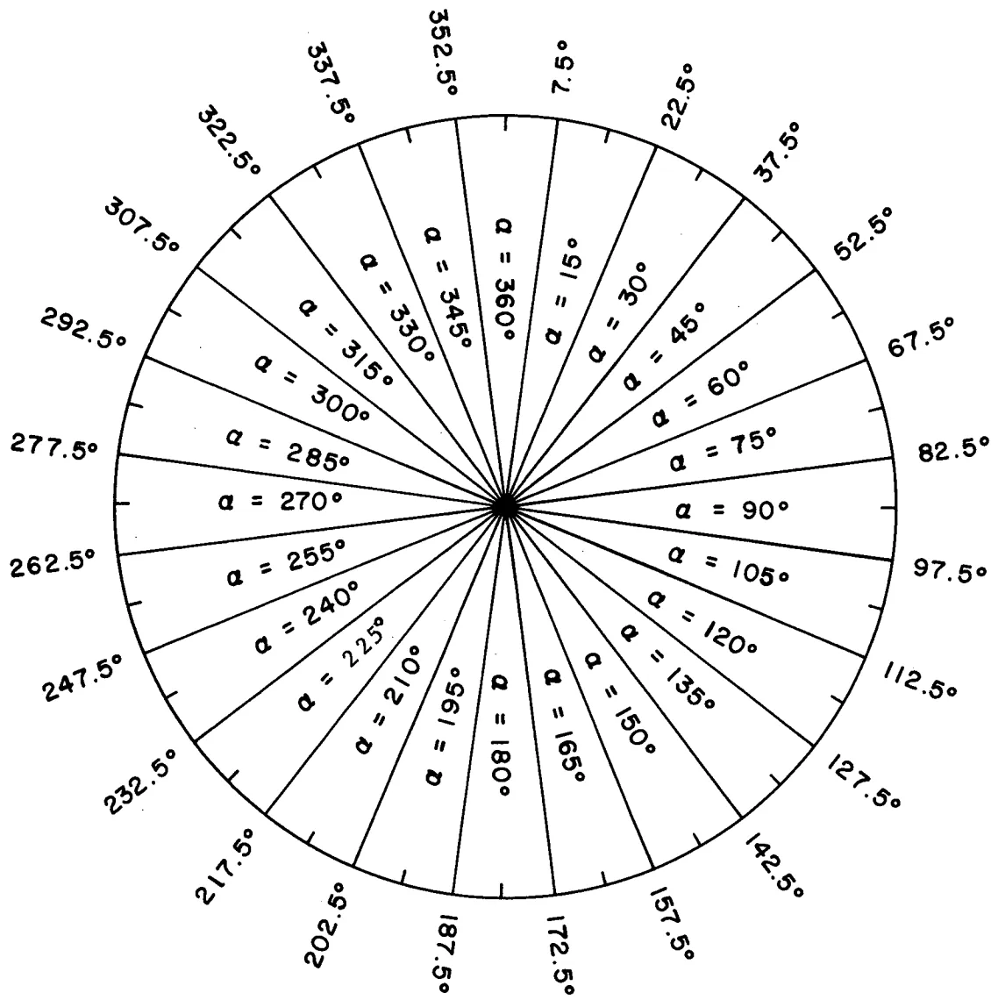

N 70 15 04 8
NASA TECHNICAL
MEMORANDUM
Report No. 53956
CASE FILE
COPY
CAPE KENNEDY WIND COMPONENT STATISTICS
MONTHLY AND ANNUAL REFERENCE PERIODS
FOR ALL FLIGHT AZIMUTHS FROM 0
TO 70 KM ALTITUDE
By S. C. Brown
Aero-Astrodynamics Laboratory
October 9, 1969
NASA
George C. Marshall Space Flight Center
Marshall Space Flight Center, Alabama
| 1. REPORT NO. TM X-53956 |
2. GOVERNMENT ACCESSION NO. | 3. RECIPIENT'S CATALOG NO. |
| 4. TITLE AND SUBTITLE CAPE KENNEDY WIND COMPONENT STATISTICS MONTHLY AND ANNUAL REFERENCE PERIODS FOR ALL FLIGHT AZIMUTHS FROM 0 TO 70 KM ALTITUDE |
5. REPORT DATE October 9, 1969 |
|
| 6. PERFORMING ORGANIZATION CODE | ||
| 7. AUTHOR(S) S. C. Brown |
8. PERFORMING ORGANIZATION REPORT # | |
| 9. PERFORMING ORGANIZATION NAME AND ADDRESS NASA George C. Marshall Space Flight Center Marshall Space Flight Center, Alabama 35812 |
10. WORK UNIT NO. | |
| 11. CONTRACT OR GRANT NO. | ||
| 13. TYPE OF REPORT & PERIOD COVERED Technical Memorandum |
||
| 12. SPONSORING AGENCY NAME AND ADDRESS | 14. SPONSORING AGENCY CODE | |
| 15. SUPPLEMENTARY NOTES The data in this report were prepared for application to space vehicle dispersion analysis and pitch (or yaw) program bias to minimize vehicle structural and control loads due to wind. |
||
| 16. ABSTRACT Head-, tail-, and cross-wind component speeds for Cape Kennedy are tabulated for all flight azimuths for altitudes from 0 to 70 km by monthly and annual reference periods. Wind speeds are given for 11 selected percentiles ranging from 0.135 percent to 99.865 percent for each reference period. |
||
| 17. KEY WORDS inflight winds, structural loads, dispersion studies, control systems |
18. DISTRIBUTION STATEMENT PUBLIC RELEASE: STAR Announcement E. D. Geissler Director, Aero-Astrodynamics Laboratory |
|
| 19. SECURITY CLASSIF. (of this report) UNCLASSIFIED |
20. SECURITY CLASSIF. (of this page) UNCLASSIFIED |
21. NO. OF PAGES 176 |
| 22. PRICE | ||
LIST OF TABLES
| Table | Title | Page |
|---|---|---|
| 1.1-1.13 | Scalar Wind..... | 5-17 |
| 2.1-2.13 | Head and Tail Wind Components - 30 Degree Flight Azimuth..... | 18-30 |
| 3.1-3.13 | Right and Left Cross Wind Components - 30 Degree Flight Azimuth..... | 31-43 |
| 4.1-4.13 | Head and Tail Wind Components - 45 Degree Flight Azimuth..... | 44-56 |
| 5.1-5.13 | Right and Left Cross Wind Components - 45 Degree Flight Azimuth..... | 57-69 |
| 6.1-6.13 | Head and Tail Wind Components - 60 Degree Flight Azimuth..... | 70-82 |
| 7.1-7.13 | Right and Left Cross Wind Components - 60 Degree Flight Azimuth..... | 83-95 |
| 8.1-8.13 | Head and Tail Wind Components - 75 Degree Flight Azimuth..... | 96-108 |
| 9.1-9.13 | Right and Left Cross Wind Components - 75 Degree Flight Azimuth..... | 109-121 |
| 10.1-10.13 | Head and Tail Wind Components - 90 Degree Flight Azimuth..... | 122-124 |
| 11.1-11.13 | Right and Left Cross Wind Components - 90 Degree Flight Azimuth..... | 135-147 |
| 12.1-12.13 | Head and Tail Wind Components - 105 Degree Flight Azimuth..... | 148-160 |
| 13.1-13.13 | Right and Left Cross Wind Components - 105 Degree Flight Azimuth..... | 161-173 |
TECHNICAL MEMORANDUM X-53956
CAPE KENNEDY WIND COMPONENT STATISTICS
MONTHLY AND ANNUAL REFERENCE PERIODS FOR ALL
FLIGHT AZIMUTHS FROM 0 TO 70 KM ALTITUDE
SUMMARY
Head-, tail-, and cross-wind component speeds for Cape Kennedy are tabulated for all flight azimuths for altitudes from 0 to 70 km by monthly and annual reference periods. Wind speeds are given for 7 selected percentiles ranging from 0.135 percent to 99.865 percent for each reference period.
INTRODUCTION
In presenting a consolidated tabulation of wind statistics for all flight azimuths, this report serves as a standard reference for a number of aerospace engineering applications; e.g., wind-biased control programs and trajectory dispersion analyses.
This document supersedes MSFC Memorandum R-AERO-Y-118-66, entitled "Cape Kennedy Wind Component Statistics, 0 to 60 Km Altitude, for all Flight Azimuths for Monthly and Annual Reference Periods."
EXPLANATION
Since wind statistics vary only slightly with small azimuth changes, the azimuth increment given here (15 degrees) is considered sufficiently small to effectively describe all azimuths. Figure 1 shows the range of azimuths over which the published wind speeds apply without interpolation. Since the wind components are orthogonal to the flight azimuth, it becomes obvious that wind statistics for all other azimuths can be obtained from the tables as illustrated in the following tabulation.
USE OF PUBLISHED STATISTICS TO OBTAIN OTHER
FLIGHT AZIMUTHS ( = flight azimuth)
| To Obtain | Headwind | Tailwind | Left Crosswind | Right Crosswind |
|---|---|---|---|---|
| Use Left Crosswind (-) |
Use Right Crosswind (+) |
Use Tailwind (+) |
Use Headwind (-) |
|
| Use Left Crosswind (-) |
Use Right Crosswind (+) |
Use Tailwind (+) |
Use Headwind (-) |
|
| Use Right Crosswind (+) |
Use Left Crosswind (-) |
Use Headwind (-) |
Use Tailwind (+) |
|
| Use Right Crosswind (+) |
Use Left Crosswind (-) |
Use Headwind (-) |
Use Tailwind (+) |
|
| Use Right Crosswind (+) |
Use Left Crosswind (-) |
Use Headwind (-) |
Use Tailwind (+) |
|
| Use Right Crosswind (+) |
Use Left Crosswind (-) |
Use Headwind (-) |
Use Tailwind (+) |
|
| Use Right Crosswind (+) |
Use Left Crosswind (-) |
Use Headwind (-) |
Use Tailwind (+) |
|
| Use Right Crosswind (+) |
Use Left Crosswind (-) |
Use Headwind (-) |
Use Tailwind (+) |

The figure is a circular diagram representing the range of azimuths for which published values should be used without interpolation. The circle is divided into 24 sectors, each representing a 15-degree interval. The outer edge is marked with azimuth values from 7.5° to 352.5° in 22.5° increments. The inner sectors are labeled with values of , ranging from 15° to 360° in 15° increments. The sectors are arranged clockwise starting from the top (0°/360°).
| Outer Azimuth (°) | Inner (°) |
|---|---|
| 352.5° | |
| 337.5° | |
| 322.5° | |
| 307.5° | |
| 292.5° | |
| 277.5° | |
| 262.5° | |
| 247.5° | |
| 232.5° | |
| 217.5° | |
| 202.5° | |
| 187.5° | |
| 172.5° | |
| 157.5° | |
| 142.5° | |
| 127.5° | |
| 112.5° | |
| 97.5° | |
| 82.5° | |
| 67.5° | |
| 52.5° | |
| 37.5° | |
| 22.5° | |
| 7.5° |
Figure 1. Range of Azimuths for Which The Published Values Should be Used Without Interpolation
(NOTE: If the desired flight azimuth falls on a line of separation, choose the towards the E-W axis. Direction azimuths are with reference to true north.)
The wind components at the several percentiles apply to the listed azimuth plane and its orthogonal plane. Consider, for example, the 30-degree flight azimuth tabulation. Under head- and tail-winds, the negative (headwind) values indicate a wind component blowing from 30 degrees. The positive values (tail-wind) indicate a wind component blowing from 210 degrees. Under right and left cross-winds, the negative values (left cross-wind) show the wind component from 300 degrees while the positive values (right cross-wind) give the component from 120 degrees. All wind speeds are in meters per second.
The tables were produced by first forming a cumulative percentage frequency of component wind speeds for each flight azimuth. Wind speed values were then interpolated for the listed percentage levels from the cumulative percentage frequency. Where no entry appears under a listed percentage level, the first value of the cumulative percentage frequency was larger than that called for percentage level. Since this depended upon the number of observations and the frequency of occurrence of the minimum wind speed, .135 percent values could be obtained only for 31-day months with single minimum wind speed occurrences and for annual reference periods. The small number of observations above 27 km caused several other percentage levels to be unavailable also. At all altitudes the minimum wind speed should be substituted for all missing percentiles.
Two data samples were used to compute the wind component statistics. The lower level (0 to 27 km) sample was composed of 12 years of serially complete radiosonde observations taken twice daily. The upper altitude (28 to 70 km) sample, although smaller and not serially complete, contained all rocketsonde observations available at this time.
To relate the tabulated percentage levels to the normal (Gaussian) distribution use:
| Normal Distribution | Percentile |
|---|---|
| mean -3 standard deviations | 0.135 |
| mean -2 standard deviations | 2.28 |
| mean -1 standard deviation | 15.9 |
| mean median | 50,000 |
| mean +1 standard deviation | 84.1 |
| mean +2 standard deviations | 97.72 |
| mean + 3 standard deviations | 99.865 |
| DATA SOURCE | JANUARY | ||||||||||||
|---|---|---|---|---|---|---|---|---|---|---|---|---|---|
| TYPE OF DATA | ELEVATION RANGE | STATION | ELEVATION MSL (meters) | LOCATION | PERIOD OF DATA | EASTERN TEST RANGE (CAPE KENNEDY, FLORIDA) | |||||||
| LATITUDE | LONGITUDE | ||||||||||||
| SERIAL COMPLETED RAWINSONDE | 0 to 27 km | PATRICK AFB, FLORIDA | 7 | 28°14' N | 80°36' W | JAN. 1, 1956 to NOV. 17, 1956 | |||||||
| SERIAL COMPLETED RAWINSONDE | 0 to 27 km | CAPE KENNEDY, FLORIDA | 5 | 28°29' N | 80°33' W | NOV. 18, 1956 to DEC. 31, 1967 | |||||||
| ROCKETSONDE | 28 km up | CAPE KENNEDY, FLORIDA | 5 | 28°29' N | 80°33' W | JAN. 1, 1960 to DEC. 31, 1967 | |||||||
PREPARED BY : TERRESTRIAL ENVIRONMENT BRANCH, AEROSPACE ENVIRONMENT DIVISION, AERO-ASTRODYNAMICS LABORATORY
GEORGE C. MARSHALL SPACE FLIGHT CENTER, HUNTSVILLE, ALABAMA
| ALT. (KM) | NUM OBS | MIN SPEED | DIR (DEG) | 0.135 | 1.000 | 2.280 | 5.000 | 15.900 | 50.000 | 84.100 | 95.000 | 97.720 | 99.000 | 99.865 | MAX DIR SPEED (DEG) |
|---|---|---|---|---|---|---|---|---|---|---|---|---|---|---|---|
| 5FC | 744 | *0+0 | |||||||||||||
| 1+0 | 744 | *0+0 | *0+4 | *1+0 | *0+2 | *1+5 | *3+3 | *5+8 | *7+9 | *8+8 | *10+0 | *11+4 | *12+0 | ||
| 2+0 | 744 | *0+0 | *0+6 | *1+5 | *1+6 | *3+5 | *7+6 | *12+8 | *20+2 | *21+9 | *26+9 | *28+0 | *20+70 | ||
| 3+0 | 744 | *0+0 | *0+0 | *1+2 | *2+2 | *3+2 | *4+1 | *8+9 | *16+3 | *21+8 | *25+2 | *27+5 | *30+9 | *34+0 | |
| 4+0 | 744 | *0+0 | *1+8 | *2+6 | *4+3 | *8+2 | *14+7 | *24+8 | *31+3 | *34+5 | *38+5 | *42+9 | *46+0 | ||
| 5+0 | 744 | *1+0 | 53 | *1+0 | *2+4 | *3+9 | *6+3 | *11+1 | *18+7 | *29+2 | *36+8 | *41+7 | *44+7 | *48+9 | *51+0 |
| 6+0 | 744 | *2+0 | 20 | *2+0 | *3+8 | *6+1 | *8+5 | *13+5 | *23+1 | *33+8 | *41+9 | *45+4 | *50+6 | *53+9 | *57+0 |
| 7+0 | 744 | *4+0 | 315 | *4+0 | *5+0 | *7+3 | *10+6 | *15+8 | *26+6 | *39+2 | *48+9 | *52+5 | *58+5 | *62+9 | *64+0 |
| 8+0 | 744 | *2+0 | 322 | *4+0 | *7+0 | *8+9 | *12+3 | *18+7 | *30+5 | *43+6 | *53+2 | *58+5 | *63+5 | *73+9 | *77+0 |
| 9+0 | 744 | *3+0 | 298 | *3+0 | *7+6 | *10+2 | *13+9 | *21+4 | *33+7 | *48+5 | *59+4 | *65+0 | *70+5 | *74+9 | *83+0 |
| 10+0 | 744 | *4+0 | 298 | *6+0 | *7+8 | *11+9 | *15+4 | *24+0 | *38+0 | *52+8 | *65+1 | *72+0 | *75+5 | *82+9 | *85+0 |
| 11+0 | 744 | *5+0 | 295 | *5+0 | *9+3 | *13+7 | *18+1 | *26+4 | *41+5 | *57+9 | *70+8 | *76+3 | *80+7 | *86+9 | *101+0 |
| 12+0 | 744 | *6+0 | 293 | *7+0 | *11+8 | *14+9 | *20+2 | *30+0 | *43+8 | *57+4 | *69+0 | *74+8 | *79+7 | *84+9 | *98+0 |
| 13+0 | 744 | *10+0 | 284 | *10+0 | *15+7 | *19+1 | *21+6 | *31+5 | *43+1 | *57+0 | *70+3 | *76+7 | *82+5 | *87+9 | *88+0 |
| 14+0 | 744 | *9+0 | 297 | *9+0 | *15+8 | *19+7 | *24+1 | *30+4 | *40+4 | *53+8 | *64+1 | *70+8 | *72+8 | *81+9 | *88+0 |
| 15+0 | 744 | *11+0 | 290 | *12+0 | *16+6 | *18+4 | *21+1 | *27+2 | *36+4 | *47+2 | *56+7 | *62+7 | *70+1 | *77+9 | *80+0 |
| 16+0 | 744 | *9+0 | 276 | *10+0 | *13+7 | *15+5 | *18+1 | *22+6 | *31+4 | *40+9 | *47+7 | *53+0 | *56+5 | *62+9 | *69+0 |
| 17+0 | 744 | *9+0 | 213 | *9+0 | *10+3 | *11+9 | *13+4 | *18+0 | *25+0 | *34+2 | *39+9 | *44+5 | *47+8 | *55+9 | *58+0 |
| 18+0 | 744 | *0+0 | *0+0 | *4+3 | *6+9 | *9+0 | *12+1 | *18+5 | *26+1 | *33+4 | *38+3 | *41+5 | *45+9 | *47+0 | |
| 19+0 | 744 | *0+0 | *0+0 | *1+9 | *2+6 | *4+1 | *6+6 | *12+5 | *19+3 | *27+3 | *32+6 | *36+5 | *50+4 | *51+0 | |
| 20+0 | 744 | *0+0 | *0+0 | *1+9 | *2+6 | *4+1 | *6+6 | *12+5 | *19+3 | *27+3 | *32+6 | *36+5 | *50+4 | *52+0 | |
| 21+0 | 744 | *0+0 | *0+1 | *0+5 | *1+2 | *2+1 | *4+1 | *8+3 | *14+7 | *21+1 | *24+8 | *28+1 | *37+9 | *42+0 | |
| 22+0 | 744 | *0+0 | *0+0 | *0+5 | *1+2 | *2+1 | *4+1 | *8+3 | *14+7 | *21+1 | *24+8 | *28+1 | *37+9 | *47+0 | |
| 23+0 | 744 | *0+0 | *0+1 | *0+5 | *1+2 | *2+1 | *4+1 | *8+3 | *14+7 | *21+1 | *24+8 | *28+1 | *37+9 | *47+0 | |
| 24+0 | 744 | *0+0 | *0+3 | *1+0 | *1+5 | *3+3 | *7+1 | *12+9 | *19+7 | *25+0 | *28+7 | *36+9 | *42+0 | *42+0 | |
| 25+0 | 744 | *0+0 | *1+0 | *1+4 | *2+1 | *3+7 | *7+9 | *15+2 | *21+4 | *25+4 | *30+3 | *38+9 | *41+0 | *41+0 | |
| 26+0 | 744 | *1+0 | *1+3 | *2+2 | *4+3 | *9+2 | *19+1 | *26+3 | *31+5 | *35+5 | *49+9 | *51+0 | *51+0 | ||
| 27+0 | 744 | *1+0 | *1+5 | *2+4 | *4+6 | *10+6 | *21+9 | *27+6 | *35+3 | *39+2 | *45+9 | *53+0 | *53+0 | ||
| 28+0 | 105 | 1+4 | 135 | 1+0 | 2+2 | 3+6 | 7+4 | 12+8 | 21+1 | 26+4 | 29+4 | 30+0 | 36+7 | 36+8 | |
| 29+0 | 107 | 2+3 | 104 | 3+0 | 3+4 | 4+3 | 7+0 | 14+0 | 25+0 | 29+0 | 33+6 | 37+0 | 39+4 | 39+5 | |
| 30+0 | 108 | 4+3 | 204 | 5+0 | 5+7 | 7+1 | 0+8 | 18+0 | 29+0 | 35+2 | 36+5 | 37+0 | 41+0 | 41+5 | |
| 31+0 | 109 | 3+6 | 210 | 4+1 | 6+2 | 7+5 | 11+6 | 20+8 | 32+2 | 35+5 | 40+4 | 43+7 | 45+0 | 45+0 | |
| 32+0 | 115 | 3+6 | 234 | 4+1 | 6+2 | 7+7 | 10+6 | 22+9 | 35+5 | 42+1 | 45+7 | 48+0 | 47+0 | 48+0 | |
| 33+0 | 115 | 4+3 | 138 | 4+0 | 4+8 | 7+0 | 14+1 | 25+0 | 38+1 | 42+4 | 45+7 | 47+5 | 49+1 | 49+2 | |
| 34+0 | 117 | 4+1 | 166 | 4+2 | 5+3 | 6+6 | 12+3 | 25+9 | 39+6 | 49+1 | 50+3 | 52+8 | 55+0 | 55+2 | |
| 35+0 | 116 | 2+0 | 270 | 2+2 | 4+2 | 5+1 | 0+0 | 28+4 | 41+1 | 52+1 | 55+0 | 61+8 | 68+5 | 68+6 | |
| 36+0 | 116 | 1+8 | 158 | 2+2 | 3+3 | 4+0 | 10+5 | 29+4 | 41+8 | 52+7 | 61+4 | 65+4 | 68+6 | 68+7 | |
| 37+0 | 114 | 1+4 | 156 | 1+5 | 2+4 | 3+6 | 10+5 | 30+4 | 41+0 | 54+2 | 61+0 | 54+0 | 75+7 | 75+3 | |
| 38+0 | 115 | 1+1 | 115 | 2+1 | 2+4 | 3+6 | 10+1 | 31+1 | 41+0 | 56+3 | 65+0 | 67+1 | 82+4 | 82+4 | |
| 39+0 | 117 | 0+0 | 0 | 0+2 | 1+7 | ||||||||||
| 40+0 | 115 | 3+7 | 167 | ||||||||||||
| 41+0 | 117 | 4+3 | 323 | ||||||||||||
| 42+0 | 114 | 2+2 | 153 | ||||||||||||
| 43+0 | 113 | 3+5 | 270 | ||||||||||||
| 44+0 | 113 | 3+1 | 270 | ||||||||||||
| 45+0 | 111 | 3+7 | 175 | ||||||||||||
| 46+0 | 110 | 6+5 | 195 | ||||||||||||
| 47+0 | 108 | 5+2 | 133 | ||||||||||||
| 48+0 | 106 | 1+1 | 174 | ||||||||||||
| 49+0 | 100 | 4+6 | 1 | ||||||||||||
| 50+0 | 100 | 5+1 | 51 | ||||||||||||
| 51+0 | 95 | 5+6 | 13 | ||||||||||||
| 52+0 | 84 | 2+7 | 45 | ||||||||||||
| 53+0 | 83 | 2+5 | 19 | ||||||||||||
| 54+0 | 72 | 6+3 | 302 | ||||||||||||
| 55+0 | 64 | 5+9 | 126 | ||||||||||||
| 56+0 | 57 | 4+4 | 165 | ||||||||||||
| 57+0 | 46 | 3+8 | 229 | ||||||||||||
| 58+0 | 26 | 8+1 | 264 | ||||||||||||
| 59+0 | 14 | 11+0 | 256 | ||||||||||||
| 60+0 | 12 | 12+9 | 255 | ||||||||||||
| 61+0 | 7 | 15+1 | 253 | ||||||||||||
| 62+0 | 6 | 24+5 | 274 | ||||||||||||
| 63+0 | 5 | 25+4 | 275 | ||||||||||||
| 64+0 | 4 | 29+8 | 290 | ||||||||||||
| 65+0 | 3 | 31+0 | 277 | ||||||||||||
| 66+0 | 3 | 25+8 | 301 | ||||||||||||
| 67+0 | 3 | 46+5 | 290 | ||||||||||||
| 68+0 | 4 | 36+6 | 290 | ||||||||||||
| 69+0 | 4 | 26+8 | 294 | ||||||||||||
| 70+0 | 4 | 21+6 | 264 |
| DATA SOURCE | FEBRUARY | ||||||||||
|---|---|---|---|---|---|---|---|---|---|---|---|
| TYPE OF DATA | ELEVATION RANGE | STATION | ELEVATION MSL (meters) | LOCATION | PERIOD OF DATA | EASTERN TEST RANGE (CAPE KENNEDY, FLORIDA) | |||||
| LATITUDE | LONGITUDE | ||||||||||
| SERIAL COMPLETED RAWINSONDE | 0 to 27 km | PATRICK AFB, FLORIDA | 7 | 28° 14' N | 80° 36' W | JAN. 1, 1956 to NOV. 17, 1956 | |||||
| SERIAL COMPLETED RAWINSONDE | 0 to 27 km | CAPE KENNEDY, FLORIDA | 5 | 28° 29' N | 80° 33' W | NOV. 18, 1956 to DEC. 31, 1967 | |||||
| ROCKETSONDE | 28 km up | CAPE KENNEDY, FLORIDA | 5 | 28° 29' N | 80° 33' W | JAN. 1, 1960 to DEC. 31, 1967 | |||||
PREPARED BY : TERRESTRIAL ENVIRONMENT BRANCH, AEROSPACE ENVIRONMENT DIVISION, AERO-ASTRODYNAMICS LABORATORY
GEORGE C. MARSHALL SPACE FLIGHT CENTER, HUNTSVILLE, ALABAMA
| ALT. (KM) | NUM OBS | MIN SPEED | DIR (DEG) | CUMULATIVE | MAX SPEED | DIR (DEG) | ||||||||||
|---|---|---|---|---|---|---|---|---|---|---|---|---|---|---|---|---|
| 0.135 | 1.000 | 2.280 | 5.000 | 15.900 | 50.000 | 84.100 | 95.000 | 97.720 | 99.000 | 99.865 | ||||||
| 5FC | 676 | +0.0 | +0.4 | +1.6 | +3.7 | +6.5 | +8.4 | +9.4 | +10.5 | +12.6 | +13.0 | |||||
| 1.0 | 676 | +0.0 | +0.3 | +0.8 | +1.7 | +3.6 | +7.5 | +14.2 | +18.9 | +21.7 | +24.7 | +28.0 | +29.0 | 220 | ||
| 2.0 | 676 | +1.0 | +1.0 | +1.4 | +2.3 | +4.2 | +9.3 | +18.0 | +24.8 | +27.7 | +29.8 | +33.0 | +34.0 | 286 | ||
| 3.0 | 676 | +1.0 | +1.5 | +2.2 | +3.2 | +5.9 | +12.5 | +21.8 | +29.2 | +33.3 | +35.4 | +41.0 | +42.0 | 290 | ||
| 4.0 | 676 | +1.0 | +1.5 | +3.0 | +4.7 | +7.8 | +15.1 | +26.1 | +33.7 | +38.6 | +42.2 | +51.0 | +52.0 | 290 | ||
| 5.0 | 676 | +1.0 | 20 | +2.1 | +3.2 | +5.6 | +10.2 | +19.0 | +30.3 | +39.1 | +43.3 | +48.2 | +65.0 | +66.0 | 290 | |
| 6.0 | 676 | +1.0 | 300 | +2.6 | +4.4 | +6.9 | +12.6 | +23.0 | +35.9 | +43.7 | +48.1 | +51.2 | +69.0 | +70.0 | 270 | |
| 7.0 | 676 | +1.0 | 326 | +4.2 | +6.0 | +7.9 | +14.9 | +26.6 | +40.4 | +51.1 | +54.7 | +60.2 | +81.0 | +82.0 | 270 | |
| 8.0 | 676 | +9.0 | 230 | +5.7 | +7.2 | +9.4 | +17.3 | +30.3 | +45.5 | +56.0 | +62.5 | +67.6 | +90.0 | +91.0 | 270 | |
| 9.0 | 676 | +3.0 | 287 | +6.4 | +9.2 | +11.9 | +19.3 | +34.7 | +50.7 | +63.3 | +69.5 | +75.1 | +92.0 | +93.0 | 270 | |
| 10.0 | 676 | +5.0 | 238 | +7.2 | +10.0 | +12.8 | +20.9 | +39.6 | +56.0 | +68.8 | +74.8 | +77.7 | +91.0 | +92.0 | 250 | |
| 11.0 | 676 | +5.0 | 253 | +6.9 | +10.7 | +13.9 | +23.8 | +42.4 | +60.6 | +73.2 | +81.1 | +86.1 | +99.0 | +95.0 | 250 | |
| 12.0 | 676 | +4.0 | 76 | +9.7 | +13.4 | +17.5 | +27.1 | +45.6 | +61.0 | +74.1 | +81.5 | +85.7 | +99.0 | +99.0 | 260 | |
| 13.0 | 676 | +10.0 | +13.3 | +17.4 | +19.3 | +28.3 | +43.6 | +61.0 | +74.1 | +81.5 | +85.7 | +99.0 | +99.0 | 260 | ||
| 14.0 | 676 | +10.0 | 240 | +15.2 | +18.3 | +20.6 | +27.4 | +40.7 | +58.1 | +64.0 | +71.2 | +78.2 | +92.0 | +93.0 | ||
| 15.0 | 676 | +9.0 | 240 | +12.3 | +14.5 | +17.6 | +24.3 | +36.0 | +48.7 | +57.9 | +62.5 | +67.1 | +74.0 | +75.0 | 275 | |
| 16.0 | 676 | +6.0 | 342 | +11.1 | +12.3 | +15.0 | +20.6 | +30.6 | +42.3 | +49.5 | +54.1 | +58.0 | +65.0 | +66.0 | 256 | |
| 17.0 | 676 | +3.0 | +5.7 | +9.0 | +11.1 | +16.1 | +25.1 | +34.3 | +42.5 | +45.7 | +48.2 | +61.0 | +62.0 | 255 | ||
| 18.0 | 676 | +2.0 | +2.7 | +4.6 | +6.7 | +11.2 | +18.1 | +27.1 | +33.5 | +38.5 | +41.8 | +50.0 | +51.0 | 260 | ||
| 19.0 | 676 | +6.0 | +1.0 | +2.0 | +3.1 | +5.5 | +11.9 | +19.8 | +28.5 | +31.9 | +33.7 | +48.0 | +49.0 | 270 | ||
| 20.0 | 676 | +1.0 | +1.1 | +1.6 | +3.1 | +5.1 | +7.3 | +11.6 | +20.6 | +24.6 | +27.7 | +41.0 | +42.0 | 250 | ||
| 21.0 | 676 | +6.0 | +0.0 | +0.6 | +1.2 | +2.4 | +5.8 | +11.7 | +16.9 | +19.7 | +24.4 | +30.0 | +31.0 | 236 | ||
| 22.0 | 676 | +6.0 | +0.3 | +1.0 | +2.1 | +5.0 | +11.0 | +15.0 | +18.8 | +25.3 | +36.0 | +37.0 | +38.0 | 258 | ||
| 23.0 | 676 | +9.0 | +0.1 | +0.6 | +2.2 | +5.0 | +10.6 | +15.3 | +20.7 | +25.7 | +32.0 | +33.0 | +34.0 | 96 | ||
| 24.0 | 676 | +0.0 | +0.3 | +1.0 | +2.3 | +5.4 | +10.7 | +15.3 | +18.5 | +21.0 | +22.6 | +23.0 | +24.0 | |||
| 25.0 | 676 | +0.0 | +0.1 | +0.5 | +1.1 | +2.5 | +5.9 | +11.4 | +16.1 | +18.9 | +21.6 | +28.0 | +29.0 | 100 | ||
| 26.0 | 676 | +0.0 | +0.2 | +0.7 | +1.3 | +2.8 | +6.5 | +12.6 | +17.2 | +19.7 | +24.6 | +35.0 | +36.0 | 80 | ||
| 27.0 | 676 | +0.0 | +0.2 | +0.9 | +1.5 | +3.0 | +7.1 | +13.5 | +19.7 | +24.1 | +26.1 | +45.0 | +46.0 | 80 | ||
| 28.0 | 52 | 0.3 | 4 | 0.4 | 0.8 | 2.4 | 7.8 | 14.0 | 20.9 | 25.8 | 28.1 | 26.3 | 24.3 | 261 | ||
| 29.0 | 82 | 1.0 | 270 | 2.2 | 4.4 | 9.3 | 14.0 | 23.0 | 25.1 | 28.1 | 24.5 | 24.5 | 260 | |||
| 30.0 | 81 | 2.0 | 270 | 2.0 | 5.0 | 12.0 | 21.5 | 27.5 | 29.9 | 31.2 | 32.1 | 32.1 | 270 | |||
| 31.0 | 81 | 1.7 | 192 | 3.8 | 7.5 | 15.3 | 25.4 | 30.0 | 33.9 | 35.1 | 35.6 | 35.7 | 243 | |||
| 32.0 | 81 | 1.4 | 225 | 4.8 | 7.2 | 20.1 | 30.0 | 34.0 | 38.2 | 47.1 | 47.7 | 47.7 | 250 | |||
| 33.0 | 81 | 2.8 | 45 | 3.0 | 8.0 | 17.7 | 21.7 | 37.1 | 39.2 | 50.1 | 51.1 | 51.2 | 247 | |||
| 34.0 | 94 | 3.7 | 130 | 4.2 | 8.6 | 21.7 | 33.1 | 39.2 | 42.9 | 46.1 | 46.8 | 46.9 | 265 | |||
| 35.0 | 100 | 2.1 | 239 | 5.7 | 9.9 | 20.5 | 33.1 | 39.2 | 42.9 | 46.1 | 46.8 | 46.9 | 275 | |||
| 36.0 | 102 | 4.6 | 124 | 6.1 | 12.0 | 20.8 | 33.5 | 43.5 | 48.0 | 49.0 | 52.1 | 52.5 | 278 | |||
| 37.0 | 105 | 4.2 | 300 | 4.5 | 11.3 | 22.4 | 32.7 | 43.3 | 48.6 | 52.9 | 57.0 | 58.0 | 263 | |||
| 38.0 | 107 | 4.2 | 311 | 5.2 | 7.5 | 12.0 | 23.4 | 42.7 | 50.6 | 52.9 | 55.9 | 56.1 | 267 | |||
| 39.0 | 109 | 4.9 | 275 | 5.4 | 6.5 | 13.8 | 35.4 | 49.6 | 49.6 | 51.9 | 61.4 | 62.0 | 260 | |||
| 40.0 | 109 | 6.5 | 320 | 7.5 | 8.6 | 13.3 | 25.5 | 35.0 | 44.5 | 47.6 | 64.9 | 67.2 | 248 | |||
| 41.0 | 112 | 7.0 | 1 | 9.5 | 14.0 | 28.0 | 39.1 | 48.4 | 55.6 | 66.9 | 73.6 | 73.7 | 244 | |||
| 42.0 | 109 | 5.1 | 92 | 6.2 | 9.7 | 17.6 | 35.7 | 50.4 | 58.6 | 70.0 | 74.8 | 74.9 | 245 | |||
| 43.0 | 108 | 3.1 | 90 | 3.2 | 3.7 | 9.4 | 20.7 | 39.7 | 53.1 | 66.6 | 71.0 | 75.6 | 282 | |||
| 44.0 | 105 | 4.2 | 28 | 5.1 | 7.4 | 9.7 | 30.0 | 44.6 | 60.4 | 72.4 | 73.0 | 75.4 | 283 | |||
| 45.0 | 105 | 3.0 | 384 | 4.1 | 6.4 | 9.1 | 44.1 | 62.4 | 73.6 | 76.5 | 77.6 | 77.0 | 297 | |||
| 46.0 | 102 | 2.0 | 45 | 2.1 | 5.3 | 10.1 | 33.7 | 50.4 | 67.9 | 76.7 | 78.9 | 81.3 | 221 | |||
| 47.0 | 102 | 1.3 | 297 | 1.3 | 2.3 | 13.1 | 34.7 | 53.4 | 64.5 | 80.9 | 80.7 | 80.2 | 228 | |||
| 48.0 | 94 | 4.5 | 207 | 5.2 | 10.0 | 19.9 | 35.8 | 71.1 | 76.3 | 76.7 | 77.0 | 77.1 | 263 | |||
| 49.0 | 95 | 5.5 | 219 | 4.2 | 12.8 | 24.0 | 35.1 | 55.3 | 72.3 | 80.0 | 80.6 | 80.6 | 257 | |||
| 50.0 | 90 | 5.5 | 250 | 12.0 | 14.5 | 23.6 | 37.3 | 54.4 | 64.5 | 73.0 | 83.1 | 83.6 | 242 | |||
| 51.0 | 83 | 4.9 | 311 | 8.0 | 19.2 | 25.3 | 39.4 | 54.9 | 70.2 | 75.1 | 81.2 | 82.1 | 245 | |||
| 52.0 | 80 | 7.2 | 354 | 10.2 | 28.3 | 42.0 | 59.1 | 74.0 | 77.6 | 80.2 | 80.4 | 247 | ||||
| 53.0 | 74 | 9.6 | 27 | 12.7 | 22.4 | 31.4 | 49.8 | 67.1 | 74.6 | 80.2 | 80.4 | 80.7 | 247 | |||
| 54.0 | 66 | 11.0 | 39 | 17.5 | 24.2 | 33.5 | 49.0 | 65.4 | 75.7 | 80.5 | 80.5 | 81.2 | 249 | |||
| 55.0 | 61 | 21.5 | 277 | 24.4 | 27.0 | 33.5 | 52.0 | 70.5 | 81.0 | 84.6 | 91.2 | 91.2 | 249 | |||
| 56.0 | 50 | 24.4 | 269 | 24.5 | 27.5 | 31.5 | 54.0 | 64.7 | 90.5 | 92.0 | 102.5 | 103.2 | 251 | |||
| 57.0 | 45 | 24.3 | 294 | 24.3 | 29.1 | 34.5 | 58.3 | 69.3 | 89.4 | 105.9 | 121.5 | 121.9 | 247 | |||
| 58.0 | 39 | 24.0 | 302 | 25.0 | 38.2 | 54.8 | 69.4 | 81.1 | 105.9 | 105.9 | 105.4 | 106.4 | 260 | |||
| 59.0 | 27 | 27.9 | 309 | 29.4 | 35.3 | 56.5 | 81.7 | 105.7 | 109.2 | 109.4 | 109.6 | 108.6 | 243 | |||
| 60.0 | 20 | 25.1 | 320 | 25.0 | 35.3 | 56.5 | 81.7 | 105.7 | 109.2 | 109.4 | 109.4 | 109.4 | 244 | |||
| 61.0 | 15 | 23.1 | 336 | 41.1 | 43.2 | 50.0 | 84.8 | 103.0 | 101.9 | 102.9 | 102.1 | 102.1 | 244 | |||
| 62.0 | 7 | 24.4 | 356 | 41.1 | 43.2 | 72.5 | 91.9 | 95.2 | 97.1 | 97.9 | 97.3 | 97.3 | 247 | |||
| 63.0 | 4 | 30.1 | 252 | 92.0 | 111.4 | 111.2 | 112.1 | 112.1 | 112.2 | 112.2 | 112.2 | 252 | ||||
| 64.0 | 2 | 89.5 | 272 | 99.0 | 92.0 | 92.3 | 92.3 | 92.3 | 92.3 | 92.4 | 92.4 | 240 | ||||
| 65.0 | 1 | 75.6 | 255 | 75.6 | 245 | |||||||||||
| 66.0 | 2 | 57.3 | 261 | 57.0 | 64.2 | 69.2 | 69.3 | 69.3 | 69.4 | 69.4 | 244 | |||||
| 67.0 | 1 | 117.4 | 261 | 117.4 | 261 | |||||||||||
| 68.0 | 3 | 115.1 | 274 | 125.5 | 128.4 | 128.7 | 128.7 | 128.8 | 128.8 | 128.4 | 243 | |||||
| 69.0 | 3 | 57.8 | 245 | 74.5 | 114.3 | 116.4 | 116.5 | 116.5 | 116.5 | 116.5 | 258 | |||||
| 70.0 | 3 | 43.9 | 244 | 50.5 | 130.5 | 130.4 | 130.0 | 131.0 | 131.0 | 131.0 | 244 | |||||
SCALAR WIND
TABLE 1.3
| DATA SOURCE | MARCH | |||||||||||||
|---|---|---|---|---|---|---|---|---|---|---|---|---|---|---|
| TYPE OF DATA | ELEVATION RANGE | STATION | ELEVATION MSL (meters) | LOCATION | PERIOD OF DATA | |||||||||
| LATITUDE | LONGITUDE | |||||||||||||
| SERIAL COMPLETED RAWINSONDE | 0 to 27 km | PATRICK AFB, FLORIDA | 7 | 28° 14' N | 80° 36' W | JAN. 1, 1956 to NOV. 17, 1956 | EASTERN TEST RANGE (CAPE KENNEDY, FLORIDA) | |||||||
| SERIAL COMPLETED RAWINSONDE | 0 to 27 km | CAPE KENNEDY, FLORIDA | 5 | 28° 29' N | 80° 33' W | NOV. 18, 1956 to DEC. 31, 1967 | ||||||||
| ROCKETSONDE | 28 km up | CAPE KENNEDY, FLORIDA | 5 | 28° 29' N | 80° 33' W | JAN. 1, 1960 to DEC. 31, 1967 | ||||||||
PREPARED BY : TERRESTRIAL ENVIRONMENT BRANCH, AEROSPACE ENVIRONMENT DIVISION, AERO-ASTRODYNAMICS LABORATORY
GEORGE C. MARSHALL SPACE FLIGHT CENTER, HUNTSVILLE, ALABAMA
| ALT. (KM) | NUM OBS | MIN SPEED | DIR (DEG) | 0.135 | 1.000 | 2.280 | CUMULATIVE 5.000 | PERCENTAGE 15.900 | FREQUENCY 50.000 | 84.100 | 95.000 | 97.720 | 99.000 | 99.865 | MAX SPEED (DEG) | DIR | |
|---|---|---|---|---|---|---|---|---|---|---|---|---|---|---|---|---|---|
| SFC | 744 | +0.0 | +0.6 | +1.6 | +3.4 | +6.2 | +8.2 | +9.5 | +10.5 | +12.9 | +14.0 | 340 | |||||
| 1.0 | 744 | +0.0 | +0.0 | +0.7 | +1.2 | +1.9 | +3.7 | +7.3 | +12.7 | +16.9 | +20.2 | +22.7 | +25.9 | +27.0 | 220 | ||
| 2.0 | 744 | +0.0 | +0.0 | +0.4 | +1.0 | +2.0 | +4.0 | +8.4 | +15.7 | +20.9 | +24.2 | +27.1 | +30.9 | +36.0 | 240 | ||
| 3.0 | 744 | +1.0 | +1.1 | +1.8 | +2.8 | +5.2 | +11.3 | +20.0 | +25.6 | +32.7 | +34.7 | +42.9 | +50.0 | 246 | |||
| 4.0 | 744 | +1.0 | +1.8 | +3.8 | +7.2 | +14.6 | +24.3 | +29.8 | +35.0 | +40.2 | +49.9 | +51.0 | 250 | ||||
| 5.0 | 744 | +1.0 | 10 | +1.0 | +3.0 | +4.1 | +6.7 | +9.6 | +18.3 | +28.8 | +35.1 | +42.0 | +46.5 | +50.9 | +64.0 | 250 | |
| 6.0 | 744 | +2.0 | 275 | +2.0 | +4.5 | +6.3 | +8.0 | +12.7 | +22.5 | +33.2 | +40.4 | +44.6 | +50.8 | +57.9 | +67.0 | 240 | |
| 7.0 | 744 | +1.0 | 292 | +1.0 | +6.4 | +7.4 | +9.5 | +15.9 | +26.0 | +37.6 | +46.1 | +50.6 | +58.7 | +64.9 | +71.0 | 230 | |
| 8.0 | 744 | +3.0 | +7.7 | +9.3 | +11.3 | +19.3 | +29.7 | +41.9 | +51.6 | +57.2 | +63.7 | +75.9 | +81.0 | 252 | |||
| 9.0 | 744 | +3.0 | 163 | +4.0 | +9.2 | +11.6 | +13.8 | +21.1 | +33.8 | +46.6 | +58.6 | +66.0 | +72.7 | +84.9 | +88.0 | 242 | |
| 10.0 | 744 | +2.0 | 263 | +5.0 | +9.2 | +11.7 | +15.5 | +24.1 | +38.3 | +51.7 | +64.6 | +72.0 | +80.7 | +91.9 | +110.0 | 279 | |
| 11.0 | 744 | +0.0 | +4.0 | +10.0 | +13.1 | +17.5 | +28.1 | +41.7 | +57.7 | +69.3 | +77.4 | +88.2 | +94.9 | +103.0 | 230 | ||
| 12.0 | 744 | +8.0 | 305 | +8.0 | +12.6 | +15.7 | +21.5 | +30.4 | +44.2 | +59.2 | +72.1 | +80.0 | +87.7 | +101.9 | +106.0 | 245 | |
| 13.0 | 744 | +13.0 | 279 | +13.0 | +16.1 | +19.2 | +22.7 | +31.3 | +44.3 | +58.0 | +66.6 | +78.0 | +85.5 | +93.9 | +95.0 | 233 | |
| 14.0 | 744 | +12.0 | 322 | +14.0 | +16.4 | +19.4 | +22.9 | +28.7 | +40.4 | +52.7 | +61.8 | +69.0 | +75.2 | +79.9 | +84.0 | 248 | |
| 15.0 | 744 | +12.0 | +14.6 | +17.1 | +20.4 | +25.8 | +35.5 | +45.5 | +55.5 | +60.6 | +69.1 | +73.4 | +74.0 | ||||
| 16.0 | 744 | +7.0 | 253 | +8.0 | +11.4 | +13.4 | +16.1 | +21.4 | +30.6 | +39.4 | +46.6 | +50.8 | +54.7 | +67.9 | +69.0 | 258 | |
| 17.0 | 744 | +3.0 | 87 | +5.0 | +7.4 | +9.2 | +11.8 | +15.8 | +24.5 | +33.3 | +39.3 | +42.8 | +45.8 | +55.9 | +59.0 | ||
| 18.0 | 744 | +2.0 | 329 | +2.0 | +3.4 | +5.3 | +6.7 | +10.3 | +17.4 | +25.9 | +32.5 | +35.3 | +37.7 | +41.9 | +57.0 | 280 | |
| 19.0 | 744 | +1.0 | +1.0 | +2.0 | +2.9 | +5.3 | +10.5 | +18.3 | +25.2 | +28.5 | +31.4 | +35.9 | +39.0 | 250 | |||
| 20.0 | 744 | +0.0 | +0.0 | +0.2 | +0.7 | +1.3 | +2.9 | +6.6 | +12.9 | +18.6 | +22.8 | +27.5 | +31.9 | +38.0 | 240 | ||
| 21.0 | 744 | +1.0 | +1.1 | +2.3 | +5.2 | +10.3 | +14.4 | +17.3 | +19.7 | +24.9 | +26.0 | 225 | |||||
| 22.0 | 744 | +0.0 | +0.1 | +0.5 | +1.1 | +2.0 | +4.6 | +8.6 | +13.1 | +17.5 | +23.5 | +23.5 | +34.9 | +45.0 | 250 | ||
| 23.0 | 744 | +0.0 | +0.0 | +0.2 | +0.8 | +2.0 | +4.4 | +8.5 | +12.9 | +17.0 | +20.8 | +20.8 | +35.9 | +41.0 | 105 | ||
| 24.0 | 744 | +0.0 | +0.9 | +2.1 | +5.3 | +9.7 | +15.3 | +21.5 | +25.1 | +34.9 | +41.0 | 95 | |||||
| 25.0 | 744 | +0.0 | +0.1 | +0.3 | +0.9 | +2.1 | +5.3 | +10.3 | +17.2 | +21.6 | +27.5 | +32.5 | +40.9 | +48.0 | 85 | ||
| 26.0 | 744 | +0.0 | +0.0 | +0.2 | +0.9 | +2.1 | +5.3 | +11.7 | +19.1 | +24.6 | +32.5 | +40.9 | +49.0 | +49.0 | 85 | ||
| 27.0 | 744 | +0.0 | +1.2 | +2.6 | +4.1 | +11.7 | +19.1 | +24.6 | +32.5 | +40.9 | +49.0 | +49.0 | 85 | ||||
| 28.0 | 83 | 0.7 | 117 | 2.4 | 2.4 | 7.9 | 13.6 | 16.0 | 18.0 | 24.2 | 25.2 | 25.4 | 252 | ||||
| 29.0 | 93 | 1.0 | 186 | 2.1 | 3.8 | 8.1 | 15.8 | 19.5 | 20.0 | 26.1 | 27.0 | 27.2 | 263 | ||||
| 30.0 | 97 | 1.6 | 15 | 2.1 | 3.0 | 4.7 | 8.0 | 18.5 | 21.6 | 23.0 | 31.0 | 31.6 | 31.7 | 264 | |||
| 31.0 | 94 | 1.5 | 295 | 2.6 | 3.5 | 5.2 | 11.2 | 22.5 | 25.4 | 29.0 | 30.3 | 30.5 | 265 | ||||
| 32.0 | 101 | 3.2 | 3.2 | 4.0 | 5.0 | 12.1 | 25.2 | 29.5 | 32.7 | 34.0 | 35.1 | 35.2 | 263 | ||||
| 33.0 | 103 | 2.3 | 117 | 2.4 | 3.3 | 5.2 | 11.0 | 28.1 | 31.0 | 34.7 | 36.0 | 37.0 | 34.1 | 267 | |||
| 34.0 | 103 | 1.4 | 92 | 2.1 | 2.9 | 5.1 | 12.7 | 29.5 | 34.0 | 37.7 | 39.0 | 41.0 | 42.0 | 267 | |||
| 35.0 | 103 | 2.9 | 350 | 2.5 | 4.0 | 7.1 | 13.7 | 28.5 | 32.0 | 36.0 | 38.0 | 40.0 | 41.0 | 273 | |||
| 36.0 | 103 | 2.6 | 293 | 3.0 | 3.5 | 7.0 | 13.7 | 28.5 | 34.0 | 38.0 | 40.0 | 41.0 | 271 | ||||
| 37.0 | 113 | 2.4 | 309 | 2.5 | 3.5 | 5.1 | 13.0 | 28.5 | 31.0 | 36.0 | 41.0 | 44.0 | 44.2 | 262 | |||
| 38.0 | 113 | 4.2 | 233 | 5.0 | 8.5 | 15.8 | 24.5 | 31.0 | 42.8 | 44.0 | 45.0 | 267 | |||||
| 39.0 | 113 | 1.0 | 47 | 5.6 | 9.8 | 17.5 | 27.0 | 33.1 | 39.0 | 43.6 | 44.3 | 242 | |||||
| 40.0 | 116 | 2.5 | 102 | 4.1 | 4.8 | 18.5 | 24.5 | 35.6 | 41.0 | 42.8 | 45.0 | 267 | |||||
| 41.0 | 116 | 2.8 | 166 | 3.6 | 7.8 | 13.1 | 20.2 | 30.2 | 42.7 | 44.8 | 46.4 | 232 | |||||
| 42.0 | 116 | 1.2 | 270 | 4.5 | 8.4 | 20.3 | 29.9 | 34.7 | 41.8 | 47.8 | 50.5 | 238 | |||||
| 43.0 | 116 | 0.9 | 194 | 3.1 | 5.6 | 7.9 | 13.4 | 20.0 | 41.1 | 44.5 | 51.1 | 230 | |||||
| 44.0 | 116 | 1.4 | 337 | 3.1 | 4.6 | 8.4 | 13.1 | 22.9 | 38.7 | 45.8 | 56.1 | 244 | |||||
| 45.0 | 111 | 4.2 | 64 | 4.3 | 8.8 | 7.3 | 13.1 | 22.9 | 38.7 | 45.8 | 56.1 | 244 | |||||
| 46.0 | 110 | 5.0 | 245 | 5.1 | 6.2 | 8.3 | 14.4 | 24.0 | |||||||||
| 47.0 | 108 | 4.5 | 9 | 5.1 | 6.2 | 7.7 | 13.8 | 25.7 | 34.0 | 46.3 | 50.4 | 252 | |||||
| 48.0 | 107 | 5.6 | 108 | 8.7 | 15.2 | 27.1 | 38.0 | 49.3 | 54.0 | 64.1 | 275 | ||||||
| 49.0 | 105 | 5.2 | 118 | 5.4 | 10.3 | 20.8 | 41.4 | 46.0 | 58.0 | 65.3 | 255 | ||||||
| 50.0 | 102 | 4.8 | 171 | 7.3 | 11.1 | 20.7 | 32.0 | 42.2 | 49.0 | 61.0 | 67.1 | 259 | |||||
| 51.0 | 97 | 4.2 | 160 | 8.2 | 10.9 | 22.1 | 33.4 | 44.2 | 53.1 | 62.8 | 66.8 | 255 | |||||
| 52.0 | 94 | 4.9 | 149 | 7.1 | 17.7 | 23.0 | 34.0 | 45.8 | 54.3 | 63.0 | 65.0 | 255 | |||||
| 53.0 | 87 | 4.4 | 208 | 8.0 | 19.1 | 25.9 | 38.5 | 47.1 | 59.7 | 68.0 | 64.8 | 264 | |||||
| 54.0 | 80 | 7.7 | 214 | 8.8 | 20.0 | 28.4 | 35.8 | 48.2 | 57.4 | 65.9 | 66.0 | 269 | |||||
| 55.0 | 63 | 8.6 | 250 | 16.5 | 23.6 | 34.8 | 40.3 | 57.4 | 59.4 | 61.0 | 65.0 | 269 | |||||
| 56.0 | 60 | 8.5 | 251 | 8.4 | 16.0 | 26.5 | 39.5 | 40.0 | 57.0 | 61.0 | 65.0 | 269 | |||||
| 57.0 | 51 | 14.2 | 90 | 18.1 | 18.8 | 28.0 | 40.8 | 52.9 | 62.5 | 65.0 | 69.0 | 258 | |||||
| 58.0 | 41 | 10.7 | 70 | 24.1 | 30.2 | 43.8 | 54.5 | 61.0 | 71.1 | 72.2 | 72.2 | 265 | |||||
| 59.0 | 32 | 10.7 | 142 | 16.6 | 34.0 | 43.0 | 56.9 | 66.4 | 82.5 | 82.7 | 82.7 | 262 | |||||
| 60.0 | 22 | 19.2 | 235 | 29.1 | 37.2 | 44.0 | 53.5 | 70.9 | 81.7 | 82.3 | 82.4 | 261 | |||||
| 61.0 | 14 | 15.2 | 255 | 44.2 | 48.7 | 53.8 | 69.4 | 70.8 | 70.8 | 70.8 | 70.8 | 247 | |||||
| 62.0 | 10 | 20.4 | 197 | 41.5 | 47.0 | 61.4 | 63.7 | 68.1 | 64.3 | 64.8 | 64.5 | 275 | |||||
| 63.0 | 7 | 13.5 | 224 | 35.1 | 46.5 | 67.0 | 73.0 | 73.9 | 73.5 | 73.5 | 73.5 | 245 | |||||
| 64.0 | 5 | 24.7 | 220 | 51.5 | 81.3 | 82.0 | 82.9 | 82.4 | 82.4 | 82.4 | 247 | ||||||
| 65.0 | 3 | 10.9 | 281 | 39.5 | 50.5 | 50.5 | 50.5 | 50.5 | 50.5 | 50.5 | 268 | ||||||
| 66.0 | 2 | 8.6 | 316 | 10.0 | 28.0 | 28.0 | 28.0 | 28.0 | 28.0 | 28.0 | 241 | ||||||
| 67.0 | 1 | 19.1 | 335 | 19.1 | 335 | 1 | |||||||||||
| 68.0 | 1 | 4.4 | 1 | 8.4 | 1 | 1 | |||||||||||
| 69.0 | 1 | 4.1 | 108 | 4.1 | 108 | 1 | |||||||||||
| 70.0 | 1 | 5.5 | 13 | 5.5 | 13 | 1 |
| DATA SOURCE | APRIL | ||||||||||
|---|---|---|---|---|---|---|---|---|---|---|---|
| TYPE OF DATA | ELEVATION RANGE | STATION | ELEVATION MSL (meters) | LOCATION | PERIOD OF DATA | EASTERN TEST RANGE (CAPE KENNEDY, FLORIDA) | |||||
| LATITUDE | LONGITUDE | ||||||||||
| SERIAL COMPLETED RAWINSONDE | 0 to 27 km | PATRICK AFB, FLORIDA | 7 | 28° 14' N | 80° 36' W | JAN. 1, 1956 to NOV. 17, 1956 | |||||
| SERIAL COMPLETED RAWINSONDE | 0 to 27 km | CAPE KENNEDY, FLORIDA | 5 | 28° 29' N | 80° 33' W | NOV. 18, 1956 to DEC. 31, 1967 | |||||
| ROCKETSONDE | 28 km up | CAPE KENNEDY, FLORIDA | 5 | 28° 29' N | 80° 33' W | JAN. 1, 1960 to DEC. 31, 1967 | |||||
PREPARED BY : TERRESTRIAL ENVIRONMENT BRANCH, AEROSPACE ENVIRONMENT DIVISION, AERO-ASTRODYNAMICS LABORATORY
GEORGE C. MARSHALL SPACE FLIGHT CENTER, HUNTSVILLE, ALABAMA
| ALT. (KM) | NUM OBS | MIN SPEED | DIR (DEG) | 0.135 | 1.000 | 2.280 | 5.000 | 15.900 | 50.000 | 84.100 | 95.000 | 97.720 | 99.000 | 99.865 | MAX SPEED | DIR (DEG) |
|---|---|---|---|---|---|---|---|---|---|---|---|---|---|---|---|---|
| 5FC | 720 | +0.0 | +0.9 | +1.0 | +3.6 | +5.8 | +7.0 | +8.6 | +9.8 | +12.0 | +13.0 | 210 | ||||
| 1.0 | 720 | +0.0 | +0.2 | +0.6 | +1.3 | +3.1 | +6.5 | +10.5 | +14.5 | +19.3 | +21.2 | +24.0 | +25.0 | 300 | ||
| 2.0 | 720 | +0.0 | +0.2 | +0.7 | +1.3 | +2.9 | +4.5 | +12.2 | +18.0 | +21.3 | +23.7 | +28.0 | +29.0 | 289 | ||
| 3.0 | 720 | +0.0 | +0.3 | +1.0 | +1.6 | +3.4 | +7.9 | +15.6 | +21.7 | +25.1 | +28.4 | +40.0 | +41.0 | 280 | ||
| 4.0 | 720 | +1.0 | +1.8 | +3.9 | +10.0 | +18.9 | +25.2 | +29.8 | +33.4 | +45.0 | +46.0 | 290 | ||||
| 5.0 | 720 | +1.0 | +2.0 | +4.5 | +12.2 | +22.5 | +29.2 | +34.7 | +36.9 | +51.0 | +52.0 | 270 | ||||
| 6.0 | 720 | +1.0 | +1.0 | +1.6 | +2.4 | +5.8 | +15.0 | +25.9 | +34.1 | +38.7 | +40.4 | +66.0 | +67.0 | 270 | ||
| 7.0 | 720 | +0.0 | +1.2 | +2.0 | +3.3 | +7.3 | +9.1 | +18.8 | +29.8 | +39.0 | +49.9 | +54.4 | +55.0 | 270 | ||
| 8.0 | 720 | +0.0 | +1.4 | +2.8 | +4.5 | +9.1 | +21.2 | +33.4 | +44.5 | +49.9 | +54.9 | +85.0 | +86.0 | 270 | ||
| 9.0 | 720 | +0.0 | +2.0 | +4.0 | +5.5 | +7.1 | +10.4 | +24.4 | +37.6 | +50.3 | +59.1 | +62.9 | +64.0 | 270 | ||
| 10.0 | 720 | +1.0 | 358 | +3.0 | +4.5 | +7.1 | +12.2 | +27.0 | +43.8 | +55.7 | +60.8 | +66.8 | +95.0 | +96.0 | 240 | |
| 11.0 | 720 | +1.0 | +4.1 | +6.0 | +8.5 | +13.8 | +31.2 | +46.2 | +60.6 | +66.3 | +75.4 | +82.0 | +83.0 | 240 | ||
| 12.0 | 720 | +2.0 | +3.4 | +6.2 | +8.4 | +16.0 | +34.5 | +53.0 | +64.8 | +71.5 | +74.9 | +85.0 | +86.0 | |||
| 13.0 | 720 | +2.0 | +5.1 | +6.7 | +10.0 | +18.3 | +36.8 | +52.9 | +64.8 | +70.0 | +74.4 | +87.0 | +88.0 | 285 | ||
| 14.0 | 720 | +2.0 | 290 | +4.7 | +7.3 | +11.0 | +19.3 | +33.7 | +46.7 | +59.8 | +63.7 | +69.9 | +88.0 | +89.0 | 272 | |
| 15.0 | 720 | +2.0 | 260 | +4.8 | +6.7 | +10.8 | +17.0 | +20.7 | +42.1 | +49.8 | +54.6 | +58.6 | +85.0 | +86.0 | ||
| 16.0 | 720 | +3.0 | 303 | +3.7 | +5.3 | +8.1 | +13.9 | +23.6 | +34.6 | +42.0 | +45.3 | +49.4 | +60.0 | +61.0 | 289 | |
| 17.0 | 720 | +1.0 | +2.4 | +3.6 | +5.5 | +10.1 | +17.5 | +27.5 | +34.2 | +38.2 | +41.7 | +64.0 | +65.0 | 290 | ||
| 18.0 | 720 | +0.0 | +1.0 | +2.0 | +3.1 | +6.3 | +9.4 | +19.3 | +26.0 | +28.3 | +31.9 | +42.0 | +43.0 | 280 | ||
| 19.0 | 720 | +0.0 | +0.4 | +1.0 | +1.5 | +2.9 | +6.7 | +12.7 | +19.7 | +24.7 | +27.2 | +37.0 | +38.0 | 238 | ||
| 20.0 | 720 | +0.0 | +0.1 | +0.5 | +1.0 | +2.3 | +5.0 | +9.4 | +14.1 | +18.2 | +23.5 | +27.5 | +28.0 | |||
| 21.0 | 720 | +0.0 | +0.0 | +0.3 | +0.7 | +2.0 | +4.6 | +8.0 | +11.2 | +12.6 | +15.9 | +22.0 | +23.0 | 254 | ||
| 22.0 | 720 | +0.0 | +0.0 | +0.3 | +1.0 | +2.1 | +4.6 | +8.1 | +10.5 | +11.7 | +12.9 | +19.0 | +20.0 | 320 | ||
| 23.0 | 720 | +0.0 | +0.2 | +0.6 | +1.1 | +2.2 | +4.7 | +8.2 | +11.1 | +12.6 | +15.2 | +23.0 | +24.0 | 298 | ||
| 24.0 | 720 | +0.0 | +0.2 | +0.6 | +1.1 | +2.2 | +4.8 | +8.7 | +11.9 | +14.0 | +15.4 | +20.0 | +21.0 | 100 | ||
| 25.0 | 720 | +1.0 | +1.0 | +2.1 | +5.1 | +9.4 | +12.5 | +14.3 | +16.9 | +22.0 | +23.0 | 90 | ||||
| 26.0 | 720 | +0.0 | +0.2 | +0.5 | +1.1 | +2.1 | +5.3 | +10.1 | +14.4 | +16.8 | +20.4 | +27.0 | +28.0 | |||
| 27.0 | 720 | +0.0 | +0.2 | +0.7 | +1.2 | +2.2 | +5.5 | +10.7 | +14.4 | +17.6 | +21.2 | +25.5 | +26.0 | |||
| 28.0 | 94 | 1.0 | 270 | 2.2 | 5.0 | 12.1 | 16.1 | 17.0 | 21.0 | 21.5 | 21.5 | 195 | ||||
| 29.0 | 94 | 0.1 | 217 | 0.6 | 1.4 | 3.4 | 6.6 | 13.4 | 16.5 | 18.0 | 20.0 | 20.5 | 20.5 | 249 | ||
| 30.0 | 104 | 1.7 | 191 | 2.1 | 4.0 | 7.6 | 14.2 | 19.0 | 19.0 | 20.4 | 21.1 | 21.2 | 270 | |||
| 31.0 | 107 | 1.5 | 207 | 3.0 | 4.3 | 7.0 | 14.7 | 19.7 | 21.4 | 22.0 | 25.2 | 25.4 | 275 | |||
| 32.0 | 104 | 0.0 | 0 | 1.8 | 2.4 | 4.7 | 6.5 | 14.6 | 18.0 | 21.4 | 22.0 | 29.0 | 30.1 | 268 | ||
| 33.0 | 104 | 0.0 | 0 | 0.0 | 0.5 | 1.7 | 3.0 | 4.0 | 15.5 | 21.4 | 24.4 | 25.0 | 27.0 | 28.0 | 270 | |
| 34.0 | 104 | 0.0 | 0 | 0.0 | 0.7 | 1.6 | 3.0 | 4.2 | 16.1 | 24.4 | 28.4 | 29.0 | 30.0 | 31.0 | 268 | |
| 35.0 | 110 | 0.0 | 0 | 0.0 | 0.8 | 1.8 | 4.1 | 10.1 | 14.4 | 24.4 | 28.4 | 30.0 | 37.0 | 38.0 | 284 | |
| 36.0 | 112 | 2.0 | 46 | 2.1 | 2.7 | 4.3 | 9.3 | 17.7 | 24.9 | 30.0 | 30.0 | 34.0 | 34.5 | 288 | ||
| 37.0 | 112 | 1.0 | 270 | 1.5 | 3.4 | 5.3 | 9.2 | 17.0 | 24.9 | 25.7 | 27.2 | 37.5 | 38.5 | 288 | ||
| 38.0 | 114 | 3.0 | 97 | 3.2 | 4.2 | 6.1 | 9.0 | 16.5 | 23.3 | 25.7 | 26.0 | 39.1 | 39.4 | 207 | ||
| 39.0 | 112 | 1.1 | 353 | 2.3 | 3.3 | 5.7 | 11.0 | 14.3 | 20.7 | 25.5 | 25.0 | 31.0 | 32.0 | 270 | ||
| 40.0 | 112 | 0.9 | 227 | 2.1 | 2.8 | 3.5 | 5.0 | 11.5 | 16.6 | 23.4 | 27.4 | 28.0 | 35.6 | 35.7 | 275 | |
| 41.0 | 113 | 1.1 | 345 | 1.1 | 2.3 | 4.0 | 5.0 | 10.4 | 15.4 | 23.7 | 24.0 | 29.0 | 34.0 | 35.1 | 255 | |
| 42.0 | 112 | 1.2 | 317 | 1.3 | 1.4 | 2.9 | 4.7 | 10.3 | 17.4 | 23.4 | 30.7 | 31.0 | 37.2 | 37.4 | 251 | |
| 43.0 | 112 | 0.5 | 140 | 1.1 | 3.1 | 3.7 | 5.3 | 10.5 | 16.4 | 23.4 | 32.7 | 37.0 | 41.4 | 41.9 | 257 | |
| 44.0 | 111 | 1.5 | 3 | 2.5 | 3.5 | 5.4 | 11.6 | 19.7 | 27.2 | 32.7 | 37.0 | 41.4 | 41.9 | 257 | ||
| 45.0 | 110 | 1.5 | 40 | 1.5 | 1.8 | 3.2 | 5.3 | 11.5 | 20.1 | 22.5 | 37.4 | 39.0 | 43.0 | 43.2 | 242 | |
| 46.0 | 107 | 2.2 | 346 | 3.0 | 3.3 | 3.9 | 6.5 | 12.8 | 20.3 | 30.7 | 40.4 | 51.0 | 53.7 | 49.4 | 245 | |
| 47.0 | 105 | 3.1 | 100 | 4.8 | 7.2 | 13.0 | 20.4 | 35.4 | 43.4 | 51.0 | 54.1 | 54.3 | 248 | |||
| 48.0 | 103 | 2.5 | 254 | 4.2 | 6.5 | 11.4 | 21.7 | 34.0 | 47.7 | 50.0 | 53.5 | 53.6 | 241 | |||
| 49.0 | 103 | 1.4 | 45 | 1.4 | 1.4 | 3.2 | 6.3 | 12.4 | 21.0 | 34.0 | 47.7 | 50.5 | 51.0 | 51.0 | 257 | |
| 50.0 | 100 | 0.2 | 11 | 0.0 | 1.0 | 3.2 | 5.6 | 12.1 | 21.4 | 37.0 | 48.7 | 49.7 | 50.2 | 50.3 | 257 | |
| 51.0 | 100 | 0.9 | 25 | 2.1 | 3.0 | 5.1 | 12.1 | 22.4 | 41.0 | 48.4 | 49.4 | 49.4 | 49.4 | 255 | ||
| 52.0 | 94 | 2.0 | 180 | 2.3 | 3.0 | 5.4 | 12.4 | 22.9 | 40.4 | 48.4 | 49.4 | 49.4 | 49.4 | 260 | ||
| 53.0 | 92 | 1.0 | 297 | 1.5 | 2.5 | 6.3 | 11.0 | 20.7 | 41.1 | 47.0 | 49.4 | 49.4 | 49.4 | 260 | ||
| 54.0 | 80 | 0.9 | 51 | 2.5 | 5.8 | 14.0 | 25.3 | 40.4 | 47.2 | 50.2 | 51.0 | 51.2 | 250 | |||
| 55.0 | 75 | 1.6 | 16 | 2.7 | 3.4 | 6.0 | 15.4 | 28.7 | 44.3 | 49.4 | 52.2 | 51.0 | 51.2 | 250 | ||
| 56.0 | 63 | 4.7 | 205 | 5.6 | 7.6 | 16.4 | 28.0 | 45.0 | 52.4 | 52.7 | 52.4 | 52.4 | 247 | |||
| 57.0 | 52 | 0.0 | 0 | 3.2 | 4.6 | 7.4 | 17.0 | 24.7 | 49.2 | 49.0 | 51.4 | 51.7 | 53.7 | 248 | ||
| 58.0 | 45 | 4.8 | 222 | 4.2 | 8.1 | 19.3 | 28.7 | 46.0 | 56.0 | 79.4 | 80.0 | 80.0 | 257 | |||
| 59.0 | 35 | 4.5 | 144 | 4.2 | 7.4 | 19.4 | 26.5 | 40.4 | 51.4 | 54.0 | 54.4 | 54.4 | 244 | |||
| 60.0 | 25 | 4.2 | 51 | 4.3 | 7.4 | 19.4 | 26.5 | 40.4 | 51.4 | 54.0 | 54.4 | 54.4 | 244 | |||
| 61.0 | 14 | 7.5 | 104 | 10.5 | 22.1 | 37.0 | 41.4 | 52.4 | 52.5 | 52.7 | 52.7 | 237 | ||||
| 62.0 | 3 | 9.9 | 103 | 14.1 | 24.6 | 39.4 | 35.2 | 33.4 | 34.7 | 33.4 | 33.4 | 243 | ||||
| 63.0 | 4 | 14.4 | 146 | 10.3 | 22.1 | 37.0 | 41.4 | 52.4 | 52.5 | 52.7 | 52.7 | 237 | ||||
| 64.0 | 4 | 6.8 | 117 | 24.0 | 40.4 | 40.4 | 40.4 | 40.4 | 41.4 | 41.4 | 41.4 | 200 | ||||
| 65.0 | 2 | 2.8 | 94 | 22.0 | 40.4 | 40.4 | 40.4 | 40.4 | 41.4 | 41.4 | 41.4 | 200 | ||||
| 66.0 | 2 | 4.3 | 124 | 4.0 | 14.4 | 17.0 | 17.1 | 17.1 | 17.1 | 17.1 | 17.1 | 3 | ||||
| 67.0 | 2 | 8.5 | 44 | 4.0 | 9.9 | 10.2 | 10.4 | 10.4 | 10.4 | 10.4 | 10.4 | 145 | ||||
| 68.0 | 2 | 14.7 | 81 | 17.0 | 24.4 | 27.0 | 27.1 | 27.1 | 27.1 | 27.1 | 27.1 | 40 | ||||
| 69.0 | 2 | 24.9 | 44 | 27.0 | 31.4 | 31.5 | 31.5 | 31.5 | 31.5 | 31.5 | 31.5 | 104 | ||||
| 70.0 | 2 | 31.4 | 54 | 31.0 | 44.0 | 44.2 | 44.2 | 44.2 | 44.2 | 44.2 | 44.2 | 108 |
| DATA SOURCE | MAY | |||||||||||||
|---|---|---|---|---|---|---|---|---|---|---|---|---|---|---|
| TYPE OF DATA | ELEVATION RANGE | STATION | ELEVATION MSL (meters) | LOCATION | PERIOD OF DATA | EASTERN TEST RANGE (CAPE KENNEDY, FLORIDA) | ||||||||
| LATITUDE | LONGITUDE | |||||||||||||
| SERIAL COMPLETED RAWINSONDE | 0 to 27 km | PATRICK AFB, FLORIDA | 7 | 28° 14' N | 80° 36' W | JAN. 1, 1956 to NOV. 17, 1956 | ||||||||
| SERIAL COMPLETED RAWINSONDE | 0 to 27 km | CAPE KENNEDY, FLORIDA | 5 | 28° 29' N | 80° 33' W | NOV. 18, 1956 to DEC. 31, 1967 | ||||||||
| ROCKETSONDE | 28 km up | CAPE KENNEDY, FLORIDA | 5 | 28° 29' N | 80° 33' W | JAN. 1, 1960 to DEC. 31, 1967 | ||||||||
PREPARED BY : TERRESTRIAL ENVIRONMENT BRANCH, AEROSPACE ENVIRONMENT DIVISION, AERO-ASTRODYNAMICS LABORATORY
GEORGE C. MARSHALL SPACE FLIGHT CENTER, HUNTSVILLE, ALABAMA
| ALT. (KM) | NUM OBS | MIN SPEED | DIR (DEG) | 0.135 | 1.000 | CUMULATIVE | PERCENTAGE | FREQUENCY | 95.000 | 97.720 | 99.000 | 99.865 | MAX SPEED (DEG) | DIR (DEG) | |||
|---|---|---|---|---|---|---|---|---|---|---|---|---|---|---|---|---|---|
| 2.280 | 5.000 | 15.900 | 50.000 | 84.100 | 95.000 | ||||||||||||
| 5FC | 744 | +0.0 | +1.3 | +3.0 | +5.2 | +6.9 | +8.1 | +9.1 | +10.9 | +12.0 | 90 | ||||||
| 1.0 | 744 | +0.0 | +0.1 | +0.5 | +1.1 | +2.3 | +5.0 | +8.7 | +11.4 | +13.2 | +15.1 | +18.4 | +19.0 | ||||
| 2.0 | 744 | +0.0 | +0.1 | +0.4 | +1.0 | +2.1 | +5.2 | +9.0 | +12.9 | +14.3 | +17.7 | +20.4 | +21.0 | 232 | |||
| 3.0 | 744 | +0.0 | +0.1 | +0.3 | +0.9 | +2.1 | +5.2 | +9.6 | +15.3 | +18.5 | +20.6 | +23.9 | +27.0 | ||||
| 4.0 | 744 | +0.0 | +0.1 | +0.5 | +1.1 | +2.5 | +5.7 | +10.8 | +17.9 | +21.0 | +24.7 | +26.7 | +27.0 | ||||
| 5.0 | 744 | +0.0 | +0.2 | +0.7 | +1.3 | +2.8 | +6.6 | +12.8 | +19.6 | +23.0 | +25.6 | +28.9 | +32.0 | 281 | |||
| 6.0 | 744 | +0.0 | +0.3 | +1.0 | +1.7 | +3.4 | +7.7 | +15.1 | +21.6 | +25.6 | +28.7 | +31.9 | +35.0 | 219 | |||
| 7.0 | 744 | +0.0 | +0.6 | +1.5 | +2.2 | +3.9 | +9.3 | +16.8 | +24.6 | +28.5 | +32.8 | +37.9 | +40.0 | 221 | |||
| 8.0 | 744 | +0.0 | +0.0 | +1.1 | +1.2 | +2.0 | +4.9 | +11.3 | +20.1 | +27.1 | +31.0 | +37.1 | +41.4 | +42.0 | |||
| 9.0 | 744 | +0.0 | +0.6 | +1.6 | +2.6 | +5.8 | +13.5 | +23.4 | +30.2 | +34.2 | +38.7 | +46.9 | +56.0 | 224 | |||
| 10.0 | 744 | +1.0 | +1.3 | +2.1 | +3.3 | +6.9 | +15.3 | +27.1 | +34.9 | +41.6 | +44.6 | +50.9 | +59.0 | 227 | |||
| 11.0 | 744 | +0.0 | +0.0 | +2.0 | +3.3 | +4.9 | +8.7 | +18.2 | +31.1 | +41.3 | +44.8 | +49.5 | +57.9 | +59.0 | 223 | ||
| 12.0 | 744 | +1.0 | 240 | +1.0 | +2.2 | +3.7 | +6.0 | +10.4 | +20.5 | +35.7 | +44.5 | +49.8 | +55.3 | +67.9 | +70.0 | 230 | |
| 13.0 | 744 | +2.0 | +2.2 | +3.5 | +5.7 | +12.0 | +22.1 | +36.9 | +47.1 | +51.8 | +55.5 | +61.9 | +75.0 | 240 | |||
| 14.0 | 744 | +1.0 | 21 | +1.0 | +3.1 | +3.9 | +6.6 | +11.6 | +21.7 | +33.2 | +43.1 | +47.0 | +51.5 | +59.9 | +62.0 | 231 | |
| 15.0 | 744 | +1.0 | 65 | +1.0 | +2.4 | +4.2 | +7.0 | +10.5 | +19.2 | +27.5 | +33.8 | +36.8 | +40.1 | +42.9 | +50.0 | 270 | |
| 16.0 | 744 | +2.0 | +3.3 | +4.2 | +5.7 | +8.5 | +14.2 | +21.7 | +26.4 | +28.4 | +30.2 | +32.9 | +34.0 | 270 | |||
| 17.0 | 744 | +0.0 | +0.0 | +1.1 | +1.9 | +3.1 | +5.5 | +10.2 | +15.3 | +19.8 | +21.8 | +23.8 | +25.9 | +31.0 | 292 | ||
| 18.0 | 744 | +0.0 | +0.0 | +0.2 | +0.7 | +1.4 | +3.2 | +6.6 | +10.6 | +13.9 | +15.8 | +17.5 | +21.9 | +28.0 | 276 | ||
| 19.0 | 744 | +0.0 | +0.1 | +0.4 | +1.0 | +2.0 | +4.6 | +8.0 | +10.4 | +11.7 | +13.5 | +18.9 | +22.0 | 304 | |||
| 20.0 | 744 | +0.0 | +0.1 | +0.4 | +1.0 | +2.1 | +4.4 | +7.6 | +9.9 | +11.5 | +12.3 | +14.9 | +23.0 | 70 | |||
| 21.0 | 744 | +0.0 | +0.1 | +0.7 | +1.2 | +2.3 | +5.2 | +8.4 | +10.7 | +12.1 | +13.5 | +16.9 | +27.0 | 79 | |||
| 22.0 | 744 | +0.0 | +0.2 | +0.5 | +1.1 | +2.5 | +6.1 | +9.8 | +11.9 | +13.3 | +15.5 | +21.9 | +23.0 | 129 | |||
| 23.0 | 744 | +0.0 | +0.4 | +1.0 | +1.4 | +2.9 | +6.5 | +10.6 | +13.3 | +14.6 | +16.9 | +19.6 | +20.0 | ||||
| 24.0 | 744 | +1.0 | +1.1 | +1.1 | +1.6 | +3.2 | +7.1 | +11.4 | +14.2 | +15.9 | +18.1 | +20.4 | +24.0 | 90 | |||
| 25.0 | 744 | +0.0 | +0.0 | +0.4 | +0.9 | +1.5 | +3.2 | +7.4 | +12.1 | +15.1 | +16.6 | +18.8 | +20.9 | +22.0 | 80 | ||
| 26.0 | 744 | +0.0 | +0.0 | +0.4 | +1.0 | +1.6 | +3.1 | +7.5 | +12.5 | +15.9 | +18.0 | +20.5 | +23.9 | +26.0 | 80 | ||
| 27.0 | 744 | +0.0 | +0.3 | +0.8 | +1.5 | +3.1 | +7.2 | +12.7 | +16.6 | +19.0 | +21.5 | +23.9 | +26.0 | 86 | |||
| 28.0 | 103 | 1.0 | 270 | 1.5 | 3.1 | 5.2 | 7.0 | 14.9 | 19.5 | 20.6 | 21.0 | 25.2 | 25.4 | 45 | |||
| 29.0 | 105 | 1.0 | 192 | 1.0 | 1.2 | 1.7 | 3.3 | 7.0 | 14.2 | 20.1 | 21.0 | 23.0 | 27.1 | 27.3 | 95 | ||
| 30.0 | 105 | 0.0 | 0 | 0.0 | 1.1 | 2.1 | 4.0 | 7.9 | 14.9 | 19.9 | 22.6 | 22.6 | 22.7 | 22.7 | 97 | ||
| 31.0 | 107 | 0.0 | 0 | 0.0 | 0.5 | 1.5 | 3.2 | 9.9 | 14.1 | 17.3 | 19.0 | 20.0 | 24.0 | 24.2 | 92 | ||
| 32.0 | 110 | 0.0 | 0.5 | 3.3 | 9.0 | 14.1 | 15.9 | 19.5 | 22.0 | 25.0 | 25.0 | 91 | |||||
| 33.0 | 112 | 0.0 | 0 | 0.0 | 0.3 | 0.8 | 3.3 | 7.7 | 13.5 | 17.9 | 20.5 | 22.0 | 25.9 | 26.1 | 95 | ||
| 34.0 | 113 | 0.0 | 0 | 0.1 | 1.1 | 1.6 | 3.5 | 7.8 | 14.0 | 18.4 | 21.2 | 21.0 | 33.4 | 33.5 | 49 | ||
| 35.0 | 113 | 0.0 | 0 | 0.1 | 0.8 | 1.7 | 3.8 | 8.8 | 14.9 | 20.4 | 21.8 | 22.0 | 24.7 | 24.8 | 96 | ||
| 36.0 | 113 | 0.0 | 0.5 | 1.9 | 4.5 | 8.9 | 15.7 | 18.2 | 20.2 | 20.0 | 21.7 | 21.9 | 49 | ||||
| 37.0 | 114 | 0.0 | 0 | 0.1 | 1.1 | 1.6 | 4.2 | 9.0 | 15.0 | 18.9 | 20.4 | 23.0 | 25.9 | 27.1 | 52 | ||
| 38.0 | 112 | 1.0 | 134 | 1.2 | 1.7 | 4.6 | 8.7 | 15.6 | 20.1 | 21.6 | 22.0 | 25.9 | 26.1 | 302 | |||
| 39.0 | 112 | 1.2 | 256 | 1.3 | 1.9 | 4.3 | 9.7 | 15.2 | 21.4 | 23.2 | 24.2 | 24.3 | 24.3 | 96 | |||
| 40.0 | 115 | 1.0 | 180 | 1.3 | 2.6 | 4.6 | 11.1 | 17.4 | 21.1 | 24.2 | 24.0 | 26.2 | 26.4 | 101 | |||
| 41.0 | 116 | 0.0 | 0 | 0.2 | 2.3 | 3.3 | 5.4 | 12.1 | 19.1 | 24.1 | 25.7 | 26.4 | 26.9 | 27.0 | 90 | ||
| 42.0 | 116 | 0.0 | 0 | 3.1 | 3.5 | 4.3 | 6.3 | 12.9 | 20.5 | 23.5 | 25.4 | 29.4 | 31.1 | 31.3 | 97 | ||
| 43.0 | 113 | 0.0 | 1.3 | 3.2 | 9.2 | 14.0 | 22.3 | 24.1 | 25.6 | 27.0 | 28.7 | 28.8 | 225 | ||||
| 44.0 | 112 | 0.0 | 0 | 2.1 | 2.9 | 3.9 | 7.3 | 16.3 | 23.9 | 27.2 | 28.5 | 29.0 | 30.6 | 30.6 | 102 | ||
| 45.0 | 111 | 0.0 | 0 | 0.1 | 3.3 | 4.5 | 8.3 | 17.4 | 24.5 | 28.0 | 30.5 | 31.0 | 33.7 | 33.9 | 78 | ||
| 46.0 | 108 | 1.0 | 360 | 1.5 | 3.4 | 8.8 | 19.0 | 26.5 | 30.7 | 32.5 | 33.0 | 35.9 | 35.9 | 98 | |||
| 47.0 | 107 | 2.2 | 27 | 3.1 | 4.4 | 5.9 | 8.5 | 19.2 | 27.0 | 30.7 | 32.0 | 36.0 | 41.2 | 41.4 | 67 | ||
| 48.0 | 106 | 1.0 | 190 | 2.1 | 3.1 | 5.3 | 10.0 | 19.6 | 24.6 | 31.4 | 32.6 | 36.0 | 41.6 | 41.7 | 67 | ||
| 49.0 | 104 | 3.0 | 190 | 4.0 | 5.8 | 8.2 | 12.6 | 19.8 | 27.5 | 31.2 | 33.0 | 37.0 | 42.0 | 42.1 | 47 | ||
| 50.0 | 100 | 5.4 | 112 | 5.0 | 5.5 | 7.0 | 12.5 | 19.8 | 29.9 | 35.0 | 36.0 | 38.0 | 42.3 | 42.5 | 65 | ||
| 51.0 | 98 | 2.0 | 90 | 4.2 | 6.3 | 11.9 | 21.6 | 30.5 | 34.8 | 37.8 | 39.0 | 39.5 | 39.5 | 63 | |||
| 52.0 | 95 | 1.0 | 180 | 3.2 | 5.8 | 10.0 | 21.8 | 30.2 | 38.5 | 39.0 | 41.0 | 41.4 | 41.5 | 114 | |||
| 53.0 | 90 | 2.0 | 180 | 3.0 | 5.2 | 12.1 | 22.0 | 31.0 | 38.3 | 41.0 | 43.1 | 44.1 | 44.3 | 119 | |||
| 54.0 | 85 | 5.0 | 217 | 5.5 | 6.6 | 10.9 | 20.7 | 32.3 | 40.3 | 41.1 | 45.2 | 46.1 | 46.3 | 71 | |||
| 55.0 | 74 | 1.0 | 232 | 5.7 | 6.0 | 11.4 | 20.8 | 29.0 | 40.7 | 44.3 | 54.2 | 58.6 | 58.6 | 66 | |||
| 56.0 | 66 | 1.8 | 58 | 5.2 | 11.2 | 11.2 | 20.3 | 35.4 | 41.7 | 44.5 | 52.3 | 52.0 | 53.0 | 49 | |||
| 57.0 | 57 | 0.9 | 311 | 5.0 | 14.0 | 14.0 | 20.8 | 36.0 | 43.6 | 46.7 | 53.2 | 53.5 | 53.5 | 9 | |||
| 58.0 | 43 | 5.1 | 100 | 8.2 | 15.4 | 15.4 | 27.5 | 40.1 | 41.9 | 49.2 | 49.8 | 50.4 | 50.4 | 74 | |||
| 59.0 | 33 | 7.2 | 75 | 9.3 | 11.5 | 23.5 | 36.3 | 34.4 | 46.1 | 46.3 | 46.5 | 46.5 | 46.5 | 91 | |||
| 60.0 | 20 | 7.6 | 280 | 9.0 | 12.3 | 24.0 | 39.8 | 43.0 | 49.8 | 49.8 | 50.0 | 50.0 | 50.0 | 87 | |||
| 61.0 | 12 | 0.3 | 62 | 9.0 | 15.4 | 19.0 | 46.1 | 50.5 | 50.5 | 51.1 | 51.2 | 51.2 | 76 | ||||
| 62.0 | 9 | 10.8 | 62 | 16.4 | 22.5 | 45.5 | 47.4 | 47.4 | 47.6 | 47.7 | 47.7 | 65 | |||||
| 63.0 | 2 | 21.3 | 62 | 21.0 | 43.0 | 43.3 | 43.4 | 43.8 | 43.5 | 43.5 | 92 | ||||||
| 64.0 | 2 | 31.9 | 62 | 32.0 | 38.5 | 39.7 | 39.7 | 38.7 | 38.7 | 38.7 | 90 | ||||||
| 65.0 | 2 | 34.1 | 87 | 34.0 | 41.0 | 42.1 | 42.2 | 42.2 | 42.3 | 42.3 | 61 | ||||||
| 66.0 | 1 | 47.2 | 59 | 47.2 | 47.2 | 49 | |||||||||||
| 67.0 | 1 | 34.5 | 93 | 34.5 | 34.5 | 93 | |||||||||||
| 68.0 | 1 | 35.1 | 84 | 35.1 | 35.1 | 94 | |||||||||||
| 69.0 | 1 | 42.6 | 100 | 42.6 | 42.6 | 100 | |||||||||||
| 70.0 | 1 | 42.1 | 108 | 42.1 | 42.1 | 108 | |||||||||||
| DATA SOURCE | JUNE | |||||||
|---|---|---|---|---|---|---|---|---|
| TYPE OF DATA | ELEVATION RANGE | STATION | ELEVATION MSL (meters) | LOCATION | PERIOD OF DATA | EASTERN TEST RANGE (CAPE KENNEDY, FLORIDA) | ||
| LATITUDE | LONGITUDE | |||||||
| SERIAL COMPLETED RAWINSONDE | 0 to 27 km | PATRICK AFB, FLORIDA | 7 | 28° 14' N | 80° 36' W | JAN. 1, 1956 to NOV. 17, 1956 | ||
| SERIAL COMPLETED RAWINSONDE | 0 to 27 km | CAPE KENNEDY, FLORIDA | 5 | 28° 26' N | 80° 33' W | NOV. 18, 1956 to DEC. 31, 1967 | ||
| ROCKETSONDE | 28 km up | CAPE KENNEDY, FLORIDA | 5 | 28° 29' N | 80° 33' W | JAN. 1, 1960 to DEC. 31, 1967 | ||
PREPARED BY : TERRESTRIAL ENVIRONMENT BRANCH, AEROSPACE ENVIRONMENT DIVISION, AERO-ASTRODYNAMICS LABORATORY
GEORGE C. MARSHALL SPACE FLIGHT CENTER, HUNTSVILLE, ALABAMA
| ALT. (KM) | NUM ØBB | MIN SPEED | DIR (DEG) | 0.135 | 1.000 | 2.280 | 5.000 | CUMULATIVE | PERCENTAGE | FREQUENCY | 95.000 | 97.720 | 99.000 | 99.865 | MAX SPEED (DEG) |
|---|---|---|---|---|---|---|---|---|---|---|---|---|---|---|---|
| 5FC | 720 | +0.0 | |||||||||||||
| 1.0 | 720 | +0.0 | |||||||||||||
| 2.0 | 720 | +1.0 | |||||||||||||
| 3.0 | 720 | +0.0 | |||||||||||||
| 4.0 | 720 | +0.0 | |||||||||||||
| 5.0 | 720 | +0.0 | |||||||||||||
| 6.0 | 720 | +0.0 | |||||||||||||
| 7.0 | 720 | +0.0 | |||||||||||||
| 8.0 | 720 | +0.0 | |||||||||||||
| 9.0 | 720 | +1.0 | |||||||||||||
| 10.0 | 720 | +0.0 | |||||||||||||
| 11.0 | 720 | +0.0 | |||||||||||||
| 12.0 | 720 | +0.0 | |||||||||||||
| 13.0 | 720 | +0.0 | |||||||||||||
| 14.0 | 720 | +0.0 | |||||||||||||
| 15.0 | 720 | +0.0 | |||||||||||||
| 16.0 | 720 | +0.0 | |||||||||||||
| 17.0 | 720 | +0.0 | |||||||||||||
| 18.0 | 720 | +0.0 | |||||||||||||
| 19.0 | 720 | +1.0 | |||||||||||||
| 20.0 | 720 | +1.0 | 114 | ||||||||||||
| 21.0 | 720 | +1.0 | |||||||||||||
| 22.0 | 720 | +1.0 | |||||||||||||
| 23.0 | 720 | +3.0 | |||||||||||||
| 24.0 | 720 | +2.0 | |||||||||||||
| 25.0 | 720 | +2.0 | |||||||||||||
| 26.0 | 720 | +2.0 | 89 | ||||||||||||
| 27.0 | 720 | +2.0 | |||||||||||||
| 28.0 | 103 | 1.0 | 270 | ||||||||||||
| 29.0 | 104 | 2.0 | 270 | ||||||||||||
| 30.0 | 107 | 1.2 | |||||||||||||
| 31.0 | 108 | 2.8 | 85 | ||||||||||||
| 32.0 | 109 | 2.8 | 85 | ||||||||||||
| 33.0 | 109 | 4.0 | 90 | ||||||||||||
| 34.0 | 110 | 1.8 | 135 | ||||||||||||
| 35.0 | 111 | 1.0 | |||||||||||||
| 36.0 | 111 | 1.4 | 135 | ||||||||||||
| 37.0 | 110 | 4.1 | 104 | ||||||||||||
| 38.0 | 110 | 7.3 | 64 | ||||||||||||
| 39.0 | 110 | 4.2 | 104 | ||||||||||||
| 40.0 | 110 | 10.9 | 101 | ||||||||||||
| 41.0 | 110 | 10.8 | 56 | ||||||||||||
| 42.0 | 109 | 15.5 | 75 | ||||||||||||
| 43.0 | 109 | 15.9 | 87 | ||||||||||||
| 44.0 | 109 | 21.3 | 87 | ||||||||||||
| 45.0 | 109 | 25.0 | 100 | ||||||||||||
| 46.0 | 108 | 21.0 | 94 | ||||||||||||
| 47.0 | 107 | 25.0 | 93 | ||||||||||||
| 48.0 | 101 | 27.6 | 107 | ||||||||||||
| 49.0 | 100 | 20.9 | 104 | ||||||||||||
| 50.0 | 92 | 20.7 | 101 | ||||||||||||
| 51.0 | 89 | 21.0 | 97 | ||||||||||||
| 52.0 | 80 | 19.7 | 120 | ||||||||||||
| 53.0 | 75 | 18.9 | 110 | ||||||||||||
| 54.0 | 74 | 16.1 | 102 | ||||||||||||
| 55.0 | 70 | 9.2 | 15 | ||||||||||||
| 56.0 | 66 | 21.4 | 101 | ||||||||||||
| 57.0 | 62 | 6.7 | 297 | ||||||||||||
| 58.0 | 52 | 9.9 | 112 | ||||||||||||
| 59.0 | 40 | 12.2 | 125 | ||||||||||||
| 60.0 | 31 | 14.6 | 21 | ||||||||||||
| 61.0 | 23 | 7.3 | 74 | ||||||||||||
| 62.0 | 14 | 4.1 | 353 | ||||||||||||
| 63.0 | 6 | 11.9 | 122 | ||||||||||||
| 64.0 | 2 | 50.8 | 85 | ||||||||||||
| 65.0 | 2 | 54.5 | 79 | ||||||||||||
| 66.0 | 1 | 60.5 | 72 | ||||||||||||
| 67.0 | 1 | 61.4 | 69 | ||||||||||||
| 68.0 | 1 | 61.6 | 66 |
| DATA SOURCE | JULY | ||||||||||||||
|---|---|---|---|---|---|---|---|---|---|---|---|---|---|---|---|
| TYPE OF DATA | ELEVATION RANGE | STATION | ELEVATION MSL (meters) | LOCATION | PERIOD OF DATA | EASTERN TEST RANGE (CAPE KENNEDY, FLORIDA) | |||||||||
| LATITUDE | LONGITUDE | ||||||||||||||
| SERIAL COMPLETED RAWINSONDE | 0 to 27 km | PATRICK AFB, FLORIDA | 7 | 28° 14' N | 80° 36' W | JAN. 1, 1956 to NOV. 17, 1956 | |||||||||
| SERIAL COMPLETED RAWINSONDE | 0 to 27 km | CAPE KENNEDY, FLORIDA | 5 | 28° 29' N | 80° 33' W | NOV. 18, 1956 to DEC. 31, 1967 | |||||||||
| ROCKETSONDE | 28 km up | CAPE KENNEDY, FLORIDA | 5 | 28° 29' N | 80° 33' W | JAN. 1, 1960 to DEC. 31, 1967 | |||||||||
PREPARED BY : TERRESTRIAL ENVIRONMENT BRANCH, AEROSPACE ENVIRONMENT DIVISION, AERO-ASTRODYNAMICS LABORATORY
GEORGE C. MARSHALL SPACE FLIGHT CENTER, HUNTSVILLE, ALABAMA
| ALT. (KM) | NUM OBS | MIN SPEED | DIR (DEG) | 0.135 | 1.000 | CUMULATIVE | PERCENTAGE FREQUENCY | 99.000 | 99.865 | MAX SPEED | DIR (DEG) | |||||
|---|---|---|---|---|---|---|---|---|---|---|---|---|---|---|---|---|
| 2.280 | 5.000 | 15.900 | 50.000 | 84.100 | 95.000 | 97.720 | ||||||||||
| 5 FC | 744 | +0.0 | +0.6 | +2.4 | +4.3 | +5.7 | +6.7 | +7.6 | +8.7 | +9.0 | ||||||
| 1.0 | 744 | +0.0 | +0.1 | +0.4 | +1.0 | +2.1 | +4.5 | +7.7 | +10.9 | +12.6 | +14.2 | +24.9 | +28.0 | 211 | ||
| 2.0 | 744 | +0.0 | +0.0 | +0.2 | +0.6 | +1.6 | +4.0 | +7.7 | +10.9 | +12.9 | +14.7 | +22.9 | +25.0 | 224 | ||
| 3.0 | 744 | +0.0 | +0.0 | +0.2 | +0.7 | +1.7 | +4.0 | +7.8 | +10.8 | +12.2 | +15.1 | +20.6 | +21.0 | |||
| 4.0 | 744 | +0.0 | +0.0 | +0.2 | +0.6 | +1.8 | +4.1 | +8.2 | +11.1 | +12.7 | +14.2 | +19.9 | +23.0 | 248 | ||
| 5.0 | 744 | +0.0 | +0.1 | +0.3 | +0.9 | +2.0 | +4.4 | +8.1 | +10.7 | +12.5 | +14.8 | +18.6 | +19.0 | |||
| 6.0 | 744 | +0.0 | +0.0 | +0.2 | +0.7 | +2.0 | +4.6 | +8.0 | +11.1 | +13.0 | +15.5 | +20.9 | +24.0 | 245 | ||
| 7.0 | 744 | +0.0 | +0.0 | +0.3 | +0.9 | +2.0 | +4.8 | +8.3 | +11.0 | +13.1 | +14.8 | +18.9 | +20.0 | 35 | ||
| 8.0 | 744 | +0.0 | +0.0 | +0.3 | +1.0 | +2.4 | +5.0 | +9.2 | +12.4 | +14.6 | +16.3 | +20.9 | +25.0 | 38 | ||
| 9.0 | 744 | +0.0 | +0.2 | +0.7 | +1.2 | +2.5 | +5.9 | +10.7 | +14.9 | +17.5 | +19.6 | +25.9 | +29.0 | 35 | ||
| 10.0 | 744 | +0.0 | +0.0 | +0.3 | +0.8 | +1.3 | +3.0 | +7.1 | +12.1 | +17.7 | +20.7 | +24.5 | +30.9 | +32.0 | 140 | |
| 11.0 | 744 | +0.0 | +0.0 | +0.5 | +1.1 | +1.6 | +3.6 | +8.2 | +14.1 | +19.5 | +23.5 | +26.8 | +31.9 | +35.0 | 140 | |
| 12.0 | 744 | +1.0 | +1.0 | +1.4 | +2.2 | +4.5 | +9.1 | +16.3 | +22.7 | +26.2 | +28.5 | +33.9 | +35.0 | 130 | ||
| 13.0 | 744 | +0.0 | +0.0 | +0.7 | +1.6 | +2.7 | +5.3 | +10.8 | +17.8 | +23.9 | +28.7 | +32.2 | +37.9 | +42.0 | 130 | |
| 14.0 | 744 | +1.0 | +1.1 | +1.9 | +2.8 | +5.2 | +10.1 | +16.7 | +21.5 | +24.8 | +27.5 | +34.9 | +38.0 | 44 | ||
| 15.0 | 744 | +1.0 | +1.6 | +2.4 | +4.0 | +8.5 | +13.9 | +17.8 | +20.8 | +24.3 | +27.3 | +31.0 | +31.0 | 41 | ||
| 16.0 | 744 | +0.0 | +0.0 | +1.1 | +1.8 | +3.4 | +6.0 | +11.4 | +14.3 | +18.2 | +21.8 | +24.9 | +22.0 | +18.0 | 60 | |
| 17.0 | 744 | +1.0 | +1.4 | +2.2 | +4.0 | +7.0 | +10.5 | +12.6 | +16.0 | +19.9 | +17.4 | +18.0 | +18.0 | |||
| 18.0 | 744 | +1.0 | +2.2 | +2.8 | +3.6 | +5.5 | +8.3 | +11.4 | +13.2 | +14.5 | +15.5 | +17.9 | +20.0 | 86 | ||
| 19.0 | 744 | +3.0 | +3.6 | +4.9 | +5.8 | +7.6 | +10.4 | +13.2 | +14.9 | +16.2 | +17.6 | +19.9 | +25.0 | 73 | ||
| 20.0 | 744 | +2.0 | 107 | +2.0 | +4.4 | +5.8 | +7.1 | +9.3 | +12.6 | +16.2 | +18.7 | +19.7 | +21.2 | +24.4 | +25.0 | |
| 21.0 | 744 | +5.0 | +7.0 | +8.2 | +9.2 | +11.3 | +14.5 | +18.3 | +20.8 | +22.2 | +23.6 | +26.9 | +31.0 | 100 | ||
| 22.0 | 744 | +9.0 | +9.7 | +10.4 | +11.4 | +13.0 | +15.9 | +19.5 | +22.0 | +23.3 | +25.5 | +26.9 | +33.0 | 87 | ||
| 23.0 | 744 | +8.0 | 96 | +9.0 | +10.3 | +11.0 | +12.1 | +13.9 | +17.1 | +20.8 | +22.8 | +24.1 | +25.7 | +28.9 | +33.0 | 90 |
| 24.0 | 744 | +8.0 | 71 | +8.0 | +10.8 | +11.8 | +12.7 | +14.6 | +18.3 | +21.7 | +24.4 | +25.5 | +26.2 | +30.6 | +31.0 | 80 |
| 25.0 | 744 | +9.0 | +10.4 | +11.4 | +12.7 | +15.0 | +19.2 | +22.8 | +25.5 | +27.2 | +28.3 | +33.9 | +35.0 | 100 | ||
| 26.0 | 744 | +8.0 | +10.5 | +11.4 | +12.5 | +15.1 | +19.9 | +23.9 | +26.7 | +28.3 | +29.8 | +33.9 | +35.0 | 100 | ||
| 27.0 | 744 | +4.0 | 83 | +6.0 | +9.3 | +10.7 | +12.4 | +14.8 | +20.0 | +24.9 | +27.9 | +29.9 | +31.5 | +32.9 | +34.0 | 100 |
| 28.0 | 105 | 9.8 | 114 | 11.4 | 12.9 | 14.0 | 20.4 | 25.7 | 27.4 | 30.4 | 31.0 | 31.5 | 31.5 | 82 | ||
| 29.0 | 104 | 9.6 | 108 | 11.2 | 13.7 | 17.2 | 21.4 | 26.2 | 28.9 | 30.4 | 31.0 | 34.6 | 34.7 | 97 | ||
| 30.0 | 111 | 12.6 | 91 | 13.0 | 13.0 | 16.7 | 22.3 | 26.2 | 28.7 | 31.4 | 32.0 | 38.5 | 38.5 | 100 | ||
| 31.0 | 112 | 11.3 | 112 | 11.4 | 12.5 | 14.5 | 16.5 | 22.4 | 27.1 | 30.5 | 32.4 | 36.7 | 36.8 | 95 | ||
| 32.0 | 113 | 10.3 | 101 | 12.6 | 15.5 | 17.4 | 22.5 | 27.0 | 31.5 | 32.7 | 34.0 | 35.7 | 35.8 | 95 | ||
| 33.0 | 117 | 13.1 | 36 | 14.1 | 14.7 | 14.5 | 22.9 | 27.0 | 32.4 | 33.4 | 35.0 | 36.9 | 37.0 | 92 | ||
| 34.0 | 121 | 13.7 | 93 | 14.1 | 14.7 | 14.5 | 24.2 | 29.4 | 33.2 | 34.1 | 34.0 | 36.7 | 36.9 | 103 | ||
| 35.0 | 122 | 13.8 | 84 | 15.2 | 17.5 | 19.9 | 28.5 | 32.0 | 35.7 | 37.9 | 38.4 | 41.4 | 42.0 | 90 | ||
| 36.0 | 122 | 13.7 | 90 | 15.1 | 15.6 | 18.7 | 21.8 | 27.6 | 32.6 | 34.4 | 35.9 | 43.0 | 43.2 | 91 | ||
| 37.0 | 122 | 15.3 | 101 | 16.2 | 18.4 | 20.3 | 24.4 | 28.9 | 33.9 | 34.6 | 39.4 | 45.5 | 45.7 | 95 | ||
| 38.0 | 124 | 14.3 | 102 | 14.5 | 16.9 | 19.2 | 25.2 | 31.2 | 36.0 | 40.4 | 42.1 | 44.2 | 44.4 | 101 | ||
| 39.0 | 125 | 1.5 | 96 | 18.1 | 18.9 | 22.1 | 27.2 | 32.4 | 37.7 | 40.3 | 42.1 | 43.1 | 43.1 | 89 | ||
| 40.0 | 125 | 20.2 | 99 | 20.3 | 22.8 | 24.4 | 28.3 | 33.9 | 39.5 | 42.4 | 43.9 | 46.5 | 46.5 | 97 | ||
| 41.0 | 125 | 15.8 | 106 | 21.3 | 23.8 | 25.3 | 29.5 | 34.8 | 41.8 | 45.4 | 47.1 | 48.4 | 49.1 | 92 | ||
| 42.0 | 124 | 13.7 | 96 | 17.2 | 24.4 | 28.1 | 32.1 | 37.7 | 43.7 | 47.0 | 49.1 | 51.4 | 51.4 | 99 | ||
| 43.0 | 124 | 20.6 | 97 | 21.2 | 22.4 | 30.1 | 34.1 | 40.0 | 44.1 | 51.4 | 52.4 | 53.4 | 57.4 | 97 | ||
| 44.0 | 122 | 20.1 | 92 | 23.2 | 25.8 | 29.7 | 35.4 | 43.2 | 49.6 | 52.4 | 54.4 | 55.4 | 56.4 | 101 | ||
| 45.0 | 121 | 25.1 | 85 | 26.1 | 26.9 | 30.5 | 36.9 | 44.0 | 52.2 | 55.7 | 57.9 | 59.4 | 65.4 | 99 | ||
| 46.0 | 119 | 23.5 | 78 | 25.2 | 31.4 | 35.0 | 39.2 | 47.1 | 54.3 | 58.7 | 60.4 | 62.8 | 63.5 | 96 | ||
| 47.0 | 118 | 22.2 | 85 | 23.2 | 26.7 | 33.9 | 39.4 | 47.0 | 56.5 | 62.0 | 64.3 | 64.7 | 64.8 | 95 | ||
| 48.0 | 117 | 18.4 | 109 | 21.2 | 28.7 | 36.5 | 41.1 | 48.2 | 56.0 | 60.4 | 61.7 | 62.7 | 62.7 | 102 | ||
| 49.0 | 115 | 23.4 | 87 | 28.2 | 33.6 | 38.6 | 43.4 | 50.7 | 57.9 | 60.4 | 61.7 | 64.0 | 66.1 | 105 | ||
| 50.0 | 113 | 27.4 | 94 | 27.6 | 33.6 | 38.2 | 42.4 | 51.1 | 58.3 | 62.2 | 63.7 | 64.0 | 68.2 | 104 | ||
| 51.0 | 110 | 24.1 | 97 | 25.1 | 29.5 | 35.9 | 41.5 | 51.2 | 59.4 | 65.4 | 66.4 | 67.0 | 67.1 | 100 | ||
| 52.0 | 108 | 22.4 | 100 | 22.4 | 23.7 | 31.1 | 40.5 | 52.0 | 60.6 | 65.4 | 69.4 | 69.4 | 70.0 | 95 | ||
| 53.0 | 103 | 20.0 | 116 | 21.0 | 23.3 | 25.2 | 38.7 | 51.8 | 60.7 | 68.3 | 68.0 | 69.0 | 70.3 | 105 | ||
| 54.0 | 97 | 20.8 | 55 | 26.1 | 20.9 | 39.2 | 50.1 | 61.6 | 67.1 | 68.0 | 73.0 | 74.0 | 74.0 | 98 | ||
| 55.0 | 89 | 15.6 | 130 | 24.0 | 27.2 | 36.5 | 51.5 | 61.3 | 64.9 | 68.0 | 74.1 | 75.0 | 75.2 | 99 | ||
| 56.0 | 84 | 10.8 | 158 | 19.9 | 23.2 | 36.2 | 51.0 | 59.9 | 63.7 | 69.1 | 72.1 | 72.5 | 72.5 | 102 | ||
| 57.0 | 77 | 9.2 | 167 | 20.8 | 23.9 | 39.1 | 54.9 | 59.9 | 66.5 | 59.1 | 69.7 | 70.1 | 70.2 | 94 | ||
| 58.0 | 64 | 7.6 | 113 | 14.5 | 22.7 | 34.5 | 54.0 | 60.4 | 67.7 | 71.4 | 72.4 | 72.9 | 72.9 | 95 | ||
| 59.0 | 56 | 4.8 | 91 | 14.8 | 14.9 | 31.9 | 45.0 | 64.1 | 70.1 | 70.4 | 71.4 | 71.4 | 71.4 | 92 | ||
| 60.0 | 41 | 12.0 | 85 | 17.1 | 26.4 | 52.5 | 67.5 | 73.0 | 75.1 | 75.4 | 76.1 | 76.1 | 99 | |||
| 61.0 | 25 | 11.0 | 95 | 20.3 | 36.5 | 59.5 | 77.0 | 81.0 | 82.4 | 82.9 | 83.1 | 83.1 | 98 | |||
| 62.0 | 18 | 20.0 | 105 | 32.9 | 59.7 | 77.6 | 91.1 | 91.4 | 91.4 | 91.0 | 91.9 | 97 | ||||
| 63.0 | 11 | 27.7 | 103 | 43.7 | 57.5 | 85.3 | 90.3 | 90.5 | 90.5 | 90.5 | 90.5 | 91 | ||||
| 64.0 | 9 | 14.9 | 101 | 25.4 | 50.5 | 84.6 | 89.4 | 90.4 | 90.4 | 90.4 | 90.4 | 90 | ||||
| 65.0 | 9 | 23.1 | 111 | 40.4 | 49.4 | 67.6 | 71.8 | 72.9 | 72.4 | 72.4 | 72.5 | 75 | ||||
| 66.0 | 5 | 23.6 | 85 | 44.5 | 81.2 | 81.2 | 81.6 | 81.8 | 81.8 | 81.8 | 81.8 | 93 | ||||
| 67.0 | 4 | 26.9 | 152 | 55.0 | 118.2 | 118.5 | 118.5 | 118.5 | 118.5 | 118.5 | 118.5 | 73 | ||||
| 68.0 | 5 | 7.9 | 76 | 51.5 | 64.3 | 65.0 | 65.9 | 65.9 | 65.9 | 65.3 | 65.3 | 68 | ||||
| 69.0 | 5 | 25.1 | 44 | 24.5 | 45.2 | 45.6 | 45.7 | 45.4 | 45.4 | 45.4 | 45.4 | 101 | ||||
| 70.0 | 5 | 18.6 | 90 | 29.5 | 40.3 | 50.0 | 50.9 | 50.4 | 50.4 | 50.4 | 50.4 | 49 | ||||
| DATA SOURCE | AUGUST | |||||||||||||||
|---|---|---|---|---|---|---|---|---|---|---|---|---|---|---|---|---|
| TYPE OF DATA | ELEVATION RANGE | STATION | ELEVATION MSL (meters) | LOCATION | PERIOD OF DATA | EASTERN TEST RANGE (CAPE KENNEDY, FLORIDA) | ||||||||||
| LATITUDE | LONGITUDE | |||||||||||||||
| SERIAL COMPLETED RAWINSONDE | 0 to 27 km | PATRICK AFB, FLORIDA | 7 | 28° 14' N | 80° 36' W | JAN. 1, 1956 to NOV. 17, 1956 | ||||||||||
| SERIAL COMPLETED RAWINSONDE | 0 to 27 km | CAPE KENNEDY, FLORIDA | 5 | 28° 29' N | 80° 33' W | NOV. 18, 1956 to DEC. 31, 1967 | ||||||||||
| ROCKETSONDE | 28 km up | CAPE KENNEDY, FLORIDA | 5 | 28° 29' N | 80° 33' W | JAN. 1, 1960 to DEC. 31, 1967 | ||||||||||
| PREPARED BY : TERRESTRIAL ENVIRONMENT BRANCH, AEROSPACE ENVIRONMENT DIVISION, AERO-ASTRODYNAMICS LABORATORY GEORGE C. MARSHALL SPACE FLIGHT CENTER, HUNTSVILLE, ALABAMA |
||||||||||||||||
| ALT. (KM) | NUM OBS | MIN SPEED | DIR (DEG) | 0.135 | 1.000 | 2.280 | 5.000 | 15.900 | 50.000 | 84.100 | 95.000 | 97.720 | 99.000 | 99.865 | MAX SPEED | DIR (DEG) |
| 5FC | 744 | +0.0 | +0.1 | +2.0 | +3.7 | +4.9 | +6.0 | +6.9 | +9.9 | +13.0 | 200 | |||||
| 1.0 | 744 | +0.0 | +0.1 | +0.7 | +1.6 | +4.3 | +7.1 | +9.7 | +11.4 | +12.9 | +20.9 | +28.0 | 200 | |||
| 2.0 | 744 | +0.0 | +0.1 | +0.5 | +1.6 | +4.0 | +7.0 | +9.4 | +11.6 | +13.2 | +22.9 | +27.0 | 209 | |||
| 3.0 | 744 | +0.0 | +0.2 | +0.7 | +1.7 | +4.2 | +7.3 | +10.0 | +11.7 | +14.2 | +22.4 | +23.0 | ||||
| 4.0 | 744 | +0.0 | +0.1 | +0.4 | +1.0 | +1.8 | +4.2 | +7.7 | +10.9 | +12.6 | +14.8 | +20.9 | +24.0 | 104 | ||
| 5.0 | 744 | +0.0 | +0.0 | +0.3 | +1.0 | +1.9 | +4.5 | +8.1 | +11.8 | +14.1 | +17.3 | +19.9 | +23.0 | 101 | ||
| 6.0 | 744 | +0.0 | +0.1 | +0.4 | +1.0 | +2.0 | +4.5 | +8.3 | +11.7 | +15.2 | +17.7 | +21.9 | +23.0 | 219 | ||
| 7.0 | 744 | +0.0 | +0.0 | +0.1 | +0.4 | +1.0 | +2.1 | +4.8 | +8.4 | +11.7 | +14.4 | +18.7 | +22.9 | +26.0 | 190 | |
| 8.0 | 744 | +0.0 | +0.2 | +0.5 | +1.1 | +2.4 | +5.2 | +9.2 | +12.6 | +14.2 | +18.2 | +22.9 | +26.0 | 180 | ||
| 9.0 | 744 | +0.0 | +0.0 | +0.5 | +1.2 | +2.8 | +5.7 | +9.9 | +13.9 | +16.4 | +18.5 | +25.9 | +31.0 | 220 | ||
| 10.0 | 744 | +0.0 | +0.3 | +0.9 | +1.5 | +3.2 | +6.9 | +11.8 | +17.1 | +19.4 | +22.2 | +32.9 | +51.0 | 209 | ||
| 11.0 | 744 | +0.0 | +0.2 | +0.9 | +1.7 | +4.0 | +7.9 | +13.6 | +19.4 | +22.7 | +25.8 | +42.9 | +48.0 | 207 | ||
| 12.0 | 744 | +0.0 | +0.6 | +1.3 | +2.3 | +4.4 | +9.1 | +16.1 | +20.7 | +25.1 | +29.5 | +42.9 | +44.0 | 200 | ||
| 13.0 | 744 | +0.0 | +0.8 | +1.6 | +3.0 | +5.0 | +10.0 | +16.5 | +22.1 | +25.5 | +29.5 | +41.9 | +44.0 | 38 | ||
| 14.0 | 744 | +0.0 | +0.7 | +1.3 | +2.1 | +3.3 | +8.6 | +14.6 | +19.5 | +24.0 | +27.7 | +33.9 | +36.0 | 94 | ||
| 15.0 | 744 | +1.0 | +1.0 | +1.5 | +3.0 | +6.7 | +11.2 | +14.7 | +16.8 | +19.5 | +24.9 | +31.0 | 68 | |||
| 16.0 | 744 | +0.0 | +0.1 | +0.4 | +1.0 | +2.5 | +5.4 | +8.9 | +11.9 | +14.0 | +14.9 | +20.9 | +23.0 | 70 | ||
| 17.0 | 744 | +0.0 | +0.4 | +1.0 | +1.5 | +2.9 | +6.1 | +9.5 | +11.9 | +13.1 | +13.9 | +17.9 | +21.0 | 60 | ||
| 18.0 | 744 | +0.0 | +1.1 | +1.7 | +2.8 | +5.0 | +7.9 | +10.8 | +12.9 | +13.8 | +15.2 | +16.9 | +18.0 | 100 | ||
| 19.0 | 744 | +0.0 | +3.2 | +3.9 | +4.9 | +7.2 | +10.1 | +13.4 | +15.6 | +16.7 | +17.4 | +21.4 | +22.0 | |||
| 20.0 | 744 | +3.0 | 124 | +4.0 | +7.9 | +9.2 | +12.5 | +16.1 | +18.5 | +19.4 | +20.8 | +22.9 | +32.0 | 79 | ||
| 21.0 | 744 | +6.0 | +7.0 | +8.1 | +9.1 | +11.1 | +14.3 | +17.8 | +20.3 | +21.5 | +23.9 | +25.9 | +38.0 | 80 | ||
| 22.0 | 744 | +8.0 | +9.2 | +10.0 | +11.1 | +12.7 | +15.8 | +19.4 | +21.3 | +22.5 | +23.7 | +25.9 | +30.0 | 89 | ||
| 23.0 | 744 | +4.0 | 90 | +7.0 | +9.1 | +10.5 | +11.8 | +13.7 | +16.7 | +20.5 | +22.6 | +24.0 | +26.9 | +40.0 | 90 | |
| 24.0 | 744 | +6.0 | 81 | +9.0 | +9.8 | +10.7 | +12.2 | +17.9 | +21.4 | +23.9 | +25.5 | +26.9 | +29.9 | +40.0 | 90 | |
| 25.0 | 744 | +10.0 | +10.8 | +11.9 | +12.9 | +14.9 | +18.6 | +22.4 | +25.5 | +27.2 | +28.8 | +31.9 | +42.0 | 82 | ||
| 26.0 | 744 | +9.0 | +10.1 | +11.6 | +12.6 | +15.2 | +19.1 | +23.2 | +26.5 | +28.2 | +31.1 | +33.9 | +35.0 | 90 | ||
| 27.0 | 744 | +9.0 | +10.4 | +11.6 | +13.0 | +15.4 | +19.9 | +24.2 | +27.4 | +29.5 | +31.6 | +36.9 | +43.0 | 90 | ||
| 28.0 | 110 | 9.2 | 77 | 11.1 | 12.2 | 13.2 | 16.4 | 20.4 | 24.3 | 26.9 | 27.4 | 27.0 | 29.1 | 28.1 | 98 | |
| 29.0 | 113 | 12.2 | 81 | 13.1 | 14.1 | 14.6 | 17.4 | 21.4 | 25.4 | 27.4 | 29.4 | 30.4 | 30.4 | 30.5 | 93 | |
| 30.0 | 113 | 13.0 | 14.1 | 14.7 | 17.2 | 21.4 | 25.4 | 24.7 | 31.4 | 31.4 | 33.4 | 33.7 | 98 | |||
| 31.0 | 115 | 12.7 | 96 | 12.2 | 14.6 | 15.1 | 14.4 | 22.0 | 27.0 | 30.4 | 32.4 | 33.4 | 41.4 | 42.0 | 68 | |
| 32.0 | 115 | 11.7 | 110 | 11.2 | 13.7 | 14.1 | 17.0 | 21.0 | 27.4 | 29.4 | 30.4 | 33.4 | 41.4 | 41.3 | 122 | |
| 33.0 | 115 | 11.2 | 80 | 11.2 | 11.8 | 14.4 | 17.4 | 22.4 | 27.4 | 31.4 | 32.4 | 34.4 | 37.1 | 37.3 | 91 | |
| 34.0 | 117 | 10.6 | 103 | 11.2 | 12.7 | 14.4 | 18.2 | 22.7 | 28.4 | 31.4 | 34.4 | 37.4 | 37.4 | 39.4 | 114 | |
| 35.0 | 114 | 0.0 | 0 | 10.1 | 10.6 | 13.4 | 17.4 | 24.5 | 29.4 | 33.1 | 35.4 | 37.4 | 39.4 | 39.4 | 97 | |
| 36.0 | 118 | 1.0 | 360 | 11.2 | 12.7 | 14.0 | 18.2 | 24.4 | 30.4 | 34.1 | 37.4 | 38.4 | 39.4 | 39.1 | 91 | |
| 37.0 | 120 | 6.5 | 86 | 10.2 | 11.4 | 13.7 | 18.0 | 24.7 | 31.7 | 35.0 | 38.0 | 38.4 | 38.4 | 39.4 | 95 | |
| 38.0 | 120 | 4.1 | 120 | 9.1 | 9.4 | 11.0 | 14.4 | 24.4 | 32.5 | 37.5 | 38.4 | 40.4 | 43.1 | 43.3 | 96 | |
| 39.0 | 120 | 7.8 | 50 | 8.4 | 13.0 | 14.4 | 26.4 | 34.2 | 40.4 | 43.1 | 43.4 | 45.0 | 45.2 | 90 | ||
| 40.0 | 113 | 4.2 | 76 | 10.2 | 11.7 | 15.0 | 19.4 | 24.5 | 35.2 | 43.0 | 44.4 | 44.4 | 50.4 | 50.2 | 99 | |
| 41.0 | 117 | 4.6 | 92 | 9.2 | 12.7 | 16.4 | 21.4 | 24.0 | 36.2 | 41.1 | 42.4 | 45.4 | 47.4 | 47.5 | 89 | |
| 42.0 | 117 | 13.6 | 105 | 14.7 | 17.0 | 23.4 | 30.4 | 37.4 | 42.7 | 44.4 | 45.4 | 46.4 | 46.5 | 100 | ||
| 43.0 | 117 | 11.6 | 77 | 12.7 | 17.4 | 24.1 | 33.4 | 41.4 | 45.4 | 47.4 | 49.4 | 50.4 | 50.6 | 83 | ||
| 44.0 | 115 | 6.2 | 78 | 8.2 | 9.4 | 13.4 | 22.4 | 35.1 | 40.4 | 49.4 | 51.4 | 52.4 | 57.4 | 58.1 | 97 | |
| 45.0 | 114 | 11.9 | 93 | 14.1 | 15.4 | 17.3 | 22.4 | 34.0 | 40.4 | 52.7 | 57.4 | 57.4 | 62.4 | 62.5 | 98 | |
| 46.0 | 113 | 15.6 | 77 | 16.1 | 17.1 | 17.9 | 22.7 | 35.1 | 40.4 | 54.1 | 54.4 | 59.4 | 63.4 | 63.7 | 103 | |
| 47.0 | 110 | 19.6 | 75 | 13.1 | 15.2 | 16.3 | 22.4 | 37.7 | 45.4 | 56.4 | 60.4 | 61.4 | 64.0 | 65.1 | 79 | |
| 48.0 | 110 | 4.1 | 90 | 12.1 | 13.4 | 16.5 | 24.4 | 34.3 | 47.5 | 52.4 | 56.4 | 59.4 | 60.7 | 60.9 | 118 | |
| 49.0 | 104 | 12.4 | 76 | 12.4 | 14.4 | 15.4 | 24.2 | 34.7 | 46.0 | 53.4 | 54.4 | 56.7 | 57.4 | 57.1 | 94 | |
| 50.0 | 105 | 9.3 | 191 | 12.1 | 13.2 | 15.4 | 22.4 | 34.7 | 46.4 | 54.4 | 54.4 | 61.4 | 61.4 | 62.1 | 96 | |
| 51.0 | 105 | 6.3 | 252 | 10.1 | 11.4 | 15.4 | 22.4 | 34.0 | 40.1 | 55.4 | 59.4 | 62.4 | 72.4 | 72.2 | 68 | |
| 52.0 | 94 | 1.4 | 124 | 12.2 | 15.9 | 22.4 | 34.0 | 44.7 | 55.4 | 57.4 | 70.4 | 71.4 | 72.2 | 240 | ||
| 53.0 | 96 | 5.8 | 211 | 11.4 | 12.4 | 14.4 | 34.0 | 45.4 | 54.2 | 57.4 | 70.4 | 71.4 | 71.4 | 116 | ||
| 54.0 | 91 | 7.6 | 157 | 8.1 | 11.2 | 17.2 | 31.3 | 47.4 | 55.5 | 62.4 | 87.4 | 87.1 | 87.2 | 131 | ||
| 55.0 | 83 | 6.0 | 90 | 6.0 | 11.1 | 15.2 | 32.2 | 43.4 | 50.4 | 64.1 | 91.2 | 92.1 | 92.3 | 129 | ||
| 56.0 | 75 | 2.2 | 157 | 5.7 | 7.9 | 12.0 | 24.5 | 41.1 | 56.4 | 64.4 | 71.4 | 72.2 | 72.1 | 94 | ||
| 57.0 | 61 | 3.2 | 72 | 4.2 | 9.1 | 12.9 | 23.3 | 45.4 | 57.0 | 62.4 | 68.4 | 68.4 | 68.8 | 95 | ||
| 58.0 | 44 | 4.0 | 90 | 4.1 | 6.2 | 10.2 | 25.0 | 45.2 | 61.4 | 63.4 | 63.4 | 64.0 | 64.0 | 98 | ||
| 59.0 | 37 | 4.8 | 72 | 6.9 | 6.9 | 11.4 | 23.4 | 41.1 | 60.2 | 64.1 | 64.4 | 64.5 | 64.6 | 104 | ||
| 60.0 | 27 | 4.8 | 206 | 8.4 | 15.4 | 28.4 | 45.7 | 56.7 | 62.4 | 62.4 | 62.4 | 62.4 | 62.4 | 107 | ||
| 61.0 | 27 | 7.3 | 354 | 8.4 | 16.4 | 24.4 | 41.7 | 70.7 | 72.4 | 72.4 | 72.4 | 72.4 | 72.4 | 111 | ||
| 62.0 | 19 | 3.6 | 124 | 11.0 | 24.5 | 41.0 | 60.0 | 60.4 | 60.4 | 60.4 | 60.7 | 60.7 | 117 | |||
| 63.0 | 16 | 4.9 | 63 | 9.4 | 23.0 | 40.5 | 65.1 | 65.4 | 65.4 | 65.4 | 65.5 | 65.5 | 94 | |||
| 64.0 | 10 | 6.4 | 273 | 15.4 | 22.0 | 35.4 | 39.5 | 39.4 | 39.4 | 39.4 | 40.0 | 40.0 | 127 | |||
| 65.0 | 4 | 14.1 | 116 | 15.4 | 18.0 | 29.7 | 43.4 | 43.4 | 43.4 | 43.4 | 43.9 | 43.9 | 78 | |||
| 66.0 | 7 | 11.9 | 78 | 16.5 | 16.5 | 34.0 | 50.4 | 50.4 | 50.4 | 50.4 | 51.0 | 51.0 | 101 | |||
| 67.0 | 5 | 14.1 | 74 | 27.0 | 52.0 | 52.7 | 52.4 | 52.4 | 52.4 | 52.4 | 53.0 | 53.0 | 91 | |||
| 68.0 | 5 | 4.7 | 63 | 17.5 | 35.2 | 35.4 | 35.4 | 35.4 | 36.0 | 36.1 | 36.1 | 36.1 | 89 | |||
| 69.0 | 4 | 18.4 | 141 | 19.0 | 22.4 | 23.4 | 23.4 | 23.4 | 23.4 | 23.4 | 23.2 | 23.2 | 94 | |||
| 70.0 | 4 | 19.3 | 73 | 21.4 | 20.2 | 29.5 | 29.4 | 29.4 | 29.4 | 29.4 | 29.7 | 29.7 | 147 | |||
| DATA SOURCE | SEPTEMBER | ||||||||||
|---|---|---|---|---|---|---|---|---|---|---|---|
| TYPE OF DATA | ELEVATION RANGE | STATION | ELEVATION MSL (meters) | LOCATION | PERIOD OF DATA | EASTERN TEST RANGE (CAPE KENNEDY, FLORIDA) | |||||
| LATITUDE | LONGITUDE | ||||||||||
| SERIAL COMPLETED RAWINSONDE | 0 to 27 km | PATRICK AFB, FLORIDA | 7 | 28° 14' N | 80° 36' W | JAN. 1, 1956 to NOV. 17, 1956 | |||||
| SERIAL COMPLETED RAWINSONDE | 0 to 27 km | CAPE KENNEDY, FLORIDA | 5 | 28° 29' N | 80° 33' W | NOV. 18, 1956 to DEC. 31, 1967 | |||||
| ROCKETSONDE | 28 km up | CAPE KENNEDY, FLORIDA | 5 | 28° 29' N | 80° 33' W | JAN. 1, 1960 to DEC. 31, 1967 | |||||
PREPARED BY : TERRESTRIAL ENVIRONMENT BRANCH, AEROSPACE ENVIRONMENT DIVISION, AERO-ASTRODYNAMICS LABORATORY
GEORGE C. MARSHALL SPACE FLIGHT CENTER, HUNTSVILLE, ALABAMA
| ALT. (KM) | NUM ØBS | MIN SPEED | DIR (DEG) | 0.135 | 1.000 | 2.280 | 5.000 | CUMULATIVE PERCENTAGE FREQUENCY | 95.000 | 97.720 | 99.000 | 99.885 | MAX SPEED (DEG) | DIR (DEG) | |||
|---|---|---|---|---|---|---|---|---|---|---|---|---|---|---|---|---|---|
| 15.900 | 50.000 | 84.100 | 95.000 | ||||||||||||||
| 5FC | 720 | *0.0 | *1.0 | *2.7 | *5.1 | *7.8 | *9.9 | *11.6 | *17.0 | *18.0 | 30 | ||||||
| 1.0 | 720 | *0.0 | *0.2 | *0.9 | *2.2 | *5.3 | *9.6 | *14.8 | *20.5 | *22.7 | *32.5 | *33.0 | |||||
| 2.0 | 720 | *0.0 | *0.0 | *0.3 | *0.8 | *2.1 | *5.1 | *9.5 | *15.4 | *19.8 | *22.8 | *36.0 | *37.0 | 238 | |||
| 3.0 | 720 | *0.0 | *0.0 | *0.3 | *0.8 | *2.1 | *4.9 | *8.9 | *14.5 | *18.7 | *22.7 | *40.0 | *41.0 | 239 | |||
| 4.0 | 720 | *0.0 | *0.0 | *0.2 | *0.7 | *1.8 | *5.0 | *8.9 | *14.1 | *18.5 | *21.9 | *36.0 | *37.0 | 248 | |||
| 5.0 | 720 | *0.0 | *0.0 | *0.4 | *1.0 | *2.1 | *5.1 | *9.6 | *15.7 | *18.7 | *23.4 | *30.0 | *31.0 | 61 | |||
| 6.0 | 720 | *0.0 | *0.1 | *0.6 | *1.2 | *2.5 | *5.8 | *10.2 | *15.0 | *19.5 | *23.6 | *31.0 | *32.0 | 58 | |||
| 7.0 | 720 | *0.0 | *0.1 | *0.6 | *1.4 | *2.9 | *5.9 | *11.5 | *17.1 | *20.9 | *23.9 | *31.0 | *31.0 | ||||
| 8.0 | 720 | *1.0 | *1.0 | *1.5 | *3.1 | *6.9 | *12.7 | *18.6 | *23.3 | *26.9 | *30.5 | *31.0 | |||||
| 9.0 | 720 | *0.0 | *0.6 | *1.1 | *1.7 | *3.4 | *7.7 | *14.2 | *20.7 | *23.5 | *27.8 | *33.5 | *34.0 | ||||
| 10.0 | 720 | *0.0 | *1.0 | *1.5 | *2.2 | *4.3 | *9.2 | *16.2 | *23.4 | *26.2 | *29.9 | *35.0 | *36.0 | 238 | |||
| 11.0 | 720 | *0.0 | *0.6 | *1.6 | *2.7 | *5.0 | *11.0 | *18.8 | *25.1 | *28.7 | *30.9 | *36.5 | *37.0 | ||||
| 12.0 | 720 | *0.0 | *0.8 | *1.5 | *3.1 | *5.9 | *12.3 | *20.9 | *27.6 | *30.1 | *32.8 | *39.0 | *40.0 | 264 | |||
| 13.0 | 720 | *0.0 | *1.0 | *1.6 | *2.8 | *5.8 | *12.6 | *22.2 | *28.8 | *32.1 | *33.9 | *41.0 | *42.0 | 251 | |||
| 14.0 | 720 | *0.0 | *0.4 | *1.2 | *2.4 | *5.3 | *12.0 | *20.2 | *25.9 | *28.3 | *31.9 | *40.0 | *41.0 | 337 | |||
| 15.0 | 720 | *0.0 | *0.7 | *1.3 | *2.1 | *4.4 | *9.2 | *15.7 | *20.1 | *22.6 | *24.4 | *32.0 | *33.0 | 154 | |||
| 16.0 | 720 | *0.0 | *0.3 | *1.0 | *1.6 | *3.1 | *6.5 | *11.4 | *15.0 | *17.5 | *19.8 | *24.0 | *25.0 | 57 | |||
| 17.0 | 720 | *0.0 | *0.2 | *0.6 | *1.1 | *2.3 | *5.1 | *9.0 | *12.1 | *13.8 | *16.3 | *20.0 | *21.0 | 49 | |||
| 18.0 | 720 | *0.0 | *0.1 | *0.4 | *1.0 | *2.2 | *5.0 | *8.8 | *11.5 | *13.0 | *15.1 | *21.0 | *22.0 | 55 | |||
| 19.0 | 720 | *0.0 | *0.4 | *1.0 | *1.6 | *3.1 | *6.2 | *10.2 | *12.5 | *13.5 | *14.7 | *20.0 | *21.0 | 69 | |||
| 20.0 | 720 | *0.0 | *0.6 | *1.4 | *2.4 | *4.4 | *7.9 | *11.8 | *14.6 | *15.8 | *17.5 | *22.0 | *23.0 | 107 | |||
| 21.0 | 720 | *1.0 | *1.8 | *2.9 | *4.1 | *6.0 | *9.5 | *13.0 | *15.5 | *16.7 | *22.0 | *23.0 | 86 | ||||
| 22.0 | 720 | *0.0 | *3.0 | *3.7 | *4.9 | *7.3 | *10.6 | *14.1 | *16.4 | *17.9 | *20.8 | *21.0 | |||||
| 23.0 | 720 | *0.0 | *3.5 | *4.4 | *5.8 | *7.9 | *11.6 | *15.0 | *17.5 | *18.8 | *23.6 | *24.0 | |||||
| 24.0 | 720 | *2.0 | 158 | *3.1 | *4.4 | *6.2 | *8.4 | *12.0 | *15.7 | *18.1 | *19.7 | *21.6 | *22.0 | ||||
| 25.0 | 720 | *1.0 | 126 | *3.6 | *4.7 | *6.1 | *8.9 | *12.7 | *16.9 | *19.9 | *21.3 | *22.5 | *24.0 | ||||
| 26.0 | 720 | *1.0 | 79 | *3.0 | *4.1 | *5.6 | *8.3 | *12.8 | *17.5 | *21.0 | *22.3 | *23.7 | *25.0 | 108 | |||
| 27.0 | 720 | *1.0 | 86 | *2.6 | *4.2 | *5.5 | *8.1 | *12.9 | *17.9 | *21.7 | *23.2 | *24.7 | *29.0 | 83 | |||
| 28.0 | 105 | *0.0 | 180 | 100 | |||||||||||||
| 29.0 | 107 | 1.0 | 180 | 3.0 | 3.9 | 7.2 | 12.6 | 17.8 | 20.9 | 24.6 | 26.4 | 28.7 | 26.7 | 75 | |||
| 30.0 | 108 | 1.7 | 180 | 3.1 | 7.5 | 11.8 | 17.0 | 20.3 | 23.5 | 24.0 | 26.0 | 26.2 | 93 | ||||
| 31.0 | 109 | 0.4 | 180 | 0.4 | 1.5 | 3.8 | 6.7 | 11.5 | 17.4 | 20.3 | 23.5 | 24.0 | 27.7 | 101 | |||
| 32.0 | 109 | 0.0 | 0 | 0.1 | 1.5 | 3.5 | 6.5 | 11.0 | 17.3 | 20.5 | 22.5 | 23.0 | 25.5 | 121 | |||
| 33.0 | 109 | 2.2 | 117 | 2.2 | 2.7 | 4.5 | 6.8 | 11.1 | 15.5 | 20.2 | 21.0 | 21.0 | 22.4 | 105 | |||
| 34.0 | 109 | 1.0 | 90 | 4.5 | 5.5 | 10.4 | 15.3 | 21.3 | 21.8 | 22.0 | 22.6 | 100 | |||||
| 35.0 | 109 | 1.0 | 270 | 1.6 | 1.8 | 16.0 | 16.7 | 21.3 | 22.0 | 22.6 | 22.7 | 81 | |||||
| 36.0 | 109 | 0.0 | 0 | 0.0 | 0.7 | 1.8 | 4.2 | 10.4 | 15.5 | 21.3 | 22.0 | 22.6 | 22.9 | 41 | |||
| 37.0 | 107 | 1.0 | 360 | 1.0 | 1.5 | 2.2 | 4.2 | 10.4 | 16.0 | 20.7 | 25.4 | 29.7 | 26.5 | 80 | |||
| 38.0 | 106 | 0.0 | 0 | 0.0 | 0.7 | 2.9 | 4.8 | 10.5 | 14.2 | 22.6 | 25.3 | 27.0 | 30.4 | 69 | |||
| 39.0 | 106 | 1.0 | 90 | 2.2 | 3.2 | 5.8 | 11.4 | 14.7 | 22.7 | 23.8 | 24.6 | 25.2 | 144 | ||||
| 40.0 | 106 | 1.0 | 270 | 1.1 | 2.2 | 3.4 | 5.6 | 10.4 | 14.3 | 24.4 | 25.3 | 26.0 | 29.2 | 72 | |||
| 41.0 | 102 | 1.0 | 180 | 1.2 | 2.5 | 4.7 | 10.8 | 21.2 | 26.9 | 28.7 | 31.0 | 35.3 | 98 | ||||
| 42.0 | 102 | 1.4 | 106 | 1.4 | 2.1 | 2.4 | 5.8 | 10.5 | 21.0 | 29.0 | 32.3 | 33.0 | 42.5 | 105 | |||
| 43.0 | 108 | 1.4 | 225 | 1.0 | 2.1 | 3.3 | 5.8 | 11.5 | 24.7 | 31.0 | 36.0 | 38.0 | 40.4 | 95 | |||
| 44.0 | 99 | 0.0 | 1.3 | 2.4 | 5.2 | 12.1 | 23.3 | 31.0 | 36.0 | 41.0 | 42.0 | 47 | |||||
| 45.0 | 95 | 2.6 | 29 | 3.1 | 4.1 | 5.2 | 10.8 | 22.0 | 28.5 | 33.0 | 42.1 | 42.1 | 88 | ||||
| 46.0 | 94 | 2.8 | 135 | 3.8 | 5.7 | 10.1 | 19.5 | 27.3 | 32.0 | 39.1 | 43.0 | 43.2 | 103 | ||||
| 47.0 | 86 | 0.0 | 0 | 1.5 | 3.1 | 5.4 | 11.4 | 20.5 | 26.7 | 29.6 | 30.1 | 40.2 | 151 | ||||
| 48.0 | 85 | 1.4 | 135 | 1.9 | 3.0 | 5.1 | 10.0 | 20.5 | 25.8 | 28.1 | 31.0 | 31.0 | 88 | ||||
| 49.0 | 83 | 0.0 | 0 | 0.4 | 2.1 | 4.0 | 11.4 | 19.0 | 25.4 | 27.1 | 29.2 | 30.2 | 120 | ||||
| 50.0 | 81 | 1.4 | 135 | 1.8 | 3.0 | 6.0 | 12.1 | 19.8 | 25.5 | 29.2 | 32.2 | 33.1 | 118 | ||||
| 51.0 | 76 | 1.0 | 360 | 3.2 | 3.7 | 6.0 | 12.9 | 21.3 | 25.2 | 32.3 | 36.2 | 36.8 | 139 | ||||
| 52.0 | 66 | 1.0 | 90 | 1.5 | 2.7 | 5.3 | 12.2 | 23.3 | 29.4 | 31.5 | 33.5 | 34.4 | 105 | ||||
| 53.0 | 61 | 1.0 | 4.0 | 5.0 | 13.4 | 21.4 | 29.1 | 30.7 | 33.1 | 33.2 | 99 | ||||||
| 54.0 | 58 | 2.2 | 243 | 2.3 | 4.9 | 7.6 | 13.0 | 22.5 | 28.0 | 31.5 | 33.2 | 33.5 | 226 | ||||
| 55.0 | 55 | 2.2 | 207 | 4.1 | 4.6 | 7.4 | 12.7 | 22.1 | 31.1 | 31.0 | 39.4 | 39.4 | 295 | ||||
| 56.0 | 46 | 1.9 | 197 | 2.0 | 4.1 | 5.3 | 13.3 | 20.6 | 23.9 | 26.0 | 34.6 | 35.0 | 148 | ||||
| 57.0 | 37 | 2.2 | 153 | 3.3 | 5.9 | 12.4 | 21.1 | 27.2 | 29.1 | 29.8 | 29.9 | 133 | |||||
| 58.0 | 31 | 4.4 | 231 | 9.3 | 9.3 | 15.1 | 24.1 | 29.5 | 35.3 | 36.1 | 36.1 | 288 | |||||
| 59.0 | 20 | 7.6 | 157 | 7.9 | 14.5 | 24.4 | 26.0 | 29.5 | 29.7 | 29.8 | 29.8 | 256 | |||||
| 60.0 | 12 | 4.7 | 204 | 10.2 | 16.0 | 24.5 | 26.0 | 29.5 | 29.7 | 29.8 | 29.8 | 257 | |||||
| 61.0 | 8 | 6.3 | 212 | 8.1 | 13.0 | 45.7 | 47.8 | 48.2 | 48.4 | 48.4 | 48.4 | 308 | |||||
| 62.0 | 6 | 12.8 | 219 | 19.0 | 19.0 | 72.0 | 72.7 | 72.0 | 72.0 | 73.0 | 73.0 | 306 | |||||
| 63.0 | 6 | 13.2 | 261 | 20.0 | 20.0 | 97.0 | 97.6 | 97.0 | 97.0 | 97.0 | 97.0 | 304 | |||||
| 64.0 | 2 | 5.9 | 329 | 6.0 | 17.7 | 17.0 | 19.0 | 19.0 | 19.0 | 19.0 | 124 | ||||||
| 65.0 | 1 | 47.1 | 317 | 47.1 | 317 | ||||||||||||
| 66.0 | 1 | 61.1 | 318 | 61.1 | 318 | ||||||||||||
| 67.0 | 1 | 43.8 | 322 | 43.8 | 322 | ||||||||||||
| 68.0 | 1 | 37.6 | 328 | 37.6 | 328 | ||||||||||||
| 69.0 | 1 | 29.3 | 331 | 29.3 | 331 | ||||||||||||
| 70.0 | 1 | 1.9 | 292 | 1.9 | 292 | ||||||||||||
| DATA SOURCE | OCTOBER | ||||||||||
|---|---|---|---|---|---|---|---|---|---|---|---|
| TYPE OF DATA | ELEVATION RANGE | STATION | ELEVATION MSL (meters) | LOCATION | PERIOD OF DATA | EASTERN TEST RANGE (CAPE KENNEDY, FLORIDA) | |||||
| LATITUDE | LONGITUDE | ||||||||||
| SERIAL COMPLETED RAWINSONDE | 0 to 27 km | PATRICK AFB, FLORIDA | 7 | 28° 14' N | 80° 36' W | JAN. 1, 1956 to NOV. 17, 1956 | |||||
| SERIAL COMPLETED RAWINSONDE | 0 to 27 km | CAPE KENNEDY, FLORIDA | 5 | 28° 29' N | 80° 33' W | NOV. 18, 1956 to DEC. 31, 1967 | |||||
| ROCKETSONDE | 28 km up | CAPE KENNEDY, FLORIDA | 5 | 28° 29' N | 80° 33' W | JAN. 1, 1960 to DEC. 31, 1967 | |||||
PREPARED BY : TERRESTRIAL ENVIRONMENT BRANCH, AEROSPACE ENVIRONMENT DIVISION, AERO-ASTRODYNAMICS LABORATORY
GEORGE C. MARSHALL SPACE FLIGHT CENTER, HUNTSVILLE, ALABAMA
| ALT. (KM) | NUM OBS | MIN SPEED | DIR (DEG) | 0.135 | 1.000 | 2.280 | 5.000 | 15.900 | 50.000 | 84.100 | 95.000 | 97.720 | 99.000 | 99.865 | MAX SPEED | DIR (DEG) |
|---|---|---|---|---|---|---|---|---|---|---|---|---|---|---|---|---|
| 5FC | 744 | +0.0 | +0.1 | +0.5 | +0.3 | +1.4 | +3.0 | +5.6 | +7.9 | +9.3 | +12.1 | +14.6 | +15.0 | |||
| 1.0 | 744 | +0.0 | +0.1 | +0.4 | +1.2 | +2.9 | +4.0 | +10.4 | +13.9 | +15.8 | +17.1 | +19.9 | +22.0 | 275 | ||
| 2.0 | 744 | +0.0 | +0.1 | +0.4 | +1.0 | +2.2 | +5.5 | +9.9 | +14.1 | +16.2 | +18.8 | +23.4 | +24.0 | |||
| 3.0 | 744 | +0.0 | +0.1 | +0.4 | +1.1 | +2.4 | +5.8 | +11.0 | +14.7 | +18.2 | +20.7 | +26.9 | +28.0 | 262 | ||
| 4.0 | 744 | +0.0 | +0.2 | +0.8 | +1.3 | +2.9 | +6.7 | +11.6 | +16.4 | +20.4 | +25.2 | +29.9 | +34.0 | 257 | ||
| 5.0 | 744 | +0.0 | +0.5 | +1.1 | +1.8 | +3.7 | +7.9 | +13.7 | +19.3 | +23.0 | +28.7 | +34.9 | +37.0 | 250 | ||
| 6.0 | 744 | +0.0 | +1.0 | +1.3 | +2.1 | +4.4 | +9.5 | +16.0 | +22.8 | +26.0 | +29.7 | +39.9 | +50.0 | 250 | ||
| 7.0 | 744 | +1.0 | +1.0 | +1.5 | +2.6 | +5.4 | +11.6 | +18.9 | +26.8 | +31.2 | +34.5 | +45.9 | +42.0 | 250 | ||
| 8.0 | 744 | +1.0 | +1.1 | +1.7 | +3.1 | +6.2 | +14.0 | +22.8 | +31.6 | +35.6 | +38.2 | +51.9 | +46.0 | 250 | ||
| 9.0 | 744 | +1.0 | +1.3 | +2.4 | +4.0 | +7.6 | +16.5 | +26.8 | +36.9 | +42.8 | +45.5 | +56.9 | +82.0 | 250 | ||
| 10.0 | 744 | +1.0 | +1.4 | +2.6 | +4.5 | +9.3 | +19.7 | +31.7 | +42.1 | +47.5 | +50.8 | +66.9 | +80.0 | 250 | ||
| 11.0 | 744 | +1.0 | 332 | +1.0 | +2.1 | +2.9 | +4.7 | +10.9 | +22.6 | +36.5 | +46.3 | +49.6 | +53.7 | +73.9 | +76.0 | 240 |
| 12.0 | 744 | +0.0 | +0.0 | +2.2 | +3.6 | +6.0 | +11.6 | +24.1 | +38.7 | +46.3 | +50.7 | +56.7 | +69.9 | +76.0 | 255 | |
| 13.0 | 744 | +0.0 | +2.3 | +4.2 | +6.2 | +11.6 | +23.6 | +37.6 | +45.2 | +49.7 | +52.5 | +60.9 | +67.0 | 250 | ||
| 14.0 | 744 | +1.0 | +2.0 | +3.4 | +5.3 | +10.6 | +21.4 | +33.0 | +40.6 | +45.0 | +49.8 | +58.9 | +55.0 | 280 | ||
| 15.0 | 744 | +1.0 | +1.9 | +2.6 | +4.1 | +8.2 | +17.6 | +26.4 | +33.9 | +37.6 | +41.5 | +50.9 | +60.0 | 280 | ||
| 16.0 | 744 | +1.0 | +1.1 | +1.7 | +2.9 | +5.7 | +12.3 | +20.7 | +25.8 | +29.8 | +35.5 | +41.6 | +42.0 | |||
| 17.0 | 744 | +1.0 | +1.7 | +3.5 | +7.4 | +14.0 | +19.9 | +24.3 | +28.1 | +32.4 | +33.0 | |||||
| 18.0 | 744 | +0.0 | +0.0 | +0.1 | +0.4 | +0.9 | +2.0 | +4.6 | +8.6 | +13.7 | +17.5 | +22.5 | +26.9 | +41.0 | 245 | |
| 19.0 | 744 | +0.0 | +0.1 | +0.3 | +0.8 | +1.7 | +3.8 | +7.0 | +10.3 | +12.5 | +14.1 | +24.9 | +30.0 | 255 | ||
| 20.0 | 744 | +0.0 | +0.1 | +0.3 | +0.8 | +1.7 | +4.0 | +7.1 | +10.8 | +12.1 | +14.9 | +24.0 | +24.0 | 241 | ||
| 21.0 | 744 | +1.0 | +1.0 | +1.8 | +4.2 | +7.5 | +8.9 | +10.3 | +11.6 | +16.0 | +18.0 | 261 | ||||
| 22.0 | 744 | +0.0 | +0.2 | +0.6 | +1.0 | +2.1 | +4.5 | +8.1 | +10.3 | +11.3 | +12.5 | +13.9 | +15.0 | 87 | ||
| 23.0 | 744 | +0.0 | +0.1 | +0.4 | +1.0 | +2.2 | +4.9 | +8.4 | +11.1 | +12.5 | +13.5 | +14.9 | +18.0 | 70 | ||
| 24.0 | 744 | +0.0 | +0.0 | +0.2 | +0.5 | +1.1 | +2.2 | +4.9 | +8.9 | +11.3 | +12.3 | +13.8 | +15.7 | +16.0 | ||
| 25.0 | 744 | +0.0 | +0.1 | +0.3 | +0.9 | +2.3 | +5.1 | +8.9 | +11.5 | +12.4 | +12.9 | +14.9 | +16.0 | 93 | ||
| 26.0 | 744 | +0.0 | +0.1 | +0.4 | +1.0 | +2.3 | +5.1 | +9.2 | +12.3 | +13.7 | +14.8 | +16.4 | +17.0 | |||
| 27.0 | 744 | +0.0 | +0.2 | +0.7 | +1.2 | +2.5 | +5.3 | +9.2 | +12.7 | +14.2 | +15.9 | +16.9 | +19.0 | 98 | ||
| 28.0 | 74 | 1.0 | 350 | 1.2 | 2.8 | 5.8 | 9.0 | 12.1 | 14.2 | 17.4 | 19.1 | 18.2 | 99 | |||
| 29.0 | 82 | 0.5 | 340 | 2.0 | 3.2 | 6.5 | 10.0 | 12.4 | 13.4 | 15.2 | 16.1 | 16.5 | 79 | |||
| 30.0 | 84 | 1.0 | 270 | 1.7 | 3.1 | 6.5 | 9.1 | 11.4 | 13.4 | 20.2 | 21.4 | 21.5 | 242 | |||
| 31.0 | 85 | 0.6 | 104 | 1.7 | 3.1 | 7.5 | 12.7 | 13.4 | 20.2 | 21.1 | 21.9 | 22.0 | 253 | |||
| 32.0 | 90 | 1.0 | 90 | 1.3 | 1.9 | 4.0 | 8.5 | 14.5 | 20.5 | 23.0 | 25.7 | 26.2 | 26.5 | 261 | ||
| 33.0 | 90 | 1.7 | 70 | 4.8 | 8.8 | 15.0 | 23.3 | 26.5 | 32.1 | 33.1 | 33.2 | 249 | ||||
| 34.0 | 90 | 1.0 | 62 | 1.5 | 2.3 | 3.2 | 9.0 | 21.2 | 27.2 | 28.0 | 29.1 | 30.0 | 30.1 | 281 | ||
| 35.0 | 90 | 2.1 | 106 | 2.4 | 2.9 | 5.4 | 12.8 | 23.4 | 30.5 | 35.0 | 37.1 | 38.1 | 38.3 | 252 | ||
| 36.0 | 91 | 1.2 | 323 | 1.3 | 2.8 | 4.8 | 14.5 | 24.0 | 29.0 | 34.0 | 39.1 | 39.0 | 39.1 | 275 | ||
| 37.0 | 90 | 1.9 | 357 | 2.0 | 3.8 | 5.4 | 13.0 | 26.0 | 33.5 | 35.0 | 40.1 | 40.0 | 41.0 | 271 | ||
| 38.0 | 89 | 2.2 | 243 | 3.0 | 3.6 | 5.8 | 14.5 | 29.0 | 35.5 | 38.0 | 43.1 | 43.4 | 44.0 | 269 | ||
| 39.0 | 94 | 1.3 | 105 | 1.5 | 3.2 | 6.0 | 14.6 | 34.0 | 40.7 | 43.4 | 45.1 | 45.7 | 45.9 | 268 | ||
| 40.0 | 95 | 0.0 | 0 | 2.1 | 2.0 | 6.4 | 15.0 | 35.7 | 45.4 | 46.0 | 49.1 | 50.2 | 50.4 | 265 | ||
| 41.0 | 94 | 2.4 | 214 | 3.0 | 3.7 | 6.8 | 16.2 | 36.5 | 50.9 | 51.0 | 53.1 | 53.4 | 53.9 | 259 | ||
| 42.0 | 97 | 2.0 | 90 | 3.5 | 5.6 | 8.3 | 20.4 | 39.6 | 55.2 | 55.8 | 59.0 | 59.7 | 59.4 | 270 | ||
| 43.0 | 97 | 0.5 | 90 | 3.2 | 5.6 | 8.5 | 21.0 | 43.4 | 55.2 | 59.8 | 60.7 | 61.3 | 61.4 | 271 | ||
| 44.0 | 94 | 1.9 | 315 | 2.0 | 2.9 | 10.6 | 24.7 | 44.1 | 54.3 | 51.0 | 62.5 | 62.8 | 62.9 | 254 | ||
| 45.0 | 92 | 1.4 | 180 | 3.5 | 4.8 | 9.6 | 24.5 | 45.4 | 56.2 | 61.0 | 65.1 | 65.7 | 65.4 | 259 | ||
| 46.0 | 93 | 1.0 | 180 | 2.1 | 6.7 | 11.4 | 24.8 | 47.1 | 54.2 | 60.0 | 67.1 | 67.8 | 67.9 | 240 | ||
| 47.0 | 91 | 3.8 | 204 | 5.1 | 6.8 | 12.6 | 31.8 | 49.0 | 59.5 | 61.0 | 69.1 | 69.0 | 70.0 | 251 | ||
| 48.0 | 89 | 4.0 | 252 | 4.5 | 8.2 | 13.1 | 33.5 | 52.0 | 61.4 | 65.5 | 77.1 | 75.1 | 74.3 | 252 | ||
| 49.0 | 86 | 4.5 | 153 | 6.7 | 13.6 | 35.0 | 54.2 | 65.7 | 78.0 | 86.1 | 85.5 | 86.5 | 253 | |||
| 50.0 | 84 | 4.1 | 191 | 6.1 | 17.2 | 38.3 | 58.7 | 72.4 | 78.1 | 92.1 | 92.5 | 92.5 | 254 | |||
| 51.0 | 74 | 3.2 | 194 | 3.8 | 5.0 | 15.8 | 37.8 | 57.5 | 75.1 | 83.1 | 83.0 | 84.3 | 84.4 | 255 | ||
| 52.0 | 75 | 4.2 | 256 | 7.3 | 17.0 | 39.8 | 59.6 | 74.3 | 84.3 | 95.1 | 95.5 | 95.5 | 254 | |||
| 53.0 | 70 | 3.6 | 236 | 4.6 | 7.5 | 18.1 | 43.0 | 60.0 | 76.5 | 83.8 | 84.3 | 85.0 | 85.1 | 247 | ||
| 54.0 | 63 | 6.3 | 252 | 7.2 | 19.0 | 43.3 | 65.0 | 73.0 | 79.4 | 79.4 | 80.0 | 80.0 | 241 | |||
| 55.0 | 57 | 5.2 | 304 | 5.3 | 8.9 | 22.0 | 43.8 | 62.0 | 74.2 | 80.7 | 83.3 | 83.6 | 83.6 | 252 | ||
| 56.0 | 48 | 4.9 | 294 | 6.1 | 10.4 | 18.3 | 43.0 | 60.2 | 78.3 | 79.0 | 79.8 | 80.4 | 80.5 | 259 | ||
| 57.0 | 40 | 5.1 | 281 | 7.0 | 22.3 | 43.0 | 62.7 | 76.5 | 85.1 | 85.8 | 86.2 | 86.3 | 240 | |||
| 58.0 | 34 | 5.0 | 233 | 16.4 | 45.4 | 61.8 | 73.3 | 78.2 | 74.5 | 74.4 | 74.9 | 242 | ||||
| 59.0 | 27 | 11.3 | 282 | 11.4 | 15.3 | 48.3 | 62.7 | 73.7 | 78.4 | 78.4 | 78.4 | 79.0 | 240 | |||
| 60.0 | 22 | 7.2 | 326 | 9.1 | 17.5 | 50.0 | 66.5 | 73.0 | 83.5 | 83.6 | 83.5 | 253 | ||||
| 61.0 | 14 | 19.5 | 260 | 25.2 | 49.0 | 71.8 | 87.4 | 89.2 | 89.4 | 89.4 | 257 | |||||
| 62.0 | 4 | 27.7 | 253 | 45.0 | 72.8 | 72.0 | 73.1 | 73.1 | 73.1 | 271 | ||||||
| 63.0 | 2 | 34.8 | 282 | 39.0 | 87.0 | 87.4 | 87.4 | 87.4 | 87.4 | 263 | ||||||
| 64.0 | 1 | 39.1 | 274 | 39.1 | 274 | |||||||||||
| 65.0 | 1 | 47.2 | 265 | 47.2 | 265 | |||||||||||
| 66.0 | 1 | 28.4 | 262 | 28.4 | 262 | |||||||||||
| 67.0 | 1 | 14.7 | 262 | 14.7 | 262 | |||||||||||
| 68.0 | 1 | 5.0 | 262 | 5.0 | 262 | |||||||||||
| 69.0 | 1 | 4.4 | 252 | 4.4 | 252 | |||||||||||
| 70.0 | 1 | 23.0 | 252 | 23.0 | 252 |
| DATA SOURCE | NOVEMBER | |||||||||||||||
|---|---|---|---|---|---|---|---|---|---|---|---|---|---|---|---|---|
| TYPE OF DATA | ELEVATION RANGE | STATION | ELEVATION MSL (meters) | LOCATION | PERIOD OF DATA | EASTERN TEST RANGE (CAPE KENNEDY, FLORIDA) | ||||||||||
| LATITUDE | LONGITUDE | |||||||||||||||
| SERIAL COMPLETED RAWINSONDE | 0 to 27 km | PATRICK AFB, FLORIDA | 7 | 28° 14' N | 80° 36' W | JAN. 1, 1956 to NOV. 17, 1956 | ||||||||||
| SERIAL COMPLETED RAWINSONDE | 0 to 27 km | CAPE KENNEDY, FLORIDA | 5 | 28° 29' N | 80° 33' W | NOV. 18, 1956 to DEC. 31, 1967 | ||||||||||
| ROCKETSONDE | 28 km up | CAPE KENNEDY, FLORIDA | 5 | 28° 29' N | 80° 33' W | JAN. 1, 1960 to DEC. 31, 1967 | ||||||||||
| PREPARED BY : TERRESTRIAL ENVIRONMENT BRANCH, AEROSPACE ENVIRONMENT DIVISION, AERO-ASTRODYNAMICS LABORATORY GEORGE C. MARSHALL SPACE FLIGHT CENTER, HUNTSVILLE, ALABAMA |
||||||||||||||||
| ALT. (KM) | NUM OBS | MIN SPEED | DIR (DEG) | 0.135 | 1.000 | 2.280 | 5.000 | 15.900 | 50.000 | 84.100 | 95.000 | 97.720 | 99.000 | 99.865 | MAX SPEED (DEG) | DIR (DEG) |
| 5FC | 720 | +0.0 | +1.1 | +2.7 | +5.5 | +7.4 | +8.5 | +9.5 | +11.6 | +12.0 | ||||||
| 1.0 | 720 | +1.0 | +1.0 | +1.8 | +3.3 | +6.5 | +10.8 | +14.0 | +17.8 | +19.9 | +23.5 | +24.0 | ||||
| 2.0 | 720 | +0.0 | +0.2 | +0.7 | +1.3 | +3.0 | +6.1 | +11.3 | +17.3 | +20.5 | +24.7 | +32.0 | +33.0 | 232 | ||
| 3.0 | 720 | +0.0 | +0.2 | +0.7 | +1.3 | +3.0 | +6.7 | +13.5 | +20.7 | +22.9 | +27.4 | +36.5 | +37.0 | |||
| 4.0 | 720 | +0.0 | +0.3 | +1.0 | +1.6 | +3.4 | +8.4 | +15.7 | +23.4 | +28.3 | +29.9 | +37.0 | +38.0 | 257 | ||
| 5.0 | 720 | +1.0 | +1.0 | +1.2 | +2.2 | +4.9 | +10.7 | +19.6 | +26.4 | +29.9 | +33.9 | +42.0 | +43.0 | 246 | ||
| 6.0 | 720 | +0.0 | +1.0 | +1.8 | +3.1 | +6.4 | +13.4 | +23.1 | +30.8 | +34.8 | +38.9 | +51.0 | +52.0 | 270 | ||
| 7.0 | 720 | +0.0 | +1.5 | +2.7 | +4.5 | +8.4 | +16.7 | +26.5 | +35.3 | +39.6 | +41.9 | +50.0 | +51.0 | 270 | ||
| 8.0 | 720 | +1.0 | +2.1 | +3.3 | +5.7 | +11.0 | +19.7 | +30.4 | +40.5 | +45.5 | +49.9 | +57.5 | +58.0 | |||
| 9.0 | 720 | +2.0 | +2.5 | +4.0 | +7.1 | +13.0 | +23.3 | +33.9 | +45.1 | +49.5 | +54.8 | +63.0 | +64.0 | 240 | ||
| 10.0 | 720 | +2.0 | +4.0 | +5.4 | +8.1 | +15.0 | +26.6 | +38.6 | +48.7 | +56.2 | +63.9 | +73.0 | +74.0 | 247 | ||
| 11.0 | 720 | +3.0 | 316 | +5.5 | +7.2 | +10.5 | +17.2 | +29.5 | +42.4 | +54.0 | +60.2 | +71.8 | +89.0 | +90.0 | 250 | |
| 12.0 | 720 | +2.0 | 204 | +6.7 | +9.4 | +12.3 | +19.2 | +32.1 | +44.2 | +53.0 | +64.4 | +71.8 | +97.0 | +98.0 | 250 | |
| 13.0 | 720 | +2.0 | 273 | +9.1 | +10.2 | +13.0 | +20.6 | +32.1 | +43.9 | +52.0 | +59.7 | +66.9 | +93.0 | +94.0 | 250 | |
| 14.0 | 720 | +3.0 | 295 | +7.7 | +9.4 | +11.5 | +18.5 | +27.2 | +40.3 | +46.6 | +52.5 | +60.8 | +73.0 | +74.0 | 250 | |
| 15.0 | 720 | +1.0 | 310 | +5.0 | +6.5 | +9.8 | +16.0 | +25.4 | +33.4 | +39.7 | +43.4 | +48.8 | +51.0 | +52.0 | 255 | |
| 16.0 | 720 | +2.0 | +3.1 | +4.8 | +7.4 | +12.1 | +20.8 | +27.9 | +32.8 | +36.2 | +37.7 | +48.0 | +49.0 | 214 | ||
| 17.0 | 720 | +2.0 | +2.2 | +3.1 | +4.8 | +8.3 | +15.2 | +22.0 | +27.2 | +30.1 | +31.9 | +44.0 | +45.0 | 190 | ||
| 18.0 | 720 | +0.0 | +1.0 | +2.0 | +2.7 | +5.2 | +10.5 | +16.2 | +21.0 | +22.9 | +25.5 | +30.0 | +31.0 | 262 | ||
| 19.0 | 720 | +0.0 | +0.5 | +1.0 | +1.6 | +3.4 | +6.9 | +11.6 | +16.4 | +18.8 | +21.8 | +30.0 | +31.0 | 241 | ||
| 20.0 | 720 | +0.0 | +0.1 | +0.6 | +1.1 | +2.2 | +5.1 | +9.2 | +14.2 | +16.6 | +20.2 | +25.5 | +26.0 | |||
| 21.0 | 720 | +0.0 | +0.1 | +0.4 | +1.0 | +2.1 | +4.6 | +8.6 | +13.1 | +15.8 | +20.4 | +28.0 | +29.0 | 245 | ||
| 22.0 | 720 | +0.0 | +0.0 | +0.3 | +0.9 | +2.0 | +4.8 | +8.8 | +13.6 | +17.7 | +19.9 | +28.5 | +29.0 | |||
| 23.0 | 720 | +0.0 | +0.0 | +0.3 | +1.0 | +2.4 | +5.5 | +9.6 | +14.6 | +17.9 | +20.9 | +29.0 | +30.0 | 258 | ||
| 24.0 | 720 | +0.0 | +0.2 | +0.8 | +1.4 | +3.0 | +6.5 | +11.3 | +15.8 | +18.9 | +20.7 | +35.0 | +36.0 | 278 | ||
| 25.0 | 720 | +0.0 | +0.3 | +0.8 | +1.4 | +3.4 | +8.2 | +13.5 | +17.9 | +20.6 | +23.4 | +35.0 | +36.0 | 275 | ||
| 26.0 | 720 | +0.0 | +0.8 | +1.4 | +2.2 | +4.3 | +9.5 | +15.6 | +19.5 | +22.1 | +24.9 | +34.0 | +35.0 | 275 | ||
| 27.0 | 720 | +1.0 | +1.1 | +1.9 | +2.6 | +4.9 | +11.4 | +18.3 | +22.0 | +23.7 | +25.9 | +33.0 | +34.0 | 265 | ||
| 28.0 | 89 | 1.4 | 1.4 | 2.5 | 5.5 | 15.3 | 21.0 | 25.6 | 27.5 | 29.1 | 29.0 | 30.1 | 274 | |||
| 29.0 | 90 | 1.1 | 257 | 1.1 | 3.5 | 7.4 | 16.3 | 28.0 | 29.4 | 31.0 | 33.1 | 34.2 | 34.4 | 252 | ||
| 30.0 | 90 | 1.0 | 90 | 3.0 | 5.5 | 9.1 | 18.5 | 27.4 | 34.2 | 35.0 | 35.7 | 36.2 | 36.3 | 255 | ||
| 31.0 | 91 | 7.4 | 60 | 4.1 | 7.6 | 9.5 | 20.4 | 29.3 | 35.2 | 36.0 | 40.1 | 40.7 | 40.9 | 275 | ||
| 32.0 | 91 | 4.0 | 180 | 4.1 | 4.5 | 11.4 | 21.5 | 33.2 | 37.7 | 40.2 | 48.0 | 48.4 | 48.5 | 274 | ||
| 33.0 | 92 | 2.8 | 224 | 4.1 | 7.6 | 15.2 | 25.6 | 36.6 | 43.2 | 44.2 | 45.1 | 45.0 | 46.0 | 272 | ||
| 34.0 | 92 | 4.4 | 196 | 4.5 | 10.3 | 17.9 | 28.5 | 40.1 | 44.4 | 46.0 | 49.1 | 49.9 | 49.0 | 253 | ||
| 35.0 | 92 | 4.7 | 45 | 6.5 | 11.3 | 19.4 | 30.4 | 42.1 | 48.4 | 50.0 | 51.4 | 52.1 | 52.2 | 253 | ||
| 36.0 | 90 | 7.5 | 227 | 8.0 | 12.5 | 20.4 | 31.4 | 44.2 | 49.4 | 54.0 | 55.1 | 55.4 | 55.9 | 263 | ||
| 37.0 | 91 | 7.2 | 30 | 8.5 | 14.6 | 21.7 | 34.4 | 46.4 | 52.5 | 56.0 | 60.4 | 60.9 | 60.9 | 254 | ||
| 38.0 | 95 | 6.0 | 21 | 13.1 | 14.9 | 23.0 | 37.9 | 49.3 | 55.1 | 57.4 | 66.0 | 66.4 | 66.9 | 245 | ||
| 39.0 | 94 | 4.0 | 10 | 6.4 | 17.7 | 25.7 | 40.7 | 52.5 | 55.3 | 59.0 | 64.1 | 69.4 | 69.9 | 247 | ||
| 40.0 | 93 | 4.0 | 180 | 13.1 | 19.7 | 27.7 | 44.3 | 54.1 | 60.4 | 61.0 | 70.1 | 70.4 | 70.9 | 248 | ||
| 41.0 | 93 | 4.0 | 334 | 14.1 | 19.2 | 31.3 | 45.2 | 57.1 | 61.5 | 62.0 | 71.1 | 71.7 | 71.4 | 248 | ||
| 42.0 | 93 | 5.3 | 341 | 16.1 | 18.7 | 33.4 | 47.4 | 60.1 | 65.4 | 67.0 | 72.1 | 72.6 | 72.7 | 247 | ||
| 43.0 | 92 | 4.7 | 331 | 18.0 | 20.6 | 34.6 | 50.0 | 62.5 | 70.4 | 71.4 | 73.0 | 74.1 | 74.3 | 246 | ||
| 44.0 | 84 | 16.9 | 296 | 19.5 | 25.4 | 35.0 | 59.3 | 69.4 | 74.9 | 85.4 | 85.4 | 95.4 | 85.9 | 245 | ||
| 45.0 | 87 | 14.9 | 290 | 20.5 | 28.4 | 40.3 | 59.3 | 73.2 | 84.7 | 94.0 | 94.4 | 94.4 | 94.9 | 241 | ||
| 46.0 | 84 | 10.8 | 304 | 23.0 | 29.3 | 42.4 | 60.0 | 80.3 | 94.7 | 99.0 | 102.2 | 103.3 | 103.4 | 240 | ||
| 47.0 | 83 | 9.5 | 315 | 24.0 | 30.2 | 46.1 | 67.2 | 84.3 | 96.0 | 102.1 | 105.2 | 105.0 | 106.1 | 241 | ||
| 48.0 | 82 | 9.9 | 315 | 30.4 | 36.1 | 46.7 | 72.2 | 84.0 | 96.0 | 102.1 | 104.2 | 105.0 | 105.1 | 242 | ||
| 49.0 | 85 | 14.2 | 304 | 32.9 | 39.3 | 48.5 | 72.5 | 92.5 | 97.9 | 105.1 | 107.2 | 108.0 | 108.1 | 239 | ||
| 50.0 | 84 | 14.9 | 300 | 28.4 | 35.2 | 52.3 | 75.0 | 93.4 | 99.0 | 105.1 | 117.1 | 117.4 | 117.5 | 242 | ||
| 51.0 | 77 | 14.0 | 293 | 27.4 | 33.9 | 52.1 | 75.4 | 98.0 | 103.2 | 105.2 | 112.2 | 112.5 | 112.7 | 255 | ||
| 52.0 | 74 | 12.5 | 299 | 27.7 | 30.7 | 51.9 | 74.4 | 91.1 | 102.7 | 105.7 | 112.4 | 113.0 | 113.1 | 243 | ||
| 53.0 | 70 | 10.6 | 311 | 27.6 | 31.5 | 55.1 | 77.4 | 92.0 | 106.5 | 112.4 | 113.4 | 114.2 | 114.3 | 254 | ||
| 54.0 | 61 | 7.8 | 320 | 29.4 | 39.1 | 60.7 | 79.4 | 97.2 | 112.3 | 112.0 | 114.4 | 119.3 | 119.4 | 245 | ||
| 55.0 | 52 | 8.6 | 324 | 29.2 | 37.6 | 57.3 | 79.0 | 95.7 | 106.2 | 106.0 | 113.4 | 113.4 | 113.8 | 252 | ||
| 56.0 | 47 | 7.8 | 310 | 24.1 | 30.4 | 58.5 | 79.3 | 99.5 | 107.7 | 108.0 | 111.4 | 111.7 | 111.7 | 243 | ||
| 57.0 | 45 | 10.8 | 292 | 27.0 | 29.3 | 59.1 | 77.4 | 94.4 | 104.4 | 112.4 | 117.4 | 117.9 | 117.9 | 245 | ||
| 58.0 | 38 | 27.4 | 252 | 31.9 | 58.0 | 77.0 | 96.0 | 110.1 | 124.1 | 124.5 | 124.7 | 124.7 | 265 | |||
| 59.0 | 29 | 31.3 | 249 | 41.5 | 63.6 | 81.4 | 98.4 | 107.4 | 107.0 | 104.1 | 104.3 | 104.3 | 247 | |||
| 60.0 | 21 | 40.4 | 240 | 69.3 | 85.3 | 100.7 | 113.0 | 113.0 | 113.7 | 113.4 | 113.9 | 250 | ||||
| 61.0 | 16 | 39.7 | 247 | 65.5 | 77.0 | 91.5 | 119.2 | 119.4 | 119.7 | 119.4 | 119.4 | 255 | ||||
| 62.0 | 15 | 40.7 | 268 | 67.4 | 79.4 | 84.4 | 124.4 | 124.4 | 125.1 | 125.3 | 125.3 | 259 | ||||
| 63.0 | 11 | 35.0 | 277 | 58.7 | 74.5 | 97.3 | 94.5 | 99.1 | 99.4 | 99.4 | 99.4 | 276 | ||||
| 64.0 | 7 | 54.1 | 266 | 58.1 | 74.3 | 84.9 | 134.3 | 134.0 | 134.5 | 134.5 | 134.5 | 245 | ||||
| 65.0 | 6 | 44.1 | 253 | 65.0 | 82.0 | 82.7 | 82.0 | 82.0 | 83.0 | 83.0 | 248 | |||||
| 66.0 | 4 | 51.7 | 215 | 55.0 | 71.5 | 72.0 | 72.1 | 72.2 | 72.2 | 72.2 | 248 | |||||
| 67.0 | 4 | 24.8 | 246 | 35.0 | 65.3 | 65.5 | 65.7 | 65.4 | 65.4 | 65.4 | 278 | |||||
| 68.0 | 4 | 14.3 | 304 | 33.0 | 92.4 | 92.4 | 92.0 | 93.0 | 93.0 | 93.0 | 259 | |||||
| 69.0 | 3 | 23.7 | 17 | 36.5 | 71.4 | 71.7 | 71.7 | 71.4 | 71.4 | 71.4 | 242 | |||||
| 70.0 | 2 | 37.3 | 44 | 37.0 | 98.0 | 95.1 | 95.2 | 95.2 | 95.3 | 95.3 | 237 | |||||
| DATA SOURCE | DECEMBER | |||||||
|---|---|---|---|---|---|---|---|---|
| TYPE OF DATA | ELEVATION RANGE | STATION | ELEVATION MSL (meters) | LOCATION | PERIOD OF DATA | EASTERN TEST RANGE (CAPE KENNEDY, FLORIDA) | ||
| LATITUDE | LONGITUDE | |||||||
| SERIAL COMPLETED RAWINSONDE | 0 to 27 km | PATRICK AFB, FLORIDA | 7 | 28° 14' N | 80° 36' W | JAN. 1, 1956 to NOV. 17, 1956 | ||
| SERIAL COMPLETED RAWINSONDE | 0 to 27 km | CAPE KENNEDY, FLORIDA | 5 | 28° 29' N | 80° 33' W | NOV. 18, 1956 to DEC. 31, 1967 | ||
| ROCKETSONDE | 28 km up | CAPE KENNEDY, FLORIDA | 5 | 28° 29' N | 80° 33' W | JAN. 1, 1960 to DEC. 31, 1967 | ||
PREPARED BY : TERRESTRIAL ENVIRONMENT BRANCH, AEROSPACE ENVIRONMENT DIVISION, AERO-ASTRODYNAMICS LABORATORY
GEORGE C. MARSHALL SPACE FLIGHT CENTER, HUNTSVILLE, ALABAMA
| ALT. (KM) | NUM ØBS | MIN SPEED | DIR (DEG) | 0.135 | 1.000 | 2.280 | 5.000 | CUMULATIVE | PERCENTAGE | FREQUENCY | MAX SPEED | DIR (DEG) | |||
|---|---|---|---|---|---|---|---|---|---|---|---|---|---|---|---|
| 15.900 | 50.000 | 84.100 | 95.000 | 97.720 | 99.000 | 99.885 | |||||||||
| 5FC | 744 | *0.0 | *1.2 | *2.8 | *5.4 | *7.7 | *8.6 | *9.3 | *10.9 | *12.0 280 | |||||
| 1.0 | 744 | *0.0 | *0.4 | *1.0 | *1.5 | *3.3 | *7.0 | *11.3 | *15.3 | *18.0 | *19.7 | *22.9 | *26.0 211 | ||
| 2.0 | 744 | *0.0 | *0.3 | *0.9 | *1.5 | *3.2 | *6.8 | *12.8 | *18.8 | *21.6 | *24.7 | *31.9 | *36.0 261 | ||
| 3.0 | 744 | *1.0 | *1.1 | *1.7 | *3.5 | *8.9 | *15.9 | *22.9 | *26.6 | *30.1 | *35.9 | *37.0 263 | |||
| 4.0 | 744 | *1.0 | *1.2 | *1.7 | *2.5 | *5.0 | *12.0 | *20.1 | *27.4 | *30.6 | *35.8 | *39.9 | *42.0 260 | ||
| 5.0 | 744 | *1.0 | *1.6 | *2.4 | *3.5 | *6.9 | *14.8 | *24.1 | *31.7 | *37.4 | *41.2 | *46.9 | *52.0 250 | ||
| 6.0 | 744 | *1.0 | 100 | *1.0 | *2.4 | *3.7 | *5.2 | *8.8 | *18.3 | *27.9 | *35.7 | *42.0 | *46.2 | *49.9 | *55.0 254 |
| 7.0 | 744 | *1.0 | *4.0 | *4.7 | *6.6 | *10.9 | *21.5 | *31.8 | *41.4 | *46.2 | *52.5 | *60.9 | *68.0 252 | ||
| 8.0 | 744 | *1.0 | *4.3 | *5.9 | *8.0 | *12.6 | *24.8 | *37.3 | *46.1 | *52.5 | *59.5 | *67.9 | *70.0 233 | ||
| 9.0 | 744 | *1.0 | *5.2 | *6.8 | *8.7 | *14.4 | *28.2 | *42.4 | *52.4 | *59.0 | *62.5 | *71.9 | *73.0 240 | ||
| 10.0 | 744 | *2.0 | 44 | *4.0 | *5.7 | *8.1 | *10.6 | *16.6 | *31.9 | *47.1 | *57.8 | *64.5 | *71.5 | *76.9 | *85.0 238 |
| 11.0 | 744 | *3.0 | 255 | *3.0 | *6.2 | *9.1 | *11.5 | *18.8 | *34.8 | *50.6 | *61.1 | *67.0 | *72.2 | *89.9 | *92.0 234 |
| 12.0 | 744 | *4.0 | 129 | *4.0 | *7.7 | *9.7 | *13.1 | *20.8 | *37.7 | *53.4 | *63.8 | *71.0 | *75.1 | *99.4 | *100.0 |
| 13.0 | 744 | *3.0 | 118 | *4.0 | *9.4 | *11.1 | *15.3 | *21.6 | *38.0 | *52.1 | *62.9 | *69.0 | *75.7 | *80.9 | *96.0 251 |
| 14.0 | 744 | *2.0 | 194 | *2.0 | *8.6 | *12.5 | *15.2 | *21.3 | *35.4 | *48.1 | *58.9 | *64.3 | *73.5 | *80.9 | *84.0 260 |
| 15.0 | 744 | *3.0 | *8.4 | *11.3 | *14.5 | *19.9 | *31.4 | *43.2 | *50.9 | *56.7 | *64.5 | *72.9 | *76.0 240 | ||
| 16.0 | 744 | *2.0 | 170 | *2.0 | *7.3 | *9.4 | *12.3 | *17.2 | *27.2 | *36.0 | *42.5 | *48.3 | *58.5 | *61.9 | *64.0 255 |
| 17.0 | 744 | *2.0 | 212 | *2.0 | *5.6 | *7.9 | *10.2 | *14.0 | *22.2 | *29.8 | *36.2 | *41.0 | *47.2 | *56.9 | *58.0 256 |
| 18.0 | 744 | *2.0 | *3.3 | *4.6 | *6.3 | *9.8 | *16.3 | *24.2 | *29.9 | *33.2 | *35.8 | *41.6 | *42.0 | ||
| 19.0 | 744 | *0.0 | *1.2 | *2.2 | *3.3 | *5.7 | *10.6 | *19.0 | *24.9 | *27.8 | *32.5 | *36.9 | *38.0 256 | ||
| 20.0 | 744 | *0.0 | *0.4 | *1.0 | *1.6 | *3.5 | *7.6 | *14.6 | *21.7 | *25.2 | *30.7 | *35.9 | *38.0 256 | ||
| 21.0 | 744 | *0.0 | *0.3 | *0.8 | *1.3 | *2.7 | *7.1 | *13.5 | *18.8 | *23.0 | *30.2 | *34.9 | *36.0 240 | ||
| 22.0 | 744 | *1.0 | *1.5 | *3.2 | *7.1 | *13.1 | *18.3 | *22.0 | *24.5 | *29.9 | *32.0 250 | ||||
| 23.0 | 744 | *0.0 | *0.8 | *1.3 | *2.0 | *3.7 | *8.3 | *14.3 | *20.1 | *22.0 | *27.7 | *30.9 | *36.0 277 | ||
| 24.0 | 744 | *0.0 | *1.0 | *1.5 | *2.5 | *4.8 | *9.7 | *17.2 | *22.5 | *26.4 | *30.2 | *35.9 | *38.0 275 | ||
| 25.0 | 744 | *1.0 | *1.2 | *2.0 | *3.5 | *6.1 | *12.0 | *20.0 | *26.3 | *28.8 | *33.2 | *38.9 | *42.0 262 | ||
| 26.0 | 744 | *1.0 | *1.2 | *2.5 | *3.7 | *7.0 | *14.0 | *22.0 | *29.0 | *33.0 | *36.5 | *38.9 | *41.0 261 | ||
| 27.0 | 744 | *0.0 | *1.4 | *2.9 | *4.1 | *8.3 | *15.7 | *23.8 | *28.9 | *33.8 | *36.5 | *42.9 | *45.0 271 | ||
| 28.0 | 132 | 2.8 | 315 | ||||||||||||
| 29.0 | 132 | 2.3 | 154 | ||||||||||||
| 30.0 | 132 | 2.8 | 225 | ||||||||||||
| 31.0 | 140 | 2.2 | 262 | ||||||||||||
| 32.0 | 141 | 0.5 | 270 | ||||||||||||
| 33.0 | 141 | 2.8 | 298 | ||||||||||||
| 34.0 | 141 | 0.2 | 283 | ||||||||||||
| 35.0 | 141 | 2.6 | 294 | ||||||||||||
| 36.0 | 141 | 0.0 | 0 | ||||||||||||
| 37.0 | 141 | 0.0 | 8 | ||||||||||||
| 38.0 | 141 | 2.0 | 360 | ||||||||||||
| 39.0 | 142 | 6.7 | 6 | ||||||||||||
| 40.0 | 142 | 4.9 | 352 | ||||||||||||
| 41.0 | 142 | 2.6 | 395 | ||||||||||||
| 42.0 | 140 | 2.8 | 152 | ||||||||||||
| 43.0 | 139 | 6.3 | 251 | ||||||||||||
| 44.0 | 140 | 6.0 | 270 | ||||||||||||
| 45.0 | 138 | 1.0 | 360 | ||||||||||||
| 46.0 | 137 | 0.5 | 126 | ||||||||||||
| 47.0 | 139 | 4.0 | 153 | ||||||||||||
| 48.0 | 136 | 2.2 | 333 | ||||||||||||
| 49.0 | 130 | 1.4 | 315 | ||||||||||||
| 50.0 | 127 | 1.0 | 360 | ||||||||||||
| 51.0 | 122 | 2.7 | 210 | ||||||||||||
| 52.0 | 115 | 4.8 | 192 | ||||||||||||
| 53.0 | 110 | 2.2 | 153 | ||||||||||||
| 54.0 | 102 | 1.4 | 315 | ||||||||||||
| 55.0 | 92 | 2.2 | 252 | ||||||||||||
| 56.0 | 81 | 4.0 | 270 | ||||||||||||
| 57.0 | 67 | 4.0 | 360 | ||||||||||||
| 58.0 | 51 | 6.2 | 179 | ||||||||||||
| 59.0 | 39 | 9.0 | 179 | ||||||||||||
| 60.0 | 22 | 4.1 | 386 | ||||||||||||
| 61.0 | 15 | 13.9 | 291 | ||||||||||||
| 62.0 | 8 | 22.0 | 177 | ||||||||||||
| 63.0 | 2 | 71.2 | 272 | ||||||||||||
| 64.0 | 1 | 89.2 | 276 | ||||||||||||
| DATA SOURCE | ANNUAL | ||||||
|---|---|---|---|---|---|---|---|
| TYPE OF DATA | ELEVATION RANGE | STATION | ELEVATION MSL (meters) | LOCATION | PERIOD OF DATA | EASTERN TEST RANGE (CAPE KENNEDY, FLORIDA) | |
| LATITUDE | LONGITUDE | ||||||
| SERIAL COMPLETED RAWINSONDE | 0 to 27 km | PATRICK AFB, FLORIDA | 7 | 28° 14' N | 80° 36' W | JAN. 1, 1956 to NOV. 17, 1956 | |
| SERIAL COMPLETED RAWINSONDE | 0 to 27 km | CAPE KENNEDY, FLORIDA | 5 | 28° 29' N | 80° 33' W | NOV. 18, 1956 to DEC. 31, 1967 | |
| ROCKETSONDE | 28 km up | CAPE KENNEDY, FLORIDA | 5 | 28° 29' N | 80° 33' W | JAN. 1, 1960 to DEC. 31, 1967 | |
PREPARED BY : TERRESTRIAL ENVIRONMENT BRANCH, AEROSPACE ENVIRONMENT DIVISION, AERO-ASTRODYNAMICS LABORATORY
GEORGE C. MARSHALL SPACE FLIGHT CENTER, HUNTSVILLE, ALABAMA
| ALT. (KM) | NUM ØBS | MIN SPEED | DIR (DEG) | 0.135 | 1.000 | 2.280 | 5.000 | 15.900 | 50.000 | 84.100 | 95.000 | 97.720 | 99.000 | 99.865 | MAX SPEED (DEG) | DIR (DEG) |
|---|---|---|---|---|---|---|---|---|---|---|---|---|---|---|---|---|
| CUMULATIVE | PERCENTAGE | FREQUENCY | ||||||||||||||
| SFC | 8766 | *0.0 | ||||||||||||||
| 1.0 | 8766 | *0.0 | ||||||||||||||
| 2.0 | 8766 | *0.0 | ||||||||||||||
| 3.0 | 8766 | *0.0 | ||||||||||||||
| 4.0 | 8766 | *0.0 | ||||||||||||||
| 5.0 | 8766 | *0.0 | ||||||||||||||
| 6.0 | 8766 | *0.0 | ||||||||||||||
| 7.0 | 8766 | *0.0 | ||||||||||||||
| 8.0 | 8766 | *0.0 | ||||||||||||||
| 9.0 | 8766 | *0.0 | ||||||||||||||
| 10.0 | 8766 | *0.0 | ||||||||||||||
| 11.0 | 8766 | *0.0 | ||||||||||||||
| 12.0 | 8766 | *0.0 | ||||||||||||||
| 13.0 | 8766 | *0.0 | ||||||||||||||
| 14.0 | 8766 | *0.0 | ||||||||||||||
| 15.0 | 8766 | *0.0 | ||||||||||||||
| 16.0 | 8766 | *0.0 | ||||||||||||||
| 17.0 | 8766 | *0.0 | ||||||||||||||
| 18.0 | 8766 | *0.0 | ||||||||||||||
| 19.0 | 8766 | *0.0 | ||||||||||||||
| 20.0 | 8766 | *0.0 | ||||||||||||||
| 21.0 | 8766 | *0.0 | ||||||||||||||
| 22.0 | 8766 | *0.0 | ||||||||||||||
| 23.0 | 8766 | *0.0 | ||||||||||||||
| 24.0 | 8766 | *0.0 | ||||||||||||||
| 25.0 | 8766 | *0.0 | ||||||||||||||
| 26.0 | 8766 | *0.0 | ||||||||||||||
| 27.0 | 8766 | *0.0 | ||||||||||||||
| 28.0 | 1199 | 0.3 | 4 | 0.2 | 0.4 | 1.0 | 2.0 | 5.0 | 12.5 | 20.9 | 25.9 | 27.4 | 30.0 | 35.4 | 36.4 | 264 |
| 29.0 | 1224 | 0.1 | 217 | 0.2 | 0.7 | 1.7 | 2.4 | 5.7 | 13.5 | 23.0 | 27.3 | 29.7 | 31.4 | 41.3 | 47.3 | 245 |
| 30.0 | 1245 | 0.0 | 0 | 0.1 | 1.3 | 2.1 | 3.2 | 6.3 | 14.0 | 24.4 | 29.0 | 34.7 | 35.0 | 43.3 | 49.3 | 245 |
| 31.0 | 1262 | 0.0 | 0 | 1.3 | 2.1 | 3.5 | 6.7 | 15.0 | 25.3 | 32.0 | 36.0 | 39.0 | 45.3 | 49.2 | 265 | |
| 32.0 | 1274 | 0.0 | 0 | 0.7 | 2.3 | 3.4 | 6.0 | 14.6 | 24.7 | 35.1 | 39.4 | 42.7 | 52.7 | 53.3 | 247 | |
| 33.0 | 1299 | 0.0 | 0 | 1.2 | 2.2 | 3.6 | 6.9 | 17.3 | 26.4 | 37.0 | 41.0 | 47.0 | 58.7 | 66.7 | 245 | |
| 34.0 | 1314 | 0.0 | 0 | 1.0 | 2.0 | 3.4 | 7.0 | 18.6 | 30.4 | 40.2 | 46.0 | 50.0 | 52.6 | 67.5 | 258 | |
| 35.0 | 1330 | 0.0 | 0 | 1.1 | 2.2 | 3.9 | 7.4 | 18.0 | 32.3 | 42.2 | 49.4 | 54.0 | 64.1 | 68.9 | 261 | |
| 36.0 | 1333 | 0.0 | 0 | 1.2 | 2.6 | 4.1 | 7.8 | 19.4 | 32.4 | 43.0 | 52.9 | 58.4 | 69.2 | 74.2 | 255 | |
| 37.0 | 1339 | 0.0 | 0 | 1.4 | 2.5 | 4.3 | 8.0 | 20.5 | 33.5 | 46.1 | 54.3 | 61.0 | 72.2 | 75.2 | 90 | |
| 38.0 | 1346 | 0.0 | 0 | 2.1 | 3.2 | 4.9 | 8.5 | 21.4 | 36.2 | 47.0 | 56.2 | 66.0 | 80.2 | 82.4 | 97 | |
| 39.0 | 1355 | 0.0 | 0 | 1.4 | 3.0 | 4.9 | 9.2 | 22.7 | 38.1 | 50.1 | 57.4 | 69.5 | 76.2 | 80.2 | 279 | |
| 40.0 | 1357 | 0.0 | 0 | 2.4 | 3.5 | 4.9 | 9.7 | 24.0 | 39.3 | 51.7 | 59.4 | 68.4 | 79.4 | 84.0 | 144 | |
| 41.0 | 1357 | 0.0 | 0 | 0.2 | 2.7 | 3.6 | 5.2 | 10.0 | 25.3 | 41.4 | 58.0 | 62.7 | 66.7 | 89.3 | 144 | |
| 42.0 | 1349 | 0.0 | 0 | 0.3 | 2.3 | 3.5 | 5.3 | 10.5 | 26.5 | 41.5 | 56.4 | 67.0 | 81.6 | 85.7 | 135 | |
| 43.0 | 1338 | 0.0 | 0 | 2.5 | 3.7 | 5.6 | 11.3 | 27.5 | 43.5 | 59.9 | 65.0 | 70.0 | 94.2 | 98.4 | 104 | |
| 44.0 | 1322 | 0.0 | 0 | 2.3 | 3.7 | 5.6 | 11.8 | 28.4 | 46.7 | 61.7 | 69.3 | 74.3 | 89.2 | 95.0 | 98 | |
| 45.0 | 1305 | 0.0 | 0 | 3.1 | 4.2 | 5.5 | 11.5 | 29.2 | 49.4 | 65.4 | 72.4 | 78.5 | 94.1 | 94.9 | 241 | |
| 46.0 | 1287 | 0.5 | 126 | 2.6 | 4.4 | 6.3 | 12.4 | 30.2 | 50.4 | 67.4 | 77.0 | 81.7 | 99.3 | 103.4 | 240 | |
| 47.0 | 1251 | 0.0 | 0 | 3.1 | 4.9 | 7.1 | 12.8 | 30.9 | 52.7 | 72.5 | 80.7 | 86.1 | 102.3 | 106.1 | 241 | |
| 48.0 | 1234 | 1.0 | 180 | 3.0 | 4.3 | 6.4 | 13.2 | 32.1 | 53.3 | 75.0 | 84.3 | 91.3 | 102.3 | 105.1 | 242 | |
| 49.0 | 1214 | 0.0 | 0 | 0.2 | 2.8 | 4.3 | 6.9 | 13.8 | 53.3 | 75.2 | 87.4 | 93.5 | 105.4 | 108.1 | 239 | |
| 50.0 | 1174 | 0.2 | 11 | 0.3 | 1.2 | 4.5 | 6.7 | 13.6 | 54.7 | 75.0 | 88.7 | 95.4 | 105.4 | 117.4 | 252 | |
| 51.0 | 1131 | 0.9 | 25 | 3.2 | 4.4 | 6.5 | 13.7 | 34.1 | 56.4 | 77.0 | 88.4 | 97.4 | 105.4 | 112.7 | 246 | |
| 52.0 | 1071 | 1.0 | 0 | 2.7 | 4.1 | 6.6 | 14.1 | 34.0 | 58.2 | 79.2 | 89.0 | 99.4 | 107.4 | 113.1 | 243 | |
| 53.0 | 1011 | 1.0 | 0 | 2.3 | 4.4 | 7.0 | 14.3 | 35.7 | 59.3 | 79.6 | 89.0 | 100.0 | 113.6 | 122.8 | 258 | |
| 54.0 | 924 | 0.9 | 51 | 4.1 | 5.4 | 7.5 | 14.4 | 36.6 | 60.8 | 80.7 | 89.5 | 103.4 | 118.7 | 132.9 | 240 | |
| 55.0 | 840 | 1.0 | 232 | 3.9 | 5.5 | 8.1 | 14.5 | 37.2 | 60.3 | 82.4 | 90.4 | 100.4 | 113.9 | 121.1 | 242 | |
| 56.0 | 743 | 1.8 | 58 | 4.1 | 5.2 | 7.4 | 14.6 | 37.3 | 60.4 | 82.0 | 95.0 | 103.4 | 119.0 | 137.4 | 255 | |
| 57.0 | 540 | 0.0 | 0 | 3.4 | 4.7 | 7.0 | 14.9 | 39.5 | 63.5 | 85.3 | 99.4 | 107.4 | 121.1 | 121.9 | 247 | |
| 58.0 | 515 | 3.8 | 222 | 4.0 | 5.9 | 8.0 | 15.0 | 39.0 | 63.0 | 82.3 | 96.7 | 105.0 | 140.2 | 140.6 | 259 | |
| 59.0 | 393 | 3.6 | 146 | 6.3 | 7.2 | 9.5 | 15.1 | 37.5 | 65.3 | 85.7 | 98.1 | 107.5 | 130.5 | 131.2 | 254 | |
| 60.0 | 273 | 4.1 | 346 | 4.4 | 7.6 | 10.2 | 15.3 | 41.2 | 67.7 | 89.2 | 102.3 | 112.3 | 144.4 | 149.2 | 253 | |
| 61.0 | 188 | 0.3 | 62 | 5.0 | 7.3 | 8.9 | 18.2 | 45.0 | 72.7 | 89.6 | 101.7 | 119.1 | 120.6 | 120.9 | 244 | |
| 62.0 | 129 | 3.6 | 124 | 7.1 | 7.0 | 10.4 | 19.3 | 46.5 | 76.7 | 93.4 | 97.2 | 124.4 | 133.9 | 134.1 | 244 | |
| 63.0 | 76 | 8.9 | 63 | 10.8 | 19.1 | 47.5 | 83.0 | 97.1 | 98.3 | 111.3 | 112.1 | 112.2 | 252 | |||
| 64.0 | 49 | 5.9 | 329 | 6.5 | 17.0 | 40.5 | 81.2 | 89.4 | 91.0 | 134.3 | 134.5 | 134.5 | 295 | |||
| 65.0 | 34 | 2.8 | 98 | 10.9 | 17.0 | 47.0 | 68.0 | 80.1 | 82.1 | 82.4 | 83.0 | 83.0 | 248 | |||
| 66.0 | 29 | 3.3 | 129 | 9.5 | 15.4 | 44.5 | 61.4 | 71.6 | 81.3 | 81.4 | 81.4 | 81.9 | 93 | |||
| 67.0 | 25 | 4.5 | 46 | 9.3 | 17.0 | 38.5 | 63.0 | 114.4 | 114.4 | 114.4 | 114.4 | 114.4 | 73 | |||
| 68.0 | 20 | 4.4 | 1 | 4.5 | 16.3 | 37.5 | 112.4 | 125.4 | 125.4 | 125.4 | 124.4 | 124.4 | 249 | |||
| 69.0 | 26 | 4.1 | 104 | 7.3 | 14.1 | 29.0 | 71.0 | 116.7 | 123.4 | 123.4 | 124.0 | 124.1 | 248 | |||
| 70.0 | 25 | 1.9 | 292 | 4.3 | 19.0 | 34.5 | 80.0 | 127.4 | 130.4 | 130.7 | 131.0 | 131.0 | 244 |
| DATA SOURCE | JANUARY | ||||||||||||
|---|---|---|---|---|---|---|---|---|---|---|---|---|---|
| TYPE OF DATA | ELEVATION RANGE | STATION | ELEVATION MSL (meters) | LOCATION | PERIOD OF DATA | EASTERN TEST RANGE (CAPE KENNEDY, FLORIDA) | |||||||
| LATITUDE | LONGITUDE | ||||||||||||
| SERIAL COMPLETED RAWINSONDE | 0 to 27 km | PATRICK AFB, FLORIDA | 7 | 28° 14' N | 80° 36' W | JAN. 1, 1956 to NOV. 17, 1956 | |||||||
| SERIAL COMPLETED RAWINSONDE | 0 to 27 km | CAPE KENNEDY, FLORIDA | 5 | 28° 29' N | 80° 33' W | NOV. 18, 1956 to DEC. 31, 1967 | |||||||
| ROCKETSONDE | 28 km up | CAPE KENNEDY, FLORIDA | 5 | 28° 29' N | 80° 33' W | JAN. 1, 1960 to DEC. 31, 1967 | |||||||
PREPARED BY : TERRESTRIAL ENVIRONMENT BRANCH, AEROSPACE ENVIRONMENT DIVISION, AERO-ASTRODYNAMICS LABORATORY
GEORGE C. MARSHALL SPACE FLIGHT CENTER, HUNTSVILLE, ALABAMA
| ALT. (KM) | NUM ØBS | MIN SPEED | DIR (DEG) | 0.135 | 1.000 | 2.280 | 5.000 | 15.900 | 50.000 | 84.100 | 95.000 | 97.720 | 99.000 | 99.865 | MAX SPEED | DIR (DEG) |
|---|---|---|---|---|---|---|---|---|---|---|---|---|---|---|---|---|
| 5.0 | 744 | -11.0 | -9.9 | -7.7 | -6.6 | -5.4 | -3.1 | -0.8 | 1.4 | 3.7 | 4.8 | 5.7 | 6.9 | 8.9 | 10.0 | |
| 1.0 | 744 | -17.0 | -15.9 | -11.5 | -9.9 | -7.5 | -3.9 | -0.6 | 7.8 | 12.4 | 16.0 | 19.8 | 25.9 | 27.0 | 27.0 | |
| 2.0 | 744 | -21.0 | -20.9 | -10.5 | -7.5 | -5.8 | -1.4 | 3.1 | 10.2 | 16.4 | 20.0 | 22.3 | 26.3 | 26.9 | 29.0 | |
| 3.0 | 744 | -22.0 | -20.9 | -10.1 | -6.0 | -3.9 | -0.6 | 5.1 | 13.0 | 19.8 | 23.8 | 26.8 | 33.9 | 33.9 | 33.9 | |
| 4.0 | 744 | -23.0 | -19.9 | -8.9 | -5.6 | -3.1 | -0.0 | 6.9 | 16.2 | 22.9 | 27.8 | 30.8 | 40.9 | 42.0 | 42.0 | |
| 5.0 | 744 | -24.0 | -20.9 | -9.5 | -6.0 | -2.9 | +1.1 | 9.3 | 18.8 | 25.7 | 32.6 | 33.1 | 43.9 | 44.0 | 44.0 | |
| 6.0 | 744 | -25.0 | -18.9 | -9.7 | -6.3 | -2.7 | +2.5 | 11.9 | 22.2 | 30.6 | 35.5 | 40.5 | 45.9 | 45.0 | 45.0 | |
| 7.0 | 744 | -20.0 | -16.9 | -11.1 | -6.0 | -2.5 | +3.4 | 13.9 | 25.7 | 35.9 | 43.0 | 46.5 | 50.9 | 56.0 | 56.0 | |
| 8.0 | 744 | -16.0 | -12.2 | -7.7 | -2.7 | -2.7 | +4.7 | 15.9 | 29.1 | 39.7 | 47.5 | 53.1 | 61.9 | 65.0 | 65.0 | |
| 9.0 | 744 | -19.0 | -13.5 | -8.8 | -2.9 | -5.5 | +5.5 | 18.4 | 32.1 | 44.1 | 51.0 | 56.5 | 64.9 | 67.0 | 67.0 | |
| 10.0 | 744 | -29.0 | -25.9 | -13.5 | -9.5 | -3.2 | +6.5 | 20.8 | 35.7 | 47.4 | 53.5 | 63.1 | 69.9 | 75.0 | 75.0 | |
| 11.0 | 744 | -22.0 | -21.9 | -13.7 | -9.6 | -2.4 | +6.9 | 23.0 | 38.8 | 50.4 | 58.0 | 64.5 | 75.9 | 87.0 | 87.0 | |
| 12.0 | 744 | -27.0 | -24.9 | -13.5 | -7.0 | -1.9 | +8.4 | 24.3 | 40.6 | 51.4 | 57.6 | 67.2 | 73.9 | 72.0 | 72.0 | |
| 13.0 | 744 | -20.0 | -15.9 | -8.7 | -3.0 | -1.7 | +10.6 | 23.8 | 38.3 | 47.3 | 52.6 | 55.7 | 70.9 | 72.0 | 72.0 | |
| 14.0 | 744 | -11.0 | -8.9 | -5.2 | -0.7 | -2.3 | +10.5 | 22.1 | 35.3 | 44.1 | 49.0 | 53.8 | 40.9 | 46.2 | 46.2 | |
| 15.0 | 744 | -9.0 | -1.9 | -0.6 | -1.7 | -1.7 | +9.2 | 20.2 | 31.5 | 39.7 | 43.2 | 47.5 | 55.9 | 61.0 | 61.0 | |
| 16.0 | 744 | -10.0 | -9.9 | -3.8 | -0.8 | -1.5 | +7.8 | 17.6 | 27.0 | 33.3 | 36.2 | 39.2 | 43.4 | 44.0 | 44.0 | |
| 17.0 | 744 | -8.0 | -6.1 | -2.8 | -0.0 | -0.5 | +5.2 | 13.8 | 21.9 | 28.4 | 32.0 | 33.8 | 40.9 | 44.0 | 44.0 | |
| 18.0 | 744 | -13.0 | -8.9 | -5.6 | -4.1 | -0.8 | +3.2 | 9.6 | 17.1 | 23.0 | 26.1 | 27.5 | 31.9 | 33.0 | 33.0 | |
| 19.0 | 744 | -8.0 | -7.9 | -5.3 | -3.9 | -1.7 | +0.9 | 6.2 | 11.9 | 17.9 | 21.1 | 25.5 | 29.9 | 36.0 | 36.0 | |
| 20.0 | 744 | -12.0 | -10.9 | -5.9 | -5.1 | -3.7 | -0.6 | 3.7 | 8.9 | 13.8 | 16.5 | 18.5 | 23.9 | 26.0 | 26.0 | |
| 21.0 | 744 | -17.0 | -15.9 | -8.8 | -6.3 | -4.8 | -1.4 | 2.3 | 7.0 | 11.2 | 13.8 | 16.1 | 22.4 | 23.0 | 23.0 | |
| 22.0 | 744 | -17.0 | -12.9 | -11.1 | -9.0 | -5.2 | -1.9 | 1.8 | 6.7 | 11.4 | 14.4 | 18.5 | 25.9 | 28.0 | 28.0 | |
| 23.0 | 744 | -19.0 | -15.9 | -11.2 | -7.7 | -6.1 | -2.5 | 1.5 | 4.8 | 11.6 | 16.3 | 20.1 | 28.9 | 32.0 | 32.0 | |
| 24.0 | 744 | -19.0 | -16.9 | -12.5 | -10.0 | -6.6 | -2.6 | 2.0 | 7.4 | 12.4 | 15.7 | 18.7 | 25.9 | 29.0 | 29.0 | |
| 25.0 | 744 | -15.0 | -14.9 | -11.3 | -9.5 | -6.7 | -2.6 | 2.6 | 8.8 | 13.5 | 17.0 | 20.6 | 28.4 | 32.0 | 32.0 | |
| 26.0 | 744 | -17.0 | -16.9 | -13.2 | -10.2 | -7.0 | -2.7 | 3.2 | 10.6 | 16.9 | 20.5 | 24.2 | 29.9 | 38.0 | 38.0 | |
| 27.0 | 744 | -18.0 | -15.9 | -12.5 | -11.0 | -8.0 | -2.5 | 3.8 | 12.1 | 20.1 | 23.6 | 27.1 | 34.4 | 35.0 | 35.0 | |
| 28.0 | 105 | -11.1 | -9.0 | -5.8 | -2.9 | -0.9 | 4.0 | 14.3 | 21.4 | 23.4 | 24.0 | 25.1 | 25.2 | 25.2 | 25.2 | |
| 29.0 | 107 | -14.0 | -10.0 | -9.5 | -2.7 | -0.7 | 4.0 | 16.6 | 21.4 | 22.0 | 24.0 | 26.0 | 26.0 | 26.0 | 26.0 | |
| 30.0 | 104 | -15.2 | -11.0 | -10.5 | -5.5 | 2.0 | 10.4 | 20.0 | 23.5 | 26.5 | 27.0 | 29.5 | 29.5 | 29.5 | 29.5 | |
| 31.0 | 109 | -16.9 | -14.0 | -10.5 | -8.4 | 2.6 | 11.8 | 21.0 | 26.6 | 30.0 | 30.0 | 30.0 | 31.1 | 31.1 | 31.1 | |
| 32.0 | 111 | -23.4 | -15.0 | -14.4 | -0.7 | 2.0 | 12.4 | 23.0 | 27.0 | 30.0 | 34.0 | 34.0 | 34.7 | 34.4 | 34.4 | |
| 33.0 | 115 | -29.5 | -24.0 | -20.4 | -12.0 | 1.7 | 14.1 | 20.0 | 30.0 | 34.0 | 37.6 | 38.7 | 38.4 | 38.4 | 38.4 | |
| 34.0 | 117 | -31.7 | -30.0 | -21.3 | -15.1 | -0.1 | 12.8 | 24.0 | 29.0 | 33.7 | 37.8 | 39.1 | 39.1 | 39.1 | 39.1 | |
| 35.0 | 116 | -31.5 | -27.0 | -27.2 | -18.2 | -0.5 | 11.7 | 23.3 | 29.0 | 33.7 | 37.8 | 38.0 | 40.2 | 40.4 | 40.4 | |
| 36.0 | 116 | -35.4 | -29.8 | -26.4 | -16.4 | -1.0 | 12.4 | 23.3 | 29.0 | 37.0 | 37.0 | 41.0 | 42.4 | 42.5 | 42.5 | |
| 37.0 | 114 | -39.4 | -31.0 | -27.7 | -21.1 | -0.7 | 12.5 | 23.7 | 30.0 | 37.0 | 37.0 | 44.0 | 46.2 | 46.2 | 46.2 | |
| 38.0 | 115 | -32.0 | -20.0 | -22.0 | -22.0 | -1.4 | 12.6 | 25.0 | 30.0 | 34.0 | 34.0 | 43.0 | 46.0 | 46.0 | 46.0 | |
| 39.0 | 117 | -34.2 | -29.0 | -25.3 | -20.6 | -2.1 | 12.0 | 27.3 | 35.0 | 39.0 | 39.0 | 44.0 | 46.0 | 46.0 | 46.0 | |
| 40.0 | 115 | -30.9 | -30.0 | -28.0 | -15.0 | -0.7 | 11.8 | 26.5 | 35.0 | 41.0 | 41.0 | 45.0 | 47.3 | 47.3 | 47.3 | |
| 41.0 | 117 | -41.1 | -31.0 | -31.2 | -23.1 | -0.7 | 11.4 | 26.9 | 35.0 | 43.0 | 43.0 | 46.0 | 48.0 | 48.0 | 48.0 | |
| 42.0 | 114 | -46.2 | -31.0 | -30.0 | -18.3 | 0.0 | 14.0 | 24.0 | 30.0 | 47.0 | 47.0 | 49.0 | 49.0 | 49.0 | 49.0 | |
| 43.0 | 113 | -34.5 | -33.0 | -30.4 | -14.7 | -1.3 | 14.0 | 30.0 | 47.0 | 49.0 | 49.0 | 52.0 | 52.7 | 52.7 | 52.7 | |
| 44.0 | 113 | -34.9 | -34.0 | -34.0 | -10.3 | -1.0 | 16.0 | 30.5 | 44.0 | 51.0 | 52.0 | 59.0 | 59.5 | 59.5 | 59.5 | |
| 45.0 | 111 | -40.7 | -38.0 | -35.5 | -10.4 | -0.4 | 17.9 | 32.5 | 43.5 | 53.0 | 53.0 | 64.6 | 64.7 | 64.7 | 64.7 | |
| 46.0 | 110 | -39.8 | -37.0 | -36.5 | -10.7 | -0.5 | 20.1 | 38.7 | 46.5 | 49.7 | 54.0 | 69.7 | 69.8 | 69.8 | 69.8 | |
| 47.0 | 106 | -40.1 | -36.0 | -35.3 | -11.7 | 0.8 | 19.0 | 39.5 | 51.4 | 56.4 | 57.0 | 74.1 | 74.3 | 74.3 | 74.3 | |
| 48.0 | 104 | -40.4 | -36.0 | -32.6 | -12.8 | 1.8 | 22.7 | 39.4 | 55.6 | 56.0 | 59.0 | 78.6 | 78.7 | 78.7 | 78.7 | |
| 49.0 | 100 | -46.3 | -25.7 | -18.0 | -1.0 | 26.0 | 40.3 | 48.0 | 52.0 | 61.7 | 64.0 | 79.2 | 79.4 | 79.4 | 79.4 | |
| 50.0 | 100 | -54.1 | -54.0 | -19.0 | -0.1 | 27.0 | 40.1 | 52.0 | 63.7 | 69.0 | 69.0 | 76.1 | 76.3 | 76.3 | 76.3 | |
| 51.0 | 95 | -57.2 | -19.0 | -18.6 | 3.0 | 24.0 | 41.7 | 49.4 | 62.1 | 66.0 | 66.0 | 69.0 | 69.7 | 69.7 | 69.7 | |
| 52.0 | 88 | -57.5 | -23.0 | -15.8 | 4.0 | 24.3 | 41.5 | 50.0 | 62.1 | 66.1 | 66.1 | 65.5 | 65.5 | 65.5 | 65.5 | |
| 53.0 | 83 | -57.9 | -29.1 | -11.8 | 2.6 | 27.2 | 43.3 | 50.9 | 62.1 | 66.1 | 66.1 | 65.5 | 65.5 | 65.5 | 65.5 | |
| 54.0 | 72 | -30.5 | -19.4 | -6.7 | 4.7 | 29.0 | 48.5 | 62.4 | 65.4 | 67.1 | 67.1 | 67.5 | 67.5 | 67.5 | 67.5 | |
| 55.0 | 64 | -25.2 | -18.5 | -5.8 | 3.2 | 30.0 | 48.4 | 49.0 | 64.5 | 73.9 | 73.9 | 73.9 | 73.9 | 73.9 | 73.9 | |
| 56.0 | 57 | -25.9 | -18.7 | -12.1 | 8.0 | 30.5 | 49.0 | 62.0 | 63.7 | 78.3 | 78.3 | 78.5 | 78.5 | 78.5 | 78.5 | |
| 57.0 | 46 | -20.8 | -7.7 | 5.3 | 35.0 | 52.4 | 59.0 | 72.9 | 82.6 | 83.1 | 82.6 | 83.1 | 83.2 | 83.2 | 83.2 | |
| 58.0 | 26 | -24.2 | -13.7 | 3.5 | 31.0 | 57.9 | 87.7 | 75.1 | 92.4 | 92.4 | 92.4 | 92.4 | 92.4 | 92.4 | 92.4 | |
| 59.0 | 14 | -21.1 | 2.0 | 26.0 | 63.1 | 75.1 | 75.0 | 76.0 | 76.0 | 76.0 | 76.0 | 76.0 | 76.0 | 76.0 | 76.0 | |
| 60.0 | 10 | -19.5 | 1.5 | 25.0 | 59.4 | 57.5 | 57.0 | 57.0 | 57.0 | 57.0 | 57.0 | 57.0 | 57.0 | 57.0 | 57.0 | |
| 61.0 | 7 | -15.8 | 25.5 | 34.0 | 54.7 | 55.0 | 55.0 | 55.0 | 55.0 | 55.0 | 55.0 | 55.0 | 55.0 | 55.0 | 55.0 | |
| 62.0 | 6 | 10.9 | 33.0 | 54.1 | 54.7 | 54.7 | 54.7 | 54.7 | 54.7 | 54.7 | 54.7 | 54.7 | 54.7 | 54.7 | 54.7 | |
| 63.0 | 5 | 10.6 | 31.5 | 60.1 | 60.5 | 60.5 | 60.5 | 60.5 | 60.5 | 60.5 | 60.5 | 60.5 | 60.5 | 60.5 | 60.5 | |
| 64.0 | 4 | 5.0 | 27.0 | 56.5 | 57.0 | 57.0 | 57.0 | 57.0 | 57.0 | 57.0 | 57.0 | 57.0 | 57.0 | 57.0 | 57.0 | |
| 65.0 | 3 | 12.3 | 30.5 | 50.7 | 51.1 | 51.0 | 51.0 | 51.0 | 51.0 | 51.0 | 51.0 | 51.0 | 51.0 | 51.0 | 51.0 | |
| 66.0 | 3 | -0.4 | 28.5 | 45.7 | 46.1 | 46.1 | 46.1 | 46.1 | 46.1 | 46.1 | 46.1 | 46.1 | 46.1 | 46.1 | 46.1 | |
| 67.0 | 3 | 4.1 | 19.5 | 42.4 | 42.5 | 42.5 | 42.5 | 42.5 | 42.5 | 42.5 | 42.5 | 42.5 | 42.5 | 42.5 | 42.5 | |
| 68.0 | 4 | 6.6 | 21.0 | 67.4 | 67.9 | 67.9 | 67.9 | 67.9 | 67.9 | 67.9 | 67.9 | 67.9 | 67.9 | 67.9 | 67.9 | |
| 69.0 | 4 | 7.5 | 22.0 | 64.5 | 65.0 | 65.0 | 65.0 | 65.0 | 65.0 | 65.0 | 65.0 | 65.0 | 65.0 | 65.0 | 65.0 | |
| 70.0 | 4 | 12.6 | 24.0 | 70.3 | 70.7 | 70.7 | 70.7 | 70.7 | 70.7 | 70.7 | 70.7 | 70.7 | 70.7 | 70.7 | 70.7 |
Positive is wind from the tail (210°).
Negative is wind from the head (30°).
HEAD AND TAIL WIND COMPONENTS 30 DEGREE FLIGHT AZIMUTH
TABLE 2.2
| DATA SOURCE | FEBRUARY | |||||||||||||||
|---|---|---|---|---|---|---|---|---|---|---|---|---|---|---|---|---|
| TYPE OF DATA | ELEVATION RANGE | STATION | ELEVATION MSL (meters) | LOCATION | PERIOD OF DATA | EASTERN TEST RANGE (CAPE KENNEDY, FLORIDA) | ||||||||||
| LATITUDE | LONGITUDE | JAN. 1, 1956 to NOV. 17, 1956 | NOV. 18, 1956 to DEC. 31, 1967 | |||||||||||||
| SERIAL COMPLETED RAWINSONDE | 0 to 27 km | PATRICK AFB, FLORIDA | 7 | 28° 14' N | 80° 36' W | |||||||||||
| SERIAL COMPLETED RAWINSONDE | 0 to 27 km | CAPE KENNEDY, FLORIDA | 5 | 28° 29' N | 80° 33' W | |||||||||||
| ROCKETSONDE | 28 km up | CAPE KENNEDY, FLORIDA | 5 | 28° 29' N | 80° 33' W | |||||||||||
| PREPARED BY : TERRESTRIAL ENVIRONMENT BRANCH, AEROSPACE ENVIRONMENT DIVISION, AERO-ASTRODYNAMICS LABORATORY GEORGE C. MARSHALL SPACE FLIGHT CENTER, HUNTSVILLE, ALABAMA |
||||||||||||||||
| ALT. (KM) | NUM OBS | MIN SPEED | DIR (DEG) | 0.135 | 1.000 | CUMULATIVE 2.280 | 5.000 | 15.900 | 50.000 | 84.100 | 95.000 | 97.720 | 99.000 | 99.866 | MAX SPEED (DEG) | DIR (DEG) |
| 5FC | 678 | -11.0 | -7.4 | -6.1 | -5.0 | -2.9 | -0.4 | +2.3 | +4.5 | +5.8 | +7.4 | +11.0 | +12.0 | |||
| 1.0 | 678 | -15.0 | -10.0 | -8.4 | -5.9 | -2.2 | +2.3 | +8.7 | +14.7 | +18.4 | +20.8 | +27.0 | +28.0 | |||
| 2.0 | 678 | -13.0 | -9.2 | -6.9 | -4.5 | -0.6 | +4.0 | +11.0 | +17.3 | +21.1 | +25.0 | +28.0 | +29.0 | |||
| 3.0 | 678 | -14.0 | -8.6 | -5.7 | -3.0 | +0.0 | +6.3 | +14.2 | +21.3 | +24.6 | +27.1 | +34.5 | +35.0 | |||
| 4.0 | 678 | -12.0 | -10.0 | -5.5 | -2.1 | +1.3 | +8.1 | +17.3 | +24.3 | +27.3 | +30.4 | +41.0 | +42.0 | |||
| 5.0 | 678 | -15.0 | -8.6 | -5.1 | -1.7 | +2.1 | +10.3 | +20.4 | +27.7 | +33.1 | +36.6 | +41.0 | +42.0 | |||
| 6.0 | 678 | -18.0 | -10.1 | -5.5 | -1.4 | +3.4 | +13.0 | +24.0 | +32.5 | +34.8 | +41.1 | +48.0 | +49.0 | |||
| 7.0 | 678 | -17.0 | -8.7 | -5.5 | -1.0 | +4.1 | +15.1 | +27.5 | +37.0 | +42.7 | +48.0 | +55.0 | +56.0 | |||
| 8.0 | 678 | -18.0 | -11.2 | -6.0 | -0.9 | +5.6 | +16.8 | +31.2 | +42.0 | +46.3 | +50.4 | +67.0 | +68.0 | |||
| 9.0 | 678 | -24.0 | -12.4 | -8.5 | -1.4 | +5.3 | +18.8 | +35.8 | +45.4 | +52.5 | +57.2 | +62.0 | +63.0 | |||
| 10.0 | 678 | -30.0 | -15.8 | -10.3 | -4.5 | +5.9 | +20.8 | +38.6 | +48.1 | +53.5 | +60.6 | +71.0 | +72.0 | |||
| 11.0 | 678 | -47.0 | -15.6 | -9.9 | -4.0 | +5.7 | +22.2 | +41.0 | +53.2 | +58.5 | +63.7 | +85.0 | +86.0 | |||
| 12.0 | 678 | -39.0 | -13.2 | -7.5 | -1.5 | +7.5 | +24.7 | +42.7 | +52.7 | +59.7 | +66.1 | +81.0 | +82.0 | |||
| 13.0 | 678 | -28.0 | -10.2 | -3.8 | -0.0 | +9.0 | +23.8 | +41.2 | +52.8 | +58.5 | +63.2 | +74.0 | +75.0 | |||
| 14.0 | 678 | -25.0 | -9.2 | -3.1 | +1.4 | +9.2 | +22.2 | +36.6 | +45.6 | +51.8 | +57.2 | +65.0 | +66.0 | |||
| 15.0 | 678 | -27.0 | -5.1 | -0.5 | +2.3 | +8.1 | +19.8 | +31.9 | +38.6 | +43.0 | +45.7 | +51.0 | +52.0 | |||
| 16.0 | 678 | -22.0 | -6.1 | -1.2 | +1.9 | +7.4 | +16.6 | +27.5 | +33.0 | +35.8 | +39.2 | +44.6 | +45.0 | |||
| 17.0 | 678 | -25.0 | -5.2 | -1.1 | +0.8 | +5.2 | +12.9 | +21.5 | +27.5 | +31.6 | +32.9 | +42.0 | +43.0 | |||
| 18.0 | 678 | -18.0 | -9.2 | -3.2 | +0.7 | +2.5 | +8.8 | +17.2 | +22.0 | +24.5 | +30.0 | +33.0 | +34.0 | |||
| 19.0 | 678 | -14.0 | -9.2 | -3.8 | -1.6 | +0.2 | +5.2 | +12.1 | +18.5 | +20.8 | +23.7 | +35.0 | +36.0 | |||
| 20.0 | 678 | -12.0 | -8.1 | -6.1 | -3.8 | -1.2 | +2.6 | +8.7 | +13.4 | +14.8 | +19.6 | +31.0 | +32.0 | |||
| 21.0 | 678 | -19.0 | -11.6 | -9.5 | -6.5 | -2.7 | +0.6 | +6.0 | +10.5 | +13.9 | +17.0 | +26.0 | +27.0 | |||
| 22.0 | 678 | -27.0 | -13.1 | -10.1 | -7.1 | -3.4 | +0.1 | +4.7 | +8.5 | +10.8 | +13.4 | +23.5 | +24.0 | |||
| 23.0 | 678 | -20.0 | -12.7 | -9.3 | -7.5 | -3.9 | +0.2 | +4.4 | +8.5 | +10.9 | +13.8 | +19.0 | +20.0 | |||
| 24.0 | 678 | -14.0 | -12.3 | -9.9 | -7.8 | -4.0 | +0.0 | +4.7 | +8.1 | +10.5 | +12.1 | +19.0 | +20.0 | |||
| 25.0 | 678 | -17.0 | -14.1 | -8.5 | -7.0 | -4.0 | +0.0 | +5.1 | +8.2 | +10.2 | +12.1 | +17.0 | +18.0 | |||
| 26.0 | 678 | -23.0 | -10.6 | -8.8 | -4.4 | +0.2 | +5.4 | +9.1 | +12.0 | +13.7 | +14.7 | +19.0 | +20.0 | |||
| 27.0 | 678 | -29.0 | -10.7 | -8.8 | -3.9 | +0.4 | +5.8 | +5.8 | +10.4 | +12.2 | +15.7 | +20.0 | +21.0 | |||
| 28.0 | 80 | -7.5 | -7.4 | -6.0 | -1.2 | 7.3 | 10.0 | 13.5 | 15.1 | 18.2 | 19.0 | 19.2 | ||||
| 29.0 | 80 | -9.4 | -7.4 | -7.4 | -1.3 | 0.0 | 12.0 | 15.0 | 16.1 | 17.2 | 18.1 | 18.2 | ||||
| 30.0 | 81 | -10.9 | -8.0 | -8.0 | 0.0 | 7.1 | 14.7 | 17.0 | 19.2 | 20.2 | 20.7 | 20.9 | ||||
| 31.0 | 81 | -9.8 | -0.2 | -6.0 | 1.0 | 10.2 | 17.2 | 22.0 | 23.6 | 23.8 | 24.1 | 24.1 | ||||
| 32.0 | 81 | -13.1 | -10.2 | -5.0 | 2.5 | 13.7 | 20.7 | 25.0 | 31.9 | 35.3 | 36.2 | 36.4 | ||||
| 33.0 | 84 | -13.3 | -7.0 | -5.5 | 0.0 | 12.7 | 20.4 | 25.6 | 27.4 | 28.1 | 29.0 | 29.0 | ||||
| 34.0 | 94 | -10.4 | -6.0 | -5.4 | -1.5 | 14.7 | 17.5 | 25.2 | 27.4 | 30.1 | 30.8 | 30.9 | ||||
| 35.0 | 100 | -19.0 | -19.0 | -15.7 | -8.5 | -1.1 | 9.2 | 14.5 | 26.0 | 27.0 | 30.0 | 31.0 | ||||
| 36.0 | 102 | -19.9 | -16.0 | -15.3 | -7.9 | -1.5 | 10.7 | 17.4 | 27.9 | 30.3 | 30.0 | 31.3 | ||||
| 37.0 | 105 | -19.8 | -14.0 | -12.5 | -8.0 | -1.7 | 10.1 | 18.8 | 26.3 | 27.4 | 29.4 | 29.0 | ||||
| 38.0 | 107 | -19.2 | -17.0 | -16.5 | -8.3 | -1.0 | 11.4 | 20.3 | 27.7 | 31.4 | 32.6 | 33.6 | ||||
| 39.0 | 109 | -19.4 | -14.0 | -17.5 | -8.6 | 0.1 | 11.1 | 21.7 | 27.9 | 29.4 | 32.0 | 40.1 | ||||
| 40.0 | 109 | -19.5 | -19.5 | -16.5 | -8.8 | -0.4 | 11.0 | 21.2 | 30.5 | 34.5 | 38.0 | 52.4 | ||||
| 41.0 | 112 | -20.2 | -15.0 | -14.5 | -0.4 | 1.5 | 14.2 | 23.8 | 32.7 | 47.5 | 55.0 | 60.8 | ||||
| 42.0 | 109 | -15.4 | -18.5 | -7.5 | 3.4 | 14.0 | 25.0 | 35.4 | 50.7 | 51.0 | 61.5 | 61.5 | ||||
| 43.0 | 109 | -21.7 | -16.0 | -10.5 | 3.8 | 17.7 | 24.0 | 39.5 | 50.2 | 54.0 | 64.1 | 64.7 | ||||
| 44.0 | 104 | -25.0 | -23.0 | -14.4 | -4.0 | 3.7 | 19.4 | 32.2 | 41.7 | 63.0 | 65.0 | 66.1 | ||||
| 45.0 | 104 | -23.5 | -22.0 | -10.5 | -2.7 | 6.7 | 21.2 | 35.2 | 44.7 | 58.4 | 71.9 | 73.3 | ||||
| 46.0 | 102 | -23.5 | -16.0 | -5.7 | -0.9 | 10.0 | 21.7 | 38.0 | 44.0 | 59.7 | 75.0 | 79.6 | ||||
| 47.0 | 102 | -23.3 | -13.0 | -2.7 | 1.1 | 11.5 | 22.0 | 36.9 | 48.9 | 61.7 | 77.8 | 77.9 | ||||
| 48.0 | 94 | -25.5 | -4.8 | 3.5 | 13.1 | 23.0 | 37.7 | 47.1 | 59.8 | 69.5 | 70.2 | 70.3 | ||||
| 49.0 | 95 | -29.7 | -0.8 | 4.0 | 13.1 | 23.5 | 40.0 | 48.3 | 54.0 | 63.0 | 63.8 | 63.9 | ||||
| 50.0 | 90 | -37.5 | 3.0 | 5.3 | 13.1 | 23.0 | 38.2 | 47.3 | 51.8 | 63.1 | 64.2 | 64.4 | ||||
| 51.0 | 83 | -43.1 | -1.1 | 5.5 | 12.7 | 28.1 | 38.2 | 48.4 | 62.1 | 65.1 | 65.6 | 65.7 | ||||
| 52.0 | 90 | -47.1 | -6.2 | 7.0 | 15.6 | 25.3 | 39.8 | 52.0 | 60.9 | 65.1 | 65.6 | 65.7 | ||||
| 53.0 | 74 | -51.0 | -10.3 | 9.7 | 15.7 | 27.0 | 40.3 | 55.3 | 60.4 | 64.2 | 64.5 | 64.5 | ||||
| 54.0 | 64 | -52.3 | -11.5 | 12.3 | 17.3 | 31.0 | 47.5 | 54.7 | 60.5 | 67.2 | 67.5 | 67.5 | ||||
| 55.0 | 60 | -46.1 | 7.4 | 10.5 | 16.3 | 34.3 | 51.2 | 60.0 | 67.4 | 70.4 | 71.0 | 71.1 | ||||
| 56.0 | 50 | -39.9 | 6.1 | 11.1 | 17.5 | 34.7 | 50.1 | 65.5 | 75.0 | 77.4 | 77.8 | 77.9 | ||||
| 57.0 | 45 | -47.1 | 2.0 | 5.3 | 19.1 | 35.8 | 52.0 | 64.9 | 71.0 | 97.3 | 97.5 | 97.5 | ||||
| 58.0 | 39 | -38.6 | -1.0 | 22.2 | 35.5 | 44.9 | 67.1 | 68.1 | 69.7 | 69.0 | 69.1 | |||||
| 59.0 | 27 | -4.2 | 12.4 | 25.1 | 39.3 | 49.7 | 59.7 | 64.3 | 64.5 | 64.5 | 64.7 | |||||
| 60.0 | 20 | -8.4 | -8.0 | 30.2 | 41.0 | 54.8 | 55.0 | 60.4 | 60.0 | 61.0 | 61.1 | |||||
| 61.0 | 13 | -13.6 | 24.1 | 52.8 | 58.0 | 59.9 | 60.1 | 60.2 | 60.3 | 60.4 | ||||||
| 62.0 | 7 | -20.2 | 21.1 | 56.3 | 57.0 | 68.5 | 68.0 | 68.0 | 68.9 | 68.9 | ||||||
| 63.0 | 4 | 29.1 | 44.0 | 82.4 | 82.3 | 83.1 | 83.1 | 83.2 | 83.2 | |||||||
| 64.0 | 2 | 41.9 | 42.0 | 58.9 | 59.2 | 59.3 | 59.3 | 59.3 | 59.3 | |||||||
| 65.0 | 1 | 43.3 | 36.0 | 40.3 | 40.5 | 40.5 | 40.5 | 40.5 | 40.5 | |||||||
| 66.0 | 2 | 35.9 | 73.5 | |||||||||||||
| 67.0 | 1 | 73.5 | ||||||||||||||
| 68.0 | 3 | 43.1 | 100.5 | |||||||||||||
| 69.0 | 3 | 36.9 | 62.1 | |||||||||||||
| 70.0 | 4 | 35.5 | 53.0 | |||||||||||||
Positive is wind from the tail (210°).
Negative is wind from the head (30°).
| DATA SOURCE | MARCH | ||||||||||||||
|---|---|---|---|---|---|---|---|---|---|---|---|---|---|---|---|
| TYPE OF DATA | ELEVATION RANGE | STATION | ELEVATION MSL (meters) | LOCATION | PERIOD OF DATA | EASTERN TEST RANGE (CAPE KENNEDY, FLORIDA) | |||||||||
| LATITUDE | LONGITUDE | ||||||||||||||
| SERIAL COMPLETED RAWINSONDE | 0 to 27 km | PATRICK AFB, FLORIDA | 7 | 28° 14' N | 80° 36' W | JAN. 1, 1956 to NOV. 17, 1956 | |||||||||
| SERIAL COMPLETED RAWINSONDE | 0 to 27 km | CAPE KENNEDY, FLORIDA | 5 | 28° 29' N | 80° 33' W | NOV. 18, 1956 to DEC. 31, 1967 | |||||||||
| ROCKETSONDE | 28 km up | CAPE KENNEDY, FLORIDA | 5 | 28° 29' N | 80° 33' W | JAN. 1, 1960 to DEC. 31, 1967 | |||||||||
| PREPARED BY : TERRESTRIAL ENVIRONMENT BRANCH, AEROSPACE ENVIRONMENT DIVISION, AERO-ASTRODYNAMICS LABORATORY GEORGE C. MARSHALL SPACE FLIGHT CENTER, HUNTSVILLE, ALABAMA |
|||||||||||||||
| ALT. (KM) | NUM OBS | MIN SPEED | DIR (DEG) | 0.135 | 1.000 | 2.280 | 5.000 | 15.900 | 50.000 | 84.100 | 95.000 | 97.720 | 99.000 | 99.865 | MAX SPEED (DEG) |
| SFC | 744 | -12.0 | -10.9 | -8.3 | -7.1 | -5.6 | -3.2 | -0.4 | +2.1 | +4.2 | +5.6 | +6.9 | +9.9 | +11.0 | |
| 1.0 | 744 | -19.0 | -15.9 | -12.1 | -10.1 | -6.9 | -3.0 | +1.9 | +7.9 | +12.6 | +15.5 | +18.6 | +23.9 | +26.0 | |
| 2.0 | 744 | -12.0 | -11.9 | -9.7 | -7.2 | -4.6 | -1.2 | +3.1 | +10.2 | +15.9 | +18.1 | +20.5 | +26.9 | +31.0 | |
| 3.0 | 744 | -17.0 | -13.9 | -9.1 | -7.0 | -3.7 | -0.5 | +4.6 | +12.5 | +18.3 | +22.4 | +25.1 | +28.9 | +30.0 | |
| 4.0 | 744 | -15.0 | -12.9 | -6.8 | -6.2 | -3.4 | -0.3 | +6.2 | +14.6 | +20.8 | +25.2 | +30.5 | +38.9 | +42.0 | |
| 5.0 | 744 | -17.0 | -13.9 | -9.5 | -6.3 | -2.8 | -0.9 | +8.1 | +16.9 | +24.4 | +27.0 | +37.5 | +42.9 | +49.0 | |
| 6.0 | 744 | -20.0 | -16.9 | -8.8 | -5.0 | +2.2 | +2.5 | +9.8 | +20.3 | +27.7 | +31.2 | +38.5 | +56.9 | +58.0 | |
| 7.0 | 744 | -21.0 | -20.9 | -9.7 | -5.6 | -1.8 | +3.6 | +11.8 | +23.0 | +32.1 | +38.4 | +42.8 | +63.9 | +66.0 | |
| 8.0 | 744 | -21.0 | -10.7 | -6.0 | -0.8 | +4.5 | +13.9 | +25.7 | +35.7 | +41.0 | +47.5 | +59.9 | +64.0 | ||
| 9.0 | 744 | -23.0 | -12.2 | -7.6 | -1.9 | +5.0 | +15.3 | +29.0 | +40.1 | +47.0 | +55.5 | +66.9 | +78.0 | ||
| 10.0 | 744 | -30.0 | -28.9 | -13.2 | -9.0 | -2.3 | +5.3 | +17.8 | +32.3 | +43.4 | +53.0 | +60.2 | +72.9 | +81.0 | |
| 11.0 | 744 | -34.0 | -30.9 | -15.5 | -9.0 | -1.9 | +5.1 | +19.1 | +34.6 | +46.8 | +58.5 | +67.8 | +91.9 | +96.0 | |
| 12.0 | 744 | -32.0 | -26.9 | -13.5 | -9.3 | -0.8 | +7.3 | +20.8 | +35.9 | +48.6 | +58.5 | +68.5 | +85.9 | +90.0 | |
| 13.0 | 744 | -22.0 | -21.9 | -12.2 | -3.5 | +2.0 | +9.1 | +21.3 | +34.1 | +44.4 | +52.0 | +64.5 | +78.9 | +87.0 | |
| 14.0 | 744 | -21.0 | -16.9 | -5.7 | -0.6 | +3.8 | +9.4 | +19.6 | +30.9 | +40.4 | +45.6 | +48.2 | +58.9 | +67.0 | |
| 15.0 | 744 | -17.0 | -16.9 | -5.5 | -0.7 | +3.1 | +9.2 | +17.5 | +27.4 | +34.6 | +38.7 | +44.2 | +53.9 | +60.0 | |
| 16.0 | 744 | -11.0 | -4.5 | -0.8 | +2.1 | +7.3 | +14.9 | +22.7 | +28.5 | +37.7 | +45.9 | +52.0 | +52.0 | ||
| 17.0 | 744 | -15.0 | -8.9 | -3.8 | -1.5 | +0.4 | +5.5 | +11.8 | +19.1 | +26.1 | +29.2 | +33.5 | +36.4 | +37.0 | |
| 18.0 | 744 | -8.0 | -7.9 | -4.7 | -2.0 | -0.5 | +2.3 | +7.9 | +14.7 | +20.5 | +24.0 | +28.5 | +32.9 | +34.0 | |
| 19.0 | 744 | -14.0 | -12.9 | -6.2 | -4.1 | -2.1 | -0.1 | +4.2 | +10.1 | +14.8 | +18.5 | +21.7 | +30.4 | +31.0 | |
| 20.0 | 744 | -12.0 | -11.9 | -7.2 | -5.6 | -3.8 | -1.3 | +1.8 | +6.8 | +11.6 | +14.5 | +17.7 | +26.9 | +31.0 | |
| 21.0 | 744 | -13.0 | -9.9 | -7.5 | -5.8 | -2.9 | +0.3 | +4.8 | +8.6 | +10.3 | +12.2 | +18.9 | +25.0 | ||
| 22.0 | 744 | -17.0 | -16.9 | -10.2 | -7.8 | -6.3 | -3.8 | -0.1 | +3.8 | +6.6 | +9.2 | +13.3 | +16.9 | +34.0 | |
| 23.0 | 744 | -20.0 | -16.9 | -12.3 | -10.1 | -6.9 | -4.4 | -0.6 | +2.9 | +6.2 | +8.4 | +11.2 | +16.9 | +23.0 | |
| 24.0 | 744 | -21.0 | -18.9 | -14.1 | -11.2 | -7.9 | -4.7 | -0.7 | +2.9 | +6.4 | +8.6 | +10.7 | +12.9 | +17.0 | |
| 25.0 | 744 | -18.0 | -16.9 | -14.5 | -11.6 | -8.9 | -4.9 | -0.5 | +3.4 | +7.1 | +9.1 | +11.3 | +14.9 | +17.0 | |
| 26.0 | 744 | -20.0 | -19.9 | -12.9 | -10.3 | -7.9 | -5.0 | -0.4 | +3.9 | +6.2 | +10.1 | +13.1 | +15.4 | +16.0 | |
| 27.0 | 744 | -28.0 | -23.9 | -16.8 | -14.0 | -9.2 | -4.7 | -0.2 | +4.5 | +8.9 | +11.2 | +12.7 | +19.9 | +22.0 | |
| 28.0 | 99 | -10.8 | -7.0 | -4.5 | 0.0 | 4.7 | 10.2 | 11.0 | 14.0 | 18.1 | 18.0 | 19.0 | |||
| 29.0 | 93 | -11.8 | -4.0 | -2.7 | 0.8 | 5.7 | 11.7 | 14.3 | 15.0 | 19.1 | 19.7 | 19.8 | |||
| 30.0 | 97 | -14.2 | -7.8 | -2.5 | 0.5 | 6.5 | 12.5 | 14.7 | 16.0 | 17.0 | 19.2 | 18.4 | |||
| 31.0 | 98 | -16.7 | -4.0 | -4.0 | 1.3 | 7.3 | 15.1 | 17.3 | 17.0 | 19.0 | 19.6 | 19.7 | |||
| 32.0 | 101 | -19.3 | -9.0 | -5.0 | -3.0 | -3.0 | 0.8 | 5.8 | 14.0 | 21.0 | 22.7 | 24.0 | 24.9 | 25.0 | |
| 33.0 | 103 | -20.8 | -9.0 | -7.1 | -3.0 | -3.0 | -0.4 | 5.0 | 14.0 | 20.4 | 22.7 | 24.0 | 25.1 | 25.7 | |
| 34.0 | 103 | -20.9 | -9.0 | -6.8 | -3.6 | -3.6 | 0.1 | 6.8 | 14.8 | 20.7 | 21.7 | 22.6 | 22.7 | 22.7 | |
| 35.0 | 103 | -19.2 | -16.0 | -10.5 | -3.0 | -3.0 | 0.0 | 6.0 | 12.4 | 17.3 | 18.8 | 19.0 | 25.6 | 26.7 | |
| 36.0 | 104 | -18.6 | -18.5 | -10.5 | -3.9 | -0.6 | 6.5 | 13.0 | 16.5 | 21.5 | 22.0 | 27.0 | 28.1 | 28.1 | |
| 37.0 | 113 | -20.1 | -17.0 | -10.4 | -4.2 | 0.0 | 5.7 | 13.4 | 16.9 | 26.9 | 26.0 | 27.5 | 27.6 | 27.6 | |
| 38.0 | 113 | -23.1 | -15.0 | -11.7 | -7.3 | 0.2 | 5.2 | 13.0 | 19.7 | 23.8 | 25.0 | 28.6 | 28.8 | 28.8 | |
| 39.0 | 114 | -28.3 | -13.0 | -11.4 | -7.1 | -0.2 | 6.5 | 13.5 | 21.2 | 25.8 | 26.0 | 29.6 | 29.7 | 29.7 | |
| 40.0 | 115 | -32.3 | -11.0 | -8.7 | -7.1 | -0.0 | 6.2 | 15.8 | 21.6 | 23.8 | 26.8 | 37.8 | 37.9 | 37.9 | |
| 41.0 | 115 | -37.8 | -22.8 | -11.4 | -9.2 | 0.1 | 7.4 | 16.4 | 19.7 | 28.7 | 31.8 | 42.0 | 43.0 | 43.0 | |
| 42.0 | 115 | -31.8 | -12.0 | -11.4 | -5.6 | -0.1 | 6.1 | 17.5 | 23.9 | 28.4 | 29.4 | 44.0 | 44.1 | 44.1 | |
| 43.0 | 114 | -28.7 | -11.0 | -5.4 | -1.9 | 1.7 | 0.6 | 10.1 | 25.7 | 31.6 | 35.2 | 47.0 | 48.1 | 48.1 | |
| 44.0 | 113 | -24.6 | -10.0 | -0.4 | 0.2 | 3.5 | 11.4 | 20.2 | 28.7 | 32.9 | 37.0 | 44.6 | 44.7 | 44.7 | |
| 45.0 | 111 | -19.8 | -8.0 | -3.7 | 0.1 | 4.8 | 12.5 | 22.5 | 30.5 | 35.8 | 39.0 | 41.1 | 41.2 | 41.2 | |
| 46.0 | 110 | -15.1 | -7.0 | -6.5 | -0.5 | 6.6 | 13.8 | 25.2 | 30.0 | 36.5 | 37.0 | 41.1 | 41.3 | 41.3 | |
| 47.0 | 108 | -11.0 | -8.0 | -6.5 | 1.4 | 7.5 | 14.0 | 25.8 | 30.0 | 37.0 | 39.0 | 42.0 | 42.2 | 42.2 | |
| 48.0 | 107 | -10.4 | -9.0 | -8.4 | -0.7 | 10.0 | 17.1 | 25.8 | 29.0 | 40.4 | 41.0 | 42.5 | 42.6 | 42.6 | |
| 49.0 | 105 | -11.8 | -10.0 | -7.6 | -0.8 | 11.3 | 19.5 | 28.7 | 37.4 | 40.7 | 41.0 | 43.8 | 44.0 | 44.0 | |
| 50.0 | 102 | -10.6 | -9.0 | -6.8 | 0.1 | 11.6 | 20.3 | 30.5 | 34.0 | 39.0 | 39.0 | 44.0 | 44.5 | 44.5 | |
| 51.0 | 97 | -9.4 | -5.8 | -5.8 | 2.0 | 10.8 | 20.7 | 30.8 | 39.2 | 44.0 | 45.0 | 46.2 | 46.4 | 46.4 | |
| 52.0 | 94 | -12.7 | -3.0 | -3.0 | 4.0 | 10.4 | 20.5 | 30.8 | 42.2 | 44.0 | 46.0 | 46.5 | 46.5 | 46.5 | |
| 53.0 | 87 | -16.0 | -14.0 | -3.2 | 9.0 | 20.0 | 29.4 | 29.7 | 39.7 | 46.0 | 47.1 | 47.0 | 48.0 | 48.0 | |
| 54.0 | 80 | -19.4 | -14.2 | 2.0 | 9.7 | 21.5 | 31.2 | 36.3 | 38.9 | 45.1 | 45.1 | 45.5 | 45.5 | 45.5 | |
| 55.0 | 69 | -22.8 | -10.4 | -0.6 | 9.0 | 22.5 | 30.1 | 37.9 | 39.7 | 40.1 | 40.4 | 40.4 | 40.5 | 40.5 | |
| 56.0 | 60 | -6.4 | 6.0 | 13.5 | 23.0 | 29.0 | 37.0 | 41.8 | 47.5 | 48.2 | 48.3 | 48.3 | 48.3 | ||
| 57.0 | 51 | -5.1 | 6.3 | 18.0 | 25.9 | 32.0 | 39.5 | 42.8 | 45.6 | 46.2 | 46.3 | 46.3 | 46.3 | ||
| 58.0 | 41 | -8.2 | 3.1 | 17.3 | 29.3 | 35.2 | 40.5 | 42.1 | 42.4 | 42.4 | 43.0 | 43.1 | 43.1 | ||
| 59.0 | 32 | 0.1 | 8.6 | 20.5 | 29.0 | 40.0 | 49.4 | 50.8 | 50.0 | 51.2 | 51.3 | 51.3 | 51.3 | ||
| 60.0 | 22 | 17.4 | 27.4 | 32.0 | 50.3 | 52.6 | 53.0 | 53.1 | 53.1 | 53.3 | 53.3 | 53.3 | |||
| 61.0 | 14 | 10.7 | 28.2 | 32.0 | 45.8 | 55.4 | 56.0 | 56.0 | 56.2 | 56.4 | 56.4 | 56.4 | |||
| 62.0 | 10 | 19.9 | 25.1 | 33.0 | 49.4 | 50.7 | 51.1 | 51.8 | 51.8 | 51.8 | 51.8 | 51.8 | |||
| 63.0 | 7 | 17.2 | 23.1 | 30.5 | 38.0 | 50.4 | 50.4 | 50.4 | 50.4 | 50.4 | 50.4 | 50.4 | |||
| 64.0 | 5 | 28.3 | 36.5 | 65.1 | 65.5 | 65.6 | 65.6 | 65.6 | 65.7 | 65.7 | 65.7 | ||||
| 65.0 | 3 | 9.4 | 23.5 | 31.4 | 31.6 | 31.6 | 31.6 | 31.7 | 31.7 | 31.7 | 31.7 | ||||
| 66.0 | 2 | -2.7 | -3.0 | 8.8 | 9.1 | 9.1 | 9.1 | 9.2 | 9.2 | 9.2 | 9.2 | ||||
| 67.0 | 1 | -11.1 | -11.1 | -11.1 | |||||||||||
| 68.0 | 1 | -7.8 | -3.8 | -3.8 | |||||||||||
| 69.0 | 1 | -0.9 | -0.9 | -0.9 | |||||||||||
| 70.0 | 1 | -5.3 | -5.3 | -5.3 | |||||||||||
Positive is wind from the tail (210°).
Negative is wind from the head (30°).
| DATA SOURCE | APRIL | ||||||||||||||
|---|---|---|---|---|---|---|---|---|---|---|---|---|---|---|---|
| TYPE OF DATA | ELEVATION RANGE | STATION | ELEVATION MSL (meters) | LOCATION | PERIOD OF DATA | EASTERN TEST RANGE (CAPE KENNEDY, FLORIDA) | |||||||||
| LATITUDE | LONGITUDE | ||||||||||||||
| SERIAL COMPLETED RAWINSONDE | 0 to 27 km | PATRICK AFB, FLORIDA | 7 | 28° 14' N | 80° 36' W | JAN. 1, 1956 to NOV. 17, 1956 | |||||||||
| SERIAL COMPLETED RAWINSONDE | 0 to 27 km | CAPE KENNEDY, FLORIDA | 5 | 28° 29' N | 80° 33' W | NOV. 18, 1956 to DEC. 31, 1967 | |||||||||
| ROCKETSONDE | 28 km up | CAPE KENNEDY, FLORIDA | 5 | 28° 29' N | 80° 33' W | JAN. 1, 1960 to DEC. 31, 1967 | |||||||||
| PREPARED BY : TERRESTRIAL ENVIRONMENT BRANCH, AEROSPACE ENVIRONMENT DIVISION, AERO-ASTRODYNAMICS LABORATORY GEORGE C. MARSHALL SPACE FLIGHT CENTER, HUNTSVILLE, ALABAMA |
|||||||||||||||
| ALT. (KM) | NUM ØBB | MIN SPEED | DIR (DEG) | 0.135 | 1.000 | 2.280 | 5.000 | 15.900 | 50.000 | 84.100 | 95.000 | 97.720 | 99.000 | 99.865 | MAX DIR SPEED (DEG) |
| 5FC | 720 | -10.0 | -7.6 | -6.6 | -5.9 | -3.0 | -0.5 | +1.9 | +3.6 | +4.9 | +6.6 | +12.0 | +13.0 | ||
| 1.0 | 720 | -16.0 | -10.5 | -8.6 | -6.9 | -3.7 | +0.2 | +5.2 | +10.1 | +15.3 | +17.6 | +20.6 | +21.0 | ||
| 2.0 | 720 | -18.0 | -9.9 | -8.6 | -6.6 | -3.5 | +0.3 | +5.9 | +11.2 | +17.0 | +18.2 | +22.0 | +23.0 | ||
| 3.0 | 720 | -21.0 | -12.4 | -10.3 | -7.3 | -3.7 | +0.7 | +7.1 | +14.1 | +18.3 | +20.8 | +28.0 | +29.0 | ||
| 4.0 | 720 | -22.0 | -13.3 | -10.7 | -8.2 | -3.6 | +1.4 | +9.3 | +16.2 | +19.5 | +23.4 | +33.0 | +34.0 | ||
| 5.0 | 720 | -22.0 | -11.5 | -9.9 | -7.6 | -2.9 | +2.2 | +11.0 | +18.7 | +23.6 | +26.7 | +34.5 | +35.0 | ||
| 6.0 | 720 | -27.0 | -11.1 | -10.0 | -7.2 | -2.9 | +2.9 | +13.1 | +21.6 | +27.1 | +31.2 | +37.0 | +38.0 | ||
| 7.0 | 720 | -21.0 | -11.9 | -10.1 | -7.6 | -3.3 | +4.0 | +15.2 | +24.6 | +31.2 | +34.9 | +40.0 | +41.0 | ||
| 8.0 | 720 | -22.0 | -12.9 | -10.7 | -6.1 | -3.3 | +5.4 | +17.2 | +27.2 | +33.2 | +42.1 | +47.0 | +48.0 | ||
| 9.0 | 720 | -23.0 | -14.3 | -11.7 | -9.8 | -4.1 | +6.3 | +20.2 | +30.5 | +37.6 | +44.4 | +61.0 | +62.0 | ||
| 10.0 | 720 | -36.0 | -18.8 | -16.3 | -12.0 | -4.7 | +7.3 | +23.3 | +35.5 | +39.7 | +44.9 | +60.0 | +61.0 | ||
| 11.0 | 720 | -40.0 | -21.8 | -17.6 | -12.8 | -5.7 | +7.9 | +26.3 | +38.0 | +43.1 | +48.9 | +65.0 | +66.0 | ||
| 12.0 | 720 | -45.0 | -23.7 | -19.5 | -13.6 | -5.0 | +9.0 | +29.0 | +39.2 | +44.5 | +54.8 | +69.0 | +70.0 | ||
| 13.0 | 720 | -42.0 | -24.4 | -15.9 | -11.5 | -3.2 | +10.7 | +28.8 | +38.5 | +44.5 | +50.9 | +58.5 | +59.0 | ||
| 14.0 | 720 | -32.0 | -20.7 | -16.2 | -10.2 | -1.7 | +10.5 | +26.1 | +35.6 | +39.7 | +43.7 | +51.0 | +52.0 | ||
| 15.0 | 720 | -19.0 | -15.5 | -12.1 | -7.4 | -0.8 | +9.8 | +22.4 | +28.3 | +32.5 | +37.9 | +42.5 | +43.0 | ||
| 16.0 | 720 | -18.0 | -12.5 | -8.8 | -6.0 | -0.9 | +7.4 | +17.9 | +23.9 | +28.2 | +33.6 | +39.0 | +40.0 | ||
| 17.0 | 720 | -18.0 | -10.7 | -8.6 | -4.2 | -2.4 | +5.5 | +13.7 | +19.7 | +24.6 | +27.4 | +35.0 | +36.0 | ||
| 18.0 | 720 | -21.0 | -11.7 | -8.6 | -6.7 | -3.0 | +2.6 | +9.2 | +14.6 | +18.5 | +21.2 | +24.5 | +25.0 | ||
| 19.0 | 720 | -15.0 | -10.7 | -9.3 | -7.2 | -3.9 | +0.5 | +6.0 | +11.0 | +14.3 | +17.9 | +32.0 | +33.0 | ||
| 20.0 | 720 | -13.0 | -10.8 | -9.6 | -7.5 | -4.6 | -0.5 | +3.9 | +7.7 | +11.1 | +13.9 | +21.0 | +22.0 | ||
| 21.0 | 720 | -13.0 | -10.5 | -9.2 | -7.7 | -5.4 | -1.1 | +2.0 | +5.0 | +7.2 | +8.9 | +15.0 | +16.0 | ||
| 22.0 | 720 | -13.0 | -9.3 | -8.6 | -7.6 | -5.5 | -1.9 | +1.1 | +3.8 | +4.9 | +7.9 | +12.0 | +13.0 | ||
| 23.0 | 720 | -13.0 | -10.9 | -9.4 | -7.7 | -5.5 | -2.2 | +0.7 | +3.0 | +4.7 | +6.2 | +8.0 | +9.0 | ||
| 24.0 | 720 | -15.0 | -11.5 | -10.2 | -7.9 | -5.9 | -2.3 | +1.1 | +3.6 | +4.8 | +6.4 | +10.0 | +11.0 | ||
| 25.0 | 720 | -16.0 | -12.3 | -10.6 | -9.0 | -6.3 | -2.2 | +1.3 | +4.6 | +4.5 | +7.6 | +10.0 | +11.0 | ||
| 26.0 | 720 | -16.0 | -13.6 | -11.9 | -9.7 | -6.1 | -1.5 | +1.7 | +4.9 | +7.0 | +8.4 | +12.5 | +13.0 | ||
| 27.0 | 720 | -15.0 | -12.8 | -11.5 | -8.6 | -4.2 | -1.0 | +2.2 | +5.2 | +7.4 | +9.5 | +12.5 | +13.0 | ||
| 28.0 | 9a | -13.5 | -10.6 | -8.7 | -6.5 | -3.3 | 0.0 | 5.5 | 9.4 | 12.4 | 16.0 | 16.5 | 16.5 | ||
| 29.0 | 9a | -9.4 | -8.0 | -7.8 | -6.1 | -3.1 | 1.0 | 7.8 | 11.1 | 12.0 | 15.0 | 15.8 | 15.9 | ||
| 30.0 | 10a | -11.1 | -11.0 | -8.8 | -7.6 | -3.8 | 3.1 | 7.3 | 13.0 | 13.0 | 17.0 | 18.2 | 18.4 | ||
| 31.0 | 107 | -13.8 | -10.0 | -9.3 | -6.9 | -3.8 | 3.5 | 10.0 | 13.3 | 16.3 | 17.0 | 18.0 | 18.2 | ||
| 32.0 | 10a | -11.2 | -10.0 | -9.3 | -8.2 | -3.5 | 2.8 | 9.3 | 13.0 | 14.0 | 15.7 | 16.3 | 16.4 | ||
| 33.0 | 10a | -12.6 | -12.6 | -10.8 | -9.0 | -4.0 | 2.6 | 11.5 | 13.7 | 15.5 | 16.0 | 19.2 | 19.4 | ||
| 34.0 | 10a | -14.9 | -14.3 | -10.3 | -10.3 | -6.1 | -2.2 | 10.1 | 15.1 | 15.0 | 20.0 | 22.5 | 22.6 | ||
| 35.0 | 11a | -20.5 | -15.0 | -12.8 | -11.7 | -5.5 | 1.7 | 9.8 | 15.1 | 15.0 | 16.3 | 15.4 | 15.7 | ||
| 36.0 | 11a | -23.4 | -17.0 | -14.5 | -10.8 | -5.1 | 2.8 | 8.6 | 11.9 | 13.4 | 15.0 | 18.8 | 19.0 | ||
| 37.0 | 11a | -24.7 | -19.0 | -16.7 | -11.8 | -5.7 | 2.8 | 9.0 | 10.7 | 12.6 | 13.0 | 17.7 | 17.9 | ||
| 38.0 | 11a | -24.4 | -16.0 | -15.4 | -11.3 | -7.2 | 1.7 | 8.5 | 12.2 | 14.0 | 17.6 | 18.3 | 18.4 | ||
| 39.0 | 11a | -25.9 | -13.0 | -12.5 | -10.5 | -5.6 | 3.2 | 9.3 | 14.7 | 16.2 | 16.0 | 18.7 | 18.9 | ||
| 40.0 | 11a | -25.9 | -13.0 | -11.7 | -10.2 | -6.3 | 2.3 | 10.2 | 13.1 | 14.8 | 15.0 | 19.5 | 19.6 | ||
| 41.0 | 11a | -23.3 | -12.0 | -11.4 | -7.0 | -5.3 | 3.1 | 9.3 | 16.3 | 21.0 | 24.5 | 25.3 | 25.4 | ||
| 42.0 | 11a | -22.4 | -12.0 | -11.5 | -9.7 | -5.6 | 2.1 | 9.1 | 16.4 | 24.0 | 24.0 | 28.1 | 28.3 | ||
| 43.0 | 11a | -21.1 | -10.5 | -9.6 | -8.6 | -4.8 | 2.3 | 10.0 | 17.4 | 26.5 | 28.0 | 31.9 | 32.0 | ||
| 44.0 | 11a | -16.1 | -15.0 | -14.8 | -11.4 | -5.1 | 2.7 | 11.0 | 19.8 | 27.7 | 29.0 | 36.4 | 36.5 | ||
| 45.0 | 11a | -13.6 | -13.6 | -12.8 | -9.7 | -4.5 | 4.0 | 13.5 | 14.4 | 24.4 | 32.0 | 39.7 | 39.9 | ||
| 46.0 | 107 | -14.3 | -13.0 | -11.6 | -8.8 | -3.0 | 5.5 | 18.3 | 26.7 | 31.4 | 38.0 | 42.1 | 42.3 | ||
| 47.0 | 10a | -13.3 | -12.0 | -10.6 | -8.9 | -4.1 | 5.3 | 14.1 | 27.4 | 35.3 | 36.0 | 37.0 | 38.0 | ||
| 48.0 | 10a | -14.7 | -12.0 | -10.8 | -8.6 | -3.0 | 3.7 | 14.9 | 30.0 | 35.3 | 34.0 | 39.0 | 39.1 | ||
| 49.0 | 10a | -17.4 | -15.0 | -10.7 | -8.7 | -3.2 | 4.5 | 13.5 | 29.0 | 34.3 | 35.0 | 37.1 | 37.3 | ||
| 50.0 | 10a | -10.8 | -11.0 | -8.9 | -6.7 | -3.6 | 4.8 | 13.7 | 30.5 | 32.0 | 34.0 | 36.7 | 36.8 | ||
| 51.0 | 10a | -10.0 | -10.0 | -7.0 | -7.0 | -2.6 | 4.7 | 15.1 | 31.0 | 33.0 | 34.0 | 35.7 | 35.9 | ||
| 52.0 | 9a | -15.3 | -8.9 | -6.1 | -5.1 | -1.9 | 6.3 | 18.8 | 26.4 | 31.0 | 33.0 | 35.6 | 35.6 | ||
| 53.0 | 9a | -13.4 | -11.0 | -8.8 | -2.5 | 7.8 | 15.0 | 27.2 | 31.0 | 34.1 | 34.7 | 34.7 | 34.8 | ||
| 54.0 | 8a | -12.2 | -10.2 | -5.0 | -0.2 | 4.5 | -17.2 | 27.0 | 31.2 | 34.3 | 39.2 | 39.3 | 39.3 | ||
| 55.0 | 7a | -14.2 | -10.3 | -7.2 | 0.2 | 7.5 | 19.7 | 31.4 | 39.4 | 41.4 | 42.1 | 42.1 | 42.2 | ||
| 56.0 | 6a | -12.3 | -10.6 | -6.8 | -1.0 | 9.1 | 20.0 | 31.0 | 39.4 | 41.5 | 42.2 | 42.3 | 42.3 | ||
| 57.0 | 5a | -14.3 | -10.8 | -6.8 | -0.8 | 8.0 | 21.8 | 32.5 | 37.0 | 39.6 | 40.2 | 40.3 | 40.3 | ||
| 58.0 | 4a | -18.3 | -13.0 | -8.8 | -2.0 | 7.7 | 23.9 | 33.7 | 48.0 | 54.3 | 54.5 | 54.5 | 54.5 | ||
| 59.0 | 3a | -17.1 | -9.2 | -1.8 | 9.5 | 23.7 | 31.3 | 48.2 | 48.2 | 48.8 | 48.8 | 48.9 | |||
| 60.0 | 2a | -16.0 | -7.9 | -4.0 | 11.5 | 22.0 | 33.9 | 46.8 | 46.8 | 47.1 | 47.1 | 47.1 | |||
| 61.0 | 1a | -14.8 | -4.8 | 3.0 | 22.9 | 27.4 | 27.4 | 28.1 | 29.3 | 28.3 | 28.3 | ||||
| 62.0 | a | -2.9 | -1.7 | 7.0 | 26.7 | 41.5 | 41.7 | 41.8 | 41.9 | 41.9 | 41.9 | ||||
| 63.0 | a | 7.1 | 17.0 | 39.4 | 40.1 | 40.3 | 40.3 | 40.4 | 40.4 | 40.4 | |||||
| 64.0 | a | -21.0 | 32.0 | 32.4 | 33.0 | 33.1 | 33.2 | 33.2 | 33.2 | 33.2 | |||||
| 65.0 | a | -15.3 | -15.0 | -1.1 | -1.1 | -1.1 | -1.1 | -1.1 | -1.1 | -1.1 | |||||
| 66.0 | a | -16.9 | -17.0 | -0.4 | -0.5 | -0.5 | -0.5 | -0.5 | -0.5 | -0.5 | |||||
| 67.0 | a | -4.3 | -4.0 | 4.4 | 4.5 | 4.5 | 4.5 | 4.5 | 4.5 | 4.5 | |||||
| 68.0 | a | -23.5 | -24.0 | -11.1 | -10.9 | -10.7 | -10.7 | -10.6 | -10.6 | -10.6 | |||||
| 69.0 | a | -22.4 | -22.0 | -9.1 | -9.4 | -9.4 | -9.4 | -9.4 | -9.4 | -9.4 | |||||
| 70.0 | a | -27.7 | -28.0 | -9.3 | -9.0 | -9.0 | -9.0 | -9.0 | -9.0 | -9.0 | |||||
Positive is wind from the tail (210°).
Negative is wind from the head (30°).
HEAD AND TAIL WIND COMPONENTS 30 DEGREE FLIGHT AZIMUTH
TABLE 2.5
| DATA SOURCE | MAY | |||||||||||||||
|---|---|---|---|---|---|---|---|---|---|---|---|---|---|---|---|---|
| TYPE OF DATA | ELEVATION RANGE | STATION | ELEVATION MSL (meters) | LOCATION | PERIOD OF DATA | EASTERN TEST RANGE (CAPE KENNEDY, FLORIDA) | ||||||||||
| LATITUDE | LONGITUDE | JAN. 1, 1956 to NOV. 17, 1956 | NOV. 18, 1956 to DEC. 31, 1967 | |||||||||||||
| SERIAL COMPLETED RAWINSONDE | 0 to 27 km | PATRICK AFB, FLORIDA | 7 | 28° 14' N | 80° 36' W | |||||||||||
| SERIAL COMPLETED RAWINSONDE | 0 to 27 km | CAPE KENNEDY, FLORIDA | 5 | 28° 29' N | 80° 33' W | |||||||||||
| ROCKETSONDE | 28 km up | CAPE KENNEDY, FLORIDA | 5 | 28° 29' N | 80° 33' W | |||||||||||
| PREPARED BY : TERRESTRIAL ENVIRONMENT BRANCH, AEROSPACE ENVIRONMENT DIVISION, AERO-ASTRODYNAMICS LABORATORY GEORGE C. MARSHALL SPACE FLIGHT CENTER, HUNTSVILLE, ALABAMA |
||||||||||||||||
| ALT. (KM) | NUM OBS | MIN SPEED | DIR (DEG) | 0.135 | 1.000 | 2.280 | 5.000 | 15.900 | 50.000 | 84.100 | 95.000 | 97.720 | 99.000 | 99.865 | MAX DIR SPEED (DEG) | |
| 5FC | 744 | -8.0 | -6.9 | -6.0 | -4.8 | -2.9 | -0.6 | +1.2 | +2.8 | +3.8 | +4.7 | +6.9 | +10.0 | |||
| 1.0 | 744 | -15.0 | -11.7 | -9.1 | -7.0 | -4.0 | -0.2 | +4.0 | +6.9 | +8.5 | +10.7 | +16.9 | +18.0 | |||
| 2.0 | 744 | -20.0 | -17.9 | -12.7 | -10.8 | -8.4 | -4.8 | -0.5 | +4.0 | +7.9 | +10.0 | +14.1 | +16.9 | +20.0 | ||
| 3.0 | 744 | -20.0 | -12.7 | -10.2 | -7.6 | -4.8 | -0.4 | +4.5 | +9.6 | +14.0 | +17.0 | +18.9 | +25.0 | |||
| 4.0 | 744 | -19.0 | -12.1 | -10.1 | -7.9 | -4.9 | -0.2 | +5.2 | +11.6 | +16.2 | +18.7 | +24.4 | +25.0 | |||
| 5.0 | 744 | -15.0 | -12.6 | -10.2 | -8.4 | -4.9 | +0.0 | +6.7 | +12.9 | +16.0 | +22.9 | +25.9 | +27.0 | |||
| 6.0 | 744 | -16.0 | -12.8 | -11.0 | -9.9 | -4.8 | +0.5 | +8.4 | +14.6 | +18.2 | +22.8 | +29.9 | +34.0 | |||
| 7.0 | 744 | -16.0 | -14.3 | -13.0 | -9.9 | -4.8 | +1.3 | +9.7 | +15.9 | +21.0 | +29.2 | +36.9 | +39.0 | |||
| 8.0 | 744 | -20.0 | -16.7 | -14.6 | -10.8 | -5.1 | +2.1 | +12.0 | +18.8 | +22.0 | +32.2 | +38.9 | +41.0 | |||
| 9.0 | 744 | -23.0 | -22.9 | -19.2 | -16.0 | -12.4 | -5.8 | +2.6 | +13.9 | +21.4 | +28.0 | +33.5 | +42.9 | +54.0 | ||
| 10.0 | 744 | -27.0 | -25.9 | -21.2 | -18.3 | -13.6 | -6.7 | +3.3 | +16.4 | +25.7 | +35.0 | +39.7 | +47.9 | +56.0 | ||
| 11.0 | 744 | -32.0 | -31.9 | -25.2 | -20.0 | -15.6 | -7.5 | +4.3 | +19.3 | +31.3 | +37.6 | +43.7 | +54.9 | +57.0 | ||
| 12.0 | 744 | -41.0 | -36.9 | -28.5 | -21.0 | -16.4 | -7.8 | +4.8 | +20.8 | +35.3 | +40.0 | +47.5 | +62.9 | +65.0 | ||
| 13.0 | 744 | -41.0 | -38.9 | -29.5 | -20.6 | -17.0 | -8.5 | +5.0 | +21.1 | +34.8 | +40.2 | +43.6 | +56.9 | +64.0 | ||
| 14.0 | 744 | -39.0 | -30.9 | -25.5 | -21.0 | -13.9 | -6.7 | +5.3 | +19.3 | +30.4 | +34.8 | +38.8 | +56.9 | +58.0 | ||
| 15.0 | 744 | -25.0 | -20.7 | -16.0 | -12.3 | -6.6 | -6.6 | +3.3 | +15.6 | +23.6 | +26.6 | +30.2 | +38.9 | +40.0 | ||
| 16.0 | 744 | -21.0 | -20.9 | -16.1 | -14.1 | -10.9 | -6.3 | +1.7 | +11.9 | +16.9 | +19.0 | +23.2 | +24.9 | +26.0 | ||
| 17.0 | 744 | -16.0 | -13.9 | -12.5 | -10.6 | -6.6 | +0.2 | +7.4 | +11.7 | +13.8 | +16.1 | +18.9 | +20.0 | |||
| 18.0 | 744 | -15.0 | -13.9 | -11.7 | -10.9 | -9.4 | -6.3 | -0.7 | +3.9 | +7.0 | +8.8 | +13.1 | +16.9 | +18.0 | ||
| 19.0 | 744 | -16.0 | -13.9 | -11.1 | -9.7 | -8.2 | -5.8 | -1.5 | +1.6 | +4.5 | +5.8 | +8.1 | +10.9 | +16.0 | ||
| 20.0 | 744 | -17.0 | -12.9 | -10.8 | -9.3 | -8.1 | -6.0 | -2.4 | +0.2 | +2.7 | +4.0 | +5.5 | +7.9 | +9.0 | ||
| 21.0 | 744 | -17.0 | -11.9 | -9.6 | -8.6 | -7.8 | -6.0 | -2.8 | -0.2 | +1.6 | +2.7 | +4.2 | +5.9 | +8.0 | ||
| 22.0 | 744 | -10.0 | -9.9 | -9.0 | -8.3 | -6.5 | -3.4 | -0.6 | +0.7 | +2.5 | +4.5 | +7.9 | +12.0 | |||
| 23.0 | 744 | -12.0 | -11.9 | -10.3 | -9.5 | -8.7 | -6.7 | -3.6 | -0.7 | +0.6 | +1.8 | +3.1 | +4.9 | +15.0 | ||
| 24.0 | 744 | -14.0 | -11.9 | -10.6 | -9.5 | -7.0 | -3.9 | -3.9 | -0.7 | +1.2 | +2.5 | +3.7 | +4.9 | +12.0 | ||
| 25.0 | 744 | -15.0 | -14.9 | -11.2 | -9.6 | -7.3 | -3.2 | -0.7 | +0.7 | +0.9 | +2.9 | +4.3 | +5.7 | +6.0 | ||
| 26.0 | 744 | -19.0 | -14.9 | -11.8 | -9.8 | -7.8 | -4.1 | -0.6 | +1.4 | +2.8 | +3.9 | +5.9 | +7.0 | +7.0 | ||
| 27.0 | 744 | -17.0 | -13.9 | -12.6 | -10.6 | -7.9 | -3.9 | -0.4 | +1.6 | +2.6 | +3.5 | +6.4 | +7.0 | +7.0 | ||
| 28.0 | 105 | -14.5 | -14.0 | -11.8 | -10.6 | -6.7 | -3.4 | 2.1 | 4.2 | 4.0 | 6.0 | 7.0 | 9.1 | |||
| 29.0 | 105 | -12.4 | -11.0 | -11.3 | -6.0 | -2.3 | 2.7 | 5.6 | 6.5 | 7.0 | 7.7 | 7.9 | ||||
| 30.0 | 105 | -13.9 | -13.0 | -12.3 | -10.6 | -8.1 | -2.1 | 2.0 | 7.4 | 8.0 | 10.0 | 15.7 | 15.4 | |||
| 31.0 | 107 | -13.4 | -13.0 | -12.3 | -11.2 | -8.0 | -2.1 | 3.4 | 7.3 | 8.0 | 9.0 | 12.0 | 13.0 | |||
| 32.0 | 110 | -14.6 | -13.0 | -13.2 | -11.8 | -7.8 | -1.0 | 4.2 | 7.5 | 8.2 | 10.0 | 10.6 | 10.7 | |||
| 33.0 | 112 | -14.1 | -14.0 | -13.6 | -12.4 | -7.8 | -2.0 | 3.2 | 8.2 | 10.7 | 11.3 | 14.4 | 19.5 | |||
| 34.0 | 113 | -17.1 | -16.0 | -14.4 | -12.9 | -7.2 | -1.0 | 2.4 | 9.1 | 11.0 | 11.0 | 13.6 | 13.7 | |||
| 35.0 | 113 | -16.6 | -16.0 | -14.5 | -13.2 | -7.7 | -1.0 | 3.0 | 9.5 | 11.1 | 11.1 | 13.6 | 13.2 | |||
| 36.0 | 113 | -14.9 | -14.0 | -13.5 | -12.4 | -9.0 | -2.0 | 3.0 | 8.8 | 10.2 | 10.0 | 14.0 | 15.1 | |||
| 37.0 | 114 | -25.1 | -16.0 | -13.7 | -12.1 | -7.7 | -2.0 | 1.8 | 9.2 | 10.7 | 12.0 | 13.5 | 13.7 | |||
| 38.0 | 112 | -14.4 | -13.0 | -12.0 | -11.8 | -8.3 | -3.5 | 2.0 | 6.6 | 8.5 | 11.0 | 14.7 | 14.8 | |||
| 39.0 | 112 | -16.6 | -16.5 | -13.7 | -11.9 | -8.6 | -8.0 | 1.4 | 4.0 | 5.7 | 12.0 | 23.5 | 23.6 | |||
| 40.0 | 115 | -17.5 | -14.7 | -13.6 | -9.0 | -5.5 | -0.3 | 3.8 | 5.7 | 7.8 | 19.0 | 20.1 | ||||
| 41.0 | 116 | -20.6 | -20.5 | -20.2 | -14.2 | -11.2 | -6.1 | -0.6 | 4.1 | 7.0 | 8.8 | 14.0 | 14.2 | |||
| 42.0 | 116 | -15.4 | -14.0 | -14.2 | -13.3 | -11.4 | -6.3 | -0.7 | 4.4 | 13.4 | 15.8 | 19.4 | 20.0 | |||
| 43.0 | 113 | -16.6 | -16.5 | -16.2 | -14.9 | -11.8 | -6.7 | -0.2 | 5.4 | 16.4 | 20.0 | 27.7 | 27.4 | |||
| 44.0 | 112 | -21.6 | -19.0 | -18.5 | -16.2 | -12.2 | -5.2 | -0.4 | 8.2 | 6.5 | 10.0 | 17.4 | 17.5 | |||
| 45.0 | 111 | -22.7 | -20.0 | -17.7 | -16.2 | -12.7 | -5.1 | 1.1 | 5.2 | 6.5 | 11.0 | 16.0 | 16.2 | |||
| 46.0 | 104 | -25.7 | -20.0 | -19.7 | -19.1 | -12.0 | -5.0 | 1.5 | 6.6 | 9.3 | 10.0 | 11.0 | 11.1 | |||
| 47.0 | 107 | -33.0 | -22.0 | -21.5 | -17.9 | -11.4 | -4.6 | 2.5 | 7.4 | 9.5 | 11.0 | 13.7 | 13.0 | |||
| 48.0 | 106 | -33.4 | -27.0 | -21.8 | -20.3 | -12.1 | -5.3 | 1.6 | 6.7 | 9.5 | 10.0 | 15.5 | 15.5 | |||
| 49.0 | 104 | -33.8 | -26.5 | -20.4 | -15.1 | -6.0 | 0.0 | 6.3 | 7.5 | 9.0 | 13.1 | 13.3 | ||||
| 50.0 | 100 | -30.3 | -22.7 | -20.3 | -14.0 | -5.7 | 1.3 | 6.0 | 7.0 | 8.0 | 10.6 | 10.7 | ||||
| 51.0 | 98 | -33.3 | -24.4 | -22.6 | -14.7 | -5.9 | 1.7 | 5.1 | 6.0 | 11.0 | 11.5 | 11.6 | ||||
| 52.0 | 95 | -32.1 | -26.4 | -24.4 | -16.0 | -5.5 | 0.5 | 6.4 | 8.0 | 12.4 | 12.7 | 12.7 | ||||
| 53.0 | 90 | -33.4 | -28.0 | -23.4 | -16.1 | -5.0 | 1.4 | 7.4 | 9.0 | 12.1 | 12.7 | 12.4 | ||||
| 54.0 | 85 | -34.8 | -31.1 | -20.7 | -14.1 | -6.8 | 3.3 | 7.4 | 9.1 | 27.1 | 27.5 | 27.5 | ||||
| 55.0 | 76 | -47.3 | -37.3 | -25.3 | -15.1 | -6.0 | 3.3 | 7.2 | 8.2 | 8.4 | 8.9 | 9.0 | ||||
| 56.0 | 56 | -46.4 | -34.5 | -23.7 | -15.8 | -7.0 | -0.2 | 8.7 | 15.5 | 18.5 | 19.3 | 19.5 | ||||
| 57.0 | 57 | -40.6 | -32.7 | -30.1 | -16.5 | -6.9 | 4.3 | 11.2 | 13.7 | 19.3 | 19.6 | 19.7 | ||||
| 58.0 | 43 | -37.6 | -31.9 | -20.2 | -8.5 | 5.2 | 15.0 | 18.0 | 19.6 | 19.0 | 19.1 | |||||
| 59.0 | 33 | -32.4 | -27.3 | -23.4 | -6.3 | 3.8 | 12.4 | 17.2 | 17.6 | 17.0 | 17.9 | |||||
| 60.0 | 20 | -32.1 | -32.0 | -24.8 | -7.0 | 2.9 | 23.0 | 28.4 | 28.4 | 28.5 | ||||||
| 61.0 | 12 | -35.5 | -24.1 | -13.0 | 13.1 | 14.4 | 19.0 | 19.2 | 19.4 | |||||||
| 62.0 | 9 | -39.7 | -22.5 | -14.7 | -8.7 | -8.1 | -8.0 | -3.0 | -3.0 | |||||||
| 63.0 | 2 | -20.2 | -20.0 | -14.4 | -18.4 | -18.5 | -19.2 | -19.2 | ||||||||
| 64.0 | 2 | -27.1 | -27.0 | -19.6 | -19.5 | -19.5 | -19.5 | -19.5 | ||||||||
| 65.0 | 2 | -36.0 | -36.0 | -19.1 | -19.0 | -19.0 | -19.7 | -19.7 | ||||||||
| 66.0 | 1 | -41.2 | -41.2 | |||||||||||||
| 67.0 | 1 | -20.6 | -20.6 | |||||||||||||
| 68.0 | 1 | -22.4 | -22.4 | |||||||||||||
| 69.0 | 1 | -14.9 | -14.9 | |||||||||||||
| 70.0 | 1 | -8.7 | -8.7 | |||||||||||||
Positive is wind from the tail (210°).
Negative is wind from the head (30°).
HEAD AND TAIL WIND COMPONENTS 30 DEGREE FLIGHT AZIMUTH
TABLE 2.6
| DATA SOURCE | JUNE | ||||||||||||||||
|---|---|---|---|---|---|---|---|---|---|---|---|---|---|---|---|---|---|
| TYPE OF DATA | ELEVATION RANGE | STATION | ELEVATION MSL (meters) | LOCATION | PERIOD OF DATA | EASTERN TEST RANGE (CAPE KENNEDY, FLORIDA) | |||||||||||
| LATITUDE | LONGITUDE | JAN. 1, 1956 to NOV. 17, 1956 | NOV. 18, 1956 to DEC. 31, 1967 | ||||||||||||||
| SERIAL COMPLETED RAWINSONDE | 0 to 27 km | PATRICK AFB, FLORIDA | 7 | 28° 14' N | 80° 36' W | ||||||||||||
| SERIAL COMPLETED RAWINSONDE | 0 to 27 km | CAPE KENNEDY, FLORIDA | 5 | 28° 29' N | 80° 33' W | ||||||||||||
| ROCKETSONDE | 28 km up | CAPE KENNEDY, FLORIDA | 5 | 28° 29' N | 80° 33' W | ||||||||||||
| PREPARED BY : TERRESTRIAL ENVIRONMENT BRANCH, AEROSPACE ENVIRONMENT DIVISION, AERO-ASTRODYNAMICS LABORATORY GEORGE C. MARSHALL SPACE FLIGHT CENTER, HUNTSVILLE, ALABAMA |
|||||||||||||||||
| ALT. (KM) | NUM OBS | MIN SPEED | DIR (DEG) | 0.135 | 1.000 | CUMULATIVE | PERCENTAGE | FREQUENCY | 95.000 | 97.720 | 99.000 | 99.865 | MAX SPEED (DEG) | DIR (DEG) | |||
| SFC | 720 | -8.0 | -6.3 | -4.8 | -3.8 | -1.9 | -0.3 | +1.6 | +3.3 | +9.6 | +5.7 | +11.0 | +12.0 | ||||
| 1.0 | 720 | -15.0 | -8.5 | -6.8 | -5.4 | -2.8 | +0.6 | +5.0 | +7.7 | +11.1 | +12.6 | +18.5 | +19.0 | ||||
| 2.0 | 720 | -10.0 | -7.6 | -6.5 | -5.5 | -2.6 | +0.4 | +4.7 | +8.1 | +11.0 | +14.9 | +21.0 | +22.0 | ||||
| 3.0 | 720 | -11.0 | -6.9 | -6.4 | -4.8 | -2.5 | +0.6 | +4.8 | +7.8 | +10.8 | +14.9 | +20.0 | +21.0 | ||||
| 4.0 | 720 | -10.0 | -7.4 | -6.4 | -5.1 | -2.3 | +0.5 | +4.7 | +8.2 | +11.7 | +14.8 | +28.0 | +29.0 | ||||
| 5.0 | 720 | -13.0 | -7.7 | -6.5 | -5.3 | -2.6 | +0.4 | +5.0 | +7.9 | +11.7 | +15.2 | +24.0 | +25.0 | ||||
| 6.0 | 720 | -15.0 | -8.3 | -7.0 | -5.7 | -3.5 | +0.0 | +4.9 | +9.3 | +12.5 | +16.2 | +25.0 | +26.0 | ||||
| 7.0 | 720 | -13.0 | -9.6 | -8.7 | -6.7 | -3.9 | +0.3 | +5.9 | +10.3 | +14.3 | +17.8 | +26.0 | +27.0 | ||||
| 8.0 | 720 | -12.0 | -10.9 | -9.5 | -8.5 | -5.1 | +0.4 | +7.1 | +11.6 | +15.5 | +18.6 | +25.0 | +26.0 | ||||
| 9.0 | 720 | -16.0 | -13.9 | -11.9 | -10.1 | -5.9 | +0.7 | +8.8 | +13.8 | +17.7 | +22.6 | +26.0 | +27.0 | ||||
| 10.0 | 720 | -22.0 | -16.5 | -14.8 | -12.5 | -7.1 | +0.9 | +9.8 | +16.6 | +22.2 | +26.9 | +32.0 | +33.0 | ||||
| 11.0 | 720 | -29.0 | -18.9 | -17.9 | -14.0 | -8.6 | +0.9 | +11.1 | +19.8 | +24.7 | +28.9 | +45.0 | +46.0 | ||||
| 12.0 | 720 | -33.0 | -24.3 | -20.3 | -17.2 | -10.3 | +0.1 | +12.7 | +23.2 | +29.1 | +33.9 | +50.0 | +51.0 | ||||
| 13.0 | 720 | -30.0 | -26.6 | -22.6 | -18.5 | -11.6 | +0.2 | +12.0 | +23.3 | +31.1 | +36.8 | +52.0 | +53.0 | ||||
| 14.0 | 720 | -32.0 | -24.3 | -21.8 | -18.7 | -11.2 | +0.7 | +8.4 | +21.0 | +25.9 | +29.9 | +40.0 | +41.0 | ||||
| 15.0 | 720 | -29.0 | -20.9 | -18.9 | -15.4 | -10.7 | -2.3 | +4.6 | +11.3 | +16.7 | +20.9 | +28.5 | +29.0 | ||||
| 16.0 | 720 | -20.0 | -17.3 | -14.9 | -12.8 | -9.2 | -3.1 | +1.8 | +6.0 | +11.1 | +15.2 | +16.5 | +17.0 | ||||
| 17.0 | 720 | -22.0 | -14.1 | -13.0 | -10.6 | -7.9 | -3.4 | +0.1 | +3.0 | +5.6 | +7.7 | +10.6 | +11.0 | ||||
| 18.0 | 720 | -19.0 | -12.4 | -11.4 | -9.8 | -7.5 | -4.0 | -0.6 | +1.0 | +2.9 | +4.1 | +5.0 | +6.0 | ||||
| 19.0 | 720 | -22.0 | -12.3 | -10.8 | -9.8 | -7.6 | -4.4 | -1.2 | -0.0 | +0.8 | +2.7 | +4.5 | +5.0 | ||||
| 20.0 | 720 | -16.0 | -12.8 | -11.8 | -10.4 | -8.4 | -5.1 | -1.9 | -0.4 | +0.0 | +0.8 | +5.0 | +6.0 | ||||
| 21.0 | 720 | -18.0 | -12.7 | -11.5 | -9.9 | -8.4 | -5.4 | -2.8 | -1.0 | -0.3 | -0.0 | +2.0 | +3.0 | ||||
| 22.0 | 720 | -19.0 | -13.7 | -12.6 | -11.2 | -8.9 | -6.1 | -3.0 | -1.1 | -0.4 | -0.0 | +2.0 | +3.0 | ||||
| 23.0 | 720 | -19.0 | -14.1 | -12.9 | -12.0 | -9.7 | -6.5 | -3.5 | -1.6 | -0.6 | -0.1 | +2.0 | +3.0 | ||||
| 24.0 | 720 | -18.0 | -13.9 | -13.0 | -12.0 | -10.1 | -6.8 | -4.0 | -1.8 | -0.9 | -0.1 | +2.0 | +3.0 | ||||
| 25.0 | 720 | -17.0 | -15.3 | -14.2 | -12.8 | -10.6 | -7.5 | -4.2 | -2.2 | -1.2 | -0.4 | +0.6 | +1.0 | ||||
| 26.0 | 720 | -17.0 | -15.8 | -14.9 | -13.1 | -11.1 | -7.8 | -4.3 | -2.1 | -1.2 | -0.5 | +2.0 | +3.0 | ||||
| 27.0 | 720 | -20.0 | -16.6 | -15.1 | -13.9 | -11.4 | -8.0 | -5.4 | -2.2 | -1.4 | -0.3 | +0.6 | +1.0 | ||||
| 28.0 | 103 | -16.3 | -16.6 | -14.9 | -14.2 | -10.6 | -7.0 | -8.0 | -1.7 | -0.3 | 2.0 | 4.3 | 4.5 | ||||
| 29.0 | 104 | -20.4 | -16.0 | -14.8 | -12.6 | -10.6 | -7.8 | -4.0 | -2.2 | -1.2 | 0.0 | 0.0 | 1.0 | ||||
| 30.0 | 107 | -19.2 | -17.0 | -15.8 | -14.3 | -10.4 | -7.5 | -4.7 | -1.5 | -0.7 | 0.0 | 2.3 | 2.5 | ||||
| 31.0 | 108 | -17.9 | -17.8 | -15.5 | -13.9 | -11.0 | -7.1 | -4.1 | -1.1 | 0.7 | 1.0 | 1.5 | 1.5 | ||||
| 32.0 | 109 | -19.6 | -17.0 | -16.0 | -16.3 | -13.9 | -6.5 | -2.5 | -0.5 | 2.6 | 3.0 | 4.6 | 4.7 | ||||
| 33.0 | 109 | -16.4 | -15.5 | -12.1 | -7.2 | -2.6 | 0.2 | 1.6 | 2.0 | 4.5 | 4.6 | ||||||
| 34.0 | 110 | -20.5 | -14.0 | -16.7 | -14.5 | -12.1 | -8.0 | -3.1 | 0.0 | 1.6 | 2.0 | 2.0 | 3.1 | ||||
| 35.0 | 111 | -26.7 | -21.0 | -20.5 | -17.7 | -13.2 | -8.0 | -4.7 | 1.5 | 0.7 | 0.7 | 1.4 | 1.5 | ||||
| 36.0 | 111 | -20.6 | -19.0 | -19.5 | -16.2 | -10.6 | -10.2 | -6.1 | -0.8 | 1.0 | 1.0 | 2.7 | 2.8 | ||||
| 37.0 | 110 | -23.4 | -21.0 | -18.7 | -17.6 | -14.0 | -10.7 | -5.4 | -2.2 | -0.6 | 3.0 | 4.0 | 5.0 | ||||
| 38.0 | 110 | -23.6 | -21.0 | -20.7 | -18.9 | -15.9 | -11.4 | -8.7 | -3.1 | -0.8 | 0.0 | 1.3 | 1.5 | ||||
| 39.0 | 110 | -24.3 | -23.0 | -22.7 | -19.6 | -17.4 | -11.4 | -5.7 | -3.2 | -2.0 | 0.0 | 1.7 | 1.9 | ||||
| 40.0 | 110 | -29.1 | -24.0 | -25.5 | -22.5 | -17.8 | -12.7 | -7.2 | -3.0 | -3.3 | -3.0 | -1.3 | -1.1 | ||||
| 41.0 | 110 | -34.2 | -31.0 | -27.5 | -24.5 | -21.2 | -14.0 | -8.6 | -4.4 | -3.0 | -3.1 | -2.3 | -2.2 | ||||
| 42.0 | 109 | -27.3 | -27.0 | -26.6 | -25.6 | -20.2 | -14.6 | -10.3 | -6.7 | -5.2 | -4.1 | -3.1 | -3.0 | ||||
| 43.0 | 109 | -26.4 | -25.2 | -21.3 | -15.3 | -10.5 | -7.2 | -6.2 | -5.4 | -4.7 | -4.6 | ||||||
| 44.0 | 109 | -30.5 | -27.0 | -28.5 | -23.8 | -20.9 | -14.5 | -10.8 | -6.8 | -6.2 | -4.1 | 2.0 | 3.0 | ||||
| 45.0 | 109 | -30.7 | -27.0 | -26.8 | -24.6 | -20.3 | -15.7 | -9.0 | -6.1 | -2.8 | -0.8 | 0.3 | 0.4 | ||||
| 46.0 | 108 | -37.2 | -29.0 | -26.5 | -24.8 | -21.8 | -15.7 | -8.8 | -4.1 | -3.2 | -2.6 | -2.2 | -2.2 | ||||
| 47.0 | 107 | -33.0 | -32.0 | -28.6 | -24.8 | -20.8 | -15.1 | -8.5 | -4.7 | -3.2 | 0.0 | 15.2 | 15.4 | ||||
| 48.0 | 101 | -32.8 | -32.0 | -30.7 | -28.5 | -21.3 | -14.3 | -7.1 | -3.0 | -0.6 | 0.0 | 2.2 | 2.3 | ||||
| 49.0 | 100 | -49.5 | -49.0 | -30.7 | -28.0 | -21.7 | -14.2 | -6.4 | -1.7 | -1.1 | 0.0 | 1.8 | 1.9 | ||||
| 50.0 | 92 | -39.3 | -29.0 | -27.7 | -22.0 | -12.5 | -1.3 | 0.6 | 4.1 | 4.6 | 4.7 | ||||||
| 51.0 | 89 | -36.1 | -33.6 | -28.6 | -22.9 | -11.7 | -2.1 | 0.0 | 3.1 | 3.5 | 3.5 | ||||||
| 52.0 | 80 | -36.4 | -32.2 | -29.0 | -21.8 | -10.3 | -2.5 | -1.4 | -0.8 | -0.1 | 0.0 | ||||||
| 53.0 | 75 | -35.4 | -31.6 | -27.6 | -23.7 | -15.1 | -3.9 | -2.0 | -2.5 | -2.3 | -2.3 | ||||||
| 54.0 | 73 | -42.0 | -33.4 | -31.2 | -24.4 | -15.0 | -5.3 | -3.8 | -3.2 | -2.0 | -2.8 | ||||||
| 55.0 | 70 | -46.6 | -33.4 | -31.7 | -26.0 | -19.2 | -8.7 | -2.4 | 1.4 | 2.1 | 2.8 | ||||||
| 56.0 | 66 | -46.7 | -36.5 | -34.3 | -27.8 | -14.0 | -6.1 | 3.5 | 7.4 | 8.2 | 8.3 | ||||||
| 57.0 | 62 | -45.9 | -35.6 | -32.9 | -26.2 | -16.3 | -2.1 | -0.2 | 6.5 | 7.2 | 7.4 | ||||||
| 58.0 | 52 | -47.0 | -38.8 | -37.4 | -30.8 | -20.0 | -0.6 | 2.8 | 28.6 | 29.1 | 29.2 | ||||||
| 59.0 | 40 | -43.3 | -42.0 | -32.4 | -14.5 | -11.3 | -6.0 | 0.1 | 0.6 | 1.0 | 1.1 | ||||||
| 60.0 | 31 | -41.9 | -39.7 | -33.8 | -22.5 | -11.6 | 2.5 | 29.4 | 29.6 | 29.9 | 29.9 | ||||||
| 61.0 | 23 | -38.6 | -34.7 | -34.7 | -25.7 | -7.6 | -5.1 | 10.5 | 10.7 | 10.9 | 11.0 | ||||||
| 62.0 | 14 | -48.1 | -26.0 | -10.2 | 0.4 | 1.0 | 1.0 | 1.0 | 1.0 | 1.4 | 1.4 | ||||||
| 63.0 | 5 | -70.9 | -38.0 | -10.0 | -0.1 | 0.0 | 0.0 | 0.0 | 0.0 | 0.0 | 0.4 | ||||||
| 64.0 | 2 | -47.0 | -47.0 | -29.5 | -29.3 | -29.4 | -29.4 | -29.3 | -29.3 | ||||||||
| 65.0 | 2 | -38.2 | -34.0 | -36.3 | -36.1 | -36.1 | -36.1 | -36.0 | -36.0 | ||||||||
| 66.0 | 1 | -45.1 | -45.1 | ||||||||||||||
| 67.0 | 1 | -48.0 | -48.0 | ||||||||||||||
| 68.0 | 1 | -49.9 | -49.9 | ||||||||||||||
Positive is wind from the tail (210°).
Negative is wind from the head (30°).
| DATA SOURCE | JULY | ||||||||||||||
|---|---|---|---|---|---|---|---|---|---|---|---|---|---|---|---|
| TYPE OF DATA | ELEVATION RANGE | STATION | ELEVATION MSL (meters) | LOCATION | PERIOD OF DATA | EASTERN TEST RANGE (CAPE KENNEDY, FLORIDA) | |||||||||
| LATITUDE | LONGITUDE | ||||||||||||||
| SERIAL COMPLETED RAWINSONDE | 0 to 27 km | PATRICK AFB, FLORIDA | 7 | 28° 14' N | 80° 36' W | JAN. 1, 1956 to NOV. 17, 1956 | |||||||||
| SERIAL COMPLETED RAWINSONDE | 0 to 27 km | CAPE KENNEDY, FLORIDA | 5 | 28° 29' N | 80° 33' W | NOV. 18, 1956 to DEC. 31, 1967 | |||||||||
| ROCKETSONDE | 28 km up | CAPE KENNEDY, FLORIDA | 5 | 28° 29' N | 80° 33' W | JAN. 1, 1960 to DEC. 31, 1967 | |||||||||
PREPARED BY : TERRESTRIAL ENVIRONMENT BRANCH, AEROSPACE ENVIRONMENT DIVISION, AERO-ASTRODYNAMICS LABORATORY
GEORGE C. MARSHALL SPACE FLIGHT CENTER, HUNTSVILLE, ALABAMA
| ALT. (KM) | NUM OBS | MIN SPEED | DIR (DEG) | 0.135 | 1.000 | 2.280 | 5.000 | 15.900 | 50.000 | 84.100 | 95.000 | 97.720 | 99.000 | 99.865 | MAX SPEED | DIR (DEG) |
|---|---|---|---|---|---|---|---|---|---|---|---|---|---|---|---|---|
| CUMULATIVE PERCENTAGE FREQUENCY | ||||||||||||||||
| 5.0 | 744 | -6.0 | -5.9 | -3.7 | -2.9 | -1.9 | -0.8 | -0.0 | +1.9 | +2.9 | +3.7 | +4.6 | +5.9 | +8.0 | ||
| 1.0 | 744 | -11.0 | -9.9 | -5.8 | -4.2 | -2.6 | -0.6 | +1.8 | +4.8 | +7.6 | +10.0 | +11.9 | +23.9 | +27.0 | ||
| 2.0 | 744 | -13.0 | -8.9 | -5.6 | -4.4 | -3.2 | -1.2 | +1.1 | +4.9 | +7.8 | +9.6 | +11.8 | +21.9 | +24.0 | ||
| 3.0 | 744 | -8.0 | -7.9 | -6.3 | -4.8 | -3.7 | -1.5 | +0.6 | +4.9 | +7.8 | +9.8 | +11.5 | +18.9 | +20.0 | ||
| 4.0 | 744 | -9.0 | -8.9 | -7.3 | -5.3 | -4.0 | -1.9 | +0.6 | +5.2 | +7.9 | +9.3 | +11.1 | +17.9 | +19.0 | ||
| 5.0 | 744 | -10.0 | -9.9 | -7.5 | -6.2 | -4.8 | -2.5 | +0.4 | +4.5 | +7.2 | +8.7 | +10.9 | +14.4 | +15.0 | ||
| 6.0 | 744 | -12.0 | -11.9 | -9.5 | -7.3 | -5.6 | -3.0 | +0.0 | +4.1 | +7.0 | +9.0 | +10.3 | +15.9 | +19.0 | ||
| 7.0 | 744 | -19.0 | -15.9 | -9.9 | -9.0 | -6.8 | -3.9 | +0.3 | +3.7 | +6.9 | +8.4 | +10.1 | +12.9 | +15.0 | ||
| 8.0 | 744 | -24.0 | -15.9 | -12.1 | -10.5 | -8.4 | -5.0 | -0.6 | +3.8 | +7.3 | +8.7 | +10.8 | +15.9 | +20.0 | ||
| 9.0 | 744 | -28.0 | -19.9 | -15.8 | -13.3 | -10.7 | -6.6 | -1.1 | +3.6 | +8.8 | +11.2 | +14.7 | +19.9 | +25.0 | ||
| 10.0 | 744 | -30.0 | -25.9 | -20.2 | -14.5 | -12.3 | -8.2 | -2.2 | +3.8 | +10.2 | +13.5 | +16.6 | +21.9 | +27.0 | ||
| 11.0 | 744 | -31.0 | -30.9 | -21.7 | -17.4 | -15.1 | -10.1 | -3.1 | +4.1 | +10.8 | +15.5 | +18.5 | +22.9 | +25.0 | ||
| 12.0 | 744 | -33.0 | -31.9 | -26.1 | -22.5 | -17.5 | -11.8 | -4.4 | +3.8 | +10.5 | +15.2 | +18.5 | +23.4 | +24.0 | ||
| 13.0 | 744 | -37.0 | -32.9 | -27.5 | -24.2 | -19.5 | -13.9 | -6.1 | +3.0 | +9.8 | +14.3 | +18.1 | +23.9 | +26.0 | ||
| 14.0 | 744 | -36.0 | -32.9 | -23.9 | -21.4 | -19.4 | -13.7 | -6.8 | +1.3 | +6.7 | +10.5 | +15.7 | +21.9 | +27.0 | ||
| 15.0 | 744 | -30.0 | -26.9 | -22.2 | -19.2 | -15.9 | -12.0 | -6.1 | +0.3 | +4.6 | +7.1 | +10.1 | +13.9 | +24.0 | ||
| 16.0 | 744 | -19.0 | -16.8 | -14.6 | -12.8 | -10.8 | -9.7 | -5.4 | -0.5 | +1.9 | +3.9 | +5.5 | +6.9 | +12.0 | ||
| 17.0 | 744 | -17.0 | -15.9 | -13.9 | -11.9 | -10.9 | -8.6 | -5.0 | -1.3 | +0.5 | +2.5 | +3.5 | +7.9 | +10.0 | ||
| 18.0 | 744 | -14.0 | -13.9 | -12.1 | -11.4 | -10.1 | -8.1 | -5.2 | -2.1 | -0.5 | -0.0 | +0.7 | +2.7 | +3.0 | ||
| 19.0 | 744 | -16.0 | -16.9 | -12.9 | -11.9 | -11.1 | -8.9 | -6.0 | -3.1 | -1.3 | -0.4 | -0.0 | +1.9 | +3.0 | ||
| 20.0 | 744 | -16.0 | -15.9 | -13.9 | -12.9 | -11.9 | -10.0 | -7.1 | -4.4 | -2.5 | -1.5 | -0.7 | +0.9 | +3.0 | ||
| 21.0 | 744 | -16.0 | -15.9 | -14.5 | -13.5 | -12.4 | -10.6 | -5.2 | -3.5 | -2.5 | -1.9 | -1.9 | +1.0 | +6.0 | ||
| 22.0 | 744 | -20.0 | -19.9 | -15.6 | -13.1 | -11.1 | -8.5 | -5.6 | -3.5 | -2.4 | -1.4 | -1.4 | +0.9 | +6.0 | ||
| 23.0 | 744 | -23.0 | -22.9 | -16.4 | -15.2 | -14.1 | -12.1 | -9.0 | -5.8 | -3.0 | -2.7 | -1.6 | +2.9 | +6.0 | ||
| 24.0 | 744 | -20.0 | -19.9 | -16.5 | -15.3 | -14.4 | -12.6 | -9.6 | -6.6 | -4.5 | -3.6 | -2.7 | +0.0 | +4.0 | ||
| 25.0 | 744 | -19.0 | -17.7 | -16.6 | -15.5 | -13.4 | -10.1 | -7.0 | -5.2 | -4.3 | -3.4 | -3.4 | +0.0 | +4.0 | ||
| 26.0 | 744 | -23.0 | -19.9 | -18.1 | -17.0 | -16.0 | -13.8 | -10.5 | -7.4 | -5.3 | -4.1 | -3.1 | +0.9 | +7.0 | ||
| 27.0 | 744 | -25.0 | -21.9 | -18.8 | -18.0 | -16.9 | -14.6 | -10.7 | -7.1 | -5.1 | -3.7 | -2.7 | -1.0 | +0.0 | ||
| 28.0 | 105 | -20.1 | -20.0 | -19.0 | -19.0 | -17.7 | -15.5 | -12.0 | -8.4 | -6.6 | -5.4 | -3.1 | -1.2 | -1.0 | ||
| 29.0 | 108 | -17.4 | -19.0 | -19.2 | -16.4 | -15.0 | -11.9 | -8.1 | -6.7 | -6.2 | -5.2 | -3.1 | -2.2 | -2.0 | ||
| 30.0 | 111 | -20.9 | -19.0 | -19.5 | -16.4 | -14.9 | -11.2 | -7.9 | -5.7 | -5.1 | -4.1 | -4.1 | -2.2 | -2.1 | ||
| 31.0 | 112 | -20.2 | -19.0 | -19.5 | -16.4 | -14.9 | -11.2 | -7.2 | -5.2 | -5.2 | -3.3 | -2.3 | -1.6 | -1.5 | ||
| 32.0 | 113 | -21.6 | -19.0 | -19.5 | -17.4 | -15.0 | -10.3 | -5.7 | -4.2 | -3.8 | -3.0 | -3.0 | -2.5 | -2.4 | ||
| 33.0 | 117 | -19.1 | -19.7 | -17.1 | -14.0 | -14.0 | -10.9 | -7.7 | -5.4 | -3.7 | -3.7 | -3.7 | -1.4 | -1.5 | ||
| 34.0 | 121 | -26.9 | -21.8 | -19.7 | -14.6 | -15.1 | -11.5 | -7.5 | -6.0 | -4.8 | -2.2 | -0.4 | -0.4 | -0.3 | ||
| 35.0 | 122 | -21.6 | -22.5 | -17.7 | -12.0 | -17.1 | -12.5 | -9.4 | -6.0 | -4.8 | -3.8 | -3.8 | -1.9 | -1.9 | ||
| 36.0 | 122 | -21.6 | -22.5 | -21.4 | -17.6 | -17.6 | -12.5 | -9.4 | -5.6 | -3.8 | -1.2 | -1.2 | -0.1 | -0.2 | ||
| 37.0 | 122 | -28.2 | -24.8 | -23.7 | -22.6 | -19.1 | -15.1 | -9.1 | -7.0 | -5.8 | -1.2 | -1.2 | -0.1 | -0.3 | ||
| 38.0 | 124 | -31.2 | -27.8 | -26.2 | -23.9 | -20.3 | -14.8 | -9.7 | -6.5 | -4.8 | -3.2 | -1.5 | -1.5 | -1.6 | ||
| 39.0 | 125 | -28.2 | -27.0 | -27.1 | -24.0 | -21.4 | -15.4 | -9.7 | -6.6 | -1.0 | -1.1 | -0.1 | -0.1 | -0.0 | ||
| 40.0 | 125 | -30.9 | -28.0 | -28.4 | -26.4 | -23.2 | -16.5 | -11.1 | -4.4 | -5.8 | -4.3 | -4.3 | -4.3 | -4.3 | ||
| 41.0 | 125 | -30.2 | -29.0 | -29.1 | -26.0 | -24.8 | -18.1 | -13.0 | -9.8 | -6.8 | -4.6 | -4.6 | -4.6 | -4.6 | ||
| 42.0 | 124 | -30.5 | -30.0 | -29.4 | -27.4 | -24.5 | -20.5 | -14.5 | -9.6 | -8.3 | -6.2 | -5.3 | -5.3 | -5.1 | ||
| 43.0 | 124 | -37.0 | -31.8 | -30.4 | -28.9 | -26.1 | -21.4 | -15.7 | -10.4 | -7.2 | -7.2 | -7.2 | -7.2 | -7.2 | ||
| 44.0 | 125 | -35.4 | -33.0 | -33.4 | -31.0 | -27.5 | -21.8 | -12.3 | -10.0 | -9.2 | -8.2 | -6.2 | -6.2 | -6.2 | ||
| 45.0 | 121 | -35.1 | -34.0 | -34.1 | -32.5 | -27.6 | -19.2 | -13.6 | -9.2 | -5.7 | -1.2 | -1.2 | -1.2 | -1.2 | ||
| 46.0 | 114 | -37.2 | -34.8 | -33.7 | -32.0 | -27.1 | -20.0 | -13.3 | -9.4 | -5.7 | -4.6 | -4.2 | -4.1 | -4.1 | ||
| 47.0 | 118 | -35.7 | -34.8 | -34.7 | -32.4 | -28.5 | -19.1 | -12.3 | -7.6 | -5.7 | -4.2 | -3.5 | -3.4 | -3.4 | ||
| 48.0 | 117 | -36.2 | -37.8 | -36.4 | -33.1 | -27.6 | -19.3 | -11.5 | -8.9 | -5.6 | -1.2 | -1.2 | -1.2 | -1.2 | ||
| 49.0 | 115 | -39.6 | -36.0 | -36.2 | -33.3 | -24.0 | -19.0 | -10.7 | -4.6 | -0.8 | -0.1 | -0.1 | -0.1 | -0.1 | ||
| 50.0 | 113 | -39.1 | -35.5 | -35.5 | -32.5 | -26.5 | -20.0 | -13.1 | -3.2 | -1.2 | -2.3 | -2.3 | -2.3 | -2.3 | ||
| 51.0 | 110 | -34.6 | -35.9 | -34.9 | -32.0 | -29.0 | -19.4 | -10.7 | -4.6 | -1.3 | -0.0 | -0.0 | -0.0 | -0.0 | ||
| 52.0 | 108 | -41.9 | -41.7 | -39.5 | -35.8 | -29.7 | -19.8 | -10.7 | -4.6 | -1.3 | -1.3 | -1.3 | -1.3 | -1.3 | ||
| 53.0 | 103 | -42.1 | -37.4 | -35.6 | -29.3 | -20.2 | -11.4 | -3.3 | -3.3 | -1.2 | -1.2 | -1.2 | -1.2 | -1.2 | ||
| 54.0 | 97 | -40.5 | -36.5 | -33.6 | -29.0 | -20.5 | -9.8 | -0.4 | -0.4 | -0.4 | -0.4 | -0.4 | -0.4 | -0.4 | ||
| 55.0 | 89 | -39.5 | -37.4 | -30.3 | -21.2 | -21.2 | -10.2 | -2.8 | -2.8 | -2.8 | -2.8 | -2.8 | -2.8 | -2.8 | ||
| 56.0 | 84 | -40.0 | -42.9 | -41.1 | -38.0 | -20.2 | -10.2 | -0.2 | -0.2 | -0.2 | -0.2 | -0.2 | -0.2 | -0.2 | ||
| 57.0 | 77 | -44.2 | -41.8 | -41.2 | -32.5 | -19.7 | -11.5 | -5.1 | -5.1 | -5.1 | -5.1 | -5.1 | -5.1 | -5.1 | ||
| 58.0 | 66 | -42.8 | -45.7 | -40.2 | -29.1 | -19.5 | -6.0 | -3.8 | -3.8 | -3.8 | -3.8 | -3.8 | -3.8 | -3.8 | ||
| 59.0 | 56 | -62.1 | -37.9 | -29.7 | -19.0 | -7.8 | -1.9 | -1.5 | -1.5 | -1.5 | -1.5 | -1.5 | -1.5 | -1.5 | ||
| 60.0 | 41 | -62.2 | -50.1 | -39.0 | -21.5 | -11.0 | -5.2 | -5.2 | -5.2 | -5.2 | -5.2 | -5.2 | -5.2 | -5.2 | ||
| 61.0 | 25 | -51.5 | -57.3 | -29.0 | -19.5 | -11.0 | -5.0 | -5.0 | -5.0 | -5.0 | -5.0 | -5.0 | -5.0 | -5.0 | ||
| 62.0 | 14 | -58.2 | -57.3 | -29.0 | -19.5 | -11.0 | -5.0 | -5.0 | -5.0 | -5.0 | -5.0 | -5.0 | -5.0 | -5.0 | ||
| 63.0 | 11 | -62.5 | -59.4 | -29.0 | -19.5 | -11.0 | -5.0 | -5.0 | -5.0 | -5.0 | -5.0 | -5.0 | -5.0 | -5.0 | ||
| 64.0 | 9 | -59.4 | -57.3 | -29.0 | -19.5 | -11.0 | -5.0 | -5.0 | -5.0 | -5.0 | -5.0 | -5.0 | -5.0 | -5.0 | ||
| 65.0 | 8 | -51.1 | -57.3 | -29.0 | -19.5 | -11.0 | -5.0 | -5.0 | -5.0 | -5.0 | -5.0 | -5.0 | -5.0 | -5.0 | ||
| 66.0 | 5 | -37.2 | -51.4 | -24.3 | -17.5 | -10.5 | -4.8 | -4.8 | -4.8 | -4.8 | -4.8 | -4.8 | -4.8 | -4.8 | ||
| 67.0 | 4 | -87.4 | -51.4 | -24.3 | -17.5 | -10.5 | -4.8 | -4.8 | -4.8 | -4.8 | -4.8 | -4.8 | -4.8 | -4.8 | ||
| 68.0 | 5 | -51.4 | -51.4 | -24.3 | -17.5 | -10.5 | -4.8 | -4.8 | -4.8 | -4.8 | -4.8 | -4.8 | -4.8 | -4.8 | ||
| 69.0 | 5 | -24.3 | -51.4 | -24.3 | -17.5 | -10.5 | -4.8 | -4.8 | -4.8 | -4.8 | -4.8 | -4.8 | -4.8 | -4.8 | ||
| 70.0 | 5 | -39.1 | -51.4 | -24.3 | -17.5 | -10.5 | -4.8 | -4.8 | -4.8 | -4.8 | -4.8 | -4.8 | -4.8 | -4.8 | ||
Positive is wind from the tail (210°).
Negative is wind from the head (30°).
HEAD AND TAIL WIND COMPONENTS 30 DEGREE FLIGHT AZIMUTH
TABLE 2.8
| DATA SOURCE | AUGUST | ||||||||||||||
|---|---|---|---|---|---|---|---|---|---|---|---|---|---|---|---|
| TYPE OF DATA | ELEVATION RANGE | STATION | ELEVATION MSL (meters) | LOCATION | PERIOD OF DATA | EASTERN TEST RANGE (CAPE KENNEDY, FLORIDA) | |||||||||
| LATITUDE | LONGITUDE | ||||||||||||||
| SERIAL COMPLETED RAWINSONDE | 0 to 27 km | PATRICK AFB, FLORIDA | 7 | 28° 14' N | 80° 36' W | JAN. 1, 1956 to NOV. 17, 1956 | |||||||||
| SERIAL COMPLETED RAWINSONDE | 0 to 27 km | CAPE KENNEDY, FLORIDA | 5 | 28° 29' N | 80° 33' W | NOV. 18, 1956 to DEC. 31, 1967 | |||||||||
| ROCKETSONDE | 28 km up | CAPE KENNEDY, FLORIDA | 5 | 28° 29' N | 80° 33' W | JAN. 1, 1960 to DEC. 31, 1967 | |||||||||
| PREPARED BY : TERRESTRIAL ENVIRONMENT BRANCH, AEROSPACE ENVIRONMENT DIVISION, AERO-ASTRODYNAMICS LABORATORY GEORGE C. MARSHALL SPACE FLIGHT CENTER, HUNTSVILLE, ALABAMA |
|||||||||||||||
| ALT. (KM) | NUM OBS | MIN SPEED | DIR (DEG) | 0.135 | 1.000 | 2.280 | 5.000 | 15.900 | 50.000 | 84.100 | 95.000 | 97.720 | 99.000 | 99.865 | MAX SPEED (DEG) |
| 5FC | 744 | -5.0 | -4.4 | -3.8 | -3.2 | -1.7 | -0.4 | +1.3 | +2.6 | +3.6 | +5.1 | +7.9 | +12.0 | ||
| 1.0 | 744 | -12.0 | -11.9 | -8.1 | -6.3 | -4.1 | -1.8 | +0.5 | +4.2 | +6.9 | +8.5 | +10.5 | +16.9 | +27.0 | |
| 2.0 | 744 | -9.0 | -7.7 | -6.5 | -4.7 | -2.3 | +0.2 | +4.3 | +6.8 | +8.6 | +10.5 | +15.9 | +26.0 | ||
| 3.0 | 744 | -10.0 | -6.9 | -6.0 | -4.9 | -2.6 | +0.3 | +4.5 | +7.2 | +9.3 | +10.6 | +16.9 | +22.0 | ||
| 4.0 | 744 | -9.0 | -8.9 | -7.3 | -6.6 | -5.3 | -2.5 | +0.4 | +4.6 | +7.8 | +10.5 | +12.5 | +16.9 | +20.0 | |
| 5.0 | 744 | -13.0 | -8.6 | -7.1 | -5.7 | -2.5 | +0.4 | +4.8 | +8.2 | +11.6 | +13.7 | +18.9 | +19.0 | ||
| 6.0 | 744 | -16.0 | -9.6 | -8.0 | -6.2 | -3.5 | +0.1 | +4.6 | +8.2 | +11.0 | +14.8 | +18.9 | +22.0 | ||
| 7.0 | 744 | -20.0 | -17.9 | -11.8 | -9.0 | -7.2 | -4.1 | -0.4 | +0.2 | +4.2 | +8.3 | +10.7 | +15.5 | +19.9 | +24.0 |
| 8.0 | 744 | -21.0 | -19.9 | -11.9 | -10.2 | -8.9 | -5.6 | -0.6 | +0.4 | +4.0 | +8.4 | +11.3 | +12.9 | +19.9 | +22.0 |
| 9.0 | 744 | -26.0 | -20.9 | -14.3 | -12.8 | -10.3 | -6.7 | -0.6 | +3.9 | +8.8 | +12.3 | +15.2 | +21.9 | +30.0 | +30.0 |
| 10.0 | 744 | -33.0 | -29.9 | -19.1 | -16.5 | -13.2 | -8.2 | -0.9 | +4.7 | +9.7 | +14.5 | +17.3 | +24.9 | +47.0 | +50.0 |
| 11.0 | 744 | -40.0 | -34.9 | -22.9 | -18.0 | -15.0 | -9.8 | -1.3 | +5.5 | +11.7 | +16.0 | +19.2 | +30.9 | +47.0 | +50.0 |
| 12.0 | 744 | -42.0 | -26.5 | -21.0 | -17.3 | -11.4 | -2.1 | +6.3 | +12.9 | +16.8 | +20.5 | +31.9 | +43.9 | +43.0 | |
| 13.0 | 744 | -43.0 | -41.9 | -26.8 | -23.0 | -18.1 | -12.4 | -3.5 | +5.9 | +11.9 | +17.0 | +20.7 | +29.9 | +38.0 | +38.0 |
| 14.0 | 744 | -39.0 | -31.9 | -25.5 | -21.6 | -16.7 | -12.0 | -4.1 | +3.0 | +9.3 | +13.5 | +17.3 | +22.9 | +26.0 | +26.0 |
| 15.0 | 744 | -29.0 | -22.9 | -18.2 | -15.5 | -12.7 | -8.4 | -3.5 | +1.8 | +6.5 | +8.4 | +11.2 | +14.4 | +19.4 | +15.0 |
| 16.0 | 744 | -17.0 | -14.8 | -12.8 | -10.7 | -7.6 | -3.1 | +0.1 | +3.7 | +5.1 | +6.7 | +8.4 | +9.0 | +9.0 | |
| 17.0 | 744 | -18.0 | -14.9 | -11.9 | -11.0 | -9.7 | -7.0 | -3.6 | -0.4 | +1.4 | +2.5 | +3.8 | +5.9 | +7.0 | +7.0 |
| 18.0 | 744 | -14.0 | -13.9 | -11.1 | -10.5 | -9.5 | -7.4 | -4.5 | -1.5 | -0.2 | +0.8 | +2.5 | +5.9 | +7.0 | +7.0 |
| 19.0 | 744 | -16.0 | -14.9 | -12.9 | -11.6 | -10.6 | -8.7 | -5.7 | -2.6 | -0.7 | -0.2 | +0.4 | +1.9 | +3.0 | +3.0 |
| 20.0 | 744 | -20.0 | -16.9 | -13.4 | -12.5 | -11.5 | -9.5 | -6.8 | -4.1 | -2.3 | -1.2 | -0.5 | -0.0 | +1.0 | +1.0 |
| 21.0 | 744 | -24.0 | -17.9 | -14.9 | -13.4 | -11.9 | -10.2 | -7.4 | -5.1 | -3.5 | -2.6 | -1.8 | -0.3 | +0.0 | +0.0 |
| 22.0 | 744 | -20.0 | -16.9 | -14.9 | -13.9 | -12.9 | -11.0 | -8.2 | -5.5 | -4.9 | -2.8 | -2.1 | -1.0 | +0.0 | +0.0 |
| 23.0 | 744 | -21.0 | -20.9 | -16.6 | -15.5 | -14.9 | -12.2 | -9.0 | -6.2 | -4.1 | -3.2 | -2.5 | -0.5 | +0.0 | +0.0 |
| 24.0 | 744 | -23.0 | -20.9 | -17.9 | -16.0 | -14.8 | -12.7 | -9.7 | -7.0 | -5.1 | -4.1 | -3.1 | -1.0 | +0.0 | +0.0 |
| 25.0 | 744 | -25.0 | -20.9 | -17.9 | -16.3 | -14.3 | -12.4 | -9.0 | -5.6 | -4.0 | -2.8 | -2.1 | -1.0 | +0.0 | +0.0 |
| 26.0 | 744 | -23.0 | -20.9 | -18.3 | -17.0 | -15.6 | -13.6 | -10.3 | -7.4 | -5.2 | -4.4 | -3.8 | -2.0 | +0.0 | +0.0 |
| 27.0 | 744 | -25.0 | -22.9 | -19.5 | -18.0 | -16.7 | -14.2 | -10.9 | -7.7 | -5.6 | -4.5 | -3.8 | -3.0 | -1.0 | -1.0 |
| 28.0 | 110 | -17.5 | -17.5 | -17.5 | -16.5 | -14.0 | -10.8 | -7.4 | -5.5 | -4.5 | -2.5 | -2.0 | -1.9 | -1.9 | |
| 29.0 | 113 | -29.0 | -20.0 | -18.8 | -17.7 | -14.8 | -11.0 | -7.8 | -5.2 | -4.0 | -4.0 | -2.4 | -2.3 | -2.3 | |
| 30.0 | 113 | -23.2 | -19.0 | -17.7 | -16.6 | -14.6 | -10.7 | -7.9 | -5.3 | -4.0 | -3.1 | -2.4 | -2.3 | -2.3 | |
| 31.0 | 115 | -33.2 | -19.8 | -17.0 | -17.2 | -14.4 | -10.9 | -7.1 | -5.1 | -4.2 | -3.2 | -1.1 | -1.0 | -1.0 | |
| 32.0 | 115 | -14.7 | -18.5 | -18.1 | -18.5 | -14.6 | -10.9 | -6.2 | -2.7 | -0.6 | 0.8 | 1.5 | 1.4 | 1.4 | |
| 33.0 | 115 | -23.4 | -19.8 | -18.8 | -17.6 | -14.3 | -11.0 | -7.0 | -3.4 | -1.5 | -0.0 | -0.4 | -0.5 | -0.5 | |
| 34.0 | 117 | -22.0 | -20.8 | -19.4 | -17.7 | -15.1 | -11.5 | -7.1 | -3.3 | -1.5 | -0.0 | -0.4 | -0.5 | -0.5 | |
| 35.0 | 114 | -24.8 | -22.4 | -20.4 | -16.0 | -11.7 | -8.5 | -7.1 | -3.4 | -1.5 | -0.1 | -0.1 | -0.1 | -0.1 | |
| 36.0 | 114 | -31.7 | -22.4 | -20.2 | -19.5 | -16.4 | -11.7 | -6.6 | -3.3 | -0.3 | -0.1 | -0.1 | -0.1 | -0.1 | |
| 37.0 | 120 | -26.8 | -25.8 | -24.0 | -22.0 | -18.3 | -11.7 | -6.2 | -2.0 | 0.3 | 1.8 | 13.5 | 13.5 | 13.5 | |
| 38.0 | 120 | -24.7 | -24.6 | -24.1 | -22.3 | -17.0 | -11.8 | -7.5 | -3.0 | 0.3 | 4.5 | 5.4 | 5.4 | 5.4 | |
| 39.0 | 120 | -26.1 | -24.0 | -24.8 | -23.0 | -18.0 | -11.8 | -7.4 | -4.5 | 0.3 | 2.8 | 6.7 | 6.4 | 6.4 | |
| 40.0 | 119 | -28.0 | -25.3 | -25.3 | -22.8 | -19.4 | -11.9 | -8.4 | -5.0 | -1.7 | -2.2 | 0.5 | 0.4 | 0.4 | |
| 41.0 | 117 | -28.9 | -28.8 | -27.3 | -24.1 | -20.0 | -15.2 | -9.5 | -7.2 | -3.6 | -3.1 | 2.0 | 2.2 | 2.2 | |
| 42.0 | 117 | -29.7 | -28.3 | -25.3 | -25.6 | -21.8 | -15.6 | -9.4 | -4.4 | -1.7 | 0.8 | 1.5 | 1.6 | 1.6 | |
| 43.0 | 117 | -34.1 | -30.8 | -28.8 | -27.7 | -23.4 | -14.7 | -8.1 | -4.9 | -0.7 | 0.8 | 1.0 | 1.0 | 1.0 | |
| 44.0 | 115 | -34.8 | -32.4 | -27.4 | -29.1 | -23.4 | -15.5 | -7.7 | -1.7 | 0.8 | 1.0 | 6.0 | 7.0 | 7.0 | |
| 45.0 | 114 | -40.3 | -29.0 | -27.8 | -26.1 | -22.4 | -15.5 | -7.8 | -3.2 | -0.6 | 1.0 | 8.0 | 9.0 | 9.0 | |
| 46.0 | 113 | -37.8 | -28.0 | -27.8 | -26.9 | -22.4 | -14.5 | -5.5 | -2.2 | 0.0 | 2.0 | 9.0 | 10.1 | 10.1 | |
| 47.0 | 110 | -49.4 | -35.0 | -33.7 | -28.7 | -21.8 | -13.0 | -8.0 | -3.5 | -0.3 | 1.0 | 2.8 | 3.0 | 3.0 | |
| 48.0 | 110 | -37.9 | -36.0 | -35.5 | -29.7 | -20.8 | -13.1 | -5.4 | -1.7 | -0.3 | 3.0 | 6.1 | 6.2 | 6.2 | |
| 49.0 | 108 | -45.4 | -42.0 | -40.5 | -34.8 | -21.4 | -12.2 | -8.8 | -1.1 | 0.5 | 1.0 | 5.5 | 5.5 | 5.5 | |
| 50.0 | 105 | -44.5 | -37.0 | -36.3 | -34.7 | -23.1 | -12.5 | -8.4 | 1.4 | 6.6 | 7.5 | 9.0 | 8.1 | 8.1 | |
| 51.0 | 105 | -57.0 | -35.0 | -31.6 | -29.4 | -24.2 | -11.6 | -3.8 | 3.0 | 9.4 | 13.0 | 14.6 | 14.7 | 14.7 | |
| 52.0 | 98 | -67.1 | -35.8 | -35.8 | -30.1 | -22.7 | -11.0 | -2.4 | 2.1 | 9.8 | 18.0 | 19.0 | 19.0 | 19.0 | |
| 53.0 | 96 | -59.3 | -41.8 | -33.2 | -22.8 | -11.7 | -0.1 | 6.1 | 7.0 | 19.0 | 19.0 | 19.0 | 19.2 | 19.2 | |
| 54.0 | 91 | -54.2 | -37.0 | -32.7 | -25.4 | -11.7 | 0.0 | 9.7 | 11.0 | 16.1 | 17.1 | 17.1 | 17.3 | 17.3 | |
| 55.0 | 83 | -49.0 | -36.1 | -31.8 | -21.0 | -10.5 | 1.4 | 9.6 | 12.1 | 14.1 | 14.7 | 14.7 | 14.8 | 14.8 | |
| 56.0 | 75 | -42.5 | -35.3 | -34.1 | -19.8 | -8.2 | 2.1 | 11.3 | 19.3 | 20.2 | 20.5 | 20.5 | 20.6 | 20.6 | |
| 57.0 | 61 | -42.3 | -39.8 | -35.9 | -19.2 | -8.2 | 5.3 | 11.0 | 12.4 | 14.5 | 15.1 | 15.1 | 15.2 | 15.2 | |
| 58.0 | 48 | -37.6 | -26.6 | -18.0 | -7.0 | -2.5 | 8.4 | 14.3 | 15.0 | 23.3 | 23.5 | 23.5 | 23.5 | 23.5 | |
| 59.0 | 37 | -34.7 | -23.1 | -13.1 | -2.5 | 15.6 | 24.2 | 41.1 | 41.1 | 41.5 | 41.7 | 41.7 | 41.8 | 41.8 | |
| 60.0 | 27 | -27.8 | -25.6 | -14.7 | -3.5 | 18.7 | 25.7 | 33.2 | 33.2 | 33.6 | 33.5 | 33.5 | 33.5 | 33.5 | |
| 61.0 | 27 | -28.9 | -17.7 | -4.5 | 16.7 | 29.7 | 38.0 | 38.0 | 38.0 | 38.0 | 35.1 | 35.1 | 35.1 | 35.1 | |
| 62.0 | 19 | -23.6 | -21.0 | -3.5 | 19.0 | 24.0 | 24.0 | 24.0 | 24.0 | 24.0 | 24.0 | 24.0 | 24.0 | 24.0 | |
| 63.0 | 16 | -29.5 | -23.5 | -4.0 | 12.5 | 31.1 | 31.1 | 31.1 | 31.1 | 31.1 | 31.1 | 31.1 | 31.1 | 31.1 | |
| 64.0 | 10 | -17.6 | -16.4 | -1.0 | 5.4 | 17.5 | 17.5 | 17.5 | 17.5 | 17.5 | 17.5 | 17.5 | 17.5 | 17.5 | |
| 65.0 | 8 | -29.3 | -21.7 | -6.0 | 4.7 | 13.3 | 13.3 | 13.3 | 13.3 | 13.3 | 13.3 | 13.3 | 13.3 | 13.3 | |
| 66.0 | 7 | -16.6 | -16.6 | -5.7 | -2.1 | 15.0 | 17.1 | 17.1 | 17.1 | 17.1 | 17.1 | 17.1 | 17.1 | 17.1 | |
| 67.0 | 6 | -27.0 | -10.0 | 6.0 | 6.6 | 6.6 | 6.6 | 6.6 | 6.6 | 6.6 | 6.6 | 6.6 | 6.6 | 6.6 | |
| 68.0 | 5 | -26.5 | -10.5 | 4.2 | 4.6 | 4.6 | 4.6 | 4.6 | 4.6 | 4.6 | 4.6 | 4.6 | 4.6 | 4.6 | |
| 69.0 | 4 | -13.6 | -11.0 | 6.2 | 6.6 | 6.6 | 6.6 | 6.6 | 6.6 | 6.6 | 6.6 | 6.6 | 6.6 | 6.6 | |
| 70.0 | 4 | -14.1 | -12.0 | 20.4 | 21.0 | 21.0 | 21.0 | 21.0 | 21.0 | 21.0 | 21.0 | 21.0 | 21.0 | 21.0 | |
Positive is wind from the tail (210°).
Negative is wind from the head (30°).
HEAD AND TAIL WIND COMPONENTS 30 DEGREE FLIGHT AZIMUTH
TABLE 2.9
| DATA SOURCE | SEPTEMBER | ||||||||||||||
|---|---|---|---|---|---|---|---|---|---|---|---|---|---|---|---|
| TYPE OF DATA | ELEVATION RANGE | STATION | ELEVATION MSL (meters) | LOCATION | PERIOD OF DATA | EASTERN TEST RANGE (CAPE KENNEDY, FLORIDA) | |||||||||
| LATITUDE | LONGITUDE | ||||||||||||||
| SERIAL COMPLETED RAWINSONDE | 0 to 27 km | PATRICK AFB, FLORIDA | 7 | 28° 14' N | 80° 36' W | JAN. 1, 1956 to NOV. 17, 1956 | |||||||||
| SERIAL COMPLETED RAWINSONDE | 0 to 27 km | CAPE KENNEDY, FLORIDA | 5 | 28° 29' N | 80° 33' W | NOV. 18, 1956 to DEC. 31, 1967 | |||||||||
| ROCKETSONDE | 28 km up | CAPE KENNEDY, FLORIDA | 5 | 28° 29' N | 80° 33' W | JAN. 1, 1960 to DEC. 31, 1967 | |||||||||
| PREPARED BY : TERRESTRIAL ENVIRONMENT BRANCH, AEROSPACE ENVIRONMENT DIVISION, AERO-ASTRODYNAMICS LABORATORY GEORGE C. MARSHALL SPACE FLIGHT CENTER, HUNTSVILLE, ALABAMA |
|||||||||||||||
| ALT. (KM) | NUM ØBS | MIN SPEED | DIR (DEG) | 0.135 | 1.000 | 2.280 | 5.000 | 15.900 | 50.000 | 84.100 | 95.000 | 97.720 | 99.000 | 99.865 | MAX DIR SPEED (DEG) |
| 57.0 | 720 | -18.0 | -10.8 | -7.9 | -6.3 | -3.7 | -0.9 | +0.5 | +2.6 | +4.4 | +6.9 | +11.0 | +12.0 | +12.0 | |
| 1.0 | 720 | -21.0 | -16.7 | -11.7 | -9.5 | -5.8 | -0.9 | +3.2 | +8.0 | +11.7 | +19.2 | +27.0 | +30.0 | +30.0 | |
| 2.0 | 720 | -20.0 | -15.2 | -10.8 | -7.8 | -4.9 | -0.6 | +9.1 | +9.0 | +12.6 | +19.1 | +31.0 | +32.0 | +32.0 | |
| 3.0 | 720 | -20.0 | -12.9 | -9.1 | -7.1 | -4.3 | -0.4 | +9.6 | +9.6 | +13.5 | +18.4 | +34.0 | +35.0 | +35.0 | |
| 4.0 | 720 | -19.0 | -12.7 | -8.8 | -7.0 | -3.9 | -0.3 | +5.3 | +10.6 | +13.8 | +17.8 | +28.0 | +29.0 | +29.0 | |
| 5.0 | 720 | -23.0 | -13.7 | -9.6 | -7.7 | -4.2 | -0.4 | +5.5 | +11.9 | +14.8 | +16.6 | +26.0 | +27.0 | +27.0 | |
| 6.0 | 720 | -26.0 | -13.5 | -11.1 | -8.3 | -4.7 | -0.4 | +5.8 | +11.3 | +15.2 | +17.9 | +23.0 | +24.0 | +24.0 | |
| 7.0 | 720 | -28.0 | -17.7 | -12.9 | -8.8 | -5.0 | -0.3 | +6.5 | +12.8 | +16.1 | +19.2 | +28.0 | +29.0 | +29.0 | |
| 8.0 | 720 | -30.0 | -18.7 | -14.8 | -10.1 | -5.5 | -0.2 | +7.5 | +14.8 | +18.1 | +21.6 | +28.0 | +27.0 | +27.0 | |
| 9.0 | 720 | -31.0 | -17.3 | -14.4 | -10.6 | -6.3 | -0.0 | +8.9 | +16.5 | +20.7 | +22.9 | +28.5 | +29.0 | +29.0 | |
| 10.0 | 720 | -32.0 | -18.9 | -16.6 | -12.6 | -7.5 | +0.3 | +9.9 | +18.5 | +21.9 | +25.4 | +31.0 | +32.0 | +32.0 | |
| 11.0 | 720 | -35.0 | -24.1 | -19.8 | -14.5 | -8.5 | +0.8 | +11.3 | +19.2 | +22.8 | +25.9 | +33.0 | +34.0 | +34.0 | |
| 12.0 | 720 | -31.0 | -26.1 | -20.9 | -16.7 | -10.0 | +0.9 | +12.3 | +20.2 | +23.4 | +27.2 | +34.0 | +35.0 | +35.0 | |
| 13.0 | 720 | -34.0 | -25.6 | -22.9 | -19.3 | -10.3 | +0.5 | +12.5 | +20.0 | +23.1 | +27.6 | +30.7 | +31.0 | +31.0 | |
| 14.0 | 720 | -33.0 | -25.7 | -22.5 | -18.0 | -11.1 | -0.1 | +10.6 | +17.0 | +19.6 | +20.9 | +28.0 | +29.0 | +29.0 | |
| 15.0 | 720 | -25.0 | -21.9 | -19.1 | -15.6 | -9.3 | -0.6 | +7.1 | +11.8 | +13.8 | +17.2 | +21.0 | +22.0 | +22.0 | |
| 16.0 | 720 | -22.0 | -18.2 | -14.8 | -12.6 | -7.7 | -1.2 | +3.7 | +7.4 | +11.6 | +14.4 | +22.0 | +23.0 | +23.0 | |
| 17.0 | 720 | -19.0 | -13.4 | -11.7 | -9.4 | -6.7 | -1.6 | +1.7 | +4.5 | +6.0 | +7.4 | +12.0 | +13.0 | +13.0 | |
| 18.0 | 720 | -19.0 | -11.1 | -9.9 | -9.0 | -6.4 | -2.4 | +0.1 | +2.7 | +4.9 | +6.1 | +10.0 | +11.0 | +11.0 | |
| 19.0 | 720 | -16.0 | -11.4 | -9.9 | -8.8 | -6.7 | -3.6 | -0.6 | +1.1 | +2.4 | +3.9 | +9.0 | +10.0 | +10.0 | |
| 20.0 | 720 | -15.0 | -11.6 | -10.6 | -9.3 | -7.4 | -4.6 | -1.3 | -0.1 | +1.1 | +2.5 | +5.0 | +6.0 | +6.0 | |
| 21.0 | 720 | -15.0 | -12.3 | -10.6 | -9.6 | -8.1 | -5.0 | -2.2 | -0.5 | +0.2 | +1.9 | +4.0 | +5.0 | +5.0 | |
| 22.0 | 720 | -14.0 | -12.1 | -10.9 | -10.2 | -8.7 | -5.6 | -2.9 | -0.9 | -0.3 | +0.0 | +1.0 | +2.0 | +2.0 | |
| 23.0 | 720 | -18.0 | -12.9 | -12.0 | -10.8 | -9.0 | -6.0 | -3.2 | -1.7 | -0.7 | -0.1 | +1.5 | +2.0 | +2.0 | |
| 24.0 | 720 | -19.0 | -13.7 | -11.6 | -9.5 | -7.9 | -6.5 | -3.6 | -1.6 | -0.6 | +0.2 | +3.0 | +4.0 | +4.0 | |
| 25.0 | 720 | -18.0 | -14.9 | -13.6 | -12.5 | -10.3 | -7.0 | -3.9 | -1.4 | -0.4 | +0.0 | +2.0 | +3.0 | +3.0 | |
| 26.0 | 720 | -18.0 | -15.9 | -14.5 | -12.8 | -10.7 | -7.4 | -4.1 | -2.1 | -0.7 | -0.1 | +1.5 | +3.0 | +3.0 | |
| 27.0 | 720 | -19.0 | -16.4 | -14.7 | -13.5 | -10.9 | -7.4 | -3.9 | -2.0 | -0.6 | +0.1 | +1.5 | +3.0 | +3.0 | |
| 28.0 | 105 | -17.2 | -15.0 | -14.6 | -13.0 | -11.1 | -7.1 | -1.9 | 0.6 | 2.6 | 5.0 | 7.3 | 7.5 | 7.5 | |
| 29.0 | 107 | -23.0 | -16.0 | -15.6 | -13.7 | -11.0 | -6.3 | -2.7 | 0.2 | 1.3 | 2.0 | 6.5 | 6.5 | 6.5 | |
| 30.0 | 108 | -15.6 | -14.0 | -13.5 | -12.2 | -10.4 | -6.5 | -1.7 | 1.2 | 3.3 | 4.0 | 6.0 | 7.0 | 7.0 | |
| 31.0 | 109 | -15.6 | -14.0 | -13.4 | -12.3 | -10.4 | -6.5 | -0.9 | 1.2 | 5.3 | 6.0 | 9.5 | 9.5 | 9.5 | |
| 32.0 | 108 | -15.7 | -14.0 | -12.8 | -11.8 | -9.2 | -4.7 | -0.5 | 2.4 | 8.2 | 9.0 | 13.0 | 13.5 | 13.5 | |
| 33.0 | 109 | -14.6 | -13.0 | -12.4 | -11.4 | -9.0 | -3.0 | -0.7 | 5.2 | 8.2 | 9.0 | 13.0 | 13.2 | 13.2 | |
| 34.0 | 109 | -17.3 | -13.0 | -11.0 | -9.8 | -8.0 | -3.0 | 1.1 | 8.7 | 6.2 | 7.0 | 9.1 | 9.3 | 9.3 | |
| 35.0 | 108 | -18.9 | -15.0 | -14.5 | -12.8 | -9.6 | -3.0 | 1.1 | 8.7 | 5.8 | 6.3 | 9.0 | 9.0 | 9.0 | |
| 36.0 | 108 | -17.3 | -16.0 | -15.6 | -11.9 | -9.4 | -3.0 | 1.6 | 3.2 | 5.8 | 6.5 | 7.2 | 7.2 | 7.2 | |
| 37.0 | 107 | -14.7 | -16.0 | -15.6 | -12.4 | -10.3 | -3.8 | 1.5 | 9.3 | 7.6 | 8.0 | 10.7 | 10.9 | 10.9 | |
| 38.0 | 106 | -22.3 | -17.0 | -16.4 | -14.3 | -10.0 | -6.3 | 0.5 | 6.7 | 9.3 | 10.0 | 10.4 | 10.9 | 10.9 | |
| 39.0 | 106 | -18.7 | -18.7 | -17.8 | -14.8 | -10.5 | -4.0 | 0.5 | 5.7 | 8.0 | 9.0 | 11.2 | 11.3 | 11.3 | |
| 40.0 | 106 | -17.8 | -17.7 | -17.3 | -14.8 | -11.7 | -6.3 | 2.4 | 5.4 | 6.2 | 8.7 | 9.3 | 9.4 | 9.4 | |
| 41.0 | 102 | -21.1 | -21.0 | -19.7 | -17.9 | -12.4 | -4.0 | 2.4 | 6.5 | 11.3 | 12.0 | 14.7 | 14.8 | 14.8 | |
| 42.0 | 102 | -22.5 | -21.0 | -19.5 | -17.4 | -12.0 | -5.3 | 2.4 | 6.4 | 8.7 | 10.0 | 14.2 | 14.4 | 14.4 | |
| 43.0 | 100 | -21.9 | -21.0 | -19.5 | -17.4 | -12.0 | -6.5 | 3.5 | 7.7 | 10.7 | 12.0 | 14.1 | 14.3 | 14.3 | |
| 44.0 | 99 | -31.7 | -23.6 | -22.5 | -11.6 | -4.5 | -4.5 | 3.4 | 8.3 | 8.0 | 16.0 | 17.0 | 17.1 | 17.1 | |
| 45.0 | 95 | -30.6 | -18.8 | -16.6 | -9.6 | -3.9 | -3.9 | 4.0 | 7.4 | 8.2 | 17.0 | 17.5 | 17.5 | 17.5 | |
| 46.0 | 94 | -24.5 | -10.4 | -17.1 | -10.0 | -2.0 | -2.0 | 5.2 | 9.4 | 14.0 | 20.0 | 20.6 | 20.7 | 20.7 | |
| 47.0 | 86 | -17.3 | -12.8 | -9.1 | -0.7 | 7.1 | 13.0 | 18.7 | 15.1 | 15.1 | 15.0 | 16.0 | 16.0 | 16.0 | |
| 48.0 | 85 | -18.0 | -16.1 | -11.7 | -8.0 | -1.1 | 6.8 | 10.9 | 18.1 | 16.1 | 16.5 | 16.5 | 16.5 | 16.5 | |
| 49.0 | 83 | -19.7 | -18.1 | -13.4 | -5.7 | -0.7 | 8.6 | 12.3 | 13.1 | 13.7 | 14.2 | 14.2 | 14.3 | 14.3 | |
| 50.0 | 81 | -17.3 | -16.6 | -9.0 | -6.6 | 1.5 | 10.6 | 15.0 | 17.6 | 23.2 | 23.9 | 24.0 | 24.0 | 24.0 | |
| 51.0 | 76 | -18.3 | -17.3 | -14.2 | -7.9 | 2.5 | 10.6 | 14.6 | 19.4 | 21.3 | 22.1 | 22.1 | 22.2 | 22.2 | |
| 52.0 | 66 | -19.5 | -14.7 | -10.7 | -6.5 | 2.2 | 11.4 | 14.7 | 17.8 | 20.4 | 21.0 | 21.0 | 21.1 | 21.1 | |
| 53.0 | 61 | -14.5 | -14.1 | -12.9 | -3.7 | 3.0 | 13.1 | 17.0 | 19.4 | 20.9 | 21.0 | 21.0 | 21.1 | 21.1 | |
| 54.0 | 58 | -17.8 | -13.7 | -11.1 | -2.4 | 7.0 | 14.4 | 19.7 | 21.7 | 31.4 | 31.8 | 31.8 | 31.9 | 31.9 | |
| 55.0 | 55 | -15.0 | -11.7 | -9.6 | -2.3 | 6.5 | 12.5 | 25.1 | 25.0 | 37.4 | 38.2 | 38.2 | 38.2 | 38.2 | |
| 56.0 | 46 | -14.4 | -9.0 | -6.8 | -2.2 | 5.5 | 13.0 | 20.7 | 22.0 | 32.3 | 32.6 | 32.6 | 32.6 | 32.6 | |
| 57.0 | 37 | -5.2 | -1.4 | 5.0 | 12.1 | 18.2 | 22.0 | 22.6 | 22.6 | 23.0 | 23.0 | 23.0 | |||
| 58.0 | 31 | -5.6 | -3.4 | 9.3 | 16.1 | 19.7 | 24.3 | 24.7 | 24.9 | 25.0 | 25.0 | 25.0 | |||
| 59.0 | 20 | -6.4 | -6.0 | 4.1 | 10.0 | 17.8 | 21.0 | 22.8 | 22.8 | 23.0 | 23.0 | 23.0 | |||
| 60.0 | 12 | -9.5 | -5.1 | 8.0 | 28.1 | 27.5 | 27.0 | 28.1 | 28.2 | 28.2 | 28.2 | 28.2 | |||
| 61.0 | 4 | -13.7 | 5.0 | 12.7 | 40.7 | 41.0 | 41.1 | 41.2 | 41.2 | 41.2 | 41.2 | ||||
| 62.0 | 6 | -19.3 | -15.0 | 12.0 | 12.5 | 12.6 | 12.6 | 12.7 | 12.7 | 12.7 | 12.7 | ||||
| 63.0 | 6 | -27.5 | -17.0 | 7.1 | 7.0 | 9.1 | 9.2 | 9.2 | 9.2 | 9.2 | 9.2 | ||||
| 64.0 | 2 | -2.9 | -7.0 | 0.9 | 1.0 | 1.1 | 1.1 | 1.2 | 1.2 | 1.2 | 1.2 | ||||
| 65.0 | 1 | -13.6 | -13.5 | ||||||||||||
| 66.0 | 1 | -18.4 | -18.4 | ||||||||||||
| 67.0 | 1 | -16.6 | -16.6 | ||||||||||||
| 68.0 | 1 | -15.6 | -15.6 | ||||||||||||
| 69.0 | 1 | -10.6 | -10.6 | ||||||||||||
| 70.0 | 1 | 0.3 | 0.3 | ||||||||||||
Positive is wind from the tail (210°).
Negative is wind from the head (30°).
HEAD AND TAIL WIND COMPONENTS 30 DEGREE FLIGHT AZIMUTH
TABLE 2.10
| DATA SOURCE | OCTOBER | ||||||||||||||
|---|---|---|---|---|---|---|---|---|---|---|---|---|---|---|---|
| TYPE OF DATA | ELEVATION RANGE | STATION | ELEVATION MSL (meters) | LOCATION | PERIOD OF DATA | EASTERN TEST RANGE (CAPE KENNEDY, FLORIDA) | |||||||||
| LATITUDE | LONGITUDE | ||||||||||||||
| SERIAL COMPLETED RAWINSONDE | 0 to 27 km | PATRICK AFB, FLORIDA | 7 | 28° 14' N | 80° 36' W | JAN. 1, 1956 to NOV. 17, 1956 | |||||||||
| SERIAL COMPLETED RAWINSONDE | 0 to 27 km | CAPE KENNEDY, FLORIDA | 5 | 28° 29' N | 80° 33' W | NOV. 18, 1956 to DEC. 31, 1967 | |||||||||
| ROCKETSONDE | 28 km up | CAPE KENNEDY, FLORIDA | 5 | 28° 29' N | 80° 33' W | JAN. 1, 1960 to DEC. 31, 1967 | |||||||||
| PREPARED BY : TERRESTRIAL ENVIRONMENT BRANCH, AEROSPACE ENVIRONMENT DIVISION, AERO-ASTRODYNAMICS LABORATORY GEORGE C. MARSHALL SPACE FLIGHT CENTER, HUNTSVILLE, ALABAMA |
|||||||||||||||
| ALT. (KM) | NUM OBS | MIN SPEED | DIR (DEG) | 0.135 | 1.000 | 2.280 | CUMULATIVE 5.000 | PERCENTAGE 15.900 | 50.000 | 84.100 | 95.000 | 97.720 | 99.000 | 99.865 | MAX DIR SPEED (DEG) |
| SFC | 744 | -15.0 | -14.9 | -9.7 | -7.6 | -6.6 | -4.6 | -1.4 | +0.2 | +2.1 | +3.1 | +4.3 | +6.9 | +12.0 | |
| 1.0 | 744 | -17.0 | -16.9 | -14.7 | -12.6 | -11.1 | -7.6 | -2.1 | +2.9 | +7.1 | +9.3 | +11.5 | +15.9 | +17.0 | |
| 2.0 | 744 | -19.0 | -16.9 | -13.8 | -11.6 | -9.1 | -5.2 | -0.5 | +4.5 | +8.7 | +11.8 | +14.5 | +17.9 | +19.0 | |
| 3.0 | 744 | -14.0 | -13.9 | -11.7 | -9.8 | -7.7 | -3.9 | +0.0 | +5.8 | +10.6 | +13.2 | +16.6 | +19.9 | +21.0 | |
| 4.0 | 744 | -14.0 | -10.6 | -8.7 | -8.7 | -7.0 | -3.3 | +1.1 | +7.2 | +11.9 | +15.5 | +19.2 | +22.4 | +23.0 | |
| 5.0 | 744 | -19.0 | -16.9 | -12.1 | -9.7 | -7.1 | -3.2 | +2.0 | +8.7 | +14.0 | +17.0 | +22.5 | +26.9 | +28.0 | |
| 6.0 | 744 | -21.0 | -15.9 | -13.3 | -9.9 | -7.6 | -3.3 | +2.9 | +10.4 | +16.1 | +20.5 | +23.8 | +31.9 | +38.0 | |
| 7.0 | 744 | -19.0 | -13.7 | -11.0 | -8.5 | -2.7 | +3.8 | +12.6 | +19.1 | +22.8 | +26.2 | +30.9 | +38.9 | +47.0 | |
| 8.0 | 744 | -20.0 | -19.9 | -16.3 | -12.6 | -8.2 | -2.4 | +4.8 | +15.2 | +21.9 | +26.5 | +31.2 | +39.9 | +50.0 | |
| 9.0 | 744 | -22.0 | -19.1 | -13.5 | -8.8 | -2.8 | +6.4 | +17.8 | +26.0 | +33.0 | +36.0 | +45.9 | +50.0 | +62.0 | |
| 10.0 | 744 | -23.0 | -20.2 | -16.3 | -11.2 | -3.3 | +8.4 | +20.9 | +30.3 | +36.0 | +42.0 | +46.3 | +50.9 | +61.0 | |
| 11.0 | 744 | -28.0 | -25.9 | -22.5 | -16.5 | -12.4 | -4.1 | +9.1 | +24.4 | +33.9 | +42.0 | +46.3 | +49.9 | +56.0 | |
| 12.0 | 744 | -32.0 | -27.9 | -22.1 | -16.6 | -13.1 | -4.7 | +9.5 | +25.8 | +35.2 | +42.0 | +46.5 | +52.9 | +55.0 | |
| 13.0 | 744 | -34.0 | -32.9 | -20.7 | -16.3 | -12.4 | -4.2 | +9.4 | +23.2 | +32.9 | +38.3 | +41.7 | +50.9 | +52.0 | |
| 14.0 | 744 | -29.0 | -24.9 | -19.5 | -15.6 | -11.1 | -3.1 | +8.0 | +19.9 | +26.9 | +31.5 | +33.8 | +38.9 | +42.0 | |
| 15.0 | 744 | -24.0 | -23.9 | -19.5 | -12.1 | -9.1 | -2.5 | +6.5 | +16.0 | +20.8 | +24.0 | +28.7 | +33.9 | +35.0 | |
| 16.0 | 744 | -21.0 | -20.9 | -13.2 | -9.6 | -6.9 | -2.5 | +4.1 | +11.5 | +16.2 | +19.5 | +22.3 | +30.9 | +31.0 | |
| 17.0 | 744 | -14.0 | -8.8 | -6.9 | -5.7 | -3.3 | -2.6 | +1.9 | +7.7 | +12.1 | +15.0 | +19.2 | +23.4 | +30.0 | |
| 18.0 | 744 | -10.0 | -9.9 | -7.9 | -6.8 | -5.7 | -3.3 | +0.0 | +4.2 | +8.3 | +11.5 | +15.2 | +23.9 | +33.0 | |
| 19.0 | 744 | -10.0 | -8.4 | -7.1 | -6.1 | -3.9 | -0.8 | +2.1 | +5.6 | +8.0 | +10.7 | +20.7 | +24.0 | +24.0 | |
| 20.0 | 744 | -10.0 | -8.5 | -7.6 | -6.5 | -4.6 | -1.4 | +0.9 | +4.2 | +5.8 | +7.8 | +14.9 | +20.0 | +20.0 | |
| 21.0 | 744 | -13.0 | -11.9 | -9.3 | -8.1 | -7.2 | -5.0 | -1.8 | +0.5 | +2.8 | +4.5 | +6.8 | +10.9 | +14.0 | |
| 22.0 | 744 | -12.0 | -9.8 | -8.4 | -8.4 | -7.3 | -5.4 | -2.3 | +0.0 | +2.4 | +3.8 | +4.9 | +7.9 | +11.0 | |
| 23.0 | 744 | -13.0 | -12.9 | -10.9 | -9.5 | -7.9 | -5.7 | -2.3 | -0.0 | +2.3 | +3.7 | +5.1 | +6.9 | +8.0 | |
| 24.0 | 744 | -12.0 | -11.9 | -9.8 | -9.0 | -7.6 | -5.7 | -2.3 | +0.0 | +2.7 | +4.2 | +6.1 | +8.9 | +10.0 | |
| 25.0 | 744 | -11.0 | -9.9 | -8.8 | -7.7 | -7.7 | -5.8 | -2.3 | +0.7 | +3.1 | +4.2 | +5.9 | +8.9 | +11.0 | |
| 26.0 | 744 | -13.0 | -11.2 | -9.7 | -8.6 | -6.0 | -1.9 | +1.5 | +1.5 | +4.1 | +4.9 | +5.7 | +6.9 | +10.0 | |
| 27.0 | 744 | -13.0 | -11.5 | -9.8 | -8.6 | -6.0 | -1.8 | +2.1 | +5.0 | +6.4 | +7.6 | +9.9 | +12.0 | ||
| 28.0 | 74 | -10.8 | -10.2 | -8.1 | -8.1 | -8.1 | -6.0 | 0.5 | 5.9 | 10.2 | 11.1 | 11.4 | 11.6 | 11.7 | |
| 29.0 | 82 | -10.6 | -9.7 | -8.9 | -5.0 | 0.7 | 6.7 | 9.5 | 11.0 | 11.0 | 11.0 | 11.6 | 11.6 | 11.7 | |
| 30.0 | 84 | -7.0 | -6.4 | -4.3 | 1.4 | 7.7 | 11.6 | 15.1 | 17.2 | 18.0 | 18.2 | 18.2 | |||
| 31.0 | 85 | -9.6 | -8.7 | -7.7 | -2.0 | 2.5 | 9.1 | 11.9 | 16.1 | 20.1 | 20.9 | 20.9 | |||
| 32.0 | 90 | -13.5 | -7.0 | -6.2 | -1.9 | 4.1 | 10.1 | 13.3 | 15.0 | 22.1 | 23.0 | 23.1 | |||
| 33.0 | 90 | -17.1 | -7.0 | -5.2 | -1.7 | 4.3 | 10.4 | 15.5 | 17.0 | 25.1 | 25.8 | 25.9 | |||
| 34.0 | 90 | -8.4 | -5.5 | -1.3 | 4.3 | 11.4 | 14.8 | 17.8 | 19.1 | 19.1 | 20.0 | 20.1 | |||
| 35.0 | 90 | -13.9 | -12.0 | -8.5 | -3.2 | 3.3 | 12.4 | 17.8 | 19.0 | 28.1 | 28.5 | 28.6 | |||
| 36.0 | 91 | -15.2 | -11.9 | -9.5 | -3.4 | 4.9 | 12.1 | 15.7 | 16.5 | 20.1 | 20.9 | 21.0 | |||
| 37.0 | 90 | -15.2 | -14.0 | -9.8 | -4.2 | 4.4 | 11.0 | 16.2 | 17.1 | 12.7 | 20.0 | 20.0 | |||
| 38.0 | 89 | -16.9 | -9.0 | -7.8 | -4.3 | 4.5 | 14.9 | 20.5 | 22.4 | 22.4 | 23.0 | 23.0 | |||
| 39.0 | 94 | -7.6 | -6.4 | -5.2 | -1.1 | 5.5 | 19.1 | 25.2 | 26.0 | 30.9 | 31.4 | 31.5 | |||
| 40.0 | 95 | -9.4 | -5.8 | -2.9 | 0.0 | 8.1 | 20.9 | 27.3 | 30.8 | 35.1 | 35.0 | 35.1 | |||
| 41.0 | 94 | -6.7 | -6.4 | -3.6 | 1.5 | 0.2 | 20.5 | 29.3 | 33.0 | 34.1 | 35.0 | 35.1 | |||
| 42.0 | 97 | -9.7 | -8.0 | -4.6 | 2.3 | 10.6 | 22.4 | 30.6 | 33.0 | 38.0 | 38.7 | 38.4 | |||
| 43.0 | 97 | -9.9 | -8.4 | -2.6 | 3.1 | 12.1 | 23.4 | 32.2 | 34.0 | 41.0 | 42.1 | 42.2 | |||
| 44.0 | 94 | -12.2 | -6.4 | -4.2 | 2.5 | 14.3 | 25.7 | 35.4 | 40.0 | 45.1 | 46.0 | 46.2 | |||
| 45.0 | 92 | -10.2 | -5.0 | -2.4 | 3.8 | 15.7 | 27.7 | 40.0 | 44.0 | 47.0 | 47.4 | 47.5 | |||
| 46.0 | 93 | -14.8 | -3.0 | -0.7 | 4.8 | 17.3 | 31.6 | 39.4 | 43.0 | 49.1 | 50.0 | 50.1 | |||
| 47.0 | 91 | -9.6 | -2.9 | -1.2 | 6.3 | 19.8 | 31.8 | 40.7 | 43.0 | 52.1 | 52.0 | 53.1 | |||
| 48.0 | 89 | -0.7 | -0.7 | 0.7 | 8.3 | 19.0 | 32.0 | 42.2 | 43.0 | 57.1 | 58.0 | 59.1 | |||
| 49.0 | 86 | -1.4 | 0.0 | 1.2 | 6.7 | 22.3 | 37.4 | 45.7 | 54.0 | 62.2 | 63.0 | 63.2 | |||
| 50.0 | 84 | -1.9 | -0.5 | 2.6 | 8.1 | 23.4 | 40.3 | 47.9 | 57.1 | 66.1 | 66.5 | 66.6 | |||
| 51.0 | 79 | -2.2 | 2.2 | 2.7 | 7.8 | 21.9 | 39.5 | 48.1 | 59.1 | 59.8 | 60.3 | 60.4 | |||
| 52.0 | 75 | -2.4 | 3.8 | 3.8 | 8.0 | 24.5 | 42.1 | 51.3 | 62.8 | 68.2 | 68.7 | 68.8 | |||
| 53.0 | 70 | -2.7 | 1.4 | 3.5 | 9.3 | 24.8 | 41.4 | 51.5 | 53.0 | 62.3 | 62.4 | 62.9 | |||
| 54.0 | 63 | -1.5 | 4.2 | 5.2 | 11.2 | 23.5 | 41.0 | 51.0 | 53.0 | 59.4 | 59.9 | 60.0 | |||
| 55.0 | 57 | -0.7 | 1.7 | 5.0 | 10.0 | 23.3 | 37.0 | 53.1 | 53.0 | 61.4 | 62.2 | 62.3 | |||
| 56.0 | 48 | -1.8 | -0.9 | 0.4 | 8.1 | 24.0 | 37.4 | 50.6 | 53.0 | 56.4 | 57.0 | 57.1 | |||
| 57.0 | 40 | -5.9 | 0.0 | 0.0 | 9.2 | 23.0 | 37.3 | 49.0 | 56.1 | 56.4 | 56.0 | 56.0 | |||
| 58.0 | 34 | -10.1 | -6.3 | -6.3 | 10.1 | 22.0 | 33.5 | 45.3 | 56.2 | 56.5 | 56.9 | 57.0 | |||
| 59.0 | 27 | -13.2 | 2.4 | 11.1 | 20.8 | 34.7 | 49.7 | 50.4 | 50.4 | 51.0 | 51.0 | 51.0 | |||
| 60.0 | 22 | -13.6 | -3.0 | 10.2 | 21.0 | 37.5 | 52.9 | 54.6 | 54.9 | 55.1 | 55.2 | 55.2 | |||
| 61.0 | 14 | 11.8 | 21.0 | 34.8 | 59.3 | 59.8 | 60.0 | 60.1 | 60.2 | ||||||
| 62.0 | 4 | 15.1 | 20.0 | 38.4 | 38.9 | 39.0 | 39.1 | 39.1 | 39.1 | ||||||
| 63.0 | 2 | 12.1 | 12.0 | 45.3 | 46.2 | 46.2 | 46.3 | 46.3 | 46.3 | ||||||
| 64.0 | 1 | 16.9 | 16.9 | ||||||||||||
| 65.0 | 1 | 27.0 | 27.0 | ||||||||||||
| 66.0 | 1 | 17.3 | 17.3 | ||||||||||||
| 67.0 | 1 | 10.2 | 10.2 | ||||||||||||
| 68.0 | 1 | 3.1 | 3.1 | ||||||||||||
| 69.0 | 1 | 6.2 | 6.2 | ||||||||||||
| 70.0 | 1 | 17.2 | 17.2 | ||||||||||||
Positive is wind from the tail (210°).
Negative is wind from the head (30°).
| DATA SOURCE | NOVEMBER | ||||||||||||||
|---|---|---|---|---|---|---|---|---|---|---|---|---|---|---|---|
| TYPE OF DATA | ELEVATION RANGE | STATION | ELEVATION MSL (meters) | LOCATION | PERIOD OF DATA | EASTERN TEST RANGE (CAPE KENNEDY, FLORIDA) | |||||||||
| LATITUDE | LONGITUDE | JAN. 1, 1956 to NOV. 17, 1956 | NOV. 18, 1956 to DEC. 31, 1967 | ||||||||||||
| SERIAL COMPLETED RAWINSONDE | 0 to 27 km | PATRICK AFB, FLORIDA | 7 | 28° 14' N | 80° 36' W | JAN. 1, 1956 to NOV. 17, 1956 | |||||||||
| SERIAL COMPLETED RAWINSONDE | 0 to 27 km | CAPE KENNEDY, FLORIDA | 5 | 28° 29' N | 80° 33' W | NOV. 18, 1956 to DEC. 31, 1967 | |||||||||
| ROCKETSONDE | 28 km up | CAPE KENNEDY, FLORIDA | 5 | 28° 29' N | 80° 33' W | JAN. 1, 1960 to DEC. 31, 1967 | |||||||||
| PREPARED BY : TERRESTRIAL ENVIRONMENT BRANCH, AEROSPACE ENVIRONMENT DIVISION, AERO-ASTRODYNAMICS LABORATORY GEORGE C. MARSHALL SPACE FLIGHT CENTER, HUNTSVILLE, ALABAMA |
|||||||||||||||
| ALT. (KM) | NUM OBS | MIN SPEED | DIR (DEG) | 0.135 | 1.000 | 2.280 | 5.000 | 15.900 | 50.000 | 84.100 | 95.000 | 97.720 | 99.000 | 99.865 | MAX DIR SPEED (DEG) |
| 5FC | 720 | -9.0 | -7.5 | -6.7 | -5.8 | -3.8 | -0.8 | +0.4 | +2.1 | +3.1 | +3.9 | +7.0 | +8.0 | ||
| 1.0 | 720 | -20.0 | -14.3 | -12.8 | -10.1 | -6.7 | -0.9 | +4.1 | +8.3 | +11.3 | +13.4 | +22.0 | +23.0 | ||
| 2.0 | 720 | -21.0 | -14.2 | -11.1 | -8.5 | -4.6 | -0.2 | +5.5 | +10.6 | +13.9 | +17.7 | +29.0 | +30.0 | ||
| 3.0 | 720 | -20.0 | -9.9 | -8.3 | -6.8 | -3.7 | +0.3 | +7.3 | +13.4 | +16.8 | +18.9 | +28.0 | +29.0 | ||
| 4.0 | 720 | -14.0 | -11.4 | -9.8 | -7.3 | -2.9 | +1.4 | +8.9 | +14.8 | +19.5 | +23.4 | +28.0 | +29.0 | ||
| 5.0 | 720 | -15.0 | -12.3 | -10.1 | -6.9 | -3.0 | +2.6 | +11.1 | +17.4 | +23.1 | +25.9 | +35.0 | +36.0 | ||
| 6.0 | 720 | -18.0 | -12.7 | -10.3 | -7.2 | -2.6 | +3.6 | +14.0 | +21.2 | +26.5 | +29.9 | +35.0 | +36.0 | ||
| 7.0 | 720 | -19.0 | -14.3 | -11.3 | -8.5 | -2.1 | +8.5 | +16.2 | +24.6 | +29.8 | +35.4 | +40.0 | +41.0 | ||
| 8.0 | 720 | -23.0 | -16.6 | -13.8 | -9.0 | -2.4 | +6.2 | +17.9 | +29.6 | +34.5 | +41.8 | +50.0 | +51.0 | ||
| 9.0 | 720 | -28.0 | -19.5 | -16.3 | -11.4 | -2.1 | +8.1 | +21.4 | +32.5 | +39.7 | +43.8 | +71.0 | +72.0 | ||
| 10.0 | 720 | -34.0 | -24.3 | -19.3 | -12.6 | -3.0 | +9.8 | +23.7 | +38.1 | +44.5 | +49.9 | +74.0 | +75.0 | ||
| 11.0 | 720 | -35.0 | -24.5 | -20.7 | -13.5 | -2.9 | +10.8 | +26.3 | +40.3 | +51.2 | +58.8 | +81.0 | +82.0 | ||
| 12.0 | 720 | -38.0 | -25.4 | -20.4 | -13.7 | -2.9 | +11.4 | +28.1 | +42.0 | +52.5 | +61.9 | +86.0 | +87.0 | ||
| 13.0 | 720 | -32.0 | -20.8 | -17.3 | -12.5 | -0.9 | +11.8 | +26.9 | +38.6 | +46.5 | +56.8 | +84.0 | +85.0 | ||
| 14.0 | 720 | -26.0 | -21.7 | -13.1 | -9.0 | -0.4 | +10.5 | +24.1 | +33.7 | +41.8 | +55.8 | +71.0 | +72.0 | ||
| 15.0 | 720 | -27.0 | -17.7 | -10.8 | -6.7 | -0.2 | +9.6 | +20.3 | +27.4 | +31.5 | +35.9 | +63.0 | +64.0 | ||
| 16.0 | 720 | -20.0 | -12.7 | -8.3 | -5.7 | -0.4 | +7.1 | +16.6 | +22.4 | +26.7 | +30.4 | +44.0 | +45.0 | ||
| 17.0 | 720 | -16.0 | -12.3 | -8.1 | -5.0 | -0.7 | +5.0 | +12.2 | +17.7 | +20.8 | +23.8 | +41.0 | +42.0 | ||
| 18.0 | 720 | -13.0 | -9.9 | -8.1 | -5.2 | -1.1 | +2.8 | +8.6 | +13.5 | +15.3 | +18.2 | +24.0 | +25.0 | ||
| 19.0 | 720 | -9.0 | -7.9 | -6.6 | -4.8 | -1.7 | +1.4 | +5.8 | +10.5 | +12.9 | +15.7 | +18.6 | +19.0 | ||
| 20.0 | 720 | -8.0 | -6.8 | -5.8 | -4.7 | -2.1 | +0.4 | +4.5 | +8.5 | +11.3 | +13.2 | +20.0 | +21.0 | ||
| 21.0 | 720 | -11.0 | -7.4 | -6.2 | -4.6 | -2.3 | +0.3 | +4.2 | +8.1 | +10.1 | +14.9 | +22.0 | +23.0 | ||
| 22.0 | 720 | -12.0 | -7.7 | -6.4 | -5.1 | -2.6 | +0.4 | +4.6 | +7.8 | +11.6 | +14.7 | +22.5 | +23.0 | ||
| 23.0 | 720 | -12.0 | -8.4 | -6.5 | -5.2 | -2.3 | +1.1 | +5.5 | +8.6 | +11.1 | +13.9 | +20.0 | +21.0 | ||
| 24.0 | 720 | -14.0 | -8.9 | -7.0 | -5.1 | -2.0 | +1.9 | +6.5 | +10.0 | +11.9 | +13.2 | +17.0 | +18.0 | ||
| 25.0 | 720 | -14.0 | -9.6 | -8.1 | -6.4 | -2.0 | +3.0 | +7.7 | +11.0 | +12.6 | +14.4 | +23.0 | +24.0 | ||
| 26.0 | 720 | -13.0 | -10.3 | -7.9 | -6.0 | -1.7 | +3.4 | +9.0 | +12.3 | +13.9 | +15.7 | +17.0 | +18.0 | ||
| 27.0 | 720 | -19.0 | -8.1 | -4.9 | -1.9 | -0.7 | +4.4 | +10.4 | +13.3 | +15.3 | +17.2 | +20.0 | +21.0 | ||
| 28.0 | 84 | -5.1 | -11.7 | -8.5 | -1.8 | 3.0 | 8.6 | +15.3 | 18.3 | 20.8 | 23.1 | 23.6 | 23.6 | ||
| 29.0 | 90 | -7.1 | -3.0 | -2.2 | 3.1 | 10.3 | 14.0 | 21.4 | 23.6 | 25.1 | 25.1 | 25.6 | 25.6 | ||
| 30.0 | 91 | -9.2 | -3.0 | -0.3 | 4.1 | 11.8 | 18.0 | 24.3 | 25.6 | 27.1 | 28.0 | 28.1 | 29.1 | ||
| 31.0 | 91 | -12.7 | -3.0 | -0.5 | 5.1 | 13.5 | 19.4 | 24.2 | 26.5 | 27.1 | 27.4 | 27.4 | 27.9 | ||
| 32.0 | 91 | -6.6 | -2.0 | -0.5 | 5.2 | 14.0 | 22.4 | 25.4 | 27.0 | 28.7 | 29.2 | 29.2 | 29.3 | ||
| 33.0 | 92 | -8.5 | -5.0 | 2.3 | 8.4 | 15.3 | 24.7 | 28.2 | 29.0 | 35.1 | 36.1 | 36.1 | 36.3 | ||
| 34.0 | 92 | -10.1 | -5.0 | 3.3 | 8.4 | 17.5 | 24.0 | 30.5 | 31.0 | 37.0 | 37.4 | 37.4 | 37.6 | ||
| 35.0 | 92 | -8.9 | -2.0 | 2.6 | 7.6 | 18.0 | 29.4 | 32.4 | 37.0 | 38.4 | 39.4 | 39.4 | 39.5 | ||
| 36.0 | 90 | -0.9 | -4.0 | 0.5 | 8.6 | 17.7 | 26.9 | 33.3 | 36.0 | 41.1 | 41.3 | 41.3 | 41.9 | ||
| 37.0 | 91 | -11.4 | -1.0 | 3.5 | 10.4 | 19.5 | 29.0 | 36.5 | 39.0 | 47.1 | 48.3 | 48.3 | 48.5 | ||
| 38.0 | 95 | -12.2 | -1.0 | 2.4 | 8.8 | 21.3 | 32.7 | 39.7 | 45.0 | 53.0 | 53.4 | 53.4 | 53.9 | ||
| 39.0 | 94 | -5.6 | -5.0 | 2.7 | 12.3 | 22.5 | 34.2 | 41.0 | 48.0 | 54.0 | 54.6 | 54.6 | 54.7 | ||
| 40.0 | 93 | -5.6 | 0.1 | 3.7 | 13.8 | 24.3 | 37.5 | 46.4 | 50.8 | 55.0 | 55.4 | 55.4 | 55.5 | ||
| 41.0 | 93 | -3.6 | -1.0 | 3.7 | 10.0 | 25.6 | 40.0 | 49.4 | 51.0 | 56.1 | 56.7 | 56.7 | 56.9 | ||
| 42.0 | 93 | -4.5 | 1.1 | 5.4 | 14.4 | 28.4 | 42.2 | 53.4 | 55.0 | 57.6 | 58.1 | 58.2 | 58.2 | ||
| 43.0 | 92 | -2.9 | 0.5 | 5.6 | 17.0 | 33.0 | 44.4 | 57.5 | 59.0 | 64.1 | 64.6 | 64.6 | 64.6 | ||
| 44.0 | 84 | 1.1 | 8.5 | 10.4 | 21.0 | 34.0 | 53.0 | 65.6 | 72.5 | 73.0 | 73.3 | 73.4 | 73.4 | ||
| 45.0 | 87 | 1.2 | 3.7 | 17.4 | 23.4 | 39.3 | 54.1 | 74.7 | 80.8 | 80.9 | 81.3 | 81.3 | 81.3 | ||
| 46.0 | 86 | -0.7 | 5.0 | 19.1 | 25.2 | 40.5 | 57.7 | 82.7 | 86.0 | 88.2 | 89.0 | 89.0 | 89.2 | ||
| 47.0 | 83 | -2.2 | 11.0 | 20.2 | 30.1 | 44.3 | 63.4 | 81.4 | 90.1 | 91.1 | 91.6 | 91.7 | 91.7 | ||
| 48.0 | 82 | -2.6 | 7.9 | 23.4 | 32.2 | 47.0 | 66.5 | 79.9 | 84.8 | 89.2 | 94.9 | 94.9 | 94.9 | ||
| 49.0 | 85 | -2.3 | 13.9 | 24.6 | 33.1 | 49.5 | 64.9 | 78.9 | 85.1 | 94.1 | 94.7 | 94.8 | 94.8 | ||
| 50.0 | 84 | -0.1 | 16.0 | 22.2 | 31.3 | 51.0 | 70.3 | 80.4 | 84.1 | 86.2 | 87.0 | 87.2 | 87.2 | ||
| 51.0 | 77 | 1.7 | 15.4 | 20.9 | 31.2 | 49.2 | 63.9 | 80.4 | 81.2 | 86.2 | 86.4 | 86.4 | 86.9 | ||
| 52.0 | 74 | 0.3 | 14.7 | 23.4 | 29.9 | 47.0 | 66.5 | 75.3 | 82.4 | 84.3 | 89.1 | 89.2 | 89.2 | ||
| 53.0 | 70 | -2.1 | 12.4 | 19.8 | 30.1 | 47.0 | 67.9 | 80.3 | 81.4 | 89.2 | 89.5 | 89.5 | 89.6 | ||
| 54.0 | 51 | -2.7 | 10.4 | 19.1 | 25.7 | 49.5 | 69.3 | 79.0 | 84.8 | 97.5 | 94.1 | 94.2 | 94.2 | ||
| 55.0 | 52 | -1.6 | 5.2 | 8.6 | 27.5 | 52.0 | 67.7 | 76.4 | 77.8 | 84.5 | 85.1 | 85.2 | 85.2 | ||
| 56.0 | 47 | -1.3 | 1.1 | 11.4 | 27.7 | 47.5 | 67.2 | 70.7 | 73.0 | 80.4 | 80.4 | 80.4 | 80.4 | ||
| 57.0 | 45 | 1.5 | 9.0 | 15.3 | 30.1 | 50.5 | 65.4 | 69.4 | 73.0 | 83.4 | 83.7 | 83.4 | 83.4 | ||
| 58.0 | 38 | 9.9 | 19.9 | 30.0 | 53.3 | 66.0 | 69.5 | 69.5 | 74.2 | 78.4 | 79.2 | 79.3 | 79.3 | ||
| 59.0 | 29 | 6.1 | 20.5 | 38.3 | 51.5 | 64.4 | 61.5 | 81.5 | 85.4 | 85.4 | 85.1 | 86.1 | 86.1 | ||
| 60.0 | 21 | 10.6 | 20.1 | 34.3 | 56.5 | 65.5 | 65.9 | 75.0 | 86.5 | 86.7 | 86.9 | 86.9 | 86.9 | ||
| 61.0 | 16 | 17.3 | 30.5 | 44.0 | 64.0 | 68.5 | 82.7 | 82.7 | 82.0 | 83.0 | 83.1 | 83.1 | 83.1 | ||
| 62.0 | 15 | 21.8 | 29.4 | 43.5 | 77.4 | 82.2 | 82.2 | 82.2 | 82.7 | 82.7 | 82.4 | 82.4 | 82.4 | ||
| 63.0 | 11 | 13.6 | 19.7 | 39.5 | 55.3 | 77.4 | 77.7 | 77.7 | 77.7 | 77.7 | 77.9 | 77.9 | 77.9 | ||
| 64.0 | 7 | 15.6 | 19.1 | 29.5 | 60.9 | 69.7 | 69.7 | 69.7 | 70.0 | 70.0 | 70.1 | 70.1 | 70.1 | ||
| 65.0 | 6 | 26.9 | 35.0 | 64.1 | 64.9 | 64.9 | 64.9 | 64.9 | 69.2 | 69.3 | 69.3 | 69.3 | 69.3 | ||
| 66.0 | 4 | 25.8 | 24.0 | 54.3 | 56.7 | 56.7 | 56.7 | 56.7 | 56.4 | 56.4 | 56.9 | 56.9 | 56.9 | ||
| 67.0 | 4 | 6.4 | 20.0 | 35.2 | 35.5 | 35.5 | 35.5 | 35.5 | 35.7 | 35.7 | 35.7 | 35.7 | 35.7 | ||
| 68.0 | 4 | -1.4 | 11.0 | 61.2 | 61.4 | 61.4 | 61.4 | 61.4 | 61.5 | 61.5 | 61.5 | 61.6 | 61.6 | ||
| 69.0 | 3 | -23.1 | 13.5 | 60.6 | 61.0 | 61.0 | 61.0 | 61.0 | 61.2 | 61.2 | 61.2 | 61.2 | 61.2 | ||
| 70.0 | 2 | -35.1 | -35.0 | 84.4 | 84.5 | 84.5 | 84.5 | 84.5 | 84.5 | 84.5 | 84.6 | 84.6 | 84.6 | ||
Positive is wind from the tail (210°).
Negative is wind from the head (30°).
HEAD AND TAIL WIND COMPONENTS 30 DEGREE FLIGHT AZIMUTH
TABLE 2.12
| DATA SOURCE | DECEMBER | ||||||||||||||
|---|---|---|---|---|---|---|---|---|---|---|---|---|---|---|---|
| TYPE OF DATA | ELEVATION RANGE | STATION | ELEVATION MSL (meters) | LOCATION | PERIOD OF DATA | EASTERN TEST RANGE (CAPE KENNEDY, FLORIDA) | |||||||||
| LATITUDE | LONGITUDE | ||||||||||||||
| SERIAL COMPLETED RAWINSONDE | 0 to 27 km | PATRICK AFB, FLORIDA | 7 | 28° 14' N | 80° 36' W | JAN. 1, 1956 to NOV. 17, 1956 | |||||||||
| SERIAL COMPLETED RAWINSONDE | 0 to 27 km | CAPE KENNEDY, FLORIDA | 5 | 28° 29' N | 80° 33' W | NOV. 18, 1956 to DEC. 31, 1967 | |||||||||
| ROCKETSONDE | 28 km up | CAPE KENNEDY, FLORIDA | 5 | 28° 29' N | 80° 33' W | JAN. 1, 1960 to DEC. 31, 1967 | |||||||||
| PREPARED BY : TERRESTRIAL ENVIRONMENT BRANCH, AEROSPACE ENVIRONMENT DIVISION, AERO-ASTRODYNAMICS LABORATORY GEORGE C. MARSHALL SPACE FLIGHT CENTER, HUNTSVILLE, ALABAMA |
|||||||||||||||
| ALT. (KM) | NUM OBS | MIN SPEED | DIR (DEG) | 0.135 | 1.000 | 2.280 | 5.000 | 15.900 | 50.000 | 84.100 | 95.000 | 97.720 | 99.000 | 99.865 | MAX DIR SPEED (DEG) |
| 5FC | 744 | -8.0 | -7.9 | -7.3 | -6.6 | -5.2 | -2.8 | -0.8 | +0.9 | +2.7 | +4.3 | +5.7 | +6.8 | +7.0 | |
| 1.0 | 744 | -16.0 | -13.1 | -10.8 | -8.9 | -5.2 | -0.1 | +5.7 | +9.8 | +12.0 | +14.8 | +18.9 | +25.0 | +25.0 | |
| 2.0 | 744 | -16.0 | -14.9 | -10.3 | -8.5 | -4.7 | -2.7 | +1.6 | +7.4 | +12.3 | +16.0 | +18.5 | +22.9 | +28.0 | |
| 3.0 | 744 | -26.0 | -13.9 | -10.3 | -6.9 | -5.3 | -1.6 | +3.0 | +9.7 | +15.4 | +18.4 | +22.1 | +28.4 | +29.0 | |
| 4.0 | 744 | -26.0 | -14.9 | -10.6 | -7.8 | -4.5 | -0.9 | +5.0 | +12.8 | +18.2 | +21.7 | +27.1 | +32.9 | +34.0 | |
| 5.0 | 744 | -21.0 | -19.9 | -11.7 | -8.0 | -4.9 | +0.3 | +6.7 | +15.8 | +22.4 | +26.5 | +33.5 | +39.9 | +41.0 | |
| 6.0 | 744 | -26.0 | -21.9 | -11.3 | -8.2 | -4.6 | +0.0 | +8.5 | +18.6 | +24.8 | +30.2 | +35.7 | +44.9 | +49.0 | |
| 7.0 | 744 | -26.0 | -21.9 | -11.7 | -8.3 | -4.9 | +1.0 | +10.5 | +20.8 | +28.8 | +36.0 | +40.5 | +49.9 | +57.0 | |
| 8.0 | 744 | -27.0 | -21.9 | -13.5 | -8.7 | -5.3 | +1.8 | +12.3 | +23.8 | +34.9 | +41.5 | +47.2 | +59.9 | +66.0 | |
| 9.0 | 744 | -35.0 | -24.9 | -14.5 | -11.0 | -7.5 | +1.7 | +14.1 | +28.0 | +39.8 | +47.4 | +52.7 | +61.9 | +63.0 | |
| 10.0 | 744 | -32.0 | -26.9 | -17.5 | -13.0 | -8.4 | +2.1 | +15.6 | +32.4 | +44.2 | +49.3 | +54.6 | +69.9 | +75.0 | |
| 11.0 | 744 | -25.0 | -21.9 | -16.2 | -14.3 | -8.6 | +2.4 | +16.8 | +35.1 | +45.9 | +52.0 | +61.5 | +68.9 | +64.0 | |
| 12.0 | 744 | -27.0 | -19.9 | -16.5 | -13.0 | -7.3 | +2.3 | +18.6 | +36.4 | +49.9 | +57.0 | +60.8 | +69.9 | +71.0 | |
| 13.0 | 744 | -16.0 | -17.9 | -14.5 | -10.0 | -6.6 | +3.6 | +18.5 | +36.1 | +48.4 | +55.2 | +60.5 | +69.9 | +73.0 | |
| 14.0 | 744 | -20.0 | -14.9 | -12.2 | -5.0 | -0.8 | +5.9 | +17.9 | +32.6 | +43.2 | +50.5 | +55.5 | +62.9 | +64.0 | |
| 15.0 | 744 | -17.0 | -15.9 | -6.7 | -3.1 | -0.4 | +5.7 | +16.2 | +28.5 | +36.2 | +41.8 | +48.5 | +54.7 | +55.0 | |
| 16.0 | 744 | -13.0 | -6.5 | -3.6 | -0.6 | +4.6 | +4.6 | +14.1 | +24.1 | +31.2 | +36.0 | +40.7 | +45.9 | +51.0 | |
| 17.0 | 744 | -17.0 | -14.9 | -7.8 | -5.5 | -2.1 | +3.4 | +11.2 | +19.6 | +26.9 | +31.0 | +34.5 | +40.9 | +49.0 | |
| 18.0 | 744 | -10.0 | -7.7 | -4.8 | -2.0 | +1.2 | +7.8 | +16.0 | +21.3 | +24.8 | +28.5 | +32.9 | +34.0 | +29.0 | |
| 19.0 | 744 | -8.0 | -7.3 | -5.4 | -3.1 | +0.2 | +4.8 | +11.8 | +17.7 | +20.3 | +22.5 | +28.7 | +29.0 | ||
| 20.0 | 744 | -11.0 | -9.9 | -6.4 | -4.7 | -2.9 | -0.7 | +3.1 | +9.0 | +14.5 | +17.4 | +19.1 | +25.9 | +27.0 | |
| 21.0 | 744 | -10.0 | -9.9 | -6.3 | -5.1 | -3.5 | -1.0 | +2.4 | +8.1 | +12.7 | +16.5 | +20.5 | +25.9 | +20.0 | |
| 22.0 | 744 | -9.0 | -8.9 | -6.3 | -5.5 | -4.1 | -0.9 | +2.4 | +7.6 | +11.9 | +14.3 | +16.8 | +22.9 | +24.0 | |
| 23.0 | 744 | -13.0 | -9.9 | -6.7 | -5.1 | -4.4 | -0.7 | +3.2 | +8.1 | +13.8 | +14.8 | +16.7 | +20.9 | +22.0 | |
| 24.0 | 744 | -10.0 | -7.9 | -7.6 | -5.1 | -3.9 | -0.5 | +4.3 | +9.8 | +13.8 | +15.9 | +19.2 | +24.9 | +27.0 | |
| 25.0 | 744 | -12.0 | -19.9 | -8.8 | -6.6 | -4.2 | -0.0 | +5.3 | +11.3 | +16.0 | +18.3 | +20.1 | +24.4 | +25.0 | |
| 26.0 | 744 | -13.0 | -12.9 | -9.6 | -6.6 | -3.6 | +0.1 | +6.0 | +12.8 | +17.5 | +19.5 | +23.1 | +25.9 | +27.0 | |
| 27.0 | 744 | -18.0 | -9.2 | -7.6 | -3.9 | -3.9 | +0.8 | +7.3 | +19.1 | +18.7 | +21.6 | +23.5 | +26.4 | +27.0 | |
| 28.0 | 132 | -15.1 | -8.7 | -6.7 | -3.7 | -0.3 | +0.7 | +9.7 | +17.7 | +21.4 | +23.0 | +25.3 | +25.4 | +25.9 | |
| 29.0 | 134 | -15.7 | -6.7 | -5.7 | -4.3 | -1.2 | -1.4 | +11.4 | +19.1 | +22.7 | +23.7 | +25.7 | +27.1 | +27.4 | |
| 30.0 | 132 | -16.6 | -6.6 | -4.4 | -1.6 | -2.6 | -1.1 | +11.1 | +21.7 | +26.5 | +29.4 | +30.4 | +32.4 | +32.4 | |
| 31.0 | 140 | -11.0 | -8.6 | -1.4 | -1.4 | -0.2 | -4.1 | +16.4 | +24.1 | +27.3 | +29.4 | +39.4 | +43.1 | +43.3 | |
| 32.0 | 141 | -9.2 | -5.6 | -1.4 | -1.4 | -0.0 | -5.4 | +17.5 | +25.4 | +30.4 | +31.0 | +42.4 | +48.1 | +48.3 | |
| 33.0 | 141 | -8.0 | -7.6 | -1.0 | -0.6 | -0.3 | -0.3 | +20.1 | +26.7 | +34.0 | +39.4 | +48.4 | +53.7 | +53.9 | |
| 34.0 | 141 | -11.1 | -7.6 | -3.4 | -1.5 | -1.5 | -0.6 | +20.4 | +27.8 | +36.5 | +44.0 | +46.4 | +54.4 | +59.0 | |
| 35.0 | 141 | -17.2 | -12.6 | -4.4 | -1.5 | -2.5 | -1.6 | +19.6 | +29.4 | +41.0 | +43.0 | +45.4 | +47.0 | +47.2 | |
| 36.0 | 141 | -11.2 | -7.6 | -4.4 | -2.4 | -2.7 | -2.1 | +21.6 | +29.3 | +39.0 | +45.0 | +51.4 | +56.4 | +55.7 | |
| 37.0 | 141 | -8.3 | -7.4 | -4.4 | -4.6 | -1.3 | -2.1 | +23.1 | +30.7 | +40.7 | +46.4 | +47.4 | +46.4 | +65.0 | |
| 38.0 | 141 | -14.1 | -13.4 | -7.4 | -4.0 | -1.4 | -2.4 | +24.3 | +31.4 | +39.4 | +52.4 | +55.4 | +62.4 | +53.0 | |
| 39.0 | 142 | -14.5 | -14.6 | -6.4 | -2.9 | -2.4 | -2.4 | +24.5 | +34.7 | +43.9 | +47.4 | +52.4 | +54.4 | +54.3 | |
| 40.0 | 142 | -26.8 | -17.4 | -7.4 | -4.3 | -3.6 | -2.5 | +24.5 | +37.1 | +41.7 | +50.4 | +52.4 | +53.4 | +53.4 | |
| 41.0 | 142 | -29.7 | -19.4 | -6.4 | -2.7 | -4.1 | -2.7 | +25.7 | +36.6 | +42.0 | +48.4 | +52.4 | +54.4 | +54.1 | |
| 42.0 | 140 | -35.7 | -24.4 | -5.4 | -5.0 | -3.7 | -2.5 | +25.5 | +37.9 | +44.5 | +45.0 | +50.4 | +53.0 | +53.2 | |
| 43.0 | 132 | -31.1 | -22.4 | -4.4 | -2.4 | -3.7 | -2.3 | +25.3 | +39.0 | +47.0 | +47.4 | +49.4 | +52.4 | +52.4 | |
| 44.0 | 140 | -29.6 | -22.4 | -8.4 | -4.0 | -3.4 | -2.7 | +25.7 | +37.6 | +46.5 | +48.4 | +53.4 | +57.4 | +58.0 | |
| 45.0 | 134 | -25.7 | -19.4 | -7.0 | -4.1 | -4.0 | -2.0 | +21.0 | +39.4 | +46.5 | +48.4 | +52.4 | +53.7 | +53.9 | |
| 46.0 | 137 | -14.8 | -14.4 | -9.0 | -5.6 | -4.9 | -2.4 | +22.4 | +42.4 | +47.2 | +49.4 | +52.4 | +57.1 | +57.3 | |
| 47.0 | 134 | -16.8 | -13.4 | -12.4 | -7.1 | -4.5 | -2.4 | +23.0 | +45.1 | +50.7 | +55.0 | +59.4 | +61.4 | +61.6 | |
| 48.0 | 134 | -27.8 | -17.4 | -5.4 | -1.6 | -1.6 | -4.4 | +24.3 | +44.2 | +52.7 | +51.4 | +64.4 | +67.0 | +67.2 | |
| 49.0 | 130 | -22.3 | -14.7 | -10.0 | -1.5 | -4.3 | -2.4 | +24.4 | +44.4 | +55.5 | +55.4 | +64.7 | +67.4 | +67.6 | |
| 50.0 | 127 | -23.5 | -17.7 | -14.1 | -1.7 | -5.1 | -2.9 | +21.9 | +44.6 | +54.7 | +63.1 | +64.7 | +67.4 | +68.0 | |
| 51.0 | 122 | -24.4 | -18.4 | -15.9 | -6.0 | -6.1 | -2.5 | +23.5 | +45.3 | +59.2 | +62.4 | +66.4 | +69.1 | +69.3 | |
| 52.0 | 115 | -33.6 | -19.4 | -15.7 | -8.2 | -5.1 | -2.3 | +29.3 | +45.4 | +57.4 | +57.4 | +59.0 | +72.1 | +72.3 | |
| 53.0 | 110 | -36.9 | -21.0 | -16.5 | -10.7 | -3.7 | -2.3 | +21.3 | +45.5 | +60.5 | +69.5 | +71.0 | +81.2 | +81.4 | |
| 54.0 | 102 | -22.6 | -20.0 | -12.7 | -10.0 | -3.2 | -2.1 | +21.5 | +40.4 | +59.0 | +71.7 | +79.0 | +84.7 | +84.4 | |
| 55.0 | 92 | -26.5 | -15.0 | -12.4 | -12.4 | -2.5 | -2.0 | +21.0 | +40.1 | +63.4 | +74.0 | +77.1 | +77.6 | +77.7 | |
| 56.0 | 81 | -20.8 | -18.2 | -5.0 | -13.0 | -3.4 | -1.4 | +19.4 | +49.0 | +72.0 | +77.9 | +95.4 | +96.3 | +96.5 | |
| 57.0 | 67 | -20.6 | -19.4 | -13.6 | -13.6 | -1.4 | -1.4 | +14.4 | +52.7 | +68.4 | +75.4 | +75.4 | +76.2 | +76.2 | |
| 58.0 | 51 | -20.8 | -18.4 | -17.4 | -17.4 | -4.0 | -1.4 | +14.4 | +49.4 | +71.5 | +76.4 | +77.0 | +77.3 | +77.4 | |
| 59.0 | 39 | -23.6 | -23.1 | -23.1 | -23.1 | -1.2 | -1.4 | +14.4 | +39.4 | +73.1 | +94.1 | +98.7 | +95.1 | +95.2 | |
| 60.0 | 22 | -35.2 | -34.4 | -34.4 | -34.4 | -3.5 | -1.0 | +10.0 | +36.5 | +83.0 | +109.7 | +109.7 | +109.4 | +109.9 | |
| 61.0 | 15 | -34.8 | -15 | -34.8 | -34.8 | -1.4 | -1.5 | +11.5 | +45.6 | +99.3 | +100.1 | +100.1 | +100.3 | +100.3 | |
| 62.0 | 4 | 12.5 | -4 | 12.5 | -4 | -19.5 | 19.5 | 32.7 | +110.4 | +111.1 | +111.1 | +111.1 | +111.4 | +111.4 | |
| 63.0 | 2 | 25.1 | -2 | 25.1 | -2 | -17.3 | 17.3 | 25.0 | 33.5 | 33.7 | 33.7 | 33.4 | 33.4 | 33.4 | |
| 64.0 | 1 | 34.6 | -1 | 34.6 | -1 | -20.0 | 17.3 | 25.0 | 33.5 | 33.7 | 33.7 | 33.4 | 33.4 | 34.6 | |
Positive is wind from the tail (210°).
Negative is wind from the head (30°).
HEAD AND TAIL WIND COMPONENTS 30 DEGREE FLIGHT AZIMUTH
TABLE 2.13
| DATA SOURCE | ANNUAL | ||||||||||||||
|---|---|---|---|---|---|---|---|---|---|---|---|---|---|---|---|
| TYPE OF DATA | ELEVATION RANGE | STATION | ELEVATION MSL (meters) | LOCATION | PERIOD OF DATA | EASTERN TEST RANGE (CAPE KENNEDY, FLORIDA) | |||||||||
| LATITUDE | LONGITUDE | ||||||||||||||
| SERIAL COMPLETED RAWINSONDE | 0 to 27 km | PATRICK AFB, FLORIDA | 7 | 28° 14' N | 80° 36' W | JAN. 1, 1956 to NOV. 17, 1956 | |||||||||
| SERIAL COMPLETED RAWINSONDE | 0 to 27 km | CAPE KENNEDY, FLORIDA | 5 | 28° 29' N | 80° 33' W | NOV. 18, 1956 to DEC. 31, 1967 | |||||||||
| ROCKETSONDE | 28 km up | CAPE KENNEDY, FLORIDA | 5 | 28° 29' N | 80° 33' W | JAN. 1, 1960 to DEC. 31, 1967 | |||||||||
| PREPARED BY : TERRESTRIAL ENVIRONMENT BRANCH, AEROSPACE ENVIRONMENT DIVISION, AERO-ASTRODYNAMICS LABORATORY GEORGE C. MARSHALL SPACE FLIGHT CENTER, HUNTSVILLE, ALABAMA |
|||||||||||||||
| ALT. (KM) | NUM DBS | MIN SPEED | DIR (DEG) | 0.135 | 1.000 | 2.280 | 5.000 | CUMULATIVE | PERCENTAGE | FREQUENCY | 95.000 | 97.720 | 99.000 | 99.865 | MAX DIR SPEED (DEG) |
| SFC | 8766 | -18.0 | +13.0 | ||||||||||||
| 1.0 | 8766 | -21.0 | -17.2 | -12.3 | -10.2 | -8.0 | -4.2 | +0.1 | +5.3 | +9.9 | +12.8 | +16.4 | +23.3 | +30.0 | |
| 2.0 | 8766 | -21.0 | -18.7 | -11.2 | -8.9 | -6.7 | -3.1 | +0.7 | +6.5 | +11.8 | +15.8 | +19.1 | +25.8 | +32.0 | |
| 3.0 | 8766 | -26.0 | -17.4 | -10.4 | -7.9 | -5.9 | -2.7 | +1.3 | +8.0 | +14.5 | +18.2 | +22.1 | +28.7 | +40.0 | |
| 4.0 | 8766 | -24.0 | -16.0 | -10.4 | -8.1 | -5.9 | -2.4 | +2.0 | +9.7 | +17.0 | +21.2 | +25.2 | +34.2 | +42.0 | |
| 5.0 | 8766 | -24.0 | -17.1 | -10.9 | -8.4 | -6.1 | -2.4 | +2.5 | +11.9 | +19.7 | +24.7 | +29.4 | +39.3 | +49.0 | |
| 6.0 | 8766 | -27.0 | -18.7 | -11.4 | -9.0 | -6.5 | -2.6 | +3.2 | +14.4 | +23.1 | +28.0 | +33.2 | +44.5 | +58.0 | |
| 7.0 | 8766 | -28.0 | -20.3 | -13.0 | -9.8 | -7.1 | -2.6 | +3.8 | +16.6 | +26.2 | +32.5 | +38.6 | +49.7 | +66.0 | |
| 8.0 | 8766 | -30.0 | -21.5 | -14.7 | -10.9 | -8.2 | -3.3 | +4.7 | +18.8 | +30.0 | +36.7 | +43.0 | +57.5 | +68.0 | |
| 9.0 | 8766 | -35.0 | -23.6 | -16.4 | -12.7 | -9.5 | -4.0 | +5.6 | +21.5 | +33.8 | +41.2 | +47.9 | +62.0 | +78.0 | |
| 10.0 | 8766 | -38.0 | -29.0 | -19.1 | -15.1 | -11.3 | -4.9 | +6.4 | +24.4 | +37.7 | +44.8 | +50.9 | +67.5 | +81.0 | |
| 11.0 | 8766 | -47.0 | -31.5 | -21.6 | -16.6 | -12.9 | -5.7 | +7.2 | +26.7 | +40.6 | +48.5 | +55.6 | +73.0 | +96.0 | |
| 12.0 | 8766 | -45.0 | -33.3 | -23.3 | -18.9 | -14.4 | -6.5 | +8.1 | +28.5 | +42.2 | +50.2 | +57.8 | +73.5 | +90.0 | |
| 13.0 | 8766 | -43.0 | -33.7 | -24.2 | -19.2 | -14.9 | -6.8 | +8.7 | +27.9 | +40.3 | +47.5 | +54.4 | +70.0 | +87.0 | |
| 14.0 | 8766 | -39.0 | -31.0 | -22.4 | -18.4 | -13.9 | -6.5 | +7.9 | +24.9 | +36.3 | +42.5 | +48.6 | +59.3 | +72.0 | |
| 15.0 | 8766 | -30.0 | -24.7 | -18.6 | -15.2 | -11.9 | -5.9 | +6.3 | +21.6 | +31.1 | +35.9 | +41.0 | +51.7 | +64.0 | |
| 16.0 | 8766 | -22.0 | -20.1 | -14.8 | -12.5 | -9.8 | -5.2 | +4.2 | +18.2 | +26.4 | +30.8 | +34.8 | +43.6 | +52.0 | |
| 17.0 | 8766 | -25.0 | -16.8 | -12.5 | -10.5 | -8.6 | -5.0 | +2.3 | +14.4 | +21.5 | +25.9 | +29.9 | +34.5 | +49.0 | |
| 18.0 | 8766 | -21.0 | -15.2 | -11.1 | -9.7 | -8.3 | -5.3 | +0.3 | +10.1 | +16.9 | +20.5 | +24.3 | +31.0 | +34.0 | |
| 19.0 | 8766 | -22.0 | -14.0 | -11.4 | -10.0 | -8.7 | -5.9 | -0.5 | +6.6 | +12.3 | +16.2 | +19.9 | +28.0 | +36.0 | |
| 20.0 | 8766 | -20.0 | -14.7 | -12.0 | -10.8 | -9.4 | -6.7 | -1.3 | +4.3 | +9.3 | +12.6 | +16.0 | +22.0 | +32.0 | |
| 21.0 | 8766 | -24.0 | -15.9 | -12.5 | -11.2 | -9.8 | -7.2 | -2.1 | +2.9 | +7.4 | +10.2 | +13.4 | +21.2 | +30.0 | |
| 22.0 | 8766 | -27.0 | -16.6 | -13.3 | -12.0 | -10.6 | -7.8 | -2.6 | +2.5 | +6.6 | +9.5 | +12.5 | +21.3 | +34.0 | |
| 23.0 | 8766 | -23.0 | -18.1 | -14.3 | -12.8 | -11.3 | -8.3 | -2.9 | +2.5 | +6.9 | +9.7 | +13.0 | +20.0 | +32.0 | |
| 24.0 | 8766 | -23.0 | -19.0 | -14.6 | -13.3 | -11.8 | -8.8 | -3.1 | +3.1 | +7.7 | +10.8 | +13.3 | +19.6 | +32.0 | |
| 25.0 | 8766 | -25.0 | -18.5 | -15.5 | -14.0 | -12.5 | -9.3 | -3.2 | +3.9 | +9.0 | +11.8 | +14.6 | +21.0 | +29.0 | |
| 26.0 | 8766 | -23.0 | -18.9 | -16.1 | -14.7 | -12.9 | -9.8 | -3.0 | +4.5 | +10.3 | +13.7 | +16.8 | +24.2 | +38.0 | |
| 27.0 | 8766 | -29.0 | -21.3 | -15.5 | -13.7 | -10.2 | -10.2 | -2.8 | +5.2 | +11.5 | +15.2 | +18.9 | +27.0 | +35.0 | |
| 28.0 | 1199 | -20.1 | -19.7 | -17.2 | -15.9 | -14.0 | -10.4 | -0.9 | +0.3 | 15.5 | 19.7 | 21.6 | 25.2 | 25.9 | |
| 29.0 | 1229 | -24.0 | -22.3 | -17.1 | -15.7 | -13.9 | -10.1 | -0.6 | 10.8 | 17.1 | 20.6 | 22.6 | 25.8 | 27.4 | |
| 30.0 | 1246 | -23.2 | -21.3 | -17.1 | -15.6 | -13.8 | -10.0 | -0.2 | 12.7 | 20.2 | 23.1 | 25.9 | 30.7 | 32.9 | |
| 31.0 | 1252 | -33.2 | -20.3 | -17.0 | -16.2 | -13.7 | -9.9 | 0.8 | 15.1 | 22.1 | 24.0 | 27.1 | 39.3 | 43.3 | |
| 32.0 | 1278 | -23.4 | -22.3 | -18.0 | -16.2 | -14.3 | -9.6 | 1.2 | 16.1 | 23.7 | 26.7 | 29.8 | 42.3 | 44.3 | |
| 33.0 | 1299 | -29.5 | -28.2 | -18.2 | -16.1 | -13.9 | -10.0 | 0.8 | 16.9 | 25.0 | 28.6 | 32.0 | 44.2 | 53.9 | |
| 34.0 | 1316 | -31.7 | -30.2 | -19.2 | -17.1 | -14.6 | -10.5 | 0.5 | 16.6 | 25.2 | 29.6 | 34.4 | 46.6 | 59.0 | |
| 35.0 | 1330 | -31.5 | -27.7 | -21.7 | -19.1 | -16.9 | -11.4 | 0.3 | 16.9 | 27.9 | 31.7 | 37.6 | 45.6 | 47.2 | |
| 36.0 | 1333 | -35.5 | -32.9 | -21.3 | -19.2 | -16.4 | -11.8 | 0.4 | 15.9 | 26.7 | 30.0 | 37.4 | 51.2 | 56.7 | |
| 37.0 | 1339 | -38.4 | -31.2 | -23.5 | -20.6 | -17.9 | -12.3 | 0.4 | 17.4 | 27.7 | 31.0 | 39.4 | 47.7 | 65.0 | |
| 38.0 | 1346 | -32.0 | -24.6 | -24.6 | -21.8 | -18.6 | -12.5 | 0.2 | 18.9 | 24.7 | 34.1 | 39.8 | 56.2 | 63.0 | |
| 39.0 | 1355 | -34.2 | -29.2 | -24.8 | -22.4 | -18.8 | -14.3 | 0.7 | 20.7 | 31.5 | 37.1 | 42.4 | 53.2 | 54.7 | |
| 40.0 | 1357 | -32.3 | -31.6 | -27.2 | -23.7 | -20.4 | -14.1 | 0.5 | 20.9 | 33.8 | 39.2 | 43.7 | 53.2 | 55.5 | |
| 41.0 | 1357 | -41.1 | -34.6 | -28.2 | -25.3 | -22.2 | -15.4 | 1.0 | 22.2 | 34.4 | 40.6 | 47.4 | 56.2 | 60.9 | |
| 42.0 | 1349 | -46.2 | -35.2 | -28.1 | -25.5 | -22.9 | -15.0 | 1.5 | 23.3 | 36.1 | 43.2 | 48.8 | 57.6 | 61.5 | |
| 43.0 | 1338 | -34.5 | -28.0 | -27.1 | -24.1 | -21.2 | -17.2 | 1.0 | 24.6 | 38.5 | 47.1 | 51.6 | 63.2 | 64.6 | |
| 44.0 | 1322 | -35.4 | -31.0 | -27.7 | -24.4 | -21.7 | -17.0 | 0.3 | 25.3 | 41.0 | 48.3 | 55.6 | 72.6 | 73.4 | |
| 45.0 | 1305 | -40.7 | -40.2 | -31.0 | -27.2 | -24.0 | -16.2 | 0.0 | 28.5 | 42.5 | 49.7 | 58.3 | 80.6 | 81.3 | |
| 46.0 | 1287 | -39.8 | -39.3 | -31.7 | -27.1 | -23.5 | -16.5 | 0.5 | 30.7 | 44.0 | 51.0 | 65.1 | 86.7 | 89.2 | |
| 47.0 | 1261 | -49.4 | -40.3 | -32.8 | -29.1 | -23.4 | -15.3 | 0.2 | 31.2 | 47.7 | 56.7 | 68.4 | 90.3 | 91.7 | |
| 48.0 | 1233 | -40.4 | -39.3 | -32.0 | -29.5 | -24.4 | -15.0 | 0.2 | 32.3 | 48.0 | 59.3 | 69.5 | 84.7 | 84.9 | |
| 49.0 | 1214 | -49.5 | -46.4 | -34.7 | -30.1 | -28.4 | -15.1 | 0.7 | 33.4 | 50.9 | 62.8 | 69.0 | 85.4 | 94.8 | |
| 50.0 | 1178 | -54.1 | -44.4 | -34.8 | -28.7 | -24.3 | -15.2 | 0.6 | 33.3 | 51.7 | 62.7 | 72.1 | 84.4 | 87.2 | |
| 51.0 | 1131 | -57.2 | -33.4 | -35.0 | -28.7 | -25.0 | -15.3 | 0.5 | 33.8 | 52.4 | 62.3 | 66.0 | 81.5 | 86.9 | |
| 52.0 | 1071 | -67.1 | -58.6 | -35.1 | -30.0 | -25.3 | -15.4 | 0.3 | 33.2 | 51.9 | 64.5 | 67.6 | 82.6 | 89.2 | |
| 53.0 | 1011 | -57.9 | -52.6 | -36.0 | -32.0 | -26.5 | -16.1 | 0.4 | 34.8 | 52.1 | 63.8 | 69.0 | 81.6 | 89.6 | |
| 54.0 | 928 | -54.2 | -52.7 | -35.8 | -31.0 | -27.6 | -16.5 | 0.4 | 34.2 | 52.2 | 65.8 | 72.0 | 84.7 | 94.2 | |
| 55.0 | 840 | -47.3 | -36.2 | -31.7 | -27.5 | -17.0 | -17.0 | 0.2 | 34.6 | 53.4 | 65.6 | 73.4 | 77.0 | 85.2 | |
| 56.0 | 793 | -46.7 | -37.8 | -34.3 | -28.0 | -17.6 | -17.6 | 0.4 | 35.6 | 54.4 | 66.1 | 73.6 | 81.0 | 96.5 | |
| 57.0 | 640 | -49.6 | -41.8 | -34.4 | -29.2 | -17.4 | -17.4 | 0.4 | 37.7 | 57.7 | 66.7 | 72.6 | 97.1 | 97.5 | |
| 58.0 | 515 | -47.0 | -39.8 | -36.6 | -31.1 | -18.0 | -18.0 | 0.5 | 36.1 | 56.6 | 67.1 | 71.0 | 92.2 | 92.8 | |
| 59.0 | 393 | -62.1 | -42.1 | -34.1 | -29.7 | -19.2 | -19.2 | 0.3 | 38.4 | 57.7 | 54.5 | 75.1 | 94.5 | 95.2 | |
| 60.0 | 273 | -63.2 | -42.3 | -38.4 | -32.7 | -20.7 | -20.7 | 0.3 | 37.0 | 57.4 | 65.0 | 83.3 | 109.5 | 104.9 | |
| 61.0 | 198 | -51.5 | -44.1 | -38.7 | -35.9 | -22.3 | -22.3 | 0.0 | 42.1 | 59.5 | 62.0 | 82.6 | 100.0 | 100.3 | |
| 62.0 | 124 | -59.2 | -52.8 | -38.8 | -24.7 | -18.0 | -18.0 | 0.0 | 30.3 | 59.8 | 79.2 | 82.0 | 111.2 | 111.4 | |
| 63.0 | 76 | -70.9 | -62.3 | -56.2 | -20.9 | -14.0 | -14.0 | 0.0 | 40.0 | 59.2 | 77.2 | 82.3 | 83.0 | 83.2 | |
| 64.0 | 43 | -59.4 | -47.6 | -19.2 | -18.0 | -18.0 | -18.0 | 0.0 | 38.2 | 60.5 | 65.0 | 69.6 | 70.0 | 70.1 | |
| 65.0 | 38 | -51.1 | -38.1 | -23.0 | -18.0 | -18.0 | -18.0 | 0.0 | 32.0 | 64.1 | 68.2 | 68.8 | 69.2 | 69.3 | |
| 66.0 | 29 | -45.1 | -41.6 | -19.6 | -18.0 | -18.0 | -18.0 | 0.0 | 35.4 | 51.5 | 56.3 | 56.6 | 56.8 | 56.9 | |
| 67.0 | 25 | -67.4 | -48.7 | -26.0 | -18.0 | -18.0 | -18.0 | 0.0 | 24.0 | 42.8 | 73.1 | 73.4 | 73.6 | 73.6 | |
| 68.0 | 29 | -51.4 | Positive is wind from the tail (210°) | -50.6 | -24.8 | -18.0 | -18.0 | -18.0 | 0.0 | 42.8 | 75.6 | 99.2 | 100.0 | 100.0 | 100.4 |
| 69.0 | 26 | -24.3 | Negative is wind from the head (30°) | -23.7 | -17.0 | -18.0 | -18.0 | -18.0 | 0.0 | 36.0 | 61.7 | 64.6 | 65.1 | 65.4 | 65.5 |
| 70.0 | 25 | -39.1 | -36.7 | -25.0 | -18.0 | -18.0 | -18.0 | 0.0 | 35.0 | 70.4 | 84.2 | 84.4 | 84.6 | 84.6 | |
RIGHT AND LEFT CROSS WIND COMPONENTS 30 DEGREE FLIGHT AZIMUTH
TABLE 3.1
| DATA SOURCE | JANUARY | ||||||||||
|---|---|---|---|---|---|---|---|---|---|---|---|
| TYPE OF DATA | ELEVATION RANGE | STATION | ELEVATION MSL (meters) | LOCATION | PERIOD OF DATA | EASTERN TEST RANGE (CAPE KENNEDY, FLORIDA) | |||||
| LATITUDE | LONGITUDE | ||||||||||
| SERIAL COMPLETED RAWINSONDE | 0 to 27 km | PATRICK AFB, FLORIDA | 7 | 28° 14' N | 80° 36' W | JAN. 1, 1956 to NOV. 17, 1956 | |||||
| SERIAL COMPLETED RAWINSONDE | 0 to 27 km | CAPE KENNEDY, FLORIDA | 5 | 28° 29' N | 80° 33' W | NOV. 18, 1956 to DEC. 31, 1967 | |||||
| ROCKETSONDE | 28 km up | CAPE KENNEDY, FLORIDA | 5 | 28° 29' N | 80° 33' W | JAN. 1, 1960 to DEC. 31, 1967 | |||||
PREPARED BY : TERRESTRIAL ENVIRONMENT BRANCH, AEROSPACE ENVIRONMENT DIVISION, AERO-ASTRODYNAMICS LABORATORY
GEORGE C. MARSHALL SPACE FLIGHT CENTER, HUNTSVILLE, ALABAMA
| ALT. (KM) | NUM BBS | MIN SPEED | DIR (DEG) | 0.135 | 1.000 | 2.280 | CUMULATIVE 5.000 | PERCENTAGE 15.900 | 50.000 | FREQUENCY 84.100 | 95.000 | 97.720 | 99.000 | 99.865 | MAX DIR SPEED (DEG) |
|---|---|---|---|---|---|---|---|---|---|---|---|---|---|---|---|
| SFC | 744 | -11+0 | -10+9 | +9+2 | -8+2 | -6+8 | -4+3 | -1+1 | +1+5 | +3+4 | +4+3 | +5+5 | +7+4 | +8+0 | |
| 1+0 | 744 | -22+0 | -25+9 | -18+7 | -16+3 | -14+1 | -9+1 | -1+9 | +3+9 | +6+9 | +8+5 | +9+9 | +14+4 | +15+0 | |
| 2+0 | 744 | -33+0 | -31+9 | -24+1 | -22+0 | -20+0 | -15+9 | -8+4 | -0+0 | +3+6 | +5+2 | +6+7 | +8+9 | +17+0 | |
| 3+0 | 744 | -46+0 | -35+9 | -31+7 | -29+0 | -25+3 | -19+5 | -11+0 | -6+5 | +0+3 | +2+6 | +4+2 | +7+9 | +10+0 | |
| 4+0 | 744 | -62+0 | -41+9 | -37+8 | -34+5 | -29+1 | -22+5 | -13+8 | -6+5 | -2+4 | -1+6 | +1+7 | +6+9 | +11+0 | |
| 5+0 | 744 | -83+0 | -47+9 | -42+2 | -37+8 | -32+4 | -26+2 | -17+1 | -9+0 | -4+3 | -0+0 | +1+0 | +10+4 | +11+0 | |
| 6+0 | 744 | -105+0 | -57+9 | -46+5 | -43+0 | -37+3 | -29+3 | -20+2 | -11+3 | -5+7 | -2+6 | -0+2 | +8+9 | +15+0 | |
| 7+0 | 744 | -127+0 | -61+9 | -52+8 | -46+8 | -41+2 | -33+1 | -22+8 | -13+4 | -8+1 | +3+9 | -1+7 | +1+9 | +11+0 | |
| 8+0 | 744 | -150+0 | -61+9 | -61+8 | -53+3 | -46+3 | -36+7 | -25+3 | -15+2 | -8+1 | -5+1 | -0+8 | +2+9 | +11+0 | |
| 9+0 | 744 | -177+0 | -71+9 | -64+5 | -58+0 | -49+8 | -41+0 | -28+5 | -17+3 | -10+1 | -6+9 | -3+4 | +10+9 | +12+0 | |
| 10+0 | 744 | -207+0 | -76+9 | -72+7 | -63+3 | -54+7 | -44+5 | -31+3 | -19+5 | -12+6 | -8+1 | -4+7 | +6+9 | +11+0 | |
| 11+0 | 744 | -240+0 | -80+9 | -69+2 | -64+0 | -55+5 | -46+4 | -33+7 | -21+8 | -14+6 | -10+5 | -7+1 | +1+0 | +3+0 | |
| 12+0 | 744 | -275+0 | -83+9 | -66+5 | -61+5 | -54+5 | -45+1 | -34+3 | -22+8 | -16+8 | -12+6 | -11+0 | -7+0 | -1+0 | |
| 13+0 | 744 | -312+0 | -73+9 | -63+1 | -57+0 | -50+6 | -43+0 | -32+7 | -22+8 | -17+3 | -13+9 | -10+1 | -4+5 | -9+0 | |
| 14+0 | 744 | -350+0 | -55+9 | -46+2 | -43+0 | -38+8 | -33+2 | -24+7 | -17+4 | +12+1 | -9+7 | -8+3 | -3+0 | -3+0 | |
| 15+0 | 744 | -388+0 | -32+9 | -23+5 | -25+5 | -21+6 | -16+0 | -9+9 | -4+7 | -1+5 | -0+0 | +1+0 | +1+9 | +5+0 | |
| 16+0 | 744 | -427+0 | -32+9 | -23+5 | -19+7 | -16+9 | -12+2 | -6+6 | -1+9 | -0+1 | +1+2 | +3+5 | +9+4 | +10+0 | |
| 17+0 | 744 | -467+0 | -32+9 | -23+2 | -19+2 | -14+6 | -9+5 | -4+6 | -0+5 | +1+9 | +3+9 | +7+5 | +12+9 | +14+0 | |
| 18+0 | 744 | -507+0 | -32+9 | -22+2 | -18+3 | -14+5 | -8+9 | -3+6 | +0+4 | +4+3 | +7+0 | +8+9 | +14+9 | +21+0 | |
| 19+0 | 744 | -547+0 | -32+9 | -22+2 | -18+5 | -15+0 | -9+8 | -3+5 | +2+8 | +7+6 | +10+7 | +13+7 | +23+9 | +26+0 | |
| 20+0 | 744 | -587+0 | -32+9 | -22+8 | -19+8 | -17+4 | -11+6 | -4+1 | +2+7 | +7+6 | +10+7 | +13+7 | +22+9 | +30+0 | |
| 21+0 | 744 | -627+0 | -36+9 | -29+5 | -25+2 | -20+5 | -14+1 | -5+2 | +3+0 | +9+4 | +13+7 | +19+1 | +23+9 | +29+0 | |
| 22+0 | 744 | -667+0 | -31+9 | -28+8 | -25+7 | -23+1 | -16+4 | -5+4 | +4+2 | +12+9 | +18+0 | +21+2 | +29+9 | +31+0 | |
| 23+0 | 105 | -29+8 | -26+0 | -24+6 | -20+0 | -15+6 | -8+2 | 7+2 | 16+9 | 20+6 | 24+0 | 25+2 | 25+3 | 25+3 | |
| 24+0 | 107 | -39+0 | -32+0 | -20+6 | -23+6 | -19+3 | -8+5 | 7+0 | 22+6 | 24+6 | 25+5 | 26+1 | 25+2 | 25+2 | |
| 25+0 | 108 | -33+0 | -32+0 | -21+7 | -19+4 | -15+6 | -9+5 | 8+0 | 23+4 | 27+5 | 28+0 | 28+0 | 31+2 | 31+4 | |
| 26+0 | 109 | -39+8 | -32+0 | -31+7 | -29+4 | -27+4 | -11+0 | 1+1 | 32+4 | 34+4 | 35+0 | 35+0 | 39+0 | 39+1 | |
| 27+0 | 113 | -40+6 | -39+0 | -37+4 | -32+7 | -27+4 | -16+5 | 13+0 | 35+2 | 37+5 | 38+0 | 38+0 | 39+5 | 39+5 | |
| 28+0 | 115 | -42+8 | -40+8 | -39+4 | -34+7 | -32+7 | -17+5 | 15+2 | 35+2 | 46+8 | 50+8 | 50+8 | 50+8 | 50+8 | |
| 29+0 | 116 | -42+7 | -40+8 | -38+8 | -37+7 | -33+6 | -19+0 | 15+3 | 44+2 | 50+8 | 59+8 | 62+8 | 63+0 | 63+0 | |
| 30+0 | 116 | -45+0 | -43+0 | -43+2 | -39+7 | -36+9 | -16+0 | 14+3 | 47+2 | 58+8 | 59+8 | 61+8 | 62+8 | 62+8 | |
| 31+0 | 118 | -45+3 | -43+8 | -40+4 | -37+8 | -33+5 | -17+0 | 10+9 | 49+7 | 57+0 | 60+8 | 65+2 | 65+5 | 65+5 | |
| 32+0 | 115 | -46+6 | -43+8 | -40+7 | -38+2 | -35+2 | -17+5 | 10+8 | 52+3 | 59+8 | 61+8 | 65+7 | 75+9 | 75+9 | |
| 33+0 | 117 | -42+4 | -41+0 | -40+7 | -39+1 | -32+0 | -19+1 | 10+7 | 55+2 | 64+8 | 68+8 | 73+5 | 73+5 | 73+5 | |
| 34+0 | 117 | -43+3 | -41+9 | -41+9 | -39+3 | -31+8 | -20+7 | 9+5 | 32+6 | 60+7 | 61+9 | 84+5 | 84+6 | 84+6 | |
| 35+0 | 114 | -42+0 | -41+0 | -40+4 | -37+3 | -33+6 | -21+8 | 9+8 | 42+2 | 59+8 | 59+8 | 85+7 | 85+8 | 85+8 | |
| 36+0 | 113 | -45+6 | -44+0 | -42+7 | -41+2 | -35+5 | -17+5 | 10+7 | 34+0 | 59+8 | 56+0 | 82+5 | 82+6 | 82+6 | |
| 37+0 | 113 | -48+8 | -48+7 | -47+4 | -43+2 | -32+7 | -15+5 | 9+0 | 37+4 | 50+8 | 53+0 | 88+2 | 88+5 | 88+5 | |
| 38+0 | 111 | -56+7 | -53+0 | -46+5 | -44+2 | -32+8 | -15+1 | 9+3 | 35+5 | 43+8 | 50+8 | 80+5 | 80+5 | 80+5 | |
| 39+0 | 110 | -57+1 | -54+0 | -52+5 | -45+7 | -32+3 | -15+3 | 8+8 | 29+5 | 39+8 | 59+8 | 83+4 | 83+5 | 83+5 | |
| 40+0 | 108 | -61+4 | -54+0 | -50+5 | -46+3 | -32+5 | -14+3 | 9+2 | 23+0 | 35+6 | 69+9 | 81+8 | 81+9 | 81+9 | |
| 41+0 | 106 | -65+6 | -51+0 | -49+6 | -42+8 | -32+2 | -15+0 | 7+5 | 25+8 | 32+6 | 55+0 | 72+5 | 72+6 | 72+6 | |
| 42+0 | 100 | -67+1 | -67+0 | -49+0 | -44+0 | -34+6 | -15+3 | 7+5 | 20+0 | 31+7 | 34+0 | 54+5 | 54+5 | 54+5 | |
| 43+0 | 100 | -67+7 | -69+0 | -49+2 | -46+0 | -35+5 | -17+7 | 5+7 | 19+0 | 30+9 | 39+0 | 46+5 | 46+6 | 46+6 | |
| 44+0 | 95 | -56+9 | -50+9 | -49+2 | -37+0 | -37+0 | -19+2 | 7+3 | 20+3 | 23+8 | 53+0 | 53+5 | 53+7 | 53+7 | |
| 45+0 | 84 | -62+7 | -55+0 | -50+3 | -42+0 | -21+8 | -5+0 | 5+0 | 13+8 | 26+0 | 53+1 | 53+6 | 53+7 | 53+7 | |
| 46+0 | 83 | -65+4 | -58+1 | -50+9 | -44+7 | -23+7 | 3+9 | 5+0 | 16+1 | 18+1 | 47+2 | 48+3 | 48+4 | 48+4 | |
| 47+0 | 72 | -68+2 | -63+4 | -56+7 | -46+6 | -25+0 | -1+4 | 11+4 | 12+0 | 17+0 | 41+2 | 41+5 | 41+7 | 41+7 | |
| 48+0 | 64 | -83+8 | -75+5 | -58+8 | -50+8 | -22+0 | -2+2 | 8+9 | 20+5 | 31+3 | 31+7 | 31+7 | 31+8 | 31+8 | |
| 49+0 | 57 | -83+0 | -63+7 | -62+1 | -52+5 | -27+5 | -8+5 | 8+5 | 12+7 | 22+7 | 22+7 | 22+7 | 22+8 | 22+8 | |
| 50+0 | 46 | -90+7 | -84+0 | -71+7 | -54+7 | -30+0 | -11+8 | 5+7 | 9+0 | 20+5 | 20+5 | 20+9 | 20+9 | 20+9 | |
| 51+0 | 26 | -105+6 | -81+7 | -81+7 | -52+0 | -20+0 | -12+1 | -7+3 | 3+8 | 3+7 | 3+8 | 3+8 | 3+9 | 3+9 | |
| 52+0 | 14 | -87+9 | -67+1 | -67+1 | -52+0 | -20+0 | -10+9 | -5+0 | -5+2 | -5+0 | -5+0 | -4+8 | -4+7 | -4+7 | |
| 53+0 | 10 | -69+7 | -52+8 | -52+8 | -38+0 | -20+6 | -9+5 | -9+2 | -9+2 | -9+2 | -9+2 | -9+1 | -9+1 | -9+1 | |
| 54+0 | 7 | -68+5 | -38+0 | -38+0 | -20+6 | -10+1 | -12+4 | -12+4 | -12+4 | -12+4 | -12+4 | -12+1 | -12+1 | -12+1 | |
| 55+0 | 6 | -63+7 | -28+8 | -28+8 | -10+1 | -38+5 | -19+1 | -22+1 | -22+1 | -22+1 | -22+1 | -23+1 | -23+1 | -23+1 | |
| 56+0 | 5 | -57+2 | -48+5 | -48+5 | -23+9 | -23+9 | -23+9 | -23+9 | -23+9 | -23+9 | -23+9 | -23+1 | -23+1 | -23+1 | |
| 57+0 | 4 | -51+2 | -47+0 | -47+0 | -28+8 | -28+8 | -28+8 | -28+8 | -28+8 | -28+8 | -28+8 | -28+3 | -28+3 | -28+3 | |
| 58+0 | 3 | -45+9 | -35+5 | -35+5 | -20+2 | -20+2 | -20+2 | -20+2 | -20+2 | -20+2 | -20+2 | -20+5 | -20+5 | -20+5 | |
| 59+0 | 3 | -45+8 | -41+5 | -41+5 | -25+4 | -25+4 | -25+4 | -25+4 | -25+4 | -25+4 | -25+4 | -25+8 | -25+8 | -25+8 | |
| 60+0 | 3 | -45+8 | -45+5 | -45+5 | -43+7 | -43+7 | -43+7 | -43+7 | -43+7 | -43+7 | -43+7 | -43+4 | -43+4 | -43+4 | |
| 61+0 | 3 | -45+8 | -48+0 | -48+0 | -36+6 | -36+6 | -36+6 | -36+6 | -36+6 | -36+6 | -36+6 | -36+0 | -36+0 | -36+0 | |
| 62+0 | 3 | -45+8 | -48+0 | -48+0 | -25+6 | -25+6 | -25+6 | -25+6 | -25+6 | -25+6 | -25+6 | -25+8 | -25+8 | -25+8 | |
| 63+0 | 3 | -45+8 | -48+0 | -48+0 | -36+0 | -36+0 | -36+0 | -36+0 | -36+0 | -36+0 | -36+0 | -36+5 | -36+5 | -36+5 | |
| 64+0 | 3 | -45+8 | -48+0 | -48+0 | -36+0 | -36+0 | -36+0 | -36+0 | -36+0 | -36+0 | -36+0 | -36+5 | -36+5 | -36+5 | |
| 65+0 | 3 | -45+8 | -48+0 | -48+0 | -36+0 | -36+0 | -36+0 | -36+0 | -36+0 | -36+0 | -36+0 | -36+5 | -36+5 | -36+5 | |
| 66+0 | 3 | -45+8 | -48+0 | -48+0 | -36+0 | -36+0 | -36+0 | -36+0 | -36+0 | -36+0 | -36+0 | -36+5 | -36+5 | -36+5 | |
| 67+0 | 3 | -45+8 | -48+0 | -48+0 | -36+0 | -36+0 | -36+0 | -36+0 | -36+0 | -36+0 | -36+0 | -36+5 | -36+5 | -36+5 | |
| 68+0 | 3 | -45+8 | -48+0 | -48+0 | -36+0 | -36+0 | -36+0 | -36+0 | -36+0 | -36+0 | -36+0 | -36+5 | -36+5 | -36+5 | |
| 69+0 | 3 | -45+8 | -48+0 | -48+0 | -36+0 | -36+0 | -36+0 | -36+0 | -36+0 | -36+0 | -36+0 | -36+5 | -36+5 | -36+5 | |
| 70+0 | 3 | -45+8 | -48+0 | -48+0 | -36+0 | -36+0 | -36+0 | -36+0 | -36+0 | -36+0 | -36+0 | -36+5 | -36+5 | -36+5 |
Positive is wind from the right (120°).
Negative is wind from the left (300°).
| DATA SOURCE | FEBRUARY | |||||||||||||||
|---|---|---|---|---|---|---|---|---|---|---|---|---|---|---|---|---|
| TYPE OF DATA | ELEVATION RANGE | STATION | ELEVATION MSL (meters) | LOCATION | PERIOD OF DATA | |||||||||||
| LATITUDE | LONGITUDE | |||||||||||||||
| SERIAL COMPLETED RAWINSONDE | 0 to 27 km | PATRICK AFB, FLORIDA | 7 | 28° 14' N | 80° 36' W | JAN. 1, 1956 to NOV. 17, 1956 | ||||||||||
| SERIAL COMPLETED RAWINSONDE | 0 to 27 km | CAPE KENNEDY, FLORIDA | 5 | 28° 29' N | 80° 33' W | NOV. 16, 1956 to DEC. 31, 1967 | ||||||||||
| ROCKETSONDE | 28 km up | CAPE KENNEDY, FLORIDA | 5 | 28° 29' N | 80° 33' W | JAN. 1, 1960 to DEC. 31, 1967 | ||||||||||
| EASTERN TEST RANGE (CAPE KENNEDY, FLORIDA) | ||||||||||||||||
| PREPARED BY : TERRESTRIAL ENVIRONMENT BRANCH, AEROSPACE ENVIRONMENT DIVISION, AERO-ASTRODYNAMICS LABORATORY GEORGE C. MARSHALL SPACE FLIGHT CENTER, HUNTSVILLE, ALABAMA |
||||||||||||||||
| ALT. (KM) | NUM ØBS | MIN SPEED (DEG) | DIR (DEG) | 0.135 | 1.000 | 2.280 | 5.000 | 18.900 | 50.000 | 84.100 | 95.000 | 97.720 | 99.000 | 99.865 | MAX SPEED (DEG) | DIR (DEG) |
| SFC | 678 | -10.0 | -9.0 | -7.9 | -6.8 | -4.2 | -0.7 | -2.7 | -5.1 | -5.9 | -6.9 | -7.8 | -8.0 | |||
| 1.0 | 678 | -27.0 | -19.6 | -17.5 | -15.0 | -9.3 | -1.4 | -3.9 | -7.3 | -9.8 | -11.6 | -14.6 | -17.0 | |||
| 2.0 | 678 | -32.0 | -27.1 | -24.7 | -20.8 | -12.5 | -5.3 | -0.3 | -4.4 | -6.9 | -9.4 | -12.6 | -13.0 | |||
| 3.0 | 678 | -41.0 | -33.5 | -28.5 | -24.0 | -16.5 | -8.3 | -0.9 | -1.7 | -3.9 | -5.7 | -11.0 | -12.0 | |||
| 4.0 | 678 | -51.0 | -41.0 | -34.5 | -27.1 | -19.6 | -10.8 | -2.9 | -0.9 | -2.9 | -6.0 | -8.0 | -9.0 | |||
| 5.0 | 678 | -64.0 | -43.7 | -39.2 | -31.4 | -22.7 | -13.6 | -4.9 | -0.3 | -1.9 | -5.0 | -9.0 | -10.0 | |||
| 6.0 | 678 | -63.0 | -47.0 | -41.3 | -34.5 | -26.7 | -17.0 | -7.7 | -1.5 | -0.1 | -3.4 | -9.0 | -10.0 | |||
| 7.0 | 678 | -71.0 | -50.2 | -45.7 | -38.7 | -27.7 | -19.6 | -9.0 | -3.9 | -0.6 | -3.1 | -21.0 | -22.0 | |||
| 8.0 | 678 | -78.0 | -56.2 | -48.2 | -44.2 | -34.8 | -22.2 | -12.0 | -5.1 | -1.1 | -5.2 | -16.0 | -17.0 | |||
| 9.0 | 678 | -80.0 | -60.1 | -53.5 | -48.4 | -40.0 | -25.6 | -13.5 | -6.3 | -2.2 | -7.1 | -17.0 | -18.0 | |||
| 10.0 | 678 | -75.0 | -65.4 | -59.5 | -53.0 | -43.3 | -29.4 | -14.8 | -8.1 | -0.8 | -4.0 | -23.0 | -24.0 | |||
| 11.0 | 678 | -77.0 | -72.0 | -63.1 | -58.0 | -46.7 | -32.5 | -18.2 | -9.4 | -3.6 | -0.2 | -17.0 | -18.0 | |||
| 12.0 | 678 | -86.0 | -73.6 | -68.2 | -59.7 | -48.2 | -34.3 | -21.5 | -12.7 | -9.2 | -2.6 | -17.0 | -18.0 | |||
| 13.0 | 678 | -77.0 | -66.6 | -61.3 | -56.6 | -48.0 | -34.4 | -22.7 | -14.6 | -10.7 | -7.5 | -1.9 | -1.0 | |||
| 14.0 | 678 | -45.0 | -59.7 | -55.1 | -50.7 | -44.2 | -32.2 | -22.0 | -14.2 | -11.2 | -7.7 | -0.9 | -0.0 | |||
| 15.0 | 678 | -67.0 | -55.2 | -50.1 | -46.3 | -38.5 | -28.4 | -19.4 | -11.6 | -9.2 | -7.8 | -3.9 | -3.0 | |||
| 16.0 | 678 | -51.0 | -47.6 | -43.9 | -40.0 | -33.7 | -24.8 | -15.7 | -9.7 | -8.0 | -6.1 | -3.0 | -4.0 | |||
| 17.0 | 678 | -45.0 | -40.8 | -38.5 | -34.8 | -28.0 | -20.1 | -12.2 | -6.5 | -4.2 | -1.9 | -0.4 | -0.0 | |||
| 18.0 | 678 | -39.0 | -34.2 | -30.8 | -27.6 | -22.4 | -19.3 | -8.5 | -3.9 | -2.4 | -1.4 | -3.0 | -4.0 | |||
| 19.0 | 678 | -42.0 | -28.4 | -25.5 | -21.8 | -16.1 | -9.6 | -3.9 | -0.6 | -0.1 | -2.8 | -9.5 | -5.0 | |||
| 20.0 | 678 | -28.0 | -21.6 | -18.9 | -16.6 | -11.5 | -5.3 | -0.5 | -2.8 | -5.7 | -7.7 | -13.0 | -14.0 | |||
| 21.0 | 678 | -21.0 | -19.0 | -16.1 | -13.4 | -9.3 | -3.0 | -0.9 | -4.5 | -7.1 | -9.0 | -13.0 | -14.0 | |||
| 22.0 | 678 | -27.0 | -19.0 | -15.3 | -12.3 | -8.0 | -2.1 | -1.9 | -6.7 | -9.0 | -11.4 | -21.0 | -22.0 | |||
| 23.0 | 678 | -21.0 | -17.4 | -13.7 | -10.8 | -6.7 | -1.4 | -2.8 | -8.0 | -9.7 | -11.2 | -29.0 | -30.0 | |||
| 24.0 | 678 | -21.0 | -16.2 | -13.3 | -10.6 | -7.2 | -2.0 | -3.1 | -7.9 | -11.9 | -14.0 | -18.5 | -19.0 | |||
| 25.0 | 678 | -21.0 | -16.5 | -13.7 | -11.8 | -7.9 | -2.3 | -3.1 | -8.3 | -12.6 | -17.3 | -26.0 | -27.0 | |||
| 26.0 | 678 | -22.0 | -17.0 | -15.2 | -13.3 | -8.7 | -2.8 | -3.1 | -10.1 | -13.8 | -14.2 | -28.0 | -29.0 | |||
| 27.0 | 678 | -22.0 | -19.5 | -17.7 | -15.5 | -9.9 | -3.4 | -3.9 | -10.1 | -15.2 | -21.2 | -34.0 | -35.0 | |||
| 28.0 | 89 | -20.4 | -17.0 | -11.7 | -4.0 | 2.3 | 9.5 | 10.1 | 13.2 | 13.0 | 14.0 | |||||
| 29.0 | 89 | -27.0 | -19.0 | -15.4 | -6.6 | 1.7 | 9.0 | 9.7 | 10.2 | 10.0 | 11.0 | |||||
| 30.0 | 81 | -27.7 | -27.2 | -21.4 | -19.0 | -8.0 | -0.4 | 7.0 | 10.2 | 12.2 | 12.8 | 12.9 | ||||
| 31.0 | 81 | -30.7 | -27.2 | -23.9 | -19.6 | -11.0 | -1.6 | 7.0 | 11.4 | 11.3 | 12.2 | 12.3 | ||||
| 32.0 | 81 | -31.3 | -26.5 | -23.8 | -14.2 | -1.0 | 9.0 | 11.1 | 11.4 | 11.6 | 11.7 | |||||
| 33.0 | 84 | -43.2 | -31.0 | -28.9 | -27.2 | -14.7 | -2.7 | 9.4 | 12.6 | 13.1 | 13.6 | 13.7 | ||||
| 34.0 | 94 | -38.3 | -32.0 | -31.6 | -28.8 | -19.0 | -3.5 | 8.3 | 12.0 | 14.7 | 15.2 | 15.3 | ||||
| 35.0 | 100 | -42.7 | -43.0 | -35.8 | -33.3 | -29.5 | -17.7 | -5.2 | 5.0 | 9.7 | 10.0 | 11.2 | 11.4 | |||
| 36.0 | 102 | -44.5 | -39.7 | -36.6 | -29.8 | -18.7 | -5.6 | 7.5 | 10.7 | 13.0 | 14.7 | 14.8 | ||||
| 37.0 | 104 | -44.7 | -36.4 | -35.4 | -29.2 | -20.2 | -5.0 | 9.0 | 12.4 | 16.0 | 17.5 | 17.6 | ||||
| 38.0 | 107 | -47.0 | -41.0 | -39.4 | -31.0 | -21.2 | -7.0 | 10.3 | 16.4 | 18.0 | 20.9 | 21.1 | ||||
| 39.0 | 109 | -47.2 | -40.0 | -37.4 | -30.8 | -21.4 | -7.4 | 11.4 | 17.4 | 19.0 | 21.4 | 22.0 | ||||
| 40.0 | 109 | -51.7 | -41.0 | -40.5 | -35.0 | -31.7 | -7.4 | 12.4 | 15.0 | 17.0 | 36.4 | 36.7 | ||||
| 41.0 | 112 | -47.0 | -41.0 | -39.8 | -34.0 | -23.0 | -8.4 | 10.0 | 14.4 | 22.0 | 48.1 | 48.3 | ||||
| 42.0 | 109 | -48.7 | -43.0 | -41.5 | -37.3 | -33.8 | -8.6 | 11.3 | 15.4 | 19.0 | 45.5 | 45.6 | ||||
| 43.0 | 104 | -47.0 | -43.0 | -42.5 | -40.2 | -34.0 | -10.0 | 8.3 | 14.5 | 15.0 | 34.1 | 34.2 | ||||
| 44.0 | 104 | -48.0 | -46.0 | -45.3 | -42.7 | -35.1 | -20.0 | 3.7 | 11.6 | 12.0 | 31.1 | 31.3 | ||||
| 45.0 | 104 | -51.1 | -50.0 | -48.6 | -45.4 | -35.8 | -23.0 | 6.2 | 9.4 | 10.0 | 40.0 | 40.1 | ||||
| 46.0 | 102 | -63.3 | -50.0 | -49.7 | -46.9 | -35.8 | -20.0 | 2.0 | 6.7 | 12.0 | 38.5 | 38.6 | ||||
| 47.0 | 102 | -57.2 | -50.7 | -49.4 | -45.0 | -29.7 | -10.1 | 0.5 | 8.9 | 13.0 | 22.2 | 22.3 | ||||
| 48.0 | 94 | -61.6 | -55.4 | -49.1 | -43.6 | -24.3 | -11.5 | -0.0 | 6.8 | 17.0 | 17.5 | 17.6 | ||||
| 49.0 | 95 | -69.7 | -59.4 | -51.2 | -43.4 | -29.5 | -15.0 | -1.7 | 2.0 | 10.0 | 10.5 | 10.6 | ||||
| 50.0 | 90 | -66.0 | -53.0 | -50.2 | -42.6 | -29.7 | -15.1 | -1.5 | 2.0 | 11.1 | 12.2 | 12.3 | ||||
| 51.0 | 83 | -67.3 | -52.6 | -49.4 | -44.3 | -29.7 | -15.5 | -5.1 | 2.0 | 17.2 | 18.3 | 18.5 | ||||
| 52.0 | 80 | -67.7 | -58.2 | -52.5 | -47.3 | -30.5 | -16.3 | -6.0 | -2.8 | 22.3 | 23.1 | 23.3 | ||||
| 53.0 | 74 | -66.1 | -58.7 | -56.3 | -49.1 | -35.2 | -18.7 | -10.7 | -0.7 | 19.2 | 19.8 | 19.9 | ||||
| 54.0 | 64 | -64.4 | -61.5 | -59.7 | -50.4 | -37.5 | -22.5 | -8.4 | 1.4 | 13.4 | 13.0 | 14.0 | ||||
| 55.0 | 60 | -64.9 | -62.4 | -62.0 | -53.5 | -39.4 | -28.5 | -19.0 | -9.0 | 6.3 | 5.6 | 6.6 | ||||
| 56.0 | 50 | -75.3 | -64.5 | -58.1 | -56.1 | -41.0 | -28.0 | -16.4 | -11.1 | -1.4 | -0.4 | -0.7 | ||||
| 57.0 | 44 | -77.3 | -71.7 | -57.0 | -57.0 | -43.2 | -25.1 | -19.2 | -13.0 | -8.4 | -8.0 | -7.9 | ||||
| 58.0 | 39 | -81.0 | -71.0 | -55.5 | -55.5 | -44.2 | -24.6 | -13.9 | -12.6 | -12.4 | -12.4 | -12.3 | ||||
| 59.0 | 27 | -104.0 | -84.7 | -67.7 | -67.7 | -41.7 | -25.3 | -11.1 | -3.4 | -3.2 | -2.0 | -2.9 | ||||
| 60.0 | 20 | -105.3 | -105.0 | -67.8 | -63.0 | -28.2 | -6.0 | -5.0 | -3.4 | -3.3 | -3.2 | -3.1 | ||||
| 61.0 | 14 | -82.5 | -73.0 | -58.5 | -19.1 | -5.5 | -6.2 | -6.2 | -6.0 | -5.4 | -5.4 | |||||
| 62.0 | 7 | -81.6 | -76.9 | -69.5 | -20.1 | -14.1 | -13.8 | -13.7 | -13.6 | -13.5 | -13.5 | |||||
| 63.0 | 4 | -81.2 | -75.0 | -67.7 | -25.7 | -25.2 | -25.1 | -25.1 | -25.1 | -25.1 | -25.1 | |||||
| 64.0 | 2 | -77.9 | -75.0 | -71.2 | -71.0 | -70.0 | -70.0 | -70.0 | -70.0 | -70.0 | ||||||
| 65.0 | 1 | -62.0 | -62.0 | |||||||||||||
| 66.0 | 2 | -56.3 | -54.0 | -45.1 | -44.4 | -44.4 | -44.7 | -44.7 | -44.7 | |||||||
| 67.0 | 1 | -91.5 | -91.5 | |||||||||||||
| 68.0 | 3 | -106.7 | -100.5 | -81.3 | -80.4 | -80.7 | -80.4 | -80.4 | -80.6 | |||||||
| 69.0 | 3 | -94.6 | -70.5 | -31.3 | -30.4 | -30.7 | -30.4 | -30.4 | -30.6 | |||||||
| 70.0 | 3 | -126.1 | -62.5 | -26.3 | -25.4 | -25.7 | -25.7 | -25.6 | -25.6 | |||||||
Positive is wind from the right (120°).
Negative is wind from the left (300°).
RIGHT AND LEFT CROSS WIND COMPONENTS 30 DEGREE FLIGHT AZIMUTH
TABLE 3.3
| DATA SOURCE | MARCH | ||||||||||
|---|---|---|---|---|---|---|---|---|---|---|---|
| TYPE OF DATA | ELEVATION RANGE | STATION | ELEVATION MSL (meters) | LOCATION | PERIOD OF DATA | EASTERN TEST RANGE (CAPE KENNEDY, FLORIDA) | |||||
| LATITUDE | LONGITUDE | ||||||||||
| SERIAL COMPLETED RAWINSONDE | 0 to 27 km | PATRICK AFB, FLORIDA | 7 | 28° 14' N | 80° 36' W | JAN. 1, 1956 to NOV. 17, 1956 | |||||
| SERIAL COMPLETED RAWINSONDE | 0 to 27 km | CAPE KENNEDY, FLORIDA | 5 | 28° 29' N | 80° 33' W | NOV. 18, 1956 to DEC. 31, 1967 | |||||
| ROCKETSONDE | 28 km up | CAPE KENNEDY, FLORIDA | 5 | 28° 29' N | 80° 33' W | JAN. 1, 1960 to DEC. 31, 1967 | |||||
PREPARED BY : TERRESTRIAL ENVIRONMENT BRANCH, AEROSPACE ENVIRONMENT DIVISION, AERO-ASTRODYNAMICS LABORATORY
GEORGE C. MARSHALL SPACE FLIGHT CENTER, HUNTSVILLE, ALABAMA
| ALT. (KM) | NUM OBS | MIN SPEED | DIR (DEG) | CUMULATIVE PERCENTAGE FREQUENCY | MAX SPEED (DEG) | |||||||||
|---|---|---|---|---|---|---|---|---|---|---|---|---|---|---|
| 0.135 | 1.000 | 2.280 | 5.000 | 15.900 | 50.000 | 84.100 | 95.000 | 97.720 | 99.000 | 99.865 | ||||
| 5 FC | 744 | -10+0 | -8.5 | -7.4 | -6+2 | -3+7 | -0+4 | +2+6 | +4+7 | +5+6 | +6+1 | +8+9 | +12+0 | |
| 1+0 | 744 | -25+0 | -23+9 | -19+2 | -14+6 | -12+7 | -8+6 | -1+5 | +3+7 | +7+0 | +8+0 | +10+2 | +15+9 | +19+0 |
| 2+0 | 744 | -29+0 | -26+9 | -23+2 | -20+7 | -17+0 | -12+1 | -5+1 | +0+0 | +3+9 | +5+7 | +16+8 | +19+4 | +10+0 |
| 3+0 | 744 | -38+0 | -32+9 | -27+6 | -25+3 | -21+2 | -15+6 | -8+1 | -1+5 | +1+8 | +4+0 | +5+8 | +10+9 | +16+0 |
| 4+0 | 744 | -45+0 | -43+9 | -32+2 | -28+8 | -25+8 | -19+9 | -11+0 | +3+5 | +0+2 | +1+5 | +3+7 | +11+9 | +15+0 |
| 5+0 | 744 | -48+0 | -47+9 | -38+2 | -33+2 | -30+2 | -24+3 | -14+2 | -6+5 | -2+2 | +0+2 | +1+8 | +10+9 | +13+0 |
| 6+0 | 744 | -48+0 | -47+9 | -41+2 | -37+0 | -33+9 | -27+9 | -17+6 | -9+0 | -4+1 | -1+4 | +0+2 | +7+9 | +14+0 |
| 7+0 | 744 | -55+0 | -53+9 | -48+2 | -42+7 | -38+7 | -30+9 | -20+6 | -11+6 | -5+5 | -1+7 | +0+2 | +6+9 | +13+0 |
| 8+0 | 744 | -58+0 | -50+8 | -50+8 | -47+7 | -43+4 | -35+2 | -23+4 | -13+6 | -6+8 | -3+9 | +0+8 | +6+9 | +9+0 |
| 9+0 | 744 | -76+0 | -69+9 | -60+5 | -55+0 | -47+8 | -40+3 | -26+7 | -15+2 | -9+1 | -5+6 | -0+8 | +2+9 | +5+0 |
| 10+0 | 744 | -108+0 | -80+9 | -66+5 | -59+6 | -53+9 | -45+1 | -30+0 | -17+7 | -8+7 | -5+9 | -1+2 | +4+9 | +7+0 |
| 11+0 | 744 | -83+0 | -81+9 | -73+7 | -65+8 | -59+5 | -49+2 | -33+8 | -19+6 | -10+2 | -7+7 | -2+4 | +0+0 | +3+0 |
| 12+0 | 744 | -87+0 | -84+9 | -77+5 | -70+0 | -61+3 | -50+7 | -35+8 | -23+2 | -14+4 | -10+9 | -8+2 | +1+0 | +3+0 |
| 13+0 | 744 | -82+0 | -80+9 | -72+7 | -63+5 | -58+5 | -48+9 | -35+7 | -22+2 | -17+6 | -13+1 | -10+8 | +9+0 | +0+0 |
| 14+0 | 744 | -75+0 | -73+9 | -64+5 | -59+3 | -54+4 | -45+2 | -33+9 | -22+8 | -16+9 | -13+7 | -11+8 | -8+0 | +5+0 |
| 15+0 | 744 | -67+0 | -66+9 | -56+5 | -52+8 | -47+3 | -39+8 | -29+2 | -20+4 | -15+1 | -11+7 | -7+8 | -1+0 | +0+0 |
| 16+0 | 744 | -58+0 | -53+9 | -48+8 | -46+2 | -41+1 | -33+9 | -25+1 | -16+9 | -12+0 | -9+3 | -6+1 | +0+0 | +14+0 |
| 17+0 | 744 | -57+0 | -46+9 | -42+1 | -38+3 | -34+6 | -28+4 | -19+8 | -12+4 | -7+8 | -4+3 | -4+4 | +0+9 | +2+0 |
| 18+0 | 744 | -46+0 | -37+9 | -32+3 | -30+0 | -27+6 | -22+3 | -14+1 | -8+2 | -4+1 | -2+3 | -0+6 | +5+9 | +11+0 |
| 19+0 | 744 | -33+0 | -30+9 | -26+5 | -24+6 | -20+6 | -15+4 | -8+6 | -3+4 | +2+4 | +5+6 | +3+9 | +8+9 | +11+0 |
| 20+0 | 744 | -26+0 | -23+5 | -20+0 | -15+5 | -10+5 | -7+9 | -2+6 | +1+3 | +8+2 | +10+8 | +7+7 | +13+9 | +15+0 |
| 21+0 | 744 | -21+0 | -19+9 | -16+9 | -14+3 | -11+3 | -7+9 | -2+6 | +1+3 | +5+4 | +8+2 | +7+7 | +13+9 | +15+0 |
| 22+0 | 744 | -30+0 | -28+9 | -16+5 | -12+7 | -9+7 | -6+2 | -1+1 | +2+5 | +4+8 | +12+0 | +12+1 | +17+4 | +18+0 |
| 23+0 | 744 | -27+0 | -23+9 | -13+6 | -10+4 | -8+5 | -4+7 | +0+5 | +3+4 | +6+9 | +9+5 | +13+5 | +28+9 | +32+0 |
| 24+0 | 744 | -24+0 | -15+9 | -12+2 | -10+0 | -8+7 | -4+9 | +0+5 | +3+8 | +8+8 | +12+0 | +14+9 | +31+9 | +37+0 |
| 25+0 | 744 | -23+0 | -20+9 | -17+5 | -13+4 | -9+7 | -5+5 | +0+7 | +3+2 | +8+9 | +13+5 | +19+7 | +30+9 | +35+0 |
| 26+0 | 744 | -30+0 | -28+9 | -18+6 | -15+2 | -11+2 | -6+9 | +1+3 | +3+1 | +8+9 | +15+3 | +20+5 | +28+9 | +33+0 |
| 27+0 | 744 | -30+0 | -28+9 | -16+5 | -12+4 | -8+2 | -1+9 | +3+6 | +10+2 | +17+0 | +25+7 | +36+9 | +40+0 | |
| 28+0 | 80 | -14+9 | -16+0 | -18+9 | -15+3 | -10+0 | -9+6 | 3+5 | 6+3 | 7+3 | 7+7 | 9+0 | 8+0 | |
| 29+0 | 93 | -14+9 | -21+8 | -18+9 | -15+3 | -12+3 | -12+3 | 9+7 | 5+4 | 7+0 | 8+1 | 9+0 | 9+0 | |
| 30+0 | 97 | -25+7 | -21+8 | -18+1 | -14+3 | -11+3 | -6+3 | 1+5 | 5+0 | 5+7 | 7+0 | 8+2 | 8+4 | |
| 31+0 | 98 | -25+3 | -24+8 | -20+6 | -17+0 | -14+0 | -8+0 | -0+2 | 5+0 | 5+0 | 7+1 | 7+4 | 7+4 | |
| 32+0 | 101 | -29+4 | -29+0 | -26+7 | -20+0 | -15+0 | -9+0 | -0+2 | 2+0 | 7+7 | 9+0 | 19+8 | 19+9 | |
| 33+0 | 103 | -31+9 | -31+0 | -27+8 | -26+8 | -23+7 | -10+7 | -0+7 | 5+3 | 7+7 | 12+0 | 22+0 | 23+1 | |
| 34+0 | 103 | -35+4 | -34+7 | -30+8 | -27+1 | -20+6 | -2+1 | 5+3 | 7+7 | 12+0 | 22+0 | 22+0 | 20+0 | |
| 35+0 | 100 | -37+6 | -37+6 | -35+8 | -33+8 | -26+9 | -12+1 | -3+4 | 6+5 | 10+8 | 13+0 | 20+0 | 21+0 | |
| 36+0 | 100 | -38+8 | -36+0 | -35+5 | -31+6 | -24+7 | -11+1 | -3+1 | 6+3 | 14+5 | 18+0 | 19+0 | 20+0 | |
| 37+0 | 113 | -35+7 | -35+6 | -33+8 | -28+7 | -21+4 | -11+2 | -4+6 | 5+7 | 15+0 | 18+0 | 20+5 | 20+5 | |
| 38+0 | 113 | -36+0 | -35+0 | -30+7 | -28+8 | -24+0 | -11+1 | -4+0 | 4+4 | 13+0 | 17+0 | 22+2 | 22+4 | |
| 39+0 | 114 | -40+6 | -37+0 | -35+4 | -30+6 | -22+0 | -14+7 | -4+7 | 8+3 | 15+0 | 16+0 | 22+2 | 22+4 | |
| 40+0 | 116 | -38+0 | -37+8 | -30+2 | -23+0 | -15+0 | -15+0 | -4+7 | 10+2 | 14+0 | 15+0 | 18+6 | 18+7 | |
| 41+0 | 116 | -42+8 | -38+8 | -37+8 | -33+6 | -26+2 | -16+5 | -5+2 | 11+4 | 18+0 | 16+8 | 17+5 | 17+7 | |
| 42+0 | 116 | -38+6 | -38+5 | -38+2 | -34+2 | -26+3 | -17+0 | -6+4 | 11+2 | 15+7 | 15+4 | 20+1 | 20+3 | |
| 43+0 | 114 | -44+7 | -39+0 | -36+7 | -32+8 | -25+8 | -17+2 | -7+0 | 10+2 | 14+0 | 15+0 | 16+6 | 16+7 | |
| 44+0 | 113 | -45+5 | -36+0 | -35+8 | -34+8 | -27+0 | -15+0 | -5+5 | 5+7 | 11+0 | 14+0 | 17+7 | 17+8 | |
| 45+0 | 111 | -42+0 | -40+5 | -37+2 | -27+7 | -17+1 | -6+6 | 4+2 | 5+7 | 12+0 | 14+0 | 14+6 | 14+8 | |
| 46+0 | 110 | -40+9 | -39+7 | -37+2 | -30+1 | -17+0 | -7+5 | 5+1 | 5+0 | 8+0 | 8+0 | 9+0 | 9+0 | |
| 47+0 | 104 | -47+8 | -44+0 | -41+5 | -37+6 | -30+2 | -19+0 | -8+4 | 2+5 | 5+0 | 6+0 | 7+0 | 8+0 | |
| 48+0 | 107 | -54+4 | -54+0 | -42+3 | -38+6 | -31+0 | -21+1 | -10+0 | 0+7 | 9+0 | 5+0 | 5+7 | 5+8 | |
| 49+0 | 105 | -53+3 | -53+9 | -43+3 | -38+9 | -30+9 | -23+1 | -11+3 | 0+2 | 3+6 | 4+6 | 5+1 | 5+2 | |
| 50+0 | 102 | -50+7 | -45+0 | -43+7 | -38+7 | -33+7 | -24+0 | -5+0 | 4+7 | 6+0 | 7+0 | 7+5 | 7+5 | |
| 51+0 | 97 | -44+3 | -45+9 | -40+1 | -36+2 | -28+7 | -18+1 | -5+0 | 6+2 | 5+1 | 7+0 | 7+0 | 7+5 | |
| 52+0 | 94 | -44+6 | -45+9 | -41+8 | -37+4 | -28+2 | -17+0 | -7+7 | -7+0 | 4+0 | 4+7 | 4+7 | 4+7 | |
| 53+0 | 87 | -52+8 | -51+0 | -45+3 | -37+1 | -29+1 | -21+3 | -9+3 | -1+0 | 7+1 | 7+7 | 7+8 | 7+8 | |
| 54+0 | 80 | -56+2 | -48+2 | -46+0 | -38+4 | -30+0 | -20+7 | -12+0 | -1+0 | 8+2 | 9+1 | 9+1 | 9+2 | |
| 55+0 | 60 | -55+8 | -50+7 | -48+6 | -42+0 | -31+3 | -19+2 | -9+4 | -1+0 | 9+4 | 10+2 | 10+3 | 10+3 | |
| 56+0 | 60 | -52+0 | -51+8 | -51+0 | -42+9 | -31+7 | -20+5 | -12+0 | -1+0 | 14+5 | 15+3 | 15+4 | 15+4 | |
| 57+0 | 51 | -57+9 | -57+9 | -50+7 | -44+9 | -31+2 | -21+1 | -9+3 | 1+0 | 12+6 | 13+1 | 13+2 | 13+2 | |
| 58+0 | 41 | -59+4 | -47+5 | -43+0 | -35+3 | -25+3 | -16+1 | 4+0 | 9+2 | 9+5 | 9+7 | 9+7 | 9+7 | |
| 59+0 | 32 | -64+8 | -49+4 | -43+0 | -35+3 | -25+3 | -16+1 | 4+0 | 9+2 | 9+5 | 9+7 | 9+7 | 9+7 | |
| 60+0 | 22 | -64+3 | -50+5 | -42+8 | -33+5 | -27+0 | -15+5 | 9+0 | 11+0 | 11+0 | 12+1 | 12+1 | 12+1 | |
| 61+0 | 14 | -53+7 | -42+8 | -37+3 | -27+7 | -17+1 | -6+6 | 4+2 | 5+7 | 12+0 | 14+0 | 14+6 | 14+8 | |
| 62+0 | 10 | -54+2 | -39+7 | -37+2 | -30+1 | -17+0 | -7+5 | 5+1 | 5+0 | 8+0 | 8+0 | 9+0 | 9+0 | |
| 63+0 | 7 | -60+5 | -42+9 | -38+7 | -31+0 | -21+1 | -10+0 | 0+7 | 9+0 | 5+0 | 6+0 | 7+0 | 8+0 | |
| 64+0 | 5 | -55+4 | -42+3 | -38+9 | -30+9 | -23+1 | -11+3 | 0+2 | 3+6 | 4+6 | 5+1 | 5+2 | 5+2 | |
| 65+0 | 4 | -39+9 | -45+5 | -37+2 | -30+1 | -17+0 | -7+5 | 5+1 | 5+0 | 8+0 | 8+0 | 9+0 | 9+0 | |
| 66+0 | 2 | -28+9 | -45+5 | -37+2 | -30+1 | -17+0 | -7+5 | 5+1 | 5+0 | 8+0 | 8+0 | 9+0 | 9+0 | |
| 67+0 | -1 | -15+5 | -42+3 | -38+9 | -30+9 | -23+1 | -11+3 | 0+2 | 3+6 | 4+6 | 5+1 | 5+2 | 5+2 | |
| 68+0 | 1 | -2+2 | -48+0 | -45+0 | -38+7 | -33+7 | -24+0 | -5+0 | 4+7 | 6+0 | 7+0 | 7+5 | 7+5 | |
| 69+0 | 1 | 4+0 | -48+0 | -45+0 | -38+7 | -33+7 | -24+0 | -5+0 | 4+7 | 6+0 | 7+0 | 7+5 | 7+5 | |
| 70+0 | 1 | -1+6 | ||||||||||||
Positive is wind from the right (120°).
Negative is wind from the left (300°).
| DATA SOURCE | APRIL | |||||||||||||||
|---|---|---|---|---|---|---|---|---|---|---|---|---|---|---|---|---|
| TYPE OF DATA | ELEVATION RANGE | STATION | ELEVATION MSL (meters) | LOCATION | PERIOD OF DATA | EASTERN TEST RANGE (CAPE KENNEDY, FLORIDA) | ||||||||||
| LATITUDE | LONGITUDE | |||||||||||||||
| SERIAL COMPLETED RAWINSONDE | 0 to 27 km | PATRICK AFB, FLORIDA | 7 | 28° 14' N | 80° 36' W | JAN. 1, 1956 to NOV. 17, 1956 | ||||||||||
| SERIAL COMPLETED RAWINSONDE | 0 to 27 km | CAPE KENNEDY, FLORIDA | 5 | 28° 29' N | 80° 33' W | NOV. 18, 1956 to DEC. 31, 1957 | ||||||||||
| ROCKETSONDE | 28 km up | CAPE KENNEDY, FLORIDA | 5 | 28° 29' N | 80° 33' W | JAN. 1, 1960 to DEC. 31, 1967 | ||||||||||
| PREPARED BY : TERRESTRIAL ENVIRONMENT BRANCH, AEROSPACE ENVIRONMENT DIVISION, AERO-ASTRODYNAMICS LABORATORY GEORGE C. MARSHALL SPACE FLIGHT CENTER, HUNTSVILLE, ALABAMA |
||||||||||||||||
| ALT. (KM) | NUM OBS | MIN SPEED | DIR (DEG) | 0.135 | 1.000 | 2.280 | 5.000 | 15.900 | 50.000 | 84.100 | 95.000 | 97.720 | 99.000 | 99.865 | MAX SPEED | DIR (DEG) |
| SFC | 720 | -11.0 | -6.8 | -4.1 | -5.0 | -2.8 | -0.6 | +3.6 | +5.1 | +5.7 | +6.7 | +11.0 | +12.0 | |||
| 1°0 | 720 | -25.0 | -17.3 | -14.5 | -10.5 | -7.0 | -0.3 | +5.5 | +8.4 | +9.6 | +10.8 | +15.0 | +16.0 | |||
| 2°0 | 720 | -28.0 | -18.9 | -16.5 | -13.7 | -9.7 | -2.5 | +2.7 | +6.3 | +7.9 | +10.4 | +12.5 | +13.0 | |||
| 3°0 | 720 | -38.0 | -22.8 | -20.7 | -18.2 | -13.6 | -4.9 | +1.4 | +5.2 | +6.8 | +8.4 | +12.5 | +13.0 | |||
| 4°0 | 720 | -40.0 | -24.8 | -21.1 | -15.1 | -5.9 | -0.2 | +0.2 | +4.2 | +6.1 | +8.1 | +9.5 | +10.0 | |||
| 5°0 | 720 | -45.0 | -30.9 | -27.9 | -25.0 | -19.0 | -9.8 | -1.1 | +3.3 | +5.6 | +6.9 | +10.0 | +11.0 | |||
| 6°0 | 720 | -55.0 | -34.7 | -31.9 | -28.5 | -22.5 | -12.8 | +2.3 | +2.3 | +5.8 | +7.5 | +10.5 | +11.0 | |||
| 7°0 | 720 | -58.0 | -41.8 | -35.6 | -32.4 | -25.2 | -15.4 | -9.0 | +0.1 | +4.1 | +9.8 | +14.5 | +15.0 | |||
| 8°0 | 720 | -74.0 | -50.3 | -41.6 | -36.5 | -29.5 | -18.2 | -6.1 | -0.5 | +2.1 | +8.6 | +13.0 | +14.0 | |||
| 9°0 | 720 | -74.0 | -60.2 | -48.6 | -41.8 | -33.1 | -20.5 | -7.3 | -0.8 | +2.5 | +6.9 | +14.0 | +15.0 | |||
| 10°0 | 720 | -85.0 | -61.3 | -52.2 | -46.1 | -37.7 | -22.8 | -9.1 | -2.4 | +0.7 | +4.8 | +13.0 | +14.0 | |||
| 11°0 | 720 | -82.0 | -67.7 | -59.3 | -52.8 | -42.1 | -25.9 | -11.0 | -3.4 | -0.1 | +4.6 | +14.0 | +15.0 | |||
| 12°0 | 720 | -83.0 | -68.2 | -62.3 | -58.1 | -45.3 | -29.0 | -13.1 | -5.1 | -1.2 | +4.2 | +8.0 | +9.0 | |||
| 13°0 | 720 | -85.0 | -69.3 | -62.3 | -56.8 | -46.7 | -31.0 | -16.5 | -7.3 | -1.0 | +3.0 | +4.0 | +4.0 | |||
| 14°0 | 720 | -78.0 | -65.7 | -58.6 | -51.8 | -41.5 | -29.2 | -17.2 | -9.5 | -5.6 | -3.0 | -0.4 | +0.0 | |||
| 15°0 | 720 | -64.0 | -53.3 | -49.9 | -44.3 | -35.8 | -25.6 | -15.3 | -8.5 | -5.1 | -3.3 | -1.4 | +1.0 | |||
| 16°0 | 720 | -58.0 | -46.2 | -42.3 | -38.0 | -30.3 | -20.9 | -12.0 | -6.3 | -3.6 | -2.8 | +5.0 | +6.0 | |||
| 17°0 | 720 | -54.0 | -36.7 | -32.9 | -30.3 | -24.3 | -15.6 | -8.5 | -3.2 | -1.6 | -0.0 | +6.0 | +7.0 | |||
| 18°0 | 720 | -40.0 | -27.5 | -25.8 | -22.4 | -17.1 | -9.9 | -4.1 | -0.3 | +1.7 | +3.9 | +10.0 | +11.0 | |||
| 19°0 | 720 | -31.0 | -22.9 | -20.7 | -16.4 | -10.7 | -4.5 | -0.2 | +2.7 | +4.7 | +6.4 | +10.0 | +11.0 | |||
| 20°0 | 720 | -24.0 | -17.5 | -14.6 | -11.4 | -6.7 | -1.5 | +2.0 | +4.7 | +5.7 | +8.9 | +15.0 | +16.0 | |||
| 21°0 | 720 | -19.0 | -11.9 | -10.5 | -8.1 | -4.3 | -0.3 | +3.3 | +5.8 | +7.3 | +8.9 | +14.0 | +15.0 | |||
| 22°0 | 720 | -18.0 | -11.1 | -8.1 | -5.9 | -2.8 | +0.7 | +4.5 | +7.0 | +8.3 | +10.2 | +15.0 | +16.0 | |||
| 23°0 | 720 | -23.0 | -9.8 | -8.4 | -5.6 | -2.0 | +1.3 | +5.1 | +7.4 | +8.8 | +11.7 | +17.0 | +18.0 | |||
| 24°0 | 720 | -12.0 | -10.8 | -8.4 | -5.7 | -2.2 | +1.2 | +5.5 | +8.0 | +9.9 | +12.4 | +18.0 | +19.0 | |||
| 25°0 | 720 | -12.0 | -9.9 | -8.4 | -6.4 | -2.9 | +0.7 | +5.5 | +8.8 | +11.3 | +13.7 | +20.0 | +21.0 | |||
| 26°0 | 720 | -15.0 | -10.1 | -8.9 | -7.5 | -4.2 | +0.2 | +6.4 | +9.8 | +12.6 | +14.2 | +23.0 | +24.0 | |||
| 27°0 | 720 | -16.0 | -11.8 | -9.0 | -5.6 | -0.3 | +5.9 | +10.5 | +13.7 | +16.6 | +21.5 | +22.0 | +22.0 | |||
| 28°0 | 94 | -14.5 | -12.8 | -11.6 | -7.1 | -0.7 | +7.7 | +11.6 | +13.0 | +14.0 | +16.0 | +21.4 | +21.4 | |||
| 29°0 | 94 | -14.6 | -14.0 | -13.5 | -8.8 | -1.5 | +6.6 | +10.0 | +11.7 | +13.0 | +14.0 | +16.5 | +16.5 | |||
| 30°0 | 101 | -14.4 | -14.9 | -14.0 | -10.9 | -1.7 | +6.5 | +10.3 | +11.7 | +14.0 | +14.0 | +14.5 | +14.5 | |||
| 31°0 | 107 | -23.0 | -19.0 | -17.4 | -14.9 | -11.9 | -4.7 | +7.7 | +10.7 | +13.0 | +14.0 | +14.0 | +14.0 | |||
| 32°0 | 106 | -25.5 | -18.0 | -17.6 | -15.6 | -12.8 | -5.0 | +6.2 | +9.0 | +10.6 | +11.0 | +14.5 | +14.5 | |||
| 33°0 | 104 | -24.7 | -24.6 | -18.6 | -17.8 | -13.2 | -0.8 | +5.5 | +8.2 | +10.3 | +11.0 | +12.0 | +12.2 | |||
| 34°0 | 109 | -26.3 | -25.0 | -23.5 | -21.8 | -13.2 | -5.5 | +1.7 | +6.5 | +9.1 | +10.0 | +14.1 | +14.3 | |||
| 35°0 | 110 | -34.4 | -26.0 | -26.2 | -21.6 | -16.2 | -6.0 | +2.1 | +6.3 | +9.4 | +10.0 | +11.6 | +11.5 | |||
| 36°0 | 112 | -34.8 | -30.0 | -25.5 | -20.1 | -16.6 | -6.6 | +2.0 | +5.2 | +7.6 | +9.0 | +16.0 | +16.2 | |||
| 37°0 | 112 | -31.8 | -27.0 | -24.7 | -20.8 | -14.6 | -6.5 | +2.7 | +5.5 | +8.6 | +9.0 | +10.0 | +11.1 | |||
| 38°0 | 114 | -39.3 | -29.0 | -23.8 | -20.6 | -15.6 | -6.4 | +2.7 | +6.7 | +7.7 | +8.0 | +14.0 | +14.1 | |||
| 39°0 | 112 | -27.7 | -25.0 | -21.5 | -19.4 | -14.7 | -4.7 | +3.6 | +6.7 | +11.0 | +12.0 | +17.4 | +17.5 | |||
| 40°0 | 112 | -37.3 | -28.0 | -24.5 | -21.7 | -15.0 | -7.2 | +3.7 | +12.4 | +14.5 | +15.0 | +18.6 | +18.7 | |||
| 41°0 | 113 | -25.1 | -24.0 | -23.7 | -19.3 | -14.0 | -7.1 | +5.9 | +10.7 | +13.0 | +13.0 | +16.2 | +16.5 | |||
| 42°0 | 112 | -24.8 | -24.7 | -22.7 | -21.2 | -14.4 | -4.0 | +6.1 | +10.0 | +13.0 | +13.0 | +19.5 | +19.6 | |||
| 43°0 | 112 | -30.5 | -25.0 | -28.5 | -21.4 | -15.6 | -4.0 | +7.8 | +11.5 | +12.6 | +13.6 | +14.2 | +14.3 | |||
| 44°0 | 111 | -27.3 | -25.0 | -23.5 | -21.7 | -15.2 | -1.0 | +8.3 | +13.5 | +14.7 | +15.2 | +20.0 | +21.1 | |||
| 45°0 | 110 | -29.5 | -28.0 | -26.5 | -20.5 | -14.5 | -1.7 | +10.2 | +14.5 | +14.9 | +19.0 | +20.6 | +20.7 | |||
| 46°0 | 107 | -35.1 | -33.0 | -29.6 | -20.3 | -14.7 | -2.6 | +9.5 | +13.0 | +15.6 | +16.0 | +25.2 | +25.4 | |||
| 47°0 | 104 | -34.9 | -35.0 | -31.5 | -26.7 | -16.4 | -6.2 | +9.1 | +13.9 | +15.0 | +14.5 | +18.0 | +19.0 | |||
| 48°0 | 103 | -41.5 | -37.0 | -34.7 | -25.8 | -18.2 | -6.5 | +7.7 | +11.0 | +13.4 | +15.0 | +18.1 | +19.3 | |||
| 49°0 | 103 | -40.9 | -39.0 | -37.7 | -27.9 | -17.4 | -6.2 | +7.3 | +12.6 | +14.7 | +20.0 | +24.3 | +24.5 | |||
| 50°0 | 100 | -41.1 | -41.0 | -37.7 | -30.5 | -15.6 | -4.0 | +7.7 | +13.0 | +16.7 | +21.0 | +24.1 | +24.3 | |||
| 51°0 | 100 | -39.5 | -40.0 | -36.6 | -35.0 | -17.7 | -4.8 | +8.0 | +14.0 | +19.7 | +21.0 | +24.0 | +24.1 | |||
| 52°0 | 94 | -38.4 | -36.0 | -34.1 | -34.1 | -16.2 | -4.2 | +9.2 | +15.4 | +19.0 | +20.0 | +21.0 | +21.2 | |||
| 53°0 | 92 | -38.1 | -35.0 | -31.4 | -31.4 | -17.5 | -6.0 | +6.8 | +14.2 | +16.0 | +19.1 | +19.7 | +19.4 | |||
| 54°0 | 80 | -35.9 | -35.0 | -35.0 | -35.0 | -19.4 | -7.0 | +6.7 | +11.5 | +14.9 | +17.2 | +17.7 | +17.8 | |||
| 55°0 | 75 | -35.2 | -33.2 | -33.2 | -33.2 | -23.1 | -7.4 | +5.4 | +12.6 | +19.3 | +20.2 | +20.6 | +20.7 | |||
| 56°0 | 63 | -41.0 | -34.5 | -34.5 | -34.5 | -24.0 | -10.2 | +5.5 | +13.6 | +15.6 | +24.4 | +25.1 | +25.2 | |||
| 57°0 | 52 | -34.7 | -38.8 | -38.8 | -38.8 | -22.7 | -11.5 | +6.7 | +9.7 | +11.0 | +17.7 | +18.4 | +19.5 | |||
| 58°0 | 46 | -59.5 | -35.0 | -35.0 | -35.0 | -24.7 | -12.8 | +9.2 | +8.3 | +8.0 | +14.4 | +14.6 | +14.7 | |||
| 59°0 | 35 | -30.7 | -30.2 | -30.2 | -30.2 | -24.7 | -12.8 | +5.4 | +12.1 | +14.1 | +14.3 | +14.5 | +14.5 | |||
| 60°0 | 25 | -38.1 | -30.7 | -30.7 | -30.7 | -29.0 | -13.6 | +9.0 | +10.0 | +16.0 | +16.7 | +16.0 | +15.9 | |||
| 61°0 | 14 | -29.9 | -22.8 | -22.8 | -22.8 | -17.8 | -13.0 | +14.0 | +20.4 | +20.0 | +21.0 | +21.2 | +21.2 | |||
| 62°0 | 4 | -26.0 | -17.7 | -9.0 | +18.7 | +24.6 | +24.0 | +24.0 | +25.0 | +25.0 | ||||||
| 63°0 | 4 | -16.0 | -13.0 | +14.3 | +14.7 | +14.0 | +14.0 | +14.8 | +14.8 | |||||||
| 64°0 | 4 | -23.5 | -12.0 | +6.3 | +6.6 | +6.7 | +6.7 | +6.8 | +6.8 | |||||||
| 65°0 | 2 | -7.7 | -8.0 | +2.4 | +2.5 | +2.6 | +2.6 | +2.6 | +2.6 | |||||||
| 66°0 | 2 | 1.2 | -4.0 | +16.0 | +17.2 | +17.9 | +17.3 | +17.3 | +17.3 | |||||||
| 67°0 | 2 | 1.2 | 1.0 | +8.0 | +9.2 | +9.4 | +9.4 | +9.4 | +9.4 | |||||||
| 68°0 | 2 | 12.9 | 13.4 | |||||||||||||
| 69°0 | 2 | 14.9 | 30.3 | |||||||||||||
| 70°0 | 2 | 14.9 | 43.4 | |||||||||||||
Positive is wind from the right (120°).
Negative is wind from the left (300°).
| DATA SOURCE | MAY | ||||||||||||||
|---|---|---|---|---|---|---|---|---|---|---|---|---|---|---|---|
| TYPE OF DATA | ELEVATION RANGE | STATION | ELEVATION MSL (meters) | LOCATION | PERIOD OF DATA | EASTERN TEST RANGE (CAPE KENNEDY, FLORIDA) | |||||||||
| LATITUDE | LONGITUDE | ||||||||||||||
| SERIAL COMPLETED RAWINSONDE | 0 to 27 km | PATRICK AFB, FLORIDA | 7 | 28°14' N | 80°36' W | JAN. 1, 1956 to NOV. 17, 1956 | |||||||||
| SERIAL COMPLETED RAWINSONDE | 0 to 27 km | CAPE KENNEDY, FLORIDA | 5 | 28°29' N | 80°33' W | NOV. 18, 1956 to DEC. 31, 1967 | |||||||||
| ROCKETSONDE | 28 km up | CAPE KENNEDY, FLORIDA | 5 | 28°29' N | 80°33' W | JAN. 1, 1960 to DEC. 31, 1967 | |||||||||
| PREPARED BY : TERRESTRIAL ENVIRONMENT BRANCH, AEROSPACE ENVIRONMENT DIVISION, AERO-ASTRODYNAMICS LABORATORY GEORGE C. MARSHALL SPACE FLIGHT CENTER, HUNTSVILLE, ALABAMA |
|||||||||||||||
| ALT. (KM) | NUM OBS | MIN SPEED | DIR (DEG) | 0.135 | 1.000 | 2.280 | 5.000 | 10.900 | 50.000 | 84.100 | 95.000 | 97.720 | 99.000 | 99.865 | MAX DIR SPEED (DEG) |
| SFC | 744 | -9.0 | -6.2 | -4.2 | -3.2 | -1.2 | +0.8 | +3.5 | +5.1 | +5.8 | +6.7 | +7.9 | +10.0 | ||
| 1.0 | 744 | -16.0 | -11.5 | -9.0 | -6.8 | -3.6 | +0.3 | +4.8 | +7.3 | +8.5 | +9.6 | +11.9 | +13.0 | ||
| 2.0 | 744 | -18.0 | -16.9 | -14.5 | -10.5 | -8.3 | -5.0 | +0.7 | +2.8 | +5.6 | +7.5 | +9.1 | +10.9 | +12.0 | |
| 3.0 | 744 | -23.0 | -20.9 | -15.6 | -13.0 | -10.4 | -6.2 | -1.0 | +1.8 | +4.8 | +6.6 | +8.5 | +10.9 | +14.0 | |
| 4.0 | 744 | -25.0 | -23.9 | -18.7 | -16.3 | -13.1 | -7.6 | -1.9 | +1.5 | +4.4 | +6.6 | +8.6 | +7.9 | +9.0 | |
| 5.0 | 744 | -30.0 | -25.9 | -21.8 | -18.8 | -14.7 | -9.2 | -3.3 | +0.5 | +3.9 | +5.3 | +6.2 | +8.4 | +9.0 | |
| 6.0 | 744 | -30.0 | -28.9 | -23.5 | -21.1 | -17.8 | -11.2 | -4.7 | +0.0 | +3.3 | +5.0 | +6.7 | +8.9 | +12.0 | |
| 7.0 | 744 | -32.0 | -29.9 | -25.8 | -22.6 | -19.5 | -13.1 | -6.3 | -0.3 | +2.9 | +4.9 | +7.1 | +11.6 | +12.0 | |
| 8.0 | 744 | -35.0 | -33.9 | -28.2 | -25.2 | -21.9 | -15.3 | -7.9 | -0.5 | +3.0 | +6.0 | +7.6 | +9.9 | +11.0 | |
| 9.0 | 744 | -37.0 | -34.9 | -30.6 | -28.2 | -24.9 | -18.1 | -9.1 | +0.7 | +3.1 | +5.0 | +8.1 | +12.9 | +16.0 | |
| 10.0 | 744 | -44.0 | -36.2 | -32.5 | -28.4 | -20.6 | -10.6 | +1.4 | +2.6 | +5.5 | +8.5 | +15.9 | +19.0 | ||
| 11.0 | 744 | -49.0 | -47.9 | -41.5 | -37.6 | -31.4 | -22.1 | -12.4 | +2.6 | +2.4 | +6.0 | +8.6 | +13.9 | +22.0 | |
| 12.0 | 744 | -53.0 | -52.9 | -45.5 | -39.6 | -35.8 | -26.8 | -14.6 | -4.3 | +1.9 | +6.0 | +8.7 | +14.9 | +16.0 | |
| 13.0 | 744 | -57.0 | -56.9 | -50.5 | -43.4 | -37.6 | -28.9 | -17.3 | -5.9 | -0.3 | +3.7 | +6.2 | +13.9 | +18.0 | |
| 14.0 | 744 | -52.0 | -46.9 | -43.7 | -34.2 | -34.9 | -27.2 | -17.6 | -7.6 | -2.1 | -0.2 | +4.5 | +9.9 | +12.0 | |
| 15.0 | 744 | -43.0 | -42.9 | -34.6 | -31.7 | -29.0 | -23.0 | -15.4 | -7.4 | -2.7 | -0.6 | +1.5 | +6.9 | +8.0 | |
| 16.0 | 744 | -32.0 | -30.9 | -27.1 | -24.8 | -23.2 | -19.2 | -11.9 | -5.4 | -0.7 | +1.1 | +2.9 | +5.9 | +7.0 | |
| 17.0 | 744 | -30.0 | -24.9 | -21.5 | -19.7 | -17.5 | -13.5 | -7.6 | -2.3 | -0.0 | +2.0 | +3.7 | +7.9 | +10.0 | |
| 18.0 | 744 | -27.0 | -17.9 | -14.6 | -13.6 | -12.1 | -8.8 | -3.7 | -0.0 | +2.8 | +4.5 | +5.8 | +12.9 | +16.0 | |
| 19.0 | 744 | -21.0 | -12.9 | -10.3 | -9.3 | -8.0 | -4.9 | +0.6 | +2.6 | +4.8 | +6.0 | +7.3 | +9.9 | +12.0 | |
| 20.0 | 744 | -13.0 | -11.9 | -7.8 | -6.6 | -4.9 | -2.2 | +0.8 | +4.2 | +6.6 | +7.7 | +8.9 | +10.9 | +14.0 | |
| 21.0 | 744 | -9.0 | -7.9 | -5.8 | -4.6 | -2.8 | -0.8 | +2.6 | +5.8 | +8.5 | +9.8 | +11.3 | +14.9 | +20.0 | |
| 22.0 | 744 | -16.0 | -6.9 | -3.9 | -2.8 | -1.7 | -0.3 | +3.5 | +7.9 | +9.8 | +11.3 | +13.5 | +20.9 | +22.0 | |
| 23.0 | 744 | -13.0 | -4.9 | -2.8 | -2.0 | -0.9 | +0.1 | +4.2 | +8.3 | +11.0 | +12.4 | +14.3 | +17.9 | +19.0 | |
| 24.0 | 744 | -7.0 | -5.9 | -4.5 | -2.7 | -1.4 | +0.5 | +4.7 | +8.8 | +11.8 | +13.4 | +15.1 | +16.9 | +20.0 | |
| 25.0 | 744 | -8.0 | -7.9 | -5.4 | -3.2 | -1.6 | +0.1 | +4.7 | +9.5 | +12.3 | +14.2 | +15.5 | +16.9 | +18.0 | |
| 26.0 | 744 | -9.0 | -5.7 | -3.9 | -2.5 | -1.0 | +0.0 | +5.0 | +9.7 | +12.9 | +14.7 | +16.5 | +17.9 | +20.0 | |
| 27.0 | 744 | -10.0 | -7.9 | -7.3 | -5.0 | -3.2 | -0.3 | +4.3 | +9.8 | +13.7 | +15.7 | +17.2 | +20.9 | +22.0 | |
| 28.0 | 103 | -11.4 | -10.0 | -8.7 | -4.0 | -1.5 | 5.3 | 12.2 | 17.0 | 18.0 | 20.0 | 20.7 | 20.9 | ||
| 29.0 | 105 | -15.3 | -12.0 | -9.5 | -5.0 | -2.1 | 4.5 | 12.3 | 17.0 | 18.8 | 21.0 | 24.7 | 24.9 | ||
| 30.0 | 105 | -15.3 | -12.0 | -11.6 | -7.6 | -3.4 | 5.3 | 13.1 | 16.6 | 19.6 | 20.6 | 21.3 | 21.4 | ||
| 31.0 | 107 | -17.6 | -16.0 | -14.6 | -10.4 | -4.5 | 4.0 | 11.0 | 14.8 | 16.6 | 17.0 | 21.2 | 21.4 | ||
| 32.0 | 110 | -15.1 | -14.0 | -14.2 | -11.5 | -4.6 | 3.5 | 11.3 | 15.3 | 15.0 | 17.0 | 22.7 | 22.9 | ||
| 33.0 | 112 | -13.9 | -13.8 | -13.2 | -11.2 | -5.7 | 4.1 | 10.5 | 14.6 | 16.6 | 17.0 | 23.6 | 23.7 | ||
| 34.0 | 113 | -13.9 | -13.0 | -12.4 | -9.3 | -6.3 | 3.2 | 10.8 | 15.2 | 17.7 | 18.3 | 24.7 | 24.9 | ||
| 35.0 | 113 | -11.5 | -6.4 | 2.5 | 11.5 | 17.1 | 17.0 | 19.0 | 21.6 | 21.7 | |||||
| 36.0 | 113 | -15.7 | -14.0 | -12.7 | -9.2 | -6.4 | 1.2 | 12.0 | 15.0 | 18.2 | 19.0 | 21.0 | 21.2 | ||
| 37.0 | 114 | -15.5 | -12.0 | -12.2 | -9.8 | -6.0 | 4.5 | 13.0 | 16.9 | 19.5 | 19.0 | 23.5 | 23.6 | ||
| 38.0 | 112 | -26.1 | -13.0 | -12.5 | -9.4 | -4.2 | 5.8 | 13.3 | 17.4 | 19.2 | 19.0 | 20.8 | 21.0 | ||
| 39.0 | 112 | -15.3 | -12.7 | -11.2 | -1.6 | 6.3 | 13.2 | 19.5 | 20.7 | 21.5 | 22.1 | 22.2 | |||
| 40.0 | 115 | -15.4 | -14.8 | -13.4 | -7.2 | 0.1 | 7.6 | 14.7 | 20.1 | 22.8 | 23.0 | 24.8 | 25.0 | ||
| 41.0 | 116 | -10.9 | -10.4 | -5.6 | 2.4 | 9.3 | 16.1 | 22.1 | 23.0 | 25.4 | 25.0 | 26.0 | |||
| 42.0 | 116 | -10.7 | -9.8 | -6.4 | -4.4 | 3.6 | 10.5 | 17.8 | 22.1 | 23.0 | 28.4 | 28.0 | 29.0 | ||
| 43.0 | 113 | -8.2 | -7.0 | -6.4 | -2.4 | 3.6 | 11.6 | 20.3 | 22.7 | 23.2 | 23.0 | 26.1 | 26.2 | ||
| 44.0 | 112 | -14.8 | -11.0 | -5.5 | -0.5 | 4.7 | 13.5 | 22.0 | 24.4 | 25.8 | 26.0 | 28.0 | 29.1 | ||
| 45.0 | 111 | -9.1 | -7.0 | -6.5 | -1.4 | 4.6 | 15.3 | 22.7 | 25.8 | 24.2 | 28.2 | 30.7 | 30.9 | ||
| 46.0 | 108 | -16.0 | -6.0 | -4.5 | -1.3 | 5.8 | 16.0 | 23.3 | 28.4 | 30.3 | 31.0 | 32.7 | 32.9 | ||
| 47.0 | 107 | -16.0 | -6.0 | -3.6 | -0.3 | 6.5 | 16.6 | 24.3 | 28.3 | 29.0 | 32.2 | 35.0 | 35.2 | ||
| 48.0 | 106 | -16.1 | -4.0 | -3.8 | -0.6 | 4.7 | 16.3 | 24.2 | 28.4 | 29.8 | 30.0 | 36.1 | 36.2 | ||
| 49.0 | 104 | -12.3 | -5.0 | -4.3 | 0.6 | 9.2 | 16.6 | 25.4 | 30.3 | 31.8 | 33.0 | 36.0 | 36.1 | ||
| 50.0 | 100 | -6.3 | -2.7 | 4.5 | 11.0 | 17.3 | 27.1 | 32.0 | 33.0 | 35.0 | 36.8 | 36.9 | |||
| 51.0 | 98 | -11.7 | -1.8 | 0.0 | 10.4 | 18.3 | 27.9 | 33.0 | 33.0 | 36.0 | 37.1 | 37.3 | |||
| 52.0 | 95 | -18.4 | -4.8 | -0.1 | 9.0 | 18.0 | 27.3 | 33.1 | 35.0 | 40.1 | 41.1 | 41.3 | |||
| 53.0 | 90 | -23.9 | -3.0 | 0.7 | 9.1 | 19.3 | 27.5 | 35.5 | 37.0 | 43.1 | 44.1 | 44.3 | |||
| 54.0 | 85 | -0.0 | -7.1 | 3.1 | 9.8 | 18.6 | 25.9 | 32.9 | 40.5 | 41.2 | 42.2 | 42.3 | |||
| 55.0 | 74 | -15.1 | -0.3 | 3.9 | 9.2 | 18.4 | 29.1 | 34.7 | 40.7 | 41.2 | 41.8 | 41.9 | |||
| 56.0 | 66 | -7.6 | -3.8 | 0.3 | 6.5 | 19.0 | 30.5 | 34.2 | 39.0 | 42.2 | 42.5 | 42.5 | |||
| 57.0 | 57 | -20.0 | -14.7 | -1.6 | 6.0 | 19.2 | 31.0 | 39.2 | 41.7 | 43.2 | 43.5 | 43.6 | |||
| 58.0 | 43 | -26.1 | -16.8 | 7.8 | 20.5 | 32.2 | 39.0 | 43.0 | 43.7 | 44.2 | 44.2 | ||||
| 59.0 | 33 | -11.2 | 4.2 | 16.5 | 28.8 | 36.4 | 40.2 | 40.5 | 40.7 | 40.7 | |||||
| 60.0 | 20 | -12.6 | -13.0 | -5.0 | 13.0 | 36.8 | 38.0 | 41.8 | 41.7 | 41.8 | 41.8 | ||||
| 61.0 | 12 | -1.8 | -0.5 | 12.0 | 39.1 | 42.6 | 43.0 | 43.3 | 43.4 | 43.4 | |||||
| 62.0 | 9 | 5.7 | 11.4 | 21.5 | 29.5 | 41.5 | 41.8 | 41.9 | 42.0 | 42.0 | |||||
| 63.0 | 2 | 11.2 | 11.0 | 34.3 | 38.5 | 39.5 | 39.5 | 39.5 | 39.5 | ||||||
| 64.0 | 2 | 16.7 | 17.0 | 33.0 | 33.3 | 33.8 | 33.5 | 33.5 | 33.5 | ||||||
| 65.0 | 2 | 22.1 | |||||||||||||
| 66.0 | 1 | 22.9 | 22.0 | 29.0 | 28.3 | 28.0 | 28.5 | 28.5 | 28.5 | ||||||
| 67.0 | 1 | 27.6 | 27.6 | ||||||||||||
| 68.0 | 1 | 30.8 | 30.8 | ||||||||||||
| 69.0 | 1 | 39.9 | 39.9 | ||||||||||||
| 70.0 | 1 | 41.1 | 41.1 | ||||||||||||
Positive is wind from the right (120°).
Negative is wind from the left (300°).
RIGHT AND LEFT CROSS WIND COMPONENTS 30 DEGREE FLIGHT AZIMUTH
TABLE 3.6
| DATA SOURCE | JUNE | |||||||||||||
|---|---|---|---|---|---|---|---|---|---|---|---|---|---|---|
| TYPE OF DATA | ELEVATION RANGE | STATION | ELEVATION MSL (meters) | LOCATION | PERIOD OF DATA | EASTERN TEST RANGE (CAPE KENNEDY, FLORIDA) | ||||||||
| LATITUDE | LONGITUDE | |||||||||||||
| SERIAL COMPLETED RAWINSONDE | 0 to 27 km | PATRICK AFB, FLORIDA | 7 | 28° 14' N | 80° 36' W | JAN. 1, 1956 to NOV. 17, 1956 | ||||||||
| SERIAL COMPLETED RAWINSONDE | 0 to 27 km | CAPE KENNEDY, FLORIDA | 5 | 28° 29' N | 80° 33' W | NOV. 18, 1956 to DEC. 31, 1967 | ||||||||
| ROCKETSONDE | 28 km up | CAPE KENNEDY, FLORIDA | 5 | 28° 29' N | 80° 33' W | JAN. 1, 1960 to DEC. 31, 1967 | ||||||||
| PREPARED BY : TERRESTRIAL ENVIRONMENT BRANCH, AEROSPACE ENVIRONMENT DIVISION, AERO-ASTRODYNAMICS LABORATORY GEORGE C. MARSHALL SPACE FLIGHT CENTER, HUNTSVILLE, ALABAMA |
||||||||||||||
| ALT. (KM) | NUM OBS | MIN SPEED | DIR (DEG) | 0.136 | 1.000 | CUMULATIVE | PERCENTAGE | FREQUENCY | MAX SPEED | DIR (DEG) | ||||
| 2.280 | 5.000 | 15.900 | 50.000 | 84.100 | 95.000 | 97.720 | 99.000 | 99.865 | ||||||
| 5fc | 720 | -8.0 | -4.8 | -4.1 | -2.6 | -0.9 | -0.1 | -3.1 | -4.9 | -5.8 | -6.8 | -9.0 | ||
| 1.0 | 720 | -15.0 | -10.7 | -7.8 | -6.4 | -3.5 | -0.0 | -3.6 | -5.8 | -7.1 | -8.5 | -24.0 | ||
| 2.0 | 720 | -21.0 | -11.5 | -9.3 | -7.0 | -4.6 | -0.7 | -2.4 | -4.8 | -5.9 | -7.9 | -21.0 | ||
| 3.0 | 720 | -19.0 | -11.9 | -10.5 | -8.7 | -4.9 | -0.9 | -1.7 | -4.2 | -5.9 | -7.9 | -18.0 | ||
| 4.0 | 720 | -19.0 | -14.2 | -12.0 | -9.7 | -5.7 | -1.2 | -1.5 | -4.1 | -5.5 | -6.4 | -18.0 | ||
| 5.0 | 720 | -20.0 | -13.9 | -12.4 | -10.2 | -6.7 | -1.7 | -1.6 | -4.0 | -5.2 | -7.4 | -14.0 | ||
| 6.0 | 720 | -18.0 | -15.7 | -13.1 | -11.3 | -7.1 | -2.2 | -1.4 | -4.4 | -5.7 | -7.9 | -12.0 | ||
| 7.0 | 720 | -22.0 | -17.7 | -15.6 | -12.7 | -8.3 | -2.7 | -1.3 | -4.5 | -5.7 | -7.9 | -14.0 | ||
| 8.0 | 720 | -24.0 | -21.3 | -17.7 | -14.7 | -9.1 | -3.0 | -1.3 | -5.0 | -6.7 | -8.4 | -12.0 | ||
| 9.0 | 720 | -32.0 | -24.7 | -19.9 | -17.0 | -10.8 | -1.7 | -1.8 | -5.5 | -7.9 | -9.9 | -14.0 | ||
| 10.0 | 720 | -36.0 | -28.8 | -22.9 | -19.0 | -12.5 | -4.3 | -2.2 | -7.0 | -9.6 | -11.8 | -17.0 | ||
| 11.0 | 720 | -41.0 | -32.7 | -27.6 | -22.2 | -14.4 | -4.9 | -2.3 | -7.4 | -10.7 | -14.9 | -19.0 | ||
| 12.0 | 720 | -41.0 | -36.1 | -33.6 | -26.1 | -17.4 | -6.1 | -1.6 | -8.3 | -12.5 | -14.9 | -24.0 | ||
| 13.0 | 720 | -46.0 | -39.2 | -33.7 | -28.7 | -18.9 | -7.3 | -0.5 | -7.8 | -11.6 | -15.6 | -24.0 | ||
| 14.0 | 720 | -48.0 | -34.1 | -31.3 | -26.0 | -18.8 | -7.1 | -0.0 | -6.8 | -11.2 | -14.9 | -20.0 | ||
| 15.0 | 720 | -32.0 | -27.9 | -24.9 | -22.1 | -15.0 | -5.9 | -0.0 | -6.1 | -10.9 | -12.9 | -22.0 | ||
| 16.0 | 720 | -20.0 | -18.9 | -16.9 | -14.7 | -9.4 | -3.2 | -1.7 | -6.2 | -8.5 | -9.8 | -19.0 | ||
| 17.0 | 720 | -15.0 | -10.7 | -9.7 | -8.2 | -5.0 | -0.6 | -3.3 | -6.8 | -8.4 | -9.9 | -15.0 | ||
| 18.0 | 720 | -9.0 | -5.8 | -4.8 | -3.9 | -1.4 | -0.8 | -3.5 | -7.8 | -9.6 | -10.9 | -15.0 | ||
| 19.0 | 720 | -6.0 | -3.2 | -1.6 | -0.7 | -0.7 | -0.2 | -7.5 | -9.8 | -11.0 | -11.7 | -14.0 | ||
| 20.0 | 720 | -7.0 | -0.8 | -0.0 | -0.7 | -2.4 | -5.8 | -9.4 | -11.5 | -12.8 | -15.2 | -20.0 | ||
| 21.0 | 720 | -4.0 | -0.8 | -0.0 | -1.3 | -3.7 | -7.4 | -10.9 | -13.1 | -14.6 | -16.4 | -21.0 | ||
| 22.0 | 720 | -4.0 | -0.4 | -0.8 | -2.2 | -5.1 | -8.6 | -12.3 | -14.7 | -16.0 | -16.8 | -19.0 | ||
| 23.0 | 720 | -8.0 | -0.1 | -1.9 | -3.6 | -6.0 | -9.8 | -13.3 | -15.4 | -16.7 | -18.3 | -21.0 | ||
| 24.0 | 720 | -4.0 | -0.6 | -2.0 | -3.7 | -6.3 | -10.3 | -14.1 | -16.5 | -17.8 | -18.8 | -22.0 | ||
| 25.0 | 720 | -3.0 | -0.5 | -2.1 | -4.0 | -6.4 | -10.9 | -15.1 | -17.4 | -18.6 | -19.8 | -23.5 | ||
| 26.0 | 720 | -0.0 | -0.7 | -2.4 | -3.7 | -6.5 | -11.0 | -15.6 | -18.0 | -19.1 | -21.1 | -29.0 | ||
| 27.0 | 720 | -2.0 | -0.2 | -1.6 | -3.5 | -6.1 | -11.3 | -15.8 | -19.2 | -20.6 | -21.6 | -24.0 | ||
| 28.0 | 103 | -0.9 | -0.8 | 0.2 | 2.0 | 6.7 | 12.8 | 17.3 | 19.4 | 22.7 | 23.5 | 24.1 | ||
| 29.0 | 104 | -2.0 | -1.6 | 1.1 | 2.2 | 7.1 | 12.4 | 17.5 | 20.9 | 22.4 | 24.4 | 24.9 | ||
| 30.0 | 107 | -1.6 | -1.6 | 0.7 | 2.5 | 7.4 | 11.2 | 17.6 | 22.1 | 23.4 | 24.0 | 26.5 | ||
| 31.0 | 108 | -0.7 | -0.9 | 0.2 | 3.4 | 7.1 | 13.8 | 19.1 | 21.9 | 23.3 | 24.0 | 26.5 | ||
| 32.0 | 109 | -0.9 | -0.9 | 2.2 | 3.7 | 6.1 | 13.2 | 19.5 | 22.4 | 24.0 | 26.0 | 29.0 | ||
| 33.0 | 108 | -0.3 | -0.9 | 0.5 | 3.3 | 6.4 | 13.6 | 20.7 | 23.5 | 25.9 | 26.6 | 26.4 | ||
| 34.0 | 110 | -7.1 | 0.5 | 3.3 | 3.4 | 7.0 | 14.7 | 20.3 | 25.9 | 28.9 | 30.0 | 30.2 | ||
| 35.0 | 111 | -0.5 | 1.6 | 4.3 | 4.3 | 9.3 | 16.4 | 21.7 | 27.9 | 28.4 | 29.9 | 33.1 | ||
| 36.0 | 111 | 2.9 | 3.1 | 4.3 | 6.5 | 10.4 | 17.6 | 24.3 | 28.4 | 29.4 | 30.0 | 34.2 | ||
| 38.0 | 110 | 4.1 | 5.1 | 6.5 | 4.4 | 12.2 | 18.1 | 25.8 | 29.4 | 31.7 | 32.9 | 34.4 | ||
| 39.0 | 110 | 4.0 | 7.1 | 8.5 | 10.4 | 14.2 | 19.2 | 26.9 | 29.9 | 33.5 | 36.4 | 36.9 | ||
| 40.0 | 110 | 4.4 | 9.4 | 9.4 | 11.7 | 15.7 | 20.4 | 27.5 | 31.8 | 33.9 | 34.0 | 34.7 | ||
| 41.0 | 110 | 4.8 | 5.1 | 7.5 | 13.3 | 17.1 | 23.2 | 29.5 | 33.5 | 36.4 | 38.0 | 39.9 | ||
| 42.0 | 109 | 11.0 | 11.1 | 13.2 | 14.2 | 19.1 | 23.9 | 31.0 | 35.4 | 40.5 | 41.0 | 42.9 | ||
| 43.0 | 109 | 13.1 | 13.2 | 13.2 | 15.7 | 20.5 | 26.6 | 34.0 | 37.8 | 40.4 | 41.0 | 43.2 | ||
| 44.0 | 109 | 17.4 | 17.5 | 17.5 | 19.5 | 21.4 | 28.8 | 36.9 | 39.9 | 42.4 | 43.6 | 44.2 | ||
| 45.0 | 109 | 16.9 | 17.5 | 19.4 | 19.4 | 23.3 | 31.1 | 37.7 | 41.9 | 44.4 | 48.0 | 51.9 | ||
| 46.0 | 104 | 19.1 | 19.0 | 19.5 | 20.7 | 25.3 | 33.9 | 40.2 | 43.5 | 48.4 | 52.0 | 53.9 | ||
| 47.0 | 107 | 14.0 | 16.1 | 19.4 | 21.7 | 26.5 | 35.1 | 41.2 | 46.7 | 49.4 | 50.9 | 52.2 | ||
| 48.0 | 101 | 14.2 | 19.0 | 21.1 | 23.1 | 27.0 | 34.4 | 43.7 | 48.7 | 50.4 | 51.0 | 53.4 | ||
| 49.0 | 109 | 16.1 | 16.0 | 19.3 | 23.0 | 29.0 | 37.3 | 45.6 | 51.0 | 53.7 | 55.7 | 56.3 | ||
| 50.0 | 92 | 14.8 | 21.1 | 22.4 | 22.4 | 27.0 | 35.8 | 45.7 | 51.7 | 53.9 | 56.7 | 57.3 | ||
| 51.0 | 89 | 19.0 | 20.0 | 22.5 | 25.4 | 26.4 | 37.6 | 46.2 | 53.6 | 57.0 | 64.1 | 68.6 | ||
| 52.0 | 89 | 14.9 | 19.4 | 20.5 | 20.5 | 27.3 | 37.5 | 47.7 | 54.0 | 62.9 | 64.2 | 65.1 | ||
| 53.0 | 75 | 14.5 | 19.7 | 20.6 | 27.7 | 27.7 | 37.7 | 48.0 | 58.3 | 64.3 | 74.3 | 79.0 | ||
| 54.0 | 73 | 8.4 | 14.7 | 21.7 | 28.4 | 28.4 | 38.4 | 48.4 | 53.7 | 58.3 | 60.3 | 61.1 | ||
| 55.0 | 70 | -2.4 | 17.6 | 20.5 | 29.5 | 29.5 | 40.5 | 49.4 | 52.5 | 55.0 | 60.4 | 61.1 | ||
| 56.0 | 66 | 19.1 | 19.3 | 20.1 | 30.5 | 39.3 | 44.8 | 49.8 | 56.7 | 58.4 | 60.0 | 59.2 | ||
| 57.0 | 62 | -6.7 | 18.1 | 18.7 | 27.4 | 27.4 | 37.0 | 48.6 | 57.9 | 58.4 | 61.4 | 62.3 | ||
| 58.0 | 52 | -16.6 | 9.4 | 27.3 | 27.3 | 37.0 | 49.6 | 49.6 | 58.4 | 59.4 | 62.3 | 62.6 | ||
| 59.0 | 40 | -21.8 | -1.0 | 19.3 | 34.5 | 34.5 | 47.7 | 52.0 | 57.1 | 57.5 | 57.9 | 59.0 | ||
| 60.0 | 31 | -2.2 | 23.3 | 27.5 | 38.5 | 38.5 | 48.1 | 55.5 | 67.9 | 67.5 | 67.4 | 67.7 | ||
| 61.0 | 23 | -3.2 | 4.2 | 14.6 | 14.6 | 14.6 | 56.4 | 60.9 | 72.4 | 71.4 | 71.6 | 71.4 | ||
| 62.0 | 14 | -4.9 | 32.0 | 66.4 | 72.2 | 72.4 | 72.4 | 72.6 | ||||||
| 63.0 | 6 | 11.9 | 43.0 | 68.1 | 68.7 | 68.0 | 69.0 | 69.1 | ||||||
| 64.0 | 2 | 41.6 | 42.0 | 52.4 | 53.1 | 53.2 | 53.2 | 53.2 | ||||||
| 65.0 | 2 | 40.8 | 41.0 | 61.7 | 62.0 | 62.0 | 62.1 | 62.1 | ||||||
| 66.0 | 1 | 40.3 | 40.3 | |||||||||||
| 67.0 | 1 | 34.3 | 38.3 | |||||||||||
| 68.0 | 1 | 36.2 | 36.2 | |||||||||||
Positive is wind from the right (120°).
Negative is wind from the left (300°).
RIGHT AND LEFT CROSS WIND COMPONENTS 30 DEGREE FLIGHT AZIMUTH
TABLE 3.7
| DATA SOURCE | JULY | ||||||||||||||
|---|---|---|---|---|---|---|---|---|---|---|---|---|---|---|---|
| TYPE OF DATA | ELEVATION RANGE | STATION | ELEVATION MSL (meters) | LOCATION | PERIOD OF DATA | EASTERN TEST RANGE (CAPE KENNEDY, FLORIDA) | |||||||||
| LATITUDE | LONGITUDE | ||||||||||||||
| SERIAL COMPLETED RAWINSONDE | 0 to 27 km | PATRICK AFB, FLORIDA | 7 | 28° 14' N | 80° 36' W | JAN. 1, 1956 to NOV. 17, 1956 | |||||||||
| SERIAL COMPLETED RAWINSONDE | 0 to 27 km | CAPE KENNEDY, FLORIDA | 5 | 28° 29' N | 80° 33' W | NOV. 18, 1956 to DEC. 31, 1967 | |||||||||
| ROCKETSONDE | 28 km up | CAPE KENNEDY, FLORIDA | 5 | 28° 29' N | 80° 33' W | JAN. 1, 1960 to DEC. 31, 1967 | |||||||||
| PREPARED BY : TERRESTRIAL ENVIRONMENT BRANCH, AEROSPACE ENVIRONMENT DIVISION, AERO-ASTRODYNAMICS LABORATORY GEORGE C. MARSHALL SPACE FLIGHT CENTER, HUNTSVILLE, ALABAMA |
|||||||||||||||
| ALT. (KM) | NUM BBS | MIN SPEED | DIR (DEG) | 0.135 | 1.000 | 2.280 | 5.000 | 15.900 | 50.000 | 84.100 | 95.000 | 97.720 | 99.000 | 99.885 | MAX DIR SPEED (DEG) |
| SFC | 744 | -8.0 | -6.9 | -5.3 | -3.8 | -2.1 | -0.9 | +0.0 | +2.8 | +4.2 | +5.0 | +5.7 | +7.6 | +8.0 | |
| 1.0 | 744 | +14.0 | -12.9 | -10.6 | -8.1 | -6.5 | -3.3 | -0.1 | +3.6 | +6.4 | +8.1 | +9.8 | +11.9 | +13.0 | |
| 2.0 | 744 | +15.0 | -13.9 | -9.7 | -8.2 | -6.8 | -3.9 | -0.6 | +2.5 | +5.7 | +7.3 | +9.7 | +14.9 | +17.0 | |
| 3.0 | 744 | +16.0 | -12.9 | -10.5 | -9.0 | -7.5 | -4.2 | -0.7 | +2.1 | +5.5 | +7.2 | +8.6 | +10.9 | +15.0 | |
| 4.0 | 744 | +15.0 | -14.9 | -12.5 | -10.2 | -8.0 | -4.6 | -0.6 | +2.3 | +5.4 | +6.9 | +8.3 | +10.9 | +13.0 | |
| 5.0 | 744 | +17.0 | -16.9 | -12.5 | -10.0 | -8.3 | -4.9 | -0.7 | +2.7 | +5.4 | +7.0 | +8.1 | +9.9 | +11.0 | |
| 6.0 | 744 | +17.0 | -13.2 | -10.4 | -7.8 | -7.8 | -5.1 | -0.6 | +3.0 | +5.5 | +7.0 | +9.3 | +11.9 | +13.0 | |
| 7.0 | 744 | +18.0 | -17.9 | -10.9 | -9.8 | -7.8 | -4.9 | -0.5 | +3.3 | +6.4 | +8.2 | +9.7 | +10.9 | +13.0 | |
| 8.0 | 744 | +17.0 | -16.9 | -11.6 | -10.0 | -7.7 | -4.6 | -0.5 | +3.6 | +6.9 | +9.0 | +11.1 | +13.9 | +15.0 | |
| 9.0 | 744 | +17.0 | -12.1 | -10.5 | -8.5 | -8.5 | -4.9 | -0.5 | +4.4 | +8.3 | +11.3 | +13.3 | +17.9 | +23.0 | |
| 10.0 | 744 | +17.0 | -14.1 | -11.3 | -8.5 | -5.2 | -0.6 | -0.6 | +4.8 | +9.7 | +12.5 | +14.5 | +23.9 | +30.0 | |
| 11.0 | 744 | +21.0 | -19.9 | -14.5 | -12.6 | -10.1 | -6.2 | -0.5 | +5.3 | +10.8 | +14.4 | +18.5 | +28.9 | +32.0 | |
| 12.0 | 744 | +20.0 | -17.1 | -14.0 | -11.4 | -6.8 | -0.6 | -0.6 | +6.6 | +13.2 | +18.5 | +21.2 | +32.9 | +39.0 | |
| 13.0 | 744 | +22.0 | -19.2 | -15.3 | -12.4 | -7.8 | -0.6 | -0.6 | +7.7 | +14.1 | +19.3 | +22.5 | +33.9 | +41.0 | |
| 14.0 | 744 | +21.0 | -20.9 | -18.3 | -11.0 | -6.5 | -0.3 | -0.3 | +7.1 | +12.3 | +17.0 | +19.7 | +24.9 | +28.0 | |
| 15.0 | 744 | +13.0 | -10.1 | -8.7 | -6.8 | -3.6 | -0.9 | -0.9 | +6.3 | +10.1 | +12.6 | +15.2 | +20.4 | +21.0 | |
| 16.0 | 744 | +7.0 | -6.9 | -5.6 | -4.7 | -3.4 | -1.0 | -1.1 | +6.1 | +8.5 | +10.4 | +11.9 | +14.9 | +15.0 | |
| 17.0 | 744 | -5.0 | -4.9 | -2.9 | -1.9 | -1.1 | +0.2 | +3.5 | +6.7 | +8.7 | +9.8 | +10.7 | +12.9 | +14.0 | |
| 18.0 | 744 | -2.0 | -0.8 | -0.3 | +1.0 | +2.7 | +5.5 | +8.4 | +10.5 | +11.7 | +13.1 | +14.1 | +15.4 | +16.0 | |
| 19.0 | 744 | +1.0 | +1.0 | +1.5 | +2.2 | +3.3 | +5.1 | +7.7 | +10.3 | +11.9 | +13.0 | +13.9 | +16.9 | +18.0 | |
| 20.0 | 744 | +1.0 | +1.6 | +2.9 | +4.6 | +6.6 | +9.7 | +13.0 | +15.1 | +17.0 | +18.0 | +17.2 | +21.9 | +23.0 | |
| 21.0 | 744 | +2.0 | +2.0 | +3.5 | +4.7 | +5.8 | +8.0 | +11.5 | +15.3 | +17.8 | +19.3 | +20.5 | +23.9 | +29.0 | |
| 22.0 | 744 | +10.0 | +3.0 | +5.8 | +6.8 | +7.9 | +9.6 | +12.7 | +16.5 | +19.0 | +20.5 | +22.1 | +24.9 | +27.0 | |
| 23.0 | 744 | +5.0 | +6.4 | +7.5 | +8.7 | +8.7 | +10.7 | +13.4 | +17.5 | +20.6 | +21.8 | +23.8 | +25.9 | +28.0 | |
| 24.0 | 744 | -5.0 | +7.4 | +8.4 | +9.6 | +9.6 | +11.7 | +14.8 | +18.3 | +21.0 | +22.1 | +23.1 | +27.4 | +28.0 | |
| 25.0 | 744 | +6.0 | +7.2 | +8.2 | +9.5 | +12.0 | +15.5 | +18.8 | +21.7 | +23.1 | +24.8 | +27.4 | +32.0 | +32.0 | |
| 26.0 | 744 | -7.0 | +7.0 | +7.7 | +9.2 | +11.6 | +14.0 | +19.8 | +22.9 | +24.5 | +25.8 | +25.8 | +30.9 | +32.0 | |
| 27.0 | 744 | +3.0 | +6.2 | +7.6 | +8.9 | +11.6 | +14.2 | +20.8 | +23.6 | +25.4 | +27.3 | +29.9 | +33.0 | +33.0 | |
| 28.0 | 105 | 7.4 | 7.4 | 7.7 | 9.4 | 12.7 | 14.5 | 21.4 | 24.3 | 25.3 | 26.0 | 27.0 | 27.3 | 27.3 | |
| 29.0 | 109 | 9.4 | 9.4 | 9.7 | 11.2 | 14.0 | 14.3 | 22.4 | 25.3 | 27.0 | 28.0 | 31.7 | 31.9 | 31.9 | |
| 30.0 | 111 | 9.9 | 10.0 | 10.4 | 11.1 | 14.1 | 14.2 | 22.0 | 26.2 | 28.0 | 28.0 | 36.2 | 36.4 | 36.4 | |
| 31.0 | 112 | 10.0 | 10.1 | 10.7 | 10.7 | 14.0 | 14.0 | 19.5 | 23.9 | 25.4 | 28.0 | 28.0 | 33.5 | 33.5 | |
| 32.0 | 113 | 9.7 | 10.1 | 11.7 | 12.3 | 14.8 | 20.1 | 23.4 | 27.4 | 29.4 | 32.4 | 33.4 | 33.4 | 33.4 | |
| 33.0 | 117 | 1.5 | 9.2 | 10.7 | 13.2 | 15.3 | 19.9 | 25.1 | 28.2 | 31.3 | 32.4 | 32.4 | 32.5 | 32.5 | |
| 34.0 | 121 | 10.9 | 11.4 | 11.4 | 11.4 | 14.0 | 20.4 | 25.5 | 30.0 | 30.4 | 32.4 | 35.0 | 35.0 | 35.2 | |
| 35.0 | 122 | 10.9 | 12.4 | 13.7 | 16.4 | 16.4 | 22.0 | 28.0 | 31.5 | 33.7 | 35.4 | 37.4 | 37.4 | 38.0 | |
| 36.0 | 122 | 9.9 | 11.2 | 12.9 | 14.7 | 18.2 | 24.5 | 29.1 | 31.5 | 33.4 | 34.4 | 34.4 | 41.0 | 41.2 | |
| 37.0 | 122 | 12.3 | 13.2 | 14.8 | 16.6 | 20.1 | 25.2 | 30.1 | 32.0 | 33.4 | 34.4 | 41.0 | 42.1 | 42.1 | |
| 38.0 | 124 | -30.7 | 12.2 | 13.4 | 15.1 | 20.3 | 24.9 | 31.7 | 34.5 | 37.2 | 38.4 | 41.0 | 42.1 | 42.1 | |
| 39.0 | 125 | 1.4 | 11.3 | 13.4 | 17.8 | 23.0 | 28.0 | 34.0 | 36.2 | 36.0 | 39.5 | 40.3 | 40.4 | 40.4 | |
| 40.0 | 125 | 14.4 | 18.1 | 14.4 | 20.3 | 24.1 | 29.2 | 34.6 | 36.0 | 38.1 | 38.0 | 39.4 | 39.4 | 39.4 | |
| 41.0 | 125 | 15.2 | 15.8 | 15.8 | 21.0 | 23.8 | 30.3 | 35.4 | 39.0 | 41.4 | 42.1 | 42.4 | 42.4 | 42.4 | |
| 42.0 | 124 | 12.5 | 13.2 | 14.8 | 22.7 | 26.3 | 31.5 | 37.0 | 41.4 | 43.1 | 43.0 | 44.7 | 44.7 | 44.7 | |
| 43.0 | 124 | 15.3 | 16.4 | 16.0 | 22.4 | 27.3 | 34.4 | 39.7 | 45.3 | 47.2 | 48.4 | 52.7 | 52.9 | 52.9 | |
| 44.0 | 122 | 15.7 | 18.2 | 20.4 | 24.5 | 27.3 | 37.3 | 41.3 | 51.0 | 52.4 | 54.4 | 55.1 | 61.1 | 61.1 | |
| 45.0 | 121 | 20.7 | 22.9 | 25.4 | 29.5 | 29.5 | 30.8 | 46.4 | 51.0 | 55.0 | 57.4 | 59.4 | 59.4 | 59.4 | |
| 46.0 | 119 | 17.4 | 18.2 | 25.7 | 27.5 | 34.3 | 42.2 | 49.3 | 55.0 | 58.0 | 57.4 | 59.4 | 59.4 | 59.4 | |
| 47.0 | 114 | 16.7 | 17.2 | 18.7 | 29.5 | 35.2 | 42.8 | 51.4 | 55.7 | 58.4 | 59.0 | 59.2 | 63.4 | 63.4 | |
| 48.0 | 117 | 16.0 | 17.1 | 17.4 | 29.9 | 37.1 | 43.7 | 52.9 | 56.7 | 57.0 | 58.4 | 60.2 | 60.4 | 60.4 | |
| 49.0 | 115 | 19.7 | 25.4 | 25.4 | 34.2 | 38.4 | 44.9 | 54.5 | 56.4 | 59.4 | 59.4 | 63.7 | 63.4 | 63.4 | |
| 50.0 | 113 | 22.2 | 24.1 | 24.4 | 33.3 | 38.5 | 46.3 | 53.5 | 58.1 | 59.4 | 61.0 | 65.4 | 65.4 | 65.4 | |
| 51.0 | 110 | 22.2 | 23.1 | 24.5 | 30.5 | 38.2 | 46.0 | 54.9 | 60.5 | 62.7 | 63.0 | 65.1 | 65.3 | 65.3 | |
| 52.0 | 104 | 19.3 | 20.0 | 20.7 | 25.4 | 35.4 | 47.0 | 55.7 | 60.4 | 64.4 | 65.4 | 66.4 | 66.4 | 66.4 | |
| 53.0 | 103 | 19.7 | 22.4 | 22.4 | 34.1 | 44.3 | 54.9 | 63.2 | 65.4 | 65.4 | 67.0 | 67.4 | 67.4 | 67.4 | |
| 54.0 | 97 | 9.7 | 19.2 | 19.2 | 23.9 | 33.4 | 45.0 | 54.9 | 62.4 | 65.4 | 67.0 | 67.4 | 67.4 | 67.4 | |
| 55.0 | 89 | 2.4 | 14.0 | 20.5 | 31.6 | 45.0 | 54.7 | 61.4 | 64.4 | 65.4 | 67.0 | 67.0 | 70.2 | 70.2 | |
| 56.0 | 84 | 1.1 | 5.0 | 17.2 | 20.3 | 45.5 | 55.4 | 59.4 | 63.1 | 68.2 | 68.0 | 69.0 | 69.0 | 69.0 | |
| 57.0 | 77 | 4.5 | 5.4 | 9.9 | 31.1 | 47.4 | 54.5 | 61.4 | 64.2 | 67.2 | 67.2 | 67.2 | 67.2 | 67.2 | |
| 58.0 | 65 | -9.8 | 7.5 | 14.3 | 24.5 | 43.0 | 54.5 | 62.7 | 67.5 | 68.5 | 68.5 | 69.3 | 69.4 | 69.4 | |
| 59.0 | 56 | 4.0 | 9.3 | 10.4 | 23.0 | 39.0 | 57.1 | 64.2 | 67.5 | 68.0 | 68.0 | 69.3 | 69.4 | 69.4 | |
| 60.0 | 41 | -14.6 | 9.5 | 22.4 | 45.3 | 50.7 | 70.0 | 71.1 | 71.1 | 71.1 | 71.1 | 72.0 | 72.0 | 72.0 | |
| 61.0 | 25 | -47.6 | 32.5 | 53.5 | 64.0 | 72.4 | 79.4 | 79.4 | 79.4 | 79.4 | 79.4 | 74.7 | 74.7 | 74.7 | |
| 62.0 | 14 | -16.7 | 27.0 | 52.5 | 57.4 | 75.1 | 76.7 | 76.7 | 76.7 | 76.7 | 76.7 | 77.1 | 77.1 | 77.1 | |
| 63.0 | 11 | 26.5 | 41.7 | 55.5 | 57.4 | 70.4 | 70.4 | 70.4 | 70.4 | 70.4 | 70.4 | 70.4 | 70.4 | 70.4 | |
| 64.0 | 9 | 14.1 | 50.5 | 50.5 | 50.5 | 50.5 | 50.5 | 50.5 | 50.5 | 50.5 | 50.5 | 50.5 | 50.5 | 50.5 | |
| 65.0 | 9 | 22.8 | 47.3 | 47.3 | 47.3 | 47.3 | 47.3 | 47.3 | 47.3 | 47.3 | 47.3 | 47.3 | 47.3 | 47.3 | |
| 66.0 | 5 | 19.3 | 36.5 | 36.5 | 36.5 | 36.5 | 36.5 | 36.5 | 36.5 | 36.5 | 36.5 | 36.5 | 36.5 | 36.5 | |
| 67.0 | 4 | 27.8 | 54.0 | 54.0 | 54.0 | 54.0 | 54.0 | 54.0 | 54.0 | 54.0 | 54.0 | 54.0 | 54.0 | 54.0 | |
| 68.0 | 5 | 9.7 | 30.5 | 30.5 | 30.5 | 30.5 | 30.5 | 30.5 | 30.5 | 30.5 | 30.5 | 30.5 | 30.5 | 30.5 | |
| 69.0 | 5 | 4.1 | 22.5 | 22.5 | 22.5 | 22.5 | 22.5 | 22.5 | 22.5 | 22.5 | 22.5 | 22.5 | 22.5 | 22.5 | |
| 70.0 | 5 | 16.0 | 29.5 | 29.5 | 29.5 | 29.5 | 29.5 | 29.5 | 29.5 | 29.5 | 29.5 | 29.5 | 29.5 | 29.5 | |
Positive is wind from the right (120°).
Negative is wind from the left (300°).
| DATA SOURCE | AUGUST | |||||||||||||||
|---|---|---|---|---|---|---|---|---|---|---|---|---|---|---|---|---|
| TYPE OF DATA | ELEVATION RANGE | STATION | ELEVATION MSL (meters) | LOCATION | PERIOD OF DATA | EASTERN TEST RANGE (CAPE KENNEDY, FLORIDA) | ||||||||||
| LATITUDE | LONGITUDE | |||||||||||||||
| SERIAL COMPLETED RAWINSONDE | 0 to 27 km | PATRICK AFB, FLORIDA | 7 | 28° 14' N | 80° 36' W | JAN. 1, 1956 to NOV. 17, 1956 | ||||||||||
| SERIAL COMPLETED RAWINSONDE | 0 to 27 km | CAPE KENNEDY, FLORIDA | 5 | 28° 29' N | 80° 33' W | NOV. 18, 1956 to DEC. 31, 1967 | ||||||||||
| ROCKETSONDE | 28 km up | CAPE KENNEDY, FLORIDA | 5 | 28° 29' N | 80° 33' W | JAN. 1, 1960 to DEC. 31, 1967 | ||||||||||
| PREPARED BY : TERRESTRIAL ENVIRONMENT BRANCH, AEROSPACE ENVIRONMENT DIVISION, AERO-ASTRODYNAMICS LABORATORY GEORGE C. MARSHALL SPACE FLIGHT CENTER, HUNTSVILLE, ALABAMA |
||||||||||||||||
| ALT. (KM) | NUM OBS | MIN SPEED (DEG) | DIR (DEG) | 0.135 | 1.000 | CUMULATIVE 2.280 | 5.000 | 15.900 | 50.000 | 84.100 | 95.000 | 97.720 | 99.000 | 99.865 | MAX SPEED (DEG) | DIR (DEG) |
| 5FC | 744 | -8+0 | +4.8 | -3.8 | -2.5 | -0.9 | -0.1 | +1.8 | +3.3 | +4.1 | +4.8 | +6.9 | +9+0 | |||
| 1+0 | 744 | -10+0 | -8.7 | -7.2 | -6.2 | -3.2 | -0.0 | +3.7 | +5.6 | +6.8 | +8.5 | +12.9 | +19+0 | |||
| 2+0 | 744 | -12+0 | -11.9 | +8.1 | +6.8 | +5.8 | -3.6 | -0.4 | +2.7 | +4.9 | +5.8 | +7.5 | +14.9 | +21+0 | ||
| 3+0 | 744 | -12+0 | -11.9 | +8.8 | +7.7 | +6.2 | -3.9 | -0.6 | +2.8 | +5.0 | +6.3 | +7.5 | +13.9 | +22+0 | ||
| 4+0 | 744 | -12+0 | -11.9 | +8.6 | +7.5 | +6.4 | -4.0 | -0.6 | +2.8 | +5.2 | +6.8 | +7.9 | +12.9 | +23+0 | ||
| 5+0 | 744 | -15+0 | -12.9 | -9.4 | -8.4 | -6.8 | -4.5 | -0.7 | +3.0 | +5.6 | +7.0 | +8.8 | +16.9 | +21+0 | ||
| 6+0 | 744 | -16+0 | -13.9 | -10.3 | -8.8 | -7.2 | -4.5 | -0.6 | +3.0 | +5.4 | +6.6 | +8.3 | +15.9 | +17+0 | ||
| 7+0 | 744 | -19+0 | -12.9 | -9.8 | -8.5 | -6.9 | -4.3 | -0.5 | +3.1 | +5.7 | +7.0 | +9.1 | +11.9 | +13+0 | ||
| 8+0 | 744 | -19+0 | -15.9 | -12.3 | -9.6 | -7.1 | -4.4 | -0.5 | +3.4 | +5.9 | +7.8 | +9.8 | +12.4 | +13+0 | ||
| 9+0 | 744 | -15+0 | -14.9 | -12.5 | -9.5 | -7.7 | -5.0 | -0.5 | +3.5 | +6.7 | +8.5 | +10.6 | +13.9 | +15+0 | ||
| 10+0 | 744 | -17+0 | -16.9 | -11.7 | -10.3 | -8.7 | -5.5 | -0.8 | +4.4 | +7.8 | +9.6 | +11.7 | +14.9 | +16+0 | ||
| 11+0 | 744 | -19+0 | -17.9 | -13.9 | -12.5 | -9.6 | -6.3 | -0.7 | +5.2 | +9.4 | +12.2 | +13.6 | +17.9 | +23+0 | ||
| 12+0 | 744 | -17+0 | -15.1 | -13+2 | -11+2 | -7.1 | -1.2 | +5.9 | +11.5 | +14.0 | +16.0 | +18.9 | +24+0 | |||
| 13+0 | 744 | -21+0 | -20.9 | -16.6 | -14.8 | -11.6 | -7.8 | -1.4 | +5.7 | +10.9 | +14.4 | +16.2 | +19.9 | +22+0 | ||
| 14+0 | 744 | -16+0 | -13.9 | -13.9 | -12.7 | -10.7 | -6.6 | -1.1 | +5.1 | +9.8 | +11.9 | +13.5 | +16.9 | +24+0 | ||
| 15+0 | 744 | -14+0 | -12.9 | -9.7 | -8.5 | -7.1 | -4.2 | -0.1 | +4.9 | +8.0 | +10.0 | +11.7 | +18.9 | +20+0 | ||
| 16+0 | 744 | -9+0 | -8.9 | -6.8 | -5.8 | -4.4 | -1.1 | +1.5 | +5.0 | +6.9 | +8.2 | +9.3 | +12.9 | +14+0 | ||
| 17+0 | 744 | -5+0 | -4.9 | -3.3 | -2.2 | -1.2 | -0.1 | +3.5 | +6.4 | +8.5 | +10.0 | +11.3 | +12.9 | +17+0 | ||
| 18+0 | 744 | -3+0 | -2.9 | -0.7 | +0.3 | +0.3 | +2.4 | +5.5 | +8.5 | +10.1 | +10.9 | +12.2 | +14.9 | +16+0 | ||
| 19+0 | 744 | -1+0 | +1.3 | +2.1 | +3.0 | +4.9 | +7.7 | +10.4 | +12.6 | +13.6 | +14.6 | +16.9 | +20+0 | |||
| 20+0 | 744 | +2+0 | +2.3 | +3.6 | +4.7 | +6.9 | +9.9 | +12.9 | +15.3 | +16.5 | +17.9 | +20.9 | +24+0 | |||
| 21+0 | 744 | +3+0 | +4.6 | +5.4 | +6.2 | +8.2 | +11.5 | +14.8 | +17.3 | +18.0 | +19.4 | +23.9 | +34+0 | |||
| 22+0 | 744 | +3+0 | +4.0 | +5.6 | +6.6 | +8.0 | +9.5 | +12.8 | +16.4 | +18.3 | +19.3 | +20.7 | +23.9 | +34+0 | ||
| 23+0 | 744 | +3+0 | +3.0 | +6.5 | +7.5 | +8.9 | +10.8 | +13.8 | +17.2 | +19.2 | +20.2 | +21.2 | +24.9 | +34+0 | ||
| 24+0 | 744 | +4+0 | +4.0 | +7.0 | +8.1 | +9.2 | +11.3 | +14.6 | +18.1 | +20.3 | +21.3 | +22.2 | +25.9 | +34+0 | ||
| 25+0 | 744 | +7+0 | +7.5 | +7.5 | +8.4 | +9.5 | +11.7 | +15.1 | +18.8 | +21.8 | +23.3 | +24.4 | +26.9 | +33+0 | ||
| 26+0 | 744 | -2+0 | +3.0 | +7.0 | +8.1 | +9.1 | +11.7 | +15.3 | +19.2 | +22.2 | +24.6 | +25.9 | +27.9 | +30+0 | ||
| 27+0 | 744 | +5+0 | +5.0 | +7.2 | +8.4 | +9.5 | +11.8 | +15.7 | +20.1 | +22.8 | +24.6 | +26.6 | +33.9 | +37+0 | ||
| 28+0 | 110 | +8.8 | +8.1 | +9.3 | +11.1 | +13.0 | +17.3 | +20.7 | +24.9 | +25.2 | +25.7 | +26.0 | +25.0 | |||
| 29+0 | 113 | +8.4 | +8.6 | +9.6 | +11.7 | +14.2 | +19.3 | +21.6 | +24.8 | +24.6 | +27.0 | +28.7 | +28.4 | |||
| 30+0 | 113 | +6.2 | +10.1 | +10.9 | +11.7 | +14.2 | +19.2 | +21.9 | +24.9 | +24.0 | +29.0 | +31.0 | +31.1 | |||
| 31+0 | 115 | +8.8 | +11.1 | +11.5 | +12.4 | +15.0 | +19.1 | +20.5 | +24.5 | +25.1 | +29.0 | +31.7 | +31.9 | |||
| 32+0 | 115 | +9.9 | +10.1 | +10.8 | +11.9 | +14.5 | +19.7 | +20.5 | +25.1 | +25.0 | +29.0 | +31.1 | +31.3 | |||
| 33+0 | 116 | +8.5 | +9.2 | +10.2 | +11.8 | +15.0 | +19.8 | +20.2 | +27.5 | +29.0 | +29.0 | +34.6 | +34.7 | |||
| 34+0 | 117 | +5.5 | +9.2 | +11.3 | +12.4 | +15.3 | +19.8 | +25.5 | +29.4 | +30.7 | +35.8 | +39.1 | +39.3 | |||
| 35+0 | 118 | +0.0 | +9.2 | +5.7 | +9.6 | +14.4 | +20.3 | +27.3 | +30.0 | +31.3 | +33.9 | +35.5 | +35.5 | |||
| 36+0 | 118 | -16.2 | -0.8 | +8.3 | +10.5 | +15.3 | +21.3 | +27.6 | +31.1 | +33.4 | +35.0 | +36.5 | +36.5 | |||
| 37+0 | 120 | +5.7 | +8.2 | +8.2 | +11.0 | +14.6 | +22.2 | +27.5 | +32.7 | +34.1 | +34.0 | +36.6 | +35.7 | |||
| 38+0 | 120 | -17.3 | +8.2 | +6.8 | +7.7 | +16.0 | +24.1 | +29.3 | +34.9 | +35.1 | +35.3 | +36.6 | +36.8 | |||
| 39+0 | 120 | +9.2 | +9.0 | +8.7 | +11.9 | +15.7 | +22.9 | +30.0 | +35.0 | +35.1 | +38.7 | +39.2 | +39.2 | |||
| 40+0 | 119 | +5.9 | +7.2 | +8.2 | +11.0 | +15.6 | +23.1 | +31.1 | +37.0 | +39.6 | +40.8 | +46.8 | +47.0 | |||
| 41+0 | 117 | +7.2 | +7.7 | +7.7 | +12.0 | +16.8 | +24.0 | +31.9 | +37.1 | +40.2 | +40.8 | +42.0 | +42.1 | |||
| 42+0 | 117 | -26.8 | +7.2 | +11.7 | +14.4 | +17.6 | +25.0 | +32.1 | +37.1 | +40.2 | +40.8 | +43.5 | +43.7 | |||
| 43+0 | 117 | +8.5 | +9.2 | +11.3 | +12.9 | +20.9 | +27.9 | +34.0 | +40.6 | +43.3 | +44.8 | +47.2 | +47.4 | |||
| 44+0 | 115 | -1.4 | +8.2 | +6.6 | +12.6 | +19.4 | +30.0 | +38.8 | +42.9 | +45.2 | +46.0 | +48.6 | +48.7 | |||
| 45+0 | 114 | +8.2 | +10.1 | +10.9 | +12.9 | +19.8 | +31.8 | +41.2 | +46.7 | +51.8 | +52.9 | +58.0 | +58.2 | |||
| 46+0 | 113 | +7.9 | +8.6 | +8.6 | +12.7 | +20.4 | +31.8 | +41.5 | +48.2 | +50.7 | +57.9 | +60.7 | +60.9 | |||
| 47+0 | 110 | +7.6 | +10.0 | +10.5 | +11.5 | +20.6 | +33.3 | +41.8 | +50.8 | +54.6 | +59.9 | +62.2 | +62.4 | |||
| 48+0 | 110 | +0.0 | +8.1 | +11.5 | +13.5 | +22.6 | +31.5 | +42.9 | +47.5 | +50.2 | +53.9 | +60.7 | +60.8 | |||
| 49+0 | 108 | +5.5 | +6.1 | +8.5 | +11.2 | +21.3 | +31.0 | +41.5 | +49.1 | +50.5 | +51.0 | +56.2 | +56.5 | |||
| 50+0 | 105 | +6.6 | +8.4 | +13.3 | +20.3 | +30.1 | +42.9 | +47.6 | +51.6 | +55.0 | +57.0 | +57.0 | ||||
| 51+0 | 105 | -8.2 | -1.0 | +8.4 | +14.3 | +19.7 | +30.7 | +42.2 | +51.8 | +57.4 | +59.0 | +59.7 | +59.8 | |||
| 52+0 | 98 | -75.9 | +7.2 | +12.9 | +19.8 | +30.1 | +46.2 | +52.4 | +53.8 | +60.0 | +61.3 | +61.5 | ||||
| 53+0 | 96 | -0.1 | +7.2 | +11.4 | +16.8 | +28.9 | +40.9 | +46.9 | +48.0 | +67.1 | +68.3 | +69.5 | ||||
| 54+0 | 91 | -10.4 | -3.9 | +4.5 | +15.7 | +29.3 | +40.5 | +47.2 | +49.0 | +84.1 | +85.3 | +85.5 | ||||
| 55+0 | 83 | -13.7 | -13.1 | +0.1 | +12.2 | +27.6 | +39.3 | +48.9 | +49.1 | +90.2 | +91.1 | +91.3 | ||||
| 56+0 | 75 | -16.1 | -9.3 | -6.2 | +4.0 | +29.2 | +38.1 | +49.8 | +54.3 | +58.3 | +55.0 | +55.1 | ||||
| 57+0 | 61 | -18.1 | -16.6 | -5.0 | +5.7 | +21.9 | +41.3 | +50.0 | +55.2 | +60.3 | +60.7 | +60.8 | ||||
| 58+0 | 48 | -27.3 | -26.9 | -10.6 | +2.3 | +18.0 | +30.4 | +59.6 | +60.0 | +61.7 | +62.3 | +62.4 | ||||
| 59+0 | 37 | -29.2 | -24.1 | -8.1 | +17.9 | +38.1 | +59.2 | +61.9 | +61.7 | +62.1 | +62.1 | +62.1 | ||||
| 60+0 | 27 | -28.9 | -24.6 | -8.4 | +24.3 | +38.7 | +56.7 | +60.5 | +60.0 | +61.2 | +61.2 | +61.2 | ||||
| 61+0 | 27 | -26.4 | -20.6 | -8.7 | +17.5 | +32.9 | +68.7 | +71.3 | +71.5 | +71.5 | +71.9 | +71.9 | ||||
| 62+0 | 19 | -15.4 | -4.0 | +18.5 | +35.0 | +60.0 | +60.8 | +60.5 | +60.6 | +60.6 | +60.6 | |||||
| 63+0 | 16 | -10.4 | -8.5 | +11.0 | +40.5 | +58.2 | +58.7 | +58.2 | +58.2 | +58.2 | +58.2 | |||||
| 64+0 | 10 | -17.3 | -6.0 | +19.0 | +35.4 | +39.4 | +39.6 | +39.6 | +39.7 | +39.7 | +39.7 | |||||
| 65+0 | 8 | -9.5 | -9.5 | +14.0 | +29.7 | +32.4 | +32.4 | +32.4 | +32.7 | +32.7 | +32.7 | |||||
| 66+0 | 7 | +1.9 | +1.9 | +14.5 | +37.9 | +47.9 | +48.1 | +48.2 | +48.2 | +48.3 | +48.3 | |||||
| 67+0 | 6 | +9.8 | +9.8 | +18.0 | +45.1 | +45.0 | +44.1 | +44.2 | +46.2 | +46.3 | +46.3 | |||||
| 68+0 | 5 | +3.7 | +3.7 | +15.5 | +30.2 | +30.7 | +30.7 | +30.0 | +30.0 | +30.0 | +30.9 | |||||
| 69+0 | 4 | +6.2 | +6.2 | +17.0 | +21.5 | +22.2 | +22.3 | +22.4 | +22.4 | +22.5 | +22.5 | |||||
| 70+0 | 4 | +6.6 | +6.6 | +14.0 | +25.5 | +26.1 | +26.2 | +26.3 | +26.3 | +26.4 | +26.4 | |||||
Positive is wind from the right (120°).
Negative is wind from the left (300°).
| DATA SOURCE | SEPTEMBER | |||||||||||||
|---|---|---|---|---|---|---|---|---|---|---|---|---|---|---|
| TYPE OF DATA | ELEVATION RANGE | STATION | ELEVATION MSL (meters) | LOCATION | PERIOD OF DATA | EASTERN TEST RANGE (CAPE KENNEDY, FLORIDA) | ||||||||
| LATITUDE | LONGITUDE | |||||||||||||
| SERIAL COMPLETED RAWINSONDE | 0 to 27 km | PATRICK AFB, FLORIDA | 7 | 28° 14' N | 80° 36' W | JAN. 1, 1956 to NOV. 17, 1956 | ||||||||
| SERIAL COMPLETED RAWINSONDE | 0 to 27 km | CAPE KENNEDY, FLORIDA | 5 | 28° 29' N | 80° 33' W | NOV. 18, 1956 to DEC. 31, 1967 | ||||||||
| ROCKETSONDE | 28 km up | CAPE KENNEDY, FLORIDA | 5 | 28° 29' N | 80° 33' W | JAN. 1, 1960 to DEC. 31, 1967 | ||||||||
PREPARED BY : TERRESTRIAL ENVIRONMENT BRANCH, AEROSPACE ENVIRONMENT DIVISION, AERO-ASTRODYNAMICS LABORATORY
GEORGE C. MARSHALL SPACE FLIGHT CENTER, HUNTSVILLE, ALABAMA
| ALT. (KM) | NUM DBS | MIN SPEED | DIR (DEG) | 0.135 | 1.000 | CUMULATIVE | PERCENTAGE | FREQUENCY | 95.000 | 97.720 | 99.000 | 99.865 | MAX DIR SPEED (DEG) | |||
|---|---|---|---|---|---|---|---|---|---|---|---|---|---|---|---|---|
| 5fc | 720 | *11.0 | *5.8 | *3.8 | *2.7 | *1.1 | *0.2 | *2.7 | *4.3 | *5.2 | *5.9 | *11.0 | *12.0 | |||
| 1.0 | 720 | *31.0 | *12.2 | *8.5 | *6.5 | *2.2 | *1.2 | *5.3 | *8.0 | *9.2 | *11.9 | *31.0 | *32.0 | |||
| 2.0 | 720 | *28.0 | *12.3 | *9.6 | *7.2 | *3.7 | *0.0 | *4.3 | *7.5 | *9.1 | *13.4 | *33.0 | *34.0 | |||
| 3.0 | 720 | *28.0 | *12.5 | *11.1 | *9.8 | *4.3 | *0.4 | *3.6 | *6.8 | *8.5 | *11.8 | *32.0 | *33.0 | |||
| 4.0 | 720 | *25.0 | *11.9 | *10.3 | *8.3 | *5.2 | *0.6 | *2.9 | *6.2 | *7.8 | *10.9 | *27.0 | *28.0 | |||
| 5.0 | 720 | *24.0 | *12.4 | *10.7 | *8.8 | *5.4 | *0.9 | *3.0 | *6.2 | *7.5 | *10.8 | *22.0 | *23.0 | |||
| 6.0 | 720 | *23.0 | *12.5 | *10.6 | *9.0 | *5.9 | *1.1 | *3.0 | *6.5 | *8.2 | *11.8 | *23.5 | *24.0 | |||
| 7.0 | 720 | *20.0 | *13.5 | *12.1 | *9.4 | *6.0 | *1.6 | *2.9 | *6.2 | *8.9 | *13.2 | *25.0 | *26.0 | |||
| 8.0 | 720 | *20.0 | *13.9 | *12.4 | *10.5 | *7.2 | *2.0 | *2.3 | *6.4 | *8.7 | *13.9 | *24.5 | *25.0 | |||
| 9.0 | 720 | *22.0 | *17.1 | *14.7 | *12.3 | *8.3 | *2.7 | *2.2 | *5.8 | *8.3 | *13.9 | *20.0 | *21.0 | |||
| 10.0 | 720 | *26.0 | *21.7 | *17.7 | *14.1 | *9.9 | *3.7 | *1.9 | *5.9 | *9.2 | *13.9 | *22.0 | *23.0 | |||
| 11.0 | 720 | *32.0 | *23.3 | *20.7 | *17.5 | *12.0 | *4.6 | *1.9 | *6.6 | *9.6 | *15.2 | *24.0 | *25.0 | |||
| 12.0 | 720 | *33.0 | *25.9 | *23.7 | *20.8 | *13.8 | *5.6 | *1.7 | *6.3 | *10.2 | *14.4 | *24.0 | *25.0 | |||
| 13.0 | 720 | *31.0 | *29.3 | *26.9 | *23.0 | *14.8 | *5.9 | *1.4 | *6.8 | *11.1 | *12.9 | *24.0 | *25.0 | |||
| 14.0 | 720 | *32.0 | *24.4 | *23.7 | *20.2 | *13.9 | *5.3 | *1.8 | *7.6 | *11.5 | *14.8 | *28.0 | *29.0 | |||
| 15.0 | 720 | *24.0 | *19.1 | *17.2 | *15.0 | *10.5 | *4.0 | *3.2 | *7.6 | *11.8 | *15.9 | *26.0 | *27.0 | |||
| 16.0 | 720 | *16.0 | *13.2 | *12.3 | *10.0 | *5.9 | *1.5 | *3.7 | *7.1 | *10.0 | *10.9 | *17.0 | *18.0 | |||
| 17.0 | 720 | *12.0 | *9.9 | *8.8 | *6.8 | *3.6 | *0.1 | *4.7 | *7.4 | *9.7 | *12.2 | *15.5 | *16.0 | |||
| 18.0 | 720 | *10.0 | *6.5 | *5.0 | *3.6 | *0.9 | *1.9 | *5.7 | *8.4 | *10.0 | *11.7 | *15.0 | *16.0 | |||
| 19.0 | 720 | *6.0 | *3.4 | *2.4 | *1.0 | *0.5 | *3.9 | *7.3 | *9.9 | *10.8 | *11.9 | *14.5 | *15.0 | |||
| 20.0 | 720 | *3.0 | *1.3 | *0.7 | *0.0 | *2.3 | *5.6 | *9.1 | *11.7 | *12.8 | *13.8 | *21.0 | *22.0 | |||
| 21.0 | 720 | *3.0 | *0.1 | *0.6 | *1.7 | *4.1 | *6.9 | *10.6 | *12.9 | *14.3 | *15.5 | *20.0 | *21.0 | |||
| 22.0 | 720 | *0.0 | *0.8 | *1.6 | *3.0 | *5.0 | *8.1 | *11.6 | *13.8 | *15.5 | *17.3 | *18.7 | *19.0 | |||
| 23.0 | 720 | *0.0 | *0.1 | *2.3 | *3.4 | *5.4 | *9.1 | *12.4 | *14.6 | *15.7 | *16.8 | *19.0 | *20.0 | |||
| 24.0 | 720 | *0.0 | *1.0 | *2.0 | *3.6 | *5.9 | *9.2 | *12.7 | *14.8 | *16.4 | *18.4 | *22.0 | *23.0 | |||
| 25.0 | 720 | *7.0 | *1.3 | *2.4 | *4.0 | *6.0 | *9.6 | *13.4 | *16.6 | *17.9 | *18.9 | *22.0 | *23.0 | |||
| 26.0 | 720 | *0.0 | *1.2 | *2.2 | *3.5 | *5.6 | *9.7 | *13.8 | *17.5 | *18.9 | *20.4 | *22.0 | *23.0 | |||
| 27.0 | 720 | *6.0 | *0.1 | *1.0 | *2.4 | *5.5 | *9.5 | *14.5 | *17.9 | *19.7 | *21.4 | *30.0 | *31.0 | |||
| 28.0 | 105 | 1.0 | 1.4 | 3.8 | 5.8 | 10.4 | 14.5 | 17.3 | 18.4 | 19.0 | 19.6 | 19.7 | ||||
| 29.0 | 107 | 0.5 | 1.1 | 2.2 | 3.2 | 6.2 | 10.3 | 14.3 | 17.0 | 22.4 | 23.0 | 24.4 | 25.1 | |||
| 30.0 | 108 | -1.4 | -0.8 | 1.2 | 5.1 | 9.6 | 14.6 | 17.0 | 20.0 | 21.0 | 24.5 | 24.6 | ||||
| 31.0 | 109 | -6.7 | -5.0 | -0.4 | 2.4 | 5.4 | 9.8 | 15.0 | 17.5 | 19.0 | 21.0 | 25.1 | 26.3 | |||
| 32.0 | 109 | -8.2 | -5.0 | -0.5 | 0.8 | 4.4 | 9.4 | 15.0 | 18.5 | 19.5 | 20.0 | 25.5 | 25.6 | |||
| 33.0 | 109 | -5.3 | -4.0 | -3.5 | 1.4 | 5.1 | 9.3 | 15.0 | 18.5 | 19.0 | 21.4 | 21.4 | 21.8 | |||
| 34.0 | 109 | -7.8 | -6.0 | -5.3 | -2.6 | 2.5 | 8.4 | 14.7 | 20.1 | 20.8 | 21.5 | 22.1 | 22.2 | |||
| 35.0 | 108 | -14.5 | -11.0 | -7.5 | -3.6 | 1.0 | 7.5 | 15.0 | 17.0 | 22.0 | 22.5 | 23.1 | 23.2 | |||
| 36.0 | 108 | -13.6 | -7.0 | -6.5 | -4.2 | -0.3 | 7.0 | 14.7 | 19.0 | 21.5 | 23.0 | 25.0 | 25.1 | |||
| 37.0 | 107 | -12.1 | -9.0 | -6.6 | -3.5 | 1.0 | 8.3 | 15.5 | 19.8 | 23.5 | 24.0 | 28.3 | 28.5 | |||
| 38.0 | 106 | -9.4 | -8.0 | -7.4 | -4.4 | 0.0 | 8.2 | 15.1 | 19.4 | 22.4 | 23.0 | 24.8 | 24.9 | |||
| 39.0 | 106 | -11.0 | -9.0 | -6.4 | -5.0 | 1.0 | 9.0 | 16.2 | 19.4 | 21.4 | 22.0 | 23.0 | 24.1 | |||
| 40.0 | 106 | -14.4 | -7.0 | -6.9 | -4.7 | 2.5 | 7.7 | 17.4 | 21.6 | 24.4 | 25.0 | 27.1 | 27.3 | |||
| 41.0 | 102 | -4.8 | -8.8 | -7.9 | -3.0 | 0.7 | 7.0 | 17.0 | 24.3 | 27.7 | 29.0 | 34.0 | 34.2 | |||
| 42.0 | 102 | -7.7 | -7.3 | -6.5 | -5.6 | 0.4 | 6.8 | 15.0 | 25.0 | 30.0 | 31.7 | 34.0 | 34.4 | |||
| 43.0 | 100 | -9.3 | -9.0 | -7.3 | -5.0 | 0.2 | 8.3 | 20.3 | 29.5 | 31.7 | 34.0 | 37.6 | 37.6 | |||
| 44.0 | 99 | -7.6 | -6.0 | -5.0 | -5.0 | 0.0 | 8.4 | 19.4 | 29.1 | 32.7 | 35.7 | 34.1 | 36.4 | |||
| 45.0 | 95 | -8.2 | -7.0 | -5.8 | -1.0 | -1.0 | 7.3 | 19.5 | 24.5 | 32.0 | 40.1 | 41.2 | 41.4 | |||
| 46.0 | 94 | -17.2 | -8.0 | -5.6 | 1.2 | 7.0 | 15.5 | 23.3 | 26.0 | 27.0 | 34.8 | 35.4 | 35.5 | |||
| 47.0 | 86 | -15.3 | -9.5 | -6.4 | -0.2 | 8.4 | 17.7 | 23.0 | 27.0 | 29.1 | 29.5 | 29.5 | 29.5 | |||
| 48.0 | 85 | -8.0 | -7.7 | -6.0 | -2.2 | 7.8 | 14.8 | 24.8 | 26.1 | 29.2 | 29.0 | 30.0 | 30.3 | |||
| 49.0 | 83 | -14.4 | -9.1 | -7.4 | -1.0 | 7.2 | 19.0 | 22.0 | 24.1 | 29.2 | 30.2 | 30.3 | 30.3 | |||
| 50.0 | 91 | -10.9 | -10.2 | -9.0 | -3.4 | 5.2 | 15.5 | 24.5 | 28.0 | 32.0 | 32.0 | 33.0 | 33.0 | |||
| 51.0 | 75 | -17.4 | -13.4 | -11.2 | -3.6 | 5.0 | 17.5 | 25.2 | 31.4 | 34.2 | 34.8 | 34.8 | 34.9 | |||
| 52.0 | 66 | -25.1 | -9.5 | -6.0 | -2.8 | 4.5 | 21.5 | 29.4 | 29.4 | 32.4 | 33.2 | 33.3 | 33.3 | |||
| 53.0 | 61 | -26.2 | -13.6 | -8.0 | -2.0 | 3.6 | 20.2 | 27.0 | 30.4 | 31.5 | 32.2 | 32.3 | 32.3 | |||
| 54.0 | 58 | -22.7 | -19.7 | -13.1 | -7.8 | 3.0 | 19.2 | 26.1 | 28.7 | 29.5 | 30.2 | 30.2 | 30.2 | |||
| 55.0 | 55 | -24.3 | -17.0 | -17.1 | -10.3 | 0.5 | 15.3 | 20.6 | 22.7 | 31.4 | 31.8 | 31.9 | 31.9 | |||
| 56.0 | 46 | -22.2 | -17.0 | -15.8 | -7.0 | 1.0 | 12.0 | 19.7 | 24.0 | 25.5 | 25.0 | 26.0 | 26.0 | |||
| 57.0 | 37 | -27.0 | -19.1 | -11.1 | -8.5 | 0.6 | 12.1 | 18.6 | 28.2 | 29.7 | 29.0 | 29.1 | 29.1 | |||
| 58.0 | 31 | -35.3 | -29.4 | -15.1 | -4.5 | 12.1 | 23.5 | 24.5 | 24.2 | 24.6 | 24.8 | 24.8 | 24.8 | |||
| 59.0 | 20 | -24.3 | -24.0 | -12.4 | -1.5 | 9.4 | 18.0 | 24.0 | 24.0 | 24.6 | 24.7 | 24.8 | 24.8 | |||
| 60.0 | 12 | -34.1 | -27.1 | -7.0 | 10.1 | 18.5 | 15.1 | 15.1 | 15.1 | 15.1 | 15.1 | 15.1 | 15.1 | |||
| 61.0 | 8 | -47.9 | -23.7 | -2.0 | 6.7 | 12.4 | 12.4 | 12.4 | 12.4 | 12.4 | 12.4 | 12.4 | 12.4 | |||
| 62.0 | 6 | -72.6 | -2.0 | 18.1 | 18.0 | 18.0 | 18.0 | 18.0 | 18.0 | 18.0 | 18.0 | 18.0 | 18.0 | |||
| 63.0 | 6 | -97.6 | -10.0 | 16.0 | 16.0 | 16.0 | 16.0 | 16.0 | 16.0 | 16.0 | 16.0 | 16.0 | 16.0 | |||
| 64.0 | 2 | -5.2 | -5.0 | 17.7 | 17.7 | 17.7 | 17.7 | 17.7 | 17.7 | 17.7 | 17.7 | 17.7 | 17.7 | |||
| 65.0 | 1 | -45.1 | -45.1 | |||||||||||||
| 66.0 | 1 | -54.3 | -54.3 | |||||||||||||
| 67.0 | 1 | -60.6 | -60.6 | |||||||||||||
| 68.0 | 1 | -29.8 | -29.8 | |||||||||||||
| 69.0 | 1 | -17.3 | -17.3 | |||||||||||||
| 70.0 | 1 | -1.9 | -1.9 | |||||||||||||
Positive is wind from the right (120°).
Negative is wind from the left (300°).
RIGHT AND LEFT CROSS WIND COMPONENTS 30 DEGREE FLIGHT AZIMUTH
TABLE 3.10
| DATA SOURCE | OCTOBER | |||||||||||||
|---|---|---|---|---|---|---|---|---|---|---|---|---|---|---|
| TYPE OF DATA | ELEVATION RANGE | STATION | ELEVATION MSL (meters) | LOCATION | PERIOD OF DATA | EASTERN TEST RANGE (CAPE KENNEDY, FLORIDA) | ||||||||
| LATITUDE | LONGITUDE | |||||||||||||
| SERIAL COMPLETED RAWINSONDE | 0 to 27 km | PATRICK AFB, FLORIDA | 7 | 28° 14' N | 80° 36' W | JAN. 1, 1956 to NOV. 17, 1956 | ||||||||
| SERIAL COMPLETED RAWINSONDE | 0 to 27 km | CAPE KENNEDY, FLORIDA | 5 | 28° 29' N | 80° 33' W | NOV. 18, 1956 to DEC. 31, 1967 | ||||||||
| ROCKETSONDE | 28 km up | CAPE KENNEDY, FLORIDA | 5 | 28° 29' N | 80° 33' W | JAN. 1, 1960 to DEC. 31, 1967 | ||||||||
PREPARED BY : TERRESTRIAL ENVIRONMENT BRANCH, AEROSPACE ENVIRONMENT DIVISION, AERO-ASTRODYNAMICS LABORATORY
GEORGE C. MARSHALL SPACE FLIGHT CENTER, HUNTSVILLE, ALABAMA
| ALT. (KM) | NUM OBS | MIN SPEED | DIR (DEG) | 0.135 | 1.000 | 2.280 | 5.000 | 15.900 | 50.000 | 84.100 | 95.000 | 97.720 | 99.000 | 99.865 | MAX SPEED | DIR (DEG) |
|---|---|---|---|---|---|---|---|---|---|---|---|---|---|---|---|---|
| 5FC | 744 | -9.0 | -8.9 | -7.3 | -6.2 | -4.7 | -2.7 | -0.4 | +2.3 | +4.1 | +5.3 | +6.2 | +7.9 | +11.0 | ||
| 1.0 | 744 | -19.0 | -16.9 | -12.1 | -9.7 | -7.1 | -4.6 | -0.0 | +4.6 | +7.6 | +9.4 | +11.7 | +13.9 | +16.0 | ||
| 2.0 | 744 | -18.0 | -14.7 | -11.7 | -9.7 | -7.7 | -5.9 | -0.8 | +3.0 | +6.2 | +8.3 | +10.8 | +12.9 | +14.0 | ||
| 3.0 | 744 | -22.0 | -21.9 | -17.2 | -13.8 | -11.6 | -7.5 | -1.9 | +1.8 | +4.9 | +6.9 | +9.5 | +12.9 | +16.0 | ||
| 4.0 | 744 | -25.0 | -24.9 | -19.5 | -15.8 | -13.0 | -8.9 | -3.4 | +0.8 | +4.3 | +5.8 | +8.6 | +10.4 | +11.0 | ||
| 5.0 | 744 | -28.0 | -21.5 | -21.5 | -18.8 | -15.4 | -10.5 | -4.9 | +0.0 | +3.1 | +4.5 | +5.8 | +7.9 | +9.0 | ||
| 6.0 | 744 | -32.0 | -29.9 | -24.7 | -21.8 | -18.1 | -12.4 | -6.0 | +0.5 | +2.1 | +3.6 | +4.9 | +6.9 | +9.0 | ||
| 7.0 | 744 | -39.0 | -35.9 | -28.8 | -26.4 | -22.2 | -14.7 | -7.8 | -0.7 | +1.7 | +3.3 | +4.8 | +8.9 | +11.0 | ||
| 8.0 | 744 | -42.0 | -32.5 | -29.6 | -27.6 | -26.1 | -18.3 | -9.8 | -1.4 | +1.4 | +2.9 | +4.8 | +7.4 | +8.0 | ||
| 9.0 | 744 | -52.0 | -44.9 | -40.7 | -33.3 | -30.1 | -21.8 | -11.7 | -2.0 | +1.6 | +2.9 | +4.6 | +7.9 | +9.0 | ||
| 10.0 | 744 | -51.0 | -50.9 | -43.8 | -38.0 | -33.4 | -25.3 | -13.5 | -2.4 | +2.2 | +4.7 | +7.1 | +12.9 | +18.0 | ||
| 11.0 | 744 | -58.0 | -54.9 | -47.8 | -43.5 | -36.9 | -28.7 | -15.4 | -2.7 | +2.9 | +5.6 | +7.5 | +15.9 | +20.0 | ||
| 12.0 | 744 | -65.0 | -58.9 | -48.2 | -43.0 | -39.0 | -28.6 | -17.4 | -4.2 | +1.7 | +5.2 | +7.5 | +18.9 | +21.0 | ||
| 13.0 | 744 | -60.0 | -58.9 | -49.5 | -42.5 | -38.5 | -27.9 | -17.8 | -5.8 | +0.6 | +3.8 | +6.5 | +13.4 | +14.0 | ||
| 14.0 | 744 | -61.0 | -58.9 | -49.5 | -39.5 | -34.4 | -26.5 | -16.9 | -5.7 | -0.3 | +2.0 | +5.5 | +8.6 | +9.0 | ||
| 15.0 | 744 | -56.0 | -46.9 | -37.6 | -32.6 | -29.2 | -22.4 | -13.5 | -5.0 | +0.4 | +1.5 | +4.5 | +6.9 | +9.0 | ||
| 16.0 | 744 | -39.0 | -36.9 | -29.5 | -25.0 | -22.4 | -17.0 | -9.7 | -2.9 | +0.0 | +1.8 | +4.5 | +6.9 | +9.0 | ||
| 17.0 | 744 | -30.0 | -27.9 | -21.6 | -19.4 | -16.5 | -11.7 | -5.6 | -0.6 | +1.7 | +4.0 | +5.3 | +6.9 | +8.0 | ||
| 18.0 | 744 | -29.0 | -16.8 | -13.8 | -11.4 | -11.4 | -6.9 | -2.3 | +0.7 | +3.2 | +4.2 | +5.5 | +6.9 | +11.0 | ||
| 19.0 | 744 | -21.0 | -16.9 | -11.9 | -10.5 | -7.9 | -3.9 | -0.5 | +2.5 | +5.0 | +6.2 | +6.8 | +9.9 | +11.0 | ||
| 20.0 | 744 | -15.0 | -13.9 | -10.6 | -7.3 | -5.1 | -2.3 | +0.6 | +4.0 | +6.2 | +7.0 | +8.3 | +9.9 | +11.0 | ||
| 21.0 | 744 | -13.0 | -9.9 | -7.5 | -6.4 | -4.3 | -1.5 | +1.3 | +4.8 | +6.7 | +7.8 | +8.6 | +10.9 | +12.0 | ||
| 22.0 | 744 | -12.0 | -11.9 | -7.1 | -5.4 | -3.8 | -0.9 | +1.6 | +5.4 | +7.8 | +9.2 | +9.9 | +11.8 | +12.0 | ||
| 23.0 | 744 | -13.0 | -10.9 | -7.3 | -5.8 | -3.9 | -1.1 | +2.3 | +5.8 | +8.3 | +9.5 | +10.7 | +12.4 | +14.0 | ||
| 24.0 | 744 | -11.0 | -10.9 | -8.1 | -6.5 | -4.2 | -1.3 | +2.3 | +6.2 | +8.7 | +10.3 | +11.8 | +14.4 | +15.0 | ||
| 25.0 | 744 | -14.0 | -11.9 | -9.3 | -7.8 | -5.7 | -1.5 | +1.8 | +6.1 | +8.7 | +9.8 | +10.8 | +13.4 | +14.0 | ||
| 26.0 | 744 | -17.0 | -15.9 | -11.1 | -9.4 | -6.7 | -2.8 | +1.0 | +5.8 | +8.6 | +10.4 | +11.9 | +13.6 | +14.0 | ||
| 27.0 | 744 | -16.0 | -10.5 | -10.5 | -8.5 | -4.4 | -0.4 | +0.1 | +5.0 | +8.6 | +10.2 | +11.8 | +14.9 | +17.0 | ||
| 28.0 | 744 | -9.8 | -9.2 | -8.4 | -8.4 | -5.3 | -0.5 | +0.5 | +6.8 | +10.1 | +13.2 | +16.2 | +17.0 | +17.1 | ||
| 29.0 | 82 | -11.4 | -9.6 | -8.8 | -8.8 | -6.5 | -1.1 | +0.5 | +5.3 | +8.9 | +11.1 | +13.1 | +14.3 | +14.4 | ||
| 30.0 | 84 | -14.6 | -11.4 | -11.2 | -7.3 | -7.3 | -1.9 | +0.4 | +4.9 | +8.4 | +10.1 | +13.1 | +13.6 | +13.6 | ||
| 31.0 | 85 | -14.8 | -15.1 | -14.2 | -9.3 | -9.3 | -1.5 | +0.5 | +4.9 | +10.4 | +14.1 | +14.1 | +14.6 | +14.7 | ||
| 32.0 | 90 | -20.5 | -10.0 | -15.5 | -11.0 | -11.0 | -1.5 | +0.5 | +4.1 | +7.4 | +12.0 | +17.1 | +14.1 | +12.7 | ||
| 33.0 | 90 | -25.0 | -21.0 | -19.2 | -15.5 | -15.5 | -5.5 | +0.0 | +2.0 | +6.9 | +7.7 | +12.1 | +12.6 | +12.7 | ||
| 34.0 | 90 | -28.4 | -25.0 | -22.7 | -18.7 | -18.7 | -7.7 | +0.7 | +5.7 | +5.7 | +6.6 | +7.1 | +9.0 | +9.2 | ||
| 35.0 | 90 | -33.0 | -31.0 | -25.7 | -19.0 | -19.0 | -10.7 | +0.7 | +5.2 | +6.0 | +6.0 | +6.1 | +9.0 | +10.6 | ||
| 36.0 | 91 | -35.7 | -32.0 | -28.2 | -22.0 | -22.0 | -19.4 | -0.1 | +4.5 | +5.6 | +5.6 | +6.1 | +8.8 | +8.9 | ||
| 37.0 | 90 | -36.7 | -34.0 | -29.7 | -23.0 | -23.0 | -11.7 | +1.4 | +5.3 | +6.0 | +6.0 | +6.1 | +12.5 | +12.6 | ||
| 38.0 | 89 | -37.8 | -35.0 | -30.8 | -27.3 | -27.3 | -13.1 | +0.9 | +6.5 | +6.5 | +6.5 | +6.5 | +11.1 | +12.1 | ||
| 39.0 | 94 | -39.0 | -38.0 | -34.1 | -28.0 | -28.0 | -14.0 | -0.6 | +7.2 | +9.0 | +9.0 | +9.0 | +12.0 | +12.7 | ||
| 40.0 | 95 | -42.8 | -40.0 | -36.7 | -30.0 | -30.0 | -14.8 | +0.0 | +6.3 | +9.0 | +9.0 | +9.0 | +13.1 | +14.1 | ||
| 41.0 | 94 | -46.1 | -45.6 | -41.6 | -31.0 | -31.0 | -15.8 | -0.5 | +7.4 | +11.0 | +11.0 | +11.0 | +15.1 | +15.7 | ||
| 42.0 | 97 | -51.7 | -47.8 | -45.1 | -33.6 | -33.6 | -16.5 | -1.7 | +6.6 | +9.0 | +9.0 | +9.0 | +14.0 | +15.1 | ||
| 43.0 | 97 | -53.8 | -48.8 | -44.1 | -35.6 | -35.6 | -20.1 | -0.8 | +6.8 | +9.0 | +9.0 | +9.0 | +14.0 | +14.6 | ||
| 44.0 | 94 | -49.3 | -47.0 | -44.3 | -37.0 | -37.0 | -19.5 | -3.0 | +6.7 | +12.0 | +12.0 | +12.0 | +14.5 | +14.5 | ||
| 45.0 | 92 | -50.1 | -46.0 | -44.2 | -35.8 | -35.8 | -22.0 | -5.4 | +5.4 | +8.0 | +8.0 | +8.0 | +14.2 | +14.4 | ||
| 46.0 | 93 | -52.0 | -48.0 | -45.7 | -38.4 | -38.4 | -22.1 | -7.8 | +6.1 | +7.0 | +7.0 | +7.0 | +13.1 | +13.9 | ||
| 47.0 | 91 | -51.8 | -51.5 | -46.7 | -40.2 | -40.2 | -22.8 | -6.2 | +6.5 | +9.0 | +9.0 | +9.0 | +10.5 | +10.9 | ||
| 48.0 | 89 | -52.4 | -50.3 | -49.3 | -42.6 | -42.6 | -26.2 | -8.1 | +2.5 | +6.0 | +6.0 | +6.0 | +8.1 | +8.5 | ||
| 49.0 | 86 | -59.1 | -56.0 | -52.2 | -43.8 | -43.8 | -27.8 | -9.2 | -1.3 | +3.0 | +3.0 | +3.0 | +5.1 | +5.2 | ||
| 50.0 | 94 | -64.2 | -61.1 | -53.4 | -45.7 | -45.7 | -30.8 | -14.1 | -5.2 | +0.1 | +0.1 | +0.1 | +1.5 | +1.5 | ||
| 51.0 | 79 | -63.9 | -61.2 | -57.0 | -49.0 | -49.0 | -30.5 | -9.5 | -3.5 | -2.0 | -2.0 | -2.0 | +0.1 | +0.3 | ||
| 52.0 | 75 | -66.3 | -65.3 | -57.2 | -46.4 | -46.4 | -33.1 | -12.9 | -0.7 | -0.7 | -0.7 | -0.7 | -0.1 | -0.1 | ||
| 53.0 | 70 | -71.0 | -62.4 | -55.2 | -47.0 | -47.0 | -35.2 | -14.1 | -4.7 | -2.7 | -2.1 | -2.1 | -1.7 | -1.6 | ||
| 54.0 | 53 | -62.6 | -58.6 | -54.9 | -50.0 | -50.0 | -35.5 | -15.0 | -5.1 | -4.5 | -3.7 | -3.2 | -3.1 | -3.1 | ||
| 55.0 | 57 | -61.2 | -59.7 | -56.1 | -50.0 | -50.0 | -38.1 | -16.0 | -5.9 | -5.8 | -5.1 | -4.9 | -4.8 | -4.8 | ||
| 56.0 | 44 | -60.5 | -60.3 | -53.4 | -53.4 | -53.4 | -39.0 | -15.6 | -7.4 | -6.1 | -5.8 | -5.8 | -5.0 | -4.9 | ||
| 57.0 | 40 | -66.1 | -60.5 | -55.7 | -55.7 | -55.7 | -35.7 | -15.3 | -6.0 | -5.9 | -5.9 | -5.9 | -4.6 | -4.5 | ||
| 58.0 | 34 | -63.9 | -63.3 | -52.4 | -52.4 | -52.4 | -39.0 | -14.4 | -2.8 | -2.8 | -2.8 | -2.1 | -2.0 | -2.0 | ||
| 59.0 | 27 | -65.2 | -64.7 | -55.8 | -55.8 | -55.8 | -37.5 | -12.1 | -6.3 | +0.0 | +0.0 | +0.0 | +1.9 | +1.9 | ||
| 60.0 | 22 | -67.6 | -64.9 | -55.5 | -55.5 | -55.5 | -39.0 | -7.5 | -6.0 | +10.8 | +10.8 | +10.8 | +11.1 | +11.1 | ||
| 61.0 | 14 | -70.0 | -65.5 | -55.5 | -55.5 | -55.5 | -45.0 | -14.2 | -14.2 | +14.0 | +14.0 | +14.0 | +14.6 | +14.6 | ||
| 62.0 | 4 | -64.1 | -59.0 | -59.0 | -59.0 | -59.0 | -59.0 | -19.5 | -19.0 | -19.0 | -19.0 | -19.0 | -19.7 | -19.7 | ||
| 63.0 | 2 | -74.2 | -74.0 | -74.0 | -74.0 | -74.0 | -74.0 | -37.3 | -37.0 | -37.0 | -37.0 | -36.9 | -36.9 | -36.9 | ||
| 64.0 | 1 | -35.3 | -35.3 | |||||||||||||
| 65.0 | 1 | -34.7 | -34.7 | |||||||||||||
| 66.0 | 1 | -22.5 | -22.5 | |||||||||||||
| 67.0 | 1 | -14.2 | -13.2 | |||||||||||||
| 68.0 | 1 | -4.0 | -4.0 | |||||||||||||
| 69.0 | 1 | -5.5 | -5.5 | |||||||||||||
| 70.0 | 1 | -15.3 | -15.3 |
Positive is wind from the right (120°).
Negative is wind from the left (300°).
RIGHT AND LEFT CROSS WIND COMPONENTS 30 DEGREE FLIGHT AZIMUTH
TABLE 3.11
| DATA SOURCE | NOVEMBER | |||||||||||||||
|---|---|---|---|---|---|---|---|---|---|---|---|---|---|---|---|---|
| TYPE OF DATA | ELEVATION RANGE | STATION | ELEVATION MSL (meters) | LOCATION | PERIOD OF DATA | EASTERN TEST RANGE (CAPE KENNEDY, FLORIDA) | ||||||||||
| LATITUDE | LONGITUDE | |||||||||||||||
| SERIAL COMPLETED RAWINSONDE | 0 to 27 km | PATRICK AFB, FLORIDA | 7 | 28° 14' N | 80° 36' W | JAN. 1, 1956 to NOV. 17, 1956 | ||||||||||
| SERIAL COMPLETED RAWINSONDE | 0 to 27 km | CAPE KENNEDY, FLORIDA | 5 | 28° 29' N | 80° 33' W | NOV. 18, 1956 to DEC. 31, 1967 | ||||||||||
| ROCKETSONDE | 28 km up | CAPE KENNEDY, FLORIDA | 5 | 28° 29' N | 80° 33' W | JAN. 1, 1960 to DEC. 31, 1967 | ||||||||||
| PREPARED BY : TERRESTRIAL ENVIRONMENT BRANCH, AEROSPACE ENVIRONMENT DIVISION, AERO-ASTRODYNAMICS LABORATORY GEORGE C. MARSHALL SPACE FLIGHT CENTER, HUNTSVILLE, ALABAMA |
||||||||||||||||
| ALT. (KM) | NUM OBS | MIN SPEED | DIR (DEG) | 0.135 | 1.000 | CUMULATIVE | PERCENTAGE | FREQUENCY | 95.000 | 97.720 | 99.000 | 99.885 | MAX SPEED (DEG) | |||
| 5FC | 720 | -11.0 | -9.1 | -6.9 | 5.00 | 15.900 | 50.00 | 84.100 | 95.00 | 97.720 | 99.000 | 99.885 | 98.0 | |||
| 1.0 | 720 | -21.0 | -16.7 | -13.3 | -10.5 | -5.8 | -0.3 | +4.7 | +7.8 | +9.1 | +9.8 | +12.0 | +13.0 | |||
| 2.0 | 720 | -29.0 | -19.8 | -16.5 | -13.2 | -7.8 | -1.8 | +2.9 | +6.2 | +7.3 | +8.7 | +11.0 | +12.0 | |||
| 3.0 | 720 | -35.0 | -23.2 | -19.6 | -16.2 | -10.3 | -4.1 | +1.0 | +4.2 | +5.4 | +6.5 | +8.0 | +9.0 | |||
| 4.0 | 720 | -35.0 | -25.5 | -22.6 | -17.8 | -13.0 | -5.9 | +0.4 | +1.8 | +4.5 | +6.2 | +8.6 | +9.0 | |||
| 5.0 | 720 | -38.0 | -27.7 | -25.1 | -21.0 | -16.2 | -8.0 | -1.5 | +1.5 | +3.9 | +5.4 | +8.5 | +9.0 | |||
| 6.0 | 720 | -45.0 | -31.3 | -28.8 | -25.2 | -19.5 | -10.2 | -3.6 | +0.3 | +2.7 | +4.6 | +9.0 | +10.0 | |||
| 7.0 | 720 | -45.0 | -35.7 | -30.5 | -27.7 | -22.1 | -13.3 | -5.5 | -0.4 | +1.8 | +4.9 | +9.5 | +10.0 | |||
| 8.0 | 720 | -49.0 | -41.7 | -36.5 | -31.7 | -25.2 | -16.0 | -7.3 | -1.3 | +1.2 | +3.8 | +11.5 | +12.0 | |||
| 9.0 | 720 | -54.0 | -44.1 | -40.1 | -34.7 | -27.9 | -18.7 | -9.4 | -2.2 | +1.2 | +2.9 | +11.0 | +12.0 | |||
| 10.0 | 720 | -56.0 | -48.3 | -43.8 | -38.6 | -31.6 | -21.1 | -10.7 | -2.9 | -0.0 | +5.2 | +10.5 | +11.0 | |||
| 11.0 | 720 | -59.0 | -52.2 | -46.6 | -42.7 | -34.7 | -24.2 | -12.4 | -5.1 | -1.7 | +4.8 | +8.6 | +9.0 | |||
| 12.0 | 720 | -62.0 | -51.7 | -48.6 | -45.0 | -36.9 | -26.1 | -14.3 | -6.5 | -2.3 | -0.0 | +11.5 | +12.0 | |||
| 13.0 | 720 | -60.0 | -50.7 | -47.6 | -44.5 | -36.3 | -26.2 | -15.4 | -7.9 | -3.4 | -0.5 | +16.0 | +17.0 | |||
| 14.0 | 720 | -55.0 | -47.2 | -44.5 | -39.8 | -33.9 | -24.7 | -14.2 | -8.2 | -4.6 | -0.1 | +15.0 | +16.0 | |||
| 15.0 | 720 | -46.0 | -39.2 | -37.9 | -34.2 | -28.7 | -21.1 | -13.0 | -6.3 | -3.4 | -1.0 | +10.0 | +11.0 | |||
| 16.0 | 720 | -36.0 | -32.3 | -30.5 | -28.7 | -23.6 | -17.5 | -9.7 | -4.3 | -1.3 | -0.0 | +10.0 | +11.0 | |||
| 17.0 | 720 | -30.0 | -28.1 | -24.1 | -24.2 | -19.4 | -12.8 | -6.1 | -1.4 | +0.3 | +2.2 | +14.0 | +15.0 | |||
| 18.0 | 720 | -25.0 | -22.3 | -20.6 | -18.4 | -14.2 | -8.7 | -2.6 | +0.6 | +2.5 | +4.2 | +8.0 | +9.0 | |||
| 19.0 | 720 | -24.0 | -17.1 | -16.2 | -14.2 | -10.3 | -5.4 | -0.7 | +1.8 | +3.5 | +5.2 | +7.5 | +8.0 | |||
| 20.0 | 720 | -22.0 | -15.2 | -13.8 | -11.7 | -7.8 | -3.5 | +0.0 | +3.0 | +4.6 | +5.8 | +8.5 | +9.0 | |||
| 21.0 | 720 | -19.0 | -15.8 | -13.1 | -10.8 | -7.0 | -2.6 | +0.8 | +3.6 | +5.0 | +5.8 | +8.5 | +9.0 | |||
| 22.0 | 720 | -20.0 | -16.7 | -13.9 | -11.2 | -7.3 | -2.4 | +1.4 | +3.8 | +4.7 | +5.6 | +8.0 | +9.0 | |||
| 23.0 | 720 | -23.0 | -17.3 | -15.1 | -11.6 | -7.6 | -3.0 | +0.9 | +4.7 | +5.8 | +6.9 | +11.0 | +12.0 | |||
| 24.0 | 720 | -21.0 | -18.4 | -15.5 | -13.1 | -8.9 | -4.1 | +0.8 | +4.9 | +6.8 | +8.2 | +16.0 | +17.0 | |||
| 25.0 | 720 | -33.0 | -18.9 | -17.3 | -14.7 | -11.5 | -5.5 | +0.1 | +4.6 | +6.5 | +8.4 | +12.5 | +13.0 | |||
| 26.0 | 720 | -31.0 | -20.9 | -18.6 | -16.6 | -13.2 | -7.1 | +0.2 | +4.3 | +7.5 | +10.4 | +16.0 | +17.0 | |||
| 27.0 | 720 | -30.0 | -21.9 | -19.1 | -15.2 | -8.8 | -0.6 | +5.5 | +8.9 | +12.9 | +20.0 | +21.0 | ||||
| 28.0 | 89 | -27.0 | -23.5 | -20.6 | -14.0 | -9.0 | -14.0 | -1.6 | 20.1 | 11.5 | 20.1 | 20.0 | 21.1 | |||
| 29.0 | 90 | -27.2 | -25.5 | -23.8 | -19.5 | -11.4 | -1.6 | 4.5 | 11.0 | 17.1 | 19.2 | 19.2 | 19.4 | |||
| 30.0 | 90 | -31.1 | -26.8 | -21.4 | -13.2 | -2.5 | 5.5 | 9.0 | 15.1 | 15.0 | 15.0 | 15.0 | ||||
| 31.0 | 91 | -37.0 | -30.0 | -29.5 | -23.6 | -14.0 | 5.5 | 7.0 | 9.0 | 10.0 | 10.0 | 10.5 | ||||
| 32.0 | 91 | -39.9 | -33.0 | -31.7 | -26.2 | -19.1 | -8.1 | 1.5 | 4.5 | 7.1 | 7.6 | 7.7 | ||||
| 33.0 | 92 | -40.8 | -37.0 | -35.4 | -30.2 | -20.9 | -10.3 | 0.6 | 4.0 | 14.1 | 14.6 | 14.7 | ||||
| 34.0 | 92 | -39.8 | -39.8 | -36.7 | -32.7 | -25.0 | -11.6 | -3.2 | 1.0 | 19.0 | 19.5 | 19.6 | ||||
| 35.0 | 92 | -41.2 | -40.0 | -38.4 | -34.2 | -25.2 | -12.0 | 0.0 | 20.1 | 21.2 | 21.2 | 21.4 | ||||
| 36.0 | 90 | -44.9 | -43.0 | -40.4 | -36.0 | -27.5 | -16.1 | -2.5 | 1.5 | 22.1 | 23.0 | 23.2 | ||||
| 37.0 | 91 | -47.3 | -44.5 | -42.7 | -37.5 | -28.2 | -10.4 | -0.5 | 25.1 | 25.7 | 25.7 | 25.7 | ||||
| 38.0 | 95 | -40.0 | -44.0 | -43.6 | -38.4 | -31.3 | -19.0 | -3.7 | 1.0 | 16.1 | 17.0 | 17.2 | ||||
| 39.0 | 94 | -46.1 | -44.0 | -42.6 | -40.8 | -34.0 | -21.2 | -6.7 | -1.1 | 3.4 | 3.7 | 3.7 | ||||
| 40.0 | 93 | -40.5 | -48.4 | -44.9 | -41.5 | -36.2 | -21.8 | -6.6 | -4.1 | 1.1 | 1.0 | 2.0 | ||||
| 41.0 | 93 | -54.9 | -52.0 | -46.3 | -42.1 | -35.7 | -22.4 | -12.6 | -9.1 | -4.0 | -3.4 | -3.4 | ||||
| 42.0 | 93 | -57.7 | -53.0 | -49.7 | -44.2 | -35.7 | -25.4 | -14.6 | -13.1 | -4.0 | -4.1 | -4.0 | ||||
| 43.0 | 92 | -59.5 | -58.4 | -53.4 | -46.2 | -39.0 | -24.0 | -17.6 | -12.5 | -5.0 | -5.0 | -4.9 | ||||
| 44.0 | 88 | -60.8 | -57.0 | -55.5 | -47.0 | -40.4 | -29.0 | -17.9 | -17.3 | -8.0 | -7.0 | -7.4 | ||||
| 45.0 | 97 | -79.4 | -62.0 | -58.3 | -52.9 | -42.1 | -28.0 | -21.4 | -16.0 | -5.0 | -5.3 | -5.2 | ||||
| 46.0 | 86 | -65.3 | -63.0 | -57.9 | -54.7 | -44.0 | -29.7 | -21.3 | -12.0 | -5.8 | -5.0 | -4.9 | ||||
| 47.0 | 83 | -77.5 | -69.1 | -63.0 | -56.4 | -47.2 | -30.7 | -25.1 | -8.0 | -4.0 | -4.5 | -4.4 | ||||
| 48.0 | 82 | -82.1 | -75.1 | -70.4 | -61.7 | -49.5 | -31.0 | -26.0 | -10.0 | -0.9 | -0.2 | -0.2 | ||||
| 49.0 | 85 | -80.6 | -79.1 | -74.7 | -63.2 | -50.7 | -35.3 | -20.6 | -14.0 | 0.2 | 1.1 | 1.2 | ||||
| 50.0 | 84 | -86.4 | -82.1 | -79.0 | -67.7 | -55.0 | -41.2 | -18.2 | -13.0 | -5.8 | -4.8 | -4.6 | ||||
| 51.0 | 77 | -94.9 | -87.2 | -80.6 | -68.9 | -55.9 | -42.1 | -15.8 | -10.0 | -7.8 | -7.4 | -7.3 | ||||
| 52.0 | 74 | -95.5 | -87.3 | -77.3 | -69.1 | -56.2 | -40.7 | -14.7 | -11.7 | -7.8 | -7.4 | -7.3 | ||||
| 53.0 | 70 | -96.6 | -81.4 | -79.5 | -73.9 | -56.4 | -41.1 | -15.5 | -10.6 | -7.8 | -7.4 | -7.3 | ||||
| 54.0 | 61 | -97.8 | -79.4 | -74.0 | -72.3 | -59.3 | -41.1 | -15.5 | -15.4 | -7.7 | -7.4 | -7.3 | ||||
| 55.0 | 52 | -83.7 | -79.4 | -78.0 | -71.0 | -58.3 | -41.5 | -24.1 | -21.1 | -8.1 | -7.4 | -7.7 | ||||
| 56.0 | 47 | -89.9 | -83.7 | -74.5 | -59.5 | -41.5 | -32.4 | -19.2 | -8.0 | -7.4 | -7.4 | |||||
| 57.0 | 45 | -97.0 | -88.7 | -75.0 | -63.2 | -45.1 | -21.2 | -11.0 | -6.2 | -5.7 | -5.6 | |||||
| 58.0 | 38 | -107.4 | -91.1 | -70.5 | -59.5 | -41.0 | -18.0 | -4.0 | -4.5 | -4.1 | -4.2 | |||||
| 59.0 | 29 | -81.9 | -81.5 | -70.8 | -59.7 | -41.5 | -31.4 | -17.7 | -17.3 | -17.1 | -17.0 | |||||
| 60.0 | 21 | -97.4 | -79.7 | -68.5 | -52.5 | -42.3 | -37.1 | -20.5 | -20.2 | -20.0 | -20.0 | |||||
| 61.0 | 16 | -86.3 | -77.5 | -61.0 | -36.5 | -24.7 | -28.2 | -23.0 | -23.0 | -23.8 | -23.7 | |||||
| 62.0 | 15 | -94.0 | -79.5 | -59.5 | -43.4 | -32.7 | -32.3 | -32.1 | -32.1 | -32.0 | -32.0 | |||||
| 63.0 | 11 | -90.5 | -86.3 | -62.2 | -41.7 | -32.5 | -32.4 | -32.4 | -32.4 | -32.2 | -32.2 | |||||
| 64.0 | 7 | -130.2 | -74.0 | -57.5 | -45.1 | -45.2 | -45.0 | -44.0 | -44.4 | -44.8 | ||||||
| 65.0 | 6 | -66.3 | -51.0 | -33.0 | -33.2 | -33.0 | -32.0 | -32.0 | -32.4 | -32.4 | ||||||
| 66.0 | 4 | -63.6 | -48.0 | -5.4 | -5.1 | -5.0 | -4.0 | -4.0 | -4.0 | -4.0 | ||||||
| 67.0 | 4 | -61.0 | -53.0 | -26.7 | -26.3 | -26.2 | -26.1 | -26.1 | -26.1 | -26.1 | ||||||
| 68.0 | 4 | -69.7 | -58.0 | -18.7 | -18.4 | -18.3 | -18.3 | -18.3 | -18.3 | -18.3 | ||||||
| 69.0 | 3 | -37.6 | -34.5 | -5.5 | -5.4 | -5.3 | -5.3 | -5.3 | -5.3 | -5.3 | ||||||
| 70.0 | 2 | -41.9 | -44.0 | 8.9 | 9.2 | 9.2 | 9.2 | 9.3 | 9.3 | 9.3 | ||||||
Positive is wind from the right (120°).
Negative is wind from the left (300°).
| DATA SOURCE | DECEMBER | ||||||
|---|---|---|---|---|---|---|---|
| TYPE OF DATA | ELEVATION RANGE | STATION | ELEVATION MSL (meters) | LOCATION | PERIOD OF DATA | EASTERN TEST RANGE (CAPE KENNEDY, FLORIDA) | |
| LATITUDE | LONGITUDE | ||||||
| SERIAL COMPLETED RAWINSONDE | 0 to 27 km | PATRICK AFB, FLORIDA | 7 | 28° 14' N | 80° 36' W | JAN. 1, 1956 to NOV. 17, 1956 | |
| SERIAL COMPLETED RAWINSONDE | 0 to 27 km | CAPE KENNEDY, FLORIDA | 5 | 28° 29' N | 80° 33' W | NOV. 18, 1956 to DEC. 31, 1967 | |
| ROCKETSONDE | 28 km up | CAPE KENNEDY, FLORIDA | 5 | 28° 29' N | 80° 33' W | JAN. 1, 1960 to DEC. 31, 1967 | |
PREPARED BY : TERRESTRIAL ENVIRONMENT BRANCH, AEROSPACE ENVIRONMENT DIVISION, AERO-ASTRODYNAMICS LABORATORY
GEORGE C. MARSHALL SPACE FLIGHT CENTER, HUNTSVILLE, ALABAMA
| ALT. (KM) | NUM DBS | MIN SPEED | DIR (DEG) | CUMULATIVE PERCENTAGE FREQUENCY | MAX DIR SPEED (DEG) | ||||||||||
|---|---|---|---|---|---|---|---|---|---|---|---|---|---|---|---|
| 0.135 | 1.000 | 2.280 | 5.000 | 15.900 | 50.000 | 84.100 | 95.000 | 97.720 | 99.000 | 99.885 | |||||
| SFC | 744 | -11.0 | -9.9 | -8.7 | -7.6 | -6.5 | -3.9 | -0.9 | +1.4 | +3.2 | +4.2 | +4.8 | +7.6 | +8.0 | |
| 1.0 | 744 | -22.0 | -21.9 | -18.3 | -15.6 | -11.9 | -7.1 | -0.5 | +4.5 | +7.1 | +8.4 | +10.7 | +14.9 | +21.0 | |
| 2.0 | 744 | -27.0 | -24.9 | -22.1 | -18.7 | -15.0 | -10.1 | -3.1 | +2.0 | +4.5 | +6.0 | +6.9 | +14.9 | +19.0 | |
| 3.0 | 744 | -31.0 | -30.9 | -26.7 | -22.0 | -17.9 | -12.9 | -6.1 | +0.2 | +2.2 | +3.6 | +5.2 | +8.4 | +7.0 | |
| 4.0 | 744 | -36.0 | -32.9 | -29.5 | -25.3 | -21.7 | -15.7 | -8.7 | -2.0 | +0.4 | +2.3 | +3.5 | +6.9 | +9.0 | |
| 5.0 | 744 | -40.0 | -39.9 | -34.2 | -29.5 | -25.5 | -18.7 | -10.9 | -3.5 | +0.3 | +1.6 | +5.1 | +6.9 | +16.0 | |
| 6.0 | 744 | -48.0 | -43.9 | -37.5 | -33.2 | -29.2 | -21.8 | -13.4 | -5.3 | -1.1 | +0.0 | +3.1 | +6.9 | +8.0 | |
| 7.0 | 744 | -48.0 | -41.5 | -36.3 | -32.3 | -25.1 | -16.3 | -7.0 | -1.8 | -0.2 | +2.3 | +9.9 | +20.0 | ||
| 8.0 | 744 | -52.0 | -47.9 | -43.7 | -39.7 | -36.1 | -29.1 | -18.7 | -8.8 | -2.7 | +0.4 | +3.1 | +7.9 | +11.0 | |
| 9.0 | 744 | -56.0 | -52.9 | -48.6 | -45.0 | -40.8 | -34.0 | -21.1 | -10.0 | -4.0 | -0.7 | -0.0 | +7.9 | +10.0 | |
| 10.0 | 744 | -64.0 | -60.9 | -56.8 | -52.5 | -46.9 | -37.2 | -23.5 | -11.1 | -4.7 | -2.1 | -0.1 | +9.9 | +12.0 | |
| 11.0 | 744 | -64.0 | -58.5 | -53.6 | -49.3 | -43.3 | -39.6 | -25.9 | -12.5 | -6.0 | -2.9 | +0.2 | +5.9 | +7.0 | |
| 12.0 | 744 | -74.0 | -70.9 | -61.5 | -56.4 | -52.2 | -41.7 | -27.8 | -14.5 | -7.2 | -4.5 | -1.4 | +5.9 | +10.0 | |
| 13.0 | 744 | -72.0 | -57.5 | -54.8 | -50.5 | -40.8 | -28.2 | -16.5 | -10.2 | -6.9 | -4.0 | +1.4 | +2.0 | ||
| 14.0 | 744 | -65.0 | -64.9 | -55.5 | -49.5 | -45.5 | -38.7 | -27.6 | -16.4 | -11.0 | -7.3 | -4.1 | +0.3 | +0.0 | |
| 15.0 | 744 | -58.0 | -51.9 | -47.8 | -46.0 | -41.8 | -34.4 | -24.8 | -15.3 | -9.9 | -7.2 | +3.4 | -0.0 | +1.0 | |
| 16.0 | 744 | -59.0 | -47.9 | -43.2 | -39.3 | -34.8 | -29.5 | -20.9 | -13.2 | -8.2 | -5.1 | -0.8 | +0.9 | +2.0 | |
| 17.0 | 744 | -46.0 | -43.9 | -35.3 | -32.5 | -28.7 | -24.5 | -17.2 | -10.7 | -5.7 | -3.2 | +0.4 | +5.4 | +6.0 | |
| 18.0 | 744 | -33.0 | -32.9 | -27.5 | -26.1 | -22.8 | -19.3 | -13.3 | -7.1 | -2.7 | +0.2 | +0.9 | +6.9 | +18.0 | |
| 19.0 | 744 | -32.0 | -27.9 | -23.7 | -21.7 | -19.4 | -14.8 | -8.7 | -3.9 | -0.4 | +1.2 | +2.9 | +5.9 | +8.0 | |
| 20.0 | 744 | -29.0 | -23.7 | -21.0 | -17.1 | -14.1 | -12.0 | -6.2 | -1.6 | +0.0 | +2.2 | +3.7 | +6.6 | +7.0 | |
| 21.0 | 744 | -27.0 | -26.9 | -21.8 | -17.7 | -14.9 | -10.6 | -5.4 | -0.8 | +0.9 | +2.7 | +4.5 | +5.9 | +7.0 | |
| 22.0 | 744 | -27.0 | -22.9 | -19.3 | -17.1 | -14.3 | -10.9 | -5.7 | -1.0 | +2.0 | +4.2 | +6.1 | +7.9 | +11.0 | |
| 23.0 | 744 | -33.0 | -24.9 | -21.2 | -19.0 | -16.4 | -11.8 | -6.5 | -1.0 | +2.4 | +4.5 | +5.9 | +9.9 | +12.0 | |
| 24.0 | 744 | -34.0 | -29.9 | -24.7 | -21.6 | -19.2 | -14.1 | -7.8 | -1.9 | +3.1 | +5.1 | +6.7 | +10.4 | +11.0 | |
| 25.0 | 744 | -35.0 | -34.9 | -28.2 | -24.5 | -21.6 | -16.6 | -9.9 | -2.4 | +3.0 | +6.0 | +7.5 | +10.9 | +12.0 | |
| 26.0 | 744 | -34.0 | -32.9 | -30.2 | -27.5 | -24.3 | -18.5 | -11.3 | -2.8 | +4.3 | +7.8 | +10.7 | +15.4 | +16.0 | |
| 27.0 | 744 | -40.0 | -39.9 | -29.8 | -28.0 | -24.9 | -19.7 | -12.8 | -2.8 | +5.8 | +10.4 | +14.1 | +19.9 | +22.0 | |
| 28.0 | 132 | -24.0 | -26.0 | -24.2 | -20.4 | -13.4 | -14.4 | 5.8 | 12.8 | 14.4 | 15.7 | 19.0 | 20.2 | ||
| 29.0 | 134 | -34.6 | -34.7 | -26.1 | -23.1 | -23.4 | -14.7 | 9.4 | 13.4 | 16.4 | 18.7 | 23.0 | 23.2 | ||
| 30.0 | 139 | -40.7 | -34.6 | -34.4 | -31.1 | -23.0 | -16.1 | 9.2 | 17.0 | 18.0 | 18.9 | 22.6 | 22.7 | ||
| 31.0 | 140 | -40.4 | -39.6 | -37.0 | -35.0 | -25.0 | -17.5 | 9.9 | 21.4 | 24.0 | 26.4 | 28.5 | 28.6 | ||
| 32.0 | 141 | -42.4 | -40.4 | -40.4 | -35.6 | -28.0 | -14.5 | 9.4 | 26.4 | 27.0 | 31.4 | 32.4 | 32.6 | ||
| 33.0 | 141 | -51.1 | -45.4 | -48.4 | -38.0 | -32.1 | -14.5 | 9.9 | 28.0 | 30.0 | 34.4 | 35.7 | 35.4 | ||
| 34.0 | 141 | -51.4 | -50.4 | -43.0 | -40.4 | -35.0 | -10.6 | 12.4 | 29.4 | 29.0 | 42.4 | 43.4 | 43.6 | ||
| 35.0 | 141 | -51.4 | -52.4 | -49.4 | -46.7 | -38.1 | -19.4 | 14.4 | 22.7 | 26.4 | 40.4 | 44.4 | 44.7 | ||
| 36.0 | 141 | -54.4 | -53.4 | -51.0 | -49.5 | -40.5 | -19.5 | 14.4 | 23.0 | 29.0 | 32.4 | 47.4 | 48.0 | ||
| 37.0 | 141 | -64.8 | -60.6 | -57.4 | -53.1 | -43.2 | -22.2 | 13.5 | 26.0 | 29.0 | 49.4 | 50.7 | 50.4 | ||
| 38.0 | 141 | -75.6 | -65.0 | -65.1 | -57.0 | -43.1 | -22.5 | 14.8 | 28.0 | 32.0 | 39.4 | 47.1 | 47.4 | ||
| 39.0 | 142 | -74.8 | -72.4 | -69.0 | -59.0 | -44.0 | -26.0 | 14.5 | 33.0 | 37.0 | 38.4 | 39.0 | 40.1 | ||
| 40.0 | 142 | -75.3 | -74.4 | -71.0 | -60.6 | -47.7 | -27.5 | 14.5 | 34.0 | 37.0 | 41.4 | 49.1 | 49.3 | ||
| 41.0 | 142 | -79.3 | -74.4 | -69.4 | -61.0 | -50.2 | -29.4 | 14.7 | 29.0 | 35.0 | 39.4 | 55.4 | 55.6 | ||
| 42.0 | 140 | -70.2 | -64.4 | -65.0 | -63.4 | -50.4 | -27.0 | 14.0 | 38.0 | 35.0 | 40.4 | 41.4 | 41.9 | ||
| 43.0 | 139 | -72.9 | -64.4 | -62.0 | -59.0 | -52.2 | -24.1 | 14.0 | 32.0 | 34.0 | 41.4 | 51.0 | 52.1 | ||
| 44.0 | 140 | -80.8 | -69.4 | -62.4 | -60.0 | -53.2 | -25.3 | 14.4 | 30.0 | 31.0 | 41.4 | 43.1 | 43.3 | ||
| 45.0 | 134 | -85.1 | -72.4 | -64.0 | -62.7 | -57.4 | -22.7 | 11.7 | 24.4 | 28.4 | 42.4 | 50.1 | 50.4 | ||
| 46.0 | 137 | -86.0 | -75.4 | -67.0 | -65.4 | -60.4 | -24.4 | 9.4 | 26.2 | 31.0 | 45.4 | 47.7 | 47.4 | ||
| 47.0 | 138 | -80.4 | -76.4 | -67.4 | -69.4 | -62.0 | -21.0 | 9.4 | 21.4 | 32.0 | 43.4 | 49.7 | 49.9 | ||
| 48.0 | 135 | -75.2 | -74.0 | -73.0 | -73.0 | -61.4 | -14.7 | 9.4 | 19.1 | 30.0 | 41.4 | 51.2 | 51.5 | ||
| 49.0 | 130 | -82.8 | -77.7 | -76.0 | -72.5 | -62.5 | -15.0 | 7.2 | 17.4 | 31.0 | 44.7 | 48.4 | 48.5 | ||
| 50.0 | 127 | -92.8 | -81.7 | -76.4 | -73.7 | -62.0 | -14.2 | 5.4 | 16.7 | 29.4 | 41.4 | 42.4 | 42.4 | ||
| 51.0 | 122 | -99.6 | -84.4 | -78.2 | -74.4 | -61.0 | -15.4 | 6.3 | 22.0 | 30.9 | 31.4 | 38.4 | 38.5 | ||
| 52.0 | 115 | -107.7 | -82.4 | -81.7 | -78.2 | -60.0 | -11.4 | 9.4 | 21.4 | 31.4 | 32.0 | 32.4 | 32.4 | ||
| 53.0 | 110 | -101.4 | -92.0 | -83.5 | -76.7 | -60.4 | -14.0 | 6.3 | 22.4 | 31.4 | 33.0 | 34.5 | 34.6 | ||
| 54.0 | 102 | -102.3 | -97.0 | -84.7 | -76.0 | -62.4 | -16.0 | 6.4 | 22.0 | 24.7 | 36.0 | 37.5 | 37.6 | ||
| 55.0 | 92 | -95.1 | -86.0 | -82.4 | -82.4 | -66.4 | -17.5 | 5.4 | 23.4 | 31.0 | 40.1 | 40.4 | 40.7 | ||
| 56.0 | 81 | -97.8 | -94.2 | -84.7 | -67.4 | -62.7 | -20.7 | 4.1 | 17.0 | 33.2 | 43.2 | 43.7 | 43.8 | ||
| 57.0 | 67 | -92.2 | -85.7 | -64.4 | -25.7 | 4.7 | 13.4 | 37.4 | 38.2 | 38.4 | 38.4 | ||||
| 58.0 | 51 | -81.5 | -76.4 | -54.0 | -19.4 | 5.9 | 19.4 | 36.0 | 34.4 | 34.4 | 34.4 | 38.5 | |||
| 59.0 | 39 | -90.3 | -79.0 | -63.4 | -31.5 | 4.0 | 26.0 | 26.4 | 26.0 | 27.1 | 27.1 | ||||
| 60.0 | 22 | -109.9 | -79.0 | -55.4 | -33.0 | 1.5 | 6.3 | 12.4 | 12.4 | 12.4 | 12.7 | 12.7 | |||
| 61.0 | 15 | -97.1 | -67.4 | -34.5 | -6.4 | 7.2 | 7.4 | 7.4 | 7.4 | 7.9 | 7.9 | ||||
| 62.0 | 9 | -79.6 | -57.0 | -30.4 | 11.5 | 11.7 | 11.4 | 11.4 | 11.9 | 11.9 | |||||
| 63.0 | 2 | -80.4 | -80.0 | -63.1 | -62.4 | -62.7 | -62.7 | -62.7 | -76.7 | ||||||
| 64.0 | 1 | -76.7 | |||||||||||||
Positive is wind from the right (120°).
Negative is wind from the left (300°).
| DATA SOURCE | ANNUAL | ||||||||||
|---|---|---|---|---|---|---|---|---|---|---|---|
| TYPE OF DATA | ELEVATION RANGE | STATION | ELEVATION MSL (meters) | LOCATION | PERIOD OF DATA | EASTERN TEST RANGE (CAPE KENNEDY, FLORIDA) | |||||
| LATITUDE | LONGITUDE | ||||||||||
| SERIAL COMPLETED RAWINSONDE | 0 to 27 km | PATRICK AFB, FLORIDA | 7 | 28° 14' N | 80° 36' W | JAN. 1, 1956 to NOV. 17, 1956 | |||||
| SERIAL COMPLETED RAWINSONDE | 0 to 27 km | CAPE KENNEDY, FLORIDA | 5 | 28° 29' N | 80° 33' W | NOV. 18, 1956 to DEC. 31, 1967 | |||||
| ROCKETSONDE | 28 km up | CAPE KENNEDY, FLORIDA | 5 | 28° 29' N | 80° 33' W | JAN. 1, 1960 to DEC. 31, 1967 | |||||
PREPARED BY : TERRESTRIAL ENVIRONMENT BRANCH, AEROSPACE ENVIRONMENT DIVISION, AERO-ASTRODYNAMICS LABORATORY
GEORGE C. MARSHALL SPACE FLIGHT CENTER, HUNTSVILLE, ALABAMA
| ALT. (KM) | NUM OBS | MIN SPEED | DIR (DEG) | 0.135 | 1.000 | 2.280 | 5.000 | 15.900 | 50.000 | 84.100 | 95.000 | 97.720 | 99.000 | 99.885 | MAX SPEED (DEG) | DIR (DEG) |
|---|---|---|---|---|---|---|---|---|---|---|---|---|---|---|---|---|
| 5fc | 8766 | -11.0 | -10.1 | -7.9 | -6.6 | -5.2 | -2.8 | -0.2 | +2.6 | +4.4 | +5.4 | +6.1 | +7.8 | +12.0 | ||
| 1.0 | 8766 | -31.0 | -22.0 | -16.4 | -13.4 | -10.4 | -5.8 | -0.2 | +4.3 | +7.1 | +8.7 | +10.2 | +15.7 | +32.0 | ||
| 2.0 | 8766 | -32.0 | -27.2 | -20.7 | -16.9 | -13.4 | -7.8 | +1.6 | +2.4 | +5.4 | +7.1 | +8.9 | +11.5 | +34.0 | ||
| 3.0 | 8766 | -41.0 | -33.0 | -24.4 | -20.7 | -16.9 | -10.7 | +2.9 | +1.3 | +4.4 | +6.2 | +7.8 | +13.0 | +33.0 | ||
| 4.0 | 8766 | -51.0 | -38.6 | -28.3 | -24.5 | -20.3 | -13.3 | -4.1 | +0.6 | +3.9 | +5.7 | +7.4 | +12.0 | +28.0 | ||
| 5.0 | 8766 | -64.0 | -43.7 | -32.7 | -27.9 | -23.9 | -16.2 | +5.6 | +0.2 | +3.7 | +5.5 | +6.9 | +12.0 | +28.0 | ||
| 6.0 | 8766 | -63.0 | -47.4 | -36.0 | -31.9 | -27.5 | -19.4 | +7.0 | -0.1 | +3.7 | +5.5 | +7.2 | +12.5 | +24.0 | ||
| 7.0 | 8766 | -71.0 | -53.7 | -41.2 | -35.9 | -30.7 | -22.5 | -8.5 | -0.1 | +3.6 | +5.6 | +8.0 | +13.3 | +26.0 | ||
| 8.0 | 8766 | -78.0 | -58.2 | -46.1 | -40.2 | -35.0 | -25.5 | -10.3 | -0.2 | +3.6 | +6.0 | +8.2 | +13.6 | +25.0 | ||
| 9.0 | 8766 | -80.0 | -65.5 | -51.2 | -45.5 | -39.8 | -29.2 | -12.0 | -0.3 | +3.9 | +6.5 | +8.8 | +14.7 | +23.0 | ||
| 10.0 | 8766 | -108.0 | -72.0 | -56.2 | -50.2 | -43.9 | -32.6 | -13.7 | -0.5 | +4.5 | +7.5 | +10.1 | +16.5 | +30.0 | ||
| 11.0 | 8766 | -83.0 | -76.5 | -61.6 | -54.5 | -47.9 | -35.9 | -18.3 | -1.1 | +5.2 | +9.1 | +12.9 | +20.7 | +34.0 | ||
| 12.0 | 8766 | -87.0 | -78.7 | -63.7 | -56.6 | -50.1 | -38.0 | -19.4 | -1.7 | +5.2 | +9.9 | +13.1 | +21.6 | +41.0 | ||
| 13.0 | 8766 | -85.0 | -75.8 | -60.8 | -55.3 | -49.2 | -38.3 | -19.9 | -1.7 | +4.9 | +8.6 | +11.8 | +18.8 | +27.0 | ||
| 14.0 | 8766 | -79.0 | -69.0 | -56.1 | -50.6 | -45.3 | -35.8 | -19.4 | -1.7 | +4.9 | +8.6 | +11.8 | +18.8 | +27.0 | ||
| 15.0 | 8766 | -67.0 | -59.5 | -49.5 | -44.9 | -39.9 | -31.1 | -16.6 | -0.7 | +4.7 | +7.5 | +10.4 | +18.4 | +27.0 | ||
| 16.0 | 8766 | -58.0 | -51.0 | -43.1 | -38.6 | -34.0 | -26.4 | -12.8 | +0.4 | +4.9 | +6.8 | +8.6 | +13.2 | +20.0 | ||
| 17.0 | 8766 | -57.0 | -43.6 | -35.8 | -32.2 | -28.3 | -21.4 | -8.7 | +2.4 | +5.9 | +7.6 | +9.0 | +12.5 | +17.0 | ||
| 18.0 | 8766 | -58.0 | -35.0 | -28.6 | -25.9 | -22.2 | -15.8 | -4.9 | +4.4 | +7.7 | +9.1 | +10.5 | +14.0 | +18.0 | ||
| 19.0 | 8766 | -58.0 | -31.0 | -23.2 | -20.1 | -16.5 | -10.8 | -1.4 | +6.4 | +9.6 | +10.9 | +12.2 | +14.8 | +20.0 | ||
| 20.0 | 8766 | -36.0 | -26.6 | -19.1 | -15.8 | -12.4 | -7.2 | -0.1 | +8.3 | +11.7 | +13.6 | +15.1 | +18.4 | +24.0 | ||
| 21.0 | 8766 | -28.0 | -23.0 | -16.4 | -13.4 | -10.4 | -5.6 | +1.2 | +10.0 | +13.8 | +15.7 | +17.4 | +20.4 | +29.0 | ||
| 22.0 | 8766 | -38.0 | -23.3 | -15.5 | -12.7 | -9.8 | -4.8 | +2.1 | +11.2 | +15.2 | +17.0 | +18.6 | +22.4 | +34.0 | ||
| 23.0 | 8766 | -33.0 | -23.5 | -16.1 | -13.0 | -9.8 | -4.7 | +2.8 | +12.1 | +15.9 | +18.0 | +19.4 | +23.0 | +39.0 | ||
| 24.0 | 8766 | -34.0 | -25.0 | -17.6 | -14.3 | -11.0 | -5.4 | +3.1 | +12.9 | +17.0 | +18.7 | +20.3 | +23.7 | +37.0 | ||
| 25.0 | 8766 | -35.0 | -28.0 | -19.8 | -16.6 | -12.8 | -6.6 | +2.8 | +13.5 | +17.9 | +19.6 | +21.7 | +25.6 | +35.0 | ||
| 26.0 | 8766 | -41.0 | -31.0 | -22.6 | -18.6 | -15.0 | -7.7 | +2.6 | +13.9 | +18.5 | +20.6 | +22.7 | +26.9 | +33.0 | ||
| 27.0 | 8766 | -42.0 | -30.3 | -23.6 | -20.0 | -16.9 | -9.2 | +2.5 | +14.4 | +19.2 | +21.5 | +23.6 | +29.7 | +40.0 | ||
| 28.0 | 1199 | -20.8 | -28.7 | -23.7 | -21.1 | -18.0 | -10.8 | 3.5 | 16.1 | 20.1 | 21.0 | 24.0 | 25.0 | 27.3 | ||
| 29.0 | 1224 | -36.6 | -39.3 | -26.0 | -23.7 | -20.8 | -12.4 | 4.2 | 16.4 | 21.3 | 23.0 | 25.0 | 28.7 | 31.9 | ||
| 30.0 | 1296 | -40.7 | -31.1 | -26.6 | -22.1 | -19.4 | -14.0 | 2.4 | 17.0 | 22.4 | 24.4 | 26.4 | 30.7 | 36.4 | ||
| 31.0 | 1262 | -40.4 | -33.3 | -29.0 | -24.5 | -21.6 | -16.6 | 2.3 | 17.4 | 23.4 | 25.7 | 28.2 | 33.6 | 35.3 | ||
| 32.0 | 1278 | -42.8 | -35.1 | -31.7 | -27.4 | -24.4 | -19.8 | 1.1 | 17.7 | 24.0 | 27.1 | 29.7 | 39.3 | 41.3 | ||
| 33.0 | 1299 | -53.1 | -45.2 | -39.0 | -33.7 | -30.3 | -21.2 | 0.3 | 18.0 | 24.4 | 27.6 | 31.5 | 37.7 | 39.5 | ||
| 34.0 | 1316 | -51.4 | -50.2 | -40.0 | -36.7 | -33.4 | -23.1 | -0.7 | 19.1 | 25.2 | 28.0 | 32.0 | 46.2 | 50.9 | ||
| 35.0 | 1330 | -54.4 | -52.2 | -42.0 | -38.5 | -34.8 | -24.4 | -1.0 | 19.4 | 26.7 | 30.4 | 33.0 | 59.2 | 63.0 | ||
| 36.0 | 1333 | -54.4 | -53.2 | -45.6 | -40.9 | -36.4 | -24.9 | -1.3 | 20.4 | 27.7 | 30.4 | 33.5 | 59.2 | 62.1 | ||
| 37.0 | 1339 | -64.8 | -60.2 | -48.0 | -43.4 | -36.6 | -25.5 | -1.2 | 21.0 | 28.4 | 31.4 | 34.5 | 60.2 | 65.5 | ||
| 38.0 | 1336 | -78.6 | -65.7 | -52.6 | -48.3 | -38.3 | -27.3 | -0.9 | 22.4 | 29.0 | 33.4 | 36.4 | 61.2 | 75.9 | ||
| 39.0 | 1355 | -74.0 | -72.2 | -54.0 | -48.0 | -39.0 | -28.1 | -0.3 | 23.5 | 31.3 | 34.0 | 38.3 | 64.2 | 73.6 | ||
| 40.0 | 1357 | -75.3 | -74.6 | -53.2 | -46.3 | -41.1 | -29.0 | -0.1 | 24.4 | 32.7 | 35.0 | 39.7 | 61.2 | 84.6 | ||
| 41.0 | 1357 | -79.3 | -79.2 | -55.0 | -47.7 | -41.9 | -30.7 | 0.1 | 25.4 | 32.7 | 35.0 | 39.7 | 61.2 | 84.6 | ||
| 42.0 | 1349 | -70.2 | -55.0 | -49.0 | -43.6 | -30.6 | -0.9 | 27.2 | 35.3 | 39.1 | 41.7 | 41.2 | 66.2 | 82.6 | ||
| 43.0 | 1338 | -72.9 | -69.2 | -55.0 | -51.9 | -44.5 | -31.5 | 0.9 | 29.2 | 37.4 | 40.4 | 44.0 | 63.2 | 94.5 | ||
| 44.0 | 1322 | -80.8 | -69.2 | -57.6 | -53.1 | -45.9 | -31.7 | 1.1 | 30.4 | 40.1 | 44.4 | 46.4 | 53.2 | 84.4 | ||
| 45.0 | 1305 | -85.1 | -79.2 | -61.3 | -56.7 | -48.5 | -31.7 | 1.2 | 32.1 | 42.4 | 46.8 | 50.5 | 50.2 | 80.5 | ||
| 46.0 | 1297 | -86.0 | -75.3 | -64.8 | -59.0 | -52.1 | -32.6 | 1.3 | 34.0 | 44.5 | 48.7 | 52.4 | 60.3 | 83.5 | ||
| 47.0 | 1261 | -80.4 | -76.3 | -67.4 | -62.1 | -53.3 | -33.4 | 1.7 | 35.5 | 46.0 | 51.1 | 54.4 | 59.3 | 81.9 | ||
| 48.0 | 1234 | -82.1 | -75.8 | -70.8 | -63.5 | -54.2 | -34.2 | 0.1 | 36.4 | 46.4 | 51.0 | 55.2 | 60.3 | 72.6 | ||
| 49.0 | 1214 | -82.8 | -81.4 | -71.0 | -68.4 | -57.6 | -35.3 | -0.8 | 36.5 | 47.7 | 52.0 | 55.5 | 59.4 | 63.8 | ||
| 50.0 | 1178 | -92.8 | -85.4 | -75.2 | -69.0 | -58.7 | -38.2 | -1.4 | 36.7 | 49.4 | 54.7 | 58.4 | 64.4 | 68.6 | ||
| 51.0 | 1131 | -94.6 | -95.5 | -75.7 | -68.3 | -59.6 | -38.5 | -1.7 | 37.4 | 50.3 | 55.2 | 59.4 | 65.4 | 66.4 | ||
| 52.0 | 1071 | -103.7 | -95.6 | -77.1 | -68.0 | -59.5 | -40.3 | -2.2 | 35.6 | 50.3 | 55.2 | 59.4 | 67.7 | 85.5 | ||
| 53.0 | 1011 | -101.4 | -97.6 | -76.7 | -73.0 | -59.0 | -42.3 | -2.2 | 35.6 | 49.6 | 55.2 | 61.0 | 67.8 | 79.0 | ||
| 54.0 | 924 | -102.3 | -98.7 | -77.4 | -71.6 | -61.9 | -44.0 | -3.1 | 36.9 | 48.0 | 54.2 | 51.4 | 59.7 | 85.5 | ||
| 55.0 | 840 | -95.1 | -89.0 | -78.6 | -72.0 | -62.4 | -44.7 | -4.5 | 35.3 | 50.0 | 56.0 | 60.2 | 59.9 | 91.3 | ||
| 56.0 | 743 | -97.8 | -84.2 | -74.1 | -63.3 | -45.8 | -45.8 | -5.3 | 35.4 | 51.7 | 56.4 | 59.4 | 65.0 | 69.0 | ||
| 57.0 | 640 | -97.0 | -84.6 | -76.4 | -67.0 | -49.4 | -5.2 | 37.7 | 51.3 | 57.2 | 60.4 | 57.1 | 67.7 | 67.7 | ||
| 58.0 | 516 | -105.6 | -81.4 | -73.3 | -64.4 | -47.0 | -6.3 | 37.4 | 51.3 | 59.1 | 61.0 | 61.0 | 58.4 | 69.4 | ||
| 59.0 | 393 | -104.0 | -84.6 | -76.5 | -67.1 | -45.7 | -7.4 | 39.4 | 51.4 | 60.0 | 62.1 | 59.0 | 58.0 | 68.4 | ||
| 60.0 | 273 | -105.3 | -97.3 | -70.9 | -60.3 | -49.7 | -6.5 | 39.9 | 51.0 | 60.0 | 60.0 | 60.0 | 71.7 | 72.8 | ||
| 61.0 | 188 | -93.1 | -86.1 | -77.7 | -70.3 | -50.2 | -2.5 | 43.2 | 60.7 | 60.7 | 70.7 | 72.1 | 74.5 | 74.7 | ||
| 62.0 | 124 | -94.0 | -82.8 | -81.2 | -75.4 | -48.7 | 4.0 | 46.3 | 57.9 | 69.2 | 72.4 | 76.0 | 77.1 | 77.1 | ||
| 63.0 | 76 | -97.6 | -91.3 | -81.2 | -62.5 | -52.5 | -3.0 | 46.9 | 60.2 | 68.2 | 69.3 | 70.2 | 70.3 | 70.3 | ||
| 64.0 | 43 | -130.2 | -77.5 | -55.6 | -45.6 | -39.2 | -5.5 | 39.2 | 61.6 | 62.0 | 68.5 | 69.0 | 69.1 | 69.1 | ||
| 65.0 | 38 | -66.3 | -62.1 | -43.0 | -13.0 | -45.0 | -13.0 | 45.0 | 61.1 | 66.4 | 66.4 | 66.4 | 65.6 | 65.6 | ||
| 66.0 | 29 | -63.6 | -54.5 | -45.4 | 2.5 | -54.5 | 2.5 | 37.4 | 55.6 | 72.3 | 72.7 | 72.0 | 72.9 | 72.9 | ||
| 67.0 | 25 | -91.5 | -61.7 | -44.0 | 4.5 | -61.7 | 4.5 | 45.0 | 57.4 | 79.5 | 79.5 | 79.0 | 80.2 | 80.2 | ||
| 68.0 | 29 | -114.7 | -99.7 | -81.4 | -2.5 | -81.4 | -2.5 | 30.4 | 50.4 | 51.4 | 51.4 | 51.7 | 51.7 | 51.7 | ||
| 69.0 | 25 | -108.4 | -99.7 | -44.0 | -45.0 | -44.0 | -45.0 | 22.0 | 42.5 | 44.0 | 43.2 | 43.4 | 43.4 | 43.4 | ||
| 70.0 | 25 | -124.1 | -107.7 | -45.0 | -45.0 | -45.0 | -45.0 | 31.0 | 40.4 | 42.4 | 43.1 | 43.4 | 43.4 | 43.4 |
Positive is wind from the right (120°)
Negative is wind from the left (300°)
HEAD AND TAIL WIND COMPONENTS 45 DEGREE FLIGHT AZIMUTH
TABLE 4.1
| DATA SOURCE | JANUARY | ||||||||||||||
|---|---|---|---|---|---|---|---|---|---|---|---|---|---|---|---|
| TYPE OF DATA | ELEVATION RANGE | STATION | ELEVATION MSL (meters) | LOCATION | PERIOD OF DATA | MAX SPEED (DEG) | DIR (DEG) | ||||||||
| LATITUDE | LONGITUDE | ||||||||||||||
| SERIAL COMPLETED RAWINSONDE | 0 to 27 km | PATRICK AFB, FLORIDA | 7 | 28° 14' N | 80° 36' W | JAN. 1, 1956 to NOV. 17, 1956 | EASTERN TEST RANGE (CAPE KENNEDY, FLORIDA) | ||||||||
| SERIAL COMPLETED RAWINSONDE | 0 to 27 km | CAPE KENNEDY, FLORIDA | 5 | 28° 29' N | 80° 33' W | NOV. 18, 1956 to DEC. 31, 1967 | |||||||||
| ROCKETSONDE | 28 km up | CAPE KENNEDY, FLORIDA | 5 | 28° 29' N | 80° 33' W | JAN. 1, 1960 to DEC. 31, 1967 | |||||||||
PREPARED BY : TERRESTRIAL ENVIRONMENT BRANCH, AEROSPACE ENVIRONMENT DIVISION, AERO-ASTRODYNAMICS LABORATORY
GEORGE C. MARSHALL SPACE FLIGHT CENTER, HUNTSVILLE, ALABAMA
| ALT. (KM) | NUM OBS | MIN SPEED | DIR (DEG) | 0.135 | 1.000 | 2.280 | 5.000 | 15.900 | 50.000 | 84.100 | 95.000 | 97.720 | 99.000 | 99.885 | MAX SPEED | DIR (DEG) |
|---|---|---|---|---|---|---|---|---|---|---|---|---|---|---|---|---|
| SFC | 744 | -11.0 | -9.9 | -6.9 | -5.6 | -4.6 | -2.6 | -0.6 | +1.6 | +3.7 | +4.6 | +5.2 | +7.9 | +9.0 | ||
| 1.0 | 744 | -16.0 | -15.9 | -10.9 | -9.7 | -7.6 | -3.6 | +1.1 | +8.3 | +13.4 | +15.6 | +19.8 | +24.9 | +26.0 | ||
| 2.0 | 744 | -17.0 | -14.9 | -9.1 | -6.6 | -4.2 | -0.7 | +4.2 | +11.6 | +18.2 | +22.0 | +24.5 | +27.9 | +32.0 | ||
| 3.0 | 744 | -14.0 | -11.9 | -6.5 | -3.7 | -2.2 | +0.8 | +6.9 | +14.8 | +22.6 | +26.5 | +28.6 | +33.9 | +41.0 | ||
| 4.0 | 744 | -15.0 | -12.9 | -9.8 | -2.6 | +0.5 | +2.2 | +9.6 | +18.9 | +26.0 | +30.0 | +34.5 | +40.9 | +42.0 | ||
| 5.0 | 744 | -16.0 | -14.9 | -9.8 | -2.0 | +0.1 | +4.2 | +12.5 | +22.9 | +30.1 | +35.0 | +41.1 | +44.9 | +50.0 | ||
| 6.0 | 744 | -14.0 | -8.9 | -3.5 | -1.6 | +0.4 | +6.1 | +15.7 | +26.9 | +34.7 | +39.5 | +44.7 | +56.0 | +56.0 | ||
| 7.0 | 744 | -13.0 | -11.9 | -4.7 | -0.9 | +1.2 | +7.8 | +18.6 | +31.6 | +40.5 | +47.0 | +52.1 | +56.9 | +59.0 | ||
| 8.0 | 744 | -12.0 | -10.9 | -4.8 | -1.3 | +1.5 | +9.8 | +21.3 | +35.4 | +45.2 | +51.7 | +57.5 | +66.9 | +69.0 | ||
| 9.0 | 744 | -11.0 | -7.8 | -4.0 | +1.7 | +1.7 | +10.5 | +24.3 | +39.3 | +49.9 | +55.6 | +61.2 | +68.9 | +72.0 | ||
| 10.0 | 744 | -21.0 | -16.9 | -7.8 | -2.5 | +1.2 | +12.5 | +27.3 | +43.5 | +53.5 | +62.0 | +70.5 | +77.9 | +81.0 | ||
| 11.0 | 744 | -15.0 | -11.9 | -7.3 | -3.0 | +2.5 | +13.4 | +30.3 | +47.2 | +57.8 | +65.5 | +71.8 | +83.9 | +97.0 | ||
| 12.0 | 744 | -19.0 | -14.9 | -5.5 | -1.0 | +4.0 | +15.9 | +32.3 | +48.5 | +59.4 | +65.7 | +73.5 | +80.9 | +83.0 | ||
| 13.0 | 744 | -15.0 | -7.9 | +1.5 | +2.4 | +8.5 | +18.3 | +32.0 | +47.1 | +56.3 | +61.6 | +66.1 | +79.9 | +81.0 | ||
| 14.0 | 744 | -2.0 | +1.2 | +5.9 | +5.7 | +8.9 | +17.9 | +29.4 | +43.9 | +53.7 | +56.7 | +63.5 | +72.9 | +75.0 | ||
| 15.0 | 744 | -4.0 | -2.9 | +3.2 | +5.3 | +9.0 | +15.5 | +27.0 | +39.1 | +46.9 | +52.3 | +57.5 | +66.9 | +72.0 | ||
| 16.0 | 744 | -3.0 | -2.9 | +0.8 | +3.9 | +7.5 | +13.5 | +23.0 | +33.1 | +40.1 | +43.2 | +46.5 | +54.9 | +54.0 | ||
| 17.0 | 744 | -3.0 | -0.6 | +1.1 | +3.7 | +3.7 | +9.7 | +18.4 | +27.1 | +34.3 | +37.8 | +40.2 | +44.9 | +52.0 | ||
| 18.0 | 744 | -9.0 | -6.9 | -2.8 | -0.8 | +1.2 | +6.4 | +12.9 | +20.9 | +28.0 | +31.5 | +34.3 | +37.9 | +41.0 | ||
| 19.0 | 744 | -8.0 | -6.9 | -3.7 | -2.4 | -0.5 | +2.6 | +8.3 | +14.8 | +21.7 | +27.0 | +31.1 | +36.9 | +44.0 | ||
| 20.0 | 744 | -9.0 | -5.9 | -4.6 | -3.1 | -3.2 | -0.0 | +5.1 | +11.3 | +17.4 | +19.5 | +23.1 | +28.9 | +34.0 | ||
| 21.0 | 744 | -15.0 | -14.9 | -7.0 | -4.4 | -0.9 | +3.4 | +9.0 | +14.1 | +18.0 | +20.1 | +23.0 | +25.9 | +30.0 | ||
| 22.0 | 744 | -22.0 | -16.9 | -11.5 | -8.2 | -5.3 | -2.0 | +2.6 | +8.8 | +12.8 | +18.0 | +24.2 | +32.9 | +36.0 | ||
| 23.0 | 744 | -19.0 | -18.9 | -12.5 | -9.2 | -6.6 | -2.6 | +2.1 | +8.4 | +14.2 | +19.5 | +23.3 | +33.9 | +35.0 | ||
| 24.0 | 744 | -20.0 | -19.9 | -14.8 | -11.0 | -8.1 | -3.0 | +2.6 | +8.9 | +15.4 | +19.6 | +23.7 | +31.9 | +38.0 | ||
| 25.0 | 744 | -15.0 | -13.1 | -10.2 | -7.9 | -3.2 | +3.4 | +10.9 | +16.6 | +20.6 | +20.6 | +25.7 | +31.9 | +33.0 | ||
| 26.0 | 744 | -22.0 | -18.9 | -11.6 | -8.6 | -3.1 | +4.3 | +13.9 | +20.9 | +24.8 | +24.8 | +29.8 | +38.9 | +45.0 | ||
| 27.0 | 744 | -21.0 | -18.9 | -15.8 | -13.5 | -10.3 | -3.4 | +4.9 | +15.7 | +24.2 | +27.8 | +34.2 | +40.4 | +41.0 | ||
| 28.0 | 105 | -13.2 | -10.8 | -6.6 | -6.6 | -0.2 | -0.2 | -0.2 | -0.2 | -0.2 | -0.2 | -0.2 | -0.2 | -0.2 | ||
| 29.0 | 107 | -19.5 | -15.0 | -5.9 | -5.9 | -1.7 | -1.7 | -1.7 | -1.7 | -1.7 | -1.7 | -1.7 | -1.7 | -1.7 | ||
| 30.0 | 108 | -22.8 | -16.0 | -13.5 | -10.9 | -1.9 | -1.9 | -1.9 | -1.9 | -1.9 | -1.9 | -1.9 | -1.9 | -1.9 | ||
| 31.0 | 109 | -23.8 | -19.0 | -17.5 | -12.1 | -1.7 | -1.7 | -1.7 | -1.7 | -1.7 | -1.7 | -1.7 | -1.7 | -1.7 | ||
| 32.0 | 113 | -31.2 | -22.0 | -21.4 | -14.7 | -2.0 | -2.0 | -2.0 | -2.0 | -2.0 | -2.0 | -2.0 | -2.0 | -2.0 | ||
| 33.0 | 115 | -38.4 | -36.8 | -26.4 | -21.1 | -0.8 | -0.8 | -0.8 | -0.8 | -0.8 | -0.8 | -0.8 | -0.8 | -0.8 | ||
| 34.0 | 117 | -40.8 | -34.8 | -39.1 | -23.1 | -0.1 | -0.1 | -0.1 | -0.1 | -0.1 | -0.1 | -0.1 | -0.1 | -0.1 | ||
| 35.0 | 116 | -42.5 | -42.4 | -35.7 | -29.2 | -1.3 | -1.3 | -1.3 | -1.3 | -1.3 | -1.3 | -1.3 | -1.3 | -1.3 | ||
| 36.0 | 116 | -48.7 | -45.8 | -38.4 | -30.1 | -1.2 | -1.2 | -1.2 | -1.2 | -1.2 | -1.2 | -1.2 | -1.2 | -1.2 | ||
| 37.0 | 114 | -54.0 | -43.0 | -40.7 | -35.1 | -0.0 | -0.0 | -0.0 | -0.0 | -0.0 | -0.0 | -0.0 | -0.0 | -0.0 | ||
| 38.0 | 115 | -50.6 | -45.8 | -44.4 | -35.2 | -0.0 | -0.0 | -0.0 | -0.0 | -0.0 | -0.0 | -0.0 | -0.0 | -0.0 | ||
| 39.0 | 117 | -48.8 | -44.8 | -41.3 | -37.1 | -1.4 | -1.4 | -1.4 | -1.4 | -1.4 | -1.4 | -1.4 | -1.4 | -1.4 | ||
| 40.0 | 115 | -45.4 | -44.8 | -41.3 | -35.2 | -2.5 | -2.5 | -2.5 | -2.5 | -2.5 | -2.5 | -2.5 | -2.5 | -2.5 | ||
| 41.0 | 117 | -46.7 | -46.7 | -46.7 | -25.2 | -2.8 | -2.8 | -2.8 | -2.8 | -2.8 | -2.8 | -2.8 | -2.8 | -2.8 | ||
| 42.0 | 114 | -52.0 | -44.0 | -43.4 | -20.3 | -2.0 | -2.0 | -2.0 | -2.0 | -2.0 | -2.0 | -2.0 | -2.0 | -2.0 | ||
| 43.0 | 113 | -50.9 | -44.0 | -43.4 | -18.3 | -2.5 | -2.5 | -2.5 | -2.5 | -2.5 | -2.5 | -2.5 | -2.5 | -2.5 | ||
| 44.0 | 113 | -56.6 | -46.0 | -44.4 | -14.3 | -3.5 | -3.5 | -3.5 | -3.5 | -3.5 | -3.5 | -3.5 | -3.5 | -3.5 | ||
| 45.0 | 111 | -60.2 | -48.0 | -45.5 | -18.4 | -2.4 | -2.4 | -2.4 | -2.4 | -2.4 | -2.4 | -2.4 | -2.4 | -2.4 | ||
| 46.0 | 110 | -57.0 | -49.0 | -45.5 | -17.5 | -1.8 | -1.8 | -1.8 | -1.8 | -1.8 | -1.8 | -1.8 | -1.8 | -1.8 | ||
| 47.0 | 106 | -56.7 | -48.0 | -44.4 | -18.7 | 0.4 | -0.4 | -0.4 | -0.4 | -0.4 | -0.4 | -0.4 | -0.4 | -0.4 | ||
| 48.0 | 104 | -52.6 | -49.0 | -39.5 | -17.8 | -0.2 | -0.2 | -0.2 | -0.2 | -0.2 | -0.2 | -0.2 | -0.2 | -0.2 | ||
| 49.0 | 100 | -52.9 | -53.7 | -19.5 | -19.5 | -0.1 | -0.1 | -0.1 | -0.1 | -0.1 | -0.1 | -0.1 | -0.1 | -0.1 | ||
| 50.0 | 100 | -60.3 | -53.7 | -20.0 | -20.0 | 1.2 | 1.2 | 1.2 | 1.2 | 1.2 | 1.2 | 1.2 | 1.2 | 1.2 | ||
| 51.0 | 95 | -61.5 | -27.8 | -20.2 | -20.2 | 2.1 | 2.1 | 2.1 | 2.1 | 2.1 | 2.1 | 2.1 | 2.1 | 2.1 | ||
| 52.0 | 88 | -59.2 | -27.0 | -21.6 | 0.0 | 30.5 | 30.5 | 30.5 | 30.5 | 30.5 | 30.5 | 30.5 | 30.5 | 30.5 | ||
| 53.0 | 83 | -56.9 | -27.1 | -15.8 | 5.1 | 32.3 | 32.3 | 32.3 | 32.3 | 32.3 | 32.3 | 32.3 | 32.3 | 32.3 | ||
| 54.0 | 72 | -27.4 | -19.4 | -15.4 | 5.2 | 35.0 | 35.0 | 35.0 | 35.0 | 35.0 | 35.0 | 35.0 | 35.0 | 35.0 | ||
| 55.0 | 64 | -20.6 | -17.4 | -13.8 | 5.6 | 36.0 | 36.0 | 36.0 | 36.0 | 36.0 | 36.0 | 36.0 | 36.0 | 36.0 | ||
| 56.0 | 57 | -21.1 | -16.7 | -10.1 | -10.1 | 39.5 | 39.5 | 39.5 | 39.5 | 39.5 | 39.5 | 39.5 | 39.5 | 39.5 | ||
| 57.0 | 46 | -14.9 | -5.7 | 12.6 | 46.0 | 54.7 | 54.7 | 54.7 | 54.7 | 54.7 | 54.7 | 54.7 | 54.7 | 54.7 | ||
| 58.0 | 26 | -18.1 | -9.7 | 8.1 | 40.0 | 69.4 | 69.4 | 69.4 | 69.4 | 69.4 | 69.4 | 69.4 | 69.4 | 69.4 | ||
| 59.0 | 14 | -13.4 | 7.0 | 39.0 | 73.1 | 95.1 | 95.1 | 95.1 | 95.1 | 95.1 | 95.1 | 95.1 | 95.1 | 95.1 | ||
| 60.0 | 10 | -9.9 | 10.6 | 32.0 | 57.4 | 66.5 | 66.5 | 66.5 | 66.5 | 66.5 | 66.5 | 66.5 | 66.5 | 66.5 | ||
| 61.0 | 7 | -6.3 | 11.1 | 39.5 | 49.0 | 58.2 | 58.2 | 58.2 | 58.2 | 58.2 | 58.2 | 58.2 | 58.2 | 58.2 | ||
| 62.0 | 6 | 16.2 | 47.0 | 60.0 | 60.0 | 60.0 | 60.0 | 60.0 | 60.0 | 60.0 | 60.0 | 60.0 | 60.0 | 60.0 | ||
| 63.0 | 5 | 16.2 | 45.5 | 72.3 | 72.3 | 72.3 | 72.3 | 72.3 | 72.3 | 72.3 | 72.3 | 72.3 | 72.3 | 72.3 | ||
| 64.0 | 4 | 12.2 | 38.0 | 62.3 | 62.3 | 62.3 | 62.3 | 62.3 | 62.3 | 62.3 | 62.3 | 62.3 | 62.3 | 62.3 | ||
| 65.0 | 3 | 19.2 | 41.5 | 58.4 | 58.4 | 58.4 | 58.4 | 58.4 | 58.4 | 58.4 | 58.4 | 58.4 | 58.4 | 58.4 | ||
| 66.0 | 3 | 6.3 | 34.5 | 58.7 | 55.1 | 55.1 | 55.1 | 55.1 | 55.1 | 55.1 | 55.1 | 55.1 | 55.1 | 55.1 | ||
| 67.0 | 3 | 19.7 | 30.5 | 51.4 | 52.3 | 52.3 | 52.3 | 52.3 | 52.3 | 52.3 | 52.3 | 52.3 | 52.3 | 52.3 | ||
| 68.0 | 4 | 15.7 | 32.0 | 84.4 | 84.4 | 84.4 | 84.4 | 84.4 | 84.4 | 84.4 | 84.4 | 84.4 | 84.4 | 84.4 | ||
| 69.0 | 4 | 13.9 | 32.0 | 90.2 | 90.2 | 90.2 | 90.2 | 90.2 | 90.2 | 90.2 | 90.2 | 90.2 | 90.2 | 90.2 | ||
| 70.0 | 4 | 16.7 | 31.0 | 95.4 | 95.4 | 95.4 | 95.4 | 95.4 | 95.4 | 95.4 | 95.4 | 95.4 | 95.4 | 95.4 |
Positive is wind from the tail (225°)
Negative is wind from the head (45°)
HEAD AND TAIL WIND COMPONENTS 45 DEGREE FLIGHT AZIMUTH
TABLE 4.2
| DATA SOURCE | FEBRUARY | ||||||||||||||
|---|---|---|---|---|---|---|---|---|---|---|---|---|---|---|---|
| TYPE OF DATA | ELEVATION RANGE | STATION | ELEVATION MSL (meters) | LOCATION | PERIOD OF DATA | EASTERN TEST RANGE (CAPE KENNEDY, FLORIDA) | |||||||||
| LATITUDE | LONGITUDE | ||||||||||||||
| SERIAL COMPLETED RAWINSONDE | 0 to 27 km | PATRICK AFB, FLORIDA | 7 | 28° 14' N | 80° 36' W | JAN. 1, 1956 to NOV. 17, 1956 | |||||||||
| SERIAL COMPLETED RAWINSONDE | 0 to 27 km | CAPE KENNEDY, FLORIDA | 5 | 28° 29' N | 80° 33' W | NOV. 18, 1956 to DEC. 31, 1967 | |||||||||
| ROCKETSONDE | 28 km up | CAPE KENNEDY, FLORIDA | 5 | 28° 29' N | 80° 33' W | JAN. 1, 1960 to DEC. 31, 1967 | |||||||||
| PREPARED BY : TERRESTRIAL ENVIRONMENT BRANCH, AEROSPACE ENVIRONMENT DIVISION, AERO-ASTRODYNAMICS LABORATORY GEORGE C. MARSHALL SPACE FLIGHT CENTER, HUNTSVILLE, ALABAMA |
|||||||||||||||
| ALT. (KM) | NUM ØBS | MIN SPEED | DIR (DEG) | 0.135 | 1.000 | CUMULATIVE | PERCENTAGE FREQUENCY | MAX DIR SPEED (DEG) | |||||||
| 2.280 | 5.000 | 16.900 | 50.000 | 84.100 | 95.000 | 97.720 | 99.000 | 99.865 | |||||||
| SFC | 678 | -9.0 | +6.7 | -5.6 | -9.4 | -2.5 | -0.4 | +1.9 | +4.3 | +6.0 | +7.7 | +9.5 | +10.0 | ||
| 1.0 | 678 | -15.0 | -10.4 | -8.3 | -6.5 | -1.9 | +2.8 | +9.2 | +15.6 | +18.4 | +20.8 | +27.0 | +28.0 | ||
| 2.0 | 678 | -12.0 | -7.4 | -5.7 | -3.3 | -0.1 | +5.3 | +12.7 | +19.4 | +23.5 | +26.0 | +31.0 | +32.0 | ||
| 3.0 | 678 | -10.0 | -5.7 | -3.5 | -1.6 | +1.6 | +8.3 | +16.8 | +24.2 | +26.5 | +29.1 | +37.5 | +38.0 | ||
| 4.0 | 678 | -8.0 | -6.1 | -1.9 | -0.5 | +3.2 | +10.3 | +20.9 | +27.6 | +31.6 | +35.1 | +43.0 | +44.0 | ||
| 5.0 | 678 | -11.0 | -3.7 | -1.9 | +0.1 | +4.7 | +13.6 | +24.6 | +32.5 | +36.7 | +39.6 | +49.0 | +50.0 | ||
| 6.0 | 678 | -12.0 | -4.6 | -1.8 | +0.5 | +5.9 | +17.2 | +29.2 | +37.2 | +42.3 | +44.7 | +57.0 | +58.0 | ||
| 7.0 | 678 | -11.0 | -4.6 | -1.6 | +0.9 | +7.0 | +19.9 | +32.8 | +43.7 | +48.2 | +53.2 | +59.0 | +60.0 | ||
| 8.0 | 678 | -10.0 | -5.2 | -3.1 | +1.9 | +8.3 | +22.0 | +37.5 | +49.0 | +54.5 | +60.1 | +77.0 | +78.0 | ||
| 9.0 | 678 | -18.0 | -10.1 | -5.1 | +1.6 | +9.5 | +25.5 | +41.6 | +54.4 | +61.6 | +64.5 | +72.0 | +73.0 | ||
| 10.0 | 678 | -19.0 | -11.2 | -7.5 | +0.7 | +10.2 | +28.6 | +46.7 | +57.3 | +63.2 | +69.2 | +82.0 | +83.0 | ||
| 11.0 | 676 | -34.0 | -12.2 | -5.2 | +1.9 | +11.6 | +30.8 | +50.4 | +61.7 | +69.1 | +76.2 | +90.0 | +91.0 | ||
| 12.0 | 678 | -26.0 | -7.6 | -0.2 | +3.3 | +14.1 | +33.3 | +51.8 | +62.7 | +70.2 | +78.2 | +90.0 | +91.0 | ||
| 13.0 | 678 | -19.0 | -3.2 | +2.1 | +7.2 | +15.8 | +32.2 | +49.8 | +63.2 | +70.7 | +74.2 | +80.0 | +81.0 | ||
| 14.0 | 678 | -16.0 | -2.2 | +2.5 | +9.3 | +15.5 | +29.6 | +49.8 | +55.0 | +61.7 | +66.8 | +75.0 | +76.0 | ||
| 15.0 | 678 | -15.0 | -0.2 | +5.4 | +8.1 | +13.6 | +26.6 | +39.2 | +47.7 | +51.6 | +54.6 | +58.0 | +59.0 | ||
| 16.0 | 678 | -16.0 | -2.2 | +4.4 | +6.9 | +12.5 | +22.3 | +34.4 | +40.3 | +42.9 | +45.7 | +55.0 | +56.0 | ||
| 17.0 | 678 | -22.0 | -0.7 | +0.9 | +3.9 | +9.2 | +17.6 | +27.1 | +33.6 | +37.9 | +39.2 | +52.0 | +53.0 | ||
| 18.0 | 678 | -15.0 | -5.6 | -0.8 | +0.8 | +5.6 | +12.0 | +21.5 | +27.6 | +32.2 | +36.6 | +40.6 | +41.0 | ||
| 19.0 | 678 | -13.0 | -5.2 | -2.3 | -0.6 | +2.0 | +7.5 | +15.5 | +23.0 | +26.0 | +28.0 | +41.0 | +42.0 | ||
| 20.0 | 678 | -12.0 | -8.5 | -5.6 | -3.7 | -0.8 | +3.8 | +10.8 | +16.7 | +20.6 | +22.8 | +37.0 | +38.0 | ||
| 21.0 | 678 | -17.0 | -12.1 | -9.1 | -6.4 | -2.5 | +1.3 | +7.5 | +12.6 | +15.8 | +21.3 | +29.0 | +30.0 | ||
| 22.0 | 678 | -21.0 | -14.2 | -10.8 | -8.0 | -3.4 | -0.0 | +5.7 | +10.1 | +13.1 | +16.4 | +30.0 | +31.0 | ||
| 23.0 | 678 | -20.0 | -13.6 | -10.8 | -8.6 | -4.1 | +0.0 | +5.4 | +10.5 | +13.3 | +16.5 | +20.5 | +21.0 | ||
| 24.0 | 678 | -18.0 | -15.4 | -12.5 | -9.1 | -4.2 | +0.4 | +5.9 | +9.9 | +12.5 | +14.0 | +16.0 | +17.0 | ||
| 25.0 | 678 | -21.0 | -16.4 | -13.9 | -10.0 | -5.0 | +0.5 | +6.5 | +10.0 | +12.9 | +14.4 | +20.0 | +21.0 | ||
| 26.0 | 678 | -29.0 | -16.0 | -13.0 | -10.5 | -5.2 | +0.8 | +7.0 | +11.5 | +14.4 | +16.1 | +23.0 | +24.0 | ||
| 27.0 | 678 | -37.0 | -16.2 | -13.1 | -10.4 | -4.6 | +1.3 | +7.9 | +13.1 | +15.2 | +20.1 | +24.0 | +25.0 | ||
| 28.0 | 82 | -9.2 | -7.0 | -1.5 | 3.0 | 12.3 | 16.9 | 20.1 | 22.2 | 22.8 | 22.9 | 23.3 | |||
| 29.0 | 82 | -11.4 | -10.1 | -8.0 | -1.0 | 6.1 | 14.0 | 18.5 | 20.1 | 22.2 | 23.2 | 23.3 | |||
| 30.0 | 81 | -12.8 | -11.7 | -9.0 | 0.0 | 17.4 | 21.0 | 24.1 | 26.1 | 28.1 | 25.1 | 25.4 | |||
| 31.0 | 81 | -11.3 | -10.2 | -9.0 | 2.0 | 13.7 | 25.7 | 28.1 | 29.7 | 29.7 | 29.1 | 29.2 | |||
| 32.0 | 81 | -15.0 | -13.2 | -5.0 | 2.5 | 17.1 | 24.5 | 31.0 | 34.9 | 42.2 | 43.0 | 43.1 | |||
| 33.0 | 84 | -16.2 | -9.0 | -6.3 | 1.7 | 17.0 | 25.7 | 32.2 | 32.7 | 37.1 | 37.7 | 37.8 | |||
| 34.0 | 94 | -9.4 | -8.6 | -7.6 | 0.0 | 15.5 | 23.7 | 31.4 | 33.0 | 36.0 | 36.5 | 36.6 | |||
| 35.0 | 100 | -14.8 | -19.0 | -10.7 | -8.0 | -0.5 | 14.7 | 24.6 | 32.7 | 34.7 | 36.0 | 37.8 | 37.9 | ||
| 36.0 | 102 | -21.3 | -13.0 | -11.7 | -7.0 | -0.5 | 14.8 | 24.5 | 34.0 | 37.5 | 37.0 | 38.1 | 38.2 | ||
| 37.0 | 105 | -22.4 | -13.0 | -12.4 | -7.0 | 1.7 | 15.4 | 24.8 | 33.8 | 35.8 | 37.0 | 41.6 | 41.7 | ||
| 38.0 | 107 | -27.0 | -21.0 | -18.6 | -10.6 | 1.5 | 15.3 | 25.0 | 34.8 | 41.4 | 41.0 | 42.8 | 42.8 | ||
| 39.0 | 109 | -27.7 | -29.0 | -16.5 | -10.6 | 2.8 | 17.2 | 25.7 | 36.3 | 37.8 | 39.0 | 50.8 | 51.0 | ||
| 40.0 | 100 | -28.6 | -20.5 | -20.5 | -9.6 | 3.5 | 17.4 | 27.2 | 37.6 | 40.5 | 50.0 | 61.7 | 61.9 | ||
| 41.0 | 112 | -28.3 | -15.6 | -9.0 | 5.2 | 19.0 | 29.7 | 40.0 | 58.8 | 62.0 | 62.0 | 69.5 | 69.6 | ||
| 42.0 | 100 | -26.0 | -19.0 | -17.5 | -6.5 | 6.5 | 20.5 | 32.2 | 44.5 | 54.8 | 61.0 | 70.5 | 70.6 | ||
| 43.0 | 104 | -29.8 | -19.0 | -15.5 | -8.3 | 6.5 | 21.7 | 35.0 | 48.2 | 60.5 | 64.0 | 72.2 | 72.5 | ||
| 44.0 | 106 | -30.7 | -25.0 | -13.6 | -4.7 | 7.6 | 23.5 | 39.6 | 51.4 | 70.8 | 71.0 | 72.5 | 72.6 | ||
| 45.0 | 104 | -33.1 | -23.0 | -8.6 | -2.7 | 10.8 | 24.3 | 42.2 | 51.7 | 64.6 | 75.0 | 76.8 | 77.0 | ||
| 46.0 | 102 | -31.7 | -19.0 | -2.0 | 0.1 | 13.7 | 27.0 | 44.9 | 57.9 | 68.7 | 78.0 | 81.0 | 81.2 | ||
| 47.0 | 102 | -28.3 | -15.0 | -1.7 | 1.1 | 14.7 | 24.2 | 48.8 | 57.9 | 59.7 | 80.0 | 80.5 | 80.7 | ||
| 48.0 | 98 | -29.1 | -0.8 | 2.0 | 15.5 | 24.0 | 45.2 | 57.4 | 69.0 | 75.0 | 75.9 | 76.0 | |||
| 49.0 | 95 | -31.4 | 1.2 | 4.8 | 19.0 | 30.5 | 47.9 | 57.3 | 64.8 | 70.6 | 71.0 | 71.1 | |||
| 50.0 | 90 | -36.1 | 2.0 | 5.5 | 17.5 | 29.5 | 45.7 | 57.5 | 67.0 | 72.1 | 72.8 | 72.9 | |||
| 51.0 | 83 | -39.7 | -0.1 | 6.2 | 19.1 | 31.5 | 43.8 | 60.9 | 70.1 | 73.1 | 73.5 | 73.5 | |||
| 52.0 | 80 | -42.5 | -5.2 | 6.0 | 20.9 | 32.7 | 48.3 | 63.0 | 72.2 | 73.2 | 74.1 | 74.2 | |||
| 53.0 | 74 | -44.6 | -9.3 | 8.7 | 23.2 | 35.3 | 51.3 | 63.7 | 69.4 | 73.3 | 74.1 | 74.2 | |||
| 54.0 | 66 | -49.2 | -11.5 | 13.3 | 24.2 | 38.0 | 57.5 | 62.9 | 71.5 | 77.5 | 78.8 | 78.5 | |||
| 55.0 | 60 | -37.3 | 12.4 | 18.5 | 23.5 | 41.0 | 60.1 | 70.0 | 79.8 | 82.6 | 83.3 | 83.4 | |||
| 56.0 | 50 | -30.3 | 13.1 | 16.5 | 25.5 | 43.7 | 59.1 | 75.5 | 86.0 | 92.0 | 92.7 | 92.8 | |||
| 57.0 | 45 | -35.0 | 8.0 | 14.3 | 28.5 | 44.5 | 62.0 | 77.8 | 88.0 | 112.4 | 113.1 | 113.1 | |||
| 58.0 | 30 | -25.5 | -5.0 | 29.2 | 42.8 | 57.8 | 76.1 | 87.1 | 87.4 | 87.6 | 87.7 | ||||
| 59.0 | 27 | -7.1 | 19.8 | 37.1 | 49.5 | 60.7 | 71.7 | 83.6 | 83.0 | 84.2 | 84.2 | ||||
| 60.0 | 20 | -2.0 | -2.0 | 39.2 | 52.0 | 68.8 | 75.0 | 75.7 | 76.1 | 76.3 | 76.4 | ||||
| 61.0 | 13 | -9.3 | 37.1 | 51.5 | 75.9 | 79.2 | 79.0 | 79.5 | 79.6 | 79.6 | |||||
| 62.0 | 7 | -16.0 | 26.1 | 72.5 | 75.0 | 82.6 | 82.0 | 82.9 | 82.9 | 82.9 | |||||
| 63.0 | 4 | 34.9 | 64.0 | 99.3 | 99.7 | 99.7 | 99.8 | 99.8 | 99.8 | ||||||
| 64.0 | 2 | 60.6 | 61.0 | 75.0 | 75.6 | 75.6 | 75.6 | 75.6 | 75.6 | ||||||
| 65.0 | 1 | 57.9 | 57.9 | 57.9 | |||||||||||
| 66.0 | 2 | 46.2 | 46.0 | 53.5 | 53.7 | 53.7 | 53.7 | 53.7 | 53.7 | ||||||
| 67.0 | 1 | 94.8 | 94.8 | 94.8 | |||||||||||
| 68.0 | 3 | 60.3 | 99.5 | 117.5 | 117.4 | 117.0 | 117.0 | 117.9 | 117.9 | ||||||
| 69.0 | 3 | 49.5 | 53.5 | 85.3 | 85.9 | 85.8 | 85.5 | 85.5 | 85.5 | ||||||
| 70.0 | 3 | 41.0 | 66.3 | 66.9 | 67.1 | 67.1 | 67.2 | 67.2 | 67.2 | ||||||
Positive is wind from the tail (225°).
Negative is wind from the head (45°).
HEAD AND TAIL WIND COMPONENTS 45 DEGREE FLIGHT AZIMUTH
TABLE 4.3
| DATA SOURCE | MARCH | |||||||||||
|---|---|---|---|---|---|---|---|---|---|---|---|---|
| TYPE OF DATA | ELEVATION RANGE | STATION | ELEVATION MSL (meters) | LOCATION | PERIOD OF DATA | |||||||
| LATITUDE | LONGITUDE | |||||||||||
| SERIAL COMPLETED RAWINSONDE | 0 to 27 km | PATRICK AFB, FLORIDA | 7 | 28° 14' N | 80° 36' W | JAN. 1, 1956 to NOV. 17, 1956 | EASTERN TEST RANGE (CAPE KENNEDY, FLORIDA) | |||||
| SERIAL COMPLETED RAWINSONDE | 0 to 27 km | CAPE KENNEDY, FLORIDA | 5 | 28° 29' N | 80° 33' W | NOV. 18, 1956 to DEC. 31, 1967 | ||||||
| ROCKETSONDE | 28 km up | CAPE KENNEDY, FLORIDA | 5 | 28° 29' N | 80° 33' W | JAN. 4, 1960 to DEC. 31, 1967 | ||||||
PREPARED BY : TERRESTRIAL ENVIRONMENT BRANCH, AEROSPACE ENVIRONMENT DIVISION, AERO-ASTRODYNAMICS LABORATORY
GEORGE C. MARSHALL SPACE FLIGHT CENTER, HUNTSVILLE, ALABAMA
| ALT. (KM) | NUM OBS | MIN SPEED | DIR (DEG) | 0.135 | 1.000 | CUMULATIVE | PERCENTAGE | FREQUENCY | MAX SPEED | DIR (DEG) | |||||
|---|---|---|---|---|---|---|---|---|---|---|---|---|---|---|---|
| 2.280 | 5.000 | 15.900 | 50.000 | 84.100 | 95.000 | 97.720 | 99.000 | 99.865 | |||||||
| SFC | 744 | -10.0 | -9.9 | -7.9 | -6.4 | -4.8 | -2.8 | -0.5 | +1.8 | +3.9 | +5.5 | +6.6 | +9.4 | +10.4 | |
| 1.0 | 744 | -16.0 | -15.9 | -12.9 | -10.0 | -7.0 | -2.6 | +2.2 | +8.6 | +13.3 | +15.7 | +17.2 | +24.9 | +26.0 | |
| 2.0 | 744 | -13.0 | -11.9 | -9.2 | -5.9 | -3.7 | -0.6 | +4.2 | +11.7 | +17.7 | +20.0 | +21.9 | +28.9 | +34.0 | |
| 3.0 | 744 | -15.0 | -13.9 | -8.5 | -4.2 | -2.3 | -0.4 | +6.5 | +14.9 | +20.8 | +23.6 | +25.8 | +35.9 | +48.0 | |
| 4.0 | 744 | -16.0 | -13.9 | -7.7 | -3.7 | -1.2 | +1.7 | +9.0 | +17.8 | +24.3 | +27.7 | +33.5 | +45.9 | +48.0 | |
| 5.0 | 744 | -18.0 | -16.9 | -7.2 | -2.0 | -0.6 | +3.4 | +11.7 | +21.2 | +28.2 | +31.5 | +41.2 | +46.9 | +58.0 | |
| 6.0 | 744 | -21.0 | -17.9 | -5.5 | +2.3 | +1.0 | +5.6 | +14.4 | +25.5 | +32.6 | +36.0 | +43.5 | +56.9 | +64.0 | |
| 7.0 | 744 | -22.0 | -21.9 | -10.2 | -2.0 | +1.7 | +7.7 | +17.3 | +28.5 | +38.0 | +44.0 | +50.5 | +63.9 | +70.0 | |
| 8.0 | 744 | -22.0 | -21.9 | -10.5 | -2.0 | +2.3 | +9.1 | +20.1 | +32.3 | +41.9 | +47.7 | +56.5 | +63.9 | +72.0 | |
| 9.0 | 744 | -22.0 | -6.5 | -1.6 | +2.7 | +10.9 | +22.4 | +35.8 | +47.4 | +56.0 | +62.5 | +75.9 | +79.0 | ||
| 10.0 | 744 | -30.0 | -25.9 | -8.5 | -2.6 | +2.5 | +12.3 | +25.5 | +40.0 | +51.6 | +60.5 | +66.5 | +76.9 | +86.0 | |
| 11.0 | 744 | -33.0 | -26.9 | -7.2 | -0.8 | +3.5 | +13.4 | +27.3 | +42.7 | +54.5 | +65.0 | +70.5 | +93.9 | +102.0 | |
| 12.0 | 744 | -26.0 | -25.9 | -4.5 | +2.3 | +7.1 | +15.5 | +29.9 | +44.8 | +57.4 | +66.0 | +77.5 | +94.9 | +99.0 | |
| 13.0 | 744 | -18.0 | -17.9 | -3.2 | +5.2 | +10.1 | +17.4 | +30.2 | +44.3 | +53.3 | +62.0 | +73.2 | +85.9 | +94.0 | |
| 14.0 | 744 | -15.0 | -12.9 | -1.5 | +6.3 | +10.8 | +17.5 | +27.7 | +39.9 | +48.9 | +55.0 | +59.7 | +68.9 | +75.0 | |
| 15.0 | 744 | -11.0 | -0.8 | +4.9 | +9.1 | +16.1 | +24.4 | +34.4 | +43.2 | +47.7 | +50.7 | +60.9 | +67.0 | ||
| 16.0 | 744 | -7.0 | -5.9 | -0.2 | +2.7 | +6.9 | +13.2 | +21.3 | +29.1 | +35.3 | +40.2 | +43.5 | +51.9 | +57.0 | |
| 17.0 | 744 | -13.0 | -3.9 | -0.9 | +1.1 | +4.8 | +9.4 | +16.9 | +24.9 | +31.4 | +34.0 | +36.8 | +44.9 | +46.0 | |
| 18.0 | 744 | -6.0 | -4.9 | -1.8 | -0.3 | +1.5 | +5.1 | +11.3 | +18.7 | +25.3 | +28.2 | +30.6 | +37.4 | +38.0 | |
| 19.0 | 744 | -12.0 | -10.9 | -3.7 | -2.4 | -0.9 | +1.4 | +6.3 | +13.1 | +18.4 | +22.5 | +26.5 | +33.9 | +35.0 | |
| 20.0 | 744 | -15.0 | -12.9 | -7.1 | -5.5 | -3.5 | -0.8 | +3.0 | +8.7 | +14.9 | +17.0 | +21.3 | +29.4 | +34.0 | |
| 21.0 | 744 | -16.0 | -15.9 | -10.5 | -8.5 | -6.8 | -2.7 | +0.9 | +4.1 | +10.3 | +12.0 | +14.7 | +20.9 | +26.0 | |
| 22.0 | 744 | -23.0 | -20.9 | -10.8 | -9.1 | -6.8 | -3.7 | +0.0 | +4.4 | +8.4 | +11.5 | +14.1 | +20.9 | +40.0 | |
| 23.0 | 744 | -21.0 | -20.4 | -14.5 | -11.0 | -8.0 | -4.7 | -0.6 | +3.5 | +7.2 | +9.3 | +13.5 | +18.9 | +29.0 | |
| 24.0 | 744 | -26.0 | -23.9 | -17.2 | -13.2 | -8.9 | -5.3 | -0.6 | +3.7 | +7.2 | +9.5 | +11.9 | +14.9 | +16.0 | |
| 25.0 | 744 | -25.0 | -22.9 | -19.2 | -14.2 | -9.7 | -5.7 | -0.5 | +4.1 | +8.4 | +10.8 | +14.2 | +17.9 | +21.0 | |
| 26.0 | 744 | -27.0 | -26.9 | -17.8 | -12.6 | -9.3 | -5.7 | -0.3 | +5.3 | +10.2 | +12.7 | +15.9 | +20.9 | +23.0 | |
| 27.0 | 744 | -37.0 | -31.9 | -21.5 | -17.0 | -11.1 | -5.4 | -0.0 | +5.8 | +10.6 | +15.1 | +16.9 | +25.9 | +28.0 | |
| 28.0 | 89 | -12.5 | -8.5 | -5.5 | -0.4 | -0.4 | -0.1 | 11.7 | 13.0 | 16.0 | 22.1 | 22.6 | 22.7 | ||
| 29.0 | 93 | -13.5 | -4.0 | -2.8 | 0.4 | 0.4 | 0.4 | 13.6 | 17.1 | 18.0 | 23.1 | 23.8 | 23.9 | ||
| 30.0 | 97 | -15.9 | -7.8 | -3.1 | 1.3 | 1.3 | 1.3 | 15.8 | 17.5 | 20.8 | 23.0 | 24.8 | 24.5 | ||
| 31.0 | 94 | -14.2 | -5.8 | -2.5 | 1.4 | 1.4 | 1.4 | 18.4 | 20.0 | 22.0 | 27.0 | 27.0 | 22.9 | ||
| 32.0 | 101 | -20.5 | -6.7 | -3.7 | 2.3 | 2.3 | 2.3 | 20.2 | 25.0 | 27.0 | 29.0 | 29.0 | 29.7 | ||
| 33.0 | 103 | -29.4 | -8.0 | -7.3 | 3.0 | 1.8 | 7.7 | 20.4 | 27.0 | 27.0 | 29.0 | 31.0 | 31.1 | ||
| 34.0 | 103 | -22.2 | -9.0 | -7.7 | -4.9 | 1.3 | 9.1 | 20.7 | 27.0 | 27.0 | 29.0 | 31.0 | 31.1 | ||
| 35.0 | 109 | -19.9 | -17.0 | -6.8 | -2.8 | 1.9 | 7.0 | 16.7 | 23.5 | 26.8 | 27.8 | 29.0 | 29.1 | ||
| 36.0 | 109 | -19.4 | -10.5 | -0.3 | -0.3 | 1.1 | 9.3 | 17.0 | 23.5 | 24.6 | 25.0 | 29.5 | 29.5 | ||
| 37.0 | 113 | -20.8 | -14.0 | -6.4 | -2.8 | 2.0 | 8.2 | 17.7 | 23.5 | 27.6 | 28.0 | 31.7 | 31.8 | ||
| 38.0 | 113 | -23.1 | -15.0 | -8.4 | -3.4 | 1.5 | 8.0 | 17.3 | 23.4 | 27.0 | 27.0 | 33.8 | 33.9 | ||
| 39.0 | 114 | -29.6 | -9.0 | -6.4 | -0.4 | 1.7 | 9.7 | 14.0 | 24.3 | 29.0 | 32.0 | 35.1 | 35.4 | ||
| 40.0 | 116 | -34.6 | -34.6 | -6.8 | -0.1 | 1.5 | 11.3 | 20.3 | 26.4 | 32.0 | 32.0 | 41.6 | 41.7 | ||
| 41.0 | 116 | -36.5 | -10.4 | -6.6 | 1.7 | 1.7 | 11.4 | 20.4 | 28.0 | 34.0 | 38.0 | 46.0 | 46.1 | ||
| 42.0 | 116 | -34.8 | -12.8 | -7.4 | -0.1 | 2.6 | 12.5 | 22.5 | 29.0 | 34.0 | 41.0 | 50.8 | 51.0 | ||
| 43.0 | 116 | -31.9 | -11.0 | -6.4 | -0.3 | 5.0 | 13.7 | 23.5 | 33.3 | 39.0 | 43.0 | 48.6 | 48.7 | ||
| 44.0 | 113 | -27.7 | -9.0 | -6.4 | -0.4 | 7.2 | 15.2 | 24.5 | 35.4 | 39.7 | 43.0 | 48.6 | 48.7 | ||
| 45.0 | 111 | -22.4 | -8.0 | -5.5 | 1.3 | 7.7 | 15.5 | 26.3 | 36.7 | 44.0 | 46.0 | 46.2 | 46.4 | ||
| 46.0 | 110 | -17.0 | -7.0 | -7.2 | 1.5 | 10.1 | 18.1 | 29.1 | 36.9 | 44.7 | 45.0 | 46.6 | 46.7 | ||
| 47.0 | 108 | -11.8 | -5.5 | 1.4 | 10.7 | 20.0 | 30.6 | 38.6 | 42.8 | 45.0 | 46.6 | 46.6 | 46.7 | ||
| 48.0 | 107 | -9.3 | -8.6 | 4.3 | 13.0 | 21.0 | 31.8 | 40.7 | 45.4 | 46.0 | 46.0 | 50.2 | 50.2 | ||
| 49.0 | 105 | -10.9 | -10.8 | 0.2 | 15.2 | 24.6 | 33.8 | 43.8 | 48.4 | 50.0 | 52.1 | 52.3 | 52.3 | ||
| 50.0 | 102 | -9.0 | -8.7 | 1.1 | 15.4 | 24.4 | 35.0 | 45.2 | 53.8 | 54.0 | 56.0 | 57.1 | 57.3 | ||
| 51.0 | 97 | -7.2 | 4.0 | 16.5 | 27.1 | 35.6 | 45.2 | 53.8 | 56.0 | 56.5 | 56.6 | 56.6 | |||
| 52.0 | 94 | -8.6 | -1.0 | 10.4 | 17.0 | 26.0 | 37.4 | 47.7 | 55.0 | 57.1 | 57.1 | 57.3 | |||
| 53.0 | 87 | -15.5 | -12.0 | 9.4 | 15.8 | 26.7 | 37.2 | 50.2 | 56.0 | 56.2 | 57.1 | 57.3 | |||
| 54.0 | 80 | -16.2 | 7.5 | 16.8 | 29.0 | 37.7 | 45.0 | 47.7 | 54.2 | 55.0 | 55.2 | ||||
| 55.0 | 69 | -19.8 | -13.4 | 4.5 | 14.0 | 29.5 | 38.5 | 46.9 | 48.4 | 50.2 | 50.7 | 50.8 | |||
| 56.0 | 60 | -8.2 | 8.0 | 19.5 | 30.7 | 39.2 | 47.0 | 48.4 | 59.4 | 60.0 | 60.0 | ||||
| 57.0 | 51 | -8.4 | 7.2 | 13.6 | 21.1 | 33.3 | 40.5 | 46.5 | 53.8 | 57.9 | 58.0 | ||||
| 58.0 | 41 | -9.7 | 10.1 | 25.3 | 33.5 | 44.2 | 52.0 | 54.1 | 54.7 | 55.1 | 55.2 | ||||
| 59.0 | 32 | 7.8 | 29.1 | 35.0 | 48.4 | 58.4 | 65.6 | 65.0 | 66.3 | 66.3 | |||||
| 60.0 | 22 | 19.9 | 33.2 | 41.0 | 55.5 | 62.0 | 65.7 | 66.0 | 66.3 | 66.3 | |||||
| 61.0 | 14 | 13.1 | 35.1 | 39.7 | 48.8 | 64.4 | 65.4 | 65.2 | 65.4 | 65.4 | |||||
| 62.0 | 10 | 18.0 | 34.3 | 40.5 | 58.0 | 59.4 | 58.4 | 59.7 | 59.8 | 59.8 | |||||
| 63.0 | 7 | 14.5 | 29.1 | 35.5 | 44.9 | 68.6 | 69.0 | 69.0 | 69.0 | 69.0 | |||||
| 64.0 | 5 | 24.6 | 44.5 | 75.3 | 76.0 | 76.1 | 76.2 | 76.3 | 76.3 | ||||||
| 65.0 | 3 | 19.5 | 30.5 | 40.5 | 40.9 | 40.0 | 40.0 | 40.9 | 40.9 | ||||||
| 66.0 | 2 | -0.2 | 0.0 | 15.6 | 15.9 | 15.0 | 15.0 | 15.8 | 15.8 | ||||||
| 67.0 | 1 | -6.7 | -6.7 | ||||||||||||
| 68.0 | 1 | -4.1 | -4.1 | ||||||||||||
| 69.0 | 1 | -1.9 | -1.9 | ||||||||||||
| 70.0 | 1 | -4.7 | -4.7 | ||||||||||||
Positive is wind from the tail (225°).
Negative is wind from the head (45°).
HEAD AND TAIL WIND COMPONENTS 45 DEGREE FLIGHT AZIMUTH
TABLE 4.4
| DATA SOURCE | APRIL | ||||||||||
|---|---|---|---|---|---|---|---|---|---|---|---|
| TYPE OF DATA | ELEVATION RANGE | STATION | ELEVATION MSL (meters) | LOCATION | PERIOD OF DATA | EASTERN TEST RANGE (CAPE KENNEDY, FLORIDA) | |||||
| LATITUDE | LONGITUDE | ||||||||||
| SERIAL COMPLETED RAWINSONDE | 0 to 27 km | PATRICK AFB, FLORIDA | 7 | 28° 14' N | 80° 36' W | JAN. 1, 1956 to NOV. 17, 1956 | |||||
| SERIAL COMPLETED RAWINSONDE | 0 to 27 km | CAPE KENNEDY, FLORIDA | 5 | 28° 29' N | 80° 33' W | NOV. 18, 1956 to DEC. 31, 1967 | |||||
| ROCKETSONDE | 28 km up | CAPE KENNEDY, FLORIDA | 5 | 28° 29' N | 80° 33' W | JAN. 1, 1960 to DEC. 31, 1967 | |||||
PREPARED BY : TERRESTRIAL ENVIRONMENT BRANCH, AEROSPACE ENVIRONMENT DIVISION, AERO-ASTRODYNAMICS LABORATORY
GEORGE C. MARSHALL SPACE FLIGHT CENTER, HUNTSVILLE, ALABAMA
| ALT. (KM) | NUM ØBS | MIN SPEED (DEG) | DIR (DEG) | 0.135 | CUMULATIVE PERCENTAGE FREQUENCY | MAX DIR SPEED (DEG) | |||||||||
|---|---|---|---|---|---|---|---|---|---|---|---|---|---|---|---|
| 1.000 | 2.280 | 5.000 | 15.900 | 50.000 | 84.100 | 95.000 | 97.720 | 99.000 | 99.865 | ||||||
| 5FC | 720 | -9.0 | -7.4 | -6.2 | -4.9 | -3.3 | -0.7 | 1.4 | 3.4 | 4.9 | 6.9 | 11.0 | 12.0 | ||
| 1.0 | 720 | -13.0 | -10.6 | -9.2 | -7.1 | -3.9 | -0.0 | 5.5 | 11.5 | 15.7 | 18.4 | 20.8 | 21.0 | ||
| 2.0 | 720 | -16.0 | -11.5 | -9.1 | -6.8 | -3.2 | 0.9 | 7.4 | 13.6 | 18.5 | 20.3 | 24.5 | 25.0 | ||
| 3.0 | 720 | -19.0 | -11.3 | -8.7 | -6.5 | -3.0 | 2.0 | 9.1 | 17.2 | 21.5 | 23.9 | 28.0 | 29.0 | ||
| 4.0 | 720 | -16.0 | -12.3 | -9.2 | -6.7 | -2.6 | 3.2 | 11.8 | 19.8 | 23.2 | 27.6 | 33.0 | 37.0 | ||
| 5.0 | 720 | -16.0 | -10.3 | -8.2 | -5.7 | -1.9 | 4.5 | 14.9 | 23.1 | 27.1 | 33.4 | 41.5 | 42.0 | ||
| 6.0 | 720 | -22.0 | -9.6 | -8.2 | -5.9 | -1.0 | 6.1 | 17.3 | 27.0 | 32.1 | 35.7 | 45.0 | 46.0 | ||
| 7.0 | 720 | -16.0 | -10.9 | -8.1 | -5.9 | -0.8 | 7.8 | 20.0 | 29.8 | 33.9 | 41.6 | 47.0 | 50.0 | ||
| 8.0 | 720 | -20.0 | -11.2 | -9.1 | -5.7 | -0.4 | 9.5 | 22.9 | 32.6 | 39.7 | 46.4 | 60.0 | 61.0 | ||
| 9.0 | 720 | -20.0 | -11.2 | -9.1 | -5.7 | -0.4 | 9.5 | 22.9 | 32.6 | 39.7 | 46.4 | 60.0 | 61.0 | ||
| 10.0 | 720 | -32.0 | -14.7 | -12.2 | -7.3 | -0.6 | 12.3 | 30.8 | 43.2 | 49.5 | 52.9 | 77.0 | 78.0 | ||
| 11.0 | 720 | -33.0 | -16.9 | -12.5 | -8.0 | -0.5 | 14.5 | 35.1 | 46.6 | 53.1 | 57.4 | 75.0 | 76.0 | ||
| 12.0 | 720 | -36.0 | -17.5 | -13.6 | -7.8 | 0.2 | 15.9 | 38.2 | 49.2 | 54.5 | 61.8 | 79.0 | 80.0 | ||
| 13.0 | 720 | -34.0 | -16.9 | -9.6 | -6.1 | 2.0 | 18.0 | 37.9 | 47.8 | 54.7 | 58.9 | 68.0 | 69.0 | ||
| 14.0 | 720 | -25.0 | -14.7 | -9.9 | -4.6 | 3.3 | 18.4 | 34.5 | 43.4 | 50.1 | 53.9 | 65.5 | 66.0 | ||
| 15.0 | 720 | -17.0 | -11.8 | -6.2 | -2.6 | 3.5 | 16.3 | 30.0 | 36.8 | 40.5 | 44.4 | 51.0 | 52.0 | ||
| 16.0 | 720 | -15.0 | -9.4 | -3.9 | -1.8 | 2.2 | 12.8 | 24.1 | 30.2 | 34.8 | 39.7 | 45.0 | 46.0 | ||
| 17.0 | 720 | -16.0 | -8.8 | -5.7 | -0.0 | 3.2 | 9.3 | 18.7 | 25.1 | 29.3 | 32.8 | 40.0 | 41.0 | ||
| 18.0 | 720 | -21.0 | -10.8 | -7.5 | -5.7 | -0.0 | 5.2 | 12.6 | 18.6 | 23.3 | 24.9 | 27.5 | 28.0 | ||
| 19.0 | 720 | -15.0 | -10.9 | -8.8 | -7.1 | -3.5 | 1.5 | 8.3 | 13.5 | 17.3 | 21.2 | 36.0 | 37.0 | ||
| 20.0 | 720 | -15.0 | -11.2 | -9.6 | -7.8 | -4.6 | -0.3 | 4.7 | 9.7 | 13.3 | 16.9 | 23.6 | 24.0 | ||
| 21.0 | 720 | -17.0 | -11.2 | -10.1 | -8.5 | -5.6 | -1.1 | 2.3 | 6.1 | 8.4 | 10.9 | 19.0 | 20.0 | ||
| 22.0 | 720 | -12.0 | -10.8 | -9.7 | -8.6 | -6.3 | -2.2 | 1.4 | 4.4 | 5.9 | 8.2 | 13.0 | 14.0 | ||
| 23.0 | 720 | -13.0 | -12.3 | -10.7 | -8.8 | -6.9 | -2.6 | 0.7 | 3.7 | 5.6 | 6.8 | 9.6 | 10.0 | ||
| 24.0 | 720 | -16.0 | -12.7 | -11.6 | -10.0 | -7.0 | -2.6 | 1.0 | 4.3 | 5.9 | 7.4 | 8.8 | 9.0 | ||
| 25.0 | 720 | -19.0 | -13.6 | -12.5 | -10.9 | -7.4 | -2.5 | 1.7 | 5.4 | 7.5 | 9.7 | 12.0 | 13.0 | ||
| 26.0 | 720 | -19.0 | -17.1 | -14.1 | -11.7 | -7.5 | -1.8 | 2.3 | 6.3 | 8.5 | 9.7 | 14.5 | 15.0 | ||
| 27.0 | 720 | -18.0 | -16.3 | -13.6 | -11.5 | -7.3 | -1.1 | 3.3 | 6.8 | 9.3 | 11.2 | 16.0 | 17.0 | ||
| 28.0 | 98 | -14.4 | -13.4 | -11.4 | -9.5 | -6.5 | 1.2 | 6.5 | 12.1 | 14.0 | 17.0 | 19.1 | 19.3 | ||
| 29.0 | 98 | -13.3 | -11.6 | -10.1 | -8.3 | -5.3 | 1.0 | 9.4 | 13.1 | 15.6 | 16.0 | 17.1 | 17.2 | ||
| 30.0 | 103 | -13.2 | -13.0 | -10.8 | -9.4 | -5.3 | 2.0 | 9.7 | 15.4 | 16.0 | 19.0 | 19.0 | 20.1 | ||
| 31.0 | 107 | -17.1 | -11.0 | -10.6 | -8.9 | -5.3 | 4.1 | 11.0 | 15.0 | 19.3 | 20.0 | 20.6 | 20.7 | ||
| 32.0 | 106 | -12.7 | -11.0 | -10.6 | -9.2 | -5.4 | 3.7 | 11.7 | 16.9 | 17.0 | 19.0 | 21.8 | 22.0 | ||
| 33.0 | 108 | -12.9 | -12.8 | -11.8 | -10.6 | -5.4 | 3.4 | 14.2 | 17.4 | 19.5 | 19.0 | 23.1 | 23.3 | ||
| 34.0 | 108 | -15.2 | -13.8 | -10.6 | -5.5 | -5.5 | 3.5 | 12.0 | 19.6 | 22.6 | 24.7 | 25.3 | 25.5 | ||
| 35.0 | 110 | -19.8 | -14.0 | -13.7 | -11.5 | -5.5 | 2.7 | 12.6 | 19.8 | 21.8 | 22.0 | 24.6 | 24.7 | ||
| 36.0 | 112 | -23.1 | -16.0 | -13.5 | -10.4 | -8.7 | 2.5 | 11.8 | 15.0 | 19.5 | 20.0 | 24.6 | 24.7 | ||
| 37.0 | 112 | -24.6 | -17.0 | -13.4 | -10.4 | -8.8 | 3.8 | 10.5 | 18.7 | 18.0 | 17.0 | 21.4 | 21.4 | ||
| 38.0 | 114 | -24.1 | -15.0 | -14.9 | -10.6 | -5.0 | 3.0 | 11.2 | 15.3 | 19.7 | 19.0 | 21.7 | 21.9 | ||
| 39.0 | 112 | -26.6 | -15.0 | -13.8 | -10.4 | -5.2 | 4.3 | 10.7 | 15.7 | 20.2 | 20.0 | 22.5 | 22.6 | ||
| 40.0 | 112 | -27.2 | -16.0 | -14.7 | -9.7 | -5.6 | 4.0 | 12.1 | 14.4 | 21.6 | 22.0 | 23.6 | 23.7 | ||
| 41.0 | 113 | -24.5 | -13.0 | -11.7 | -10.4 | -7.0 | 3.6 | 12.0 | 19.3 | 25.4 | 28.0 | 30.0 | 30.2 | ||
| 42.0 | 112 | -24.0 | -13.0 | -12.5 | -10.6 | -6.1 | 2.3 | 10.0 | 19.0 | 28.0 | 28.0 | 33.6 | 33.7 | ||
| 43.0 | 112 | -22.8 | -19.0 | -13.5 | -11.7 | -5.8 | 2.5 | 11.5 | 21.4 | 30.8 | 35.6 | 36.2 | 36.3 | ||
| 44.0 | 111 | -19.1 | -16.0 | -16.2 | -11.4 | -5.8 | 3.0 | 14.7 | 22.5 | 32.8 | 35.0 | 41.1 | 41.2 | ||
| 45.0 | 110 | -14.6 | -15.0 | -14.9 | -10.4 | -6.1 | 4.2 | 18.5 | 20.8 | 33.8 | 38.4 | 45.5 | 45.6 | ||
| 46.0 | 107 | -16.2 | -13.6 | -11.6 | -8.0 | -4.0 | 5.1 | 16.5 | 28.7 | 35.6 | 46.0 | 49.3 | 49.5 | ||
| 47.0 | 105 | -15.7 | -15.7 | -12.6 | -8.7 | -4.5 | 6.2 | 16.0 | 31.8 | 39.6 | 44.0 | 46.6 | 46.7 | ||
| 48.0 | 103 | -15.9 | -15.0 | -12.7 | -9.4 | -5.3 | 5.2 | 17.8 | 31.9 | 41.7 | 42.7 | 43.3 | 43.4 | ||
| 49.0 | 103 | -17.0 | -16.0 | -12.7 | -10.8 | -3.0 | 6.2 | 15.3 | 30.0 | 40.7 | 42.7 | 43.3 | 43.4 | ||
| 50.0 | 100 | -13.7 | -14.0 | -11.4 | -9.0 | -4.4 | 6.2 | 16.1 | 35.0 | 40.7 | 42.4 | 43.1 | 43.2 | ||
| 51.0 | 100 | -11.7 | -12.0 | -8.9 | -8.4 | -5.0 | 5.9 | 17.1 | 36.5 | 41.0 | 42.0 | 43.1 | 43.3 | ||
| 52.0 | 98 | -14.8 | -11.9 | -11.0 | -3.2 | -5.7 | 16.7 | 34.1 | 40.8 | 41.0 | 41.0 | 41.4 | 41.5 | ||
| 53.0 | 92 | -15.0 | -13.0 | -7.7 | -2.5 | 7.2 | 17.7 | 32.5 | 39.0 | 42.1 | 42.4 | 42.6 | 42.7 | ||
| 54.0 | 80 | -14.5 | -12.2 | -7.0 | -1.3 | 8.5 | 22.3 | 31.0 | 39.2 | 45.3 | 46.3 | 46.5 | 46.5 | ||
| 55.0 | 75 | -19.1 | -13.3 | -10.2 | 0.0 | 0.2 | 23.3 | 39.3 | 42.3 | 48.2 | 48.0 | 49.0 | 49.0 | ||
| 56.0 | 63 | -14.4 | -13.6 | -5.9 | -0.5 | 9.5 | 25.0 | 39.0 | 47.6 | 48.8 | 49.3 | 49.3 | 49.4 | ||
| 57.0 | 52 | -16.8 | -11.9 | -6.7 | -0.9 | 10.0 | 26.2 | 40.4 | 45.8 | 46.3 | 45.6 | 45.7 | 45.7 | ||
| 58.0 | 46 | -19.8 | -12.0 | -9.7 | -1.9 | 10.0 | 27.9 | 40.7 | 54.0 | 67.5 | 67.8 | 67.9 | 67.9 | ||
| 59.0 | 35 | -19.8 | -10.2 | -10.2 | -0.4 | 13.2 | 26.2 | 34.3 | 50.3 | 50.8 | 51.2 | 51.3 | 51.3 | ||
| 60.0 | 25 | -19.8 | -8.7 | -2.0 | 14.2 | 29.0 | 38.8 | 38.8 | 51.8 | 51.8 | 51.8 | 51.8 | 51.8 | ||
| 61.0 | 14 | -19.8 | -6.8 | -1.0 | 1.0 | 24.0 | 24.0 | 31.3 | 31.3 | 32.0 | 32.1 | 32.1 | 32.1 | ||
| 62.0 | 8 | -6.6 | -5.7 | 3.0 | 28.7 | 46.7 | 46.7 | 47.0 | 47.1 | 47.2 | 47.2 | 47.2 | 47.2 | ||
| 63.0 | 4 | 3.0 | -20.0 | -20.0 | -20.0 | -20.0 | -20.0 | -20.0 | -20.0 | -20.0 | -20.0 | -20.0 | -20.0 | ||
| 64.0 | 2 | -17.1 | -20.0 | -20.0 | -20.0 | -20.0 | -20.0 | -20.0 | -20.0 | -20.0 | -20.0 | -20.0 | -20.0 | ||
| 65.0 | 2 | -12.8 | -20.0 | -20.0 | -20.0 | -20.0 | -20.0 | -20.0 | -20.0 | -20.0 | -20.0 | -20.0 | -20.0 | ||
| 66.0 | 2 | -20.7 | -20.0 | -20.0 | -20.0 | -20.0 | -20.0 | -20.0 | -20.0 | -20.0 | -20.0 | -20.0 | -20.0 | ||
| 67.0 | 2 | -4.5 | -26.0 | -26.0 | -26.0 | -26.0 | -26.0 | -26.0 | -26.0 | -26.0 | -26.0 | -26.0 | -26.0 | ||
| 68.0 | 2 | -24.2 | -25.0 | -25.0 | -25.0 | -25.0 | -25.0 | -25.0 | -25.0 | -25.0 | -25.0 | -25.0 | -25.0 | ||
| 69.0 | 2 | -25.5 | -30.6 | -30.6 | -30.6 | -30.6 | -30.6 | -30.6 | -30.6 | -30.6 | -30.6 | -30.6 | -30.6 | ||
| 70.0 | 2 | -30.6 | |||||||||||||
Positive is wind from the tail (225°).
Negative is wind from the head (45°).
HEAD AND TAIL WIND COMPONENTS 45 DEGREE FLIGHT AZIMUTH
TABLE 4.5
| DATA SOURCE | MAY | ||||||
|---|---|---|---|---|---|---|---|
| TYPE OF DATA | ELEVATION RANGE | STATION | ELEVATION MSL (meters) | LOCATION | PERIOD OF DATA | EASTERN TEST RANGE (CAPE KENNEDY, FLORIDA) | |
| LATITUDE | LONGITUDE | ||||||
| SERIAL COMPLETED RAWINSONDE | 0 to 27 km | PATRICK AFB, FLORIDA | 7 | 28°14' N | 80°36' W | JAN. 1, 1956 to NOV. 17, 1956 | |
| SERIAL COMPLETED RAWINSONDE | 0 to 27 km | CAPE KENNEDY, FLORIDA | 5 | 28°29' N | 80°33' W | NOV. 18, 1956 to DEC. 31, 1967 | |
| ROCKETSONDE | 28 km up | CAPE KENNEDY, FLORIDA | 5 | 28°29' N | 80°33' W | JAN. 1, 1960 to DEC. 31, 1967 | |
PREPARED BY : TERRESTRIAL ENVIRONMENT BRANCH, AEROSPACE ENVIRONMENT DIVISION, AERO-ASTRODYNAMICS LABORATORY
GEORGE C. MARSHALL SPACE FLIGHT CENTER, HUNTSVILLE, ALABAMA
| ALT. (KM) | NUM OBS | MIN SPEED | DIR (DEG) | CUMULATIVE PERCENTAGE FREQUENCY | MAX SPEED | DIR (DEG) | |||||||||
|---|---|---|---|---|---|---|---|---|---|---|---|---|---|---|---|
| 0.135 | 1.000 | 2.280 | 5.000 | 15.900 | 50.000 | 84.100 | 95.000 | 97.720 | 99.000 | 99.865 | |||||
| 5FC | 744 | -9+0 | -8+9 | -7+3 | -6+1 | -4+8 | -3+3 | -0+8 | +0+8 | +2+9 | +3+7 | +5+2 | +7+9 | +9+0 | |
| 1+0 | 744 | -15+0 | -14+9 | -11+8 | -10+2 | -7+6 | -4+8 | -0+5 | +3+8 | +7+5 | +9+4 | +10+9 | +17+6 | +18+0 | |
| 2+0 | 744 | -20+0 | -17+9 | -12+8 | -10+8 | -8+8 | -5+0 | -0+5 | +4+6 | +8+8 | +12+0 | +15+2 | +18+9 | +20+0 | |
| 3+0 | 744 | -21+0 | -14+9 | -12+8 | -10+0 | -7+5 | -4+7 | -0+4 | +5+3 | +11+3 | +15+3 | +17+8 | +21+9 | +26+0 | |
| 4+0 | 744 | -17+0 | -16+9 | -11+8 | -9+6 | -7+4 | -4+5 | -0+0 | +6+1 | +12+8 | +17+6 | +22+3 | +25+4 | +26+0 | |
| 5+0 | 744 | -15+0 | -12+1 | -9+0 | -9+0 | -7+3 | -4+1 | +0+5 | +8+2 | +15+3 | +17+8 | +22+7 | +26+9 | +28+0 | |
| 6+0 | 744 | -15+0 | -14+9 | -11+3 | -9+5 | -7+6 | -3+7 | +1+0 | +10+3 | +16+4 | +20+5 | +25+5 | +30+9 | +34+0 | |
| 7+0 | 744 | -16+0 | -15+9 | -13+2 | -9+8 | -7+9 | -3+6 | +2+4 | +12+0 | +18+4 | +23+6 | +31+2 | +36+9 | +39+0 | |
| 8+0 | 744 | -21+0 | -20+9 | -14+3 | -11+6 | -8+4 | -3+5 | +3+7 | +14+4 | +21+5 | +24+7 | +34+5 | +39+9 | +41+0 | |
| 9+0 | 744 | -23+0 | -20+9 | -15+9 | -13+5 | -9+4 | -3+6 | +4+6 | +16+6 | +24+4 | +29+0 | +35+7 | +42+5 | +55+0 | |
| 10+0 | 744 | -25+0 | -18+5 | -15+5 | -15+5 | -10+6 | -3+8 | +5+4 | +19+1 | +29+5 | +37+5 | +42+5 | +49+9 | +58+0 | |
| 11+0 | 744 | -31+0 | -27+9 | -21+1 | -17+0 | -11+7 | -4+1 | +7+2 | +22+6 | +34+9 | +40+0 | +45+5 | +56+9 | +58+0 | |
| 12+0 | 744 | -38+0 | -31+9 | -23+5 | -17+5 | -12+7 | -4+2 | +8+4 | +25+4 | +38+3 | +45+4 | +50+5 | +66+9 | +69+0 | |
| 13+0 | 744 | -35+0 | -32+9 | -23+5 | -17+3 | -12+6 | -4+3 | +8+8 | +26+9 | +38+6 | +45+7 | +49+5 | +60+9 | +72+0 | |
| 14+0 | 744 | -33+0 | -25+9 | -22+2 | -16+0 | -10+1 | -3+0 | +9+3 | +23+9 | +34+9 | +46+2 | +46+2 | +58+9 | +61+0 | |
| 15+0 | 744 | -23+0 | -20+9 | -18+5 | -13+2 | -9+5 | -2+7 | +7+4 | +19+6 | +28+2 | +31+0 | +33+5 | +41+4 | +42+0 | |
| 16+0 | 744 | -20+0 | -19+9 | -14+5 | -11+0 | -9+3 | -3+4 | +4+5 | +15+0 | +20+3 | +22+8 | +25+5 | +28+9 | +30+0 | |
| 17+0 | 744 | -16+0 | -12+5 | -11+1 | -9+1 | -9+1 | -4+7 | +2+2 | +9+6 | +14+0 | +17+2 | +18+6 | +21+4 | +22+0 | |
| 18+0 | 744 | -13+0 | -11+6 | -10+6 | -8+9 | -5+4 | -5+4 | -0+2 | +5+3 | +8+7 | +10+8 | +14+5 | +18+9 | +20+0 | |
| 19+0 | 744 | -13+0 | -11+5 | -10+1 | -8+6 | -5+6 | -3+4 | +2+2 | +5+1 | +10+8 | +17+4 | +19+3 | +22+9 | +22+0 | |
| 20+0 | 744 | -20+0 | -14+9 | -10+8 | -8+9 | -6+5 | -2+8 | +0+2 | +3+2 | +4+9 | +6+2 | +8+9 | +12+9 | +11+0 | |
| 21+0 | 744 | -22+0 | -13+9 | -11+1 | -10+2 | -8+9 | -7+1 | -3+6 | +0+5 | +1+4 | +2+7 | +4+7 | +8+9 | +10+0 | |
| 22+0 | 744 | -13+0 | -12+9 | -11+3 | -10+6 | -9+8 | -7+9 | -4+6 | -1+0 | +0+4 | +2+0 | +4+2 | +10+9 | +12+0 | |
| 23+0 | 744 | -14+0 | -12+6 | -12+0 | -10+6 | -10+6 | -8+3 | -4+8 | -1+4 | -0+0 | +1+4 | +2+6 | +8+9 | +14+0 | |
| 24+0 | 744 | -17+0 | -16+9 | -14+5 | -12+9 | -11+7 | -8+7 | -5+2 | -1+4 | +0+3 | +2+1 | +3+5 | +5+9 | +11+0 | |
| 25+0 | 744 | -16+0 | -17+9 | -15+3 | -13+5 | -12+1 | -9+4 | -5+5 | -1+1 | +0+4 | +2+6 | +4+1 | +5+9 | +7+0 | |
| 26+0 | 744 | -21+0 | -16+2 | -14+7 | -12+5 | -11+5 | -9+6 | -5+5 | -0+9 | +0+9 | +3+1 | +4+0 | +5+9 | +7+0 | |
| 27+0 | 744 | -19+0 | -18+9 | -16+2 | -13+6 | -12+1 | -9+6 | -5+2 | +0+7 | +1+4 | +2+7 | +3+9 | +7+9 | +9+0 | |
| 28.0 | 103 | -19+4 | -16+0 | -15+6 | -13+9 | -13+9 | -9+3 | -5+1 | 1+0 | 0+0 | 5+0 | 7+0 | 10+7 | 10+9 | |
| 29.0 | 105 | -17+5 | -16+0 | -15+6 | -14+6 | -10+4 | -3+4 | -3+4 | 3+7 | 6+2 | 6+7 | 7+0 | 7+7 | 7+9 | |
| 30.0 | 105 | -17+7 | -17+7 | -15+6 | -13+0 | -10+4 | -3+6 | -3+6 | 3+7 | 7+0 | 9+0 | 11+0 | 15+0 | 15+1 | |
| 31.0 | 107 | -16+7 | -16+7 | -16+3 | -13+0 | -10+6 | -3+4 | -3+4 | 4+0 | 9+3 | 11+5 | 12+0 | 12+6 | 12+7 | |
| 32.0 | 110 | -14+7 | -18+6 | -16+7 | -13+6 | -10+2 | -1+0 | -1+0 | 5+2 | 6+0 | 10+2 | 11+0 | 11+0 | 12+0 | |
| 33.0 | 112 | -14+3 | -17+0 | -17+2 | -14+3 | -10+8 | -9+8 | -9+8 | 4+7 | 9+4 | 9+8 | 12+0 | 17+1 | 17+3 | |
| 34.0 | 113 | -24+0 | -19+0 | -18+4 | -13+3 | -10+4 | -9+0 | -9+0 | 3+7 | 10+2 | 11+7 | 12+0 | 14+7 | 14+8 | |
| 35.0 | 113 | -14+8 | -14+8 | -18+5 | -16+4 | -11+0 | -3+9 | -3+9 | 3+0 | 9+7 | 12+0 | 14+0 | 15+5 | 15+6 | |
| 36.0 | 113 | -16+8 | -15+7 | -16+4 | -14+4 | -11+9 | -4+2 | -4+2 | 4+0 | 10+1 | 11+2 | 11+9 | 17+6 | 17+7 | |
| 37.0 | 114 | -26+0 | -19+0 | -16+4 | -14+6 | -11+0 | -4+7 | -4+7 | 1+7 | 9+3 | 14+1 | 14+6 | 14+0 | 15+0 | |
| 38.0 | 112 | -17+9 | -16+0 | -16+0 | -10+4 | -10+2 | -5+4 | -5+4 | 2+1 | 7+2 | 11+5 | 13+0 | 15+6 | 15+7 | |
| 39.0 | 112 | -17+6 | -16+0 | -15+3 | -12+1 | -12+1 | -6+5 | -6+5 | 1+3 | 5+4 | 8+7 | 16+0 | 22+7 | 22+8 | |
| 40.0 | 115 | -20+0 | -18+4 | -15+6 | -12+0 | -12+0 | -7+8 | -7+8 | 3+3 | 8+2 | 8+0 | 10+8 | 19+8 | 19+9 | |
| 41.0 | 116 | -23+3 | -21+8 | -19+8 | -15+6 | -13+0 | -4+7 | -4+7 | 4+2 | 7+7 | 8+4 | 14+4 | 14+4 | 14+9 | |
| 42.0 | 116 | -19+1 | -18+7 | -17+4 | -14+4 | -10+5 | -9+5 | -9+5 | 4+2 | 13+4 | 16+8 | 20+7 | 20+9 | 20+9 | |
| 43.0 | 115 | -19+9 | -19+6 | -17+7 | -15+6 | -10+2 | -1+7 | -1+7 | 6+2 | 13+4 | 21+0 | 28+7 | 28+8 | 28+8 | |
| 44.0 | 112 | -26+3 | -24+0 | -22+7 | -20+7 | -16+9 | -4+7 | -4+7 | 3+2 | 6+5 | 11+0 | 13+2 | 13+4 | 13+4 | |
| 45.0 | 111 | -28+5 | -27+0 | -23+2 | -20+2 | -14+2 | -0+1 | -1+7 | 3+5 | 6+7 | 11+2 | 14+0 | 14+1 | 14+1 | |
| 46.0 | 108 | -30+7 | -24+0 | -24+0 | -23+3 | -16+3 | -8+0 | -8+0 | 4+6 | 7+5 | 9+0 | 14+0 | 14+1 | 14+1 | |
| 47.0 | 107 | -39+3 | -29+0 | -25+6 | -22+6 | -16+0 | -4+3 | -4+3 | 4+2 | 7+3 | 8+0 | 9+8 | 9+8 | 9+9 | |
| 48.0 | 106 | -38+7 | -29+0 | -27+6 | -23+8 | -17+0 | -0+5 | -1+0 | 3+4 | 8+4 | 9+0 | 10+5 | 10+5 | 10+6 | |
| 49.0 | 104 | -39+1 | -35+0 | -27+8 | -25+4 | -18+7 | -11+0 | -2+4 | 3+0 | 8+4 | 9+0 | 13+8 | 13+9 | 13+9 | |
| 50.0 | 100 | -39+5 | -40+0 | -26+8 | -26+0 | -18+7 | -10+6 | -9+7 | 4+0 | 5+6 | 6+0 | 9+1 | 8+2 | 8+2 | |
| 51.0 | 94 | -37+7 | -30+8 | -26+1 | -21+1 | -9+8 | -3+1 | -3+1 | 5+0 | 5+0 | 6+3 | 6+6 | 6+6 | 6+6 | |
| 52.0 | 95 | -37+1 | -33+8 | -28+2 | -22+0 | -10+4 | -1+8 | -1+8 | 5+1 | 7+4 | 10+0 | 10+5 | 10+5 | 10+5 | |
| 53.0 | 90 | -39+0 | -32+0 | -28+5 | -21+9 | -10+0 | -1+6 | -1+6 | 4+5 | 7+0 | 10+1 | 11+2 | 11+3 | 11+3 | |
| 54.0 | 85 | -41+5 | -37+1 | -27+4 | -19+5 | -11+5 | -0+4 | -0+4 | 5+4 | 7+1 | 20+2 | 21+3 | 21+5 | 21+5 | |
| 55.0 | 74 | -54+7 | -44+3 | -28+6 | -18+8 | -11+4 | -11+4 | -11+4 | 4+7 | 5+7 | 11+3 | 12+1 | 12+2 | 12+2 | |
| 56.0 | 66 | -51+4 | -46+3 | -29+5 | -22+5 | -11+4 | -11+4 | -11+4 | 5+7 | 12+5 | 17+2 | 17+6 | 17+7 | 17+7 | |
| 57.0 | 57 | -42+8 | -39+7 | -30+3 | -22+5 | -11+4 | -11+4 | -11+4 | 10+2 | 11+7 | 16+3 | 15+6 | 16+6 | 16+6 | |
| 58.0 | 43 | -43+9 | -36+1 | -23+3 | -13+9 | -13+9 | -13+9 | -13+9 | 1+4 | 24+0 | 24+7 | 25+1 | 25+1 | 25+2 | |
| 59.0 | 33 | -34+2 | -25+8 | -17+7 | -11+7 | -11+7 | -11+7 | -11+7 | 2+8 | 9+4 | 16+2 | 16+9 | 17+0 | 17+0 | |
| 60.0 | 20 | -38+5 | -38+0 | -25+8 | -11+0 | -11+0 | -11+0 | -11+0 | 3+8 | 24+0 | 28+8 | 29+4 | 29+0 | 29+0 | |
| 61.0 | 12 | -43+9 | -25+8 | -16+0 | 12+1 | 18+5 | 18+5 | 18+5 | 18+5 | 18+5 | 19+1 | 19+2 | 19+2 | 19+2 | |
| 62.0 | 9 | -46+6 | -29+5 | -19+5 | -10+2 | -8+7 | -8+7 | -8+7 | -8+7 | -8+7 | -8+7 | -8+7 | -8+7 | -8+7 | |
| 63.0 | 2 | -29+5 | -29+0 | -20+5 | -20+5 | -20+5 | -20+5 | -20+5 | -20+5 | -20+5 | -20+5 | -20+5 | -20+5 | -20+5 | |
| 64.0 | 2 | -39+5 | -31+0 | -27+5 | -27+5 | -27+5 | -27+5 | -27+5 | -27+5 | -27+5 | -27+5 | -27+5 | -27+5 | -27+5 | |
| 65.0 | 2 | -40+5 | -41+0 | -25+6 | -25+6 | -25+6 | -25+6 | -25+6 | -25+6 | -25+6 | -25+6 | -25+6 | -25+6 | -25+6 | |
| 66.0 | 1 | -45+8 | |||||||||||||
| 67.0 | 1 | -27+0 | |||||||||||||
| 68.0 | 1 | -29+6 | |||||||||||||
| 69.0 | 1 | -24+7 | |||||||||||||
| 70.0 | 1 | -19+1 | |||||||||||||
Positive is wind from the tail (225°).
Negative is wind from the head (45°).
HEAD AND TAIL WIND COMPONENTS 45 DEGREE FLIGHT AZIMUTH
TABLE 4.6
| DATA SOURCE | JUNE | ||||||||||||
|---|---|---|---|---|---|---|---|---|---|---|---|---|---|
| TYPE OF DATA | ELEVATION RANGE | STATION | ELEVATION MSL (meters) | LOCATION | PERIOD OF DATA | EASTERN TEST RANGE (CAPE KENNEDY, FLORIDA) | |||||||
| LATITUDE | LONGITUDE | JAN. 1, 1956 to NOV. 17, 1956 | NOV. 18, 1956 to DEC. 31, 1967 | ||||||||||
| SERIAL COMPLETED RAWINSONDE | 0 to 27 km | PATRICK AFB, FLORIDA | 7 | 28° 14' N | 80° 36' W | ||||||||
| SERIAL COMPLETED RAWINSONDE | 0 to 27 km | CAPE KENNEDY, FLORIDA | 5 | 28° 29' N | 80° 33' W | ||||||||
| ROCKETSONDE | 28 km up | CAPE KENNEDY, FLORIDA | 5 | 28° 29' N | 80° 33' W | ||||||||
PREPARED BY : TERRESTRIAL ENVIRONMENT BRANCH, AEROSPACE ENVIRONMENT DIVISION, AERO-ASTRODYNAMICS LABORATORY
GEORGE C. MARSHALL SPACE FLIGHT CENTER, HUNTSVILLE, ALABAMA
| ALT. (KM) | NUM | MIN SPEED (DEG) | DIR | 0.135 | 1.000 | 2.280 | 5.000 | 15.900 | 50.000 | 84.100 | 95.000 | 97.720 | 99.000 | 99.865 | MAX SPEED (DEG) | DIR (DEG) |
|---|---|---|---|---|---|---|---|---|---|---|---|---|---|---|---|---|
| 5FC | 720 | -7.0 | -6.1 | -4.9 | -4.3 | -2.4 | -0.5 | +1.2 | +3.0 | +3.9 | +4.9 | +10.0 | +11.0 | |||
| 1+0 | 720 | -15+0 | -9.2 | -7.7 | -6.0 | -3.3 | +0.3 | +4.9 | +8.3 | +10.9 | +12.9 | +21+0 | +22+0 | |||
| 2+0 | 720 | -9+0 | -8.3 | -6.9 | -5.7 | -2.8 | +0.4 | +5.1 | +8.8 | +11.1 | +15.4 | +21+4 | +22+0 | |||
| 3+0 | 720 | -10+0 | -7.2 | -6.3 | -5.2 | -2.6 | +0.8 | +5.2 | +8.5 | +11.5 | +14.9 | +23+0 | +24+0 | |||
| 4+0 | 720 | -9+0 | -7.3 | -6.3 | -5.1 | -2.4 | +1.0 | +5.3 | +8.6 | +12.9 | +17.2 | +31+0 | +32+0 | |||
| 5+0 | 720 | -12+0 | -8.1 | -6.7 | -5.1 | -2.5 | +0.8 | +5.5 | +9.0 | +12.5 | +16.4 | +24+0 | +25+0 | |||
| 6+0 | 720 | -16+0 | -8.3 | -7.2 | -6.0 | -3.1 | +0.5 | +5.9 | +10.4 | +13.1 | +18.2 | +25+0 | +26+0 | |||
| 7+0 | 720 | -14+0 | -10.3 | -8.8 | -6.9 | -3.6 | +1.2 | +7.0 | +11.5 | +15.1 | +18.6 | +26+0 | +27+0 | |||
| 8+0 | 720 | -12+0 | -10.8 | -9.8 | -8.3 | -4.7 | +1.3 | +8.2 | +12.7 | +17.2 | +19.9 | +25.5 | +26+0 | |||
| 9+0 | 720 | -17+0 | -13.6 | -11.9 | -9.7 | -5.3 | +1.8 | +10.2 | +14.8 | +20.6 | +24.2 | +28+0 | +29+0 | |||
| 10+0 | 720 | -24+0 | -16.6 | -14.5 | -11.5 | -6.3 | +2.1 | +11.5 | +18.6 | +25.5 | +29.8 | +34+0 | +35+0 | |||
| 11+0 | 720 | -32+0 | -19.5 | -17.2 | -13.7 | -7.7 | +2.2 | +12.6 | +22.0 | +27.8 | +31.9 | +46+0 | +47+0 | |||
| 12+0 | 720 | -32+0 | -24.3 | -20.8 | -16.6 | -9.2 | +1.9 | +14.8 | +26.6 | +32.2 | +37.9 | +52+0 | +53+0 | |||
| 13+0 | 720 | -30+0 | -25.3 | -23.3 | -18.0 | -9.9 | +2.4 | +14.6 | +27.0 | +32.8 | +41.8 | +55+0 | +56+0 | |||
| 14+0 | 720 | -31+0 | -23.5 | -21.5 | -17.6 | -10.2 | +0.8 | +10.9 | +24.0 | +30.6 | +34.9 | +49+0 | +45+0 | |||
| 15+0 | 720 | -31+0 | -21.2 | -18.4 | -15.0 | -9.7 | +0.7 | +6.9 | +15.1 | +21.3 | +25.4 | +33+0 | +34+0 | |||
| 16+0 | 720 | -21+0 | -17.2 | -15.5 | -12.6 | -8.8 | -2.0 | +3.1 | +8.4 | +13.5 | +16.8 | +19+0 | +20+0 | |||
| 17+0 | 720 | -23+0 | -14.6 | -13.2 | -10.8 | -7.9 | +0.7 | +0.7 | +3.9 | +6.7 | +8.9 | +12+0 | +13+0 | |||
| 18+0 | 720 | -21+0 | -13.5 | -12.5 | -10.8 | -8.3 | +4.6 | +0.8 | +1.4 | +2.8 | +4.1 | +4+0 | +5+0 | |||
| 19+0 | 720 | -24+0 | -13.7 | -12.7 | -11.3 | -9.1 | -5.5 | -2.1 | -0.3 | +0.3 | +1.9 | +4+0 | +5+0 | |||
| 20+0 | 720 | -20+0 | -15.7 | -13.8 | -12.6 | -10.2 | -6.6 | -3.1 | -1.2 | -0.4 | +0.1 | +3+0 | +4+0 | |||
| 21+0 | 720 | -22+0 | -15.3 | -13.7 | -12.5 | -10.6 | -7.4 | -4.6 | -2.4 | -1.1 | -0.2 | +1+0 | +2+0 | |||
| 22+0 | 720 | -21+0 | -16.2 | -14.8 | -13.5 | -11.5 | -8.4 | -5.0 | -3.2 | -2.2 | -0.8 | +0.5 | +1+0 | |||
| 23+0 | 720 | -21+0 | -17.3 | -16.2 | -14.7 | -12.4 | -9.1 | -5.7 | -3.8 | -2.5 | -1.5 | +0+0 | +1+0 | |||
| 24+0 | 720 | -20+0 | -17.9 | -16.3 | -15.1 | -13.2 | -9.5 | -6.2 | -4.0 | -2.7 | -1.6 | +0+0 | +1+0 | |||
| 25+0 | 720 | -20+0 | -19.2 | -17.9 | -16.3 | -13.8 | -10.3 | -6.6 | -4.2 | -3.0 | -2.1 | +0+0 | +1+0 | |||
| 26+0 | 720 | -21+0 | -19.7 | -18.6 | -17.0 | -14.3 | -10.5 | -6.7 | -4.2 | -3.0 | -1.8 | +1+0 | +2+0 | |||
| 27+0 | 720 | -25+0 | -20.4 | -19.2 | -17.7 | -15.0 | -10.8 | -6.8 | -4.1 | -3.0 | -1.8 | +0+0 | +1+0 | |||
| 28+0 | 103 | -21.9 | -21.0 | -18.8 | -17.7 | -15.2 | -11.2 | -6.9 | -4.5 | -3.5 | -2.1 | +1.0 | +2.0 | |||
| 29.0 | 104 | -27.3 | -21.0 | -18.6 | -17.4 | -15.0 | -11.5 | -6.4 | -3.6 | -3.1 | -2.0 | 1.2 | 1.4 | |||
| 30.0 | 107 | -22.9 | -21.0 | -20.3 | -18.2 | -15.1 | -11.0 | -5.7 | -3.5 | -1.7 | -1.0 | 1.2 | 1.4 | |||
| 31.0 | 104 | -22.5 | -21.0 | -20.8 | -17.9 | -15.3 | -10.7 | -5.0 | -3.3 | -2.7 | -2.0 | 0.6 | 0.7 | |||
| 32.0 | 109 | -24.0 | -22.0 | -21.8 | -20.6 | -16.6 | -10.0 | -4.0 | -2.6 | 0.2 | 0.0 | 1.3 | 1.4 | |||
| 33.0 | 109 | -21.3 | -20.5 | -20.5 | -16.6 | -10.0 | -5.2 | -2.2 | -2.2 | -0.8 | 0.0 | 2.9 | 3.1 | |||
| 34.0 | 110 | -26.4 | -24.0 | -21.5 | -18.9 | -16.6 | -11.5 | -5.8 | -1.2 | 0.7 | 1.9 | 3.5 | 3.5 | |||
| 35.0 | 111 | -31.9 | -28.0 | -27.5 | -22.4 | -17.5 | -12.2 | -6.0 | -3.2 | -1.5 | -1.0 | -0.1 | 0.0 | |||
| 36.0 | 111 | -25.5 | -24.0 | -23.5 | -22.4 | -19.5 | -14.8 | -8.3 | -5.3 | -1.2 | -0.5 | -0.1 | 0.0 | |||
| 37.0 | 110 | -27.8 | -27.8 | -25.7 | -22.5 | -19.8 | -15.2 | -8.2 | -4.1 | -2.4 | -0.2 | 2.0 | 2.1 | |||
| 38.0 | 110 | -30.2 | -29.0 | -27.5 | -24.9 | -20.8 | -16.0 | -8.8 | -6.2 | -0.8 | -0.3 | -3.0 | -3.0 | |||
| 39.0 | 110 | -29.7 | -29.6 | -28.5 | -26.5 | -22.8 | -16.5 | -10.3 | -7.2 | -4.6 | -3.1 | -1.5 | -1.4 | |||
| 40.0 | 110 | -36.2 | -34.0 | -31.7 | -27.5 | -23.7 | -18.2 | -11.5 | -8.6 | -7.5 | -6.5 | -6.2 | -6.1 | |||
| 41.0 | 110 | -43.1 | -40.0 | -38.5 | -30.5 | -27.3 | -19.3 | -13.5 | -9.9 | -8.8 | -8.1 | -7.7 | -7.5 | |||
| 42.0 | 109 | -35.5 | -34.0 | -33.3 | -32.2 | -27.3 | -20.5 | -15.7 | -12.1 | -10.5 | -9.1 | -7.5 | -7.5 | |||
| 43.0 | 109 | -31.9 | -33.8 | -31.5 | -28.5 | -21.3 | -16.3 | -13.4 | -12.6 | -11.5 | -11.1 | -11.0 | -11.0 | |||
| 44.0 | 109 | -39.8 | -33.0 | -30.6 | -28.6 | -22.7 | -16.8 | -14.1 | -10.7 | -10.7 | -10.0 | -5.0 | -4.9 | |||
| 45.0 | 109 | -39.4 | -36.0 | -35.5 | -33.3 | -28.6 | -23.3 | -16.7 | -13.4 | -10.8 | -8.1 | -6.8 | -6.6 | |||
| 46.0 | 108 | -45.1 | -37.0 | -36.5 | -33.2 | -29.0 | -23.5 | -15.5 | -11.4 | -10.7 | -10.1 | -9.7 | -9.5 | |||
| 47.0 | 107 | -42.4 | -38.6 | -37.6 | -33.6 | -29.4 | -23.8 | -17.0 | -11.7 | -9.7 | -9.0 | 7.8 | 7.9 | |||
| 48.0 | 101 | -49.4 | -42.0 | -39.0 | -36.0 | -30.5 | -23.6 | -16.5 | -12.0 | -10.1 | -7.0 | -6.5 | -6.5 | |||
| 49.0 | 100 | -59.9 | -39.7 | -37.5 | -31.4 | -23.6 | -15.8 | -11.4 | -10.2 | -10.2 | -10.0 | -9.1 | -9.0 | |||
| 50.0 | 92 | -44.2 | -40.6 | -38.7 | -32.2 | -21.5 | -18.0 | -11.2 | -8.5 | -6.0 | -5.0 | -5.0 | -5.8 | |||
| 51.0 | 89 | -52.6 | -42.5 | -39.6 | -32.0 | -22.5 | -13.8 | -8.8 | -8.8 | -5.0 | -5.0 | -5.5 | -5.5 | |||
| 52.0 | 80 | -46.6 | -45.2 | -38.0 | -31.3 | -24.2 | -16.8 | -10.5 | -8.8 | -5.8 | -5.8 | -5.2 | -5.1 | |||
| 53.0 | 75 | -46.7 | -42.3 | -41.1 | -38.1 | -24.6 | -16.8 | -14.4 | -13.7 | -8.8 | -8.8 | -8.2 | -8.1 | |||
| 54.0 | 73 | -47.9 | -44.3 | -41.4 | -35.4 | -26.2 | -19.5 | -14.5 | -13.7 | -9.7 | -8.8 | -8.8 | -8.7 | |||
| 55.0 | 70 | -52.6 | -44.4 | -41.4 | -38.0 | -26.7 | -17.7 | -15.2 | -15.2 | -8.8 | -8.8 | -7.9 | -7.9 | |||
| 56.0 | 64 | -53.4 | -47.5 | -44.7 | -39.3 | -27.2 | -20.7 | -15.3 | -6.5 | -5.8 | -5.8 | -5.8 | -5.4 | |||
| 57.0 | 62 | -54.3 | -45.8 | -41.0 | -37.2 | -24.5 | -18.8 | -13.0 | -1.2 | 1.0 | 2.1 | 2.1 | 2.1 | |||
| 58.0 | 59 | -55.1 | -45.7 | -40.7 | -40.7 | -28.0 | -18.3 | -5.6 | -8.0 | 32.3 | 32.3 | 32.5 | 32.5 | |||
| 59.0 | 40 | -53.9 | -49.0 | -43.6 | -28.3 | -14.7 | -12.0 | -2.0 | -2.5 | -2.2 | -2.5 | -2.2 | -2.1 | |||
| 60.0 | 31 | -52.2 | -49.0 | -49.1 | -30.5 | -20.3 | -20.3 | -8.5 | 22.2 | 22.4 | 22.6 | 22.6 | 22.6 | |||
| 61.0 | 23 | -52.1 | -49.0 | -49.1 | -36.5 | -13.5 | -6.1 | -1.2 | 5.5 | 5.5 | 5.5 | 5.5 | 5.7 | |||
| 62.0 | 14 | -59.0 | -49.0 | -49.0 | -49.0 | -49.0 | -49.0 | -13.2 | -1.7 | -1.3 | -1.2 | -1.1 | -1.0 | |||
| 63.0 | 6 | -82.7 | -49.0 | -49.0 | -49.0 | -49.0 | -49.0 | -3.0 | -3.1 | -2.0 | -2.8 | -2.7 | -2.7 | |||
| 64.0 | 2 | -59.2 | -59.0 | -59.0 | -59.0 | -59.0 | -59.0 | -39.1 | -39.1 | -39.0 | -39.0 | -39.0 | -39.0 | |||
| 65.0 | 2 | -52.9 | -59.0 | -59.0 | -59.0 | -59.0 | -59.0 | -45.6 | -45.6 | -45.6 | -45.6 | -45.6 | -45.4 | |||
| 66.0 | 1 | -54.0 | -59.0 | -59.0 | -59.0 | -59.0 | -59.0 | -45.6 | -45.6 | -45.6 | -45.6 | -45.6 | -54.0 | |||
| 67.0 | 1 | -56.3 | -59.0 | -59.0 | -59.0 | -59.0 | -59.0 | -45.6 | -45.6 | -45.6 | -45.6 | -45.6 | -56.3 | |||
| 68.0 | 1 | -57.6 | -59.0 | -59.0 | -59.0 | -59.0 | -59.0 | -45.6 | -45.6 | -45.6 | -45.6 | -45.6 | -57.6 |
Positive is wind from the tail (225°).
Negative is wind from the head (45°).
HEAD AND TAIL WIND COMPONENTS 45 DEGREE FLIGHT AZIMUTH
TABLE 4.7
| DATA SOURCE | JULY | |||||||||||||||
|---|---|---|---|---|---|---|---|---|---|---|---|---|---|---|---|---|
| TYPE OF DATA | ELEVATION RANGE | STATION | ELEVATION MSL (meters) | LOCATION | PERIOD OF DATA | EASTERN TEST RANGE (CAPE KENNEDY, FLORIDA) | ||||||||||
| LATITUDE | LONGITUDE | |||||||||||||||
| SERIAL COMPLETED RAWINSONDE | 0 to 27 km | PATRICK AFB, FLORIDA | 7 | 28° 14' N | 80° 36' W | JAN. 1, 1956 to NOV. 17, 1956 | ||||||||||
| SERIAL COMPLETED RAWINSONDE | 0 to 27 km | CAPE KENNEDY, FLORIDA | 5 | 28° 29' N | 80° 33' W | NOV. 18, 1956 to DEC. 31, 1967 | ||||||||||
| ROCKETSONDE | 28 km up | CAPE KENNEDY, FLORIDA | 5 | 28° 29' N | 80° 33' W | JAN. 1 1960 to DEC. 31, 1967 | ||||||||||
| PREPARED BY : TERRESTRIAL ENVIRONMENT BRANCH, AEROSPACE ENVIRONMENT DIVISION, AERO-ASTRODYNAMICS LABORATORY GEORGE C: MARSHALL SPACE FLIGHT CENTER, HUNTSVILLE, ALABAMA |
||||||||||||||||
| ALT. (KM) | NUM OBS | MIN SPEED | DIR (DEG) | 0.135 | 1.000 | 2.280 | 5.000 | 15.900 | 50.000 | 84.100 | 95.000 | 97.720 | 99.000 | 99.865 | MAX SPEED | DIR (DEG) |
| 5.7 | 744 | -10.0 | -5.9 | -4.2 | -3.3 | -2.6 | -1.3 | -0.2 | +1.5 | +2.7 | +3.3 | +3.8 | +6.4 | +7.0 | ||
| 1.0 | 744 | -11.0 | -9.9 | -7.0 | -4.8 | -3.5 | -0.9 | +1.5 | +4.9 | +7.6 | +10.3 | +12.1 | +22.9 | +27.0 | ||
| 2.0 | 744 | -13.0 | -10.9 | -6.1 | -5.0 | -4.1 | -1.5 | +1.0 | +5.0 | +8.2 | +10.5 | +11.9 | +19.9 | +24.0 | ||
| 3.0 | 744 | -10.0 | -6.7 | -5.0 | -4.0 | -4.0 | -1.7 | +0.9 | +5.1 | +8.6 | +10.3 | +12.8 | +17.9 | +20.0 | ||
| 4.0 | 744 | -9.0 | -7.5 | -5.7 | -4.2 | -2.1 | -0.7 | +0.7 | +5.5 | +8.7 | +10.1 | +11.3 | +17.9 | +21.0 | ||
| 5.0 | 744 | -10.0 | -7.5 | -6.5 | -4.9 | -2.5 | -0.3 | +0.3 | +4.8 | +7.7 | +9.4 | +11.5 | +15.9 | +17.0 | ||
| 6.0 | 744 | -12.0 | -9.5 | -7.3 | -5.5 | -3.0 | +0.0 | +4.4 | +4.4 | +7.5 | +9.1 | +10.5 | +14.9 | +22.0 | ||
| 7.0 | 744 | -19.0 | -16.9 | -10.3 | -9.0 | -6.9 | -4.1 | -0.3 | +3.9 | +7.3 | +8.7 | +10.1 | +12.7 | +13.0 | ||
| 8.0 | 744 | -24.0 | -18.9 | -13.1 | -10.3 | -8.6 | -5.1 | -0.6 | +3.9 | +7.9 | +9.6 | +12.5 | +15.9 | +20.0 | ||
| 9.0 | 744 | -28.0 | -21.9 | -16.5 | -13.8 | -10.7 | -6.7 | -1.3 | +4.1 | +8.8 | +12.5 | +15.1 | +18.9 | +25.0 | ||
| 10.0 | 744 | -30.0 | -26.9 | -22.5 | -15.5 | -12.6 | -8.6 | -2.1 | +4.3 | +10.3 | +14.8 | +18.1 | +22.9 | +27.0 | ||
| 11.0 | 744 | -31.0 | -30.9 | -23.5 | -18.3 | -15.4 | -10.5 | -3.1 | +4.8 | +11.2 | +16.8 | +19.8 | +22.9 | +26.0 | ||
| 12.0 | 744 | -33.0 | -32.9 | -26.7 | -22.8 | -18.9 | -12.5 | -4.4 | +4.6 | +12.2 | +17.2 | +19.5 | +23.9 | +25.0 | ||
| 13.0 | 744 | -37.0 | -34.9 | -29.2 | -26.0 | -20.4 | -14.3 | -5.9 | +3.5 | +10.5 | +16.0 | +19.2 | +23.9 | +26.0 | ||
| 14.0 | 744 | -37.0 | -34.9 | -25.8 | -21.9 | -19.6 | -13.8 | -7.2 | +1.5 | +7.8 | +12.0 | +18.2 | +23.9 | +27.0 | ||
| 15.0 | 744 | -30.0 | -28.9 | -23.1 | -20.0 | -16.4 | -12.2 | -6.8 | +0.4 | +4.3 | +7.0 | +11.6 | +13.9 | +24.0 | ||
| 16.0 | 744 | -21.0 | -20.9 | -17.8 | -15.0 | -13.9 | -10.6 | -5.9 | -0.9 | +1.9 | +4.2 | +5.1 | +8.9 | +12.0 | ||
| 17.0 | 744 | -17.0 | -14.7 | -13.3 | -11.6 | -11.6 | -9.6 | -5.9 | -2.2 | -0.1 | +1.7 | +2.8 | +7.9 | +9.0 | ||
| 18.0 | 744 | -15.0 | -13.9 | -13.0 | -11.5 | -9.6 | -9.6 | -6.7 | -3.6 | -1.8 | +0.7 | +0.2 | +0.6 | +1.0 | ||
| 19.0 | 744 | -22.0 | -17.9 | -15.1 | -14.4 | -13.1 | -11.0 | -8.0 | -5.2 | -3.2 | -2.0 | -1.0 | +0.0 | +1.0 | ||
| 20.0 | 744 | -18.0 | -17.3 | -16.2 | -15.0 | -12.9 | -10.7 | -9.6 | -6.6 | -4.6 | -3.4 | -2.3 | +0.0 | +1.0 | ||
| 21.0 | 744 | -19.0 | -18.3 | -17.0 | -15.8 | -13.6 | -10.7 | -8.1 | -6.9 | -5.4 | -4.6 | -3.0 | +3.0 | +3.0 | ||
| 22.0 | 744 | -24.0 | -22.9 | -19.1 | -18.2 | -16.8 | -14.6 | -11.7 | -9.0 | -7.2 | -6.1 | -5.1 | -0.0 | +3.0 | ||
| 23.0 | 744 | -24.0 | -23.9 | -19.9 | -18.8 | -17.8 | -15.6 | -12.6 | -9.3 | -7.6 | -6.2 | -4.8 | -0.0 | +3.0 | ||
| 24.0 | 744 | -26.0 | -22.9 | -20.3 | -19.4 | -18.3 | -16.6 | -13.3 | -10.2 | -8.1 | -7.1 | -6.2 | -3.0 | +1.0 | ||
| 25.0 | 744 | -25.0 | -22.5 | -21.5 | -21.8 | -19.8 | -17.5 | -14.1 | -10.5 | -8.6 | -7.8 | -6.7 | -3.0 | +1.0 | ||
| 26.0 | 744 | -24.0 | -22.7 | -21.7 | -20.4 | -18.2 | -16.2 | -14.6 | -11.0 | -8.6 | -7.5 | -6.4 | -2.0 | +9.0 | ||
| 27.0 | 744 | -27.0 | -24.1 | -23.0 | -21.7 | -19.2 | -16.7 | -14.7 | -10.7 | -8.3 | -7.1 | -5.8 | -4.0 | -3.0 | ||
| 28.0 | 105 | -25.3 | -24.0 | -23.6 | -22.0 | -20.5 | -18.2 | -15.2 | -11.0 | -10.2 | -8.2 | -7.0 | -3.7 | -3.5 | ||
| 29.0 | 104 | -22.5 | -19.5 | -16.1 | -12.2 | -9.5 | -8.7 | -6.0 | -4.5 | -8.4 | ||||||
| 30.0 | 111 | -25.5 | -24.9 | -24.2 | -23.4 | -21.3 | -19.6 | -16.2 | -11.8 | -9.8 | -8.8 | -8.1 | -7.2 | -7.1 | ||
| 31.0 | 112 | -25.5 | -19.0 | -15.7 | -11.6 | -9.5 | -7.9 | -7.1 | -6.6 | -6.4 | ||||||
| 32.0 | 113 | -26.9 | -24.0 | -24.2 | -23.3 | -20.5 | -18.4 | -15.4 | -11.5 | -8.9 | -8.0 | -8.2 | -5.9 | -5.7 | ||
| 33.0 | 117 | -25.7 | -25.6 | -25.2 | -22.5 | -20.4 | -18.7 | -15.7 | -12.1 | -9.0 | -8.2 | -8.2 | -3.9 | -3.7 | ||
| 34.0 | 121 | -31.9 | -26.8 | -25.8 | -25.0 | -21.4 | -18.0 | -12.0 | -10.3 | -9.0 | -8.2 | -8.2 | -5.0 | -4.9 | ||
| 35.0 | 122 | -30.0 | ||||||||||||||
| 36.0 | 122 | -29.8 | -29.8 | -28.8 | -28.2 | -23.7 | -18.7 | -15.1 | -11.0 | -8.0 | -8.0 | -8.1 | -1.5 | -1.4 | ||
| 37.0 | 122 | -33.0 | -31.8 | -30.6 | -29.5 | -25.1 | -21.2 | -15.6 | -12.4 | -9.0 | -8.0 | -8.1 | -6.5 | -6.4 | ||
| 38.0 | 124 | -37.3 | -34.8 | -33.2 | -30.4 | -27.2 | -21.9 | -16.3 | -12.1 | -8.8 | -8.8 | -7.2 | -24.8 | -24.2 | ||
| 39.0 | 125 | -39.6 | -33.0 | -33.5 | -32.7 | -27.0 | -22.3 | -16.3 | -13.0 | -9.0 | -9.0 | -5.3 | -1.1 | -1.0 | ||
| 40.0 | 125 | -36.9 | -35.6 | -34.2 | -31.2 | -27.2 | -22.4 | -18.4 | -15.1 | -12.4 | -12.4 | -10.2 | -6.2 | -6.0 | ||
| 41.0 | 125 | -39.2 | -36.2 | -36.0 | -33.1 | -28.1 | -25.1 | -19.0 | -17.2 | -15.4 | -15.4 | -14.2 | -7.9 | -7.7 | ||
| 42.0 | 126 | -38.1 | ||||||||||||||
| 43.0 | 126 | -41.1 | ||||||||||||||
| 44.0 | 122 | -43.1 | ||||||||||||||
| 45.0 | 121 | -45.1 | ||||||||||||||
| 46.0 | 119 | -47.8 | ||||||||||||||
| 47.0 | 118 | -45.5 | ||||||||||||||
| 48.0 | 117 | -45.3 | ||||||||||||||
| 49.0 | 115 | -47.7 | ||||||||||||||
| 50.0 | 113 | -47.4 | ||||||||||||||
| 51.0 | 110 | -46.0 | ||||||||||||||
| 52.0 | 108 | -54.8 | ||||||||||||||
| 53.0 | 103 | -54.8 | ||||||||||||||
| 54.0 | 97 | -49.1 | ||||||||||||||
| 55.0 | 89 | -48.8 | ||||||||||||||
| 56.0 | 84 | -49.2 | ||||||||||||||
| 57.0 | 77 | -53.8 | ||||||||||||||
| 58.0 | 66 | -55.1 | ||||||||||||||
| 59.0 | 56 | -67.8 | ||||||||||||||
| 60.0 | 41 | -67.4 | ||||||||||||||
| 61.0 | 25 | -66.3 | ||||||||||||||
| 62.0 | 18 | -69.7 | ||||||||||||||
| 63.0 | 11 | -75.9 | ||||||||||||||
| 64.0 | 9 | -74.2 | ||||||||||||||
| 65.0 | 9 | -62.6 | ||||||||||||||
| 66.0 | 5 | -54.8 | ||||||||||||||
| 67.0 | 4 | -105.2 | ||||||||||||||
| 68.0 | 5 | -60.1 | ||||||||||||||
| 69.0 | 5 | -25.5 | ||||||||||||||
| 70.0 | 5 | -46.0 | ||||||||||||||
Positive is wind from the tail (225°).
Negative is wind from the head (45°).
HEAD AND TAIL WIND COMPONENTS 45 DEGREE FLIGHT AZIMUTH
TABLE #4.8
| DATA SOURCE | AUGUST | ||||||||||||||
|---|---|---|---|---|---|---|---|---|---|---|---|---|---|---|---|
| TYPE OF DATA | ELEVATION RANGE | STATION | ELEVATION MSL (meters) | LOCATION | PERIOD OF DATA | EASTERN TEST RANGE (CAPE KENNEDY, FLORIDA) | |||||||||
| LATITUDE | LONGITUDE | ||||||||||||||
| SERIAL COMPLETED RAWINSONDE | 0 to 27 km | PATRICK AFB, FLORIDA | 7 | 28°14' N | 80°36' W | JAN. 1, 1956 to NOV. 17, 1956 | |||||||||
| SERIAL COMPLETED RAWINSONDE | 0 to 27 km | CAPE KENNEDY, FLORIDA | 5 | 28°29' N | 80°33' W | NOV. 18, 1956 to DEC. 31, 1967 | |||||||||
| ROCKETSONDE | 28 km up | CAPE KENNEDY, FLORIDA | 5 | 28°29' N | 80°33' W | JAN. 1, 1960 to DEC. 31, 1967 | |||||||||
| PREPARED BY : TERRESTRIAL ENVIRONMENT BRANCH, AEROSPACE ENVIRONMENT DIVISION, AERO-ASTRODYNAMICS LABORATORY GEORGE C. MARSHALL SPACE FLIGHT CENTER, HUNTSVILLE, ALABAMA |
|||||||||||||||
| ALT. (KM) | NUM ØBS | MIN SPEED | DIR (DEG) | 0.135 | 1.000 | 2.280 | 5.000 | 15.900 | 50.000 | 84.100 | 95.000 | 97.720 | 99.000 | 99.865 | MAX DIR SPEED (DEG) |
| 5FC | 744 | -6.0 | -5.9 | -9.6 | -3.8 | -3.1 | -2.0 | -0.5 | +1.0 | +2.6 | +3.5 | +4.3 | +7.9 | +11.0 | |
| 1.0 | 744 | -11.0 | -8.5 | -6.3 | -4.8 | -2.3 | +0.2 | +4.3 | +7.0 | +9.0 | +10.6 | +17.9 | +25.0 | ||
| 2.0 | 744 | -12.0 | -10.9 | -8.3 | -6.7 | -4.9 | -2.6 | +0.0 | +4.7 | +7.3 | +9.0 | +11.3 | +15.9 | +22.0 | |
| 3.0 | 744 | -11.0 | -10.9 | -7.6 | -6.4 | -5.3 | -2.9 | +0.1 | +4.8 | +8.0 | +9.7 | +11.7 | +16.9 | +22.0 | |
| 4.0 | 744 | -12.0 | -9.9 | -7.8 | -7.0 | -5.7 | -2.8 | +0.3 | +4.8 | +8.6 | +10.6 | +13.2 | +16.9 | +20.0 | |
| 5.0 | 744 | -14.0 | -12.9 | -8.9 | -7.5 | -6.9 | -3.1 | +0.1 | +5.0 | +9.9 | +12.2 | +13.9 | +17.9 | +19.0 | |
| 6.0 | 744 | -16.0 | -10.6 | -8.5 | -6.9 | -3.8 | +0.1 | +4.8 | +8.8 | +11.7 | +16.1 | +20.9 | +22.0 | ||
| 7.0 | 744 | -20.0 | -16.9 | -11.5 | -9.5 | -7.6 | -4.9 | -0.4 | +4.6 | +8.8 | +11.3 | +15.8 | +20.6 | +21.0 | |
| 8.0 | 744 | -20.0 | -18.9 | -12.2 | -10.7 | -9.3 | -5.5 | -0.6 | +4.2 | +8.9 | +11.6 | +14.5 | +19.4 | +20.0 | |
| 9.0 | 744 | -25.0 | -19.9 | -15.2 | -12.9 | -10.5 | -6.7 | -0.7 | +4.5 | +8.9 | +12.5 | +15.5 | +19.9 | +30.0 | |
| 10.0 | 744 | -31.0 | -28.9 | -20.1 | -17.0 | -13.1 | -8.3 | -0.8 | +5.2 | +9.9 | +14.8 | +17.6 | +22.9 | +49.0 | |
| 11.0 | 744 | -38.0 | -34.9 | -23.1 | -20.0 | -19.9 | -10.1 | -1.2 | +6.0 | +12.1 | +16.4 | +18.5 | +26.9 | +45.0 | |
| 12.0 | 744 | -42.0 | -40.9 | -25.5 | -21.0 | -17.7 | -11.8 | -1.6 | +6.8 | +13.4 | +16.8 | +20.5 | +28.9 | +39.0 | |
| 13.0 | 744 | -43.0 | -40.9 | -27.2 | -23.3 | -18.6 | -12.6 | -1.9 | +6.6 | +12.8 | +16.0 | +21.5 | +26.9 | +35.0 | |
| 14.0 | 744 | -35.0 | -33.9 | -26.5 | -23.0 | -17.1 | -12.1 | -3.6 | +4.7 | +10.2 | +14.2 | +16.8 | +21.9 | +26.0 | |
| 15.0 | 744 | -28.0 | -23.9 | -18.7 | -16.5 | -13.9 | -9.8 | -3.6 | +4.8 | +7.0 | +8.9 | +11.5 | +13.9 | +15.0 | |
| 16.0 | 744 | -20.0 | -19.9 | -14.9 | -13.8 | -11.6 | -8.2 | -3.7 | +0.0 | +3.6 | +4.8 | +5.8 | +7.9 | +9.0 | |
| 17.0 | 744 | -20.0 | -14.9 | -13.1 | -12.1 | -10.9 | -8.2 | -4.7 | -0.9 | +0.6 | +1.7 | +3.3 | +5.4 | +6.0 | |
| 18.0 | 744 | -16.0 | -15.9 | -12.9 | -12.4 | -11.1 | -9.0 | -5.9 | -2.9 | -1.0 | -0.2 | +0.7 | +2.9 | +4.0 | |
| 19.0 | 744 | -19.0 | -16.9 | -15.1 | -13.8 | -12.8 | -10.8 | -7.7 | -4.6 | -2.3 | -1.3 | -0.6 | +0.9 | +2.0 | |
| 20.0 | 744 | -26.0 | -19.9 | -16.4 | -15.6 | -14.6 | -12.5 | -9.3 | -6.4 | -4.5 | -3.4 | -2.4 | -0.3 | +0.0 | |
| 21.0 | 744 | -31.0 | -21.9 | -18.5 | -16.9 | -15.2 | -13.5 | -10.3 | -7.9 | -6.2 | -5.3 | -4.2 | -2.5 | +2.0 | |
| 22.0 | 744 | -28.0 | -21.9 | -18.7 | -17.6 | -16.4 | -14.6 | -11.5 | -8.9 | -7.1 | -6.1 | -5.1 | -3.5 | -3.0 | |
| 23.0 | 744 | -28.0 | -24.9 | -20.5 | -18.9 | -17.9 | -16.6 | -12.0 | -9.2 | -7.4 | -6.5 | -5.3 | -3.0 | -2.0 | |
| 24.0 | 744 | -28.0 | -27.9 | -22.8 | -19.9 | -18.3 | -16.3 | -12.7 | -9.6 | -7.8 | -6.8 | -6.1 | -4.0 | -3.0 | |
| 25.0 | 744 | -33.0 | -25.9 | -22.8 | -20.7 | -19.3 | -16.9 | -13.4 | -10.6 | -8.8 | -7.8 | -6.6 | -5.0 | -3.0 | |
| 26.0 | 744 | -28.0 | -26.9 | -23.5 | -22.0 | -19.9 | -17.8 | -14.2 | -10.8 | -8.8 | -7.9 | -6.8 | -5.0 | -3.0 | |
| 27.0 | 744 | -30.0 | -29.9 | -24.9 | -23.0 | -21.5 | -18.6 | -15.0 | -11.3 | -9.1 | -8.1 | -7.3 | -6.0 | -4.0 | |
| 28.0 | 110 | -21.8 | -20.8 | -18.8 | -15.7 | -11.4 | -9.1 | -8.2 | -7.1 | -5.1 | -8.9 | ||||
| 29.0 | 113 | -26.1 | -27.0 | -23.2 | -21.0 | -19.2 | -15.6 | -11.8 | -9.7 | -8.8 | -8.2 | -7.8 | -7.8 | ||
| 30.0 | 113 | -24.7 | -24.7 | -22.4 | -21.7 | -19.6 | -15.6 | -12.4 | -8.0 | -8.3 | -8.0 | -6.8 | -6.5 | ||
| 31.0 | 115 | -34.7 | -24.8 | -23.7 | -22.6 | -19.8 | -15.6 | -11.6 | -8.8 | -8.3 | -8.0 | -7.2 | -7.1 | ||
| 32.0 | 115 | -29.0 | -23.6 | -19.0 | -15.8 | -11.1 | -6.9 | -5.6 | -4.4 | -3.6 | -3.5 | ||||
| 33.0 | 115 | -37.1 | -24.0 | -24.5 | -22.9 | -19.4 | -15.7 | -11.2 | -8.2 | -6.6 | -6.1 | -4.6 | -4.2 | ||
| 34.0 | 117 | -26.4 | -26.4 | -24.6 | -25.0 | -20.6 | -16.9 | -11.4 | -6.6 | -2.7 | -1.2 | 0.6 | 0.7 | ||
| 35.0 | 114 | -28.4 | -25.6 | -21.0 | -16.5 | -11.4 | -7.6 | -5.7 | -2.9 | -0.2 | 0.0 | ||||
| 36.0 | 118 | -34.9 | -28.8 | -27.7 | -25.4 | -22.3 | -17.2 | -11.5 | -8.4 | -2.7 | -1.2 | 17.1 | 17.3 | ||
| 37.0 | 120 | -30.9 | -30.0 | -30.1 | -26.5 | -24.2 | -19.2 | -11.0 | -6.5 | -2.0 | -2.1 | 11.9 | 12.1 | ||
| 38.0 | 120 | -32.6 | -31.8 | -30.3 | -29.0 | -23.6 | -17.8 | -12.2 | -8.0 | -0.7 | 1.8 | 5.4 | 5.5 | ||
| 39.0 | 120 | -32.0 | -30.5 | -23.7 | -18.9 | -12.1 | -8.5 | -2.7 | -1.2 | 4.8 | 4.9 | ||||
| 40.0 | 119 | -36.1 | -32.0 | -32.1 | -30.5 | -25.5 | -19.5 | -12.6 | -9.6 | -8.7 | -7.2 | -3.0 | -2.8 | ||
| 41.0 | 117 | -34.2 | -33.7 | -27.3 | -21.5 | -15.2 | -9.8 | -6.8 | -6.1 | -3.4 | -3.3 | ||||
| 42.0 | 117 | -37.5 | -34.7 | -32.6 | -28.7 | -15.2 | -8.8 | -6.7 | -5.2 | 8.3 | 8.5 | ||||
| 43.0 | 117 | -41.0 | -40.8 | -36.7 | -35.8 | -30.6 | -23.5 | -13.9 | -8.9 | -6.8 | -5.1 | -4.2 | -4.0 | ||
| 44.0 | 115 | -43.5 | -42.4 | -35.6 | -32.2 | -23.2 | -12.6 | -7.7 | -5.6 | -2.2 | -1.3 | -1.3 | -1.2 | ||
| 45.0 | 114 | -49.7 | -39.0 | -38.8 | -37.6 | -32.0 | -23.8 | -18.0 | -9.6 | -6.1 | -5.1 | -1.6 | -1.5 | ||
| 46.0 | 113 | -48.5 | -38.0 | -37.4 | -35.7 | -32.0 | -22.2 | -12.7 | -9.3 | -8.2 | -6.1 | 4.8 | 4.9 | ||
| 47.0 | 110 | -54.7 | -42.0 | -42.2 | -38.5 | -30.7 | -21.2 | -13.6 | -9.7 | -7.5 | -5.1 | -3.8 | -3.6 | ||
| 48.0 | 110 | -46.2 | -44.5 | -39.7 | -28.0 | -20.7 | -13.1 | -7.5 | -5.1 | -0.4 | -0.3 | ||||
| 49.0 | 108 | -50.0 | -47.5 | -43.6 | -31.8 | -19.6 | -9.1 | -5.5 | -4.1 | -2.7 | -2.5 | ||||
| 50.0 | 105 | -51.7 | -48.8 | -47.3 | -41.7 | -31.3 | -20.4 | -12.7 | -3.6 | 0.2 | 0.6 | 0.0 | 1.0 | ||
| 51.0 | 105 | -64.5 | -40.0 | -37.8 | -37.8 | -32.1 | -19.8 | -10.2 | -3.6 | 5.6 | 7.0 | 9.0 | 9.2 | ||
| 52.0 | 99 | -79.8 | -42.8 | -39.1 | -30.0 | -19.2 | -0.6 | 2.0 | 5.0 | 5.6 | 5.7 | ||||
| 53.0 | 96 | -63.6 | -50.8 | -41.2 | -32.0 | -17.3 | -5.1 | 0.2 | 2.0 | 10.5 | 10.6 | ||||
| 54.0 | 91 | -63.0 | -46.0 | -42.5 | -35.2 | -19.2 | -6.7 | 7.2 | 8.6 | 10.1 | 10.4 | ||||
| 55.0 | 83 | -54.4 | -46.1 | -39.8 | -29.8 | -17.7 | -8.1 | 6.9 | 11.1 | 12.7 | 13.3 | ||||
| 56.0 | 75 | -56.2 | -48.4 | -43.2 | -28.1 | -14.5 | -2.0 | 11.1 | 14.3 | 20.3 | 21.0 | ||||
| 57.0 | 61 | -52.7 | -47.4 | -42.5 | -28.1 | -11.0 | 2.1 | 7.0 | 16.4 | 18.4 | 18.9 | ||||
| 58.0 | 48 | -45.5 | -39.6 | -36.1 | -26.1 | -10.0 | 5.4 | 14.6 | 16.0 | 18.4 | 18.7 | ||||
| 59.0 | 37 | -40.6 | -35.1 | -25.1 | -14.2 | 9.7 | 25.2 | 46.1 | 46.4 | 46.6 | 46.7 | ||||
| 60.0 | 27 | -34.5 | -26.7 | -22.5 | -13.7 | 13.7 | 21.7 | 25.4 | 25.4 | 26.1 | 26.2 | ||||
| 61.0 | 27 | -35.1 | -28.7 | -24.5 | -17.7 | 17.7 | 20.9 | 34.3 | 34.9 | 34.7 | 34.7 | ||||
| 62.0 | 10 | -32.4 | -30.6 | -26.5 | -18.0 | 14.0 | 22.1 | 22.4 | 22.9 | 23.1 | 23.1 | ||||
| 63.0 | 16 | -42.8 | -30.5 | -26.0 | -18.0 | 7.6 | 28.2 | 28.7 | 29.0 | 29.1 | 29.2 | ||||
| 64.0 | 10 | -23.3 | -18.4 | -9.7 | -3.4 | 3.4 | 21.6 | 21.7 | 21.8 | 21.0 | 21.3 | ||||
| 65.0 | 8 | -36.8 | -24.7 | -10.0 | -7.3 | 15.3 | 15.3 | 15.5 | 15.6 | 15.6 | 15.6 | ||||
| 66.0 | 7 | -28.3 | -10.5 | -5.1 | 15.4 | 16.1 | 16.2 | 16.3 | 16.3 | 16.3 | |||||
| 67.0 | 6 | -36.9 | -13.0 | -2.0 | -2.1 | -1.0 | -1.7 | -1.7 | -1.7 | -1.7 | |||||
| 68.0 | 5 | -29.7 | -13.5 | -0.4 | -0.1 | 0.0 | 0.1 | 0.1 | 0.1 | 0.1 | |||||
| 69.0 | 4 | -18.0 | -15.0 | 1.3 | 1.8 | 1.0 | 1.0 | 1.0 | 1.0 | 1.9 | |||||
| 70.0 | 4 | -17.1 | -16.0 | 18.3 | 18.6 | 18.7 | 18.8 | 18.9 | 18.9 | 18.9 | |||||
Positive is wind from the tail (225°).
Negative is wind from the head (45°).
| DATA SOURCE | SEPTEMBER | ||||||||||||
|---|---|---|---|---|---|---|---|---|---|---|---|---|---|
| TYPE OF DATA | ELEVATION RANGE | STATION | ELEVATION MSL (meters) | LOCATION | PERIOD OF DATA | EASTERN TEST RANGE (CAPE KENNEDY, FLORIDA) | |||||||
| LATITUDE | LONGITUDE | ||||||||||||
| SERIAL COMPLETED RAWINSONDE | 0 to 27 km | PATRICK AFB, FLORIDA | 7 | 28° 14' N | 80° 36' W | JAN. 1, 1956 to NOV. 17, 1956 | |||||||
| SERIAL COMPLETED RAWINSONDE | 0 to 27 km | CAPE KENNEDY, FLORIDA | 5 | 28° 29' N | 80° 33' W | NOV. 18, 1956 to DEC. 31, 1967 | |||||||
| ROCKETSONDE | 28 km up | CAPE KENNEDY, FLORIDA | 5 | 28° 29' N | 80° 33' W | JAN. 1, 1960 to DEC. 31, 1967 | |||||||
PREPARED BY : TERRESTRIAL ENVIRONMENT BRANCH, AEROSPACE ENVIRONMENT DIVISION, AERO-ASTRODYNAMICS LABORATORY
GEORGE C. MARSHALL SPACE FLIGHT CENTER, HUNTSVILLE, ALABAMA
| ALT. (KM) | NUM OBS | MIN SPEED | DIR (DEG) | 0.135 | 1.000 | 2.280 | 5.000 | CUMULATIVE | PERCENTAGE | 50.000 | 84.100 | 95.000 | 97.720 | 99.000 | 99.865 | MAX SPEED | DIR (DEG) |
|---|---|---|---|---|---|---|---|---|---|---|---|---|---|---|---|---|---|
| SFC | 720 | -17.0 | -10.7 | -7.9 | -6.3 | -4.1 | -1.1 | -0.2 | -0.2 | -2.9 | -3.9 | -3.9 | -11.5 | +12.0 | |||
| 1.0 | 720 | -23.0 | -16.7 | -12.1 | -10.0 | -6.4 | -1.4 | +3.1 | +7.7 | +12.7 | +19.6 | +18.8 | +29.0 | +30.0 | |||
| 2.0 | 720 | -21.0 | -15.7 | -11.3 | -8.7 | -5.4 | -0.7 | +4.0 | +9.3 | +14.3 | +19.6 | +19.6 | +35.0 | +34.0 | |||
| 3.0 | 720 | -22.0 | -13.7 | -9.4 | -7.7 | -4.7 | -0.5 | +4.9 | +10.5 | +14.6 | +18.9 | +18.9 | +38.0 | +39.0 | |||
| 4.0 | 720 | -22.0 | -12.3 | -9.1 | -7.2 | -4.3 | -0.3 | +5.5 | +11.4 | +14.5 | +18.8 | +18.8 | +33.0 | +34.0 | |||
| 5.0 | 720 | -24.0 | -12.8 | -9.7 | -7.5 | -4.5 | -0.3 | +6.0 | +13.2 | +15.9 | +17.8 | +17.8 | +31.0 | +32.0 | |||
| 6.0 | 720 | -29.0 | -13.2 | -10.4 | -8.5 | -5.1 | -0.3 | +6.6 | +11.7 | +16.1 | +18.7 | +18.7 | +23.0 | +24.0 | |||
| 7.0 | 720 | -31.0 | -15.8 | -12.4 | -9.2 | -5.1 | -0.1 | +7.1 | +13.2 | +17.1 | +20.4 | +20.4 | +25.0 | +26.0 | |||
| 8.0 | 720 | -30.0 | -17.8 | -14.8 | -9.8 | -5.8 | -0.0 | +8.3 | +15.6 | +19.3 | +22.3 | +22.3 | +29.0 | +30.0 | |||
| 9.0 | 720 | -31.0 | -16.3 | -13.3 | -10.6 | -6.2 | +0.7 | +9.7 | +17.5 | +21.6 | +24.6 | +24.6 | +31.5 | +32.0 | |||
| 10.0 | 720 | -29.0 | -19.2 | -15.3 | -12.3 | -7.1 | +1.2 | +11.3 | +19.5 | +23.6 | +27.4 | +27.4 | +34.0 | +35.0 | |||
| 11.0 | 720 | -32.0 | -22.3 | -19.1 | -13.7 | -7.6 | +1.7 | +13.0 | +21.2 | +24.7 | +28.2 | +28.2 | +35.0 | +36.0 | |||
| 12.0 | 720 | -29.0 | -22.8 | -19.7 | -15.7 | -8.7 | +2.5 | +13.9 | +22.0 | +26.8 | +27.9 | +27.9 | +36.0 | +37.0 | |||
| 13.0 | 720 | -32.0 | -23.5 | -21.4 | -17.5 | -9.5 | +2.0 | +14.0 | +21.7 | +27.0 | +29.2 | +29.2 | +36.0 | +37.0 | |||
| 14.0 | 720 | -30.0 | -22.7 | -21.1 | -16.8 | -10.0 | +0.9 | +12.1 | +19.2 | +22.1 | +23.9 | +23.9 | +30.0 | +31.0 | |||
| 15.0 | 720 | -24.0 | -20.9 | -18.5 | -14.7 | -8.9 | -0.2 | +8.5 | +13.0 | +15.5 | +17.7 | +17.7 | +21.0 | +22.0 | |||
| 16.0 | 720 | -24.0 | -18.3 | -14.9 | -12.3 | -8.0 | -1.1 | +4.6 | +8.5 | +10.3 | +12.9 | +12.9 | +20.5 | +21.0 | |||
| 17.0 | 720 | -20.0 | -15.1 | -12.3 | -10.2 | -7.2 | -2.0 | +1.8 | +5.3 | +6.7 | +8.4 | +8.4 | +13.0 | +14.0 | |||
| 18.0 | 720 | -21.0 | -12.4 | -11.4 | -10.2 | -7.4 | -3.0 | -0.0 | +2.8 | +4.8 | +6.5 | +6.5 | +10.0 | +11.0 | |||
| 19.0 | 720 | -19.0 | -12.7 | -11.8 | -10.6 | -6.5 | -4.7 | -1.0 | +0.6 | +2.0 | +3.4 | +3.4 | +7.0 | +8.0 | |||
| 20.0 | 720 | -19.0 | -14.4 | -12.9 | -11.6 | -9.5 | -6.1 | -2.5 | -0.0 | -0.0 | +2.1 | +2.1 | +4.0 | +5.0 | |||
| 21.0 | 720 | -17.0 | -14.9 | -12.9 | -12.2 | -10.0 | -7.0 | -3.8 | -1.6 | -1.6 | +0.1 | +0.1 | +1.0 | +2.0 | |||
| 22.0 | 720 | -14.0 | -14.9 | -13.8 | -12.9 | -11.1 | -7.8 | -4.8 | -2.8 | -1.6 | -0.7 | -0.0 | +0.0 | +0.0 | |||
| 23.0 | 720 | -19.0 | -16.4 | -15.0 | -13.8 | -11.8 | -8.4 | -5.3 | -3.5 | -2.4 | -1.5 | -0.0 | +0.0 | +1.0 | |||
| 24.0 | 720 | -20.0 | -17.4 | -16.2 | -14.7 | -12.2 | -9.1 | -5.6 | -3.7 | -2.2 | -0.5 | +2.0 | +2.0 | +3.0 | |||
| 25.0 | 720 | -21.0 | -18.1 | -16.6 | -15.5 | -13.2 | -9.5 | -6.1 | -3.5 | -1.7 | -0.6 | +2.0 | +2.0 | +3.0 | |||
| 26.0 | 720 | -23.0 | -19.3 | -17.9 | -16.4 | -13.7 | -9.8 | -6.1 | -3.4 | -2.3 | -0.8 | +1.0 | +2.0 | +2.0 | |||
| 27.0 | 720 | -22.0 | -19.5 | -18.5 | -16.8 | -14.2 | -9.9 | -6.0 | -3.6 | -2.0 | -0.5 | +1.0 | +2.0 | ||||
| 28.0 | 109 | -21.2 | -19.0 | -17.6 | -16.2 | -14.0 | -10.0 | -3.9 | -1.2 | 0.6 | 1.0 | 4.1 | 4.2 | ||||
| 29.0 | 107 | -25.1 | -19.0 | -18.8 | -16.4 | -14.8 | -9.1 | -6.7 | -0.2 | 0.8 | 0.9 | 1.3 | 1.4 | ||||
| 30.0 | 108 | -20.5 | -18.2 | -16.9 | -16.1 | -13.1 | -8.7 | -4.2 | -0.2 | 1.2 | 1.8 | 2.2 | 2.3 | ||||
| 31.0 | 109 | -19.4 | -18.0 | -17.5 | -15.9 | -12.7 | -7.9 | -3.2 | -0.1 | 3.4 | 4.7 | 4.8 | |||||
| 32.0 | 108 | -20.8 | -18.0 | -16.8 | -14.6 | -11.0 | -7.0 | -3.1 | 0.9 | 5.4 | 8.0 | 10.1 | 10.3 | ||||
| 33.0 | 109 | -16.1 | -14.6 | -16.1 | -14.6 | -12.2 | -6.9 | -2.5 | 2.8 | 6.4 | 7.9 | 11.6 | 11.9 | ||||
| 34.0 | 109 | -16.9 | -16.8 | -15.8 | -14.5 | -11.9 | -7.1 | -0.6 | 5.1 | 5.0 | 6.0 | 8.9 | 9.1 | ||||
| 35.0 | 108 | -24.3 | -19.0 | -17.5 | -15.6 | -12.1 | -6.1 | -0.4 | 5.3 | 5.0 | 6.9 | 8.6 | 8.7 | ||||
| 36.0 | 108 | -21.9 | -21.0 | -17.5 | -13.0 | -12.2 | -6.3 | 0.1 | 3.3 | 4.8 | 5.0 | 7.2 | 7.4 | ||||
| 37.0 | 107 | -21.5 | -21.5 | -18.8 | -16.3 | -12.7 | -5.6 | -0.2 | 3.8 | 6.6 | 8.6 | 9.1 | 9.2 | ||||
| 38.0 | 106 | -24.7 | -20.0 | -19.8 | -14.3 | -13.1 | -7.2 | -0.3 | 4.6 | 5.0 | 7.0 | 9.5 | 9.6 | ||||
| 39.0 | 108 | -22.5 | -21.5 | -18.6 | -12.0 | -7.4 | -1.1 | 3.7 | 8.6 | 9.9 | 11.1 | 11.2 | |||||
| 40.0 | 106 | -20.4 | -19.8 | -19.7 | -13.7 | -7.7 | 1.0 | 4.3 | 8.0 | 9.0 | 11.6 | 7.2 | 7.2 | ||||
| 41.0 | 102 | -24.0 | -24.0 | -23.3 | -21.3 | -15.8 | -6.1 | 0.7 | 5.0 | 10.3 | 11.0 | 14.0 | 14.1 | ||||
| 42.0 | 102 | -26.9 | -26.0 | -24.7 | -22.0 | -16.7 | -6.7 | 0.6 | 4.0 | 5.7 | 8.0 | 13.6 | 13.7 | ||||
| 43.0 | 100 | -29.9 | -30.0 | -24.7 | -23.3 | -18.4 | -6.9 | 1.7 | 7.0 | 7.0 | 10.0 | 12.1 | 12.3 | ||||
| 44.0 | 99 | -32.2 | -30.7 | -28.1 | -19.4 | -6.3 | -6.3 | 1.6 | 7.0 | 7.7 | 10.0 | 10.9 | 11.0 | ||||
| 45.0 | 96 | -33.5 | -20.4 | -18.6 | -12.0 | -6.0 | 2.6 | 6.3 | 8.0 | 13.0 | 13.7 | 13.8 | |||||
| 46.0 | 94 | -29.3 | -20.0 | -19.1 | -11.8 | -6.5 | 3.9 | 9.3 | 11.0 | 13.1 | 14.2 | 14.3 | |||||
| 47.0 | 86 | -23.6 | -21.0 | -17.7 | -11.4 | -9.7 | 5.3 | 10.7 | 14.0 | 16.1 | 16.1 | 17.0 | |||||
| 48.0 | 86 | -21.9 | -19.1 | -14.9 | -12.4 | -9.5 | 5.6 | 10.4 | 12.1 | 15.2 | 16.1 | 16.3 | |||||
| 49.0 | 83 | -22.6 | -21.1 | -17.8 | -9.3 | -1.0 | 6.9 | 11.4 | 13.1 | 15.1 | 15.7 | 15.9 | |||||
| 50.0 | 81 | -21.9 | -20.2 | -19.0 | -9.4 | -0.0 | 0.6 | 15.7 | 19.0 | 23.9 | 23.9 | 24.0 | |||||
| 51.0 | 76 | -19.6 | -19.4 | -18.6 | -12.0 | 0.0 | 10.8 | 18.1 | 18.1 | 19.0 | 20.1 | 20.5 | 20.5 | ||||
| 52.0 | 66 | -19.0 | -18.7 | -17.7 | -10.5 | 1.0 | 10.8 | 15.4 | 19.5 | 20.2 | 20.5 | 20.5 | |||||
| 53.0 | 61 | -19.6 | -17.6 | -15.0 | -8.7 | 3.3 | 12.1 | 17.0 | 20.0 | 20.8 | 21.2 | 21.2 | |||||
| 54.0 | 58 | -17.8 | -14.8 | -14.1 | -8.0 | 6.0 | 13.4 | 19.1 | 22.7 | 32.5 | 33.1 | 33.2 | |||||
| 55.0 | 56 | -16.2 | -15.7 | -13.2 | -6.3 | 6.5 | 13.1 | 19.3 | 25.7 | 39.3 | 39.6 | 39.6 | |||||
| 56.0 | 46 | -12.0 | -12.0 | -10.7 | -6.7 | 5.0 | 15.2 | 20.7 | 24.0 | 27.6 | 24.0 | 28.0 | |||||
| 57.0 | 37 | -7.9 | -7.6 | -4.1 | 5.5 | 12.7 | 20.2 | 22.1 | 22.4 | 22.6 | 22.6 | ||||||
| 58.0 | 31 | -6.6 | -6.4 | 2.9 | 12.1 | 15.8 | 21.5 | 24.4 | 25.0 | 25.4 | 25.5 | ||||||
| 59.0 | 20 | -4.9 | -9.0 | 0.4 | 10.0 | 20.4 | 24.7 | 25.1 | 25.3 | 25.4 | 25.5 | ||||||
| 60.0 | 12 | -11.0 | -9.1 | 7.7 | 30.1 | 31.0 | 31.9 | 31.3 | 31.4 | 31.4 | |||||||
| 61.0 | 4 | -14.8 | 5.5 | 12.7 | 45.4 | 45.4 | 45.4 | 45.7 | 45.7 | ||||||||
| 62.0 | 6 | -20.2 | -18.0 | 12.0 | 12.5 | 12.4 | 12.7 | 12.7 | 12.7 | ||||||||
| 63.0 | 6 | -29.1 | -17.0 | 17.1 | 18.0 | 18.2 | 18.3 | 18.4 | 18.4 | ||||||||
| 64.0 | 2 | -3.5 | -4.0 | -1.6 | -1.5 | -1.5 | -1.5 | -1.4 | -1.4 | ||||||||
| 65.0 | 1 | -1.4 | |||||||||||||||
| 66.0 | 1 | -2.7 | |||||||||||||||
| 67.0 | 1 | -5.5 | |||||||||||||||
| 68.0 | 1 | -7.4 | |||||||||||||||
| 69.0 | 1 | -5.7 | |||||||||||||||
| 70.0 | 1 | 0.8 |
Positive is wind from the tail (225°).
Negative is wind from the head (45°).
HEAD AND TAIL WIND COMPONENTS 45 DEGREE FLIGHT AZIMUTH
TABLE 4.10
| DATA SOURCE | OCTOBER | ||||||||||||||||
|---|---|---|---|---|---|---|---|---|---|---|---|---|---|---|---|---|---|
| TYPE OF DATA | ELEVATION RANGE | STATION | ELEVATION MSL (meters) | LOCATION | PERIOD OF DATA | EASTERN TEST RANGE (CAPE KENNEDY, FLORIDA) | |||||||||||
| LATITUDE | LONGITUDE | ||||||||||||||||
| SERIAL COMPLETED RAWINSONDE | 0 to 27 km | PATRICK AFB, FLORIDA | 7 | 28° 14' N | 80° 36' W | JAN. 1, 1956 to NOV. 17, 1956 | |||||||||||
| SERIAL COMPLETED RAWINSONDE | 0 to 27 km | CAPE KENNEDY, FLORIDA | 5 | 28° 29' N | 80° 33' W | NOV. 18, 1956 to DEC. 31, 1967 | |||||||||||
| ROCKETSONDE | 28 km up | CAPE KENNEDY, FLORIDA | 5 | 28° 29' N | 80° 33' W | JAN. 1, 1960 to DEC. 31, 1967 | |||||||||||
| PREPARED BY : TERRESTRIAL ENVIRONMENT BRANCH, AEROSPACE ENVIRONMENT DIVISION, AERO-ASTRODYNAMICS LABORATORY GEORGE C. MARSHALL SPACE FLIGHT CENTER, HUNTSVILLE, ALABAMA |
|||||||||||||||||
| ALT. (KM) | NUM DBS | MIN SPEED | DIR (DEG) | 0.135 | 1.000 | 2.280 | 5.000 | 15.900 | 50.000 | 84.100 | 95.000 | 97.720 | 99.000 | 99.885 | MAX SPEED (DEG) | DIR (DEG) | |
| 5fc | 744 | -14+0 | -9.6 | -8.2 | -6.8 | -4.4 | -1.3 | +0.3 | +1.9 | +3.2 | +3.8 | +6.9 | +13+0 | ||||
| 1+0 | 744 | -18+0 | -16+9 | -14+7 | -13+1 | -11+3 | -8+0 | -2+3 | +3+0 | +7+3 | +9+6 | +13+2 | +15+7 | +16+0 | |||
| 2+0 | 744 | -17+0 | -14+3 | -11+6 | -9+3 | -5+5 | -0+4 | +5+3 | +9+3 | +13+0 | +15+8 | +20+4 | +21+0 | ||||
| 3+0 | 744 | -16+0 | -14+9 | -12+6 | -7+7 | -3+8 | +0+6 | +6+6 | +11+9 | +14+7 | +17+5 | +22+9 | +24+0 | ||||
| 4+0 | 744 | -15+0 | -14+9 | -9+7 | -7+9 | +6+5 | +3+0 | +8+1 | +12+5 | +17+0 | +21+7 | +26+9 | +28+0 | ||||
| 5+0 | 744 | -19+0 | -17+9 | -10+8 | -8+4 | -6+4 | -2+6 | +3+3 | +10+3 | +14+8 | +20+2 | +25+5 | +30+9 | ||||
| 6+0 | 744 | -19+0 | -15+9 | -11+1 | -8+7 | -7+0 | -2+0 | +9+5 | +12+0 | +17+6 | +22+8 | +27+1 | +35+9 | ||||
| 7+0 | 744 | -16+0 | -15+9 | -12+5 | -8+8 | +6+8 | +1+3 | +5+8 | +15+0 | +21+5 | +26+3 | +27+7 | +38+9 | ||||
| 8+0 | 744 | -19+0 | -17+9 | -13+5 | -10+2 | -6+4 | -0+7 | +7+3 | +18+3 | +24+7 | +30+3 | +35+5 | +42+9 | ||||
| 9+0 | 744 | -19+0 | -15+1 | -11+0 | -6+2 | -0+8 | +9+3 | +20+9 | +30+3 | +36+0 | +39+8 | +47+9 | +74+0 | ||||
| 10+0 | 744 | -20+0 | -16+7 | -11+5 | -7+1 | -0+9 | +11+3 | +29+2 | +35+3 | +40+7 | +45+5 | +59+9 | +72+0 | ||||
| 11+0 | 744 | -22+0 | -21+9 | -16+5 | -11+7 | -7+4 | -0+9 | +12+5 | +28+2 | +38+5 | +44+6 | +49+2 | +61+9 | +67+0 | |||
| 12+0 | 744 | -26+0 | -20+9 | -16+5 | -11+3 | -7+8 | -0+9 | +13+9 | +30+5 | +40+2 | +44+5 | +48+8 | +62+9 | +65+0 | |||
| 13+0 | 744 | -25+0 | -22+9 | -15+8 | -12+0 | -7+8 | -0+8 | +13+9 | +28+5 | +37+8 | +42+1 | +44+8 | +55+9 | ||||
| 14+0 | 744 | -21+0 | -16+9 | -14+5 | -11+0 | -7+6 | -0+8 | +11+7 | +24+5 | +32+4 | +36+0 | +39+5 | +41+9 | ||||
| 15+0 | 744 | -17+0 | -16+9 | -11+1 | -8+6 | +5+8 | -0+7 | +9+9 | +19+8 | +25+6 | +30+0 | +33+5 | +38+9 | ||||
| 16+0 | 744 | -17+0 | -14+9 | -10+2 | -6+8 | +4+5 | -0+9 | +4+5 | +14+3 | +20+2 | +23+5 | +26+7 | +32+9 | ||||
| 17+0 | 744 | -14+0 | -11+9 | -7+7 | -6+2 | -4+6 | -1+7 | +3+0 | +9+5 | +14+8 | +19+0 | +23+5 | +30+9 | ||||
| 18+0 | 744 | -9+0 | -8+9 | -6+0 | -6+6 | +5+5 | -3+1 | +0+1 | +5+5 | +10+1 | +14+0 | +17+7 | +24+9 | ||||
| 19+0 | 744 | -11+0 | -10+9 | -8+8 | -7+7 | +6+4 | +4+3 | +0+8 | +2+5 | +6+4 | +9+8 | +11+9 | +23+9 | ||||
| 20+0 | 744 | -11+0 | -10+9 | -8+3 | -7+3 | +5+3 | -1+7 | +1+2 | +4+9 | +7+0 | +8+8 | +15+9 | +23+0 | ||||
| 21+0 | 744 | -14+0 | -9+7 | -9+0 | -8+1 | -5+9 | -2+4 | +0+5 | +3+0 | +5+3 | +8+0 | +13+9 | +16+0 | ||||
| 22+0 | 744 | -12+0 | -11+0 | -9+6 | -8+4 | -6+3 | -2+9 | -0+1 | +2+6 | +4+4 | +5+7 | +7+9 | +11+0 | ||||
| 23+0 | 744 | -16+0 | -13+9 | -12+3 | -10+9 | -9+1 | -6+8 | -3+1 | -0+1 | +2+6 | +4+2 | +5+7 | +7+9 | +9+0 | |||
| 24+0 | 744 | -12+0 | -11+0 | -10+3 | -9+4 | -7+0 | -2+9 | -0+0 | +2+7 | +5+1 | +6+8 | +8+9 | +11+0 | ||||
| 25+0 | 744 | -13+0 | -12+9 | -11+4 | -10+6 | -9+5 | -6+9 | -2+9 | +0+5 | +3+5 | +5+5 | +7+7 | +9+9 | +11+0 | |||
| 26+0 | 744 | -14+0 | -12+6 | -11+6 | -9+9 | -7+1 | -2+5 | +1+7 | +4+8 | +6+2 | +7+5 | +8+9 | +12+0 | ||||
| 27+0 | 744 | -15+0 | -13+1 | -11+6 | -10+0 | -6+7 | -2+0 | +2+6 | +6+2 | +7+8 | +9+5 | +12+4 | +13+0 | ||||
| 28.0 | 74 | -11+0 | -6+3 | 0.0 | 5.9 | 8.7 | 10.1 | 10.4 | 11.2 | 11.3 | |||||||
| 29.0 | 82 | -13+4 | -13+1 | -6+9 | -5.0 | 0.5 | 7.3 | 10.5 | 11.4 | 12.7 | 12.7 | ||||||
| 30.0 | 84 | -7+8 | -6+8 | -5.3 | 0.8 | 9.2 | 12.7 | 17.1 | 20.4 | 20.5 | |||||||
| 31.0 | 85 | -12+0 | -13+1 | -8+4 | -4.3 | 2.6 | 10.9 | 14.8 | 19.4 | 20.2 | 21.1 | ||||||
| 32.0 | 90 | -13+4 | -10+0 | -7+4 | -4.0 | 4.0 | 10.9 | 15.5 | 19.4 | 24.1 | 25.3 | ||||||
| 33.0 | 90 | -11+1 | -8+0 | -6+2 | -2.1 | 6.0 | 12.5 | 14.8 | 20.4 | 29.1 | 30.2 | ||||||
| 34.0 | 90 | -9+2 | -8+0 | -6+2 | -1.6 | 6.3 | 15.4 | 19.5 | 22.0 | 24.1 | 24.7 | ||||||
| 35.0 | 90 | -13+4 | -10+0 | -8+5 | -3.2 | 6.3 | 17.7 | 22.3 | 24.0 | 33.1 | 34.0 | ||||||
| 36.0 | 91 | -16+3 | -10+9 | -8+5 | -3.3 | 7.1 | 17.8 | 22.2 | 23.0 | 27.1 | 27.5 | ||||||
| 37.0 | 90 | -17+0 | -14+0 | -10+5 | -3.9 | 6.0 | 17.9 | 23.5 | 25.7 | 27.1 | 28.2 | ||||||
| 38.0 | 89 | -17+7 | -9+0 | -6+7 | -4.6 | 7.5 | 20.9 | 27.5 | 29.0 | 30.2 | 31.3 | ||||||
| 39.0 | 94 | -8+5 | -7+0 | -6+3 | -1.0 | 8.8 | 26.5 | 32.2 | 33.0 | 36.7 | 37.3 | ||||||
| 40.0 | 94 | -9+2 | -5+0 | -4+3 | 0.5 | 12.6 | 27.9 | 35.3 | 38.4 | 41.1 | 42.2 | ||||||
| 41.0 | 94 | -6+4 | -5+0 | -4+1 | 2.5 | 12.8 | 29.1 | 39.3 | 40.0 | 44.0 | 44.5 | ||||||
| 42.0 | 97 | -9+2 | -4+0 | -4+7 | 4.1 | 13.4 | 27.0 | 31.2 | 43.4 | 44.0 | 49.1 | ||||||
| 43.0 | 97 | -9+9 | -3+0 | -2+1 | 4.7 | 15.6 | 31.3 | 42.2 | 49.4 | 50.0 | 50.4 | ||||||
| 44.0 | 94 | -12+0 | -2+0 | -1+4 | 3.0 | 17.6 | 34.5 | 42.3 | 51.0 | 55.0 | 55.5 | ||||||
| 45.0 | 92 | -11+3 | -3+9 | -0+7 | 4.2 | 20.3 | 36.4 | 48.4 | 53.0 | 56.1 | 57.2 | ||||||
| 46.0 | 93 | -16+3 | -5+9 | -0+2 | 7.0 | 22.1 | 39.2 | 47.4 | 52.0 | 59.1 | 59.4 | ||||||
| 47.0 | 91 | -12+0 | -4+0 | -0+7 | 6.0 | 25.4 | 39.4 | 48.7 | 54.0 | 62.1 | 63.1 | ||||||
| 48.0 | 89 | -1+4 | 0.0 | 3.2 | 10.6 | 29.6 | 43.9 | 51.9 | 55.0 | 69.1 | 69.6 | ||||||
| 49.0 | 86 | 0+2 | 1.0 | 3.3 | 10.2 | 24.5 | 44.2 | 54.7 | 65.0 | 75.2 | 76.2 | ||||||
| 50.0 | 84 | -0+1 | 0.0 | 4.1 | 12.1 | 39.0 | 49.2 | 55.9 | 69.1 | 80.2 | 90.0 | ||||||
| 51.0 | 79 | -0+3 | 2.0 | 3.7 | 10.7 | 27.9 | 44.5 | 57.5 | 72.1 | 72.2 | 73.3 | ||||||
| 52.0 | 75 | -0+7 | -0.3 | 3.0 | 12.9 | 30.5 | 51.1 | 62.3 | 75.1 | 83.1 | 83.5 | ||||||
| 53.0 | 70 | -0+7 | 3.6 | 4.8 | 13.6 | 32.7 | 51.9 | 63.3 | 64.0 | 74.3 | 74.0 | ||||||
| 54.0 | 63 | 0+3 | 5.1 | 5.7 | 14.0 | 33.5 | 51.3 | 63.4 | 64.4 | 70.3 | 70.4 | ||||||
| 55.0 | 57 | 0+7 | 2.3 | 8.4 | 14.0 | 31.3 | 46.0 | 60.2 | 67.7 | 74.3 | 74.5 | ||||||
| 56.0 | 44 | 0+0 | 1.1 | 4.4 | 12.2 | 31.5 | 47.8 | 60.6 | 66.0 | 64.7 | 69.3 | ||||||
| 57.0 | 40 | 0+0 | 3.0 | 11.7 | 32.5 | 45.7 | 62.0 | 70.1 | 79.4 | 70.7 | |||||||
| 58.0 | 34 | -4+9 | -1.3 | 11.2 | 31.0 | 45.3 | 59.3 | 66.2 | 66.4 | 66.7 | |||||||
| 59.0 | 27 | -0+9 | 5.4 | 11.3 | 29.5 | 49.7 | 59.7 | 63.4 | 63.0 | 64.2 | |||||||
| 60.0 | 22 | -10+6 | 5.4 | 15.2 | 28.6 | 45.4 | 58.0 | 54.9 | 69.4 | 69.5 | |||||||
| 61.0 | 14 | 10+3 | 20.2 | 33.0 | 47.8 | 74.3 | 74.4 | 74.7 | 74.9 | ||||||||
| 62.0 | 4 | 24+5 | 25.0 | 52.3 | 52.7 | 52.0 | 52.0 | 52.9 | |||||||||
| 63.0 | 2 | 21+2 | 21.0 | 63.6 | 63.8 | 63.0 | 63.9 | 63.9 | |||||||||
| 64.0 | 1 | 25+5 | 25.5 | ||||||||||||||
| 65.0 | 1 | 36+1 | 36.1 | ||||||||||||||
| 66.0 | 1 | 22+6 | 22.6 | ||||||||||||||
| 67.0 | 1 | 13+3 | 13.3 | ||||||||||||||
| 68.0 | 1 | 4+0 | 4.0 | ||||||||||||||
| 69.0 | 1 | 7+5 | 7.5 | ||||||||||||||
| 70.0 | 1 | 20+6 | 20.6 | ||||||||||||||
Positive is wind from the tail (225°).
Negative is wind from the head (45°).
HEAD AND TAIL WIND COMPONENTS 45 DEGREE FLIGHT AZIMUTH
TABLE 4.11
| DATA SOURCE | NOVEMBER | ||||||||||||||
|---|---|---|---|---|---|---|---|---|---|---|---|---|---|---|---|
| TYPE OF DATA | ELEVATION RANGE | STATION | ELEVATION MSL (meters) | LOCATION | PERIOD OF DATA | EASTERN TEST RANGE (CAPE KENNEDY, FLORIDA) | |||||||||
| LATITUDE | LONGITUDE | JAN. 1, 1956 to NOV. 17, 1956 | NOV. 18, 1956 to DEC. 31, 1967 | ||||||||||||
| SERIAL COMPLETED RAWINSONDE | 0 to 27 km | PATRICK AFB, FLORIDA | 7 | 28° 14' N | 80° 36' W | ||||||||||
| SERIAL COMPLETED RAWINSONDE | 0 to 27 km | CAPE KENNEDY, FLORIDA | 5 | 28° 29' N | 80° 33' W | ||||||||||
| ROCKETSONDE | 28 km up | CAPE KENNEDY, FLORIDA | 5 | 28° 29' N | 80° 33' W | ||||||||||
| PREPARED BY : TERRESTRIAL ENVIRONMENT BRANCH, AEROSPACE ENVIRONMENT DIVISION, AERO-ASTRODYNAMICS LABORATORY GEORGE C. MARSHALL SPACE FLIGHT CENTER, HUNTSVILLE, ALABAMA |
|||||||||||||||
| ALT. (KM) | NUM OBS | MIN SPEED | DIR (DEG) | 0.135 | 1.000 | 2.280 | 5.000 | 15.900 | 50.000 | 84.100 | 95.000 | 97.720 | 99.000 | 99.865 | MAX DIR SPEED (DEG) |
| 5FC | 720 | -9.0 | -7.6 | -6.6 | -5.5 | -3.4 | -0.7 | +0.5 | +1.9 | +3.2 | +4.8 | +7.0 | +8.0 | ||
| 1.0 | 720 | -20.0 | -14.2 | -13.0 | -10.5 | -7.1 | -1.2 | +5.1 | +9.3 | +11.7 | +13.9 | +20.5 | +21.0 | ||
| 2.0 | 720 | -22.0 | -13.2 | -10.3 | -8.6 | -4.6 | +0.0 | +6.6 | +12.4 | +15.9 | +17.4 | +31.0 | +32.0 | ||
| 3.0 | 720 | -21.0 | -9.9 | -8.7 | -6.0 | -3.1 | +1.2 | +9.2 | +15.8 | +18.8 | +21.4 | +30.0 | +31.0 | ||
| 4.0 | 720 | -14.0 | -10.4 | -9.0 | -6.4 | -1.9 | +2.7 | +10.6 | +18.1 | +21.9 | +24.9 | +31.0 | +32.0 | ||
| 5.0 | 720 | -14.0 | -10.3 | -8.1 | -5.7 | -1.3 | +4.7 | +13.4 | +21.0 | +24.1 | +27.2 | +35.5 | +36.0 | ||
| 6.0 | 720 | -15.0 | -11.8 | -8.8 | -5.4 | -0.6 | +6.3 | +16.9 | +24.5 | +27.5 | +30.2 | +39.0 | +40.0 | ||
| 7.0 | 720 | -16.0 | -12.5 | -8.4 | -5.8 | -0.3 | +8.4 | +19.7 | +28.7 | +34.5 | +38.8 | +43.0 | +44.0 | ||
| 8.0 | 720 | -19.0 | -13.8 | -9.3 | -6.0 | +0.2 | +10.1 | +22.3 | +34.1 | +39.5 | +43.9 | +50.0 | +51.0 | ||
| 9.0 | 720 | -27.0 | -15.7 | -12.4 | -6.5 | +0.8 | +12.8 | +25.8 | +38.2 | +44.5 | +48.8 | +80.0 | +81.0 | ||
| 10.0 | 720 | -31.0 | -20.3 | -13.8 | -8.0 | +1.0 | +15.2 | +29.3 | +43.0 | +49.9 | +54.9 | +84.0 | +87.0 | ||
| 11.0 | 720 | -31.0 | -20.3 | -13.3 | -8.3 | +1.4 | +17.1 | +32.4 | +46.8 | +56.7 | +60.9 | +86.0 | +87.0 | ||
| 12.0 | 720 | -31.0 | -20.7 | -13.8 | -9.0 | +1.6 | +18.1 | +33.9 | +46.4 | +59.5 | +68.8 | +88.0 | +89.0 | ||
| 13.0 | 720 | -26.0 | -16.8 | -12.1 | -6.3 | +3.3 | +19.0 | +33.1 | +44.6 | +53.7 | +63.4 | +84.0 | +85.0 | ||
| 14.0 | 720 | -23.0 | -15.2 | -9.6 | -3.4 | +4.2 | +17.0 | +30.4 | +38.8 | +46.5 | +56.8 | +68.0 | +69.0 | ||
| 15.0 | 720 | -24.0 | -11.8 | -6.9 | -2.5 | +4.0 | +15.2 | +25.2 | +32.8 | +34.8 | +43.8 | +62.0 | +63.0 | ||
| 16.0 | 720 | -15.0 | -9.7 | -5.9 | -2.3 | +2.9 | +11.9 | +20.4 | +24.6 | +29.9 | +35.2 | +44.6 | +45.0 | ||
| 17.0 | 720 | -14.0 | -9.3 | -5.9 | -2.5 | +1.3 | +8.0 | +15.5 | +21.2 | +24.8 | +26.7 | +35.0 | +36.0 | ||
| 18.0 | 720 | -11.0 | -8.4 | -6.6 | -4.4 | -0.3 | +4.9 | +11.2 | +15.6 | +17.8 | +19.9 | +27.0 | +28.0 | ||
| 19.0 | 720 | -10.0 | -6.8 | -6.0 | -4.5 | -0.9 | +2.8 | +7.4 | +12.6 | +15.3 | +17.9 | +24.0 | +25.0 | ||
| 20.0 | 720 | -8.0 | -7.2 | -6.0 | -4.5 | -1.6 | +1.3 | +5.9 | +10.2 | +12.9 | +16.6 | +22.5 | +23.0 | ||
| 21.0 | 720 | -13.0 | -7.9 | -6.6 | -4.9 | -2.2 | +1.0 | +5.5 | +9.8 | +11.9 | +17.6 | +26.0 | +27.0 | ||
| 22.0 | 720 | -12.0 | -7.9 | -6.0 | -5.3 | -2.6 | +1.0 | +5.8 | +9.5 | +13.7 | +16.9 | +26.0 | +27.0 | ||
| 23.0 | 720 | -13.0 | -9.5 | -6.8 | -5.5 | -2.2 | +2.0 | +6.7 | +11.0 | +13.7 | +15.7 | +24.5 | +25.0 | ||
| 24.0 | 720 | -17.0 | -10.3 | -7.3 | -6.1 | -1.8 | +2.9 | +8.3 | +12.2 | +14.3 | +15.9 | +20.0 | +21.0 | ||
| 25.0 | 720 | -17.0 | -9.9 | -8.2 | -6.8 | -1.6 | +4.3 | +7.8 | +13.7 | +15.7 | +17.8 | +27.0 | +28.0 | ||
| 26.0 | 720 | -15.0 | -10.9 | -8.5 | -6.5 | -1.4 | +5.2 | +11.3 | +15.3 | +17.5 | +18.9 | +21.6 | +22.0 | ||
| 27.0 | 720 | -21.0 | -12.5 | -8.7 | -5.3 | -0.4 | +6.5 | +13.4 | +16.8 | +18.7 | +21.4 | +25.0 | +26.0 | ||
| 28.0 | 80 | -5.7 | -3.0 | -1.8 | -3.0 | 10.1 | 17.5 | 22.9 | 23.0 | 26.1 | 26.8 | 26.8 | 26.9 | ||
| 29.0 | 90 | -7.8 | -4.0 | -1.5 | -4.4 | 13.2 | 20.5 | 25.5 | 25.6 | 30.1 | 30.6 | 30.6 | 30.7 | ||
| 30.0 | 90 | -9.9 | -5.0 | -1.5 | -5.4 | 15.0 | 22.6 | 29.2 | 30.0 | 31.1 | 31.6 | 31.7 | |||
| 31.0 | 91 | -14.8 | -3.9 | 1.5 | 5.6 | 15.9 | 24.1 | 27.8 | 31.0 | 32.7 | 33.2 | 33.2 | |||
| 32.0 | 91 | -4.1 | -0.9 | 3.1 | 7.4 | 19.5 | 27.5 | 32.2 | 33.6 | 34.1 | 35.2 | 35.4 | |||
| 33.0 | 92 | -12.0 | -3.0 | 3.6 | 10.4 | 19.4 | 30.5 | 34.1 | 34.0 | 41.1 | 41.8 | 41.9 | |||
| 34.0 | 92 | -14.8 | -2.0 | 3.5 | 12.4 | 22.2 | 32.2 | 35.2 | 36.0 | 43.1 | 43.7 | 43.9 | |||
| 35.0 | 92 | -14.1 | 1.1 | 5.2 | 11.9 | 24.5 | 35.4 | 40.7 | 44.0 | 49.1 | 49.6 | 49.7 | |||
| 36.0 | 90 | -15.6 | 2.0 | 5.3 | 12.9 | 23.0 | 34.5 | 41.3 | 44.0 | 49.1 | 49.6 | 49.7 | |||
| 37.0 | 91 | -17.7 | 3.1 | 6.5 | 14.2 | 25.1 | 37.5 | 44.7 | 47.0 | 55.1 | 56.2 | 56.4 | |||
| 38.0 | 95 | -16.3 | 0.2 | 6.8 | 15.0 | 24.1 | 41.0 | 47.3 | 52.0 | 61.1 | 62.2 | 62.3 | |||
| 39.0 | 94 | -6.4 | 3.1 | 8.4 | 17.6 | 29.2 | 44.7 | 48.4 | 55.0 | 63.0 | 63.6 | 63.7 | |||
| 40.0 | 93 | -2.7 | 4.1 | 10.7 | 19.4 | 32.1 | 46.4 | 55.4 | 57.0 | 64.1 | 64.9 | 65.0 | |||
| 41.0 | 93 | -1.3 | 5.6 | 8.7 | 18.4 | 35.3 | 47.6 | 56.7 | 58.0 | 65.1 | 66.1 | 66.3 | |||
| 42.0 | 93 | -2.3 | 8.1 | 10.8 | 20.9 | 37.2 | 51.7 | 61.2 | 64.0 | 67.0 | 67.4 | 67.5 | |||
| 43.0 | 92 | -1.6 | 10.0 | 13.6 | 24.2 | 41.0 | 56.7 | 65.7 | 68.0 | 70.4 | 70.7 | 70.7 | |||
| 44.0 | 84 | 5.5 | 13.5 | 18.4 | 28.7 | 43.1 | 61.0 | 73.4 | 81.4 | 81.7 | 82.0 | 82.0 | |||
| 45.0 | 87 | 6.4 | 7.0 | 23.4 | 31.0 | 40.5 | 65.1 | 80.0 | 90.7 | 91.1 | 91.2 | 91.2 | |||
| 46.0 | 86 | 2.1 | 10.0 | 25.2 | 34.7 | 50.0 | 72.4 | 92.7 | 94.7 | 99.1 | 99.6 | 99.7 | |||
| 47.0 | 83 | 0.0 | 16.0 | 26.2 | 35.6 | 56.8 | 73.9 | 93.9 | 97.1 | 101.1 | 101.7 | 101.8 | |||
| 48.0 | 82 | 0.0 | 15.9 | 29.6 | 41.0 | 59.5 | 74.0 | 91.3 | 97.1 | 99.3 | 100.3 | 100.4 | |||
| 49.0 | 85 | 1.4 | 23.9 | 33.3 | 39.5 | 61.8 | 80.4 | 91.8 | 98.1 | 104.2 | 104.9 | 105.0 | |||
| 50.0 | 84 | 3.5 | 25.0 | 32.2 | 40.7 | 54.0 | 79.8 | 92.4 | 97.1 | 104.1 | 104.6 | 104.7 | |||
| 51.0 | 77 | 4.9 | 28.4 | 27.9 | 41.6 | 50.3 | 73.8 | 92.2 | 95.9 | 97.1 | 97.6 | 97.6 | |||
| 52.0 | 74 | 3.5 | 24.7 | 27.7 | 42.9 | 59.5 | 80.1 | 86.7 | 95.4 | 99.9 | 99.6 | 99.7 | |||
| 53.0 | 70 | 0.7 | 22.6 | 27.5 | 43.1 | 61.7 | 81.9 | 93.5 | 99.0 | 101.2 | 101.7 | 101.8 | |||
| 54.0 | 61 | -0.7 | 20.4 | 26.1 | 41.8 | 65.5 | 84.3 | 92.0 | 103.6 | 111.4 | 112.4 | 112.4 | |||
| 55.0 | 52 | -1.4 | 16.2 | 17.6 | 41.6 | 65.0 | 82.7 | 89.4 | 92.4 | 101.4 | 101.8 | 101.8 | |||
| 56.0 | 47 | 0.7 | 12.1 | 21.2 | 40.5 | 60.5 | 83.5 | 87.8 | 89.0 | 95.6 | 96.1 | 96.2 | |||
| 57.0 | 45 | 4.2 | 17.0 | 24.3 | 42.1 | 63.5 | 82.4 | 87.4 | 91.0 | 97.7 | 98.2 | 98.3 | |||
| 58.0 | 34 | 17.8 | 33.5 | 24.9 | 43.0 | 62.0 | 82.0 | 92.1 | 93.2 | 93.7 | 94.1 | 94.1 | |||
| 59.0 | 29 | 13.8 | 48.6 | 33.5 | 48.6 | 64.5 | 80.8 | 97.6 | 99.0 | 99.8 | 100.1 | 100.2 | |||
| 60.0 | 21 | 26.9 | 29.1 | 51.3 | 70.3 | 82.7 | 89.0 | 102.5 | 102.4 | 102.9 | 103.0 | ||||
| 61.0 | 16 | 33.0 | 36.5 | 62.0 | 82.5 | 102.1 | 102.0 | 102.5 | 102.6 | 102.6 | |||||
| 62.0 | 15 | 29.9 | 39.4 | 54.8 | 95.6 | 103.3 | 103.0 | 104.1 | 104.3 | 104.3 | |||||
| 63.0 | 11 | 21.5 | 35.7 | 51.4 | 65.6 | 90.2 | 90.4 | 90.5 | 90.5 | 90.5 | |||||
| 64.0 | 7 | 29.8 | 48.5 | 70.9 | 81.7 | 81.0 | 82.0 | 82.0 | 82.0 | 82.0 | |||||
| 65.0 | 6 | 42.4 | 44.0 | 77.0 | 77.5 | 77.7 | 77.7 | 77.7 | 77.7 | 77.8 | |||||
| 66.0 | 4 | 39.2 | 41.0 | 65.5 | 66.2 | 66.3 | 66.3 | 66.4 | 66.5 | 66.5 | |||||
| 67.0 | 4 | 12.9 | 24.0 | 47.5 | 48.0 | 48.1 | 48.1 | 48.2 | 48.2 | 48.2 | |||||
| 68.0 | 4 | 3.4 | 19.0 | 77.2 | 77.4 | 77.5 | 77.5 | 77.5 | 77.5 | 77.5 | |||||
| 69.0 | 3 | -21.0 | 22.5 | 64.8 | 64.7 | 64.7 | 64.7 | 64.8 | 64.8 | 64.8 | |||||
| 70.0 | 2 | -37.3 | -37.0 | 92.7 | 92.9 | 93.0 | 93.0 | 93.0 | 93.0 | ||||||
Positive is wind from the tail (225°).
Negative is wind from the head (45°).
HEAD AND TAIL WIND COMPONENTS 45 DEGREE FLIGHT AZIMUTH
TABLE / 4.12
| DATA SOURCE | DECEMBER | ||||||||||||||
|---|---|---|---|---|---|---|---|---|---|---|---|---|---|---|---|
| TYPE OF DATA | ELEVATION RANGE | STATION | ELEVATION MSL (meters) | LOCATION | PERIOD OF DATA | EASTERN TEST RANGE (CAPE KENNEDY, FLORIDA) | |||||||||
| LATITUDE | LONGITUDE | ||||||||||||||
| SERIAL COMPLETED RAWINSONDE | 0 to 27 km | PATRICK AFB, FLORIDA | 7 | 28° 14' N | 80° 36' W | JAN. 1, 1956 to NOV. 17, 1956 | |||||||||
| SERIAL COMPLETED RAWINSONDE | 0 to 27 km | CAPE KENNEDY, FLORIDA | 5 | 28° 29' N | 80° 33' W | NOV. 18, 1956 to DEC. 31, 1967 | |||||||||
| ROCKETSONDE | 28 km up | CAPE KENNEDY, FLORIDA | 5 | 28° 29' N | 80° 33' W | JAN. 1, 1960 to DEC. 31, 1967 | |||||||||
| PREPARED BY : TERRESTRIAL ENVIRONMENT BRANCH, AEROSPACE ENVIRONMENT DIVISION, AERO-ASTRODYNAMICS LABORATORY GEORGE C. MARSHALL SPACE FLIGHT CENTER, HUNTSVILLE, ALABAMA |
|||||||||||||||
| ALT. (KM) | NUM ØBS | MIN SPEED | DIR (DEG) | 0.135 | 1.000 | 2.280 | CUMULATIVE 5.000 | PERCENTAGE 15.900 | FREQUENCY 50.000 | 84.100 | 95.000 | 97.720 | 99.000 | 99.885 | MAX DIR SPEED (DEG) |
| SFC | 744 | -8.0 | -7.9 | -7.0 | -6.0 | -4.7 | -2.5 | 0.6 | 0.9 | 2.6 | 4.1 | 5.1 | 6.9 | 8.0 | |
| 1.0 | 744 | -15.0 | -12.6 | -10.3 | -8.7 | -9.2 | -5.6 | 0.0 | 0.7 | 10.7 | 12.7 | 14.9 | 16.9 | 25.0 | |
| 2.0 | 744 | -17.0 | -12.9 | -10.3 | -8.7 | -6.6 | -2.4 | 2.3 | 0.8 | 14.4 | 17.6 | 20.3 | 20.9 | 31.0 | |
| 3.0 | 744 | -23.0 | -12.9 | -8.8 | -6.3 | -9.0 | -0.9 | 4.4 | 11.8 | 18.1 | 20.4 | 25.1 | 29.9 | 32.0 | |
| 4.0 | 744 | -19.0 | -10.9 | -7.2 | -6.1 | -3.4 | 0.0 | 6.8 | 15.5 | 22.2 | 25.5 | 29.5 | 34.9 | 36.0 | |
| 5.0 | 744 | -18.0 | -14.9 | -8.3 | -4.9 | -3.3 | 1.2 | 9.5 | 19.2 | 25.9 | 31.2 | 36.5 | 41.9 | 47.0 | |
| 6.0 | 744 | -20.0 | -19.9 | -6.8 | -4.7 | -2.5 | 2.6 | 11.9 | 22.4 | 28.8 | 34.5 | 41.5 | 45.9 | 48.0 | |
| 7.0 | 744 | -21.0 | -19.9 | -8.7 | -5.0 | -2.1 | 3.6 | 14.3 | 25.0 | 33.9 | 40.0 | 45.8 | 52.9 | 60.0 | |
| 8.0 | 744 | -20.0 | -18.9 | -8.5 | -5.5 | -2.1 | 4.6 | 16.6 | 28.7 | 40.4 | 45.5 | 53.7 | 64.9 | 66.0 | |
| 9.0 | 744 | -33.0 | -19.9 | -11.2 | -6.3 | -3.3 | 5.8 | 18.9 | 34.2 | 45.6 | 52.6 | 57.5 | 67.9 | 72.0 | |
| 10.0 | 744 | -27.0 | -22.9 | -11.5 | -6.0 | -3.2 | 6.3 | 21.2 | 38.5 | 50.4 | 57.0 | 61.7 | 73.9 | 82.0 | |
| 11.0 | 744 | -20.0 | -17.9 | -11.5 | -9.0 | -3.4 | 6.8 | 23.2 | 41.5 | 53.4 | 60.0 | 67.1 | 78.9 | 90.0 | |
| 12.0 | 744 | -15.0 | -13.9 | -10.2 | -7.2 | -1.7 | 7.9 | 25.5 | 43.3 | 55.9 | 63.0 | 67.5 | 82.9 | 86.0 | |
| 13.0 | 744 | -12.0 | -10.9 | -7.1 | -3.6 | -1.7 | 10.1 | 25.7 | 42.8 | 55.9 | 61.5 | 68.1 | 76.9 | 84.0 | |
| 14.0 | 744 | -11.0 | -8.9 | -2.2 | -0.2 | 2.8 | 11.4 | 24.6 | 39.2 | 50.7 | 57.8 | 65.5 | 70.9 | 73.0 | |
| 15.0 | 744 | -10.0 | -9.9 | -1.8 | 0.3 | 3.3 | 10.9 | 22.0 | 34.6 | 42.8 | 48.8 | 57.7 | 64.9 | 66.0 | |
| 16.0 | 744 | -9.0 | -6.9 | -2.7 | -0.5 | 2.8 | 8.9 | 19.1 | 29.0 | 37.2 | 41.5 | 49.5 | 54.9 | 58.0 | |
| 17.0 | 744 | -12.0 | -11.9 | -4.6 | -2.2 | 0.4 | 7.3 | 15.4 | 24.0 | 31.7 | 36.0 | 40.1 | 48.9 | 55.0 | |
| 18.0 | 744 | -8.0 | -5.3 | -2.2 | -2.0 | -0.4 | 4.1 | 11.0 | 19.4 | 25.9 | 29.0 | 32.2 | 37.9 | 39.0 | |
| 19.0 | 744 | -8.0 | -7.9 | -4.0 | -0.9 | -1.1 | 4.7 | 14.6 | 21.1 | 23.8 | 26.8 | 29.7 | 32.6 | 33.0 | |
| 20.0 | 744 | -6.0 | -5.6 | -3.8 | -0.1 | -0.1 | 4.3 | 11.2 | 17.5 | 20.7 | 23.7 | 26.8 | 31.4 | 32.0 | |
| 21.0 | 744 | -9.0 | -8.9 | -6.2 | -5.0 | -3.1 | -0.7 | 3.8 | 10.3 | 15.4 | 19.5 | 24.8 | 28.9 | 33.0 | |
| 22.0 | 744 | -9.0 | -8.9 | -7.3 | -5.7 | -4.1 | -0.6 | 3.7 | 9.9 | 14.5 | 17.3 | 19.6 | 25.9 | 29.0 | |
| 23.0 | 744 | -13.0 | -9.9 | -7.6 | -6.3 | -4.4 | -0.6 | 4.7 | 10.7 | 14.9 | 18.2 | 21.1 | 24.9 | 26.0 | |
| 24.0 | 744 | -10.0 | -9.2 | -7.0 | -3.9 | -3.9 | 0.0 | 6.1 | 12.7 | 17.4 | 20.6 | 23.8 | 28.9 | 32.0 | |
| 25.0 | 744 | -21.0 | -19.9 | -9.5 | -7.0 | -4.6 | -1.1 | 7.8 | 14.6 | 20.2 | 22.5 | 26.0 | 30.9 | 33.0 | |
| 26.0 | 744 | -14.0 | -13.9 | -10.7 | -7.0 | -4.4 | -1.3 | 8.8 | 16.6 | 22.1 | 25.1 | 28.2 | 32.4 | 33.0 | |
| 27.0 | 744 | -21.0 | -19.9 | -12.1 | -8.6 | -4.8 | -2.2 | 10.3 | 18.1 | 22.9 | 27.0 | 29.2 | 31.9 | 33.0 | |
| 28.0 | 132 | -19.8 | -11.7 | -10.5 | -6.8 | -6.8 | 0.4 | 12.5 | 22.3 | 25.2 | 27.5 | 29.5 | 30.3 | 30.4 | |
| 29.0 | 134 | -21.2 | -10.7 | -8.7 | -7.6 | -7.6 | 0.4 | 15.0 | 22.0 | 27.1 | 29.4 | 31.7 | 34.2 | 36.4 | |
| 30.0 | 130 | -21.9 | -11.6 | -8.4 | -8.4 | -8.4 | 0.7 | 17.4 | 23.7 | 31.7 | 34.4 | 36.4 | 38.2 | 39.2 | |
| 31.0 | 140 | -17.7 | -8.1 | -8.0 | -8.1 | -8.1 | 2.1 | 20.4 | 28.1 | 33.5 | 37.4 | 43.4 | 45.0 | 45.3 | |
| 32.0 | 141 | -15.6 | -9.6 | -8.9 | -1.7 | -1.7 | 2.4 | 22.5 | 30.1 | 34.5 | 40.4 | 44.4 | 52.1 | 52.3 | |
| 33.0 | 141 | -17.0 | -8.4 | -5.4 | -3.0 | -3.0 | 1.7 | 25.1 | 34.3 | 39.0 | 46.4 | 53.6 | 62.0 | 62.2 | |
| 34.0 | 141 | -21.9 | -7.0 | -7.4 | -4.5 | -4.5 | 0.3 | 25.1 | 35.1 | 46.5 | 52.8 | 56.6 | 62.0 | 62.2 | |
| 35.0 | 141 | -21.9 | -14.6 | -6.4 | -6.0 | -6.0 | 0.7 | 22.9 | 37.0 | 49.0 | 55.4 | 55.9 | 56.4 | 56.6 | |
| 36.0 | 141 | -19.1 | -13.4 | -9.4 | -7.0 | -7.0 | 0.5 | 25.1 | 34.2 | 49.0 | 56.4 | 63.4 | 63.4 | 63.4 | |
| 37.0 | 141 | -21.0 | -17.6 | -11.4 | -7.0 | -7.0 | -0.4 | 24.2 | 39.2 | 52.0 | 56.4 | 57.4 | 71.0 | 71.2 | |
| 38.0 | 141 | -24.4 | -13.4 | -6.0 | -6.0 | -6.0 | 0.2 | 29.1 | 42.4 | 52.5 | 52.0 | 64.4 | 70.4 | 70.4 | |
| 39.0 | 142 | -24.3 | -25.4 | -11.4 | -8.0 | -8.0 | -0.2 | 32.1 | 41.0 | 51.4 | 50.4 | 63.4 | 64.4 | 64.5 | |
| 40.0 | 142 | -34.2 | -29.4 | -13.4 | -8.0 | -8.0 | -1.1 | 34.4 | 46.4 | 51.4 | 59.4 | 63.7 | 64.3 | 64.3 | |
| 41.0 | 142 | -35.6 | -31.4 | -13.4 | -8.0 | -8.0 | -0.2 | 34.0 | 47.4 | 53.4 | 57.4 | 61.4 | 65.4 | 66.2 | |
| 42.0 | 140 | -46.3 | -36.6 | -13.4 | -12.0 | -12.0 | 1.6 | 34.0 | 44.4 | 57.0 | 54.4 | 60.4 | 62.7 | 62.9 | |
| 43.0 | 139 | -40.3 | -34.6 | -15.4 | -9.1 | -9.1 | 0.5 | 32.5 | 44.0 | 56.5 | 50.0 | 61.7 | 62.3 | 62.4 | |
| 44.0 | 140 | -36.2 | -32.6 | -14.4 | -9.0 | -9.0 | 0.2 | 29.4 | 44.9 | 57.7 | 62.4 | 65.6 | 64.4 | 68.6 | |
| 45.0 | 134 | -31.1 | -17.4 | -17.4 | -7.1 | -7.1 | 1.4 | 24.0 | 51.4 | 59.4 | 62.4 | 65.4 | 67.7 | 67.9 | |
| 46.0 | 137 | -29.0 | -25.4 | -8.1 | -8.1 | -8.1 | 1.7 | 27.1 | 53.3 | 61.6 | 64.6 | 67.4 | 70.6 | 70.7 | |
| 47.0 | 134 | -24.3 | -17.4 | -6.1 | -1.9 | -1.9 | 1.4 | 24.0 | 57.0 | 64.6 | 69.4 | 71.4 | 75.4 | 75.5 | |
| 48.0 | 136 | -30.6 | -24.4 | -7.0 | -4.7 | -4.7 | 2.4 | 24.9 | 57.4 | 64.4 | 74.0 | 79.4 | 80.4 | 81.0 | |
| 49.0 | 130 | -25.6 | -25.4 | -15.0 | -3.7 | -3.7 | 1.7 | 27.0 | 54.5 | 70.4 | 74.0 | 79.0 | 81.7 | 81.4 | |
| 50.0 | 127 | -27.1 | -21.7 | -19.4 | -4.4 | -4.4 | 3.5 | 24.4 | 56.3 | 71.7 | 74.1 | 80.7 | 81.4 | 81.9 | |
| 51.0 | 122 | -24.3 | -21.4 | -17.2 | -6.9 | -6.9 | 3.2 | 24.5 | 59.5 | 72.9 | 77.9 | 80.4 | 92.6 | 92.7 | |
| 52.0 | 115 | -34.2 | -20.4 | -20.2 | -9.2 | -9.2 | 3.2 | 23.4 | 54.7 | 72.4 | 81.4 | 82.4 | 90.4 | 90.5 | |
| 53.0 | 110 | -44.8 | -21.4 | -19.5 | -11.5 | -11.5 | 2.5 | 22.0 | 54.5 | 74.5 | 81.4 | 87.4 | 102.2 | 102.4 | |
| 54.0 | 102 | -24.3 | -19.0 | -18.4 | -12.4 | -12.4 | 1.1 | 22.3 | 54.4 | 74.4 | 84.7 | 93.0 | 104.2 | 108.4 | |
| 55.0 | 92 | -31.8 | -17.0 | -15.4 | -15.4 | -15.4 | 2.3 | 25.0 | 55.0 | 81.4 | 84.4 | 96.1 | 96.4 | 97.0 | |
| 56.0 | 81 | -22.6 | -15.2 | -10.9 | -10.9 | -10.9 | 3.4 | 27.5 | 64.0 | 86.4 | 94.2 | 117.4 | 114.4 | 118.5 | |
| 57.0 | 67 | -21.6 | -16.6 | -16.6 | -21.4 | -21.4 | 2.6 | 27.5 | 67.4 | 84.7 | 90.4 | 90.4 | 91.2 | 91.2 | |
| 58.0 | 51 | -27.0 | -14.4 | -14.4 | -23.4 | -23.4 | 3.1 | 20.4 | 54.5 | 84.5 | 94.4 | 95.1 | 95.4 | 95.5 | |
| 59.0 | 39 | -29.8 | -14.4 | -14.4 | -24.5 | -24.5 | 0.2 | 20.5 | 51.4 | 84.1 | 114.1 | 114.4 | 115.2 | 115.3 | |
| 60.0 | 22 | -35.4 | -2.5 | -2.5 | -2.5 | -2.5 | -2.5 | 20.5 | 47.5 | 96.0 | 131.4 | 132.0 | 132.2 | 132.2 | |
| 61.0 | 15 | -34.6 | 5.4 | 23.5 | 23.5 | 23.5 | 5.4 | 23.5 | 64.6 | 113.4 | 113.0 | 114.1 | 114.3 | 114.3 | |
| 62.0 | 4 | 14.8 | 10.4 | 35.0 | 45.7 | 45.7 | 10.4 | 35.0 | 45.7 | 126.5 | 126.7 | 126.4 | 126.4 | 126.9 | |
| 63.0 | 2 | 45.1 | 45.0 | 45.0 | 44.6 | 44.6 | 45.0 | 45.0 | 44.6 | 44.4 | 44.4 | 44.4 | 44.4 | 48.4 | |
| 64.0 | 1 | 54.3 | 53.4 | ||||||||||||
Positive is wind from the tail (225°).
Negative is wind from the head (45°).
HEAD AND TAIL WIND COMPONENTS 45 DEGREE FLIGHT AZIMUTH
TABLE 4.13
| DATA SOURCE | ANNUAL | ||||||||||
|---|---|---|---|---|---|---|---|---|---|---|---|
| TYPE OF DATA | ELEVATION RANGE | STATION | ELEVATION MSL (meters) | LOCATION | PERIOD OF DATA | EASTERN TEST RANGE (CAPE KENNEDY, FLORIDA) | |||||
| LATITUDE | LONGITUDE | ||||||||||
| SERIAL COMPLETED RAWINSONDE | 0 to 27 km | PATRICK AFB, FLORIDA | 7 | 28° 14' N | 80° 36' W | JAN. 1, 1956 to NOV. 17, 1956 | |||||
| SERIAL COMPLETED RAWINSONDE | 0 to 27 km | CAPE KENNEDY, FLORIDA | 5 | 28° 29' N | 80° 33' W | NOV. 18, 1956 to DEC. 31, 1967 | |||||
| ROCKETSONDE | 28 km up | CAPE KENNEDY, FLORIDA | 5 | 28° 29' N | 80° 33' W | JAN. 1, 1960 to DEC. 31, 1967 | |||||
PREPARED BY : TERRESTRIAL ENVIRONMENT BRANCH, AEROSPACE ENVIRONMENT DIVISION, AERO-ASTRODYNAMICS LABORATORY
GEORGE C. MARSHALL SPACE FLIGHT CENTER, HUNTSVILLE, ALABAMA
| ALT. (KM) | NUM OBS | MIN SPEED | DIR (DEG) | CUMULATIVE PERCENTAGE FREQUENCY | MAX DIR SPEED (DEG) | |||||||||||
|---|---|---|---|---|---|---|---|---|---|---|---|---|---|---|---|---|
| 0.135 | 1.000 | 2.280 | 5.000 | 15.900 | 50.000 | 84.100 | 95.000 | 97.720 | 99.000 | 99.865 | ||||||
| SFC | 8766 | -17.0 | -11.0 | -7.6 | -6.3 | -4.9 | -2.8 | -0.6 | +1.2 | +3.0 | +4.2 | +5.6 | +8.8 | +13.0 | ||
| 1.0 | 8766 | -23.0 | -17.0 | -12.5 | -10.6 | -8.4 | -4.6 | +0.0 | +5.6 | +10.5 | +13.7 | +16.0 | +24.0 | +30.0 | ||
| 2.0 | 8766 | -22.0 | -17.5 | -11.2 | -9.0 | -6.8 | -3.1 | +1.1 | +7.5 | +13.3 | +17.5 | +20.8 | +27.5 | +36.0 | ||
| 3.0 | 8766 | -23.0 | -16.0 | -9.7 | -7.7 | -5.6 | -2.4 | +2.1 | +9.7 | +17.0 | +20.7 | +24.7 | +31.5 | +46.0 | ||
| 4.0 | 8766 | -22.0 | -15.6 | -9.4 | -7.4 | -5.5 | -2.0 | +3.0 | +12.1 | +20.1 | +24.4 | +28.3 | +36.6 | +48.0 | ||
| 5.0 | 8766 | -29.0 | -16.3 | -9.6 | -7.4 | -5.4 | -1.8 | +3.9 | +15.0 | +23.6 | +28.2 | +33.4 | +43.5 | +58.0 | ||
| 6.3 | 8766 | -29.0 | -16.7 | -10.2 | -7.9 | -5.7 | -1.9 | +4.8 | +18.1 | +27.5 | +32.8 | +37.3 | +48.0 | +64.0 | ||
| 7.0 | 8766 | -31.0 | -16.7 | -11.3 | -8.7 | -6.3 | -2.1 | +6.0 | +21.0 | +31.6 | +38.1 | +43.9 | +55.5 | +70.0 | ||
| 8.0 | 8766 | -30.0 | -19.4 | -12.6 | -9.7 | -7.0 | -2.3 | +7.2 | +23.9 | +35.9 | +42.5 | +49.6 | +69.0 | +81.0 | ||
| 9.0 | 8766 | -33.0 | -21.2 | -14.4 | -11.4 | -8.4 | -2.8 | +8.6 | +27.3 | +40.4 | +48.3 | +55.0 | +74.0 | +87.0 | ||
| 10.0 | 8766 | -32.0 | -25.6 | -17.4 | -13.3 | -9.8 | -3.5 | +9.8 | +30.9 | +44.9 | +52.1 | +59.2 | +74.0 | +87.0 | ||
| 11.0 | 8766 | -38.0 | -30.5 | -19.7 | -15.1 | -11.4 | -3.9 | +11.2 | +33.9 | +48.1 | +56.1 | +63.6 | +83.1 | +102.0 | ||
| 12.0 | 8766 | -42.0 | -31.3 | -21.8 | -17.3 | -12.7 | -4.5 | +12.6 | +35.9 | +50.3 | +58.0 | +65.8 | +82.5 | +99.0 | ||
| 13.0 | 8766 | -43.0 | -32.0 | -22.7 | -18.1 | -13.5 | -4.9 | +13.6 | +35.6 | +48.4 | +55.9 | +63.2 | +78.5 | +94.0 | ||
| 14.0 | 8766 | -37.0 | -28.7 | -21.2 | -17.0 | -13.0 | -5.1 | +12.7 | +32.4 | +44.3 | +51.2 | +57.1 | +69.0 | +76.0 | ||
| 15.0 | 8766 | -31.0 | -24.0 | -17.8 | -14.5 | -11.3 | -4.9 | +10.5 | +28.3 | +38.3 | +43.7 | +49.0 | +60.4 | +72.0 | ||
| 16.0 | 8766 | -24.0 | -19.9 | -14.6 | -12.3 | -9.7 | -4.7 | +7.6 | +23.7 | +32.4 | +37.5 | +41.5 | +50.7 | +58.0 | ||
| 17.0 | 8766 | -23.0 | -16.3 | -12.5 | -10.8 | -9.1 | -5.3 | +4.5 | +18.9 | +25.5 | +31.6 | +35.6 | +42.5 | +55.0 | ||
| 18.0 | 8766 | -21.0 | -15.5 | -12.2 | -10.7 | -9.3 | -6.1 | +1.0 | +13.5 | +20.9 | +25.0 | +28.8 | +37.2 | +41.0 | ||
| 19.0 | 8766 | -24.0 | -16.0 | -13.2 | -11.9 | -10.4 | -7.3 | +0.3 | +8.7 | +15.4 | +19.8 | +23.8 | +32.7 | +44.0 | ||
| 20.0 | 8766 | -26.0 | -17.6 | -14.9 | -13.5 | -11.9 | -8.6 | -1.4 | +5.6 | +11.5 | +15.5 | +19.1 | +26.7 | +38.0 | ||
| 21.0 | 8766 | -31.0 | -18.9 | -15.7 | -14.2 | -12.7 | -9.5 | -2.6 | +3.9 | +9.2 | +12.3 | +16.1 | +25.3 | +33.0 | ||
| 22.0 | 8766 | -28.0 | -19.8 | -16.7 | -15.2 | -13.6 | -10.4 | +3.3 | +3.3 | +8.3 | +11.6 | +15.3 | +24.8 | +40.0 | ||
| 23.0 | 8766 | -28.0 | -20.8 | -17.9 | -16.5 | -14.6 | -11.1 | -3.8 | +3.2 | +8.7 | +11.8 | +15.5 | +24.0 | +35.0 | ||
| 24.0 | 8766 | -28.0 | -22.5 | -18.4 | -17.0 | -15.5 | -11.9 | -3.9 | +4.1 | +9.6 | +13.4 | +16.2 | +24.4 | +38.0 | ||
| 25.0 | 8766 | -33.0 | -22.9 | -19.7 | -18.1 | -16.2 | -12.6 | -4.1 | +5.3 | +11.3 | +14.9 | +18.6 | +26.5 | +33.0 | ||
| 26.0 | 8766 | -29.0 | -24.0 | -20.2 | -18.8 | -17.0 | -13.0 | -3.9 | +6.2 | +13.3 | +17.3 | +21.3 | +30.1 | +45.0 | ||
| 27.0 | 8766 | -37.0 | -26.0 | -21.7 | -19.7 | -17.8 | -13.0 | -3.5 | +7.2 | +15.0 | +19.0 | +23.0 | +33.0 | +41.0 | ||
| 28.0 | 1199 | -25.3 | -24.4 | -21.7 | -20.5 | -19.0 | -13.0 | -1.9 | 11.7 | 19.4 | 22.9 | 25.0 | 29.3 | 30.4 | ||
| 29.0 | 1224 | -26.1 | -25.3 | -22.1 | -20.0 | -18.5 | -13.0 | -1.7 | 13.4 | 21.1 | 24.0 | 27.0 | 31.7 | 36.4 | ||
| 30.0 | 1246 | -25.5 | -22.6 | -22.6 | -20.6 | -18.5 | -13.7 | -1.2 | 15.9 | 24.2 | 27.0 | 30.0 | 35.3 | 38.2 | ||
| 31.0 | 1262 | -34.7 | -25.8 | -23.7 | -21.0 | -19.3 | -13.0 | 0.0 | 18.0 | 26.0 | 29.0 | 33.1 | 43.3 | 45.3 | ||
| 32.0 | 1273 | -31.2 | -27.3 | -23.2 | -21.4 | -19.1 | -13.6 | 0.7 | 20.0 | 28.0 | 32.0 | 34.9 | 44.3 | 52.3 | ||
| 33.0 | 1299 | -34.4 | -36.2 | -22.8 | -21.5 | -18.8 | -14.0 | 0.0 | 21.8 | 30.8 | 34.0 | 38.0 | 53.2 | 62.2 | ||
| 34.0 | 1316 | -40.8 | -38.2 | -25.0 | -22.6 | -19.0 | -14.5 | 0.5 | 22.1 | 31.9 | 35.6 | 42.6 | 56.2 | 62.2 | ||
| 35.0 | 1331 | -49.5 | -42.2 | -28.5 | -24.7 | -21.5 | -15.6 | 0.4 | 21.8 | 33.7 | 38.0 | 45.4 | 55.7 | 56.6 | ||
| 36.0 | 1334 | -48.7 | -45.2 | -29.0 | -25.0 | -22.1 | -16.6 | 0.5 | 21.5 | 34.0 | 38.6 | 46.3 | 63.1 | 63.9 | ||
| 37.0 | 1339 | -54.0 | -43.2 | -29.0 | -25.0 | -22.8 | -17.5 | 0.6 | 23.0 | 38.0 | 44.0 | 47.6 | 57.4 | 71.2 | ||
| 38.0 | 1344 | -50.6 | -45.2 | -30.8 | -28.2 | -24.6 | -19.1 | 0.6 | 20.0 | 35.4 | 44.0 | 50.4 | 64.2 | 70.8 | ||
| 39.0 | 1355 | -48.8 | -44.2 | -32.7 | -28.7 | -25.6 | -18.5 | 0.7 | 27.0 | 37.2 | 46.0 | 50.6 | 63.6 | 68.5 | ||
| 40.0 | 1357 | -45.4 | -38.0 | -33.0 | -30.9 | -27.1 | -19.0 | 0.3 | 27.5 | 41.1 | 48.0 | 52.2 | 63.7 | 65.8 | ||
| 41.0 | 1357 | -46.7 | -46.6 | -35.5 | -32.8 | -28.0 | -21.6 | 0.8 | 29.2 | 42.0 | 50.0 | 56.1 | 65.6 | 69.6 | ||
| 42.0 | 1349 | -53.0 | -45.2 | -36.8 | -33.9 | -30.3 | -22.5 | 1.8 | 30.2 | 44.0 | 53.2 | 57.8 | 67.2 | 70.6 | ||
| 43.0 | 1335 | -59.9 | -49.2 | -37.0 | -34.8 | -31.7 | -24.3 | 1.5 | 31.2 | 47.0 | 56.1 | 61.4 | 70.6 | 72.5 | ||
| 44.0 | 1322 | -56.6 | -45.2 | -40.8 | -35.5 | -33.0 | -28.0 | 2.1 | 32.4 | 50.4 | 59.7 | 65.4 | 81.4 | 82.0 | ||
| 45.0 | 1305 | -60.2 | -50.2 | -39.5 | -37.4 | -33.3 | -23.9 | 3.2 | 34.8 | 52.5 | 61.3 | 68.0 | 90.1 | 91.2 | ||
| 46.0 | 1297 | -57.0 | -49.4 | -40.8 | -37.4 | -33.3 | -23.9 | 4.2 | 35.7 | 55.5 | 63.7 | 75.1 | 94.8 | 99.7 | ||
| 47.0 | 1261 | -54.7 | -48.3 | -42.5 | -38.9 | -33.5 | -23.8 | 5.8 | 38.7 | 58.6 | 61.0 | 73.8 | 97.8 | 101.8 | ||
| 48.0 | 1238 | -52.6 | -48.3 | -42.6 | -39.5 | -33.3 | -23.7 | 4.0 | 40.1 | 61.0 | 73.8 | 80.2 | 97.3 | 100.4 | ||
| 49.0 | 1214 | -59.9 | -53.4 | -43.0 | -39.3 | -34.8 | -23.5 | 5.6 | 41.1 | 63.4 | 75.8 | 81.0 | 99.4 | 105.0 | ||
| 50.0 | 1178 | -60.3 | -52.4 | -43.1 | -40.0 | -35.5 | -22.7 | 5.2 | 41.0 | 63.8 | 75.4 | 82.2 | 97.4 | 104.7 | ||
| 51.0 | 1131 | -66.5 | -61.5 | -42.0 | -39.4 | -35.5 | -23.8 | 6.6 | 41.6 | 63.5 | 75.0 | 80.0 | 95.5 | 97.5 | ||
| 52.0 | 1071 | -74.8 | -59.6 | -44.3 | -40.0 | -36.7 | -24.1 | 7.5 | 42.5 | 65.2 | 76.8 | 82.4 | 95.6 | 99.7 | ||
| 53.0 | 1011 | -60.6 | -57.6 | -45.8 | -42.3 | -37.4 | -24.0 | 7.5 | 43.5 | 63.8 | 74.0 | 84.4 | 101.5 | 102.4 | ||
| 54.0 | 928 | -63.0 | -59.7 | -45.7 | -42.4 | -37.0 | -25.5 | 7.9 | 44.1 | 64.9 | 77.6 | 85.2 | 107.7 | 112.4 | ||
| 55.0 | 840 | -58.7 | -45.2 | -41.6 | -38.0 | -28.3 | -25.3 | 7.7 | 44.1 | 64.4 | 79.6 | 86.5 | 96.0 | 101.4 | ||
| 56.0 | 743 | -56.2 | -44.0 | -43.0 | -39.0 | -25.4 | -25.4 | 7.4 | 45.3 | 64.0 | 83.1 | 87.5 | 96.0 | 114.5 | ||
| 57.0 | 640 | -54.3 | -47.3 | -43.5 | -39.5 | -35.7 | -25.7 | 7.2 | 45.3 | 64.0 | 83.1 | 87.5 | 96.0 | 114.5 | ||
| 58.0 | 515 | -55.1 | -49.6 | -45.3 | -40.6 | -27.1 | 8.9 | 45.9 | 69.1 | 82.4 | 92.4 | 96.1 | 114.6 | 115.3 | ||
| 59.0 | 393 | -67.8 | -49.1 | -45.1 | -40.8 | -28.2 | 7.8 | 48.6 | 67.7 | 80.7 | 96.1 | 114.6 | 115.3 | 117.0 | ||
| 60.0 | 273 | -67.4 | -52.6 | -49.8 | -44.3 | -31.5 | 9.1 | 47.3 | 70.8 | 81.0 | 96.3 | 131.8 | 132.2 | 134.3 | ||
| 61.0 | 184 | -66.3 | -60.1 | -52.7 | -48.3 | -35.2 | 6.0 | 40.2 | 74.6 | 81.7 | 102.1 | 114.0 | 114.3 | 114.3 | ||
| 62.0 | 124 | -69.7 | -69.0 | -65.2 | -49.4 | -33.3 | 4.0 | 53.3 | 73.9 | 91.2 | 103.4 | 125.4 | 125.9 | 125.9 | ||
| 63.0 | 76 | -82.7 | -76.3 | -75.3 | -71.2 | -29.6 | 8.0 | 53.0 | 72.2 | 90.3 | 99.2 | 99.7 | 99.7 | 99.7 | ||
| 64.0 | 43 | -74.2 | -72.0 | -65.2 | -59.5 | -27.9 | 0.5 | 54.2 | 75.7 | 75.0 | 81.5 | 82.4 | 82.4 | 82.4 | ||
| 65.0 | 38 | -62.6 | -53.1 | -34.0 | -29.0 | -16.0 | 43.0 | 75.1 | 77.1 | 77.1 | 77.1 | 77.1 | 77.1 | 77.1 | ||
| 66.0 | 29 | -54.8 | -54.5 | -31.4 | -29.5 | -16.5 | 45.4 | 54.5 | 65.5 | 65.5 | 65.5 | 65.5 | 65.5 | 65.5 | ||
| 67.0 | 25 | -105.2 | -56.7 | -33.0 | -24.2 | -8.2 | 30.0 | 51.8 | 94.3 | 94.3 | 94.3 | 94.3 | 94.3 | 94.3 | ||
| 68.0 | 29 | -60.1 | -58.5 | -30.2 | -25.0 | -13.5 | 69.4 | 99.6 | 117.4 | 117.4 | 117.4 | 117.4 | 117.4 | 117.4 | ||
| 69.0 | 26 | -25.5 | Positive is wind from the tail (225°) | -46.0 | -37.7 | -25.0 | -13.0 | -5.0 | 49.0 | 85.7 | 90.0 | 90.0 | 90.0 | 90.0 | 90.0 | 90.0 |
| 70.0 | 25 | -46.0 | Negative is wind from the head (45°) | |||||||||||||
| DATA SOURCE | JANUARY | |||||||||||||
|---|---|---|---|---|---|---|---|---|---|---|---|---|---|---|
| TYPE OF DATA | ELEVATION RANGE | STATION | ELEVATION MSL (meters) | LOCATION | PERIOD OF DATA | EASTERN TEST RANGE (CAPE KENNEDY, FLORIDA) | ||||||||
| LATITUDE | LONGITUDE | |||||||||||||
| SERIAL COMPLETED RAWINSONDE | 0 to 27 km | PATRICK AFB, FLORIDA | 7 | 28° 14' N | 80° 36' W | JAN. 1, 1956 to NOV. 17, 1956 | EASTERN TEST RANGE (CAPE KENNEDY, FLORIDA) | |||||||
| SERIAL COMPLETED RAWINSONDE | 0 to 27 km | CAPE KENNEDY, FLORIDA | 5 | 28° 29' N | 80° 33' W | NOV. 18, 1956 to DEC. 31, 1967 | ||||||||
| ROCKETSONDE | 28 km up | CAPE KENNEDY, FLORIDA | 5 | 28° 29' N | 80° 33' W | JAN. 1, 1960 to DEC. 31, 1967 | ||||||||
PREPARED BY : TERRESTRIAL ENVIRONMENT BRANCH, AEROSPACE ENVIRONMENT DIVISION, AERO-ASTRODYNAMICS LABORATORY
GEORGE C. MARSHALL SPACE FLIGHT CENTER, HUNTSVILLE, ALABAMA
| ALT. (KM) | NUM OBS | MIN SPEED | DIR (DEG) | CUMULATIVE PERCENTAGE FREQUENCY | MAX DIR SPEED (DEG) | |||||||||||
|---|---|---|---|---|---|---|---|---|---|---|---|---|---|---|---|---|
| 0.135 | 1.000 | 2.280 | 5.000 | 15.900 | 50.000 | 84.100 | 95.000 | 97.720 | 99.000 | 99.885 | ||||||
| 5FC | 744 | -10.0 | -9.3 | -7.9 | -6.9 | -4.5 | -1.2 | +1.4 | +3.5 | +7.4 | +9.5 | +5.6 | +7.4 | +8.0 | ||
| 1.0 | 744 | -22.0 | -20.9 | -18.1 | -14.7 | -12.9 | -8.3 | -0.9 | +4.1 | +7.7 | +9.1 | +11.5 | +13.9 | +18.0 | +18.0 | |
| 2.0 | 744 | -25.0 | -21.8 | -19.0 | -15.1 | -10.9 | -3.9 | +1.2 | +4.6 | +6.3 | +7.7 | +11.9 | +17.0 | +17.0 | ||
| 3.0 | 744 | -35.0 | -30.9 | -25.8 | -22.0 | -19.2 | -13.3 | -6.4 | -0.3 | +3.0 | +4.5 | +6.6 | +11.9 | +13.0 | +13.0 | |
| 4.0 | 744 | -38.0 | -35.9 | -31.2 | -27.0 | -22.4 | -15.8 | -8.6 | -1.7 | +1.5 | +3.1 | +5.5 | +11.9 | +15.0 | +15.0 | |
| 5.0 | 744 | -46.0 | -40.9 | -34.1 | -30.6 | -25.3 | -18.5 | -10.9 | -3.4 | -0.0 | +2.0 | +4.5 | +13.9 | +20.0 | +20.0 | |
| 6.0 | 744 | -48.0 | -45.9 | -39.7 | -33.0 | -28.1 | -21.5 | -12.9 | -5.0 | -1.4 | +0.2 | +3.8 | +13.9 | +24.0 | +24.0 | |
| 7.0 | 744 | -57.0 | -52.9 | -43.7 | -37.0 | -31.8 | -23.9 | -15.1 | -6.8 | -2.0 | +0.2 | +3.2 | +12.9 | +22.0 | +22.0 | |
| 8.0 | 744 | -67.0 | -55.9 | -46.5 | -42.6 | -35.1 | -27.1 | -17.4 | -8.2 | -2.3 | +0.1 | +1.7 | +13.9 | +18.0 | +18.0 | |
| 9.0 | 744 | -62.0 | -53.7 | -45.6 | -39.5 | -30.3 | -19.5 | -9.6 | -2.8 | +0.2 | +4.5 | +13.9 | +16.0 | +16.0 | ||
| 10.0 | 744 | -65.0 | -61.9 | -54.5 | -50.2 | -42.9 | -33.2 | -21.4 | -11.5 | -5.3 | -1.6 | +3.2 | +16.9 | +18.0 | +18.0 | |
| 11.0 | 744 | -69.0 | -67.9 | -63.7 | -54.0 | -46.9 | -36.5 | -24.0 | -13.2 | -6.3 | -3.3 | +3.5 | +12.9 | +20.0 | +20.0 | |
| 12.0 | 744 | -76.0 | -70.9 | -59.8 | -55.0 | -48.5 | -38.1 | -25.7 | -15.2 | -8.4 | -3.9 | +0.5 | +11.9 | +14.0 | +14.0 | |
| 13.0 | 744 | -77.0 | -55.5 | -51.0 | -46.6 | -37.3 | -26.7 | -16.2 | -10.2 | -5.9 | -1.8 | +3.9 | +12.0 | +12.0 | ||
| 14.0 | 744 | -71.0 | -63.9 | -51.5 | -46.2 | -41.7 | -35.2 | -25.8 | -16.3 | -10.6 | -6.4 | -2.4 | +5.9 | +7.0 | +7.0 | |
| 15.0 | 744 | -59.0 | -58.9 | -45.5 | -42.0 | -37.8 | -31.2 | -22.9 | -14.7 | -9.1 | -6.1 | -0.8 | +4.9 | +7.0 | +7.0 | |
| 16.0 | 744 | -47.0 | -38.5 | -35.3 | -32.3 | -27.2 | -19.3 | -12.2 | -7.2 | -4.1 | -2.1 | +1.9 | +5.0 | +5.0 | ||
| 17.0 | 744 | -40.0 | -34.9 | -32.1 | -30.8 | -27.4 | -22.6 | -16.1 | -10.4 | -5.0 | -2.3 | -0.2 | +3.9 | +5.0 | +5.0 | |
| 18.0 | 744 | -32.0 | -29.9 | -32.0 | -24.8 | -22.1 | -17.7 | -11.7 | -6.0 | +2.1 | +0.8 | +0.6 | +3.9 | +6.0 | +6.0 | |
| 19.0 | 744 | -34.0 | -31.9 | -23.7 | -21.1 | -18.0 | -13.2 | -7.8 | -3.2 | -0.5 | +0.7 | +2.2 | +4.4 | +5.0 | +5.0 | |
| 20.0 | 744 | -30.0 | -25.9 | -19.1 | -16.6 | -14.1 | -9.8 | -5.3 | -1.2 | -0.0 | +2.0 | +2.9 | +9.9 | +12.0 | +12.0 | |
| 21.0 | 744 | -23.0 | -22.9 | -18.6 | -16.2 | -12.8 | -8.8 | -3.7 | -0.3 | +1.8 | +4.6 | +6.5 | +12.9 | +14.0 | +14.0 | |
| 22.0 | 744 | -30.0 | -26.9 | -18.5 | -15.5 | -11.9 | -7.9 | -2.8 | +0.5 | +4.3 | +6.7 | +8.7 | +11.9 | +16.0 | +16.0 | |
| 23.0 | 744 | -26.0 | -25.9 | -17.3 | -14.6 | -11.3 | -7.4 | -2.4 | +1.7 | +5.5 | +7.1 | +9.7 | +21.4 | +22.0 | +22.0 | |
| 24.0 | 744 | -25.0 | -23.9 | -17.5 | -15.0 | -11.8 | -8.2 | -2.7 | +2.7 | +7.0 | +9.4 | +11.7 | +19.9 | +24.0 | +24.0 | |
| 25.0 | 744 | -28.0 | -21.9 | -18.7 | -16.2 | -13.9 | -9.3 | -3.2 | +2.5 | +6.8 | +9.5 | +13.2 | +21.9 | +29.0 | +29.0 | |
| 26.0 | 744 | -32.0 | -27.9 | -23.7 | -21.0 | -18.0 | -10.8 | -4.0 | +3.1 | +7.9 | +12.7 | +17.2 | +19.9 | +27.0 | +27.0 | |
| 27.0 | 744 | -32.0 | -25.9 | -21.8 | -20.1 | -17.8 | -12.8 | -4.4 | +4.6 | +11.5 | +15.0 | +20.5 | +26.9 | +28.0 | +28.0 | |
| 28.0 | 105 | -23.1 | -21.6 | -16.9 | -11.8 | -11.8 | -5.5 | -5.5 | 7.6 | 14.8 | 19.6 | 24.0 | 25.0 | 25.2 | 25.2 | |
| 29.0 | 107 | -34.8 | -28.9 | -23.5 | -20.5 | -20.5 | -14.4 | -6.1 | 5.0 | 20.7 | 24.4 | 25.0 | 26.0 | 26.1 | 26.1 | |
| 30.0 | 108 | -29.8 | -29.7 | -24.5 | -21.8 | -21.8 | -17.0 | -6.4 | 7.9 | 23.2 | 25.4 | 25.0 | 27.0 | 28.0 | 28.0 | |
| 31.0 | 109 | -32.5 | -27.8 | -26.3 | -24.8 | -24.8 | -19.7 | -7.8 | 13.4 | 25.5 | 30.5 | 31.0 | 34.0 | 35.1 | 35.1 | |
| 32.0 | 113 | -32.5 | -31.8 | -30.4 | -27.2 | -21.4 | -8.1 | -4.0 | 14.0 | 25.4 | 33.9 | 33.0 | 34.0 | 35.0 | 35.0 | |
| 33.0 | 115 | -36.8 | -34.8 | -31.4 | -27.4 | -23.4 | -12.1 | -14.9 | 14.9 | 28.1 | 34.9 | 34.0 | 35.0 | 36.0 | 36.0 | |
| 34.0 | 117 | -34.7 | -36.8 | -31.4 | -30.6 | -26.7 | -12.4 | -16.4 | 16.4 | 31.2 | 38.7 | 40.4 | 43.6 | 43.7 | 43.7 | |
| 35.0 | 116 | -61.9 | -39.8 | -33.4 | -31.7 | -26.9 | -13.7 | -14.7 | 14.5 | 40.2 | 45.4 | 53.4 | 54.3 | 54.4 | 54.4 | |
| 36.0 | 116 | -43.7 | -37.4 | -36.4 | -34.4 | -27.9 | -12.0 | -12.6 | 12.6 | 41.2 | 51.0 | 52.4 | 54.2 | 54.4 | 54.4 | |
| 37.0 | 114 | -44.7 | -40.0 | -37.4 | -32.6 | -28.0 | -12.0 | -10.5 | 10.5 | 43.2 | 50.4 | 52.0 | 53.7 | 53.9 | 53.9 | |
| 38.0 | 115 | -45.2 | -37.4 | -36.4 | -31.4 | -27.0 | -11.5 | -10.4 | 10.4 | 45.3 | 49.4 | 52.0 | 54.4 | 55.0 | 55.0 | |
| 39.0 | 117 | -38.2 | -36.4 | -35.3 | -32.7 | -26.4 | -12.7 | -11.4 | 11.4 | 46.2 | 55.4 | 61.4 | 65.1 | 65.3 | 65.3 | |
| 40.0 | 115 | -37.3 | -36.4 | -33.6 | -32.6 | -25.4 | -14.5 | -9.4 | 9.4 | 31.3 | 50.7 | 57.0 | 75.2 | 75.4 | 75.4 | |
| 41.0 | 117 | -39.1 | -34.8 | -33.3 | -30.1 | -26.7 | -15.4 | -9.0 | 9.0 | 39.2 | 40.4 | 58.4 | 74.5 | 75.5 | 75.5 | |
| 42.0 | 118 | -34.9 | -32.7 | -30.6 | -25.0 | -20.0 | -14.0 | -9.5 | 9.5 | 32.3 | 49.4 | 64.0 | 73.4 | 73.9 | 73.9 | |
| 43.0 | 113 | -39.1 | -35.9 | -35.2 | -31.3 | -29.3 | -11.5 | -10.1 | 10.1 | 30.4 | 45.0 | 65.0 | 94.0 | 84.2 | 84.2 | |
| 44.0 | 113 | -37.8 | -37.4 | -33.3 | -33.3 | -25.4 | -10.5 | -11.1 | 11.1 | 30.4 | 39.4 | 53.0 | 76.2 | 76.4 | 76.4 | |
| 45.0 | 111 | -44.9 | -43.0 | -38.5 | -35.7 | -24.7 | -8.9 | -10.4 | 10.4 | 31.2 | 39.4 | 47.0 | 67.1 | 67.3 | 67.3 | |
| 46.0 | 110 | -44.7 | -42.9 | -41.5 | -35.5 | -23.2 | -8.4 | -8.4 | 8.4 | 26.5 | 30.4 | 54.0 | 71.0 | 71.2 | 71.2 | |
| 47.0 | 106 | -54.2 | -44.0 | -43.5 | -34.7 | -23.2 | -7.3 | -10.7 | 10.7 | 23.6 | 34.4 | 56.0 | 70.0 | 70.1 | 70.1 | |
| 48.0 | 104 | -57.2 | -42.0 | -39.6 | -31.4 | -23.2 | -8.0 | -10.2 | 10.2 | 22.4 | 34.4 | 53.0 | 60.0 | 61.0 | 61.0 | |
| 49.0 | 100 | -59.0 | -59.0 | -36.7 | -34.0 | -28.4 | -9.4 | -10.1 | 10.1 | 19.0 | 34.7 | 35.4 | 46.1 | 46.3 | 46.3 | |
| 50.0 | 100 | -60.5 | -60.0 | -40.4 | -34.0 | -24.4 | -10.0 | -9.0 | 9.0 | 18.0 | 26.7 | 40.0 | 40.0 | 41.0 | 41.0 | |
| 51.0 | 95 | -49.1 | -39.4 | -39.4 | -37.6 | -26.0 | -11.7 | -6.6 | 17.1 | 21.0 | 46.1 | 47.1 | 47.1 | 47.3 | 47.3 | |
| 52.0 | 84 | -64.2 | -48.0 | -40.3 | -40.3 | -32.0 | -13.0 | -5.0 | 12.6 | 24.0 | 47.1 | 47.1 | 47.9 | 48.0 | 48.0 | |
| 53.0 | 83 | -55.3 | -48.1 | -41.0 | -35.0 | -35.0 | -14.5 | -4.4 | 14.0 | 21.1 | 43.2 | 44.1 | 44.1 | 44.3 | 44.3 | |
| 54.0 | 72 | -56.4 | -51.4 | -49.2 | -36.4 | -36.4 | -17.5 | -0.2 | 15.4 | 20.7 | 34.2 | 34.4 | 34.4 | 34.7 | 34.7 | |
| 55.0 | 64 | -64.3 | -62.5 | -49.9 | -37.0 | -37.0 | -20.0 | 1.4 | 14.9 | 21.4 | 24.4 | 24.4 | 24.4 | 29.3 | 29.3 | |
| 56.0 | 57 | -69.1 | -51.7 | -46.1 | -41.0 | -22.7 | -3.5 | 13.2 | 15.7 | 15.7 | 24.4 | 24.4 | 24.4 | 25.5 | 25.5 | |
| 57.0 | 46 | -75.8 | -62.0 | -51.7 | -45.7 | -22.0 | -5.3 | 7.7 | 11.4 | 24.4 | 24.4 | 24.4 | 24.4 | 25.5 | 25.5 | |
| 58.0 | 26 | -78.0 | -60.0 | -50.0 | -40.0 | -22.5 | -7.1 | 4.7 | 8.4 | 4.7 | 8.4 | 8.4 | 9.2 | 9.2 | 9.2 | |
| 59.0 | 18 | -67.5 | -56.1 | -29.0 | -7.5 | 1.1 | 1.7 | 1.4 | 1.4 | 2.1 | 2.1 | 2.1 | ||||
| 60.0 | 10 | -59.3 | -50.4 | -27.0 | -12.6 | -6.7 | -6.4 | -6.4 | -6.4 | -6.4 | -6.4 | -6.4 | ||||
| 61.0 | 7 | -57.9 | -34.9 | -24.5 | -13.1 | -9.4 | -9.4 | -9.4 | -9.4 | -9.4 | -9.4 | -9.4 | ||||
| 62.0 | 6 | -53.1 | -33.0 | -14.0 | -13.4 | -13.4 | -13.4 | -13.4 | -13.4 | -13.4 | -13.4 | |||||
| 63.0 | 5 | -45.1 | -34.5 | -13.9 | -13.4 | -13.4 | -13.4 | -13.4 | -13.4 | -13.4 | -13.4 | |||||
| 64.0 | 4 | -38.2 | -38.0 | -13.8 | -13.5 | -13.5 | -13.5 | -13.5 | -13.4 | -13.4 | -13.4 | |||||
| 65.0 | 3 | -36.3 | -24.5 | -21.5 | -21.4 | -21.4 | -21.4 | -21.4 | -21.4 | -21.4 | -21.4 | |||||
| 66.0 | 3 | -36.4 | -27.4 | -25.5 | -25.2 | -25.1 | -25.1 | -25.1 | -25.1 | -25.1 | -25.1 | |||||
| 67.0 | 3 | -42.1 | -39.5 | -31.4 | -31.1 | -31.0 | -31.0 | -31.0 | -31.0 | -31.0 | -31.0 | |||||
| 68.0 | 4 | -69.3 | -41.0 | -27.7 | -27.3 | -27.4 | -27.2 | -27.2 | -27.2 | -27.2 | -27.2 | |||||
| 69.0 | 4 | -64.9 | -35.0 | -23.4 | -23.2 | -23.1 | -23.0 | -23.0 | -23.0 | -23.0 | -23.0 | |||||
| 70.0 | 4 | -64.9 | -24.0 | -14.5 | -13.9 | -14.0 | -13.7 | -13.7 | -13.7 | -13.7 | -13.7 | |||||
Positive is wind from the right (135°).
Negative is wind from the left (315°).
| DATA SOURCE | FEBRUARY | ||||||||||||||
|---|---|---|---|---|---|---|---|---|---|---|---|---|---|---|---|
| TYPE OF DATA | ELEVATION RANGE | STATION | ELEVATION MSL (meters) | LOCATION | PERIOD OF DATA | EASTERN TEST RANGE (CAPE KENNEDY, FLORIDA) | |||||||||
| LATITUDE | LONGITUDE | ||||||||||||||
| SERIAL COMPLETED RAWINSONDE | 0 to 27 km | PATRICK AFB, FLORIDA | 7 | 28° 14' N | 80° 36' W | JAN. 1, 1956 to NOV. 17, 1956 | |||||||||
| SERIAL COMPLETED RAWINSONDE | 0 to 27 km | CAPE KENNEDY, FLORIDA | 5 | 28° 28' N | 80° 33' W | NOV. 18, 1956 to DEC. 31, 1967 | |||||||||
| ROCKETSONDE | 28 km up | CAPE KENNEDY, FLORIDA | 5 | 28° 29' N | 80° 33' W | JAN. 1, 1960 to DEC. 31, 1967 | |||||||||
| PREPARED BY : TERRESTRIAL ENVIRONMENT BRANCH, AEROSPACE ENVIRONMENT DIVISION, AERO-ASTRODYNAMICS LABORATORY GEORGE C. MARSHALL SPACE FLIGHT CENTER, HUNTSVILLE, ALABAMA |
|||||||||||||||
| ALT. (KM) | NUM ØBS | MIN SPEED | DIR (DEG) | 0.135 | 1.000 | 2.280 | 5.000 | 19.900 | 50.000 | 84.100 | 95.000 | 97.720 | 99.000 | 99.865 | MAX DIR SPEED (DEG) |
| 5FC | 678 | -10.0 | -9.2 | -7.8 | -6.9 | -4.4 | -0.7 | +2.9 | +4.8 | +6.3 | +7.1 | +8.0 | +9.0 | ||
| 1.0 | 678 | +26.0 | -17.7 | -15.7 | -13.4 | -8.0 | -0.8 | +4.9 | +8.6 | +10.9 | +13.0 | +16.0 | +17.0 | ||
| 2.0 | 678 | -29.0 | -25.2 | -22.5 | -18.5 | -10.7 | -3.5 | +1.8 | +5.7 | +6.2 | +9.4 | +12.5 | +13.0 | ||
| 3.0 | 678 | -38.0 | -30.8 | -27.1 | -20.5 | -13.7 | -6.0 | +0.2 | +3.4 | +5.3 | +8.0 | +11.0 | +12.0 | ||
| 4.0 | 678 | -47.0 | -36.6 | -31.1 | -23.0 | -16.0 | -7.6 | -0.5 | +3.5 | +5.3 | +7.0 | +15.0 | +16.0 | ||
| 5.0 | 678 | -59.0 | -40.6 | -35.5 | -27.0 | -18.7 | -9.7 | -1.7 | +1.6 | +4.5 | +7.4 | +16.0 | +17.0 | ||
| 6.0 | 678 | -57.0 | -42.4 | -35.5 | -29.2 | -21.5 | -12.4 | -3.3 | +0.0 | +3.3 | +5.8 | +16.0 | +17.0 | ||
| 7.0 | 678 | -57.0 | -44.2 | -38.6 | -32.4 | -24.0 | -14.7 | -5.2 | -0.4 | +1.9 | +5.8 | +30.0 | +31.0 | ||
| 8.0 | 678 | -64.0 | -47.6 | -41.7 | -35.8 | -28.1 | -17.0 | -7.3 | -0.8 | +1.5 | +7.4 | +22.0 | +23.0 | ||
| 9.0 | 678 | -65.0 | -50.2 | -44.5 | -40.5 | -31.5 | -19.8 | -8.9 | -2.0 | +1.7 | +8.6 | +24.0 | +25.0 | ||
| 10.0 | 678 | -63.0 | -56.4 | -49.7 | -44.5 | -34.7 | -22.6 | -10.9 | -3.9 | +1.4 | +8.7 | +31.0 | +32.0 | ||
| 11.0 | 678 | -67.0 | -60.5 | -53.6 | -47.4 | -38.0 | -24.8 | -12.4 | -4.8 | -0.1 | +5.6 | +29.0 | +25.0 | ||
| 12.0 | 678 | -75.0 | -60.6 | -57.1 | -50.0 | -39.1 | -26.0 | -14.4 | -7.9 | -3.4 | +1.2 | +15.0 | +16.0 | ||
| 13.0 | 678 | -63.0 | -56.0 | -50.9 | -47.1 | -38.3 | -26.8 | -16.1 | -9.4 | -6.3 | -2.7 | +9.0 | +10.0 | ||
| 14.0 | 678 | -53.0 | -49.2 | -45.8 | -41.8 | -35.5 | -25.4 | -16.2 | -8.3 | -5.4 | -3.1 | +10.0 | +11.0 | ||
| 15.0 | 678 | -58.0 | -45.1 | -41.3 | -37.7 | -31.5 | -22.5 | -13.6 | -6.9 | -4.9 | -2.5 | +0.5 | +1.0 | ||
| 16.0 | 678 | -45.0 | -39.0 | -36.6 | -33.5 | -27.7 | -19.1 | -10.8 | -5.6 | -4.0 | -2.1 | +10.0 | +11.0 | ||
| 17.0 | 678 | -38.0 | -33.7 | -32.2 | -28.6 | -22.9 | -15.8 | -8.8 | -3.4 | -1.4 | -0.2 | +2.5 | +3.0 | ||
| 18.0 | 678 | -31.0 | -28.8 | -25.3 | -22.7 | -18.4 | -11.5 | -5.8 | -1.8 | -0.6 | -0.1 | +3.5 | +4.0 | ||
| 19.0 | 678 | -34.0 | -23.7 | -19.6 | -17.3 | -13.1 | -7.7 | -2.4 | -0.2 | +1.5 | +3.4 | +5.5 | +6.0 | ||
| 20.0 | 678 | -24.0 | -17.6 | -15.5 | -13.1 | -9.3 | -4.3 | -0.2 | +2.7 | +4.9 | +6.9 | +12.0 | +13.0 | ||
| 21.0 | 678 | -19.0 | -17.3 | -14.7 | -11.6 | -7.8 | -2.6 | +0.8 | +4.2 | +5.9 | +8.3 | +11.0 | +12.0 | ||
| 22.0 | 678 | -26.0 | -17.1 | -13.7 | -10.9 | -7.0 | -1.8 | +1.5 | +5.4 | +7.6 | +9.7 | +17.0 | +18.0 | ||
| 23.0 | 678 | -18.0 | -14.2 | -12.2 | -9.4 | -6.1 | -1.2 | +2.3 | +6.3 | +7.9 | +10.6 | +24.0 | +25.0 | ||
| 24.0 | 678 | -21.0 | -14.2 | -11.5 | -9.0 | -6.0 | -1.7 | +2.7 | +6.6 | +10.5 | +12.7 | +18.0 | +19.0 | ||
| 25.0 | 678 | -18.0 | -14.1 | -12.1 | -9.9 | -6.5 | -2.0 | +2.2 | +7.2 | +9.8 | +13.8 | +22.0 | +23.0 | ||
| 26.0 | 678 | -17.0 | -14.0 | -12.6 | -11.2 | -7.3 | -2.5 | +2.5 | +8.0 | +12.3 | +14.7 | +27.0 | +28.0 | ||
| 27.0 | 678 | -19.0 | -15.8 | -14.5 | -12.4 | -8.4 | -3.0 | +3.4 | +8.2 | +12.7 | +19.2 | +27.0 | +28.0 | ||
| 28.0 | 82 | -16.7 | -15.6 | -13.9 | -10.0 | -4.6 | 2.4 | 7.5 | 9.4 | 12.9 | 13.1 | 13.2 | |||
| 29.0 | 82 | -14.7 | -17.1 | -15.7 | -11.5 | -6.7 | 1.5 | 6.3 | 8.7 | 9.0 | 9.2 | 9.3 | |||
| 30.0 | 81 | -24.7 | -23.2 | -17.0 | -13.5 | -6.9 | 0.7 | 5.3 | 10.2 | 11.1 | 11.5 | 11.6 | |||
| 31.0 | 81 | -25.0 | -21.6 | -18.0 | -15.0 | -8.4 | 0.4 | 5.0 | 11.1 | 11.6 | 11.0 | 11.4 | |||
| 32.0 | 81 | -24.7 | -24.2 | -21.0 | -18.0 | -8.7 | -0.3 | 7.0 | 11.0 | 12.1 | 12.6 | 12.7 | |||
| 33.0 | 84 | -34.6 | -26.0 | -24.8 | -21.1 | -12.5 | -3.0 | 7.8 | 9.0 | 12.1 | 13.0 | 13.1 | |||
| 34.0 | 94 | -30.0 | -28.0 | -26.6 | -23.0 | -14.2 | -2.0 | 7.3 | 13.2 | 13.6 | 13.8 | 13.9 | |||
| 35.0 | 100 | -36.1 | -36.0 | -29.6 | -27.9 | -25.8 | -15.0 | -5.4 | 6.0 | 8.8 | 9.0 | 10.6 | 10.7 | ||
| 36.0 | 102 | -41.7 | -36.0 | -30.7 | -28.3 | -24.1 | -15.3 | -5.0 | 4.9 | 9.0 | 12.0 | 14.0 | 14.1 | ||
| 37.0 | 105 | -41.0 | -40.0 | -29.8 | -28.4 | -25.2 | -16.8 | -4.4 | 6.0 | 9.4 | 15.0 | 16.3 | 16.5 | ||
| 38.0 | 107 | -37.5 | -34.0 | -33.3 | -31.2 | -24.8 | -17.1 | -8.0 | 9.7 | 11.4 | 16.2 | 19.6 | 19.7 | ||
| 39.0 | 100 | -35.4 | -31.5 | -29.2 | -25.2 | -17.2 | -4.3 | 10.4 | 15.4 | 16.3 | 14.6 | 16.6 | |||
| 40.0 | 100 | -39.8 | -34.0 | -31.5 | -30.2 | -25.1 | -18.4 | -6.0 | 9.4 | 18.0 | 15.0 | 31.2 | 31.4 | ||
| 41.0 | 112 | -36.1 | -34.0 | -33.8 | -32.8 | -27.4 | -17.3 | -5.7 | 11.0 | 14.6 | 21.0 | 43.6 | 53.7 | ||
| 42.0 | 109 | -33.8 | -33.8 | -33.3 | -31.8 | -27.0 | -14.1 | -8.1 | 9.4 | 17.4 | 19.2 | 40.1 | 40.3 | ||
| 43.0 | 108 | -35.3 | -34.0 | -33.3 | -31.2 | -27.7 | -19.2 | -6.1 | 8.6 | 15.4 | 16.0 | 27.2 | 27.5 | ||
| 44.0 | 106 | -37.1 | -33.3 | -31.3 | -29.7 | -14.7 | -6.1 | 6.7 | 11.7 | 12.0 | 24.0 | 24.2 | |||
| 45.0 | 106 | -40.4 | -34.0 | -37.3 | -35.9 | -29.1 | -16.2 | -4.5 | 4.7 | 8.0 | 10.2 | 32.6 | 32.6 | ||
| 46.0 | 102 | -50.0 | -41.0 | -39.8 | -34.9 | -28.9 | -17.0 | -2.7 | 6.2 | 6.7 | 7.0 | 27.2 | 27.3 | ||
| 47.0 | 102 | -43.8 | -40.3 | -35.9 | -27.4 | -17.5 | -4.3 | 3.0 | 5.7 | 16.0 | 15.6 | 15.7 | |||
| 48.0 | 98 | -47.4 | -43.4 | -40.4 | -30.8 | -14.4 | -6.1 | 4.1 | 5.0 | 9.7 | 10.3 | 10.4 | |||
| 49.0 | 95 | -50.7 | -43.4 | -40.6 | -37.5 | -21.2 | -7.8 | 0.6 | 2.0 | 7.2 | 4.6 | 8.5 | |||
| 50.0 | 90 | -50.5 | -41.5 | -39.7 | -32.9 | -22.3 | -10.1 | 1.3 | 6.0 | 12.1 | 13.2 | 13.4 | |||
| 51.0 | 83 | -52.8 | -41.1 | -39.8 | -32.9 | -21.8 | -10.2 | -0.4 | 9.1 | 19.1 | 10.7 | 19.8 | |||
| 52.0 | 80 | -53.9 | -48.6 | -43.0 | -35.7 | -23.0 | -9.7 | -1.5 | 4.2 | 24.2 | 24.0 | 25.0 | |||
| 53.0 | 74 | -51.9 | -49.3 | -47.3 | -37.3 | -25.5 | -12.9 | -0.7 | 2.3 | 22.2 | 22.6 | 22.7 | |||
| 54.0 | 64 | -51.3 | -50.7 | -48.7 | -39.5 | -28.0 | -14.7 | -1.3 | 7.6 | 17.4 | 18.1 | 18.2 | |||
| 55.0 | 60 | -50.9 | -49.5 | -49.5 | -39.7 | -24.8 | -14.8 | -9.0 | 8.6 | 12.2 | 12.5 | 12.5 | |||
| 56.0 | 50 | -59.5 | -50.9 | -49.7 | -46.4 | -20.5 | -15.0 | -8.2 | 3.0 | 6.3 | 6.5 | 6.6 | |||
| 57.0 | 45 | -57.0 | -55.7 | -46.3 | -46.3 | -31.5 | -17.0 | -8.2 | -6.0 | 0.8 | 0.8 | 0.8 | |||
| 58.0 | 30 | -50.4 | -58.0 | -49.9 | -44.9 | -31.5 | -17.2 | -5.9 | -3.0 | -1.5 | -3.2 | -3.2 | |||
| 59.0 | 27 | -92.4 | -65.7 | -50.7 | -52.7 | -20.8 | -17.6 | 0.7 | 8.4 | 8.4 | 8.4 | 8.4 | |||
| 60.0 | 20 | -93.7 | -52.8 | -30.0 | -15.2 | 6.0 | 7.4 | 7.4 | 7.4 | 7.4 | 7.4 | ||||
| 61.0 | 13 | -68.0 | -58.0 | -38.5 | -16.1 | 4.4 | 4.0 | 5.0 | 5.1 | 5.1 | 5.1 | ||||
| 62.0 | 7 | -65.1 | -59.9 | -52.5 | -18.1 | -14.3 | -14.1 | -14.0 | -14.0 | -14.0 | |||||
| 63.0 | 4 | -67.2 | -18.5 | -17.9 | -17.7 | -17.7 | -17.6 | -17.6 | -17.6 | ||||||
| 64.0 | 2 | -64.4 | -64.0 | -53.4 | -53.2 | -53.1 | -53.1 | -53.1 | -53.1 | ||||||
| 65.0 | 1 | -44.7 | -48.7 | -48.7 | |||||||||||
| 66.0 | 2 | -44.8 | -44.0 | -34.2 | -34.0 | -33.0 | -33.0 | -33.9 | -33.9 | ||||||
| 67.0 | 1 | -59.3 | -51.4 | -51.4 | |||||||||||
| 68.0 | 3 | -31.9 | -77.5 | -52.4 | -52.0 | -51.0 | -51.0 | -18.4 | -18.4 | ||||||
| 69.0 | 3 | -70.1 | -54.5 | -14.7 | -14.5 | -14.0 | -14.0 | -14.4 | -14.4 | ||||||
| 70.0 | 3 | -112.6 | -44.5 | -15.2 | -14.4 | -15.7 | -15.6 | -15.6 | -15.6 | ||||||
Positive is wind from the right (135°).
Negative is wind from the left (315°).
RIGHT AND LEFT CROSS WIND COMPONENTS 45 DEGREE FLIGHT AZIMUTH
TABLE 5.3
| DATA SOURCE | MARCH | |||||||
|---|---|---|---|---|---|---|---|---|
| TYPE OF DATA | ELEVATION RANGE | STATION | ELEVATION MSL (meters) | LOCATION | PERIOD OF DATA | EASTERN TEST RANGE (CAPE KENNEDY, FLORIDA) |
||
| LATITUDE | LONGITUDE | |||||||
| SERIAL COMPLETED RAWINSONDE | 0 to 27 km | PATRICK AFB, FLORIDA | 7 | 28° 14' N | 80° 36' W | JAN. 1, 1956 to NOV. 17, 1956 | ||
| SERIAL COMPLETED RAWINSONDE | 0 to 27 km | CAPE KENNEDY, FLORIDA | 5 | 28° 29' N | 80° 33' W | NOV. 18, 1956 to DEC. 31, 1967 | ||
| ROCKETSONDE | 28 km up | CAPE KENNEDY, FLORIDA | 5 | 28° 29' N | 80° 33' W | JAN. 1, 1960 to DEC. 31, 1967 | ||
PREPARED BY : TERRESTRIAL ENVIRONMENT BRANCH, AEROSPACE ENVIRONMENT DIVISION, AERO-ASTRODYNAMICS LABORATORY
GEORGE C. MARSHALL SPACE FLIGHT CENTER, HUNTSVILLE, ALABAMA
| ALT. (KM) | NUM OBS | MIN SPEED | DIR (DEG) | 0.135 | 1.000 | CUMULATIVE | PERCENTAGE | FREQUENCY | 95.000 | 97.720 | 99.000 | 99.885 | MAX SPEED | DIR (DEG) | |||
|---|---|---|---|---|---|---|---|---|---|---|---|---|---|---|---|---|---|
| 5F | 744 | -10.0 | -9.9 | -8.9 | -7.6 | -6.3 | -3.9 | -0.5 | +2.6 | +9.7 | +5.8 | +6.7 | +8.8 | +11.0 | |||
| 1.0 | 744 | -24.0 | +22.9 | -17.2 | -13.7 | -11.9 | -7.5 | -0.9 | +4.1 | +7.3 | +9.1 | +10.7 | +17.9 | +19.0 | |||
| 2.0 | 744 | -28.0 | +25.9 | -22.2 | -18.3 | -15.4 | -10.1 | +3.9 | +1.0 | +4.6 | +6.5 | +7.7 | +9.9 | +11.0 | |||
| 3.0 | 744 | -36.0 | +31.9 | -24.8 | -21.5 | -18.7 | -13.4 | -6.4 | -0.3 | +2.8 | +5.3 | +7.3 | +12.4 | +13.0 | |||
| 4.0 | 744 | -42.0 | +39.9 | -28.8 | -25.0 | -22.4 | -17.5 | -8.6 | +1.6 | +1.5 | +4.0 | +5.8 | +8.9 | +11.0 | |||
| 5.0 | 744 | -44.0 | +41.9 | -33.3 | -28.7 | -26.4 | -20.8 | -11.0 | +3.8 | -0.2 | +2.2 | +3.8 | +6.9 | +10.0 | |||
| 6.0 | 744 | -47.0 | +41.9 | -37.2 | -32.3 | -28.6 | -23.5 | -13.8 | -5.6 | -1.3 | +1.0 | +2.7 | +6.9 | +10.0 | |||
| 7.0 | 744 | -51.0 | +48.9 | -42.7 | -37.0 | -33.3 | -26.2 | -16.3 | -7.6 | -2.3 | +0.4 | +1.5 | +6.9 | +10.0 | |||
| 8.0 | 744 | -50.0 | +48.9 | -44.7 | -40.5 | -36.6 | -29.7 | -18.9 | -9.2 | -3.6 | +1.3 | +0.8 | +5.9 | +9.0 | |||
| 9.0 | 744 | -67.0 | +62.9 | -52.7 | -47.2 | -42.1 | -33.5 | -21.3 | -10.5 | -3.9 | -0.9 | +2.1 | +9.9 | +20.0 | |||
| 10.0 | 744 | -99.0 | -71.9 | -58.5 | -52.3 | -46.9 | -38.7 | -24.1 | -12.1 | -5.1 | -1.3 | +5.5 | +16.9 | +19.0 | |||
| 11.0 | 744 | -75.0 | +72.9 | -65.7 | -59.0 | -53.2 | -42.1 | -26.6 | -13.0 | -6.0 | -0.7 | +4.5 | +10.9 | +19.0 | |||
| 12.0 | 744 | -76.0 | -75.9 | -69.2 | -59.0 | -53.2 | -43.7 | -28.6 | -15.7 | -8.5 | -5.3 | +0.8 | +4.9 | +9.0 | |||
| 13.0 | 744 | -74.0 | -72.9 | -62.7 | -57.2 | -51.3 | -41.6 | -29.3 | -17.2 | -11.2 | -8.1 | -5.1 | +1.0 | +4.0 | |||
| 14.0 | 744 | -67.0 | +65.9 | -58.2 | -50.6 | -45.8 | -38.6 | -27.0 | -17.3 | -11.8 | -8.9 | +6.3 | +8.9 | +2.0 | |||
| 15.0 | 744 | -57.0 | +56.9 | -48.8 | -44.0 | -40.2 | -33.5 | -23.5 | -14.7 | -10.5 | -7.2 | +3.2 | +8.9 | +10.0 | |||
| 16.0 | 744 | -48.0 | +47.9 | -41.7 | -39.0 | -36.4 | -28.8 | -20.0 | -12.3 | -8.1 | -4.2 | +1.7 | +3.9 | +5.0 | |||
| 17.0 | 744 | -52.0 | +42.9 | -34.9 | -33.2 | -29.7 | -23.8 | -15.6 | -8.6 | -5.0 | -3.2 | +1.1 | +4.4 | +5.0 | |||
| 18.0 | 744 | -51.0 | -32.9 | -28.2 | -26.0 | -23.4 | -18.6 | -11.1 | -5.7 | -2.1 | -0.5 | +1.5 | +11.9 | +15.0 | |||
| 19.0 | 744 | -31.0 | -27.9 | -23.1 | -20.3 | -17.1 | -12.8 | -7.1 | -2.4 | +0.3 | +3.3 | +5.8 | +12.9 | +14.0 | |||
| 20.0 | 744 | -24.0 | -22.9 | -20.2 | -16.6 | -13.2 | -8.8 | -4.1 | -0.3 | +2.9 | +5.2 | +8.3 | +12.9 | +15.0 | |||
| 21.0 | 744 | -21.0 | +17.9 | -14.7 | -12.2 | -9.7 | -6.7 | +2.3 | +1.2 | +4.8 | +7.4 | +10.3 | +14.4 | +17.0 | |||
| 22.0 | 744 | -26.0 | -19.9 | -14.2 | -11.0 | -8.8 | -5.5 | -1.0 | +2.2 | +5.1 | +7.0 | +10.7 | +27.9 | +27.0 | |||
| 23.0 | 744 | -20.0 | -19.9 | -11.7 | -9.2 | -7.4 | -4.4 | +0.5 | +2.8 | +5.7 | +8.5 | +12.2 | +28.9 | +35.0 | |||
| 24.0 | 744 | -27.0 | +14.9 | -10.5 | -9.2 | -7.4 | -4.3 | -0.6 | +3.1 | +7.5 | +10.0 | +12.8 | +28.9 | +31.0 | |||
| 25.0 | 744 | -20.0 | +18.9 | -14.8 | -11.5 | -8.4 | -4.9 | -0.7 | +2.7 | +7.5 | +11.0 | +15.5 | +25.9 | +30.0 | |||
| 26.0 | 744 | -25.0 | +23.9 | -15.5 | -13.0 | -9.2 | -6.0 | -1.3 | +2.4 | +7.4 | +12.0 | +17.2 | +24.9 | +30.0 | |||
| 27.0 | 744 | -26.0 | +23.9 | -16.3 | -13.6 | -10.9 | -7.2 | -1.7 | +2.9 | +8.6 | +14.0 | +21.1 | +30.9 | +33.0 | |||
| 28.0 | 83 | -14.6 | -12.0 | -11.2 | -12.2 | -7.2 | -0.1 | -1.3 | 3.9 | 5.8 | 7.0 | 7.5 | 8.1 | 9.1 | |||
| 29.0 | 93 | -17.4 | -13.4 | -12.2 | -13.4 | -9.1 | -2.5 | -2.5 | 3.1 | 6.5 | 7.4 | 9.1 | 9.7 | 9.4 | |||
| 30.0 | 97 | -20.1 | -17.4 | -20.1 | -17.1 | -15.1 | -10.0 | -8.4 | 2.4 | 5.3 | 5.0 | 7.0 | 7.5 | 7.5 | |||
| 31.0 | 98 | -21.9 | -17.4 | -20.4 | -17.1 | -15.1 | -13.4 | -6.0 | 0.7 | 4.4 | 5.0 | 6.0 | 7.3 | 7.4 | |||
| 32.0 | 101 | -24.0 | -24.0 | -22.7 | -20.9 | -19.5 | -15.5 | -8.4 | 0.6 | 5.0 | 6.4 | 6.8 | 7.0 | 7.1 | |||
| 33.0 | 103 | -26.9 | -26.0 | -23.8 | -22.4 | -19.1 | -9.1 | -0.3 | 3.6 | 4.8 | 4.8 | 7.0 | 14.8 | 18.9 | |||
| 34.0 | 103 | -29.7 | -29.0 | -28.3 | -25.9 | -22.5 | -8.0 | -0.3 | 3.6 | 6.7 | 11.0 | 22.8 | 22.9 | ||||
| 35.0 | 103 | -36.5 | -33.0 | -31.5 | -30.2 | -23.4 | -10.1 | -1.6 | 7.6 | 12.4 | 13.0 | 21.7 | 21.8 | ||||
| 36.0 | 103 | -34.6 | -32.0 | -30.5 | -28.2 | -21.4 | -9.8 | -1.6 | 6.6 | 15.4 | 17.0 | 20.4 | 20.5 | ||||
| 37.0 | 113 | -35.9 | -29.0 | -28.4 | -25.1 | -19.0 | -10.1 | -2.4 | 6.7 | 17.4 | 18.0 | 20.8 | 20.9 | ||||
| 38.0 | 113 | -30.5 | -25.4 | -25.4 | -25.4 | -20.0 | -10.8 | -2.5 | 6.4 | 13.0 | 17.0 | 22.5 | 22.5 | ||||
| 39.0 | 114 | -34.6 | -33.0 | -32.4 | -27.1 | -21.0 | -12.4 | -3.5 | 7.3 | 15.4 | 16.0 | 22.1 | 22.3 | ||||
| 40.0 | 114 | -30.4 | -27.6 | -27.6 | -27.6 | -21.6 | -11.5 | -5.1 | 10.4 | 15.0 | 17.0 | 18.6 | 18.4 | ||||
| 41.0 | 114 | -41.6 | -32.0 | -32.0 | -30.6 | -23.2 | -13.8 | -3.7 | 13.1 | 18.0 | 16.8 | 18.1 | 18.3 | ||||
| 42.0 | 114 | -33.9 | -32.8 | -31.4 | -30.1 | -23.8 | -14.2 | -2.4 | 11.6 | 16.5 | 16.0 | 20.0 | 20.2 | ||||
| 43.0 | 114 | -35.8 | -34.0 | -30.8 | -29.3 | -22.2 | -14.0 | -4.0 | 9.7 | 16.2 | 16.0 | 17.8 | 18.0 | ||||
| 44.0 | 113 | -35.4 | -31.0 | -31.2 | -28.4 | -23.0 | -13.4 | -2.6 | 7.4 | 11.0 | 13.0 | 18.7 | 18.4 | ||||
| 45.0 | 111 | -37.1 | -33.0 | -31.8 | -28.7 | -23.1 | -12.0 | -3.5 | 4.5 | 6.0 | 9.0 | 15.6 | 15.7 | ||||
| 46.0 | 110 | -39.1 | -34.0 | -35.7 | -30.5 | -23.7 | -13.3 | -4.2 | 4.5 | 9.2 | 9.7 | 10.1 | 10.2 | ||||
| 47.0 | 108 | -41.7 | -36.0 | -35.5 | -33.3 | -23.8 | -14.1 | -5.5 | 1.4 | 7.5 | 10.0 | 14.5 | 14.6 | ||||
| 48.0 | 107 | -49.5 | -38.0 | -33.5 | -31.3 | -23.5 | -14.0 | -6.0 | -0.7 | 6.4 | 11.6 | 12.3 | 12.4 | ||||
| 49.0 | 106 | -41.7 | -38.6 | -30.7 | -30.7 | -24.4 | -16.4 | -6.7 | 0.0 | 4.7 | 7.0 | 15.0 | 15.2 | ||||
| 50.0 | 102 | -40.9 | -39.0 | -33.7 | -29.0 | -25.4 | -17.7 | -7.0 | 0.4 | 4.7 | 7.0 | 12.4 | 13.4 | ||||
| 51.0 | 97 | -37.8 | -34.8 | -33.1 | -28.4 | -21.4 | -10.4 | -8.1 | -0.4 | 1.0 | 5.0 | 5.7 | 5.0 | ||||
| 52.0 | 94 | -36.1 | -34.0 | -33.4 | -30.0 | -21.5 | -10.0 | -2.7 | 2.4 | 5.0 | 5.0 | 5.6 | 5.7 | ||||
| 53.0 | 87 | -41.0 | -40.0 | -34.8 | -31.2 | -22.0 | -15.5 | -3.7 | 1.0 | 3.1 | 3.1 | 3.8 | 3.9 | ||||
| 54.0 | 80 | -45.3 | -38.7 | -34.0 | -31.5 | -24.0 | -15.3 | -7.0 | 0.0 | 4.2 | 4.2 | 5.0 | 5.2 | ||||
| 55.0 | 64 | -45.3 | -41.4 | -36.8 | -33.8 | -23.6 | -13.5 | -8.4 | 0.4 | 0.4 | 0.4 | 6.4 | 7.2 | 7.3 | |||
| 56.0 | 50 | -44.9 | -42.5 | -39.5 | -33.0 | -24.5 | -13.4 | -6.0 | 0.4 | 0.4 | 0.4 | 13.4 | 13.7 | 13.7 | |||
| 57.0 | 51 | -49.2 | -39.4 | -39.4 | -35.9 | -23.4 | -13.1 | -1.4 | 4.9 | 6.4 | 10.7 | 11.4 | 11.4 | ||||
| 58.0 | 41 | -44.7 | -34.9 | -36.2 | -28.5 | -12.5 | -12.5 | 4.0 | 13.1 | 13.5 | 13.5 | 13.4 | 13.4 | ||||
| 59.0 | 39 | -49.4 | -39.4 | -39.0 | -27.3 | -8.1 | 6.4 | 20.4 | 20.7 | 20.7 | 20.7 | 21.0 | 21.1 | ||||
| 60.0 | 22 | -53.8 | -49.0 | -39.5 | -24.0 | -8.5 | 16.0 | 24.4 | 24.7 | 24.7 | 24.7 | 24.8 | 24.8 | ||||
| 61.0 | 14 | -44.9 | -32.8 | -28.0 | -19.0 | -8.1 | 30.4 | 30.7 | 30.8 | 30.8 | 30.8 | 30.0 | 31.0 | ||||
| 62.0 | 10 | -40.0 | -31.4 | -24.0 | -9.4 | 21.4 | 21.4 | 21.4 | 21.4 | 21.4 | 21.4 | 21.7 | 21.9 | 21.9 | |||
| 63.0 | 7 | -50.5 | -39.0 | -26.5 | -0.1 | 19.8 | 20.1 | 20.2 | 20.2 | 20.2 | 20.2 | 20.3 | 20.3 | ||||
| 64.0 | 5 | -43.9 | -31.5 | 1.2 | 1.4 | 2.0 | 2.0 | 2.0 | 2.0 | 2.0 | 2.0 | 2.1 | 2.1 | ||||
| 65.0 | 3 | -30.3 | -24.5 | -3.4 | -3.1 | -3.0 | -3.0 | -3.0 | -3.0 | -3.0 | -3.0 | -2.0 | -2.9 | ||||
| 66.0 | 2 | -23.6 | -24.0 | -10.0 | -9.7 | -9.6 | -9.6 | -9.6 | -9.6 | -9.6 | -9.6 | -9.6 | -9.6 | ||||
| 67.0 | -1 | -17.9 | -17.9 | ||||||||||||||
| 68.0 | 1 | -3.1 | -3.1 | ||||||||||||||
| 69.0 | -1 | -4.6 | 3.6 | ||||||||||||||
| 70.0 | 1 | -2.9 | -2.9 | ||||||||||||||
Positive is wind from the right (135°).
Negative is wind from the left (315°).
RIGHT AND LEFT CROSS WIND COMPONENTS 45 DEGREE FLIGHT AZIMUTH
TABLE 5.4
| DATA SOURCE | 1/APRIL | ||||||||||||||||
|---|---|---|---|---|---|---|---|---|---|---|---|---|---|---|---|---|---|
| TYPE OF DATA | ELEVATION RANGE | STATION | ELEVATION MSL (meters) | LOCATION | PERIOD OF DATA | EASTERN TEST RANGE (CAPE KENNEDY, FLORIDA) | |||||||||||
| LATITUDE | LONGITUDE | ||||||||||||||||
| SERIAL COMPLETED RAWINSONDE | 0 to 27 km | PATRICK AFB, FLORIDA | 7 | 28° 14' N | 80° 36' W | JAN. 1, 1956 to NOV. 17, 1956 | |||||||||||
| SERIAL COMPLETED RAWINSONDE | 0 to 27 km | CAPE KENNEDY, FLORIDA | 5 | 28° 29' N | 80° 33' W | NOV. 18, 1956 to DEC. 31, 1967 | |||||||||||
| ROCKETSONDE | 28 km up | CAPE KENNEDY, FLORIDA | 5 | 28° 29' N | 80° 33' W | JAN. 1, 1960 to DEC. 31, 1967 | |||||||||||
| PREPARED BY : TERRESTRIAL ENVIRONMENT BRANCH, AEROSPACE ENVIRONMENT DIVISION, AERO-ASTRODYNAMICS LABORATORY GEORGE C. MARSHALL SPACE FLIGHT CENTER, HUNTSVILLE, ALABAMA |
|||||||||||||||||
| ALT. (KM) | NUM OBS | MIN SPEED | DIR (DEG) | 0.135 | 1.000 | CUMULATIVE | PERCENTAGE | FREQUENCY | 95.000 | 97.720 | 99.000 | 99.865 | MAX SPEED | DIR (DEG) | |||
| 5FC | 720 | -11.0 | -7.6 | -6.3 | 5.000 | 15.900 | 50.000 | 84.100 | 95.000 | 97.720 | 99.000 | 99.865 | |||||
| 1.0 | 720 | -21.0 | -15.8 | -12.6 | -10.2 | -6.1 | -0.1 | +5.3 | +8.3 | +9.6 | +11.2 | +16.0 | +17.0 | +11.0 | |||
| 2.0 | 720 | -26.0 | -17.5 | -14.9 | -12.6 | -8.5 | -2.0 | +2.8 | +6.2 | +7.8 | +9.2 | +12.0 | +13.0 | +12.0 | |||
| 3.0 | 720 | -33.0 | -20.6 | -17.9 | -16.4 | -12.3 | +4.2 | +1.6 | +5.1 | +6.5 | +7.7 | +12.0 | +13.0 | +9.0 | |||
| 4.0 | 720 | -38.0 | -26.3 | -21.7 | -19.1 | -14.1 | -6.4 | -0.0 | +4.2 | +5.7 | +6.8 | +8.0 | +9.0 | +10.0 | |||
| 5.0 | 720 | -42.0 | -28.5 | -24.8 | -22.0 | -16.5 | -8.4 | -0.6 | +3.0 | +4.7 | +6.9 | +10.0 | +11.0 | +10.0 | |||
| 6.0 | 720 | -45.0 | -31.5 | -28.7 | -25.1 | -19.5 | -10.6 | -1.7 | +1.9 | +4.7 | +6.6 | +9.0 | +10.0 | +11.0 | |||
| 7.0 | 720 | -52.0 | -37.7 | -32.1 | -28.0 | -22.4 | -12.7 | -3.2 | +0.5 | +3.3 | +7.9 | +12.0 | +13.0 | +13.0 | |||
| 8.0 | 720 | -60.0 | -45.7 | -36.9 | -32.4 | -25.5 | -15.2 | -4.7 | -0.4 | +1.7 | +6.4 | +11.5 | +12.0 | +12.0 | |||
| 9.0 | 720 | -62.0 | -51.6 | -42.8 | -36.4 | -28.8 | -17.0 | -6.2 | -0.4 | +1.4 | +5.4 | +13.0 | +14.0 | +14.0 | |||
| 10.0 | 720 | -78.0 | -53.2 | -47.3 | -41.5 | -32.9 | -19.5 | -7.9 | -1.7 | +0.1 | +2.9 | +13.0 | +14.0 | +14.0 | |||
| 11.0 | 720 | -76.0 | -60.3 | -54.4 | -47.3 | -35.7 | -22.4 | -9.2 | -2.8 | -0.2 | +2.7 | +13.0 | +14.0 | +14.0 | |||
| 12.0 | 720 | -75.0 | -61.8 | -56.5 | -51.6 | -39.5 | -25.0 | -11.0 | -5.2 | -1.6 | +0.7 | +8.0 | +9.0 | +9.0 | |||
| 13.0 | 720 | -80.0 | -65.3 | -55.8 | -50.0 | -40.4 | -26.6 | -13.7 | -6.6 | -4.4 | +0.5 | +3.0 | +4.0 | +4.0 | |||
| 14.0 | 720 | -66.0 | -58.3 | -52.4 | -44.8 | -36.3 | -25.0 | -14.3 | -8.3 | -5.3 | -2.7 | -0.9 | +0.0 | +0.0 | |||
| 15.0 | 720 | -60.0 | -48.2 | -44.4 | -39.0 | -31.3 | -21.5 | -12.9 | -7.2 | -5.0 | -3.3 | -1.4 | -1.0 | -1.0 | |||
| 16.0 | 720 | -53.0 | -41.3 | -37.7 | -33.1 | -26.3 | -17.6 | -10.4 | -4.9 | -3.2 | -2.0 | +2.0 | +3.0 | +3.0 | |||
| 17.0 | 720 | -49.0 | -31.9 | -29.3 | -26.5 | -20.8 | -13.2 | -7.1 | -2.7 | -1.0 | +0.6 | +9.0 | +10.0 | +10.0 | |||
| 18.0 | 720 | -35.0 | -24.9 | -22.3 | -19.7 | -14.5 | -8.5 | -3.5 | -0.3 | +0.6 | +3.9 | +8.0 | +9.0 | +9.0 | |||
| 19.0 | 720 | -29.0 | -19.9 | -17.5 | -14.5 | -9.3 | -4.1 | -0.4 | +1.6 | +3.8 | +5.4 | +11.0 | +12.0 | +12.0 | |||
| 20.0 | 720 | -26.0 | -15.3 | -12.6 | -9.5 | -4.0 | -1.5 | +1.3 | +4.0 | +5.6 | +6.9 | +13.0 | +14.0 | +14.0 | |||
| 21.0 | 720 | -20.0 | -10.5 | -8.9 | -7.4 | -4.1 | -0.5 | +2.6 | +4.7 | +5.9 | +7.8 | +14.0 | +15.0 | +15.0 | |||
| 22.0 | 720 | -19.0 | -10.5 | -7.6 | -5.6 | -2.8 | +0.1 | +3.5 | +5.7 | +7.2 | +8.9 | +11.5 | +12.0 | +12.0 | |||
| 23.0 | 720 | -22.0 | -9.3 | -7.8 | -5.5 | -2.3 | +0.7 | +4.0 | +6.2 | +7.7 | +9.9 | +15.5 | +16.0 | +16.0 | |||
| 24.0 | 720 | -11.0 | -9.9 | -7.5 | -5.3 | -2.3 | +0.6 | +4.4 | +6.8 | +8.4 | +10.8 | +16.0 | +17.0 | +17.0 | |||
| 25.0 | 720 | -11.0 | -8.7 | -7.2 | -5.4 | -2.9 | +0.1 | +4.3 | +7.1 | +8.7 | +11.6 | +17.5 | +18.0 | +18.0 | |||
| 26.0 | 720 | -12.0 | -9.2 | -7.4 | -6.4 | -3.8 | -0.0 | +4.9 | +7.8 | +9.8 | +13.4 | +18.0 | +19.0 | +19.0 | |||
| 27.0 | 720 | -13.0 | -10.7 | -9.5 | -8.0 | -5.0 | +0.4 | +4.5 | +8.9 | +11.4 | +13.9 | +17.7 | +18.0 | +18.0 | |||
| 28.0 | 9a | -11.3 | -8.4 | -5.2 | 4.0 | 7.1 | 10.4 | 16.0 | 20.0 | 21.1 | 21.4 | 21.4 | |||||
| 29.0 | 9a | -14.8 | -11.0 | -8.4 | -0.7 | 5.9 | 10.4 | 12.7 | 14.0 | 14.6 | 14.7 | 14.7 | |||||
| 30.0 | 103 | -15.8 | -15.7 | -10.8 | -2.1 | 5.7 | 9.0 | 9.4 | 12.0 | 12.7 | 12.9 | 12.9 | |||||
| 31.0 | 107 | -10.4 | -15.3 | -11.8 | -8.7 | 4.5 | 7.7 | 9.4 | 10.5 | 11.0 | 11.1 | 11.1 | |||||
| 32.0 | 104 | -20.5 | -15.0 | -12.0 | -10.5 | 4.6 | 8.4 | 9.0 | 10.5 | 10.9 | 11.0 | 11.0 | |||||
| 33.0 | 104 | -21.2 | -20.0 | -14.8 | -10.6 | 3.7 | 2.4 | 6.5 | 9.2 | 9.6 | 9.9 | 9.9 | |||||
| 34.0 | 109 | -21.6 | -21.5 | -20.5 | -18.6 | -12.7 | 4.6 | 5.5 | 7.6 | 8.0 | 13.2 | 13.4 | |||||
| 35.0 | 110 | -29.0 | -23.0 | -21.7 | -18.7 | -12.0 | 4.5 | 6.5 | 9.4 | 10.4 | 10.6 | 10.6 | |||||
| 36.0 | 112 | -34.6 | -28.0 | -21.7 | -19.8 | -15.3 | 6.1 | 2.4 | 6.1 | 7.6 | 8.0 | 14.6 | |||||
| 37.0 | 112 | -29.0 | -25.0 | -25.3 | -18.4 | -13.7 | 6.0 | 3.0 | 5.5 | 8.0 | 9.6 | 9.4 | |||||
| 38.0 | 114 | -37.5 | -23.0 | -21.4 | -19.1 | -13.7 | 6.0 | 2.0 | 6.3 | 8.4 | 12.2 | 12.4 | |||||
| 39.0 | 112 | -24.7 | -23.0 | -21.5 | -18.5 | -13.1 | 4.7 | 5.0 | 9.2 | 11.4 | 15.0 | 16.1 | |||||
| 40.0 | 112 | -27.6 | -21.7 | -21.7 | -18.7 | -13.7 | 4.6 | 3.6 | 9.7 | 12.6 | 13.0 | 17.6 | 17.7 | ||||
| 41.0 | 113 | -20.5 | -20.4 | -17.7 | -11.6 | -5.0 | 5.7 | 9.7 | 10.0 | 11.0 | 15.7 | 15.4 | |||||
| 42.0 | 112 | -20.5 | -20.0 | -19.4 | -19.6 | -12.2 | 5.6 | 9.5 | 11.5 | 13.0 | 20.2 | 20.4 | |||||
| 43.0 | 112 | -22.1 | -21.5 | -19.2 | -13.1 | -1.4 | 7.1 | 10.0 | 11.0 | 12.5 | 13.0 | 13.1 | |||||
| 44.0 | 111 | -24.0 | -22.0 | -22.2 | -14.2 | -13.7 | 4.4 | 11.0 | 14.5 | 15.0 | 18.4 | 18.5 | |||||
| 45.0 | 110 | -23.7 | -22.0 | -20.5 | -16.7 | -11.6 | 4.1 | 13.4 | 16.5 | 17.0 | 19.7 | 19.4 | |||||
| 46.0 | 107 | -23.9 | -23.4 | -21.4 | -18.6 | -12.0 | 4.5 | 15.5 | 16.5 | 17.0 | 21.4 | 22.0 | |||||
| 47.0 | 105 | -29.7 | -24.0 | -25.4 | -19.0 | -14.2 | 4.4 | 12.4 | 14.0 | 14.0 | 19.1 | 19.2 | |||||
| 48.0 | 103 | -31.3 | -27.0 | -24.7 | -21.8 | -15.3 | 4.2 | 14.4 | 12.4 | 14.0 | 15.4 | 16.6 | |||||
| 49.0 | 103 | -31.7 | -30.0 | -28.7 | -21.8 | -15.0 | 4.2 | 12.0 | 14.7 | 14.0 | 24.2 | 24.4 | |||||
| 50.0 | 100 | -33.0 | -33.0 | -28.7 | -25.0 | -14.1 | 4.2 | 7.5 | 13.0 | 17.7 | 20.0 | 23.0 | 24.0 | ||||
| 51.0 | 100 | -32.5 | -28.7 | -26.0 | -13.6 | -1.2 | 8.4 | 14.0 | 19.7 | 21.0 | 22.6 | 22.7 | |||||
| 52.0 | 94 | -30.3 | -27.4 | -26.4 | -13.6 | +2.0 | 9.2 | 17.1 | 18.4 | 20.4 | 20.7 | 20.8 | |||||
| 53.0 | 92 | -33.1 | -26.0 | -25.1 | -13.5 | -3.7 | 7.7 | 14.2 | 17.5 | 20.1 | 21.0 | 21.2 | |||||
| 54.0 | 80 | -30.6 | -29.2 | -26.5 | -15.3 | -5.5 | 6.6 | 11.0 | 13.2 | 15.2 | 16.0 | 16.2 | |||||
| 55.0 | 75 | -27.9 | -25.6 | -25.6 | -10.1 | -4.4 | 5.6 | 11.6 | 15.4 | 17.2 | 17.9 | 18.0 | |||||
| 56.0 | 63 | -35.6 | -25.4 | -24.4 | -18.7 | -6.2 | 6.0 | 12.0 | 14.6 | 20.4 | 21.0 | 21.1 | |||||
| 57.0 | 52 | -29.0 | -25.4 | -23.4 | -19.4 | -0.0 | 3.0 | 10.2 | 10.0 | 17.4 | 18.3 | 18.4 | |||||
| 58.0 | 46 | -42.4 | -28.0 | -25.7 | -19.4 | -10.7 | 2.2 | 4.7 | 6.0 | 14.6 | 14.0 | 15.0 | |||||
| 59.0 | 34 | -27.8 | -22.6 | -18.4 | -8.2 | 3.8 | 10.4 | 14.2 | 14.4 | 14.4 | 14.4 | 14.4 | |||||
| 60.0 | 25 | -38.8 | -23.7 | -18.0 | -7.8 | 10.0 | 11.5 | 11.0 | 12.1 | 12.2 | 12.2 | 12.2 | |||||
| 61.0 | 14 | -27.0 | -18.4 | -8.0 | 14.0 | 17.2 | 17.6 | 17.4 | 17.4 | 17.4 | 17.4 | 17.4 | |||||
| 62.0 | 8 | -14.3 | -11.7 | -8.0 | 22.7 | 23.6 | 23.0 | 24.0 | 24.0 | 24.1 | 24.1 | 24.1 | |||||
| 63.0 | 4 | -8.5 | -7.0 | -4.0 | 15.5 | 17.1 | 17.1 | 17.1 | 17.1 | 17.1 | 17.1 | 17.1 | |||||
| 64.0 | 4 | -17.3 | -14.0 | -5.5 | 6.2 | 6.2 | 6.2 | 6.2 | 6.2 | 6.2 | 6.2 | 6.2 | |||||
| 65.0 | 2 | -11.4 | -11.0 | 1.8 | 2.1 | 2.1 | 2.1 | 2.1 | 2.1 | 2.1 | 2.1 | 2.1 | |||||
| 66.0 | 2 | 4.3 | 4.0 | 11.0 | 12.2 | 12.2 | 12.2 | 12.2 | 12.2 | 12.2 | 12.2 | 12.2 | |||||
| 67.0 | 2 | 0.1 | 0.0 | 0.4 | 10.1 | 10.1 | 10.1 | 10.1 | 10.1 | 10.1 | 10.1 | 10.1 | |||||
| 68.0 | 2 | 6.9 | 7.0 | 9.5 | 9.7 | 9.7 | 9.7 | 9.7 | 9.7 | 9.7 | 9.7 | 9.7 | |||||
| 69.0 | 2 | 4.6 | 4.0 | 25.7 | 26.2 | 27.0 | 27.0 | 27.0 | 27.0 | 27.0 | 27.0 | 27.0 | |||||
| 70.0 | 2 | 7.2 | 7.0 | 39.4 | 39.4 | 39.4 | 39.4 | 39.4 | 39.4 | 39.4 | 39.4 | 39.4 | |||||
Positive is wind from the right (135°).
Negative is wind from the left (315°).
RIGHT AND LEFT CROSS WIND COMPONENTS 45 DEGREE FLIGHT AZIMUTH
TABLE 5.5
| DATA SOURCE | MAY | ||||||||||||
|---|---|---|---|---|---|---|---|---|---|---|---|---|---|
| TYPE OF DATA | ELEVATION RANGE | STATION | ELEVATION MSL (meters) | LOCATION | PERIOD OF DATA | EASTERN TEST RANGE (CAPE KENNEDY, FLORIDA) | |||||||
| LATITUDE | LONGITUDE | ||||||||||||
| SERIAL COMPLETED RAWINSONDE | 0 to 27 km | PATRICK AFB, FLORIDA | 7 | 28° 14' N | 80° 36' W | JAN. 1, 1956 to NOV. 17, 1956 | |||||||
| SERIAL COMPLETED RAWINSONDE | 0 to 27 km | CAPE KENNEDY, FLORIDA | 5 | 28° 29' N | 80° 33' W | NOV. 18, 1956 to DEC. 31, 1967 | |||||||
| ROCKETSONDE | 28 km up | CAPE KENNEDY, FLORIDA | 5 | 28° 29' N | 80° 33' W | JAN. 1, 1960 to DEC. 31, 1967 | |||||||
PREPARED BY : TERRESTRIAL ENVIRONMENT BRANCH, AEROSPACE ENVIRONMENT DIVISION, AERO-ASTRODYNAMICS LABORATORY
GEORGE C. MARSHALL SPACE FLIGHT CENTER, HUNTSVILLE, ALABAMA
| ALT. (KM) | NUM OBS | MIN SPEED | DIR (DEG) | 0.135 | 1.000 | 2.280 | 5.000 | 15.900 | 50.000 | 84.100 | 95.000 | 97.720 | 99.000 | 99.865 | MAX DIR SPEED (DEG) |
|---|---|---|---|---|---|---|---|---|---|---|---|---|---|---|---|
| CUMULATIVE PERCENTAGE FREQUENCY | |||||||||||||||
| SFC | 744 | -9.0 | -8.9 | -6.1 | -4.6 | -2.9 | -1.2 | +0.7 | +3.2 | +4.7 | +5.6 | +6.3 | +7.4 | +8.0 | |
| 1.0 | 744 | -15.0 | -14.9 | -10.3 | -7.9 | -6.4 | -3.2 | +0.4 | +4.6 | +7.1 | +8.3 | +8.8 | +10.9 | +13.0 | |
| 2.0 | 744 | -15.0 | -14.9 | -12.1 | -9.4 | -7.4 | -4.8 | -0.7 | +2.6 | +5.4 | +6.6 | +7.9 | +9.9 | +12.0 | |
| 3.0 | 744 | -22.0 | -18.9 | -14.1 | -11.5 | -9.2 | -5.8 | -1.0 | +1.7 | +4.4 | +6.4 | +8.0 | +10.9 | +12.0 | |
| 4.0 | 744 | -23.0 | -20.9 | -16.8 | -14.7 | -11.7 | -7.1 | -1.7 | +1.4 | +4.4 | +5.5 | +6.5 | +9.4 | +10.0 | |
| 5.0 | 744 | -26.0 | -24.9 | -20.1 | -18.0 | -13.3 | -7.9 | -2.9 | +0.7 | +3.7 | +5.2 | +6.7 | +8.9 | +10.0 | |
| 6.0 | 744 | -28.0 | -27.9 | -21.7 | -19.5 | -15.8 | -9.9 | -4.3 | +0.5 | +3.4 | +5.3 | +7.1 | +9.9 | +12.0 | |
| 7.0 | 744 | -27.0 | -24.6 | -21.2 | -21.2 | -17.6 | -11.8 | -5.3 | +0.1 | +3.5 | +5.3 | +7.2 | +12.9 | +16.0 | |
| 8.0 | 744 | -30.0 | -27.6 | -23.0 | -23.0 | -19.7 | -14.1 | -6.3 | +0.0 | +3.9 | +6.4 | +8.1 | +16.9 | +14.0 | |
| 9.0 | 744 | -33.0 | -29.1 | -24.8 | -26.0 | -22.6 | -16.5 | -7.7 | +0.1 | +3.9 | +7.0 | +9.7 | +16.9 | +21.0 | |
| 10.0 | 744 | -44.0 | -43.9 | -32.8 | -30.2 | -26.9 | -18.5 | -8.8 | -0.3 | +3.9 | +7.3 | +9.7 | +19.9 | +22.0 | |
| 11.0 | 744 | -47.0 | -46.9 | -40.2 | -33.3 | -29.6 | -21.3 | -11.0 | +0.6 | +4.6 | +7.8 | +10.2 | +17.9 | +25.0 | |
| 12.0 | 744 | -51.0 | -50.9 | -44.1 | -38.6 | -32.6 | -23.8 | -12.7 | -2.0 | +4.3 | +8.3 | +10.8 | +12.9 | +16.0 | |
| 13.0 | 744 | -51.0 | -47.5 | -42.0 | -35.1 | -26.1 | -26.1 | -14.7 | -4.0 | +4.8 | +6.8 | +8.8 | +12.9 | +14.0 | |
| 14.0 | 744 | -48.0 | -39.5 | -37.2 | -32.3 | -24.7 | -15.1 | -5.7 | -0.7 | +1.5 | +4.5 | +6.9 | +8.9 | +12.0 | |
| 15.0 | 744 | -38.0 | -31.5 | -29.2 | -26.6 | -21.2 | -13.4 | -6.1 | -2.0 | +0.0 | +2.1 | +4.9 | +7.0 | +7.0 | |
| 16.0 | 744 | -30.0 | -29.9 | -24.4 | -23.4 | -17.4 | -10.5 | -4.2 | -0.8 | +1.0 | +2.1 | +3.9 | +6.0 | +6.0 | |
| 17.0 | 744 | -28.0 | -22.9 | -20.5 | -18.9 | -16.1 | -12.6 | -6.9 | -0.1 | +1.5 | +3.1 | +5.9 | +9.0 | +9.0 | |
| 18.0 | 744 | -26.0 | -17.9 | -14.3 | -13.2 | -11.9 | -8.4 | -3.8 | -0.2 | +2.1 | +3.6 | +5.6 | +10.9 | +12.0 | |
| 19.0 | 744 | -21.0 | -14.9 | -9.7 | -8.7 | -7.6 | -4.8 | -0.8 | +2.0 | +3.9 | +4.8 | +5.9 | +8.9 | +10.0 | |
| 20.0 | 744 | -11.0 | -7.7 | -6.4 | -4.8 | -2.5 | +0.0 | +3.2 | +5.5 | +8.6 | +7.7 | +10.4 | +12.9 | +11.0 | |
| 21.0 | 744 | -7.0 | -5.9 | -4.3 | -2.9 | -0.9 | +1.6 | +4.9 | +7.3 | +8.5 | +10.4 | +12.9 | +15.0 | +15.0 | |
| 22.0 | 744 | -13.0 | -7.9 | -4.3 | -2.2 | -0.6 | +2.4 | +5.9 | +8.5 | +9.7 | +11.7 | +20.9 | +22.0 | +22.0 | |
| 23.0 | 744 | -11.0 | -3.0 | -2.4 | -1.5 | -0.2 | +3.0 | +6.7 | +9.2 | +10.7 | +12.8 | +16.9 | +18.0 | +18.0 | |
| 24.0 | 744 | -7.0 | -5.9 | -2.9 | -1.7 | -0.1 | +3.6 | +7.3 | +10.0 | +11.2 | +12.7 | +16.9 | +16.0 | +16.0 | |
| 25.0 | 744 | -7.0 | -5.7 | -3.8 | -2.1 | -0.2 | +3.5 | +7.7 | +10.5 | +11.9 | +13.1 | +15.4 | +16.0 | +16.0 | |
| 26.0 | 744 | -8.0 | -5.9 | -4.4 | -2.7 | -0.3 | +3.7 | +8.0 | +10.7 | +12.2 | +13.6 | +16.9 | +18.0 | +18.0 | |
| 27.0 | 744 | -8.0 | -6.7 | -5.4 | -3.6 | -0.6 | +3.2 | +8.0 | +11.5 | +12.8 | +14.9 | +18.4 | +19.0 | +19.0 | |
| 28.0 | 103 | -8.9 | -8.0 | -7.7 | -8.0 | -1.2 | 4.6 | 10.0 | 14.0 | 15.0 | 17.0 | 19.1 | 19.2 | 19.2 | |
| 29.0 | 105 | -14.8 | -10.0 | -8.6 | -5.4 | -1.7 | 3.8 | 10.4 | 16.3 | 17.3 | 19.0 | 20.8 | 21.0 | 21.0 | |
| 30.0 | 105 | -13.4 | -12.0 | -11.3 | -6.5 | -2.3 | 4.2 | 11.1 | 19.6 | 18.2 | 18.7 | 19.3 | 19.4 | 19.4 | |
| 31.0 | 107 | -14.2 | -14.0 | -13.6 | -10.3 | -3.7 | 3.5 | 9.5 | 12.3 | 14.5 | 15.0 | 17.6 | 17.7 | 17.7 | |
| 32.0 | 110 | -14.1 | -13.0 | -12.7 | -10.7 | -4.1 | 3.4 | 9.7 | 13.2 | 14.8 | 15.0 | 17.4 | 19.9 | 19.9 | |
| 33.0 | 112 | -16.3 | -17.0 | -12.7 | -10.2 | -5.1 | 3.4 | 9.9 | 12.2 | 14.7 | 15.0 | 19.0 | 20.1 | 20.1 | |
| 34.0 | 113 | -13.4 | -10.0 | -10.2 | -9.4 | -5.6 | 2.6 | 9.0 | 14.2 | 15.7 | 16.2 | 23.2 | 23.4 | 23.4 | |
| 35.0 | 113 | -12.0 | -11.0 | -10.2 | -9.2 | -6.1 | 2.4 | 10.3 | 13.9 | 15.7 | 16.2 | 20.7 | 20.4 | 20.4 | |
| 36.0 | 113 | -17.0 | -12.0 | -12.2 | -8.4 | -5.4 | 2.5 | 11.5 | 15.7 | 16.4 | 17.0 | 21.1 | 21.3 | 21.3 | |
| 37.0 | 114 | -12.0 | -10.4 | -9.5 | -5.6 | -3.0 | 3.0 | 11.5 | 15.7 | 17.8 | 19.0 | 19.4 | 19.5 | 19.5 | |
| 38.0 | 112 | -25.5 | -13.0 | -11.5 | -8.7 | -3.8 | 5.1 | 11.4 | 15.4 | 17.8 | 19.0 | 18.5 | 18.5 | 18.5 | |
| 39.0 | 112 | -14.8 | -12.0 | -11.8 | -10.4 | -2.2 | 5.3 | 11.4 | 16.9 | 14.5 | 19.0 | 19.4 | 19.5 | 19.5 | |
| 40.0 | 115 | -13.9 | -13.8 | -13.2 | -8.2 | 0.2 | 5.0 | 12.6 | 18.1 | 20.8 | 21.0 | 21.8 | 21.9 | 21.9 | |
| 41.0 | 116 | -13.4 | -12.8 | -9.4 | -6.6 | 1.1 | 7.5 | 13.5 | 18.5 | 20.8 | 21.8 | 24.1 | 24.3 | 24.3 | |
| 42.0 | 116 | -11.5 | -9.8 | -5.4 | -4.3 | 2.4 | 8.7 | 14.7 | 19.1 | 21.7 | 24.8 | 26.3 | 26.5 | 26.5 | |
| 43.0 | 113 | -6.4 | -1.7 | -0.7 | -0.7 | 0.4 | 3.0 | 17.8 | 19.4 | 20.7 | 21.9 | 22.7 | 22.9 | 22.9 | |
| 44.0 | 112 | -14.1 | -8.0 | -2.5 | 0.2 | 4.0 | 11.7 | 10.3 | 21.0 | 24.0 | 26.4 | 27.2 | 27.3 | 27.3 | |
| 45.0 | 111 | -7.8 | -6.0 | -4.7 | -1.4 | 4.4 | 13.8 | 10.0 | 22.7 | 27.6 | 28.0 | 29.5 | 29.5 | 29.5 | |
| 46.0 | 108 | -12.7 | -6.0 | -3.5 | -1.5 | 4.4 | 14.0 | 20.9 | 25.4 | 27.6 | 29.0 | 30.2 | 30.4 | 30.4 | |
| 47.0 | 107 | -14.8 | -5.0 | -3.6 | -1.2 | 6.0 | 14.8 | 21.5 | 26.3 | 27.0 | 29.0 | 31.7 | 31.8 | 31.8 | |
| 48.0 | 108 | -15.6 | -5.0 | -4.3 | 0.3 | 6.8 | 14.6 | 21.4 | 25.4 | 27.3 | 29.0 | 32.7 | 32.9 | 32.9 | |
| 49.0 | 108 | -12.7 | -3.0 | -2.5 | -0.9 | 7.3 | 14.8 | 22.4 | 26.9 | 27.0 | 30.0 | 32.0 | 33.0 | 33.0 | |
| 50.0 | 100 | -7.8 | -0.7 | -0.7 | 3.0 | 8.2 | 16.0 | 24.7 | 29.0 | 31.8 | 32.0 | 34.6 | 34.6 | 34.6 | |
| 51.0 | 98 | -14.2 | -0.0 | 0.9 | 8.4 | 15.3 | 25.1 | 30.0 | 30.0 | 31.8 | 34.0 | 34.7 | 34.7 | 34.7 | |
| 52.0 | 95 | -17.7 | -2.8 | -1.1 | 7.4 | 15.3 | 24.5 | 29.3 | 31.5 | 34.0 | 34.0 | 34.6 | 34.6 | 34.6 | |
| 53.0 | 90 | -23.5 | -3.5 | -0.5 | 6.4 | 16.4 | 24.8 | 31.5 | 34.0 | 34.0 | 34.0 | 34.6 | 34.6 | 34.6 | |
| 54.0 | 85 | -7.1 | -6.1 | 0.6 | 7.7 | 16.2 | 23.8 | 28.0 | 37.6 | 41.1 | 41.1 | 41.4 | 41.5 | 41.5 | |
| 55.0 | 74 | -12.4 | -0.3 | 2.7 | 8.3 | 16.5 | 24.8 | 32.7 | 38.7 | 39.2 | 39.2 | 39.5 | 39.6 | 39.6 | |
| 56.0 | 66 | -9.2 | -3.5 | -0.6 | 6.2 | 16.0 | 27.4 | 34.4 | 36.5 | 40.3 | 40.0 | 41.0 | 41.0 | 41.0 | |
| 57.0 | 57 | -37.2 | -1.1 | -1.1 | 6.0 | 16.3 | 27.0 | 35.2 | 39.7 | 40.2 | 40.5 | 40.5 | 40.5 | 40.5 | |
| 58.0 | 43 | -25.7 | -19.4 | 6.4 | 17.5 | 24.2 | 25.8 | 32.7 | 38.0 | 38.4 | 38.4 | 38.4 | 38.4 | 38.4 | |
| 59.0 | 33 | -17.0 | -10.7 | 3.2 | 17.5 | 25.4 | 31.8 | 33.5 | 36.0 | 37.1 | 37.1 | 37.2 | 37.2 | 37.2 | |
| 60.0 | 20 | -18.4 | -19.0 | -1.8 | 13.0 | 13.0 | 31.8 | 33.5 | 36.0 | 37.1 | 37.1 | 37.1 | 37.1 | 37.1 | |
| 61.0 | 12 | 0.1 | 2.9 | 9.0 | 33.1 | 36.5 | 34.8 | 35.0 | 35.0 | 35.0 | 35.0 | 35.0 | 35.0 | 35.0 | |
| 62.0 | 9 | 3.1 | 7.4 | 14.8 | 24.5 | 34.8 | 35.0 | 35.0 | 35.0 | 35.0 | 35.0 | 35.0 | 35.0 | 35.0 | |
| 63.0 | 2 | 6.1 | 6.0 | 31.7 | 31.9 | 31.0 | 31.0 | 31.0 | 31.0 | 31.0 | 31.0 | 32.0 | 32.0 | 32.0 | |
| 64.0 | 2 | 9.1 | 9.0 | 26.0 | 27.2 | 27.3 | 27.3 | 27.3 | 27.3 | 27.3 | 27.3 | 27.3 | 27.3 | 27.3 | |
| 65.0 | 2 | 12.0 | 12.0 | 22.5 | 22.5 | 22.5 | 22.5 | 22.5 | 22.5 | 22.5 | 22.5 | 22.7 | 22.7 | 22.7 | |
| 66.0 | 1 | 11.4 | 11.4 | 21.4 | 21.4 | 21.4 | 21.4 | 21.4 | 21.4 | 21.4 | 21.4 | 21.4 | 21.4 | 21.4 | |
| 67.0 | 1 | 21.4 | 21.4 | 24.0 | 24.0 | 24.0 | 24.0 | 24.0 | 24.0 | 24.0 | 24.0 | 24.0 | 24.0 | 24.0 | |
| 68.0 | 1 | 24.0 | 24.0 | 34.7 | 34.7 | 34.7 | 34.7 | 34.7 | 34.7 | 34.7 | 34.7 | 34.7 | 34.7 | 34.7 | |
| 69.0 | 1 | 34.7 | 34.7 | 37.5 | 37.5 | 37.5 | 37.5 | 37.5 | 37.5 | 37.5 | 37.5 | 37.5 | 37.5 | 37.5 | |
| 70.0 | 1 | 37.5 | 37.5 | ||||||||||||
Positive is wind from the right (135°).
Negative is wind from the left (315°).
RIGHT AND LEFT CROSS WIND COMPONENTS 45 DEGREE FLIGHT AZIMUTH
TABLE 5.6
| DATA SOURCE | JUNE | |||||||||||||
|---|---|---|---|---|---|---|---|---|---|---|---|---|---|---|
| TYPE OF DATA | ELEVATION RANGE | STATION | ELEVATION MSL (meters) | LOCATION | PERIOD OF DATA | EASTERN TEST RANGE (CAPE KENNEDY, FLORIDA) | ||||||||
| LATITUDE | LONGITUDE | |||||||||||||
| SERIAL COMPLETED RAWINSONDE | 0 to 27 km | PATRICK AFB, FLORIDA | 7 | 28° 14' N | 80° 36' W | JAN. 1, 1956 to NOV. 17, 1956 | EASTERN TEST RANGE (CAPE KENNEDY, FLORIDA) | |||||||
| SERIAL COMPLETED RAWINSONDE | 0 to 27 km | CAPE KENNEDY, FLORIDA | 5 | 28° 29' N | 80° 33' W | NOV. 18, 1956 to DEC. 31, 1967 | ||||||||
| ROCKETSONDE | 28 km up | CAPE KENNEDY, FLORIDA | 5 | 28° 29' N | 80° 33' W | JAN. 1, 1960 to DEC. 31, 1967 | ||||||||
PREPARED BY : TERRESTRIAL ENVIRONMENT BRANCH, AEROSPACE ENVIRONMENT DIVISION, AERO-ASTRODYNAMICS LABORATORY
GEORGE C. MARSHALL SPACE FLIGHT CENTER, HUNTSVILLE, ALABAMA
| ALT. (KM) | NUM OBS | MIN SPEED | DIR (DEG) | 0.135 | CUMULATIVE | MAX DIR SPEED (DEG) | |||||||||
|---|---|---|---|---|---|---|---|---|---|---|---|---|---|---|---|
| 1.000 | 2.280 | 5.000 | 15.900 | 50.000 | 84.100 | 95.000 | 97.720 | 99.000 | 99.865 | ||||||
| 5fC | 720 | -77.0 | -9.9 | -3.6 | -2.5 | -0.9 | +0.1 | +2.9 | +4.6 | +5.6 | +6.6 | +7.7 | +8.0 | ||
| 1.0 | 720 | -11.0 | -9.2 | -6.9 | -5.0 | -2.5 | +0.3 | +3.6 | +5.7 | +7.0 | +8.0 | +22.0 | +23.0 | ||
| 2.0 | 720 | -18.0 | -10.3 | -7.7 | -6.0 | -3.8 | -0.5 | +2.3 | +4.6 | +6.0 | +7.7 | +22.0 | +23.0 | ||
| 3.0 | 720 | -18.0 | -11.2 | -9.4 | -7.2 | -4.2 | -0.7 | +1.8 | +4.5 | +6.2 | +8.2 | +20.0 | +21.0 | ||
| 4.0 | 720 | -16.0 | -12.1 | -10.5 | -8.7 | -4.9 | -0.9 | +1.5 | +4.6 | +5.9 | +7.9 | +20.0 | +21.0 | ||
| 5.0 | 720 | -17.0 | -11.8 | -11.1 | -9.5 | -5.8 | -1.3 | +1.6 | +4.3 | +5.9 | +7.9 | +16.0 | +17.0 | ||
| 6.0 | 720 | -16.0 | -14.3 | -11.6 | -9.8 | -6.3 | -2.0 | +1.3 | +4.3 | +6.5 | +8.2 | +18.0 | +19.0 | ||
| 7.0 | 720 | -20.0 | -16.2 | -13.7 | -11.5 | -7.2 | -2.3 | +1.2 | +4.3 | +5.9 | +7.7 | +19.0 | +20.0 | ||
| 8.0 | 720 | -23.0 | -20.1 | -16.5 | -13.0 | -8.0 | -2.4 | +1.9 | +4.6 | +6.9 | +8.6 | +18.0 | +19.0 | ||
| 9.0 | 720 | -29.0 | -23.8 | -19.3 | -14.8 | -9.1 | -3.3 | +1.9 | +5.3 | +7.8 | +9.6 | +15.0 | +16.0 | ||
| 10.0 | 720 | -36.0 | -27.5 | -22.8 | -17.0 | -10.7 | -3.7 | +2.5 | +6.8 | +9.1 | +10.7 | +15.0 | +16.0 | ||
| 11.0 | 720 | -30.0 | -29.9 | -24.3 | -20.0 | -12.7 | -4.0 | +2.3 | +7.8 | +10.7 | +12.9 | +17.0 | +18.0 | ||
| 12.0 | 720 | -39.0 | -34.5 | -31.1 | -25.0 | -14.7 | -5.2 | +1.6 | +7.5 | +10.6 | +13.3 | +18.0 | +19.0 | ||
| 13.0 | 720 | -44.0 | -38.3 | -32.3 | -27.5 | -16.7 | -7.0 | +2.4 | +6.8 | +9.3 | +12.9 | +19.0 | +20.0 | ||
| 14.0 | 720 | -46.0 | -34.7 | -29.7 | -24.8 | -16.8 | -7.4 | -0.1 | +5.3 | +8.2 | +10.9 | +18.0 | +19.0 | ||
| 15.0 | 720 | -32.0 | -27.9 | -24.5 | -21.2 | -14.4 | -5.9 | -0.3 | +4.1 | +8.0 | +9.9 | +17.5 | +18.0 | ||
| 16.0 | 720 | -22.0 | -19.1 | -16.9 | -14.1 | -9.2 | -3.8 | +0.5 | +4.3 | +6.3 | +7.9 | +18.0 | +19.0 | ||
| 17.0 | 720 | -15.0 | -11.6 | -10.4 | -8.1 | -5.4 | -1.1 | +2.1 | +5.2 | +6.8 | +7.8 | +19.0 | +15.0 | ||
| 18.0 | 720 | -9.0 | -6.7 | -5.8 | -4.3 | -2.0 | +0.6 | +4.0 | +6.1 | +7.7 | +8.7 | +13.0 | +14.0 | ||
| 19.0 | 720 | -8.0 | -3.7 | -2.4 | -1.1 | -0.0 | +2.9 | +5.7 | +8.1 | +9.2 | +10.1 | +12.0 | +13.0 | ||
| 20.0 | 720 | -10.0 | -1.5 | -0.8 | -0.3 | +1.4 | +4.3 | +7.5 | +9.4 | +10.7 | +12.6 | +17.0 | +18.0 | ||
| 21.0 | 720 | -6.0 | -1.3 | -0.7 | +0.0 | +2.3 | +5.6 | +7.0 | +11.2 | +12.6 | +14.2 | +18.0 | +17.0 | ||
| 22.0 | 720 | -8.0 | -0.9 | -0.4 | +0.6 | +3.1 | +6.8 | +10.3 | +12.6 | +13.5 | +14.2 | +16.6 | +17.0 | ||
| 23.0 | 720 | -8.0 | -1.2 | -0.6 | +1.7 | +4.2 | +7.7 | +11.0 | +13.0 | +13.8 | +15.5 | +17.5 | +18.0 | ||
| 24.0 | 720 | -7.0 | -0.3 | +0.6 | +2.0 | +4.5 | +6.2 | +11.6 | +13.7 | +14.8 | +15.9 | +18.0 | +19.0 | ||
| 25.0 | 720 | -5.0 | -0.2 | +0.7 | +2.2 | +4.6 | +8.5 | +12.1 | +14.5 | +15.5 | +16.7 | +20.0 | +21.0 | ||
| 26.0 | 720 | -2.0 | -0.2 | +0.9 | +2.0 | +4.6 | +8.6 | +12.6 | +15.5 | +16.7 | +17.9 | +28.0 | +29.0 | ||
| 27.0 | 720 | -4.0 | -0.9 | +0.0 | +1.5 | +4.3 | +8.8 | +12.7 | +16.0 | +17.5 | +18.3 | +20.0 | +21.0 | ||
| 28.0 | 104 | -0.7 | -0.7 | 0.1 | 0.6 | 5.2 | 10.6 | 14.7 | 15.7 | 19.7 | 20.0 | 20.0 | 20.0 | ||
| 29.0 | 104 | -2.8 | -2.0 | -1.3 | 2.1 | 5.0 | 10.4 | 14.0 | 18.2 | 19.0 | 21.0 | 22.0 | 22.2 | ||
| 30.0 | 107 | -2.8 | -2.0 | -1.3 | 2.2 | 6.2 | 10.8 | 15.0 | 19.7 | 20.0 | 21.0 | 23.8 | 23.9 | ||
| 31.0 | 108 | 0.0 | 0.1 | 1.2 | 3.1 | 5.7 | 11.1 | 15.7 | 20.5 | 21.5 | 22.0 | 25.0 | 26.0 | ||
| 32.0 | 109 | -2.8 | -2.0 | -1.3 | 3.1 | 6.2 | 11.4 | 16.1 | 19.2 | 20.5 | 21.0 | 27.5 | 27.6 | ||
| 33.0 | 109 | -1.4 | 0.5 | 2.7 | 5.1 | 7.9 | 11.2 | 15.1 | 19.5 | 20.0 | 22.0 | 25.0 | 26.2 | ||
| 34.0 | 110 | -6.4 | -0.9 | 0.2 | 2.5 | 5.7 | 11.5 | 17.0 | 20.2 | 21.2 | 21.9 | 22.4 | 22.4 | ||
| 35.0 | 111 | -1.4 | 0.2 | 1.3 | 5.6 | 11.0 | 17.2 | 21.5 | 22.7 | 23.0 | 23.8 | 23.8 | 23.8 | ||
| 36.0 | 111 | -0.7 | -0.5 | 2.3 | 7.2 | 13.4 | 18.5 | 23.5 | 24.5 | 25.0 | 28.1 | 28.1 | 28.1 | ||
| 37.0 | 110 | 0.9 | 1.5 | 4.5 | 8.4 | 14.0 | 20.8 | 23.8 | 24.6 | 25.0 | 30.0 | 31.0 | 31.0 | ||
| 38.0 | 110 | 2.3 | 3.5 | 5.2 | 9.7 | 15.0 | 22.3 | 24.8 | 26.5 | 28.0 | 32.0 | 32.2 | 32.2 | ||
| 39.0 | 110 | 0.0 | 5.1 | 6.5 | 8.3 | 11.2 | 15.5 | 22.6 | 24.9 | 30.5 | 31.0 | 33.8 | 33.9 | ||
| 40.0 | 110 | 4.9 | 6.0 | 6.5 | 8.5 | 12.4 | 16.5 | 23.1 | 27.2 | 28.9 | 29.0 | 30.2 | 30.4 | ||
| 41.0 | 110 | 0.7 | 1.1 | 5.5 | 9.3 | 13.4 | 14.5 | 24.1 | 28.5 | 29.7 | 31.0 | 32.5 | 32.6 | ||
| 42.0 | 109 | 7.1 | 7.7 | 10.2 | 13.4 | 19.7 | 25.0 | 29.5 | 32.0 | 32.5 | 35.0 | 36.0 | 36.1 | ||
| 43.0 | 109 | 7.8 | 9.5 | 10.8 | 16.4 | 22.1 | 28.4 | 32.4 | 34.7 | 34.7 | 37.5 | 37.5 | 37.5 | ||
| 44.0 | 108 | 13.8 | 13.4 | 13.0 | 17.8 | 23.6 | 31.9 | 34.5 | 36.8 | 37.0 | 37.0 | 38.0 | 38.0 | ||
| 45.0 | 108 | 11.9 | 12.5 | 14.2 | 18.3 | 25.9 | 32.7 | 36.5 | 41.5 | 42.0 | 45.8 | 46.0 | 46.0 | ||
| 46.0 | 108 | 9.1 | 14.2 | 15.5 | 19.8 | 28.0 | 34.2 | 39.8 | 43.5 | 47.0 | 50.5 | 50.5 | 50.5 | ||
| 47.0 | 107 | 7.5 | 10.1 | 15.4 | 17.7 | 22.0 | 30.4 | 35.5 | 41.3 | 43.8 | 44.0 | 45.3 | 45.5 | ||
| 48.0 | 101 | 7.6 | 14.0 | 15.3 | 19.0 | 23.4 | 32.5 | 37.5 | 43.0 | 45.7 | 47.0 | 48.7 | 48.8 | ||
| 49.0 | 108 | 9.3 | 9.0 | 15.3 | 19.0 | 24.6 | 32.5 | 40.1 | 45.0 | 46.0 | 47.0 | 54.8 | 55.0 | ||
| 50.0 | 92 | 12.0 | 15.1 | 16.8 | 23.9 | 32.5 | 40.5 | 46.1 | 47.0 | 52.1 | 52.0 | 53.1 | 53.1 | ||
| 51.0 | 89 | 14.2 | 15.0 | 18.5 | 23.2 | 32.0 | 40.0 | 47.3 | 49.0 | 56.5 | 56.0 | 57.0 | 57.0 | ||
| 52.0 | 90 | 12.7 | 16.3 | 16.3 | 22.4 | 33.0 | 42.3 | 47.0 | 54.0 | 56.1 | 56.7 | 56.7 | 56.7 | ||
| 53.0 | 75 | 15.3 | 14.4 | 16.4 | 23.9 | 33.3 | 42.7 | 51.3 | 57.4 | 59.4 | 59.4 | 59.3 | 59.3 | ||
| 54.0 | 73 | 4.5 | 13.3 | 16.2 | 23.8 | 34.2 | 41.6 | 48.4 | 51.7 | 56.2 | 56.5 | 56.5 | 56.5 | ||
| 55.0 | 70 | -4.6 | 12.6 | 15.3 | 24.1 | 34.2 | 41.6 | 46.9 | 48.0 | 56.2 | 56.5 | 56.5 | 56.5 | ||
| 56.0 | 66 | 13.8 | 10.3 | 17.3 | 24.7 | 31.7 | 42.8 | 51.7 | 52.7 | 53.5 | 54.3 | 54.4 | 54.4 | ||
| 57.0 | 62 | -6.4 | 14.4 | 15.6 | 18.9 | 30.7 | 42.2 | 50.9 | 54.6 | 59.4 | 59.7 | 59.7 | 59.7 | ||
| 58.0 | 52 | -8.5 | 0.2 | 5.6 | 23.1 | 31.0 | 40.9 | 50.4 | 51.0 | 56.5 | 57.0 | 57.1 | 57.1 | ||
| 59.0 | 40 | -26.2 | -5.0 | 15.7 | 32.0 | 41.2 | 45.0 | 48.1 | 48.9 | 49.4 | 49.5 | 49.5 | |||
| 60.0 | 31 | -5.8 | 17.2 | 22.9 | 31.5 | 41.5 | 48.5 | 56.2 | 56.8 | 56.5 | 56.5 | 56.5 | |||
| 61.0 | 23 | -6.8 | 1.2 | 14.6 | 30.5 | 40.4 | 50.9 | 50.9 | 60.0 | 61.1 | 61.2 | 61.2 | |||
| 62.0 | 14 | -6.4 | 8.2 | 23.0 | 57.4 | 63.3 | 63.3 | 63.0 | 63.0 | 63.9 | 63.9 | ||||
| 63.0 | 6 | 11.6 | 34.0 | 60.0 | 60.6 | 60.0 | 60.0 | 60.0 | 60.9 | 60.9 | |||||
| 64.0 | 2 | 32.6 | 34.0 | 38.8 | 39.1 | 39.2 | 39.2 | 39.2 | 39.2 | 39.2 | |||||
| 65.0 | 2 | 30.1 | 30.0 | 49.8 | 50.0 | 50.1 | 50.1 | 50.1 | 50.1 | 50.1 | |||||
| 66.0 | 1 | 27.3 | 27.3 | 27.3 | |||||||||||
| 67.0 | 1 | 24.6 | 24.6 | 24.6 | |||||||||||
| 68.0 | 1 | 22.0 | 22.0 | 22.0 | |||||||||||
Positive is wind from the right (135°).
Negative is wind from the left (315°).
RIGHT AND LEFT CROSS WIND COMPONENTS 45 DEGREE FLIGHT AZIMUTH
TABLE 5.7
| DATA SOURCE | JULY | |||||||||||||||
|---|---|---|---|---|---|---|---|---|---|---|---|---|---|---|---|---|
| TYPE OF DATA | ELEVATION RANGE | STATION | ELEVATION MSL (meters) | LOCATION | PERIOD OF DATA | EASTERN TEST RANGE (CAPE KENNEDY, FLORIDA) | ||||||||||
| LATITUDE | LONGITUDE | |||||||||||||||
| SERIAL COMPLETED RAWINSONDE | 0 to 27 km | PATRICK AFB, FLORIDA | 7 | 28° 14' N | 80° 36' W | JAN. 1, 1956 to NOV. 17, 1956 | ||||||||||
| SERIAL COMPLETED RAWINSONDE | 0 to 27 km | CAPE KENNEDY, FLORIDA | 5 | 28° 29' N | 80° 33' W | NOV. 18, 1956 to DEC. 31, 1967 | ||||||||||
| ROCKETSONDE | 28 km up | CAPE KENNEDY, FLORIDA | 5 | 28° 29' N | 80° 33' W | JAN. 1, 1960 to DEC. 31, 1967 | ||||||||||
| PREPARED BY : TERRESTRIAL ENVIRONMENT BRANCH, AEROSPACE ENVIRONMENT DIVISION, AERO-ASTRODYNAMICS LABORATORY GEORGE C. MARSHALL SPACE FLIGHT CENTER, HUNTSVILLE, ALABAMA |
||||||||||||||||
| ALT. (KM) | NUM OBS | MIN SPEED | DIR (DEG) | 0.135 | 1.000 | 2.280 | 5.000 | 15.900 | 50.000 | 84.100 | 95.000 | 97.720 | 99.000 | 99.865 | MAX SPEED | DIR (DEG) |
| 50.0 | 744 | -8.0 | -6.9 | -4.4 | -2.7 | -1.9 | -0.8 | +0.2 | +2.7 | +3.9 | +4.9 | +5.9 | +7.4 | +8.0 | ||
| 1.0 | 744 | -11.0 | -9.3 | -7.0 | -5.0 | -5.5 | -2.3 | +0.3 | +3.9 | +6.7 | +8.0 | +10.5 | +11.9 | +13.0 | ||
| 2.0 | 744 | -12.0 | -11.9 | -8.5 | -6.8 | -5.4 | -3.1 | -0.4 | +2.8 | +6.3 | +7.8 | +9.2 | +14.9 | +17.0 | ||
| 3.0 | 744 | -12.0 | -9.3 | -7.8 | -6.2 | -3.3 | -0.5 | +2.3 | +5.4 | +7.5 | +8.6 | +8.6 | +10.9 | +13.0 | ||
| 4.0 | 744 | -13.0 | -9.7 | -8.7 | -7.3 | -3.7 | -0.5 | +2.7 | +5.5 | +7.4 | +8.6 | +9.9 | +12.0 | +12.0 | ||
| 5.0 | 744 | -14.0 | -13.9 | -11.2 | -9.3 | -7.2 | -4.2 | -0.5 | +2.7 | +5.7 | +7.4 | +8.1 | +10.9 | +12.0 | ||
| 6.0 | 744 | -17.0 | -15.9 | -11.7 | -8.8 | -7.3 | -4.7 | -0.5 | +2.9 | +5.8 | +7.7 | +9.1 | +11.9 | +21.0 | ||
| 7.0 | 744 | -16.0 | -15.9 | -10.8 | -8.8 | -7.1 | -4.6 | -0.4 | +3.2 | +6.4 | +8.3 | +9.6 | +12.4 | +13.0 | ||
| 8.0 | 744 | -15.0 | -14.9 | -10.8 | -9.3 | -7.3 | -4.5 | -0.6 | +3.2 | +6.7 | +8.6 | +11.2 | +15.4 | +16.0 | ||
| 9.0 | 744 | -17.0 | -15.9 | -10.9 | -9.8 | -7.8 | -4.7 | -0.7 | +3.5 | +7.8 | +10.3 | +13.3 | +17.9 | +22.0 | ||
| 10.0 | 744 | -14.0 | -13.0 | -10.8 | -8.2 | -5.4 | -0.8 | +0.8 | +3.4 | +8.4 | +11.6 | +13.2 | +21.9 | +31.0 | ||
| 11.0 | 744 | -21.0 | -18.9 | -11.1 | -9.4 | -6.3 | -0.9 | +3.7 | +9.6 | +13.3 | +17.2 | +30.9 | +34.0 | |||
| 12.0 | 744 | -20.0 | -15.5 | -13.2 | -11.2 | -7.2 | -1.1 | +4.2 | +10.9 | +18.0 | +20.8 | +30.9 | +34.0 | |||
| 13.0 | 744 | -20.0 | -17.7 | -15.2 | -12.3 | -8.7 | -1.3 | +4.9 | +10.9 | +17.3 | +20.8 | +30.9 | +29.0 | |||
| 14.0 | 744 | -20.0 | -18.9 | -16.8 | -14.6 | -11.9 | -7.7 | -0.9 | +4.3 | +9.8 | +14.5 | +17.7 | +26.9 | +29.0 | ||
| 15.0 | 744 | -13.0 | -12.9 | -11.2 | -9.6 | -8.2 | -4.9 | -0.3 | +4.1 | +7.8 | +10.9 | +13.5 | +19.9 | +21.0 | ||
| 16.0 | 744 | -9.0 | -8.9 | -6.8 | -5.8 | -4.5 | -2.0 | +0.7 | +4.3 | +6.6 | +8.0 | +10.8 | +11.9 | +13.0 | ||
| 17.0 | 744 | -6.0 | -4.5 | -3.5 | -2.3 | -0.6 | +2.1 | +5.1 | +7.0 | +7.9 | +9.1 | +10.9 | +12.0 | |||
| 18.0 | 744 | -3.0 | -2.9 | -1.8 | -0.9 | -0.4 | +1.3 | +3.9 | +6.8 | +8.8 | +10.1 | +11.7 | +12.9 | +14.0 | ||
| 19.0 | 744 | -0.0 | -0.0 | +0.8 | +0.8 | +1.5 | +3.3 | +5.8 | +8.4 | +9.9 | +10.9 | +12.0 | +14.9 | +17.0 | ||
| 20.0 | 744 | -2.0 | -0.9 | +0.5 | +1.4 | +3.0 | +4.7 | +7.6 | +10.4 | +12.3 | +13.3 | +14.7 | +17.9 | +20.0 | ||
| 21.0 | 744 | -1.0 | -1.5 | +2.3 | +3.5 | +5.7 | +9.1 | +12.7 | +15.1 | +16.5 | +17.6 | +17.6 | +20.9 | +25.0 | ||
| 22.0 | 744 | -15.0 | +0.0 | +3.0 | +4.1 | +5.1 | +7.0 | +10.2 | +13.8 | +16.4 | +17.6 | +18.6 | +21.4 | +22.0 | ||
| 23.0 | 744 | -0.0 | -0.0 | +3.6 | +4.7 | +6.1 | +8.0 | +11.1 | +14.5 | +16.9 | +18.1 | +19.3 | +21.9 | +23.0 | ||
| 24.0 | 744 | -9.0 | +1.0 | +4.3 | +6.0 | +7.0 | +8.8 | +11.8 | +15.1 | +17.4 | +18.5 | +19.3 | +22.9 | +25.0 | ||
| 25.0 | 744 | -4.0 | +4.1 | +5.8 | +7.0 | +9.0 | +12.2 | +15.5 | +18.1 | +19.4 | +21.4 | +23.9 | +25.0 | |||
| 26.0 | 744 | -5.0 | +0.0 | +3.5 | +5.0 | +6.5 | +8.8 | +12.5 | +16.3 | +19.3 | +20.7 | +22.1 | +26.9 | +28.0 | ||
| 27.0 | 744 | -1.0 | -0.9 | +3.4 | +4.7 | +6.3 | +8.8 | +12.6 | +16.9 | +19.6 | +21.4 | +23.1 | +25.9 | +29.0 | ||
| 28.0 | 105 | -4.2 | 4.3 | 5.2 | 6.4 | 9.4 | 13.0 | 17.4 | 19.0 | 21.0 | 22.4 | 22.7 | 22.4 | |||
| 29.0 | 104 | -7.5 | 7.5 | 7.7 | 8.8 | 10.5 | 14.6 | 18.5 | 20.4 | 24.3 | 25.0 | 27.0 | 27.2 | |||
| 30.0 | 111 | -7.5 | 7.5 | 7.5 | 7.0 | 10.0 | 15.4 | 19.7 | 22.5 | 23.0 | 23.0 | 31.7 | 31.4 | |||
| 31.0 | 112 | -6.4 | 6.4 | 7.2 | 8.2 | 11.2 | 15.0 | 20.2 | 22.7 | 23.4 | 24.0 | 29.2 | 28.4 | |||
| 32.0 | 113 | -8.1 | 8.2 | 9.2 | 11.7 | 16.8 | 20.5 | 23.5 | 25.0 | 27.0 | 29.6 | 29.7 | ||||
| 33.0 | 117 | -2.0 | 5.2 | 6.7 | 10.1 | 12.2 | 16.5 | 21.2 | 24.5 | 26.7 | 27.4 | 28.8 | 29.0 | |||
| 34.0 | 121 | -7.1 | 7.4 | 9.0 | 12.0 | 17.2 | 22.5 | 25.7 | 27.2 | 28.4 | 30.0 | 31.1 | ||||
| 35.0 | 122 | -6.6 | 8.1 | 8.6 | 10.0 | 12.6 | 19.0 | 24.1 | 27.5 | 29.1 | 29.9 | 34.0 | 34.2 | |||
| 36.0 | 122 | -6.4 | 7.2 | 9.4 | 10.5 | 14.5 | 20.0 | 24.4 | 27.0 | 28.2 | 30.4 | 31.9 | 32.1 | |||
| 37.0 | 122 | -7.1 | 9.2 | 10.4 | 12.4 | 15.6 | 20.0 | 25.3 | 28.0 | 28.4 | 29.4 | 34.6 | 34.7 | |||
| 38.0 | 124 | -25.1 | 8.2 | 10.4 | 12.2 | 15.5 | 22.4 | 26.5 | 29.7 | 31.2 | 34.4 | 36.4 | 37.0 | |||
| 39.0 | 125 | -1.2 | 6.3 | 10.4 | 14.1 | 17.0 | 24.0 | 28.4 | 31.2 | 32.0 | 35.4 | 36.9 | 36.0 | |||
| 40.0 | 125 | -10.0 | 11.3 | 14.4 | 16.3 | 19.3 | 23.0 | 28.4 | 31.0 | 34.0 | 35.7 | 35.7 | 35.9 | |||
| 41.0 | 125 | -7.8 | 9.3 | 10.4 | 14.1 | 18.6 | 25.0 | 30.1 | 33.0 | 36.1 | 36.4 | 37.3 | 37.4 | |||
| 42.0 | 124 | -10.2 | 10.2 | 12.4 | 16.7 | 20.2 | 26.0 | 31.4 | 35.3 | 36.4 | 37.4 | 39.1 | 39.3 | |||
| 43.0 | 124 | -11.9 | 12.4 | 15.7 | 20.9 | 24.4 | 32.4 | 34.4 | 40.4 | 42.4 | 45.0 | 45.3 | ||||
| 44.0 | 122 | -11.9 | 12.2 | 14.4 | 18.1 | 22.4 | 29.0 | 37.1 | 40.0 | 43.2 | 44.4 | 45.6 | 46.7 | |||
| 45.0 | 121 | -16.2 | 19.0 | 23.6 | 34.1 | 40.4 | 45.6 | 47.2 | 48.4 | 52.0 | 53.0 | |||||
| 46.0 | 119 | -12.7 | 13.2 | 17.7 | 20.7 | 27.4 | 35.3 | 42.2 | 44.4 | 49.4 | 50.4 | 52.2 | 52.5 | |||
| 47.0 | 118 | -10.5 | 13.1 | 13.4 | 21.0 | 28.0 | 34.6 | 44.1 | 49.5 | 50.4 | 51.4 | 57.0 | 58.1 | |||
| 48.0 | 117 | -9.2 | 14.2 | 16.7 | 22.9 | 30.5 | 37.5 | 45.1 | 51.0 | 51.4 | 53.4 | 55.7 | 55.9 | |||
| 49.0 | 115 | -12.0 | 15.2 | 18.4 | 24.4 | 33.2 | 39.1 | 46.9 | 51.1 | 53.5 | 53.5 | 57.0 | 57.2 | |||
| 50.0 | 113 | -17.3 | 20.1 | 20.4 | 24.4 | 32.7 | 39.5 | 47.1 | 52.4 | 54.2 | 54.0 | 58.4 | 59.7 | |||
| 51.0 | 110 | -19.0 | 19.3 | 22.3 | 32.7 | 39.6 | 47.5 | 53.5 | 56.2 | 57.0 | 59.4 | 59.7 | ||||
| 52.0 | 108 | -15.6 | 16.5 | 19.4 | 29.6 | 39.4 | 47.4 | 53.4 | 57.4 | 58.4 | 59.6 | 58.7 | ||||
| 53.0 | 103 | -15.6 | 16.3 | 18.3 | 24.2 | 39.6 | 44.4 | 54.0 | 54.4 | 60.5 | 60.6 | 61.0 | ||||
| 54.0 | 97 | -3.0 | 15.2 | 19.4 | 25.2 | 39.6 | 47.5 | 57.6 | 58.4 | 63.0 | 63.6 | 63.6 | ||||
| 55.0 | 89 | -4.9 | 12.0 | 16.2 | 25.1 | 39.6 | 44.4 | 56.4 | 60.4 | 63.1 | 63.6 | 63.6 | ||||
| 56.0 | 84 | -5.0 | -3.1 | 12.2 | 22.4 | 39.4 | 44.3 | 52.4 | 60.4 | 60.4 | 60.4 | 60.4 | ||||
| 57.0 | 77 | -7.1 | 7.4 | 7.9 | 23.7 | 39.9 | 44.7 | 55.2 | 57.2 | 60.2 | 60.7 | 60.4 | ||||
| 58.0 | 66 | -14.8 | -6.5 | 14.3 | 22.5 | 37.4 | 47.5 | 55.7 | 61.4 | 61.4 | 62.2 | 62.1 | ||||
| 59.0 | 58 | -2.7 | 7.4 | 17.9 | 34.0 | 44.1 | 56.2 | 60.4 | 60.4 | 61.1 | 61.2 | |||||
| 60.0 | 41 | -21.3 | 6.1 | 14.5 | 37.5 | 49.7 | 61.5 | 63.4 | 63.4 | 63.7 | 63.4 | |||||
| 61.0 | 25 | -51.9 | 7.3 | 25.0 | 46.5 | 55.0 | 62.4 | 63.4 | 63.4 | 63.6 | 63.6 | |||||
| 62.0 | 14 | -23.5 | 24.0 | 44.0 | 52.1 | 61.1 | 61.4 | 61.4 | 61.5 | 61.5 | ||||||
| 63.0 | 11 | -23.5 | 41.7 | 47.3 | 52.6 | 54.3 | 54.4 | 54.4 | 54.6 | 54.7 | ||||||
| 64.0 | 9 | -12.3 | 22.4 | 44.5 | 51.6 | 57.5 | 57.7 | 57.4 | 57.9 | 57.9 | ||||||
| 65.0 | 9 | -21.1 | 37.4 | 45.6 | 45.6 | 60.7 | 60.4 | 61.1 | 61.2 | 61.2 | ||||||
| 66.0 | 5 | -15.1 | 29.5 | 29.5 | 60.2 | 60.5 | 60.7 | 60.4 | 60.4 | 60.4 | ||||||
| 67.0 | 4 | -25.7 | 50.0 | 54.3 | 54.5 | 54.7 | 54.4 | 54.4 | 54.4 | 54.4 | ||||||
| 68.0 | 5 | -4.0 | 25.5 | 47.2 | 47.5 | 47.5 | 47.4 | 47.4 | 47.4 | 47.4 | ||||||
| 69.0 | 5 | -0.4 | 17.4 | 40.2 | 40.7 | 40.4 | 40.4 | 40.4 | 40.4 | 40.4 | ||||||
| 70.0 | 5 | -13.1 | 21.5 | 24.2 | 24.6 | 24.7 | 24.7 | 24.7 | 24.4 | 24.4 | ||||||
Positive is wind from the right (135°).
Negative is wind from the left (315°).
RIGHT AND LEFT CROSS WIND COMPONENTS 45 DEGREE FLIGHT AZIMUTH
TABLE 5.8
| DATA SOURCE | AUGUST | ||||||||||||||
|---|---|---|---|---|---|---|---|---|---|---|---|---|---|---|---|
| TYPE OF DATA | ELEVATION RANGE | STATION | ELEVATION MSL (meters) | LOCATION | PERIOD OF DATA | EASTERN TEST RANGE (CAPE KENNEDY, FLORIDA) | |||||||||
| LATITUDE | LONGITUDE | ||||||||||||||
| SERIAL COMPLETED RAWINSONDE | 0 to 27 km | PATRICK AFB, FLORIDA | 7 | 28° 14' N | 80° 36' W | JAN. 1, 1956 to NOV. 17, 1956 | |||||||||
| SERIAL COMPLETED RAWINSONDE | 0 to 27 km | CAPE KENNEDY, FLORIDA | 5 | 28° 29' N | 80° 33' W | NOV. 18, 1956 to DEC. 31, 1967 | |||||||||
| ROCKETSONDE | 28 km up | CAPE KENNEDY, FLORIDA | 5 | 28° 29' N | 80° 33' W | JAN. 1, 1960 to DEC. 31, 1967 | |||||||||
| PREPARED BY : TERRESTRIAL ENVIRONMENT BRANCH, AEROSPACE ENVIRONMENT DIVISION, AERO-ASTRODYNAMICS LABORATORY GEORGE C. MARSHALL SPACE FLIGHT CENTER, HUNTSVILLE, ALABAMA |
|||||||||||||||
| ALT. (KM) | NUM OBS | MIN SPEED | DIR (DEG) | 0.135 | 1.000 | 2.280 | 5.000 | 15.900 | 50.000 | 84.100 | 95.000 | 97.720 | 99.000 | 99.865 | MAX DIR SPEED (DEG) |
| 5FC | 744 | -8.0 | -5.9 | -4.3 | -3.3 | -2.5 | -0.9 | -0.1 | +1.7 | +3.3 | +3.9 | +4.7 | +5.9 | +8.0 | |
| 1.0 | 744 | -10.0 | -9.9 | -8.1 | -6.5 | -5.1 | -2.3 | +0.2 | +3.4 | +5.7 | +7.0 | +8.7 | +11.9 | +17.0 | |
| 2.0 | 744 | -10.0 | -9.9 | -6.9 | -5.8 | -4.9 | -2.7 | -0.3 | +2.7 | +4.9 | +6.2 | +6.9 | +12.9 | +19.0 | |
| 3.0 | 744 | -10.0 | -9.9 | -8.1 | -6.3 | -5.2 | -3.1 | +0.4 | +2.8 | +4.8 | +6.4 | +7.7 | +11.9 | +19.0 | |
| 4.0 | 744 | -9.0 | -7.6 | -6.6 | -5.4 | -5.4 | -3.3 | +0.4 | +2.7 | +5.3 | +7.0 | +8.3 | +10.9 | +20.0 | |
| 5.0 | 744 | -11.0 | -9.9 | -8.4 | -7.0 | -5.9 | -3.8 | -0.5 | +2.8 | +5.8 | +7.3 | +8.6 | +16.9 | +19.0 | |
| 6.0 | 744 | -13.0 | -11.9 | -8.7 | -7.7 | -6.2 | -3.7 | -0.5 | +2.8 | +5.5 | +7.0 | +8.3 | +13.9 | +17.0 | |
| 7.0 | 744 | -16.0 | -11.9 | -9.3 | -7.5 | -6.1 | -4.0 | -0.5 | +2.9 | +5.9 | +7.2 | +8.7 | +11.9 | +14.0 | |
| 8.0 | 744 | -16.0 | -12.9 | -10.8 | -9.1 | -6.9 | -4.3 | -0.6 | +3.2 | +5.6 | +7.5 | +9.5 | +11.9 | +18.0 | |
| 9.0 | 744 | -15.0 | -13.9 | -11.3 | -10.0 | -7.2 | -4.6 | -0.6 | +3.3 | +8.0 | +7.8 | +9.6 | +12.9 | +18.0 | |
| 10.0 | 744 | -17.0 | -15.9 | -11.7 | -9.8 | -8.6 | -5.7 | -0.9 | +3.8 | +8.9 | +8.8 | +10.8 | +13.9 | +17.0 | |
| 11.0 | 744 | -16.0 | -13.9 | -12.4 | -9.8 | -7.6 | -6.4 | -0.9 | +3.4 | +8.7 | +10.5 | +11.6 | +18.9 | +20.0 | |
| 12.0 | 744 | -17.0 | -15.2 | -14.0 | -11.8 | -7.5 | -1.2 | +1.2 | +4.6 | +10.3 | +12.6 | +14.7 | +20.9 | +22.0 | |
| 13.0 | 744 | -20.0 | -16.5 | -14.8 | -12.6 | -8.4 | -2.0 | +4.1 | +9.8 | +12.7 | +16.1 | +20.4 | +21.0 | ||
| 14.0 | 744 | -18.0 | -15.1 | -12.5 | -10.7 | -7.4 | -1.5 | +3.5 | +7.9 | +10.6 | +12.1 | +15.9 | +25.0 | ||
| 15.0 | 744 | -13.0 | -9.5 | -8.3 | -7.1 | -4.7 | -0.6 | +3.6 | +6.7 | +8.2 | +9.5 | +15.4 | +16.0 | ||
| 16.0 | 744 | -9.0 | -6.8 | -5.8 | -4.7 | -1.7 | -0.5 | +3.8 | +5.7 | +6.8 | +7.7 | +10.4 | +11.0 | ||
| 17.0 | 744 | -5.0 | -3.7 | -3.0 | -1.9 | -0.4 | +2.3 | +5.1 | +6.9 | +8.6 | +9.7 | +11.9 | +17.0 | ||
| 18.0 | 744 | -4.0 | -3.9 | -1.6 | -0.8 | -0.4 | +1.1 | +4.2 | +7.0 | +8.6 | +9.6 | +10.7 | +13.9 | +16.0 | |
| 19.0 | 744 | +0.0 | +1.0 | +1.7 | +3.4 | +5.9 | +8.5 | +10.4 | +11.5 | +12.7 | +14.9 | +18.0 | |||
| 20.0 | 744 | +0.0 | +0.4 | +1.7 | +3.2 | +5.1 | +7.9 | +10.6 | +12.6 | +13.6 | +14.6 | +17.4 | +18.0 | ||
| 21.0 | 744 | +0.0 | +0.0 | +2.3 | +3.3 | +4.2 | +6.1 | +9.1 | +12.2 | +14.5 | +15.5 | +16.4 | +18.9 | +21.0 | |
| 22.0 | 744 | +1.0 | +2.9 | +4.1 | +5.2 | +7.1 | +10.3 | +13.6 | +15.5 | +16.7 | +17.7 | +20.9 | +27.0 | ||
| 23.0 | 744 | +1.0 | +1.0 | +3.8 | +5.2 | +6.3 | +8.1 | +11.1 | +14.2 | +16.4 | +17.5 | +18.3 | +20.9 | +28.0 | |
| 24.0 | 744 | +3.0 | +4.3 | +5.6 | +6.7 | +8.6 | +11.6 | +14.9 | +16.8 | +18.0 | +18.8 | +23.9 | +28.0 | ||
| 25.0 | 744 | +4.0 | +4.4 | +5.7 | +6.9 | +8.8 | +12.0 | +15.6 | +17.9 | +19.3 | +20.5 | +21.9 | +25.0 | ||
| 26.0 | 744 | -5.0 | -0.9 | +4.1 | +5.5 | +6.5 | +8.8 | +12.1 | +15.8 | +18.5 | +20.3 | +21.3 | +22.9 | +24.0 | |
| 27.0 | 744 | +3.0 | +4.5 | +6.0 | +7.0 | +8.7 | +12.1 | +16.4 | +19.0 | +20.6 | +21.8 | +22.4 | +30.0 | ||
| 28.0 | 110 | 4.9 | 5.1 | 6.3 | 7.8 | 10.9 | 13.9 | 16.0 | 20.3 | 21.6 | 22.0 | 22.3 | 22.4 | ||
| 29.0 | 113 | 4.5 | 4.1 | 6.2 | 7.7 | 11.0 | 14.9 | 17.0 | 21.7 | 23.0 | 24.4 | 25.3 | 25.4 | ||
| 30.0 | 113 | 0.0 | 7.1 | 7.8 | 8.4 | 11.3 | 15.6 | 19.3 | 21.1 | 22.6 | 25.9 | 26.6 | 26.7 | ||
| 31.0 | 115 | 7.1 | 7.1 | 7.6 | 8.4 | 12.1 | 15.7 | 21.0 | 23.1 | 24.8 | 24.9 | 27.4 | 27.5 | ||
| 32.0 | 115 | 7.2 | 7.2 | 7.5 | 8.4 | 12.0 | 15.2 | 20.4 | 23.7 | 25.2 | 25.2 | 40.3 | 40.3 | ||
| 33.0 | 115 | 6.4 | 7.3 | 8.0 | 12.1 | 14.6 | 20.6 | 23.1 | 25.0 | 25.0 | 25.0 | 33.2 | 33.4 | ||
| 34.0 | 117 | 2.1 | 7.2 | 8.7 | 10.0 | 11.9 | 15.9 | 21.4 | 26.0 | 26.0 | 36.4 | 37.4 | 37.5 | ||
| 35.0 | 118 | -0.7 | -0.6 | 2.7 | 7.0 | 11.3 | 16.9 | 23.3 | 25.9 | 24.7 | 29.4 | 30.3 | 30.4 | ||
| 36.0 | 118 | -12.1 | -1.8 | 3.7 | 6.9 | 11.0 | 17.5 | 23.6 | 27.0 | 27.0 | 30.4 | 32.7 | 32.9 | ||
| 37.0 | 120 | -2.6 | 3.2 | 5.7 | 7.5 | 11.3 | 18.3 | 23.3 | 28.5 | 29.0 | 30.4 | 31.4 | 31.5 | ||
| 38.0 | 120 | -16.4 | 2.2 | 3.7 | 6.0 | 12.0 | 19.0 | 25.2 | 28.4 | 30.3 | 30.7 | 34.0 | 31.0 | ||
| 39.0 | 120 | 0.0 | 0.2 | 2.7 | 7.5 | 12.4 | 19.5 | 25.4 | 29.4 | 32.0 | 32.0 | 34.2 | 34.2 | ||
| 40.0 | 119 | 4.2 | 7.3 | 7.3 | 12.0 | 19.0 | 24.4 | 32.3 | 33.1 | 33.0 | 40.7 | 40.4 | |||
| 41.0 | 117 | 4.8 | 4.2 | 5.7 | 7.0 | 12.6 | 19.4 | 27.3 | 32.2 | 32.0 | 35.3 | 36.1 | 36.2 | ||
| 42.0 | 117 | -25.5 | 4.2 | 10.2 | 13.0 | 21.4 | 25.2 | 31.5 | 34.8 | 35.4 | 37.4 | 39.0 | 39.0 | ||
| 43.0 | 117 | 4.2 | 7.3 | 10.3 | 16.1 | 23.4 | 29.1 | 32.2 | 37.3 | 38.4 | 38.4 | 41.6 | 41.7 | ||
| 44.0 | 115 | -3.5 | 2.2 | 4.6 | 9.3 | 16.0 | 25.2 | 32.0 | 36.3 | 39.0 | 39.0 | 40.2 | 40.3 | ||
| 45.0 | 114 | 3.9 | 5.1 | 6.6 | 8.9 | 16.0 | 26.2 | 35.5 | 39.3 | 43.0 | 46.0 | 50.0 | 50.2 | ||
| 46.0 | 113 | 2.8 | 8.7 | 17.0 | 26.8 | 36.2 | 36.2 | 40.7 | 40.4 | 52.9 | 53.4 | 53.9 | |||
| 47.0 | 110 | 5.4 | 5.4 | 5.4 | 8.2 | 16.5 | 28.0 | 35.5 | 46.5 | 48.4 | 55.0 | 59.3 | 59.5 | ||
| 48.0 | 110 | -2.1 | 6.1 | 4.3 | 10.5 | 18.1 | 27.3 | 37.1 | 41.5 | 47.2 | 49.0 | 54.2 | 54.4 | ||
| 49.0 | 108 | 1.0 | 3.1 | 5.2 | 7.2 | 16.6 | 24.5 | 34.8 | 41.0 | 43.0 | 46.0 | 53.4 | 53.5 | ||
| 50.0 | 105 | -0.9 | 1.1 | 7.2 | 12.1 | 16.5 | 26.2 | 34.0 | 43.4 | 47.4 | 49.0 | 53.4 | 53.7 | ||
| 51.0 | 105 | -4.5 | -3.5 | 0.4 | 11.3 | 15.9 | 26.5 | 35.4 | 47.4 | 51.4 | 53.0 | 54.4 | 54.6 | ||
| 52.0 | 98 | -56.6 | 7.2 | 11.0 | 16.1 | 25.5 | 38.2 | 44.1 | 51.0 | 57.0 | 57.0 | 58.0 | |||
| 53.0 | 96 | -2.7 | 5.2 | 10.8 | 13.8 | 24.0 | 35.4 | 42.6 | 44.0 | 70.0 | 71.0 | 71.1 | |||
| 54.0 | 91 | -8.5 | -2.0 | 4.3 | 12.0 | 24.2 | 34.5 | 41.5 | 42.0 | 86.1 | 86.0 | 87.1 | |||
| 55.0 | 83 | -16.5 | -11.6 | -3.9 | 11.0 | 23.8 | 34.0 | 38.6 | 43.4 | 91.1 | 91.6 | 91.6 | |||
| 56.0 | 75 | -14.4 | -6.2 | 3.0 | 21.8 | 32.1 | 45.3 | 48.3 | 53.3 | 64.2 | 64.2 | 64.4 | |||
| 57.0 | 61 | -14.1 | -6.9 | 0.0 | 17.9 | 35.2 | 44.0 | 48.6 | 54.4 | 54.4 | 55.0 | 55.0 | |||
| 58.0 | 48 | -23.2 | -6.6 | -0.4 | 15.0 | 34.4 | 55.5 | 56.0 | 58.3 | 58.3 | 58.6 | 58.6 | |||
| 59.0 | 37 | -24.7 | -23.1 | -4.1 | 15.4 | 38.1 | 59.1 | 59.1 | 59.1 | 55.1 | 55.3 | 55.4 | |||
| 60.0 | 27 | -29.8 | -23.6 | -1.7 | 22.4 | 38.7 | 53.7 | 54.4 | 55.1 | 55.1 | 55.4 | 55.5 | |||
| 61.0 | 27 | -27.1 | -20.6 | -4.7 | 19.4 | 37.7 | 61.7 | 61.7 | 65.4 | 66.1 | 66.4 | 66.5 | |||
| 62.0 | 19 | -15.0 | -1.0 | 15.4 | 29.0 | 57.0 | 57.4 | 57.7 | 57.4 | 57.9 | 57.9 | ||||
| 63.0 | 16 | -7.7 | -6.5 | 14.0 | 39.5 | 49.1 | 49.4 | 49.4 | 49.4 | 49.7 | 49.7 | ||||
| 64.0 | 10 | -12.0 | -5.4 | 17.0 | 38.4 | 39.3 | 39.4 | 39.4 | 39.4 | 39.6 | 39.6 | ||||
| 65.0 | 8 | -5.7 | 6.3 | 13.0 | 23.7 | 29.7 | 30.0 | 30.1 | 30.2 | 30.2 | 30.2 | ||||
| 66.0 | 7 | 6.4 | 10.5 | 10.5 | 35.0 | 41.0 | 42.0 | 42.4 | 42.4 | 42.4 | 42.4 | ||||
| 67.0 | 6 | 6.8 | 14.0 | 14.0 | 34.0 | 38.6 | 39.0 | 39.4 | 39.4 | 38.9 | 38.9 | ||||
| 68.0 | 5 | 2.1 | 9.5 | 24.2 | 24.4 | 24.0 | 25.0 | 25.0 | 25.1 | 25.1 | |||||
| 69.0 | 4 | 12.9 | 15.0 | 21.3 | 21.7 | 21.4 | 21.0 | 21.0 | 21.0 | 21.0 | |||||
| 70.0 | 4 | 0.0 | 12.0 | 24.4 | 24.4 | 24.0 | 29.0 | 29.0 | 29.0 | 29.0 | |||||
Positive is wind from the right (135°).
Negative is wind from the left (315°).
| DATA SOURCE | SEPTEMBER | ||||||||||||
|---|---|---|---|---|---|---|---|---|---|---|---|---|---|
| TYPE OF DATA | ELEVATION RANGE | STATION | ELEVATION MSL (meters) | LOCATION | PERIOD OF DATA | EASTERN TEST RANGE (CAPE KENNEDY, FLORIDA) | |||||||
| LATITUDE | LONGITUDE | ||||||||||||
| SERIAL COMPLETED RAWINSONDE | 0 to 27 km | PATRICK AFB, FLORIDA | 7 | 28° 14' N | 80° 36' W | JAN. 1, 1956 to NOV. 17, 1956 | |||||||
| SERIAL COMPLETED RAWINSONDE | 0 to 27 km | CAPE KENNEDY, FLORIDA | 5 | 28° 29' N | 80° 33' W | NOV. 18, 1956 to DEC. 31, 1967 | |||||||
| ROCKETSONDE | 28 km up | CAPE KENNEDY, FLORIDA | 5 | 28° 29' N | 80° 33' W | JAN. 1, 1960 to DEC. 31, 1967 | |||||||
PREPARED BY : TERRESTRIAL ENVIRONMENT BRANCH, AEROSPACE ENVIRONMENT DIVISION, AERO-ASTRODYNAMICS LABORATORY
GEORGE C. MARSHALL SPACE FLIGHT CENTER, HUNTSVILLE, ALABAMA
| ALT. (KM) | NUM OBS | MIN SPEED | DIR (DEG) | CUMULATIVE PERCENTAGE FREQUENCY | MAX SPEED | DIR (DEG) | |||||||||
|---|---|---|---|---|---|---|---|---|---|---|---|---|---|---|---|
| 0.135 | 1.000 | 2.280 | 5.000 | 15.900 | 50.000 | 84.100 | 95.000 | 97.720 | 99.000 | 99.865 | |||||
| 5FC | 720 | -10.0 | -5.9 | -4.4 | -2.7 | -1.3 | +0.0 | +2.2 | +3.7 | +4.5 | +5.6 | +9.0 | +10.0 | ||
| 1.0 | 720 | -32.0 | -10.3 | -7.9 | -6.0 | -2.2 | +0.8 | +4.9 | +7.3 | +8.7 | +10.6 | +31.0 | +32.0 | ||
| 2.0 | 720 | -31.0 | -10.3 | -8.2 | -6.3 | -3.1 | +0.1 | +3.9 | +6.8 | +8.5 | +11.4 | +34.0 | +35.0 | ||
| 3.0 | 720 | -30.0 | -10.9 | -8.6 | -6.6 | -3.7 | +0.4 | +3.4 | +6.5 | +8.1 | +10.4 | +34.0 | +35.0 | ||
| 4.0 | 720 | -26.0 | -10.2 | -8.4 | -6.8 | -4.3 | -0.5 | +2.8 | +6.1 | +7.8 | +10.4 | +30.0 | +31.0 | ||
| 5.0 | 720 | -25.0 | -9.9 | -8.9 | -7.6 | -4.7 | -0.7 | +3.0 | +6.1 | +7.7 | +9.9 | +25.0 | +26.0 | ||
| 6.0 | 720 | -24.0 | -10.9 | -9.3 | -7.1 | -5.3 | -1.1 | +2.6 | +6.3 | +8.5 | +12.4 | +28.0 | +29.0 | ||
| 7.0 | 720 | -21.0 | -12.8 | -10.6 | -8.3 | -5.4 | -1.1 | +2.6 | +6.3 | +8.5 | +12.4 | +28.0 | +29.0 | ||
| 8.0 | 720 | -18.0 | -13.5 | -11.2 | -9.0 | -6.2 | -1.6 | +2.1 | +5.9 | +8.3 | +11.8 | +27.0 | +28.0 | ||
| 9.0 | 720 | -18.0 | -15.5 | -13.3 | -11.0 | -7.5 | -2.0 | +1.8 | +5.2 | +7.9 | +13.4 | +18.6 | +19.0 | ||
| 10.0 | 720 | -24.0 | -17.7 | -15.8 | -13.4 | -8.8 | +3.1 | +1.8 | +5.9 | +8.6 | +11.9 | +24.0 | +25.0 | ||
| 11.0 | 720 | -27.0 | -20.9 | -19.2 | -15.6 | -11.3 | +3.5 | +1.6 | +6.0 | +9.5 | +14.8 | +23.0 | +24.0 | ||
| 12.0 | 720 | -31.0 | -25.1 | -23.3 | -20.1 | -13.0 | +4.5 | +1.5 | +6.0 | +10.2 | +14.8 | +23.0 | +24.0 | ||
| 13.0 | 720 | -34.0 | -29.7 | -25.3 | -22.0 | -14.2 | +4.8 | +1.3 | +6.7 | +10.5 | +12.4 | +24.0 | +25.0 | ||
| 14.0 | 720 | -38.0 | -26.9 | -24.8 | -19.9 | -12.7 | +4.9 | +1.0 | +7.1 | +11.1 | +15.8 | +27.0 | +28.0 | ||
| 15.0 | 720 | -24.0 | -18.9 | -17.1 | -14.7 | -9.9 | +3.6 | +1.9 | +6.5 | +10.0 | +16.4 | +30.0 | +31.0 | ||
| 16.0 | 720 | -15.0 | -12.5 | -10.9 | -8.9 | -6.1 | -1.8 | +2.6 | +5.8 | +9.0 | +10.4 | +17.0 | +18.0 | ||
| 17.0 | 720 | -12.0 | -9.2 | -7.7 | -6.5 | -3.5 | -0.2 | +3.5 | +6.3 | +8.4 | +11.2 | +13.5 | +14.0 | ||
| 18.0 | 720 | -9.0 | -6.4 | -4.6 | -3.5 | -1.2 | +1.2 | +4.6 | +6.9 | +8.5 | +9.9 | +12.5 | +13.0 | ||
| 19.0 | 720 | -6.0 | -4.1 | -2.6 | -1.3 | -0.1 | +2.8 | +6.0 | +8.0 | +8.9 | +10.2 | +12.5 | +13.0 | ||
| 20.0 | 720 | -4.0 | -1.9 | -0.9 | -0.4 | +1.3 | +4.3 | +7.4 | +9.5 | +10.5 | +11.5 | +19.0 | +20.0 | ||
| 21.0 | 720 | -4.0 | -0.7 | -0.2 | +1.0 | +2.8 | +5.5 | +8.7 | +10.8 | +12.2 | +13.5 | +18.0 | +19.0 | ||
| 22.0 | 720 | -1.0 | -0.3 | +0.5 | +1.6 | +3.5 | +6.4 | +9.5 | +11.7 | +13.1 | +15.1 | +17.0 | +18.0 | ||
| 23.0 | 720 | -1.0 | -0.5 | +1.0 | +1.9 | +4.1 | +7.2 | +10.2 | +12.2 | +12.9 | +13.9 | +15.5 | +16.0 | ||
| 24.0 | 720 | -2.0 | -0.1 | +1.1 | +2.1 | +4.2 | +7.3 | +10.6 | +12.4 | +13.5 | +15.3 | +18.0 | +19.0 | ||
| 25.0 | 720 | -10.0 | +0.0 | +1.2 | +2.3 | +4.3 | +7.5 | +11.1 | +13.9 | +14.9 | +16.2 | +19.0 | +20.0 | ||
| 26.0 | 720 | -0.0 | +0.1 | +1.0 | +2.1 | +3.8 | +7.4 | +11.2 | +14.2 | +16.2 | +17.4 | +18.6 | +19.0 | ||
| 27.0 | 720 | -10.0 | -1.2 | -0.4 | +1.0 | +3.7 | +7.3 | +11.7 | +14.6 | +16.7 | +18.4 | +26.0 | +27.0 | ||
| 28.0 | 105 | 0.0 | 0.0 | 0.5 | 3.0 | 4.7 | 8.0 | 12.2 | 13.8 | 15.6 | 17.0 | 19.8 | 20.0 | ||
| 29.0 | 107 | 0.6 | 1.4 | 2.4 | 4.6 | 6.2 | 8.2 | 11.6 | 15.7 | 20.3 | 21.0 | 21.7 | 21.8 | ||
| 30.0 | 108 | -2.6 | -2.5 | -1.8 | 0.4 | 3.8 | 7.7 | 12.4 | 15.0 | 19.8 | 20.0 | 22.7 | 22.4 | ||
| 31.0 | 109 | -7.1 | -4.0 | -0.5 | 1.7 | 3.0 | 4.0 | 13.0 | 15.4 | 18.4 | 19.0 | 22.9 | 23.1 | ||
| 32.0 | 108 | -10.8 | -5.0 | -1.5 | 0.5 | 3.4 | 4.5 | 13.0 | 15.4 | 18.0 | 19.0 | 24.5 | 24.7 | ||
| 33.0 | 109 | -5.2 | -2.5 | 0.5 | 4.0 | 7.8 | 11.1 | 15.4 | 16.6 | 17.0 | 18.2 | 20.4 | 20.5 | ||
| 34.0 | 109 | -6.5 | -4.8 | -1.6 | 1.6 | 6.7 | 12.0 | 17.6 | 19.0 | 19.0 | 19.0 | 20.4 | 20.5 | ||
| 35.0 | 108 | -15.5 | -0.0 | -6.5 | -3.3 | 0.0 | 6.8 | 13.3 | 16.6 | 18.8 | 19.0 | 20.0 | 20.2 | ||
| 36.0 | 108 | -17.5 | -6.0 | -5.5 | -3.9 | -0.4 | 5.5 | 13.3 | 17.4 | 18.8 | 22.0 | 24.8 | 24.9 | ||
| 37.0 | 107 | -17.4 | -9.0 | -7.6 | -3.7 | 0.3 | 6.4 | 12.7 | 17.8 | 20.0 | 24.6 | 25.1 | 25.2 | ||
| 38.0 | 106 | -9.8 | -9.0 | -8.3 | -4.7 | 0.6 | 6.4 | 12.5 | 17.4 | 19.0 | 20.0 | 25.8 | 26.9 | ||
| 39.0 | 106 | -12.1 | -11.0 | -8.4 | -7.3 | 0.0 | 7.4 | 13.7 | 17.7 | 20.6 | 22.6 | 23.2 | 23.3 | ||
| 40.0 | 106 | -13.4 | -0.0 | -8.3 | -9.0 | 0.2 | 6.3 | 15.2 | 19.7 | 22.8 | 23.0 | 24.5 | 24.7 | ||
| 41.0 | 102 | -10.3 | -10.0 | -8.0 | -5.0 | 0.5 | 5.5 | 14.4 | 21.7 | 23.7 | 25.0 | 30.5 | 30.5 | ||
| 42.0 | 102 | -9.9 | -0.0 | -8.5 | -7.4 | -0.6 | 5.1 | 15.4 | 22.0 | 28.7 | 30.0 | 32.5 | 32.5 | ||
| 43.0 | 100 | -10.6 | -11.0 | -8.0 | -6.0 | -1.0 | 6.7 | 17.5 | 26.0 | 26.0 | 29.0 | 35.2 | 35.1 | ||
| 44.0 | 99 | -9.2 | -7.4 | -7.0 | -1.1 | -1.1 | 7.4 | 18.1 | 24.4 | 28.0 | 33.0 | 33.8 | 33.9 | ||
| 45.0 | 95 | -10.6 | -8.4 | -6.7 | -1.7 | -1.7 | 5.7 | 16.5 | 23.6 | 30.0 | 35.0 | 36.7 | 36.8 | ||
| 46.0 | 94 | -13.9 | -8.4 | -6.3 | 0.0 | 0.0 | 6.8 | 15.0 | 21.3 | 27.0 | 38.1 | 39.8 | 39.9 | ||
| 47.0 | 86 | -17.3 | -8.5 | -6.4 | 1.1 | 1.1 | 7.1 | 17.4 | 22.5 | 26.0 | 28.1 | 28.7 | 28.8 | ||
| 48.0 | 85 | -7.8 | -7.5 | -6.7 | -0.2 | -0.2 | 6.3 | 17.5 | 22.5 | 28.1 | 29.0 | 29.0 | 29.0 | ||
| 49.0 | 83 | -10.6 | -0.1 | -5.9 | -0.4 | -0.4 | 7.3 | 17.0 | 21.1 | 23.1 | 28.2 | 29.0 | 29.1 | ||
| 50.0 | 81 | -11.3 | -9.2 | -7.0 | -1.0 | -1.0 | 5.9 | 16.1 | 23.0 | 29.2 | 32.2 | 32.8 | 32.9 | ||
| 51.0 | 76 | -12.9 | -11.3 | -8.2 | -2.0 | -2.0 | 6.3 | 15.0 | 23.1 | 28.7 | 36.2 | 36.7 | 36.8 | ||
| 52.0 | 66 | -21.5 | -8.5 | -4.0 | -1.5 | -1.5 | 6.0 | 20.5 | 25.7 | 29.8 | 31.3 | 31.8 | 31.9 | ||
| 53.0 | 61 | -27.4 | -11.6 | -7.9 | -0.8 | -0.8 | 4.2 | 19.8 | 26.5 | 26.0 | 30.2 | 30.5 | 30.5 | ||
| 54.0 | 58 | -21.3 | -16.7 | -10.1 | -4.0 | -4.0 | 4.7 | 18.0 | 24.6 | 26.7 | 27.5 | 29.2 | 29.3 | ||
| 55.0 | 55 | -19.8 | -17.7 | -15.2 | -7.3 | -7.3 | 2.8 | 15.5 | 23.3 | 24.7 | 30.5 | 31.0 | 31.1 | ||
| 56.0 | 46 | -19.8 | -15.1 | -13.7 | -5.0 | -5.0 | 2.0 | 14.7 | 20.7 | 23.0 | 24.7 | 24.5 | 24.5 | ||
| 57.0 | 37 | -24.6 | -15.1 | -12.1 | -2.1 | -2.1 | 1.1 | 12.1 | 17.4 | 29.1 | 29.6 | 29.8 | 29.9 | ||
| 58.0 | 31 | -32.2 | -26.4 | -12.5 | -1.2 | -1.2 | 1.1 | 13.1 | 23.5 | 27.4 | 27.7 | 28.0 | 28.0 | ||
| 59.0 | 20 | -21.9 | -9.8 | 1.5 | 11.8 | 14.0 | 25.8 | 25.8 | 25.8 | 25.8 | 25.0 | 26.0 | 26.0 | ||
| 60.0 | 12 | -33.2 | -20.1 | -2.0 | 8.1 | 13.5 | 13.0 | 13.0 | 13.0 | 14.0 | 14.1 | 14.1 | 14.1 | ||
| 61.0 | 8 | -48.1 | 0.3 | 7.7 | 8.7 | 9.0 | 9.1 | 9.2 | 9.2 | 9.2 | 9.2 | 9.2 | 9.2 | ||
| 62.0 | 6 | -72.1 | 0.5 | 14.0 | 14.6 | 14.7 | 14.7 | 14.7 | 14.7 | 14.7 | 14.7 | 14.7 | 14.7 | ||
| 63.0 | 6 | -96.2 | -8.0 | 12.0 | 12.5 | 12.6 | 12.6 | 12.6 | 12.6 | 12.6 | 12.6 | 12.6 | 12.6 | ||
| 64.0 | 2 | -5.8 | -6.0 | 17.5 | 17.5 | 17.5 | 17.5 | 17.5 | 17.5 | 17.5 | 17.5 | 17.5 | 17.5 | ||
| 65.0 | 1 | -97.1 | -97.1 | ||||||||||||
| 66.0 | 1 | -61.0 | -61.0 | ||||||||||||
| 67.0 | 1 | -43.5 | -43.5 | ||||||||||||
| 68.0 | 1 | -32.8 | -32.8 | ||||||||||||
| 69.0 | 1 | -19.4 | -19.4 | ||||||||||||
| 70.0 | 1 | -1.8 | -1.8 | ||||||||||||
Positive is wind from the right (135°).
Negative is wind from the left (315°).
| DATA SOURCE | OCTOBER | ||||||||||||||||
|---|---|---|---|---|---|---|---|---|---|---|---|---|---|---|---|---|---|
| TYPE OF DATA | ELEVATION RANGE | STATION | ELEVATION MSL (meters) | LOCATION | PERIOD OF DATA | EASTERN TEST RANGE (CAPE KENNEDY, FLORIDA) | |||||||||||
| LATITUDE | LONGITUDE | ||||||||||||||||
| SERIAL COMPLETED RAWINSONDE | 0 to 27 km | PATRICK AFB, FLORIDA | 7 | 28° 14' N | 80° 36' W | JAN. 1, 1956 to NOV. 17, 1956 | |||||||||||
| SERIAL COMPLETED RAWINSONDE | 0 to 27 km | CAPE KENNEDY, FLORIDA | 5 | 28° 29' N | 80° 33' W | NOV. 18, 1956 to DEC. 31, 1967 | |||||||||||
| ROCKETSONDE | 28 km up | CAPE KENNEDY, FLORIDA | 5 | 28° 29' N | 80° 33' W | JAN. 1, 1960 to DEC. 31, 1967 | |||||||||||
| PREPARED BY : TERRESTRIAL ENVIRONMENT BRANCH, AEROSPACE ENVIRONMENT DIVISION, AERO-ASTRODYNAMICS LABORATORY GEORGE C. MARSHALL SPACE FLIGHT CENTER, HUNTSVILLE, ALABAMA |
|||||||||||||||||
| ALT. (KM) | NUM OBS | MIN SPEED | DIR (DEG) | 0.135 | 1.000 | 2.280 | CUMULATIVE SPEED | 15.900 | PERCENTAGE | 50.000 | 84.100 | 95.000 | 97.720 | 99.000 | 99.885 | MAX SPEED | DIR (DEG) |
| 5FC | 744 | -10.0 | -9.9 | -7.8 | -7.0 | -4.9 | -2.9 | -0.6 | +1.7 | +3.4 | +4.3 | +5.3 | +7.9 | +9.0 | |||
| 1.0 | 744 | -16.0 | -15.9 | -11.9 | -9.7 | -7.7 | -4.5 | -0.2 | +3.4 | +7.0 | +8.6 | +10.1 | +12.9 | +14.0 | |||
| 2.0 | 744 | -16.0 | -12.6 | -10.8 | -9.2 | -5.2 | -5.2 | -1.0 | +2.6 | +5.0 | +7.6 | +10.0 | +11.4 | +12.0 | |||
| 3.0 | 744 | -18.0 | -14.2 | -12.6 | -10.5 | -6.6 | -1.5 | +1.9 | +4.6 | +6.6 | +8.7 | +12.6 | +13.0 | +13.0 | |||
| 4.0 | 744 | -22.0 | -16.8 | -14.5 | -11.5 | -7.7 | -2.7 | +1.3 | +4.9 | +6.5 | +7.8 | +10.4 | +11.0 | +11.0 | |||
| 5.0 | 744 | -23.0 | -19.3 | -15.7 | -13.3 | -9.5 | -3.8 | +0.3 | +3.7 | +5.2 | +6.4 | +8.9 | +10.0 | +10.0 | |||
| 6.0 | 744 | -23.0 | -21.2 | -19.5 | -16.4 | -10.9 | -4.8 | -0.0 | +3.3 | +4.7 | +5.8 | +8.4 | +9.0 | +9.0 | |||
| 7.0 | 744 | -29.0 | -27.9 | -25.8 | -22.8 | -20.2 | -13.1 | -6.2 | +0.2 | +2.9 | +4.7 | +6.1 | +9.9 | +11.0 | |||
| 8.0 | 744 | -32.0 | -28.5 | -26.0 | -23.4 | -16.0 | -7.9 | +0.5 | +2.8 | +4.5 | +6.1 | +11.9 | +11.9 | +17.0 | |||
| 9.0 | 744 | -39.0 | -37.9 | -35.1 | -30.0 | -26.4 | -19.2 | +9.3 | +0.4 | +3.8 | +6.2 | +7.9 | +10.4 | +11.0 | |||
| 10.0 | 744 | -46.0 | -42.9 | -37.2 | -33.5 | -30.3 | -22.4 | -10.7 | +0.5 | +5.4 | +8.5 | +11.7 | +15.9 | +19.0 | |||
| 11.0 | 744 | -57.0 | -51.9 | -43.1 | -37.3 | -34.5 | -24.8 | -12.5 | +0.6 | +6.1 | +10.5 | +13.1 | +19.9 | +23.0 | |||
| 12.0 | 744 | -60.0 | -59.9 | -49.2 | -40.6 | -36.5 | -26.3 | -14.1 | +1.4 | +4.8 | +9.3 | +13.2 | +19.9 | +23.0 | |||
| 13.0 | 744 | -55.0 | -53.9 | -45.7 | -40.5 | -35.1 | -25.6 | -14.4 | +3.2 | +3.4 | +6.8 | +8.8 | +13.9 | +17.0 | |||
| 14.0 | 744 | -54.0 | -53.9 | -45.5 | -36.6 | -31.1 | -23.2 | -13.5 | +3.8 | +0.2 | +3.6 | +7.1 | +10.9 | +13.0 | |||
| 15.0 | 744 | -49.0 | -40.9 | -39.7 | -30.0 | -25.9 | -19.8 | -11.0 | +3.5 | +0.4 | +2.5 | +4.8 | +7.9 | +10.0 | |||
| 16.0 | 744 | -34.0 | -32.9 | -25.8 | -23.3 | -19.9 | -14.3 | -8.0 | +2.0 | +0.7 | +1.9 | +4.5 | +6.9 | +9.0 | |||
| 17.0 | 744 | -26.0 | -22.9 | -18.6 | -16.5 | -13.8 | -10.1 | -4.7 | +0.4 | +2.2 | +3.4 | +4.9 | +6.6 | +7.0 | |||
| 18.0 | 744 | -22.0 | -20.9 | -13.5 | -12.1 | -9.4 | -6.1 | -1.9 | +0.5 | +2.5 | +4.0 | +4.8 | +6.9 | +14.0 | |||
| 19.0 | 744 | -14.0 | -12.9 | -10.3 | -8.6 | -6.7 | -3.7 | -0.5 | +2.0 | +4.4 | +5.5 | +6.5 | +8.9 | +10.0 | |||
| 20.0 | 744 | -12.0 | -11.9 | -8.8 | -6.6 | -4.7 | -2.2 | +0.2 | +3.3 | +5.5 | +6.5 | +7.3 | +8.9 | +10.0 | |||
| 21.0 | 744 | -10.0 | -7.9 | -6.8 | -5.5 | -4.1 | -1.6 | +0.7 | +3.9 | +5.8 | +6.8 | +7.8 | +9.6 | +10.0 | |||
| 22.0 | 744 | -12.0 | -10.9 | -6.5 | -5.4 | -4.1 | -1.3 | +0.9 | +4.2 | +6.7 | +8.3 | +8.9 | +11.4 | +12.0 | |||
| 23.0 | 744 | -12.0 | -10.9 | -6.8 | -5.4 | -3.8 | -1.0 | +1.5 | +4.8 | +6.9 | +8.3 | +9.0 | +10.9 | +12.0 | |||
| 24.0 | 744 | -12.0 | -10.9 | -7.5 | -6.0 | -3.8 | -1.4 | +1.5 | +4.9 | +7.5 | +9.0 | +10.6 | +12.9 | +14.0 | |||
| 25.0 | 744 | -12.0 | -11.9 | -8.5 | -7.1 | -5.1 | -1.7 | +1.1 | +5.0 | +7.2 | +8.2 | +9.5 | +12.4 | +13.0 | |||
| 26.0 | 744 | -16.0 | -13.9 | -10.1 | -8.1 | -6.2 | -2.9 | +0.5 | +4.5 | +7.1 | +8.6 | +10.0 | +11.4 | +12.0 | |||
| 27.0 | 744 | -14.0 | -13.9 | -11.6 | -9.0 | -7.7 | -4.2 | -0.0 | +3.9 | +6.8 | +8.0 | +9.3 | +12.9 | +15.0 | |||
| 28.0 | 744 | -20.2 | -28.0 | -25.7 | -23.5 | -20.0 | -13.5 | -0.4 | +5.0 | +6.5 | +8.5 | +11.0 | +14.8 | +14.4 | |||
| 29.0 | 82 | -8.6 | -28.6 | -27.6 | -26.0 | -24.0 | -19.0 | -1.1 | +3.3 | +4.4 | +6.1 | +7.1 | +11.7 | +13.4 | |||
| 30.0 | 84 | -11.0 | -10.1 | -8.6 | -5.0 | -1.8 | -0.8 | -0.4 | +0.1 | +0.4 | +0.4 | +0.4 | +0.4 | +0.4 | |||
| 31.0 | 85 | -16.2 | -13.1 | -10.7 | -7.5 | -0.9 | -0.4 | -0.4 | +0.1 | +0.4 | +0.4 | +0.4 | +0.4 | +0.4 | |||
| 32.0 | 90 | -16.3 | -15.0 | -14.5 | -0.7 | -0.9 | -0.4 | -0.4 | +0.1 | +0.4 | +0.4 | +0.4 | +0.4 | +0.4 | |||
| 33.0 | 90 | -21.5 | -16.5 | -15.6 | -12.0 | -4.5 | -0.5 | -0.4 | +0.2 | +0.4 | +0.4 | +0.4 | +0.4 | +0.4 | |||
| 34.0 | 90 | -24.9 | -22.0 | -20.2 | -15.4 | -6.2 | -0.7 | -0.4 | +0.4 | +0.4 | +0.4 | +0.4 | +0.4 | +0.4 | |||
| 35.0 | 90 | -24.9 | -27.5 | -22.5 | -17.1 | -9.0 | -0.4 | -0.4 | +0.4 | +0.4 | +0.4 | +0.4 | +0.4 | +0.4 | |||
| 36.0 | 91 | -30.3 | -28.5 | -23.5 | -18.5 | -11.1 | -0.5 | -0.4 | +0.4 | +0.4 | +0.4 | +0.4 | +0.4 | +0.4 | |||
| 37.0 | 90 | -31.1 | -31.0 | -25.5 | -20.0 | -10.6 | -0.4 | -0.4 | +0.4 | +0.4 | +0.4 | +0.4 | +0.4 | +0.4 | |||
| 38.0 | 89 | -32.5 | -31.5 | -28.9 | -22.4 | -12.0 | -0.4 | -0.4 | +0.4 | +0.4 | +0.4 | +0.4 | +0.4 | +0.4 | |||
| 39.0 | 94 | -31.4 | -30.0 | -28.6 | -22.0 | -12.0 | -0.4 | -0.4 | +0.4 | +0.4 | +0.4 | +0.4 | +0.4 | +0.4 | |||
| 40.0 | 95 | -34.5 | -32.6 | -31.1 | -24.5 | -12.2 | -0.5 | -0.4 | +0.4 | +0.4 | +0.4 | +0.4 | +0.4 | +0.4 | |||
| 41.0 | 94 | -39.2 | -37.9 | -35.3 | -23.8 | -13.2 | -0.4 | -0.4 | +0.4 | +0.4 | +0.4 | +0.4 | +0.4 | +0.4 | |||
| 42.0 | 97 | -44.5 | -39.9 | -35.1 | -25.0 | -13.5 | -1.1 | -0.4 | +0.4 | +0.4 | +0.4 | +0.4 | +0.4 | +0.4 | |||
| 43.0 | 97 | -44.3 | -40.8 | -35.1 | -29.6 | -15.5 | -0.7 | -0.4 | +0.4 | +0.4 | +0.4 | +0.4 | +0.4 | +0.4 | |||
| 44.0 | 94 | -41.7 | -38.0 | -35.1 | -29.6 | -18.5 | -2.6 | -0.4 | +0.4 | +0.4 | +0.4 | +0.4 | +0.4 | +0.4 | |||
| 45.0 | 92 | -37.3 | -36.4 | -29.6 | -29.6 | -17.0 | -3.1 | -0.4 | +0.4 | +0.4 | +0.4 | +0.4 | +0.4 | +0.4 | |||
| 46.0 | 93 | -41.4 | -38.0 | -37.4 | -30.0 | -16.6 | -4.2 | -0.4 | +0.4 | +0.4 | +0.4 | +0.4 | +0.4 | +0.4 | |||
| 47.0 | 91 | -47.2 | -39.0 | -34.7 | -30.0 | -19.2 | -4.2 | -0.4 | +0.4 | +0.4 | +0.4 | +0.4 | +0.4 | +0.4 | |||
| 48.0 | 89 | -42.3 | -41.6 | -33.0 | -33.0 | -19.2 | -5.1 | -0.4 | +0.4 | +0.4 | +0.4 | +0.4 | +0.4 | +0.4 | |||
| 49.0 | 86 | -45.7 | -45.0 | -41.6 | -35.1 | -21.0 | -5.6 | -0.4 | +0.4 | +0.4 | +0.4 | +0.4 | +0.4 | +0.4 | |||
| 50.0 | 84 | -48.9 | -45.1 | -42.4 | -35.9 | -21.5 | -7.9 | -2.2 | -0.4 | +0.4 | +0.4 | +0.4 | +0.4 | +0.4 | |||
| 51.0 | 79 | -50.9 | -44.2 | -42.1 | -35.7 | -20.0 | -7.3 | -2.3 | -0.4 | +0.4 | +0.4 | +0.4 | +0.4 | +0.4 | |||
| 52.0 | 75 | -50.2 | -41.6 | -41.6 | -35.4 | -22.0 | -8.0 | -1.7 | -0.4 | +0.4 | +0.4 | +0.4 | +0.4 | +0.4 | |||
| 53.0 | 70 | -55.4 | -47.4 | -41.5 | -36.7 | -27.0 | -9.1 | -1.9 | -1.1 | -0.4 | +0.4 | +0.4 | +0.4 | +0.4 | |||
| 54.0 | 63 | -47.6 | -46.6 | -45.4 | -38.5 | -29.2 | -10.5 | -5.1 | -2.6 | -2.0 | -1.7 | -1.7 | -1.7 | -1.7 | |||
| 55.0 | 57 | -40.1 | -46.7 | -45.6 | -39.0 | -28.7 | -11.0 | -5.3 | -4.3 | -3.0 | -2.7 | -2.6 | -2.6 | -2.6 | |||
| 56.0 | 48 | -48.9 | -49.5 | -48.5 | -42.4 | -30.4 | -13.6 | -6.2 | -5.1 | -4.2 | -3.6 | -3.6 | -3.6 | -3.6 | |||
| 57.0 | 40 | -50.2 | -49.5 | -48.5 | -45.7 | -29.5 | -13.2 | -4.0 | -1.7 | -0.9 | -0.4 | -0.4 | -0.4 | -0.4 | |||
| 58.0 | 34 | -55.1 | -50.3 | -48.5 | -45.5 | -30.0 | -9.0 | -0.4 | -0.4 | +0.4 | +0.4 | +0.4 | +0.4 | +0.4 | |||
| 59.0 | 27 | -54.5 | -54.3 | -48.9 | -28.5 | -8.6 | -0.3 | -0.3 | +0.4 | +0.4 | +0.4 | +0.4 | +0.4 | +0.4 | |||
| 60.0 | 22 | -57.2 | -54.9 | -48.6 | -28.0 | -7.5 | -0.4 | -0.4 | +0.4 | +0.4 | +0.4 | +0.4 | +0.4 | +0.4 | |||
| 61.0 | 14 | -60.6 | -51.8 | -39.5 | -11.2 | -17.3 | -17.6 | -17.6 | -17.6 | -17.6 | -17.6 | -17.6 | -17.6 | -17.6 | |||
| 62.0 | 4 | -52.7 | -44.0 | -13.5 | -13.1 | -12.0 | -12.0 | -12.0 | -12.0 | -12.0 | -12.0 | -12.0 | -12.0 | -12.0 | |||
| 63.0 | 2 | -59.7 | -32.5 | -50.0 | -50.0 | -50.0 | -50.0 | -50.0 | -50.0 | -50.0 | -50.0 | -50.0 | -50.0 | -50.0 | |||
| 64.0 | 1 | -29.7 | -29.7 | -29.7 | -29.7 | -29.7 | -29.7 | -29.7 | -29.7 | -29.7 | -29.7 | -29.7 | -29.7 | -29.7 | |||
| 65.0 | 1 | -30.4 | -30.4 | -30.4 | -30.4 | -30.4 | -30.4 | -30.4 | -30.4 | -30.4 | -30.4 | -30.4 | -30.4 | -30.4 | |||
| 66.0 | 1 | -17.2 | -17.2 | -17.2 | -17.2 | -17.2 | -17.2 | -17.2 | -17.2 | -17.2 | -17.2 | -17.2 | -17.2 | -17.2 | |||
| 67.0 | 1 | -10.2 | -10.2 | -10.2 | -10.2 | -10.2 | -10.2 | -10.2 | -10.2 | -10.2 | -10.2 | -10.2 | -10.2 | -10.2 | |||
| 68.0 | 1 | -3.1 | -3.1 | -3.1 | -3.1 | -3.1 | -3.1 | -3.1 | -3.1 | -3.1 | -3.1 | -3.1 | -3.1 | -3.1 | |||
| 69.0 | 1 | -3.7 | -3.7 | -3.7 | -3.7 | -3.7 | -3.7 | -3.7 | -3.7 | -3.7 | -3.7 | -3.7 | -3.7 | -3.7 | |||
| 70.0 | 1 | -10.3 | |||||||||||||||
RIGHT AND LEFT CROSS WIND COMPONENTS 45 DEGREE FLIGHT AZIMUTH
TABLE 5.11
| DATA SOURCE | NOVEMBER | ||||||||||||||
|---|---|---|---|---|---|---|---|---|---|---|---|---|---|---|---|
| TYPE OF DATA | ELEVATION RANGE | STATION | ELEVATION MSL (meters) | LOCATION | PERIOD OF DATA | EASTERN TEST RANGE (CAPE KENNEDY, FLORIDA) | |||||||||
| LATITUDE | LONGITUDE | JAN. 1, 1956 to NOV. 17, 1956 | NOV. 18, 1956 to DEC. 31, 1967 | ||||||||||||
| SERIAL COMPLETED RAWINSONDE | 0 to 27 km | PATRICK AFB, FLORIDA | 7 | 28° 14' N | 80° 36' W | ||||||||||
| SERIAL COMPLETED RAWINSONDE | 0 to 27 km | CAPE KENNEDY, FLORIDA | 5 | 28° 29' N | 80° 33' W | ||||||||||
| ROCKETSONDE | 28 km up | CAPE KENNEDY, FLORIDA | 5 | 28° 29' N | 80° 33' W | ||||||||||
| PREPARED BY : TERRESTRIAL ENVIRONMENT BRANCH, AEROSPACE ENVIRONMENT DIVISION, AERO-ASTRODYNAMICS LABORATORY GEORGE C. MARSHALL SPACE FLIGHT CENTER, HUNTSVILLE, ALABAMA |
|||||||||||||||
| ALT. (KM) | NUM OBS | MIN SPEED | DIR (DEG) | 0.135 | 1.000 | CUMULATIVE | PERCENTAGE | FREQUENCY | 95.000 | 97.720 | 99.000 | 99.865 | MAX SPEED (DEG) | DIR (DEG) | |
| 5FC 720 | -11.0 | -9.1 | -7.7 | -6.2 | -5.9 | -0.7 | +1.3 | +3.1 | +3.9 | +4.8 | +6.5 | +7.0 | |||
| 1.0 720 | -22.0 | -15.3 | -11.9 | -9.7 | -5.6 | -0.4 | +3.9 | +7.2 | +8.8 | +9.8 | +14.0 | +15.0 | |||
| 2.0 720 | -24.0 | -18.3 | -15.4 | -11.4 | -6.8 | -1.5 | +2.6 | +6.0 | +7.2 | +8.1 | +9.5 | +10.0 | |||
| 3.0 720 | -29.0 | -20.8 | -17.5 | -13.9 | -9.1 | -3.3 | +1.0 | +4.1 | +5.1 | +5.9 | +8.0 | +9.0 | |||
| 4.0 720 | -32.0 | -21.9 | -17.8 | -16.1 | -11.3 | -5.0 | -0.1 | +2.7 | +4.6 | +5.7 | +8.5 | +9.0 | |||
| 5.0 720 | -33.0 | -25.3 | -22.8 | -18.7 | -13.7 | -6.9 | -0.7 | +1.9 | +3.9 | +5.6 | +8.0 | +9.0 | |||
| 6.0 720 | -36.0 | -28.9 | -25.1 | -21.6 | -16.3 | -8.0 | -2.0 | +0.7 | +4.0 | +4.9 | +12.0 | +13.0 | |||
| 7.0 720 | -38.0 | -31.7 | -27.9 | -25.1 | -19.1 | -11.2 | -3.6 | -0.0 | +3.9 | +6.4 | +15.0 | +16.0 | |||
| 8.0 720 | -45.0 | -39.2 | -34.3 | -27.8 | -21.8 | -13.2 | -6.8 | -0.3 | +2.3 | +6.9 | +16.0 | +17.0 | |||
| 9.0 720 | -49.0 | -41.8 | -35.4 | -30.6 | -24.3 | -15.4 | -6.5 | -0.5 | +2.5 | +6.4 | +22.0 | +23.0 | |||
| 10.0 720 | -54.0 | -44.8 | -39.3 | -34.4 | -27.8 | -17.3 | -7.2 | -1.3 | +2.2 | +6.4 | +25.0 | +26.0 | |||
| 11.0 720 | -59.0 | -46.3 | -43.1 | -38.5 | -30.7 | -19.6 | -8.5 | -2.9 | +1.7 | +5.8 | +27.0 | +28.0 | |||
| 12.0 720 | -54.0 | -47.3 | -44.7 | -40.7 | -32.6 | -21.4 | -10.4 | -3.9 | -0.4 | +8.4 | +33.0 | +34.0 | |||
| 13.0 720 | -60.0 | -45.5 | -43.5 | -40.4 | -31.8 | -21.5 | -11.7 | -5.0 | -0.8 | +4.8 | +32.0 | +33.0 | |||
| 14.0 720 | -48.0 | -42.8 | -39.6 | -36.0 | -29.1 | -20.4 | -10.7 | -5.4 | -2.2 | +2.8 | +26.0 | +27.0 | |||
| 15.0 720 | -46.0 | -36.3 | -33.6 | -30.0 | -24.9 | -17.3 | -9.6 | -4.6 | -2.1 | +0.1 | +17.0 | +18.0 | |||
| 16.0 720 | -33.0 | -30.5 | -28.3 | -25.5 | -20.8 | -14.5 | -7.0 | -2.3 | -0.3 | +1.2 | +17.0 | +18.0 | |||
| 17.0 720 | -28.0 | -25.4 | -24.1 | -21.6 | -16.9 | -10.6 | -4.4 | -0.8 | +1.2 | +3.4 | +24.0 | +25.0 | |||
| 18.0 720 | -24.0 | -20.1 | -18.2 | -16.2 | -12.6 | -7.1 | -1.8 | +1.3 | +2.5 | +9.2 | +10.0 | +11.0 | |||
| 19.0 720 | -19.0 | -15.4 | -13.9 | -12.3 | -9.1 | -4.5 | +0.4 | +2.1 | +3.5 | +4.9 | +6.5 | +7.0 | |||
| 20.0 720 | -18.0 | -12.9 | -11.5 | -10.1 | -6.8 | -3.0 | +0.1 | +2.9 | +4.3 | +5.4 | +12.0 | +13.0 | |||
| 21.0 720 | -19.0 | -12.2 | -10.4 | -8.7 | -6.1 | -2.2 | +0.7 | +3.3 | +4.2 | +5.4 | +8.0 | +9.0 | |||
| 22.0 720 | -19.0 | -12.9 | -11.3 | -9.3 | -6.3 | -1.9 | +1.0 | +3.4 | +4.2 | +4.9 | +5.8 | +6.0 | |||
| 23.0 720 | -20.0 | -14.7 | -13.4 | -9.5 | -6.5 | -2.3 | +0.9 | +3.7 | +5.4 | +6.8 | +8.6 | +9.0 | |||
| 24.0 720 | -19.0 | -14.8 | -13.4 | -10.6 | -7.6 | -3.1 | +0.8 | +4.2 | +5.9 | +7.4 | +11.0 | +12.0 | |||
| 25.0 720 | -28.0 | -16.9 | -14.4 | -12.5 | -9.3 | -4.3 | +0.2 | +4.1 | +5.8 | +7.5 | +10.5 | +11.0 | |||
| 26.0 720 | -24.0 | -17.3 | -15.5 | -14.2 | -10.9 | -5.8 | -0.1 | +4.0 | +6.5 | +8.5 | +15.0 | +16.0 | |||
| 27.0 720 | -24.0 | -18.6 | -17.6 | -16.0 | -12.6 | -7.1 | -0.6 | +5.3 | +8.8 | +11.4 | +18.0 | +19.0 | |||
| 28.0 89 | -22.6 | -20.0 | -15.6 | -12.0 | -5.5 | -0.5 | 6.8 | 13.0 | 20.1 | 20.1 | 20.9 | 21.0 | |||
| 29.0 90 | -22.7 | -21.0 | -15.9 | -14.0 | -8.4 | -1.0 | 5.5 | 11.0 | 20.1 | 20.8 | 20.9 | 21.0 | |||
| 30.0 90 | -25.5 | -26.0 | -20.5 | -16.0 | -9.5 | -0.5 | 5.8 | 10.0 | 15.1 | 15.8 | 16.0 | 16.0 | |||
| 31.0 91 | -31.4 | -25.0 | -23.7 | -18.4 | -11.2 | -1.0 | 5.5 | 7.5 | 10.1 | 10.6 | 10.7 | 10.7 | |||
| 32.0 91 | -33.5 | -27.0 | -25.7 | -19.0 | -13.2 | -0.5 | 2.5 | 4.0 | 7.1 | 9.0 | 9.1 | 9.1 | |||
| 33.0 92 | -33.9 | -32.0 | -30.2 | -23.7 | -15.5 | -7.1 | 1.3 | 3.0 | 11.1 | 11.9 | 12.0 | 12.0 | |||
| 34.0 92 | -33.5 | -31.2 | -31.2 | -25.7 | -19.0 | -7.4 | 1.8 | 7.4 | 17.1 | 19.2 | 19.4 | 19.4 | |||
| 35.0 92 | -35.2 | -38.5 | -29.8 | -26.0 | -19.2 | -11.5 | -1.2 | 1.0 | 19.1 | 19.7 | 19.8 | 19.8 | |||
| 36.0 90 | -34.2 | -35.0 | -34.4 | -28.9 | -22.5 | -11.1 | -1.2 | 6.0 | 19.1 | 19.7 | 19.8 | 19.8 | |||
| 37.0 91 | -41.0 | -38.0 | -34.5 | -29.5 | -22.5 | -9.7 | -2.3 | 3.0 | 21.1 | 21.8 | 21.9 | 21.9 | |||
| 38.0 95 | -40.3 | -37.0 | -37.1 | -31.2 | -23.8 | -13.0 | 0.3 | 8.0 | 12.1 | 13.3 | 13.4 | 13.4 | |||
| 39.0 94 | -40.1 | -36.0 | -35.7 | -32.0 | -25.5 | -14.6 | 0.2 | 1.0 | 9.1 | 10.2 | 10.3 | 10.3 | |||
| 40.0 93 | -46.3 | -40.0 | -38.4 | -32.0 | -27.4 | -15.0 | -2.6 | 0.0 | 2.1 | 2.7 | 2.8 | 2.8 | |||
| 41.0 93 | -49.1 | -46.0 | -39.4 | -34.0 | -27.4 | -15.4 | -8.3 | -0.4 | -3.0 | -2.4 | -2.7 | -2.7 | |||
| 42.0 93 | -49.7 | -46.0 | -41.4 | -34.6 | -26.4 | -15.0 | -8.6 | -7.0 | -5.0 | -6.0 | -6.8 | -6.8 | |||
| 43.0 92 | -51.1 | -48.0 | -42.4 | -35.8 | -27.5 | -16.4 | -11.4 | -8.1 | -2.3 | -2.4 | -2.4 | -2.4 | |||
| 44.0 89 | -51.5 | -47.7 | -42.0 | -35.7 | -29.2 | -19.3 | -11.7 | -13.0 | -13.6 | 0.1 | 0.0 | 1.1 | |||
| 45.0 87 | -69.3 | -49.0 | -46.6 | -38.1 | -29.1 | -19.4 | -14.4 | -13.6 | -7.0 | 1.1 | 1.8 | 2.0 | |||
| 46.0 86 | -50.2 | -48.0 | -45.8 | -40.4 | -29.7 | -19.8 | -13.3 | -7.0 | 1.1 | 1.8 | 1.8 | 1.8 | |||
| 47.0 83 | -60.4 | -53.1 | -50.9 | -44.3 | -31.2 | -21.1 | -13.6 | -8.0 | 2.2 | 2.9 | 3.0 | 3.0 | |||
| 48.0 82 | -64.2 | -58.6 | -54.0 | -46.0 | -33.7 | -20.5 | -15.1 | -10.4 | 7.2 | 7.8 | 7.9 | 7.9 | |||
| 49.0 85 | -67.3 | -63.1 | -57.6 | -47.0 | -33.9 | -21.2 | -11.6 | -2.0 | 9.1 | 9.6 | 9.7 | 9.7 | |||
| 50.0 84 | -64.8 | -66.1 | -62.0 | -49.7 | -37.7 | -25.7 | -13.2 | -5.0 | 3.2 | 4.1 | 4.3 | 4.3 | |||
| 51.0 77 | -74.6 | -70.2 | -65.2 | -51.4 | -40.5 | -24.1 | -12.8 | -0.0 | -0.4 | -0.1 | 0.0 | 0.0 | |||
| 52.0 74 | -74.5 | -66.4 | -62.6 | -54.1 | -40.7 | -24.7 | -12.7 | -2.7 | -0.7 | -0.1 | 0.0 | 0.0 | |||
| 53.0 70 | -74.2 | -69.4 | -63.7 | -55.4 | -42.0 | -27.5 | -11.5 | -5.6 | -0.7 | -0.1 | 0.0 | 0.0 | |||
| 54.0 61 | -79.8 | -66.6 | -62.5 | -54.7 | -43.1 | -27.4 | -10.0 | -8.4 | -9.2 | -7.4 | -7.4 | -7.4 | |||
| 55.0 52 | -64.9 | -64.8 | -60.4 | -53.7 | -42.5 | -29.3 | -16.6 | -11.0 | -8.0 | -8.5 | -8.5 | -8.5 | |||
| 56.0 47 | -70.7 | -69.0 | -64.7 | -55.8 | -44.5 | -28.2 | -19.3 | -14.1 | -8.4 | -7.9 | -7.8 | -7.8 | |||
| 57.0 45 | -79.2 | -69.7 | -65.0 | -56.0 | -46.7 | -31.1 | -15.2 | -10.8 | 1.8 | 1.7 | 1.8 | 1.8 | |||
| 58.0 38 | -81.8 | -72.1 | -65.0 | -56.0 | -44.7 | -30.5 | -12.0 | 3.1 | 3.6 | 4.0 | 4.0 | 4.0 | |||
| 59.0 29 | -65.1 | -63.8 | -60.4 | -55.4 | -44.5 | -30.3 | -18.4 | -6.8 | -6.6 | -6.4 | -6.4 | -6.4 | |||
| 60.0 21 | -79.2 | -68.0 | -63.7 | -58.2 | -48.2 | -27.4 | -21.1 | -10.4 | -10.4 | -10.2 | -10.2 | -10.2 | |||
| 61.0 16 | -64.4 | -62.7 | -57.5 | -51.5 | -42.5 | -21.5 | -11.0 | -11.4 | -11.4 | -11.3 | -11.3 | -11.3 | |||
| 62.0 15 | -69.4 | -67.6 | -61.5 | -55.4 | -43.5 | -28.4 | -21.4 | -21.4 | -21.4 | -21.2 | -21.2 | -21.2 | |||
| 63.0 11 | -74.8 | -75.3 | -69.5 | -62.7 | -51.5 | -29.7 | -26.4 | -26.4 | -26.4 | -26.2 | -26.2 | -26.2 | |||
| 64.0 7 | -117.0 | -51.5 | -35.1 | -29.1 | -29.3 | -29.3 | -29.3 | -29.3 | -29.3 | -29.0 | -29.0 | -29.0 | |||
| 65.0 6 | -57.1 | -33.0 | -20.0 | -20.0 | -20.0 | -20.0 | -20.0 | -19.0 | -19.0 | -19.0 | -19.0 | -19.0 | |||
| 66.0 4 | -54.8 | -39.0 | 9.2 | 9.2 | 9.2 | 9.2 | 9.2 | 8.4 | 8.4 | 8.4 | 8.4 | 8.4 | |||
| 67.0 4 | -57.5 | -42.0 | -22.8 | -22.8 | -22.8 | -22.8 | -22.8 | -22.8 | -22.8 | -22.5 | -22.5 | -22.5 | |||
| 68.0 4 | -51.4 | -47.0 | -14.6 | -14.6 | -14.6 | -14.6 | -14.6 | -14.6 | -14.6 | -14.0 | -14.0 | -14.0 | |||
| 69.0 4 | -29.0 | -21.5 | -11.5 | -11.5 | -11.5 | -11.5 | -11.5 | -11.5 | -11.5 | -11.1 | -11.1 | -11.1 | |||
| 70.0 2 | -20.5 | -21.0 | -0.4 | -0.4 | -0.4 | -0.4 | -0.4 | -0.4 | -0.4 | -0.4 | -0.4 | -0.4 | |||
Positive is wind from the right (135°).
Negative is wind from the left (315°).
| DATA SOURCE | DECEMBER | ||||||
|---|---|---|---|---|---|---|---|
| TYPE OF DATA | ELEVATION RANGE | STATION | ELEVATION MSL (meters) | LOCATION | PERIOD OF DATA | EASTERN TEST RANGE (CAPE KENNEDY, FLORIDA) | |
| LATITUDE | LONGITUDE | ||||||
| SERIAL COMPLETED RAWINSONDE | 0 to 27 km | PATRICK AFB, FLORIDA | 7 | 28° 14' N | 80° 36' W | JAN. 1, 1956 to NOV. 17, 1956 | |
| SERIAL COMPLETED RAWINSONDE | 0 to 27 km | CAPE KENNEDY, FLORIDA | 5 | 28° 29' N | 80° 33' W | NOV. 18, 1956 to DEC. 31, 1967 | |
| ROCKETSONDE | 28 km up | CAPE KENNEDY, FLORIDA | 5 | 28° 29' N | 80° 33' W | JAN. 1, 1960 to DEC. 31, 1967 | |
PREPARED BY : TERRESTRIAL ENVIRONMENT BRANCH, AEROSPACE ENVIRONMENT DIVISION, AERO-ASTRODYNAMICS LABORATORY
GEORGE C. MARSHALL SPACE FLIGHT CENTER, HUNTSVILLE, ALABAMA
| ALT. (KM) | NUM OBS | MIN SPEED | DIR (DEG) | CUMULATIVE PERCENTAGE FREQUENCY | MAX DIR SPEED (DEG) | ||||||||||
|---|---|---|---|---|---|---|---|---|---|---|---|---|---|---|---|
| 0.135 | 1.000 | 2.280 | 5.000 | 15.900 | 50.000 | 84.100 | 95.000 | 97.720 | 99.000 | 99.885 | |||||
| 5FC | 744 | -9.0 | -8.7 | -7.9 | -6.8 | -4.1 | -1.1 | +1.2 | +3.2 | +3.9 | +4.8 | +6.6 | +7.0 | ||
| 1.0 | 744 | -21.0 | -16.9 | -14.6 | -11.6 | -6.7 | -0.4 | +4.3 | +6.9 | +8.6 | +10.6 | +13.9 | +18.0 | ||
| 2.0 | 744 | -22.0 | -21.9 | -19.5 | -16.2 | -13.4 | -8.7 | -2.2 | +2.3 | +4.7 | +6.4 | +7.7 | +12.9 | +20.0 | |
| 3.0 | 744 | -27.0 | -28.9 | -23.5 | -19.7 | -15.7 | -10.9 | -4.6 | +0.1 | +2.9 | +4.4 | +5.8 | +8.9 | +11.0 | |
| 4.0 | 744 | -32.0 | -24.9 | -22.4 | -19.2 | -13.2 | -6.8 | -0.9 | +1.8 | +3.7 | +5.1 | +7.4 | +8.0 | ||
| 5.0 | 744 | -40.0 | -36.9 | -29.5 | -25.2 | -21.9 | -15.3 | -8.4 | -1.7 | +0.9 | +3.7 | +6.7 | +13.9 | +17.0 | |
| 6.0 | 744 | -43.0 | -42.9 | -31.7 | -28.6 | -24.8 | -18.0 | -10.2 | -3.0 | +0.0 | +3.0 | +6.3 | +10.9 | +21.0 | |
| 7.0 | 744 | -46.0 | -42.9 | -34.7 | -30.5 | -27.3 | -21.1 | -12.6 | -4.3 | +0.0 | +2.0 | +4.8 | +10.9 | +34.0 | |
| 8.0 | 744 | -49.0 | -43.9 | -36.7 | -32.8 | -30.2 | -23.6 | -14.3 | -5.8 | -0.4 | +2.5 | +5.7 | +14.9 | +28.0 | |
| 9.0 | 744 | -50.0 | -49.9 | -42.1 | -38.4 | -35.2 | -26.9 | -16.3 | -6.7 | +1.1 | +2.2 | +5.2 | +15.9 | +25.0 | |
| 10.0 | 744 | -60.0 | -55.9 | -50.1 | -45.6 | -39.5 | -30.5 | -18.0 | -7.7 | +1.0 | +1.8 | +4.8 | +16.9 | +30.0 | |
| 11.0 | 744 | -62.0 | -61.9 | -52.2 | -47.6 | -41.8 | -32.6 | -20.1 | -8.5 | +0.8 | +1.2 | +7.1 | +14.9 | +19.0 | |
| 12.0 | 744 | -63.0 | -61.9 | -54.5 | -49.4 | -44.5 | -34.3 | -21.6 | -9.8 | +2.3 | +1.6 | +7.2 | +14.9 | +25.0 | |
| 13.0 | 744 | -73.0 | -61.9 | -51.7 | -46.2 | -41.6 | -34.1 | -21.7 | -11.1 | +4.6 | -0.9 | +3.3 | +6.9 | +17.0 | |
| 14.0 | 744 | -63.0 | -61.9 | -43.5 | -40.1 | -38.3 | -31.7 | -21.2 | -12.0 | -5.8 | -1.5 | +0.1 | +3.9 | +5.0 | |
| 15.0 | 744 | -51.0 | -45.9 | -39.8 | -37.0 | -34.3 | -28.6 | -17.1 | -10.8 | -5.3 | -1.9 | +0.3 | +2.9 | +4.0 | |
| 16.0 | 744 | -45.0 | -40.9 | -34.8 | -32.0 | -29.4 | -24.5 | -16.5 | -8.8 | -3.7 | -0.6 | +0.8 | +3.9 | +5.0 | |
| 17.0 | 744 | -38.0 | -35.9 | -30.5 | -27.7 | -24.6 | -20.1 | -13.4 | -7.3 | -2.4 | -0.0 | +2.2 | +9.9 | +11.0 | |
| 18.0 | 744 | -30.0 | -27.9 | -25.1 | -21.7 | -19.5 | -15.6 | -10.4 | -4.8 | +0.8 | +1.5 | +4.1 | +8.9 | +19.0 | |
| 19.0 | 744 | -26.0 | -21.9 | -19.3 | -17.7 | -16.1 | -12.1 | -7.0 | +2.4 | +0.0 | +2.2 | +4.3 | +7.9 | +11.0 | |
| 20.0 | 744 | -23.0 | -20.2 | -16.5 | -14.0 | -9.7 | -5.0 | -0.9 | +0.7 | +2.8 | +4.7 | +7.9 | +11.0 | ||
| 21.0 | 744 | -23.0 | -21.9 | -18.1 | -14.0 | -12.4 | -8.7 | -4.1 | -0.6 | +1.3 | +2.5 | +3.7 | +4.9 | +7.0 | |
| 22.0 | 744 | -25.0 | -19.9 | -15.7 | -13.3 | -11.6 | -8.7 | -4.6 | +0.8 | +1.7 | +3.1 | +4.7 | +8.9 | +11.0 | |
| 23.0 | 744 | -28.0 | -19.9 | -18.0 | -15.7 | -13.4 | -9.6 | -5.2 | -0.8 | +1.9 | +3.8 | +5.7 | +8.9 | +16.0 | |
| 24.0 | 744 | -29.0 | -23.9 | -20.1 | -18.2 | -15.3 | -11.5 | -6.2 | -1.1 | +2.4 | +3.8 | +6.2 | +9.4 | +10.0 | |
| 25.0 | 744 | -32.0 | -29.9 | -21.6 | -17.1 | -13.7 | -7.8 | -1.3 | +2.6 | +5.2 | +6.7 | +8.7 | +9.9 | +11.0 | |
| 26.0 | 744 | -30.0 | -27.9 | -25.8 | -22.0 | -19.6 | -15.4 | -8.9 | -2.0 | +3.8 | +7.5 | +10.1 | +13.9 | +16.0 | |
| 27.0 | 744 | -36.0 | -32.9 | -24.3 | -22.4 | -20.0 | -16.4 | -10.1 | -1.2 | +5.1 | +9.5 | +12.5 | +18.6 | +19.0 | |
| 28.0 | 135 | -26.2 | -21.0 | -21.3 | -20.1 | -16.1 | -9.6 | -5.0 | -12.2 | -14.0 | -15.5 | -15.9 | -15.9 | ||
| 29.0 | 134 | -50.2 | -27.7 | -24.0 | -21.8 | -18.8 | -10.8 | -8.5 | -14.2 | -16.0 | -16.8 | -18.1 | -18.4 | ||
| 30.0 | 134 | -33.2 | -33.6 | -28.8 | -25.7 | -19.4 | -11.0 | -10.3 | -17.0 | -18.0 | -19.8 | -19.9 | -20.1 | ||
| 31.0 | 140 | -33.2 | -31.8 | -28.3 | -25.3 | -19.4 | -12.8 | -9.9 | -21.8 | -23.0 | -25.6 | -29.6 | -29.7 | ||
| 32.0 | 141 | -38.2 | -35.6 | -33.6 | -29.0 | -22.3 | -14.2 | -10.3 | -27.7 | -29.4 | -31.6 | -33.5 | -33.6 | ||
| 33.0 | 141 | -44.5 | -39.6 | -34.0 | -29.0 | -24.7 | -12.5 | -11.6 | -28.0 | -31.0 | -33.6 | -35.5 | -35.6 | ||
| 34.0 | 141 | -40.0 | -37.6 | -33.0 | -32.0 | -26.0 | -14.0 | -11.6 | -25.0 | -29.0 | -30.6 | -44.5 | -44.7 | ||
| 35.0 | 141 | -41.0 | -40.2 | -37.8 | -35.0 | -28.2 | -14.1 | -16.6 | -23.0 | -25.0 | -35.6 | -44.8 | -44.9 | ||
| 36.0 | 141 | -44.1 | -42.0 | -42.3 | -38.3 | -31.4 | -14.1 | -18.6 | -28.3 | -29.8 | -31.6 | -40.0 | -44.5 | ||
| 37.0 | 141 | -54.2 | -50.6 | -46.8 | -44.0 | -33.0 | -16.7 | -15.3 | -25.0 | -30.8 | -45.6 | -47.0 | -48.1 | ||
| 38.0 | 141 | -65.4 | -56.6 | -56.7 | -50.0 | -35.6 | -16.0 | -17.3 | -26.7 | -35.0 | -37.6 | -42.4 | -42.5 | ||
| 39.0 | 142 | -64.8 | -60.4 | -60.4 | -49.4 | -36.0 | -19.3 | -13.2 | -33.2 | -34.0 | -39.3 | -40.3 | -40.4 | ||
| 40.0 | 142 | -67.5 | -66.6 | -61.8 | -49.6 | -38.7 | -20.3 | -19.7 | -34.0 | -40.8 | -42.6 | -46.1 | -46.4 | ||
| 41.0 | 142 | -74.0 | -63.6 | -58.8 | -52.0 | -40.4 | -21.8 | -19.5 | -30.5 | -35.0 | -41.6 | -48.6 | -48.7 | ||
| 42.0 | 140 | -60.0 | -57.9 | -55.0 | -40.0 | -40.0 | -19.6 | -19.8 | -32.3 | -34.8 | -35.6 | -40.8 | -40.6 | ||
| 43.0 | 134 | -58.9 | -53.6 | -53.4 | -49.1 | -42.3 | -17.5 | -16.9 | -33.0 | -35.0 | -40.6 | -42.9 | -43.1 | ||
| 44.0 | 140 | -68.2 | -57.8 | -52.0 | -50.0 | -41.6 | -19.0 | -18.8 | -29.0 | -32.8 | -35.6 | -41.0 | -41.2 | ||
| 45.0 | 134 | -78.1 | -63.6 | -58.0 | -52.1 | -45.0 | -16.7 | -12.4 | -28.1 | -33.0 | -40.6 | -43.7 | -43.8 | ||
| 46.0 | 137 | -75.2 | -69.6 | -57.0 | -55.0 | -48.4 | -18.2 | -10.1 | -26.2 | -32.0 | -41.0 | -42.4 | -42.4 | ||
| 47.0 | 134 | -69.3 | -66.6 | -60.0 | -57.5 | -49.6 | -16.0 | -12.1 | -25.1 | -32.0 | -38.0 | -46.5 | -45.6 | ||
| 48.0 | 136 | -66.5 | -68.8 | -63.0 | -58.2 | -48.4 | -13.0 | -10.5 | -18.1 | -25.0 | -44.6 | -46.0 | -47.1 | ||
| 49.0 | 130 | -71.5 | -67.7 | -65.0 | -59.2 | -49.5 | -11.0 | -7.7 | -18.8 | -31.0 | -45.7 | -46.8 | -47.0 | ||
| 50.0 | 127 | -81.3 | -78.7 | -64.6 | -59.8 | -49.2 | -10.0 | -7.0 | -17.7 | -30.1 | -39.7 | -43.0 | -44.1 | ||
| 51.0 | 122 | -88.4 | -78.8 | -65.2 | -59.0 | -49.4 | -11.0 | -7.5 | -22.0 | -28.2 | -32.8 | -39.6 | -39.7 | ||
| 52.0 | 115 | -93.0 | -72.8 | -66.4 | -61.2 | -48.8 | -7.7 | -10.3 | -21.3 | -30.7 | -32.8 | -33.0 | -34.1 | ||
| 53.0 | 110 | -91.1 | -68.0 | -65.7 | -64.2 | -47.5 | -10.0 | -10.3 | -21.8 | -26.2 | -31.9 | -33.5 | -33.6 | ||
| 54.0 | 109 | -88.7 | -71.7 | -63.6 | -60.4 | -49.0 | -11.3 | -9.8 | -22.0 | -28.0 | -32.0 | -36.6 | -36.7 | ||
| 55.0 | 99 | -76.4 | -72.0 | -67.2 | -67.2 | -50.7 | -11.3 | -11.1 | -26.4 | -29.0 | -39.1 | -40.0 | -40.1 | ||
| 56.0 | 81 | -78.5 | -73.2 | -70.5 | -52.4 | -52.4 | -17.5 | -7.1 | -20.0 | -31.0 | -42.3 | -43.3 | -43.5 | ||
| 57.0 | 67 | -80.6 | -74.5 | -71.7 | -52.5 | -52.5 | -20.5 | -5.8 | -14.7 | -33.5 | -36.3 | -36.7 | -36.9 | ||
| 58.0 | 51 | -78.1 | -58.8 | -57.4 | -45.0 | -45.0 | -17.2 | -5.6 | -27.5 | -30.5 | -39.5 | -39.0 | -40.0 | ||
| 59.0 | 30 | -72.4 | -63.0 | -63.0 | -50.8 | -50.8 | -27.5 | -5.4 | -22.1 | -30.2 | -30.0 | -31.4 | -31.5 | ||
| 60.0 | 22 | -69.1 | -66.9 | -66.9 | -66.9 | -66.9 | -30.0 | -4.2 | -4.2 | -12.6 | -12.6 | -12.7 | -12.7 | ||
| 61.0 | 15 | -77.8 | -68.7 | -68.7 | -68.7 | -68.7 | -50.8 | -29.5 | -10.4 | -12.6 | -12.6 | -12.7 | -12.7 | ||
| 62.0 | 8 | -68.7 | -68.7 | -68.7 | -68.7 | -68.7 | -43.0 | -24.3 | -15.4 | -16.0 | -16.2 | -16.2 | -16.3 | ||
| 63.0 | 2 | -71.2 | -65.1 | -65.1 | -65.1 | -65.1 | -71.0 | -52.2 | -51.9 | -51.9 | -51.9 | -51.9 | -51.9 | ||
| 64.0 | 1 | -65.1 | -65.1 | ||||||||||||
Positive is wind from the right (135°).
Negative is wind from the left (315°).
RIGHT AND LEFT CROSS WIND COMPONENTS 45 DEGREE FLIGHT AZIMUTH
TABLE 5.13
| DATA SOURCE | ANNUAL | ||||||||||||||
|---|---|---|---|---|---|---|---|---|---|---|---|---|---|---|---|
| TYPE OF DATA | ELEVATION RANGE | STATION | ELEVATION MSL (meters) | LOCATION | PERIOD OF DATA | EASTERN TEST RANGE (CAPE KENNEDY, FLORIDA) | |||||||||
| LATITUDE | LONGITUDE | ||||||||||||||
| SERIAL COMPLETED RAWINSONDE | 0 to 27 km | PATRICK AFB, FLORIDA | 7 | 28° 14' N | 80° 36' W | JAN. 1, 1956 to NOV. 17, 1956 | |||||||||
| SERIAL COMPLETED RAWINSONDE | 0 to 27 km | CAPE KENNEDY, FLORIDA | 5 | 28° 29' N | 80° 33' W | NOV. 18, 1956 to DEC. 31, 1967 | |||||||||
| ROCKETSONDE | 28 km up | CAPE KENNEDY, FLORIDA | 5 | 28° 29' N | 80° 33' W | JAN. 1, 1960 to DEC. 31, 1967 | |||||||||
PREPARED BY : TERRESTRIAL ENVIRONMENT BRANCH, AEROSPACE ENVIRONMENT DIVISION, AERO-ASTRODYNAMICS LABORATORY
GEORGE C. MARSHALL SPACE FLIGHT CENTER, HUNTSVILLE, ALABAMA
| ALT. (KM) | NUM OBS | MIN SPEED | DIR (DEG) | 0.135 | 1.000 | CUMULATIVE | PERCENTAGE | FREQUENCY | MAX DIR SPEED (DEG) | |||||
|---|---|---|---|---|---|---|---|---|---|---|---|---|---|---|
| 2.280 | 5.000 | 18.900 | 50.000 | 84.100 | 95.000 | 97.720 | 99.000 | 99.865 | ||||||
| SFC | 8766 | -11.0 | -10.0 | -8.0 | -6.9 | -5.2 | -2.7 | -0.2 | +2.4 | +4.0 | +5.1 | +6.1 | +7.8 | |
| 1.0 | 8766 | -32.0 | -21.2 | -15.0 | -12.3 | -9.5 | -5.0 | +0.1 | +4.2 | +7.2 | +8.8 | +10.5 | +16.0 | |
| 2.0 | 8766 | -31.0 | -25.3 | -18.8 | -15.0 | -11.7 | -6.6 | -1.0 | +2.5 | +5.5 | +7.2 | +8.7 | +14.3 | |
| 3.0 | 8766 | -38.0 | -30.6 | -21.7 | -18.1 | -14.7 | -9.0 | -2.1 | +1.6 | +4.2 | +6.3 | +7.9 | +12.5 | |
| 4.0 | 8766 | -47.0 | -36.0 | -24.9 | -21.2 | -17.4 | -11.1 | -3.1 | +1.0 | +4.2 | +5.7 | +7.6 | +11.3 | |
| 5.0 | 8766 | -59.0 | -40.6 | -28.3 | -24.4 | -20.4 | -13.3 | -4.3 | +0.5 | +3.9 | +5.8 | +7.5 | +13.5 | |
| 6.0 | 8766 | -57.0 | -43.0 | -31.3 | -27.2 | -23.2 | -15.9 | -5.5 | +0.2 | +3.8 | +5.7 | +7.6 | +13.5 | |
| 7.0 | 8766 | -57.0 | -48.3 | -35.6 | -30.4 | -25.9 | -18.6 | -6.7 | +0.0 | +3.7 | +5.9 | +7.9 | +13.7 | |
| 8.0 | 8766 | -67.0 | -51.0 | -39.6 | -34.5 | -29.4 | -21.1 | -8.0 | +0.1 | +3.7 | +6.0 | +8.3 | +15.8 | |
| 9.0 | 8766 | -67.0 | -58.1 | -44.4 | -38.8 | -33.3 | -24.0 | -9.3 | +0.1 | +3.9 | +6.6 | +9.2 | +17.3 | |
| 10.0 | 8766 | -79.0 | -61.0 | -48.6 | -43.6 | -38.9 | -27.0 | -10.7 | +0.3 | +4.5 | +7.5 | +10.5 | +18.5 | |
| 11.0 | 8766 | -76.0 | -67.5 | -54.3 | -47.4 | -40.9 | -29.9 | -12.5 | -0.4 | +4.9 | +8.5 | +11.4 | +19.6 | |
| 12.0 | 8766 | -76.0 | -72.3 | -56.0 | -49.5 | -43.1 | -31.7 | -14.4 | -0.8 | +4.7 | +8.8 | +12.5 | +21.0 | |
| 13.0 | 8766 | -80.0 | -67.0 | -52.8 | -47.4 | -41.8 | -29.6 | -15.6 | -1.5 | +4.2 | +7.9 | +11.8 | +20.4 | |
| 14.0 | 8766 | -71.0 | -62.3 | -47.6 | -42.9 | -38.3 | -33.7 | -17.7 | +1.7 | +3.4 | +6.8 | +10.1 | +18.7 | |
| 15.0 | 8766 | -60.0 | -51.6 | -42.0 | -37.7 | -33.4 | -25.7 | -13.4 | -0.1 | +3.6 | +5.4 | +8.5 | +17.3 | |
| 16.0 | 8766 | -53.0 | -42.8 | -36.6 | -32.5 | -28.7 | -21.6 | -10.3 | -0.1 | +3.6 | +5.4 | +8.5 | +17.3 | |
| 17.0 | 8766 | -52.0 | -37.7 | -30.7 | -27.4 | -23.9 | -17.6 | -7.0 | +1.4 | +4.6 | +6.2 | +7.6 | +11.5 | |
| 18.0 | 8766 | -51.0 | -29.4 | -24.4 | -21.6 | -18.6 | -13.0 | -4.1 | +3.1 | +6.2 | +7.7 | +8.9 | +12.5 | |
| 19.0 | 8766 | -34.0 | -25.7 | -19.2 | -16.5 | -13.6 | -8.9 | -1.2 | +4.9 | +7.8 | +9.0 | +10.3 | +12.8 | |
| 20.0 | 8766 | -30.0 | -22.8 | -15.7 | -13.0 | -10.2 | -6.0 | +0.2 | +6.5 | +9.6 | +11.2 | +12.5 | +15.2 | |
| 21.0 | 8766 | -23.0 | -19.6 | -13.5 | -11.1 | -8.7 | -4.7 | +0.7 | +7.9 | +11.5 | +13.1 | +14.7 | +17.5 | |
| 22.0 | 8766 | -30.0 | -19.6 | -13.5 | -11.1 | -8.7 | -4.7 | +0.7 | +7.9 | +12.7 | +14.3 | +16.0 | +19.7 | |
| 23.0 | 8766 | -28.0 | -18.9 | -13.3 | -10.6 | -8.3 | -4.0 | +1.9 | +8.9 | +13.2 | +15.6 | +17.0 | +20.0 | |
| 24.0 | 8766 | -29.0 | -20.4 | -14.4 | -11.6 | -9.1 | -4.5 | +2.2 | +10.4 | +14.6 | +16.3 | +18.1 | +21.5 | |
| 25.0 | 8766 | -32.0 | -23.0 | -16.2 | -13.7 | -10.4 | -5.4 | +2.0 | +10.8 | +14.6 | +16.3 | +18.1 | +21.5 | |
| 26.0 | 8766 | -32.0 | -25.6 | -18.3 | -15.3 | -12.4 | -6.5 | +1.8 | +11.0 | +15.2 | +17.1 | +19.0 | +22.7 | |
| 27.0 | 8766 | -30.0 | -24.4 | -19.1 | -16.6 | -13.7 | -7.5 | +1.7 | +11.4 | +15.7 | +17.9 | +19.8 | +25.6 | |
| 28.0 | 1199 | -26.2 | -23.8 | -20.0 | -16.6 | -13.7 | -8.2 | 3.5 | 12.9 | 16.5 | 19.0 | 20.7 | 23.4 | |
| 29.0 | 1224 | -35.8 | -30.3 | -21.7 | -18.0 | -16.1 | -9.4 | 3.1 | 13.7 | 17.8 | 20.2 | 22.8 | 27.2 | |
| 30.0 | 1246 | -37.2 | -25.3 | -20.8 | -17.2 | -14.2 | -10.8 | 2.8 | 14.5 | 18.9 | 21.0 | 22.0 | 27.3 | |
| 31.0 | 1262 | -33.2 | -26.6 | -22.9 | -18.9 | -15.2 | -12.4 | 2.7 | 15.0 | 20.4 | 22.6 | 24.5 | 30.8 | |
| 32.0 | 1278 | -38.2 | -35.3 | -25.6 | -22.9 | -18.9 | -15.2 | 1.4 | 15.2 | 20.7 | 24.6 | 28.1 | 34.3 | |
| 33.0 | 1299 | -44.5 | -31.0 | -27.0 | -23.9 | -16.2 | -14.0 | 0.6 | 15.4 | 21.1 | 28.0 | 28.5 | 35.1 | |
| 34.0 | 1316 | -40.0 | -31.0 | -29.0 | -26.6 | -19.4 | -14.0 | -0.8 | 15.1 | 21.0 | 25.8 | 29.0 | 35.1 | |
| 35.0 | 1330 | -41.9 | -34.4 | -30.9 | -28.1 | -20.1 | -15.1 | -0.8 | 15.1 | 21.0 | 25.8 | 29.0 | 35.1 | |
| 36.0 | 1333 | -44.1 | -37.6 | -34.3 | -29.1 | -20.4 | -15.1 | -0.0 | 17.3 | 23.0 | 25.4 | 29.7 | 53.1 | |
| 37.0 | 1339 | -54.2 | -50.2 | -40.0 | -34.6 | -30.0 | -21.0 | -0.5 | 18.0 | 24.2 | 27.0 | 30.3 | 52.2 | |
| 38.0 | 1346 | -65.4 | -65.2 | -41.5 | -36.1 | -31.4 | -21.0 | -0.5 | 19.7 | 25.6 | 28.6 | 34.8 | 59.2 | |
| 39.0 | 1355 | -64.8 | -63.2 | -43.1 | -36.2 | -32.7 | -22.0 | 0.0 | 19.8 | 27.1 | 31.2 | 33.2 | 61.2 | |
| 40.0 | 1357 | -67.5 | -66.2 | -44.5 | -38.2 | -33.1 | -23.2 | 0.3 | 20.7 | 27.9 | 31.0 | 34.8 | 57.2 | |
| 41.0 | 1357 | -76.0 | -63.2 | -47.5 | -39.4 | -33.1 | -23.5 | 0.8 | 21.0 | 28.7 | 32.0 | 35.2 | 58.2 | |
| 42.0 | 1349 | -60.0 | -45.8 | -40.0 | -35.7 | -30.7 | -22.7 | 0.7 | 22.3 | 29.2 | 32.7 | 35.8 | 58.2 | |
| 43.0 | 1338 | -58.9 | -57.2 | -46.4 | -41.5 | -39.9 | -28.1 | 1.7 | 20.1 | 31.5 | 39.4 | 38.5 | 55.2 | |
| 44.0 | 1322 | -64.2 | -57.6 | -47.4 | -41.5 | -35.2 | -23.9 | 1.4 | 20.1 | 31.5 | 39.4 | 38.5 | 55.2 | |
| 45.0 | 1305 | -74.1 | -69.2 | -49.5 | -44.6 | -37.2 | -24.1 | 2.0 | 27.5 | 33.1 | 37.1 | 39.5 | 52.2 | |
| 46.0 | 1297 | -75.2 | -69.3 | -51.6 | -47.5 | -39.4 | -23.0 | 2.5 | 28.5 | 34.2 | 40.4 | 42.2 | 52.2 | |
| 47.0 | 1261 | -69.3 | -66.3 | -54.7 | -49.8 | -40.5 | -25.0 | 2.9 | 30.5 | 39.9 | 44.4 | 49.2 | 65.3 | |
| 48.0 | 1234 | -64.2 | -65.3 | -57.4 | -50.8 | -41.0 | -25.4 | 2.2 | 32.0 | 40.5 | 45.0 | 49.6 | 61.0 | |
| 49.0 | 1214 | -71.5 | -67.7 | -58.0 | -51.2 | -42.4 | -25.9 | 1.1 | 32.3 | 41.5 | 46.0 | 50.2 | 57.2 | |
| 50.0 | 1178 | -61.3 | -74.4 | -60.4 | -52.1 | -43.5 | -24.5 | 0.8 | 31.8 | 42.1 | 46.0 | 50.1 | 54.7 | |
| 51.0 | 1131 | -88.4 | -75.7 | -62.2 | -53.7 | -43.7 | -22.5 | 0.5 | 32.3 | 43.2 | 47.7 | 51.0 | 55.9 | |
| 52.0 | 1071 | -93.0 | -77.6 | -61.6 | -54.3 | -45.6 | -20.4 | 0.1 | 31.2 | 43.3 | 48.7 | 52.6 | 58.2 | |
| 53.0 | 1011 | -91.1 | -79.6 | -63.6 | -55.7 | -45.0 | -32.0 | -0.4 | 31.2 | 43.3 | 48.7 | 54.4 | 69.6 | |
| 54.0 | 928 | -84.7 | -80.7 | -62.9 | -55.0 | -48.5 | -32.9 | -1.2 | 30.4 | 42.5 | 47.0 | 53.0 | 63.7 | |
| 55.0 | 840 | -76.4 | -64.8 | -56.0 | -49.8 | -39.8 | -34.7 | -2.1 | 31.2 | 43.4 | 47.7 | 53.0 | 63.7 | |
| 56.0 | 743 | -74.5 | -74.0 | -60.5 | -54.0 | -35.2 | -35.2 | -2.7 | 30.3 | 45.6 | 49.0 | 52.5 | 61.0 | |
| 57.0 | 680 | -80.6 | -71.6 | -58.4 | -51.9 | -37.5 | -2.5 | 33.1 | 45.0 | 50.2 | 54.3 | 50.1 | 60.8 | |
| 58.0 | 515 | -81.8 | -66.8 | -57.4 | -49.7 | -36.7 | -3.4 | 31.8 | 44.1 | 50.0 | 56.4 | 61.8 | 62.5 | |
| 59.0 | 393 | -92.4 | -65.7 | -63.0 | -54.1 | -35.2 | -3.2 | 31.3 | 44.7 | 51.5 | 55.1 | 60.9 | 61.2 | |
| 60.0 | 273 | -93.7 | -70.3 | -65.8 | -54.7 | -39.3 | -4.1 | 33.6 | 47.2 | 54.0 | 61.1 | 63.5 | 63.8 | |
| 61.0 | 188 | -77.8 | -66.1 | -62.2 | -58.0 | -40.6 | -0.5 | 37.1 | 51.6 | 61.4 | 63.1 | 66.1 | 66.5 | |
| 62.0 | 124 | -72.1 | -69.8 | -62.2 | -64.8 | -43.4 | -0.0 | 34.7 | 52.4 | 54.7 | 61.8 | 63.7 | 63.9 | |
| 63.0 | 76 | -96.2 | -67.3 | -62.2 | -71.2 | -45.5 | -50.5 | 0.0 | 41.5 | 52.1 | 54.7 | 60.9 | 60.9 | |
| 64.0 | 49 | -117.0 | -65.5 | -48.2 | -65.5 | -48.2 | -6.5 | 0.0 | 37.5 | 50.4 | 51.0 | 57.5 | 57.9 | |
| 65.0 | 38 | -57.1 | -49.1 | -31.0 | -49.1 | -31.0 | -7.0 | 0.0 | 37.5 | 50.4 | 51.0 | 57.5 | 57.9 | |
| 66.0 | 29 | -61.0 | -55.5 | -36.4 | -55.5 | -36.4 | -6.5 | 0.0 | 34.0 | 48.6 | 60.4 | 60.4 | 61.1 | |
| 67.0 | 25 | -60.3 | -52.7 | -42.5 | -52.7 | -42.5 | -6.5 | 0.0 | 34.0 | 48.6 | 60.4 | 60.4 | 61.1 | |
| 68.0 | 29 | -107.6 | Positive is wind from the right (135°) | -92.5 | -52.4 | -92.5 | -52.4 | -7.2 | 0.0 | 23.4 | 46.6 | 47.3 | 47.3 | 47.3 |
| 69.0 | 26 | -84.9 | Negative is wind from the left (315°) | -36.0 | -48.0 | -36.0 | -48.0 | -8.0 | 0.0 | 21.0 | 37.7 | 40.0 | 40.0 | 40.0 |
| 70.0 | 25 | -112.6 | -85.7 | -46.0 | -85.7 | -46.0 | -0.5 | 29.0 | 36.8 | 39.3 | 39.3 | 39.3 | 39.3 | |
HEAD AND TAIL WIND COMPONENTS 60 DEGREE FLIGHT AZIMUTH
TABLE 6.1
| DATA SOURCE | JANUARY | ||||||
|---|---|---|---|---|---|---|---|
| TYPE OF DATA | ELEVATION RANGE | STATION | ELEVATION MSL (meters) | LOCATION | PERIOD OF DATA | EASTERN TEST RANGE (CAPE KENNEDY, FLORIDA) | |
| LATITUDE | LONGITUDE | ||||||
| SERIAL COMPLETED RAWINSONDE | 0 to 27 km | PATRICK AFB, FLORIDA | 7 | 28° 14' N | 80° 36' W | JAN. 1, 1956 to NOV. 17, 1956 | |
| SERIAL COMPLETED RAWINSONDE | 0 to 27 km | CAPE KENNEDY, FLORIDA | 5 | 28° 29' N | 80° 33' W | NOV. 18, 1956 to DEC. 31, 1967 | |
| ROCKETSONDE | 28 km up | CAPE KENNEDY, FLORIDA | 5 | 28° 29' N | 80° 33' W | JAN. 1 1960 to DEC. 31, 1967 | |
PREPARED BY : TERRESTRIAL ENVIRONMENT BRANCH, AEROSPACE ENVIRONMENT DIVISION, AERO-ASTRODYNAMICS LABORATORY
GEORGE C. MARSHALL SPACE FLIGHT CENTER, HUNTSVILLE, ALABAMA
| ALT. (KM) | NUM OBS | MIN SPEED | DIR (DEG) | 0.135 | 1.000 | 2.280 | 5.000 | 15.900 | 50.000 | 84.100 | 95.000 | 97.720 | 99.000 | 99.865 | MAX SPEED | DIR (DEG) |
|---|---|---|---|---|---|---|---|---|---|---|---|---|---|---|---|---|
| 5FC | 774 | -11.9 | -9.9 | -6.0 | -5.5 | -9.2 | -2.2 | -0.4 | 2.0 | 4.0 | 4.9 | 3.7 | 6.9 | 9.0 | ||
| 1.0 | 774 | -14.0 | -10.9 | -9.9 | -8.0 | -3.7 | -3.7 | -1.7 | 8.9 | 14.1 | 17.0 | 17.2 | 21.9 | 25.0 | ||
| 2.0 | 774 | -12.0 | -8.1 | -5.8 | -3.6 | -3.3 | -3.1 | -1.2 | 12.9 | 19.3 | 23.1 | 23.0 | 27.9 | 34.0 | ||
| 3.0 | 774 | -7.0 | -3.9 | -2.5 | -0.7 | -2.1 | -2.1 | -0.4 | 16.9 | 24.3 | 27.1 | 31.1 | 33.9 | 37.0 | ||
| 4.0 | 774 | -6.0 | -5.9 | -3.2 | -1.2 | -0.6 | -0.5 | -11.4 | 21.3 | 27.9 | 32.0 | 34.5 | 39.9 | 45.0 | ||
| 5.0 | 774 | -7.0 | -6.9 | -2.1 | -0.6 | -1.6 | -0.6 | -14.0 | 25.3 | 31.9 | 38.2 | 42.7 | 46.9 | 50.0 | ||
| 6.0 | 774 | -3.0 | -2.9 | -1.1 | -0.7 | -3.6 | -0.0 | -10.7 | 30.2 | 37.9 | 41.6 | 47.2 | 53.9 | 55.0 | ||
| 7.0 | 774 | -10.0 | -5.9 | -0.7 | -1.9 | -5.1 | -11.0 | -21.9 | 35.3 | 43.2 | 49.7 | 54.2 | 58.9 | 60.0 | ||
| 8.0 | 774 | -10.0 | -7.9 | -0.9 | -2.1 | -5.7 | -13.5 | -25.3 | 39.6 | 48.9 | 56.0 | 59.2 | 69.9 | 72.0 | ||
| 9.0 | 774 | -6.0 | -6.9 | -1.7 | -0.9 | -5.8 | -15.0 | -28.0 | 44.5 | 54.9 | 61.0 | 65.2 | 72.9 | 77.0 | ||
| 10.0 | 774 | -13.0 | -12.9 | -2.8 | -1.3 | -6.0 | -17.1 | -32.0 | 49.2 | 59.7 | 69.6 | 72.2 | 80.9 | 82.0 | ||
| 11.0 | 774 | -10.9 | -6.9 | -1.5 | -1.9 | -7.5 | -10.9 | -35.9 | 53.8 | 62.8 | 70.0 | 70.5 | 85.9 | 101.0 | ||
| 12.0 | 774 | -12.0 | -5.9 | -0.2 | -3.4 | -9.3 | -21.4 | -37.7 | 54.1 | 64.8 | 70.3 | 77.7 | 83.9 | 88.0 | ||
| 13.0 | 774 | -9.0 | -2.9 | -0.9 | -0.3 | -1.2 | -2.2 | -37.7 | 53.0 | 63.4 | 67.5 | 73.5 | 82.9 | 84.0 | ||
| 14.0 | 774 | -4.0 | -6.8 | -10.9 | -15.3 | -23.7 | -34.7 | -49.5 | 59.5 | 79.0 | 89.2 | 88.5 | 79.9 | 84.0 | ||
| 15.0 | 774 | -1.0 | -3.0 | -8.9 | -11.9 | -14.0 | -20.6 | -31.7 | 43.9 | 53.1 | 56.8 | 65.2 | 74.9 | 78.0 | ||
| 16.0 | 774 | -1.0 | -2.0 | -6.9 | -8.9 | -12.0 | -16.0 | -27.5 | 37.5 | 45.0 | 48.2 | 51.5 | 59.4 | 60.0 | ||
| 17.0 | 774 | -0.0 | -0.0 | -3.1 | -6.0 | -7.7 | -13.3 | -21.9 | 30.8 | 38.2 | 41.9 | 44.5 | 51.9 | 57.0 | ||
| 18.0 | 774 | -4.0 | -0.0 | -0.9 | -0.9 | -0.0 | -9.6 | -15.3 | 23.7 | 30.9 | 35.5 | 38.6 | 40.9 | 45.0 | ||
| 19.0 | 774 | -7.0 | -5.9 | -3.3 | -1.0 | -0.4 | -0.2 | -10.0 | 16.9 | 24.5 | 30.5 | 34.1 | 44.9 | 49.0 | ||
| 20.0 | 774 | -8.0 | -7.9 | -5.3 | -0.2 | -2.5 | -0.6 | -0.1 | 12.9 | 19.1 | 22.4 | 25.8 | 35.9 | 39.0 | ||
| 21.0 | 774 | -15.0 | -12.9 | -8.7 | -7.0 | -9.1 | -0.7 | -9.0 | 10.2 | 16.4 | 20.6 | 22.9 | 27.9 | 34.0 | ||
| 22.0 | 774 | -26.0 | -18.9 | -11.5 | -9.0 | -5.6 | -1.9 | -3.1 | 9.7 | 15.5 | 21.0 | 26.5 | 36.9 | 42.0 | ||
| 23.0 | 774 | -19.0 | -17.9 | -13.5 | -10.6 | -7.3 | -2.6 | -2.7 | 9.4 | 15.9 | 22.0 | 25.7 | 36.4 | 37.0 | ||
| 24.0 | 774 | -23.0 | -20.9 | -16.7 | -12.2 | -8.9 | -3.4 | -3.2 | 10.1 | 17.2 | 22.3 | 25.9 | 34.9 | 41.0 | ||
| 25.0 | 774 | -18.0 | -17.9 | -14.2 | -11.5 | -8.8 | -3.4 | -4.1 | 12.4 | 18.7 | 23.2 | 28.3 | 34.9 | 37.0 | ||
| 26.0 | 774 | -25.0 | -20.9 | -15.0 | -13.6 | -9.7 | -3.5 | -5.1 | 15.9 | 22.7 | 28.6 | 33.3 | 45.9 | 49.0 | ||
| 27.0 | 774 | -27.0 | -22.9 | -18.7 | -10.2 | -11.7 | -3.9 | -5.7 | 18.1 | 26.9 | 31.6 | 37.7 | 44.9 | 48.0 | ||
| 28.0 | 105 | -16.5 | -15.0 | -14.5 | -10.7 | -2.3 | -0.3 | 18.9 | 24.4 | 29.3 | 30.0 | 33.6 | 33.7 | |||
| 29.0 | 107 | -23.0 | -19.0 | -18.5 | -11.8 | -3.7 | 0.9 | 22.5 | 26.0 | 29.0 | 30.0 | 36.2 | 36.4 | |||
| 30.0 | 108 | -28.8 | -20.0 | -10.5 | -15.6 | -0.0 | 18.2 | 27.3 | 31.5 | 38.5 | 35.0 | 40.0 | 40.2 | |||
| 31.0 | 109 | -29.0 | -20.0 | -23.5 | -18.9 | -0.7 | 10.4 | 28.8 | 36.4 | 39.0 | 39.4 | 39.0 | 39.9 | |||
| 32.0 | 113 | -36.8 | -29.0 | -28.4 | -21.3 | -5.0 | 15.5 | 32.0 | 38.5 | 40.0 | 40.0 | 42.5 | 42.5 | |||
| 33.0 | 115 | -44.6 | -41.8 | -30.4 | -27.1 | -3.4 | 18.8 | 33.5 | 36.0 | 40.0 | 42.0 | 47.0 | 47.5 | |||
| 34.0 | 117 | -47.1 | -44.0 | -44.2 | -28.1 | -0.2 | 20.8 | 32.5 | 39.2 | 46.3 | 49.6 | 49.0 | 49.5 | |||
| 35.0 | 116 | -55.0 | -49.8 | -45.4 | -40.2 | -4.8 | 20.5 | 32.0 | 39.2 | 45.0 | 49.8 | 51.5 | 51.5 | |||
| 36.0 | 116 | -58.7 | -57.8 | -48.4 | -42.2 | -1.3 | 22.0 | 33.1 | 39.1 | 50.0 | 50.0 | 52.0 | 52.2 | |||
| 37.0 | 114 | -65.9 | -52.0 | -51.4 | -47.3 | -3.5 | 23.4 | 33.0 | 40.4 | 51.0 | 52.5 | 53.2 | 53.5 | |||
| 38.0 | 115 | -65.7 | -56.0 | -56.2 | -46.2 | -3.8 | 23.3 | 35.8 | 41.1 | 48.0 | 52.5 | 53.0 | 53.1 | |||
| 39.0 | 117 | -60.1 | -56.0 | -56.2 | -51.1 | -3.5 | 20.3 | 36.1 | 44.1 | 48.7 | 52.8 | 53.5 | 53.5 | |||
| 40.0 | 115 | -67.3 | -57.8 | -56.4 | -32.2 | -0.0 | 20.5 | 36.8 | 46.4 | 48.7 | 53.5 | 54.0 | 54.1 | |||
| 41.0 | 117 | -64.2 | -57.0 | -58.7 | -41.1 | -6.1 | 23.5 | 38.1 | 47.5 | 51.1 | 55.8 | 56.5 | 56.7 | |||
| 42.0 | 114 | -61.1 | -55.0 | -54.4 | -26.3 | -3.9 | 21.3 | 39.0 | 48.7 | 56.0 | 59.0 | 59.5 | 59.5 | |||
| 43.0 | 113 | -70.9 | -55.0 | -49.4 | -26.3 | -0.7 | 21.5 | 38.5 | 53.4 | 52.0 | 63.0 | 64.8 | 64.9 | |||
| 44.0 | 113 | -74.4 | -55.0 | -50.4 | -26.3 | -4.7 | 23.5 | 38.5 | 53.4 | 65.0 | 69.5 | 70.2 | 70.3 | |||
| 45.0 | 111 | -75.5 | -55.0 | -52.5 | -26.4 | -1.4 | 24.8 | 41.4 | 52.5 | 68.0 | 68.0 | 73.6 | 73.7 | |||
| 46.0 | 110 | -73.5 | -54.0 | -51.5 | -23.5 | -0.8 | 24.8 | 42.5 | 58.4 | 64.0 | 66.0 | 76.8 | 76.9 | |||
| 47.0 | 106 | -71.0 | -53.0 | -47.5 | -21.3 | -1.6 | 27.5 | 45.4 | 60.7 | 57.6 | 70.0 | 75.5 | 76.5 | |||
| 48.0 | 108 | -66.6 | -52.0 | -44.5 | -21.4 | -1.5 | 29.5 | 48.1 | 56.0 | 67.6 | 71.0 | 76.1 | 76.1 | |||
| 49.0 | 100 | -55.8 | -56.0 | -40.7 | -21.0 | -1.1 | 30.0 | 44.4 | 59.0 | 69.7 | 74.0 | 76.0 | 77.0 | |||
| 50.0 | 100 | -62.3 | -62.0 | -32.7 | -21.0 | 3.4 | 32.0 | 50.5 | 60.0 | 70.7 | 76.0 | 78.5 | 79.5 | |||
| 51.0 | 95 | -61.6 | -28.4 | -28.4 | -20.2 | 2.1 | 33.5 | 52.2 | 63.3 | 70.0 | 74.0 | 76.0 | 75.0 | |||
| 52.0 | 88 | -56.9 | -27.0 | -21.6 | 2.0 | 33.7 | 54.0 | 63.3 | 68.3 | 70.0 | 77.1 | 77.8 | 77.3 | |||
| 53.0 | 83 | -52.1 | -33.1 | -19.9 | 5.6 | 35.5 | 56.0 | 64.0 | 73.4 | 77.2 | 74.1 | 78.2 | 78.2 | |||
| 54.0 | 72 | -26.1 | -22.4 | -14.4 | 4.8 | 41.0 | 60.2 | 69.4 | 77.0 | 79.0 | 80.2 | 80.2 | 80.3 | |||
| 55.0 | 64 | -20.7 | -15.8 | -11.9 | 9.0 | 35.0 | 61.5 | 72.8 | 93.8 | 85.8 | 86.8 | 86.8 | 86.9 | |||
| 56.0 | 57 | -14.9 | -13.7 | -7.1 | 12.0 | 42.5 | 64.0 | 77.2 | 74.7 | 91.3 | 91.5 | 91.5 | 91.7 | |||
| 57.0 | 46 | -11.9 | -11.0 | -7.7 | 13.4 | 45.0 | 73.7 | 84.7 | 96.0 | 103.4 | 103.4 | 103.4 | 103.7 | |||
| 58.0 | 26 | -10.8 | -10.8 | 9.1 | 49.0 | 74.4 | 100.7 | 132.8 | 132.9 | 133.1 | 133.1 | 133.2 | ||||
| 59.0 | 14 | -8.7 | -8.7 | 0.0 | 41.0 | 70.1 | 109.1 | 109.7 | 110.0 | 110.2 | 110.2 | 110.2 | ||||
| 60.0 | 10 | 0.3 | 11.6 | 36.0 | 61.4 | 71.5 | 71.7 | 71.8 | 71.9 | 71.9 | 71.9 | |||||
| 61.0 | 7 | 3.7 | 13.1 | 40.5 | 60.0 | 61.5 | 61.6 | 61.6 | 61.6 | 61.9 | 61.9 | |||||
| 62.0 | 6 | 20.4 | 55.0 | 65.0 | 65.5 | 65.5 | 65.5 | 65.5 | 65.5 | 65.5 | ||||||
| 63.0 | 5 | 20.7 | 55.5 | 80.2 | 80.8 | 81.0 | 81.0 | 81.0 | 81.0 | 81.1 | ||||||
| 64.0 | 4 | 19.5 | 47.0 | 63.5 | 64.0 | 64.0 | 64.0 | 64.2 | 64.2 | 64.3 | ||||||
| 65.0 | 3 | 24.9 | 49.5 | 61.7 | 62.1 | 62.2 | 62.2 | 62.2 | 62.2 | 62.3 | ||||||
| 66.0 | 3 | 12.6 | 47.5 | 59.7 | 60.2 | 60.3 | 60.4 | 60.4 | 60.4 | 60.4 | ||||||
| 67.0 | 3 | 29.9 | 39.5 | 54.4 | 54.5 | 54.7 | 54.7 | 54.7 | 54.7 | 54.7 | ||||||
| 68.0 | 4 | 23.7 | 42.0 | 104.8 | 103.9 | 103.0 | 104.0 | 104.0 | 104.0 | 104.0 | ||||||
| 69.0 | 4 | 19.4 | 41.0 | 104.5 | 109.1 | 109.2 | 109.2 | 109.2 | 109.2 | 109.4 | ||||||
| 70.0 | 4 | 19.7 | 35.0 | 114.3 | 114.7 | 114.0 | 114.0 | 114.0 | 114.0 | 114.9 |
Positive is wind from the tail (240°).
Negative is wind from the head (60°).
HEAD AND TAIL WIND COMPONENTS 60 DEGREE FLIGHT AZIMUTH
TABLE 6.2
| DATA SOURCE | FEBRUARY | |||||||||||||
|---|---|---|---|---|---|---|---|---|---|---|---|---|---|---|
| TYPE OF DATA | ELEVATION RANGE | STATION | ELEVATION MSL (meters) | LOCATION | PERIOD OF DATA | EASTERN TEST RANGE (CAPE KENNEDY, FLORIDA) | ||||||||
| LATITUDE | LONGITUDE | |||||||||||||
| SERIAL COMPLETED RAWINSONDE | 0 to 27 km | PATRICK AFB, FLORIDA | 7 | 28° 14' N | 80° 36' W | JAN. 1, 1956 to NOV. 17, 1956 | EASTERN TEST RANGE (CAPE KENNEDY, FLORIDA) | |||||||
| SERIAL COMPLETED RAWINSONDE | 0 to 27 km | CAPE KENNEDY, FLORIDA | 5 | 28° 29' N | 80° 33' W | NOV. 18, 1956 to DEC. 31, 1967 | ||||||||
| ROCKETSONDE | 28 km up | CAPE KENNEDY, FLORIDA | 5 | 28° 29' N | 80° 33' W | JAN. 1, 1960 to DEC. 31, 1967 | ||||||||
PREPARED BY : TERRESTRIAL ENVIRONMENT BRANCH, AEROSPACE ENVIRONMENT DIVISION, AERO-ASTRODYNAMICS LABORATORY
GEORGE C. MARSHALL SPACE FLIGHT CENTER, HUNTSVILLE, ALABAMA
| ALT. (KM) | NUM OBS | MIN SPEED | DIR (DEG) | 0.135 | 1.000 | 2.280 | 5.000 | 15.900 | 50.000 | 84.100 | 95.000 | 97.720 | 99.000 | 99.885 | MAX DIR SPEED (DEG) |
|---|---|---|---|---|---|---|---|---|---|---|---|---|---|---|---|
| 5FC | 67a | -7.0 | -6.0 | -5.6 | -4.3 | -2.4 | -0.4 | +2.2 | +5.1 | +5.9 | +7.5 | +10.0 | +11.0 | ||
| 1.0 | 67b | -17.0 | -10.0 | -9.1 | -7.1 | -2.1 | +3.0 | +10.0 | +15.7 | +18.4 | +21.7 | +26.0 | +27.0 | ||
| 2.0 | 67a | -10.0 | -9.0 | -5.5 | -2.8 | -0.0 | +8.1 | +14.6 | +20.5 | +24.5 | +26.6 | +31.0 | +32.0 | ||
| 3.0 | 67a | -6.0 | -9.6 | -2.9 | -1.0 | +2.6 | +9.4 | +18.6 | +25.6 | +28.6 | +30.8 | +37.5 | +38.0 | ||
| 4.0 | 67a | -6.0 | -1.9 | -1.0 | -0.0 | +4.4 | +11.8 | +22.8 | +30.0 | +33.6 | +37.1 | +43.0 | +44.0 | ||
| 5.0 | 67a | -6.0 | -1.9 | -1.0 | -0.0 | +4.4 | +15.7 | +26.9 | +34.8 | +39.5 | +42.4 | +57.0 | +58.0 | ||
| 6.0 | 67a | -6.0 | -1.6 | -0.4 | +1.1 | +6.2 | +15.7 | +26.9 | +34.8 | +39.5 | +42.4 | +57.0 | +58.0 | ||
| 7.0 | 67a | -6.0 | -1.6 | -0.2 | +1.6 | +8.4 | +20.0 | +32.5 | +40.2 | +44.1 | +48.4 | +62.0 | +63.0 | ||
| 8.0 | 67a | -6.0 | -1.1 | +0.3 | +3.3 | +9.4 | +23.1 | +36.8 | +46.6 | +52.5 | +58.0 | +70.0 | +71.0 | ||
| 8.0 | 67b | -10.0 | -0.8 | +0.1 | +4.2 | +11.7 | +26.1 | +41.9 | +52.7 | +60.1 | +65.2 | +81.0 | +82.0 | ||
| 9.0 | 67b | -13.0 | -9.2 | -1.2 | +4.5 | +12.7 | +30.1 | +46.8 | +60.4 | +67.1 | +73.0 | +81.0 | +82.0 | ||
| 10.0 | 67b | -12.0 | -9.2 | -1.2 | +5.3 | +14.1 | +34.2 | +51.7 | +64.7 | +68.7 | +73.1 | +89.0 | +90.0 | ||
| 11.0 | 67b | -19.0 | -9.2 | -1.2 | +5.9 | +16.2 | +36.2 | +56.3 | +67.8 | +75.5 | +82.2 | +92.0 | +93.0 | ||
| 12.0 | 67b | -12.0 | -9.2 | -3.2 | +9.2 | +18.8 | +38.7 | +57.6 | +70.7 | +78.8 | +85.2 | +94.5 | +95.0 | ||
| 13.0 | 67a | -8.0 | -9.2 | -8.1 | +12.4 | +20.5 | +30.1 | +56.1 | +69.7 | +77.2 | +83.0 | +92.0 | +93.0 | ||
| 14.0 | 67a | -9.0 | -9.2 | -9.0 | +14.2 | +22.3 | +35.5 | +51.1 | +65.1 | +72.2 | +78.0 | +85.2 | +86.0 | ||
| 15.0 | 67a | -5.0 | -9.2 | -9.3 | +12.7 | +18.2 | +31.2 | +44.5 | +53.5 | +57.6 | +62.2 | +66.0 | +67.0 | ||
| 16.0 | 67a | -9.0 | -9.2 | -8.0 | +11.0 | +15.7 | +26.2 | +38.7 | +45.6 | +49.5 | +51.7 | +62.0 | +63.0 | ||
| 17.0 | 67a | -9.0 | -9.2 | -3.6 | +7.2 | +12.2 | +21.1 | +31.3 | +38.6 | +42.3 | +44.3 | +58.0 | +59.0 | ||
| 17.0 | 67b | -17.0 | -9.2 | -0.1 | +2.8 | +7.6 | +14.5 | +24.5 | +30.9 | +36.1 | +40.6 | +46.5 | +47.0 | ||
| 18.0 | 67b | -12.0 | -9.2 | -0.8 | -0.0 | +2.9 | +8.9 | +17.8 | +26.0 | +29.2 | +31.0 | +49.0 | +50.0 | ||
| 19.0 | 67b | -11.0 | -9.0 | -5.7 | -4.0 | -0.6 | +4.7 | +12.5 | +18.8 | +22.8 | +26.1 | +40.0 | +41.0 | ||
| 20.0 | 67b | -12.0 | -11.6 | -9.8 | -6.3 | -2.4 | +2.0 | +8.3 | +14.2 | +17.1 | +23.1 | +29.0 | +30.0 | ||
| 21.0 | 67a | -15.0 | -13.8 | -11.3 | -8.8 | -3.5 | +0.5 | +6.7 | +11.6 | +14.5 | +18.5 | +23.0 | +24.0 | ||
| 22.0 | 67a | -22.0 | -14.2 | -12.3 | -9.8 | -4.1 | +0.2 | +6.1 | +11.1 | +14.5 | +17.0 | +21.5 | +22.0 | ||
| 23.0 | 67a | -26.0 | -17.2 | -13.5 | -9.7 | -4.5 | +0.8 | +6.8 | +11.2 | +13.3 | +15.2 | +16.6 | +17.0 | ||
| 24.0 | 67a | -21.0 | -17.2 | -13.5 | -10.9 | -5.5 | +0.9 | +7.6 | +11.6 | +14.5 | +16.1 | +22.0 | +23.0 | ||
| 25.0 | 67b | -24.0 | -18.1 | -15.4 | -11.8 | -5.3 | +1.5 | +8.3 | +13.3 | +16.0 | +18.3 | +25.5 | +26.0 | ||
| 26.0 | 67a | -33.0 | -17.7 | -15.6 | -11.8 | -5.3 | +2.1 | +9.4 | +15.3 | +17.8 | +23.0 | +27.0 | +28.0 | ||
| 27.0 | 67a | -43.0 | -17.2 | -15.6 | -11.8 | -5.3 | +5.3 | +14.0 | +19.5 | +24.1 | +28.6 | +25.0 | +25.1 | ||
| 28.0 | 8a | -10.8 | -11.1 | -10.4 | 0.0 | 6.0 | 11.1 | 16.0 | 21.0 | 25.1 | 26.1 | 25.7 | 26.4 | ||
| 29.0 | 8a | -12.8 | -12.6 | -10.0 | 1.2 | 11.1 | 14.1 | 19.1 | 24.0 | 27.1 | 27.7 | 28.2 | 28.2 | ||
| 30.0 | 81 | -13.8 | -11.2 | -8.0 | 3.6 | 15.4 | 18.5 | 24.0 | 28.5 | 31.2 | 32.1 | 32.7 | 32.9 | ||
| 31.0 | 81 | -12.0 | -14.2 | -5.6 | 5.5 | 14.5 | 14.5 | 27.9 | 34.0 | 35.6 | 46.2 | 46.9 | 47.0 | ||
| 32.0 | 81 | -15.9 | -12.0 | -7.4 | 2.5 | 20.8 | 20.8 | 29.4 | 38.5 | 36.8 | 44.2 | 45.3 | 45.5 | ||
| 33.0 | 8a | -17.9 | -10.8 | -8.1 | 11.0 | 14.8 | 20.5 | 36.2 | 37.0 | 42.0 | 42.5 | 42.5 | 42.5 | ||
| 34.0 | 9a | -11.6 | -17.0 | -8.7 | -6.7 | 1.0 | 17.5 | 20.1 | 37.5 | 39.0 | 41.5 | 42.0 | 42.1 | ||
| 35.0 | 10a | -16.5 | -10.0 | -8.8 | -7.9 | 2.2 | 17.7 | 28.6 | 41.4 | 43.4 | 43.0 | 44.5 | 44.6 | ||
| 36.0 | 10a | -21.2 | -11.3 | -8.9 | 3.3 | 14.5 | 30.3 | 30.3 | 40.3 | 41.8 | 42.8 | 50.6 | 50.7 | ||
| 37.0 | 10a | -23.5 | -18.6 | -11.6 | 3.5 | 19.7 | 31.5 | 39.4 | 47.6 | 47.6 | 48.0 | 49.0 | 50.0 | ||
| 38.0 | 107 | -23.2 | -20.0 | -16.5 | -12.6 | 5.1 | 21.1 | 31.9 | 39.0 | 45.8 | 46.8 | 59.1 | 59.3 | ||
| 39.0 | 10a | -26.2 | -23.0 | -20.8 | -11.5 | 7.1 | 22.1 | 32.5 | 43.3 | 46.0 | 59.0 | 65.4 | 65.5 | ||
| 40.0 | 10a | -31.9 | -27.0 | -17.5 | -9.7 | 7.2 | 23.3 | 34.4 | 45.4 | 50.5 | 55.0 | 73.3 | 73.5 | ||
| 41.0 | 11a | -34.2 | -20.0 | -19.5 | -6.5 | 10.1 | 24.9 | 35.4 | 49.4 | 53.4 | 64.2 | 70.6 | 74.7 | ||
| 42.0 | 10a | -35.5 | -21.0 | -15.5 | -9.5 | 0.1 | 25.2 | 39.0 | 52.1 | 65.4 | 70.0 | 75.6 | 75.7 | ||
| 43.0 | 10a | -35.9 | -21.8 | -15.5 | -9.5 | 0.1 | 25.2 | 39.0 | 52.1 | 65.4 | 70.0 | 75.6 | 75.7 | ||
| 44.0 | 10a | -35.9 | -23.0 | -13.5 | -9.7 | 8.8 | 26.5 | 44.1 | 55.0 | 72.6 | 73.0 | 75.2 | 75.4 | ||
| 45.0 | 10a | -40.5 | -22.0 | -8.6 | -1.7 | 13.0 | 29.3 | 46.4 | 59.7 | 73.6 | 74.0 | 75.5 | 75.5 | ||
| 46.0 | 10a | -40.5 | -20.0 | -4.7 | 1.1 | 16.1 | 30.0 | 49.2 | 64.3 | 73.7 | 76.0 | 77.0 | 77.1 | ||
| 46.0 | 10a | -37.6 | -16.0 | -2.7 | 1.6 | 16.3 | 32.0 | 51.8 | 66.5 | 73.7 | 76.0 | 79.0 | 79.2 | ||
| 47.0 | 10a | -31.3 | 0.2 | 3.5 | 3.5 | 18.4 | 34.0 | 53.5 | 66.1 | 74.0 | 76.0 | 76.6 | 76.6 | ||
| 48.0 | 9a | -30.8 | 3.2 | 4.5 | 20.7 | 34.7 | 53.6 | 66.3 | 67.0 | 76.1 | 77.1 | 77.1 | 77.2 | ||
| 49.0 | 9a | -31.0 | 4.0 | 5.8 | 21.3 | 35.3 | 51.9 | 65.0 | 73.0 | 76.1 | 77.1 | 77.1 | 77.5 | ||
| 50.0 | 9a | -32.3 | -3.1 | 6.2 | 23.0 | 35.4 | 49.0 | 69.0 | 73.6 | 75.2 | 76.2 | 76.4 | 76.4 | ||
| 51.0 | 8a | -34.6 | -3.5 | 7.0 | 25.0 | 37.0 | 58.3 | 72.0 | 75.0 | 77.2 | 77.7 | 77.8 | 77.8 | ||
| 52.0 | 8a | -34.9 | -8.4 | 10.7 | 28.2 | 34.9 | 56.3 | 70.4 | 73.3 | 78.2 | 78.4 | 78.9 | 78.9 | ||
| 53.0 | 7a | -35.2 | -10.5 | 13.3 | 28.2 | 43.0 | 63.5 | 70.2 | 77.6 | 83.4 | 84.0 | 84.0 | 84.0 | ||
| 54.0 | 6a | -35.1 | 16.2 | 17.0 | 28.3 | 47.0 | 67.2 | 76.2 | 85.6 | 89.4 | 90.0 | 90.1 | 90.1 | ||
| 55.0 | 6a | -25.9 | 20.0 | 20.5 | 27.9 | 50.0 | 66.5 | 81.5 | 91.0 | 100.7 | 101.2 | 101.3 | 101.3 | ||
| 56.0 | 5a | -18.7 | 15.0 | 22.5 | 31.6 | 46.5 | 64.0 | 82.0 | 90.0 | 100.0 | 120.5 | 120.0 | 121.0 | ||
| 57.0 | 4a | -20.5 | 11.0 | 34.2 | 49.8 | 56.8 | 65.8 | 79.1 | 99.1 | 99.4 | 100.2 | 100.3 | 100.3 | ||
| 58.0 | 3a | -19.2 | 24.4 | 35.3 | 54.3 | 77.7 | 79.4 | 97.4 | 97.4 | 97.4 | 98.0 | 98.1 | 98.1 | ||
| 59.0 | 2a | -2.5 | 5.0 | 42.2 | 51.0 | 79.4 | 86.0 | 90.0 | 90.0 | 90.0 | 90.0 | 91.0 | 91.0 | ||
| 60.0 | 1a | 4.5 | 34.1 | 65.5 | 84.5 | 92.5 | 92.5 | 93.0 | 93.0 | 93.0 | 93.0 | 93.4 | 93.4 | ||
| 61.0 | 1a | -2.4 | 29.1 | 86.3 | 87.0 | 90.8 | 91.1 | 91.2 | 91.2 | 91.2 | 91.2 | 91.3 | 91.3 | ||
| 62.0 | 7 | -10.7 | 78.0 | 109.2 | 109.5 | 109.5 | 109.5 | 109.5 | 109.5 | 109.5 | 109.5 | 109.7 | 109.7 | ||
| 63.0 | 4 | 34.2 | 75.0 | 85.5 | 85.5 | 85.5 | 85.5 | 85.5 | 85.5 | 85.5 | 85.5 | 85.5 | 85.5 | ||
| 64.0 | 2 | 75.2 | 53.0 | 62.0 | 63.1 | 63.2 | 63.2 | 63.2 | 63.2 | 63.2 | 63.2 | 63.3 | 63.3 | ||
| 65.0 | 1 | 64.5 | 15.5 | 109.5 | 109.5 | 109.5 | 109.5 | 109.5 | 109.5 | 109.5 | 109.5 | 109.5 | 109.5 | ||
| 66.0 | 2 | 53.4 | 115.5 | 125.7 | 127.1 | 127.2 | 127.2 | 127.2 | 127.2 | 127.2 | 127.2 | 127.3 | 127.3 | ||
| 67.0 | 1 | 109.5 | 64.5 | 102.5 | 102.5 | 102.5 | 102.5 | 102.5 | 102.5 | 102.5 | 102.5 | 103.1 | 103.1 | ||
| 68.0 | 3 | 90.7 | 76.5 | 93.8 | 93.8 | 93.8 | 93.8 | 93.8 | 93.8 | 93.8 | 93.8 | 93.8 | 93.8 | ||
| 69.0 | 3 | 52.6 | |||||||||||||
| 70.0 | 3 | 43.6 |
Positive is wind from the tail (240°).
Negative is wind from the head (60°).
| DATA SOURCE | MARCH | ||||||||||||||
|---|---|---|---|---|---|---|---|---|---|---|---|---|---|---|---|
| TYPE OF DATA | ELEVATION RANGE | STATION | ELEVATION MSL (meters) | LOCATION | PERIOD OF DATA | EASTERN TEST RANGE (CAPE KENNEDY, FLORIDA) | |||||||||
| LATITUDE | LONGITUDE | JAN. 1, 1956 to NOV. 17, 1956 | |||||||||||||
| SERIAL COMPLETED RAWINSONDE | 0 to 27 km | PATRICK AFB, FLORIDA | 7 | 28° 14' N | 80° 36' W | JAN. 1, 1956 to NOV. 17, 1956 | |||||||||
| SERIAL COMPLETED RAWINSONDE | 0 to 27 km | CAPE KENNEDY, FLORIDA | 5 | 28° 29' N | 80° 33' W | NOV. 18, 1956 to DEC. 31, 1967 | |||||||||
| ROCKETSONDE | 28 km up | CAPE KENNEDY, FLORIDA | 5 | 28° 29' N | 80° 33' W | JAN. 1, 1960 to DEC. 31, 1967 | |||||||||
| PREPARED BY : TERRESTRIAL ENVIRONMENT BRANCH, AEROSPACE ENVIRONMENT DIVISION, AERO-ASTRODYNAMICS LABORATORY GEORGE C. MARSHALL SPACE FLIGHT CENTER, HUNTSVILLE, ALABAMA |
|||||||||||||||
| ALT. (KM) | NUM OBS | MIN SPEED | DIR (DEG) | 0.135 | 1.000 | 2.280 | 5.000 | 15.900 | 50.000 | 84.100 | 95.000 | 97.720 | 99.000 | 99.885 | MAX DIR SPEED (DEG) |
| 5FC | 744 | -11.0 | -10.9 | -8.1 | -5.5 | -4.6 | -2.4 | -0.5 | +1.9 | +4.5 | +5.7 | +6.5 | +9.9 | +11.0 | |
| 1.0 | 744 | -17.3 | -15.9 | -13.2 | -9.5 | -7.0 | -2.5 | +2.3 | +8.3 | +13.9 | +15.9 | +19.7 | +24.4 | +25.0 | |
| 2.0 | 744 | -13.0 | -11.9 | -9.7 | -6.0 | -2.9 | +0.2 | +5.2 | +12.9 | +18.5 | +20.8 | +23.5 | +30.9 | +36.0 | |
| 3.0 | 744 | -16.0 | -6.5 | -2.7 | -1.1 | +1.1 | +1.5 | +7.7 | +16.9 | +22.7 | +25.3 | +27.2 | +40.9 | +49.0 | |
| 4.0 | 744 | -10.0 | -13.7 | -4.5 | -2.0 | -0.9 | +3.2 | +11.0 | +19.9 | +26.5 | +30.7 | +35.5 | +48.9 | +50.0 | |
| 5.0 | 744 | -13.0 | -17.7 | -5.5 | -1.1 | +1.1 | +5.1 | +14.1 | +24.2 | +31.2 | +36.5 | +38.2 | +48.9 | +63.0 | |
| 6.0 | 744 | -21.0 | -19.9 | -3.5 | -0.2 | +3.2 | +9.2 | +19.1 | +28.6 | +37.0 | +39.8 | +44.5 | +53.9 | +67.0 | |
| 7.0 | 744 | -23.0 | -21.9 | -1.7 | +0.0 | +5.2 | +10.5 | +21.1 | +32.5 | +41.7 | +47.5 | +51.0 | +61.9 | +69.0 | |
| 8.0 | 744 | -22.0 | -21.7 | -7.5 | +0.9 | +9.8 | +12.8 | +24.2 | +36.0 | +46.4 | +54.6 | +59.5 | +70.9 | +79.0 | |
| 9.0 | 744 | -21.0 | -20.9 | -3.5 | +2.5 | +6.1 | +17.9 | +28.0 | +40.3 | +53.6 | +60.0 | +64.7 | +80.9 | +83.0 | |
| 10.0 | 744 | -27.0 | -21.9 | -5.7 | +1.4 | +6.7 | +17.5 | +31.1 | +45.4 | +57.7 | +67.2 | +75.2 | +80.9 | +85.0 | |
| 11.0 | 744 | -30.0 | -24.9 | -3.5 | +3.9 | +8.7 | +19.8 | +33.2 | +49.9 | +61.6 | +68.0 | +79.5 | +92.9 | +101.0 | |
| 12.0 | 744 | -22.0 | -19.9 | -0.7 | +7.6 | +13.0 | +21.8 | +36.3 | +52.8 | +63.5 | +71.0 | +84.2 | +97.9 | +105.0 | |
| 13.0 | 744 | -13.0 | -11.9 | +2.2 | +11.3 | +15.3 | +23.3 | +37.0 | +51.3 | +59.7 | +68.0 | +78.5 | +89.9 | +94.0 | |
| 14.0 | 744 | -0.0 | -7.7 | +10.0 | +11.5 | +16.1 | +23.3 | +33.7 | +46.6 | +55.5 | +60.5 | +67.7 | +75.9 | +78.0 | |
| 15.0 | 744 | -3.0 | -4.9 | +3.7 | +9.9 | +13.3 | +20.5 | +29.0 | +39.0 | +48.0 | +55.0 | +60.5 | +67.9 | +70.0 | |
| 16.0 | 744 | -3.0 | -2.9 | +2.2 | +6.9 | +11.2 | +16.6 | +25.9 | +34.1 | +37.7 | +44.6 | +50.2 | +57.9 | +65.0 | |
| 17.0 | 744 | -9.0 | -2.9 | +0.2 | +5.2 | +7.3 | +13.1 | +20.7 | +28.5 | +34.9 | +38.2 | +41.1 | +50.9 | +52.0 | |
| 18.0 | 744 | -3.0 | -0.5 | -0.5 | +1.5 | +3.5 | +7.2 | +14.1 | +21.9 | +28.8 | +32.2 | +33.9 | +39.6 | +40.0 | |
| 19.0 | 744 | -10.0 | -9.9 | -5.5 | -1.5 | -0.9 | +2.5 | +7.5 | +15.4 | +21.1 | +25.2 | +30.1 | +35.9 | +38.0 | |
| 20.0 | 744 | -17.0 | -13.9 | -7.6 | -5.0 | -3.4 | -0.6 | +3.9 | +10.2 | +16.3 | +20.0 | +22.7 | +31.9 | +36.0 | |
| 21.0 | 744 | -17.0 | -15.9 | -12.1 | -9.4 | -6.8 | -2.7 | +1.1 | +7.1 | +11.5 | +13.8 | +16.2 | +22.9 | +25.0 | |
| 22.0 | 744 | -27.0 | -25.9 | -12.2 | -9.5 | -7.5 | -3.9 | +0.1 | +5.0 | +9.6 | +12.5 | +16.5 | +23.9 | +44.0 | |
| 23.0 | 744 | -28.0 | -26.9 | -15.2 | -12.6 | -10.9 | -5.0 | +0.5 | +3.9 | +7.8 | +10.2 | +14.8 | +21.9 | +33.0 | |
| 24.0 | 744 | -31.0 | -27.9 | -19.2 | -15.0 | -10.3 | -5.5 | +0.6 | +4.3 | +8.1 | +11.0 | +12.7 | +14.7 | +15.0 | |
| 25.0 | 744 | -27.0 | -23.9 | -22.7 | -16.0 | -10.9 | -5.6 | +0.2 | +6.7 | +9.7 | +12.7 | +16.7 | +19.9 | +24.0 | |
| 26.0 | 744 | -32.0 | -30.9 | -23.1 | -16.0 | -10.9 | -5.6 | +0.2 | +6.7 | +9.7 | +12.7 | +16.7 | +19.9 | +24.0 | |
| 27.0 | 744 | -44.0 | -37.9 | -25.5 | -18.5 | -12.7 | -9.7 | +0.0 | +6.8 | +11.8 | +17.6 | +20.2 | +30.9 | +32.0 | |
| 28.0 | 80 | -13.4 | -9.5 | -5.5 | -5.5 | -5.5 | -1.5 | 4.0 | 13.1 | 15.5 | 17.0 | 24.1 | 24.0 | 24.9 | |
| 29.0 | 93 | -14.3 | -5.0 | -8.4 | -5.0 | -5.0 | 0.3 | 6.5 | 14.6 | 19.4 | 19.0 | 25.1 | 25.3 | 26.5 | |
| 30.0 | 97 | -14.5 | -8.4 | -3.7 | -8.4 | -3.7 | 1.1 | 4.1 | 17.9 | 20.1 | 21.0 | 28.0 | 28.7 | 28.8 | |
| 31.0 | 94 | -14.5 | -6.4 | -3.1 | -6.4 | -3.1 | 2.5 | 10.0 | 20.7 | 23.7 | 24.8 | 26.0 | 27.2 | 27.3 | |
| 32.0 | 101 | -20.4 | -12.0 | -5.7 | -12.0 | -5.7 | 2.4 | 9.5 | 22.7 | 28.5 | 29.7 | 31.7 | 32.3 | 32.3 | |
| 33.0 | 103 | -22.4 | -7.0 | -5.0 | -7.0 | -5.0 | 3.7 | 8.0 | 24.6 | 29.4 | 32.9 | 34.0 | 34.7 | 34.8 | |
| 34.0 | 103 | -22.1 | -11.0 | -8.0 | -11.0 | -8.0 | 5.0 | 7.0 | 24.6 | 31.4 | 32.7 | 34.0 | 37.2 | 37.8 | |
| 35.0 | 109 | -19.3 | -17.0 | -9.5 | -17.0 | -9.5 | 7.0 | 14.2 | 21.7 | 28.0 | 31.4 | 32.0 | 34.4 | 34.5 | |
| 36.0 | 109 | -14.8 | -11.5 | -8.4 | -11.5 | -8.4 | 1.4 | 0.0 | 21.7 | 28.0 | 29.4 | 30.0 | 34.4 | 34.9 | |
| 37.0 | 113 | -20.1 | -17.0 | -9.4 | -17.0 | -9.4 | 2.0 | 0.0 | 20.4 | 27.8 | 29.4 | 32.0 | 31.7 | 33.4 | |
| 38.0 | 113 | -21.5 | -14.0 | -8.7 | -14.0 | -8.7 | 3.2 | 11.4 | 21.0 | 27.2 | 29.4 | 35.0 | 35.7 | 36.8 | |
| 39.0 | 114 | -24.9 | -9.0 | -8.4 | -9.0 | -8.4 | 3.3 | 12.8 | 21.7 | 27.9 | 35.0 | 35.0 | 40.9 | 41.1 | |
| 40.0 | 114 | -34.7 | -7.4 | -6.7 | -7.4 | -6.7 | 3.8 | 14.0 | 23.9 | 30.4 | 35.0 | 39.4 | 42.6 | 42.7 | |
| 41.0 | 114 | -36.7 | -10.8 | -9.4 | -10.8 | -9.4 | 3.1 | 15.4 | 23.9 | 32.7 | 37.4 | 42.8 | 45.9 | 46.1 | |
| 42.0 | 114 | -35.4 | -12.4 | -8.7 | -12.4 | -8.7 | 7.0 | 16.2 | 25.5 | 32.7 | 37.4 | 44.8 | 49.5 | 49.5 | |
| 43.0 | 114 | -32.8 | -10.0 | -7.4 | -10.0 | -7.4 | 0.3 | 14.2 | 26.5 | 32.7 | 37.4 | 44.8 | 50.1 | 50.3 | |
| 44.0 | 113 | -28.9 | -9.0 | -7.4 | -9.0 | -7.4 | 0.3 | 14.2 | 26.5 | 32.7 | 37.4 | 44.8 | 50.1 | 50.3 | |
| 45.0 | 111 | -23.5 | -7.0 | -6.5 | -7.0 | -6.5 | 0.9 | 18.4 | 28.0 | 42.5 | 47.9 | 47.0 | 51.3 | 51.5 | |
| 46.0 | 110 | -17.6 | -8.0 | -6.5 | -8.0 | -6.5 | 11.8 | 20.7 | 31.5 | 41.5 | 48.0 | 50.0 | 51.7 | 51.4 | |
| 47.0 | 108 | -11.8 | -8.0 | -5.5 | -8.0 | -5.5 | 13.1 | 21.9 | 34.5 | 44.3 | 45.4 | 51.6 | 51.7 | 51.7 | |
| 48.0 | 107 | -8.9 | -8.0 | -8.3 | -8.0 | -8.3 | 15.0 | 24.5 | 35.0 | 46.3 | 50.6 | 51.0 | 51.3 | 51.3 | |
| 49.0 | 105 | -10.9 | -8.0 | -7.5 | -8.0 | -7.5 | 5.1 | 17.3 | 27.7 | 38.3 | 46.4 | 53.4 | 59.1 | 59.3 | |
| 50.0 | 102 | -9.8 | -9.8 | -6.7 | -9.8 | -6.7 | 6.1 | 18.4 | 30.0 | 39.4 | 46.0 | 52.7 | 59.0 | 63.6 | |
| 51.0 | 97 | -8.4 | -3.4 | 6.9 | -3.4 | 6.9 | 20.3 | 31.2 | 40.5 | 52.9 | 60.0 | 63.0 | 64.1 | 64.3 | |
| 52.0 | 94 | -7.7 | -0.0 | 11.7 | -0.0 | 11.7 | 21.2 | 31.0 | 42.4 | 52.3 | 60.0 | 62.4 | 62.6 | 62.7 | |
| 53.0 | 87 | -16.0 | -8.0 | 14.4 | -8.0 | 14.4 | 20.4 | 31.8 | 43.4 | 55.7 | 59.4 | 62.2 | 63.1 | 63.2 | |
| 54.0 | 80 | -17.0 | -12.2 | 9.0 | -12.2 | 9.0 | 20.7 | 31.3 | 42.3 | 52.7 | 59.4 | 62.2 | 63.1 | 63.0 | |
| 55.0 | 60 | -15.5 | -14.2 | 7.7 | -14.2 | 7.7 | 19.0 | 34.8 | 48.0 | 54.4 | 56.0 | 57.4 | 58.2 | 58.3 | |
| 56.0 | 60 | -11.4 | 7.2 | 8.0 | 7.2 | 8.0 | 24.5 | 36.3 | 45.5 | 52.0 | 54.4 | 54.4 | 57.1 | 57.7 | |
| 57.0 | 51 | -11.0 | 13.2 | 15.6 | 13.2 | 15.6 | 25.1 | 39.2 | 48.0 | 52.5 | 61.0 | 65.3 | 65.7 | 65.7 | |
| 58.0 | 41 | -10.6 | 17.1 | 24.5 | 17.1 | 24.5 | 33.0 | 37.8 | 49.7 | 58.5 | 64.1 | 64.8 | 65.3 | 65.4 | |
| 59.0 | 32 | 5.7 | 33.0 | 39.5 | 33.0 | 39.5 | 36.5 | 45.3 | 58.5 | 68.0 | 76.4 | 76.6 | 76.8 | 76.8 | |
| 60.0 | 29 | 19.1 | 32.2 | 45.0 | 32.2 | 45.0 | 37.6 | 49.0 | 55.4 | 69.3 | 76.9 | 76.5 | 76.7 | 76.7 | |
| 61.0 | 14 | 14.5 | 45.0 | 55.8 | 45.0 | 55.8 | 27.6 | 49.0 | 55.4 | 61.4 | 73.0 | 73.1 | 73.2 | 73.2 | |
| 62.0 | 10 | 15.0 | 23.1 | 42.6 | 23.1 | 42.6 | 33.1 | 56.0 | 72.4 | 73.0 | 73.1 | 73.1 | 73.1 | 73.2 | |
| 63.0 | 7 | 13.0 | 27.6 | 49.0 | 27.6 | 49.0 | 36.5 | 55.4 | 61.4 | 73.0 | 73.1 | 73.1 | 73.1 | 73.2 | |
| 64.0 | 5 | 27.3 | 49.0 | 49.0 | 49.0 | 49.0 | 23.1 | 42.6 | 56.0 | 72.4 | 73.0 | 73.1 | 73.1 | 73.2 | |
| 65.0 | 3 | 10.9 | 36.5 | 55.4 | 36.5 | 55.4 | 33.1 | 56.0 | 72.4 | 73.0 | 73.1 | 73.1 | 73.1 | 73.2 | |
| 66.0 | 2 | 2.3 | 2.0 | 21.0 | 2.0 | 21.0 | 2.0 | 21.0 | 21.0 | 21.0 | 21.0 | 21.0 | 21.0 | 21.4 | |
| 67.0 | 1 | -1.8 | -1.8 | -1.8 | -1.8 | -1.8 | -1.8 | -1.8 | -1.8 | -1.8 | -1.8 | -1.8 | -1.8 | -1.8 | |
| 68.0 | 1 | -2.2 | -2.2 | -2.2 | -2.2 | -2.2 | -2.2 | -2.2 | -2.2 | -2.2 | -2.2 | -2.2 | -2.2 | -2.2 | |
| 69.0 | 1 | -2.8 | -2.8 | -2.8 | -2.8 | -2.8 | -2.8 | -2.8 | -2.8 | -2.8 | -2.8 | -2.8 | -2.8 | -2.8 | |
| 70.0 | 1 | -3.8 | -3.8 | -3.8 | -3.8 | -3.8 | -3.8 | -3.8 | -3.8 | -3.8 | -3.8 | -3.8 | -3.8 | -3.8 | |
Positive is wind from the tail (240°).
Negative is wind from the head (60°).
HEAD AND TAIL WIND COMPONENTS 60 DEGREE FLIGHT AZIMUTH
TABLE 6.4
| DATA SOURCE | APRIL | |||||||||||||
|---|---|---|---|---|---|---|---|---|---|---|---|---|---|---|
| TYPE OF DATA | ELEVATION RANGE | STATION | ELEVATION MSL (meters) | LOCATION | PERIOD OF DATA | EASTERN TEST RANGE (CAPE KENNEDY, FLORIDA) | ||||||||
| LATITUDE | LONGITUDE | |||||||||||||
| SERIAL COMPLETED RAWINSONDE | 0 to 27 km | PATRICK AFB, FLORIDA | 7 | 28° 14' N | 80° 36' W | JAN. 1, 1956 to NOV. 17, 1956 | EASTERN TEST RANGE (CAPE KENNEDY, FLORIDA) | |||||||
| SERIAL COMPLETED RAWINSONDE | 0 to 27 km | CAPE KENNEDY, FLORIDA | 5 | 28° 29' N | 80° 33' W | NOV. 18, 1956 to DEC. 31, 1967 | ||||||||
| ROCKETSONDE | 28 km up | CAPE KENNEDY, FLORIDA | 5 | 28° 29' N | 80° 33' W | JAN. 1, 1960 to DEC. 31, 1967 | ||||||||
PREPARED BY : TERRESTRIAL ENVIRONMENT BRANCH, AEROSPACE ENVIRONMENT DIVISION, AERO-ASTRODYNAMICS LABORATORY
GEORGE C. MARSHALL SPACE FLIGHT CENTER, HUNTSVILLE, ALABAMA
| ALT. (KM) | NUM ØBS | MIN SPEED | DIR (DEG) | 0.135 | 1.000 | 2.280 | 5.000 | 15.900 | 50.000 | 84.100 | 95.000 | 97.720 | 99.000 | 99.865 | MAX DIR SPEED (DEG) |
|---|---|---|---|---|---|---|---|---|---|---|---|---|---|---|---|
| SFC | 720 | -10.0 | -7.2 | -5.9 | -5.2 | -3.6 | -1.0 | +1.4 | +3.0 | +5.0 | +7.0 | +10.5 | +11.0 | ||
| 1.0 | 720 | -12.0 | -10.1 | -9.5 | -7.9 | -4.7 | -0.1 | +6.1 | +12.2 | +15.7 | +19.2 | +21.0 | +22.0 | ||
| 2.0 | 720 | -17.0 | -12.4 | -9.3 | -6.8 | -3.2 | +1.3 | +8.4 | +15.4 | +19.8 | +20.9 | +26.0 | +27.0 | ||
| 3.0 | 720 | -15.0 | -10.3 | -8.1 | -6.3 | -2.6 | +2.7 | +10.6 | +18.7 | +23.1 | +26.0 | +32.0 | +33.0 | ||
| 4.0 | 720 | -14.0 | -12.7 | -9.1 | -5.8 | -1.0 | +4.0 | +14.0 | +21.8 | +25.8 | +30.9 | +32.0 | +43.0 | ||
| 5.0 | 720 | -14.0 | -10.3 | -7.0 | -5.0 | -0.4 | +6.0 | +17.5 | +25.0 | +31.6 | +35.2 | +47.0 | +48.0 | ||
| 6.0 | 720 | -15.0 | -9.9 | -7.8 | -5.1 | -0.1 | +8.7 | +20.8 | +30.2 | +35.6 | +38.2 | +54.0 | +55.0 | ||
| 7.0 | 720 | -14.0 | -10.9 | -4.5 | -5.0 | +0.4 | +11.3 | +24.2 | +33.0 | +41.1 | +45.3 | +57.0 | +58.0 | ||
| 8.0 | 720 | -21.0 | -10.5 | -7.0 | -4.2 | +2.0 | +13.0 | +27.2 | +37.5 | +46.1 | +47.0 | +73.0 | +74.0 | ||
| 9.0 | 720 | -20.0 | -11.3 | -8.1 | -4.5 | +2.2 | +15.2 | +31.5 | +44.0 | +51.2 | +57.0 | +90.0 | +91.0 | ||
| 10.0 | 720 | -25.0 | -14.7 | -9.9 | -4.7 | +2.8 | +17.5 | +36.1 | +50.4 | +55.5 | +59.4 | +89.0 | +90.0 | ||
| 11.0 | 720 | -23.0 | -13.7 | -9.2 | -5.8 | +3.7 | +19.9 | +41.0 | +53.5 | +60.2 | +63.8 | +86.0 | +87.0 | ||
| 12.0 | 720 | -25.0 | -12.3 | -9.4 | -4.0 | +4.8 | +23.0 | +43.8 | +57.0 | +62.8 | +67.9 | +84.0 | +85.0 | ||
| 13.0 | 720 | -29.0 | -10.7 | -5.8 | -1.1 | +7.2 | +25.2 | +45.1 | +56.2 | +61.7 | +69.4 | +74.0 | +75.0 | ||
| 14.0 | 720 | -17.0 | -8.8 | -2.9 | -0.1 | +8.0 | +24.3 | +40.3 | +51.2 | +57.2 | +58.9 | +74.0 | +75.0 | ||
| 15.0 | 720 | -14.0 | -8.2 | -1.8 | +0.4 | +7.7 | +21.6 | +35.7 | +42.8 | +47.0 | +49.4 | +59.0 | +60.0 | ||
| 16.0 | 720 | -13.0 | -6.3 | -1.6 | +0.0 | +6.0 | +17.3 | +29.4 | +35.7 | +39.3 | +42.0 | +51.0 | +52.0 | ||
| 17.0 | 720 | -14.0 | -7.3 | -1.3 | +1.3 | +3.1 | +12.5 | +24.7 | +30.1 | +33.1 | +36.4 | +43.0 | +44.0 | ||
| 18.0 | 720 | -20.0 | -8.0 | -4.7 | -4.2 | -0.1 | +7.1 | +15.4 | +21.5 | +25.9 | +28.7 | +31.5 | +32.0 | ||
| 19.0 | 720 | -14.0 | -10.7 | -8.6 | -6.6 | -3.0 | +2.2 | +10.2 | +16.1 | +19.8 | +23.9 | +36.0 | +37.0 | ||
| 20.0 | 720 | -16.0 | -11.1 | -9.0 | -7.8 | -4.5 | +0.2 | +5.0 | +10.9 | +14.5 | +20.8 | +25.0 | +26.0 | ||
| 21.0 | 720 | -19.0 | -11.6 | -10.3 | -8.8 | -5.9 | -1.1 | +2.8 | +6.8 | +9.5 | +11.9 | +21.0 | +22.0 | ||
| 22.0 | 720 | -15.0 | -11.4 | -10.5 | -9.3 | -6.0 | -2.4 | +1.6 | +5.0 | +7.2 | +8.9 | +13.0 | +14.0 | ||
| 23.0 | 720 | -15.0 | -12.0 | -11.5 | -9.8 | -7.0 | -3.0 | +0.7 | +4.2 | +6.1 | +7.9 | +11.0 | +12.0 | ||
| 24.0 | 720 | -17.0 | -13.9 | -13.2 | -11.3 | -7.6 | -2.0 | +0.9 | +4.6 | +6.7 | +7.9 | +10.0 | +11.0 | ||
| 25.0 | 720 | -21.0 | -15.0 | -13.6 | -11.9 | -7.9 | -2.7 | +1.9 | +6.1 | +8.2 | +9.4 | +13.0 | +14.0 | ||
| 26.0 | 720 | -24.0 | -17.9 | -15.0 | -13.0 | -8.3 | -2.0 | +2.9 | +7.4 | +8.9 | +10.4 | +15.5 | +16.0 | ||
| 27.0 | 720 | -22.0 | -19.3 | -15.7 | -12.2 | -8.2 | -1.1 | +1.9 | +2.8 | +25.0 | +26.0 | +12.0 | +13.0 | ||
| 28.0 | 90 | -15.1 | -14.0 | -13.1 | -8.4 | -6.4 | 1.8 | 5.0 | 15.1 | 15.0 | 18.0 | 19.6 | 19.7 | ||
| 29.0 | 90 | -15.3 | -12.0 | -12.3 | -6.7 | 2.8 | 10.3 | 14.8 | 19.8 | 16.0 | 18.0 | 19.7 | 19.8 | ||
| 30.0 | 103 | -14.4 | -14.0 | -12.7 | -11.3 | -6.8 | 4.6 | 9.9 | 17.4 | 18.0 | 20.0 | 20.4 | 20.9 | ||
| 31.0 | 107 | -19.2 | -13.0 | -12.3 | -10.2 | -6.2 | 4.8 | 14.0 | 18.7 | 20.5 | 21.0 | 21.7 | 21.9 | ||
| 32.0 | 104 | -17.4 | -13.0 | -12.5 | -10.3 | -5.0 | 4.0 | 13.4 | 18.4 | 20.4 | 21.0 | 24.5 | 26.5 | ||
| 33.0 | 104 | -14.5 | -13.5 | -13.3 | -11.3 | -5.5 | 4.3 | 14.9 | 19.0 | 20.0 | 23.0 | 25.7 | 25.7 | ||
| 34.0 | 100 | -14.8 | -10.4 | -10.4 | -10.4 | -5.8 | 4.5 | 15.7 | 21.6 | 24.0 | 25.0 | 29.1 | 29.2 | ||
| 35.0 | 110 | -17.8 | -14.0 | -13.5 | -10.4 | -8.1 | 3.9 | 18.0 | 22.8 | 25.0 | 26.0 | 31.2 | 31.4 | ||
| 36.0 | 112 | -21.3 | -14.0 | -12.5 | -9.5 | -5.3 | 4.8 | 17.7 | 21.9 | 21.9 | 22.0 | 23.3 | 23.5 | ||
| 37.0 | 112 | -27.8 | -14.0 | -12.4 | -10.4 | -8.8 | 5.1 | 13.5 | 20.2 | 21.7 | 22.0 | 24.5 | 24.5 | ||
| 38.0 | 114 | -29.2 | -15.0 | -15.7 | -12.4 | -6.1 | 4.6 | 12.7 | 17.2 | 21.0 | 21.0 | 23.3 | 23.5 | ||
| 39.0 | 112 | -25.4 | -16.0 | -17.5 | -11.4 | -5.1 | 4.6 | 12.0 | 16.2 | 20.5 | 23.0 | 27.4 | 27.7 | ||
| 40.0 | 112 | -26.7 | -18.0 | -17.5 | -11.8 | -5.1 | 5.0 | 13.0 | 16.7 | 25.0 | 25.0 | 29.0 | 29.2 | ||
| 41.0 | 113 | -24.0 | -14.0 | -13.7 | -12.2 | -7.1 | 4.2 | 13.8 | 21.2 | 24.0 | 29.0 | 33.7 | 33.8 | ||
| 42.0 | 112 | -24.0 | -14.0 | -14.2 | -12.1 | -7.2 | 3.3 | 13.1 | 21.2 | 30.0 | 31.0 | 36.6 | 36.8 | ||
| 43.0 | 112 | -23.5 | -16.0 | -15.5 | -13.4 | -5.8 | 2.7 | 13.1 | 23.0 | 32.0 | 37.0 | 40.0 | 40.1 | ||
| 44.0 | 111 | -20.8 | -14.0 | -17.5 | -12.4 | -6.9 | 4.1 | 15.0 | 23.5 | 34.0 | 39.0 | 41.0 | 43.2 | ||
| 45.0 | 110 | -18.8 | -14.7 | -15.7 | -11.7 | -5.0 | 4.8 | 15.5 | 22.3 | 35.5 | 41.0 | 44.1 | 49.2 | ||
| 46.0 | 107 | -21.3 | -19.4 | -13.0 | -11.6 | -5.5 | 5.9 | 14.3 | 24.7 | 39.4 | 50.0 | 53.1 | 53.3 | ||
| 47.0 | 104 | -14.4 | -15.0 | -13.5 | -10.0 | -5.8 | 6.4 | 14.3 | 34.8 | 42.4 | 49.0 | 52.1 | 52.3 | ||
| 48.0 | 103 | -16.2 | -13.7 | -11.4 | -6.2 | -4.1 | 19.8 | 32.0 | 45.7 | 48.7 | 49.0 | 49.0 | 50.1 | ||
| 49.0 | 103 | -15.4 | -12.4 | -12.8 | -5.2 | -6.9 | 17.8 | 30.9 | 45.7 | 47.0 | 47.0 | 44.5 | 48.7 | ||
| 50.0 | 100 | -16.5 | -16.0 | -13.7 | -10.7 | -6.4 | 6.7 | 19.0 | 37.0 | 45.0 | 47.0 | 44.0 | 48.2 | ||
| 51.0 | 100 | -15.4 | -15.0 | -10.7 | -10.7 | -6.4 | 6.7 | 20.0 | 40.0 | 46.0 | 47.0 | 47.7 | 47.8 | ||
| 52.0 | 98 | -14.9 | -13.5 | -11.6 | -11.6 | -3.9 | 7.3 | 18.3 | 37.1 | 45.0 | 46.5 | 46.8 | 46.9 | ||
| 53.0 | 92 | -17.1 | -15.5 | -11.5 | -3.2 | -8.0 | 20.2 | 34.7 | 44.0 | 47.1 | 47.7 | 47.4 | 47.4 | ||
| 54.0 | 80 | -15.9 | -18.2 | -11.0 | -1.8 | -9.7 | 22.3 | 34.0 | 44.0 | 44.0 | 49.3 | 50.3 | 50.4 | ||
| 55.0 | 75 | -27.7 | -15.3 | -14.1 | -1.0 | 11.5 | 24.4 | 43.3 | 47.3 | 51.3 | 52.2 | 52.2 | 52.4 | ||
| 56.0 | 63 | -23.2 | -16.5 | -7.4 | -1.0 | 10.9 | 25.7 | 43.2 | 51.6 | 52.4 | 53.1 | 53.1 | 53.2 | ||
| 57.0 | 59 | -19.2 | -11.0 | -7.7 | -0.5 | 12.5 | 24.0 | 46.4 | 49.0 | 50.5 | 50.5 | 50.9 | 50.9 | ||
| 58.0 | 46 | -20.0 | -10.0 | -9.5 | -0.7 | 12.5 | 27.9 | 44.9 | 56.0 | 76.1 | 75.5 | 76.5 | 76.5 | ||
| 59.0 | 35 | -21.1 | -10.2 | -2.4 | -15.5 | 25.7 | 34.3 | 34.3 | 53.4 | 53.4 | 54.2 | 54.2 | 54.2 | ||
| 60.0 | 25 | -22.3 | -9.7 | -4.0 | 16.5 | 31.0 | 41.4 | 52.3 | 52.3 | 52.5 | 52.5 | 52.5 | 52.5 | ||
| 61.0 | 14 | -23.4 | -8.8 | -3.0 | 25.8 | 33.0 | 33.0 | 33.0 | 33.0 | 33.0 | 33.0 | 33.0 | 33.0 | ||
| 62.0 | 8 | -12.6 | -9.0 | -2.0 | 29.7 | 44.4 | 49.0 | 49.0 | 49.0 | 49.0 | 49.0 | 49.0 | 49.0 | ||
| 63.0 | 4 | -1.3 | -9.0 | -9.0 | 40.2 | 40.3 | 40.3 | 40.3 | 40.3 | 40.3 | 40.3 | 40.3 | 40.3 | ||
| 64.0 | 4 | -12.0 | -9.0 | -9.0 | -9.0 | -9.0 | -9.0 | -9.0 | -9.0 | -9.0 | -9.0 | -9.0 | -9.0 | ||
| 65.0 | 2 | -9.4 | -23.0 | -1.4 | -1.2 | -1.2 | -1.2 | -1.2 | -1.2 | -1.2 | -1.2 | -1.2 | -1.2 | ||
| 66.0 | 2 | -23.2 | -8.0 | -1.1 | -1.1 | -1.1 | -1.1 | -1.1 | -1.1 | -1.1 | -1.1 | -1.1 | -1.1 | ||
| 67.0 | 2 | -4.3 | -27.0 | -16.1 | -15.8 | -15.7 | -15.7 | -15.7 | -15.7 | -15.7 | -15.7 | -15.7 | -15.7 | ||
| 68.0 | 2 | -27.1 | -27.0 | -23.1 | -22.8 | -22.7 | -22.7 | -22.7 | -22.7 | -22.7 | -22.7 | -22.7 | -22.7 | ||
| 69.0 | 2 | -26.8 | -31.0 | -29.5 | -29.5 | -29.5 | -29.5 | -29.5 | -29.5 | -29.5 | -29.5 | -29.5 | -29.5 | ||
| 70.0 | 2 | -31.4 |
Positive is wind from the tail (240°).
Negative is wind from the head (60°).
HEAD AND TAIL WIND COMPONENTS 60 DEGREE FLIGHT AZIMUTH
TABLE 6.5
| DATA SOURCE | MAY | ||||||
|---|---|---|---|---|---|---|---|
| TYPE OF DATA | ELEVATION RANGE | STATION | ELEVATION MSL (meters) | LOCATION | PERIOD OF DATA | EASTERN TEST RANGE (CAPE KENNEDY, FLORIDA) | |
| LATITUDE | LONGITUDE | ||||||
| SERIAL COMPLETED RAWINSONDE | 0 to 27 km | PATRICK AFB, FLORIDA | 7 | 28° 14' N | 80° 36' W | JAN. 1, 1956 to NOV. 17, 1956 | |
| SERIAL COMPLETED RAWINSONDE | 0 to 27 km | CAPE KENNEDY, FLORIDA | 5 | 28° 29' N | 80° 33' W | NOV. 18, 1956 to DEC. 31, 1967 | |
| ROCKETSONDE | 28 km up | CAPE KENNEDY, FLORIDA | 5 | 28° 29' N | 80° 33' W | JAN. 1, 1960 to DEC. 31, 1967 | |
PREPARED BY : TERRESTRIAL ENVIRONMENT BRANCH, AEROSPACE ENVIRONMENT DIVISION, AERO-ASTRODYNAMICS LABORATORY
GEORGE C. MARSHALL SPACE FLIGHT CENTER, HUNTSVILLE, ALABAMA
| ALT. (KM) | NUM OBS | MIN SPEED | DIR (DEG) | 0.135 | 1.000 | CUMULATIVE | PERCENTAGE | FREQUENCY | 95.000 | 97.720 | 99.000 | 99.865 | MAX DIR (DEG) | |||
|---|---|---|---|---|---|---|---|---|---|---|---|---|---|---|---|---|
| 5FC | 744 | -10.0 | -7.0 | -6.0 | -5.5 | -3.8 | -1.2 | +0.6 | +2.3 | +4.0 | +5.7 | +6.4 | +9.0 | |||
| 1.0 | 744 | -15.0 | -13.9 | -11.5 | -10.2 | -8.3 | -5.3 | -0.0 | +3.7 | +8.1 | +10.2 | +11.5 | +17.9 | +19.0 | ||
| 2.0 | 744 | -17.0 | -17.9 | -12.5 | -10.5 | -8.3 | -5.1 | -0.5 | +4.9 | +9.4 | +12.6 | +15.5 | +18.9 | +20.0 | ||
| 3.0 | 744 | -21.0 | -15.9 | -12.9 | -10.0 | -7.2 | -4.5 | +0.3 | +6.0 | +12.4 | +16.1 | +19.2 | +22.9 | +26.0 | ||
| 4.0 | 744 | -15.0 | -15.9 | -11.7 | -8.7 | -6.8 | -4.1 | +0.2 | +7.1 | +14.3 | +18.7 | +22.5 | +25.6 | +28.0 | ||
| 5.0 | 744 | -15.0 | -14.9 | -10.7 | -8.1 | -5.4 | -3.4 | +1.2 | +9.0 | +15.9 | +20.0 | +23.2 | +26.9 | +28.0 | ||
| 6.0 | 744 | -11.0 | -13.9 | -10.7 | -8.1 | -6.5 | -2.9 | +2.1 | +11.6 | +18.3 | +22.3 | +26.1 | +30.9 | +32.0 | ||
| 7.0 | 744 | -15.0 | -11.5 | -11.5 | -8.8 | -5.6 | -2.1 | +3.3 | +13.6 | +21.2 | +25.0 | +31.2 | +35.9 | +37.0 | ||
| 8.0 | 744 | -21.0 | -20.9 | -14.5 | -9.6 | -5.6 | -1.7 | +5.1 | +16.1 | +23.2 | +27.0 | +31.5 | +37.9 | +41.0 | ||
| 9.0 | 744 | -22.0 | -22.9 | -14.1 | -11.0 | -7.3 | -1.1 | +6.1 | +18.5 | +26.3 | +31.0 | +35.7 | +43.9 | +53.0 | ||
| 10.0 | 744 | -25.0 | -19.9 | -15.6 | -12.5 | -7.9 | -1.5 | +7.3 | +21.6 | +31.2 | +37.7 | +41.6 | +49.9 | +57.0 | ||
| 11.0 | 744 | -27.0 | -21.9 | -14.5 | -14.2 | -9.2 | -1.1 | +8.0 | +24.9 | +36.6 | +40.7 | +46.7 | +55.7 | +58.0 | ||
| 12.0 | 744 | -32.0 | -23.9 | -19.1 | -15.5 | -7.6 | -0.7 | +10.7 | +28.3 | +39.9 | +47.0 | +53.5 | +65.9 | +68.0 | ||
| 13.0 | 744 | -27.0 | -18.3 | -15.2 | -8.9 | -6.9 | +0.6 | +12.5 | +30.7 | +41.8 | +48.6 | +50.9 | +60.9 | +75.0 | ||
| 14.0 | 744 | -25.0 | -23.9 | -17.7 | -12.0 | -6.3 | +0.1 | +12.5 | +27.3 | +38.2 | +43.3 | +49.5 | +57.9 | +61.0 | ||
| 15.0 | 744 | -23.0 | -16.9 | -13.1 | -10.5 | -6.7 | +0.2 | +10.6 | +22.3 | +30.5 | +33.8 | +36.6 | +41.9 | +43.0 | ||
| 16.0 | 744 | -19.0 | -13.1 | -9.0 | -9.0 | -7.1 | -0.8 | +7.4 | +17.4 | +23.2 | +25.9 | +27.8 | +30.9 | +32.0 | ||
| 17.0 | 744 | -17.0 | -16.9 | -11.7 | -9.6 | -7.4 | -3.0 | +4.1 | +11.2 | +16.4 | +19.2 | +20.6 | +23.6 | +24.0 | ||
| 18.0 | 744 | -13.0 | -11.5 | -10.2 | -8.0 | -4.5 | +0.3 | +6.3 | +10.4 | +13.0 | +15.1 | +20.4 | +21.0 | |||
| 19.0 | 744 | -14.0 | -13.9 | -11.4 | -10.2 | -8.8 | -5.5 | +1.1 | +2.6 | +6.4 | +8.5 | +10.2 | +13.9 | +16.0 | ||
| 20.0 | 744 | -22.0 | -15.9 | -11.7 | -10.7 | -9.3 | -6.7 | -2.9 | +0.5 | +3.6 | +5.6 | +7.1 | +10.9 | +12.0 | ||
| 21.0 | 744 | -25.0 | -15.9 | -12.3 | -11.3 | -7.9 | -7.7 | -4.3 | +0.6 | +1.6 | +3.1 | +3.3 | +9.4 | +10.0 | ||
| 22.0 | 744 | -16.0 | -14.9 | -12.7 | -11.9 | -10.9 | -9.0 | -5.4 | -1.2 | +0.2 | +1.8 | +3.8 | +9.9 | +15.0 | ||
| 23.0 | 744 | -16.0 | -14.8 | -13.3 | -12.1 | -9.5 | -5.8 | -1.9 | -0.0 | +1.2 | +1.2 | +2.7 | +10.9 | +12.0 | ||
| 24.0 | 744 | -20.0 | -17.9 | -16.2 | -14.8 | -12.9 | +10.3 | -6.3 | -1.9 | -0.0 | +1.3 | +3.8 | +5.9 | +9.0 | ||
| 25.0 | 744 | -20.0 | -19.9 | -16.9 | -15.5 | -13.9 | +10.9 | -6.5 | -1.5 | +0.3 | +2.4 | +3.8 | +7.4 | +8.0 | ||
| 26.0 | 744 | -24.0 | -22.9 | -19.7 | -16.3 | -14.5 | +11.3 | -6.6 | -1.4 | +0.9 | +2.6 | +4.1 | +7.9 | +9.0 | ||
| 27.0 | 744 | -23.1 | -21.4 | -19.3 | -13.0 | -15.5 | +11.4 | -6.1 | -0.7 | +1.4 | +2.8 | +4.7 | +8.9 | +10.0 | ||
| 28.0 | 103 | -27.0 | -20.0 | -18.7 | -17.3 | -12.1 | -12.1 | -6.1 | 1.3 | 5.0 | 9.0 | 12.6 | 12.7 | |||
| 29.0 | 104 | -22.3 | -20.0 | -18.6 | -16.0 | -11.0 | -5.0 | -5.0 | 4.0 | 5.0 | 7.3 | 8.0 | 9.6 | 9.7 | ||
| 30.0 | 105 | -20.3 | -18.6 | -15.9 | -12.9 | -12.9 | -12.9 | -6.0 | 4.0 | 9.0 | 11.3 | 12.0 | 15.2 | 15.4 | ||
| 31.0 | 107 | -20.5 | -20.0 | -19.3 | -15.6 | -12.3 | -4.2 | -4.2 | 4.3 | 9.0 | 11.6 | 13.0 | 14.8 | 14.9 | ||
| 32.0 | 110 | -22.2 | -19.5 | -19.5 | -15.2 | -11.9 | -7.2 | -7.2 | 4.8 | 8.0 | 10.6 | 11.0 | 13.8 | 14.0 | ||
| 33.0 | 112 | -21.3 | -20.5 | -20.5 | -16.4 | -12.4 | -3.0 | -3.0 | 5.0 | 7.7 | 10.5 | 13.0 | 15.2 | 15.4 | ||
| 34.0 | 113 | -20.2 | -21.0 | -21.2 | -16.2 | -12.0 | -3.4 | -3.4 | 4.8 | 9.3 | 12.0 | 12.3 | 14.6 | 14.7 | ||
| 35.0 | 113 | -22.3 | -21.0 | -20.4 | -19.1 | -12.7 | -3.0 | -3.0 | 4.8 | 9.7 | 13.0 | 15.0 | 16.7 | 16.9 | ||
| 36.0 | 113 | -19.4 | -14.0 | -17.0 | -17.1 | -13.7 | -4.8 | -4.8 | 4.8 | 11.3 | 11.0 | 12.0 | 14.0 | 19.1 | ||
| 37.0 | 114 | -24.8 | -19.0 | -19.2 | -16.9 | -13.0 | -5.2 | -5.2 | 4.3 | 10.4 | 14.0 | 14.0 | 17.2 | 17.5 | ||
| 38.0 | 112 | -20.1 | -19.2 | -16.8 | -12.8 | -12.8 | -6.3 | -6.3 | 1.7 | 9.8 | 12.8 | 14.5 | 15.4 | 15.5 | ||
| 39.0 | 112 | -19.6 | -19.5 | -17.5 | -14.2 | -14.2 | -7.7 | -7.7 | 1.1 | 6.2 | 11.6 | 14.0 | 20.5 | 20.5 | ||
| 40.0 | 115 | -21.1 | -21.1 | -19.6 | -14.5 | -14.5 | -9.8 | -9.8 | 1.6 | 5.3 | 10.5 | 11.0 | 14.1 | 14.3 | ||
| 41.0 | 116 | -24.5 | -23.8 | -22.7 | -20.7 | -16.6 | -10.5 | -10.5 | 3.5 | 3.5 | 8.7 | 9.0 | 14.5 | 14.5 | ||
| 42.0 | 116 | -24.8 | -22.0 | -21.7 | -21.2 | -16.7 | -11.7 | -11.7 | 3.2 | 3.2 | 13.0 | 15.8 | 20.1 | 20.3 | ||
| 43.0 | 113 | -21.9 | -21.9 | -21.9 | -21.4 | -19.0 | -12.5 | -12.5 | 3.0 | 3.0 | 9.0 | 20.0 | 27.7 | 27.8 | ||
| 44.0 | 112 | -27.4 | -26.7 | -25.4 | -20.6 | -12.9 | -12.9 | -12.9 | 2.7 | 7.5 | 10.9 | 14.8 | 15.0 | |||
| 45.0 | 111 | -32.2 | -27.0 | -28.7 | -21.7 | -12.1 | -12.1 | -12.1 | 0.2 | 6.5 | 7.0 | 15.0 | 15.1 | |||
| 46.0 | 108 | -33.5 | -32.0 | -28.5 | -26.0 | -20.9 | -12.5 | -12.5 | 3.0 | 4.0 | 6.0 | 15.0 | 17.0 | |||
| 47.0 | 107 | -41.1 | -32.0 | -29.6 | -26.0 | -22.0 | -12.7 | -12.7 | 3.5 | 4.7 | 8.3 | 9.0 | 9.0 | 10.0 | ||
| 48.0 | 106 | -41.4 | -31.0 | -29.6 | -26.7 | -22.7 | -13.0 | -13.0 | 2.4 | 7.3 | 7.3 | 9.0 | 9.8 | 9.9 | ||
| 49.0 | 104 | -41.8 | -34.0 | -31.6 | -28.3 | -23.1 | -14.3 | -14.3 | 1.8 | 4.5 | 10.0 | 13.3 | 13.5 | |||
| 50.0 | 100 | -42.2 | -42.0 | -31.7 | -30.3 | -23.1 | -15.0 | -15.0 | 0.0 | 4.7 | 6.0 | 9.0 | 9.1 | |||
| 51.0 | 98 | -39.5 | -35.8 | -30.1 | -25.5 | -14.5 | -14.5 | -14.5 | 0.1 | 5.0 | 7.0 | 9.0 | 9.1 | |||
| 52.0 | 95 | -39.6 | -38.4 | -30.7 | -26.0 | -14.9 | -14.9 | -14.9 | 2.5 | 7.0 | 8.1 | 9.2 | 9.4 | |||
| 53.0 | 90 | -41.9 | -35.0 | -33.2 | -26.3 | -15.0 | -15.0 | -15.0 | 1.5 | 8.0 | 9.1 | 10.2 | 10.4 | |||
| 54.0 | 85 | -45.4 | -40.1 | -30.9 | -24.5 | -14.4 | -14.4 | -14.4 | 4.3 | 9.1 | 13.1 | 13.4 | 13.9 | |||
| 55.0 | 74 | -58.3 | -48.3 | -30.3 | -23.8 | -15.7 | -15.7 | -15.7 | 1.8 | 3.3 | 14.3 | 14.0 | 15.0 | |||
| 56.0 | 66 | -52.9 | -46.5 | -34.8 | -26.6 | -15.0 | -15.0 | -15.0 | 8.4 | 8.5 | 14.2 | 14.6 | 14.7 | |||
| 57.0 | 57 | -43.0 | -40.7 | -35.1 | -28.0 | -15.2 | -15.2 | -15.2 | 10.2 | 11.7 | 12.6 | 13.4 | 13.5 | |||
| 58.0 | 43 | -44.8 | -39.8 | -39.8 | -32.2 | -17.2 | -17.2 | -17.2 | 11.0 | 20.0 | 29.3 | 29.6 | 29.6 | |||
| 59.0 | 33 | -39.8 | -38.3 | -29.9 | -16.2 | -16.2 | -16.2 | -16.2 | 8.4 | 14.0 | 14.4 | 14.0 | 14.3 | |||
| 60.0 | 20 | -44.7 | -45.0 | -32.9 | -19.5 | -19.5 | -19.5 | -19.5 | 5.8 | 24.0 | 25.8 | 27.0 | 27.5 | |||
| 61.0 | 12 | -49.2 | -38.1 | -19.0 | -11.0 | -11.0 | -11.0 | -11.0 | 11.1 | 17.3 | 17.5 | 17.5 | 17.7 | |||
| 62.0 | 9 | -47.5 | -19.5 | -19.5 | -11.2 | -11.2 | -11.2 | -11.2 | -11.2 | -11.2 | -11.2 | -11.2 | -10.4 | |||
| 63.0 | 2 | -36.7 | -37.0 | -21.5 | -21.5 | -21.5 | -21.5 | -21.5 | -21.5 | -21.5 | -21.5 | -21.5 | -21.3 | |||
| 64.0 | 2 | -31.6 | -34.0 | -32.2 | -32.0 | -32.0 | -32.0 | -32.0 | -32.0 | -32.0 | -32.0 | -31.0 | -31.8 | |||
| 65.0 | 2 | -47.2 | -42.0 | -30.5 | -30.5 | -30.5 | -30.5 | -30.5 | -30.5 | -30.5 | -30.5 | -30.5 | -30.5 | |||
| 66.0 | 1 | -47.2 | -47.2 | |||||||||||||
| 67.0 | 1 | -31.6 | -31.6 | |||||||||||||
| 68.0 | 1 | -34.8 | -34.8 | |||||||||||||
| 69.0 | 1 | -32.8 | -32.8 | |||||||||||||
| 70.0 | 1 | -29.1 | -29.1 | |||||||||||||
Positive is wind from the tail (240°).
Negative is wind from the head (60°).
HEAD AND TAIL WIND COMPONENTS 60 DEGREE FLIGHT AZIMUTH
TABLE 6.6
| DATA SOURCE | JUNE | ||||||||||||
|---|---|---|---|---|---|---|---|---|---|---|---|---|---|
| TYPE OF DATA | ELEVATION RANGE | STATION | ELEVATION MSL (meters) | LOCATION | PERIOD OF DATA | EASTERN TEST RANGE (CAPE KENNEDY, FLORIDA) | |||||||
| LATITUDE | LONGITUDE | JAN. 1, 1956 to NOV. 17, 1956 | |||||||||||
| SERIAL COMPLETED RAWINSONDE | 0 to 27 km | PATRICK AFB, FLORIDA | 7 | 28° 14' N | 80° 36' W | JAN. 1, 1956 to NOV. 17, 1956 | |||||||
| SERIAL COMPLETED RAWINSONDE | 0 to 27 km | CAPE KENNEDY, FLORIDA | 5 | 28° 29' N | 80° 33' W | NOV. 18, 1956 to DEC. 31, 1967 | |||||||
| ROCKETSONDE | 28 km up | CAPE KENNEDY, FLORIDA | 5 | 28° 29' N | 80° 33' W | JAN. 1, 1960 to DEC. 31, 1967 | |||||||
PREPARED BY : TERRESTRIAL ENVIRONMENT BRANCH, AEROSPACE ENVIRONMENT DIVISION, AERO-ASTRODYNAMICS LABORATORY
GEORGE C. MARSHALL SPACE FLIGHT CENTER, HUNTSVILLE, ALABAMA
| ALT. (KM) | NUM ØBS | MIN SPEED | DIR (DEG) | 0.135 | 1.000 | 2.280 | 5.000 | 15.900 | 50.000 | 84.100 | 95.000 | 97.720 | 99.000 | 99.865 | MAX DIR SPEED (DEG) |
|---|---|---|---|---|---|---|---|---|---|---|---|---|---|---|---|
| 5FC | 72J | -d+0 | -6.8 | -6.0 | -4.8 | -2.9 | -0.7 | +1.0 | +2.9 | +3.9 | +4.7 | +9.5 | +10.0 | ||
| 1+0 | 72J | -16.0 | -8.9 | -8.1 | -6.9 | -3.8 | -0.4 | +4.9 | +8.6 | +10.7 | +12.9 | +22.5 | +23.0 | ||
| 2+0 | 72J | -9.0 | -9.6 | -7.2 | -6.0 | -2.9 | +0.4 | +5.3 | +9.0 | +11.3 | +13.6 | +25.0 | +26.0 | ||
| 3+0 | 72J | -9.0 | -7.6 | -6.5 | -5.3 | -15.6 | +1.0 | +5.6 | +8.8 | +11.6 | +13.9 | +25.0 | +26.0 | ||
| 4+0 | 72J | -9.0 | -7.2 | -6.3 | -5.0 | -2.4 | +1.1 | +5.6 | +10.1 | +13.3 | +15.9 | +31.0 | +32.0 | ||
| 5+0 | 72J | -12.0 | -8.1 | -6.6 | -5.1 | -2.4 | +1.0 | +6.2 | +10.1 | +13.4 | +16.3 | +24.0 | +25.0 | ||
| 6+0 | 72J | -15.0 | -8.5 | -7.3 | -5.9 | -2.9 | +0.6 | +6.7 | +11.1 | +14.4 | +18.8 | +22.0 | +23.0 | ||
| 7+0 | 72J | -16.0 | -10.4 | -8.9 | -6.7 | -3.3 | +1.6 | +8.1 | +12.4 | +15.9 | +17.4 | +26.0 | +27.0 | ||
| 8+0 | 72J | -12.0 | -11.4 | -9.8 | -7.8 | -3.9 | +1.9 | +9.0 | +14.3 | +18.3 | +20.9 | +25.0 | +26.0 | ||
| 9+0 | 72J | -17.0 | -13.5 | -11.6 | -9.2 | -4.7 | +2.5 | +11.0 | +16.5 | +22.8 | +24.6 | +29.5 | +30.0 | ||
| 10+0 | 72J | -24.0 | -16.9 | -14.3 | -11.0 | -5.5 | +2.9 | +12.7 | +20.0 | +25.6 | +30.2 | +34.0 | +35.0 | ||
| 11+0 | 72J | -33.0 | -20.2 | -16.9 | -13.1 | -6.4 | +3.5 | +14.1 | +24.1 | +28.6 | +34.4 | +45.0 | +46.0 | ||
| 12+0 | 72J | -32.0 | -23.7 | -20.3 | -16.0 | -7.3 | +3.6 | +16.7 | +29.0 | +34.1 | +37.9 | +51.0 | +52.0 | ||
| 13+0 | 72J | -30.0 | -26.2 | -22.3 | -16.5 | -8.0 | +4.4 | +16.7 | +28.6 | +35.8 | +43.2 | +54.0 | +55.0 | ||
| 14+0 | 72J | -30.0 | -23.5 | -20.8 | -16.0 | -8.6 | +3.0 | +13.4 | +26.0 | +33.3 | +37.4 | +45.0 | +46.0 | ||
| 15+0 | 72J | -31.0 | -20.9 | -17.2 | -14.5 | -3.5 | +0.4 | +9.4 | +18.0 | +24.3 | +27.6 | +36.0 | +37.0 | ||
| 16+0 | 72J | -21.0 | -16.6 | -14.8 | -12.5 | -8.2 | -0.6 | +4.5 | +9.7 | +14.9 | +17.9 | +21.5 | +22.0 | ||
| 17+0 | 72J | -23.0 | -15.1 | -13.3 | -10.8 | -7.8 | -2.7 | +1.4 | +5.0 | +7.3 | +8.8 | +12.0 | +13.0 | ||
| 18+0 | 72J | -21.0 | -14.3 | -12.9 | -11.6 | -8.7 | -4.8 | -0.8 | +1.5 | +2.9 | +4.4 | +5.6 | +6.0 | ||
| 19+0 | 72J | -24.0 | -14.7 | -13.5 | -12.2 | -10.1 | -6.3 | -2.6 | -0.6 | -0.0 | +0.9 | +3.5 | +4.0 | ||
| 20+0 | 72J | -23.0 | -18.1 | -15.6 | -14.0 | -11.5 | -7.8 | -4.0 | -1.9 | -1.1 | -0.4 | +1.5 | +2.0 | ||
| 21+0 | 72J | -25.0 | -17.7 | -15.7 | -14.4 | -12.3 | -9.0 | -5.7 | -3.3 | -2.0 | -0.3 | +1.0 | +2.0 | ||
| 22+0 | 72J | -22.0 | -17.9 | -16.9 | -15.5 | -13.4 | -10.0 | -6.6 | -4.5 | -3.3 | -2.0 | +0.0 | +1.0 | ||
| 23+0 | 72J | -22.0 | -19.3 | -19.4 | -16.4 | -14.5 | -11.1 | -7.3 | -5.0 | -4.0 | -2.6 | +1.0 | +2.0 | ||
| 24+0 | 72J | -21.0 | -17.6 | -18.5 | -17.9 | -15.6 | -11.6 | -7.7 | -5.6 | -4.7 | -3.2 | +0.0 | +0.0 | ||
| 25+0 | 72J | -24.0 | -22.1 | -20.2 | -18.9 | -16.5 | -12.4 | -8.1 | -5.7 | -4.0 | -3.0 | -0.4 | +0.0 | ||
| 26+0 | 72J | -25.0 | -22.7 | -21.5 | -19.7 | -17.3 | -12.6 | -8.3 | -5.6 | -4.1 | -2.5 | -0.9 | +0.0 | ||
| 27+0 | 72J | -28.0 | -23.5 | -22.0 | -20.3 | -17.7 | -13.0 | -8.0 | -5.4 | -4.1 | -2.6 | +0.0 | +1.0 | ||
| 28+0 | 10J | -26.1 | -24.0 | -22.7 | -20.4 | -17.0 | -13.6 | -8.1 | -5.1 | -0.4 | 1.0 | 3.6 | 3.7 | ||
| 29+0 | 10J | -28.5 | -24.6 | -22.6 | -20.0 | -16.8 | -13.7 | -7.0 | -4.2 | -2.6 | -2.0 | 1.6 | 1.7 | ||
| 30+0 | 10J | -26.0 | -23.0 | -22.4 | -21.2 | -17.6 | -13.6 | -7.0 | -3.7 | -2.6 | -2.0 | 0.1 | 0.3 | ||
| 31+0 | 10J | -25.7 | -25.6 | -23.9 | -21.0 | -19.2 | -13.6 | -5.4 | -4.4 | -3.7 | -3.0 | -0.3 | -0.2 | ||
| 32+0 | 10J | -26.9 | -26.8 | -25.6 | -23.4 | -19.4 | -13.0 | -5.0 | -3.9 | -2.6 | -1.3 | -0.7 | -0.5 | ||
| 33+0 | 10J | -25.6 | -25.6 | -25.4 | -23.6 | -20.4 | -13.0 | -7.1 | -3.8 | -2.6 | -0.1 | 1.1 | 1.3 | ||
| 34+0 | 11J | -30.6 | -29.0 | -25.7 | -22.4 | -20.1 | -14.4 | -7.9 | -2.9 | -1.2 | 1.2 | 4.9 | 5.1 | ||
| 35+0 | 11J | -30.9 | -33.0 | -32.2 | -25.8 | -23.2 | -15.1 | -8.6 | -4.1 | -1.8 | -1.1 | -0.6 | -0.5 | ||
| 36+0 | 11J | -28.9 | -29.5 | -26.9 | -22.8 | -17.4 | -10.4 | -10.4 | -8.5 | -3.3 | -2.1 | -0.5 | -0.4 | ||
| 37+0 | 11J | -31.4 | -27.7 | -26.7 | -23.5 | -18.2 | -11.0 | -8.2 | -5.2 | -3.5 | -2.1 | -0.1 | -0.0 | ||
| 38+0 | 11J | -34.7 | -34.6 | -33.5 | -29.2 | -25.4 | -10.4 | -12.4 | -9.1 | -8.4 | -8.0 | -7.4 | -7.3 | ||
| 39+0 | 11J | -33.9 | -33.0 | -32.7 | -30.9 | -26.4 | -20.4 | -14.1 | -10.2 | -7.7 | -6.1 | -4.8 | -4.5 | ||
| 40+0 | 11J | -41.8 | -37.0 | -36.5 | -32.5 | -28.1 | -22.5 | -15.1 | -12.2 | -10.4 | -10.1 | -8.4 | -8.2 | ||
| 41+0 | 11J | -40.2 | -47.0 | -39.6 | -35.5 | -30.0 | -23.6 | -17.7 | -13.4 | -12.9 | -11.4 | -10.7 | -10.5 | ||
| 42+0 | 10J | -40.9 | -40.0 | -38.5 | -36.4 | -33.2 | -25.2 | -19.5 | -15.4 | -14.7 | -14.0 | -11.0 | -10.4 | ||
| 43+0 | 10J | -40.3 | -39.5 | -37.4 | -35.4 | -33.4 | -25.0 | -20.3 | -15.7 | -14.0 | -14.2 | -14.1 | -14.1 | ||
| 44+0 | 10J | -40.4 | -40.0 | -39.4 | -38.3 | -36.6 | -28.4 | -23.6 | -17.8 | -16.1 | -12.4 | -12.4 | -12.4 | ||
| 45+0 | 10J | -41.5 | -43.5 | -42.5 | -39.8 | -34.7 | -28.7 | -22.3 | -18.0 | -16.1 | -15.1 | -13.0 | -12.4 | ||
| 46+0 | 10J | -50.0 | -44.0 | -42.5 | -41.2 | -36.3 | -30.1 | -22.6 | -18.2 | -17.0 | -16.6 | -16.2 | -16.1 | ||
| 47+0 | 10J | -44.9 | -45.4 | -45.4 | -42.3 | -37.0 | -29.6 | -23.3 | -19.7 | -15.2 | -15.1 | -0.2 | -0.1 | ||
| 48+0 | 10J | -51.2 | -48.0 | -47.4 | -44.0 | -37.0 | -30.5 | -28.3 | -19.5 | -15.6 | -15.0 | -13.2 | -13.1 | ||
| 49+0 | 10J | -64.3 | -48.7 | -45.0 | -45.0 | -40.0 | -31.0 | -23.2 | -19.0 | -17.1 | -16.0 | -15.0 | -14.9 | ||
| 50+0 | 9J | -50.9 | -49.0 | -46.2 | -46.2 | -41.2 | -29.6 | -21.6 | -17.3 | -16.0 | -16.0 | -15.7 | -15.7 | ||
| 51+0 | 8J | -64.6 | -44.5 | -47.3 | -40.0 | -30.4 | -20.4 | -20.4 | -15.7 | -14.5 | -13.0 | -13.5 | -13.4 | ||
| 52+0 | 8J | -50.2 | -51.2 | -48.0 | -41.2 | -32.0 | -23.0 | -23.0 | -19.0 | -14.0 | -10.4 | -9.0 | -9.0 | ||
| 53+0 | 7J | -64.0 | -50.4 | -49.7 | -43.1 | -33.1 | -23.0 | -22.4 | -20.7 | -12.4 | -12.4 | -12.4 | -12.2 | ||
| 54+0 | 7J | -51.7 | -51.4 | -49.4 | -44.4 | -34.4 | -25.9 | -20.4 | -16.7 | -12.7 | -12.0 | -11.9 | -11.9 | ||
| 55+0 | 7J | -55.0 | -54.4 | -50.5 | -46.4 | -35.5 | -26.4 | -21.5 | -19.3 | -6.8 | -6.5 | -6.5 | -6.5 | ||
| 56+0 | 6J | -56.5 | -54.5 | -53.6 | -45.5 | -35.2 | -27.1 | -28.1 | -17.5 | -16.7 | -16.3 | -16.3 | -16.2 | ||
| 57+0 | 6J | -58.0 | -55.4 | -51.0 | -45.1 | -32.4 | -25.0 | -17.1 | -3.0 | 3.3 | 3.4 | 3.4 | 3.7 | ||
| 58+0 | 5J | -50.4 | -54.4 | -54.7 | -47.7 | -34.3 | -28.2 | -13.6 | -6.2 | 33.3 | 33.4 | 33.4 | 33.4 | ||
| 59+0 | 4J | -60.9 | -57.0 | -51.7 | -36.0 | -22.2 | -12.0 | -5.0 | -5.0 | -5.5 | -5.2 | -5.2 | -5.2 | ||
| 60+0 | 3J | -64.3 | -61.7 | -56.1 | -37.5 | -25.9 | -11.5 | 13.2 | 13.6 | 13.4 | 13.4 | 13.4 | 13.4 | ||
| 61+0 | 2J | -64.3 | -62.4 | -60.2 | -45.0 | -15.5 | -7.1 | -0.5 | -0.5 | -0.4 | -0.1 | 0.0 | 0.0 | ||
| 62+0 | 1J | -64.3 | -67.0 | -65.0 | -58.0 | -45.0 | -16.2 | -4.2 | -4.2 | -3.2 | -3.1 | -3.1 | -3.1 | ||
| 63+0 | 6 | -64.9 | -67.0 | -65.0 | -58.0 | -45.0 | -16.2 | -4.2 | -4.2 | -5.7 | -5.7 | -5.6 | -5.6 | ||
| 64+0 | 2 | -67.3 | -67.0 | -65.4 | -46.2 | -46.2 | -51.0 | -51.0 | -51.7 | -51.7 | -51.6 | -46.1 | -46.1 | ||
| 65+0 | 2 | -64.1 | -64.0 | -64.0 | -64.0 | -64.0 | -64.0 | -64.0 | -64.0 | -64.0 | -64.0 | -51.5 | -51.5 | ||
| 66+0 | 1 | -59.2 | -60.0 | -60.0 | -60.0 | -60.0 | -60.0 | -60.0 | -60.0 | -60.0 | -60.0 | -59.2 | -59.2 | ||
| 67+0 | 1 | -60.7 | -60.0 | -60.0 | -60.0 | -60.0 | -60.0 | -60.0 | -60.0 | -60.0 | -60.0 | -60.7 | -60.7 | ||
| 68+0 | 1 | -61.3 | -61.0 | -61.0 | -61.0 | -61.0 | -61.0 | -61.0 | -61.0 | -61.0 | -61.0 | -61.3 | -61.3 |
Positive is wind from the tail (240°).
Negative is wind from the head (60°).
| DATA SOURCE | JULY | ||||||||||||
|---|---|---|---|---|---|---|---|---|---|---|---|---|---|
| TYPE OF DATA | ELEVATION RANGE | STATION | ELEVATION MSL (meters) | LOCATION | PERIOD OF DATA | EASTERN TEST RANGE (CAPE KENNEDY, FLORIDA) | |||||||
| LATITUDE | LONGITUDE | ||||||||||||
| SERIAL COMPLETED RAWINSONDE | 0 to 27 km | PATRICK AFB, FLORIDA | 7 | 28° 14' N | 80° 36' W | JAN. 1, 1956 to NOV. 17, 1956 | |||||||
| SERIAL COMPLETED RAWINSONDE | 0 to 27 km | CAPE KENNEDY, FLORIDA | 5 | 28° 29' N | 80° 33' W | NOV. 18, 1956 to DEC. 31, 1967 | |||||||
| ROCKETSONDE | 28 km up | CAPE KENNEDY, FLORIDA | 5 | 28° 29' N | 80° 33' W | JAN. 1, 1960 to DEC. 31, 1967 | |||||||
PREPARED BY : TERRESTRIAL ENVIRONMENT BRANCH, AEROSPACE ENVIRONMENT DIVISION, AERO-ASTRODYNAMICS LABORATORY
GEORGE C. MARSHALL SPACE FLIGHT CENTER, HUNTSVILLE, ALABAMA
| ALT. (KM) | NUM OBS | MIN SPEED | DIR (DEG) | CUMULATIVE PERCENTAGE FREQUENCY | MAX DIR SPEED (DEG) | ||||||||||
|---|---|---|---|---|---|---|---|---|---|---|---|---|---|---|---|
| 0.135 | 1.000 | 2.280 | 5.000 | 15.900 | 50.000 | 84.100 | 95.000 | 97.720 | 99.000 | 99.865 | |||||
| SFC | 744 | -9.0 | -4.0 | -4.0 | -3.4 | -1.7 | -0.3 | +1.3 | +2.0 | +3.6 | +4.4 | +5.9 | +7.0 | ||
| 1.0 | 744 | -11.0 | -9.4 | -7.5 | -0.0 | -4.4 | -1.5 | +0.9 | +5.0 | +7.9 | +10.4 | +12.7 | +18.9 | +24.0 | |
| 2.0 | 744 | -12.0 | -11.7 | -7.6 | -6.1 | -4.7 | -1.7 | +0.7 | +5.3 | +8.3 | +10.8 | +12.5 | +19.9 | +24.0 | |
| 3.0 | 744 | -13.0 | -11.7 | -7.3 | -6.0 | -4.5 | -1.3 | +0.7 | +5.4 | +8.8 | +10.9 | +13.2 | +18.9 | +20.0 | |
| 4.0 | 744 | -10.0 | -7.0 | -6.3 | -4.6 | -2.2 | +0.6 | +5.6 | +8.9 | +10.8 | +12.5 | +16.9 | +22.0 | ||
| 5.0 | 744 | -11.0 | -10.7 | -7.5 | -6.5 | -5.3 | -2.3 | +0.3 | +5.3 | +8.0 | +10.0 | +11.3 | +18.0 | +18.0 | |
| 6.0 | 744 | -13.0 | -12.7 | -9.7 | -7.5 | -5.9 | -3.3 | -0.0 | +4.6 | +7.8 | +10.0 | +11.9 | +13.9 | +23.0 | |
| 7.0 | 744 | -10.0 | -15.9 | -10.6 | -6.9 | -7.1 | -4.2 | -0.3 | +4.2 | +7.5 | +9.5 | +11.2 | +13.4 | +14.0 | |
| 8.0 | 744 | -13.0 | -25.6 | -13.1 | -10.4 | -8.5 | -25.3 | -10.6 | +3.9 | +8.4 | +10.6 | +12.0 | +15.9 | +20.0 | |
| 9.0 | 744 | -26.0 | -22.7 | -16.7 | -13.7 | -10.7 | -6.9 | -1.2 | +4.1 | +8.9 | +13.0 | +15.1 | +18.9 | +24.0 | |
| 10.0 | 744 | -27.0 | -25.7 | -21.5 | -16.2 | -12.0 | -9.6 | -1.9 | +4.0 | +10.6 | +15.6 | +18.1 | +21.9 | +26.0 | |
| 11.0 | 744 | -30.0 | -29.7 | -25.5 | -18.3 | -15.0 | -10.6 | -3.1 | +5.1 | +11.8 | +17.0 | +20.8 | +22.9 | +26.0 | |
| 12.0 | 744 | -33.0 | -26.5 | -24.0 | -19.0 | -17.2 | -12.4 | -4.0 | +5.0 | +13.3 | +17.5 | +20.1 | +23.9 | +27.0 | |
| 13.0 | 744 | -34.0 | -33.7 | -30.5 | -27.0 | -23.5 | -14.3 | -5.0 | +3.6 | +11.6 | +16.6 | +20.6 | +24.7 | +28.0 | |
| 14.0 | 744 | -36.0 | -34.7 | -26.5 | -22.0 | -17.1 | -13.7 | -6.7 | +2.0 | +8.4 | +13.6 | +18.5 | +23.9 | +25.0 | |
| 15.0 | 744 | -30.0 | -29.7 | -23.5 | -19.3 | -16.4 | -11.9 | -6.5 | -0.3 | +4.3 | +7.6 | +12.5 | +14.9 | +23.0 | |
| 16.0 | 744 | -22.0 | -29.9 | -17.8 | -15.7 | -11.9 | -10.9 | +6.2 | -0.9 | +1.9 | +3.7 | +9.7 | +8.9 | +12.0 | |
| 17.0 | 744 | -17.0 | -16.9 | -14.8 | -13.7 | -12.3 | -10.2 | -6.9 | -2.6 | -0.3 | +0.8 | +2.5 | +6.4 | +7.0 | |
| 18.0 | 744 | -17.0 | -14.7 | -15.2 | -13.7 | -12.5 | -10.7 | -7.7 | -4.7 | -2.6 | -1.7 | -0.9 | -0.1 | +0.0 | |
| 19.0 | 744 | -24.0 | -16.9 | -16.9 | -15.0 | -14.5 | -12.5 | -9.5 | -6.0 | -4.4 | +3.3 | +2.5 | +1.0 | +0.0 | |
| 20.0 | 744 | -21.0 | -21.7 | -19.6 | -18.8 | -17.5 | -15.0 | -11.5 | -8.3 | -6.1 | -4.6 | -3.4 | -1.0 | +0.0 | |
| 21.0 | 744 | -23.0 | -20.9 | -20.0 | -18.0 | -16.7 | -16.2 | -12.9 | -10.0 | -8.2 | -7.3 | -6.2 | -4.0 | +0.0 | |
| 22.0 | 744 | -29.0 | -24.9 | -22.1 | -20.7 | -19.5 | -17.4 | -14.1 | -11.4 | -9.7 | -8.8 | -7.6 | -3.0 | +0.0 | |
| 23.0 | 744 | -28.0 | -24.9 | -23.3 | -21.6 | -20.5 | -18.7 | -15.1 | -12.0 | -10.1 | -8.8 | -7.8 | -2.0 | +0.0 | |
| 24.0 | 744 | -30.0 | -25.7 | -23.0 | -22.8 | -21.5 | -19.6 | -16.2 | -12.9 | -10.8 | -9.5 | -8.6 | -5.0 | -2.0 | |
| 25.0 | 744 | -29.0 | -27.9 | -25.7 | -24.6 | -23.2 | -20.7 | -17.1 | -13.2 | -11.0 | -10.1 | -8.9 | -6.0 | -2.0 | |
| 26.0 | 744 | -28.0 | -27.7 | -25.5 | -24.0 | -22.0 | -21.5 | -17.0 | -13.5 | -11.0 | -9.8 | -8.8 | -5.0 | +10.0 | |
| 27.0 | 744 | -31.0 | -27.9 | -27.0 | -25.7 | -25.7 | -22.5 | -17.8 | -13.4 | -10.6 | -9.3 | -8.0 | -5.0 | -3.0 | |
| 28.0 | 105 | -29.3 | -29.0 | -28.0 | -26.7 | -25.7 | -23.7 | -19.0 | -15.0 | -12.7 | -10.6 | -10.0 | -6.0 | -5.4 | |
| 29.0 | 108 | -27.9 | -27.0 | -27.4 | -25.0 | -23.7 | -22.7 | -19.4 | -15.5 | -12.7 | -10.4 | -10.1 | -10.9 | -10.4 | |
| 30.0 | 111 | -29.4 | -27.0 | -28.5 | -27.4 | -25.7 | -23.7 | -20.0 | -16.4 | -12.7 | -10.4 | -10.1 | -7.1 | -5.0 | |
| 31.0 | 112 | -30.1 | -28.4 | -24.2 | -19.5 | -15.1 | -12.5 | -10.6 | -10.0 | -10.1 | -7.1 | -7.7 | |||
| 32.0 | 113 | -30.3 | -30.0 | -29.5 | -29.2 | -25.1 | -19.1 | -14.8 | -12.5 | -11.0 | -11.0 | -11.0 | -7.0 | -7.7 | |
| 33.0 | 117 | -31.5 | -31.5 | -30.7 | -27.1 | -24.0 | -19.7 | -15.5 | -13.3 | -12.0 | -11.0 | -11.0 | -8.3 | -8.2 | |
| 34.0 | 121 | -34.7 | -31.8 | -30.7 | -29.0 | -25.0 | -20.0 | -15.1 | -13.3 | -11.0 | -11.0 | -11.0 | -9.2 | -9.0 | |
| 35.0 | 122 | -36.4 | -35.0 | -34.6 | -32.0 | -27.0 | -22.8 | -17.5 | -14.5 | -12.0 | -12.0 | -12.0 | -7.1 | -6.9 | |
| 36.0 | 122 | -36.9 | -34.0 | -34.4 | -33.3 | -28.4 | -23.5 | -19.2 | -15.3 | -12.4 | -12.1 | -12.1 | -7.2 | -7.0 | |
| 37.0 | 122 | -37.6 | -37.5 | -36.2 | -34.5 | -30.2 | -25.9 | -20.5 | -15.8 | -14.0 | -13.2 | -13.2 | -11.6 | -11.5 | |
| 38.0 | 124 | -41.0 | -37.6 | -37.6 | -35.4 | -32.4 | -27.2 | -21.1 | -16.1 | -11.0 | -10.2 | -10.2 | -10.5 | -10.5 | |
| 39.0 | 125 | -34.8 | -37.6 | -37.6 | -35.4 | -32.4 | -27.0 | -22.4 | -17.5 | -12.7 | -11.6 | -11.6 | -11.2 | -11.2 | |
| 40.0 | 125 | -42.0 | -41.7 | -40.8 | -39.0 | -35.5 | -29.0 | -24.1 | -19.0 | -14.0 | -13.2 | -13.2 | -11.4 | -11.4 | |
| 41.0 | 125 | -45.5 | -43.7 | -42.7 | -41.4 | -37.2 | -31.1 | -25.5 | -22.1 | -17.2 | -15.2 | -15.2 | -11.1 | -11.1 | |
| 42.0 | 124 | -45.1 | -44.0 | -43.4 | -43.6 | -38.6 | -33.7 | -27.9 | -23.5 | -20.0 | -17.2 | -17.2 | -11.0 | -11.0 | |
| 43.0 | 124 | -44.6 | -47.0 | -47.1 | -44.0 | -40.7 | -35.5 | -30.2 | -23.2 | -18.0 | -18.2 | -18.2 | -17.7 | -17.7 | |
| 44.0 | 122 | -40.7 | -49.2 | -47.9 | -47.0 | -42.0 | -38.3 | -29.7 | -25.5 | -23.4 | -19.2 | -19.1 | -18.0 | -18.0 | |
| 45.0 | 121 | -52.1 | -51.6 | -48.5 | -48.5 | -44.5 | -38.0 | -30.0 | -25.8 | -25.2 | -23.5 | -22.4 | -22.4 | -22.7 | |
| 46.0 | 110 | -55.2 | -54.0 | -52.6 | -50.1 | -45.8 | -39.1 | -31.7 | -25.0 | -25.0 | -22.0 | -21.2 | -19.3 | -19.2 | |
| 47.0 | 118 | -55.1 | -52.0 | -51.0 | -47.5 | -43.5 | -39.4 | -32.2 | -24.5 | -22.0 | -22.1 | -20.3 | -20.3 | -20.2 | |
| 48.0 | 117 | -54.6 | -52.0 | -51.4 | -47.7 | -43.7 | -39.5 | -32.5 | -25.2 | -24.4 | -19.2 | -12.1 | -11.0 | -11.0 | |
| 49.0 | 115 | -55.6 | -53.8 | -52.6 | -46.0 | -42.0 | -37.1 | -32.0 | -25.0 | -25.0 | -24.1 | -21.0 | -20.0 | -20.8 | |
| 50.0 | 113 | -55.2 | -53.9 | -53.1 | -48.5 | -41.1 | -31.0 | -25.5 | -20.0 | -18.0 | -18.1 | -18.1 | -15.4 | -16.3 | |
| 51.0 | 110 | -55.7 | -55.6 | -53.7 | -52.5 | -49.2 | -42.1 | -31.2 | -22.7 | -19.5 | -19.0 | -18.1 | -17.2 | -17.1 | |
| 52.0 | 108 | -62.1 | -60.0 | -57.5 | -55.6 | -50.0 | -41.6 | -30.0 | -22.4 | -19.5 | -19.0 | -17.2 | -17.1 | -17.1 | |
| 53.0 | 103 | -63.7 | -61.0 | -58.8 | -55.0 | -51.0 | -41.5 | -27.2 | -22.1 | -20.4 | -19.0 | -17.0 | -11.4 | -11.3 | |
| 54.0 | 97 | -58.7 | -56.9 | -55.9 | -55.4 | -51.7 | -40.5 | -27.7 | -21.8 | -19.5 | -18.0 | -17.0 | -16.8 | -16.8 | |
| 55.0 | 89 | -59.4 | -57.0 | -54.7 | -54.3 | -49.0 | -42.1 | -25.1 | -20.5 | -19.5 | -19.0 | -19.0 | -15.5 | -15.4 | |
| 56.0 | 86 | -50.6 | -58.1 | -54.8 | -54.4 | -49.0 | -42.4 | -25.7 | -17.2 | -9.0 | 1.1 | 1.5 | 1.5 | 1.5 | |
| 57.0 | 77 | -61.5 | -58.2 | -56.1 | -54.8 | -49.0 | -42.4 | -25.7 | -17.2 | -9.0 | 2.2 | 2.7 | 2.8 | 2.8 | |
| 58.0 | 66 | -65.6 | -60.6 | -56.7 | -56.1 | -50.5 | -40.0 | -24.2 | -16.4 | -12.0 | 5.5 | 4.7 | 4.6 | 4.6 | |
| 59.0 | 56 | -68.9 | -60.5 | -56.7 | -56.1 | -50.5 | -40.0 | -24.2 | -16.4 | -12.0 | 5.5 | 4.7 | 4.6 | 4.6 | |
| 60.0 | 41 | -68.5 | -60.1 | -56.7 | -56.1 | -50.5 | -40.0 | -24.2 | -16.4 | -12.0 | 5.5 | 4.7 | 4.6 | 4.6 | |
| 61.0 | 25 | -76.5 | -59.0 | -54.7 | -47.7 | -39.0 | -21.5 | -14.0 | -10.0 | -10.0 | 3.0 | 4.0 | 4.0 | 4.0 | |
| 62.0 | 18 | -81.9 | -66.0 | -62.0 | -47.5 | -39.0 | -21.5 | -14.0 | -10.0 | -10.0 | 3.0 | 4.0 | 4.0 | 4.0 | |
| 63.0 | 11 | -84.7 | -78.1 | -68.0 | -48.5 | -37.5 | -20.7 | -12.4 | -10.5 | -10.2 | -11.0 | -11.0 | -11.5 | -11.5 | |
| 64.0 | 9 | -85.1 | -84.7 | -68.0 | -48.5 | -37.5 | -20.7 | -12.4 | -10.5 | -10.2 | -11.0 | -11.0 | -11.5 | -11.5 | |
| 65.0 | 9 | -69.9 | -81.6 | -63.5 | -40.5 | -31.5 | -11.6 | -8.7 | -8.5 | -8.5 | -8.5 | -8.5 | -8.4 | -8.4 | |
| 66.0 | 5 | -68.7 | -81.6 | -63.5 | -40.5 | -31.5 | -11.6 | -8.7 | -8.5 | -8.5 | -8.5 | -8.5 | -8.4 | -8.4 | |
| 67.0 | 4 | -115.8 | -81.6 | -63.5 | -40.5 | -31.5 | -11.6 | -8.7 | -8.5 | -8.5 | -8.5 | -8.5 | -8.4 | -8.4 | |
| 68.0 | 5 | -64.7 | -81.6 | -63.5 | -40.5 | -31.5 | -11.6 | -8.7 | -8.5 | -8.5 | -8.5 | -8.5 | -8.4 | -8.4 | |
| 69.0 | 5 | -34.5 | -81.6 | -63.5 | -40.5 | -31.5 | -11.6 | -8.7 | -8.5 | -8.5 | -8.5 | -8.5 | -8.4 | -8.4 | |
| 70.0 | 5 | -49.7 | -81.6 | -63.5 | -40.5 | -31.5 | -11.6 | -8.7 | -8.5 | -8.5 | -8.5 | -8.5 | -8.4 | -8.4 | |
Positive is wind from the tail (240°).
Negative is wind from the head (60°).
HEAD AND TAIL WIND COMPONENTS 60 DEGREE FLIGHT AZIMUTH
TABLE 6.8
| DATA SOURCE | AUGUST | ||||||||||
|---|---|---|---|---|---|---|---|---|---|---|---|
| TYPE OF DATA | ELEVATION RANGE | STATION | ELEVATION MSL (meters) | LOCATION | PERIOD OF DATA | EASTERN TEST RANGE (CAPE KENNEDY, FLORIDA) | |||||
| LATITUDE | LONGITUDE | ||||||||||
| SERIAL COMPLETED RAWINSONDE | 0 to 27 km | PATRICK AFB, FLORIDA | 7 | 28° 14' N | 80° 36' W | JAN. 1, 1956 to NOV. 17, 1956 | |||||
| SERIAL COMPLETED RAWINSONDE | 0 to 27 km | CAPE KENNEDY, FLORIDA | 5 | 28° 29' N | 80° 33' W | NOV. 18, 1956 to DEC. 31, 1967 | |||||
| ROCKETSONDE | 28 km up | CAPE KENNEDY, FLORIDA | 5 | 28° 29' N | 80° 33' W | JAN. 1, 1960 to DEC. 31, 1967 | |||||
PREPARED BY : TERRESTRIAL ENVIRONMENT BRANCH, AEROSPACE ENVIRONMENT DIVISION, AERO-ASTRODYNAMICS LABORATORY
GEORGE C. MARSHALL SPACE FLIGHT CENTER, HUNTSVILLE, ALABAMA
| ALT. (KM) | NUM ØBS | MIN SPEED | DIR (DEG) | 0.135 | 1.000 | 2.280 | CUMULATIVE 5.000 | PERCENTAGE 15.900 | 50.000 | 84.100 | 95.000 | 97.720 | 99.000 | 99.865 | MAX SPEED | DIR (DEG) |
|---|---|---|---|---|---|---|---|---|---|---|---|---|---|---|---|---|
| 5FC | 744 | -7.0 | -4.8 | -4.0 | -3.5 | -2.3 | -0.8 | +0.8 | +2.7 | +3.5 | +4.6 | +7.9 | +9.0 | |||
| 1.3 | 744 | -15.0 | -14.9 | -9.3 | -6.5 | -5.3 | -3.3 | -0.1 | +4.9 | +7.2 | +8.8 | +10.8 | +17.9 | +21.0 | ||
| 2.0 | 744 | -16.0 | -11.9 | -9.5 | -6.6 | -5.3 | -2.3 | -0.1 | +4.9 | +7.7 | +9.7 | +11.1 | +16.9 | +23.0 | ||
| 3.0 | 744 | -16.0 | -11.9 | -7.3 | -6.6 | -5.6 | -2.9 | -0.0 | +4.9 | +8.2 | +9.8 | +12.5 | +15.9 | +20.0 | ||
| 4.0 | 744 | -17.0 | -11.9 | -8.2 | -7.0 | -5.8 | -3.1 | +0.0 | +4.9 | +8.9 | +11.0 | +13.5 | +17.9 | +19.0 | ||
| 5.0 | 744 | -17.0 | -14.9 | -9.2 | -7.6 | -6.1 | -3.3 | +0.0 | +4.9 | +9.7 | +12.0 | +13.7 | +17.6 | +18.0 | ||
| 6.0 | 744 | -15.0 | -10.2 | -8.8 | -7.1 | -3.3 | +0.1 | +4.9 | +8.9 | +11.8 | +13.5 | +20.9 | +22.0 | |||
| 7.0 | 744 | -17.0 | -14.9 | -10.7 | -9.5 | -7.9 | -1.6 | -0.3 | +4.7 | +8.9 | +11.3 | +15.8 | +20.4 | +21.0 | ||
| 8.0 | 744 | -18.0 | -14.9 | -13.1 | -11.0 | -9.1 | -3.5 | -0.8 | +4.3 | +9.3 | +12.0 | +13.3 | +18.6 | +19.0 | ||
| 9.0 | 744 | -22.0 | -17.9 | -14.3 | -13.0 | -11.0 | -5.5 | -1.0 | +4.0 | +9.2 | +12.4 | +14.8 | +17.9 | +29.0 | ||
| 10.0 | 744 | -23.0 | -25.9 | -20.1 | -17.0 | -13.6 | -7.9 | -0.7 | +5.4 | +9.8 | +14.5 | +17.1 | +21.9 | +43.0 | ||
| 11.0 | 744 | -34.0 | -32.9 | -22.5 | -20.2 | -15.3 | -7.7 | -0.7 | +6.2 | +11.8 | +15.5 | +17.9 | +24.9 | +40.0 | ||
| 12.0 | 744 | -40.0 | -35.9 | -25.2 | -21.3 | -18.7 | -11.6 | -1.1 | +7.1 | +12.8 | +16.6 | +19.7 | +27.9 | +33.0 | ||
| 13.0 | 744 | -40.0 | -17.9 | -26.2 | -23.0 | -18.9 | -12.5 | -2.1 | +7.1 | +12.3 | +16.5 | +20.2 | +24.9 | +29.0 | ||
| 14.0 | 744 | -34.0 | -33.9 | -26.8 | -22.3 | -17.4 | -11.7 | -3.1 | +5.4 | +10.4 | +13.8 | +16.6 | +18.9 | +25.0 | ||
| 15.0 | 744 | -30.0 | -24.9 | -19.2 | -16.5 | -13.7 | -9.0 | -3.5 | +2.2 | +6.7 | +9.2 | +11.5 | +14.9 | +15.0 | ||
| 16.0 | 744 | -22.0 | -20.9 | -15.7 | -14.0 | -11.8 | -3.5 | -3.9 | +0.1 | +3.2 | +4.7 | +3.7 | +7.9 | +9.0 | ||
| 17.0 | 744 | -21.0 | -14.9 | -13.9 | -12.7 | -11.7 | -7.3 | -5.4 | -1.3 | +0.0 | +1.1 | +2.5 | +4.9 | +6.0 | ||
| 18.0 | 744 | -17.0 | -15.9 | -14.3 | -13.4 | -12.4 | -10.1 | -7.0 | -4.0 | -1.6 | -0.7 | -0.1 | +0.7 | +2.0 | ||
| 19.0 | 744 | -21.0 | -17.9 | -15.3 | -14.7 | -12.6 | -9.2 | -6.1 | -3.7 | -2.7 | -1.7 | -1.7 | -0.0 | +1.0 | ||
| 20.0 | 744 | -30.0 | -24.9 | -19.1 | -19.3 | -16.9 | -11.3 | -8.2 | -6.1 | -4.9 | -3.8 | -2.0 | -1.0 | -1.0 | ||
| 21.0 | 744 | -35.0 | -23.9 | -20.8 | -17.3 | -17.9 | -16.1 | -12.0 | -9.7 | -8.1 | -6.8 | -5.8 | -4.3 | +4.0 | ||
| 22.0 | 744 | -34.0 | -24.9 | -20.8 | -21.2 | -19.3 | -17.4 | -14.8 | -11.2 | -9.3 | -8.4 | -7.8 | -6.3 | -6.0 | ||
| 23.0 | 744 | -34.0 | -24.9 | -23.1 | -22.6 | -20.6 | -18.4 | -14.7 | -11.8 | -10.0 | -8.6 | -7.5 | -6.0 | -3.0 | ||
| 24.0 | 744 | -34.0 | -24.9 | -26.1 | -23.3 | -21.5 | -19.3 | -15.0 | -12.3 | -10.2 | -9.3 | -8.4 | -6.0 | -5.0 | ||
| 25.0 | 744 | -38.0 | -29.9 | -26.7 | -24.6 | -22.8 | -21.1 | -16.4 | -13.3 | -11.3 | -10.3 | -9.2 | -7.0 | -5.0 | ||
| 26.0 | 744 | -30.0 | -27.6 | -27.6 | -26.0 | -23.7 | -20.3 | -17.1 | -13.4 | -11.3 | -10.0 | -8.4 | -7.0 | -6.0 | ||
| 27.0 | 744 | -37.0 | -32.9 | -28.8 | -27.2 | -25.1 | -21.7 | -18.2 | -14.0 | -11.4 | -10.3 | -9.4 | -8.0 | +6.0 | ||
| 28.0 | 110 | -25.2 | -24.9 | -22.5 | -18.0 | -14.1 | -12.4 | -10.8 | -9.1 | -7.7 | -7.5 | |||||
| 29.0 | 113 | -26.4 | -25.8 | -23.5 | -19.2 | -14.9 | -13.9 | -11.4 | -11.4 | -10.9 | -10.4 | |||||
| 30.0 | 113 | -29.2 | -27.8 | -26.8 | -25.8 | -23.8 | -21.8 | -18.0 | -15.2 | -13.9 | -12.6 | -11.0 | -10.4 | -10.5 | ||
| 31.0 | 115 | -41.6 | -29.8 | -27.8 | -26.8 | -25.8 | -23.9 | -19.2 | -15.2 | -13.1 | -12.0 | -11.1 | -10.4 | -10.3 | ||
| 32.0 | 115 | -28.6 | -28.6 | -28.6 | -28.6 | -26.4 | -24.3 | -19.3 | -14.7 | -11.4 | -9.8 | -8.1 | -7.1 | -6.9 | ||
| 33.0 | 115 | -34.7 | -29.8 | -28.4 | -27.1 | -27.1 | -25.0 | -19.1 | -15.0 | -10.9 | -10.2 | -9.1 | -7.9 | -7.7 | ||
| 34.0 | 117 | -29.0 | -28.8 | -28.2 | -27.5 | -25.1 | -22.1 | -15.5 | -10.8 | -10.8 | -9.7 | -5.8 | -4.7 | -4.5 | ||
| 35.0 | 118 | -32.9 | -32.9 | -32.9 | -30.6 | -25.9 | -20.8 | -18.7 | -10.9 | -9.0 | -7.2 | -6.2 | -6.2 | 0.0 | ||
| 36.0 | 118 | -33.9 | -29.1 | -27.2 | -21.4 | -15.0 | -11.0 | -6.7 | -1.2 | 19.7 | 19.4 | |||||
| 37.0 | 120 | -33.7 | -33.7 | -33.4 | -32.0 | -28.0 | -22.7 | -14.9 | -9.7 | -6.8 | -5.2 | 12.2 | 12.4 | |||
| 38.0 | 120 | -35.9 | -35.8 | -34.0 | -34.0 | -28.0 | -22.7 | -15.7 | -10.2 | -8.7 | -1.2 | 9.5 | 9.5 | |||
| 39.0 | 120 | -39.2 | -38.3 | -37.0 | -37.0 | -28.7 | -22.8 | -14.3 | -11.4 | -8.7 | -0.2 | 2.4 | 2.4 | |||
| 40.0 | 119 | -42.0 | -39.8 | -38.6 | -37.0 | -31.0 | -23.4 | -15.8 | -12.4 | -11.7 | -9.2 | -6.2 | -6.0 | |||
| 41.0 | 117 | -41.6 | -38.8 | -37.8 | -36.7 | -32.4 | -25.8 | -19.1 | -13.6 | -9.7 | -8.2 | -7.8 | -7.3 | |||
| 42.0 | 117 | -42.9 | -41.8 | -40.3 | -38.7 | -33.5 | -27.5 | -20.1 | -12.9 | -10.7 | -9.2 | 14.7 | 14.8 | |||
| 43.0 | 117 | -46.4 | -45.8 | -43.3 | -41.1 | -37.1 | -29.7 | -17.9 | -13.3 | -10.8 | -10.3 | -9.0 | -9.0 | |||
| 44.0 | 115 | -51.7 | -49.0 | -48.9 | -48.2 | -48.2 | -38.8 | -20.1 | -11.2 | -7.6 | -6.2 | -6.6 | -4.5 | |||
| 45.0 | 114 | -55.7 | -49.0 | -48.8 | -45.4 | -37.7 | -29.5 | -17.8 | -15.1 | -12.6 | -10.1 | -9.1 | -8.9 | |||
| 46.0 | 113 | -55.9 | -47.0 | -45.7 | -44.4 | -39.3 | -28.5 | -17.5 | -15.2 | -13.8 | -13.1 | -10.8 | -8.5 | |||
| 47.0 | 110 | -61.4 | -51.0 | -47.5 | -44.2 | -38.4 | -28.7 | -18.8 | -13.5 | -11.8 | -10.5 | -10.1 | -10.0 | |||
| 48.0 | 110 | -54.0 | -50.4 | -46.5 | -45.5 | -35.2 | -24.7 | -19.2 | -13.1 | -7.9 | -7.2 | -6.9 | -6.4 | |||
| 49.0 | 108 | -53.4 | -52.6 | -48.6 | -48.6 | -37.4 | -27.0 | -18.0 | -12.7 | -10.9 | -9.1 | -9.1 | -9.0 | |||
| 50.0 | 105 | -55.9 | -55.3 | -46.0 | -46.0 | -37.8 | -26.4 | -17.5 | -12.1 | -8.1 | -6.1 | -1.6 | -1.5 | |||
| 51.0 | 105 | -71.5 | -47.4 | -47.4 | -45.4 | -39.8 | -26.5 | -14.9 | -9.1 | 0.8 | 2.0 | 6.0 | 6.2 | |||
| 52.0 | 98 | -85.1 | -49.8 | -46.8 | -46.8 | -38.2 | -25.3 | -15.2 | -8.9 | -1.2 | 93.0 | 93.8 | 93.8 | |||
| 53.0 | 96 | -64.8 | -55.8 | -49.2 | -39.9 | -39.9 | -23.5 | -12.1 | -6.3 | -1.1 | 4.0 | 5.0 | 5.1 | |||
| 54.0 | 91 | -67.6 | -53.9 | -49.2 | -40.2 | -39.2 | -25.2 | -8.4 | 2.5 | 7.8 | 10.1 | 10.7 | 10.4 | |||
| 55.0 | 83 | -61.2 | -52.1 | -46.8 | -36.8 | -24.8 | -8.2 | 1.0 | 11.1 | 15.1 | 15.1 | 15.6 | 15.7 | |||
| 56.0 | 75 | -65.1 | -53.3 | -49.2 | -39.1 | -20.2 | -5.0 | 10.3 | 14.3 | 20.2 | 20.6 | 20.7 | 20.7 | |||
| 57.0 | 61 | -62.4 | -51.4 | -47.9 | -33.8 | -15.8 | -3.7 | 5.0 | 19.8 | 20.5 | 21.2 | 21.2 | 21.3 | |||
| 58.0 | 44 | -57.5 | -42.8 | -32.4 | -13.8 | -13.8 | 4.4 | 15.6 | 18.0 | 23.6 | 24.1 | 24.2 | 24.2 | |||
| 59.0 | 37 | -45.4 | -44.1 | -31.1 | -6.5 | -6.5 | 9.1 | 27.2 | 47.2 | 47.9 | 48.3 | 48.4 | 48.4 | |||
| 60.0 | 27 | -43.8 | -41.5 | -33.7 | -8.5 | -8.5 | 8.7 | 10.7 | 24.8 | 25.1 | 25.4 | 25.4 | 25.5 | |||
| 61.0 | 27 | -43.9 | -35.7 | -5.7 | -5.7 | 12.7 | 19.7 | 31.8 | 31.7 | 31.0 | 32.0 | 32.0 | ||||
| 62.0 | 13 | -42.8 | -36.0 | -4.7 | -4.7 | 14.0 | 19.0 | 19.8 | 19.7 | 19.8 | 19.8 | 19.8 | ||||
| 63.0 | 16 | -54.2 | -35.5 | -12.0 | 7.5 | 24.1 | 24.8 | 24.5 | 24.6 | 24.6 | 24.6 | 24.6 | ||||
| 64.0 | 10 | -27.5 | -22.0 | 0.6 | 23.4 | 23.4 | 23.4 | 23.4 | 23.4 | 23.4 | 23.4 | 23.4 | ||||
| 65.0 | 9 | -41.7 | -25.7 | -13.0 | -8.3 | 15.9 | 16.2 | 16.4 | 16.4 | 16.5 | 16.5 | 16.5 | ||||
| 66.0 | 7 | -38.3 | -11.7 | -9.1 | -11.7 | 13.7 | 13.0 | 13.0 | 13.0 | 13.0 | 13.0 | 13.0 | ||||
| 67.0 | 6 | -45.5 | -10.0 | -7.0 | -7.0 | -6.4 | -6.4 | -6.4 | -6.4 | -6.4 | -6.2 | -6.2 | ||||
| 68.0 | 5 | -31.5 | -16.5 | -5.7 | -4.2 | -4.2 | -4.2 | -4.6 | -4.5 | -4.5 | ||||||
| 69.0 | 4 | -21.2 | -17.0 | -3.6 | -3.1 | -3.1 | -3.1 | -2.9 | -2.9 | -2.9 | ||||||
| 70.0 | 4 | -19.6 | -10.0 | 14.2 | 14.2 | 14.2 | 15.0 | 15.1 | 15.1 |
Positive is wind from the tail (240°).
Negative is wind from the head (60°).
| DATA SOURCE | SEPTEMBER | |||||||||||
|---|---|---|---|---|---|---|---|---|---|---|---|---|
| TYPE OF DATA | ELEVATION RANGE | STATION | ELEVATION MSL (meters) | LOCATION | PERIOD OF DATA | EASTERN TEST RANGE (CAPE KENNEDY, FLORIDA) | ||||||
| LATITUDE | LONGITUDE | JAN. 1, 1956 to NOV. 17, 1956 | ||||||||||
| SERIAL COMPLETED RAWINSONDE | 0 to 27 km | PATRICK AFB, FLORIDA | 7 | 28° 14' N | 80° 36' W | JAN. 1, 1956 to NOV. 17, 1956 | ||||||
| SERIAL COMPLETED RAWINSONDE | 0 to 27 km | CAPE KENNEDY, FLORIDA | 5 | 28° 29' N | 80° 33' W | NOV. 18, 1956 to DEC. 31, 1967 | ||||||
| ROCKETSONDE | 28 km up | CAPE KENNEDY, FLORIDA | 5 | 28° 29' N | 80° 33' W | JAN. 1, 1960 to DEC. 31, 1967 | ||||||
PREPARED BY : TERRESTRIAL ENVIRONMENT BRANCH, AEROSPACE ENVIRONMENT DIVISION, AERO-ASTRODYNAMICS LABORATORY
GEORGE C. MARSHALL SPACE FLIGHT CENTER, HUNTSVILLE, ALABAMA
| ALT. (KM) | NUM OBS | MIN SPEED | DIR (DEG) | 0.135 | CUMULATIVE | PERCENTAGE | 99.000 | 99.865 | MAX DIR (DEG) | ||||||
|---|---|---|---|---|---|---|---|---|---|---|---|---|---|---|---|
| 1.000 | 2.280 | 5.000 | 15.900 | 50.000 | 84.100 | 95.000 | 97.720 | ||||||||
| SFC | 720 | -13.0 | -10.7 | -8.6 | -9.7 | -9.3 | -1.9 | +0.0 | +2.9 | +3.9 | +3.0 | +12.0 | +13.0 | ||
| 1.0 | 720 | -23.0 | -16.3 | -13.0 | -10.7 | -7.0 | -1.9 | +2.7 | +7.9 | +13.2 | +17.7 | +26.0 | +27.0 | ||
| 2.0 | 720 | -22.0 | -14.8 | -11.7 | -8.9 | -5.9 | -0.9 | +4.1 | +9.9 | +19.7 | +13.0 | +35.0 | +36.0 | ||
| 3.0 | 720 | -22.0 | -12.7 | -9.0 | -8.0 | -5.1 | -0.5 | +5.0 | +11.0 | +19.0 | +17.7 | +39.0 | +40.0 | ||
| 4.0 | 720 | -23.0 | -12.3 | -9.9 | -7.3 | -4.0 | -0.9 | +5.0 | +12.0 | +14.0 | +14.7 | +35.0 | +36.0 | ||
| 5.0 | 720 | -27.0 | -11.7 | -10.1 | -7.5 | -4.7 | -0.3 | +0.1 | +13.3 | +10.2 | +13.9 | +33.0 | +34.0 | ||
| 6.0 | 720 | -33.0 | -13.3 | -10.8 | -8.9 | -5.2 | -0.1 | +7.0 | +12.0 | +15.3 | +14.9 | +24.0 | +25.0 | ||
| 7.0 | 720 | -31.0 | -15.3 | -11.5 | -9.1 | -5.9 | +0.0 | +7.3 | +13.0 | +17.3 | +20.5 | +25.5 | +26.0 | ||
| 8.0 | 720 | -23.9 | -18.3 | -12.7 | -9.5 | -5.4 | +0.2 | +8.0 | +15.5 | +19.9 | +22.4 | +29.0 | +30.0 | ||
| 9.0 | 720 | -27.3 | -19.7 | -12.6 | -10.3 | -6.0 | +1.0 | +10.7 | +18.0 | +21.5 | +23.7 | +33.0 | +34.0 | ||
| 10.0 | 720 | -24.1 | -14.3 | -15.1 | -11.0 | -6.5 | +1.7 | +12.3 | +20.5 | +24.1 | +24.1 | +34.0 | +35.0 | ||
| 11.0 | 720 | -27.0 | -21.8 | -16.9 | -13.2 | -7.0 | +2.5 | +13.9 | +22.0 | +26.1 | +27.0 | +35.0 | +36.0 | ||
| 12.0 | 720 | -23.0 | -21.3 | -17.9 | -14.9 | -7.5 | +3.7 | +14.9 | +23.2 | +27.1 | +27.9 | +36.0 | +37.0 | ||
| 13.0 | 720 | -27.0 | -21.7 | -19.1 | -15.5 | -7.9 | +3.3 | +15.1 | +23.3 | +28.1 | +27.4 | +40.0 | +41.0 | ||
| 14.0 | 720 | -27.0 | -21.2 | -18.7 | -16.0 | -8.3 | +1.0 | +13.2 | +20.3 | +22.7 | +25.7 | +30.0 | +31.0 | ||
| 15.0 | 720 | -24.0 | -20.3 | -16.6 | -13.8 | -7.9 | +0.3 | +9.2 | +14.3 | +16.9 | +13.9 | +21.0 | +22.0 | ||
| 16.0 | 720 | -24.0 | -17.3 | -19.9 | -11.4 | -8.0 | +0.7 | +4.9 | +9.7 | +11.9 | +12.9 | +21.0 | +22.0 | ||
| 17.0 | 720 | -20.0 | -14.9 | -12.0 | -10.7 | -7.9 | -2.2 | +2.2 | +6.0 | +7.3 | +9.2 | +13.5 | +14.0 | ||
| 18.0 | 720 | -21.7 | -13.7 | -12.5 | -11.0 | -8.2 | -3.5 | -0.1 | +3.0 | +4.8 | +0.5 | +9.0 | +10.0 | ||
| 19.0 | 720 | -20.0 | -13.9 | -12.7 | -11.3 | -9.6 | -5.0 | -1.6 | +0.2 | +1.7 | +3.2 | +0.0 | +7.0 | ||
| 20.0 | 720 | -21.0 | -16.2 | -15.2 | -13.2 | -11.1 | -7.0 | -3.3 | -0.9 | -0.1 | +0.7 | +3.5 | +4.0 | ||
| 21.0 | 720 | -20.0 | -16.5 | -15.9 | -14.2 | -11.8 | -8.3 | -5.0 | -2.8 | -1.3 | -0.5 | -0.0 | +0.0 | ||
| 22.0 | 720 | -19.0 | -17.6 | -16.2 | -15.1 | -12.4 | -7.5 | -6.3 | -4.0 | -2.9 | -1.7 | -0.4 | +0.0 | ||
| 23.0 | 720 | -22.0 | -18.3 | -17.9 | -15.9 | -13.7 | -10.2 | -6.7 | -4.8 | -3.7 | -3.0 | -0.2 | +0.0 | ||
| 24.0 | 720 | -24.0 | -19.7 | -19.5 | -16.9 | -14.3 | -10.9 | -7.2 | -5.0 | -3.5 | -1.7 | +1.5 | +2.0 | ||
| 25.0 | 720 | -22.0 | -20.3 | -19.4 | -17.9 | -15.3 | -11.5 | -7.0 | -4.8 | -3.2 | -2.1 | +2.0 | +3.0 | ||
| 26.0 | 720 | -27.0 | -21.8 | -20.5 | -19.2 | -16.0 | -11.7 | -7.1 | -4.0 | -3.3 | -2.1 | +1.0 | +2.0 | ||
| 27.0 | 720 | -25.0 | -22.3 | -21.1 | -17.5 | -15.0 | -11.4 | -7.2 | -4.0 | -3.1 | -1.9 | +2.0 | +3.0 | ||
| 28.0 | 105 | -27.8 | -21.0 | -20.7 | -18.9 | -16.1 | -11.0 | -5.7 | -2.9 | -2.1 | 0.0 | 2.5 | 2.6 | ||
| 29.0 | 107 | -26.6 | -22.0 | -21.4 | -19.9 | -16.7 | -11.8 | -5.1 | -2.8 | -1.8 | -0.1 | 0.8 | 0.5 | ||
| 30.0 | 108 | -24.0 | -21.0 | -20.3 | -14.3 | -15.0 | -10.0 | -5.9 | -2.1 | -0.8 | 0.0 | 1.0 | 2.0 | ||
| 31.0 | 109 | -21.9 | -21.0 | -21.3 | -19.4 | -18.9 | -9.0 | -4.5 | -0.4 | 0.0 | 2.0 | 3.5 | 3.5 | ||
| 32.0 | 108 | -23.4 | -21.0 | -20.5 | -17.5 | -18.1 | -9.2 | -4.8 | -0.1 | 2.8 | 5.0 | 6.9 | 7.1 | ||
| 33.0 | 109 | -19.1 | -18.0 | -17.8 | -16.9 | -14.0 | -9.1 | -4.1 | 1.4 | 5.8 | 6.0 | 9.3 | 9.5 | ||
| 34.0 | 109 | -19.9 | -19.0 | -18.7 | -16.6 | -14.5 | -9.2 | -1.5 | 4.3 | 6.8 | 7.0 | 9.1 | 9.3 | ||
| 35.0 | 108 | -29.0 | -23.0 | -20.5 | -17.8 | -14.0 | -7.8 | -0.6 | 4.3 | 5.8 | 6.0 | 10.7 | 10.9 | ||
| 36.0 | 108 | -25.1 | -24.0 | -18.9 | -17.6 | -14.0 | -7.2 | -1.0 | 2.5 | 4.8 | 6.0 | 7.5 | 7.6 | ||
| 37.0 | 107 | -26.1 | -23.0 | -22.4 | -18.7 | -14.8 | -6.7 | -0.4 | 3.3 | 4.8 | 5.0 | 9.4 | 9.7 | ||
| 38.0 | 106 | -25.6 | -22.0 | -21.0 | -20.0 | -15.7 | -2.5 | +1.7 | 3.0 | 5.4 | 6.0 | 9.7 | 8.8 | ||
| 39.0 | 106 | -28.7 | -24.7 | -23.9 | -20.0 | -15.4 | -0.2 | -1.5 | 2.7 | 7.6 | 9.7 | 10.3 | 10.4 | ||
| 40.0 | 106 | -24.0 | -24.0 | -23.5 | -21.2 | -16.8 | -8.0 | -0.8 | 2.6 | 4.6 | 5.0 | 7.3 | 7.5 | ||
| 41.0 | 102 | -26.9 | -26.0 | -25.9 | -23.7 | -18.3 | -7.0 | -0.5 | 4.0 | 9.7 | 10.0 | 12.5 | 12.6 | ||
| 42.0 | 102 | -34.4 | -29.0 | -25.0 | -24.0 | -19.0 | -8.0 | -0.4 | 2.0 | 3.8 | 7.0 | 12.0 | 12.1 | ||
| 43.0 | 100 | -36.0 | -36.0 | -28.7 | -27.0 | -21.9 | -8.0 | 0.2 | 5.0 | 5.0 | 8.0 | 11.8 | 11.9 | ||
| 44.0 | 99 | -37.3 | -34.7 | -30.0 | -30.0 | -17.6 | -7.1 | 0.3 | 5.4 | 6.3 | 6.8 | 7.2 | 7.3 | ||
| 45.0 | 95 | -34.2 | -27.4 | -23.2 | -14.0 | -14.0 | -6.0 | 1.2 | 5.4 | 7.0 | 10.1 | 10.9 | 11.0 | ||
| 46.0 | 86 | -37.0 | -23.0 | -20.6 | -15.0 | -15.0 | -5.8 | 3.0 | 5.0 | 7.0 | 16.1 | 17.3 | 17.8 | ||
| 47.0 | 86 | -27.3 | -23.4 | -21.7 | -13.6 | -13.6 | -6.0 | 3.1 | 9.7 | 18.0 | 16.1 | 16.7 | 16.9 | ||
| 48.0 | 85 | -26.2 | -20.7 | -18.0 | -15.1 | -15.1 | -4.7 | 4.1 | 9.3 | 12.1 | 15.2 | 16.1 | 16.3 | ||
| 49.0 | 83 | -25.5 | -24.6 | -14.9 | -12.0 | -12.0 | -3.0 | 6.2 | 9.3 | 12.1 | 15.2 | 16.1 | 16.3 | ||
| 50.0 | 81 | -25.0 | -22.2 | -16.5 | -13.6 | -13.6 | -2.5 | 7.6 | 14.5 | 20.2 | 21.3 | 22.3 | 22.5 | ||
| 51.0 | 76 | -23.1 | -22.3 | -21.1 | -15.5 | -15.5 | -1.3 | 10.0 | 16.1 | 19.3 | 21.2 | 21.8 | 21.9 | ||
| 52.0 | 66 | -24.4 | -22.5 | -21.3 | -16.3 | -16.3 | -1.0 | 9.4 | 13.0 | 19.5 | 20.5 | 21.4 | 21.5 | ||
| 53.0 | 61 | -25.0 | -20.6 | -18.6 | -12.8 | -12.8 | 1.4 | 10.7 | 18.5 | 19.5 | 20.0 | 20.4 | 20.5 | ||
| 54.0 | 59 | -23.8 | -18.9 | -19.1 | -11.4 | -11.4 | 5.5 | 12.4 | 18.1 | 21.7 | 31.5 | 32.2 | 32.3 | ||
| 55.0 | 55 | -19.8 | -19.7 | -16.2 | -9.6 | -9.6 | 6.4 | 13.4 | 20.3 | 23.7 | 37.5 | 38.2 | 38.3 | ||
| 56.0 | 46 | +14.8 | -7.0 | 4.5 | 15.7 | 19.7 | 19.7 | 22.0 | 22.0 | 22.0 | 23.4 | 23.5 | 23.5 | ||
| 57.0 | 37 | -19.3 | -9.0 | 5.1 | 13.6 | 22.1 | 22.1 | 22.1 | 22.1 | 22.1 | 22.7 | 22.9 | 22.9 | ||
| 58.0 | 31 | -19.1 | -1.1 | 11.5 | 21.0 | 23.7 | 24.2 | 24.2 | 24.2 | 24.2 | 24.6 | 24.7 | 24.7 | ||
| 59.0 | 20 | -11.8 | -3.8 | 10.0 | 20.8 | 25.0 | 25.0 | 25.0 | 25.0 | 25.0 | 28.6 | 28.6 | 28.6 | ||
| 60.0 | 12 | -11.7 | -10.5 | 7.0 | 31.5 | 34.5 | 34.5 | 34.5 | 34.5 | 34.5 | 35.0 | 35.2 | 35.2 | ||
| 61.0 | 8 | -16.7 | -6.0 | 17.7 | 46.6 | 46.6 | 46.6 | 46.6 | 46.6 | 46.6 | 47.0 | 47.0 | 47.0 | ||
| 62.0 | 6 | -22.3 | -19.0 | 29.0 | 29.4 | 29.4 | 29.4 | 29.4 | 29.4 | 29.4 | 29.5 | 29.5 | 29.5 | ||
| 63.0 | 6 | -29.8 | -19.0 | 42.0 | 42.6 | 42.6 | 42.6 | 42.6 | 42.6 | 42.6 | 42.6 | 42.6 | 42.6 | ||
| 64.0 | 2 | -8.0 | -8.0 | -0.3 | 0.1 | 0.1 | 0.1 | ||||||||
| 65.0 | 1 | 10.8 | 0.1 | 10.8 | 10.8 | ||||||||||
| 66.0 | 1 | 13.2 | 0.1 | 13.2 | 13.2 | ||||||||||
| 67.0 | 1 | 6.0 | 0.1 | 6.0 | 6.0 | ||||||||||
| 68.0 | 1 | 1.3 | 0.1 | 1.3 | 1.3 | ||||||||||
| 69.0 | 1 | -0.5 | 0.1 | -0.5 | -0.5 | ||||||||||
| 70.0 | 1 | 1.2 | 0.1 | 1.2 | 1.2 | ||||||||||
Positive is wind from the tail (240°).
Negative is wind from the head (60°).
| DATA SOURCE | OCTOBER | ||||||||||||||
|---|---|---|---|---|---|---|---|---|---|---|---|---|---|---|---|
| TYPE OF DATA | ELEVATION RANGE | STATION | ELEVATION MSL (meters) | LOCATION | PERIOD OF DATA | EASTERN TEST RANGE (CAPE KENNEDY, FLORIDA) | |||||||||
| LATITUDE | LONGITUDE | ||||||||||||||
| SERIAL COMPLETED RAWINSONDE | 0 to 27 km | PATRICK AFB, FLORIDA | 7 | 28° 14' N | 80° 36' W | JAN. 1, 1956 to NOV. 17, 1956 | |||||||||
| SERIAL COMPLETED RAWINSONDE | 0 to 27 km | CAPE KENNEDY, FLORIDA | 5 | 28° 29' N | 80° 33' W | NOV. 18, 1956 to DEC. 31, 1967 | |||||||||
| ROCKETSONDE | 28 km up | CAPE KENNEDY, FLORIDA | 5 | 28° 29' N | 80° 33' W | JAN. 1, 1960 to DEC. 31, 1967 | |||||||||
| PREPARED BY : TERRESTRIAL ENVIRONMENT BRANCH, AEROSPACE ENVIRONMENT DIVISION, AERO-ASTRODYNAMICS LABORATORY GEORGE C. MARSHALL SPACE FLIGHT CENTER, HUNTSVILLE, ALABAMA |
|||||||||||||||
| ALT. (KM) | NUM OBS | MIN SPEED | DIR (DEG) | 0.135 | 1.000 | 2.280 | 5.000 | 15.900 | 50.000 | 84.100 | 95.000 | 97.720 | 99.000 | 99.865 | MAX DIR SPEED (DEG) |
| 5.0 | 74 | -15.0 | -14.7 | -9.7 | -8.5 | -6.9 | -4.5 | -1.2 | +0.5 | +1.9 | +3.1 | +4.6 | +5.9 | +14.0 | |
| 1.0 | 74 | -17.0 | -17.7 | -14.3 | -13.3 | -11.6 | -8.2 | -2.2 | +2.9 | +7.3 | +10.2 | +13.2 | +17.4 | +18.0 | |
| 2.0 | 74 | -13.0 | -16.7 | -13.8 | -11.7 | -9.4 | -5.5 | -0.3 | +5.7 | +9.9 | +13.8 | +15.7 | +22.4 | +23.0 | |
| 3.0 | 74 | -17.0 | -15.9 | -12.7 | -9.7 | -7.4 | -3.5 | +1.1 | +7.2 | +12.4 | +16.2 | +17.8 | +24.9 | +26.0 | |
| 4.0 | 74 | -13.0 | -9.7 | -7.7 | -5.9 | -2.3 | +2.5 | +9.0 | +13.9 | +18.5 | +22.8 | +28.9 | +32.0 | ||
| 5.0 | 74 | -17.0 | -8.8 | -7.0 | -5.4 | -2.1 | +4.1 | +11.2 | +16.1 | +21.5 | +26.5 | +33.9 | +36.0 | ||
| 6.0 | 74 | -13.0 | -7.5 | -7.7 | -5.6 | -3.7 | +3.0 | +13.2 | +17.8 | +23.0 | +28.6 | +38.9 | +49.0 | ||
| 7.0 | 74 | -13.0 | -10.5 | -7.4 | -5.3 | -3.5 | +7.2 | +16.3 | +22.4 | +28.0 | +32.5 | +42.9 | +61.0 | ||
| 8.0 | 74 | -15.0 | -14.7 | -10.5 | -7.4 | -5.3 | -3.5 | +7.2 | +16.3 | +22.4 | +28.0 | +32.5 | +42.9 | +64.0 | |
| 9.0 | 74 | -15.0 | -15.9 | -10.5 | -7.2 | -4.5 | -3.4 | +11.2 | +23.1 | +32.9 | +39.8 | +43.1 | +52.9 | +80.0 | |
| 10.0 | 74 | -17.0 | -16.7 | -12.2 | -8.8 | -4.5 | -0.2 | +13.3 | +26.4 | +37.7 | +43.0 | +47.5 | +64.9 | +78.0 | |
| 11.0 | 74 | -17.0 | -13.9 | -13.2 | -8.6 | -3.9 | +0.7 | +15.1 | +30.5 | +41.3 | +45.7 | +50.3 | +70.9 | +72.0 | |
| 12.0 | 74 | -14.0 | -15.9 | -11.5 | -8.0 | -4.8 | +1.7 | +16.0 | +33.3 | +41.7 | +46.3 | +52.5 | +67.9 | +73.0 | |
| 13.0 | 74 | -10.0 | -13.7 | -10.3 | -8.0 | -4.9 | +1.7 | +16.0 | +32.4 | +41.2 | +44.2 | +47.1 | +55.9 | +65.0 | |
| 14.0 | 74 | -12.0 | -9.3 | -7.3 | -4.8 | +1.0 | +14.9 | +28.3 | +35.6 | +39.0 | +42.1 | +48.4 | +49.0 | ||
| 15.0 | 74 | -11.0 | -11.7 | -7.5 | -6.0 | -3.6 | +1.1 | +12.4 | +22.4 | +28.6 | +33.8 | +38.2 | +44.9 | +47.0 | |
| 16.0 | 74 | -13.0 | -11.7 | -8.1 | -5.0 | -3.2 | -0.1 | +8.1 | +18.2 | +23.1 | +28.8 | +31.2 | +35.9 | +39.0 | |
| 17.0 | 74 | -13.0 | -9.7 | -6.7 | -5.7 | -3.9 | -1.0 | +4.0 | +10.9 | +17.1 | +22.0 | +25.8 | +30.4 | +32.0 | |
| 18.0 | 74 | -9.0 | -1.7 | -4.3 | -6.6 | -5.0 | -2.1 | +3.2 | +6.4 | +11.1 | +15.7 | +20.5 | +25.9 | +40.0 | |
| 19.0 | 74 | -11.0 | -9.3 | -7.8 | -6.8 | -4.5 | -3.0 | +2.9 | +7.3 | +10.8 | +13.1 | +23.9 | +28.0 | ||
| 20.0 | 74 | -12.0 | -11.7 | -9.7 | -8.7 | -7.8 | -5.3 | -2.0 | +1.1 | +5.1 | +7.5 | +10.1 | +17.9 | +23.0 | |
| 21.0 | 74 | -14.0 | -13.7 | -10.2 | -9.6 | -8.8 | -6.5 | -2.8 | +0.2 | +3.4 | +6.0 | +7.7 | +15.4 | +16.0 | |
| 22.0 | 74 | -13.0 | -12.7 | -11.5 | -10.5 | -9.2 | -7.3 | -3.1 | -0.1 | +2.7 | +4.6 | +6.5 | +9.9 | +11.0 | |
| 23.0 | 74 | -17.0 | -14.7 | -13.3 | -11.9 | -10.0 | -7.0 | -3.7 | -0.2 | +2.8 | +4.8 | +6.5 | +8.6 | +9.0 | |
| 24.0 | 74 | -14.0 | -13.7 | -12.1 | -11.4 | -10.4 | -7.9 | -3.3 | -0.0 | +3.0 | +5.4 | +7.5 | +10.4 | +11.0 | |
| 25.0 | 74 | -14.0 | -12.1 | -11.6 | -10.6 | -7.7 | -3.4 | +0.5 | +4.1 | +6.2 | +8.7 | +10.4 | +11.0 | ||
| 26.0 | 74 | -10.0 | -12.7 | -11.4 | -7.0 | -2.7 | +2.1 | +5.5 | +8.0 | +9.3 | +10.9 | +12.0 | |||
| 27.0 | 74 | -13.0 | -14.5 | -11.2 | -7.1 | -2.2 | +3.1 | +5.4 | +7.2 | +9.2 | +11.1 | +12.4 | +15.0 | ||
| 28.0 | 74 | -10.1 | -12.7 | -12.0 | -7.3 | -0.7 | +0.2 | +5.7 | +9.5 | +10.9 | +11.1 | +11.5 | |||
| 29.0 | 82 | -15.4 | -11.7 | -10.9 | -6.8 | 1.7 | 7.5 | 11.0 | 12.8 | 12.8 | 13.1 | 13.1 | |||
| 30.0 | 84 | -10.6 | -9.1 | -8.0 | -5.7 | 1.0 | 9.8 | 13.5 | 18.1 | 20.2 | 21.3 | 21.5 | |||
| 31.0 | 86 | -14.7 | -12.1 | -10.7 | -6.8 | 3.1 | 10.7 | 16.8 | 20.8 | 20.8 | 21.4 | 21.5 | |||
| 32.0 | 90 | -12.4 | -12.0 | -8.5 | -4.8 | 5.0 | 11.6 | 18.5 | 20.8 | 25.1 | 25.9 | 25.1 | |||
| 33.0 | 90 | -9.4 | -9.0 | -7.7 | -2.7 | 5.7 | 13.9 | 20.8 | 23.0 | 32.1 | 32.7 | 32.8 | |||
| 34.0 | 90 | -9.8 | -7.0 | -5.5 | -2.2 | 7.5 | 18.2 | 23.3 | 25.8 | 27.1 | 27.7 | 27.9 | |||
| 35.0 | 90 | -12.1 | -11.0 | -7.5 | -3.2 | 8.3 | 20.7 | 25.5 | 29.8 | 35.1 | 37.3 | 37.5 | |||
| 36.0 | 91 | -16.3 | -9.0 | -8.1 | -3.4 | 8.5 | 21.2 | 26.2 | 30.0 | 31.7 | 32.3 | 32.3 | |||
| 37.0 | 90 | -14.6 | -15.0 | -10.5 | -4.4 | 8.2 | 23.1 | 29.3 | 31.8 | 34.1 | 35.0 | 35.1 | |||
| 38.0 | 89 | -17.3 | -9.0 | -6.8 | -3.7 | 9.8 | 25.4 | 32.5 | 34.5 | 37.1 | 38.2 | 38.3 | |||
| 39.0 | 94 | -10.4 | -7.5 | -5.8 | -1.9 | 11.3 | 31.4 | 37.8 | 39.0 | 40.5 | 40.9 | 40.9 | |||
| 40.0 | 95 | -8.3 | -6.8 | -5.1 | 0.8 | 15.1 | 33.5 | 42.1 | 43.8 | 45.0 | 45.7 | 45.8 | |||
| 41.0 | 94 | -7.0 | -6.9 | -4.2 | 2.9 | 14.3 | 39.1 | 44.7 | 45.8 | 50.1 | 50.7 | 50.9 | |||
| 42.0 | 97 | -4.7 | -7.0 | -7.0 | 4.4 | 17.2 | 35.5 | 47.1 | 51.4 | 55.0 | 55.9 | 56.1 | |||
| 43.0 | 97 | -11.0 | -7.8 | -4.1 | 5.1 | 19.3 | 35.5 | 52.1 | 53.0 | 57.0 | 57.4 | 57.5 | |||
| 44.0 | 94 | -11.5 | -8.0 | -3.1 | 5.5 | 19.8 | 40.8 | 47.3 | 54.0 | 60.7 | 61.2 | 61.3 | |||
| 45.0 | 92 | -11.7 | -8.0 | -0.8 | 5.7 | 21.5 | 42.4 | 52.7 | 59.8 | 62.1 | 63.1 | 63.1 | |||
| 46.0 | 93 | -15.6 | -6.9 | -0.3 | 8.8 | 25.4 | 48.6 | 54.8 | 57.0 | 65.8 | 65.6 | 65.7 | |||
| 47.0 | 91 | -13.6 | -4.0 | -2.5 | 8.2 | 29.3 | 45.5 | 53.7 | 60.8 | 68.1 | 68.7 | 68.8 | |||
| 48.0 | 89 | -3.6 | 1.0 | 4.5 | 10.1 | 29.3 | 48.5 | 59.5 | 63.8 | 76.1 | 76.5 | 76.5 | |||
| 49.0 | 86 | 0.3 | 1.5 | 4.7 | 10.3 | 32.0 | 50.8 | 62.7 | 72.8 | 83.2 | 84.1 | 84.3 | |||
| 50.0 | 84 | 1.8 | 2.5 | 3.6 | 12.8 | 34.5 | 53.8 | 64.8 | 76.1 | 89.1 | 89.7 | 89.8 | |||
| 51.0 | 74 | 1.6 | 4.5 | 13.3 | 13.3 | 32.8 | 54.7 | 67.1 | 80.2 | 81.1 | 81.6 | 81.6 | |||
| 52.0 | 75 | 0.6 | 3.9 | 15.4 | 15.4 | 35.4 | 57.1 | 72.1 | 82.3 | 92.2 | 92.6 | 92.7 | |||
| 53.0 | 70 | 1.3 | 3.6 | 5.5 | 15.8 | 38.5 | 58.0 | 72.5 | 75.6 | 81.3 | 81.9 | 81.9 | |||
| 54.0 | 63 | 2.1 | 5.2 | 6.2 | 17.7 | 40.5 | 58.7 | 70.9 | 74.8 | 76.4 | 76.8 | 76.9 | |||
| 55.0 | 57 | 2.0 | 3.3 | 4.9 | 18.0 | 37.5 | 56.0 | 70.5 | 76.7 | 81.4 | 81.8 | 81.9 | |||
| 56.0 | 48 | 1.8 | 2.1 | 8.4 | 14.6 | 37.5 | 56.4 | 73.5 | 76.8 | 76.7 | 76.8 | 76.9 | |||
| 57.0 | 40 | 3.8 | 6.0 | 13.3 | 13.3 | 39.5 | 58.8 | 72.0 | 80.1 | 80.7 | 81.1 | 81.1 | |||
| 58.0 | 34 | 0.5 | 2.7 | 11.4 | 11.4 | 37.0 | 53.6 | 68.3 | 71.9 | 71.6 | 71.8 | 71.9 | |||
| 59.0 | 27 | -5.9 | 7.4 | 13.3 | 13.3 | 36.5 | 55.7 | 62.7 | 73.3 | 73.6 | 73.8 | 73.9 | |||
| 60.0 | 22 | -7.9 | -0.9 | 11.5 | 11.5 | 35.0 | 57.5 | 61.0 | 78.8 | 78.0 | 79.1 | 79.2 | |||
| 61.0 | 14 | 5.3 | 42.0 | 57.8 | 83.4 | 84.0 | 84.3 | 84.4 | 84.5 | ||||||
| 62.0 | 4 | 27.0 | 34.0 | 62.8 | 63.0 | 63.1 | 63.1 | 63.1 | 63.1 | ||||||
| 63.0 | 2 | 24.9 | 29.0 | 74.8 | 77.1 | 77.1 | 77.2 | 77.2 | 77.2 | ||||||
| 64.0 | 1 | 32.3 | 32.3 | ||||||||||||
| 65.0 | 1 | 42.7 | 42.7 | ||||||||||||
| 66.0 | 1 | 26.3 | 26.3 | ||||||||||||
| 67.0 | 1 | 15.4 | 15.4 | ||||||||||||
| 68.0 | 1 | 4.6 | 4.6 | ||||||||||||
| 69.0 | 1 | 8.2 | 8.2 | ||||||||||||
| 70.0 | 1 | 22.5 | 22.5 | ||||||||||||
Positive is wind from the tail (240°).
Negative is wind from the head (60°).
| DATA SOURCE | NOVEMBER | ||||||||||||||
|---|---|---|---|---|---|---|---|---|---|---|---|---|---|---|---|
| TYPE OF DATA | ELEVATION RANGE | STATION | ELEVATION MSL (meters) | LOCATION | PERIOD OF DATA | EASTERN TEST RANGE (CAPE KENNEDY, FLORIDA) | |||||||||
| LATITUDE | LONGITUDE | JAN. 1, 1956 to NOV. 17, 1956 | NOV. 18, 1956 to DEC. 31, 1967 | ||||||||||||
| SERIAL COMPLETED RAWINSONDE | 0 to 27 km | PATRICK AFB, FLORIDA | 7 | 28° 14' N | 80° 36' W | ||||||||||
| SERIAL COMPLETED RAWINSONDE | 0 to 27 km | CAPE KENNEDY, FLORIDA | 5 | 28° 29' N | 80° 33' W | ||||||||||
| ROCKETSONDE | 28 km up | CAPE KENNEDY, FLORIDA | 5 | 28° 29' N | 80° 33' W | ||||||||||
| PREPARED BY : TERRESTRIAL ENVIRONMENT BRANCH, AEROSPACE ENVIRONMENT DIVISION, AERO-ASTRODYNAMICS LABORATORY GEORGE C. MARSHALL SPACE FLIGHT CENTER, HUNTSVILLE, ALABAMA |
|||||||||||||||
| ALT. (KM) | NUM OBS | MIN SPEED | DIR (DEG) | 0.135 | 1.000 | 2.280 | 5.000 | 15.900 | 50.000 | 84.100 | 95.000 | 97.720 | 99.000 | 99.865 | MAX SPEED (DEG) |
| SFC | 720 | -7.0 | -7.5 | -6.7 | -5.0 | -3.2 | -0.7 | +0.8 | +2.4 | +3.3 | +5.3 | +6.0 | +9.0 | ||
| 1.0 | 720 | -19.0 | -14.5 | -11.6 | -10.3 | -7.4 | -1.4 | +5.4 | +10.6 | +12.6 | +14.5 | +21.0 | +22.0 | ||
| 2.0 | 720 | -22.0 | -12.3 | -10.4 | -8.5 | -4.8 | +0.3 | +7.4 | +13.8 | +16.8 | +21.8 | +31.0 | +32.0 | ||
| 3.0 | 720 | -21.0 | -10.3 | -8.6 | -5.8 | -2.7 | +2.0 | +10.4 | +17.6 | +20.6 | +23.4 | +31.0 | +32.0 | ||
| 4.0 | 720 | -13.0 | -9.7 | -8.1 | -5.5 | -1.0 | +3.8 | +12.0 | +19.7 | +24.1 | +26.5 | +35.0 | +36.0 | ||
| 5.0 | 720 | -13.0 | -8.7 | -7.4 | -4.6 | -3.5 | +6.3 | +15.3 | +23.2 | +29.3 | +30.7 | +37.0 | +40.0 | ||
| 6.0 | 720 | -12.0 | -10.3 | -7.5 | -4.2 | -0.5 | +8.5 | +18.8 | +27.3 | +32.3 | +37.8 | +44.5 | +45.0 | ||
| 7.0 | 720 | -13.0 | -10.7 | -6.4 | -3.5 | +1.4 | +11.2 | +22.0 | +31.6 | +37.4 | +40.9 | +49.5 | +45.0 | ||
| 8.0 | 720 | -19.0 | -11.7 | -7.1 | -2.7 | +2.7 | +13.5 | +25.3 | +36.5 | +42.5 | +46.4 | +53.0 | +54.0 | ||
| 9.0 | 720 | -13.0 | -13.3 | -7.6 | -2.8 | +4.4 | +15.6 | +27.3 | +41.0 | +46.8 | +50.8 | +63.0 | +64.0 | ||
| 10.0 | 720 | -15.0 | -13.7 | -9.3 | -4.3 | +5.2 | +17.6 | +32.8 | +46.0 | +53.4 | +59.8 | +92.0 | +93.0 | ||
| 11.0 | 720 | -23.0 | -15.3 | -4.9 | -3.0 | +6.7 | +21.4 | +36.2 | +50.3 | +58.5 | +65.8 | +87.0 | +88.0 | ||
| 12.0 | 720 | -23.0 | -16.2 | -10.3 | -3.0 | +7.6 | +23.6 | +38.2 | +50.6 | +62.7 | +66.8 | +95.0 | +96.0 | ||
| 13.0 | 720 | -17.0 | -14.3 | -6.6 | -2.0 | +8.2 | +24.5 | +36.9 | +49.0 | +55.6 | +65.8 | +91.0 | +92.0 | ||
| 14.0 | 720 | -17.0 | -12.7 | -5.2 | +0.5 | +9.4 | +21.8 | +34.8 | +43.2 | +48.6 | +58.8 | +71.0 | +72.0 | ||
| 15.0 | 720 | -23.0 | -9.7 | -4.3 | +0.0 | +8.1 | +17.4 | +28.6 | +36.4 | +37.4 | +46.8 | +57.0 | +58.0 | ||
| 16.0 | 720 | -15.0 | -7.4 | -3.1 | -0.4 | +6.3 | +15.6 | +23.5 | +29.2 | +33.3 | +35.4 | +49.0 | +50.0 | ||
| 17.0 | 720 | -11.0 | -6.3 | -4.1 | -1.2 | +3.4 | +10.0 | +18.1 | +23.7 | +26.8 | +27.3 | +36.5 | +37.0 | ||
| 18.0 | 720 | -11.0 | -7.5 | -5.6 | -3.2 | +0.8 | +6.8 | +13.2 | +17.7 | +19.5 | +22.4 | +28.0 | +29.0 | ||
| 19.0 | 720 | -11.0 | -7.4 | -5.6 | -4.0 | -3.6 | +4.0 | +8.8 | +13.8 | +16.5 | +20.2 | +27.0 | +28.0 | ||
| 20.0 | 720 | -7.0 | -7.5 | -6.3 | -4.5 | -1.4 | +1.4 | +6.4 | +11.7 | +14.2 | +18.6 | +24.0 | +25.0 | ||
| 21.0 | 720 | -14.0 | -8.1 | -6.3 | -5.4 | -2.1 | +1.1 | +6.3 | +10.8 | +13.5 | +19.2 | +27.0 | +28.0 | ||
| 22.0 | 720 | -13.0 | -9.1 | -7.2 | -5.7 | -2.4 | +1.4 | +6.8 | +10.4 | +14.9 | +17.4 | +27.5 | +28.0 | ||
| 23.0 | 720 | -15.0 | -9.5 | -7.7 | -6.0 | -2.0 | +2.4 | +7.4 | +12.4 | +15.7 | +17.4 | +27.0 | +28.0 | ||
| 24.0 | 720 | -23.0 | -10.6 | -8.1 | -5.4 | -1.4 | +3.6 | +9.4 | +13.6 | +16.1 | +17.8 | +23.0 | +24.0 | ||
| 25.0 | 720 | -11.0 | -10.7 | -7.1 | -5.1 | -0.5 | +5.6 | +11.3 | +15.7 | +17.4 | +20.4 | +28.0 | +29.0 | ||
| 26.0 | 720 | -14.0 | -11.5 | -9.7 | -6.5 | -0.9 | +6.4 | +13.1 | +17.7 | +19.4 | +21.7 | +27.0 | +28.0 | ||
| 27.0 | 720 | -23.0 | -13.2 | -9.3 | -6.3 | -0.2 | +8.2 | +15.2 | +19.5 | +21.4 | +23.6 | +29.0 | +30.0 | ||
| 28.0 | 89 | -8.2 | -4.0 | -1.5 | 1.4 | 10.6 | 19.0 | 24.4 | 25.4 | 27.1 | 28.1 | 28.1 | |||
| 29.0 | 90 | -9.1 | -8.0 | -3.5 | 4.4 | 15.0 | 22.9 | 29.5 | 29.5 | 33.1 | 33.6 | 33.7 | |||
| 30.0 | 90 | -9.9 | -7.0 | -1.7 | 6.4 | 17.4 | 25.9 | 31.9 | 31.9 | 34.6 | 35.0 | 35.0 | |||
| 31.0 | 91 | -16.0 | -4.0 | 0.5 | 7.6 | 19.5 | 27.3 | 32.5 | 34.0 | 36.1 | 37.1 | 37.2 | |||
| 32.0 | 91 | -9.3 | 0.1 | 2.5 | 9.4 | 20.9 | 31.1 | 35.2 | 37.0 | 39.1 | 39.6 | 39.5 | |||
| 33.0 | 92 | -14.7 | -2.0 | 2.8 | 12.0 | 23.0 | 34.8 | 38.4 | 41.0 | 44.1 | 44.6 | 44.7 | |||
| 34.0 | 92 | -19.6 | 0.1 | 3.6 | 14.5 | 25.2 | 36.7 | 39.9 | 44.0 | 47.1 | 47.6 | 47.7 | |||
| 35.0 | 92 | -14.4 | 4.1 | 6.6 | 15.3 | 28.0 | 39.5 | 45.2 | 49.6 | 50.1 | 50.7 | 50.8 | |||
| 36.0 | 90 | -20.2 | 6.0 | 7.5 | 16.4 | 27.7 | 39.9 | 47.5 | 51.8 | 53.1 | 54.0 | 54.1 | |||
| 37.0 | 91 | -22.7 | 7.1 | 8.4 | 17.6 | 29.0 | 43.1 | 51.2 | 52.0 | 59.1 | 60.2 | 60.4 | |||
| 38.0 | 94 | -10.2 | 2.2 | 11.8 | 19.0 | 35.6 | 46.3 | 48.4 | 57.0 | 65.1 | 64.4 | 64.4 | |||
| 39.0 | 94 | -6.7 | 5.1 | 13.7 | 20.5 | 35.4 | 50.0 | 58.7 | 57.0 | 67.1 | 68.1 | 68.1 | |||
| 40.0 | 94 | -1.7 | 12.1 | 13.9 | 22.0 | 38.2 | 51.5 | 59.5 | 50.0 | 69.1 | 70.0 | 70.1 | |||
| 41.0 | 93 | -0.2 | 12.1 | 14.3 | 24.3 | 40.6 | 53.2 | 60.4 | 62.0 | 70.1 | 71.0 | 71.2 | |||
| 42.0 | 93 | -1.0 | 13.1 | 14.7 | 26.5 | 43.1 | 57.4 | 65.2 | 67.0 | 71.1 | 72.1 | 72.2 | |||
| 43.0 | 92 | -0.1 | 13.1 | 14.6 | 30.3 | 46.5 | 63.1 | 70.7 | 72.0 | 73.6 | 74.1 | 74.2 | |||
| 44.0 | 84 | 9.4 | 15.5 | 20.4 | 33.3 | 51.3 | 64.0 | 74.4 | 85.0 | 85.5 | 85.8 | 85.9 | |||
| 45.0 | 87 | 9.6 | 11.0 | 26.4 | 34.0 | 54.5 | 70.5 | 84.7 | 94.5 | 94.1 | 94.8 | 94.9 | |||
| 46.0 | 86 | 4.8 | 15.4 | 27.3 | 39.5 | 58.0 | 74.3 | 94.7 | 97.0 | 102.9 | 103.4 | 103.4 | |||
| 47.0 | 83 | 2.2 | 20.9 | 28.2 | 43.2 | 61.4 | 80.9 | 96.4 | 102.4 | 105.2 | 105.9 | 106.0 | |||
| 48.0 | 82 | 7.6 | 21.0 | 33.1 | 45.4 | 65.0 | 86.0 | 96.0 | 102.1 | 104.2 | 104.0 | 105.0 | |||
| 49.0 | 85 | 5.0 | 27.0 | 37.3 | 46.5 | 68.3 | 86.3 | 95.9 | 105.1 | 107.2 | 108.0 | 108.1 | |||
| 50.0 | 84 | 6.9 | 28.0 | 35.2 | 47.4 | 72.0 | 84.7 | 98.4 | 104.1 | 114.2 | 114.0 | 115.0 | |||
| 51.0 | 77 | 7.9 | 26.4 | 31.9 | 44.4 | 69.4 | 91.8 | 100.2 | 102.2 | 104.1 | 104.5 | 104.5 | |||
| 52.0 | 74 | 6.5 | 26.7 | 30.7 | 40.2 | 59.0 | 87.8 | 99.7 | 102.3 | 104.3 | 104.9 | 105.0 | |||
| 53.0 | 70 | 4.4 | 26.5 | 29.4 | 50.6 | 71.0 | 89.4 | 99.4 | 105.7 | 110.2 | 110.7 | 110.9 | |||
| 54.0 | 61 | 1.3 | 28.4 | 30.1 | 49.0 | 74.5 | 94.3 | 101.0 | 111.4 | 119.4 | 119.4 | 119.0 | |||
| 55.0 | 59 | 0.8 | 24.2 | 25.6 | 51.1 | 74.0 | 91.0 | 101.4 | 102.0 | 111.4 | 111.5 | 111.5 | |||
| 56.0 | 47 | 2.7 | 22.1 | 25.4 | 51.4 | 70.4 | 95.1 | 100.8 | 102.0 | 104.5 | 104.0 | 105.0 | |||
| 57.0 | 45 | 6.7 | 24.0 | 26.3 | 51.1 | 74.5 | 94.4 | 99.8 | 106.0 | 106.4 | 107.0 | 107.1 | |||
| 58.0 | 38 | 24.4 | 26.9 | 51.0 | 69.5 | 91.7 | 100.4 | 111.2 | 111.7 | 112.1 | 112.1 | 112.1 | |||
| 59.0 | 29 | 20.6 | 41.5 | 54.6 | 79.8 | 92.2 | 105.4 | 106.4 | 107.0 | 107.4 | 107.4 | 107.4 | |||
| 60.0 | 21 | 34.8 | 67.1 | 74.8 | 96.3 | 94.0 | 111.4 | 111.8 | 112.0 | 112.0 | |||||
| 61.0 | 16 | 39.2 | 46.5 | 72.0 | 89.5 | 114.2 | 114.7 | 114.0 | 115.1 | 115.1 | |||||
| 62.0 | 15 | 36.1 | 52.4 | 72.5 | 84.6 | 118.2 | 118.4 | 118.4 | 118.7 | 118.7 | |||||
| 63.0 | 11 | 27.9 | 48.4 | 65.6 | 80.3 | 96.4 | 96.7 | 96.8 | 96.9 | 96.9 | |||||
| 64.0 | 7 | 41.9 | 58.5 | 87.0 | 93.9 | 94.2 | 94.3 | 94.3 | 94.4 | 94.4 | |||||
| 65.0 | 6 | 46.8 | 54.0 | 81.1 | 81.9 | 82.0 | 82.1 | 82.2 | 82.2 | 82.2 | |||||
| 66.0 | 4 | 47.0 | 49.0 | 71.2 | 71.4 | 71.5 | 71.5 | 71.5 | 71.5 | 71.5 | |||||
| 67.0 | 4 | 14.5 | 31.0 | 57.2 | 57.4 | 57.4 | 57.4 | 57.4 | 57.4 | 57.4 | |||||
| 68.0 | 4 | 7.9 | 25.0 | 87.4 | 87.9 | 88.1 | 88.1 | 88.2 | 88.2 | 88.2 | |||||
| 69.0 | 3 | -17.4 | 24.5 | 71.4 | 71.7 | 71.0 | 71.0 | 71.8 | 71.8 | 71.8 | |||||
| 70.0 | 2 | -35.9 | -35.0 | 98.8 | 95.1 | 95.1 | 95.2 | 95.2 | 95.2 | ||||||
Positive is wind from the tail (240°).
Negative is wind from the head (60°).
HEAD AND TAIL WIND COMPONENTS 60 DEGREE FLIGHT AZIMUTH
TABLE 6.12
| DATA SOURCE | DECEMBER | |||||||||||||
|---|---|---|---|---|---|---|---|---|---|---|---|---|---|---|
| TYPE OF DATA | ELEVATION RANGE | STATION | ELEVATION MSL (meters) | LOCATION | PERIOD OF DATA | EASTERN TEST RANGE (CAPE KENNEDY, FLORIDA) | ||||||||
| LATITUDE | LONGITUDE | |||||||||||||
| SERIAL COMPLETED RAWINSONDE | 0 to 27 km | PATRICK AFB, FLORIDA | 7 | 28° 14' N | 80° 36' W | JAN. 1, 1956 to NOV. 17, 1956 | ||||||||
| SERIAL COMPLETED RAWINSONDE | 0 to 27 km | CAPE KENNEDY, FLORIDA | 5 | 28° 29' N | 80° 33' W | NOV. 18, 1956 to DEC. 31, 1967 | ||||||||
| ROCKETSONDE | 28 km up | CAPE KENNEDY, FLORIDA | 5 | 28° 29' N | 80° 33' W | JAN. 1, 1960 to DEC. 31, 1967 | ||||||||
PREPARED BY : TERRESTRIAL ENVIRONMENT BRANCH, AEROSPACE ENVIRONMENT DIVISION, AERO-ASTRODYNAMICS LABORATORY
GEORGE C. MARSHALL SPACE FLIGHT CENTER, HUNTSVILLE, ALABAMA
| ALT. (KM) | NUM OBS | MIN SPEED | DIR (DEG) | CUMULATIVE | MAX DIR SPEED (DEG) | |||||||||
|---|---|---|---|---|---|---|---|---|---|---|---|---|---|---|
| 0.135 | 1.000 | 2.280 | 5.000 | 15.900 | 50.000 | 84.100 | 95.000 | 97.720 | 99.000 | 99.865 | ||||
| 5FC | 794 | -8.0 | -6.0 | -4.0 | -4.2 | -2.3 | -3.1 | +1.1 | +2.7 | +4.1 | +5.3 | +8.4 | +9.0 | |
| 1.0 | 794 | -16.0 | -12.5 | -11.1 | -9.5 | -5.8 | -0.0 | +6.7 | +11.3 | +13.6 | +14.8 | +18.9 | +22.0 | |
| 2.0 | 794 | -14.0 | -13.9 | -10.1 | -8.5 | -6.2 | -2.3 | +2.7 | +9.9 | +15.8 | +18.7 | +21.6 | +30.9 | +33.0 |
| 3.0 | 794 | -18.0 | -11.9 | -7.6 | -5.4 | +3.6 | +0.6 | +9.5 | +13.1 | +19.5 | +22.7 | +25.8 | +32.9 | +34.0 |
| 4.0 | 794 | -13.0 | -9.9 | -4.9 | -3.1 | +2.3 | +0.7 | +4.3 | +17.1 | +23.6 | +26.6 | +31.5 | +37.9 | +39.0 |
| 5.0 | 794 | -14.0 | -5.1 | -3.9 | -3.3 | -1.5 | +2.3 | +11.4 | +21.0 | +28.9 | +32.4 | +36.2 | +44.9 | +51.0 |
| 6.0 | 794 | -17.0 | -14.9 | -1.4 | -3.1 | -1.5 | +2.3 | +11.4 | +21.0 | +28.9 | +32.4 | +36.2 | +44.9 | +53.0 |
| 7.0 | 794 | -17.0 | -15.7 | -6.4 | -1.6 | +0.1 | +5.8 | +17.0 | +28.1 | +36.6 | +41.8 | +47.5 | +53.9 | +66.0 |
| 8.0 | 794 | -15.0 | -5.9 | -2.6 | +0.2 | +7.5 | +19.9 | +32.7 | +43.6 | +49.0 | +50.8 | +64.9 | +69.0 | |
| 9.0 | 794 | -30.0 | -19.7 | -7.1 | -3.3 | +0.0 | +8.2 | +23.2 | +38.0 | +48.7 | +55.6 | +60.7 | +70.9 | +73.0 |
| 10.0 | 794 | -24.0 | -20.9 | -7.7 | -3.2 | +0.0 | +9.1 | +20.6 | +42.0 | +54.3 | +60.0 | +67.5 | +76.9 | +84.0 |
| 11.0 | 794 | -17.0 | -15.9 | -7.5 | -2.5 | +0.7 | +10.4 | +24.5 | +45.3 | +57.4 | +65.0 | +68.5 | +86.9 | +91.0 |
| 12.0 | 794 | -12.0 | -10.7 | -4.7 | -0.6 | +2.3 | +13.5 | +31.2 | +47.3 | +59.2 | +68.0 | +73.1 | +94.9 | +96.0 |
| 13.0 | 794 | -7.0 | -6.9 | -1.5 | +1.4 | +6.0 | +15.2 | +31.5 | +47.3 | +58.6 | +65.6 | +70.6 | +76.9 | +93.0 |
| 14.0 | 794 | -3.0 | -2.9 | +1.3 | +4.2 | +7.1 | +15.1 | +30.0 | +44.3 | +55.5 | +62.0 | +71.2 | +77.4 | +78.0 |
| 15.0 | 794 | -8.0 | -3.9 | +0.7 | +3.9 | +7.4 | +14.3 | +28.5 | +39.4 | +47.2 | +54.0 | +61.7 | +70.4 | +71.0 |
| 16.0 | 794 | -4.0 | -3.9 | -0.1 | +3.1 | +6.1 | +12.3 | +23.0 | +32.6 | +40.3 | +45.8 | +54.5 | +59.9 | +61.0 |
| 17.0 | 794 | -10.0 | -7.9 | -2.7 | +0.1 | +3.4 | +9.6 | +18.5 | +26.7 | +34.0 | +39.0 | +44.2 | +54.9 | +57.0 |
| 18.0 | 794 | -6.0 | -5.7 | -3.1 | -1.3 | +1.2 | +6.3 | +14.2 | +21.5 | +28.1 | +31.4 | +34.2 | +40.4 | +41.0 |
| 19.0 | 794 | -7.0 | -4.5 | -2.2 | -0.5 | +2.3 | +7.7 | +17.7 | +16.5 | +22.9 | +25.8 | +30.8 | +33.9 | +36.0 |
| 20.0 | 794 | -6.0 | -5.7 | -4.3 | -3.2 | -1.6 | +0.4 | +5.3 | +12.6 | +19.8 | +22.8 | +28.1 | +33.9 | +34.0 |
| 21.0 | 794 | -9.0 | -6.5 | -5.2 | -2.4 | -0.3 | +5.0 | +11.6 | +16.9 | +21.0 | +24.2 | +32.7 | +35.0 | |
| 22.0 | 794 | -10.0 | -9.7 | -8.2 | -5.9 | -4.0 | -0.9 | +4.6 | +10.4 | +16.4 | +19.3 | +21.6 | +27.9 | +31.0 |
| 23.0 | 794 | -13.0 | -10.9 | -8.5 | -6.7 | -4.5 | -0.2 | +6.0 | +12.2 | +17.1 | +20.4 | +24.7 | +27.9 | +29.0 |
| 24.0 | 794 | -10.0 | -9.5 | -7.4 | -4.6 | +0.6 | +7.5 | +15.1 | +20.2 | +24.2 | +27.2 | +30.1 | +31.9 | +35.0 |
| 25.0 | 794 | -21.0 | -13.9 | -7.5 | -5.0 | +2.0 | +9.4 | +17.5 | +23.1 | +26.5 | +30.1 | +35.9 | +38.0 | |
| 26.0 | 794 | -16.0 | -11.6 | -8.3 | -5.9 | +2.9 | +10.7 | +19.1 | +25.6 | +29.6 | +32.2 | +35.9 | +38.0 | |
| 27.0 | 794 | -21.0 | -13.5 | -5.9 | -5.9 | +2.9 | +12.4 | +21.0 | +26.5 | +30.6 | +33.3 | +35.9 | +38.0 | |
| 28.0 | 135 | -23.2 | -17.7 | -12.5 | -9.2 | -1.4 | 15.3 | 28.7 | 29.4 | 30.0 | 32.7 | 34.0 | 34.2 | |
| 29.0 | 135 | -25.2 | -14.7 | -12.0 | -10.1 | -1.7 | 18.0 | 25.1 | 29.4 | 32.0 | 37.7 | 42.8 | 43.0 | |
| 30.0 | 135 | -26.7 | -10.6 | -11.8 | -8.8 | -1.3 | 20.1 | 28.4 | 34.5 | 35.7 | 38.6 | 44.0 | 45.2 | |
| 31.0 | 140 | -23.1 | -18.6 | -10.8 | -9.2 | 1.0 | 23.7 | 31.6 | 35.5 | 43.4 | 43.0 | 44.5 | 44.7 | |
| 32.0 | 141 | -20.9 | -13.6 | -9.0 | -9.0 | 0.4 | 26.2 | 33.9 | 39.1 | 42.4 | 52.1 | 52.4 | 52.9 | |
| 33.0 | 141 | -24.8 | -12.6 | -10.6 | -9.0 | 0.7 | 28.1 | 37.5 | 46.5 | 50.4 | 54.5 | 65.1 | 65.3 | |
| 34.0 | 141 | -31.2 | -13.6 | -12.4 | -10.5 | -1.6 | 27.7 | 40.5 | 53.0 | 57.6 | 61.5 | 63.9 | 64.2 | |
| 35.0 | 141 | -30.5 | -17.8 | -14.8 | -11.3 | -2.2 | 25.9 | 43.4 | 56.7 | 61.6 | 62.5 | 64.1 | 64.4 | |
| 36.0 | 141 | -30.0 | -18.6 | -13.9 | -12.0 | -2.5 | 26.5 | 45.4 | 56.0 | 62.4 | 66.6 | 71.1 | 71.4 | |
| 37.0 | 141 | -32.4 | -20.6 | -17.8 | -12.7 | -2.5 | 28.1 | 46.4 | 59.7 | 62.0 | 65.6 | 72.5 | 72.6 | |
| 38.0 | 141 | -35.5 | -32.6 | -19.8 | -12.9 | -4.5 | 33.7 | 50.5 | 61.9 | 68.0 | 70.6 | 71.6 | 71.7 | |
| 39.0 | 142 | -35.1 | -37.6 | -20.4 | -15.9 | -3.8 | 36.7 | 53.2 | 62.5 | 68.0 | 70.6 | 71.6 | 71.9 | |
| 40.0 | 142 | -39.5 | -41.6 | -20.9 | -14.9 | -4.2 | 37.0 | 55.5 | 61.0 | 65.0 | 70.6 | 73.6 | 73.9 | |
| 41.0 | 142 | -44.8 | -42.6 | -18.9 | -17.3 | -2.0 | 37.1 | 56.4 | 62.4 | 69.0 | 70.8 | 72.9 | 73.1 | |
| 43.0 | 139 | -50.1 | -42.6 | -21.9 | -15.5 | -2.9 | 35.2 | 55.7 | 62.4 | 69.0 | 72.8 | 74.7 | 74.9 | |
| 44.0 | 140 | -40.3 | -24.9 | -15.0 | -1.8 | -1.8 | 32.3 | 56.9 | 65.5 | 72.0 | 73.8 | 74.7 | 74.9 | |
| 45.0 | 138 | -41.4 | -34.6 | -27.9 | -13.1 | -1.7 | 30.0 | 60.4 | 69.0 | 72.0 | 73.8 | 77.0 | 77.3 | |
| 46.0 | 137 | -38.8 | -31.8 | -22.9 | -11.1 | -0.5 | 27.2 | 62.5 | 71.5 | 75.4 | 77.6 | 79.0 | 79.3 | |
| 47.0 | 138 | -37.8 | -33.6 | -21.9 | -10.6 | -0.3 | 24.3 | 64.5 | 77.1 | 79.4 | 80.6 | 94.1 | 84.3 | |
| 48.0 | 138 | -39.6 | -31.6 | -21.9 | -9.1 | -0.5 | 28.0 | 65.7 | 80.2 | 83.0 | 86.8 | 99.1 | 89.3 | |
| 49.0 | 130 | -31.1 | -27.7 | -26.9 | -8.7 | 0.2 | 27.0 | 68.5 | 81.5 | 87.6 | 89.7 | 90.5 | 90.6 | |
| 50.0 | 127 | -27.9 | -21.7 | -20.5 | -11.6 | 0.4 | 25.5 | 67.9 | 80.9 | 84.2 | 89.0 | 90.1 | 90.3 | |
| 51.0 | 122 | -26.2 | -23.8 | -22.9 | -12.4 | -0.3 | 27.0 | 69.5 | 83.9 | 84.2 | 89.8 | 90.5 | 90.6 | |
| 52.0 | 115 | -40.2 | -23.0 | -23.9 | -12.2 | -0.4 | 24.3 | 59.8 | 84.3 | 89.4 | 91.0 | 102.6 | 102.7 | |
| 53.0 | 110 | -47.8 | -25.0 | -23.5 | -15.5 | 1.5 | 22.0 | 69.4 | 84.5 | 91.5 | 96.0 | 116.2 | 116.5 | |
| 54.0 | 102 | -37.1 | -23.7 | -16.9 | -0.8 | 24.0 | 69.4 | 84.9 | 97.7 | 103.0 | 124.5 | 124.5 | ||
| 55.0 | 92 | -34.9 | -21.9 | -19.7 | 2.2 | 25.0 | 69.4 | 89.4 | 97.0 | 111.1 | 112.3 | 112.5 | ||
| 56.0 | 81 | -27.0 | -21.9 | -13.9 | 2.4 | 27.8 | 74.1 | 97.0 | 110.2 | 131.3 | 132.3 | 132.5 | ||
| 57.0 | 67 | -29.5 | -22.7 | -21.6 | 1.6 | 20.5 | 75.4 | 94.9 | 101.5 | 105.4 | 106.1 | 105.2 | ||
| 58.0 | 51 | -39.1 | -23.4 | -19.7 | 2.5 | 21.8 | 62.0 | 94.5 | 104.0 | 106.5 | 107.0 | 107.0 | ||
| 59.0 | 39 | -37.1 | -25.1 | -25.1 | 3.2 | 24.3 | 60.4 | 89.1 | 127.1 | 127.4 | 127.5 | 127.5 | ||
| 60.0 | 22 | -37.1 | -1.4 | 30.0 | 55.5 | 102.0 | 145.4 | 145.5 | 145.5 | 145.5 | 145.5 | 145.5 | ||
| 61.0 | 15 | -32.1 | 8.4 | 31.5 | 84.6 | 120.1 | 120.4 | 120.5 | 120.5 | 120.5 | 120.5 | 120.5 | ||
| 62.0 | 8 | 10.1 | 43.0 | 56.7 | 133.5 | 133.5 | 133.5 | 133.7 | 133.7 | 133.7 | 133.7 | 133.7 | ||
| 63.0 | 2 | 60.6 | ||||||||||||
| 64.0 | 1 | 64.3 | ||||||||||||
Positive is wind from the tail (240°)
Negative is wind from the head (60°)
HEAD AND TAIL WIND COMPONENTS 60 DEGREE FLIGHT AZIMUTH
TABLE 6.13
| DATA SOURCE | ANNUAL | ||||||||||||||||
|---|---|---|---|---|---|---|---|---|---|---|---|---|---|---|---|---|---|
| TYPE OF DATA | ELEVATION RANGE | STATION | ELEVATION MSL (meters) | LOCATION | PERIOD OF DATA | EASTERN TEST RANGE (CAPE KENNEDY, FLORIDA) | |||||||||||
| LATITUDE | LONGITUDE | ||||||||||||||||
| SERIAL COMPLETED RAWINSONDE | 0 to 27 km | PATRICK AFB, FLORIDA | 7 | 28° 14' N | 80° 36' W | JAN. 1, 1956 to NOV. 17, 1956 | |||||||||||
| SERIAL COMPLETED RAWINSONDE | 0 to 27 km | CAPE KENNEDY, FLORIDA | 5 | 28° 29' N | 80° 33' W | NOV. 18, 1956 to DEC. 31, 1967 | |||||||||||
| ROCKETSONDE | 28 km up | CAPE KENNEDY, FLORIDA | 5 | 28° 29' N | 80° 33' W | JAN. 1, 1960 to DEC. 31, 1967 | |||||||||||
| PREPARED BY : TERRESTRIAL ENVIRONMENT BRANCH, AEROSPACE ENVIRONMENT DIVISION, AERO-ASTRODYNAMICS LABORATORY GEORGE C. MARSHALL SPACE FLIGHT CENTER, HUNTSVILLE, ALABAMA |
|||||||||||||||||
| ALT. (KM) | NUM OBS | MIN SPEED | DIR (DEG) | 0.135 | 1.000 | 2.280 | 5.000 | 15.900 | 50.000 | 84.100 | 95.000 | 97.720 | 99.000 | 99.865 | MAX SPEED | DIR (DEG) | |
| SFC | 8765 | -15.0 | -11.1 | -7.0 | -8.5 | -5.1 | -3.1 | -0.7 | +1.1 | +3.1 | +4.6 | +5.0 | +9.0 | +14.0 | |||
| 1.0 | 8765 | -23.0 | -17.5 | -12.7 | -10.0 | -4.0 | -4.9 | -3.0 | +5.9 | +11.0 | +14.2 | +17.3 | +23.0 | +27.0 | |||
| 2.0 | 8765 | -22.0 | -17.5 | -11.2 | -9.0 | -7.0 | -3.2 | +1.3 | +8.2 | +14.7 | +18.4 | +22.1 | +28.0 | +36.0 | |||
| 3.0 | 8765 | -22.0 | -14.4 | -9.0 | -7.5 | -5.6 | -2.2 | +2.0 | +11.0 | +18.4 | +22.5 | +25.2 | +33.3 | +49.0 | |||
| 4.0 | 8765 | -23.0 | -14.5 | -8.9 | -7.0 | -5.1 | -1.7 | +3.0 | +13.0 | +22.0 | +26.5 | +30.7 | +39.0 | +50.0 | |||
| 5.0 | 8765 | -27.0 | -15.5 | -9.7 | -6.9 | -5.0 | -1.4 | +5.0 | +17.5 | +26.2 | +30.8 | +35.4 | +45.3 | +63.0 | |||
| 6.0 | 8765 | -30.0 | -15.6 | -9.7 | -7.5 | -5.4 | -1.3 | +6.2 | +20.7 | +30.7 | +36.0 | +40.0 | +51.4 | +67.0 | |||
| 7.0 | 8765 | -31.0 | -17.3 | -10.5 | -8.2 | -6.7 | -1.4 | +7.5 | +24.2 | +35.2 | +41.3 | +46.7 | +59.0 | +71.0 | |||
| 8.0 | 8765 | -24.0 | -20.0 | -11.6 | -9.1 | -6.4 | -1.6 | +7.2 | +27.7 | +39.9 | +46.3 | +53.0 | +68.0 | +82.0 | |||
| 9.0 | 8765 | -30.0 | -20.7 | -13.4 | -10.5 | -7.5 | -1.7 | +11.0 | +31.5 | +45.0 | +52.6 | +57.0 | +74.0 | +91.0 | |||
| 10.0 | 8765 | -28.0 | -21.0 | -16.1 | -12.4 | -8.3 | -3.2 | +12.5 | +35.7 | +50.2 | +61.5 | +63.5 | +80.5 | +101.0 | |||
| 11.0 | 8765 | -31.0 | -27.3 | -19.3 | -14.2 | -10.3 | -2.5 | +14.3 | +37.0 | +54.3 | +63.5 | +71.7 | +88.1 | +109.0 | |||
| 12.0 | 8765 | -40.0 | -23.7 | -20.3 | -16.3 | -11.6 | -2.7 | +16.3 | +41.3 | +55.3 | +63.5 | +71.7 | +88.1 | +109.0 | |||
| 13.0 | 8765 | -10.0 | -33.5 | -21.3 | -17.0 | -12.5 | -2.7 | +17.0 | +41.3 | +54.3 | +63.5 | +64.7 | +83.5 | +99.0 | |||
| 14.0 | 8765 | -36.0 | -24.0 | -19.0 | -16.1 | -12.1 | -3.5 | +16.0 | +37.7 | +50.1 | +57.3 | +62.4 | +76.2 | +89.0 | |||
| 15.0 | 8765 | -31.0 | -24.2 | -16.0 | -14.0 | -10.7 | -3.3 | +14.0 | +33.1 | +43.3 | +48.9 | +54.9 | +66.3 | +78.0 | |||
| 16.0 | 8765 | -24.0 | -20.2 | -14.4 | -12.0 | -9.5 | -4.3 | +10.4 | +27.9 | +36.8 | +42.0 | +46.2 | +57.0 | +65.0 | |||
| 17.0 | 8765 | -48.0 | -15.0 | -12.4 | -11.2 | -9.3 | -5.3 | +0.0 | +22.2 | +30.9 | +35.0 | +39.5 | +47.0 | +59.0 | |||
| 18.0 | 8765 | -21.0 | -15.9 | -13.0 | -11.0 | -10.0 | -4.0 | +2.0 | +19.0 | +23.7 | +28.4 | +32.0 | +40.3 | +47.0 | |||
| 19.0 | 8765 | -24.0 | -17.3 | -14.0 | -13.3 | -11.5 | -8.4 | -0.1 | +10.4 | +17.5 | +22.2 | +28.0 | +34.7 | +49.0 | |||
| 20.0 | 8765 | -33.0 | -17.3 | -17.3 | -15.7 | -13.3 | -10.1 | -1.4 | +6.6 | +13.1 | +17.5 | +21.4 | +29.7 | +41.0 | |||
| 21.0 | 8765 | -35.0 | -21.6 | -18.3 | -16.0 | -15.1 | -11.3 | -2.0 | +4.0 | +10.5 | +14.0 | +17.9 | +27.5 | +35.0 | |||
| 22.0 | 8765 | -34.0 | -22.7 | -19.4 | -18.0 | -16.1 | -12.5 | -3.7 | +3.9 | +9.6 | +13.1 | +17.0 | +27.3 | +34.0 | |||
| 23.0 | 8765 | -34.0 | -23.0 | -20.0 | -19.2 | -17.4 | -13.3 | -4.3 | +3.9 | +10.0 | +13.5 | +17.3 | +27.1 | +37.0 | |||
| 24.0 | 8765 | -34.0 | -25.1 | -21.4 | -20.0 | -18.5 | -14.2 | -4.9 | +4.9 | +11.2 | +15.2 | +13.6 | +28.3 | +41.0 | |||
| 25.0 | 8765 | -48.0 | -27.0 | -22.9 | -21.1 | -19.3 | -15.0 | -4.0 | +6.2 | +13.1 | +17.5 | +21.4 | +30.2 | +38.0 | |||
| 26.0 | 8765 | -33.0 | -27.0 | -23.9 | -21.9 | -20.0 | -15.5 | -4.4 | +7.4 | +15.5 | +20.0 | +21.6 | +33.0 | +49.0 | |||
| 27.0 | 8765 | -34.0 | -30.0 | -25.5 | -23.2 | -20.9 | -16.1 | -4.0 | +8.7 | +17.0 | +22.0 | +29.2 | +36.3 | +48.0 | |||
| 28.0 | 1199 | -29.3 | -28.4 | -25.1 | -23.7 | -21.6 | -16.0 | -3.0 | 12.0 | 21.0 | 27.0 | 27.0 | 35.0 | 34.2 | |||
| 29.0 | 1224 | -27.9 | -27.8 | -25.0 | -24.1 | -22.4 | -17.0 | -2.5 | 14.0 | 23.7 | 28.7 | 29.6 | 37.4 | 43.0 | |||
| 30.0 | 1246 | -29.4 | -26.4 | -24.0 | -22.9 | -22.1 | -17.2 | -2.2 | 17.0 | 27.2 | 30.0 | 34.1 | 39.3 | 45.2 | |||
| 31.0 | 1262 | -41.6 | -30.8 | -27.6 | -25.4 | -22.0 | -17.4 | -0.4 | 21.0 | 28.9 | 33.6 | 38.1 | 43.8 | 44.7 | |||
| 32.0 | 1278 | -34.8 | -30.4 | -27.8 | -25.5 | -22.9 | -17.0 | 0.3 | 24.0 | 32.0 | 35.0 | 39.2 | 52.1 | 52.9 | |||
| 33.0 | 1299 | -44.6 | -41.2 | -27.6 | -25.4 | -23.2 | -17.4 | 0.4 | 25.3 | 34.8 | 38.4 | 42.5 | 54.0 | 65.3 | |||
| 34.0 | 1315 | -47.1 | -44.4 | -29.5 | -25.9 | -24.1 | -18.2 | 0.7 | 25.0 | 35.3 | 40.7 | 47.4 | 61.2 | 64.2 | |||
| 35.0 | 1330 | -55.0 | -49.2 | -31.8 | -30.0 | -25.9 | -19.1 | 0.5 | 25.4 | 34.3 | 45.1 | 50.6 | 62.0 | 64.4 | |||
| 36.0 | 1333 | -54.7 | -57.2 | -34.1 | -29.2 | -26.9 | -20.0 | 0.4 | 25.7 | 34.5 | 45.0 | 52.7 | 64.2 | 71.4 | |||
| 37.0 | 1334 | -65.9 | -52.2 | -34.4 | -31.6 | -28.1 | -21.9 | 0.5 | 27.0 | 40.7 | 47.0 | 55.6 | 65.2 | 72.5 | |||
| 38.0 | 1344 | -65.7 | -55.4 | -35.4 | -33.5 | -29.4 | -22.1 | 0.0 | 28.3 | 41.9 | 49.0 | 57.5 | 71.6 | 73.7 | |||
| 39.0 | 1355 | -60.1 | -56.6 | -38.1 | -33.8 | -30.7 | -23.5 | 0.4 | 31.1 | 44.1 | 52.6 | 60.1 | 70.2 | 71.7 | |||
| 40.0 | 1357 | -63.3 | -57.2 | -39.0 | -36.6 | -32.8 | -24.3 | 0.1 | 32.3 | 47.0 | 53.0 | 60.6 | 70.2 | 71.8 | |||
| 41.0 | 1357 | -64.2 | -57.2 | -42.1 | -37.8 | -34.3 | -25.0 | 0.4 | 34.2 | 48.5 | 57.4 | 61.2 | 72.2 | 73.8 | |||
| 42.0 | 1349 | -61.1 | -55.2 | -44.0 | -37.9 | -35.9 | -27.5 | 1.2 | 35.6 | 54.3 | 62.1 | 67.0 | 74.2 | 75.7 | |||
| 43.0 | 1338 | -70.9 | -55.2 | -44.7 | -40.0 | -37.0 | -29.0 | 1.2 | 35.6 | 54.3 | 62.1 | 67.0 | 74.2 | 75.7 | |||
| 44.0 | 1322 | -74.4 | -55.2 | -47.0 | -40.0 | -37.0 | -29.0 | 1.2 | 35.6 | 54.3 | 62.1 | 67.0 | 74.2 | 75.7 | |||
| 45.0 | 1305 | -75.5 | -56.2 | -44.0 | -40.5 | -30.4 | -20.4 | 2.0 | 35.0 | 57.0 | 65.0 | 72.4 | 75.1 | 85.8 | |||
| 46.0 | 1287 | -73.5 | -56.3 | -48.6 | -45.2 | -41.3 | -31.1 | 4.6 | 40.6 | 60.5 | 64.0 | 73.6 | 93.6 | 94.9 | |||
| 47.0 | 1261 | -71.0 | -61.3 | -50.5 | -47.1 | -42.1 | -31.8 | 4.3 | 43.6 | 66.4 | 74.1 | 81.7 | 102.3 | 106.0 | |||
| 48.0 | 1238 | -64.6 | -55.3 | -51.1 | -47.4 | -42.9 | -31.1 | 5.1 | 45.0 | 68.4 | 80.0 | 86.7 | 102.3 | 105.0 | |||
| 49.0 | 1214 | -66.3 | -56.7 | -52.2 | -47.7 | -43.5 | -31.0 | 5.6 | 46.0 | 72.1 | 83.0 | 90.9 | 105.4 | 108.1 | |||
| 50.0 | 1178 | -62.3 | -56.0 | -52.6 | -48.4 | -44.0 | -30.1 | 4.1 | 46.0 | 72.0 | 84.0 | 91.1 | 104.4 | 115.0 | |||
| 51.0 | 1131 | -71.5 | -64.5 | -51.8 | -48.2 | -44.9 | -31.1 | 6.2 | 47.0 | 71.9 | 84.6 | 92.4 | 102.5 | 104.5 | |||
| 52.0 | 1071 | -65.1 | -62.4 | -52.0 | -50.1 | -44.4 | -31.4 | 7.2 | 48.2 | 72.4 | 84.0 | 93.5 | 102.8 | 105.0 | |||
| 53.0 | 1011 | -64.8 | -64.6 | -54.0 | -50.0 | -46.4 | -31.0 | 7.5 | 50.6 | 75.2 | 87.0 | 96.4 | 110.6 | 115.5 | |||
| 54.0 | 924 | -67.5 | -67.7 | -54.6 | -51.1 | -46.5 | -33.0 | 7.5 | 49.2 | 72.4 | 84.0 | 96.4 | 110.6 | 115.5 | |||
| 55.0 | 840 | -61.2 | -59.0 | -54.2 | -50.0 | -46.5 | -32.2 | 8.1 | 50.8 | 75.3 | 87.0 | 96.4 | 111.0 | 124.5 | |||
| 56.0 | 743 | -66.1 | -61.0 | -54.2 | -51.5 | -47.1 | -33.4 | 8.2 | 52.4 | 77.0 | 91.0 | 100.1 | 111.0 | 132.5 | |||
| 57.0 | 640 | -62.4 | -55.0 | -51.7 | -47.0 | -33.4 | -34.4 | 7.0 | 54.5 | 80.5 | 94.6 | 99.0 | 120.1 | 121.0 | |||
| 58.0 | 515 | -65.6 | -56.8 | -53.0 | -49.1 | -34.7 | -34.7 | 9.7 | 52.7 | 78.1 | 91.0 | 100.6 | 132.4 | 133.2 | |||
| 59.0 | 393 | -64.9 | -60.0 | -55.0 | -49.4 | -34.9 | -34.9 | 8.5 | 54.8 | 78.4 | 89.7 | 105.1 | 127.3 | 127.6 | |||
| 60.0 | 273 | -68.5 | -63.7 | -59.4 | -52.4 | -34.2 | -34.2 | 8.8 | 54.8 | 82.4 | 94.0 | 102.3 | 145.4 | 145.6 | |||
| 61.0 | 188 | -76.5 | -72.1 | -63.7 | -59.6 | -42.5 | -42.5 | 8.3 | 57.6 | 86.6 | 99.7 | 114.1 | 120.4 | 120.6 | |||
| 62.0 | 124 | -81.9 | -77.4 | -63.7 | -57.9 | -43.7 | -43.7 | 8.0 | 58.2 | 86.6 | 97.0 | 118.4 | 133.6 | 133.9 | |||
| 63.0 | 76 | -88.9 | -85.4 | -67.5 | -61.7 | -39.0 | -39.0 | -1.5 | 52.0 | 62.5 | 71.0 | 71.0 | 71.0 | 71.5 | |||
| 64.0 | 49 | -85.1 | -81.9 | -67.5 | -62.2 | -39.0 | -39.0 | -1.5 | 52.0 | 62.5 | 71.0 | 71.0 | 71.0 | 71.5 | |||
| 65.0 | 33 | -69.9 | -64.1 | -42.7 | -39.0 | -27.4 | -27.4 | -2.6 | 51.0 | 58.8 | 104.6 | 109.1 | 109.4 | 109.5 | |||
| 66.0 | 29 | -68.7 | -64.1 | -42.7 | -39.0 | -27.4 | -27.4 | -2.6 | 52.0 | 115.6 | 126.0 | 126.0 | 127.2 | 127.3 | |||
| 67.0 | 25 | -115.8 | -61.7 | -39.0 | -27.4 | -27.4 | -27.4 | -2.6 | 51.0 | 58.8 | 104.6 | 109.1 | 109.4 | 109.5 | |||
| 68.0 | 29 | -64.7 | Positive is wind from the tail (240°) | -61.5 | -35.4 | ||||||||||||
| 69.0 | 26 | -34.5 | Negative is wind from the head (60°) | -33.7 | -27.4 | ||||||||||||
| 70.0 | 25 | -40.7 | </ | ||||||||||||||
RIGHT AND LEFT CROSS WIND COMPONENTS 60 DEGREE FLIGHT AZIMUTH
TABLE 7.1
| DATA SOURCE | JANUARY | |||||||
|---|---|---|---|---|---|---|---|---|
| TYPE OF DATA | ELEVATION RANGE | STATION | ELEVATION MSL (meters) | LOCATION | PERIOD OF DATA | EASTERN TEST RANGE (CAPE KENNEDY, FLORIDA) |
||
| LATITUDE | LONGITUDE | |||||||
| SERIAL COMPLETED RAWINSONDE | 0 to 27 km | PATRICK AFB, FLORIDA | 7 | 28° 14' N | 80° 36' W | JAN. 1, 1956 to NOV. 17, 1956 | ||
| SERIAL COMPLETED RAWINSONDE | 0 to 27 km | CAPE KENNEDY, FLORIDA | 5 | 28° 29' N | 80° 33' W | NOV. 18, 1956 to DEC. 31, 1967 | ||
| ROCKETSONDE | 28 km up | CAPE KENNEDY, FLORIDA | 5 | 28° 29' N | 80° 33' W | JAN. 1, 1960 to DEC. 31, 1967 | ||
PREPARED BY : TERRESTRIAL ENVIRONMENT BRANCH, AEROSPACE ENVIRONMENT DIVISION, AERO-ASTRODYNAMICS LABORATORY
GEORGE C. MARSHALL SPACE FLIGHT CENTER, HUNTSVILLE, ALABAMA
| ALT. (KM) | NUM | MIN SPEED | DIR (DEG) | 0.135 | 1.000 | CUMULATIVE | PERCENTAGE | FREQUENCY | 95.000 | 97.720 | 99.000 | 99.865 | MAX SPEED | DIR (DEG) | |||
|---|---|---|---|---|---|---|---|---|---|---|---|---|---|---|---|---|---|
| 2.280 | 5.000 | 15.900 | 50.000 | 84.100 | |||||||||||||
| SFC | 744 | -11.0 | -9.1 | -7.9 | -6.8 | -4.5 | -1.3 | +1.6 | +3.7 | +4.9 | +6.3 | +7.9 | +9.0 | ||||
| 1.0 | 744 | -21.0 | -17.9 | -15.9 | -14.3 | -11.9 | -7.2 | -0.6 | +4.6 | +8.5 | +10.8 | +12.8 | +16.9 | +20.0 | |||
| 2.0 | 744 | -23.0 | -27.9 | -19.6 | -17.1 | -13.3 | -8.9 | +2.3 | +2.6 | +6.1 | +7.7 | +10.5 | +14.9 | +16.0 | |||
| 3.0 | 744 | -36.0 | -32.9 | -23.6 | -19.5 | -16.0 | -10.9 | +4.1 | +1.7 | +5.5 | +7.4 | +9.7 | +15.9 | +21.0 | |||
| 4.0 | 744 | -39.0 | -35.9 | -27.5 | -23.6 | -18.2 | -12.2 | -5.3 | +0.4 | +5.0 | +6.9 | +10.5 | +14.9 | +25.0 | |||
| 5.0 | 744 | -44.0 | -39.9 | -32.2 | -25.5 | -20.5 | -14.3 | -6.6 | -0.3 | +3.6 | +7.0 | +11.3 | +15.9 | +27.0 | |||
| 6.0 | 744 | -44.0 | -43.9 | -34.5 | -28.6 | -23.3 | -16.1 | -7.8 | -0.7 | +3.4 | +6.3 | +11.5 | +21.9 | +31.0 | |||
| 7.0 | 744 | -48.0 | -38.2 | -31.0 | -26.4 | -17.5 | -9.5 | -1.1 | +3.2 | +7.4 | +12.5 | +24.9 | +32.0 | ||||
| 8.0 | 744 | -56.0 | -53.9 | -41.5 | -36.5 | -29.5 | -19.6 | -11.0 | -2.3 | +3.9 | +9.0 | +12.5 | +24.9 | +26.0 | |||
| 9.0 | 744 | -60.0 | -59.9 | -44.7 | -39.2 | -31.4 | -22.1 | -12.4 | -2.2 | +4.1 | +9.0 | +14.5 | +26.4 | +27.0 | |||
| 10.0 | 744 | -64.0 | -54.9 | -46.1 | -42.5 | -35.2 | -24.9 | -14.1 | -3.3 | +2.6 | +7.8 | +16.2 | +24.6 | +25.0 | |||
| 11.0 | 744 | -62.0 | -55.9 | -50.8 | -46.0 | -38.3 | -27.0 | -15.6 | +4.4 | +2.2 | +8.0 | +13.5 | +24.9 | +28.0 | |||
| 12.0 | 744 | -62.0 | -55.9 | -51.5 | -46.4 | -38.9 | -28.3 | -16.6 | +5.8 | -0.1 | +6.5 | +12.5 | +20.9 | +29.0 | |||
| 13.0 | 744 | -65.0 | -62.9 | -46.5 | -41.2 | -36.1 | -27.7 | -17.0 | +9.7 | -0.6 | +4.5 | +6.8 | +17.9 | +28.0 | |||
| 14.0 | 744 | -57.0 | -50.9 | -39.1 | -36.3 | -32.9 | -25.7 | -17.3 | +7.5 | -1.1 | +0.3 | +8.5 | +18.9 | +20.0 | |||
| 15.0 | 744 | -48.0 | -45.9 | -37.5 | -32.8 | -28.8 | -22.6 | -14.8 | -6.8 | -0.8 | +0.7 | +6.7 | +14.9 | +17.0 | |||
| 16.0 | 744 | -35.0 | -31.8 | -28.0 | -25.1 | -19.9 | -12.4 | -12.4 | +5.3 | -0.5 | +0.8 | +4.5 | +11.9 | +13.0 | |||
| 17.0 | 744 | -30.0 | -25.8 | -24.0 | -21.9 | -17.0 | -10.3 | -3.4 | -0.2 | +2.0 | +4.5 | +8.9 | +12.0 | ||||
| 18.0 | 744 | -25.0 | -21.5 | -19.2 | -16.9 | -12.9 | -7.6 | -2.3 | +0.1 | +2.4 | +3.8 | +6.9 | +9.0 | ||||
| 19.0 | 744 | -24.0 | -23.9 | -17.8 | -15.8 | -13.9 | -9.6 | -5.0 | -0.9 | +0.6 | +2.2 | +4.5 | +5.9 | +8.0 | |||
| 20.0 | 744 | -21.0 | -20.9 | -16.1 | -13.0 | -10.6 | -7.4 | -3.5 | -0.4 | +1.2 | +2.6 | +4.1 | +7.9 | +12.0 | |||
| 21.0 | 744 | -21.0 | -17.9 | -14.7 | -11.9 | -9.7 | -6.5 | -2.4 | +0.0 | +2.0 | +3.6 | +6.8 | +12.9 | +14.0 | |||
| 22.0 | 744 | -17.0 | -18.9 | -14.3 | -11.4 | -8.6 | -6.0 | -2.0 | +1.0 | +4.3 | +5.8 | +7.5 | +11.4 | +12.0 | |||
| 23.0 | 744 | -20.0 | -19.9 | -12.2 | -10.6 | -8.5 | -5.7 | -1.4 | +1.8 | +5.0 | +6.8 | +8.5 | +18.9 | +26.0 | |||
| 24.0 | 744 | -17.0 | -15.9 | -12.5 | -10.3 | -8.6 | -5.8 | -1.6 | +2.4 | +6.3 | +7.7 | +9.6 | +18.9 | +20.0 | |||
| 25.0 | 744 | -20.0 | -18.9 | -13.7 | -12.3 | -9.9 | -6.4 | -2.2 | +2.7 | +5.9 | +8.6 | +11.3 | +18.9 | +25.0 | |||
| 26.0 | 744 | -20.0 | -17.1 | -14.0 | -11.4 | -7.3 | -2.9 | +2.8 | +7.8 | +11.0 | +14.7 | +19.9 | +23.0 | ||||
| 27.0 | 744 | -20.0 | -17.1 | -14.2 | -12.1 | -8.5 | -2.4 | +4.5 | +10.4 | +13.5 | +17.7 | +25.4 | +26.0 | ||||
| 28.0 | 105 | -14.0 | -16.0 | -15.6 | -12.7 | -8.2 | -2.7 | +7.8 | +14.4 | +19.4 | +21.0 | +23.1 | +23.3 | ||||
| 29.0 | 107 | -31.2 | -22.0 | -18.6 | -13.8 | -9.0 | -2.5 | +7.0 | +16.9 | +22.4 | +23.0 | +24.2 | +24.4 | ||||
| 30.0 | 108 | -26.9 | -22.0 | -17.8 | -16.3 | -11.0 | -4.2 | +8.0 | +19.4 | +21.8 | +23.0 | +26.2 | +26.4 | ||||
| 31.0 | 109 | -24.0 | -21.0 | -10.5 | -17.7 | -11.0 | -8.2 | +12.0 | +20.4 | +27.8 | +28.0 | +32.2 | +32.4 | ||||
| 32.0 | 111 | -28.2 | -22.0 | -19.7 | -19.7 | -14.8 | -4.7 | +13.1 | +22.4 | +24.4 | +29.0 | +30.0 | +30.1 | ||||
| 33.0 | 115 | -28.2 | -26.0 | -22.4 | -20.6 | -16.7 | -5.0 | +14.2 | +24.1 | +28.0 | +29.0 | +30.4 | +30.9 | ||||
| 34.0 | 117 | -20.9 | -27.8 | -25.3 | -23.8 | -18.7 | -7.4 | +13.8 | +25.7 | +32.4 | +33.8 | +34.7 | +34.9 | ||||
| 35.0 | 116 | -38.2 | -30.8 | -27.4 | -28.5 | -20.3 | -7.7 | +13.8 | +30.2 | +40.2 | +40.0 | +43.0 | +45.1 | ||||
| 36.0 | 116 | -39.5 | -29.8 | -28.4 | -27.1 | -21.1 | -7.0 | +10.9 | +30.5 | +38.4 | +43.8 | +44.7 | +44.9 | ||||
| 37.0 | 114 | -40.2 | -31.0 | -29.4 | -25.8 | -19.6 | -7.3 | +9.9 | +33.3 | +37.4 | +39.0 | +42.6 | +42.9 | ||||
| 38.0 | 115 | -40.7 | -30.8 | -28.4 | -24.1 | -20.4 | -4.0 | +7.0 | +35.6 | +37.4 | +39.0 | +49.6 | +49.7 | ||||
| 39.0 | 117 | -31.4 | -28.8 | -27.8 | -27.2 | -18.9 | -5.5 | +12.4 | +34.2 | +43.4 | +49.4 | +52.5 | +52.5 | ||||
| 40.0 | 115 | -31.2 | -30.8 | -29.4 | -25.2 | -17.4 | -7.6 | +8.4 | +27.3 | +37.4 | +49.0 | +60.9 | +61.1 | ||||
| 41.0 | 117 | -30.2 | -26.8 | -25.3 | -23.1 | -9.1 | -10.2 | +10.2 | +31.2 | +35.4 | +52.8 | +61.9 | +62.0 | ||||
| 42.0 | 114 | -26.8 | -25.0 | -23.0 | -23.7 | -17.4 | -7.1 | +10.0 | +27.4 | +36.0 | +59.0 | +65.2 | +65.5 | ||||
| 43.0 | 113 | -31.8 | -26.0 | -26.2 | -23.1 | -15.8 | -5.5 | +11.5 | +25.4 | +34.0 | +52.0 | +68.0 | +68.2 | ||||
| 44.0 | 113 | -30.1 | -29.8 | -25.4 | -23.4 | -16.4 | -3.2 | +13.0 | +26.4 | +30.8 | +50.0 | +59.0 | +59.1 | ||||
| 45.0 | 111 | -31.0 | -30.0 | -30.2 | -23.8 | -15.7 | -2.2 | +11.4 | +22.5 | +37.5 | +40.0 | +49.2 | +49.4 | ||||
| 46.0 | 110 | -34.9 | -31.0 | -30.5 | -24.5 | -14.8 | -1.5 | +12.4 | +21.5 | +35.5 | +46.0 | +53.8 | +54.0 | ||||
| 47.0 | 106 | -43.2 | -33.0 | -32.6 | -22.8 | -14.8 | 1.0 | +12.4 | +18.0 | +46.4 | +53.0 | +58.6 | +59.7 | ||||
| 48.0 | 104 | -44.9 | -32.0 | -25.6 | -23.4 | -12.5 | -0.8 | +12.5 | +24.0 | +48.6 | +49.0 | +50.6 | +50.7 | ||||
| 49.0 | 109 | -47.0 | -47.0 | -24.0 | -23.0 | -14.1 | -1.6 | +12.1 | +24.0 | +33.7 | +35.0 | +43.2 | +43.4 | ||||
| 50.0 | 109 | -49.1 | -28.7 | -28.0 | -24.0 | -15.5 | -2.4 | +12.1 | +20.0 | +30.7 | +38.0 | +40.2 | +40.4 | ||||
| 51.0 | 94 | -37.9 | -27.8 | -25.5 | -25.5 | -14.5 | -4.3 | +10.0 | +19.5 | +22.0 | +37.0 | +37.5 | +37.6 | ||||
| 52.0 | 84 | -42.1 | -31.0 | -28.8 | -28.8 | -18.7 | -4.5 | +9.5 | +15.4 | +21.0 | +38.1 | +39.0 | +39.1 | ||||
| 53.0 | 83 | -41.5 | -34.1 | -30.4 | -23.0 | -23.0 | -7.4 | +9.5 | +16.0 | +24.1 | +36.2 | +37.0 | +37.1 | ||||
| 54.0 | 72 | -40.8 | -39.4 | -33.4 | -24.6 | -18.0 | -4.0 | +7.0 | +19.4 | +23.4 | +32.4 | +33.0 | +33.1 | ||||
| 55.0 | 64 | -48.1 | -45.5 | -38.4 | -29.8 | -11.0 | -7.4 | +18.8 | +28.4 | +28.4 | +28.4 | +28.4 | +28.4 | ||||
| 56.0 | 57 | -50.4 | -34.7 | -32.1 | -26.5 | -12.5 | -5.0 | +17.5 | +19.7 | +25.6 | +25.6 | +25.6 | +25.6 | ||||
| 57.0 | 46 | -55.6 | -48.0 | -41.7 | -28.4 | -13.0 | -2.4 | +15.4 | +16.0 | +18.0 | +18.0 | +18.0 | +18.0 | ||||
| 58.0 | 26 | -56.9 | -53.7 | -26.0 | -12.0 | -0.9 | +13.7 | +14.5 | +14.5 | +14.5 | +14.5 | +14.5 | |||||
| 59.0 | 14 | -57.8 | -38.1 | -14.0 | -3.1 | +8.1 | +9.4 | +9.4 | +9.4 | +9.4 | +9.4 | ||||||
| 60.0 | 10 | -44.8 | -44.4 | -11.0 | -3.6 | +2.7 | +3.1 | +3.1 | +3.1 | +3.1 | +3.1 | ||||||
| 61.0 | 7 | -43.4 | -38.0 | -14.5 | -5.1 | +2.7 | +2.0 | +2.0 | +2.0 | +2.0 | +2.0 | ||||||
| 62.0 | 6 | -38.9 | -23.0 | -19.5 | -2.2 | +2.8 | +2.0 | +2.0 | +2.0 | +2.0 | +2.0 | ||||||
| 63.0 | 5 | -31.5 | |||||||||||||||
| 64.0 | 4 | -27.0 | |||||||||||||||
| 65.0 | 3 | -24.3 | |||||||||||||||
| 66.0 | 3 | -24.9 | |||||||||||||||
| 67.0 | 3 | -35.6 | |||||||||||||||
| 68.0 | 4 | -43.9 | |||||||||||||||
| 69.0 | 4 | -54.5 | |||||||||||||||
| 70.0 | 4 | -57.1 | |||||||||||||||
Positive is wind from the right (150°).
Negative is wind from the left (330°).
RIGHT AND LEFT CROSS WIND COMPONENTS 60 DEGREE FLIGHT AZIMUTH
TABLE 7.2
| DATA SOURCE | FEBRUARY | ||||||||||||||||
|---|---|---|---|---|---|---|---|---|---|---|---|---|---|---|---|---|---|
| TYPE OF DATA | ELEVATION RANGE | STATION | ELEVATION MSL (meters) | LOCATION | PERIOD OF DATA | EASTERN TEST RANGE (CAPE KENNEDY, FLORIDA) | |||||||||||
| LATITUDE | LONGITUDE | ||||||||||||||||
| SERIAL COMPLETED RAWINSONDE | 0 to 27 km | PATRICK AFB, FLORIDA | 7 | 28° 14' N | 80° 36' W | JAN. 1, 1956 to NOV. 17, 1956 | |||||||||||
| SERIAL COMPLETED RAWINSONDE | 0 to 27 km | CAPE KENNEDY, FLORIDA | 5 | 28° 29' N | 80° 33' W | NOV. 18, 1956 to DEC. 31, 1967 | |||||||||||
| ROCKETSONDE | 28 km up | CAPE KENNEDY, FLORIDA | 5 | 28° 29' N | 80° 33' W | JAN. 1, 1960 to DEC. 31, 1967 | |||||||||||
| PREPARED BY : TERRESTRIAL ENVIRONMENT BRANCH, AEROSPACE ENVIRONMENT DIVISION, AERO-ASTRODYNAMICS LABORATORY GEORGE C. MARSHALL SPACE FLIGHT CENTER, HUNTSVILLE, ALABAMA |
|||||||||||||||||
| ALT. (KM) | NUM OBS | MIN SPEED | DIR (DEG) | 0.135 | 1.000 | CUMULATIVE | PERCENTAGE | FREQUENCY | 95.000 | 97.720 | 99.000 | 99.865 | MAX SPEED | DIR (DEG) | |||
| SFC | 67d | -11.0 | -9.0 | -2.80 | -5.00 | -15.90 | -50.00 | -84.100 | +5.1 | +6.1 | +7.5 | +10.0 | +11.0 | ||||
| 1.0 | 67d | -23.0 | -16.1 | -13.7 | -11.6 | -6.3 | -0.3 | +5.6 | +9.7 | +13.2 | +14.4 | +18.0 | +19.0 | ||||
| 2.0 | 67d | -26.0 | -21.8 | -19.6 | -14.7 | -8.7 | -1.7 | +3.4 | +7.6 | +9.1 | +10.8 | +15.0 | +16.0 | ||||
| 3.0 | 67d | -32.0 | -27.4 | -23.3 | -18.1 | -10.5 | -3.2 | +2.9 | +6.0 | +8.3 | +10.0 | +17.0 | +18.0 | ||||
| 4.0 | 67d | -39.0 | -32.0 | -25.2 | -19.4 | -11.8 | -4.5 | +1.9 | +6.6 | +8.5 | +9.8 | +20.0 | +21.0 | ||||
| 5.0 | 67d | -50.0 | -35.2 | -28.8 | -22.5 | -14.1 | -5.5 | +1.2 | +5.5 | +7.4 | +10.6 | +21.0 | +22.0 | ||||
| 6.0 | 67d | -58.0 | -35.1 | -28.5 | -23.6 | -15.6 | -7.2 | -0.1 | +4.8 | +7.5 | +11.0 | +21.0 | +22.0 | ||||
| 7.0 | 67d | -56.0 | -36.2 | -32.2 | -25.4 | -17.2 | -7.1 | -0.4 | +4.7 | +6.6 | +10.2 | +37.0 | +38.0 | ||||
| 8.0 | 67d | -55.0 | -38.6 | -34.5 | -27.4 | -20.3 | -10.5 | -0.8 | +3.9 | +6.1 | +14.0 | +30.0 | +31.0 | ||||
| 9.0 | 67d | -58.0 | -41.1 | -35.2 | -30.6 | -22.8 | -12.2 | +2.0 | +3.6 | +7.5 | +13.5 | +34.0 | +35.0 | ||||
| 10.0 | 67d | -50.0 | -46.1 | -41.1 | -35.0 | -25.1 | -13.6 | -3.3 | +2.7 | +7.5 | +16.2 | +37.0 | +38.0 | ||||
| 11.0 | 67d | -50.0 | -47.4 | -43.5 | -38.4 | -28.3 | -15.5 | +4.8 | +2.5 | +5.6 | +15.2 | +29.5 | +30.0 | ||||
| 12.0 | 67d | -59.0 | -51.1 | -44.7 | -39.1 | -29.6 | -16.3 | -5.8 | +0.0 | +4.5 | +9.6 | +31.0 | +32.0 | ||||
| 13.0 | 67d | -59.0 | -49.4 | -42.1 | -35.7 | -27.6 | -16.7 | -7.4 | +1.1 | +0.1 | +6.2 | +21.0 | +22.0 | ||||
| 14.0 | 67d | -53.0 | -41.1 | -35.2 | -42.4 | -25.3 | -10.4 | -7.3 | +0.7 | +0.5 | +5.2 | +21.0 | +22.0 | ||||
| 15.0 | 67d | -59.0 | -35.8 | -12.5 | -27.3 | -22.7 | -14.4 | -5.9 | -0.9 | +1.3 | +4.0 | +9.0 | +10.0 | ||||
| 16.0 | 67d | -50.0 | -30.2 | -28.3 | -25.9 | -20.6 | -12.0 | -4.8 | -0.4 | +1.2 | +3.6 | +16.0 | +17.0 | ||||
| 17.0 | 67d | -30.0 | -26.8 | -25.3 | -22.6 | -17.2 | -10.1 | -3.6 | -0.1 | +1.7 | +3.4 | +9.0 | +10.0 | ||||
| 18.0 | 67d | -24.0 | -21.3 | -19.5 | -17.6 | -13.6 | -7.6 | -2.5 | -0.1 | +1.5 | +3.2 | +4.5 | +5.0 | ||||
| 19.0 | 67d | -24.0 | -18.0 | -16.1 | -12.9 | -9.4 | -5.2 | -0.6 | +1.5 | +3.0 | +4.5 | +6.0 | +7.0 | ||||
| 20.0 | 67d | -19.0 | -14.4 | -11.7 | -9.5 | -6.7 | -2.4 | +0.2 | +2.9 | +5.1 | +7.1 | +14.0 | +15.0 | ||||
| 21.0 | 67d | -20.0 | -14.8 | -12.7 | -7.5 | -6.1 | -1.6 | +1.1 | +4.5 | +6.3 | +8.1 | +12.0 | +13.0 | ||||
| 22.0 | 67d | -30.0 | -14.1 | -11.5 | -9.3 | -5.5 | -1.4 | +1.3 | +4.3 | +6.6 | +8.1 | +12.0 | +13.0 | ||||
| 23.0 | 67d | -16.0 | -13.1 | -10.2 | -8.2 | -5.2 | -0.9 | +2.1 | +5.0 | +6.9 | +9.4 | +18.0 | +19.0 | ||||
| 24.0 | 67d | -20.0 | -11.7 | -9.4 | -7.6 | -0.8 | -1.0 | +2.1 | +5.7 | +8.2 | +10.1 | +18.0 | +19.0 | ||||
| 25.0 | 67d | -16.0 | -11.6 | -10.1 | -8.0 | -4.9 | -1.5 | +1.7 | +5.3 | +7.4 | +11.2 | +17.0 | +18.0 | ||||
| 26.0 | 67d | -18.0 | -12.0 | -9.8 | -8.4 | -5.9 | -1.6 | +1.8 | +6.1 | +9.5 | +12.6 | +23.0 | +24.0 | ||||
| 27.0 | 67d | -17.0 | -12.5 | -10.9 | -9.3 | -6.4 | -2.2 | +2.5 | +6.4 | +10.7 | +13.2 | +22.0 | +23.0 | ||||
| 28.0 | 89 | -12.0 | -11.1 | -9.5 | -6.7 | -9.0 | -2.2 | +2.2 | +6.0 | +9.1 | +10.4 | +11.3 | +11.5 | ||||
| 29.0 | 89 | -18.5 | -13.1 | -11.0 | -9.5 | -4.0 | -1.0 | +1.8 | +6.1 | +7.1 | +10.1 | +10.7 | +10.9 | ||||
| 30.0 | 81 | -20.4 | -16.6 | -12.0 | -9.5 | -3.6 | -1.0 | +1.0 | +4.0 | +6.1 | +9.6 | +10.0 | +10.0 | ||||
| 31.0 | 81 | -17.5 | -15.2 | -13.9 | -9.9 | -4.1 | -1.0 | +1.0 | +5.5 | +9.0 | +11.1 | +11.6 | +11.6 | ||||
| 32.0 | 81 | -18.6 | -15.2 | -14.3 | -12.4 | -6.3 | -1.6 | +1.6 | +6.7 | +10.2 | +12.2 | +12.9 | +13.0 | ||||
| 33.0 | 84 | -23.6 | -20.0 | -18.5 | -18.3 | -7.7 | -0.7 | +0.7 | +6.3 | +8.0 | +11.1 | +11.5 | +11.5 | ||||
| 34.0 | 94 | -23.4 | -21.0 | -20.4 | -16.4 | -10.7 | -2.4 | +6.2 | +10.6 | +12.1 | +13.1 | +13.1 | +13.3 | ||||
| 35.0 | 100 | -27.0 | -27.0 | -23.7 | -22.3 | -19.2 | -10.4 | -1.9 | +6.0 | +7.6 | +9.7 | +9.3 | +9.4 | ||||
| 36.0 | 102 | -37.1 | -29.8 | -24.8 | -21.4 | -17.0 | -8.1 | +5.0 | +9.7 | +11.0 | +12.3 | +12.5 | +12.5 | ||||
| 37.0 | 105 | -31.2 | -28.8 | -24.6 | -21.4 | -14.3 | -3.2 | +5.8 | +7.6 | +13.0 | +14.0 | +14.0 | +14.2 | ||||
| 38.0 | 107 | -26.3 | -26.6 | -22.4 | -18.4 | -11.0 | -2.7 | +6.6 | +9.7 | +13.0 | +14.0 | +14.0 | +14.1 | ||||
| 39.0 | 108 | -29.7 | -27.0 | -26.4 | -23.6 | -19.5 | -12.2 | +8.8 | +10.6 | +12.0 | +13.0 | +13.5 | +13.5 | ||||
| 40.0 | 108 | -27.1 | -25.9 | -24.8 | -22.7 | -19.2 | -11.5 | +9.1 | +7.6 | +12.6 | +14.0 | +24.0 | +24.0 | ||||
| 41.0 | 112 | -30.3 | -29.0 | -25.7 | -24.7 | -20.4 | -10.7 | -2.0 | +7.7 | +15.6 | +18.0 | +35.0 | +36.0 | ||||
| 42.0 | 109 | -27.6 | -27.5 | -26.5 | -23.8 | -20.3 | -9.7 | +0.3 | +7.6 | +18.8 | +19.0 | +32.0 | +32.2 | ||||
| 43.0 | 104 | -28.5 | -28.5 | -27.4 | -25.6 | -20.4 | -9.6 | -1.4 | +8.5 | +16.6 | +18.4 | +18.7 | +18.8 | ||||
| 44.0 | 104 | -29.9 | -29.0 | -29.3 | -24.7 | -20.4 | -8.8 | -0.3 | +7.9 | +11.6 | +13.9 | +15.2 | +15.4 | ||||
| 45.0 | 104 | -29.8 | -29.8 | -29.3 | -25.7 | -20.4 | -8.5 | +1.1 | +9.4 | +12.6 | +16.0 | +22.8 | +23.0 | ||||
| 46.0 | 102 | -33.3 | -29.0 | -27.8 | -25.9 | -19.4 | -8.0 | +1.1 | +11.5 | +17.7 | +20.0 | +25.8 | +25.9 | ||||
| 47.0 | 102 | -29.5 | -27.4 | -25.9 | -18.9 | -7.7 | -1.0 | +7.6 | +15.7 | +20.0 | +24.2 | +24.4 | +24.4 | ||||
| 48.0 | 94 | -32.7 | -30.8 | -27.6 | -21.2 | -12.6 | -1.8 | +6.4 | +9.1 | +15.0 | +18.0 | +18.5 | +18.5 | ||||
| 49.0 | 94 | -55.6 | -31.7 | -31.1 | -21.9 | -12.6 | -1.2 | +1.2 | +7.6 | +7.6 | +12.1 | +13.0 | +13.2 | ||||
| 50.0 | 90 | -32.1 | -31.0 | -29.2 | -21.0 | -12.8 | -1.6 | +7.6 | +12.0 | +16.1 | +16.7 | +16.8 | +16.8 | ||||
| 51.0 | 83 | -34.7 | -32.1 | -29.6 | -23.4 | -12.8 | -1.4 | +6.0 | +15.1 | +19.1 | +19.6 | +19.7 | +19.7 | ||||
| 52.0 | 80 | -36.4 | -34.2 | -33.0 | -25.3 | -13.5 | -0.4 | +4.0 | +12.9 | +24.2 | +25.0 | +25.1 | +25.1 | ||||
| 53.0 | 74 | -41.1 | -35.3 | -35.3 | -25.4 | -14.0 | -4.7 | +10.2 | +17.4 | +23.2 | +23.9 | +23.9 | +23.9 | ||||
| 54.0 | 64 | -47.1 | -39.7 | -38.7 | -28.4 | -15.0 | -4.8 | +5.7 | +20.6 | +21.3 | +21.8 | +21.8 | +21.8 | ||||
| 55.0 | 60 | -47.4 | -40.4 | -37.5 | -29.2 | -15.0 | -4.5 | +6.0 | +19.4 | +22.2 | +22.5 | +22.5 | +22.5 | ||||
| 56.0 | 50 | -47.5 | -40.9 | -39.7 | -33.1 | -18.0 | -2.6 | +4.5 | +12.0 | +17.4 | +17.5 | +17.5 | +17.5 | ||||
| 57.0 | 45 | -58.8 | -42.7 | -39.8 | -18.7 | -5.0 | -5.0 | +3.4 | +8.0 | +9.4 | +9.4 | +9.4 | +9.5 | ||||
| 58.0 | 35 | -58.7 | -41.1 | -30.4 | -20.7 | -4.2 | -4.2 | +5.1 | +6.1 | +6.4 | +6.4 | +6.4 | +7.0 | ||||
| 59.0 | 27 | -78.5 | -41.6 | -37.7 | -17.7 | -7.6 | -7.6 | +11.7 | +19.4 | +19.7 | +20.0 | +20.0 | +20.0 | ||||
| 60.0 | 20 | -75.6 | -76.0 | -35.9 | -17.0 | -4.2 | -17.0 | +20.4 | +20.4 | +20.4 | +21.2 | +21.2 | +21.2 | ||||
| 61.0 | 13 | -50.2 | -36.0 | -23.5 | -4.1 | -15.2 | -15.6 | +5.4 | +15.2 | +15.6 | +15.7 | +15.7 | +15.7 | ||||
| 62.0 | 7 | -44.2 | -37.9 | -31.5 | -20.1 | -7.0 | -6.8 | -6.8 | +6.8 | +6.8 | +6.5 | +6.5 | +6.5 | ||||
| 63.0 | 4 | -48.5 | -35.0 | -4.5 | -8.2 | -8.1 | -8.1 | -8.1 | -8.1 | -8.1 | -8.0 | -8.0 | -8.0 | ||||
| 64.0 | 2 | -46.6 | -47.0 | -32.1 | -31.7 | -31.7 | -31.7 | -31.7 | -31.7 | -31.7 | -31.7 | -31.7 | -31.7 | ||||
| 65.0 | 1 | -32.0 | -29.0 | -21.2 | -21.2 | -21.2 | -21.2 | -21.2 | -21.2 | -21.2 | -21.2 | -21.2 | -21.2 | ||||
| 66.0 | 2 | -28.4 | -49.5 | -20.2 | -20.2 | -20.2 | -20.2 | -20.2 | -20.2 | -20.2 | -20.2 | -20.2 | -20.2 | ||||
| 67.0 | 1 | -49.4 | -42.4 | -29.0 | -29.0 | -29.0 | -29.0 | -29.0 | -29.0 | -29.0 | -29.0 | -29.0 | -29.0 | ||||
| 68.0 | 3 | -70.9 | -49.5 | -20.2 | -20.2 | -20.2 | -20.2 | -20.2 | -20.2 | -20.2 | -20.2 | -20.2 | -20.2 | ||||
| 69.0 | 3 | -54.3 | -49.5 | -20.2 | -20.2 | -20.2 | -20.2 | -20.2 | -20.2 | -20.2 | -20.2 | -20.2 | -20.2 | ||||
| 70.0 | 3 | -91.5 | -27.5 | -4.7 | -4.7 | -4.7 | -4.7 | -4.7 | -4.7 | -4.7 | -4.7 | -4.7 | -4.7 | ||||
| DATA SOURCE | MARCH | ||||||
|---|---|---|---|---|---|---|---|
| TYPE OF DATA | ELEVATION RANGE | STATION | ELEVATION MSL (meters) | LOCATION | PERIOD OF DATA | EASTERN TEST RANGE (CAPE KENNEDY, FLORIDA) | |
| LATITUDE | LONGITUDE | ||||||
| SERIAL COMPLETED RAWINSONDE | 0 to 27 km | PATRICK AFB, FLORIDA | 7 | 28° 14' N | 80° 36' W | JAN. 1, 1956 to NOV. 17, 1956 | |
| SERIAL COMPLETED RAWINSONDE | 0 to 27 km | CAPE KENNEDY, FLORIDA | 5 | 28° 29' N | 80° 33' W | NOV. 18, 1956 to DEC. 31, 1967 | |
| ROCKETSONDE | 28 km up | CAPE KENNEDY, FLORIDA | 5 | 28° 29' N | 80° 33' W | JAN. 1, 1960 to DEC. 31, 1967 | |
PREPARED BY : TERRESTRIAL ENVIRONMENT BRANCH, AEROSPACE ENVIRONMENT DIVISION, AERO-ASTRODYNAMICS LABORATORY
GEORGE C. MARSHALL SPACE FLIGHT CENTER, HUNTSVILLE, ALABAMA
| ALT. (KM) | NUM ØBS | MIN SPEED | DIR (DEG) | 0.135 | 1.000 | 2.280 | 5.000 | 15.900 | 50.000 | 84.100 | 95.000 | 97.720 | 99.000 | 99.865 | MAX DIR SPEED (DEG) |
|---|---|---|---|---|---|---|---|---|---|---|---|---|---|---|---|
| SFC | 744 | -12.0 | -10.9 | -8.9 | -7.8 | -6.6 | -3.7 | -0.5 | +2.4 | +5.2 | +6.4 | +7.1 | +8.9 | +11.0 | |
| 1.0 | 744 | -21.0 | -19.9 | -15.7 | -13.2 | -10.7 | -6.1 | -0.5 | +5.3 | +8.1 | +9.6 | +11.0 | +17.9 | +20.0 | |
| 2.0 | 744 | -25.0 | -19.8 | -16.4 | -13.0 | -7.9 | +4.0 | +2.2 | +5.9 | +7.8 | +9.2 | +12.4 | +16.0 | ||
| 3.0 | 744 | -32.0 | -20.6 | -18.4 | -15.2 | -10.5 | -9.0 | +1.0 | +4.9 | +7.5 | +9.1 | +12.4 | +13.0 | ||
| 4.0 | 744 | -37.0 | -33.9 | -23.7 | -21.0 | -18.1 | -13.8 | -5.0 | -0.1 | +4.6 | +7.0 | +9.1 | +13.9 | +17.0 | |
| 5.0 | 744 | -37.0 | -35.9 | -28.2 | -23.6 | -21.5 | -15.8 | -7.0 | -0.8 | +2.9 | +5.0 | +7.5 | +12.9 | +14.0 | |
| 6.0 | 744 | -45.0 | -37.9 | -29.8 | -26.6 | -22.9 | -18.3 | -9.4 | -1.3 | +2.0 | +4.7 | +7.0 | +14.9 | +19.0 | |
| 7.0 | 744 | -45.0 | -40.9 | -32.7 | -30.3 | -26.3 | -20.3 | -11.1 | -2.2 | +1.3 | +4.6 | +6.0 | +12.4 | +22.0 | |
| 8.0 | 744 | -41.0 | -35.5 | -32.2 | -28.9 | -22.9 | -12.9 | -3.6 | +0.3 | +3.8 | +7.8 | +17.9 | +22.0 | ||
| 9.0 | 744 | -53.0 | -52.9 | -43.8 | -38.5 | -33.2 | -25.9 | -14.0 | -9.3 | +0.5 | +5.5 | +11.0 | +26.9 | +35.0 | |
| 10.0 | 744 | -84.0 | -54.9 | -46.7 | -43.2 | -34.6 | -30.2 | -16.7 | -5.5 | +1.7 | +6.5 | +15.0 | +29.9 | +32.0 | |
| 11.0 | 744 | -67.0 | -65.9 | -55.5 | -50.0 | -43.5 | -32.7 | -18.3 | -6.1 | +2.2 | +8.6 | +21.7 | +28.9 | +37.0 | |
| 12.0 | 744 | -73.0 | -63.9 | -58.5 | -50.0 | -43.2 | -33.5 | -20.1 | -7.4 | +0.1 | +5.0 | +11.5 | +19.9 | +22.0 | |
| 13.0 | 744 | -62.0 | -60.9 | -52.5 | -46.6 | -41.1 | -32.1 | -20.0 | -9.1 | -1.3 | +1.5 | +6.3 | +10.9 | +17.0 | |
| 14.0 | 744 | -55.0 | -47.5 | -41.3 | -36.6 | -29.0 | -18.5 | -9.2 | -3.7 | +0.4 | +1.5 | +9.9 | +11.0 | ||
| 15.0 | 744 | -44.0 | -40.1 | -37.0 | -32.2 | -25.4 | -16.3 | -7.1 | -2.7 | -0.4 | +1.2 | +18.9 | +20.0 | ||
| 16.0 | 744 | -36.0 | -35.9 | -32.8 | -31.0 | -23.3 | -21.7 | -13.0 | -6.1 | +1.0 | +0.0 | +3.5 | +16.9 | +18.0 | |
| 17.0 | 744 | -43.0 | -36.9 | -28.3 | -26.5 | -23.0 | -18.1 | -10.0 | -0.4 | +1.4 | +4.0 | +8.4 | +9.0 | ||
| 18.0 | 744 | -43.0 | -28.9 | -23.7 | -21.0 | -13.6 | -13.7 | -7.0 | -2.6 | +1.7 | +6.7 | +16.9 | +18.0 | ||
| 19.0 | 744 | -27.0 | -24.9 | -18.7 | -16.0 | -12.0 | -9.7 | -5.0 | +0.7 | +1.5 | +5.2 | +8.5 | +15.7 | ||
| 20.0 | 744 | -21.0 | -20.9 | -16.3 | -13.0 | -10.5 | -8.7 | -3.0 | +3.7 | +5.6 | +7.0 | +13.4 | +14.0 | ||
| 21.0 | 744 | -20.0 | -17.9 | -10.7 | -9.6 | -8.1 | -5.5 | -1.0 | +1.2 | +4.5 | +7.2 | +9.5 | +14.9 | ||
| 22.0 | 744 | -20.0 | -18.9 | -11.3 | -9.5 | -7.2 | -4.6 | -0.0 | +1.9 | +4.5 | +6.5 | +9.5 | +22.9 | ||
| 23.0 | 744 | -15.0 | -14.9 | -10.3 | -8.3 | -6.5 | -3.7 | -0.0 | +2.4 | +4.9 | +10.7 | +25.9 | +28.0 | ||
| 24.0 | 744 | -28.0 | -13.9 | -10.1 | -8.0 | -6.5 | -3.7 | -0.7 | +2.7 | +5.8 | +7.8 | +10.7 | +25.0 | ||
| 25.0 | 744 | -16.0 | -14.9 | -12.2 | -9.0 | -8.8 | -4.3 | +0.7 | +2.1 | +5.7 | +8.7 | +10.5 | +24.0 | ||
| 26.0 | 744 | -19.0 | -16.9 | -12.5 | -10.0 | -8.2 | -5.0 | +1.0 | +1.7 | +5.4 | +8.0 | +11.7 | +20.9 | ||
| 27.0 | 744 | -20.0 | -17.9 | -12.1 | -10.6 | -9.1 | -5.0 | +1.4 | +2.4 | +6.3 | +9.0 | +15.1 | +23.9 | ||
| 28.0 | 89 | -11.3 | -8.0 | -7.4 | -8.4 | -0.0 | 3.5 | 5.4 | 7.0 | 7.8 | 8.4 | 9.4 | |||
| 29.0 | 94 | -14.7 | -9.0 | -8.5 | -8.0 | -0.7 | 3.5 | 6.4 | 8.6 | 9.1 | 9.7 | 9.4 | |||
| 30.0 | 97 | -13.1 | -11.0 | -11.1 | -7.1 | -2.8 | 3.2 | 6.1 | 7.4 | 8.0 | 8.4 | 8.5 | |||
| 31.0 | 94 | -17.5 | -13.9 | -12.7 | -8.9 | -0.0 | 3.0 | 6.0 | 6.7 | 7.0 | 7.4 | 7.7 | |||
| 32.0 | 101 | -19.4 | -18.0 | -16.0 | -15.0 | -10.5 | -5.5 | 2.0 | 5.5 | 6.7 | 8.0 | 10.3 | 10.5 | ||
| 33.0 | 103 | -20.5 | -17.4 | -16.0 | -14.1 | -10.1 | -6.0 | 1.4 | 4.4 | 5.0 | 8.0 | 16.6 | 16.7 | ||
| 34.0 | 103 | -22.8 | -22.0 | -21.3 | -19.7 | -16.4 | -6.4 | 1.2 | 4.9 | 6.0 | 9.0 | 21.0 | 21.2 | ||
| 35.0 | 109 | -35.4 | -27.0 | -26.5 | -23.3 | -17.0 | -7.4 | 1.2 | 7.4 | 12.3 | 13.0 | 20.0 | 21.1 | ||
| 36.0 | 109 | -24.2 | -26.0 | -25.4 | -21.4 | -15.7 | -7.2 | 0.9 | 6.9 | 14.5 | 15.0 | 19.5 | 19.5 | ||
| 37.0 | 113 | -29.9 | -22.0 | -21.4 | -19.4 | -15.5 | -8.1 | -0.3 | 7.7 | 15.4 | 19.3 | 19.7 | 19.7 | ||
| 38.0 | 113 | -30.3 | -23.0 | -22.7 | -21.6 | -15.4 | -8.1 | 0.4 | 7.4 | 12.7 | 16.0 | 21.1 | 21.3 | ||
| 39.0 | 114 | -32.5 | -27.0 | -26.4 | -21.6 | -18.0 | -8.5 | 0.2 | 9.3 | 15.0 | 16.0 | 20.4 | 20.7 | ||
| 40.0 | 116 | -29.2 | -23.0 | -22.1 | -20.5 | -18.4 | -9.7 | -0.4 | 13.1 | 14.0 | 17.2 | 17.5 | 17.5 | ||
| 41.0 | 116 | -37.0 | -25.4 | -28.6 | -26.4 | -19.4 | -10.3 | -1.0 | 13.2 | 15.7 | 17.4 | 19.1 | 19.2 | ||
| 42.0 | 116 | -27.8 | -26.4 | -29.2 | -22.3 | -18.0 | -11.1 | -1.2 | 13.2 | 17.7 | 18.0 | 20.4 | 20.9 | ||
| 43.0 | 114 | -27.2 | -26.0 | -25.4 | -22.3 | -18.0 | -10.3 | -1.0 | 10.8 | 17.2 | 17.0 | 20.4 | 20.9 | ||
| 44.0 | 113 | -26.2 | -25.0 | -23.7 | -22.2 | -17.0 | -0.4 | 1.4 | 8.4 | 14.0 | 15.0 | 18.2 | 19.5 | ||
| 45.0 | 111 | -33.1 | -24.0 | -21.9 | -21.4 | -16.9 | -7.4 | 0.7 | 5.2 | 7.7 | 14.0 | 15.6 | 15.7 | ||
| 46.0 | 110 | -35.0 | -26.0 | -26.2 | -22.5 | -17.5 | -7.7 | -0.2 | 5.3 | 10.5 | 12.0 | 15.2 | 15.4 | ||
| 47.0 | 108 | -32.8 | -29.0 | -28.5 | -23.6 | -15.5 | -8.2 | -1.0 | 5.6 | 7.5 | 16.0 | 20.0 | 20.2 | ||
| 48.0 | 107 | -37.2 | -31.0 | -23.5 | -21.4 | -16.0 | -7.9 | -0.2 | 2.0 | 7.5 | 17.0 | 19.0 | 19.2 | ||
| 49.0 | 105 | -33.0 | -27.0 | -25.4 | -21.4 | -16.1 | -9.0 | -1.5 | 5.4 | 8.4 | 13.0 | 21.5 | 21.6 | ||
| 50.0 | 102 | -35.5 | -25.0 | -22.7 | -20.0 | -19.0 | -10.7 | -1.4 | 4.4 | 6.7 | 8.0 | 22.0 | 23.0 | ||
| 51.0 | 97 | -32.6 | -23.4 | -22.5 | -19.6 | -11.4 | -1.7 | 5.1 | 8.0 | 10.3 | 10.4 | 10.4 | 10.4 | ||
| 52.0 | 94 | -29.5 | -26.4 | -25.1 | -22.0 | -13.5 | -3.5 | 3.2 | 4.0 | 16.1 | 17.3 | 17.5 | 17.5 | ||
| 53.0 | 87 | -27.2 | -26.7 | -21.7 | -14.7 | -8.3 | 0.7 | 4.0 | 4.7 | 5.1 | 5.2 | 5.2 | |||
| 54.0 | 80 | -31.3 | -29.2 | -28.0 | -23.1 | -15.4 | -5.0 | -1.0 | 2.2 | 3.1 | 3.7 | 3.7 | 3.7 | ||
| 55.0 | 60 | -31.6 | -30.4 | -28.6 | -25.0 | -16.7 | -6.2 | -1.4 | 3.2 | 3.5 | 3.7 | 3.7 | 3.7 | ||
| 56.0 | 60 | -32.8 | -30.4 | -29.0 | -23.5 | -16.2 | -5.4 | 0.5 | 3.4 | 10.5 | 11.1 | 11.2 | 11.2 | ||
| 57.0 | 51 | -37.2 | -32.4 | -29.4 | -23.9 | -14.7 | -4.1 | 5.5 | 4.4 | 10.5 | 10.4 | 10.9 | 11.0 | ||
| 58.0 | 41 | -35.4 | -29.0 | -24.2 | -14.4 | -4.5 | 4.0 | 20.1 | 20.5 | 20.4 | 20.0 | 21.0 | |||
| 59.0 | 32 | -30.5 | -25.7 | -24.0 | -15.0 | 0.9 | 8.7 | 30.3 | 30.7 | 35.0 | 31.0 | 31.0 | |||
| 60.0 | 22 | -42.9 | -30.0 | -25.5 | -25.5 | -0.5 | 3.5 | 22.0 | 35.0 | 40.0 | 40.1 | 40.1 | |||
| 61.0 | 14 | -33.0 | -23.4 | -16.0 | 5.0 | 30.3 | 39.0 | 40.0 | 40.1 | 40.1 | 40.1 | ||||
| 62.0 | 10 | -35.5 | -21.4 | -12.0 | 13.4 | 29.4 | 29.0 | 30.1 | 30.2 | 30.2 | 30.2 | ||||
| 63.0 | 7 | -37.1 | -7.7 | 3.0 | 24.0 | 27.1 | 27.3 | 27.3 | 27.4 | 27.4 | |||||
| 64.0 | 5 | -29.4 | -10.5 | 7.3 | 8.1 | 8.2 | 8.3 | 8.4 | 8.4 | 8.4 | |||||
| 65.0 | 3 | -18.7 | -15.5 | -0.5 | -0.3 | -0.2 | -0.2 | -0.1 | -0.1 | -0.1 | |||||
| 66.0 | 2 | -14.7 | -10.0 | -0.5 | -0.4 | -0.3 | -0.3 | -0.3 | -0.3 | -0.3 | |||||
| 67.0 | 1 | -19.0 | -19.0 | ||||||||||||
| 68.0 | 1 | -3.8 | -3.4 | ||||||||||||
| 69.0 | 1 | 4.0 | 3.0 | ||||||||||||
| 70.0 | 1 | -4.0 | -4.0 |
Positive is wind from the right (150°).
Negative is wind from the left (330°).
| DATA SOURCE | APRIL | |||||||||||||
|---|---|---|---|---|---|---|---|---|---|---|---|---|---|---|
| TYPE OF DATA | ELEVATION RANGE | STATION | ELEVATION MSL (meters) | LOCATION | PERIOD OF DATA | EASTERN TEST RANGE (CAPE KENNEDY, FLORIDA) | ||||||||
| LATITUDE | LONGITUDE | |||||||||||||
| SERIAL COMPLETED RAWINSONDE | 0 to 27 km | PATRICK AFB, FLORIDA | 7 | 28° 14' N | 80° 36' W | JAN. 1, 1956 to NOV. 17, 1956 | ||||||||
| SERIAL COMPLETED RAWINSONDE | 0 to 27 km | CAPE KENNEDY, FLORIDA | 5 | 28° 29' N | 80° 33' W | NOV. 18, 1956 to DEC. 31, 1967 | ||||||||
| ROCKETSONDE | 28 km up | CAPE KENNEDY, FLORIDA | 5 | 28° 29' N | 80° 33' W | JAN. 1, 1960 to DEC. 31, 1967 | ||||||||
PREPARED BY : TERRESTRIAL ENVIRONMENT BRANCH, AEROSPACE ENVIRONMENT DIVISION, AERO-ASTRODYNAMICS LABORATORY
GEORGE C. MARSHALL SPACE FLIGHT CENTER, HUNTSVILLE, ALABAMA
| ALT. (KM) | NUM ØBS | MIN SPEED | DIR (DEG) | 0.135 | 1.000 | 2.280 | 5.000 | 15.900 | 50.000 | 84.100 | 95.000 | 97.720 | 99.000 | 99.865 | MAX SPEED (DEG) | DIR (DEG) |
|---|---|---|---|---|---|---|---|---|---|---|---|---|---|---|---|---|
| SFC | 720 | -11.0 | -7.9 | -6.0 | -5.3 | -2.7 | +0.1 | +3.2 | +5.3 | +6.2 | +6.7 | +9.5 | +10.0 | |||
| 1.0 | 720 | -21.0 | -13.9 | -11.2 | -9.4 | -5.3 | +0.0 | +5.3 | +8.3 | +9.7 | +11.6 | +16.0 | +17.0 | |||
| 2.0 | 720 | -21.0 | -15.7 | -13.4 | -11.3 | -7.0 | -1.7 | +2.7 | +6.2 | +8.1 | +9.6 | +12.0 | +13.0 | |||
| 3.0 | 720 | -26.0 | -19.4 | -17.3 | -14.6 | -9.9 | -3.1 | +2.1 | +5.0 | +6.6 | +8.8 | +11.6 | +12.0 | |||
| 4.0 | 720 | -30.0 | -24.8 | -20.2 | -16.8 | -11.6 | -4.8 | +0.9 | +4.9 | +5.7 | +6.9 | +8.5 | +9.0 | |||
| 5.0 | 720 | -38.0 | -25.6 | -22.3 | -18.9 | -13.5 | -6.9 | +0.1 | +2.9 | +4.8 | +7.2 | +15.0 | +16.0 | |||
| 6.0 | 720 | -35.0 | -29.5 | -25.6 | -21.6 | -16.1 | -8.0 | +0.5 | +2.9 | +4.6 | +5.6 | +10.0 | +11.0 | |||
| 7.0 | 720 | -46.0 | -33.5 | -26.9 | -24.1 | -18.2 | -9.4 | -1.4 | +1.9 | +3.6 | +6.5 | +16.0 | +17.0 | |||
| 8.0 | 720 | -43.0 | -39.8 | -31.6 | -27.0 | -21.1 | -11.3 | -2.5 | +0.6 | +2.7 | +5.5 | +10.0 | +11.0 | |||
| 9.0 | 720 | -37.0 | -42.3 | -35.6 | -31.0 | -23.6 | -12.5 | -3.3 | +0.2 | +3.1 | +5.9 | +11.0 | +12.0 | |||
| 10.0 | 720 | -66.0 | -46.3 | -41.2 | -34.5 | -26.9 | -14.4 | -4.5 | -0.1 | +2.5 | +5.4 | +12.0 | +13.0 | |||
| 11.0 | 720 | -57.0 | -53.7 | -46.6 | -40.0 | -30.3 | -10.3 | -5.7 | -0.3 | +2.6 | +4.9 | +11.0 | +12.0 | |||
| 12.0 | 720 | -71.0 | -57.7 | -49.6 | -44.0 | -32.4 | -14.3 | -6.6 | -1.0 | +0.6 | +2.4 | +9.0 | +10.0 | |||
| 13.0 | 720 | -70.0 | -55.7 | -49.9 | -42.3 | -32.6 | -19.0 | -8.3 | -3.4 | -0.6 | +0.7 | +3.5 | +4.0 | |||
| 14.0 | 720 | -55.0 | -47.8 | -43.3 | -36.0 | -30.1 | -18.0 | -8.7 | -4.7 | -1.8 | -0.6 | +2.5 | +3.0 | |||
| 15.0 | 720 | -52.0 | -39.5 | -36.5 | -32.2 | -25.2 | -18.2 | -8.3 | -3.9 | -1.5 | -0.3 | +3.0 | +4.0 | |||
| 16.0 | 720 | -45.0 | -35.9 | -32.5 | -27.3 | -21.9 | -13.3 | -6.4 | -2.3 | -0.5 | +0.4 | +7.0 | +8.0 | |||
| 17.0 | 720 | -42.0 | -27.8 | -24.9 | -22.0 | -16.7 | -10.2 | -4.5 | -0.7 | -0.1 | +3.6 | +15.0 | +16.0 | |||
| 18.0 | 720 | -27.0 | -21.3 | -18.9 | -16.3 | -11.9 | -6.9 | -2.0 | -0.1 | +1.5 | +3.7 | +9.5 | +10.0 | |||
| 19.0 | 720 | -75.0 | -16.2 | -13.7 | -11.5 | -7.7 | -3.4 | +0.3 | +1.8 | +3.7 | +5.4 | +15.0 | +16.0 | |||
| 20.0 | 720 | -27.0 | -13.4 | -10.3 | -8.0 | -5.3 | -1.9 | +1.2 | +3.9 | +5.4 | +6.9 | +12.0 | +13.0 | |||
| 21.0 | 720 | -20.0 | -8.7 | -7.5 | -6.2 | -3.9 | -0.6 | +1.7 | +3.9 | +5.0 | +6.4 | +12.0 | +13.0 | |||
| 22.0 | 720 | -17.0 | -6.9 | -7.5 | -5.4 | -2.8 | -0.4 | +2.7 | +5.0 | +5.8 | +7.3 | +9.0 | +10.0 | |||
| 23.0 | 720 | -20.0 | -8.9 | -6.9 | -5.3 | -2.5 | -0.0 | +3.0 | +4.9 | +6.4 | +6.5 | +12.0 | +13.0 | |||
| 24.0 | 720 | -9.0 | -8.9 | -7.3 | -5.0 | -2.6 | -0.0 | +3.0 | +5.3 | +6.7 | +6.7 | +13.0 | +14.0 | |||
| 25.0 | 720 | -9.0 | -7.4 | -6.5 | -5.0 | -2.6 | -0.3 | +2.9 | +5.6 | +6.9 | +8.4 | +13.5 | +14.0 | |||
| 26.0 | 720 | -9.0 | -6.1 | -6.9 | -5.4 | -3.4 | -0.3 | +3.1 | +5.8 | +7.1 | +9.9 | +14.0 | +15.0 | |||
| 27.0 | 720 | -11.0 | -9.9 | -8.5 | -6.7 | -4.2 | -0.5 | +3.1 | +6.5 | +8.6 | +10.9 | +13.0 | +14.0 | |||
| 28.0 | 98 | -10.0 | -8.8 | -8.8 | -6.7 | -4.5 | 0.1 | 5.3 | 7.9 | 9.0 | 10.0 | 10.5 | 19.5 | |||
| 29.0 | 98 | -13.9 | -8.7 | -7.0 | -8.8 | -8.1 | 0.1 | 8.0 | 8.1 | 9.0 | 12.0 | 12.6 | 12.7 | |||
| 30.0 | 103 | -13.0 | -13.0 | -12.3 | -9.6 | -5.7 | -0.3 | 8.0 | 7.6 | 8.7 | 10.0 | 10.7 | 10.4 | |||
| 31.0 | 107 | -14.6 | -12.0 | -11.9 | -10.3 | -5.3 | -1.2 | 8.3 | 5.3 | 7.6 | 8.7 | 10.6 | 10.7 | |||
| 32.0 | 108 | -18.1 | -12.0 | -11.3 | -9.0 | -7.4 | -2.7 | 8.7 | 6.0 | 8.0 | 9.0 | 10.4 | 10.7 | |||
| 33.0 | 108 | -16.3 | -14.0 | -12.8 | -9.3 | -7.2 | -2.7 | 9.2 | 6.6 | 6.6 | 7.0 | 10.0 | 10.2 | |||
| 34.0 | 109 | -19.2 | -16.0 | -15.3 | -14.4 | -9.3 | -3.7 | 1.0 | 4.6 | 7.6 | 8.9 | 11.6 | 11.7 | |||
| 35.0 | 110 | -21.6 | -19.0 | -19.2 | -15.2 | -11.1 | -8.4 | 1.4 | 5.5 | 6.7 | 8.9 | 11.2 | 11.4 | |||
| 36.0 | 112 | -28.2 | -23.0 | -17.7 | -15.7 | -12.4 | -8.7 | 2.8 | 5.7 | 6.0 | 8.0 | 12.0 | 12.1 | |||
| 37.0 | 112 | -25.3 | -24.0 | -21.5 | -16.2 | -13.0 | -8.5 | 3.0 | 5.7 | 7.2 | 7.0 | 8.7 | 8.8 | |||
| 38.0 | 114 | -33.1 | -21.0 | -19.6 | -17.4 | -12.3 | -5.1 | 3.5 | 6.3 | 8.0 | 9.6 | 9.8 | 9.9 | |||
| 39.0 | 112 | -21.5 | -19.0 | -18.7 | -16.5 | -10.0 | -3.0 | 5.2 | 8.1 | 11.5 | 12.0 | 13.5 | 13.6 | |||
| 40.0 | 112 | -25.0 | -20.0 | -19.7 | -16.7 | -12.2 | -3.7 | 8.8 | 8.4 | 10.5 | 11.0 | 15.2 | 15.4 | |||
| 41.0 | 113 | -19.2 | -17.0 | -17.2 | -14.4 | -10.2 | -0.1 | 8.9 | 8.1 | 8.7 | 9.0 | 14.0 | 14.1 | |||
| 42.0 | 112 | -17.5 | -17.5 | -17.5 | -15.7 | -9.4 | -3.1 | 8.7 | 7.6 | 9.4 | 12.0 | 10.7 | 19.9 | |||
| 43.0 | 112 | -19.3 | -18.0 | -17.5 | -15.6 | -10.2 | -0.5 | 8.8 | 10.1 | 10.0 | 12.0 | 14.2 | 14.4 | |||
| 44.0 | 111 | -25.1 | -20.0 | -19.5 | -14.5 | -9.1 | -0.3 | 7.5 | 12.5 | 13.8 | 14.5 | 15.2 | 15.3 | |||
| 45.0 | 110 | -21.2 | -20.0 | -17.5 | -13.5 | -7.7 | 0.2 | 8.2 | 14.3 | 16.2 | 17.0 | 17.5 | 17.5 | |||
| 46.0 | 107 | -20.8 | -18.0 | -17.6 | -13.6 | -8.7 | 2.2 | 8.0 | 14.6 | 16.6 | 18.5 | 19.1 | 19.2 | |||
| 47.0 | 105 | -27.6 | -20.0 | -19.3 | -15.0 | -10.6 | 0.5 | 8.9 | 12.2 | 14.6 | 16.0 | 19.5 | 19.5 | |||
| 48.0 | 103 | -21.7 | -20.0 | -18.8 | -16.0 | -11.4 | -0.8 | 7.7 | 12.2 | 13.8 | 15.0 | 17.0 | 17.1 | |||
| 49.0 | 103 | -21.0 | -20.0 | -19.0 | -17.9 | -12.6 | -0.0 | 6.8 | 14.3 | 15.7 | 17.0 | 22.5 | 22.5 | |||
| 50.0 | 108 | -23.5 | -24.0 | -21.7 | -16.7 | -11.8 | -0.7 | 7.2 | 13.0 | 14.0 | 17.0 | 21.0 | 22.1 | |||
| 51.0 | 108 | -27.5 | -18.7 | -16.5 | -8.8 | -0.1 | 7.7 | 13.0 | 16.7 | 19.7 | 20.3 | 20.4 | 20.4 | |||
| 52.0 | 98 | -22.2 | -20.8 | -17.1 | -10.5 | -0.0 | 7.7 | 15.1 | 18.0 | 19.7 | 20.4 | 20.4 | 20.5 | |||
| 53.0 | 92 | -25.9 | -17.0 | -15.7 | -10.2 | -1.0 | -1.0 | 7.5 | 13.4 | 16.0 | 20.1 | 21.0 | 21.1 | |||
| 54.0 | 80 | -23.2 | -22.0 | -18.0 | -10.3 | -2.0 | -2.0 | 6.8 | 12.0 | 12.7 | 14.1 | 14.7 | 14.7 | |||
| 55.0 | 75 | -20.9 | -20.6 | -19.2 | -12.1 | -2.5 | -2.5 | 6.1 | 10.6 | 14.1 | 14.5 | 14.7 | 14.7 | |||
| 56.0 | 63 | -27.7 | -22.6 | -17.8 | -12.3 | -3.5 | -3.5 | 6.0 | 11.9 | 14.6 | 15.2 | 15.6 | 15.6 | |||
| 57.0 | 52 | -21.4 | -18.8 | -17.7 | -13.0 | -3.4 | -3.4 | 5.6 | 10.4 | 11.0 | 16.5 | 16.0 | 17.0 | |||
| 58.0 | 46 | -23.4 | -21.0 | -19.8 | -14.7 | -5.0 | -5.0 | 3.4 | 6.9 | 9.0 | 13.7 | 14.2 | 14.3 | |||
| 59.0 | 35 | -21.5 | -17.2 | -11.0 | -11.0 | -4.7 | -4.7 | 3.9 | 12.3 | 13.2 | 13.8 | 14.1 | 14.2 | |||
| 60.0 | 25 | -36.7 | -11.7 | -7.8 | -10.4 | -1.7 | -1.7 | 7.8 | 10.4 | 13.4 | 13.5 | 13.7 | 13.7 | |||
| 61.0 | 18 | -28.0 | -1.0 | -13.3 | -11.0 | -1.0 | -1.0 | 13.9 | 14.9 | 15.0 | 15.1 | 15.0 | 15.5 | |||
| 62.0 | 8 | -9.1 | 7.0 | 21.7 | 23.9 | 24.2 | 24.3 | 24.4 | 24.4 | 24.4 | 24.4 | 24.4 | 24.4 | |||
| 63.0 | 4 | -3.0 | 2.0 | 25.5 | 26.1 | 26.3 | 26.3 | 26.3 | 26.3 | 26.3 | 26.3 | 26.3 | 26.3 | |||
| 64.0 | 3 | -21.1 | -6.0 | 5.3 | 5.6 | 5.6 | 5.6 | 5.6 | 5.6 | 5.7 | 5.7 | 5.7 | 5.7 | |||
| 65.0 | 2 | -14.3 | -14.0 | 1.5 | 1.5 | 1.7 | 1.7 | 1.7 | 1.7 | 1.7 | 1.7 | 1.7 | 1.7 | |||
| 66.0 | 2 | 3.1 | 3.0 | 6.4 | 6.6 | 6.6 | 6.6 | 6.6 | 6.6 | 6.6 | 6.6 | 6.6 | 6.6 | |||
| 67.0 | 2 | -1.1 | -1.0 | 0.0 | 10.2 | 10.3 | 10.3 | 10.3 | 10.3 | 10.3 | 10.3 | 10.3 | 10.3 | |||
| 68.0 | 2 | -0.2 | 0.0 | 5.6 | 5.4 | 5.4 | 5.4 | 5.4 | 5.4 | 5.4 | 5.4 | 5.4 | 5.4 | |||
| 69.0 | 2 | 1.7 | 2.0 | 21.5 | 21.9 | 21.9 | 21.9 | 21.9 | 21.9 | 21.9 | 21.9 | 21.9 | 21.9 | |||
| 70.0 | 2 | -1.0 | -1.0 | 32.8 | 33.0 | 33.1 | 33.1 | 33.1 | 33.1 | 33.1 | 33.1 | 33.1 | 33.1 |
Positive is wind from the right (150°).
Negative is wind from the left (330°).
RIGHT AND LEFT CROSS WIND COMPONENTS 60 DEGREE FLIGHT AZIMUTH
TABLE 7.5
| DATA SOURCE | MAY | ||||||||||||||
|---|---|---|---|---|---|---|---|---|---|---|---|---|---|---|---|
| TYPE OF DATA | ELEVATION RANGE | STATION | ELEVATION MSL (meters) | LOCATION | PERIOD OF DATA | EASTERN TEST RANGE (CAPE KENNEDY, FLORIDA) | |||||||||
| LATITUDE | LONGITUDE | ||||||||||||||
| SERIAL COMPLETED RAWINSONDE | 0 to 27 km | PATRICK AFB, FLORIDA | 7 | 28° 14' N | 80° 36' W | JAN. 1, 1956 to NOV. 17, 1956 | EASTERN TEST RANGE (CAPE KENNEDY, FLORIDA) | ||||||||
| SERIAL COMPLETED RAWINSONDE | 0 to 27 km | CAPE KENNEDY, FLORIDA | 5 | 28° 29' N | 80° 33' W | NOV. 18, 1956 to DEC. 31, 1967 | |||||||||
| ROCKETSONDE | 28 km up | CAPE KENNEDY, FLORIDA | 5 | 28° 29' N | 80° 33' W | JAN. 1, 1960 to DEC. 31, 1967 | |||||||||
PREPARED BY : TERRESTRIAL ENVIRONMENT BRANCH, AEROSPACE ENVIRONMENT DIVISION, AERO-ASTRODYNAMICS LABORATORY
GEORGE C. MARSHALL SPACE FLIGHT CENTER, HUNTSVILLE, ALABAMA
| ALT. (KM) | NUM OBS | MIN SPEED | DIR (DEG) | 0.135 | 1.000 | 2.280 | 5.000 | 15.900 | 50.000 | 84.100 | 95.000 | 97.720 | 99.000 | 99.885 | MAX DIR SPEED (DEG) |
|---|---|---|---|---|---|---|---|---|---|---|---|---|---|---|---|
| 5FC | 744 | -9.0 | -8.9 | -6.5 | -5.1 | -3.3 | -1.3 | +0.5 | +2.8 | +4.7 | +5.6 | +6.2 | +7.6 | +8.0 | |
| 1.0 | 744 | -13.0 | -8.0 | -7.7 | -6.0 | -3.1 | +0.3 | +4.1 | +6.7 | +7.9 | +9.2 | +10.9 | +12.0 | ||
| 2.0 | 744 | -12.0 | -10.8 | -9.0 | -7.3 | -4.6 | -0.7 | +2.5 | +5.2 | +6.5 | +7.5 | +8.9 | +12.0 | ||
| 3.0 | 744 | -19.0 | -12.5 | -10.4 | -8.8 | -5.4 | -0.9 | +2.0 | +5.1 | +6.5 | +7.5 | +8.9 | +13.0 | ||
| 4.0 | 744 | -20.0 | -15.9 | -13.5 | -10.4 | -8.4 | -6.3 | -1.4 | +1.8 | +4.7 | +5.8 | +7.1 | +10.9 | +14.0 | |
| 5.0 | 744 | -22.0 | -18.9 | -16.9 | -11.6 | -7.5 | -2.3 | +1.5 | +4.8 | +6.2 | +8.1 | +8.5 | +11.9 | +13.0 | |
| 6.0 | 744 | -25.0 | -20.9 | -18.8 | -15.0 | -11.6 | -7.5 | -2.3 | +1.3 | +4.8 | +6.0 | +8.5 | +11.9 | +13.0 | |
| 7.0 | 744 | -27.0 | -22.9 | -20.6 | -17.4 | -14.2 | -9.0 | -3.3 | +1.3 | +4.8 | +7.0 | +9.5 | +15.9 | +19.0 | |
| 8.0 | 744 | -28.0 | -24.9 | -22.3 | -19.8 | -15.6 | -10.6 | -4.0 | +1.1 | +4.8 | +7.0 | +9.5 | +15.9 | +19.0 | |
| 9.0 | 744 | -31.0 | -24.8 | -21.5 | -18.1 | -12.7 | -4.7 | +1.3 | +5.5 | +8.2 | +10.7 | +18.9 | +22.0 | ||
| 10.0 | 744 | -42.0 | -27.7 | -24.2 | -20.5 | -14.9 | -5.4 | +1.4 | +6.5 | +11.0 | +14.3 | +21.9 | +24.0 | ||
| 11.0 | 744 | -46.0 | -45.9 | -31.7 | -28.5 | -24.2 | -16.8 | -6.4 | +1.3 | +7.7 | +11.5 | +14.9 | +23.4 | +24.0 | |
| 12.0 | 744 | -47.0 | -47.9 | -38.7 | -31.8 | -26.8 | -19.1 | -7.6 | +1.3 | +9.2 | +12.6 | +15.5 | +26.9 | +28.0 | |
| 13.0 | 744 | -50.0 | -47.9 | -41.5 | -37.0 | -30.5 | -21.1 | -9.3 | +0.4 | +7.9 | +13.2 | +14.8 | +19.9 | +24.0 | |
| 14.0 | 744 | -49.0 | -44.9 | -39.5 | -39.5 | -33.3 | -23.2 | -10.9 | +0.6 | +5.1 | +9.1 | +11.8 | +15.9 | +18.0 | |
| 15.0 | 744 | -32.0 | -31.9 | -28.3 | -26.7 | -23.9 | -19.2 | -11.3 | -2.3 | +2.1 | +5.5 | +9.2 | +14.9 | +16.0 | |
| 16.0 | 744 | -26.0 | -25.9 | -23.3 | -21.1 | -19.5 | -15.3 | -8.9 | -2.3 | +0.8 | +3.0 | +4.1 | +8.6 | +9.0 | |
| 17.0 | 744 | -24.0 | -21.9 | -18.7 | -17.2 | -14.8 | -11.4 | -6.3 | -0.9 | +0.9 | +3.1 | +4.3 | +5.9 | +10.0 | |
| 18.0 | 744 | -23.0 | -16.9 | -14.1 | -12.8 | -10.6 | -7.8 | -3.7 | -0.1 | +2.5 | +4.0 | +5.3 | +7.9 | +13.0 | |
| 19.0 | 744 | -19.0 | -16.9 | -9.9 | -8.4 | -7.0 | -4.8 | -1.1 | +1.4 | +3.3 | +4.4 | +4.9 | +6.9 | +11.0 | |
| 20.0 | 744 | -10.0 | -8.9 | -7.3 | -5.1 | -5.0 | -2.8 | -0.3 | +2.2 | +4.3 | +5.4 | +6.3 | +8.9 | +11.0 | |
| 21.0 | 744 | -9.0 | -7.9 | -5.6 | -4.6 | -3.2 | -1.4 | +0.5 | +3.6 | +5.7 | +7.2 | +8.4 | +9.7 | +10.0 | |
| 22.0 | 744 | -9.0 | -6.9 | -5.1 | -3.9 | -3.0 | -0.9 | +1.0 | +4.2 | +6.7 | +7.9 | +9.2 | +17.9 | +21.0 | |
| 23.0 | 744 | -9.0 | -5.9 | -4.2 | -3.3 | -2.3 | -0.7 | +1.7 | +4.8 | +7.3 | +8.4 | +10.2 | +15.4 | +16.0 | |
| 24.0 | 744 | -7.0 | -6.7 | -4.6 | -3.6 | -2.3 | -0.6 | +1.9 | +5.3 | +7.6 | +8.8 | +10.5 | +12.9 | +14.0 | |
| 25.0 | 744 | -7.0 | -5.8 | -5.8 | -4.3 | -2.8 | -0.7 | +2.0 | +5.4 | +7.9 | +9.1 | +11.2 | +12.9 | +14.0 | |
| 26.0 | 744 | -10.0 | -9.9 | -6.5 | -4.6 | -3.0 | -0.8 | +2.2 | +5.9 | +7.9 | +9.2 | +10.6 | +12.9 | +14.0 | |
| 27.0 | 744 | -6.0 | -6.9 | -5.4 | -3.8 | -0.9 | +1.8 | +5.8 | +8.4 | +9.9 | +11.8 | +14.9 | +15.0 | ||
| 28.0 | 103 | -6.3 | -4.4 | -1.4 | 4.1 | 8.3 | 10.4 | 11.0 | 13.0 | 15.2 | 15.4 | ||||
| 29.0 | 105 | -14.3 | -8.0 | -7.6 | -4.8 | -4.0 | -4.0 | 4.0 | 8.4 | 12.0 | 14.0 | 15.0 | 15.6 | 15.7 | |
| 30.0 | 105 | -10.5 | -10.5 | -9.6 | -5.6 | -2.1 | 3.2 | 7.0 | 7.0 | 11.0 | 13.6 | 15.0 | 16.1 | 16.3 | |
| 31.0 | 107 | -13.7 | -12.0 | -11.6 | -8.6 | -3.0 | 2.6 | 7.5 | 10.3 | 12.3 | 12.3 | 13.0 | 13.5 | 13.6 | |
| 32.0 | 110 | -17.2 | -10.8 | -9.7 | -7.1 | 2.7 | 7.0 | 10.8 | 12.9 | 13.0 | 13.0 | 15.4 | 15.5 | ||
| 33.0 | 112 | -14.1 | -13.0 | -12.6 | -8.4 | -4.0 | 2.3 | 7.0 | 11.2 | 12.7 | 14.5 | 15.0 | 15.0 | 15.1 | |
| 34.0 | 113 | -12.1 | -10.0 | -9.7 | -8.2 | -5.7 | 1.8 | 6.0 | 11.2 | 12.7 | 14.0 | 15.0 | 16.2 | 16.4 | |
| 35.0 | 113 | -12.1 | -9.0 | -9.1 | -5.0 | 1.7 | 6.2 | 11.2 | 12.7 | 14.0 | 15.0 | 17.0 | 18.1 | ||
| 36.0 | 113 | -17.1 | -11.0 | -10.4 | -7.3 | -4.7 | 1.4 | 6.2 | 11.2 | 12.7 | 14.0 | 15.0 | 17.0 | 18.1 | |
| 37.0 | 114 | -19.2 | -10.0 | -9.7 | -8.6 | -5.4 | 1.4 | 6.5 | 13.2 | 14.7 | 14.7 | 15.3 | 17.3 | 17.5 | |
| 38.0 | 112 | -23.1 | -13.0 | -9.7 | -8.5 | -3.7 | 3.0 | 9.3 | 12.0 | 14.0 | 15.5 | 16.1 | 16.2 | 16.2 | |
| 39.0 | 112 | -14.8 | -11.0 | -10.7 | -8.2 | -2.6 | 3.0 | 9.0 | 13.5 | 14.7 | 15.5 | 16.1 | 16.1 | 16.1 | |
| 40.0 | 115 | -12.5 | -12.5 | -12.2 | -8.1 | -1.3 | 3.0 | 9.8 | 14.5 | 14.7 | 17.9 | 18.5 | 18.5 | 18.7 | |
| 41.0 | 116 | -17.6 | -12.8 | -10.4 | -6.2 | -0.3 | 5.0 | 10.4 | 15.1 | 14.7 | 17.4 | 20.8 | 20.9 | 20.9 | |
| 42.0 | 116 | -11.6 | -8.4 | -7.4 | -5.1 | 0.5 | 5.2 | 10.0 | 14.8 | 14.9 | 14.0 | 22.0 | 22.1 | 22.1 | |
| 43.0 | 113 | -5.8 | -4.0 | -0.0 | -0.0 | 1.8 | 7.3 | 14.5 | 15.7 | 17.4 | 18.0 | 21.0 | 23.5 | 23.5 | |
| 44.0 | 112 | -12.6 | -4.0 | -0.0 | -0.0 | 2.3 | 9.0 | 14.9 | 15.2 | 21.4 | 21.4 | 21.4 | 24.0 | 24.1 | |
| 45.0 | 111 | -8.4 | -5.0 | -4.5 | -2.1 | 3.2 | 10.1 | 17.1 | 19.2 | 21.4 | 24.0 | 25.0 | 25.0 | 25.0 | |
| 46.0 | 104 | -8.6 | -5.0 | -3.8 | -1.0 | 2.6 | 11.0 | 17.5 | 22.3 | 24.0 | 24.0 | 25.0 | 25.0 | 25.0 | |
| 47.0 | 107 | -12.7 | -6.0 | -3.6 | -1.3 | 4.5 | 11.3 | 14.3 | 22.0 | 25.6 | 25.0 | 25.0 | 26.0 | 26.0 | |
| 48.0 | 106 | -13.9 | -6.0 | -5.6 | -2.4 | 4.3 | 11.8 | 14.4 | 21.6 | 23.4 | 25.0 | 25.0 | 27.1 | 27.2 | |
| 49.0 | 104 | -12.3 | -9.0 | -7.6 | -1.8 | 4.8 | 12.1 | 14.8 | 21.0 | 24.6 | 26.0 | 27.6 | 27.7 | 27.7 | |
| 50.0 | 100 | -9.2 | -3.7 | 0.0 | 4.5 | 13.2 | 19.0 | 24.5 | 27.4 | 28.0 | 29.0 | 30.0 | 30.0 | ||
| 51.0 | 94 | -15.8 | -1.8 | 0.0 | 5.2 | 13.1 | 20.7 | 25.1 | 26.4 | 31.0 | 32.0 | 32.2 | 32.2 | ||
| 52.0 | 95 | -15.9 | -3.8 | -0.8 | 4.0 | 12.4 | 20.0 | 24.9 | 25.0 | 33.0 | 33.5 | 33.5 | 33.5 | ||
| 53.0 | 90 | -21.6 | -3.8 | -0.8 | 3.1 | 13.5 | 20.5 | 25.5 | 30.0 | 37.1 | 38.0 | 38.1 | 38.1 | ||
| 54.0 | 85 | -5.5 | -5.0 | -1.5 | 5.5 | 12.1 | 19.4 | 26.4 | 32.5 | 37.1 | 37.4 | 37.9 | 37.9 | ||
| 55.0 | 74 | -4.8 | -5.1 | 1.1 | 5.6 | 12.4 | 20.4 | 21.4 | 33.4 | 36.2 | 36.5 | 36.5 | 36.5 | ||
| 56.0 | 66 | -10.2 | -4.5 | -0.1 | 2.0 | 12.4 | 23.2 | 29.4 | 33.4 | 36.7 | 36.7 | 36.7 | 36.7 | ||
| 57.0 | 57 | -42.1 | -0.7 | -2.1 | 4.0 | 13.1 | 23.0 | 29.2 | 34.7 | 39.7 | 36.4 | 36.4 | 36.4 | ||
| 58.0 | 43 | -33.1 | -12.4 | 4.2 | 12.2 | 22.2 | 29.4 | 30.4 | 30.4 | 31.0 | 31.1 | 31.1 | |||
| 59.0 | 33 | -21.9 | -8.7 | 1.1 | 12.4 | 21.4 | 25.4 | 26.4 | 26.7 | 27.0 | 27.1 | 27.1 | |||
| 60.0 | 20 | -22.9 | 4.2 | 11.0 | 21.4 | 27.0 | 27.4 | 28.2 | 28.4 | 28.5 | 28.5 | ||||
| 61.0 | 12 | 0.0 | 4.5 | 9.0 | 25.1 | 27.6 | 28.1 | 28.4 | 28.4 | 28.5 | 28.5 | ||||
| 62.0 | 9 | 0.3 | 7.5 | 14.5 | 26.3 | 26.5 | 26.5 | 26.6 | 26.6 | 26.6 | |||||
| 63.0 | 2 | 0.6 | 1.0 | 22.0 | 23.1 | 23.2 | 23.2 | 23.3 | 23.3 | 23.3 | |||||
| 64.0 | 2 | 0.9 | 1.0 | 14.0 | 19.2 | 19.2 | 19.4 | 19.4 | 19.4 | 19.4 | |||||
| 65.0 | 2 | 1.1 | 1.0 | 14.0 | 15.2 | 15.2 | 15.2 | 15.2 | 15.2 | 15.2 | |||||
| 66.0 | 1 | -0.8 | |||||||||||||
| 67.0 | 1 | 17.6 | -0.4 | ||||||||||||
| 68.0 | 1 | 15.5 | 13.6 | ||||||||||||
| 69.0 | 1 | 27.1 | 15.5 | ||||||||||||
| 70.0 | 1 | 31.3 | 27.1 | ||||||||||||
| 31.3 |
Positive is wind from the right (150°).
Negative is wind from the left (330°).
| DATA SOURCE | JUNE | |||||||||||||||
|---|---|---|---|---|---|---|---|---|---|---|---|---|---|---|---|---|
| TYPE OF DATA | ELEVATION RANGE | STATION | ELEVATION MSL (meters) | LOCATION | PERIOD OF DATA | EASTERN TEST RANGE (CAPE KENNEDY, FLORIDA) | ||||||||||
| LATITUDE | LONGITUDE | |||||||||||||||
| SERIAL COMPLETED RAWINSONDE | 0 to 27 km | PATRICK AFB, FLORIDA | 7 | 28° 14' N | 80° 36' W | JAN. 1, 1956 to NOV. 17, 1956 | ||||||||||
| SERIAL COMPLETED RAWINSONDE | 0 to 27 km | CAPE KENNEDY, FLORIDA | 5 | 28° 29' N | 80° 33' W | NOV. 18, 1956 to DEC. 31, 1967 | ||||||||||
| ROCKETSONDE | 28 km up | CAPE KENNEDY, FLORIDA | 5 | 28° 29' N | 80° 33' W | JAN. 1, 1960 to DEC. 31, 1967 | ||||||||||
| PREPARED BY : TERRESTRIAL ENVIRONMENT BRANCH, AEROSPACE ENVIRONMENT DIVISION, AERO-ASTRODYNAMICS LABORATORY GEORGE C. MARSHALL SPACE FLIGHT CENTER, HUNTSVILLE, ALABAMA |
||||||||||||||||
| ALT. (KM) | NUM OBS | MIN SPEED | DIR (DEG) | 0.135 | 1.000 | 2.280 | 5.000 | 15.900 | 50.000 | 84.100 | 95.000 | 97.720 | 99.000 | 99.865 | MAX SPEED | DIR (DEG) |
| SFC | 72.1 | -7.8 | -5.3 | -3.6 | -2.6 | -0.9 | +0.2 | +2.7 | +4.8 | +5.7 | +6.5 | +7.7 | +8.0 | |||
| 1.0 | 72.1 | -9.0 | -7.5 | -5.8 | -4.4 | -2.0 | +0.5 | +3.7 | +5.8 | +7.7 | +9.4 | +19.0 | +20.0 | |||
| 2.0 | 72.0 | -18.0 | -8.9 | -7.4 | -5.1 | -2.9 | -0.3 | +2.5 | +5.1 | +6.6 | +7.9 | +22.0 | +23.0 | |||
| 3.0 | 72.0 | -15.7 | -9.9 | -8.5 | -9.4 | -3.6 | -0.5 | +2.3 | +5.1 | +6.8 | +8.4 | +20.0 | +21.0 | |||
| 4.0 | 72.1 | -13.0 | -10.3 | -8.9 | -9.4 | -4.1 | -0.7 | +2.1 | +4.8 | +6.6 | +9.4 | +21.0 | +22.0 | |||
| 5.0 | 72.1 | -14.0 | -10.2 | -9.4 | -8.1 | -5.2 | -0.9 | +1.8 | +5.0 | +6.8 | +8.9 | +19.0 | +20.0 | |||
| 6.0 | 72.0 | -15.0 | -11.3 | -10.0 | -8.6 | -5.6 | -1.5 | +1.5 | +4.4 | +6.8 | +9.9 | +21.0 | +22.0 | |||
| 7.0 | 72.1 | -17.0 | -13.9 | -12.1 | -10.0 | -6.1 | -1.8 | +1.5 | +4.7 | +6.7 | +8.9 | +22.0 | +23.0 | |||
| 8.0 | 72.1 | -22.0 | -17.4 | -14.5 | -10.7 | -6.9 | -2.0 | +1.8 | +5.4 | +7.7 | +8.9 | +22.0 | +23.0 | |||
| 9.0 | 72.1 | -25.0 | -20.6 | -17.2 | -13.2 | -8.3 | -2.4 | +2.3 | +5.9 | +7.9 | +9.9 | +19.0 | +20.0 | |||
| 10.0 | 72.1 | -34.0 | -24.2 | -20.8 | -15.6 | -9.7 | -2.8 | +3.0 | +7.5 | +9.7 | +11.4 | +18.0 | +19.0 | |||
| 11.0 | 72.1 | -40.0 | -29.2 | -23.6 | -19.1 | -11.4 | -3.1 | +3.3 | +8.3 | +11.9 | +13.4 | +18.0 | +19.0 | |||
| 12.0 | 72.1 | -41.0 | -31.9 | -29.8 | -23.7 | -13.1 | -4.3 | +3.0 | +8.0 | +11.3 | +13.4 | +22.0 | +23.0 | |||
| 13.0 | 72.1 | -43.0 | -34.3 | -30.9 | -26.0 | -15.2 | -5.7 | +1.9 | +7.3 | +9.5 | +12.9 | +19.0 | +20.0 | |||
| 14.0 | 72.1 | -43.0 | -32.9 | -29.5 | -23.0 | -15.2 | -6.8 | +0.3 | +4.6 | +6.6 | +10.2 | +15.0 | +16.0 | |||
| 15.0 | 72.1 | -32.0 | -28.2 | -24.1 | -19.8 | -13.5 | -0.0 | -0.3 | +3.1 | +4.9 | +6.5 | +14.0 | +15.0 | |||
| 16.0 | 72.1 | -23.0 | -18.5 | -16.9 | -13.6 | -7.0 | -4.2 | +0.2 | +3.0 | +4.9 | +6.6 | +15.0 | +16.0 | |||
| 17.0 | 72.0 | -15.0 | -12.5 | -10.9 | -8.7 | -5.8 | -1.9 | +0.9 | +4.0 | +4.9 | +6.4 | +12.0 | +13.0 | |||
| 18.0 | 72.1 | -9.0 | -7.7 | -6.6 | -4.9 | -2.9 | -0.2 | +2.4 | +4.7 | +5.8 | +6.9 | +10.5 | +11.0 | |||
| 19.0 | 72.1 | -10.7 | -4.9 | -3.5 | -2.4 | -0.7 | +1.3 | +4.0 | +5.9 | +7.4 | +8.3 | +10.0 | +11.0 | |||
| 20.0 | 72.1 | -12.0 | -3.1 | -1.9 | -0.9 | -0.1 | +2.5 | +5.1 | +7.0 | +8.1 | +9.1 | +13.0 | +14.0 | |||
| 21.0 | 72.0 | -10.0 | -2.5 | -1.6 | -0.8 | +0.5 | +3.4 | +6.7 | +8.6 | +9.8 | +10.7 | +13.0 | +14.0 | |||
| 22.0 | 72.0 | -10.0 | -2.6 | -1.5 | -0.7 | +0.8 | +4.5 | +7.7 | +9.7 | +10.6 | +11.5 | +13.5 | +14.0 | |||
| 23.0 | 72.1 | -11.0 | -2.8 | -0.9 | -0.3 | +1.6 | +5.1 | +8.2 | +9.9 | +11.0 | +11.8 | +14.5 | +15.0 | |||
| 24.0 | 72.1 | -9.0 | -0.9 | -0.7 | -0.5 | +2.1 | +5.4 | +8.4 | +10.4 | +11.4 | +12.2 | +14.0 | +15.0 | |||
| 25.0 | 72.1 | -8.0 | -1.9 | -0.7 | -0.1 | +2.2 | +5.5 | +8.7 | +10.5 | +11.8 | +12.9 | +15.7 | +16.0 | |||
| 26.0 | 72.0 | -5.0 | -1.7 | -0.7 | -0.2 | +2.1 | +5.5 | +8.9 | +11.5 | +12.8 | +14.6 | +24.0 | +25.0 | |||
| 27.0 | 72.0 | -6.0 | -1.8 | -1.0 | -0.4 | +1.8 | +5.8 | +9.0 | +11.7 | +13.0 | +14.1 | +16.5 | +17.0 | |||
| 28.0 | 103 | -1.5 | -0.4 | 2.7 | 7.8 | 11.0 | 13.0 | 13.0 | 15.0 | 16.7 | 16.8 | |||||
| 29.0 | 104 | -4.5 | -3.0 | -1.8 | 0.1 | 3.1 | 7.3 | 11.1 | 13.5 | 15.3 | 16.0 | 17.0 | 18.1 | |||
| 30.0 | 107 | -3.8 | -3.0 | -2.5 | 1.1 | 4.0 | 7.0 | 11.3 | 15.2 | 17.3 | 18.0 | 19.6 | 19.7 | |||
| 31.0 | 104 | -0.7 | 0.0 | 0.3 | 0.9 | 4.1 | 8.2 | 11.0 | 15.7 | 16.0 | 17.0 | 21.0 | 21.2 | |||
| 32.0 | 109 | -0.6 | -3.0 | -2.5 | 1.4 | 4.4 | 8.2 | 12.0 | 14.0 | 16.5 | 19.0 | 22.0 | 22.4 | |||
| 33.0 | 109 | -2.5 | -1.5 | 1.2 | 4.0 | 8.5 | 11.7 | 14.9 | 16.0 | 17.0 | 18.0 | 21.2 | 21.4 | |||
| 34.0 | 110 | -5.2 | -2.0 | -1.5 | 0.4 | 3.0 | 7.8 | 13.0 | 15.9 | 16.0 | 17.0 | 18.4 | 19.5 | |||
| 35.0 | 111 | -2.5 | -1.5 | -0.1 | 3.7 | 7.7 | 13.2 | 16.2 | 17.7 | 18.5 | 19.0 | 21.0 | 21.1 | |||
| 36.0 | 111 | -3.8 | -3.7 | -2.5 | -0.5 | 3.5 | 8.2 | 13.0 | 17.4 | 18.0 | 18.0 | 21.0 | 21.5 | |||
| 37.0 | 110 | -2.7 | -1.0 | -1.2 | 1.8 | 5.2 | 0.7 | 16.6 | 18.4 | 18.0 | 20.0 | 25.4 | 25.7 | |||
| 38.0 | 110 | -1.4 | 0.0 | 0.4 | 1.3 | 6.1 | 11.0 | 17.4 | 19.4 | 19.0 | 22.0 | 27.6 | 27.7 | |||
| 39.0 | 110 | -0.0 | 1.1 | 3.3 | 4.5 | 6.4 | 11.8 | 16.0 | 20.3 | 23.5 | 25.0 | 28.6 | 28.9 | |||
| 40.0 | 110 | 0.2 | 3.0 | 3.5 | 4.5 | 6.0 | 11.3 | 17.4 | 21.5 | 23.0 | 24.5 | 25.2 | 25.3 | |||
| 41.0 | 110 | -0.3 | -1.0 | -0.5 | 4.2 | 8.1 | 12.8 | 18.3 | 20.9 | 24.5 | 25.0 | 26.0 | 27.0 | |||
| 42.0 | 109 | 1.3 | 2.1 | 3.5 | 4.8 | 8.1 | 14.1 | 19.3 | 22.5 | 25.5 | 26.0 | 27.5 | 27.7 | |||
| 43.0 | 109 | 1.5 | 4.0 | 5.7 | 5.7 | 10.0 | 15.5 | 21.0 | 25.3 | 27.3 | 28.0 | 29.4 | 29.0 | |||
| 44.0 | 108 | 5.5 | 8.1 | 9.1 | 11.8 | 17.2 | 19.3 | 24.4 | 27.9 | 28.4 | 35.0 | 36.7 | 35.4 | |||
| 45.0 | 109 | 4.8 | 7.2 | 7.7 | 9.1 | 12.8 | 19.0 | 26.3 | 29.0 | 31.0 | 35.0 | 36.7 | 35.4 | |||
| 46.0 | 104 | 3.5 | 6.0 | 6.7 | 9.1 | 13.2 | 21.0 | 26.8 | 31.4 | 35.0 | 37.0 | 40.2 | 40.4 | |||
| 47.0 | 107 | 0.5 | 4.1 | 9.2 | 11.5 | 15.0 | 23.1 | 29.0 | 33.3 | 35.3 | 35.0 | 36.0 | 37.0 | |||
| 48.0 | 101 | 0.5 | 5.0 | 7.3 | 11.1 | 17.0 | 24.8 | 30.5 | 35.0 | 35.0 | 40.0 | 43.5 | 43.7 | |||
| 49.0 | 100 | 2.0 | 2.0 | 10.3 | 12.3 | 17.4 | 24.8 | 33.2 | 36.0 | 37.7 | 39.0 | 49.7 | 49.8 | |||
| 50.0 | 92 | 1.2 | 7.1 | 13.2 | 17.5 | 25.0 | 33.8 | 37.2 | 39.0 | 44.1 | 45.0 | 45.2 | ||||
| 51.0 | 84 | 7.0 | 7.5 | 11.7 | 16.7 | 25.0 | 34.5 | 37.9 | 40.0 | 47.1 | 47.7 | 47.8 | ||||
| 52.0 | 80 | 5.7 | 8.3 | 9.0 | 16.8 | 25.3 | 34.8 | 38.3 | 40.2 | 46.1 | 46.5 | 46.5 | ||||
| 53.0 | 75 | 6.7 | 9.4 | 9.4 | 15.0 | 25.0 | 34.5 | 38.3 | 40.3 | 47.2 | 54.2 | 54.8 | ||||
| 54.0 | 73 | 0.3 | 3.7 | 7.7 | 15.6 | 25.5 | 31.5 | 38.4 | 44.1 | 47.3 | 47.9 | 48.1 | ||||
| 55.0 | 70 | -6.5 | 1.6 | 9.3 | 16.1 | 26.0 | 34.0 | 39.8 | 42.0 | 47.3 | 48.0 | 48.1 | ||||
| 56.0 | 66 | 4.4 | 6.5 | 8.3 | 16.5 | 23.6 | 30.3 | 41.0 | 45.5 | 48.3 | 48.0 | 49.0 | ||||
| 57.0 | 62 | -5.6 | 6.2 | 8.1 | 12.8 | 23.2 | 33.6 | 43.9 | 45.6 | 52.4 | 52.9 | 53.0 | ||||
| 58.0 | 52 | -3.8 | -0.9 | -0.2 | 14.6 | 24.3 | 32.9 | 40.4 | 43.8 | 47.4 | 47.7 | 47.7 | ||||
| 59.0 | 40 | -24.7 | -8.0 | 11.3 | 23.7 | 32.2 | 35.0 | 39.1 | 39.7 | 40.1 | 40.1 | |||||
| 60.0 | 31 | -9.1 | 5.6 | 12.9 | 23.5 | 35.0 | 39.5 | 41.2 | 41.4 | 41.5 | 41.5 | |||||
| 61.0 | 23 | -9.9 | -2.9 | 4.4 | 21.5 | 32.4 | 35.9 | 45.4 | 46.0 | 46.3 | 45.3 | |||||
| 62.0 | 14 | -7.4 | 15.0 | 44.8 | 50.2 | 50.4 | 50.4 | 50.7 | 50.8 | 50.8 | ||||||
| 63.0 | 6 | 10.5 | 15.0 | 44.0 | 48.9 | 48.9 | 48.9 | 48.6 | 48.6 | 48.6 | ||||||
| 64.0 | 2 | 21.4 | 21.0 | 29.8 | 22.5 | 22.4 | 22.4 | 22.5 | 22.5 | 22.6 | ||||||
| 65.0 | 2 | 17.4 | 17.0 | 39.5 | 34.5 | 34.7 | 34.7 | 34.7 | 34.7 | 34.7 | ||||||
| 66.0 | 1 | 12.4 | 12.4 | |||||||||||||
| 67.0 | 1 | 9.2 | 9.2 | |||||||||||||
| 68.0 | 1 | 6.3 | 6.3 | |||||||||||||
Positive is wind from the right (150°).
Negative is wind from the left (330°).
| DATA SOURCE | JULY | ||||||||||||||
|---|---|---|---|---|---|---|---|---|---|---|---|---|---|---|---|
| TYPE OF DATA | ELEVATION RANGE | STATION | ELEVATION MSL (meters) | LOCATION | PERIOD OF DATA | EASTERN TEST RANGE (CAPE KENNEDY, FLORIDA) | |||||||||
| LATITUDE | LONGITUDE | ||||||||||||||
| SERIAL COMPLETED RAWINSONDE | 0 to 27 km | PATRICK AFB, FLORIDA | 7 | 28° 14' N | 80° 36' W | JAN. 1, 1956 to NOV. 17, 1956 | |||||||||
| SERIAL COMPLETED RAWINSONDE | 0 to 27 km | CAPE KENNEDY, FLORIDA | 5 | 28° 29' N | 80° 33' W | NOV. 18, 1956 to DEC. 31, 1967 | |||||||||
| ROCKETSONDE | 28 km up | CAPE KENNEDY, FLORIDA | 5 | 28° 29' N | 80° 33' W | JAN. 1, 1960 to DEC. 31, 1967 | |||||||||
PREPARED BY : TERRESTRIAL ENVIRONMENT BRANCH, AEROSPACE ENVIRONMENT DIVISION, AERO-ASTRODYNAMICS LABORATORY
GEORGE C. MARSHALL SPACE FLIGHT CENTER, HUNTSVILLE, ALABAMA
| ALT. (KM) | NUM OBS | MIN SPEED | DIR (DEG) | CUMULATIVE PERCENTAGE FREQUENCY | MAX SPEED (DEG) | DIR (DEG) | |||||||||
|---|---|---|---|---|---|---|---|---|---|---|---|---|---|---|---|
| 0.135 | 1.000 | 2.280 | 5.000 | 15.900 | 50.000 | 84.100 | 95.000 | 97.720 | 99.000 | 99.865 | |||||
| 5FC | 744 | -6.0 | 3.7 | -2.4 | -1.0 | -0.7 | 0.5 | 2.7 | 4.1 | 5.4 | 6.3 | 7.6 | 8.0 | ||
| 1.0 | 744 | -10.0 | -8.0 | -5.7 | -4.3 | -1.3 | -0.9 | 4.3 | 6.0 | 8.3 | 11.1 | 14.4 | 15.0 | ||
| 2.0 | 744 | -11.0 | -9.9 | -6.6 | -5.7 | -4.5 | -2.2 | -0.0 | 3.0 | 6.2 | 7.9 | 9.0 | 14.9 | 16.0 | |
| 3.0 | 744 | -10.0 | -9.7 | -7.6 | -6.0 | -4.0 | -2.5 | -0.2 | 2.7 | 5.6 | 7.6 | 8.9 | 11.9 | 13.0 | |
| 4.0 | 744 | -11.0 | -9.1 | -7.6 | -5.9 | -3.9 | -0.2 | 2.8 | 5.7 | 7.3 | 9.5 | 11.6 | 12.0 | ||
| 5.0 | 744 | -12.0 | -9.9 | -8.1 | -6.2 | -3.5 | -0.4 | 2.9 | 6.1 | 7.5 | 8.4 | 11.4 | 13.0 | ||
| 6.0 | 744 | -17.0 | -12.7 | -11.3 | -9.0 | -6.8 | -4.1 | -0.4 | 3.1 | 6.3 | 8.0 | 9.7 | 11.9 | 20.0 | |
| 7.0 | 744 | -13.0 | -9.8 | -8.1 | -6.9 | -4.3 | -0.5 | 3.2 | 6.4 | 8.2 | 10.5 | 13.4 | 14.0 | ||
| 8.0 | 744 | -15.0 | -14.9 | -10.3 | -9.3 | -7.2 | -4.5 | -0.6 | 3.0 | 8.4 | 8.9 | 11.1 | 16.4 | 17.0 | |
| 9.0 | 744 | -17.0 | -14.7 | -11.6 | -9.7 | -7.9 | -5.2 | -0.7 | 3.0 | 7.5 | 9.8 | 13.5 | 17.9 | 19.0 | |
| 10.0 | 744 | -17.0 | -15.7 | -11.5 | -10.3 | -8.8 | -6.0 | -1.0 | 2.9 | 7.8 | 10.5 | 12.8 | 21.9 | 31.0 | |
| 11.0 | 744 | -20.0 | -17.7 | -11.6 | -9.6 | -6.7 | -1.5 | 3.2 | 7.9 | 12.2 | 15.5 | 30.9 | 34.0 | ||
| 12.0 | 744 | -23.0 | -19.9 | -16.3 | -14.0 | -11.6 | -7.5 | 1.9 | 2.8 | 8.8 | 12.8 | 20.2 | 29.9 | 32.0 | |
| 13.0 | 744 | -22.0 | -21.7 | -17.5 | -15.5 | -13.6 | -8.9 | -2.0 | 2.8 | 8.7 | 15.0 | 17.5 | 29.9 | 39.0 | |
| 14.0 | 744 | -23.0 | -17.7 | -18.1 | -15.7 | -13.1 | -8.8 | 2.4 | 2.3 | 7.4 | 11.2 | 17.2 | 27.9 | 29.0 | |
| 15.0 | 744 | -18.0 | -15.9 | -12.9 | -11.7 | -9.9 | -6.2 | -1.4 | 2.4 | 6.1 | 8.3 | 10.7 | 18.9 | 20.0 | |
| 16.0 | 744 | -12.0 | -11.7 | -9.1 | -7.6 | -5.9 | -3.5 | -0.4 | 2.8 | 4.9 | 6.6 | 7.8 | 10.9 | 12.0 | |
| 17.0 | 744 | -7.0 | -6.4 | -5.5 | -4.0 | -1.7 | -0.3 | 4.5 | 5.4 | 5.4 | 6.3 | 7.5 | 8.9 | 10.0 | |
| 18.0 | 744 | -5.0 | -4.9 | -3.6 | -2.6 | -1.5 | -0.3 | 2.1 | 4.9 | 6.9 | 8.3 | 9.4 | 10.9 | 12.0 | |
| 19.0 | 744 | -3.0 | -2.9 | -1.5 | -0.9 | -0.4 | 1.0 | 3.5 | 6.0 | 7.7 | 8.6 | 9.3 | 11.9 | 14.0 | |
| 20.0 | 744 | -7.0 | -3.9 | -0.9 | -0.4 | 0.5 | 2.3 | 4.8 | 7.3 | 8.9 | 9.9 | 11.7 | 13.9 | 16.0 | |
| 21.0 | 744 | -1.0 | -0.7 | -0.4 | 0.5 | 2.7 | 6.0 | 9.4 | 11.6 | 12.9 | 13.9 | 15.9 | 19.0 | ||
| 22.0 | 744 | -19.0 | -0.9 | 0.0 | 0.7 | 1.6 | 3.3 | 6.7 | 10.4 | 12.6 | 13.7 | 14.7 | 15.9 | 17.0 | |
| 23.0 | 744 | -5.0 | -0.9 | 0.0 | 1.3 | 2.3 | 4.3 | 7.5 | 10.9 | 13.2 | 14.1 | 15.0 | 16.4 | 17.0 | |
| 24.0 | 744 | -13.0 | -1.9 | -0.0 | 2.2 | 3.3 | 5.1 | 8.0 | 11.0 | 13.1 | 14.3 | 15.4 | 18.9 | 20.0 | |
| 25.0 | 744 | 0.0 | 0.8 | 2.2 | 3.2 | 3.2 | 5.2 | 8.0 | 11.1 | 13.5 | 15.0 | 16.2 | 18.9 | 21.0 | |
| 26.0 | 744 | -4.0 | -2.7 | 0.1 | 1.8 | 2.9 | 5.1 | 8.2 | 11.0 | 14.6 | 15.8 | 16.9 | 20.9 | 22.0 | |
| 27.0 | 744 | -7.0 | -6.7 | -0.1 | 1.4 | 2.7 | 5.0 | 8.2 | 12.0 | 14.8 | 16.0 | 17.9 | 19.9 | 23.0 | |
| 28.0 | 104 | 6.0 | 0.4 | 2.4 | 5.4 | 8.4 | 9.4 | 12.5 | 14.0 | 15.0 | 17.0 | 17.6 | 17.7 | ||
| 29.0 | 104 | 4.5 | 3.5 | 3.6 | 5.2 | 8.4 | 10.1 | 14.7 | 15.0 | 15.0 | 18.0 | 20.0 | 20.4 | 20.4 | |
| 30.0 | 111 | 3.8 | 4.1 | 4.7 | 6.6 | 10.5 | 15.4 | 15.4 | 17.0 | 18.5 | 19.0 | 19.0 | 24.0 | 25.1 | |
| 31.0 | 112 | 2.3 | 2.4 | 3.4 | 4.5 | 7.4 | 11.4 | 14.4 | 15.4 | 18.1 | 19.4 | 20.6 | 21.4 | 21.4 | |
| 32.0 | 114 | 4.2 | 4.2 | 4.8 | 5.1 | 7.7 | 12.3 | 15.6 | 18.5 | 19.5 | 20.0 | 20.0 | 23.4 | 23.9 | |
| 33.0 | 117 | -5.3 | 1.2 | 2.7 | 5.0 | 8.3 | 11.7 | 16.4 | 18.3 | 21.0 | 21.0 | 21.0 | 23.2 | 23.4 | |
| 34.0 | 121 | 1.9 | 2.4 | 2.4 | 5.0 | 7.5 | 12.5 | 17.2 | 20.0 | 21.4 | 22.4 | 22.4 | 24.4 | 24.9 | |
| 35.0 | 122 | 1.9 | 2.2 | 3.4 | 5.2 | 7.0 | 14.7 | 18.2 | 21.4 | 22.4 | 22.4 | 22.4 | 27.0 | 29.1 | |
| 36.0 | 122 | 2.0 | 4.3 | 4.3 | 5.6 | 9.2 | 14.8 | 18.7 | 21.0 | 22.4 | 23.4 | 23.4 | 27.4 | 28.0 | |
| 37.0 | 122 | 1.3 | 2.2 | 4.4 | 6.7 | 9.7 | 14.4 | 18.4 | 22.0 | 23.4 | 23.4 | 23.4 | 25.7 | 25.9 | |
| 38.0 | 124 | -17.7 | 1.2 | 3.4 | 6.1 | 9.7 | 15.7 | 20.3 | 23.0 | 24.0 | 24.0 | 24.0 | 29.3 | 29.4 | |
| 39.0 | 124 | 0.9 | 3.2 | 7.3 | 11.5 | 15.5 | 21.4 | 25.4 | 25.4 | 25.4 | 25.4 | 25.4 | 29.5 | 29.5 | |
| 40.0 | 124 | 1.0 | 3.4 | 7.4 | 9.8 | 12.2 | 17.0 | 21.4 | 24.7 | 27.1 | 27.1 | 27.1 | 30.4 | 30.7 | |
| 41.0 | 124 | -0.7 | 1.4 | 4.8 | 7.3 | 11.6 | 17.7 | 22.4 | 26.1 | 28.1 | 29.0 | 31.4 | 31.9 | ||
| 42.0 | 124 | 5.8 | 7.4 | 9.1 | 12.4 | 18.3 | 23.2 | 26.1 | 29.0 | 30.4 | 32.7 | 32.9 | |||
| 43.0 | 124 | 4.2 | 6.1 | 6.5 | 7.4 | 13.1 | 19.5 | 24.6 | 29.3 | 33.1 | 33.0 | 34.5 | 34.5 | ||
| 44.0 | 124 | 5.9 | 6.1 | 6.4 | 8.4 | 15.3 | 20.0 | 27.0 | 32.0 | 35.0 | 36.4 | 37.5 | 37.9 | ||
| 45.0 | 121 | 5.2 | 6.2 | 8.4 | 10.0 | 15.2 | 24.4 | 31.2 | 37.0 | 40.1 | 40.7 | 41.1 | 41.2 | ||
| 46.0 | 119 | 7.2 | 7.7 | 11.0 | 14.8 | 24.4 | 32.7 | 37.4 | 41.4 | 42.4 | 42.7 | 42.7 | |||
| 47.0 | 114 | 3.8 | 8.1 | 8.4 | 11.0 | 19.0 | 28.0 | 33.5 | 39.4 | 40.7 | 41.4 | 44.6 | 44.7 | ||
| 48.0 | 114 | 1.7 | 9.1 | 10.4 | 13.9 | 21.4 | 28.9 | 35.4 | 42.1 | 44.0 | 44.0 | 47.5 | 47.5 | ||
| 49.0 | 114 | 3.4 | 9.2 | 10.6 | 14.4 | 23.4 | 30.1 | 36.9 | 43.5 | 45.0 | 45.0 | 46.5 | 46.5 | ||
| 50.0 | 114 | 11.2 | 11.3 | 12.2 | 13.7 | 23.4 | 30.4 | 38.2 | 43.4 | 45.7 | 47.4 | 47.4 | 47.9 | ||
| 51.0 | 110 | 8.5 | 10.1 | 11.5 | 14.6 | 23.5 | 30.7 | 37.5 | 42.5 | 45.7 | 47.0 | 49.0 | 50.1 | ||
| 52.0 | 104 | 4.2 | 5.1 | 9.5 | 12.2 | 21.4 | 30.7 | 38.0 | 44.5 | 46.0 | 48.0 | 50.7 | 50.9 | ||
| 53.0 | 104 | 6.0 | 9.3 | 12.1 | 19.7 | 29.5 | 39.5 | 46.3 | 49.7 | 51.0 | 55.0 | 55.7 | |||
| 54.0 | 97 | -6.6 | 7.2 | 9.0 | 18.4 | 28.4 | 39.5 | 46.1 | 50.0 | 50.0 | 59.4 | 59.6 | |||
| 55.0 | 80 | -11.9 | 6.0 | 6.8 | 15.4 | 29.9 | 40.5 | 47.5 | 49.0 | 58.1 | 58.5 | 58.5 | |||
| 56.0 | 80 | -11.5 | -11.1 | 6.2 | 13.4 | 30.5 | 39.4 | 45.4 | 52.1 | 55.1 | 55.7 | 55.4 | |||
| 57.0 | 77 | -14.2 | -4.2 | 3.8 | 13.5 | 29.5 | 39.7 | 47.2 | 49.2 | 52.2 | 52.9 | 53.0 | |||
| 58.0 | 64 | -14.9 | 3.4 | 4.7 | 15.1 | 27.5 | 36.4 | 43.0 | 50.4 | 51.4 | 51.9 | 52.0 | |||
| 59.0 | 56 | -5.8 | -5.7 | -5.1 | 11.0 | 25.5 | 38.1 | 47.2 | 49.4 | 50.4 | 50.3 | 50.4 | |||
| 60.0 | 41 | -26.6 | 0.0 | 12.5 | 27.3 | 41.5 | 49.0 | 50.4 | 50.0 | 51.1 | 51.2 | ||||
| 61.0 | 25 | -52.6 | 5.3 | 12.0 | 35.5 | 45.0 | 47.9 | 51.0 | 51.9 | 52.0 | 52.0 | ||||
| 62.0 | 14 | -24.7 | 13.0 | 32.0 | 41.5 | 51.1 | 51.4 | 51.5 | 51.6 | 51.5 | |||||
| 63.0 | 11 | -18.9 | 20.7 | 34.5 | 43.4 | 48.4 | 48.0 | 45.1 | 45.3 | 45.3 | |||||
| 64.0 | 9 | 0.7 | 14.4 | 30.5 | 44.5 | 47.4 | 49.1 | 49.3 | 49.4 | 49.4 | |||||
| 65.0 | 9 | 13.9 | 17.4 | 31.5 | 37.6 | 51.3 | 51.5 | 51.5 | 51.6 | 51.6 | |||||
| 66.0 | 5 | 0.9 | 28.5 | 44.1 | 44.4 | 44.4 | 44.4 | 44.5 | 44.5 | ||||||
| 67.0 | 4 | -25.7 | 27.0 | 44.4 | 44.4 | 44.0 | 45.0 | 45.0 | 45.0 | ||||||
| 68.0 | 4 | 2.1 | 11.5 | 40.2 | 40.9 | 41.0 | 41.1 | 41.1 | 41.2 | ||||||
| 69.0 | 4 | -6.9 | 10.5 | 35.1 | 35.5 | 35.4 | 35.4 | 35.4 | 35.6 | ||||||
| 70.0 | 5 | 7.9 | 19.5 | 25.1 | 25.5 | 25.4 | 25.4 | 25.4 | 25.5 | ||||||
Positive is wind from the right (150°).
Negative is wind from the left (330°).
| DATA SOURCE | AUGUST | ||||||||||||||
|---|---|---|---|---|---|---|---|---|---|---|---|---|---|---|---|
| TYPE OF DATA | ELEVATION RANGE | STATION | ELEVATION MSL (meters) | LOCATION | PERIOD OF DATA | EASTERN TEST RANGE (CAPE KENNEDY, FLORIDA) | |||||||||
| LATITUDE | LONGITUDE | ||||||||||||||
| SERIAL COMPLETED RAWINSONDE | 0 to 27 km | PATRICK AFB, FLORIDA | 7 | 28° 14' N | 80° 36' W | JAN. 1, 1956 to NOV. 17, 1956 | |||||||||
| SERIAL COMPLETED RAWINSONDE | 0 to 27 km | CAPE KENNEDY, FLORIDA | 5 | 28° 29' N | 80° 33' W | NOV. 18, 1956 to DEC. 31, 1967 | |||||||||
| ROCKETSONDE | 28 km up | CAPE KENNEDY, FLORIDA | 5 | 28° 29' N | 80° 33' W | JAN. 1, 1960 to DEC. 31, 1967 | |||||||||
| PREPARED BY : TERRESTRIAL ENVIRONMENT BRANCH, AEROSPACE ENVIRONMENT DIVISION, AERO-ASTRODYNAMICS LABORATORY GEORGE C. MARSHALL SPACE FLIGHT CENTER, HUNTSVILLE, ALABAMA |
|||||||||||||||
| ALT. (KM) | NUM ØBS | MIN SPEED | DIR (DEG) | 0.135 | 1.000 | 2.280 | 5.000 | 15.900 | 50.000 | 84.100 | 95.000 | 97.720 | 99.000 | 99.865 | MAX DIR SPEED (DEG) |
| 5FC 744 | -7.0 | -5.9 | -3.9 | -3.9 | -2.5 | -0.9 | -0.0 | +1.7 | +3.3 | +4.3 | +5.1 | +5.9 | +8.0 | ||
| 1.0 744 | -10.0 | -3.9 | -6.0 | -6.0 | -4.5 | -1.6 | +0.0 | +3.0 | +5.7 | +7.3 | +8.5 | +13.9 | +17.0 | ||
| 2.0 744 | -9.0 | -3.9 | -6.5 | -5.6 | -4.9 | -2.3 | -0.1 | +2.8 | +5.0 | +6.2 | +7.5 | +12.9 | +15.0 | ||
| 3.0 744 | -11.0 | -4.7 | -6.7 | -5.7 | -4.6 | -2.7 | -0.2 | +2.3 | +4.9 | +6.4 | +7.9 | +10.9 | +15.0 | ||
| 4.0 744 | -7.0 | -6.3 | -5.8 | -4.7 | -2.3 | -0.2 | +2.8 | +5.4 | +7.4 | +8.5 | +9.9 | +16.0 | |||
| 5.0 744 | -8.0 | -7.7 | -6.3 | -5.2 | -3.0 | -0.3 | +3.0 | +5.8 | +7.7 | +9.3 | +14.9 | +16.0 | |||
| 6.0 744 | -10.0 | -8.2 | -6.0 | -5.9 | -3.4 | -0.4 | +2.7 | +5.6 | +7.6 | +9.5 | +12.9 | +17.0 | |||
| 7.0 744 | -11.0 | -9.3 | -7.0 | -5.7 | -3.7 | -0.4 | +3.1 | +5.8 | +7.7 | +8.8 | +12.9 | +19.0 | |||
| 8.0 744 | -11.9 | -10.2 | -8.7 | -7.3 | -4.3 | -0.6 | +3.1 | +6.0 | +7.5 | +9.3 | +12.9 | +22.0 | |||
| 9.0 744 | -15.0 | -11.0 | -9.5 | -7.5 | -5.7 | -0.7 | +3.2 | +6.1 | +8.2 | +9.7 | +14.9 | +22.0 | |||
| 10.3 744 | -17.0 | -13.7 | -11.4 | -9.3 | -5.9 | -3.9 | -0.7 | +3.0 | +6.2 | +9.1 | +10.6 | +21.9 | +28.0 | ||
| 11.0 744 | -20.0 | -13.7 | -11.4 | -9.3 | -5.9 | -0.7 | +3.0 | +6.2 | +9.1 | +10.6 | +21.9 | +28.0 | |||
| 12.0 744 | -23.0 | -19.9 | -16.1 | -13.2 | -11.1 | -5.6 | -1.0 | +4.0 | +8.3 | +10.5 | +13.7 | +25.9 | +28.0 | ||
| 13.0 744 | -23.0 | -21.7 | -17.7 | -15.8 | -12.5 | -7.7 | -1.0 | +3.7 | +9.7 | +12.5 | +15.7 | +25.9 | +28.0 | ||
| 14.0 744 | -22.0 | -21.7 | -17.7 | -15.8 | -12.5 | -7.7 | -1.0 | +3.7 | +9.7 | +12.5 | +15.7 | +25.9 | +28.0 | ||
| 15.0 744 | -15.0 | -13.7 | -10.5 | -8.9 | -7.7 | -5.3 | -1.0 | +2.0 | +5.0 | +7.1 | +9.7 | +14.9 | +15.0 | ||
| 16.0 744 | -9.0 | -7.3 | -6.4 | -4.7 | -2.8 | -0.2 | +2.7 | +4.7 | +5.8 | +7.1 | +10.9 | +12.0 | |||
| 17.0 744 | -6.0 | -5.9 | -4.3 | -3.9 | -2.9 | -0.7 | +1.3 | +3.7 | +5.8 | +8.3 | +9.9 | +15.0 | |||
| 18.0 744 | -5.0 | -3.3 | -2.2 | -1.0 | -0.2 | +2.1 | +5.2 | +7.0 | +8.0 | +9.1 | +11.9 | +16.0 | |||
| 19.0 744 | -2.0 | -0.7 | -0.2 | -0.2 | +1.3 | +3.0 | +6.1 | +8.0 | +9.1 | +10.6 | +11.9 | +14.0 | |||
| 20.0 744 | -3.0 | -2.9 | -0.7 | -0.3 | -1.1 | +2.5 | +5.2 | +7.6 | +9.3 | +10.1 | +10.8 | +13.9 | +15.0 | ||
| 21.0 744 | -2.0 | -0.9 | -0.2 | -0.6 | -1.5 | +3.2 | +6.1 | +8.9 | +13.7 | +11.8 | +12.7 | +14.9 | +15.0 | ||
| 22.0 744 | +0.0 | +1.0 | +1.7 | +1.7 | +3.8 | +7.0 | +9.7 | +11.8 | +12.9 | +13.9 | +16.9 | +19.0 | |||
| 23.0 744 | -1.0 | -3.7 | +1.3 | +1.6 | +2.8 | +4.6 | +7.5 | +10.5 | +12.6 | +13.6 | +15.0 | +15.9 | +20.0 | ||
| 24.0 744 | +0.0 | +1.2 | +2.0 | +3.1 | +5.0 | +7.7 | +11.0 | +12.7 | +13.7 | +15.3 | +19.4 | +20.0 | |||
| 25.0 744 | +0.0 | +0.0 | +2.1 | +3.4 | +5.1 | +8.1 | +11.5 | +13.5 | +14.5 | +15.6 | +16.9 | +18.0 | |||
| 26.0 744 | -7.0 | -1.9 | +0.7 | +1.4 | +3.0 | +5.0 | +8.1 | +11.4 | +13.5 | +15.1 | +16.4 | +16.9 | +18.0 | ||
| 27.0 744 | +0.0 | +1.2 | +2.1 | +2.7 | +4.3 | +7.7 | +11.7 | +14.2 | +15.7 | +16.7 | +20.9 | +23.0 | |||
| 28.0 110 | 2.8 | 4.2 | 5.0 | 9.5 | 12.6 | 15.4 | 16.7 | 17.1 | 17.4 | 17.5 | |||||
| 29.0 113 | -2.3 | 3.5 | 3.5 | 6.2 | 10.3 | 13.2 | 15.6 | 18.7 | 19.0 | 22.0 | 22.2 | ||||
| 30.0 113 | -6.2 | 3.0 | 3.5 | 4.0 | 7.0 | 11.3 | 14.5 | 16.1 | 18.0 | 19.0 | 20.4 | 20.5 | |||
| 31.0 115 | 2.9 | 3.2 | 4.0 | 7.1 | 11.4 | 15.7 | 18.2 | 19.7 | 20.0 | 21.4 | 21.4 | ||||
| 32.0 115 | 7.7 | 4.0 | 6.2 | 11.5 | 15.2 | 18.0 | 20.0 | 21.0 | 21.6 | 21.6 | |||||
| 33.0 115 | 1.2 | 5.4 | 7.2 | 12.1 | 15.5 | 18.3 | 19.2 | 19.0 | 20.6 | 20.7 | |||||
| 34.0 117 | -1.4 | 2.2 | 4.7 | 5.6 | 7.3 | 11.7 | 15.1 | 20.1 | 23.2 | 25.7 | 25.8 | ||||
| 35.0 118 | -8.2 | -1.8 | -0.3 | 1.7 | 6.7 | 12.7 | 17.7 | 21.1 | 23.2 | 25.0 | 25.1 | ||||
| 36.0 118 | -7.2 | -5.8 | -1.3 | 3.0 | 7.2 | 12.6 | 17.7 | 21.6 | 23.0 | 25.4 | 26.0 | ||||
| 37.0 120 | 0.6 | 1.2 | 2.5 | 7.0 | 13.3 | 18.1 | 22.2 | 24.5 | 25.3 | 25.4 | |||||
| 38.0 120 | -14.4 | -1.8 | 1.4 | 3.3 | 7.2 | 10.2 | 19.4 | 22.0 | 23.6 | 24.4 | 24.5 | ||||
| 39.0 120 | -2.2 | -1.0 | -1.1 | 1.7 | 8.2 | 10.2 | 19.3 | 23.5 | 25.1 | 25.7 | 26.8 | ||||
| 40.0 119 | -1.0 | 1.1 | 1.8 | 7.1 | 13.1 | 19.5 | 25.4 | 26.2 | 27.4 | 31.4 | |||||
| 41.0 117 | -2.1 | 1.1 | 1.8 | 7.1 | 13.1 | 19.5 | 25.4 | 26.2 | 27.4 | 29.7 | |||||
| 42.0 117 | -22.4 | 0.2 | 2.7 | 4.3 | 7.0 | 14.5 | 20.5 | 25.0 | 25.3 | 28.8 | 29.6 | 29.7 | |||
| 43.0 117 | 0.3 | 2.1 | 2.9 | 5.0 | 6.8 | 15.4 | 21.7 | 27.6 | 28.8 | 29.4 | 33.0 | 33.2 | |||
| 44.0 115 | -5.4 | 1.0 | 1.3 | 2.0 | 10.5 | 17.0 | 24.5 | 30.1 | 32.0 | 32.0 | 33.8 | 33.9 | |||
| 45.0 114 | -0.7 | -0.6 | -0.2 | 5.3 | 10.7 | 19.5 | 27.6 | 31.3 | 37.0 | 38.3 | 38.7 | 39.4 | |||
| 46.0 113 | -3.1 | -2.0 | -2.2 | 4.4 | 12.3 | 20.5 | 28.4 | 32.4 | 35.7 | 42.0 | 44.5 | 44.5 | |||
| 47.0 110 | -0.4 | 2.3 | 3.8 | 10.7 | 22.1 | 29.3 | 37.4 | 39.5 | 52.3 | 52.5 | |||||
| 48.0 110 | -4.1 | 3.1 | -4.1 | 6.2 | 11.5 | 21.0 | 30.4 | 34.3 | 39.6 | 41.0 | 51.4 | 51.9 | |||
| 49.0 104 | -3.6 | -2.0 | -1.5 | 2.2 | 10.4 | 20.5 | 30.4 | 34.3 | 39.6 | 41.0 | 48.4 | 49.0 | |||
| 50.0 105 | -7.8 | -2.0 | 3.0 | 9.6 | 10.3 | 20.4 | 37.4 | 39.0 | 41.0 | 48.4 | 49.0 | ||||
| 51.0 105 | -7.6 | -6.0 | -1.8 | 5.1 | 11.8 | 20.8 | 30.1 | 34.9 | 44.0 | 49.0 | 49.5 | ||||
| 52.0 98 | -33.4 | 3.2 | 5.0 | 10.8 | 20.1 | 31.2 | 43.1 | 45.0 | 50.0 | 50.5 | |||||
| 53.0 96 | -6.1 | 1.5 | 2.0 | 11.2 | 18.3 | 29.4 | 37.2 | 40.8 | 68.0 | 68.9 | |||||
| 54.0 91 | -10.6 | 0.0 | 1.5 | 9.7 | 17.6 | 29.3 | 35.5 | 35.0 | 82.1 | 82.7 | |||||
| 55.0 83 | -20.4 | -11.1 | -7.4 | 7.7 | 17.0 | 25.0 | 31.0 | 39.1 | 85.1 | 95.7 | 85.4 | ||||
| 56.0 75 | -11.4 | -8.2 | 2.0 | 16.0 | 25.4 | 37.1 | 43.2 | 59.2 | 59.3 | ||||||
| 57.0 61 | -12.6 | -12.0 | -9.5 | -0.3 | 14.5 | 24.5 | 41.0 | 44.7 | 45.1 | 45.4 | |||||
| 58.0 48 | -14.9 | -10.6 | 0.6 | 13.5 | 31.4 | 47.3 | 48.0 | 52.6 | 52.9 | ||||||
| 59.0 37 | -26.2 | -21.1 | -0.1 | 11.5 | 29.1 | 44.2 | 45.0 | 45.4 | 46.4 | ||||||
| 60.0 27 | -24.7 | -21.6 | 2.3 | 14.5 | 34.7 | 47.7 | 51.1 | 51.4 | 51.4 | ||||||
| 61.0 27 | -26.0 | -18.6 | -1.7 | 17.5 | 27.7 | 50.7 | 54.0 | 56.8 | 56.5 | ||||||
| 62.0 19 | -13.6 | -1.0 | 12.8 | 28.0 | 50.1 | 50.6 | 50.0 | 51.0 | 51.1 | ||||||
| 63.0 16 | -6.2 | -2.7 | 11.0 | 27.5 | 35.2 | 35.2 | 35.4 | 36.0 | 36.9 | ||||||
| 64.0 10 | -6.8 | -6.8 | 11.5 | 32.4 | 34.4 | 34.4 | 36.7 | 36.8 | 36.4 | ||||||
| 65.0 9 | -1.9 | 11.5 | 15.7 | 27.4 | 28.0 | 29.3 | 28.4 | 29.4 | |||||||
| 66.0 7 | 3.7 | 9.5 | 30.0 | 33.4 | 33.4 | 33.4 | 33.7 | 33.7 | |||||||
| 67.0 5 | 3.4 | 17.0 | 35.0 | 34.5 | 36.2 | 36.4 | 36.4 | 36.7 | |||||||
| 68.0 5 | 0.4 | 5.5 | 15.0 | 17.4 | 17.0 | 17.4 | 17.5 | 17.5 | |||||||
| 69.0 4 | 9.6 | 0.0 | 19.3 | 19.7 | 19.0 | 19.0 | 19.0 | 19.3 | |||||||
| 70.0 4 | 4.3 | 11.0 | 20.2 | 20.5 | 20.4 | 20.4 | 20.4 | 20.7 | |||||||
Positive is wind from the right (150°).
Negative is wind from the left (330°).
RIGHT AND LEFT CROSS WIND COMPONENTS 60 DEGREE FLIGHT AZIMUTH
TABLE 7.9
| DATA SOURCE | SEPTEMBER | |||||||||||||
|---|---|---|---|---|---|---|---|---|---|---|---|---|---|---|
| TYPE OF DATA | ELEVATION RANGE | STATION | ELEVATION MSL (meters) | LOCATION | PERIOD OF DATA | EASTERN TEST RANGE (CAPE KENNEDY, FLORIDA) | ||||||||
| LATITUDE | LONGITUDE | |||||||||||||
| SERIAL COMPLETED RAWINSONDE | 0 to 27 km | PATRICK AFB, FLORIDA | 7 | 28° 14' N | 80° 36' W | JAN. 1, 1956 to NOV. 17, 1956 | ||||||||
| SERIAL COMPLETED RAWINSONDE | 0 to 27 km | CAPE KENNEDY, FLORIDA | 5 | 28° 29' N | 80° 33' W | NOV. 18, 1956 to DEC. 31, 1967 | ||||||||
| ROCKETSONDE | 28 km up | CAPE KENNEDY, FLORIDA | 5 | 28° 29' N | 80° 33' W | JAN. 1, 1960 to DEC. 31, 1967 | ||||||||
PREPARED BY : TERRESTRIAL ENVIRONMENT BRANCH, AEROSPACE ENVIRONMENT DIVISION, AERO-ASTRODYNAMICS LABORATORY
GEORGE C. MARSHALL SPACE FLIGHT CENTER, HUNTSVILLE, ALABAMA
| ALT. (KM) | NUM BBS | MIN SPEED | DIR (DEG) | 0.135 | 1.000 | 2.280 | 5.000 | 15.900 | 50.000 | 84.100 | 95.000 | 97.720 | 99.000 | 99.865 | MAX DIR SPEED (DEG) |
|---|---|---|---|---|---|---|---|---|---|---|---|---|---|---|---|
| 5FC | 720 | -11.0 | -7.8 | -5.3 | -3.5 | -1.6 | -0.1 | +1.9 | +3.4 | +4.9 | +5.8 | +8.0 | +9.0 | ||
| 1.0 | 720 | -32.0 | -10.2 | -7.7 | -5.6 | -2.7 | +0.4 | +4.3 | +7.0 | +9.1 | +11.4 | +29.0 | +30.0 | ||
| 2.0 | 721 | -31.0 | -9.6 | -7.2 | -5.7 | -3.1 | +0.2 | +3.7 | +7.0 | +8.7 | +10.9 | +33.0 | +34.0 | ||
| 3.0 | 720 | -33.0 | -9.7 | -7.5 | -5.9 | -3.3 | +0.4 | +3.5 | +6.2 | +8.4 | +11.2 | +34.0 | +35.0 | ||
| 4.0 | 720 | -26.0 | -8.0 | -7.5 | -6.0 | -3.5 | +0.5 | +2.9 | +6.3 | +7.8 | +10.6 | +34.0 | +31.0 | ||
| 5.0 | 720 | -25.0 | -9.9 | -8.2 | -6.6 | -4.0 | +0.0 | +2.7 | +6.1 | +8.1 | +10.6 | +26.0 | +27.0 | ||
| 6.0 | 720 | -24.0 | -10.9 | -9.5 | -7.4 | -4.6 | +0.0 | +2.6 | +6.4 | +8.8 | +13.2 | +26.0 | +27.0 | ||
| 7.0 | 720 | -20.0 | -12.9 | -10.5 | -8.0 | -4.9 | +0.7 | +2.6 | +6.0 | +8.9 | +11.7 | +28.0 | +29.0 | ||
| 8.0 | 720 | -20.0 | -13.8 | -11.4 | -8.8 | -5.5 | -1.1 | +2.7 | +6.4 | +9.1 | +10.9 | +27.0 | +28.0 | ||
| 9.0 | 720 | -21.0 | -14.9 | -12.9 | -10.8 | -6.6 | -1.3 | +2.7 | +6.0 | +9.6 | +11.9 | +18.0 | +19.0 | ||
| 10.0 | 720 | -21.0 | -16.9 | -15.4 | -13.1 | -8.1 | -2.1 | +2.9 | +7.1 | +9.4 | +12.8 | +25.0 | +26.0 | ||
| 11.0 | 720 | -26.0 | -20.9 | -17.8 | -15.0 | -10.1 | -2.7 | +2.8 | +8.0 | +11.3 | +15.2 | +20.0 | +21.0 | ||
| 12.0 | 720 | -35.0 | -25.1 | -23.1 | -18.7 | -11.7 | +3.0 | +2.8 | +7.0 | +10.9 | +15.8 | +20.0 | +21.0 | ||
| 13.0 | 720 | -39.0 | -30.7 | -29.8 | -20.4 | -13.1 | +4.0 | +2.8 | +7.7 | +10.6 | +14.2 | +22.0 | +23.0 | ||
| 14.0 | 720 | -40.0 | -28.3 | -25.2 | -19.5 | -12.0 | +4.1 | +1.8 | +7.6 | +11.5 | +15.9 | +24.0 | +25.0 | ||
| 15.0 | 720 | -23.0 | -20.5 | -18.1 | -14.1 | -9.3 | -3.0 | +1.5 | +6.6 | +10.8 | +15.8 | +31.0 | +32.0 | ||
| 16.0 | 720 | -17.0 | -11.9 | -10.7 | -9.5 | -5.7 | -2.0 | +1.0 | +5.6 | +8.0 | +10.9 | +16.0 | +17.0 | ||
| 17.0 | 720 | -12.0 | -8.8 | -7.6 | -5.9 | -3.3 | +0.1 | +2.5 | +5.3 | +7.3 | +9.9 | +11.6 | +12.0 | ||
| 18.0 | 720 | -6.0 | -6.1 | -4.7 | -3.9 | -1.8 | +0.3 | +3.4 | +5.2 | +7.2 | +8.4 | +10.0 | +11.0 | ||
| 19.0 | 720 | -6.0 | -4.3 | -3.0 | -2.2 | -0.6 | +1.4 | +4.2 | +6.2 | +7.0 | +7.8 | +9.5 | +10.0 | ||
| 20.0 | 720 | -5.0 | -3.1 | -2.0 | -0.9 | +0.1 | +2.7 | +5.2 | +7.0 | +7.9 | +8.7 | +15.0 | +16.0 | ||
| 21.0 | 720 | -3.0 | -1.9 | -0.8 | -0.4 | +1.0 | +3.5 | +6.5 | +8.3 | +9.4 | +10.4 | +15.0 | +16.0 | ||
| 22.0 | 720 | -3.0 | -1.2 | -0.7 | -0.0 | +1.4 | +4.2 | +7.1 | +9.0 | +10.0 | +11.6 | +15.0 | +16.0 | ||
| 23.0 | 720 | -5.0 | -1.3 | -0.7 | -0.0 | +2.0 | +4.7 | +7.5 | +9.2 | +10.0 | +10.9 | +13.0 | +14.0 | ||
| 24.0 | 720 | -5.0 | -0.9 | -0.6 | +0.1 | +2.0 | +4.7 | +7.6 | +9.4 | +10.4 | +11.3 | +12.6 | +13.0 | ||
| 25.0 | 740 | -12.0 | -0.9 | -0.5 | +0.1 | +1.3 | +4.6 | +7.8 | +10.4 | +11.5 | +12.7 | +15.5 | +16.0 | ||
| 26.0 | 740 | -2.0 | -0.9 | -0.6 | +0.0 | +1.6 | +4.0 | +7.9 | +10.5 | +11.9 | +13.4 | +15.0 | +16.0 | ||
| 27.0 | 720 | -13.0 | -2.7 | -1.5 | -0.6 | +1.3 | +4.0 | +8.2 | +10.9 | +12.6 | +13.7 | +20.0 | +21.0 | ||
| 28.0 | 105 | -9.2 | -2.0 | -1.3 | 1.1 | 3.0 | 5.3 | 9.0 | 10.9 | 12.4 | 13.0 | 19.8 | 19.9 | ||
| 29.0 | 107 | -0.6 | 0.0 | 0.7 | 1.3 | 2.9 | 5.3 | 9.1 | 12.7 | 16.4 | 17.0 | 20.0 | 20.2 | ||
| 30.0 | 108 | -5.0 | -3.0 | -2.4 | -0.9 | 1.2 | 5.5 | 9.5 | 12.4 | 18.4 | 19.0 | 19.8 | 19.9 | ||
| 31.0 | 108 | -7.1 | -4.0 | -0.8 | 0.1 | 2.4 | 5.5 | 10.8 | 12.0 | 15.4 | 17.8 | 17.4 | 17.4 | ||
| 32.0 | 108 | -12.8 | -4.0 | -3.5 | -1.2 | 1.7 | 5.5 | 10.8 | 12.4 | 15.4 | 16.0 | 17.2 | 17.4 | ||
| 33.0 | 109 | -4.8 | -1.9 | -1.1 | 2.1 | 6.0 | 10.9 | 12.4 | 15.4 | 16.0 | 16.0 | 16.9 | 17.0 | ||
| 34.0 | 109 | -5.2 | -4.5 | -2.8 | 0.5 | 4.0 | 10.5 | 14.5 | 15.4 | 16.0 | 16.0 | 17.2 | 17.4 | ||
| 35.0 | 108 | -15.1 | -7.0 | -6.5 | -3.6 | -0.8 | 5.2 | 10.6 | 13.5 | 15.4 | 16.0 | 16.9 | 17.0 | ||
| 36.0 | 108 | -13.6 | -7.0 | -6.3 | -4.3 | -1.2 | 4.3 | 10.6 | 13.0 | 17.4 | 20.0 | 22.8 | 23.0 | ||
| 37.0 | 107 | -13.9 | -9.0 | -7.6 | -4.5 | -0.3 | 4.4 | 10.0 | 15.9 | 17.4 | 18.0 | 25.5 | 25.5 | ||
| 38.0 | 106 | -9.4 | -7.8 | -3.7 | -0.2 | 4.5 | 10.8 | 12.9 | 15.6 | 20.0 | 25.9 | 27.1 | |||
| 39.0 | 106 | -12.4 | -11.0 | -9.5 | -7.4 | -1.1 | 5.3 | 10.6 | 15.7 | 18.8 | 19.0 | 22.2 | 22.4 | ||
| 40.0 | 106 | -15.6 | -9.0 | -8.3 | -8.9 | -0.8 | 5.1 | 11.1 | 15.7 | 19.4 | 21.0 | 23.1 | 23.3 | ||
| 41.0 | 109 | -12.7 | -12.0 | -10.7 | -5.9 | -1.5 | 5.0 | 11.9 | 18.5 | 19.7 | 21.0 | 24.8 | 24.9 | ||
| 42.0 | 109 | -11.4 | -9.9 | -7.9 | -3.7 | -3.7 | 5.8 | 12.5 | 17.0 | 23.4 | 24.0 | 26.3 | 26.5 | ||
| 43.0 | 100 | -11.2 | -10.7 | -8.0 | -3.3 | 5.1 | 14.1 | 21.0 | 24.0 | 25.0 | 30.5 | 30.5 | 30.5 | ||
| 44.0 | 99 | -10.8 | -10.8 | -10.0 | -2.6 | 5.4 | 15.4 | 20.5 | 22.7 | 28.0 | 29.0 | 29.1 | 29.1 | ||
| 45.0 | 95 | -13.7 | -10.8 | -8.2 | -2.7 | 4.7 | 14.0 | 20.4 | 25.0 | 29.0 | 29.6 | 29.7 | 29.7 | ||
| 46.0 | 94 | -9.7 | -8.0 | -7.1 | -1.1 | 5.0 | 12.4 | 20.3 | 25.0 | 29.1 | 40.2 | 40.4 | |||
| 47.0 | 86 | -14.3 | -9.0 | -5.7 | 0.3 | 6.0 | 14.8 | 20.7 | 24.0 | 29.1 | 29.6 | 29.7 | |||
| 48.0 | 85 | -7.8 | -6.8 | -6.2 | 0.1 | 5.5 | 15.2 | 20.9 | 23.1 | 25.1 | 25.9 | 26.0 | |||
| 49.0 | 83 | -10.1 | -9.1 | -6.8 | -0.5 | 6.7 | 15.6 | 19.7 | 22.4 | 25.1 | 25.7 | 25.9 | |||
| 50.0 | 81 | -10.9 | -10.2 | -6.6 | -0.4 | 6.5 | 14.1 | 21.0 | 24.2 | 30.1 | 30.6 | 30.5 | |||
| 51.0 | 76 | -8.2 | -7.3 | -6.5 | -2.6 | 6.7 | 14.3 | 21.1 | 24.4 | 31.4 | 32.1 | 32.2 | |||
| 52.0 | 66 | -16.6 | -9.5 | -6.7 | -1.5 | 7.5 | 16.8 | 23.4 | 24.5 | 31.4 | 32.1 | 32.2 | |||
| 53.0 | 61 | -19.1 | -8.6 | -5.0 | -0.3 | 6.5 | 17.7 | 24.0 | 25.4 | 26.4 | 26.4 | 26.7 | |||
| 54.0 | 58 | -18.5 | -12.7 | -9.1 | -3.8 | 6.5 | 17.8 | 23.7 | 25.4 | 25.1 | 25.4 | 25.5 | |||
| 55.0 | 55 | -16.2 | -15.7 | -12.2 | -5.1 | 5.2 | 14.4 | 23.3 | 27.9 | 29.3 | 28.6 | 28.7 | |||
| 56.0 | 44 | -16.1 | -15.0 | -13.7 | -4.7 | 3.5 | 13.7 | 19.9 | 21.0 | 27.3 | 27.6 | 27.5 | |||
| 57.0 | 37 | -20.6 | -11.1 | -11.1 | -6.1 | 2.6 | 12.7 | 16.6 | 24.1 | 28.4 | 28.6 | 28.6 | |||
| 58.0 | 31 | -26.9 | -21.4 | -21.4 | -5.1 | 0.9 | 13.1 | 21.5 | 28.0 | 28.0 | 29.2 | 29.2 | |||
| 59.0 | 20 | -18.1 | -7.8 | -7.8 | -1.0 | 4.0 | 9.4 | 15.0 | 24.0 | 25.1 | 25.4 | 25.4 | |||
| 60.0 | 12 | -30.1 | -11.1 | -11.1 | -3.7 | 1.0 | 6.1 | 11.3 | 11.4 | 11.4 | 11.4 | 11.4 | |||
| 61.0 | 4 | -45.0 | -3.7 | -3.7 | -3.7 | 1.0 | 4.9 | 9.5 | 9.0 | 9.0 | 9.0 | 9.0 | |||
| 62.0 | 6 | -66.7 | -5.0 | -5.0 | -5.0 | -5.0 | 9.1 | 9.0 | 9.0 | 9.0 | 9.0 | 9.0 | |||
| 63.0 | 6 | -88.1 | -5.5 | -5.5 | -5.5 | -5.5 | 7.0 | 7.5 | 7.0 | 7.0 | 7.0 | 7.0 | |||
| 64.0 | 2 | -5.9 | -6.0 | -6.0 | -6.0 | -6.0 | 15.8 | 16.0 | 16.1 | 16.1 | 16.2 | 16.2 | |||
| 65.0 | 1 | -45.9 | -45.9 | ||||||||||||
| 66.0 | 1 | -59.7 | -59.7 | ||||||||||||
| 67.0 | 1 | -43.4 | -43.4 | ||||||||||||
| 68.0 | 1 | -33.6 | -33.6 | ||||||||||||
| 69.0 | 1 | -20.3 | -20.3 | ||||||||||||
| 70.0 | 1 | -1.5 | -1.5 |
Positive is wind from the right (150°).
Negative is wind from the left (330°).
| DATA SOURCE | OCTOBER | ||||||||||||||
|---|---|---|---|---|---|---|---|---|---|---|---|---|---|---|---|
| TYPE OF DATA | ELEVATION RANGE | STATION | ELEVATION MSL (meters) | LOCATION | PERIOD OF DATA | MAX SPEED | DIR (DEG) | ||||||||
| LATITUDE | LONGITUDE | ||||||||||||||
| SERIAL COMPLETED RAWINSONDE | 0 to 27 km | PATRICK AFB, FLORIDA | 7 | 28° 14' N | 80° 36' W | JAN. 1, 1956 to NOV. 17, 1956 | EASTERN TEST RANGE (CAPE KENNEDY, FLORIDA) | ||||||||
| SERIAL COMPLETED RAWINSONDE | 0 to 27 km | CAPE KENNEDY, FLORIDA | 5 | 28° 29' N | 80° 33' W | NOV. 18, 1956 to DEC. 31, 1967 | |||||||||
| ROCKETSONDE | 28 km up | CAPE KENNEDY, FLORIDA | 5 | 28° 29' N | 80° 33' W | JAN. 1, 1960 to DEC. 31, 1967 | |||||||||
PREPARED BY : TERRESTRIAL ENVIRONMENT BRANCH, AEROSPACE ENVIRONMENT DIVISION, AERO-ASTRODYNAMICS LABORATORY
GEORGE C. MARSHALL SPACE FLIGHT CENTER, HUNTSVILLE, ALABAMA
| ALT. (KM) | NUM | MIN SPEED | DIR (DEG) | 0.135 | 1.000 | 2.280 | 5.000 | 15.900 | 50.000 | 84.100 | 95.000 | 97.720 | 99.000 | 99.865 | MAX SPEED | DIR (DEG) |
|---|---|---|---|---|---|---|---|---|---|---|---|---|---|---|---|---|
| SFC | 744 | -11.0 | -0.9 | -7.6 | -5.6 | -3.4 | -0.8 | +1.4 | +2.9 | +3.7 | +5.1 | +6.9 | +4.0 | |||
| 1.0 | 744 | -15.0 | -12.3 | -10.5 | -9.1 | -9.6 | -0.7 | +2.9 | +6.2 | +8.4 | +9.5 | +10.9 | +13.0 | |||
| 2.0 | 744 | -15.0 | -11.9 | -10.0 | -8.3 | -9.8 | -0.8 | +2.9 | +5.5 | +7.4 | +9.1 | +10.9 | +13.0 | |||
| 3.0 | 744 | -15.0 | -13.2 | -11.1 | -7.2 | -5.9 | -1.1 | +2.2 | +5.0 | +7.3 | +8.7 | +11.9 | +13.0 | |||
| 4.0 | 744 | -13.0 | -14.3 | -12.5 | -10.4 | -6.5 | -1.9 | +1.9 | +5.7 | +7.2 | +8.5 | +10.9 | +12.0 | |||
| 5.0 | 744 | -21.0 | -16.7 | -13.8 | -11.5 | -8.1 | -2.7 | +1.9 | +5.2 | +6.6 | +8.1 | +10.7 | +11.0 | |||
| 6.0 | 744 | -21.0 | -19.7 | -16.4 | -13.7 | -7.3 | -3.4 | +1.8 | +4.9 | +6.7 | +8.2 | +11.4 | +12.0 | |||
| 7.0 | 744 | -28.0 | -22.5 | -19.0 | -16.4 | -11.2 | -4.1 | +1.2 | +5.1 | +7.5 | +8.7 | +10.9 | +12.0 | |||
| 8.0 | 744 | -31.0 | -22.8 | -22.2 | -19.0 | -13.7 | -3.2 | +1.3 | +5.1 | +8.2 | +10.7 | +16.9 | +24.0 | |||
| 9.0 | 744 | -35.0 | -33.4 | -29.8 | -26.4 | -22.1 | -6.2 | +1.4 | +7.1 | +11.2 | +12.9 | +17.9 | +20.0 | |||
| 10.0 | 744 | -43.0 | -34.7 | -32.7 | -30.4 | -25.9 | -18.0 | -1.4 | +2.0 | +9.1 | +15.0 | +24.9 | +30.0 | |||
| 11.0 | 744 | -57.0 | -38.8 | -35.7 | -33.1 | -23.3 | -4.5 | +2.2 | +10.8 | +15.6 | +19.5 | +24.9 | +28.0 | |||
| 12.0 | 744 | -54.0 | -51.7 | -41.7 | -38.2 | -32.7 | -21.8 | -9.3 | +2.0 | +10.6 | +15.3 | +17.5 | +24.9 | |||
| 13.0 | 744 | -52.0 | -46.9 | -42.2 | -36.5 | -32.6 | -21.8 | -7.9 | +9.2 | +7.9 | +12.0 | +13.6 | +17.4 | +18.0 | ||
| 14.0 | 744 | -46.0 | -41.2 | -35.0 | -27.9 | -17.9 | -7.4 | -0.6 | +4.0 | +4.3 | +9.7 | +13.9 | +14.0 | |||
| 15.0 | 744 | -36.0 | -32.2 | -26.2 | -23.2 | -16.0 | -7.8 | -0.8 | +2.4 | +3.0 | +6.7 | +10.6 | +11.0 | |||
| 16.0 | 744 | -31.0 | -29.5 | -24.5 | -21.5 | -11.5 | -5.7 | -0.6 | +2.2 | +3.0 | +5.3 | +8.4 | +9.0 | |||
| 17.0 | 744 | -21.0 | -15.6 | -13.6 | -11.0 | -7.9 | -3.4 | +0.0 | +2.3 | +3.8 | +5.3 | +7.4 | +8.0 | |||
| 18.0 | 744 | -10.0 | -10.9 | -9.5 | -7.7 | -5.2 | -1.7 | +0.5 | +2.7 | +3.7 | +4.9 | +12.9 | +16.0 | |||
| 19.0 | 744 | -10.0 | -8.5 | -7.4 | -5.8 | -3.5 | -0.8 | +1.7 | +3.8 | +4.8 | +6.2 | +7.9 | +10.0 | |||
| 20.0 | 744 | -7.0 | -6.7 | -5.6 | -4.1 | -2.4 | -0.1 | +2.6 | +4.8 | +5.7 | +6.7 | +8.9 | +10.0 | |||
| 21.0 | 744 | -7.0 | -6.1 | -4.7 | -3.7 | -1.9 | +0.1 | +2.9 | +4.7 | +5.6 | +6.7 | +8.9 | +10.0 | |||
| 22.0 | 744 | -11.0 | -6.7 | -5.5 | -4.2 | -1.3 | +0.2 | +3.0 | +5.5 | +6.7 | +7.8 | +9.4 | +10.0 | |||
| 23.0 | 744 | -10.0 | -6.7 | -5.2 | -3.7 | -1.5 | +0.5 | +3.4 | +5.6 | +6.6 | +7.5 | +9.6 | +10.0 | |||
| 24.0 | 744 | -13.0 | -6.9 | -5.3 | -3.6 | -1.5 | +0.6 | +3.6 | +5.9 | +7.0 | +8.5 | +10.9 | +15.0 | |||
| 25.0 | 744 | -11.0 | -7.9 | -5.8 | -4.7 | -2.0 | +0.3 | +3.6 | +5.8 | +6.7 | +7.9 | +10.9 | +12.0 | |||
| 26.0 | 744 | -14.0 | -6.2 | -6.9 | -5.6 | -2.8 | -0.8 | +3.1 | +5.5 | +6.8 | +7.6 | +8.9 | +10.0 | |||
| 27.0 | 744 | -12.0 | -5.8 | -8.3 | -6.5 | -3.7 | -0.9 | +3.0 | +4.9 | +5.9 | +7.1 | +10.9 | +13.0 | |||
| 28.0 | 74 | -8.0 | -7.5 | -5.7 | -2.8 | -0.8 | 5.3 | 8.1 | 11.2 | 12.2 | 12.7 | 12.4 | ||||
| 29.0 | 82 | -8.1 | -7.6 | -6.7 | -3.6 | -0.5 | 3.7 | 6.4 | 8.1 | 11.2 | 12.1 | 12.2 | ||||
| 30.0 | 86 | -8.5 | -7.6 | -7.6 | -5.5 | -0.6 | 3.0 | 6.9 | 9.6 | 11.1 | 11.7 | 11.7 | ||||
| 31.0 | 86 | -12.4 | -11.5 | -6.9 | -5.8 | -0.8 | 8.8 | 7.0 | 9.6 | 10.1 | 10.6 | 10.7 | ||||
| 32.0 | 90 | -12.6 | -12.5 | -10.2 | -7.2 | -1.0 | 8.3 | 8.9 | 11.0 | 14.1 | 14.5 | 14.5 | ||||
| 33.0 | 90 | -16.6 | -13.0 | -12.4 | -9.0 | -3.0 | 4.5 | 6.6 | 8.5 | 9.1 | 10.1 | 10.2 | ||||
| 34.0 | 90 | -20.4 | -14.0 | -15.7 | -11.8 | -8.5 | 1.1 | 5.3 | 6.8 | 7.1 | 7.0 | 8.1 | ||||
| 35.0 | 90 | -22.9 | -22.0 | -17.5 | -13.0 | -6.8 | 0.3 | 4.5 | 5.7 | 6.1 | 6.4 | 6.4 | ||||
| 36.0 | 91 | -22.9 | -21.9 | -17.4 | -13.0 | -8.3 | -0.5 | 4.2 | 5.0 | 7.0 | 7.5 | 7.5 | ||||
| 37.0 | 90 | -25.8 | -28.0 | -19.8 | -15.2 | -8.8 | -1.1 | 3.9 | 5.0 | 7.3 | 7.5 | 7.5 | ||||
| 38.0 | 89 | -29.6 | -22.7 | -20.4 | -16.0 | -7.7 | 1.5 | 4.5 | 6.8 | 7.7 | 8.1 | 8.2 | ||||
| 39.0 | 94 | -28.5 | -22.6 | -21.4 | -15.8 | -8.2 | 0.0 | 5.7 | 8.0 | 12.1 | 13.0 | 13.2 | ||||
| 40.0 | 96 | -26.4 | -23.0 | -22.6 | -15.4 | -8.0 | -0.3 | 6.6 | 7.6 | 12.6 | 13.1 | 13.2 | ||||
| 41.0 | 96 | -30.7 | -29.0 | -27.3 | -17.0 | -9.2 | 1.8 | 7.7 | 10.0 | 13.9 | 14.4 | 14.5 | ||||
| 42.0 | 97 | -34.7 | -30.9 | -28.1 | -17.0 | -10.4 | 0.5 | 7.2 | 9.0 | 13.0 | 13.7 | 13.9 | ||||
| 43.0 | 97 | -31.8 | -31.4 | -29.1 | -18.9 | -11.1 | 1.6 | 6.6 | 8.0 | 13.0 | 13.7 | 13.9 | ||||
| 44.0 | 96 | -31.6 | -29.0 | -27.3 | -19.5 | -10.0 | -0.5 | 7.9 | 11.0 | 14.1 | 14.7 | 14.9 | ||||
| 45.0 | 92 | -31.7 | -28.5 | -25.7 | -19.4 | -9.5 | -0.3 | 6.4 | 8.0 | 16.1 | 16.7 | 16.4 | ||||
| 46.0 | 93 | -31.0 | -28.4 | -26.7 | -20.4 | -9.7 | 0.4 | 5.4 | 6.0 | 17.1 | 18.3 | 18.4 | ||||
| 47.0 | 91 | -32.7 | -30.0 | -27.5 | -20.8 | -10.8 | 2.1 | 6.8 | 9.0 | 14.1 | 14.6 | 14.5 | ||||
| 48.0 | 89 | -34.7 | -31.0 | -27.4 | -21.8 | -11.8 | -0.8 | 7.3 | 10.0 | 11.1 | 11.5 | 11.5 | ||||
| 49.0 | 86 | -40.2 | -35.0 | -27.7 | -22.3 | -12.0 | -1.0 | 3.0 | 7.0 | 7.7 | 8.2 | 8.2 | ||||
| 50.0 | 86 | -38.0 | -34.1 | -32.4 | -22.8 | -12.3 | -0.8 | 0.9 | 4.1 | 7.2 | 8.2 | 9.3 | ||||
| 51.0 | 79 | -38.4 | -30.1 | -30.1 | -22.5 | -12.1 | -2.5 | 1.1 | 2.6 | 3.2 | 3.9 | 4.0 | ||||
| 52.0 | 75 | -33.1 | -32.6 | -29.7 | -22.1 | -13.8 | -4.8 | 1.1 | 1.8 | 2.3 | 3.2 | 3.3 | ||||
| 53.0 | 70 | -38.0 | -28.5 | -26.5 | -26.2 | -15.3 | -3.1 | 0.4 | 1.7 | 2.2 | 2.6 | 2.7 | ||||
| 54.0 | 63 | -34.9 | -33.6 | -31.8 | -25.5 | -17.2 | -4.7 | -1.4 | -0.8 | 0.4 | 1.1 | 1.2 | ||||
| 55.0 | 57 | -35.9 | -35.7 | -33.1 | -28.0 | -17.7 | -7.0 | -0.9 | -0.1 | 1.6 | 2.3 | 2.4 | ||||
| 56.0 | 48 | -34.9 | -33.3 | -33.3 | -27.5 | -19.0 | -8.5 | -2.7 | -2.0 | -1.3 | -0.8 | -0.7 | ||||
| 57.0 | 40 | -37.9 | -39.0 | -31.7 | -21.0 | -21.0 | -7.3 | -3.0 | -0.8 | -0.5 | -0.2 | -0.2 | ||||
| 58.0 | 38 | -42.6 | -37.3 | -33.5 | -21.5 | -21.5 | -5.7 | 1.3 | 3.2 | 3.5 | 3.7 | 3.9 | ||||
| 59.0 | 27 | -41.4 | -39.6 | -32.7 | -18.5 | -18.5 | -4.1 | 7.7 | 13.4 | 13.8 | 14.0 | 14.0 | ||||
| 60.0 | 22 | -43.0 | -40.9 | -33.8 | -18.0 | -18.0 | -4.5 | 15.9 | 19.3 | 19.5 | 19.6 | 19.5 | ||||
| 61.0 | 14 | -47.2 | -39.8 | -26.5 | -6.2 | 19.4 | 19.8 | 19.9 | 20.0 | 20.0 | ||||||
| 62.0 | 4 | -37.8 | -31.0 | -26.7 | -6.2 | -6.2 | -6.1 | -6.1 | -6.1 | -6.0 | ||||||
| 63.0 | 2 | -41.1 | -41.0 | -26.3 | -26.0 | -26.0 | -24.0 | -25.3 | -25.9 | -25.9 | ||||||
| 64.0 | 1 | -22.1 | -22.1 | |||||||||||||
| 65.0 | 1 | -20.0 | -20.0 | |||||||||||||
| 66.0 | 1 | -10.8 | -10.8 | |||||||||||||
| 67.0 | 1 | -6.4 | -6.4 | |||||||||||||
| 68.0 | 1 | -1.9 | -1.9 | |||||||||||||
| 69.0 | 1 | -1.7 | -1.7 | |||||||||||||
| 70.0 | 1 | -4.6 | -4.6 |
Positive is wind from the right (150°).
Negative is wind from the left (330°).
| DATA SOURCE | NOVEMBER | |||||||||||||
|---|---|---|---|---|---|---|---|---|---|---|---|---|---|---|
| TYPE OF DATA | ELEVATION RANGE | STATION | ELEVATION MSL (meters) | LOCATION | PERIOD OF DATA | EASTERN TEST RANGE (CAPE KENNEDY, FLORIDA) | ||||||||
| LATITUDE | LONGITUDE | |||||||||||||
| SERIAL COMPLETED RAWINSONDE | 0 to 27 km | PATRICK AFB, FLORIDA | 7 | 28° 14' N | 80° 36' W | JAN. 1, 1956 to NOV. 17, 1956 | ||||||||
| SERIAL COMPLETED RAWINSONDE | 0 to 27 km | CAPE KENNEDY, FLORIDA | 5 | 28° 29' N | 80° 33' W | NOV. 18, 1956 to DEC. 31, 1967 | ||||||||
| ROCKETSONDE | 28 km up | CAPE KENNEDY, FLORIDA | 5 | 28° 29' N | 80° 33' W | JAN. 1, 1960 to DEC. 31, 1967 | ||||||||
PREPARED BY : TERRESTRIAL ENVIRONMENT BRANCH, AEROSPACE ENVIRONMENT DIVISION, AERO-ASTRODYNAMICS LABORATORY
GEORGE C. MARSHALL SPACE FLIGHT CENTER, HUNTSVILLE, ALABAMA
| ALT. (KM) | NUM OBS | MIN SPEED | DIR (DEG) | 0.135 | CUMULATIVE | PERCENTAGE FREQUENCY | MAX SPEED (DEG) | DIR | |||||||
|---|---|---|---|---|---|---|---|---|---|---|---|---|---|---|---|
| 1.000 | 2.280 | 5.000 | 15.900 | 50.000 | 84.100 | 95.000 | 97.720 | 99.000 | 99.865 | ||||||
| 5FC | 720 | -12.0 | -9.4 | -7.6 | -6.5 | -3.9 | -0.0 | +1.1 | +2.7 | +3.9 | +4.0 | +6.0 | +7.0 | ||
| 1.0 | 720 | -22.0 | -13.5 | -11.1 | -9.1 | -5.6 | -0.5 | +3.3 | +5.3 | +8.9 | +10.0 | +15.5 | +16.0 | ||
| 2.0 | 720 | -21.0 | -15.7 | -13.2 | -10.2 | -7.2 | -1.1 | +2.6 | +5.7 | +7.0 | +8.3 | +10.0 | +11.0 | ||
| 3.0 | 720 | -24.0 | -17.6 | -14.7 | -11.7 | -7.6 | -2.5 | +1.6 | +4.9 | +6.0 | +7.9 | +12.0 | +13.0 | ||
| 4.0 | 720 | -27.0 | -19.7 | -16.9 | -13.6 | -9.6 | -3.7 | +0.5 | +3.8 | +5.5 | +6.9 | +13.0 | +14.0 | ||
| 5.0 | 720 | -26.0 | -21.7 | -19.1 | -14.5 | -11.5 | -3.1 | -0.1 | +3.0 | +4.7 | +6.2 | +14.0 | +15.0 | ||
| 6.0 | 720 | -32.0 | -25.3 | -21.3 | -14.7 | -13.9 | -5.5 | -0.0 | +3.3 | +5.5 | +7.9 | +17.0 | +18.0 | ||
| 7.0 | 720 | -37.0 | -27.7 | -25.0 | -21.5 | -15.5 | -8.0 | -1.1 | +3.6 | +7.1 | +9.7 | +19.0 | +20.0 | ||
| 8.0 | 720 | -42.0 | -35.7 | -29.2 | -23.7 | -17.9 | -7.4 | -1.6 | +2.8 | +7.5 | +10.0 | +25.0 | +26.0 | ||
| 9.0 | 720 | -49.0 | -37.3 | -33.5 | -26.9 | -20.5 | -10.8 | -2.5 | +3.5 | +6.9 | +10.9 | +35.0 | +36.0 | ||
| 10.0 | 720 | -55.0 | -40.8 | -36.3 | -30.5 | -22.7 | -11.7 | -3.4 | +2.5 | +6.6 | +13.4 | +41.0 | +42.0 | ||
| 11.0 | 720 | -54.0 | -43.7 | -40.7 | -35.0 | -25.7 | -13.5 | -3.9 | +2.3 | +7.6 | +15.2 | +44.0 | +45.0 | ||
| 12.0 | 720 | -53.0 | -45.3 | -41.1 | -37.2 | -27.5 | -15.0 | -4.7 | +2.0 | +7.5 | +14.9 | +53.0 | +54.0 | ||
| 13.0 | 720 | -57.0 | -42.8 | -38.3 | -35.2 | -22.3 | -15.6 | -6.0 | +2.2 | +7.4 | +12.8 | +51.0 | +52.0 | ||
| 14.0 | 720 | -45.0 | -34.8 | -35.9 | -30.4 | -24.0 | -14.7 | -6.4 | -0.1 | +3.6 | +7.8 | +37.0 | +38.0 | ||
| 15.0 | 720 | -42.0 | -32.5 | -29.1 | -25.3 | -20.4 | -12.7 | -5.1 | -0.4 | +1.5 | +3.4 | +27.0 | +28.0 | ||
| 16.0 | 720 | -31.0 | -27.9 | -24.6 | -21.4 | -16.9 | -10.5 | -3.9 | -0.1 | +1.1 | +5.9 | +24.0 | +25.0 | ||
| 17.0 | 720 | -28.0 | -23.9 | -21.2 | -18.4 | -13.5 | -7.7 | -1.8 | +0.0 | +3.6 | +4.8 | +33.0 | +34.0 | ||
| 18.0 | 720 | -23.0 | -17.7 | -15.7 | -13.9 | -10.5 | -5.4 | -0.7 | +2.1 | +3.5 | +5.9 | +15.0 | +16.0 | ||
| 19.0 | 720 | -16.0 | -13.2 | -12.0 | -10.3 | -7.9 | -3.4 | -0.1 | +2.5 | +3.6 | +4.8 | +10.0 | +11.0 | ||
| 20.0 | 720 | -13.0 | -10.6 | -9.5 | -8.0 | -5.7 | -2.3 | +0.3 | +3.1 | +4.3 | +5.4 | +16.0 | +17.0 | ||
| 21.0 | 720 | -19.0 | -10.2 | -8.2 | -6.7 | -5.1 | -1.6 | +0.6 | +2.6 | +3.7 | +4.9 | +7.6 | +8.0 | ||
| 22.0 | 720 | -16.0 | -10.8 | -8.8 | -7.0 | -4.9 | -1.1 | +1.0 | +2.6 | +3.9 | +4.8 | +9.0 | +10.0 | ||
| 23.0 | 720 | -16.0 | -10.9 | -9.0 | -7.3 | -6.2 | -1.1 | +1.3 | +2.6 | +3.9 | +4.8 | +9.0 | +10.0 | ||
| 24.0 | 720 | -17.0 | -11.7 | -10.1 | -8.4 | -5.3 | -2.0 | +0.9 | +3.7 | +5.6 | +6.7 | +7.8 | +8.0 | ||
| 25.0 | 720 | -22.0 | -13.6 | -11.5 | -9.8 | -6.7 | -2.8 | +0.5 | +3.8 | +5.3 | +7.2 | +11.0 | +12.0 | ||
| 26.0 | 720 | -20.0 | -13.9 | -12.8 | -11.1 | -7.9 | -4.6 | -0.0 | +3.7 | +5.9 | +7.7 | +13.0 | +14.0 | ||
| 27.0 | 720 | -20.0 | -15.3 | -14.1 | -12.4 | -9.3 | -4.7 | -0.2 | +5.1 | +7.7 | +10.4 | +16.0 | +17.0 | ||
| 28.0 | 89 | -16.7 | -15.0 | -11.6 | -7.8 | -9.2 | -9.2 | 4.0 | 8.8 | 13.0 | 19.1 | 19.5 | 19.5 | ||
| 29.0 | 90 | -17.6 | -17.5 | -14.5 | -9.0 | -8.3 | -8.3 | 1.4 | 7.5 | 11.0 | 24.1 | 24.8 | 24.3 | ||
| 30.0 | 90 | -20.3 | -19.0 | -16.2 | -10.4 | -5.0 | -5.0 | 1.9 | 6.8 | 10.0 | 14.6 | 15.1 | 15.2 | ||
| 31.0 | 91 | -24.5 | -20.5 | -19.5 | -11.4 | -6.5 | -6.5 | 1.4 | 4.5 | 9.0 | 9.1 | 10.1 | 10.3 | ||
| 32.0 | 91 | -24.8 | -21.0 | -19.5 | -13.7 | -7.5 | -7.5 | 0.1 | 2.7 | 3.0 | 9.1 | 10.2 | 10.3 | ||
| 33.0 | 92 | -26.8 | -24.0 | -23.1 | -15.7 | -8.5 | -8.5 | -2.0 | 8.9 | 5.0 | 11.1 | 11.8 | 11.9 | ||
| 34.0 | 92 | -26.0 | -25.5 | -24.2 | -18.5 | -10.7 | -10.7 | -4.1 | 2.6 | 5.0 | 11.1 | 11.8 | 11.9 | ||
| 35.0 | 92 | -27.4 | -26.0 | -24.4 | -19.1 | -12.0 | -12.0 | -5.2 | 4.7 | 10.0 | 15.0 | 15.5 | 15.5 | ||
| 36.0 | 90 | -29.6 | -27.0 | -25.5 | -21.1 | -15.1 | -15.1 | -5.5 | 3.3 | 10.0 | 16.1 | 17.0 | 17.2 | ||
| 37.0 | 91 | -31.9 | -29.0 | -25.7 | -21.6 | -14.5 | -14.5 | -5.1 | 1.5 | 9.0 | 16.1 | 16.5 | 16.5 | ||
| 38.0 | 95 | -31.7 | -29.8 | -28.6 | -22.0 | -14.5 | -14.5 | -4.5 | 5.3 | 9.0 | 14.8 | 15.3 | 15.4 | ||
| 39.0 | 94 | -34.7 | -29.0 | -27.6 | -22.7 | -14.7 | -14.7 | -5.9 | 1.3 | 7.0 | 15.1 | 16.1 | 16.2 | ||
| 40.0 | 93 | -41.3 | -32.0 | -31.1 | -23.4 | -15.1 | -15.1 | -7.4 | 3.2 | 5.0 | 8.0 | 9.5 | 9.6 | ||
| 41.0 | 93 | -42.5 | -35.0 | -33.7 | -24.4 | -14.2 | -14.2 | -6.6 | -3.3 | 1.0 | 4.1 | 5.3 | 5.5 | ||
| 42.0 | 93 | -39.7 | -35.0 | -34.3 | -23.1 | -15.4 | -15.4 | -7.0 | -2.5 | -1.1 | -0.3 | 0.2 | 0.2 | ||
| 43.0 | 92 | -39.2 | -33.0 | -32.2 | -23.4 | -15.0 | -15.0 | -7.2 | -2.9 | -1.1 | 0.1 | 0.6 | 0.6 | ||
| 44.0 | 88 | -38.8 | -35.0 | -31.8 | -24.0 | -15.0 | -15.0 | -5.4 | -1.2 | 2.0 | 3.0 | 3.8 | 3.8 | ||
| 45.0 | 87 | -58.5 | -35.0 | -31.8 | -24.1 | -14.8 | -14.8 | -5.3 | 0.7 | 5.0 | 5.2 | 7.1 | 7.3 | ||
| 46.0 | 86 | -33.0 | -32.5 | -30.9 | -25.3 | -15.3 | -15.3 | -4.4 | 3.7 | 7.0 | 8.1 | 8.6 | 8.7 | ||
| 47.0 | 83 | -44.1 | -36.1 | -33.9 | -28.9 | -14.8 | -14.8 | -4.6 | 1.0 | 9.1 | 15.1 | 15.6 | 15.7 | ||
| 48.0 | 82 | -49.7 | -38.1 | -35.9 | -28.0 | -17.5 | -17.5 | -5.6 | -1.5 | 5.1 | 19.2 | 15.2 | 15.4 | ||
| 49.0 | 85 | -49.4 | -43.1 | -36.7 | -30.5 | -15.2 | -15.2 | -6.2 | -0.6 | 13.1 | 17.1 | 17.5 | 17.5 | ||
| 50.0 | 84 | -47.7 | -47.5 | -44.8 | -33.4 | -19.8 | -19.8 | -8.1 | -1.2 | 3.1 | 12.1 | 12.8 | 12.9 | ||
| 51.0 | 77 | -50.2 | -49.2 | -47.1 | -37.9 | -22.3 | -22.3 | -13.1 | -2.8 | 6.2 | 8.2 | 9.6 | 9.7 | ||
| 52.0 | 74 | -52.4 | -49.2 | -47.1 | -37.9 | -22.3 | -22.3 | -1.7 | 1.7 | 6.2 | 6.8 | 7.3 | 7.3 | ||
| 53.0 | 70 | -58.4 | -52.4 | -49.5 | -34.9 | -24.5 | -10.1 | 0.5 | 5.0 | 6.4 | 7.2 | 7.3 | 7.3 | ||
| 54.0 | 61 | -56.4 | -52.6 | -48.9 | -35.8 | -23.7 | -10.8 | -4.0 | -0.8 | 4.3 | 4.7 | 4.7 | 4.7 | ||
| 55.0 | 52 | -50.8 | -48.8 | -39.7 | -35.7 | -29.2 | -12.3 | -3.6 | -1.0 | 1.7 | 2.3 | 2.4 | 2.4 | ||
| 56.0 | 47 | -49.5 | -47.0 | -44.6 | -39.5 | -25.8 | -12.7 | -8.1 | -7.1 | -6.7 | -6.4 | -6.4 | -6.4 | ||
| 57.0 | 45 | -56.0 | -47.7 | -35.9 | -36.9 | -27.5 | -15.1 | -8.2 | -7.0 | -8.6 | 9.0 | 9.0 | 9.0 | ||
| 58.0 | 38 | -58.7 | -47.1 | -35.0 | -27.0 | -16.0 | -16.0 | -5.2 | 11.1 | 11.6 | 11.9 | 12.0 | 12.0 | ||
| 59.0 | 29 | -48.9 | -46.6 | -40.4 | -30.0 | -25.2 | -13.3 | -1.8 | 4.0 | 4.4 | 4.4 | 4.5 | 4.5 | ||
| 60.0 | 21 | -55.7 | -46.6 | -40.5 | -30.0 | -25.2 | -13.3 | 0.0 | 0.6 | 0.9 | 1.1 | 1.1 | 1.1 | ||
| 61.0 | 16 | -51.2 | -49.6 | -45.3 | -35.9 | -25.6 | -12.8 | 1.2 | 11.7 | 12.0 | 12.1 | 12.1 | 12.1 | ||
| 62.0 | 15 | -51.3 | -52.9 | -48.6 | -37.5 | -25.6 | -12.8 | 1.2 | 1.7 | 1.7 | 1.7 | 1.7 | 1.7 | ||
| 63.0 | 11 | -58.9 | -54.9 | -50.3 | -37.5 | -25.6 | -12.7 | -9.7 | -9.7 | -9.7 | -9.7 | -9.7 | -9.7 | ||
| 64.0 | 7 | -95.8 | -54.9 | -50.3 | -37.5 | -25.6 | -13.1 | -10.0 | -9.8 | -9.8 | -9.8 | -9.8 | -9.8 | ||
| 65.0 | 6 | -48.0 | -52.0 | -48.0 | -35.0 | -22.0 | -2.1 | -2.1 | -1.0 | -1.0 | -1.7 | -1.7 | -1.7 | ||
| 66.0 | 4 | -42.2 | -27.0 | -21.2 | -15.5 | -10.5 | -10.5 | -21.4 | -21.4 | -21.4 | -21.4 | -21.4 | -21.4 | ||
| 67.0 | 4 | -48.4 | -28.0 | -22.0 | -15.5 | -10.5 | -10.5 | -15.1 | -15.1 | -15.1 | -15.1 | -15.1 | -15.1 | ||
| 68.0 | 4 | -32.7 | -30.0 | -24.8 | -16.5 | -10.5 | -10.5 | -16.5 | -16.5 | -16.5 | -16.5 | -16.5 | -16.5 | ||
| 69.0 | 3 | -27.1 | -16.5 | -9.5 | -2.5 | -2.5 | -2.5 | -2.1 | -2.1 | -2.1 | -2.1 | -2.1 | -2.1 | ||
| 70.0 | 2 | -19.0 | -10.0 | -4.0 | -1.0 | -1.0 | -1.0 | -1.0 | -1.0 | -1.0 | -1.0 | -1.0 | -1.0 | ||
Positive is wind from the right (150°).
Negative is wind from the left (330°).
RIGHT AND LEFT CROSS WIND COMPONENTS 60 DEGREE FLIGHT AZIMUTH
TABLE 7.12
| DATA SOURCE | DECEMBER | |||||||||||||
|---|---|---|---|---|---|---|---|---|---|---|---|---|---|---|
| TYPE OF DATA | ELEVATION RANGE | STATION | ELEVATION MSL (meters) | LOCATION | PERIOD OF DATA | EASTERN TEST RANGE (CAPE KENNEDY, FLORIDA) | ||||||||
| LATITUDE | LONGITUDE | |||||||||||||
| SERIAL COMPLETED RAWINSONDE | 0 to 27 km | PATRICK AFB, FLORIDA | 7 | 28° 14' N | 80° 36' W | JAN. 1, 1956 to NOV. 17, 1956 | EASTERN TEST RANGE (CAPE KENNEDY, FLORIDA) | |||||||
| SERIAL COMPLETED RAWINSONDE | 0 to 27 km | CAPE KENNEDY, FLORIDA | 5 | 28° 29' N | 80° 33' W | NOV. 18, 1956 to DEC. 31, 1967 | ||||||||
| ROCKETSONDE | 28 km up | CAPE KENNEDY, FLORIDA | 5 | 28° 29' N | 80° 33' W | JAN. 1, 1960 to DEC. 31, 1967 | ||||||||
PREPARED BY : TERRESTRIAL ENVIRONMENT BRANCH, AEROSPACE ENVIRONMENT DIVISION, AERO-ASTRODYNAMICS LABORATORY
GEORGE C. MARSHALL SPACE FLIGHT CENTER, HUNTSVILLE, ALABAMA
| ALT. (KM) | NUM OBS | MIN SPEED | DIR (DEG) | CUMULATIVE PERCENTAGE FREQUENCY | MAX DIR SPEED (DEG) | ||||||||||
|---|---|---|---|---|---|---|---|---|---|---|---|---|---|---|---|
| 0.135 | 1.000 | 2.280 | 5.000 | 15.900 | 50.000 | 84.100 | 95.000 | 97.720 | 99.000 | 99.865 | |||||
| 57.0 | 744 | -74.0 | -11.1 | -6.9 | -4.2 | -1.1 | +1.2 | +3.9 | +4.6 | +5.4 | +5.9 | +7.0 | |||
| 1.0 | 744 | -73.0 | -11.7 | -14.7 | -13.1 | -10.7 | -6.1 | -0.1 | +4.2 | +7.4 | +9.2 | +11.1 | +14.4 | +15.0 | |
| 2.0 | 744 | -19.0 | -14.9 | -15.7 | -13.6 | -11.5 | -7.3 | -1.2 | +2.9 | +5.7 | +7.5 | +9.5 | +9.9 | +20.0 | |
| 3.0 | 744 | -27.0 | -13.7 | -19.0 | -10.0 | -13.6 | -8.9 | -2.9 | +1.2 | +4.2 | +6.0 | +7.0 | +10.9 | +15.0 | |
| 4.0 | 744 | -32.0 | -17.7 | -21.9 | -19.1 | -15.5 | -10.1 | -4.2 | +0.1 | +4.1 | +5.6 | +7.2 | +11.7 | +15.0 | |
| 5.0 | 744 | -37.0 | -17.9 | -24.1 | -21.0 | -13.2 | -12.1 | -5.3 | -0.0 | +4.3 | +7.0 | +10.5 | +16.7 | +24.0 | |
| 6.0 | 744 | -38.0 | -15.9 | -29.5 | -24.5 | -19.5 | -13.1 | -6.0 | -0.4 | +3.7 | +6.0 | +12.4 | +18.7 | +32.0 | |
| 7.0 | 744 | -40.0 | -13.7 | -29.5 | -25.7 | -21.9 | -10.1 | -8.0 | -0.7 | +3.8 | +6.0 | +7.7 | +20.9 | +46.0 | |
| 8.0 | 744 | -43.0 | -11.7 | -32.0 | -27.5 | -24.2 | -17.7 | -9.1 | -0.0 | +3.9 | +7.0 | +11.0 | +25.9 | +43.0 | |
| 9.0 | 744 | -44.0 | -11.7 | -30.4 | -32.1 | -27.5 | -20.5 | -11.7 | -1.0 | +4.5 | +7.0 | +11.0 | +27.9 | +37.0 | |
| 10.0 | 744 | -55.0 | -52.0 | -41.0 | -37.0 | -31.3 | -23.5 | -13.7 | -2.0 | +4.8 | +12.0 | +20.1 | +28.9 | +37.0 | |
| 11.0 | 744 | -59.0 | -54.7 | -40.2 | -40.5 | -33.5 | -25.1 | -13.7 | -1.5 | +4.7 | +9.0 | +13.7 | +27.9 | +46.0 | |
| 12.0 | 744 | -63.0 | -51.7 | -45.5 | -41.0 | -34.5 | -26.5 | -14.1 | -2.0 | +4.8 | +12.0 | +20.1 | +28.9 | +37.0 | |
| 13.0 | 744 | -70.0 | -50.7 | -15.2 | -10.0 | -33.7 | -25.5 | -13.7 | -3.7 | +2.7 | +8.0 | +15.2 | +22.9 | +32.0 | |
| 14.0 | 744 | -55.0 | -53.9 | -36.1 | -31.1 | -27.5 | -23.6 | -13.7 | -5.0 | +1.1 | +4.8 | +6.7 | +13.9 | +16.0 | |
| 15.0 | 744 | -53.0 | -37.9 | -33.2 | -29.1 | -26.3 | -20.9 | -12.0 | -4.3 | -0.0 | +3.6 | +5.7 | +10.4 | +11.0 | |
| 16.0 | 744 | -38.0 | -34.7 | -24.0 | -20.2 | -22.6 | -17.4 | -10.7 | -3.3 | +0.6 | +4.4 | +6.0 | +9.6 | +10.0 | |
| 17.0 | 744 | -32.0 | -27.9 | -25.0 | -12.1 | -19.4 | -15.2 | -8.0 | -2.5 | +1.2 | +4.7 | +5.0 | +12.9 | +15.0 | |
| 18.0 | 744 | -26.0 | -24.7 | -20.5 | -14.0 | -15.5 | -11.4 | -6.9 | -1.4 | +1.0 | +4.6 | +7.0 | +11.9 | +19.0 | |
| 19.0 | 744 | -19.0 | -13.9 | -15.3 | -12.7 | -12.4 | -9.1 | -4.0 | -0.0 | +1.7 | +3.7 | +5.3 | +7.9 | +13.0 | |
| 20.0 | 744 | -21.0 | -23.0 | -14.0 | -12.0 | -10.7 | -7.1 | -4.1 | -0.2 | +0.2 | +4.0 | +5.9 | +7.9 | +15.0 | |
| 21.0 | 744 | -23.0 | -21.7 | -12.3 | -11.3 | -9.5 | -6.1 | -2.7 | -0.3 | +1.0 | +3.6 | +5.7 | +11.7 | +18.0 | |
| 22.0 | 744 | -21.0 | -19.7 | -12.3 | -9.7 | -8.7 | -6.3 | -3.1 | -0.3 | +1.5 | +2.8 | +3.9 | +6.7 | +10.0 | |
| 23.0 | 744 | -21.0 | -17.7 | -12.7 | -11.4 | -10.0 | -7.2 | -3.7 | -0.3 | +1.0 | +3.6 | +5.7 | +11.7 | +18.0 | |
| 24.0 | 744 | -21.0 | -14.7 | -14.7 | -12.7 | -11.3 | -8.3 | -4.1 | -0.5 | +2.3 | +3.7 | +5.7 | +8.7 | +10.0 | |
| 25.0 | 744 | -27.0 | -23.7 | -16.7 | -15.1 | -12.8 | -9.7 | -5.1 | -0.5 | +2.8 | +5.0 | +6.0 | +9.4 | +10.0 | |
| 26.0 | 744 | -23.0 | -19.1 | -17.1 | -14.6 | -14.6 | -11.1 | -5.0 | -0.7 | +3.7 | +7.3 | +7.3 | +10.7 | +14.0 | |
| 27.0 | 744 | -20.0 | -19.1 | -17.1 | -17.5 | -14.7 | -11.1 | -5.0 | -0.3 | +4.0 | +8.5 | +11.4 | +16.4 | +17.0 | |
| 28.0 | 132 | -22.5 | -19.7 | -16.0 | -14.1 | -10.6 | -5.5 | -6.0 | 11.1 | 12.0 | 13.0 | 14.0 | 15.0 | 16.0 | |
| 29.0 | 132 | -20.2 | -21.0 | -20.0 | -19.0 | -12.9 | -5.7 | -6.7 | 12.5 | 12.5 | 13.5 | 14.5 | 15.5 | 17.5 | |
| 30.0 | 132 | -26.4 | -21.0 | -20.0 | -19.0 | -12.9 | -5.7 | -6.7 | 10.6 | 15.0 | 16.0 | 17.0 | 18.0 | 23.7 | |
| 31.0 | 140 | -26.4 | -25.6 | -23.9 | -20.0 | -13.7 | -5.7 | -6.7 | 10.7 | 21.0 | 23.0 | 25.6 | 29.7 | 29.9 | |
| 32.0 | 141 | -31.4 | -28.6 | -23.9 | -21.2 | -14.0 | -7.1 | -10.0 | 27.3 | 28.6 | 30.6 | 32.1 | 32.8 | 32.8 | |
| 33.0 | 141 | -37.0 | -30.6 | -24.9 | -22.0 | -15.7 | -5.0 | -11.5 | 26.7 | 29.0 | 31.6 | 33.6 | 35.9 | 34.1 | |
| 34.0 | 141 | -25.0 | -23.0 | -23.7 | -21.7 | -18.2 | -7.6 | -13.4 | 13.4 | 26.0 | 27.8 | 32.6 | 42.6 | 47.7 | |
| 35.0 | 141 | -27.6 | -27.5 | -24.0 | -23.0 | -17.0 | -7.5 | -15.6 | 23.0 | 28.0 | 29.6 | 31.4 | 41.4 | 42.0 | |
| 36.0 | 141 | -32.0 | -31.4 | -31.4 | -26.0 | -21.2 | -7.2 | -14.6 | 23.0 | 27.4 | 30.4 | 37.9 | 39.1 | 39.1 | |
| 37.0 | 141 | -39.9 | -37.8 | -36.8 | -30.0 | -23.4 | -9.2 | -15.2 | 25.0 | 28.0 | 30.6 | 41.0 | 42.1 | 42.1 | |
| 38.0 | 141 | -50.7 | -45.6 | -42.0 | -39.0 | -26.0 | -8.5 | -17.3 | 25.5 | 32.0 | 35.6 | 39.6 | 39.6 | 39.6 | |
| 39.0 | 142 | -50.4 | -47.4 | -42.0 | -36.4 | -28.4 | -10.4 | -19.7 | 30.4 | 35.0 | 36.4 | 42.0 | 42.6 | 42.7 | |
| 40.0 | 142 | -56.1 | -52.6 | -47.4 | -37.9 | -28.5 | -11.5 | -17.5 | 33.5 | 36.6 | 39.4 | 51.6 | 51.7 | 51.7 | |
| 41.0 | 142 | -61.6 | -51.6 | -45.4 | -39.0 | -20.5 | -10.3 | -17.5 | 32.0 | 35.0 | 40.2 | 40.6 | 40.6 | 40.6 | |
| 42.0 | 140 | -52.3 | -42.6 | -45.4 | -40.0 | -27.8 | -9.0 | -17.4 | 32.0 | 33.0 | 34.0 | 37.1 | 37.3 | 37.3 | |
| 43.0 | 139 | -49.9 | -42.6 | -41.4 | -38.1 | -20.5 | -8.6 | -15.6 | 30.4 | 33.0 | 35.4 | 36.4 | 36.9 | 36.9 | |
| 44.0 | 140 | -50.8 | -47.6 | -41.4 | -38.0 | -27.4 | -11.2 | -13.4 | 27.5 | 32.4 | 37.6 | 38.4 | 39.0 | 39.0 | |
| 45.0 | 138 | -54.0 | -51.6 | -44.0 | -39.1 | -30.6 | -9.6 | -12.1 | 29.7 | 33.0 | 36.6 | 38.0 | 39.1 | 39.1 | |
| 46.0 | 137 | -50.2 | -37.6 | -45.0 | -40.1 | -33.1 | -12.2 | -11.4 | 30.1 | 32.4 | 32.4 | 35.6 | 35.6 | 35.6 | |
| 47.0 | 138 | -57.4 | -46.4 | -45.9 | -43.1 | -32.6 | -9.2 | -12.5 | 18.4 | 27.0 | 30.4 | 35.4 | 38.4 | 38.4 | |
| 48.0 | 136 | -55.8 | -49.8 | -48.0 | -43.2 | -31.7 | -7.4 | -12.2 | 19.6 | 29.4 | 30.7 | 45.4 | 45.9 | 45.9 | |
| 49.0 | 130 | -55.4 | -52.7 | -49.0 | -45.2 | -31.2 | -7.0 | -10.7 | 19.7 | 19.7 | 30.1 | 35.7 | 42.7 | 42.4 | |
| 50.0 | 127 | -64.3 | -60.7 | -49.1 | -48.3 | -32.3 | -5.2 | -11.4 | 19.7 | 30.1 | 35.7 | 42.7 | 42.4 | 42.4 | |
| 51.0 | 122 | -71.2 | -62.4 | -49.2 | -42.0 | -32.6 | -4.4 | -10.0 | 20.5 | 26.0 | 32.0 | 38.0 | 38.2 | 38.2 | |
| 52.0 | 115 | -76.0 | -58.8 | -50.4 | -42.6 | -32.4 | -2.2 | -10.4 | 24.6 | 28.0 | 30.0 | 34.0 | 34.2 | 34.2 | |
| 53.0 | 110 | -74.7 | -49.0 | -49.2 | -44.2 | -31.4 | -3.7 | -11.4 | 20.5 | 25.4 | 27.0 | 30.1 | 30.3 | 30.3 | |
| 54.0 | 102 | -67.7 | -60.0 | -47.7 | -45.0 | -33.0 | -5.5 | -10.4 | 20.5 | 28.7 | 33.0 | 33.5 | 33.6 | 33.6 | |
| 55.0 | 92 | -69.0 | -52.0 | -47.2 | -38.4 | -30.4 | -5.0 | -7.7 | 23.4 | 27.0 | 36.1 | 36.7 | 36.8 | 36.8 | |
| 56.0 | 81 | -67.6 | -61.2 | -49.6 | -36.1 | -28.1 | -8.4 | -9.1 | 22.0 | 32.0 | 39.2 | 40.0 | 40.1 | 40.1 | |
| 57.0 | 67 | -69.8 | -62.5 | -46.4 | -35.7 | -25.7 | -12.5 | -7.4 | 15.4 | 18.4 | 30.4 | 32.2 | 32.5 | 32.5 | |
| 58.0 | 51 | -61.7 | -39.0 | -39.2 | -31.5 | -28.2 | -8.0 | -4.0 | 29.5 | 34.0 | 34.4 | 34.4 | 34.4 | 34.4 | |
| 59.0 | 34 | -61.3 | -47.5 | -35.4 | -15.2 | -1.1 | -1.1 | 28.1 | 33.1 | 33.4 | 33.4 | 33.4 | 33.4 | ||
| 60.0 | 22 | -47.6 | -43.0 | -35.5 | -18.5 | -9.5 | -3.1 | -3.1 | 16.7 | 17.1 | 17.4 | 17.4 | 17.4 | ||
| 61.0 | 15 | -57.2 | -39.6 | -21.5 | -11.0 | -11.0 | 16.2 | 16.4 | 16.4 | 16.7 | 16.7 | 16.7 | |||
| 62.0 | 8 | -52.5 | -49.7 | -27.0 | -9.3 | 19.3 | 19.4 | 19.4 | 19.4 | 19.4 | 19.4 | ||||
| 63.0 | 2 | -57.1 | -57.0 | -37.6 | -37.4 | -37.4 | -37.4 | -37.4 | -37.4 | -37.4 | |||||
| 64.0 | 1 | -49.1 | -49.1 | ||||||||||||
Positive is wind from the right (150°).
Negative is wind from the left (330°).
| DATA SOURCE | ANNUAL | ||||||||||||||
|---|---|---|---|---|---|---|---|---|---|---|---|---|---|---|---|
| TYPE OF DATA | ELEVATION RANGE | STATION | ELEVATION MSL (meters) | LOCATION | PERIOD OF DATA | EASTERN TEST RANGE (CAPE KENNEDY, FLORIDA) | |||||||||
| LATITUDE | LONGITUDE | ||||||||||||||
| SERIAL COMPLETED RAWINSONDE | 0 to 27 km | PATRICK AFB, FLORIDA | 7 | 28° 14' N | 80° 36' W | JAN. 1, 1956 to NOV. 17, 1956 | |||||||||
| SERIAL COMPLETED RAWINSONDE | 0 to 27 km | CAPE KENNEDY, FLORIDA | 5 | 28° 29' N | 80° 33' W | NOV. 18, 1956 to DEC. 31, 1967 | |||||||||
| ROCKETSONDE | 28 km up | CAPE KENNEDY, FLORIDA | 5 | 28° 29' N | 80° 33' W | JAN. 1, 1960 to DEC. 31, 1967 | |||||||||
| PREPARED BY : TERRESTRIAL ENVIRONMENT BRANCH, AEROSPACE ENVIRONMENT DIVISION, AERO-ASTRODYNAMICS LABORATORY GEORGE C. MARSHALL SPACE FLIGHT CENTER, HUNTSVILLE, ALABAMA |
|||||||||||||||
| ALT. (KM) | NUM OBS | MIN SPEED | DIR (DEG) | 0.135 | 1.000 | 2.280 | 5.000 | 15.900 | 50.000 | 84.100 | 95.000 | 97.720 | 99.000 | 99.865 | MAX DIR SPEED (DEG) |
| 5FC 3705 | -12.0 | -11.3 | -8.3 | -7.0 | -5.6 | -2.9 | -0.2 | +2.3 | +4.2 | +5.4 | +5.3 | +8.0 | +11.0 | ||
| 1.0 3705 | -32.0 | -12.3 | -13.7 | -11.4 | -3.7 | -4.4 | -0.0 | +4.3 | +7.4 | +7.2 | +11.3 | +15.8 | +30.0 | ||
| 2.0 3705 | -31.0 | -22.7 | -16.2 | -12.3 | -10.1 | -5.4 | -3.7 | +2.0 | +5.0 | +7.7 | +9.2 | +14.2 | +34.0 | ||
| 3.0 3705 | -39.0 | -24.0 | -18.0 | -15.2 | -12.1 | -7.1 | -1.2 | +2.3 | +5.2 | +7.0 | +8.9 | +13.0 | +35.0 | ||
| 4.0 3705 | -39.0 | -32.7 | -21.0 | -17.0 | -14.1 | -8.0 | -2.0 | +1.0 | +5.1 | +6.9 | +8.7 | +13.8 | +31.0 | ||
| 5.0 3705 | -50.0 | -35.0 | -24.3 | -20.0 | -15.2 | -10.1 | -2.0 | +1.5 | +4.9 | +6.8 | +8.9 | +15.2 | +27.0 | ||
| 6.0 3705 | -40.5 | -33.0 | -26.7 | -21.7 | -13.6 | -11.7 | -3.7 | +1.1 | +4.6 | +6.9 | +9.6 | +17.6 | +32.0 | ||
| 7.0 3705 | -40.0 | -40.7 | -29.4 | -25.0 | -20.7 | -13.0 | -4.4 | +1.0 | +4.8 | +7.1 | +9.6 | +18.7 | +46.0 | ||
| 8.0 3705 | -36.0 | -42.0 | -33.1 | -27.0 | -23.4 | -15.8 | -3.3 | +0.0 | +5.0 | +7.7 | +10.3 | +21.7 | +43.0 | ||
| 9.0 3705 | -41.0 | -40.0 | -36.3 | -31.3 | -26.5 | -18.1 | -6.2 | +0.6 | +5.4 | +8.5 | +12.3 | +24.0 | +37.0 | ||
| 10.0 3705 | -41.0 | -51.5 | -41.0 | -35.4 | -27.8 | -20.4 | -7.2 | +0.5 | +6.1 | +7.4 | +10.1 | +25.0 | +40.0 | ||
| 11.0 3705 | -47.0 | -54.3 | -45.7 | -40.4 | -33.0 | -22.9 | -8.4 | +0.4 | +6.8 | +10.8 | +15.3 | +26.3 | +45.0 | ||
| 12.0 3705 | -73.0 | -61.0 | -46.3 | -41.3 | -35.4 | -24.5 | -9.7 | -0.0 | +6.4 | +11.1 | +13.2 | +26.1 | +54.0 | ||
| 13.0 3705 | -74.0 | -53.3 | -44.3 | -39.3 | -33.9 | -23.5 | -10.9 | -0.5 | +5.5 | +9.2 | +13.3 | +22.7 | +52.0 | ||
| 14.0 3705 | -57.0 | -52.1 | -39.7 | -35.3 | -30.5 | -22.6 | -13.0 | -0.5 | +3.5 | +6.8 | +10.5 | +21.0 | +38.0 | ||
| 15.0 3705 | -54.0 | -42.2 | -34.0 | -30.2 | -26.2 | -19.7 | -7.0 | +0.7 | +2.7 | +5.4 | +9.0 | +18.0 | +32.0 | ||
| 16.0 3705 | -45.0 | -35.7 | -29.7 | -26.0 | -22.5 | -16.4 | -7.0 | +0.2 | +2.9 | +4.7 | +6.7 | +12.0 | +25.0 | ||
| 17.0 3705 | -43.0 | -30.4 | -24.7 | -21.8 | -18.6 | -13.0 | -4.8 | +0.7 | +3.7 | +5.2 | +6.7 | +10.7 | +34.0 | ||
| 18.0 3705 | -43.5 | -25.1 | -19.4 | -16.4 | -14.3 | -9.7 | -2.0 | +1.9 | +4.7 | +6.2 | +7.7 | +11.0 | +19.0 | ||
| 19.0 3705 | -27.0 | -23.0 | -14.7 | -12.7 | -10.4 | -6.7 | -0.7 | +3.1 | +5.6 | +6.9 | +8.2 | +10.8 | +18.0 | ||
| 20.0 3705 | -27.0 | -17.5 | -12.2 | -10.0 | -7.3 | -4.7 | +0.3 | +1.0 | +0.9 | +0.1 | +2.3 | +13.0 | +17.0 | ||
| 21.0 3705 | -23.3 | -17.3 | -10.5 | -8.7 | -6.7 | -3.6 | +0.1 | +3.4 | +0.5 | +9.9 | +11.2 | +14.0 | +19.0 | ||
| 22.0 3705 | -30.4 | -17.3 | -10.2 | -8.4 | -6.5 | -3.3 | +0.0 | +0.2 | +9.4 | +13.4 | +12.1 | +15.5 | +27.0 | ||
| 23.0 3705 | -21.1 | -15.3 | -10.4 | -8.3 | -6.3 | -3.1 | +1.1 | +0.0 | +9.0 | +11.5 | +13.0 | +16.0 | +28.0 | ||
| 24.0 3705 | -28.0 | -15.7 | -10.7 | -8.4 | -6.9 | -3.4 | +1.2 | +7.2 | +10.2 | +11.7 | +13.0 | +17.5 | +25.0 | ||
| 25.0 3705 | -27.0 | -18.7 | -12.2 | -10.2 | -7.8 | -4.0 | +1.1 | +7.4 | +10.5 | +12.1 | +13.0 | +16.0 | +25.0 | ||
| 26.0 3705 | -33.0 | -19.0 | -13.7 | -11.5 | -8.7 | -4.3 | +0.7 | +7.4 | +11.0 | +12.7 | +14.4 | +18.5 | +25.0 | ||
| 27.0 3705 | -21.0 | -13.3 | -14.1 | -12.2 | -9.9 | -5.5 | +0.0 | +7.7 | +11.4 | +13.4 | +13.2 | +20.7 | +27.0 | ||
| 28.0 1199 | -22.5 | -19.4 | -14.5 | -12.1 | -9.3 | -5.2 | +0.7 | +8.8 | 12.5 | 14.6 | 16.4 | 20.4 | 23.3 | ||
| 29.0 1224 | -31.2 | -22.4 | -17.0 | -13.6 | -10.8 | -6.2 | +0.7 | +10.1 | 13.5 | 15.6 | 18.0 | 23.3 | 24.0 | ||
| 30.0 1246 | -25.9 | -26.4 | -18.2 | -14.7 | -11.0 | -7.6 | +0.6 | +10.1 | 15.0 | 16.0 | 19.1 | 24.3 | 26.4 | ||
| 31.0 1262 | -26.4 | -25.4 | -19.8 | -16.5 | -12.9 | -7.7 | +0.3 | +10.1 | 16.0 | 18.0 | 20.0 | 28.6 | 32.0 | ||
| 32.0 1274 | -31.4 | -28.4 | -21.0 | -18.0 | -14.1 | -9.2 | +0.0 | +11.7 | 16.4 | 20.0 | 27.0 | 31.3 | 36.4 | ||
| 33.0 1299 | -37.0 | -30.2 | -23.0 | -19.7 | -15.6 | -10.5 | +0.8 | +11.6 | 16.6 | 21.1 | 26.4 | 31.2 | 39.1 | ||
| 34.0 1316 | -29.9 | -27.2 | -23.6 | -21.7 | -19.2 | -12.4 | +0.8 | +12.1 | 17.6 | 20.0 | 25.4 | 35.2 | 42.7 | ||
| 35.0 1330 | -34.2 | -35.2 | -25.9 | -23.2 | -20.4 | -13.3 | -0.2 | +12.4 | 18.2 | 21.6 | 24.0 | 41.2 | 45.1 | ||
| 36.0 1335 | -39.5 | -32.7 | -28.2 | -25.0 | -21.5 | -14.5 | -0.1 | +13.1 | 18.8 | 22.1 | 27.2 | 43.2 | 44.9 | ||
| 37.0 1334 | -40.2 | -29.0 | -25.7 | -25.7 | -22.1 | -14.8 | -0.1 | +14.1 | 18.7 | 22.9 | 26.6 | 41.2 | 42.9 | ||
| 38.0 1346 | -50.7 | -45.2 | -31.4 | -27.4 | -23.0 | -15.2 | -0.4 | +14.4 | 20.4 | 23.8 | 28.4 | 39.6 | 49.7 | ||
| 39.0 1355 | -50.4 | -32.8 | -28.2 | -23.6 | -15.5 | -15.5 | +0.6 | +14.0 | 20.0 | 25.7 | 30.4 | 49.2 | 52.6 | ||
| 40.0 1357 | -56.1 | -34.8 | -28.9 | -23.9 | -16.0 | -16.0 | +1.0 | +15.1 | 21.5 | 28.0 | 33.1 | 51.2 | 61.1 | ||
| 41.0 1357 | -61.6 | -51.2 | -36.5 | -30.5 | -24.8 | -15.8 | -0.3 | +15.5 | 22.2 | 26.1 | 32.4 | 52.2 | 62.0 | ||
| 42.0 1349 | -52.3 | -35.4 | -28.0 | -24.4 | -15.7 | -15.7 | +0.7 | +15.1 | 22.5 | 26.1 | 31.4 | 59.2 | 65.4 | ||
| 43.0 1333 | -42.9 | -42.2 | -33.5 | -30.6 | -24.4 | -15.6 | +2.2 | +17.7 | 24.0 | 28.4 | 31.4 | 52.2 | 68.2 | ||
| 44.0 1322 | -50.8 | -47.2 | -35.0 | -30.0 | -24.1 | -15.5 | +2.4 | +19.1 | 26.2 | 29.7 | 32.4 | 59.1 | 59.1 | ||
| 45.0 1305 | -59.0 | -54.2 | -36.0 | -31.0 | -25.1 | -15.3 | +2.8 | +20.9 | 28.7 | 32.4 | 37.0 | 40.8 | 49.4 | ||
| 46.0 1297 | -50.2 | -57.4 | -37.6 | -32.9 | -26.5 | -14.0 | +3.6 | +22.2 | 29.0 | 34.1 | 37.5 | 46.3 | 54.0 | ||
| 47.0 1261 | -57.4 | -49.3 | -40.2 | -33.4 | -26.0 | -15.0 | +3.0 | +24.5 | 31.0 | 36.1 | 39.1 | 53.3 | 58.7 | ||
| 48.0 1234 | -55.8 | -50.4 | -41.6 | -34.9 | -26.0 | -15.7 | +3.7 | +24.1 | 31.9 | 36.4 | 42.2 | 50.4 | 51.9 | ||
| 49.0 1214 | -55.4 | -52.4 | -43.0 | -36.6 | -27.5 | -15.0 | +3.7 | +24.7 | 33.2 | 36.7 | 41.0 | 46.7 | 49.8 | ||
| 50.0 1174 | -64.3 | -60.4 | -44.0 | -36.1 | -28.5 | -17.4 | +3.2 | +24.1 | 33.9 | 38.1 | 42.4 | 47.7 | 49.0 | ||
| 51.0 1131 | -71.2 | -62.5 | -44.6 | -36.6 | -29.3 | -18.1 | +3.1 | +24.9 | 34.6 | 38.2 | 41.7 | 49.4 | 50.1 | ||
| 52.0 1071 | -76.0 | -58.6 | -42.4 | -36.2 | -30.2 | -18.0 | +2.4 | +24.5 | 34.9 | 38.7 | 43.8 | 50.2 | 50.4 | ||
| 53.0 1011 | -74.7 | -58.6 | -44.4 | -38.7 | -30.5 | -20.7 | +1.9 | +24.2 | 34.9 | 39.7 | 45.6 | 54.8 | 68.9 | ||
| 54.0 928 | -67.7 | -59.7 | -45.0 | -39.6 | -33.1 | -21.4 | +2.2 | +23.0 | 33.7 | 39.4 | 44.6 | 50.7 | 82.7 | ||
| 55.0 840 | -65.0 | -58.0 | -46.6 | -39.4 | -33.0 | -21.1 | +1.0 | +24.4 | 34.8 | 39.0 | 46.4 | 58.9 | 85.8 | ||
| 56.0 745 | -67.6 | -49.6 | -41.4 | -34.0 | -34.0 | -23.1 | +1.0 | +24.0 | 37.0 | 40.0 | 45.4 | 56.0 | 59.3 | ||
| 57.0 640 | -69.8 | -49.6 | -41.4 | -35.7 | -25.1 | -25.1 | +0.2 | +25.9 | 36.7 | 42.9 | 46.4 | 52.6 | 53.0 | ||
| 58.0 515 | -61.7 | -47.4 | -40.6 | -35.2 | -29.2 | -29.2 | +0.2 | +25.1 | 36.1 | 42.6 | 47.5 | 52.3 | 52.9 | ||
| 59.0 393 | -74.5 | -49.5 | -42.7 | -39.1 | -24.0 | -24.0 | -0.1 | +24.1 | 38.7 | 40.1 | 45.1 | 49.7 | 50.4 | ||
| 60.0 273 | -75.6 | -52.4 | -45.4 | -40.7 | -27.7 | -27.7 | -0.0 | +24.4 | 38.0 | 47.1 | 50.1 | 51.5 | 51.4 | ||
| 61.0 184 | -57.2 | -53.1 | -50.7 | -43.6 | -27.2 | -27.2 | +0.0 | +27.5 | 41.5 | 45.0 | 51.1 | 56.4 | 56.5 | ||
| 62.0 124 | -64.7 | -53.0 | -51.5 | -44.4 | -29.2 | -29.2 | +0.6 | +27.3 | 41.9 | 50.1 | 50.0 | 51.5 | 51.6 | ||
| 63.0 76 | -49.1 | -59.3 | -57.2 | -59.3 | -33.9 | -33.9 | -0.5 | +29.0 | 42.2 | 44.4 | 48.1 | 48.5 | 48.6 | ||
| 64.0 49 | -95.8 | -49.0 | -49.6 | -29.2 | -29.2 | -29.2 | -1.5 | +29.2 | 39.6 | 44.0 | 47.7 | 48.3 | 48.4 | ||
| 65.0 38 | -45.9 | -42.4 | -25.4 | -25.4 | -25.4 | -25.4 | +0.6 | +26.5 | 41.8 | 44.0 | 44.4 | 51.6 | 51.6 | ||
| 66.0 29 | -59.7 | -42.4 | -25.4 | -25.4 | -25.4 | -25.4 | +0.6 | +26.5 | 41.8 | 44.0 | 44.4 | 45.0 | 45.0 | ||
| 67.0 26 | -41.4 | -42.4 | -25.4 | -25.4 | -25.4 | -25.4 | +0.6 | +26.5 | 41.8 | 44.0 | 44.4 | 44.5 | 44.5 | ||
| 68.0 29 | -91.2 | Positive is wind from the right (150°) | -71.5 | -34.8 | -34.8 | -34.8 | -34.8 | -0.5 | +14.0 | 38.6 | 40.4 | 40.8 | 41.1 | 41.2 | |
| 69.0 26 | -74.9 | Negative is wind from the left (330°) | -59.7 | -27.0 | -27.0 | -27.0 | -27.0 | -1.5 | +19.9 | 29.7 | 35.4 | 35.4 | 35.6 | 35.6 | |
| 70.0 25 | -91.5 | -57.7 | -27.0 | -27.0 | -27.0 | -27.0 | -1.5 | +25.0 | 30.4 | 32.6 | 32.0 | 33.1 | 35.2 | ||
HEAD AND TAIL WIND COMPONENTS 75 DEGREE FLIGHT AZIMUTH
TABLE 8.1
| DATA SOURCE | JANUARY | ||||||
|---|---|---|---|---|---|---|---|
| TYPE OF DATA | ELEVATION RANGE | STATION | ELEVATION MSL (meters) | LOCATION | PERIOD OF DATA | EASTERN TEST RANGE (CAPE KENNEDY, FLORIDA) | |
| LATITUDE | LONGITUDE | ||||||
| SERIAL COMPLETED RAWINSONDE | 0 to 27 km | PATRICK AFB, FLORIDA | 7 | 28° 14' N | 80° 36' W | JAN. 1, 1956 to NOV. 17, 1956 | |
| SERIAL COMPLETED RAWINSONDE | 0 to 27 km | CAPE KENNEDY, FLORIDA | 5 | 28° 29' N | 80° 33' W | NOV. 18, 1956 to DEC. 31, 1967 | |
| ROCKETSONDE | 28 km up | CAPE KENNEDY, FLORIDA | 5 | 28° 29' N | 80° 33' W | JAN. 1 1960 to DEC. 31, 1967 | |
PREPARED BY : TERRESTRIAL ENVIRONMENT BRANCH, AEROSPACE ENVIRONMENT DIVISION, AERO-ASTRODYNAMICS LABORATORY
GEORGE C. MARSHALL SPACE FLIGHT CENTER, HUNTSVILLE, ALABAMA
| ALT. (KM) | NUM OBS | MIN SPEED | DIR (DEG) | 0.135 | 1.000 | 2.280 | 5.000 | 15.900 | 50.000 | 84.100 | 95.000 | 97.720 | 99.000 | 99.865 | CUMULATIVE | PERCENTAGE | FREQUENCY | MAX SPEED | DIR (DEG) |
|---|---|---|---|---|---|---|---|---|---|---|---|---|---|---|---|---|---|---|---|
| 0.135 | 1.000 | 2.280 | 5.000 | 15.900 | 50.000 | 84.100 | 95.000 | 97.720 | 99.000 | 99.865 | |||||||||
| 5.0 | 799 | 7.9 | 0 | -6.4 | -5.0 | -3.9 | -2.1 | -0.2 | -2.1 | -4.0 | -5.3 | -8.5 | -7.9 | -10.0 | |||||
| 1.0 | 799 | -12.0 | 0 | -10.9 | -9.7 | -8.1 | -4.1 | -1.8 | -8.9 | -4.5 | -18.6 | -18.5 | -21.9 | -23.0 | |||||
| 2.0 | 799 | -10.0 | 0 | -7.6 | -5.5 | -3.3 | -0.2 | -5.5 | -13.7 | -18.6 | -22.5 | -25.7 | -29.9 | -32.0 | |||||
| 3.0 | 799 | -6.0 | 0 | -5.9 | -3.3 | -2.1 | -0.4 | -2.9 | -8.7 | -17.3 | -24.4 | -27.1 | -29.5 | -34.9 | |||||
| 4.0 | 799 | -5.0 | 0 | -4.9 | -1.7 | -0.7 | -1.1 | -5.7 | -12.5 | -22.1 | -27.6 | -31.3 | -34.7 | -40.9 | |||||
| 5.0 | 799 | -3.0 | 0 | -2.9 | -1.1 | -0.4 | -2.9 | -8.0 | -16.1 | -26.5 | -33.4 | -38.5 | -41.7 | -46.9 | |||||
| 6.0 | 799 | -3.0 | 0 | -1.9 | -0.1 | -3.3 | -5.7 | -10.7 | -20.3 | -31.1 | -38.3 | -43.2 | -47.8 | -51.4 | |||||
| 7.0 | 799 | -8.0 | 0 | -4.9 | -1.6 | -3.4 | -7.5 | -13.0 | -24.0 | -36.9 | -44.6 | -53.5 | -58.9 | -61.0 | |||||
| 8.0 | 799 | -7.0 | 0 | -5.9 | -1.2 | -4.6 | -8.1 | -15.6 | -27.7 | -41.0 | -49.4 | -59.5 | -66.9 | -76.0 | |||||
| 9.0 | 799 | -5.0 | 0 | -4.9 | -0.7 | -4.6 | -8.8 | -17.8 | -30.7 | -45.7 | -56.4 | -66.2 | -69.9 | -82.0 | |||||
| 10.0 | 799 | -6.0 | 0 | -4.9 | -0.1 | -4.7 | -9.3 | -20.0 | -35.0 | -50.8 | -62.1 | -73.2 | -79.4 | -80.0 | |||||
| 11.0 | 799 | -5.0 | 0 | -1.9 | -2.2 | -4.7 | -12.1 | -21.4 | -38.1 | -55.1 | -67.9 | -73.2 | -76.7 | -82.9 | |||||
| 12.0 | 799 | -4.0 | 0 | -0.9 | -4.6 | -7.9 | -13.7 | -25.2 | -41.1 | -56.6 | -67.5 | -73.0 | -77.5 | -83.9 | |||||
| 13.0 | 799 | -2.0 | 0 | -2.0 | -8.4 | -12.9 | -18.3 | -27.6 | -40.6 | -55.5 | -66.9 | -72.2 | -75.5 | -80.9 | |||||
| 14.0 | 799 | -6.0 | 0 | -8.0 | -12.0 | -14.9 | -19.3 | -27.1 | -38.0 | -52.3 | -62.9 | -69.0 | -70.9 | -87.0 | |||||
| 15.0 | 799 | -6.0 | 0 | -8.0 | -11.7 | -15.3 | -17.6 | -24.0 | -33.9 | -45.7 | -54.9 | -61.0 | -68.5 | -77.9 | |||||
| 16.0 | 799 | -6.0 | 0 | -7.0 | -10.1 | -12.2 | -14.6 | -20.7 | -29.3 | -39.5 | -46.3 | -51.5 | -55.1 | -61.9 | |||||
| 17.0 | 799 | -2.0 | 0 | -3.0 | -6.4 | -8.3 | -10.6 | -15.2 | -23.1 | -32.8 | -38.8 | -43.3 | -47.2 | -54.9 | |||||
| 18.0 | 799 | -2.0 | 0 | -1.9 | -0.3 | -3.2 | -6.1 | -9.4 | -16.7 | -24.7 | -32.2 | -37.3 | -40.6 | -43.9 | |||||
| 19.0 | 799 | -8.0 | 0 | -5.9 | -2.3 | -0.7 | -1.2 | -4.9 | -11.0 | -18.0 | -25.1 | -31.6 | -35.2 | -48.0 | |||||
| 20.0 | 799 | -8.0 | 0 | -7.9 | -4.8 | -3.5 | -1.7 | -1.0 | -4.8 | -13.3 | -20.1 | -23.8 | -26.8 | -39.9 | |||||
| 21.0 | 799 | -15.0 | 0 | -11.9 | -9.1 | -6.4 | -3.9 | -0.5 | -4.3 | -11.0 | -18.1 | -21.7 | -23.9 | -31.9 | |||||
| 22.0 | 799 | -27.0 | 0 | -19.9 | -11.7 | -9.0 | -6.0 | -1.7 | -3.3 | -10.1 | -16.5 | -21.0 | -27.7 | -36.9 | |||||
| 23.0 | 799 | -19.0 | 0 | -16.9 | -12.9 | -10.7 | -7.8 | -2.7 | -2.9 | -9.8 | -16.6 | -23.0 | -27.5 | -36.9 | |||||
| 24.0 | 799 | -24.0 | 0 | -23.9 | -16.5 | -12.6 | -9.9 | -3.8 | -3.6 | -10.7 | -17.8 | -23.5 | -27.7 | -36.9 | |||||
| 25.0 | 799 | -23.0 | 0 | -19.9 | -15.5 | -12.1 | -9.6 | -3.6 | -4.2 | -13.3 | -20.2 | -24.1 | -28.8 | -37.9 | |||||
| 26.0 | 799 | -26.0 | 0 | -23.9 | -17.8 | -14.7 | -10.4 | -3.9 | -5.5 | -16.9 | -24.3 | -30.2 | -34.2 | -48.9 | |||||
| 27.0 | 799 | -31.0 | 0 | -27.9 | -20.8 | -18.0 | -12.7 | -4.4 | -6.0 | -19.3 | -28.0 | -34.0 | -38.5 | -54.9 | |||||
| 28.0 | 100 | -18.6 | 0 | -18.6 | -17.6 | -14.7 | -8.4 | -0.8 | -18.8 | -26.4 | -29.8 | -30.0 | -35.2 | -36.4 | |||||
| 29.0 | 107 | -25.8 | 0 | -22.0 | -20.6 | -15.7 | -6.0 | -0.0 | -24.0 | -29.2 | -30.8 | -31.0 | -38.2 | -39.4 | |||||
| 30.0 | 100 | -32.9 | 0 | -24.0 | -23.3 | -19.6 | -5.2 | -1.6 | -28.5 | -31.3 | -36.8 | -37.0 | -41.4 | -41.5 | |||||
| 31.0 | 100 | -37.3 | 0 | -30.0 | -25.8 | -22.4 | -6.2 | -1.4 | -35.4 | -37.4 | -40.8 | -41.0 | -44.2 | -44.4 | |||||
| 32.0 | 110 | -40.0 | 0 | -35.0 | -32.8 | -25.3 | -7.3 | -1.5 | -37.5 | -39.5 | -40.4 | -42.7 | -43.0 | -45.2 | |||||
| 33.0 | 110 | -47.8 | 0 | -43.8 | -34.0 | -32.1 | -8.8 | -1.5 | -39.5 | -41.5 | -42.7 | -44.0 | -45.7 | -46.4 | |||||
| 34.0 | 117 | -51.1 | 0 | -50.8 | -46.3 | -33.6 | -7.7 | -1.5 | -41.5 | -43.5 | -44.8 | -49.8 | -51.2 | -51.4 | |||||
| 35.0 | 116 | -63.7 | 0 | -53.8 | -52.7 | -42.2 | -5.8 | -24.0 | -35.6 | -42.4 | -44.4 | -51.8 | -52.5 | -52.5 | |||||
| 36.0 | 116 | -64.8 | 0 | -54.8 | -54.8 | -50.2 | -5.3 | -24.3 | -36.0 | -42.6 | -43.6 | -51.0 | -52.0 | -53.0 | |||||
| 37.0 | 110 | -73.4 | 0 | -58.0 | -58.2 | -56.1 | -5.0 | -24.3 | -36.3 | -43.3 | -45.2 | -51.2 | -55.7 | -55.8 | |||||
| 38.0 | 115 | -76.3 | 0 | -64.8 | -64.8 | -53.2 | -5.0 | -26.1 | -37.8 | -44.1 | -45.4 | -51.5 | -52.1 | -52.2 | |||||
| 39.0 | 117 | -67.8 | 0 | -67.6 | -68.3 | -59.1 | -6.4 | -27.3 | -38.3 | -45.2 | -48.4 | -51.8 | -51.8 | -51.9 | |||||
| 40.0 | 115 | -77.0 | 0 | -65.8 | -68.8 | -32.6 | -5.4 | -27.8 | -39.4 | -47.5 | -50.4 | -51.6 | -52.2 | -52.3 | |||||
| 41.0 | 117 | -78.1 | 0 | -66.4 | -61.7 | -46.1 | -7.1 | -25.8 | -40.5 | -48.2 | -50.8 | -53.8 | -55.2 | -55.9 | |||||
| 42.0 | 110 | -70.5 | 0 | -63.0 | -53.7 | -37.3 | -6.0 | -24.5 | -40.6 | -50.7 | -56.4 | -58.4 | -59.2 | -59.3 | |||||
| 43.0 | 111 | -86.1 | 0 | -62.0 | -52.4 | -35.3 | -7.1 | -23.5 | -40.0 | -51.4 | -62.7 | -63.0 | -65.5 | -65.5 | |||||
| 44.0 | 113 | -87.2 | 0 | -60.0 | -53.8 | -33.2 | -5.5 | -25.1 | -41.5 | -54.7 | -65.8 | -67.0 | -71.7 | -71.4 | |||||
| 45.0 | 111 | -85.7 | 0 | -58.0 | -55.6 | -31.4 | -2.7 | -24.5 | -41.8 | -57.5 | -64.5 | -69.0 | -70.6 | -70.7 | |||||
| 46.0 | 110 | -85.0 | 0 | -56.0 | -54.5 | -22.5 | -2.5 | -26.0 | -43.3 | -59.5 | -65.7 | -68.9 | -72.5 | -72.5 | |||||
| 47.0 | 100 | -82.4 | 0 | -54.0 | -52.6 | -25.3 | -3.6 | -27.0 | -45.2 | -61.7 | -68.6 | -69.0 | -71.1 | -71.3 | |||||
| 48.0 | 100 | -76.0 | 0 | -53.0 | -45.6 | -22.8 | -1.5 | -29.5 | -47.7 | -60.9 | -65.6 | -67.0 | -71.7 | -71.8 | |||||
| 49.0 | 100 | -58.9 | 0 | -56.0 | -42.7 | -22.0 | 1.3 | -31.0 | -49.5 | -61.0 | -66.7 | -68.0 | -71.6 | -71.5 | |||||
| 50.0 | 100 | -60.1 | 0 | -34.7 | -21.0 | -21.0 | 0.9 | -32.7 | -51.5 | -61.0 | -67.7 | -71.3 | -71.6 | -71.7 | |||||
| 51.0 | 90 | -57.5 | 0 | -28.8 | -21.2 | -21.2 | 0.1 | -34.5 | -54.2 | -67.1 | -68.8 | -73.0 | -73.5 | -73.4 | |||||
| 52.0 | 90 | -50.6 | 0 | -25.0 | -23.6 | -23.6 | -0.5 | -35.5 | -55.5 | -67.6 | -71.0 | -75.1 | -75.5 | -75.5 | |||||
| 53.0 | 80 | -43.7 | 0 | -41.1 | -18.9 | -18.9 | 1.7 | -39.3 | -58.2 | -69.0 | -74.1 | -75.2 | -76.0 | -76.1 | |||||
| 54.0 | 72 | -33.8 | 0 | -16.7 | -11.4 | -11.4 | 5.4 | -43.3 | -63.6 | -73.8 | -76.0 | -78.2 | -78.6 | -78.6 | |||||
| 55.0 | 60 | -26.4 | 0 | -12.5 | -8.4 | -8.4 | 7.2 | -37.0 | -63.9 | -76.8 | -84.6 | -93.3 | -93.7 | -93.8 | |||||
| 56.0 | 57 | -9.2 | 0 | -8.7 | -7.1 | -7.1 | 12.0 | -39.8 | -71.0 | -81.2 | -89.0 | -88.7 | -89.0 | -89.0 | |||||
| 57.0 | 46 | -8.1 | 0 | -7.0 | -3.7 | -3.7 | 13.3 | -43.0 | -77.2 | -92.7 | -97.0 | -108.8 | -109.3 | -109.4 | |||||
| 58.0 | 26 | -2.8 | 0 | -0.7 | -0.7 | -0.7 | 11.1 | -47.0 | -76.9 | -97.7 | -139.6 | -140.0 | -140.3 | -140.3 | |||||
| 59.0 | 14 | -9.3 | 0 | -9.3 | -9.3 | -9.3 | 11.0 | -43.0 | -79.1 | -115.1 | -115.7 | -116.0 | -116.2 | -116.2 | |||||
| 60.0 | 10 | 10.5 | 0 | -10.5 | -10.5 | -10.5 | 12.6 | -39.0 | -70.4 | -71.3 | -71.5 | -71.6 | -71.7 | -71.7 | |||||
| 61.0 | 7 | 13.4 | 0 | -13.4 | -13.4 | -13.4 | 14.1 | -43.5 | -57.9 | -70.7 | -70.0 | -71.0 | -71.0 | -71.0 | |||||
| 62.0 | 6 | -23.2 | 0 | -23.2 | -23.2 | -23.2 | 14.0 | -59.0 | -67.1 | -67.4 | -67.0 | -68.0 | -68.1 | -68.1 | |||||
| 63.0 | 5 | -23.8 | 0 | -23.8 | -23.8 | -23.8 | 14.0 | -59.5 | -62.3 | -83.0 | -83.2 | -83.3 | -83.3 | -83.3 | |||||
| 64.0 | 4 | -23.6 | 0 | -23.6 | -23.6 | -23.6 | 14.0 | -52.0 | -66.4 | -66.0 | -67.0 | -67.0 | -67.0 | -67.0 | |||||
| 65.0 | 3 | -28.8 | 0 | -28.8 | -28.8 | -28.8 | 14.0 | -53.5 | -61.3 | -61.5 | -61.5 | -61.5 | -61.5 | -61.5 | |||||
| 66.0 | 3 | 18.0 | 0 | -18.0 | -18.0 | -18.0 | 14.0 | -52.5 | -60.8 | -61.2 | -61.0 | -61.4 | -61.5 | -61.5 | |||||
| 67.0 | 3 | -30.1 | 0 | -30.1 | -30.1 | -30.1 | 14.0 | -45.5 | -60.5 | -60.0 | -60.0 | -60.0 | -60.0 | -60.0 | |||||
| 68.0 | 4 | -30.1 | 0 | -30.1 | -30.1 | -30.1 | 14.0 | -48.0 | -111.3 | -111.6 | -111.7 | -111.8 | -111.8 | -111.8 | |||||
| 69.0 | 4 | -23.5 | 0 | -23.5 | -23.5 | -23.5 | 14.0 | -46.0 | -120.3 | -120.6 | -120.7 | -120.8 | -120.8 | -120.8 | |||||
| 70.0 | 4 | -21.3 | 0 | -21.3 | -21.3 | -21.3 | 14.0 | -39.0 | -125.3 | -125.6 | -125.6 | -125.7 | -125.7 | -125.7 |
Positive is wind from the tail (255°).
Negative is wind from the head (75°).
HEAD AND TAIL WIND COMPONENTS 75 DEGREE FLIGHT AZIMUTH
TABLE 8.2
| DATA SOURCE | FEBRUARY | ||||||||||||
|---|---|---|---|---|---|---|---|---|---|---|---|---|---|
| TYPE OF DATA | ELEVATION RANGE | STATION | ELEVATION MSL (meters) | LOCATION | PERIOD OF DATA | EASTERN TEST RANGE (CAPE KENNEDY, FLORIDA) | |||||||
| LATITUDE | LONGITUDE | ||||||||||||
| SERIAL COMPLETED RAWINSONDE | 0 to 27 km | PATRICK AFB, FLORIDA | 7 | 28° 14' N | 80° 36' W | JAN. 1, 1956 to NOV. 17, 1956 | |||||||
| SERIAL COMPLETED RAWINSONDE | 0 to 27 km | CAPE KENNEDY, FLORIDA | 5 | 28° 29' N | 80° 33' W | NOV. 18, 1956 to DEC. 31, 1967 | |||||||
| ROCKETSONDE | 28 km up | CAPE KENNEDY, FLORIDA | 5 | 28° 29' N | 80° 33' W | JAN. 1, 1960 to DEC. 31, 1967 | |||||||
PREPARED BY : TERRESTRIAL ENVIRONMENT BRANCH, AEROSPACE ENVIRONMENT DIVISION, AERO-ASTRODYNAMICS LABORATORY
GEORGE C. MARSHALL SPACE FLIGHT CENTER, HUNTSVILLE, ALABAMA
| ALT. (KM) | NUM ØBS | MIN SPEED | DIR (DEG) | 0.135 | 1.000 | CUMULATIVE | PERCENTAGE | FREQUENCY | MAX DIR | ||||||
|---|---|---|---|---|---|---|---|---|---|---|---|---|---|---|---|
| 2.280 | 5.000 | 15.900 | 50.000 | 84.100 | 95.000 | 97.720 | 99.000 | 99.885 | MAX SPEED (DEG) | ||||||
| SFC | 678 | -9.0 | -7.3 | -6.1 | -4.5 | -2.4 | -0.3 | +2.4 | +4.8 | +6.6 | +7.8 | +10.0 | +11.0 | ||
| 1.0 | 678 | -17.0 | -11.4 | -9.5 | -7.1 | -2.5 | +2.7 | +9.7 | +16.0 | +17.9 | +22.1 | +24.0 | +25.0 | ||
| 2.0 | 678 | -12.0 | -8.8 | -6.1 | -3.0 | -0.0 | +6.4 | +15.3 | +21.2 | +24.5 | +27.6 | +30.5 | +31.0 | ||
| 3.0 | 678 | -6.0 | -4.3 | -2.9 | -0.8 | +2.9 | +10.1 | +19.7 | +26.0 | +29.6 | +33.4 | +35.6 | +36.0 | ||
| 4.0 | 678 | -5.0 | -2.6 | -0.9 | +0.7 | +4.9 | +12.8 | +24.1 | +30.8 | +35.1 | +38.7 | +45.0 | +47.0 | ||
| 5.0 | 678 | -5.0 | -1.0 | -0.2 | +1.7 | +7.2 | +16.5 | +28.2 | +36.0 | +39.8 | +45.1 | +66.0 | +61.0 | ||
| 6.0 | 678 | -3.0 | -0.8 | +0.3 | +2.3 | +9.4 | +21.0 | +33.5 | +41.5 | +45.1 | +49.1 | +66.0 | +67.0 | ||
| 7.0 | 678 | -7.0 | -0.4 | +2.8 | +4.6 | +11.5 | +24.2 | +38.4 | +48.6 | +53.0 | +56.2 | +78.0 | +79.0 | ||
| 8.0 | 678 | -10.0 | -0.5 | +3.3 | +5.7 | +13.5 | +27.6 | +43.5 | +54.7 | +60.6 | +66.6 | +87.0 | +88.0 | ||
| 9.0 | 678 | -15.0 | -2.6 | +1.8 | +6.5 | +14.5 | +31.8 | +48.1 | +61.5 | +68.2 | +74.1 | +88.0 | +89.0 | ||
| 10.0 | 678 | -14.0 | -5.1 | +1.7 | +7.2 | +16.0 | +36.8 | +53.8 | +67.0 | +71.9 | +75.2 | +90.0 | +91.0 | ||
| 11.0 | 678 | -17.0 | -4.2 | +3.8 | +9.1 | +18.8 | +39.5 | +58.0 | +71.6 | +78.2 | +82.8 | +93.0 | +94.0 | ||
| 12.0 | 678 | -6.0 | +1.8 | +6.4 | +12.7 | +21.9 | +41.9 | +59.7 | +74.0 | +83.7 | +88.5 | +96.0 | +97.0 | ||
| 13.0 | 678 | -3.0 | +8.2 | +11.1 | +16.4 | +23.8 | +40.9 | +58.8 | +72.4 | +80.5 | +84.8 | +97.0 | +98.0 | ||
| 14.0 | 678 | -5.0 | +8.8 | +12.7 | +16.9 | +23.8 | +38.4 | +54.2 | +62.8 | +70.2 | +77.6 | +82.0 | +83.0 | ||
| 15.0 | 678 | +2.0 | +8.8 | +11.6 | +15.0 | +21.2 | +33.5 | +46.6 | +56.1 | +60.7 | +65.1 | +70.0 | +71.0 | ||
| 16.0 | 678 | -2.0 | +6.9 | +9.7 | +12.1 | +18.2 | +28.4 | +41.1 | +48.0 | +51.9 | +55.8 | +64.0 | +65.0 | ||
| 17.0 | 678 | -11.0 | +2.3 | +5.8 | +8.6 | +14.0 | +22.9 | +32.8 | +41.0 | +44.1 | +46.6 | +61.0 | +62.0 | ||
| 18.0 | 678 | -8.0 | -0.7 | +1.3 | +4.1 | +8.9 | +16.1 | +25.7 | +32.6 | +37.5 | +40.8 | +49.0 | +50.0 | ||
| 19.0 | 678 | -9.0 | -1.6 | -0.7 | +0.2 | +3.3 | +10.0 | +18.7 | +27.2 | +30.6 | +32.7 | +46.0 | +47.0 | ||
| 20.0 | 678 | -12.0 | -9.1 | -6.5 | +4.0 | -0.5 | +5.2 | +13.1 | +19.5 | +23.5 | +26.6 | +40.0 | +41.0 | ||
| 21.0 | 678 | -15.0 | -11.4 | -9.3 | +6.4 | -2.5 | +2.3 | +9.0 | +14.9 | +17.3 | +23.4 | +28.0 | +29.0 | ||
| 22.0 | 678 | -25.0 | -14.2 | -11.5 | -9.1 | -3.5 | +0.9 | +7.4 | +12.0 | +15.1 | +20.2 | +35.0 | +36.0 | ||
| 23.0 | 678 | -30.0 | -15.6 | -12.5 | -10.4 | -4.1 | +0.5 | +6.6 | +11.9 | +15.3 | +17.8 | +22.0 | +23.0 | ||
| 24.0 | 678 | -22.0 | -18.7 | -13.9 | -10.5 | -4.5 | +1.0 | +7.3 | +11.7 | +14.3 | +16.0 | +18.0 | +19.0 | ||
| 25.0 | 678 | -26.0 | -19.7 | -15.3 | -12.2 | -5.6 | +1.0 | +8.1 | +12.6 | +14.9 | +17.7 | +24.0 | +25.0 | ||
| 26.0 | 678 | -35.0 | -19.5 | -16.4 | -12.7 | -5.4 | +2.0 | +8.8 | +13.8 | +16.9 | +18.9 | +27.0 | +28.0 | ||
| 27.0 | 678 | -45.0 | -21.6 | -17.6 | -12.7 | -5.4 | +2.0 | +10.2 | +16.0 | +18.9 | +23.6 | +28.0 | +29.0 | ||
| 28.0 | 678 | -11.8 | -11.6 | -10.4 | -9.0 | -2.0 | -6.1 | 14.0 | 20.0 | 25.1 | 25.7 | 25.1 | 26.1 | ||
| 29.0 | 82 | -13.4 | -11.6 | -10.4 | -9.3 | -0.3 | -7.3 | 15.0 | 22.0 | 25.1 | 27.3 | 28.3 | 29.4 | ||
| 30.0 | 81 | -13.9 | -12.6 | -10.0 | -8.4 | -0.4 | -12.1 | 21.0 | 26.0 | 28.6 | 30.2 | 30.0 | 31.1 | ||
| 31.0 | 81 | -11.9 | -11.6 | -8.9 | -8.4 | -0.4 | -16.5 | 25.0 | 30.0 | 33.2 | 34.1 | 34.5 | 34.6 | ||
| 32.0 | 81 | -15.7 | -15.2 | -7.5 | -3.0 | -0.0 | -20.1 | 29.6 | 34.0 | 38.2 | 47.1 | 47.5 | 47.6 | ||
| 33.0 | 84 | -18.5 | -13.0 | -10.3 | -3.0 | -0.0 | -21.0 | 32.0 | 35.6 | 37.6 | 49.1 | 49.0 | 50.0 | ||
| 34.0 | 96 | -19.1 | -12.0 | -8.1 | -2.5 | -0.0 | -20.8 | 32.1 | 37.3 | 38.0 | 45.1 | 46.1 | 46.2 | ||
| 35.0 | 100 | -13.5 | -18.0 | -8.0 | -7.5 | -1.0 | -19.7 | 31.6 | 34.7 | 42.7 | 43.7 | 44.3 | 44.4 | ||
| 36.0 | 102 | -19.7 | -10.7 | -7.0 | -7.0 | -0.2 | -19.0 | 31.1 | 40.5 | 44.2 | 47.7 | 48.3 | 48.4 | ||
| 37.0 | 104 | -23.1 | -14.0 | -9.2 | -9.3 | -0.0 | -20.6 | 32.3 | 43.2 | 43.0 | 49.0 | 56.1 | 56.3 | ||
| 38.0 | 107 | -23.9 | -21.8 | -19.6 | -12.6 | -5.0 | -22.3 | 39.0 | 42.5 | 50.6 | 51.2 | 54.7 | 54.9 | ||
| 39.0 | 109 | -29.0 | -18.0 | -17.5 | -15.3 | -5.9 | -23.6 | 35.2 | 42.6 | 49.6 | 49.6 | 61.6 | 61.8 | ||
| 40.0 | 109 | -37.0 | -23.0 | -18.5 | -13.4 | -7.6 | -24.5 | 34.6 | 43.8 | 46.0 | 61.2 | 65.6 | 66.7 | ||
| 41.0 | 112 | -42.4 | -27.0 | -18.5 | -13.2 | -9.8 | -26.3 | 37.3 | 47.3 | 63.6 | 66.2 | 72.2 | 72.4 | ||
| 42.0 | 109 | -42.6 | -21.0 | -20.3 | -5.9 | -10.8 | -27.3 | 34.2 | 50.6 | 63.6 | 70.2 | 73.6 | 73.7 | ||
| 43.0 | 108 | -39.6 | -22.0 | -15.5 | -5.5 | -11.1 | -25.7 | 41.0 | 53.3 | 65.6 | 71.2 | 73.6 | 73.7 | ||
| 44.0 | 104 | -39.6 | -20.0 | -16.6 | -5.7 | -10.4 | -24.7 | 46.2 | 59.7 | 69.4 | 70.2 | 73.6 | 73.7 | ||
| 45.0 | 104 | -45.0 | -27.0 | -9.6 | -3.4 | -14.0 | -30.5 | 47.6 | 62.4 | 69.1 | 70.0 | 73.9 | 73.9 | ||
| 46.0 | 102 | -41.1 | -20.0 | -5.7 | -1.1 | -16.1 | -31.8 | 50.3 | 66.0 | 70.7 | 73.0 | 75.1 | 75.3 | ||
| 47.0 | 102 | -32.3 | -15.0 | -2.7 | -0.7 | -15.8 | -33.5 | 53.2 | 66.2 | 71.3 | 71.8 | 72.2 | 72.3 | ||
| 48.0 | 94 | -30.4 | -0.8 | -3.0 | -19.2 | -35.8 | -35.8 | 53.5 | 69.1 | 71.0 | 75.7 | 76.3 | 76.3 | ||
| 49.0 | 95 | -28.5 | -3.1 | -6.8 | -21.1 | -36.9 | -54.0 | 54.0 | 70.1 | 72.8 | 80.0 | 80.5 | 80.5 | ||
| 50.0 | 90 | -26.3 | -4.0 | -8.5 | -22.4 | -36.3 | -54.0 | 54.0 | 68.5 | 71.0 | 82.1 | 92.9 | 93.0 | ||
| 51.0 | 83 | -25.2 | -8.1 | -9.2 | -23.2 | -37.3 | -53.7 | 53.7 | 70.2 | 73.1 | 80.1 | 80.8 | 80.9 | ||
| 52.0 | 80 | -25.0 | -9.2 | -7.0 | -27.2 | -40.5 | -57.3 | 57.3 | 73.0 | 77.0 | 78.8 | 79.2 | 79.3 | ||
| 53.0 | 74 | -23.3 | -6.3 | -11.7 | -29.7 | -43.0 | -61.4 | 73.4 | 77.1 | 79.1 | 78.4 | 79.3 | 79.5 | ||
| 54.0 | 64 | -19.8 | -9.5 | -15.3 | -31.2 | -47.0 | -65.3 | 75.7 | 77.1 | 83.3 | 83.3 | 83.8 | 83.9 | ||
| 55.0 | 60 | -12.8 | -11.4 | -20.0 | -30.5 | -51.0 | -58.5 | 70.5 | 80.0 | 86.0 | 90.3 | 90.5 | 90.6 | ||
| 56.0 | 50 | -5.8 | -19.1 | -23.3 | -28.9 | -51.0 | -68.1 | 89.5 | 89.5 | 90.0 | 102.6 | 102.6 | 103.0 | ||
| 57.0 | 45 | -4.6 | -19.0 | -25.3 | -31.1 | -53.5 | -69.0 | 89.8 | 89.8 | 90.0 | 105.0 | 120.6 | 120.6 | ||
| 58.0 | 33 | -4.8 | -16.0 | -33.7 | -33.7 | -53.2 | -69.4 | 78.1 | 105.1 | 105.7 | 106.1 | 106.1 | 106.1 | ||
| 59.0 | 27 | -16.6 | -28.2 | -33.3 | -55.6 | -81.7 | -81.7 | 95.7 | 95.7 | 104.6 | 104.6 | 105.2 | 105.2 | ||
| 60.0 | 20 | -10.8 | -11.9 | -40.1 | -53.0 | -87.8 | -87.8 | 97.0 | 97.0 | 100.1 | 100.3 | 100.3 | 100.3 | ||
| 61.0 | 13 | -3.6 | -33.1 | -65.5 | -93.9 | -93.9 | -93.9 | 100.3 | 100.3 | 100.8 | 100.8 | 100.8 | 100.9 | ||
| 62.0 | 7 | -4.7 | -29.1 | -92.3 | -94.6 | -94.6 | -94.6 | 95.1 | 95.1 | 95.1 | 95.1 | 95.2 | 95.2 | ||
| 63.0 | 4 | -30.0 | -84.0 | -111.4 | -111.4 | -111.4 | -111.4 | 91.7 | 91.7 | 91.7 | 91.7 | 91.7 | 91.7 | ||
| 64.0 | 2 | -84.7 | -85.0 | -85.0 | -85.0 | -85.0 | -85.0 | 91.7 | 91.7 | 91.7 | 91.7 | 91.7 | 91.7 | ||
| 65.0 | 1 | -74.4 | -85.0 | -85.0 | -85.0 | -85.0 | -85.0 | 91.7 | 91.7 | 91.7 | 91.7 | 91.7 | 91.7 | ||
| 66.0 | -2 | -57.0 | -85.0 | -85.0 | -85.0 | -85.0 | -85.0 | 91.7 | 91.7 | 91.7 | 91.7 | 91.7 | 91.7 | ||
| 67.0 | 1 | -116.7 | -85.0 | -85.0 | -85.0 | -85.0 | -85.0 | 91.7 | 91.7 | 91.7 | 91.7 | 91.7 | 91.7 | ||
| 68.0 | 3 | -106.0 | -85.0 | -85.0 | -85.0 | -85.0 | -85.0 | 91.7 | 91.7 | 91.7 | 91.7 | 91.7 | 91.7 | ||
| 69.0 | 3 | -52.1 | -85.0 | -85.0 | -85.0 | -85.0 | -85.0 | 91.7 | 91.7 | 91.7 | 91.7 | 91.7 | 91.7 | ||
| 70.0 | 3 | -43.3 | -85.0 | -85.0 | -85.0 | -85.0 | -85.0 | 91.7 | 91.7 | 91.7 | 91.7 | 91.7 | 91.7 | ||
Positive is wind from the tail (225°).
Negative is wind from the head (75°).
| DATA SOURCE | MARCH | ||||||||||||
|---|---|---|---|---|---|---|---|---|---|---|---|---|---|
| TYPE OF DATA | ELEVATION RANGE | STATION | ELEVATION MSL (meters) | LOCATION | PERIOD OF DATA | EASTERN TEST RANGE (CAPE KENNEDY, FLORIDA) | |||||||
| LATITUDE | LONGITUDE | ||||||||||||
| SERIAL COMPLETED RAWINSONDE | 0 to 27 km | PATRICK AFB, FLORIDA | 7 | 28° 14' N | 80° 36' W | JAN. 1, 1956 to NOV. 17, 1956 | |||||||
| SERIAL COMPLETED RAWINSONDE | 0 to 27 km | CAPE KENNEDY, FLORIDA | 5 | 28° 29' N | 80° 33' W | NOV. 18, 1956 to DEC. 31, 1967 | |||||||
| ROCKETSONDE | 28 km up | CAPE KENNEDY, FLORIDA | 5 | 28° 29' N | 80° 33' W | JAN. 1, 1960 to DEC. 31, 1967 | |||||||
PREPARED BY : TERRESTRIAL ENVIRONMENT BRANCH, AEROSPACE ENVIRONMENT DIVISION, AERO-ASTRODYNAMICS LABORATORY
GEORGE C. MARSHALL SPACE FLIGHT CENTER, HUNTSVILLE, ALABAMA
| ALT. (KM) | NUM OBS | MIN SPEED (DEG) | DIR 0.135 | 1.000 | 2.280 | 5.000 | 15.900 | 50.000 | 84.100 | 95.000 | 97.720 | 99.000 | 99.865 | MAX DIR SPEED (DEG) |
|---|---|---|---|---|---|---|---|---|---|---|---|---|---|---|
| SFC | 744 | -10.0 | -7.8 | -5.5 | -4.4 | -2.6 | -0.5 | +1.8 | +4.4 | +6.3 | +7.1 | +9.4 | +10.0 | |
| 1.0 | 744 | -19.0 | -17.9 | -12.2 | -9.0 | -7.2 | -3.1 | +2.3 | +9.0 | +14.7 | +16.8 | +18.7 | +22.4 | +23.0 |
| 2.0 | 744 | -13.0 | -12.9 | -9.2 | -6.0 | -3.2 | -0.2 | +5.6 | +13.3 | +18.8 | +21.3 | +24.5 | +28.9 | +34.0 |
| 3.0 | 744 | -18.0 | -16.9 | -5.6 | -2.7 | -0.6 | +2.1 | +8.7 | +17.7 | +23.1 | +26.6 | +30.1 | +41.9 | +49.0 |
| 4.0 | 744 | -19.0 | -14.9 | -2.8 | -0.8 | -0.1 | +3.9 | +12.0 | +21.6 | +27.2 | +32.6 | +37.2 | +47.9 | +50.0 |
| 5.0 | 744 | -17.0 | -2.5 | -0.2 | +2.3 | +6.6 | +15.6 | +24.7 | +32.6 | +38.0 | +43.5 | +46.9 | +63.0 | |
| 6.0 | 744 | -20.0 | -1.5 | +1.4 | +4.5 | +9.7 | +20.1 | +30.4 | +37.7 | +42.2 | +46.7 | +51.9 | +64.0 | |
| 7.0 | 744 | -23.0 | -19.9 | -1.5 | +0.9 | +6.5 | +12.7 | +23.5 | +35.2 | +43.7 | +48.6 | +53.7 | +63.4 | +64.0 |
| 8.0 | 744 | -20.0 | -2.5 | +1.9 | +8.2 | +16.0 | +26.9 | +39.3 | +47.9 | +55.2 | +60.5 | +74.9 | +80.0 | |
| 9.0 | 744 | -19.0 | -17.9 | -0.8 | +4.9 | +9.7 | +17.6 | +30.7 | +43.7 | +55.8 | +61.6 | +70.5 | +83.9 | +87.0 |
| 10.0 | 744 | -22.0 | -18.9 | -4.5 | +5.3 | +10.4 | +20.3 | +34.6 | +48.7 | +60.8 | +70.0 | +78.2 | +88.9 | +90.0 |
| 11.0 | 744 | -25.0 | -20.9 | -0.7 | +7.9 | +12.5 | +37.5 | +53.9 | +64.3 | +74.0 | +81.5 | +92.9 | +94.0 | |
| 12.0 | 744 | -17.0 | -12.9 | +2.4 | +10.9 | +16.8 | +26.2 | +40.1 | +55.8 | +68.6 | +75.2 | +84.2 | +101.9 | +104.0 |
| 13.0 | 744 | -7.0 | -6.9 | +7.4 | +14.2 | +19.1 | +27.7 | +41.0 | +54.6 | +64.2 | +72.0 | +81.0 | +87.9 | +93.0 |
| 14.0 | 744 | -2.0 | -0.9 | +5.4 | +14.9 | +19.4 | +26.4 | +37.5 | +50.2 | +59.1 | +64.6 | +72.2 | +78.9 | +83.0 |
| 15.0 | 744 | -0.0 | +6.4 | +13.7 | +16.5 | +23.3 | +33.2 | +42.9 | +53.2 | +59.0 | +65.7 | +70.6 | +71.0 | |
| 16.0 | 744 | -4.0 | +0.0 | +5.1 | +9.2 | +13.5 | +19.0 | +28.6 | +36.7 | +43.3 | +47.6 | +52.5 | +68.0 | |
| 17.0 | 744 | -5.0 | -2.9 | +2.4 | +7.2 | +9.3 | +13.9 | +22.6 | +30.9 | +37.1 | +41.0 | +43.7 | +55.0 | |
| 18.0 | 744 | -2.0 | +0.2 | +2.3 | +4.8 | +8.4 | +15.6 | +23.9 | +31.1 | +34.1 | +35.6 | +40.9 | +46.0 | |
| 19.0 | 744 | -10.0 | -6.9 | -4.7 | +1.6 | +0.0 | +3.0 | +8.5 | +16.6 | +23.3 | +27.1 | +30.3 | +33.9 | +38.0 |
| 20.0 | 744 | -18.0 | -13.9 | -8.5 | -6.0 | -3.3 | -0.4 | +4.3 | +11.2 | +18.6 | +20.7 | +25.8 | +30.9 | +34.0 |
| 21.0 | 744 | -17.0 | -15.9 | -12.7 | -10.0 | -7.0 | -2.4 | +1.6 | +7.5 | +12.0 | +15.2 | +17.5 | +22.9 | +24.0 |
| 22.0 | 744 | -32.0 | -31.9 | -12.7 | -9.8 | -7.6 | -3.9 | +0.1 | +5.5 | +9.9 | +13.6 | +18.2 | +28.9 | +44.0 |
| 23.0 | 744 | -35.0 | -31.9 | -13.0 | -9.1 | -5.0 | -0.5 | +3.9 | +8.1 | +10.8 | +14.1 | +23.9 | +35.0 | |
| 24.0 | 744 | -38.0 | -28.9 | -20.1 | -15.4 | -10.8 | -5.7 | -0.6 | +4.7 | +8.5 | +11.1 | +13.1 | +17.0 | |
| 25.0 | 744 | -34.0 | -32.9 | -24.2 | -17.0 | -10.9 | -5.8 | +0.4 | +4.9 | +10.7 | +13.5 | +18.3 | +25.0 | |
| 26.0 | 744 | -35.0 | -33.9 | -24.5 | -18.0 | -11.2 | -5.5 | +0.0 | +6.6 | +12.2 | +16.5 | +20.3 | +31.0 | |
| 27.0 | 744 | -48.0 | -40.9 | -29.2 | -19.5 | -12.8 | -5.8 | +0.3 | +7.7 | +12.9 | +19.0 | +21.7 | +34.0 | |
| 28.0 | 89 | -13.3 | -9.5 | -6.5 | -2.3 | 5.1 | 13.0 | 16.3 | 19.6 | 24.2 | 25.2 | 25.4 | ||
| 29.0 | 93 | -14.2 | -5.0 | -4.8 | -0.6 | 6.5 | 15.2 | 18.7 | 20.0 | 25.1 | 27.0 | 27.2 | ||
| 30.0 | 97 | -16.0 | -7.8 | -4.9 | -0.3 | 8.1 | 18.4 | 21.5 | 22.8 | 30.0 | 31.1 | 31.2 | ||
| 31.0 | 94 | -17.5 | -6.4 | -4.1 | 2.4 | 10.0 | 22.4 | 24.8 | 26.8 | 29.0 | 29.4 | 29.9 | ||
| 32.0 | 101 | -18.8 | -8.0 | -6.0 | -5.0 | 2.6 | 10.5 | 24.0 | 29.0 | 32.0 | 33.0 | 34.7 | 34.9 | |
| 33.0 | 103 | -20.9 | -16.0 | -6.4 | -6.4 | 3.3 | 10.7 | 27.4 | 31.1 | 34.7 | 36.0 | 37.1 | 37.2 | |
| 34.0 | 103 | -20.5 | -16.0 | -10.7 | -9.0 | 2.8 | 10.9 | 27.0 | 35.4 | 38.0 | 39.0 | 40.0 | 40.1 | |
| 35.0 | 102 | -17.3 | -16.0 | -12.5 | -2.0 | 2.1 | 11.7 | 25.4 | 33.5 | 35.6 | 36.0 | 38.0 | 39.1 | |
| 36.0 | 102 | -17.3 | -15.5 | -6.3 | 1.0 | 11.4 | 22.4 | 32.5 | 34.5 | 35.0 | 35.0 | 36.2 | ||
| 37.0 | 113 | -18.0 | -16.0 | -13.4 | -3.4 | 3.3 | 11.2 | 23.0 | 30.4 | 33.2 | 33.0 | 37.0 | 37.2 | |
| 38.0 | 113 | -14.4 | -13.0 | -13.2 | -7.3 | 3.7 | 13.1 | 23.1 | 30.2 | 33.0 | 36.0 | 39.1 | 39.3 | |
| 39.0 | 114 | -26.2 | -14.0 | -8.7 | -4.3 | 4.5 | 14.0 | 23.7 | 31.3 | 34.6 | 40.0 | 44.0 | 44.1 | |
| 40.0 | 116 | -37.3 | -11.8 | -8.4 | -5.2 | 5.1 | 16.0 | 24.7 | 34.2 | 39.6 | 40.8 | 43.4 | 44.0 | |
| 41.0 | 116 | -34.4 | -10.0 | -9.6 | -8.2 | 5.1 | 17.3 | 26.3 | 37.2 | 40.0 | 42.8 | 44.5 | 44.6 | |
| 42.0 | 116 | -37.6 | -13.8 | -11.4 | -5.2 | 7.1 | 19.5 | 27.7 | 37.9 | 39.7 | 44.8 | 47.4 | 47.9 | |
| 43.0 | 114 | -31.6 | -9.0 | -8.4 | -3.1 | 8.1 | 19.0 | 28.3 | 40.2 | 44.0 | 45.0 | 48.4 | 49.0 | |
| 44.0 | 113 | -29.2 | -8.0 | -7.7 | -2.4 | 10.6 | 20.4 | 30.4 | 40.4 | 45.7 | 46.0 | 55.6 | 55.6 | |
| 45.0 | 111 | -22.9 | -7.0 | -6.7 | -4.2 | 11.3 | 21.3 | 31.2 | 45.2 | 46.7 | 51.0 | 54.4 | 54.7 | |
| 46.0 | 110 | -17.1 | -9.0 | -6.5 | -2.5 | 12.6 | 22.8 | 34.3 | 42.4 | 49.6 | 52.9 | 53.7 | 53.4 | |
| 47.0 | 108 | -11.0 | -7.0 | -6.5 | -2.2 | 13.0 | 24.5 | 37.0 | 45.3 | 46.8 | 49.0 | 52.2 | 52.4 | |
| 48.0 | 107 | -8.0 | -7.0 | -5.8 | -0.3 | 15.7 | 25.4 | 37.5 | 44.3 | 50.4 | 54.0 | 60.1 | 60.3 | |
| 49.0 | 106 | -10.1 | -7.0 | -4.8 | 5.1 | 17.8 | 28.9 | 40.4 | 44.0 | 54.4 | 54.0 | 64.1 | 64.3 | |
| 50.0 | 102 | -10.6 | -10.0 | -3.8 | 6.1 | 19.4 | 31.3 | 41.5 | 48.0 | 53.8 | 51.0 | 57.0 | 67.1 | |
| 51.0 | 97 | -9.1 | -0.0 | 7.0 | 21.6 | 31.8 | 43.2 | 44.2 | 52.2 | 62.0 | 66.0 | 66.8 | 66.9 | |
| 52.0 | 94 | -7.7 | 1.1 | 11.7 | 23.2 | 33.5 | 44.5 | 53.7 | 57.7 | 63.0 | 64.6 | 64.0 | 65.0 | |
| 53.0 | 87 | -15.4 | -3.0 | 15.4 | 22.7 | 30.2 | 34.2 | 58.7 | 58.7 | 64.0 | 64.4 | 64.4 | 64.4 | |
| 54.0 | 80 | -16.6 | -6.2 | 9.0 | 24.3 | 35.5 | 46.2 | 57.5 | 62.9 | 63.3 | 63.3 | 64.1 | 64.3 | |
| 55.0 | 69 | -14.7 | -10.4 | 8.5 | 22.3 | 36.9 | 47.9 | 57.5 | 61.4 | 62.4 | 62.4 | 62.4 | 63.0 | |
| 56.0 | 60 | -13.9 | 7.4 | 9.0 | 24.8 | 39.2 | 48.7 | 56.5 | 57.4 | 70.3 | 70.7 | 70.7 | 70.7 | |
| 57.0 | 51 | -13.0 | 11.2 | 13.3 | 26.1 | 40.8 | 52.3 | 58.5 | 66.4 | 65.8 | 68.5 | 68.0 | 69.0 | |
| 58.0 | 41 | -10.7 | 18.1 | 28.3 | 42.8 | 53.5 | 61.0 | 70.1 | 70.4 | 71.0 | 71.0 | 71.1 | ||
| 59.0 | 32 | 3.1 | 14.6 | 31.1 | 42.0 | 56.5 | 66.4 | 81.4 | 81.9 | 82.1 | 82.1 | 82.1 | ||
| 60.0 | 22 | 12.8 | 31.5 | 45.0 | 45.0 | 59.5 | 69.0 | 81.0 | 81.7 | 81.4 | 81.4 | 81.4 | ||
| 61.0 | 14 | 15.2 | 23.2 | 47.5 | 47.5 | 58.9 | 69.2 | 69.2 | 69.7 | 69.7 | 69.7 | 69.8 | ||
| 62.0 | 10 | 10.8 | 19.6 | 46.5 | 60.3 | 61.0 | 61.0 | 61.2 | 61.3 | 61.3 | 61.3 | 61.3 | ||
| 63.0 | 7 | 11.6 | 15.1 | 45.3 | 63.0 | 63.0 | 71.2 | 72.4 | 72.4 | 72.4 | 72.4 | 72.4 | ||
| 64.0 | 5 | 20.3 | 40.5 | 81.1 | 81.1 | 81.1 | 81.1 | 81.1 | 81.1 | 81.1 | 81.1 | 81.1 | ||
| 65.0 | 3 | 10.5 | 34.5 | 50.3 | 50.3 | 50.3 | 50.3 | 50.3 | 50.3 | 50.3 | 50.3 | 50.3 | ||
| 66.0 | 2 | 4.6 | 5.0 | 25.3 | 25.3 | 25.3 | 25.3 | 25.3 | 25.3 | 25.3 | 25.3 | 25.3 | ||
| 67.0 | 1 | 3.2 | 3.2 | 3.2 | ||||||||||
| 68.0 | 1 | -1.2 | -1.2 | -1.2 | ||||||||||
| 69.0 | 1 | -3.4 | -3.4 | -3.4 | ||||||||||
| 70.0 | 1 | -2.6 | -2.6 | -2.6 |
Positive is wind from the tail (255°).
Negative is wind from the head (75°).
HEAD AND TAIL WIND COMPONENTS 75 DEGREE FLIGHT AZIMUTH
TABLE 8.4
| DATA SOURCE | APRIL | |||||||||||||||
|---|---|---|---|---|---|---|---|---|---|---|---|---|---|---|---|---|
| TYPE OF DATA | ELEVATION RANGE | STATION | ELEVATION MSL (meters) | LOCATION | PERIOD OF DATA | EASTERN TEST RANGE (CAPE KENNEDY, FLORIDA) | ||||||||||
| LATITUDE | LONGITUDE | |||||||||||||||
| SERIAL COMPLETED RAWINSONDE | 0 to 27 km | PATRICK AFB, FLORIDA | 7 | 28° 14' N | 80° 36' W | JAN. 1, 1956 to NOV. 17, 1956 | ||||||||||
| SERIAL COMPLETED RAWINSONDE | 0 to 27 km | CAPE KENNEDY, FLORIDA | 5 | 28° 29' N | 80° 33' W | NOV. 18, 1956 to DEC. 31, 1967 | ||||||||||
| ROCKETSONDE | 28 km up | CAPE KENNEDY, FLORIDA | 5 | 28° 29' N | 80° 33' W | JAN. 1, 1960 to DEC. 31, 1967 | ||||||||||
| PREPARED BY : TERRESTRIAL ENVIRONMENT BRANCH, AEROSPACE ENVIRONMENT DIVISION, AERO-ASTRODYNAMICS LABORATORY GEORGE C. MARSHALL SPACE FLIGHT CENTER, HUNTSVILLE, ALABAMA |
||||||||||||||||
| ALT. (KM) | NUM ØBS | MIN SPEED (DEG) | DIR (DEG) | 0.135 | 1.000 | 2.280 | 5.000 | 15.900 | 50.000 | 84.100 | 95.000 | 97.720 | 99.000 | 99.865 | MAX SPEED (DEG) | DIR (DEG) |
| 5FC | 720 | -9.0 | -7.3 | +6.2 | -5.2 | -3.9 | -1.4 | +1.4 | +3.6 | +4.9 | +5.9 | +10.0 | +11.0 | |||
| 1.0 | 720 | -11.0 | -10.9 | -9.8 | -8.4 | -5.4 | -0.1 | +6.3 | +12.2 | +16.3 | +18.7 | +21.6 | +22.0 | |||
| 2.0 | 720 | -17.0 | -11.6 | -9.6 | -7.2 | -3.4 | +1.8 | +9.0 | +15.6 | +19.8 | +22.6 | +24.6 | +27.0 | |||
| 3.0 | 720 | -16.0 | -10.5 | -8.5 | -6.1 | -2.3 | +3.8 | +12.0 | +19.5 | +23.6 | +26.6 | +36.0 | +37.0 | |||
| 4.0 | 720 | -14.0 | -10.5 | -8.8 | -5.5 | -0.9 | +6.1 | +15.4 | +23.0 | +27.2 | +31.9 | +44.0 | +45.0 | |||
| 5.0 | 720 | -14.0 | -9.5 | -7.2 | -4.4 | -0.5 | +8.3 | +19.4 | +27.1 | +32.8 | +35.4 | +49.5 | +50.0 | |||
| 6.0 | 720 | -15.0 | -10.3 | -7.7 | -4.0 | -0.6 | +10.8 | +22.9 | +31.8 | +36.7 | +38.8 | +60.0 | +61.0 | |||
| 7.0 | 720 | -19.0 | -11.3 | -7.9 | -3.8 | -1.6 | +14.0 | +26.5 | +36.1 | +42.8 | +46.4 | +63.0 | +64.0 | |||
| 8.0 | 720 | -21.0 | -10.3 | -6.9 | -2.5 | -4.1 | +16.8 | +30.4 | +41.0 | +47.5 | +50.9 | +82.0 | +83.0 | |||
| 9.0 | 720 | -19.0 | -10.8 | -7.3 | -2.3 | +4.3 | +18.8 | +34.5 | +46.6 | +54.7 | +57.9 | +95.0 | +96.0 | |||
| 10.0 | 720 | -21.0 | -12.3 | -8.4 | -2.1 | +5.5 | +21.4 | +39.7 | +53.8 | +58.5 | +62.4 | +94.0 | +95.0 | |||
| 11.0 | 720 | -19.0 | -12.2 | -7.7 | -2.1 | +6.5 | +24.8 | +44.2 | +57.5 | +62.9 | +67.8 | +91.0 | +92.0 | |||
| 12.0 | 720 | -14.0 | -9.2 | -5.7 | -1.1 | +8.2 | +28.2 | +47.9 | +60.5 | +67.8 | +70.9 | +83.0 | +84.0 | |||
| 13.0 | 720 | -13.0 | -5.2 | -2.3 | +1.5 | +10.7 | +30.7 | +48.3 | +61.5 | +65.7 | +70.4 | +75.5 | +76.0 | |||
| 14.0 | 720 | -11.0 | -4.2 | -0.5 | +3.5 | +11.8 | +28.9 | +43.3 | +57.0 | +60.9 | +63.9 | +84.0 | +85.0 | |||
| 15.0 | 720 | -11.0 | -2.3 | -0.1 | +3.8 | +11.6 | +25.2 | +39.1 | +46.8 | +50.7 | +54.8 | +63.0 | +64.0 | |||
| 16.0 | 720 | -9.0 | -3.4 | -0.3 | +2.5 | +8.9 | +20.1 | +31.9 | +39.0 | +42.0 | +44.8 | +55.0 | +56.0 | |||
| 17.0 | 720 | -12.0 | -5.7 | -1.8 | -0.2 | +5.2 | +14.4 | +24.8 | +32.1 | +36.4 | +39.8 | +44.0 | +45.0 | |||
| 18.0 | 720 | -18.0 | -7.9 | -4.3 | -2.6 | +0.9 | +8.3 | +17.3 | +23.5 | +26.9 | +30.9 | +37.0 | +38.0 | |||
| 19.0 | 720 | -13.0 | -10.5 | -8.7 | -4.4 | -2.0 | +2.9 | +10.9 | +17.3 | +22.1 | +25.4 | +35.0 | +36.0 | |||
| 20.0 | 720 | -16.0 | -10.8 | -9.3 | -7.8 | -4.2 | -0.1 | +6.2 | +12.0 | +16.1 | +21.8 | +24.5 | +27.0 | |||
| 21.0 | 720 | -20.0 | -11.9 | -10.4 | -8.8 | -5.7 | -1.0 | +3.4 | +7.6 | +10.2 | +12.2 | +21.0 | +22.0 | |||
| 22.0 | 720 | -17.0 | -11.7 | -10.6 | -9.5 | -7.0 | -2.4 | +1.8 | +5.2 | +7.9 | +9.5 | +13.0 | +14.0 | |||
| 23.0 | 720 | -18.0 | -14.1 | -11.7 | -9.9 | -7.3 | -3.1 | +1.0 | +4.6 | +6.3 | +9.2 | +14.0 | +17.0 | |||
| 24.0 | 720 | -19.0 | -15.1 | -13.8 | -11.4 | -8.0 | -2.9 | +0.9 | +4.8 | +7.5 | +9.9 | +10.8 | +11.0 | |||
| 25.0 | 720 | -21.0 | -16.5 | -13.9 | -11.9 | -8.2 | -2.7 | +2.1 | +6.1 | +8.9 | +10.2 | +13.0 | +14.0 | |||
| 26.0 | 720 | -27.0 | -18.9 | -16.2 | -13.7 | -8.8 | -1.9 | +3.4 | +7.8 | +9.6 | +10.6 | +14.0 | +17.0 | |||
| 27.0 | 720 | -25.0 | -20.8 | -16.7 | -13.7 | -8.6 | -1.1 | +4.5 | +8.9 | +10.9 | +12.8 | +19.0 | +20.0 | |||
| 28.0 | 98 | -17.6 | -15.0 | -12.4 | -10.3 | -8.5 | -7.1 | 7.1 | 18.7 | 15.6 | 19.0 | 17.4 | 17.9 | |||
| 29.0 | 98 | -18.2 | -15.4 | -13.5 | -11.5 | -7.7 | -2.1 | 10.1 | 18.5 | 15.8 | 19.0 | 20.1 | 20.3 | |||
| 30.0 | 103 | -14.7 | -13.7 | -12.5 | -11.2 | -8.2 | -3.7 | 10.3 | 19.3 | 19.3 | 20.8 | 20.8 | 20.8 | |||
| 31.0 | 107 | -20.1 | -13.0 | -12.4 | -11.2 | -5.3 | -4.8 | 14.0 | 19.4 | 21.3 | 22.8 | 23.7 | 23.9 | |||
| 32.0 | 106 | -13.6 | -13.6 | -12.0 | -11.7 | -6.6 | -4.5 | 14.4 | 19.0 | 21.6 | 22.0 | 29.1 | 29.3 | |||
| 33.0 | 104 | -14.7 | -14.6 | -13.5 | -11.2 | -5.3 | -4.7 | 15.2 | 21.4 | 24.6 | 25.0 | 26.9 | 27.0 | |||
| 34.0 | 108 | -14.0 | -13.0 | -12.4 | -11.3 | -4.4 | -5.1 | 17.4 | 23.5 | 27.6 | 28.0 | 30.8 | 30.2 | |||
| 35.0 | 110 | -14.5 | -13.0 | -12.7 | -11.2 | -4.0 | -5.8 | 14.8 | 23.4 | 27.6 | 29.0 | 35.4 | 35.9 | |||
| 36.0 | 112 | -14.0 | -14.0 | -13.5 | -10.1 | -5.7 | -4.5 | 15.1 | 22.7 | 26.7 | 30.0 | 34.9 | 35.1 | |||
| 37.0 | 112 | -10.4 | -11.0 | -10.5 | -9.1 | -8.1 | -4.5 | 14.2 | 19.4 | 23.6 | 24.0 | 27.2 | 27.4 | |||
| 38.0 | 114 | -18.8 | -13.0 | -12.4 | -10.3 | -8.5 | -7.1 | 12.7 | 21.4 | 25.0 | 25.0 | 29.8 | 29.1 | |||
| 39.0 | 112 | -22.5 | -16.0 | -16.2 | -15.1 | -8.8 | -5.5 | 12.0 | 17.8 | 20.8 | 24.0 | 30.4 | 30.7 | |||
| 40.0 | 112 | -24.3 | -19.0 | -18.5 | -14.4 | -8.6 | -6.2 | 13.4 | 19.4 | 26.6 | 28.0 | 33.3 | 33.5 | |||
| 41.0 | 113 | -21.9 | -15.0 | -15.2 | -13.6 | -7.6 | -6.3 | 15.5 | 22.4 | 28.8 | 29.0 | 34.0 | 35.1 | |||
| 42.0 | 112 | -22.3 | -15.0 | -14.5 | -13.1 | -7.4 | -4.7 | 14.2 | 21.4 | 30.4 | 31.0 | 37.1 | 37.3 | |||
| 43.0 | 112 | -22.5 | -16.0 | -15.4 | -12.7 | -7.8 | -2.7 | 14.8 | 25.4 | 32.7 | 36.0 | 41.8 | 41.9 | |||
| 44.0 | 111 | -21.1 | -20.0 | -19.5 | -13.4 | -8.4 | -4.0 | 16.1 | 24.6 | 34.6 | 39.0 | 42.0 | 42.1 | |||
| 45.0 | 110 | -20.6 | -20.6 | -19.5 | -13.7 | -8.3 | -4.8 | 15.4 | 22.5 | 37.6 | 41.0 | 47.5 | 47.6 | |||
| 46.0 | 107 | -25.0 | -20.0 | -13.4 | -12.7 | -8.2 | -4.0 | 18.0 | 25.7 | 40.4 | 51.0 | 53.3 | 53.5 | |||
| 47.0 | 105 | -19.8 | -16.0 | -15.6 | -11.0 | -7.3 | -7.1 | 19.7 | 33.4 | 47.4 | 51.0 | 58.1 | 58.3 | |||
| 48.0 | 104 | -17.7 | -17.0 | -15.7 | -12.4 | -7.7 | -4.6 | 20.6 | 38.0 | 47.7 | 50.8 | 53.1 | 53.3 | |||
| 49.0 | 103 | -17.7 | -17.0 | -15.4 | -13.9 | -7.2 | -6.8 | 20.3 | 32.0 | 46.7 | 50.0 | 50.0 | 51.0 | |||
| 50.0 | 108 | -18.1 | -18.0 | -16.7 | -14.8 | -7.6 | -7.3 | 20.6 | 35.0 | 46.0 | 49.0 | 50.1 | 50.3 | |||
| 51.0 | 108 | -18.0 | -16.7 | -12.5 | -12.5 | -7.1 | -7.3 | 20.6 | 41.0 | 48.4 | 48.0 | 49.4 | 49.4 | |||
| 52.0 | 98 | -18.3 | -15.4 | -13.1 | -14.0 | -4.9 | -8.1 | 19.5 | 39.1 | 47.0 | 49.0 | 49.5 | 49.6 | |||
| 53.0 | 92 | -14.0 | -15.0 | -14.2 | -8.2 | -5.2 | -4.0 | 21.1 | 37.2 | 46.0 | 49.0 | 49.5 | 49.6 | |||
| 54.0 | 80 | -16.2 | -18.3 | -13.0 | -12.2 | -2.2 | -10.0 | 23.3 | 38.0 | 47.9 | 50.2 | 50.4 | 51.0 | |||
| 55.0 | 74 | -24.7 | -18.3 | -15.2 | -13.0 | -3.0 | -14.3 | 24.1 | 44.4 | 48.4 | 51.3 | 52.1 | 52.2 | |||
| 56.0 | 63 | -26.5 | -14.6 | -8.4 | -0.5 | -0.5 | -14.3 | 24.0 | 45.0 | 52.0 | 52.0 | 53.3 | 53.3 | |||
| 57.0 | 52 | -14.3 | -12.4 | -9.4 | -2.7 | -2.7 | -14.0 | 26.7 | 49.2 | 49.0 | 51.6 | 52.2 | 52.3 | |||
| 58.0 | 44 | -18.8 | -10.0 | -9.3 | -0.3 | -0.3 | -14.0 | 28.0 | 46.0 | 54.0 | 79.8 | 79.0 | 80.0 | |||
| 59.0 | 35 | -21.0 | -9.2 | -4.4 | -14.5 | 24.6 | 40.3 | 40.3 | 52.3 | 52.3 | 53.0 | 53.4 | 53.5 | |||
| 60.0 | 25 | -23.2 | -9.7 | -4.5 | -14.5 | 20.0 | 40.3 | 40.3 | 49.4 | 49.4 | 49.4 | 50.0 | 50.0 | |||
| 61.0 | 14 | -25.5 | -9.0 | -4.0 | -28.4 | 32.3 | 32.3 | 32.3 | 32.3 | 32.3 | 32.3 | 33.0 | 33.1 | |||
| 62.0 | 4 | -17.8 | -6.0 | -26.9 | 47.6 | 47.6 | 47.6 | 47.6 | 47.6 | 47.6 | 47.6 | 48.0 | 48.0 | |||
| 63.0 | 4 | -5.5 | -5.0 | -34.4 | 39.0 | 39.0 | 39.0 | 39.0 | 39.0 | 39.0 | 39.0 | 39.1 | 39.2 | |||
| 64.0 | 4 | -6.1 | -5.0 | -34.4 | 39.0 | 39.0 | 39.0 | 39.0 | 39.0 | 39.0 | 39.0 | 40.1 | 40.1 | |||
| 65.0 | 2 | -5.4 | -4.0 | -34.0 | -24.7 | -24.7 | -24.7 | -24.7 | -24.7 | -24.7 | -24.7 | -24.6 | -24.5 | |||
| 66.0 | 2 | -24.1 | -4.0 | -34.0 | -24.7 | -24.7 | -24.7 | -24.7 | -24.7 | -24.7 | -24.7 | -24.6 | -24.6 | |||
| 67.0 | 2 | -3.9 | -4.0 | -34.0 | -24.7 | -24.7 | -24.7 | -24.7 | -24.7 | -24.7 | -24.7 | -24.6 | -24.6 | |||
| 68.0 | 2 | -26.1 | -24.0 | -17.1 | -16.4 | -16.4 | -16.4 | -16.4 | -16.4 | -16.4 | -16.4 | -16.7 | -16.7 | |||
| 69.0 | 2 | -27.6 | -28.0 | -26.6 | -26.6 | -26.6 | -26.6 | -26.6 | -26.6 | -26.6 | -26.6 | -26.4 | -26.4 | |||
| 70.0 | 2 | -37.0 | -37.0 | -30.8 | -30.8 | -30.8 | -30.8 | -30.8 | -30.8 | -30.8 | -30.8 | -30.1 | -30.1 | |||
Positive is wind from the tail (255°).
Negative is wind from the head (75°).
HEAD AND TAIL WIND COMPONENTS 75 DEGREE FLIGHT AZIMUTH
TABLE 8.5
| DATA SOURCE | MAY | |||||||||||||
|---|---|---|---|---|---|---|---|---|---|---|---|---|---|---|
| TYPE OF DATA | ELEVATION RANGE | STATION | ELEVATION MSL (meters) | LOCATION | PERIOD OF DATA | EASTERN TEST RANGE (CAPE KENNEDY, FLORIDA) | ||||||||
| LATITUDE | LONGITUDE | |||||||||||||
| SERIAL COMPLETED RAWINSONDE | 0 to 27 km | PATRICK AFB, FLORIDA | 7 | 28° 14' N | 80° 36' W | JAN. 1, 1956 to NOV. 17, 1956 | ||||||||
| SERIAL COMPLETED RAWINSONDE | 0 to 27 km | CAPE KENNEDY, FLORIDA | 5 | 28° 29' N | 80° 33' W | NOV. 18, 1956 to DEC. 31, 1967 | ||||||||
| ROCKETSONDE | 28 km up | CAPE KENNEDY, FLORIDA | 5 | 28° 29' N | 80° 33' W | JAN. 1, 1960 to DEC. 31, 1967 | ||||||||
PREPARED BY : TERRESTRIAL ENVIRONMENT BRANCH, AEROSPACE ENVIRONMENT DIVISION, AERO-ASTRODYNAMICS LABORATORY
GEORGE C. MARSHALL SPACE FLIGHT CENTER, HUNTSVILLE, ALABAMA
| ALT. (KM) | NUM OBS | MIN SPEED | DIR (DEG) | 0.135 | 1.000 | 2.280 | 5.000 | 15.900 | 50.000 | 84.100 | 95.000 | 97.720 | 99.000 | 99.865 | MAX DIR SPEED (DEG) |
|---|---|---|---|---|---|---|---|---|---|---|---|---|---|---|---|
| 5FC | 744 | -11+0 | -10.9 | -7.7 | -6.7 | -5.6 | -3.9 | -1.6 | +0.4 | +1.9 | +3.8 | +5.8 | +8.9 | +10.0 | |
| 1+0 | 744 | -13+0 | -10.8 | -10+0 | -8.9 | -5.4 | -0.8 | +3.5 | +7.9 | +10.4 | +12.5 | +16.9 | +18.0 | ||
| 2+0 | 744 | -16+0 | -11.9 | -10+2 | -8.3 | -5.1 | -0.4 | +5.1 | +9.4 | +14.0 | +15.5 | +17.9 | +19.0 | ||
| 3+0 | 744 | -20+0 | -14.9 | -12.1 | -9.3 | -6.9 | -4.0 | +0.2 | +6.0 | +11.9 | +17.0 | +17.9 | +22.9 | +24.0 | |
| 4+0 | 744 | -14+0 | -13.9 | -10.7 | -8.0 | -6.4 | -3.6 | +0.6 | +7.7 | +15.1 | +18.8 | +21.6 | +25.4 | +26.0 | |
| 5+0 | 744 | -14+0 | -12.9 | -9.7 | -7.5 | -5.6 | -2.7 | +1.7 | +9.6 | +17.1 | +23.0 | +25.8 | +28.9 | +30.0 | |
| 6+0 | 744 | -13+0 | -12.9 | -9.1 | -8.0 | -5.2 | -1.7 | +2.7 | +12.1 | +19.3 | +25.0 | +28.0 | +32.5 | +33.0 | |
| 7+0 | 744 | -14+0 | -10.1 | -7.5 | -4.9 | -1.0 | +4.4 | +14.0 | +22.4 | +25.0 | +29.7 | +32.9 | +34.0 | ||
| 8+0 | 744 | -20+0 | -19.9 | -9.8 | -7.9 | -5.5 | -0.7 | +6.1 | +16.5 | +24.5 | +28.0 | +32.5 | +36.9 | +38.0 | |
| 9+0 | 744 | -20+0 | -19.9 | -10.7 | -9.3 | -5.5 | +7.5 | +19.4 | +27.1 | +31.0 | +34.6 | +41.9 | +48.0 | ||
| 10+0 | 744 | -23+0 | -16.9 | -13.2 | -10.8 | -6.4 | -0.1 | +8.9 | +22.8 | +32.3 | +37.7 | +41.3 | +49.9 | +52.0 | |
| 11+0 | 744 | -22+0 | -21.9 | -14.3 | -11+0 | -7.2 | +0.6 | +10.7 | +26.5 | +36.8 | +41.0 | +46.5 | +54.9 | +57.0 | |
| 12+0 | 744 | -24+0 | -22.9 | -15.5 | -11+0 | -6.8 | +1.4 | +13.2 | +30.2 | +40.9 | +46.0 | +51.7 | +60.9 | +63.0 | |
| 13+0 | 744 | -21+0 | -13.8 | -10.5 | -5.6 | +2.1 | +15.1 | +32.7 | +42.6 | +48.6 | +51.2 | +59.9 | +72.0 | ||
| 14+0 | 744 | -22+0 | -21.9 | -10.7 | -7.2 | -3.3 | +3.4 | +15.6 | +29.2 | +40.4 | +44.2 | +48.7 | +55.4 | +56.0 | |
| 15+0 | 744 | -21+0 | -11.9 | -9.1 | -7.2 | -4.0 | +2.5 | +13.2 | +23.9 | +32.3 | +35.0 | +37.1 | +39.9 | +48.0 | |
| 16+0 | 744 | -16+0 | -14.9 | -10.6 | -7.8 | -5.1 | +1.0 | +9.4 | +18.7 | +24.8 | +26.6 | +27.9 | +31.4 | +32.0 | |
| 17+0 | 744 | -17+0 | -14.9 | -9.8 | -8.3 | -5.7 | -1.1 | +5.5 | +12.1 | +17.5 | +20.5 | +22.3 | +24.4 | +25.0 | |
| 18+0 | 744 | -15+0 | -13.9 | -10.7 | -9.3 | -7.2 | -3.4 | +1.1 | +7.1 | +11.5 | +13.8 | +15.5 | +20.7 | +21.0 | |
| 19+0 | 744 | -13+0 | -10.7 | -9.9 | -8.3 | -5.3 | -0.9 | +2.8 | +7.2 | +8.8 | +10.7 | +13.9 | +15.0 | ||
| 20+0 | 744 | -22+0 | -14.9 | -11.9 | -10.7 | -9.2 | -6.6 | -3.0 | +0.6 | +3.8 | +5.9 | +8.1 | +11.9 | +14.0 | |
| 21+0 | 744 | -26+0 | -15.9 | -13.1 | -11.8 | -10.4 | -8.1 | -4.6 | -0.6 | +1.6 | +3.5 | +5.3 | +9.9 | +11.0 | |
| 22+0 | 744 | -18+0 | -16.9 | -13.9 | -14.3 | -11.6 | -9.5 | -5.7 | -1.3 | +0.3 | +1.9 | +3.5 | +7.9 | +17.0 | |
| 23+0 | 744 | -18+0 | -16.3 | -12.7 | -12.7 | -10.2 | -8.1 | -2.0 | -0.2 | +1.0 | +2.5 | +4.2 | +9.9 | +13.0 | |
| 24+0 | 744 | -23+0 | -20.9 | -17.8 | -15.6 | -13.8 | -11.1 | -6.1 | +2.2 | +0.1 | +4.2 | +5.6 | +8.0 | +8.0 | |
| 25+0 | 744 | -21+0 | -20.9 | -18.8 | -16.3 | -14.6 | -11.8 | -6.8 | -1.6 | +0.0 | +2.3 | +3.8 | +7.9 | +10.0 | |
| 26+0 | 744 | -25+0 | -23.9 | -19.8 | -18.0 | -15.5 | -12.1 | -6.9 | -1.6 | +0.7 | +2.7 | +4.1 | +7.8 | +8.0 | |
| 27+0 | 744 | -25+0 | -22.9 | -20.9 | -19.0 | -15.9 | -12.3 | -6.6 | -0.9 | +1.5 | +2.8 | +5.2 | +9.4 | +10.0 | |
| 28.0 | 105 | -25.0 | -22.0 | -20.7 | -19.7 | -13.4 | -6.7 | 1.7 | 4.4 | 6.7 | 10.0 | 13.7 | 13.4 | ||
| 29.0 | 105 | -25.6 | -22.0 | -21.8 | -19.7 | -13.4 | -6.5 | 3.2 | 5.9 | 8.0 | 10.7 | 11.3 | 11.4 | ||
| 30.0 | 105 | -27.2 | -21.6 | -18.7 | -13.4 | -6.7 | 4.4 | 7.9 | 11.6 | 14.0 | 14.6 | 14.6 | |||
| 31.0 | 107 | -23.1 | -21.0 | -20.8 | -15.9 | -13.4 | -8.6 | 4.5 | 9.4 | 14.6 | 15.0 | 16.0 | 17.1 | 17.1 | |
| 32.0 | 110 | -25.0 | -23.0 | -20.5 | -15.5 | -13.1 | -9.7 | 5.1 | 10.7 | 11.7 | 12.9 | 14.0 | 15.0 | 15.0 | |
| 33.0 | 112 | -24.5 | -23.0 | -18.7 | -17.4 | -15.1 | -9.5 | 6.2 | 9.1 | 9.0 | 10.0 | 13.0 | 16.0 | 16.2 | |
| 34.0 | 113 | -37.5 | -22.0 | -22.2 | -18.7 | -12.0 | -12.0 | 5.2 | 9.2 | 12.0 | 13.0 | 15.0 | 17.0 | 17.5 | |
| 35.0 | 113 | -24.4 | -22.0 | -22.2 | -19.7 | -13.8 | -8.0 | 5.7 | 9.4 | 14.0 | 16.0 | 18.0 | 19.0 | 19.0 | |
| 36.0 | 113 | -20.6 | -20.6 | -18.0 | -18.1 | -15.2 | -8.2 | 8.0 | 11.7 | 12.0 | 13.0 | 14.0 | 15.0 | 15.0 | |
| 37.0 | 114 | -24.9 | -21.0 | -20.4 | -19.1 | -19.7 | -6.0 | 2.9 | 11.7 | 11.7 | 14.0 | 18.7 | 21.0 | 21.0 | |
| 38.0 | 112 | -21.5 | -21.5 | -20.8 | -19.4 | -14.6 | -6.9 | 2.1 | 9.7 | 13.7 | 14.0 | 17.5 | 17.6 | 17.6 | |
| 39.0 | 112 | -22.7 | -22.6 | -22.2 | -20.1 | -15.4 | -8.9 | 0.6 | 7.4 | 12.8 | 16.0 | 20.1 | 20.4 | 20.4 | |
| 40.0 | 115 | -23.7 | -23.7 | -23.2 | -21.1 | -16.5 | -10.8 | -2.2 | 8.1 | 11.0 | 14.6 | 15.4 | 15.6 | 15.6 | |
| 41.0 | 116 | -26.1 | -25.8 | -24.7 | -23.1 | -19.1 | -11.7 | -3.5 | 4.1 | 9.0 | 10.8 | 13.1 | 13.3 | 13.3 | |
| 42.0 | 116 | -29.9 | -25.8 | -24.7 | -23.4 | -14.0 | -12.3 | -3.7 | 5.1 | 11.0 | 14.0 | 18.2 | 19.4 | 19.4 | |
| 43.0 | 113 | -25.4 | -24.0 | -24.2 | -23.6 | -21.4 | -11.7 | -4.2 | 4.4 | 8.0 | 10.0 | 14.0 | 18.7 | 18.7 | |
| 44.0 | 112 | -28.9 | -28.0 | -28.2 | -26.2 | -23.2 | -15.0 | -5.0 | 1.7 | 8.0 | 10.0 | 14.0 | 18.7 | 18.7 | |
| 45.0 | 111 | -33.8 | -29.0 | -29.2 | -28.1 | -23.7 | -15.1 | -4.7 | 0.7 | 8.0 | 10.0 | 15.4 | 15.5 | 15.5 | |
| 46.0 | 104 | -34.9 | -34.0 | -29.2 | -29.4 | -24.4 | -15.0 | -5.1 | 2.5 | 4.0 | 5.0 | 14.0 | 15.1 | 15.1 | |
| 47.0 | 107 | -41.0 | -33.0 | -32.5 | -30.2 | -23.9 | -15.5 | -5.0 | 2.7 | 7.6 | 8.0 | 12.0 | 12.9 | 12.9 | |
| 48.0 | 105 | -41.3 | -33.0 | -31.8 | -29.7 | -25.1 | -14.0 | -7.5 | -0.4 | 5.6 | 8.0 | 11.2 | 11.5 | 11.5 | |
| 49.0 | 104 | -41.7 | -34.0 | -32.6 | -31.3 | -25.7 | -16.8 | -9.3 | 0.8 | 5.6 | 9.0 | 12.0 | 12.2 | 12.2 | |
| 50.0 | 100 | -47.0 | -42.0 | -34.7 | -33.5 | -25.4 | -17.7 | -9.2 | -3.0 | 2.7 | 5.0 | 9.1 | 9.3 | 9.3 | |
| 51.0 | 98 | -34.6 | -35.4 | -35.1 | -28.5 | -19.0 | -8.8 | -1.4 | 3.0 | 8.0 | 9.0 | 9.2 | 9.2 | ||
| 52.0 | 95 | -40.7 | -39.4 | -35.1 | -28.5 | -19.5 | -5.5 | 0.5 | 4.0 | 12.1 | 13.0 | 13.2 | 13.2 | ||
| 53.0 | 90 | -41.9 | -39.4 | -35.1 | -29.5 | -19.5 | -7.6 | 0.5 | 5.0 | 15.1 | 15.1 | 15.6 | 15.6 | ||
| 54.0 | 85 | -46.2 | -40.1 | -34.7 | -29.3 | -19.2 | -7.5 | 1.0 | 5.1 | 10.1 | 10.4 | 10.9 | 10.9 | ||
| 55.0 | 74 | -57.9 | -49.7 | -32.3 | -24.8 | -14.7 | -7.4 | -0.2 | 1.7 | 15.2 | 16.7 | 16.7 | 16.7 | ||
| 56.0 | 56 | -50.8 | -47.5 | -38.7 | -31.2 | -19.0 | -4.5 | 1.7 | 3.7 | 10.2 | 10.6 | 10.7 | 10.7 | ||
| 57.0 | 57 | -44.3 | -42.7 | -41.1 | -32.0 | -17.7 | -6.0 | 6.2 | 8.7 | 14.6 | 15.2 | 15.3 | 15.3 | ||
| 58.0 | 43 | -50.4 | -41.8 | -37.2 | -19.5 | -7.9 | 7.0 | 31.0 | 31.5 | 31.0 | 32.0 | 32.0 | |||
| 59.0 | 33 | -44.7 | -39.7 | -33.8 | -17.5 | -9.6 | 10.4 | 11.9 | 11.6 | 11.8 | 11.9 | 11.9 | |||
| 60.0 | 20 | -49.0 | -49.0 | -37.8 | -19.0 | 8.8 | 22.0 | 23.6 | 23.8 | 24.0 | 24.0 | ||||
| 61.0 | 12 | -51.2 | -44.1 | -20.0 | 9.1 | 14.4 | 14.7 | 14.0 | 15.0 | 15.0 | |||||
| 62.0 | 9 | -47.1 | -43.6 | -20.5 | -11.2 | -10.8 | -10.7 | -10.6 | -10.5 | -10.5 | |||||
| 63.0 | 2 | -41.5 | -41.0 | -21.2 | -20.9 | -20.8 | -20.8 | -20.8 | -20.8 | ||||||
| 64.0 | 2 | -37.4 | -37.0 | -31.1 | -31.0 | -31.0 | -31.0 | -31.0 | -31.0 | ||||||
| 65.0 | 2 | -41.1 | -41.0 | -33.6 | -33.5 | -33.0 | -33.0 | -33.0 | -33.0 | ||||||
| 66.0 | 1 | -45.4 | -33.4 | ||||||||||||
| 67.0 | 1 | -34.1 | -45.4 | ||||||||||||
| 68.0 | 1 | -37.6 | -37.6 | ||||||||||||
| 69.0 | 1 | -38.7 | -38.7 | ||||||||||||
| 70.0 | 1 | -35.3 | -35.3 |
Positive is wind from the tail (255°).
Negative is wind from the head (75°).
HEAD AND TAIL WIND COMPONENTS 75 DEGREE FLIGHT AZIMUTH
TABLE 8.6
| DATA SOURCE | JUNE | ||||||||||||||
|---|---|---|---|---|---|---|---|---|---|---|---|---|---|---|---|
| TYPE OF DATA | ELEVATION RANGE | STATION | ELEVATION MSL (meters) | LOCATION | PERIOD OF DATA | EASTERN TEST RANGE (CAPE KENNEDY, FLORIDA) | |||||||||
| LATITUDE | LONGITUDE | ||||||||||||||
| SERIAL COMPLETED RAWINSONDE | 0 to 27 km | PATRICK AFB, FLORIDA | 7 | 28° 14' N | 80° 36' W | JAN. 1, 1956 to NOV. 17, 1956 | |||||||||
| SERIAL COMPLETED RAWINSONDE | 0 to 27 km | CAPE KENNEDY, FLORIDA | 5 | 28° 29' N | 80° 33' W | NOV. 18, 1956 to DEC. 31, 1967 | |||||||||
| ROCKETSONDE | 28 km up | CAPE KENNEDY, FLORIDA | 5 | 28° 29' N | 80° 33' W | JAN. 1, 1960 to DEC. 31, 1967 | |||||||||
| PREPARED BY : TERRESTRIAL ENVIRONMENT BRANCH, AEROSPACE ENVIRONMENT DIVISION, AERO-ASTRODYNAMICS LABORATORY GEORGE C. MARSHALL SPACE FLIGHT CENTER, HUNTSVILLE, ALABAMA |
|||||||||||||||
| ALT. (KM) | NUM DBS | MIN SPEED | DIR (DEG) | 0.135 | 1.000 | 2.280 | 5.000 | 15.900 | 50.000 | 84.100 | 95.000 | 97.720 | 99.000 | 99.865 | MAX DIR SPEED (DEG) |
| 5FC | 720 | -10.0 | -6.9 | -5.9 | -4.9 | -3.1 | -0.9 | +0.6 | +2.6 | +3.6 | +4.4 | +9.0 | +10.0 | ||
| 1.0 | 720 | -20.0 | -9.5 | -8.2 | -7.2 | -4.3 | -0.2 | +4.9 | +8.2 | +10.2 | +12.4 | +22.0 | +23.0 | ||
| 2.0 | 720 | -10.0 | -8.7 | -7.5 | -6.2 | -3.3 | +0.3 | +5.3 | +8.9 | +10.5 | +13.2 | +26.0 | +27.0 | ||
| 3.0 | 720 | -11.0 | -7.7 | -6.5 | -5.3 | -2.6 | +0.8 | +5.5 | +9.0 | +11.1 | +14.9 | +25.0 | +26.0 | ||
| 4.0 | 720 | -11.0 | -6.9 | -6.1 | -5.0 | -2.4 | +1.1 | +5.8 | +10.2 | +12.8 | +16.2 | +30.0 | +31.0 | ||
| 5.0 | 720 | -11.0 | -8.1 | -6.5 | -4.9 | -2.3 | +1.0 | +6.6 | +10.5 | +12.7 | +16.9 | +22.0 | +23.0 | ||
| 6.0 | 720 | -13.0 | -8.6 | -6.8 | -5.7 | -2.6 | +1.1 | +7.3 | +11.5 | +14.7 | +18.7 | +20.6 | +21.0 | ||
| 7.0 | 720 | -16.0 | -10.2 | -8.6 | -6.1 | -3.2 | +1.8 | +8.7 | +13.9 | +16.7 | +19.3 | +25.0 | +26.0 | ||
| 8.0 | 720 | -13.0 | -11.2 | -9.6 | -7.4 | -3.4 | +2.1 | +9.5 | +15.4 | +18.9 | +21.7 | +24.0 | +25.0 | ||
| 9.0 | 720 | -17.0 | -13.4 | -10.8 | -8.5 | -4.0 | +2.8 | +11.8 | +17.5 | +22.6 | +24.9 | +29.0 | +30.0 | ||
| 10.0 | 720 | -23.0 | -16.8 | -14.1 | -10.2 | -4.7 | +3.6 | +13.2 | +21.0 | +25.5 | +29.6 | +32.0 | +33.0 | ||
| 11.0 | 720 | -32.0 | -20.7 | -16.5 | -11.7 | -5.4 | +4.1 | +15.2 | +24.4 | +30.5 | +32.9 | +40.0 | +41.0 | ||
| 12.0 | 720 | -32.0 | -22.2 | -18.5 | -14.1 | -6.1 | +4.6 | +18.2 | +29.0 | +34.5 | +38.4 | +46.0 | +47.0 | ||
| 13.0 | 720 | -29.0 | -24.9 | -21.8 | -15.3 | -6.3 | +5.4 | +17.9 | +31.0 | +36.7 | +42.6 | +50.0 | +51.0 | ||
| 14.0 | 720 | -27.0 | -22.9 | -19.7 | -14.1 | -6.3 | +4.5 | +16.1 | +27.3 | +33.3 | +38.3 | +43.0 | +44.0 | ||
| 15.0 | 720 | -29.0 | -19.8 | -17.1 | -13.4 | -6.6 | +2.0 | +11.4 | +19.6 | +25.5 | +28.3 | +36.0 | +37.0 | ||
| 16.0 | 720 | -21.0 | -16.4 | -14.5 | -11.8 | -7.2 | +0.3 | +5.9 | +11.4 | +15.7 | +18.5 | +21.5 | +22.0 | ||
| 17.0 | 720 | -21.0 | -15.1 | -12.8 | -10.6 | -7.5 | -2.1 | +2.1 | +6.0 | +7.6 | +9.2 | +12.0 | +13.0 | ||
| 18.0 | 720 | -21.0 | -14.8 | -12.7 | -11.6 | -8.7 | +4.7 | +0.7 | +1.5 | +3.0 | +4.4 | +6.0 | +7.0 | ||
| 19.0 | 720 | -23.0 | -14.9 | -13.9 | -12.6 | -10.5 | -6.5 | -2.7 | -0.7 | -0.1 | +0.6 | +2.6 | +3.0 | ||
| 20.0 | 720 | -24.0 | -18.7 | -15.9 | -14.8 | -12.0 | -8.2 | -4.9 | -2.4 | -1.6 | -0.8 | +2.0 | +3.0 | ||
| 21.0 | 720 | -27.0 | -18.9 | -16.9 | -15.6 | -13.1 | -9.8 | -6.1 | -3.7 | -2.4 | -0.3 | +1.0 | +2.0 | ||
| 22.0 | 720 | -21.0 | -19.4 | -17.9 | -16.7 | -14.6 | -10.9 | -7.4 | -5.0 | -3.8 | -2.4 | -0.3 | +0.0 | ||
| 23.0 | 720 | -25.0 | -20.5 | -19.7 | -18.4 | -15.7 | -12.1 | -8.1 | -6.1 | -4.4 | -3.1 | +3.0 | +4.0 | ||
| 24.0 | 720 | -23.0 | -21.6 | -20.4 | -19.4 | -17.0 | -12.7 | -8.6 | -6.1 | -5.0 | -3.2 | -0.4 | +0.0 | ||
| 25.0 | 720 | -27.0 | -23.6 | -21.7 | -20.4 | -18.1 | -13.4 | -9.0 | -6.3 | -4.6 | -3.0 | -0.9 | +0.0 | ||
| 26.0 | 720 | -26.0 | -24.3 | -23.1 | -21.3 | -18.7 | -13.8 | -9.2 | -6.2 | -4.6 | -3.0 | -1.4 | +1.0 | ||
| 27.0 | 720 | -30.0 | -25.6 | -23.8 | -22.1 | -19.3 | -14.3 | -8.6 | -5.9 | -4.4 | -2.5 | +0.0 | +1.0 | ||
| 28.0 | 103 | -28.5 | -25.0 | -24.7 | -22.5 | -20.0 | -15.1 | -9.7 | -4.1 | -1.7 | 1.0 | 2.8 | 3.0 | ||
| 29.0 | 104 | -26.4 | -26.0 | -24.8 | -22.8 | -19.0 | -15.2 | -9.3 | -5.1 | -2.9 | -1.0 | 1.8 | 1.9 | ||
| 30.0 | 107 | -27.3 | -25.0 | -24.6 | -23.4 | -19.8 | -15.6 | -9.0 | -3.6 | -2.7 | -2.0 | -1.1 | -0.9 | ||
| 31.0 | 104 | -28.5 | -27.0 | -26.5 | -24.5 | -21.5 | -15.2 | -7.8 | -5.1 | -3.5 | -2.1 | -1.3 | -1.2 | ||
| 32.0 | 109 | -28.7 | -28.6 | -28.3 | -25.8 | -21.2 | -15.2 | -7.1 | -4.5 | -3.5 | -2.6 | -2.3 | -2.2 | ||
| 33.0 | 109 | -28.3 | -31.0 | -28.5 | -26.8 | -22.5 | -15.1 | -7.8 | -4.3 | -3.5 | -2.1 | -0.7 | -0.5 | ||
| 34.0 | 111 | -32.6 | -36.0 | -30.8 | -26.2 | -22.4 | -15.8 | -7.9 | -3.5 | -1.5 | 0.0 | 6.1 | 6.2 | ||
| 35.0 | 111 | -36.1 | -36.0 | -30.8 | -26.4 | -22.7 | -17.5 | -9.8 | -3.9 | -3.1 | -1.1 | -0.4 | -0.3 | ||
| 36.0 | 111 | -35.5 | -36.0 | -30.8 | -26.9 | -22.1 | -19.8 | -11.5 | -7.5 | -5.5 | -3.1 | -0.0 | -0.7 | ||
| 37.0 | 110 | -34.2 | -35.5 | -31.5 | -26.1 | -22.1 | -20.8 | -13.8 | -9.2 | -6.5 | -4.1 | -2.2 | -2.1 | ||
| 38.0 | 110 | -36.9 | -36.0 | -31.8 | -27.4 | -21.8 | -21.8 | -14.2 | -11.5 | -10.8 | -9.1 | -7.1 | -7.2 | ||
| 39.0 | 110 | -37.3 | -36.0 | -36.2 | -33.0 | -29.8 | -23.3 | -16.4 | -11.5 | -8.5 | -7.5 | -7.7 | -7.2 | ||
| 40.0 | 110 | -44.5 | -40.0 | -36.8 | -35.5 | -31.1 | -25.0 | -18.1 | -14.2 | -12.0 | -12.1 | -10.0 | -9.9 | ||
| 41.0 | 110 | -51.9 | -50.0 | -41.5 | -38.2 | -33.3 | -25.0 | -20.1 | -15.8 | -13.0 | -13.1 | -10.4 | -10.2 | ||
| 42.0 | 109 | -47.5 | -46.0 | -41.5 | -39.8 | -35.8 | -28.1 | -21.8 | -19.1 | -17.2 | -16.1 | -13.5 | -13.4 | ||
| 43.0 | 109 | -48.0 | -43.8 | -41.8 | -38.7 | -34.7 | -29.0 | -23.9 | -20.7 | -18.7 | -18.0 | -15.7 | -15.5 | ||
| 44.0 | 109 | -49.9 | -45.0 | -44.6 | -43.6 | -39.1 | -32.1 | -26.0 | -22.5 | -21.5 | -21.0 | -19.1 | -18.9 | ||
| 45.0 | 109 | -48.6 | -47.0 | -46.8 | -44.8 | -39.5 | -32.5 | -25.5 | -23.4 | -22.5 | -21.1 | -18.2 | -18.1 | ||
| 46.0 | 104 | -51.4 | -50.0 | -49.5 | -48.1 | -41.1 | -35.8 | -28.8 | -22.8 | -21.7 | -21.0 | -19.4 | -19.3 | ||
| 47.0 | 107 | -52.6 | -52.6 | -51.6 | -49.3 | -42.0 | -38.7 | -27.0 | -23.3 | -20.7 | -20.0 | -18.2 | -18.1 | ||
| 48.0 | 101 | -56.5 | -53.0 | -52.6 | -49.9 | -43.6 | -36.1 | -28.6 | -23.1 | -21.1 | -19.0 | -18.3 | -18.1 | ||
| 49.0 | 109 | -68.2 | -64.0 | -53.0 | -52.0 | -45.1 | -35.9 | -28.5 | -24.0 | -21.4 | -20.0 | -18.3 | -18.2 | ||
| 50.0 | 92 | -58.4 | -58.0 | -51.7 | -47.3 | -35.9 | -34.0 | -27.2 | -23.3 | -22.0 | -19.0 | -18.8 | -18.7 | ||
| 51.0 | 89 | -78.0 | -58.5 | -52.5 | -47.0 | -35.6 | -35.0 | -26.0 | -22.2 | -19.8 | -19.0 | -18.2 | -18.1 | ||
| 52.0 | 89 | -67.8 | -56.2 | -54.7 | -47.3 | -37.0 | -28.3 | -28.3 | -23.0 | -18.8 | -14.8 | -14.1 | -14.0 | ||
| 53.0 | 75 | -75.1 | -61.3 | -57.2 | -49.1 | -38.2 | -38.2 | -28.8 | -25.4 | -24.7 | -16.6 | -15.7 | -15.5 | ||
| 54.0 | 73 | -59.9 | -57.3 | -55.3 | -49.7 | -40.8 | -30.8 | -25.8 | -25.8 | -15.7 | -14.8 | -14.4 | -14.3 | ||
| 55.0 | 70 | -61.3 | -56.7 | -55.8 | -51.0 | -40.7 | -31.7 | -27.7 | -27.7 | -20.4 | -5.6 | -4.7 | -4.5 | ||
| 56.0 | 66 | -59.8 | -59.7 | -57.7 | -50.5 | -41.3 | -31.5 | -27.3 | -26.2 | -19.7 | -19.3 | -19.2 | -19.2 | ||
| 57.0 | 62 | -61.1 | -60.6 | -55.9 | -49.7 | -39.0 | -31.2 | -19.1 | -19.1 | -9.0 | 8.0 | 8.0 | 5.0 | ||
| 58.0 | 59 | -62.9 | -60.7 | -53.9 | -53.9 | -39.0 | -31.1 | -15.6 | -15.6 | -8.9 | 31.7 | 32.3 | 32.4 | ||
| 59.0 | 40 | -63.8 | -62.5 | -53.7 | -41.0 | -41.0 | -28.3 | -10.0 | 0.1 | 0.2 | 1.4 | 1.4 | 1.4 | ||
| 60.0 | 31 | -71.9 | -66.7 | -60.1 | -42.7 | -20.0 | -9.5 | -7.1 | 3.2 | 3.7 | 4.0 | 4.0 | 4.0 | ||
| 61.0 | 23 | -73.2 | -68.0 | -57.0 | -46.5 | -14.6 | -14.6 | -7.1 | -6.0 | -6.0 | -5.7 | -5.7 | -5.7 | ||
| 62.0 | 14 | -71.4 | -62.0 | -50.0 | -17.2 | -1.7 | -1.6 | -1.2 | -1.2 | -1.1 | -1.1 | -1.1 | -1.1 | ||
| 63.0 | 6 | -89.0 | -62.0 | -50.0 | -1.0 | -0.0 | -0.0 | -0.0 | -0.0 | -0.0 | -0.0 | -0.0 | -0.0 | ||
| 64.0 | 2 | -70.9 | -71.0 | -50.4 | -50.2 | -50.1 | -50.1 | -50.1 | -50.1 | -50.1 | -50.1 | -50.1 | -50.1 | ||
| 65.0 | 2 | -70.9 | -62.0 | -50.4 | -50.4 | -50.4 | -50.4 | -50.4 | -50.4 | -50.4 | -50.4 | -50.4 | -50.4 | ||
| 66.0 | 1 | -60.4 | -60.4 | -50.4 | -50.4 | -50.4 | -50.4 | -50.4 | -50.4 | -50.4 | -50.4 | -50.4 | -50.4 | ||
| 67.0 | 1 | -61.0 | -61.0 | -50.4 | -50.4 | -50.4 | -50.4 | -50.4 | -50.4 | -50.4 | -50.4 | -50.4 | -50.4 | ||
| 68.0 | 1 | -60.9 | -60.9 | -50.4 | -50.4 | -50.4 | -50.4 | -50.4 | -50.4 | -50.4 | -50.4 | -50.4 | -50.4 | ||
Positive is wind from the tail (255°).
Negative is wind from the head (75°).
| DATA SOURCE | JULY | ||||||||||||||||
|---|---|---|---|---|---|---|---|---|---|---|---|---|---|---|---|---|---|
| TYPE OF DATA | ELEVATION RANGE | STATION | ELEVATION MSL (meters) | LOCATION | PERIOD OF DATA | EASTERN TEST RANGE (CAPE KENNEDY, FLORIDA) | |||||||||||
| LATITUDE | LONGITUDE | ||||||||||||||||
| SERIAL COMPLETED RAWINSONDE | 0 to 27 km | PATRICK AFB, FLORIDA | 7 | 28° 14' N | 80° 36' W | JAN. 1, 1956 to NOV. 17, 1956 | |||||||||||
| SERIAL COMPLETED RAWINSONDE | 0 to 27 km | CAPE KENNEDY, FLORIDA | 5 | 28° 29' N | 80° 33' W | NOV. 18, 1956 to DEC. 31, 1967 | |||||||||||
| ROCKETSONDE | 28 km up | CAPE KENNEDY, FLORIDA | 5 | 28° 29' N | 80° 33' W | JAN. 1, 1960 to DEC. 31, 1967 | |||||||||||
| PREPARED BY : TERRESTRIAL ENVIRONMENT BRANCH, AEROSPACE ENVIRONMENT DIVISION, AERO-ASTRODYNAMICS LABORATORY GEORGE C. MARSHALL SPACE FLIGHT CENTER, HUNTSVILLE, ALABAMA |
|||||||||||||||||
| ALT. (KM) | NUM OBS | MIN SPEED | DIR (DEG) | 0.135 | 1.000 | CUMULATIVE | PERCENTAGE | FREQUENCY | 95.000 | 97.720 | 99.000 | 99.865 | MAX SPEED | DIR (DEG) | |||
| 5FC | 744 | -6.0 | -5.2 | -4.7 | -3.9 | -2.5 | -0.5 | +0.9 | +2.4 | +3.2 | +4.1 | +6.6 | +7.0 | ||||
| 1.0 | 744 | -11.0 | -10.9 | -8.5 | -6.9 | -5.3 | -2.4 | +0.3 | +4.6 | +7.8 | +10.0 | +12.5 | +17.9 | +20.0 | |||
| 2.0 | 744 | -12.0 | -9.1 | -6.9 | -5.2 | -2.2 | +0.5 | +5.2 | +8.1 | +10.5 | +12.1 | +19.9 | +21.0 | ||||
| 3.0 | 744 | -15.0 | -11.9 | -8.1 | -6.6 | -4.9 | -2.1 | +0.6 | +5.2 | +8.8 | +10.6 | +12.5 | +18.9 | +20.0 | |||
| 4.0 | 744 | -12.0 | -8.8 | -6.5 | -4.9 | -2.4 | +0.4 | +5.4 | +9.3 | +10.8 | +12.5 | +17.9 | +22.0 | ||||
| 5.0 | 744 | -10.0 | -7.4 | -6.7 | -5.6 | -2.8 | +0.1 | +4.9 | +8.4 | +10.4 | +12.7 | +17.4 | +18.0 | ||||
| 6.0 | 744 | -12.0 | -11.9 | -10.1 | -7.8 | -6.1 | -3.4 | -0.1 | +4.5 | +8.0 | +9.8 | +12.8 | +16.9 | +23.0 | |||
| 7.0 | 744 | -15.0 | -9.9 | -8.9 | -7.4 | -4.1 | -0.4 | +4.3 | +7.6 | +9.8 | +11.1 | +15.9 | +17.0 | ||||
| 8.0 | 744 | -20.0 | -19.9 | -13.1 | -10.6 | -7.8 | -5.2 | -0.7 | +3.9 | +8.5 | +10.7 | +13.2 | +16.9 | +18.0 | |||
| 9.0 | 744 | -22.0 | -16.2 | -13.6 | -10.9 | -6.7 | -1.1 | +4.2 | +9.8 | +13.0 | +14.5 | +18.9 | +22.0 | ||||
| 10.0 | 744 | -24.0 | -20.2 | -17.0 | -12.7 | -8.4 | -1.6 | +4.5 | +10.2 | +15.5 | +17.9 | +19.9 | +24.0 | ||||
| 11.0 | 744 | -28.0 | -27.9 | -25.1 | -18.3 | -15.2 | -10.1 | -2.4 | +4.9 | +12.4 | +16.5 | +20.1 | +22.9 | +24.0 | |||
| 12.0 | 744 | -31.0 | -30.9 | -26.2 | -22.7 | -19.1 | -12.2 | -3.3 | +5.3 | +13.1 | +17.6 | +19.8 | +22.9 | +27.0 | |||
| 13.0 | 744 | -33.0 | -31.9 | -29.1 | -26.5 | -20.5 | -13.7 | -4.7 | +4.9 | +12.3 | +16.5 | +20.5 | +24.9 | +28.0 | |||
| 14.0 | 744 | -33.0 | -32.9 | -26.5 | -21.3 | -17.8 | -13.1 | -5.5 | +2.9 | +8.5 | +14.0 | +18.8 | +22.9 | +24.0 | |||
| 15.0 | 744 | -28.0 | -26.9 | -22.5 | -18.4 | -15.6 | -11.6 | -5.6 | +0.0 | +4.4 | +7.5 | +11.8 | +14.9 | +20.0 | |||
| 16.0 | 744 | -21.0 | -20.9 | -17.5 | -15.2 | -13.7 | -10.7 | -5.9 | -0.9 | +1.5 | +3.2 | +4.5 | +8.9 | +11.0 | |||
| 17.0 | 744 | -17.0 | -15.9 | -14.6 | -13.6 | -12.5 | -10.2 | -6.5 | -2.9 | -0.5 | +0.0 | +2.1 | +3.9 | +5.0 | |||
| 18.0 | 744 | -19.0 | -17.9 | -15.4 | -14.0 | -12.9 | -11.2 | -8.1 | -5.2 | -3.2 | -2.4 | -1.6 | -0.2 | +0.0 | |||
| 19.0 | 744 | -24.0 | -19.9 | -17.4 | -16.0 | -14.9 | -13.1 | -10.2 | -7.4 | -5.3 | +4.1 | -3.3 | -2.2 | -2.0 | |||
| 20.0 | 744 | -23.0 | -22.9 | -20.9 | -19.7 | -18.7 | -15.9 | -12.5 | -9.1 | -6.9 | -5.4 | -4.2 | -2.0 | +1.0 | |||
| 21.0 | 744 | -28.0 | -26.9 | -23.4 | -21.8 | -20.4 | -17.8 | -14.2 | -11.1 | -9.0 | -8.1 | -6.8 | -4.0 | +3.0 | |||
| 22.0 | 744 | -32.0 | -26.9 | -24.5 | -22.6 | -21.2 | -19.1 | -15.4 | -12.7 | -11.0 | -10.1 | -9.1 | -5.0 | +3.0 | |||
| 23.0 | 744 | -31.0 | -27.9 | -24.9 | -23.6 | -22.2 | -20.3 | -16.7 | -13.5 | -11.5 | -10.3 | -9.4 | -6.0 | -3.0 | |||
| 24.0 | 744 | -31.0 | -27.9 | -25.8 | -25.1 | -23.9 | -21.4 | -17.9 | -14.9 | -12.2 | -11.2 | -10.2 | -5.5 | +5.0 | |||
| 25.0 | 744 | -30.0 | -27.9 | -26.7 | -25.1 | -23.6 | -22.6 | -18.9 | -14.8 | -12.5 | -11.1 | -10.0 | -8.0 | +5.0 | |||
| 26.0 | 744 | -31.0 | -30.9 | -29.3 | -27.8 | -26.2 | -24.2 | -23.5 | -19.6 | -14.8 | -12.2 | -11.2 | -10.0 | -7.0 | +11.0 | ||
| 27.0 | 744 | -32.0 | -30.5 | -29.2 | -27.8 | -27.5 | -24.5 | -19.7 | -14.5 | -12.2 | -10.4 | -9.0 | -6.0 | -3.0 | |||
| 28.0 | 105 | -31.4 | -31.0 | -30.3 | -27.6 | -26.0 | -26.0 | -20.6 | -16.6 | -13.1 | -12.4 | -10.1 | -7.8 | -7.7 | |||
| 29.0 | 108 | -32.3 | -30.0 | -20.4 | -28.7 | -26.2 | -21.5 | -17.1 | -14.2 | -10.7 | -10.0 | -9.2 | -8.2 | -9.1 | |||
| 30.0 | 111 | -34.9 | -32.0 | -31.5 | -29.4 | -26.1 | -22.9 | -18.5 | -16.5 | -14.4 | -13.4 | -13.0 | -12.4 | -12.4 | |||
| 31.0 | 112 | -34.8 | -31.0 | -31.2 | -30.4 | -27.1 | -22.1 | -16.8 | -14.3 | -13.0 | -11.1 | -9.1 | -9.0 | -9.0 | |||
| 32.0 | 113 | -34.6 | -31.0 | -32.6 | -31.2 | -27.2 | -22.0 | -17.3 | -15.5 | -14.4 | -12.1 | -9.3 | -9.2 | -9.2 | |||
| 33.0 | 117 | -35.5 | -33.8 | -32.7 | -31.1 | -27.3 | -22.5 | -17.7 | -15.8 | -14.4 | -12.2 | -10.4 | -10.4 | -10.4 | |||
| 34.0 | 121 | -35.1 | -34.8 | -33.7 | -32.5 | -29.2 | -23.6 | -18.3 | -15.0 | -13.0 | -13.2 | -12.7 | -12.5 | -12.5 | |||
| 35.0 | 122 | -40.6 | -38.8 | -37.7 | -35.4 | -30.0 | -24.7 | -19.4 | -17.0 | -14.0 | -14.1 | -11.5 | -11.4 | -11.4 | |||
| 36.0 | 122 | -41.4 | -38.8 | -37.6 | -35.3 | -31.6 | -26.7 | -21.7 | -18.0 | -15.0 | -13.2 | -12.2 | -12.1 | -12.1 | |||
| 37.0 | 122 | -44.0 | -40.8 | -38.2 | -37.2 | -34.1 | -28.6 | -23.5 | -19.1 | -17.0 | -17.1 | -13.0 | -13.7 | -13.7 | |||
| 38.0 | 124 | -42.6 | -41.6 | -39.4 | -34.0 | -30.5 | -25.0 | -20.0 | -18.5 | -13.0 | -13.1 | -13.0 | -13.0 | -13.0 | |||
| 39.0 | 125 | -42.2 | -40.2 | -37.1 | -31.2 | -25.6 | -20.4 | -20.4 | -18.4 | -14.2 | -14.5 | -14.5 | -14.5 | ||||
| 40.0 | 125 | -45.5 | -42.7 | -39.8 | -33.6 | -32.4 | -27.4 | -23.4 | -23.4 | -19.0 | -19.1 | -15.5 | -15.4 | -15.4 | |||
| 41.0 | 125 | -48.7 | -47.7 | -46.7 | -45.4 | -41.2 | -34.3 | -29.3 | -26.1 | -22.0 | -20.2 | -13.8 | -13.5 | -13.5 | |||
| 42.0 | 124 | -50.0 | -49.0 | -49.1 | -46.6 | -43.2 | -37.3 | -31.5 | -27.2 | -25.0 | -18.2 | -12.9 | -12.7 | -12.7 | |||
| 43.0 | 124 | -53.2 | -51.6 | -49.0 | -45.8 | -39.4 | -33.4 | -27.3 | -22.3 | -21.2 | -20.3 | -20.2 | -20.2 | ||||
| 44.0 | 122 | -54.1 | -53.0 | -53.6 | -51.8 | -48.4 | -42.2 | -34.5 | -29.5 | -26.4 | -22.2 | -20.1 | -19.9 | -19.9 | |||
| 45.0 | 121 | -60.2 | -57.8 | -56.5 | -53.9 | -49.7 | -44.4 | -35.6 | -29.4 | -27.0 | -26.2 | -24.0 | -24.7 | -24.7 | |||
| 46.0 | 119 | -59.3 | -57.0 | -52.0 | -44.7 | -37.0 | -37.0 | -30.9 | -27.7 | -26.2 | -23.7 | -23.5 | -23.5 | ||||
| 47.0 | 118 | -60.9 | -60.7 | -57.8 | -53.3 | -45.7 | -36.9 | -30.9 | -27.7 | -24.2 | -22.1 | -21.9 | -21.9 | ||||
| 48.0 | 117 | -60.5 | -59.8 | -57.3 | -54.2 | -48.2 | -38.5 | -34.5 | -32.5 | -28.7 | -21.2 | -15.3 | -15.2 | -15.2 | |||
| 49.0 | 115 | -60.6 | -60.5 | -57.9 | -54.7 | -48.7 | -39.6 | -34.0 | -33.4 | -27.1 | -27.1 | -22.1 | -22.9 | -22.9 | |||
| 50.0 | 113 | -60.3 | -59.3 | -54.4 | -48.1 | -38.4 | -32.4 | -32.4 | -26.1 | -26.1 | -24.7 | -24.5 | -24.5 | ||||
| 51.0 | 110 | -64.0 | -64.0 | -59.4 | -55.9 | -48.5 | -38.5 | -34.5 | -29.7 | -25.4 | -25.1 | -22.5 | -22.4 | -22.4 | |||
| 52.0 | 104 | -64.9 | -64.0 | -65.3 | -62.3 | -57.3 | -48.3 | -36.1 | -28.2 | -22.7 | -22.0 | -20.3 | -20.2 | -20.2 | |||
| 53.0 | 103 | -68.3 | -64.7 | -62.4 | -58.7 | -47.7 | -36.1 | -26.1 | -23.2 | -21.0 | -21.0 | -15.3 | -15.1 | -15.1 | |||
| 54.0 | 97 | -68.4 | -63.6 | -61.7 | -57.6 | -46.0 | -35.1 | -27.4 | -23.2 | -20.2 | -20.2 | -19.6 | -19.5 | -19.5 | |||
| 55.0 | 89 | -68.7 | -63.0 | -60.5 | -55.7 | -46.7 | -33.1 | -25.2 | -21.5 | -19.0 | -19.0 | -9.1 | -9.0 | -9.0 | |||
| 56.0 | 94 | -67.1 | -65.1 | -59.9 | -56.0 | -47.2 | -31.7 | -19.2 | -10.0 | -11.0 | -11.0 | -1.4 | -1.3 | -1.3 | |||
| 57.0 | 77 | -66.3 | -65.2 | -63.1 | -57.6 | -47.6 | -32.2 | -20.0 | -19.8 | -0.7 | -0.7 | 0.3 | 0.4 | 0.4 | |||
| 58.0 | 66 | -71.6 | -62.4 | -62.4 | -59.2 | -47.0 | -34.1 | -20.7 | -8.4 | -6.7 | -6.7 | -6.1 | -6.0 | -6.0 | |||
| 59.0 | 56 | -68.1 | -65.6 | -65.4 | -60.1 | -44.5 | -28.0 | -12.4 | -11.4 | -7.3 | -7.3 | -6.6 | -6.5 | -6.5 | |||
| 60.0 | 41 | -72.5 | -67.0 | -62.6 | -50.2 | -25.5 | -12.0 | -10.0 | -9.4 | -9.4 | -9.3 | -9.3 | -9.3 | ||||
| 61.0 | 25 | -81.5 | -80.7 | -72.0 | -54.2 | -26.0 | -10.2 | 17.0 | 17.4 | 17.5 | 17.5 | ||||||
| 62.0 | 18 | -89.9 | -74.6 | -55.3 | -25.4 | -8.0 | -8.4 | -8.5 | -8.4 | -8.4 | |||||||
| 63.0 | 11 | -90.2 | -87.3 | -50.5 | -25.7 | -21.4 | -21.0 | -20.0 | -20.8 | -20.9 | |||||||
| 64.0 | 9 | -90.1 | -85.6 | -34.5 | -14.4 | -13.7 | -13.4 | -13.5 | -13.5 | -13.5 | |||||||
| 65.0 | 9 | -77.5 | -47.6 | -32.4 | -19.3 | -19.0 | -19.0 | -19.4 | -19.4 | -19.4 | |||||||
| 66.0 | 5 | -77.9 | -44.5 | -17.4 | -17.4 | -17.4 | -17.2 | -17.2 | -17.2 | -17.2 | |||||||
| 67.0 | 4 | -118.5 | -49.0 | -6.7 | -6.2 | -6.1 | -6.1 | -6.1 | -6.1 | -6.1 | |||||||
| 68.0 | 5 | -64.8 | -44.5 | -8.4 | -8.2 | -8.0 | -8.0 | -7.9 | -7.9 | -7.9 | |||||||
| 69.0 | 5 | -41.1 | -29.5 | -21.2 | -21.6 | -21.4 | -21.4 | -21.5 | -21.5</ | ||||||||
HEAD AND TAIL WIND COMPONENTS 75 DEGREE FLIGHT AZIMUTH
TABLE 8.8
| DATA SOURCE | AUGUST | |||||||||||||||
|---|---|---|---|---|---|---|---|---|---|---|---|---|---|---|---|---|
| TYPE OF DATA | ELEVATION RANGE | STATION | ELEVATION MSL (meters) | LOCATION | PERIOD OF DATA | EASTERN TEST RANGE (CAPE KENNEDY, FLORIDA) | ||||||||||
| LATITUDE | LONGITUDE | |||||||||||||||
| SERIAL COMPLETED RAWINSONDE | 0 to 27 km | PATRICK AFB, FLORIDA | 7 | 28° 14' N | 80° 36' W | JAN. 1, 1956 to NOV. 17, 1956 | ||||||||||
| SERIAL COMPLETED RAWINSONDE | 0 to 27 km | CAPE KENNEDY, FLORIDA | 5 | 28° 29' N | 80° 33' W | NOV. 18, 1956 to DEC. 31, 1967 | ||||||||||
| ROCKETSONDE | 28 km up | CAPE KENNEDY, FLORIDA | 5 | 28° 29' N | 80° 33' W | JAN. 1, 1960 to DEC. 31, 1967 | ||||||||||
| PREPARED BY : TERRESTRIAL ENVIRONMENT BRANCH, AEROSPACE ENVIRONMENT DIVISION, AERO-ASTRODYNAMICS LABORATORY GEORGE C. MARSHALL SPACE FLIGHT CENTER, HUNTSVILLE, ALABAMA |
||||||||||||||||
| ALT. (KM) | NUM OBS | MIN SPEED | DIR (DEG) | 0.135 | 1.000 | 2.280 | 5.000 | 15.900 | 50.000 | 84.100 | 95.000 | 97.720 | 99.000 | 99.865 | MAX SPEED (DEG) | DIR |
| SFC | 744 | -7.0 | -8.9 | -4.9 | -4.3 | -3.5 | -2.9 | -0.6 | +0.4 | +2.3 | +3.2 | +3.8 | +6.4 | +7.0 | ||
| 1.0 | 744 | -18.0 | -15.9 | -8.5 | -7.1 | -5.8 | -3.6 | -0.3 | +4.2 | +6.9 | +8.7 | +10.8 | +15.9 | +17.0 | ||
| 2.0 | 744 | -20.0 | -13.9 | -8.2 | -6.8 | -5.4 | -3.2 | +0.2 | +4.6 | +7.2 | +8.9 | +10.8 | +16.9 | +18.0 | ||
| 3.0 | 744 | -20.0 | -13.9 | -8.5 | -6.8 | -5.6 | -3.3 | -0.1 | +4.8 | +8.1 | +9.6 | +12.1 | +14.9 | +16.0 | ||
| 4.0 | 744 | -20.0 | -13.9 | -8.5 | -7.9 | -5.7 | -3.4 | -0.0 | +4.7 | +8.5 | +9.9 | +12.8 | +16.9 | +18.0 | ||
| 5.0 | 744 | -20.0 | -14.9 | -9.8 | -7.6 | -6.2 | -3.4 | -0.0 | +4.9 | +9.4 | +11.1 | +14.2 | +17.4 | +18.0 | ||
| 6.0 | 744 | -17.0 | -13.9 | -10.7 | -8.8 | -6.8 | -4.1 | -0.2 | +4.8 | +8.7 | +11.5 | +15.2 | +19.9 | +21.0 | ||
| 7.0 | 744 | -14.0 | -11.1 | -9.6 | -7.7 | -4.7 | -0.3 | +4.6 | +8.4 | +10.8 | +14.7 | +20.9 | +22.0 | +22.0 | ||
| 8.0 | 744 | -15.0 | -12.6 | -10.7 | -8.7 | -5.4 | -0.6 | +4.2 | +9.2 | +8.6 | +11.0 | +13.5 | +16.7 | +22.0 | ||
| 9.0 | 744 | -18.0 | -17.9 | -14.5 | -12.5 | -10.5 | -6.0 | +0.7 | +4.6 | +8.2 | +11.3 | +14.1 | +18.9 | +25.0 | ||
| 10.0 | 744 | -23.0 | -19.5 | -19.5 | -15.7 | -12.8 | -7.4 | +0.6 | +5.3 | +9.2 | +12.8 | +15.8 | +20.9 | +35.0 | ||
| 11.0 | 744 | -28.0 | -21.5 | -21.5 | -19.4 | -14.6 | -8.9 | -0.7 | +5.2 | +10.8 | +14.5 | +17.8 | +23.9 | +32.0 | ||
| 12.0 | 744 | -35.0 | -30.9 | -22.7 | -20.6 | -17.4 | -10.5 | -0.8 | +6.9 | +12.3 | +15.5 | +19.1 | +23.9 | +25.0 | ||
| 13.0 | 744 | -35.0 | -30.9 | -24.2 | -21.0 | -18.1 | -11.8 | -0.9 | +7.1 | +12.0 | +15.5 | +19.1 | +21.9 | +25.0 | ||
| 14.0 | 744 | -30.0 | -24.9 | -24.2 | -20.0 | -16.7 | -10.7 | -2.4 | +5.7 | +9.8 | +13.4 | +15.5 | +18.9 | +22.0 | ||
| 15.0 | 744 | -30.0 | -24.9 | -18.7 | -15.6 | -13.3 | -9.2 | -2.9 | +2.6 | +7.0 | +8.6 | +11.7 | +12.9 | +15.0 | ||
| 16.0 | 744 | -22.0 | -20.9 | -14.9 | -13.5 | -11.4 | -8.4 | -4.0 | +0.1 | +2.9 | +4.5 | +6.1 | +7.9 | +9.0 | ||
| 17.0 | 744 | -20.0 | -15.9 | -13.6 | -12.8 | -11.8 | -9.3 | -5.5 | +1.6 | -0.1 | +0.7 | +1.6 | +3.9 | +6.0 | ||
| 18.0 | 744 | -14.0 | -14.9 | -14.9 | -13.8 | -12.8 | -10.6 | -7.6 | -4.8 | -2.0 | -1.1 | -0.6 | -0.0 | +0.0 | ||
| 19.0 | 744 | -21.0 | -19.9 | -17.2 | -16.5 | -15.5 | -13.2 | -9.9 | -6.8 | -4.4 | -3.4 | -2.9 | -1.0 | +0.0 | ||
| 20.0 | 744 | -31.0 | -22.9 | -20.6 | -19.7 | -18.4 | -15.9 | -12.3 | -9.0 | -6.7 | -5.9 | -5.0 | -3.0 | -1.0 | ||
| 21.0 | 744 | -37.0 | -23.9 | -22.5 | -21.0 | -19.0 | -17.4 | -14.0 | -11.0 | -9.0 | -7.8 | -6.7 | -5.5 | -5.0 | ||
| 22.0 | 744 | -38.0 | -25.9 | -22.7 | -21.9 | -19.9 | -17.9 | -16.3 | -13.3 | -11.3 | -10.2 | -9.0 | -7.0 | -7.0 | ||
| 23.0 | 744 | -38.0 | -27.9 | -24.7 | -23.9 | -22.3 | -19.9 | -16.3 | -13.3 | -11.3 | -10.4 | -9.6 | -8.0 | -5.0 | ||
| 24.0 | 744 | -38.0 | -29.9 | -27.1 | -25.1 | -23.6 | -21.1 | -17.5 | -13.8 | -11.7 | -10.4 | -9.6 | -8.0 | -7.0 | ||
| 25.0 | 744 | -41.0 | -31.9 | -28.8 | -27.0 | -24.9 | -22.1 | -18.2 | -14.7 | -12.6 | -11.7 | -11.0 | -9.0 | -7.0 | ||
| 26.0 | 744 | -33.0 | -30.4 | -30.4 | -28.1 | -26.0 | -22.8 | -19.0 | -15.0 | -12.4 | -11.3 | -10.0 | -8.0 | -4.0 | ||
| 27.0 | 744 | -41.0 | -33.9 | -31.3 | -29.1 | -27.2 | -23.8 | -19.7 | -15.3 | -12.7 | -11.6 | -10.4 | -8.5 | -8.0 | ||
| 28.0 | 110 | -27.2 | -26.4 | -24.7 | -20.0 | -16.4 | -13.6 | -12.5 | -10.1 | -8.4 | -9.2 | |||||
| 29.0 | 113 | -29.1 | -27.5 | -25.5 | -21.4 | -17.0 | -15.1 | -14.2 | -13.1 | -12.2 | -12.1 | |||||
| 30.0 | 113 | -31.7 | -31.6 | -30.4 | -28.7 | -25.4 | -21.4 | -17.2 | -14.6 | -12.4 | -11.4 | -10.4 | -9.4 | -12.0 | ||
| 31.0 | 115 | -41.7 | -32.0 | -32.2 | -29.2 | -26.4 | -21.4 | -17.1 | -14.1 | -11.7 | -10.7 | -10.1 | -9.1 | -11.9 | ||
| 32.0 | 115 | -39.3 | -30.0 | -30.5 | -29.0 | -27.4 | -21.4 | -17.1 | -13.0 | -11.3 | -10.3 | -9.7 | -9.6 | -10.3 | ||
| 33.0 | 115 | -37.0 | -32.9 | -31.4 | -29.6 | -27.0 | -21.7 | -17.3 | -13.4 | -11.0 | -11.1 | -10.4 | -10.4 | -10.3 | ||
| 34.0 | 117 | -37.3 | -31.0 | -31.4 | -30.7 | -27.9 | -22.6 | -17.7 | -12.4 | -10.7 | -10.7 | -9.2 | -7.4 | -7.4 | ||
| 35.0 | 114 | -36.1 | -35.7 | -33.1 | -29.2 | -22.4 | -16.7 | -12.4 | -10.8 | -10.1 | -9.2 | -8.2 | -8.0 | |||
| 36.0 | 114 | -37.7 | -37.3 | -32.8 | -29.7 | -24.4 | -17.4 | -12.4 | -9.7 | -6.2 | -20.4 | 21.0 | 0.0 | |||
| 37.0 | 120 | -36.4 | -35.3 | -31.2 | -25.3 | -16.4 | -13.0 | -7.7 | -6.2 | 11.7 | 11.4 | 11.4 | ||||
| 38.0 | 120 | -42.5 | -34.0 | -34.6 | -37.0 | -32.0 | -24.1 | -14.0 | -11.3 | -6.7 | -3.2 | 19.4 | 13.0 | 0.4 | ||
| 39.0 | 120 | -44.7 | -43.5 | -42.3 | -40.0 | -32.0 | -24.2 | -14.4 | -14.0 | -7.4 | -7.1 | 0.2 | 0.4 | 0.4 | ||
| 40.0 | 119 | -45.7 | -45.4 | -45.3 | -41.5 | -35.0 | -25.4 | -19.5 | -14.5 | -11.7 | -9.2 | 8.4 | 8.2 | 8.2 | ||
| 41.0 | 117 | -46.2 | -42.0 | -42.4 | -39.4 | -35.7 | -24.8 | -14.0 | -11.7 | -10.2 | -9.3 | 8.3 | 8.2 | 8.2 | ||
| 42.0 | 117 | -45.3 | -44.4 | -43.2 | -42.7 | -37.4 | -30.5 | -22.7 | -15.4 | -13.7 | -12.2 | 19.9 | 20.1 | 20.1 | ||
| 43.0 | 117 | -50.0 | -45.4 | -45.4 | -45.1 | -41.3 | -32.9 | -21.4 | -16.4 | -12.4 | -12.1 | -11.6 | -11.5 | -11.5 | ||
| 44.0 | 115 | -56.4 | -52.0 | -52.2 | -48.2 | -43.6 | -32.4 | -21.4 | -13.7 | -7.4 | -6.2 | -5.1 | -5.0 | -5.0 | ||
| 45.0 | 114 | -57.9 | -55.4 | -55.4 | -51.1 | -43.0 | -32.6 | -21.6 | -17.7 | -15.4 | -12.1 | -11.4 | -11.3 | -11.3 | ||
| 46.0 | 113 | -59.5 | -54.0 | -52.4 | -50.4 | -43.1 | -32.6 | -21.0 | -18.1 | -16.5 | -16.0 | -16.1 | -16.0 | -16.0 | ||
| 47.0 | 110 | -64.9 | -56.0 | -51.7 | -50.2 | -44.4 | -34.3 | -21.1 | -16.7 | -14.4 | -14.1 | -14.4 | -14.4 | -14.4 | ||
| 48.0 | 110 | -59.0 | -57.0 | -53.5 | -51.2 | -43.4 | -32.0 | -22.4 | -15.7 | -13.4 | -10.1 | -5.0 | -5.7 | -5.7 | ||
| 49.0 | 104 | -56.4 | -50.5 | -50.6 | -50.6 | -43.4 | -31.1 | -22.8 | -15.7 | -13.0 | -12.7 | -12.4 | -12.4 | -12.4 | ||
| 50.0 | 105 | -61.0 | -59.0 | -55.0 | -51.7 | -42.7 | -30.0 | -21.0 | -13.4 | -10.9 | -9.1 | -4.0 | -3.8 | -3.8 | ||
| 51.0 | 105 | -71.6 | -56.0 | -54.6 | -50.0 | -46.7 | -31.7 | -19.0 | -11.2 | -3.7 | -3.0 | 6.1 | 6.3 | 6.3 | ||
| 52.0 | 94 | -45.6 | -53.4 | -50.4 | -43.4 | -31.5 | -21.5 | -19.5 | -10.9 | -2.2 | 98.0 | 99.1 | 99.3 | 99.3 | ||
| 53.0 | 96 | -64.6 | -56.4 | -53.1 | -43.5 | -24.7 | -15.6 | -15.6 | -9.3 | -4.2 | 3.0 | 4.0 | 4.2 | 4.2 | ||
| 54.0 | 91 | -67.6 | -56.0 | -52.4 | -45.6 | -29.6 | -11.4 | -1.5 | 5.0 | 11.1 | 11.1 | 11.5 | 11.6 | 11.6 | ||
| 55.0 | 93 | -64.9 | -55.6 | -50.9 | -41.4 | -29.6 | -10.2 | -2.1 | 12.1 | 16.2 | 16.2 | 16.4 | 16.9 | 16.9 | ||
| 56.0 | 75 | -71.4 | -58.4 | -52.2 | -38.1 | -24.6 | -5.9 | 4.3 | 15.4 | 18.2 | 18.2 | 19.7 | 19.4 | 19.4 | ||
| 57.0 | 61 | -67.8 | -56.6 | -53.5 | -38.4 | -20.5 | -4.7 | 5.0 | 21.4 | 21.2 | 21.2 | 22.3 | 22.3 | 22.3 | ||
| 58.0 | 44 | -54.9 | -58.4 | -53.6 | -34.4 | -17.0 | 0.4 | 15.4 | 22.0 | 27.5 | 27.4 | 46.7 | 46.4 | 27.0 | ||
| 59.0 | 37 | -56.4 | -50.1 | -32.4 | -11.5 | 10.1 | 28.2 | 46.1 | 86.4 | 23.0 | 23.0 | 23.0 | 23.0 | |||
| 60.0 | 27 | -53.3 | -45.6 | -39.7 | -10.5 | 1.9 | 15.7 | 22.4 | 22.7 | 22.7 | 23.0 | 23.0 | 23.0 | |||
| 61.0 | 27 | -60.5 | -40.4 | -9.5 | 13.4 | 17.7 | 26.4 | 26.4 | 27.0 | 27.0 | 27.0 | 27.0 | 27.0 | |||
| 62.0 | 13 | -50.3 | -41.0 | -10.5 | 11.0 | 15.1 | 15.0 | 15.1 | 15.0 | 15.1 | 15.3 | 15.4 | 15.4 | |||
| 63.0 | 16 | -61.9 | -41.5 | -14.0 | 4.5 | 17.3 | 17.0 | 17.3 | 17.0 | 17.1 | 17.3 | 17.4 | 17.4 | |||
| 64.0 | 10 | -29.8 | -25.0 | -17.0 | 5.4 | 24.5 | 24.5 | 24.5 | 24.5 | 24.5 | 24.5 | 25.0 | 25.0 | 25.0 | ||
| 65.0 | 4 | -43.9 | -24.7 | -16.0 | -11.3 | 15.4 | 16.1 | 16.1 | 16.1 | 16.2 | 16.3 | 16.3 | 16.3 | 16.3 | ||
| 66.0 | 7 | -45.7 | -13.7 | -11.7 | -12.1 | 10.5 | 10.5 | 10.5 | 10.5 | 10.5 | 10.5 | 10.5 | 10.5 | 10.5 | ||
| 67.0 | 6 | -51.0 | -23.5 | -11.0 | -10.5 | -10.5 | -10.5 | -10.5 | -10.5 | -10.5 | -10.5 | -10.5 | -10.5 | -10.5 | ||
| 68.0 | 5 | -35.0 | -7.7 | -6.9 | -6.9 | -6.9 | -6.9 | -6.9 | -6.9 | -6.9 | -6.9 | -6.9 | -6.9 | |||
| 69.0 | 4 | -29.9 | -7.4 | -7.4 | -7.4 | -7.4 | -7.4 | -7.4 | -7.4 | -7.4 | -7.4 | -7.4 | -7.4 | |||
| 70.0 | 4 | -21.7 | -19.0 | 0.5 | 10.1 | 10.9 | 10.9 | 10.9 | 10.9 | 10.9 | 10.9 | 10.9 | 10.9 | |||
Positive is wind from the tail (255°).
HEAD AND TAIL WIND COMPONENTS 75 DEGREE FLIGHT AZIMUTH
TABLE 8.9
| DATA SOURCE | SEPTEMBER | ||||||||||||||
|---|---|---|---|---|---|---|---|---|---|---|---|---|---|---|---|
| TYPE OF DATA | ELEVATION RANGE | STATION | ELEVATION MSL (meters) | LOCATION | PERIOD OF DATA | EASTERN TEST RANGE (CAPE KENNEDY, FLORIDA) | |||||||||
| LATITUDE | LONGITUDE | ||||||||||||||
| SERIAL COMPLETED RAWINSONDE | 0 to 27 km | PATRICK AFB, FLORIDA | 7 | 28° 14' N | 80° 36' W | JAN. 1, 1956 to NOV. 17, 1956 | |||||||||
| SERIAL COMPLETED RAWINSONDE | 0 to 27 km | CAPE KENNEDY, FLORIDA | 5 | 28° 29' N | 80° 33' W | NOV. 18, 1956 to DEC. 31, 1967 | |||||||||
| ROCKETSONDE | 28 km up | CAPE KENNEDY, FLORIDA | 5 | 28° 29' N | 80° 33' W | JAN. 1, 1960 to DEC. 31, 1967 | |||||||||
| PREPARED BY : TERRESTRIAL ENVIRONMENT BRANCH, AEROSPACE ENVIRONMENT DIVISION, AERO-ASTRODYNAMICS LABORATORY GEORGE C. MARSHALL SPACE FLIGHT CENTER, HUNTSVILLE, ALABAMA |
|||||||||||||||
| ALT. (KM) | NUM OBS | MIN SPEED | DIR (DEG) | 0.135 | 1.000 | 2.280 | 5.000 | 15.900 | 50.000 | 84.100 | 95.000 | 97.720 | 99.000 | 99.865 | MAX SPEED (DEG) |
| 5 FC | 720 | -12.0 | -9.8 | -8.1 | -6.5 | -4.3 | -1.5 | -0.0 | +1.8 | +2.9 | +4.5 | +12.0 | +13.0 | ||
| 1.0 | 720 | -23.0 | -17.7 | -13.2 | -10.3 | -7.0 | -2.2 | +2.3 | +7.1 | +12.6 | +16.8 | +23.0 | +24.0 | ||
| 2.0 | 720 | -25.0 | -16.9 | -11.5 | -9.4 | -6.0 | -1.1 | +9.0 | +9.2 | +13.8 | +18.2 | +34.0 | +35.0 | ||
| 3.0 | 720 | -24.0 | -15.3 | -9.5 | -8.1 | -5.2 | -0.5 | +5.0 | +10.9 | +13.5 | +17.6 | +38.0 | +39.0 | ||
| 4.0 | 720 | -25.0 | -12.3 | -9.2 | -7.5 | -4.7 | -0.4 | +5.6 | +11.5 | +14.1 | +18.9 | +35.0 | +36.0 | ||
| 5.0 | 720 | -28.0 | -11.9 | -8.9 | -7.5 | -4.8 | -0.2 | +6.2 | +12.8 | +15.4 | +17.4 | +33.0 | +34.0 | ||
| 6.0 | 720 | -30.0 | -12.4 | -10.4 | -8.3 | -4.9 | -0.0 | +6.9 | +12.1 | +14.5 | +18.2 | +24.0 | +25.0 | ||
| 7.0 | 720 | -30.0 | -14.8 | -11.5 | -8.7 | -5.0 | +0.3 | +7.3 | +13.1 | +16.5 | +19.2 | +25.0 | +26.0 | ||
| 8.0 | 720 | -24.0 | -15.7 | -12.5 | -9.2 | -5.2 | +0.5 | +8.6 | +14.7 | +17.9 | +20.5 | +28.0 | +29.0 | ||
| 9.0 | 720 | -23.0 | -14.9 | -12.4 | -9.7 | -5.2 | +1.3 | +10.4 | +17.6 | +19.8 | +23.9 | +31.5 | +32.0 | ||
| 10.0 | 720 | -22.0 | -17.3 | -13.8 | -10.5 | -5.6 | +2.3 | +12.4 | +19.2 | +23.5 | +27.4 | +33.0 | +34.0 | ||
| 11.0 | 720 | -25.0 | -20.1 | -15.3 | -12.2 | -6.4 | +3.5 | +13.9 | +20.7 | +25.7 | +29.6 | +35.0 | +36.0 | ||
| 12.0 | 720 | -24.0 | -20.5 | -15.9 | -12.7 | -6.0 | +4.5 | +15.4 | +23.0 | +27.1 | +29.9 | +38.0 | +39.0 | ||
| 13.0 | 720 | -27.0 | -19.2 | -17.1 | -13.6 | -6.7 | +4.6 | +15.8 | +23.1 | +27.8 | +31.2 | +40.0 | +41.0 | ||
| 14.0 | 720 | -23.0 | -19.9 | -16.7 | -14.2 | -7.2 | +3.2 | +14.2 | +20.7 | +23.3 | +25.7 | +31.0 | +32.0 | ||
| 15.0 | 720 | -24.0 | -19.2 | -15.6 | -12.5 | -7.3 | +1.2 | +9.9 | +15.1 | +17.4 | +18.5 | +21.0 | +22.0 | ||
| 16.0 | 720 | -24.0 | -16.9 | -14.3 | -11.1 | -7.3 | -0.7 | +5.2 | +10.5 | +12.3 | +13.9 | +21.0 | +22.0 | ||
| 17.0 | 720 | -18.0 | -15.8 | -12.9 | -10.8 | -7.4 | -2.1 | +2.3 | +6.3 | +8.2 | +9.6 | +13.5 | +14.0 | ||
| 18.0 | 720 | -20.0 | -14.3 | -12.9 | -11.2 | -8.6 | -3.8 | -0.1 | +3.0 | +4.7 | +5.9 | +9.0 | +10.0 | ||
| 19.0 | 720 | -20.0 | -14.9 | -13.5 | -12.4 | -10.1 | -5.8 | -1.9 | +0.1 | +1.4 | +2.5 | +5.6 | +6.0 | ||
| 20.0 | 720 | -22.0 | -17.5 | -15.8 | -14.5 | -11.7 | -7.6 | -3.8 | -1.3 | -0.3 | +0.2 | +2.6 | +3.0 | ||
| 21.0 | 720 | -22.0 | -17.7 | -16.6 | -15.1 | -12.7 | -9.3 | -5.5 | -3.4 | -2.1 | -1.2 | -0.1 | +0.0 | ||
| 22.0 | 720 | -24.0 | -19.4 | -17.7 | -16.1 | -13.8 | -10.4 | -7.0 | -4.5 | -3.3 | -2.4 | -0.6 | +0.0 | ||
| 23.0 | 720 | -23.0 | -19.8 | -18.7 | -17.3 | -14.8 | -11.4 | -7.7 | -5.5 | -4.3 | -3.0 | -0.2 | +0.0 | ||
| 24.0 | 720 | -24.0 | -21.5 | -19.6 | -17.9 | -15.6 | -11.7 | -8.1 | -5.9 | -4.2 | -2.3 | +0.5 | +1.0 | ||
| 25.0 | 720 | -23.0 | -21.9 | -21.1 | -19.6 | -16.7 | -12.4 | -8.5 | -5.4 | -4.2 | -3.0 | +1.0 | +2.0 | ||
| 26.0 | 720 | -27.0 | -23.5 | -21.9 | -20.6 | -17.2 | -12.7 | -8.1 | -5.4 | -3.9 | -2.7 | +0.0 | +1.0 | ||
| 27.0 | 720 | -27.0 | -24.2 | -22.6 | -21.4 | -17.7 | -12.7 | -7.8 | -5.2 | -3.7 | -2.0 | +3.0 | +4.0 | ||
| 28.0 | 104 | -28.7 | -22.0 | -21.8 | -20.4 | -17.1 | -13.0 | -6.9 | -4.1 | -2.6 | 0.4 | 0.8 | 0.9 | ||
| 29.0 | 107 | -26.2 | -26.0 | -23.8 | -21.3 | -17.8 | -12.7 | -7.3 | -3.8 | -2.6 | -1.1 | 0.1 | 0.3 | ||
| 30.0 | 104 | -25.9 | -23.0 | -21.8 | -20.3 | -16.8 | -11.4 | -7.2 | -3.3 | -0.7 | 0.0 | 1.0 | 2.0 | ||
| 31.0 | 109 | -24.9 | -24.0 | -23.3 | -21.3 | -16.0 | -11.4 | -6.7 | -1.4 | 0.0 | 2.0 | 4.2 | 4.4 | ||
| 32.0 | 104 | -24.4 | -23.0 | -22.3 | -19.8 | -15.7 | -10.7 | -6.4 | -1.2 | 1.6 | 3.0 | 4.7 | 4.4 | ||
| 33.0 | 109 | -21.3 | -20.0 | -19.0 | -19.3 | -16.7 | -10.3 | -5.5 | 1.4 | 5.7 | 6.0 | 6.6 | 6.6 | ||
| 34.0 | 109 | -21.5 | -21.0 | -19.2 | -19.2 | -16.3 | -10.2 | -5.7 | 3.6 | 6.4 | 6.0 | 8.8 | 8.9 | ||
| 35.0 | 104 | -29.8 | -26.0 | -22.5 | -20.3 | -16.3 | -9.2 | -1.4 | 4.6 | 6.8 | 7.0 | 11.0 | 12.1 | ||
| 36.0 | 104 | -26.5 | -26.5 | -21.5 | -18.8 | -16.1 | -9.2 | -1.5 | 3.5 | 4.0 | 6.9 | 7.9 | 8.1 | ||
| 37.0 | 107 | -28.9 | -28.0 | -22.6 | -19.0 | -16.0 | -8.7 | -0.5 | 3.2 | 5.6 | 7.8 | 7.8 | 7.9 | ||
| 38.0 | 106 | -24.6 | -24.6 | -23.6 | -22.4 | -16.7 | -9.7 | -1.6 | 4.2 | 5.7 | 6.0 | 7.2 | 7.4 | ||
| 39.0 | 106 | -25.3 | -23.0 | -22.8 | -22.8 | -17.5 | -10.6 | -1.8 | 3.0 | 6.4 | 8.4 | 9.1 | 9.2 | ||
| 40.0 | 106 | -27.0 | -26.0 | -25.6 | -23.3 | -19.0 | -9.7 | -2.2 | 1.4 | 4.2 | 6.4 | 7.2 | 7.2 | ||
| 41.0 | 102 | -30.9 | -30.0 | -28.7 | -27.3 | -20.3 | -8.2 | -0.9 | 2.0 | 6.7 | 9.6 | 10.1 | 10.2 | ||
| 42.0 | 102 | -30.5 | -33.0 | -29.8 | -25.9 | -21.2 | -8.4 | -1.1 | 1.7 | 3.7 | 4.0 | 9.4 | 9.7 | ||
| 43.0 | 109 | -30.5 | -40.0 | -32.8 | -29.5 | -24.1 | -8.4 | -0.7 | 3.0 | 5.7 | 7.0 | 10.6 | 10.7 | ||
| 44.0 | 99 | -41.1 | -37.7 | -30.1 | -29.5 | -24.4 | -8.4 | -0.7 | 3.4 | 5.6 | 6.0 | 6.0 | 7.1 | ||
| 45.0 | 96 | -38.0 | -28.0 | -27.2 | -26.3 | -17.0 | -6.8 | 0.3 | 4.3 | 5.4 | 10.1 | 11.3 | 11.4 | ||
| 46.0 | 94 | -32.6 | -25.0 | -24.3 | -16.2 | -7.2 | 1.4 | 5.3 | 6.4 | 6.0 | 18.1 | 19.2 | 19.4 | ||
| 47.0 | 86 | -30.2 | -27.0 | -24.6 | -15.3 | -7.3 | 1.3 | 8.3 | 13.5 | 14.2 | 15.2 | 15.2 | 15.4 | ||
| 48.0 | 86 | -28.7 | -24.1 | -22.7 | -16.5 | -5.9 | 2.0 | 7.8 | 12.1 | 14.2 | 15.0 | 15.1 | 15.1 | ||
| 49.0 | 83 | -26.8 | -22.8 | -22.8 | -16.2 | -5.5 | 4.4 | 8.4 | 11.1 | 15.1 | 15.6 | 15.6 | 15.6 | ||
| 50.0 | 81 | -26.4 | -23.2 | -20.7 | -15.5 | -3.7 | 7.1 | 12.7 | 18.2 | 18.2 | 19.2 | 19.8 | 19.9 | ||
| 51.0 | 76 | -27.5 | -23.1 | -21.7 | -17.6 | -2.0 | 9.0 | 13.2 | 18.3 | 22.3 | 23.0 | 23.1 | 23.1 | ||
| 52.0 | 66 | -29.8 | -26.5 | -24.7 | -17.5 | -2.5 | 7.5 | 12.7 | 18.3 | 24.4 | 24.4 | 25.0 | 25.0 | ||
| 53.0 | 61 | -30.6 | -25.8 | -23.9 | -16.3 | 0.3 | 8.0 | 15.0 | 17.0 | 23.2 | 23.5 | 23.5 | 23.5 | ||
| 54.0 | 54 | -28.1 | -24.7 | -21.1 | -14.3 | 2.0 | 11.9 | 19.1 | 19.4 | 29.5 | 29.0 | 29.1 | 29.1 | ||
| 55.0 | 56 | -22.0 | -19.0 | -15.7 | -9.7 | 4.0 | 12.4 | 19.3 | 23.7 | 33.6 | 34.2 | 34.3 | 34.3 | ||
| 56.0 | 46 | -19.8 | -14.1 | -10.1 | -4.3 | 14.5 | 23.1 | 23.6 | 23.0 | 23.0 | 24.0 | 24.0 | 24.0 | ||
| 57.0 | 37 | -15.7 | -13.4 | -7.0 | 11.3 | 20.1 | 26.5 | 29.6 | 29.6 | 29.8 | 30.1 | 30.2 | 30.2 | ||
| 58.0 | 31 | -14.2 | -6.8 | 10.3 | 20.9 | 23.0 | 23.0 | 23.0 | 23.0 | 23.0 | 23.0 | 23.0 | 23.0 | ||
| 59.0 | 20 | -11.9 | -12.1 | 5.0 | 33.1 | 36.3 | 36.3 | 36.3 | 36.3 | 36.3 | 36.3 | 36.3 | 36.3 | ||
| 60.0 | 12 | -13.2 | 5.0 | 28.7 | 44.7 | 45.7 | 45.7 | 45.7 | 45.7 | 45.7 | 45.7 | 45.7 | 45.7 | ||
| 61.0 | 8 | -17.5 | -18.0 | 45.0 | 63.0 | 63.0 | 63.0 | 63.0 | 63.0 | 63.0 | 63.0 | 63.0 | 63.0 | ||
| 62.0 | 6 | -24.0 | -12.0 | 1.4 | 1.6 | 1.6 | 1.6 | 1.6 | 1.6 | 1.6 | 1.6 | 1.6 | 1.6 | ||
| 63.0 | 6 | -26.5 | |||||||||||||
| 64.0 | 2 | -11.9 | |||||||||||||
| 65.0 | 1 | -23.3 | |||||||||||||
| 66.0 | 1 | 28.2 | |||||||||||||
| 67.0 | 1 | 17.0 | |||||||||||||
| 68.0 | 1 | 10.0 | |||||||||||||
| 69.0 | 1 | 4.7 | |||||||||||||
| 70.0 | 1 | 1.5 | |||||||||||||
Positive is wind from the tail (255°).
Negative is wind from the head (75°).
HEAD AND TAIL WIND COMPONENTS 75 DEGREE FLIGHT AZIMUTH
TABLE 8.10
| DATA SOURCE | OCTOBER | ||||||||||||||
|---|---|---|---|---|---|---|---|---|---|---|---|---|---|---|---|
| TYPE OF DATA | ELEVATION RANGE | STATION | ELEVATION MSL (meters) | LOCATION | PERIOD OF DATA | EASTERN TEST RANGE (CAPE KENNEDY, FLORIDA) | |||||||||
| LATITUDE | LONGITUDE | ||||||||||||||
| SERIAL COMPLETED RAWINSONDE | 0 to 27 km | PATRICK AFB, FLORIDA | 7 | 28° 14' N | 80° 36' W | JAN. 1, 1956 to NOV. 17, 1956 | |||||||||
| SERIAL COMPLETED RAWINSONDE | 0 to 27 km | CAPE KENNEDY, FLORIDA | 5 | 28° 29' N | 80° 33' W | NOV. 18, 1956 to DEC. 31, 1967 | |||||||||
| ROCKETSONDE | 28 km up | CAPE KENNEDY, FLORIDA | 5 | 28° 29' N | 80° 33' W | JAN. 1, 1960 to DEC. 31, 1967 | |||||||||
| PREPARED BY : TERRESTRIAL ENVIRONMENT BRANCH, AEROSPACE ENVIRONMENT DIVISION, AERO-ASTRODYNAMICS LABORATORY GEORGE C. MARSHALL SPACE FLIGHT CENTER, HUNTSVILLE, ALABAMA |
|||||||||||||||
| ALT. (KM) | NUM OBS | MIN SPEED | DIR (DEG) | 0.135 | 1.000 | 2.280 | 5.000 | 15.900 | 50.000 | 84.100 | 95.000 | 97.720 | 99.000 | 99.865 | MAX DIR SPEED (DEG) |
| SFC | 744 | +14.0 | -13.9 | -9.5 | -8.1 | -6.9 | -4.1 | -1.0 | +0.8 | +1.9 | +3.3 | +4.1 | +6.9 | +13.0 | |
| 1.0 | 744 | +18.0 | -17.9 | -14.5 | -13.3 | -11.4 | -7.7 | -1.9 | +3.1 | +7.1 | +10.2 | +11.9 | +18.9 | +20.0 | |
| 2.0 | 744 | +18.0 | -15.9 | -13.6 | -11.0 | -9.2 | -5.3 | -0.1 | +5.8 | +9.9 | +13.0 | +15.6 | +22.4 | +23.0 | |
| 3.0 | 744 | +18.0 | -16.9 | -12.2 | -9.8 | -6.7 | -3.4 | +1.2 | +7.5 | +12.6 | +16.0 | +19.2 | +25.9 | +27.0 | |
| 4.0 | 744 | +15.0 | -14.9 | -9.9 | -7.5 | -5.2 | -2.0 | +2.8 | +9.2 | +14.5 | +19.0 | +23.5 | +28.9 | +33.0 | |
| 5.0 | 744 | +17.0 | -15.9 | -8.3 | -6.3 | -4.5 | -1.5 | +4.5 | +11.6 | +17.1 | +21.5 | +25.7 | +33.9 | +36.0 | |
| 6.0 | 744 | +13.0 | -11.9 | -8.3 | -6.6 | -4.1 | -0.5 | +6.2 | +13.6 | +20.6 | +26.0 | +29.2 | +38.9 | +49.0 | |
| 7.0 | 744 | +11.0 | -9.9 | -9.1 | -6.5 | -3.8 | -0.1 | +8.1 | +16.9 | +24.6 | +29.0 | +32.5 | +44.9 | +61.0 | |
| 8.0 | 744 | +12.0 | -11.9 | -8.5 | -5.8 | -2.9 | +0.8 | +10.1 | +20.0 | +28.7 | +34.0 | +36.6 | +50.9 | +65.0 | |
| 9.0 | 744 | +12.0 | -11.9 | -7.3 | -5.2 | -2.9 | +1.8 | +12.1 | +24.0 | +33.5 | +40.6 | +43.5 | +55.9 | +81.0 | |
| 10.0 | 744 | +16.0 | -12.9 | -9.6 | -6.2 | -2.5 | +2.5 | +14.8 | +27.6 | +37.9 | +44.3 | +49.2 | +65.9 | +79.0 | |
| 11.0 | 744 | +18.0 | -14.9 | -8.8 | -6.0 | -2.9 | +3.2 | +17.2 | +31.9 | +42.1 | +46.6 | +50.5 | +72.9 | +75.0 | |
| 12.0 | 744 | +16.0 | -9.9 | -7.8 | -6.1 | -1.9 | +4.0 | +18.6 | +34.4 | +42.9 | +47.0 | +51.5 | +68.9 | +76.0 | |
| 13.0 | 744 | -9.0 | -8.9 | -7.4 | -5.4 | -2.3 | +3.9 | +18.4 | +34.4 | +41.9 | +46.0 | +48.6 | +52.9 | +66.0 | |
| 14.0 | 744 | -9.0 | -8.9 | -6.3 | -5.1 | -2.4 | +3.6 | +17.1 | +29.9 | +37.8 | +40.8 | +46.5 | +48.9 | +58.0 | |
| 15.0 | 744 | -9.0 | -8.9 | -5.3 | -3.8 | -1.9 | +3.0 | +13.8 | +23.8 | +30.8 | +36.0 | +38.7 | +49.9 | +54.0 | |
| 16.0 | 744 | -8.0 | -8.9 | -5.9 | -4.1 | -2.2 | +1.1 | +9.3 | +18.0 | +24.3 | +28.2 | +32.5 | +39.9 | +41.0 | |
| 17.0 | 744 | +10.0 | -8.9 | -7.0 | -5.4 | -3.6 | -0.6 | +4.7 | +12.0 | +18.4 | +23.2 | +27.1 | +29.7 | +30.0 | |
| 18.0 | 744 | +18.0 | -8.9 | -7.5 | -6.5 | -5.2 | -2.5 | +0.9 | +6.7 | +11.8 | +16.0 | +20.9 | +25.9 | +40.0 | |
| 19.0 | 744 | +12.0 | -11.9 | -9.1 | -8.1 | -6.9 | -4.5 | -0.8 | +3.2 | +7.6 | +11.0 | +13.2 | +23.9 | +30.0 | |
| 20.0 | 744 | +13.0 | -11.9 | -10.0 | -9.0 | -8.1 | -6.1 | -2.1 | +1.1 | +5.1 | +7.6 | +10.8 | +18.9 | +23.0 | |
| 21.0 | 744 | +14.0 | -13.9 | -10.8 | -9.8 | -8.8 | -6.8 | -3.0 | +0.2 | +3.8 | +5.8 | +7.6 | +15.9 | +17.0 | |
| 22.0 | 744 | +14.0 | -13.9 | -11.8 | -10.7 | -9.6 | -7.4 | -3.5 | -0.2 | +2.7 | +4.8 | +7.1 | +9.9 | +11.0 | |
| 23.0 | 744 | +17.0 | -14.9 | -12.0 | -11.7 | -10.7 | -7.9 | -4.0 | -0.1 | +2.7 | +5.0 | +7.1 | +8.9 | +11.0 | |
| 24.0 | 744 | +15.0 | -13.2 | -11.8 | -10.8 | -10.8 | -8.4 | -3.8 | -0.0 | +3.0 | +5.6 | +7.6 | +10.9 | +12.0 | |
| 25.0 | 744 | +15.0 | -12.8 | -11.8 | -11.1 | -11.1 | -8.1 | -3.5 | +0.5 | +4.5 | +6.8 | +8.8 | +10.9 | +13.0 | |
| 26.0 | 744 | +16.0 | -14.6 | -13.0 | -11.9 | -11.9 | -7.9 | -2.7 | +1.9 | +5.5 | +8.6 | +10.8 | +12.9 | +14.0 | |
| 27.0 | 744 | +17.0 | -16.9 | -15.5 | -13.6 | -11.6 | -8.9 | -2.2 | +3.6 | +7.8 | +10.1 | +12.1 | +14.9 | +16.0 | |
| 28.0 | 74 | -16.5 | -14.2 | -12.1 | -8.9 | -0.7 | +4.0 | 9.6 | 10.6 | 11.1 | 11.6 | 11.7 | |||
| 29.0 | 82 | -16.2 | -13.1 | -11.7 | -7.4 | -1.0 | 7.5 | 11.0 | 12.1 | 13.2 | 13.9 | 14.0 | |||
| 30.0 | 82 | -12.7 | -8.7 | -5.0 | -1.0 | 8.9 | 13.4 | 14.5 | 20.5 | 20.8 | 20.9 | 20.9 | |||
| 31.0 | 85 | -16.4 | -13.1 | -12.2 | -5.6 | 2.5 | 10.7 | 17.9 | 20.1 | 21.2 | 21.9 | 22.0 | |||
| 32.0 | 90 | -14.6 | -12.0 | -9.7 | -5.2 | 5.0 | 12.0 | 20.7 | 22.9 | 25.1 | 26.0 | 26.1 | |||
| 33.0 | 90 | -10.1 | -8.5 | -7.6 | -3.4 | 6.0 | 15.2 | 22.5 | 25.9 | 32.1 | 32.9 | 33.0 | |||
| 34.0 | 90 | -9.7 | -6.7 | -5.5 | -2.6 | 8.5 | 10.9 | 24.9 | 27.9 | 28.1 | 28.8 | 29.0 | |||
| 35.0 | 90 | -10.4 | -7.5 | -2.0 | 10.5 | 22.9 | 26.9 | 33.9 | 37.1 | 38.1 | 38.2 | ||||
| 36.0 | 91 | -14.1 | -7.9 | -6.6 | -3.2 | 10.3 | 23.0 | 28.5 | 34.5 | 36.9 | 36.5 | 35.5 | |||
| 37.0 | 90 | -18.9 | -15.0 | -10.5 | -3.7 | 9.8 | 25.5 | 31.5 | 33.6 | 39.1 | 39.2 | 39.4 | |||
| 38.0 | 89 | -17.7 | -9.0 | -7.4 | -2.0 | 11.5 | 27.0 | 35.7 | 39.6 | 42.1 | 42.5 | 42.6 | |||
| 39.0 | 94 | -11.6 | -8.9 | -7.1 | -1.3 | 13.7 | 33.4 | 40.7 | 42.6 | 48.0 | 48.6 | 48.6 | |||
| 40.0 | 95 | -10.6 | -7.9 | -6.4 | 0.0 | 16.1 | 35.5 | 44.7 | 46.1 | 48.1 | 48.0 | 49.0 | |||
| 41.0 | 96 | -10.2 | -5.9 | -4.7 | 1.5 | 17.5 | 36.0 | 47.7 | 49.0 | 53.0 | 53.6 | 53.7 | |||
| 42.0 | 97 | -10.5 | -8.6 | -5.1 | 4.2 | 18.0 | 39.3 | 49.5 | 55.0 | 58.0 | 59.1 | 59.2 | |||
| 43.0 | 97 | -11.4 | -8.8 | -6.1 | 5.1 | 21.2 | 40.6 | 54.2 | 58.9 | 60.9 | 60.5 | 60.7 | |||
| 44.0 | 94 | -13.3 | -7.9 | -4.7 | 4.9 | 22.0 | 41.1 | 53.2 | 61.9 | 62.5 | 62.4 | 62.9 | |||
| 45.0 | 92 | -11.2 | -5.0 | -4.1 | 5.8 | 25.0 | 45.2 | 55.4 | 61.0 | 65.0 | 65.5 | 65.6 | |||
| 46.0 | 93 | -15.9 | -7.0 | -1.4 | 9.8 | 27.9 | 46.7 | 57.7 | 59.0 | 67.0 | 67.4 | 67.5 | |||
| 47.0 | 91 | -14.3 | -6.9 | -0.5 | 8.2 | 30.5 | 48.7 | 57.4 | 61.0 | 69.1 | 69.7 | 69.9 | |||
| 48.0 | 89 | -5.5 | 1.0 | 3.5 | 10.1 | 31.5 | 51.0 | 61.9 | 66.5 | 77.1 | 78.0 | 78.2 | |||
| 49.0 | 86 | -10.9 | 0.0 | 5.2 | 10.5 | 33.8 | 51.9 | 64.7 | 70.9 | 85.2 | 86.3 | 86.5 | |||
| 50.0 | 86 | 2.3 | 2.9 | 4.2 | 15.7 | 35.7 | 58.7 | 70.9 | 77.1 | 92.1 | 92.5 | 92.5 | |||
| 51.0 | 74 | 1.7 | 2.9 | 4.5 | 14.5 | 37.1 | 56.5 | 74.1 | 83.9 | 83.9 | 84.3 | 84.4 | |||
| 52.0 | 75 | 1.9 | 2.4 | 3.8 | 17.4 | 39.2 | 59.1 | 75.7 | 84.7 | 95.1 | 95.5 | 95.5 | |||
| 53.0 | 70 | 3.3 | 5.5 | 18.1 | 41.5 | 59.9 | 76.5 | 82.7 | 82.0 | 83.4 | 83.4 | ||||
| 54.0 | 63 | 3.8 | 5.2 | 18.5 | 42.5 | 63.0 | 73.9 | 78.6 | 79.9 | 79.4 | 79.5 | ||||
| 55.0 | 57 | 3.2 | 8.9 | 21.0 | 42.3 | 60.0 | 74.2 | 80.7 | 83.2 | 83.4 | 83.5 | ||||
| 56.0 | 44 | 3.5 | 10.4 | 17.3 | 42.9 | 59.7 | 74.1 | 79.9 | 79.7 | 80.1 | 80.4 | ||||
| 57.0 | 40 | 4.6 | 7.0 | 18.3 | 43.0 | 60.3 | 75.5 | 85.1 | 85.6 | 85.0 | 86.0 | ||||
| 58.0 | 36 | 4.6 | 10.4 | 41.0 | 60.6 | 71.7 | 75.7 | 73.9 | 74.2 | 74.3 | |||||
| 59.0 | 27 | -1.5 | 6.4 | 13.3 | 43.5 | 62.7 | 70.7 | 77.5 | 78.1 | 78.4 | 78.5 | ||||
| 60.0 | 22 | -4.6 | 1.1 | 9.5 | 65.5 | 69.0 | 82.7 | 83.1 | 83.4 | 83.4 | |||||
| 61.0 | 14 | 0.0 | 25.2 | 47.0 | 67.4 | 87.4 | 87.0 | 84.1 | 84.3 | 89.3 | |||||
| 62.0 | 4 | 27.6 | 40.0 | 69.5 | 70.0 | 70.2 | 70.2 | 70.3 | 70.3 | ||||||
| 63.0 | 2 | 34.6 | 35.0 | 84.8 | 85.1 | 85.1 | 85.2 | 85.2 | 85.2 | ||||||
| 64.0 | 1 | 36.9 | 36.9 | 36.9 | |||||||||||
| 65.0 | 1 | 46.4 | 46.4 | 46.4 | |||||||||||
| 66.0 | 1 | 28.2 | 28.2 | 28.2 | |||||||||||
| 67.0 | 1 | 14.6 | 14.6 | 14.6 | |||||||||||
| 68.0 | 1 | 5.0 | 5.0 | 5.0 | |||||||||||
| 69.0 | 1 | 8.3 | 8.3 | 8.3 | |||||||||||
| 70.0 | 1 | 23.0 | 23.0 | 23.0 | |||||||||||
Positive is wind from the tail (255°).
Negative is wind from the head (75°).
HEAD AND TAIL WIND COMPONENTS 75 DEGREE FLIGHT AZIMUTH
TABLE 8.11
| DATA SOURCE | NOVEMBER | |||||||||||||||
|---|---|---|---|---|---|---|---|---|---|---|---|---|---|---|---|---|
| TYPE OF DATA | ELEVATION RANGE | STATION | ELEVATION MSL (meters) | LOCATION | PERIOD OF DATA | EASTERN TEST RANGE (CAPE KENNEDY, FLORIDA) | ||||||||||
| LATITUDE | LONGITUDE | |||||||||||||||
| SERIAL COMPLETED RAWINSONDE | 0 to 27 km | PATRICK AFB, FLORIDA | 7 | 28° 14' N | 80° 36' W | JAN. 1, 1956 to NOV. 17, 1956 | ||||||||||
| SERIAL COMPLETED RAWINSONDE | 0 to 27 km | CAPE KENNEDY, FLORIDA | 5 | 28° 29' N | 80° 33' W | NOV. 18, 1956 to DEC. 31, 1967 | ||||||||||
| ROCKETSONDE | 28 km up | CAPE KENNEDY, FLORIDA | 5 | 28° 29' N | 80° 33' W | JAN. 1, 1960 to DEC. 31, 1967 | ||||||||||
| PREPARED BY : TERRESTRIAL ENVIRONMENT BRANCH, AEROSPACE ENVIRONMENT DIVISION, AERO-ASTRODYNAMICS LABORATORY GEORGE C. MARSHALL SPACE FLIGHT CENTER, HUNTSVILLE, ALABAMA |
||||||||||||||||
| ALT. (KM) | NUM ØBS | MIN SPEED | DIR (DEG) | 0.135 | 1.000 | 2.280 | 5.000 | 15.900 | 50.000 | 84.100 | 95.000 | 97.720 | 99.000 | 99.865 | MAX SPEED | DIR (DEG) |
| 5FC | 720 | -7.0 | -7.3 | -6.2 | -5.3 | -2.9 | -0.6 | +1.2 | +3.0 | +3.8 | +4.8 | +9.0 | +10.0 | |||
| 1.0 | 720 | -18.0 | -13.7 | -11.6 | -9.8 | -7.3 | -1.4 | +5.4 | +10.5 | +13.1 | +15.9 | +22.0 | +23.0 | |||
| 2.0 | 720 | -20.0 | -11.8 | -10.3 | -8.0 | -4.8 | +0.6 | +8.1 | +14.6 | +17.8 | +22.6 | +29.0 | +30.0 | |||
| 3.0 | 720 | -19.0 | -10.3 | -7.9 | -5.7 | -2.2 | +2.6 | +11.0 | +17.9 | +21.4 | +24.8 | +34.5 | +35.0 | |||
| 4.0 | 720 | -11.0 | -9.3 | -7.9 | -4.7 | -0.7 | +4.7 | +13.2 | +20.8 | +24.0 | +28.4 | +36.0 | +37.0 | |||
| 5.0 | 720 | -13.0 | -8.6 | -6.6 | -3.7 | -0.0 | +7.8 | +16.5 | +24.5 | +28.1 | +32.4 | +41.0 | +42.0 | |||
| 6.0 | 720 | -12.0 | -8.5 | -6.2 | -3.2 | +2.0 | +10.0 | +20.3 | +28.4 | +32.4 | +37.8 | +49.0 | +50.0 | |||
| 7.0 | 720 | -13.0 | -7.5 | -5.2 | -2.0 | +3.3 | +13.5 | +23.2 | +33.0 | +36.8 | +40.4 | +48.0 | +49.0 | |||
| 8.0 | 720 | -19.0 | -9.8 | -4.8 | -1.5 | +5.3 | +16.2 | +26.7 | +37.7 | +41.7 | +47.4 | +56.0 | +57.0 | |||
| 9.0 | 720 | -16.0 | -10.2 | -3.5 | -1.1 | +7.5 | +19.2 | +30.7 | +41.2 | +47.1 | +52.8 | +80.0 | +81.0 | |||
| 10.0 | 720 | -24.0 | -11.5 | -5.3 | -0.7 | +6.9 | +22.3 | +34.7 | +44.0 | +54.1 | +61.8 | +82.0 | +83.0 | |||
| 11.0 | 720 | -23.0 | -9.7 | -5.6 | -0.0 | +11.4 | +24.4 | +38.1 | +48.0 | +57.6 | +66.8 | +88.0 | +89.0 | |||
| 12.0 | 720 | -16.0 | -10.8 | -5.9 | -0.3 | +12.2 | +27.2 | +40.7 | +50.0 | +59.5 | +66.8 | +94.0 | +97.0 | |||
| 13.0 | 720 | -16.0 | -11.3 | -2.8 | +3.0 | +12.6 | +27.5 | +39.8 | +49.0 | +55.5 | +62.9 | +92.0 | +93.0 | |||
| 14.0 | 720 | -15.0 | -7.7 | -0.9 | +4.7 | +11.8 | +25.0 | +37.3 | +44.0 | +49.2 | +57.9 | +72.0 | +73.0 | |||
| 15.0 | 720 | -18.0 | -5.9 | -1.5 | +3.8 | +11.3 | +22.2 | +30.8 | +37.1 | +41.7 | +44.8 | +56.0 | +57.0 | |||
| 16.0 | 720 | -13.0 | -3.7 | -1.2 | +1.7 | +8.1 | +17.8 | +25.1 | +30.7 | +34.6 | +36.7 | +51.0 | +52.0 | |||
| 17.0 | 720 | -7.0 | -4.8 | -2.2 | -0.2 | +4.9 | +12.5 | +19.5 | +24.8 | +27.5 | +30.4 | +38.0 | +39.0 | |||
| 18.0 | 720 | -9.0 | -6.9 | -4.9 | -2.4 | +1.3 | +8.1 | +14.1 | +18.8 | +21.3 | +24.2 | +29.0 | +30.0 | |||
| 19.0 | 720 | -11.0 | -7.8 | -5.4 | -3.3 | -0.4 | +4.6 | +9.7 | +14.1 | +17.2 | +20.8 | +29.0 | +30.0 | |||
| 20.0 | 720 | -9.0 | -7.5 | -6.1 | -4.5 | -1.2 | +2.5 | +7.4 | +12.5 | +15.1 | +19.2 | +24.5 | +25.0 | |||
| 21.0 | 720 | -14.0 | -7.9 | -6.9 | -5.4 | -2.0 | +1.6 | +6.8 | +11.3 | +14.1 | +19.4 | +27.0 | +28.0 | |||
| 22.0 | 720 | -13.0 | -9.1 | -7.2 | -5.9 | -2.3 | +1.7 | +7.2 | +11.7 | +14.3 | +18.6 | +28.0 | +29.0 | |||
| 23.0 | 720 | -15.0 | -9.7 | -7.9 | -6.3 | -2.0 | +2.6 | +7.9 | +13.3 | +16.7 | +19.8 | +28.0 | +29.0 | |||
| 24.0 | 720 | -21.0 | -10.5 | -9.1 | -6.5 | -1.6 | +4.0 | +9.8 | +14.5 | +17.1 | +18.9 | +24.0 | +25.0 | |||
| 25.0 | 720 | -19.0 | -11.3 | -8.5 | -7.1 | -1.3 | +5.7 | +12.1 | +16.6 | +19.3 | +21.8 | +32.0 | +33.0 | |||
| 26.0 | 720 | -19.0 | -11.8 | -10.2 | -6.5 | -0.6 | +7.3 | +14.1 | +18.4 | +21.0 | +23.8 | +31.0 | +32.0 | |||
| 27.0 | 720 | -23.0 | -13.7 | -10.4 | -6.3 | -0.0 | +9.3 | +16.7 | +20.9 | +22.5 | +24.9 | +32.0 | +33.0 | |||
| 28.0 | 89 | -13.0 | -6.5 | -2.2 | -2.5 | 2.4 | 11.8 | 20.5 | 24.9 | 27.5 | 28.0 | 28.4 | 28.5 | |||
| 29.0 | 90 | -11.6 | -8.0 | -4.5 | 4.5 | 15.5 | 15.5 | 24.2 | 28.9 | 31.0 | 33.1 | 34.2 | 34.4 | |||
| 30.0 | 90 | -10.0 | -8.0 | -4.5 | 5.1 | 17.4 | 17.4 | 26.7 | 32.9 | 35.0 | 35.7 | 36.2 | 36.3 | |||
| 31.0 | 91 | -16.0 | -6.0 | -0.7 | 7.8 | 10.5 | 10.5 | 28.0 | 35.2 | 35.0 | 38.1 | 38.8 | 39.9 | |||
| 32.0 | 91 | -9.9 | 0.1 | 1.5 | 10.5 | 22.0 | 32.0 | 37.5 | 40.5 | 40.5 | 41.1 | 42.0 | 42.1 | |||
| 33.0 | 92 | -16.4 | -0.0 | 1.8 | 14.8 | 25.0 | 35.1 | 42.7 | 44.7 | 44.7 | 44.1 | 44.3 | 44.4 | |||
| 34.0 | 92 | -21.0 | 1.1 | 2.8 | 17.1 | 27.7 | 39.8 | 42.8 | 46.8 | 48.1 | 48.9 | 49.0 | 49.0 | |||
| 35.0 | 92 | -21.4 | 3.1 | 6.8 | 15.0 | 30.0 | 40.2 | 44.2 | 50.0 | 51.6 | 52.1 | 52.2 | 52.2 | |||
| 36.0 | 90 | -23.4 | 6.0 | 10.2 | 14.4 | 30.8 | 44.0 | 49.5 | 54.0 | 54.0 | 54.8 | 55.3 | 55.4 | |||
| 37.0 | 91 | -26.3 | 8.0 | 9.6 | 19.2 | 32.3 | 45.6 | 52.5 | 55.0 | 60.1 | 60.8 | 60.9 | 60.9 | |||
| 38.0 | 95 | -20.8 | 4.2 | 13.4 | 20.4 | 35.0 | 44.6 | 54.1 | 57.8 | 57.8 | 65.1 | 65.9 | 65.1 | |||
| 39.0 | 94 | -6.6 | 5.1 | 15.4 | 22.5 | 38.8 | 51.8 | 55.3 | 59.0 | 59.0 | 67.1 | 68.1 | 68.3 | |||
| 40.0 | 93 | -0.8 | 13.1 | 16.7 | 25.0 | 41.6 | 53.8 | 59.7 | 61.0 | 69.1 | 70.1 | 71.1 | 70.4 | |||
| 41.0 | 91 | 0.8 | 14.1 | 16.9 | 25.4 | 42.5 | 56.1 | 60.7 | 61.0 | 70.1 | 71.1 | 71.1 | 71.2 | |||
| 42.0 | 93 | 0.4 | 15.1 | 18.7 | 30.8 | 45.9 | 58.6 | 65.7 | 67.0 | 71.1 | 71.9 | 72.0 | 72.0 | |||
| 43.0 | 92 | 1.4 | 16.1 | 19.6 | 31.0 | 49.0 | 63.2 | 70.2 | 72.0 | 73.0 | 73.0 | 73.4 | 73.4 | |||
| 44.0 | 84 | 12.7 | 18.5 | 22.4 | 35.0 | 54.7 | 64.5 | 73.5 | 82.0 | 83.4 | 83.7 | 83.8 | 83.8 | |||
| 45.0 | 87 | 12.2 | 15.0 | 28.4 | 39.3 | 57.8 | 73.2 | 80.7 | 91.0 | 92.2 | 93.3 | 93.4 | 93.4 | |||
| 46.0 | 86 | 7.1 | 19.0 | 28.3 | 42.2 | 59.0 | 79.1 | 88.7 | 97.0 | 99.2 | 100.0 | 100.1 | 100.1 | |||
| 47.0 | 83 | 4.2 | 22.0 | 30.2 | 45.2 | 66.2 | 81.7 | 92.9 | 100.1 | 102.2 | 102.2 | 102.9 | 103.0 | |||
| 48.0 | 82 | 4.9 | 21.0 | 35.1 | 46.0 | 71.0 | 87.7 | 94.9 | 100.1 | 102.1 | 102.5 | 102.5 | 102.5 | |||
| 49.0 | 85 | 8.3 | 22.0 | 37.5 | 46.4 | 71.8 | 90.8 | 97.8 | 103.1 | 104.1 | 104.7 | 104.4 | 104.4 | |||
| 50.0 | 84 | 9.8 | 26.0 | 33.2 | 51.2 | 74.0 | 92.7 | 99.4 | 108.5 | 117.1 | 117.4 | 117.5 | 117.5 | |||
| 51.0 | 77 | 10.3 | 23.8 | 30.0 | 50.1 | 74.3 | 92.0 | 100.7 | 105.2 | 109.3 | 110.3 | 110.4 | 110.4 | |||
| 52.0 | 74 | 9.1 | 23.7 | 29.7 | 51.7 | 74.0 | 91.1 | 102.3 | 106.3 | 109.4 | 110.3 | 110.4 | 110.4 | |||
| 53.0 | 70 | 5.9 | 23.6 | 31.3 | 55.1 | 75.0 | 92.0 | 104.4 | 109.7 | 113.4 | 114.2 | 114.3 | 114.3 | |||
| 54.0 | 61 | 3.3 | 28.4 | 35.1 | 56.7 | 77.5 | 97.2 | 109.0 | 111.0 | 117.2 | 117.5 | 117.5 | 117.5 | |||
| 55.0 | 52 | 3.0 | 29.2 | 33.3 | 56.4 | 77.0 | 95.7 | 105.7 | 108.0 | 113.3 | 113.6 | 113.6 | 113.6 | |||
| 56.0 | 47 | 4.5 | 27.1 | 30.2 | 56.5 | 74.8 | 90.5 | 106.8 | 107.0 | 110.3 | 110.5 | 110.5 | 110.5 | |||
| 57.0 | 45 | 4.6 | 23.0 | 29.1 | 57.1 | 77.8 | 94.4 | 107.4 | 104.0 | 115.7 | 116.1 | 116.2 | 116.2 | |||
| 58.0 | 38 | 25.1 | 25.0 | 54.0 | 54.0 | 75.0 | 94.0 | 109.1 | 121.2 | 121.9 | 122.4 | 122.5 | 122.5 | |||
| 59.0 | 29 | 26.0 | 39.5 | 62.4 | 80.5 | 94.4 | 109.4 | 106.4 | 107.0 | 107.4 | 107.5 | 107.5 | 107.5 | |||
| 60.0 | 21 | 39.0 | 69.3 | 69.3 | 69.3 | 78.0 | 90.7 | 109.0 | 112.0 | 113.2 | 113.4 | 113.4 | 113.4 | |||
| 61.0 | 16 | 39.3 | 56.5 | 75.7 | 75.7 | 91.5 | 119.2 | 119.5 | 119.5 | 119.5 | 119.7 | 119.8 | 119.8 | |||
| 62.0 | 15 | 39.7 | 61.4 | 77.5 | 77.5 | 86.4 | 124.3 | 124.7 | 124.7 | 124.0 | 125.0 | 125.0 | 125.0 | |||
| 63.0 | 11 | 32.4 | 55.7 | 71.5 | 92.3 | 96.3 | 96.3 | 96.3 | 96.3 | 96.3 | 96.3 | 96.3 | 96.3 | |||
| 64.0 | 7 | 51.2 | 52.1 | 68.5 | 89.0 | 89.0 | 115.7 | 115.0 | 116.0 | 116.0 | 116.0 | 116.0 | 116.0 | |||
| 65.0 | 6 | 48.1 | 62.0 | 81.1 | 82.0 | 82.0 | 82.0 | 82.0 | 82.0 | 82.0 | 82.0 | 82.0 | 82.0 | |||
| 66.0 | 4 | 39.9 | 53.0 | 71.3 | 71.5 | 71.5 | 71.5 | 71.5 | 71.5 | 71.5 | 71.5 | 71.5 | 71.5 | |||
| 67.0 | 4 | 22.9 | 38.0 | 62.3 | 62.7 | 62.0 | 62.0 | 62.0 | 62.0 | 62.0 | 62.0 | 62.0 | 62.0 | |||
| 68.0 | 4 | 11.9 | 30.0 | 52.3 | 52.7 | 52.0 | 52.0 | 52.0 | 52.0 | 52.0 | 52.0 | 52.0 | 52.0 | |||
| 69.0 | 3 | -12.6 | 31.5 | 59.5 | 59.5 | 59.5 | 59.5 | 59.5 | 59.5 | 59.5 | 59.5 | 59.5 | 59.5 | |||
| 70.0 | 2 | -32.1 | -32.0 | 90.4 | 90.7 | 90.0 | 90.0 | 90.0 | 90.0 | 90.0 | ||||||
Positive is wind from the tail (255°).
Negative is wind from the head (75°).
HEAD AND TAIL WIND COMPONENTS 75 DEGREE FLIGHT AZIMUTH
TABLE 8.12
| DATA SOURCE | DECEMBER | ||||||
|---|---|---|---|---|---|---|---|
| TYPE OF DATA | ELEVATION RANGE | STATION | ELEVATION MSL (meters) | LOCATION | PERIOD OF DATA | EASTERN TEST RANGE (CAPE KENNEDY, FLORIDA) | |
| LATITUDE | LONGITUDE | ||||||
| SERIAL COMPLETED RAWINSONDE | 0 to 27 km | PATRICK AFB, FLORIDA | 7 | 28° 14' N | 80° 36' W | JAN. 1, 1956 to NOV. 17, 1956 | |
| SERIAL COMPLETED RAWINSONDE | 0 to 27 km | CAPE KENNEDY, FLORIDA | 5 | 28° 29' N | 80° 33' W | NOV. 18, 1956 to DEC. 31, 1967 | |
| ROCKETSONDE | 28 km up | CAPE KENNEDY, FLORIDA | 5 | 28° 29' N | 80° 33' W | JAN. 1, 1960 to DEC. 31, 1967 | |
PREPARED BY : TERRESTRIAL ENVIRONMENT BRANCH, AEROSPACE ENVIRONMENT DIVISION, AERO-ASTRODYNAMICS LABORATORY
GEORGE C. MARSHALL SPACE FLIGHT CENTER, HUNTSVILLE, ALABAMA
| ALT. (KM) | NUM DBS | MIN SPEED | DIR (DEG) | CUMULATIVE PERCENTAGE FREQUENCY | MAX DIR SPEED (DEG) | ||||||||||
|---|---|---|---|---|---|---|---|---|---|---|---|---|---|---|---|
| 0.135 | 1.000 | 2.280 | 5.000 | 15.900 | 50.000 | 84.100 | 95.000 | 97.720 | 99.000 | 99.865 | |||||
| 5FC | 744 | -9.0 | -6.9 | -6.9 | -5.9 | -3.8 | -2.1 | -0.3 | +1.5 | +3.3 | +4.2 | +5.6 | +9.4 | +10.0 | |
| 1.0 | 744 | -19.0 | -15.9 | -11.9 | -10.9 | -9.2 | -5.8 | -0.0 | +6.9 | +11.9 | +14.0 | +16.1 | +17.9 | +19.0 | |
| 2.0 | 744 | -15.0 | -13.9 | -9.7 | -8.0 | -6.1 | -2.4 | +3.0 | +10.4 | +16.7 | +18.9 | +22.7 | +29.9 | +35.0 | |
| 3.0 | 744 | -12.0 | -9.9 | -5.9 | -4.8 | -3.3 | -0.5 | +6.1 | +13.9 | +20.7 | +23.8 | +26.2 | +34.9 | +36.0 | |
| 4.0 | 744 | -8.0 | -7.9 | -4.5 | -3.2 | -1.1 | +1.4 | +9.9 | +18.0 | +25.5 | +28.2 | +34.3 | +38.9 | +41.0 | |
| 5.0 | 744 | -14.0 | -8.9 | -3.6 | -2.3 | -0.5 | +3.3 | +12.3 | +21.9 | +29.5 | +33.5 | +37.5 | +45.9 | +51.0 | |
| 6.0 | 744 | -14.0 | -6.9 | -3.5 | -1.5 | -0.7 | +0.7 | +15.9 | +25.7 | +32.8 | +38.6 | +42.5 | +49.9 | +54.0 | |
| 7.0 | 744 | -14.0 | -11.9 | -3.8 | -0.7 | +2.1 | +7.0 | +18.8 | +29.6 | +38.5 | +43.0 | +48.5 | +54.9 | +67.0 | |
| 8.0 | 744 | -15.0 | -10.9 | -3.7 | -0.6 | +2.6 | +8.9 | +21.8 | +35.3 | +43.7 | +50.0 | +58.2 | +60.9 | +68.0 | |
| 9.0 | 744 | -24.0 | -18.9 | -3.5 | -0.4 | +2.6 | +10.2 | +25.4 | +40.1 | +49.6 | +58.0 | +60.8 | +69.9 | +71.0 | |
| 10.0 | 744 | -20.0 | -19.9 | -3.2 | -0.3 | +4.0 | +11.8 | +29.0 | +44.0 | +55.4 | +63.2 | +68.5 | +75.9 | +81.0 | |
| 11.0 | 744 | -16.0 | -14.9 | -3.5 | -0.5 | +4.6 | +13.4 | +31.4 | +47.7 | +57.7 | +64.0 | +70.5 | +84.9 | +89.0 | |
| 12.0 | 744 | -11.0 | -6.9 | -1.7 | +2.7 | +7.2 | +16.4 | +34.0 | +50.1 | +60.9 | +68.6 | +73.5 | +98.9 | +100.0 | |
| 13.0 | 744 | -2.0 | -0.4 | +5.7 | +9.7 | +18.2 | +34.3 | +49.0 | +60.2 | +65.0 | +72.5 | +79.9 | +95.0 | ||
| 14.0 | 744 | -0.0 | +0.0 | +4.7 | +7.3 | +11.0 | +17.9 | +32.7 | +46.0 | +56.9 | +62.5 | +72.5 | +79.9 | +83.0 | |
| 15.0 | 744 | -6.0 | -1.9 | +2.4 | +6.9 | +10.5 | +16.9 | +29.0 | +41.4 | +49.2 | +55.7 | +63.5 | +71.9 | +75.0 | |
| 16.0 | 744 | -2.0 | +2.2 | +5.5 | +8.4 | +14.4 | +24.9 | +34.4 | +40.7 | +46.7 | +57.2 | +61.9 | +64.9 | +64.0 | |
| 17.0 | 744 | -7.0 | -3.9 | -0.2 | +1.8 | +5.8 | +10.8 | +20.1 | +27.9 | +34.8 | +39.6 | +46.2 | +54.9 | +57.0 | |
| 18.0 | 744 | -8.0 | -4.9 | -2.2 | -0.2 | +2.6 | +7.4 | +14.3 | +22.7 | +28.1 | +31.7 | +33.5 | +40.6 | +41.0 | |
| 19.0 | 744 | -7.0 | -6.9 | -3.8 | -1.0 | -0.0 | +3.1 | +8.7 | +17.4 | +23.8 | +24.6 | +31.5 | +34.9 | +37.0 | |
| 20.0 | 744 | -5.0 | -3.9 | -2.7 | -1.1 | -0.7 | +5.9 | +13.4 | +20.5 | +24.2 | +29.7 | +34.9 | +34.9 | +37.0 | |
| 21.0 | 744 | -8.0 | -7.9 | -6.6 | -5.3 | -2.7 | +0.2 | +5.3 | +12.3 | +17.6 | +21.5 | +29.2 | +33.9 | +35.0 | |
| 22.0 | 744 | -10.0 | -9.9 | -8.3 | -5.9 | -3.5 | -0.2 | +5.4 | +11.8 | +17.2 | +21.1 | +23.1 | +28.9 | +31.0 | |
| 23.0 | 744 | -11.0 | -6.7 | -7.0 | -4.3 | +0.0 | +6.6 | +13.0 | +18.6 | +21.0 | +27.1 | +29.9 | +33.0 | ||
| 24.0 | 744 | -10.0 | -7.3 | -4.7 | +1.0 | +8.1 | +15.9 | +21.4 | +25.4 | +29.2 | +34.6 | +35.0 | |||
| 25.0 | 744 | -20.0 | -16.9 | -10.3 | -7.7 | -5.3 | +2.5 | +10.4 | +18.7 | +25.3 | +28.0 | +31.7 | +37.9 | +41.0 | |
| 26.0 | 744 | -18.0 | -11.9 | -9.0 | -5.6 | -3.2 | +12.1 | +20.4 | +27.6 | +31.0 | +35.1 | +37.9 | +40.0 | ||
| 27.0 | 744 | -21.0 | -14.8 | -12.1 | -6.9 | +3.5 | +13.7 | +22.5 | +27.9 | +33.0 | +35.6 | +37.9 | +43.0 | ||
| 28.0 | 139 | -24.9 | -15.7 | -14.0 | -11.4 | -8.0 | +14.5 | +25.7 | +30.7 | +31.1 | +32.7 | +36.0 | +35.2 | ||
| 29.0 | 139 | -27.6 | -17.7 | -15.0 | -11.4 | -3.0 | +19.7 | +26.5 | +31.7 | +35.0 | +40.7 | +46.5 | +46.7 | ||
| 30.0 | 139 | -27.8 | -17.6 | -14.8 | -12.5 | -3.0 | +21.8 | +29.5 | +35.8 | +38.8 | +42.5 | +48.8 | +49.0 | ||
| 31.0 | 140 | -27.0 | -17.6 | -15.4 | -14.4 | -1.7 | +24.7 | +32.3 | +39.0 | +41.0 | +46.6 | +48.1 | +49.4 | ||
| 32.0 | 141 | -24.8 | -17.9 | -16.9 | -15.0 | -1.5 | +26.5 | +36.4 | +41.4 | +43.0 | +51.6 | +52.6 | +52.4 | ||
| 33.0 | 141 | -31.0 | -19.6 | -16.0 | -15.7 | -1.1 | +27.0 | +39.5 | +50.0 | +53.8 | +55.4 | +55.7 | +55.9 | ||
| 34.0 | 141 | -34.4 | -24.6 | -19.4 | -15.6 | -4.6 | +27.2 | +43.3 | +55.0 | +57.8 | +62.8 | +67.1 | +67.4 | ||
| 35.0 | 141 | -37.0 | -27.4 | -18.4 | -15.5 | -5.4 | +25.9 | +47.3 | +60.0 | +63.8 | +64.8 | +64.8 | +64.5 | ||
| 36.0 | 141 | -34.8 | -25.6 | -18.4 | -17.0 | -5.0 | +25.5 | +49.2 | +61.0 | +64.0 | +67.5 | +74.0 | +74.2 | ||
| 37.0 | 141 | -41.5 | -39.4 | -21.0 | -15.4 | -8.5 | +24.0 | +50.2 | +64.0 | +67.0 | +68.8 | +71.5 | +71.5 | ||
| 38.0 | 141 | -42.4 | -39.6 | -21.0 | -17.0 | -8.2 | +24.0 | +54.5 | +64.4 | +71.8 | +73.4 | +75.4 | +75.6 | ||
| 39.0 | 142 | -41.5 | -39.6 | -26.2 | -20.0 | -7.4 | +31.0 | +55.4 | +64.5 | +72.0 | +73.8 | +74.7 | +74.9 | ||
| 40.0 | 142 | -47.0 | -39.6 | -26.0 | -23.0 | -8.7 | +37.5 | +56.4 | +69.0 | +72.0 | +73.7 | +74.2 | +74.3 | ||
| 41.0 | 142 | -52.8 | -43.6 | -26.4 | -20.0 | -9.5 | +39.4 | +60.1 | +66.5 | +74.8 | +75.9 | +76.7 | +76.9 | ||
| 42.0 | 140 | -54.7 | -45.6 | -26.4 | -23.0 | -6.0 | +37.5 | +59.9 | +67.5 | +74.8 | +78.4 | +80.0 | +80.2 | ||
| 43.0 | 139 | -56.5 | -43.6 | -30.4 | -23.0 | -7.9 | +35.5 | +62.0 | +67.1 | +74.8 | +79.4 | +82.7 | +82.9 | ||
| 44.0 | 140 | -44.9 | -42.6 | -32.4 | -21.0 | -6.4 | +31.0 | +61.4 | +71.0 | +75.8 | +77.4 | +84.1 | +84.3 | ||
| 45.0 | 138 | -44.9 | -35.8 | -34.9 | -19.1 | -5.4 | +30.0 | +65.1 | +74.1 | +77.0 | +80.4 | +82.2 | +82.5 | ||
| 46.0 | 137 | -44.0 | -39.6 | -25.0 | -17.1 | -4.1 | +29.2 | +68.4 | +77.9 | +81.4 | +82.0 | +82.4 | +82.5 | ||
| 47.0 | 134 | -47.5 | -40.6 | -24.9 | -15.1 | -3.1 | +29.0 | +71.4 | +82.1 | +83.0 | +86.4 | +89.4 | +89.0 | ||
| 48.0 | 136 | -43.6 | -34.6 | -20.9 | -12.2 | -1.7 | +28.0 | +73.7 | +84.1 | +87.0 | +91.6 | +92.4 | +92.9 | ||
| 49.0 | 130 | -36.9 | -34.7 | -26.0 | -12.5 | -0.4 | +25.7 | +74.2 | +85.4 | +89.8 | +92.7 | +94.7 | +94.9 | ||
| 50.0 | 127 | -31.9 | -29.7 | -21.1 | -12.9 | -0.9 | +25.3 | +74.5 | +87.4 | +90.4 | +92.3 | +92.9 | +92.9 | ||
| 51.0 | 122 | -24.0 | -27.8 | -22.2 | -17.9 | -1.6 | +27.0 | +76.4 | +90.9 | +91.4 | +92.4 | +95.2 | +95.5 | ||
| 52.0 | 115 | -35.4 | -25.8 | -24.4 | -19.2 | -1.0 | +22.4 | +74.0 | +90.4 | +94.4 | +96.0 | +107.7 | +107.4 | ||
| 53.0 | 110 | -44.6 | -27.0 | -26.7 | -17.7 | -0.4 | +23.0 | +74.5 | +84.4 | +99.0 | +100.0 | +122.5 | +122.5 | ||
| 54.0 | 102 | -33.7 | -33.0 | -26.7 | -19.9 | 0.1 | +23.5 | +75.4 | +84.0 | +101.7 | +105.0 | +132.1 | +132.3 | ||
| 55.0 | 92 | -35.7 | -27.9 | -21.4 | -0.4 | +24.0 | +75.7 | +96.9 | +104.4 | +119.1 | +120.1 | +120.4 | +120.4 | ||
| 56.0 | 81 | -27.9 | -27.2 | -17.9 | 0.0 | +30.5 | +79.1 | +100.0 | +118.0 | +136.4 | +137.9 | +137.4 | +137.4 | ||
| 57.0 | 67 | -35.4 | -29.5 | -20.4 | -0.4 | +29.5 | +80.4 | +101.7 | +105.4 | +113.0 | +118.1 | +119.2 | +119.2 | ||
| 58.0 | 51 | -34.8 | -22.4 | -20.4 | 0.5 | +22.4 | +69.9 | +98.5 | +104.0 | +110.5 | +111.2 | +111.3 | +111.3 | ||
| 59.0 | 39 | -35.1 | -29.1 | -3.4 | -27.4 | -3.4 | +27.4 | +69.4 | +89.1 | +130.1 | +130.7 | +131.1 | +131.2 | ||
| 60.0 | 22 | -28.9 | -24.0 | -0.5 | -34.5 | -6.5 | +61.5 | +101.9 | +149.4 | +149.4 | +149.4 | +149.4 | +149.4 | ||
| 61.0 | 15 | -27.4 | -7.4 | -34.5 | +92.5 | +114.1 | +114.4 | +114.4 | +114.4 | +114.4 | +114.4 | ||||
| 62.0 | 8 | -4.7 | |||||||||||||
| 63.0 | 2 | 64.2 | |||||||||||||
| 64.0 | 1 | 74.7 | |||||||||||||
Positive is wind from the tail (255°).
Negative is wind from the head (75°).
HEAD AND TAIL WIND COMPONENTS 75 DEGREE FLIGHT AZIMUTH
TABLE 8.13
| DATA SOURCE | ANNUAL | ||||||||||||||
|---|---|---|---|---|---|---|---|---|---|---|---|---|---|---|---|
| TYPE OF DATA | ELEVATION RANGE | STATION | ELEVATION MSL (meters) | LOCATION | PERIOD OF DATA | EASTERN TEST RANGE (CAPE KENNEDY, FLORIDA) | |||||||||
| LATITUDE | LONGITUDE | ||||||||||||||
| SERIAL COMPLETED RAWINSONDE | 0 to 27 km | PATRICK AFB, FLORIDA | 7 | 28° 14' N | 80° 36' W | JAN. 1, 1956 to NOV. 17, 1956 | |||||||||
| SERIAL COMPLETED RAWINSONDE | 0 to 27 km | CAPE KENNEDY, FLORIDA | 5 | 28° 29' N | 80° 33' W | NOV. 18, 1956 to DEC. 31, 1967 | |||||||||
| ROCKETSONDE | 28 km up | CAPE KENNEDY, FLORIDA | 5 | 28° 29' N | 80° 33' W | JAN. 1, 1960 to DEC. 31, 1967 | |||||||||
| PREPARED BY : TERRESTRIAL ENVIRONMENT BRANCH, AEROSPACE ENVIRONMENT DIVISION, AERO-ASTRODYNAMICS LABORATORY GEORGE C. MARSHALL SPACE FLIGHT CENTER, HUNTSVILLE, ALABAMA |
|||||||||||||||
| ALT. (KM) | NUM ØBS | MIN SPEED | DIR (DEG) | 0.135 | 1.000 | 2.280 | 5.000 | 15.900 | 50.000 | 84.100 | 95.000 | 97.720 | 99.000 | 99.865 | MAX DIR SPEED (DEG) |
| SFC | 8766 | -14.0 | -10.4 | -7.6 | -6.3 | -4.9 | -3.0 | -0.7 | +1.2 | +3.2 | +4.4 | +6.1 | +9.3 | +13.0 | |
| 1.0 | 8766 | -23.0 | -18.2 | -12.2 | -10.4 | -8.7 | -5.2 | -0.2 | +5.8 | +11.0 | +14.5 | +17.1 | +22.1 | +25.0 | |
| 2.0 | 8766 | -25.0 | -17.0 | -10.9 | -9.1 | -6.9 | -3.3 | +1.4 | +8.6 | +15.2 | +18.7 | +22.2 | +28.2 | +35.0 | |
| 3.0 | 8766 | -24.0 | -16.5 | -9.6 | -7.4 | -5.5 | -2.2 | +2.8 | +11.6 | +19.1 | +23.1 | +26.6 | +34.6 | +49.0 | |
| 4.0 | 8766 | -25.0 | -14.2 | -8.9 | -6.9 | -4.9 | -1.5 | +4.1 | +14.7 | +23.2 | +27.1 | +31.7 | +40.3 | +50.0 | |
| 5.0 | 8766 | -28.0 | -14.8 | -8.4 | -6.7 | -4.8 | -1.2 | +5.5 | +18.4 | +27.4 | +32.2 | +36.7 | +46.6 | +63.0 | |
| 6.0 | 8766 | -30.0 | -13.8 | -9.3 | -7.1 | -4.9 | -1.0 | +7.0 | +22.2 | +31.9 | +37.2 | +41.9 | +50.5 | +67.0 | |
| 7.0 | 8766 | -30.0 | -15.5 | -9.9 | -7.7 | -5.4 | -0.9 | +8.6 | +25.8 | +36.8 | +42.7 | +48.3 | +60.5 | +79.0 | |
| 8.0 | 8766 | -26.0 | -19.3 | -10.9 | -8.5 | -6.0 | -1.0 | +10.5 | +29.6 | +41.6 | +47.8 | +55.0 | +67.0 | +88.0 | |
| 9.0 | 8766 | -24.0 | -18.8 | -12.7 | -9.8 | -6.8 | -1.1 | +12.4 | +33.8 | +46.4 | +54.8 | +61.1 | +79.1 | +96.0 | |
| 10.0 | 8766 | -24.0 | -22.5 | -14.7 | -11.4 | -8.1 | -1.1 | +14.2 | +38.1 | +51.9 | +60.1 | +67.4 | +79.4 | +95.0 | |
| 11.0 | 8766 | -32.0 | -25.6 | -16.9 | -13.2 | -9.2 | -1.3 | +16.5 | +41.5 | +56.2 | +63.9 | +72.0 | +87.1 | +97.0 | |
| 12.0 | 8766 | -35.0 | -27.0 | -19.2 | -14.8 | -10.3 | -1.2 | +18.8 | +44.1 | +58.0 | +65.8 | +73.4 | +92.0 | +104.0 | |
| 13.0 | 8766 | -35.0 | -29.0 | -20.3 | -15.8 | -11.3 | -1.2 | +20.0 | +44.0 | +57.3 | +63.9 | +71.9 | +85.2 | +98.0 | |
| 14.0 | 8766 | -33.0 | -27.0 | -19.0 | -15.1 | -10.8 | -2.1 | +19.3 | +40.6 | +53.0 | +59.4 | +65.5 | +79.0 | +87.0 | |
| 15.0 | 8766 | -30.0 | -23.6 | -15.9 | -13.0 | -9.8 | -2.0 | +16.6 | +35.6 | +45.6 | +52.2 | +57.5 | +69.7 | +79.0 | |
| 16.0 | 8766 | -23.0 | -19.5 | -13.9 | -11.6 | -9.0 | -3.8 | +12.3 | +30.0 | +38.9 | +44.2 | +48.8 | +58.6 | +68.0 | |
| 17.0 | 8766 | -21.0 | -14.3 | -12.7 | -11.1 | -9.3 | -5.1 | +8.0 | +24.1 | +32.2 | +37.0 | +41.5 | +50.5 | +62.0 | |
| 18.0 | 8766 | -24.0 | -16.3 | -13.3 | -11.9 | -10.4 | -6.9 | +3.8 | +17.5 | +25.0 | +29.7 | +33.7 | +42.0 | +50.0 | |
| 19.0 | 8766 | -24.0 | -17.7 | -15.2 | -13.8 | -12.3 | -9.0 | +0.1 | +11.3 | +18.5 | +23.3 | +27.8 | +35.7 | +51.0 | |
| 20.0 | 8766 | -31.0 | -21.5 | -18.6 | -16.8 | -14.8 | -10.8 | -1.3 | +7.2 | +13.7 | +18.4 | +22.5 | +30.6 | +41.0 | |
| 21.0 | 8766 | -37.0 | -23.7 | -20.1 | -18.2 | -16.4 | -12.3 | -2.9 | +5.2 | +11.1 | +14.7 | +18.9 | +27.5 | +36.0 | |
| 22.0 | 8766 | -34.0 | -25.1 | -21.0 | -19.6 | -17.7 | -13.7 | -3.8 | +4.3 | +10.1 | +13.9 | +17.4 | +28.3 | +46.0 | |
| 23.0 | 8766 | -34.0 | -25.5 | -22.1 | -20.7 | -19.0 | -14.7 | -4.6 | +4.2 | +10.5 | +14.2 | +18.6 | +28.0 | +38.0 | |
| 24.0 | 8766 | -38.0 | -27.2 | -23.6 | -21.9 | -20.0 | -15.6 | -4.8 | +5.3 | +11.8 | +15.9 | +19.7 | +29.3 | +41.0 | |
| 25.0 | 8766 | -41.0 | -29.6 | -24.9 | -23.1 | -21.0 | -16.5 | -4.8 | +6.7 | +14.0 | +18.6 | +22.9 | +32.0 | +41.0 | |
| 26.0 | 8766 | -35.0 | -30.6 | -26.1 | -24.0 | -21.9 | -17.1 | -4.5 | +8.0 | +16.7 | +21.1 | +26.1 | +35.3 | +50.0 | |
| 27.0 | 8766 | -40.0 | -32.4 | -27.7 | -25.3 | -22.8 | -17.7 | -4.2 | +9.5 | +18.9 | +23.2 | +27.6 | +37.5 | +52.0 | |
| 28.0 | 1193 | -31.4 | -30.7 | -27.0 | -25.9 | -23.6 | -18.8 | -4.7 | +14.3 | +22.2 | +26.3 | +29.4 | +35.3 | +56.4 | |
| 29.0 | 1224 | -33.3 | -30.3 | -28.1 | -26.5 | -24.5 | -19.0 | -4.3 | +15.4 | +25.0 | +28.6 | +30.8 | +40.3 | +46.7 | |
| 30.0 | 1244 | -34.9 | -33.3 | -29.0 | -27.0 | -24.9 | -19.5 | -2.8 | +18.4 | +24.4 | +28.9 | +35.4 | +42.3 | +49.0 | |
| 31.0 | 1262 | -41.7 | -35.3 | -30.2 | -27.8 | -24.9 | -19.4 | -1.5 | +22.1 | +30.3 | +35.8 | +38.4 | +46.3 | +48.4 | |
| 32.0 | 1274 | -40.0 | -35.3 | -30.6 | -28.5 | -25.4 | -19.4 | -0.2 | +25.1 | +33.7 | +38.0 | +41.4 | +51.3 | +52.4 | |
| 33.0 | 1294 | -47.8 | -43.2 | -31.8 | -25.0 | -26.3 | -19.5 | 0.1 | +26.0 | +36.7 | +40.8 | +44.0 | +52.6 | +65.9 | |
| 34.0 | 1316 | -51.1 | -50.2 | -33.1 | -30.7 | -27.0 | -20.7 | 0.4 | +27.2 | +40.0 | +47.4 | +54.6 | +62.6 | +67.4 | |
| 35.0 | 1330 | -64.7 | -53.2 | -37.3 | -33.9 | -29.1 | -21.4 | 0.4 | +27.2 | +40.0 | +47.4 | +54.6 | +62.6 | +67.4 | |
| 36.0 | 1333 | -64.8 | -57.6 | -37.6 | -32.7 | -29.4 | -22.7 | 0.1 | +27.5 | +42.5 | +49.2 | +54.0 | +67.2 | +74.2 | |
| 37.0 | 1333 | -73.4 | -58.6 | -37.7 | -34.9 | -31.3 | -24.2 | 0.5 | +29.2 | +44.1 | +50.8 | +59.6 | +64.5 | +71.6 | |
| 38.0 | 1344 | -76.3 | -58.2 | -41.3 | -37.0 | -33.1 | -24.2 | 0.5 | +30.3 | +45.1 | +53.7 | +63.2 | +73.5 | +75.4 | |
| 39.0 | 1355 | -67.8 | -67.2 | -41.8 | -37.8 | -34.1 | -25.3 | 0.1 | +32.5 | +47.5 | +54.6 | +63.7 | +73.6 | +74.9 | |
| 40.0 | 1357 | -77.0 | -65.2 | -43.5 | -39.7 | -34.0 | -27.2 | -0.4 | +34.3 | +49.2 | +57.1 | +64.2 | +73.5 | +74.3 | |
| 41.0 | 1357 | -79.1 | -64.2 | -46.7 | -41.2 | -37.5 | -29.1 | -0.2 | +37.0 | +52.2 | +60.2 | +65.2 | +75.6 | +76.9 | |
| 42.0 | 1343 | -74.6 | -63.2 | -46.6 | -43.7 | -39.5 | -31.0 | -0.4 | +36.5 | +55.2 | +62.1 | +66.8 | +78.2 | +80.2 | |
| 43.0 | 1333 | -85.1 | -62.2 | -49.4 | -45.4 | -42.0 | -33.4 | 0.0 | +34.5 | +58.2 | +63.9 | +69.4 | +79.2 | +82.9 | |
| 44.0 | 1322 | -87.2 | -60.2 | -51.6 | -48.2 | -44.6 | -34.1 | 0.2 | +34.7 | +60.4 | +64.8 | +72.4 | +83.5 | +84.3 | |
| 45.0 | 1305 | -85.7 | -60.2 | -53.0 | -49.8 | -45.7 | -34.8 | 0.8 | +41.0 | +63.4 | +70.4 | +76.7 | +91.2 | +93.4 | |
| 46.0 | 1297 | -85.0 | -60.3 | -55.1 | -51.4 | -46.9 | -35.8 | 2.5 | +42.8 | +66.9 | +75.2 | +80.8 | +97.3 | +100.1 | |
| 47.0 | 1261 | -82.4 | -65.3 | -56.5 | -52.3 | -48.0 | -36.4 | 2.8 | +44.4 | +69.4 | +78.7 | +85.1 | +100.3 | +103.0 | |
| 48.0 | 1238 | -76.0 | -61.3 | -56.5 | -53.0 | -49.4 | -36.7 | 4.3 | +44.3 | +72.7 | +84.1 | +89.4 | +100.3 | +102.5 | |
| 49.0 | 1214 | -69.2 | -61.4 | -57.1 | -54.1 | -49.4 | -35.3 | 5.5 | +47.5 | +74.5 | +86.2 | +92.4 | +103.4 | +104.8 | |
| 50.0 | 1174 | -61.0 | -60.0 | -58.4 | -54.7 | -49.4 | -35.3 | 6.9 | +49.5 | +76.1 | +88.1 | +94.1 | +104.7 | +117.5 | |
| 51.0 | 1131 | -74.0 | -72.5 | -58.5 | -55.2 | -50.4 | -35.9 | 8.3 | +49.1 | +76.4 | +88.4 | +95.3 | +105.5 | +110.4 | |
| 52.0 | 1071 | -85.6 | -68.4 | -58.4 | -55.4 | -50.9 | -35.4 | 8.4 | +51.3 | +76.9 | +89.2 | +98.1 | +107.6 | +110.4 | |
| 53.0 | 1011 | -75.1 | -64.6 | -61.0 | -56.8 | -51.9 | -37.4 | 6.8 | +52.4 | +78.1 | +88.8 | +99.7 | +113.6 | +122.5 | |
| 54.0 | 924 | -68.4 | -59.3 | -61.0 | -55.8 | -52.4 | -38.0 | 7.4 | +54.5 | +80.0 | +91.7 | +101.7 | +117.7 | +132.3 | |
| 55.0 | 840 | -68.7 | -66.0 | -59.3 | -55.8 | -52.4 | -38.0 | 7.4 | +54.5 | +80.0 | +91.7 | +101.7 | +117.7 | +132.3 | |
| 56.0 | 743 | -71.4 | -64.0 | -59.7 | -57.5 | -53.0 | -38.4 | 7.4 | +54.5 | +80.0 | +91.7 | +103.8 | +119.0 | +137.4 | |
| 57.0 | 640 | -67.8 | -61.5 | -57.9 | -53.2 | -39.1 | -39.1 | 7.2 | +54.4 | +82.5 | +94.4 | +106.6 | +120.1 | +120.5 | |
| 58.0 | 515 | -71.6 | -62.4 | -60.1 | -55.1 | -39.5 | -42.0 | 10.1 | +56.1 | +79.4 | +94.3 | +105.9 | +139.4 | +140.3 | |
| 59.0 | 393 | -68.1 | -65.0 | -62.4 | -55.7 | -39.1 | -39.1 | 10.1 | +56.2 | +84.5 | +94.1 | +106.1 | +130.5 | +131.2 | |
| 60.0 | 273 | -77.5 | -69.3 | -65.9 | -59.3 | -42.0 | -42.0 | 10.1 | +57.9 | +87.4 | +96.0 | +108.3 | +144.7 | +149.1 | |
| 61.0 | 184 | -81.5 | -80.1 | -72.7 | -64.6 | -51.0 | -48.3 | 18.3 | +61.2 | +87.6 | +98.7 | +118.1 | +119.6 | +119.4 | |
| 62.0 | 124 | -89.9 | -79.8 | -74.4 | -68.4 | -50.2 | -49.0 | 2.0 | +64.3 | +92.4 | +96.2 | +124.4 | +131.4 | +131.5 | |
| 63.0 | 76 | -90.2 | -86.2 | -78.4 | -68.2 | -45.0 | -45.0 | 0.0 | +71.5 | +91.2 | +91.2 | +111.3 | +111.3 | +112.0 | |
| 64.0 | 49 | -90.1 | -80.3 | -71.5 | -56.2 | -36.2 | -36.2 | 1.5 | +64.2 | +84.4 | +84.4 | +115.5 | +116.0 | +116.0 | |
| 65.0 | 34 | -72.5 | -71.1 | -48.0 | -15.0 | -15.0 | -15.0 | 59.0 | +78.1 | +81.0 | +81.0 | +82.3 | +82.4 | +82.4 | |
| 66.0 | 29 | -77.9 | -60.5 | -45.4 | -2.5 | -2.5 | -2.5 | 56.4 | +67.5 | +71.2 | +71.2 | +71.2 | +71.7 | +71.7 | |
| 67.0 | 25 | -118.5 | -61.7 | -49.0 | -4.5 | -4.5 | -4.5 | 60.0 | +62.4 | +62.4 | +62.4 | +62.4 | +62.4 | +62.4 | |
| 68.0 | 24 | -64.8 | -61.5 | -41.4 | -1.5 | -1.5 | -1.5 | 96.4 | +124.5 | +124.5 | +124.5 | +124.5 | +124.5 | +124.5 | |
| 69.0 | 24 | -41.1 | -39.7 | -24.0 | -7.0 | -7.0 | -7.0 | 65.0 | +113.7 | +120.3 | +120.3 | +120.3 | +120.3 | +120.3 | |
| 70.0 | 25 | -50.1 | -37.7 | -35.0 | -3.5 | -3.5 | -3.5 | 80.0 | +113.4 | +125.3 | +125.3 | +125.3 | +125.7 | +125.7 | |
Positive is wind from the tail (255°)
| DATA SOURCE | JANUARY | |||||||||||||
|---|---|---|---|---|---|---|---|---|---|---|---|---|---|---|
| TYPE OF DATA | ELEVATION RANGE | STATION | ELEVATION MSL (meters) | LOCATION | PERIOD OF DATA | |||||||||
| LATITUDE | LONGITUDE | |||||||||||||
| SERIAL COMPLETED RAWINSONDE | 0 to 27 km | PATRICK AFB, FLORIDA | 7 | 28° 14' N | 80° 36' W | JAN. 1, 1956 to NOV. 17, 1956 | EASTERN TEST RANGE (CAPE KENNEDY, FLORIDA) | |||||||
| SERIAL COMPLETED RAWINSONDE | 0 to 27 km | CAPE KENNEDY, FLORIDA | 5 | 28° 29' N | 80° 33' W | NOV. 18, 1956 to DEC. 31, 1967 | ||||||||
| ROCKETSONDE | 28 km up | CAPE KENNEDY, FLORIDA | 5 | 28° 29' N | 80° 33' W | JAN. 1, 1960 to DEC. 31, 1967 | ||||||||
PREPARED BY : TERRESTRIAL ENVIRONMENT BRANCH, AEROSPACE ENVIRONMENT DIVISION, AERO-ASTRODYNAMICS LABORATORY
GEORGE C. MARSHALL SPACE FLIGHT CENTER, HUNTSVILLE, ALABAMA
| ALT. (KM) | NUM DBS | MIN SPEED | DIR (DEG) | 0.135 | 1.000 | 2.280 | 5.000 | 15.900 | 50.000 | 84.100 | 95.000 | 97.720 | 99.000 | 99.865 | MAX SPEED (DEG) |
|---|---|---|---|---|---|---|---|---|---|---|---|---|---|---|---|
| 5FC | 744 | -11.0 | -10.9 | -9.1 | -7.6 | -6.6 | -4.3 | -1.2 | +1.5 | +3.6 | +4.7 | +6.0 | +7.9 | +9.0 | |
| 1.0 | 744 | -18.0 | -14.7 | -12.6 | -11.1 | -6.4 | -0.4 | +5.2 | +9.6 | +12.0 | +14.0 | +19.9 | +22.0 | ||
| 2.0 | 744 | -30.0 | -27.9 | -17.6 | -14.5 | -11.2 | -7.1 | -0.7 | +4.3 | +8.4 | +10.2 | +13.1 | +16.6 | +17.0 | |
| 3.0 | 744 | -36.0 | -32.9 | -20.5 | -17.5 | -12.9 | -8.1 | -1.4 | +4.5 | +8.7 | +11.6 | +14.5 | +20.9 | +27.0 | |
| 4.0 | 744 | -35.0 | -23.7 | -19.6 | -13.8 | -8.8 | -1.8 | +3.8 | +9.2 | +11.6 | +15.8 | +23.9 | +33.9 | ||
| 5.0 | 744 | -38.0 | -36.9 | -29.2 | -22.3 | -15.7 | -9.6 | -2.3 | +3.8 | +9.2 | +14.0 | +17.8 | +24.9 | +32.0 | |
| 6.0 | 744 | -44.0 | -39.9 | -30.7 | -23.5 | -18.1 | -10.7 | -2.6 | +3.9 | +10.7 | +14.7 | +19.2 | +31.9 | +36.0 | |
| 7.0 | 744 | -43.0 | -42.9 | -31.7 | -24.6 | -21.2 | -11.5 | -3.0 | +4.2 | +11.9 | +17.0 | +20.2 | +29.9 | +40.0 | |
| 8.0 | 744 | -46.0 | -45.9 | -35.5 | -27.0 | -22.4 | -13.1 | -3.5 | +4.1 | +13.9 | +19.5 | +24.7 | +33.9 | +37.0 | |
| 9.0 | 744 | -53.0 | -44.9 | -35.9 | -31.5 | -24.4 | -14.4 | -4.4 | +4.8 | +14.7 | +21.0 | +25.7 | +37.9 | +40.0 | |
| 10.0 | 744 | -44.0 | -43.9 | -37.8 | -31.7 | -24.9 | -15.9 | -5.0 | +5.0 | +13.6 | +20.3 | +28.6 | +35.9 | +41.0 | |
| 11.0 | 744 | -50.0 | -45.9 | -41.1 | -34.4 | -28.1 | -17.8 | -5.9 | +4.9 | +16.1 | +22.0 | +25.7 | +37.4 | +38.0 | |
| 12.0 | 744 | -51.0 | -41.5 | -34.7 | -28.9 | -20.9 | -18.2 | -5.8 | +4.6 | +13.9 | +20.0 | +27.5 | +37.9 | +41.0 | |
| 13.0 | 744 | -48.0 | -44.9 | -36.5 | -30.5 | -25.9 | -16.8 | -6.6 | +3.3 | +11.9 | +16.6 | +20.1 | +31.9 | +38.0 | |
| 14.0 | 744 | -40.0 | -33.9 | -31.1 | -28.0 | -22.2 | -16.3 | -7.0 | +2.2 | +8.7 | +14.0 | +17.2 | +28.9 | +34.0 | |
| 15.0 | 744 | -35.0 | -34.9 | -28.8 | -25.1 | -20.7 | -14.6 | -5.3 | +2.1 | +7.6 | +10.8 | +17.2 | +24.9 | +26.0 | |
| 16.0 | 744 | -32.0 | -28.9 | -24.5 | -20.7 | -18.0 | -11.8 | -4.5 | +2.0 | +6.2 | +9.6 | +12.5 | +21.4 | +22.0 | |
| 17.0 | 744 | -27.0 | -25.9 | -21.1 | -18.2 | -15.4 | -10.7 | -4.0 | +1.9 | +5.9 | +7.8 | +10.2 | +19.4 | +20.0 | |
| 18.0 | 744 | -21.0 | -16.5 | -14.0 | -12.1 | -10.2 | -8.5 | -2.8 | +1.5 | +4.6 | +6.6 | +8.6 | +10.9 | +12.0 | |
| 19.0 | 744 | -20.0 | -18.9 | -12.8 | -11.7 | -9.4 | -6.3 | -1.9 | +1.0 | +3.8 | +5.4 | +7.0 | +9.4 | +10.0 | |
| 20.0 | 744 | -16.0 | -15.9 | -11.9 | -9.7 | -7.2 | -4.9 | -1.5 | +0.9 | +3.2 | +4.5 | +5.7 | +9.9 | +12.0 | |
| 21.0 | 744 | -20.0 | -18.9 | -11.2 | -8.8 | -7.1 | -4.5 | -1.0 | +0.8 | +2.7 | +4.2 | +7.7 | +11.9 | +14.0 | |
| 22.0 | 744 | -17.0 | -14.9 | -9.5 | -8.2 | -6.7 | -4.0 | -0.9 | +1.6 | +4.4 | +5.6 | +7.7 | +11.9 | +14.0 | |
| 23.0 | 744 | -13.0 | -9.1 | -7.9 | -6.4 | -3.8 | -0.6 | +2.2 | +5.1 | +6.3 | +8.7 | +13.9 | +27.0 | ||
| 24.0 | 744 | -11.0 | -10.9 | -8.7 | -7.7 | -6.5 | -4.0 | -0.6 | +2.7 | +5.6 | +6.9 | +9.5 | +13.9 | +19.0 | |
| 25.0 | 744 | -11.0 | -9.9 | -8.3 | -7.2 | -6.4 | -0.7 | +2.9 | +6.0 | +7.6 | +10.1 | +11.4 | +15.9 | +20.0 | |
| 26.0 | 744 | -15.0 | -12.9 | -10.6 | -9.3 | -7.9 | -4.7 | -1.0 | +3.3 | +7.1 | +9.5 | +11.4 | +18.9 | +20.0 | |
| 27.0 | 744 | -14.0 | -11.1 | -9.5 | -8.2 | -6.2 | -4.9 | -0.7 | +4.4 | +9.3 | +12.1 | +14.5 | +26.4 | +27.0 | |
| 28.0 | 105 | -12.1 | -11.0 | -10.8 | -6.9 | -6.5 | -6.5 | 0.5 | 7.6 | 12.8 | 16.6 | 19.0 | 19.7 | 19.8 | |
| 29.0 | 107 | -24.4 | -15.0 | -18.6 | -10.6 | -5.9 | -3.9 | 0.6 | 9.3 | 14.7 | 17.6 | 19.0 | 20.8 | 21.0 | |
| 30.0 | 108 | -22.2 | -14.0 | -11.8 | -9.6 | -5.1 | -0.1 | -0.1 | 10.2 | 15.6 | 18.6 | 21.0 | 22.0 | 23.0 | |
| 31.0 | 109 | -15.4 | -13.0 | -12.8 | -10.6 | -5.0 | -0.4 | 0.4 | 10.5 | 19.2 | 23.5 | 24.0 | 27.5 | 27.6 | |
| 32.0 | 113 | -17.7 | -14.0 | -11.4 | -10.3 | -6.7 | -0.4 | 0.4 | 13.1 | 19.7 | 23.0 | 24.0 | 27.1 | 27.2 | |
| 33.0 | 115 | -17.7 | -16.0 | -13.4 | -12.3 | -6.2 | -1.5 | 13.3 | 21.4 | 23.0 | 23.0 | 24.0 | 24.2 | 24.3 | |
| 34.0 | 117 | -20.1 | -14.8 | -15.3 | -14.8 | -10.8 | -2.4 | 12.8 | 20.8 | 25.4 | 26.4 | 26.4 | 31.0 | 32.0 | |
| 35.0 | 116 | -31.9 | -30.8 | -18.8 | -15.4 | -11.0 | -1.5 | 13.4 | 23.4 | 25.4 | 26.4 | 31.0 | 32.5 | 32.7 | |
| 36.0 | 116 | -32.5 | -21.8 | -19.7 | -17.7 | -13.6 | -0.7 | 11.0 | 22.2 | 24.0 | 24.0 | 31.0 | 32.0 | 32.2 | |
| 37.0 | 116 | -32.8 | -21.0 | -20.4 | -17.5 | -11.6 | -1.3 | 11.0 | 14.7 | 24.4 | 24.0 | 29.0 | 33.5 | 33.5 | |
| 38.0 | 115 | -33.5 | -22.8 | -18.7 | -17.1 | -11.8 | -1.1 | 10.7 | 21.8 | 25.0 | 27.0 | 30.0 | 31.0 | 31.0 | |
| 39.0 | 117 | -22.5 | -20.8 | -19.7 | -18.1 | -10.2 | -1.2 | 12.2 | 20.2 | 28.4 | 34.0 | 36.1 | 36.1 | 36.3 | |
| 40.0 | 115 | -22.9 | -22.9 | -22.2 | -17.1 | -8.0 | -0.0 | 10.9 | 21.1 | 26.9 | 37.0 | 42.5 | 42.5 | 42.6 | |
| 41.0 | 117 | -20.4 | -18.9 | -16.3 | -14.1 | -10.2 | -1.1 | 11.2 | 19.1 | 28.4 | 42.4 | 44.1 | 44.1 | 44.3 | |
| 42.0 | 116 | -16.9 | -16.0 | -14.7 | -13.6 | -10.0 | 0.3 | 11.5 | 24.3 | 29.4 | 41.0 | 57.6 | 57.8 | ||
| 43.0 | 113 | -22.4 | -16.0 | -15.8 | -13.8 | -8.1 | 1.6 | 11.0 | 23.2 | 25.4 | 46.0 | 56.0 | 56.2 | ||
| 44.0 | 113 | -20.5 | -14.0 | -15.4 | -14.7 | -7.4 | 2.6 | 11.8 | 21.0 | 37.4 | 39.0 | 43.6 | 43.6 | ||
| 45.0 | 111 | -19.7 | -19.0 | -17.7 | -16.2 | -7.5 | 4.1 | 11.4 | 21.6 | 36.0 | 31.5 | 45.5 | 45.7 | ||
| 46.0 | 110 | -26.5 | -21.0 | -17.5 | -14.7 | -8.3 | 5.8 | 15.3 | 25.3 | 35.0 | 36.0 | 48.4 | 44.7 | ||
| 47.0 | 106 | -20.3 | -22.0 | -21.3 | -15.0 | -7.3 | 7.8 | 15.4 | 23.7 | 43.6 | 46.0 | 55.2 | 55.4 | ||
| 48.0 | 104 | -20.6 | -23.0 | -18.6 | -12.8 | -5.1 | 4.9 | 15.0 | 24.8 | 43.6 | 48.0 | 58.1 | 58.3 | ||
| 49.0 | 100 | -31.7 | -32.0 | -18.4 | -15.0 | -4.7 | 5.0 | 17.1 | 29.0 | 33.7 | 44.0 | 47.6 | 47.7 | ||
| 50.0 | 100 | -34.3 | -34.0 | -16.7 | -14.7 | -6.5 | 3.8 | 17.4 | 29.0 | 35.7 | 36.7 | 37.4 | 37.5 | ||
| 51.0 | 95 | -24.1 | -16.8 | -13.6 | -7.0 | 4.1 | 16.0 | 24.6 | 25.0 | 25.4 | 26.7 | 26.7 | |||
| 52.0 | 88 | -30.7 | -28.0 | -19.6 | -10.0 | 0.7 | 15.8 | 20.6 | 23.0 | 23.0 | 27.4 | 27.5 | |||
| 53.0 | 81 | -34.1 | -25.1 | -22.6 | -10.8 | 0.3 | 15.8 | 20.7 | 25.1 | 26.2 | 27.2 | 27.4 | |||
| 54.0 | 72 | -27.2 | -22.4 | -12.4 | -1.0 | 16.0 | 22.4 | 24.9 | 24.0 | 25.1 | 25.2 | 25.2 | |||
| 55.0 | 64 | -24.0 | -25.4 | -24.0 | -13.7 | -3.7 | 15.4 | 21.6 | 23.4 | 23.0 | 24.3 | 24.4 | |||
| 56.0 | 57 | -28.9 | -28.7 | -25.1 | -15.5 | -0.7 | 16.0 | 21.2 | 25.7 | 31.6 | 32.1 | 32.2 | |||
| 57.0 | 46 | -32.0 | -13.4 | 0.0 | 13.7 | 23.7 | 29.4 | 30.4 | 41.0 | 31.1 | |||||
| 58.0 | 26 | -42.3 | -38.7 | -14.9 | -0.0 | 16.0 | 25.7 | 31.6 | 32.0 | 32.3 | 32.4 | ||||
| 59.0 | 18 | -39.5 | -34.1 | -2.0 | 14.1 | 23.1 | 23.4 | 23.5 | 23.6 | 23.6 | |||||
| 60.0 | 10 | -38.0 | -35.4 | -1.0 | 9.4 | 18.3 | 18.4 | 18.5 | 18.5 | 18.5 | |||||
| 61.0 | 7 | -35.8 | -26.9 | -6.5 | -2.1 | 14.4 | 14.6 | 14.4 | 14.7 | 18.7 | |||||
| 62.0 | 6 | -22.0 | -8.5 | 18.0 | 18.7 | 18.0 | 18.0 | 19.0 | 19.0 | ||||||
| 63.0 | 5 | -15.9 | -0.5 | 18.3 | 19.0 | 19.0 | 19.0 | 19.0 | 19.0 | ||||||
| 64.0 | 4 | -14.5 | -14.0 | 12.3 | 19.7 | 19.0 | 19.0 | 19.0 | 19.0 | ||||||
| 65.0 | 3 | -11.5 | 10.5 | 10.4 | 10.0 | 10.0 | 11.0 | 11.0 | |||||||
| 66.0 | 3 | -14.5 | -12.6 | 3.6 | 3.0 | 4.0 | 4.0 | 4.1 | 4.1 | ||||||
| 67.0 | 3 | -24.6 | -18.5 | -1.2 | -0.7 | -0.6 | -0.6 | -0.5 | -0.5 | ||||||
| 68.0 | 4 | -20.8 | -19.0 | -0.6 | 0.0 | 0.1 | 0.2 | 0.2 | 0.2 | ||||||
| 69.0 | 4 | -28.2 | -15.0 | -0.5 | 0.0 | 0.2 | 0.3 | 0.3 | 0.3 | ||||||
| 70.0 | 4 | -25.9 | -5.0 | -1.6 | -1.2 | -1.1 | -1.0 | -1.0 | -1.0 |
Positive is wind from the right (165°).
Negative is wind from the left (345°).
RIGHT AND LEFT CROSS WIND COMPONENTS 75 DEGREE FLIGHT AZIMUTH
TABLE 9.2
| DATA SOURCE | FEBRUARY | |||||||||||||||
|---|---|---|---|---|---|---|---|---|---|---|---|---|---|---|---|---|
| TYPE OF DATA | ELEVATION RANGE | STATION | ELEVATION MSL (meters) | LOCATION | PERIOD OF DATA | EASTERN TEST RANGE (CAPE KENNEDY, FLORIDA) | ||||||||||
| LATITUDE | LONGITUDE | |||||||||||||||
| SERIAL COMPLETED RAWINSONDE | 0 to 27 km | PATRICK AFB, FLORIDA | 7 | 28° 14' N | 80° 36' W | JAN. 1, 1956 to NOV. 17, 1956 | ||||||||||
| SERIAL COMPLETED RAWINSONDE | 0 to 27 km | CAPE KENNEDY, FLORIDA | 5 | 28° 29' N | 80° 33' W | NOV. 18, 1956 to DEC. 31, 1967 | ||||||||||
| ROCKETSONDE | 28 km up | CAPE KENNEDY, FLORIDA | 5 | 28° 29' N | 80° 33' W | JAN. 1, 1960 to DEC. 31, 1967 | ||||||||||
| PREPARED BY : TERRESTRIAL ENVIRONMENT BRANCH, AEROSPACE ENVIRONMENT DIVISION, AERO-ASTRODYNAMICS LABORATORY GEORGE C. MARSHALL SPACE FLIGHT CENTER, HUNTSVILLE, ALABAMA |
||||||||||||||||
| ALT. (KM) | NUM BBS | MIN SPEED | DIR (DEG) | 0.135 | 1.000 | 2.280 | 5.000 | 15.900 | 50.000 | 84.100 | 95.000 | 97.720 | 99.000 | 99.865 | MAX SPEED | DIR (DEG) |
| 5FC | 678 | -12.0 | -9.0 | -7.0 | -6.5 | -3.9 | -0.6 | +2.7 | +4.8 | +6.4 | +7.3 | +11.0 | +12.0 | |||
| 1.0 | 678 | -19.0 | -14.0 | -12.2 | -9.5 | -5.2 | -0.0 | +4.4 | +11.5 | +14.8 | +16.8 | +20.5 | +21.0 | |||
| 2.0 | 678 | -21.0 | -16.0 | -16.1 | -11.9 | -6.2 | -0.3 | +5.2 | +9.6 | +11.9 | +14.3 | +20.0 | +21.0 | |||
| 3.0 | 678 | -27.0 | -22.6 | -18.7 | -14.0 | -6.8 | -0.9 | +5.2 | +10.0 | +11.6 | +13.2 | +22.0 | +23.0 | |||
| 4.0 | 678 | -31.0 | -24.4 | -20.4 | -15.0 | -7.4 | -1.1 | +5.6 | +10.7 | +12.6 | +14.7 | +27.0 | +28.0 | |||
| 5.0 | 678 | -37.0 | -26.2 | -22.8 | -16.8 | -9.0 | -1.1 | +5.4 | +11.0 | +13.5 | +15.3 | +28.0 | +29.0 | |||
| 6.0 | 678 | -36.0 | -26.5 | -22.8 | -16.8 | -9.6 | -1.6 | +5.2 | +11.4 | +14.3 | +17.6 | +26.5 | +27.0 | |||
| 7.0 | 678 | -35.0 | -27.1 | -22.8 | -18.7 | -10.8 | -2.5 | +5.8 | +12.3 | +15.2 | +19.4 | +41.0 | +42.0 | |||
| 8.0 | 678 | -35.0 | -27.8 | -24.6 | -20.9 | -12.5 | -3.4 | +5.5 | +12.8 | +16.5 | +24.1 | +36.0 | +37.0 | |||
| 9.0 | 678 | -39.0 | -31.6 | -25.6 | -21.7 | -14.0 | -4.2 | +5.4 | +13.0 | +17.1 | +27.2 | +44.0 | +45.0 | |||
| 10.0 | 678 | -48.0 | -36.6 | -28.7 | -28.0 | -16.4 | -4.7 | +4.8 | +13.0 | +18.8 | +24.6 | +43.0 | +44.0 | |||
| 11.0 | 678 | -63.0 | -36.4 | -31.8 | -27.7 | -18.4 | -5.4 | +4.9 | +13.8 | +19.8 | +24.6 | +44.0 | +45.0 | |||
| 12.0 | 678 | -58.0 | -38.2 | -33.2 | -28.8 | -19.0 | -5.6 | +4.7 | +13.3 | +17.2 | +22.4 | +44.0 | +45.0 | |||
| 13.0 | 678 | -43.0 | -34.7 | -31.2 | -26.4 | -16.6 | -6.6 | +3.7 | +9.0 | +13.9 | +17.6 | +31.5 | +32.0 | |||
| 14.0 | 678 | -48.0 | -32.1 | -27.4 | -22.6 | -16.1 | -5.9 | +2.0 | +8.1 | +11.5 | +15.7 | +32.0 | +33.0 | |||
| 15.0 | 678 | -57.0 | -28.6 | -23.8 | -20.6 | -14.1 | -5.3 | +1.9 | +6.3 | +10.3 | +12.7 | +23.0 | +24.0 | |||
| 16.0 | 678 | -40.0 | -24.2 | -21.2 | -17.9 | -12.5 | -4.6 | +1.6 | +6.7 | +8.8 | +10.7 | +21.0 | +22.0 | |||
| 17.0 | 678 | -24.0 | -23.1 | -19.3 | -15.8 | -10.5 | -4.0 | +1.2 | +4.9 | +8.0 | +9.3 | +17.0 | +18.0 | |||
| 18.0 | 678 | -23.0 | -17.6 | -15.7 | -12.8 | -8.7 | -2.9 | +0.8 | +3.3 | +5.0 | +6.7 | +11.0 | +12.0 | |||
| 19.0 | 678 | -19.0 | -14.1 | -12.0 | -7.5 | -6.0 | -2.1 | +1.0 | +3.9 | +4.9 | +6.5 | +9.0 | +10.0 | |||
| 20.0 | 678 | -14.0 | -10.1 | -9.0 | -7.1 | -4.6 | -1.7 | +1.6 | +4.1 | +5.6 | +7.5 | +15.0 | +16.0 | |||
| 21.0 | 678 | -19.0 | -14.0 | -10.8 | -8.2 | -4.6 | -0.8 | +1.7 | +4.9 | +6.9 | +8.4 | +14.0 | +17.0 | |||
| 22.0 | 678 | -33.0 | -11.6 | -9.6 | -7.5 | -4.5 | -0.9 | +1.6 | +3.8 | +5.5 | +6.8 | +10.0 | +11.0 | |||
| 23.0 | 678 | -18.0 | -11.4 | -8.6 | -6.9 | -4.3 | -0.6 | +1.9 | +4.7 | +6.5 | +8.7 | +13.0 | +14.0 | |||
| 24.0 | 678 | -17.0 | -10.0 | -8.3 | -6.3 | -3.8 | -0.7 | +2.0 | +4.6 | +7.1 | +9.8 | +20.0 | +21.0 | |||
| 25.0 | 678 | -16.0 | -9.8 | -8.0 | -6.7 | -3.8 | -0.9 | +1.5 | +4.3 | +5.9 | +8.3 | +11.0 | +12.0 | |||
| 26.0 | 678 | -18.0 | -10.6 | -7.7 | -6.3 | -4.4 | -1.2 | +1.3 | +4.8 | +7.0 | +9.2 | +18.0 | +19.0 | |||
| 27.0 | 678 | -19.0 | -10.0 | -8.2 | -6.9 | -4.6 | -1.1 | +1.6 | +4.7 | +7.6 | +10.2 | +18.0 | +19.0 | |||
| 28.0 | 82 | -7.1 | -6.4 | -6.2 | -4.2 | -0.5 | 1.0 | 4.5 | 8.1 | 9.2 | 9.0 | 10.0 | ||||
| 29.0 | 82 | -9.8 | -9.1 | -7.9 | -5.0 | -1.5 | 3.0 | 5.3 | 7.1 | 11.2 | 12.2 | 12.3 | ||||
| 30.0 | 81 | -14.7 | -8.4 | -8.2 | -5.0 | -1.1 | 2.7 | 7.0 | 8.2 | 12.2 | 12.4 | 12.9 | ||||
| 31.0 | 81 | -17.2 | -9.7 | -16.1 | -8.4 | -1.7 | 3.7 | 10.7 | 15.2 | 10.1 | 10.6 | 10.7 | ||||
| 32.0 | 81 | -17.2 | -11.2 | -10.0 | -5.8 | -0.3 | 4.6 | 5.0 | 9.4 | 11.3 | 12.3 | 12.4 | ||||
| 33.0 | 84 | -14.8 | -14.4 | -12.6 | -7.6 | -0.3 | 3.0 | 5.0 | 6.7 | 8.2 | 9.2 | 9.4 | ||||
| 34.0 | 94 | -17.2 | -15.0 | -14.3 | -10.8 | -5.2 | 0.5 | 4.7 | 7.8 | 11.0 | 11.7 | 11.8 | ||||
| 35.0 | 100 | -16.9 | -16.3 | -13.2 | -6.2 | 1.5 | 5.5 | 7.7 | 9.0 | 10.7 | 10.8 | |||||
| 36.0 | 102 | -20.2 | -18.7 | -16.8 | -12.2 | -5.6 | -0.3 | 6.2 | 8.7 | 10.0 | 10.6 | 10.7 | ||||
| 37.0 | 105 | -19.3 | -19.0 | -14.3 | -15.7 | -12.2 | -5.6 | 0.3 | 5.2 | 9.3 | 10.0 | 10.4 | 10.9 | |||
| 38.0 | 107 | -19.4 | -18.0 | -17.4 | -16.5 | -12.3 | -5.9 | 0.0 | 5.7 | 9.4 | 11.5 | 12.1 | 12.1 | |||
| 39.0 | 109 | -20.7 | -20.5 | -19.4 | -12.5 | -6.2 | 0.9 | 6.2 | 9.4 | 11.5 | 12.0 | 12.1 | ||||
| 40.0 | 109 | -22.3 | -19.0 | -16.0 | -16.1 | -11.7 | -5.9 | 2.7 | 7.8 | 9.8 | 10.0 | 14.8 | 14.9 | |||
| 41.0 | 112 | -27.8 | -22.7 | -20.8 | -17.7 | -10.8 | -4.7 | 3.7 | 10.7 | 14.2 | 14.0 | 25.4 | 26.0 | |||
| 42.0 | 109 | -22.1 | -22.0 | -21.3 | -19.3 | -12.7 | -3.1 | 5.2 | 11.3 | 15.2 | 17.3 | 21.4 | 21.9 | |||
| 43.0 | 108 | -27.6 | -22.9 | -21.5 | -20.2 | -12.4 | -2.8 | 5.2 | 13.5 | 15.8 | 16.3 | 19.5 | 19.5 | |||
| 44.0 | 106 | -23.6 | -23.4 | -21.4 | -18.7 | -11.4 | -2.0 | 8.4 | 11.2 | 14.6 | 19.3 | 22.9 | 23.0 | |||
| 45.0 | 106 | -22.9 | -21.0 | -20.3 | -16.8 | -10.8 | 0.5 | 9.0 | 11.4 | 14.4 | 31.0 | 35.6 | 35.6 | |||
| 46.0 | 102 | -20.0 | -19.0 | -16.4 | -15.4 | -10.8 | 0.3 | 9.4 | 14.0 | 21.7 | 39.0 | 44.4 | 45.0 | |||
| 47.0 | 102 | -18.8 | -18.0 | -15.0 | -14.0 | -9.8 | -0.3 | 9.0 | 16.3 | 20.7 | 36.0 | 43.0 | 43.2 | |||
| 48.0 | 94 | -20.3 | -16.0 | -16.3 | -9.0 | -1.0 | 8.5 | 17.1 | 22.0 | 28.0 | 24.0 | 29.0 | ||||
| 49.0 | 94 | -24.4 | -21.4 | -16.2 | -12.4 | -2.5 | 9.0 | 15.3 | 18.4 | 19.0 | 19.5 | 19.5 | ||||
| 50.0 | 90 | -26.7 | -21.0 | -17.5 | -11.4 | -4.2 | 9.4 | 13.4 | 16.0 | 21.1 | 21.0 | 22.0 | ||||
| 51.0 | 83 | -35.8 | -22.1 | -19.4 | -12.4 | -3.2 | 8.4 | 17.4 | 18.6 | 19.2 | 20.3 | 20.5 | ||||
| 52.0 | 80 | -41.6 | -20.5 | -19.5 | -14.3 | -3.0 | 8.8 | 19.0 | 22.2 | 24.2 | 24.8 | 25.0 | ||||
| 53.0 | 74 | -44.8 | -30.3 | -21.1 | -14.5 | -4.8 | 9.1 | 19.2 | 23.3 | 31.3 | 32.2 | 32.3 | ||||
| 54.0 | 64 | -54.1 | -27.5 | -23.7 | -14.8 | -4.7 | 7.8 | 18.7 | 24.6 | 34.4 | 35.1 | 35.2 | ||||
| 55.0 | 60 | -52.5 | -27.4 | -28.0 | -15.7 | -3.0 | 10.7 | 21.5 | 29.4 | 34.3 | 34.7 | 34.7 | ||||
| 56.0 | 50 | -50.7 | -29.0 | -27.5 | -17.5 | -6.0 | 11.1 | 18.5 | 26.0 | 29.4 | 30.2 | 30.3 | ||||
| 57.0 | 45 | -62.1 | -36.0 | -29.7 | -17.0 | -5.5 | 11.4 | 16.4 | 18.0 | 24.6 | 25.0 | 25.1 | ||||
| 58.0 | 30 | -59.4 | -25.5 | -15.9 | -15.0 | -6.2 | 7.4 | 16.1 | 17.1 | 17.7 | 18.1 | 18.2 | ||||
| 59.0 | 27 | -51.6 | -26.6 | -15.0 | -15.2 | -3.2 | 3.2 | 22.7 | 20.4 | 29.4 | 29.0 | 29.4 | ||||
| 60.0 | 20 | -52.4 | -52.0 | -23.4 | -0.5 | 7.4 | 24.0 | 32.4 | 32.0 | 33.0 | 33.0 | |||||
| 61.0 | 13 | -34.8 | -16.0 | -4.5 | 8.9 | 24.3 | 28.4 | 28.7 | 24.4 | 24.4 | ||||||
| 62.0 | 7 | -23.9 | -20.9 | -13.2 | 0.9 | 3.7 | 3.0 | 4.0 | 4.1 | 4.1 | ||||||
| 63.0 | 4 | -26.6 | -12.0 | 5.2 | 5.5 | 5.5 | 5.5 | 5.5 | 5.5 | 5.5 | ||||||
| 64.0 | 2 | -25.5 | -26.0 | -8.4 | -8.2 | -8.2 | -8.2 | -8.1 | -8.1 | -8.1 | ||||||
| 65.0 | 1 | -13.2 | -11.0 | -6.5 | -6.3 | -6.3 | -6.2 | -6.2 | -13.2 | |||||||
| 66.0 | 2 | -11.1 | -6.2 | |||||||||||||
| 67.0 | 1 | -12.6 | -12.6 | |||||||||||||
| 68.0 | 3 | -45.0 | 14.1 | |||||||||||||
| 69.0 | 3 | -25.8 | 4.4 | |||||||||||||
| 70.0 | 3 | -64.1 | 7.0 | |||||||||||||
Positive is wind from the right (165°).
Negative is wind from the left (345°).
RIGHT AND LEFT CROSS WIND COMPONENTS 75 DEGREE FLIGHT AZIMUTH
TABLE 9.3
| DATA SOURCE | MARCH | ||||||||||||||
|---|---|---|---|---|---|---|---|---|---|---|---|---|---|---|---|
| TYPE OF DATA | ELEVATION RANGE | STATION | ELEVATION MSL (meters) | LOCATION | PERIOD OF DATA | EASTERN TEST RANGE (CAPE KENNEDY, FLORIDA) | |||||||||
| LATITUDE | LONGITUDE | ||||||||||||||
| SERIAL COMPLETED RAWINSONDE | 0 to 27 km | PATRICK AFB, FLORIDA | 7 | 28° 14' N | 80° 36' W | JAN. 1, 1956 to NOV. 17, 1956 | |||||||||
| SERIAL COMPLETED RAWINSONDE | 0 to 27 km | CAPE KENNEDY, FLORIDA | 5 | 28° 29' N | 80° 33' W | NOV. 16, 1956 to DEC. 31, 1967 | |||||||||
| ROCKETSONDE | 28 km up | CAPE KENNEDY, FLORIDA | 5 | 28° 29' N | 80° 33' W | JAN. 1, 1960 to DEC. 31, 1967 | |||||||||
| PREPARED BY : TERRESTRIAL ENVIRONMENT BRANCH, AEROSPACE ENVIRONMENT DIVISION, AERO-ASTRODYNAMICS LABORATORY GEORGE C. MARSHALL SPACE FLIGHT CENTER, HUNTSVILLE, ALABAMA |
|||||||||||||||
| ALT. (KM) | NUM OBS | MIN SPEED | DIR (DEG) | 0.135 | 1.000 | 2.280 | 5.000 | 15.900 | 50.000 | 84.100 | 95.000 | 97.720 | 99.000 | 99.865 | MAX DIR SPEED (DEG) |
| 5 FC | 744 | -13.0 | *11.9 | -8.9 | -7.7 | -6.4 | -3.7 | -0.9 | +2.6 | +4.9 | +6.3 | +7.1 | +9.9 | *12.0 | |
| 1.0 | 744 | -19.0 | -17.9 | -14.1 | -11.5 | -9.3 | -5.2 | -0.1 | +6.1 | +9.3 | +11.0 | +13.7 | +17.9 | +20.0 | |
| 2.0 | 744 | -24.0 | -21.9 | -16.7 | -13.6 | -10.7 | -5.8 | -0.6 | +3.9 | +7.8 | +9.7 | +11.7 | +15.9 | +20.0 | |
| 3.0 | 744 | -32.0 | -25.9 | -16.7 | -14.5 | -11.5 | -7.3 | -1.5 | +3.6 | +8.3 | +10.5 | +12.1 | +14.9 | +19.0 | |
| 4.0 | 744 | -32.0 | -28.9 | -20.5 | -16.1 | -13.8 | -9.3 | -2.8 | +3.2 | +8.3 | +11.4 | +13.8 | +17.9 | +24.0 | |
| 5.0 | 744 | -32.0 | -30.9 | -21.5 | -18.4 | -15.7 | -10.6 | -3.9 | +2.3 | +7.9 | +11.0 | +13.5 | +20.9 | +33.0 | |
| 6.0 | 744 | -39.0 | -32.9 | -22.2 | -20.1 | -16.6 | -12.2 | +4.6 | +2.3 | +7.6 | +12.5 | +14.6 | +23.9 | +33.0 | |
| 7.0 | 744 | -37.0 | -34.9 | -25.5 | -22.6 | -18.8 | -13.4 | +5.7 | +2.5 | +9.2 | +12.2 | +18.1 | +29.9 | +37.0 | |
| 8.0 | 744 | -34.0 | -33.9 | -27.5 | -24.0 | -20.9 | -15.2 | +6.4 | +2.0 | +8.9 | +13.0 | +19.5 | +25.9 | +37.0 | |
| 9.0 | 744 | -41.0 | -39.9 | -34.5 | -28.3 | -24.7 | -17.4 | -7.5 | +2.1 | +10.4 | +15.7 | +22.5 | +44.9 | +49.0 | |
| 10.0 | 744 | -63.0 | -51.9 | -36.5 | -33.0 | -29.8 | -21.0 | -8.3 | +2.0 | +12.1 | +18.2 | +30.5 | +42.4 | +43.0 | |
| 11.0 | 744 | -60.0 | -55.9 | -44.5 | -39.0 | -32.9 | -23.0 | -8.8 | +2.0 | +12.2 | +22.0 | +38.2 | +47.9 | +52.0 | |
| 12.0 | 744 | -66.0 | -56.9 | -42.8 | -38.5 | -33.1 | -23.4 | -9.8 | +2.3 | +12.3 | +18.3 | +23.5 | +39.9 | +44.0 | |
| 13.0 | 744 | -52.0 | -51.9 | -40.5 | -34.3 | -28.9 | -21.5 | -10.2 | +0.9 | +9.5 | +13.6 | +22.5 | +34.4 | +35.0 | |
| 14.0 | 744 | -47.0 | -44.9 | -35.2 | -27.3 | -25.6 | -18.8 | -9.4 | +0.1 | +5.4 | +9.6 | +13.5 | +23.9 | +25.0 | |
| 15.0 | 744 | -32.0 | -31.9 | -28.6 | -25.0 | -22.8 | -16.4 | -8.2 | +0.1 | +8.5 | +8.5 | +11.7 | +26.9 | +28.0 | |
| 16.0 | 744 | -28.0 | -27.9 | -24.5 | -21.7 | -19.4 | -14.1 | -7.0 | +0.0 | +5.1 | +8.8 | +11.7 | +15.9 | +30.0 | |
| 17.0 | 744 | -32.0 | -26.9 | -21.8 | -18.7 | -16.5 | -11.6 | -4.9 | +0.4 | +5.9 | +9.0 | +11.7 | +15.9 | +17.0 | |
| 18.0 | 744 | -32.0 | -23.9 | -18.1 | -15.4 | -13.1 | -8.9 | -4.0 | +0.4 | +4.1 | +6.8 | +10.5 | +18.9 | +21.0 | |
| 19.0 | 744 | -21.0 | -19.9 | -13.8 | -11.3 | -9.6 | -6.5 | -2.5 | +0.6 | +3.8 | +7.6 | +10.5 | +18.9 | +20.0 | |
| 20.0 | 744 | -14.0 | -11.3 | -9.6 | -7.6 | -7.6 | -4.9 | -1.5 | +1.3 | +4.4 | +6.8 | +9.7 | +12.4 | +13.0 | |
| 21.0 | 744 | -16.0 | -16.9 | -9.5 | -7.8 | -6.5 | -4.2 | +1.1 | +1.5 | +4.8 | +7.0 | +9.3 | +12.9 | +14.0 | |
| 22.0 | 744 | -19.0 | -13.9 | -9.5 | -7.9 | -6.3 | -3.8 | +0.7 | +1.8 | +4.1 | +6.2 | +7.7 | +21.9 | +23.0 | |
| 23.0 | 744 | -15.0 | -11.9 | -8.3 | -7.4 | -5.9 | -3.3 | +0.6 | +1.9 | +4.5 | +6.7 | +10.5 | +20.9 | +22.0 | |
| 24.0 | 744 | -27.0 | -14.9 | -9.5 | -7.5 | -5.6 | -3.3 | +0.6 | +2.0 | +4.6 | +6.5 | +9.6 | +17.9 | +23.0 | |
| 25.0 | 744 | -13.0 | -11.9 | -9.9 | -8.3 | -6.2 | -3.7 | +0.7 | +1.8 | +4.6 | +5.9 | +7.8 | +10.9 | +16.0 | |
| 26.0 | 744 | -16.0 | -9.1 | -8.1 | -8.1 | -6.8 | -4.1 | +0.8 | +1.3 | +3.9 | +5.6 | +7.5 | +15.9 | +17.0 | |
| 27.0 | 744 | -14.0 | -10.9 | -8.7 | -7.1 | -6.1 | -4.5 | +1.1 | +1.8 | +4.9 | +7.1 | +8.1 | +14.9 | +20.0 | |
| 28.0 | 80 | -7.2 | -5.0 | -3.9 | -2.0 | 1.3 | 4.8 | 6.8 | 8.0 | 8.6 | 9.1 | 9.1 | |||
| 29.0 | 93 | -11.0 | -5.0 | -4.6 | -2.8 | 1.2 | 4.5 | 7.4 | 9.0 | 10.0 | 10.5 | 10.4 | |||
| 30.0 | 97 | -6.8 | -5.8 | -5.6 | -3.8 | -0.8 | 3.0 | 7.2 | 8.6 | 9.0 | 10.2 | 10.4 | |||
| 31.0 | 94 | -11.8 | -9.8 | -8.1 | -4.7 | -1.2 | 3.0 | 6.1 | 7.6 | 8.5 | 9.0 | 9.1 | |||
| 32.0 | 101 | -14.2 | -13.0 | -11.7 | -9.0 | -7.0 | -2.0 | 3.3 | 6.3 | 7.8 | 8.0 | 13.0 | 13.2 | ||
| 33.0 | 107 | -16.1 | -12.4 | -12.4 | -11.4 | -10.2 | -2.9 | 2.4 | 5.4 | 7.4 | 10.0 | 13.1 | 13.3 | ||
| 34.0 | 103 | -15.0 | -15.0 | -13.4 | -12.8 | -10.4 | -3.2 | 2.8 | 6.7 | 7.6 | 8.0 | 17.8 | 18.0 | ||
| 35.0 | 109 | -31.9 | -22.0 | -20.5 | -15.6 | -11.0 | -2.6 | 3.4 | 8.4 | 12.4 | 13.0 | 14.4 | 18.9 | ||
| 36.0 | 109 | -19.8 | -18.5 | -16.3 | -11.3 | -4.6 | 4.6 | 9.9 | 12.8 | 15.0 | 17.1 | 17.3 | |||
| 37.0 | 113 | -27.7 | -19.0 | -15.7 | -14.2 | -10.8 | -5.3 | 3.5 | 11.2 | 12.7 | 16.0 | 19.0 | 19.2 | ||
| 38.0 | 113 | -28.0 | -21.0 | -17.7 | -15.3 | -11.7 | -4.0 | 3.8 | 10.7 | 13.0 | 14.0 | 14.6 | 18.5 | ||
| 39.0 | 114 | -30.3 | -21.0 | -19.4 | -16.8 | -13.3 | -5.5 | 3.8 | 10.7 | 14.2 | 14.0 | 17.5 | 17.6 | ||
| 40.0 | 116 | -27.2 | -18.8 | -17.4 | -16.9 | -13.0 | -5.1 | 2.3 | 13.1 | 14.7 | 15.6 | 16.2 | 16.3 | ||
| 41.0 | 116 | -35.0 | -31.8 | -21.4 | -19.1 | -13.0 | -5.7 | 1.0 | 14.1 | 15.7 | 17.8 | 20.8 | 20.9 | ||
| 42.0 | 116 | -25.9 | -21.8 | -20.4 | -18.6 | -13.2 | -6.0 | 1.9 | 13.5 | 17.4 | 22.8 | 23.5 | 23.6 | ||
| 43.0 | 118 | -18.6 | -19.6 | -18.2 | -17.1 | -12.4 | -5.0 | 2.8 | 14.7 | 17.4 | 21.0 | 23.6 | 23.7 | ||
| 44.0 | 113 | -19.8 | -18.0 | -17.4 | -15.1 | -10.8 | -4.6 | 4.5 | 14.2 | 16.4 | 17.0 | 19.5 | 19.6 | ||
| 45.0 | 111 | -26.8 | -17.0 | -15.7 | -14.5 | -9.3 | -1.2 | 4.3 | 10.8 | 12.4 | 14.0 | 17.4 | 19.0 | ||
| 46.0 | 110 | -30.5 | -18.0 | -17.5 | -14.5 | -9.6 | -2.0 | 4.7 | 10.8 | 12.4 | 14.0 | 19.5 | 19.7 | ||
| 47.0 | 104 | -22.3 | -18.5 | -18.5 | -15.6 | -8.4 | -2.0 | 5.0 | 10.3 | 13.4 | 20.0 | 24.2 | 24.4 | ||
| 48.0 | 107 | -22.4 | -21.0 | -17.6 | -17.2 | -8.8 | -1.5 | 4.7 | 8.8 | 15.4 | 21.0 | 24.6 | 24.7 | ||
| 49.0 | 105 | -24.5 | -18.0 | -14.4 | -12.7 | -8.3 | -2.1 | 4.2 | 12.8 | 17.4 | 18.0 | 27.8 | 27.9 | ||
| 50.0 | 102 | -27.6 | -18.0 | -14.7 | -12.0 | -8.8 | -3.0 | 4.4 | 11.6 | 14.4 | 15.0 | 29.1 | 29.3 | ||
| 51.0 | 97 | -25.2 | -16.4 | -15.1 | -10.7 | -2.9 | 3.7 | 13.2 | 15.8 | 20.0 | 20.0 | 20.6 | 20.7 | ||
| 52.0 | 94 | -22.5 | -14.0 | -17.6 | -12.5 | -4.7 | 4.0 | 11.3 | 13.0 | 27.1 | 29.0 | 29.1 | 29.1 | ||
| 53.0 | 87 | -20.6 | -20.5 | -18.8 | -14.3 | -6.1 | 2.0 | 8.7 | 12.0 | 12.7 | 13.2 | 13.3 | 13.3 | ||
| 54.0 | 80 | -22.2 | -21.2 | -19.5 | -15.1 | -6.8 | 1.2 | 8.3 | 11.1 | 11.4 | 12.2 | 12.3 | 12.3 | ||
| 55.0 | 69 | -25.7 | -22.4 | -17.8 | -16.0 | -5.8 | 0.5 | 5.6 | 7.4 | 12.4 | 13.0 | 13.1 | 13.1 | ||
| 56.0 | 60 | -23.8 | -20.4 | -14.7 | -13.5 | -5.2 | 3.5 | 7.0 | 7.0 | 8.8 | 9.0 | 8.9 | 8.9 | ||
| 57.0 | 51 | -23.8 | -23.7 | -17.7 | -14.3 | -4.1 | 3.0 | 11.5 | 12.0 | 14.3 | 14.6 | 14.6 | 14.6 | ||
| 58.0 | 41 | -29.9 | -18.6 | -12.6 | -12.5 | -3.5 | 5.2 | 13.0 | 26.0 | 26.4 | 26.4 | 26.7 | 26.7 | ||
| 59.0 | 32 | -21.2 | -14.7 | -11.3 | -2.0 | 9.5 | 17.4 | 38.2 | 38.2 | 38.4 | 38.8 | 38.9 | 38.9 | ||
| 60.0 | 22 | -29.0 | -9.8 | -2.0 | 13.5 | 26.0 | 43.7 | 43.7 | 44.2 | 44.2 | 44.5 | 44.5 | 44.5 | ||
| 61.0 | 14 | -14.9 | -8.0 | -4.0 | 20.8 | 46.2 | 46.2 | 46.2 | 46.2 | 46.2 | 46.2 | 46.2 | 46.2 | ||
| 62.0 | 10 | -21.5 | -9.4 | 1.0 | 15.7 | 35.3 | 35.3 | 35.3 | 35.3 | 35.3 | 35.3 | 35.3 | 35.3 | ||
| 63.0 | 7 | -21.1 | 0.5 | 11.9 | 32.4 | 32.4 | 32.4 | 32.4 | 32.4 | 32.4 | 32.4 | 32.4 | 32.4 | ||
| 64.0 | 5 | -12.9 | 4.5 | 13.2 | 13.2 | 13.2 | 13.2 | 13.2 | 13.2 | 13.2 | 13.2 | 13.2 | 13.2 | ||
| 65.0 | 3 | -5.8 | 8.5 | 2.4 | 2.4 | 2.4 | 2.4 | 2.4 | 2.4 | 2.4 | 2.4 | 2.4 | 2.4 | ||
| 66.0 | 2 | -12.5 | -13.0 | -9.5 | -9.5 | -9.5 | -9.5 | -9.5 | -9.5 | -9.5 | -9.5 | -9.5 | -9.5 | ||
| 67.0 | 1 | -14.8 | -18.8 | -18.8 | |||||||||||
| 68.0 | 1 | -4.2 | -4.2 | -4.2 | |||||||||||
| 69.0 | 1 | 2.2 | 2.2 | 2.2 | |||||||||||
| 70.0 | 1 | -4.8 | -4.8 | -4.8 | |||||||||||
Positive is wind from the right (165°).
Negative is wind from the left (345°).
RIGHT AND LEFT CROSS WIND COMPONENTS 75 DEGREE FLIGHT AZIMUTH
TABLE 9.4
| DATA SOURCE | APRIL | |||||||||||||||
|---|---|---|---|---|---|---|---|---|---|---|---|---|---|---|---|---|
| TYPE OF DATA | ELEVATION RANGE | STATION | ELEVATION MSL (meters) | LOCATION | PERIOD OF DATA | EASTERN TEST RANGE (CAPE KENNEDY, FLORIDA) | ||||||||||
| LATITUDE | LONGITUDE | |||||||||||||||
| SERIAL COMPLETED RAWINSONDE | 0 to 27 km | PATRICK AFB, FLORIDA | 7 | 28° 14' N | 80° 36' W | JAN. 1, 1956 to NOV. 17, 1956 | ||||||||||
| SERIAL COMPLETED RAWINSONDE | 0 to 27 km | CAPE KENNEDY, FLORIDA | 5 | 28° 29' N | 80° 33' W | NOV. 18, 1956 to DEC. 31, 1967 | ||||||||||
| ROCKETSONDE | 28 km up | CAPE KENNEDY, FLORIDA | 5 | 28° 29' N | 80° 33' W | JAN. 1, 1960 to DEC. 31, 1967 | ||||||||||
| PREPARED BY : TERRESTRIAL ENVIRONMENT BRANCH, AEROSPACE ENVIRONMENT DIVISION, AERO-ASTRODYNAMICS LABORATORY GEORGE C. MARSHALL SPACE FLIGHT CENTER, HUNTSVILLE, ALABAMA |
||||||||||||||||
| ALT. (KM) | NUM ØBS | MIN SPEED | DIR (DEG) | 0.135 | 1.000 | 2.280 | 5.000 | 15.900 | 50.000 | 84.100 | 95.000 | 97.720 | 99.000 | 99.885 | MAX SPEED | DIR (DEG) |
| 5FC | 720 | -11.0 | -8.3 | -7.2 | -5.1 | -2.0 | -0.2 | +2.7 | +4.7 | +5.6 | +6.5 | +8.6 | +9.0 | |||
| 1.0 | 720 | -18.0 | -12.5 | -10.2 | -8.3 | -4.6 | +0.2 | +4.9 | +8.4 | +9.9 | +13.2 | +16.5 | +17.0 | |||
| 2.0 | 720 | -17.0 | -13.3 | -11.9 | -9.8 | -5.8 | -0.8 | +3.4 | +6.8 | +8.9 | +11.1 | +12.0 | +13.0 | |||
| 3.0 | 720 | -22.0 | -18.9 | -16.1 | -12.8 | -7.9 | -2.0 | +2.6 | +6.2 | +8.1 | +10.8 | +15.0 | +16.0 | |||
| 4.0 | 720 | -32.0 | -22.3 | -18.8 | -14.1 | -9.3 | -2.8 | +1.9 | +5.3 | +7.5 | +9.6 | +19.5 | +20.0 | |||
| 5.0 | 720 | -31.0 | -21.9 | -18.5 | -15.7 | -10.6 | -3.6 | +1.2 | +5.1 | +6.8 | +9.4 | +13.0 | +15.0 | |||
| 6.0 | 720 | -30.0 | -25.8 | -20.9 | -17.4 | -12.5 | -4.5 | +0.6 | +4.6 | +7.8 | +9.4 | +14.0 | +20.0 | |||
| 7.0 | 720 | -36.0 | -26.7 | -22.8 | -19.5 | -13.8 | -5.5 | +0.1 | +4.6 | +7.5 | +9.4 | +22.0 | +23.0 | |||
| 8.0 | 720 | -39.0 | -30.8 | -25.6 | -21.8 | -16.0 | -6.8 | -0.3 | +4.4 | +7.1 | +10.9 | +15.6 | +16.0 | |||
| 9.0 | 720 | -49.0 | -35.7 | -27.8 | -25.3 | -17.8 | -8.0 | -0.2 | +4.9 | +8.1 | +12.2 | +21.0 | +22.0 | |||
| 10.0 | 720 | -49.0 | -39.8 | -32.8 | -28.7 | -20.5 | -9.0 | -0.1 | +4.8 | +9.5 | +14.8 | +22.0 | +23.0 | |||
| 11.0 | 720 | -58.0 | -45.9 | -38.5 | -33.0 | -23.5 | -10.2 | -0.2 | +6.0 | +9.9 | +14.8 | +23.0 | +24.0 | |||
| 12.0 | 720 | -62.0 | -46.8 | -41.8 | -35.7 | -25.4 | -11.2 | -0.7 | +5.8 | +11.1 | +14.9 | +22.5 | +23.0 | |||
| 13.0 | 720 | -55.0 | -45.9 | -41.8 | -35.1 | -25.1 | -12.5 | -2.1 | +4.5 | +7.7 | +11.1 | +16.0 | +17.0 | |||
| 14.0 | 720 | -44.0 | -38.2 | -34.9 | -31.2 | -23.2 | -11.8 | -2.3 | +3.1 | +4.8 | +10.2 | +13.0 | +14.0 | |||
| 15.0 | 720 | -40.0 | -30.3 | -28.1 | -25.6 | -18.7 | -10.2 | -2.5 | +2.2 | +4.3 | +6.2 | +13.0 | +14.0 | |||
| 16.0 | 720 | -35.0 | -28.3 | -25.8 | -21.2 | -15.9 | -8.6 | -1.7 | +1.8 | +4.3 | +7.1 | +13.0 | +14.0 | |||
| 17.0 | 720 | -31.0 | -23.2 | -20.1 | -17.0 | -12.8 | -6.6 | +0.9 | +2.2 | +5.1 | +7.4 | +19.0 | +20.0 | |||
| 18.0 | 720 | -23.0 | -17.5 | -14.8 | -13.0 | -9.8 | -4.6 | +0.3 | +2.0 | +4.1 | +5.9 | +11.0 | +12.0 | |||
| 19.0 | 720 | -20.0 | -11.9 | -11.0 | -9.2 | -6.3 | -2.5 | +0.0 | +2.6 | +4.9 | +6.9 | +18.0 | +19.0 | |||
| 20.0 | 720 | -26.0 | -10.9 | -8.6 | -7.0 | -4.7 | -1.3 | +1.3 | +4.4 | +5.9 | +6.8 | +10.0 | +11.0 | |||
| 21.0 | 720 | -19.0 | -8.7 | -7.4 | -5.8 | -3.6 | -0.9 | +1.2 | +3.3 | +4.7 | +6.2 | +11.0 | +12.0 | |||
| 22.0 | 720 | -16.0 | -7.9 | -6.8 | -5.2 | -3.2 | -0.5 | +1.6 | +3.8 | +5.1 | +5.9 | +7.5 | +8.0 | |||
| 23.0 | 720 | -16.0 | -8.5 | -7.2 | -5.2 | -3.0 | -0.4 | +1.9 | +3.8 | +5.1 | +6.8 | +7.2 | +8.0 | |||
| 24.0 | 720 | -10.0 | -7.6 | -6.5 | -5.2 | -2.9 | -0.5 | +1.9 | +3.8 | +5.8 | +7.2 | +13.0 | +14.0 | |||
| 25.0 | 720 | -9.0 | -7.6 | -6.5 | -5.1 | -2.9 | -0.6 | +1.6 | +4.1 | +5.5 | +7.9 | +8.8 | +9.0 | |||
| 26.0 | 720 | -11.0 | -7.5 | -5.8 | -4.7 | -3.1 | -0.6 | +1.8 | +3.8 | +5.3 | +6.7 | +12.0 | +13.0 | |||
| 27.0 | 720 | -12.0 | -9.4 | -7.2 | -5.9 | -3.6 | -0.6 | +1.9 | +4.4 | +6.0 | +7.3 | +8.6 | +9.0 | |||
| 28.0 | 94 | -8.2 | -6.4 | -5.4 | -2.8 | -0.8 | 3.0 | 7.0 | 7.0 | 16.0 | 16.5 | 16.5 | 16.5 | |||
| 29.0 | 94 | -12.0 | -5.7 | -4.4 | -2.7 | -0.8 | 4.1 | 7.0 | 7.7 | 9.0 | 10.2 | 10.2 | 10.4 | |||
| 30.0 | 104 | -11.3 | -9.0 | -8.5 | -6.0 | -4.2 | 0.8 | 4.0 | 6.8 | 7.6 | 8.0 | 9.0 | 9.1 | |||
| 31.0 | 107 | -8.7 | -9.7 | -7.9 | -4.2 | -0.2 | 0.8 | 3.5 | 5.9 | 7.6 | 9.0 | 10.6 | 10.7 | |||
| 32.0 | 106 | -8.5 | -7.0 | -5.2 | -2.2 | -0.2 | -1.1 | 3.5 | 5.9 | 6.0 | 7.0 | 10.2 | 10.4 | |||
| 33.0 | 104 | -10.7 | -10.4 | -10.3 | -7.8 | -0.8 | -1.1 | 3.5 | 5.9 | 6.0 | 7.0 | 9.7 | 9.4 | |||
| 34.0 | 104 | -15.5 | -12.5 | -10.5 | -7.7 | -2.0 | -1.4 | 1.4 | 5.9 | 7.6 | 8.5 | 9.1 | 9.2 | |||
| 35.0 | 110 | -14.6 | -15.0 | -14.7 | -13.2 | -8.4 | -2.7 | 1.7 | 5.3 | 6.7 | 8.9 | 11.2 | 11.4 | |||
| 36.0 | 112 | -14.8 | -16.0 | -16.2 | -15.1 | -10.4 | -2.7 | 3.5 | 6.1 | 6.0 | 8.3 | 8.9 | 9.0 | |||
| 37.0 | 112 | -23.5 | -18.0 | -17.7 | -16.2 | -11.3 | -2.5 | 4.1 | 5.9 | 7.1 | 7.5 | 7.7 | 7.7 | |||
| 38.0 | 114 | -26.4 | -20.0 | -17.7 | -16.4 | -10.4 | -3.1 | 4.2 | 7.1 | 7.0 | 9.0 | 9.9 | 10.1 | |||
| 39.0 | 112 | -17.3 | -15.4 | -9.1 | -15.4 | -9.1 | -1.5 | 6.1 | 9.1 | 9.0 | 10.0 | 13.5 | 13.5 | |||
| 40.0 | 112 | -20.7 | -17.0 | -16.5 | -13.4 | -10.5 | -1.7 | 5.0 | 8.7 | 10.7 | 11.6 | 12.0 | 12.1 | |||
| 41.0 | 114 | -15.0 | -12.7 | -11.7 | -9.2 | -0.2 | -1.7 | 4.5 | 7.7 | 8.0 | 9.0 | 11.2 | 11.5 | |||
| 42.0 | 112 | -18.8 | -14.0 | -13.7 | -13.2 | -7.2 | -1.2 | 4.2 | 6.7 | 7.6 | 11.0 | 17.8 | 18.0 | |||
| 43.0 | 112 | -18.5 | -17.0 | -16.7 | -13.2 | -6.0 | -1.0 | 5.7 | 9.2 | 10.7 | 12.0 | 15.1 | 15.3 | |||
| 44.0 | 111 | -28.4 | -19.0 | -18.7 | -11.2 | -6.3 | 1.1 | 7.6 | 11.6 | 15.0 | 17.2 | 17.2 | 17.4 | |||
| 45.0 | 110 | -19.2 | -18.5 | -18.5 | -10.2 | -5.1 | 2.3 | 8.1 | 13.5 | 15.6 | 16.0 | 14.0 | 19.2 | |||
| 46.0 | 107 | -18.9 | -17.0 | -16.6 | -10.6 | -4.3 | 3.2 | 10.0 | 14.7 | 18.9 | 19.0 | 20.3 | 20.5 | |||
| 47.0 | 105 | -23.6 | -18.0 | -17.6 | -13.7 | -6.3 | 2.3 | 10.1 | 13.6 | 18.6 | 17.0 | 17.5 | 17.6 | |||
| 48.0 | 103 | -19.2 | -19.0 | -15.7 | -12.9 | -6.3 | 1.1 | 8.7 | 11.0 | 15.3 | 16.0 | 23.7 | 23.9 | |||
| 49.0 | 104 | -15.6 | -15.6 | -15.3 | -13.9 | -5.2 | 1.2 | 7.7 | 12.9 | 15.7 | 18.0 | 19.1 | 19.3 | |||
| 50.0 | 100 | -17.9 | -19.0 | -15.4 | -11.7 | -2.0 | 1.4 | 7.3 | 13.5 | 15.7 | 17.0 | 18.6 | 18.7 | |||
| 51.0 | 100 | -21.1 | -21.0 | -13.7 | -11.0 | -5.6 | 1.2 | 7.8 | 18.1 | 17.0 | 19.0 | 20.2 | 20.4 | |||
| 52.0 | 98 | -16.5 | -12.4 | -11.5 | -6.8 | -6.8 | 1.6 | 4.6 | 11.0 | 17.0 | 19.0 | 19.5 | 19.5 | |||
| 53.0 | 92 | -16.9 | -12.0 | -11.1 | -6.1 | -1.3 | 1.3 | 7.4 | 11.5 | 17.0 | 19.0 | 19.5 | 19.5 | |||
| 54.0 | 80 | -17.0 | -14.2 | -12.5 | -5.7 | -1.8 | 1.8 | 7.8 | 11.0 | 15.2 | 16.2 | 17.1 | 17.2 | |||
| 55.0 | 75 | -14.7 | -15.6 | -14.2 | -6.1 | 0.2 | 0.2 | 7.0 | 9.0 | 12.1 | 12.5 | 12.8 | 12.9 | |||
| 56.0 | 63 | -14.0 | -16.6 | -13.4 | -7.7 | -0.8 | 4.2 | 11.3 | 11.0 | 12.0 | 12.4 | 13.0 | 13.1 | |||
| 57.0 | 52 | -19.0 | -13.9 | -12.7 | -7.0 | 0.6 | 7.4 | 11.4 | 12.0 | 13.7 | 14.4 | 14.4 | 14.5 | |||
| 58.0 | 44 | -14.5 | -16.0 | -14.8 | -9.9 | -1.3 | 5.9 | 12.7 | 14.0 | 15.3 | 15.5 | 15.5 | 15.5 | |||
| 59.0 | 35 | -14.8 | -6.1 | -14.2 | -6.1 | -0.6 | 0.7 | 12.6 | 13.2 | 13.4 | 14.0 | 14.0 | 13.9 | |||
| 60.0 | 25 | -32.2 | -6.0 | -11.4 | -9.7 | -0.5 | 10.0 | 13.8 | 16.3 | 16.5 | 16.5 | 16.5 | 15.5 | |||
| 61.0 | 14 | -22.4 | 0.0 | 0.0 | 0.0 | 0.0 | 11.4 | 11.2 | 12.1 | 12.2 | 12.2 | 12.2 | 12.2 | |||
| 62.0 | 4 | 3.1 | -2.0 | -2.0 | -2.0 | 4.3 | 10.5 | 17.7 | 24.3 | 24.0 | 24.5 | 24.5 | 24.5 | |||
| 63.0 | 4 | 2.8 | -2.0 | -2.0 | -2.0 | 4.3 | 12.0 | 33.2 | 33.5 | 33.6 | 33.6 | 33.6 | 33.6 | |||
| 64.0 | 4 | -23.5 | -2.0 | -2.0 | -2.0 | 4.3 | -2.0 | 6.3 | 6.7 | 6.8 | 6.8 | 6.8 | 6.8 | |||
| 65.0 | 2 | -16.2 | -14.0 | 0.7 | 1.0 | 1.0 | 0.7 | 1.0 | 1.0 | 1.1 | 1.1 | 1.1 | 1.1 | |||
| 66.0 | 2 | 0.3 | 0.0 | 2.4 | 2.4 | 2.4 | 0.0 | 2.4 | 2.4 | 2.4 | 2.4 | 2.4 | 2.7 | |||
| 67.0 | 2 | -2.2 | -2.0 | 0.6 | 0.7 | 0.8 | -2.0 | 0.6 | 0.7 | 0.8 | 0.8 | 0.8 | 0.8 | |||
| 68.0 | 2 | -7.2 | -7.0 | 1.4 | 1.5 | 1.6 | -7.0 | 1.4 | 1.6 | 1.6 | 1.6 | 1.6 | 1.6 | |||
| 69.0 | 2 | -4.3 | -5.0 | 14.0 | 15.2 | 15.3 | -5.0 | 14.0 | 15.2 | 15.3 | 15.3 | 15.3 | 15.3 | |||
| 70.0 | 2 | -0.1 | -0.0 | -0.0 | -0.0 | -0.0 | -0.0 | 24.0 | 24.3 | 24.3 | 24.3 | 24.3 | 24.3 | |||
Positive is wind from the right (165°).
Negative is wind from the left (345°).
| DATA SOURCE | MAY | ||||||||||
|---|---|---|---|---|---|---|---|---|---|---|---|
| TYPE OF DATA | ELEVATION RANGE | STATION | ELEVATION MSL (meters) | LOCATION | PERIOD OF DATA | EASTERN TEST RANGE (CAPE KENNEDY, FLORIDA) | |||||
| LATITUDE | LONGITUDE | ||||||||||
| SERIAL COMPLETED RAWINSONDE | 0 to 27 km | PATRICK AFB, FLORIDA | 7 | 28° 14' N | 80° 36' W | JAN. 1, 1956 to NOV. 17, 1956 | |||||
| SERIAL COMPLETED RAWINSONDE | 0 to 27 km | CAPE KENNEDY, FLORIDA | 5 | 28° 29' N | 80° 33' W | NOV. 18, 1956 to DEC. 31, 1967 | |||||
| ROCKETSONDE | 28 km up | CAPE KENNEDY, FLORIDA | 5 | 28° 29' N | 80° 33' W | JAN. 1, 1960 to DEC. 31, 1967 | |||||
PREPARED BY : TERRESTRIAL ENVIRONMENT BRANCH, AEROSPACE ENVIRONMENT DIVISION, AERO-ASTRODYNAMICS LABORATORY
GEORGE C. MARSHALL SPACE FLIGHT CENTER, HUNTSVILLE, ALABAMA
| ALT. (KM.) | NUM ØBS | MIN SPEED | DIR (DEG) | CUMULATIVE PERCENTAGE FREQUENCY | MAX SPEED (DEG) | DIR (DEG) | |||||||||
|---|---|---|---|---|---|---|---|---|---|---|---|---|---|---|---|
| 0.135 | 1.000 | 2.280 | 5.000 | 15.900 | 50.000 | 84.100 | 95.000 | 97.720 | 99.000 | 99.865 | |||||
| 5FC | 744 | -9.0 | -8.9 | -6.7 | -5.0 | -3.3 | -1.4 | 0.2 | 2.4 | 3.9 | 4.9 | 5.8 | 6.9 | 8.0 | |
| 1.0 | 744 | -14.0 | -13.9 | -8.7 | -7.7 | -6.0 | -2.8 | 0.0 | 3.9 | 6.6 | 7.8 | 9.1 | 10.9 | 12.0 | |
| 2.0 | 744 | -13.0 | -15.9 | -10.5 | -8.7 | -7.2 | -4.4 | -0.7 | 2.8 | 5.4 | 6.7 | 8.1 | 9.9 | 13.0 | |
| 3.0 | 744 | -14.0 | -11.8 | -9.7 | -8.7 | -6.3 | -4.9 | -0.8 | 2.6 | 5.7 | 7.7 | 9.4 | 11.9 | 15.0 | |
| 4.0 | 744 | -18.0 | -13.5 | -11.4 | -9.3 | -5.9 | -5.9 | -1.3 | 2.6 | 5.7 | 7.8 | 9.9 | 13.9 | 17.0 | |
| 5.0 | 744 | -20.0 | -16.2 | -13.5 | -10.8 | -6.9 | -1.6 | 2.5 | 6.2 | 7.8 | 9.9 | 13.9 | 17.0 | ||
| 6.0 | 744 | -21.0 | -17.7 | -15.3 | -13.0 | -8.3 | 2.2 | 3.0 | 6.4 | 8.8 | 10.7 | 12.6 | 15.9 | 20.0 | |
| 7.0 | 744 | -26.0 | -24.9 | -20.7 | -17.2 | -14.2 | -9.1 | 2.4 | 2.7 | 7.4 | 10.0 | 12.6 | 15.9 | 24.0 | |
| 8.0 | 744 | -28.0 | -27.9 | -21.5 | -19.6 | -16.6 | -10.4 | 2.4 | 3.4 | 8.4 | 12.5 | 15.8 | 25.9 | 30.0 | |
| 9.0 | 744 | -31.0 | -25.5 | -23.1 | -19.4 | -19.4 | -12.9 | 3.0 | 3.9 | 10.7 | 14.6 | 21.2 | 27.9 | 31.0 | |
| 10.0 | 744 | -37.0 | -36.9 | -30.5 | -26.0 | -22.9 | -14.0 | 4.0 | 4.6 | 12.3 | 17.0 | 22.2 | 30.9 | 33.0 | |
| 11.0 | 744 | -42.0 | -40.9 | -34.5 | -30.1 | -25.4 | -15.9 | 4.6 | 4.9 | 14.3 | 19.2 | 25.1 | 30.9 | 36.0 | |
| 12.0 | 744 | -43.0 | -42.9 | -37.2 | -34.7 | -28.3 | -18.4 | 5.9 | 5.2 | 15.1 | 20.4 | 22.7 | 29.9 | 34.0 | |
| 13.0 | 744 | -47.0 | -39.7 | -34.7 | -29.5 | -20.5 | -7.4 | 5.6 | 5.5 | 16.6 | 19.8 | 23.9 | 26.0 | 26.0 | |
| 14.0 | 744 | -47.0 | -41.9 | -36.1 | -30.0 | -26.1 | -19.0 | 7.4 | 5.7 | 13.0 | 16.9 | 24.9 | 30.9 | 30.0 | |
| 15.0 | 744 | -30.0 | -29.9 | -26.8 | -24.0 | -21.2 | -16.3 | -7.8 | 11.7 | 13.0 | 16.9 | 24.9 | 30.9 | 30.0 | |
| 16.0 | 744 | -24.0 | -23.9 | -20.9 | -19.7 | -17.3 | -13.1 | -6.9 | 0.1 | 4.4 | 6.5 | 8.6 | 10.9 | 12.0 | |
| 17.0 | 744 | -20.0 | -18.9 | -17.3 | -15.8 | -13.8 | -10.1 | -4.9 | 0.1 | 3.4 | 5.6 | 6.9 | 8.4 | 10.0 | |
| 18.0 | 744 | -18.0 | -17.9 | -13.9 | -12.4 | -10.3 | -7.4 | -3.3 | 0.1 | 3.1 | 4.7 | 6.2 | 8.6 | 9.9 | |
| 19.0 | 744 | -18.0 | -16.9 | -9.9 | -8.8 | -7.1 | -4.7 | -1.3 | 1.1 | 2.9 | 4.0 | 4.7 | 7.9 | 9.0 | |
| 20.0 | 744 | -11.0 | -10.9 | -7.6 | -6.4 | -5.2 | -3.3 | -0.7 | 1.3 | 3.1 | 4.5 | 5.6 | 7.9 | 11.0 | |
| 21.0 | 744 | -9.0 | -7.9 | -5.9 | -4.8 | -3.9 | -2.3 | -0.3 | 2.1 | 4.1 | 5.5 | 6.5 | 7.7 | 8.0 | |
| 22.0 | 744 | -7.0 | -6.2 | -5.2 | -3.9 | -3.5 | -1.6 | 0.1 | 2.5 | 4.7 | 5.7 | 6.9 | 14.9 | 18.0 | |
| 23.0 | 744 | -6.0 | -5.4 | -4.6 | -3.5 | -3.5 | -1.6 | 0.1 | 2.9 | 4.9 | 6.0 | 7.7 | 13.9 | 15.0 | |
| 24.0 | 744 | -7.0 | -6.9 | -5.5 | -4.6 | -3.5 | -1.5 | 0.3 | 3.2 | 5.3 | 6.6 | 8.1 | 10.9 | 12.0 | |
| 25.0 | 744 | -11.0 | -10.9 | -6.5 | -4.9 | -3.8 | -1.7 | 0.3 | 3.0 | 5.5 | 6.8 | 8.3 | 10.4 | 11.0 | |
| 26.0 | 744 | -13.0 | -12.9 | -7.5 | -5.2 | -3.8 | -1.6 | 0.3 | 3.3 | 5.5 | 6.5 | 7.3 | 8.9 | 10.0 | |
| 27.0 | 744 | -9.0 | -7.8 | -5.6 | -4.1 | -2.0 | -2.0 | 0.2 | 3.4 | 5.3 | 7.1 | 8.3 | 10.4 | 11.0 | |
| 28.0 | 103 | -5.9 | -5.0 | -5.3 | -3.9 | -1.6 | 1.7 | 5.6 | 7.0 | 9.0 | 10.0 | 11.5 | 11.5 | 11.5 | |
| 29.0 | 105 | -10.9 | -6.0 | -5.8 | -4.4 | -2.1 | 1.7 | 6.1 | 8.4 | 9.0 | 11.5 | 12.0 | 12.0 | 12.0 | |
| 30.0 | 105 | -8.1 | -7.0 | -6.0 | -5.7 | -2.8 | 2.3 | 5.1 | 8.4 | 9.0 | 11.0 | 12.0 | 12.1 | 12.1 | |
| 31.0 | 107 | -13.3 | -11.0 | -10.6 | -6.3 | -3.3 | 1.5 | 5.5 | 7.0 | 9.4 | 10.5 | 11.3 | 11.3 | 11.4 | |
| 32.0 | 110 | -9.7 | -9.5 | -8.5 | -7.8 | -2.8 | 1.0 | 5.5 | 7.6 | 9.5 | 12.0 | 13.6 | 13.7 | 13.7 | |
| 33.0 | 112 | -14.7 | -12.0 | -10.5 | -8.2 | -3.7 | 1.0 | 5.2 | 8.6 | 10.8 | 13.0 | 14.0 | 14.2 | 14.2 | |
| 34.0 | 113 | -10.8 | -10.7 | -8.7 | -7.6 | -4.0 | 0.5 | 5.5 | 8.7 | 10.8 | 11.0 | 11.4 | 11.4 | 11.5 | |
| 35.0 | 113 | -12.1 | -11.0 | -11.2 | -7.4 | -3.0 | 0.5 | 5.5 | 8.4 | 9.0 | 13.0 | 15.1 | 15.3 | 15.3 | |
| 36.0 | 113 | -16.1 | -11.0 | -10.4 | -7.2 | -4.2 | 0.5 | 5.6 | 8.7 | 11.7 | 12.0 | 15.7 | 15.8 | 15.8 | |
| 37.0 | 114 | -11.5 | -10.4 | -8.1 | -7.1 | -4.0 | 0.5 | 7.3 | 10.5 | 11.8 | 12.0 | 14.8 | 14.8 | 14.8 | |
| 38.0 | 112 | -19.2 | -12.0 | -10.5 | -7.2 | -3.0 | 1.3 | 6.7 | 9.5 | 11.4 | 12.0 | 14.8 | 14.8 | 14.8 | |
| 39.0 | 112 | -11.8 | -11.7 | -10.7 | -8.4 | -3.4 | 1.5 | 7.2 | 9.2 | 11.5 | 12.0 | 14.3 | 14.3 | 14.3 | |
| 40.0 | 115 | -14.2 | -11.8 | -10.7 | -7.6 | -4.1 | 1.7 | 7.0 | 10.0 | 12.0 | 14.4 | 14.0 | 14.0 | 14.0 | |
| 41.0 | 116 | -20.5 | -12.8 | -11.4 | -6.2 | -2.8 | 3.1 | 6.8 | 11.4 | 12.7 | 13.4 | 15.0 | 16.1 | 16.1 | |
| 42.0 | 116 | -10.8 | -8.8 | -7.4 | -5.6 | -0.0 | 3.7 | 8.1 | 10.4 | 13.4 | 14.4 | 15.1 | 15.1 | 15.1 | |
| 43.0 | 113 | -6.6 | -6.5 | -4.7 | -3.4 | -0.6 | 4.1 | 10.1 | 12.7 | 14.7 | 16.0 | 18.4 | 18.9 | 18.9 | |
| 44.0 | 112 | -8.7 | -7.0 | -3.7 | -2.2 | 0.0 | 5.8 | 10.1 | 15.4 | 18.2 | 16.0 | 21.0 | 21.2 | 21.2 | |
| 45.0 | 111 | -8.5 | -7.0 | -6.5 | -3.6 | -0.3 | 6.5 | 13.1 | 14.0 | 18.0 | 19.0 | 21.1 | 21.3 | 21.3 | |
| 46.0 | 104 | -6.8 | -5.0 | -4.8 | -3.4 | 0.3 | 7.4 | 13.6 | 17.4 | 19.4 | 20.0 | 23.4 | 23.4 | 23.4 | |
| 47.0 | 107 | -9.7 | -7.0 | -6.6 | -3.9 | 0.7 | 7.6 | 14.2 | 19.3 | 21.4 | 23.0 | 24.6 | 24.7 | 24.7 | |
| 48.0 | 106 | -12.2 | -11.0 | -8.6 | -6.7 | 0.3 | 8.1 | 14.0 | 16.0 | 20.4 | 21.0 | 23.0 | 23.0 | 23.0 | |
| 49.0 | 104 | -16.1 | -14.0 | -11.6 | -6.4 | -0.2 | 9.0 | 13.9 | 16.0 | 19.4 | 21.0 | 22.1 | 22.1 | 22.1 | |
| 50.0 | 100 | -13.2 | -13.0 | -9.7 | -5.5 | 2.4 | 9.0 | 15.3 | 20.3 | 21.7 | 22.4 | 23.2 | 23.3 | 23.3 | |
| 51.0 | 98 | -16.3 | -6.4 | -4.5 | 1.3 | 9.0 | 15.7 | 18.5 | 20.4 | 20.4 | 25.1 | 26.0 | 27.2 | 27.4 | |
| 52.0 | 95 | -12.9 | -7.0 | -5.5 | -1.3 | 8.5 | 16.2 | 20.4 | 21.0 | 21.0 | 25.1 | 26.0 | 26.1 | 26.1 | |
| 53.0 | 90 | -18.2 | -7.0 | -5.5 | 1.3 | 7.0 | 15.1 | 22.4 | 23.0 | 23.0 | 30.1 | 30.8 | 31.0 | 31.0 | |
| 54.0 | 85 | -8.6 | -5.1 | -3.7 | 1.3 | 7.0 | 15.1 | 22.4 | 23.0 | 23.0 | 33.1 | 33.5 | 33.5 | 33.5 | |
| 55.0 | 74 | -9.0 | -7.3 | -5.1 | 0.7 | 4.7 | 15.1 | 25.1 | 25.4 | 27.4 | 27.4 | 28.2 | 28.3 | 28.3 | |
| 56.0 | 66 | -14.9 | -10.5 | -6.4 | -1.3 | 4.0 | 16.0 | 21.0 | 21.0 | 29.3 | 29.3 | 29.4 | 29.4 | 29.4 | |
| 57.0 | 57 | -4.2 | -6.7 | -5.6 | 0.0 | 4.1 | 18.3 | 24.2 | 24.7 | 30.4 | 30.4 | 31.4 | 31.5 | 31.5 | |
| 58.0 | 43 | -34.2 | 7.5 | -0.6 | 7.5 | 19.2 | 22.9 | 25.4 | 26.0 | 26.0 | 26.0 | 26.0 | 26.0 | 26.0 | |
| 59.0 | 33 | -25.4 | -15.3 | -4.8 | 10.3 | 15.3 | 17.7 | 19.4 | 19.4 | 19.4 | 19.4 | 19.4 | 19.4 | 19.4 | |
| 60.0 | 20 | -25.8 | 9.5 | 15.4 | 18.0 | 18.0 | 18.0 | 18.0 | 18.0 | 18.0 | 18.0 | 18.0 | 18.0 | 18.0 | |
| 61.0 | 12 | -0.1 | 2.0 | 17.1 | 17.4 | 18.0 | 18.0 | 18.0 | 18.0 | 18.0 | 18.0 | 18.0 | 18.0 | 18.0 | |
| 62.0 | 9 | -7.7 | -0.5 | 12.5 | 15.5 | 15.7 | 15.7 | 15.7 | 15.7 | 15.7 | 15.7 | 15.7 | 15.7 | 15.7 | |
| 63.0 | 2 | -4.9 | -5.0 | 12.7 | 12.0 | 12.0 | 12.0 | 12.0 | 12.0 | 12.0 | 12.0 | 12.0 | 12.0 | 12.0 | |
| 64.0 | 2 | -7.4 | -7.0 | 9.4 | 9.4 | 9.4 | 9.4 | 9.4 | 9.4 | 9.4 | 9.4 | 9.4 | 9.4 | 9.4 | |
| 65.0 | 2 | -9.9 | -10.0 | 6.4 | 6.4 | 6.4 | 6.4 | 6.4 | 6.4 | 6.4 | 6.4 | 6.4 | 6.4 | 6.4 | |
| 66.0 | 1 | -13.0 | -13.0 | -13.0 | -13.0 | -13.0 | -13.0 | -13.0 | -13.0 | -13.0 | -13.0 | -13.0 | -13.0 | -13.0 | |
| 67.0 | 1 | 5.0 | 5.0 | 5.0 | 5.0 | 5.0 | 5.0 | 5.0 | 5.0 | 5.0 | 5.0 | 5.0 | 5.0 | 5.0 | |
| 68.0 | 1 | 5.9 | 5.9 | 5.9 | 5.9 | 5.9 | 5.9 | 5.9 | 5.9 | 5.9 | 5.9 | 5.9 | 5.9 | 5.9 | |
| 69.0 | 1 | 17.7 | 17.7 | 17.7 | 17.7 | 17.7 | 17.7 | 17.7 | 17.7 | 17.7 | 17.7 | 17.7 | 17.7 | 17.7 | |
| 70.0 | 1 | 22.9 | 22.9 | 22.9 | 22.9 | 22.9 | 22.9 | 22.9 | 22.9 | 22.9 | 22.9 | 22.9 | 22.9 | 22.9 | |
Positive is wind from the right (165°).
Negative is wind from the left (345°).
| DATA SOURCE | JUNE | ||||||||||||
|---|---|---|---|---|---|---|---|---|---|---|---|---|---|
| TYPE OF DATA | ELEVATION RANGE | STATION | ELEVATION MSL (meters) | LOCATION | PERIOD OF DATA | EASTERN TEST RANGE (CAPE KENNEDY, FLORIDA) | |||||||
| LATITUDE | LONGITUDE | ||||||||||||
| SERIAL COMPLETED RAWINSONDE | 0 to 27 km | PATRICK AFB, FLORIDA | 7 | 28° 14' N | 80° 36' W | JAN. 1, 1956 to NOV. 17, 1956 | |||||||
| SERIAL COMPLETED RAWINSONDE | 0 to 27 km | CAPE KENNEDY, FLORIDA | 5 | 28° 29' N | 80° 33' W | NOV. 18, 1956 to DEC. 31, 1967 | |||||||
| ROCKETSONDE | 28 km up | CAPE KENNEDY, FLORIDA | 5 | 28° 29' N | 80° 33' W | JAN. 1, 1960 to DEC. 31, 1967 | |||||||
PREPARED BY : TERRESTRIAL ENVIRONMENT BRANCH, AEROSPACE ENVIRONMENT DIVISION, AERO-ASTRODYNAMICS LABORATORY
GEORGE C. MARSHALL SPACE FLIGHT CENTER, HUNTSVILLE, ALABAMA
| ALT. (KM) | NUM OBS | MIN SPEED (DEG) | DIR (DEG) | 0.135 | CUMULATIVE PERCENTAGE FREQUENCY | MAX DIR SPEED (DEG) | |||||||||
|---|---|---|---|---|---|---|---|---|---|---|---|---|---|---|---|
| 1.000 | 2.280 | 5.000 | 15.900 | 50.000 | 84.100 | 95.000 | 97.720 | 99.000 | 99.865 | ||||||
| 5.0 | 720 | -7.0 | -5.3 | -3.9 | -2.6 | -0.9 | +0.0 | +2.6 | +4.2 | +5.2 | +6.3 | +7.5 | +8.0 | ||
| 1.0 | 720 | -8.0 | -7.1 | -5.7 | -4.2 | -1.6 | +0.5 | +3.9 | +4.3 | +8.5 | +9.8 | +18.0 | +19.0 | ||
| 2.0 | 720 | -16.0 | -7.9 | -6.5 | -4.6 | -2.5 | -0.2 | +3.1 | +5.7 | +7.5 | +9.4 | +20.5 | +21.0 | ||
| 3.0 | 720 | -12.0 | -8.9 | -7.2 | -5.5 | -2.8 | +0.4 | +2.9 | +5.6 | +7.5 | +9.7 | +21.0 | +22.0 | ||
| 4.0 | 720 | -11.0 | -8.7 | -7.3 | -6.1 | -3.5 | -0.5 | +2.6 | +6.0 | +7.8 | +10.2 | +21.5 | +22.0 | ||
| 5.0 | 720 | -11.0 | -9.1 | -7.6 | -6.6 | -4.3 | -0.7 | +2.5 | +5.8 | +7.5 | +9.7 | +22.0 | +23.0 | ||
| 6.0 | 720 | -13.0 | -10.1 | -8.6 | -7.3 | -4.9 | -1.1 | +2.3 | +5.5 | +7.6 | +10.4 | +24.0 | +25.0 | ||
| 7.0 | 720 | -13.0 | -11.7 | -10.5 | -8.3 | -5.3 | -1.3 | +2.4 | +5.9 | +6.9 | +10.8 | +24.0 | +25.0 | ||
| 8.0 | 720 | -20.0 | -14.6 | -12.4 | -9.0 | -6.0 | -1.5 | +3.0 | +8.6 | +8.5 | +10.6 | +25.0 | +26.0 | ||
| 9.0 | 720 | -21.0 | -18.1 | -14.4 | -11.7 | -7.1 | -1.6 | +3.8 | +7.5 | +9.6 | +11.9 | +22.0 | +23.0 | ||
| 10.0 | 720 | -30.0 | -19.9 | -17.5 | -14.7 | -8.7 | -1.8 | +4.6 | +9.5 | +11.4 | +13.9 | +21.0 | +22.0 | ||
| 11.0 | 720 | -36.0 | -26.2 | -20.9 | -17.0 | -10.1 | -2.5 | +5.0 | +10.6 | +13.1 | +16.6 | +22.0 | +23.0 | ||
| 12.0 | 720 | -40.0 | -30.1 | -25.5 | -21.1 | -12.4 | -3.2 | +5.1 | +11.2 | +13.9 | +17.9 | +24.0 | +25.0 | ||
| 13.0 | 720 | -43.0 | -31.7 | -28.6 | -23.7 | -14.1 | -4.7 | +4.2 | +10.0 | +12.9 | +16.8 | +23.5 | +24.0 | ||
| 14.0 | 720 | -44.0 | -31.2 | -26.9 | -21.0 | -14.2 | -5.5 | +1.7 | +5.8 | +8.6 | +10.9 | +22.0 | +23.0 | ||
| 15.0 | 720 | -30.0 | -27.1 | -21.8 | -18.5 | -12.5 | -5.5 | -0.1 | +3.4 | +4.8 | +6.4 | +10.0 | +11.0 | ||
| 16.0 | 720 | -22.0 | -17.6 | -16.1 | -13.1 | -9.1 | -4.5 | -0.2 | +2.9 | +4.3 | +5.6 | +11.0 | +12.0 | ||
| 17.0 | 720 | -14.0 | -13.3 | -10.9 | -9.3 | -6.0 | -2.5 | +0.2 | +2.7 | +4.3 | +5.7 | +9.0 | +10.0 | ||
| 18.0 | 720 | -10.0 | -8.6 | -7.3 | -6.1 | -4.1 | -0.9 | +1.1 | +3.1 | +4.4 | +5.7 | +7.0 | +8.0 | ||
| 19.0 | 720 | -11.0 | -6.4 | -5.1 | -3.9 | -2.0 | -0.2 | +2.1 | +4.2 | +5.1 | +5.8 | +8.5 | +9.0 | ||
| 20.0 | 720 | -14.0 | -5.6 | -3.9 | -2.7 | -1.2 | +0.3 | +2.7 | +4.4 | +5.4 | +6.4 | +9.5 | +9.0 | ||
| 21.0 | 720 | -13.0 | -4.3 | -3.6 | -2.5 | -0.8 | +0.9 | +3.7 | +5.8 | +6.9 | +7.7 | +11.0 | +12.0 | ||
| 22.0 | 720 | -12.0 | -4.7 | -3.9 | -3.0 | -0.9 | +1.7 | +4.7 | +6.3 | +7.3 | +7.9 | +9.6 | +10.0 | ||
| 23.0 | 720 | -13.0 | -4.9 | -3.7 | -2.2 | -0.6 | +1.9 | +4.9 | +6.6 | +7.5 | +8.3 | +11.0 | +12.0 | ||
| 24.0 | 720 | -11.0 | -3.7 | -2.9 | -1.8 | -0.3 | +2.2 | +4.8 | +6.5 | +7.4 | +8.4 | +10.0 | +11.0 | ||
| 25.0 | 720 | -10.0 | -4.2 | -3.1 | -1.8 | -0.3 | +2.1 | +4.7 | +6.5 | +7.5 | +8.9 | +11.7 | +12.0 | ||
| 26.0 | 720 | -7.0 | -3.8 | -2.9 | -1.9 | -0.5 | +1.9 | +4.9 | +7.2 | +8.2 | +10.6 | +19.0 | +20.0 | ||
| 27.0 | 720 | -8.0 | -4.9 | -3.6 | -2.3 | -0.5 | +2.1 | +4.8 | +7.1 | +8.3 | +9.4 | +13.0 | +14.0 | ||
| 28.0 | 103 | -7.0 | -1.0 | -0.4 | -0.4 | -0.4 | -0.4 | -0.4 | -0.4 | -0.4 | -0.4 | -0.4 | |||
| 29.0 | 104 | -4.7 | -4.7 | -3.9 | -1.9 | -0.4 | -0.4 | -0.4 | -0.4 | -0.4 | -0.4 | -0.4 | -0.4 | ||
| 30.0 | 107 | -4.8 | -3.9 | -1.5 | -0.4 | -0.4 | -0.4 | -0.4 | -0.4 | -0.4 | -0.4 | -0.4 | |||
| 31.0 | 108 | -1.6 | -0.8 | -0.4 | -0.4 | -0.4 | -0.4 | -0.4 | -0.4 | -0.4 | -0.4 | -0.4 | |||
| 32.0 | 109 | -6.0 | -4.0 | -3.9 | -1.5 | -0.4 | -0.4 | -0.4 | -0.4 | -0.4 | -0.4 | -0.4 | -0.4 | ||
| 33.0 | 109 | -4.2 | -4.0 | -3.7 | -1.6 | -1.3 | -0.4 | -0.4 | -0.4 | -0.4 | -0.4 | -0.4 | -0.4 | ||
| 34.0 | 110 | -8.3 | -3.7 | -2.2 | -0.4 | -0.4 | -0.4 | -0.4 | -0.4 | -0.4 | -0.4 | -0.4 | |||
| 35.0 | 111 | -4.7 | -3.0 | -3.2 | -2.4 | -0.1 | -0.4 | -0.4 | -0.4 | -0.4 | -0.4 | -0.4 | -0.4 | ||
| 36.0 | 111 | -6.5 | -5.0 | -5.2 | -3.5 | -0.4 | -0.4 | -0.4 | -0.4 | -0.4 | -0.4 | -0.4 | -0.4 | ||
| 37.0 | 110 | -6.6 | -4.0 | -3.7 | -2.5 | -0.6 | -0.4 | -0.4 | -0.4 | -0.4 | -0.4 | -0.4 | -0.4 | ||
| 38.0 | 110 | -5.0 | -4.0 | -3.7 | -1.9 | -0.6 | -0.4 | -0.4 | -0.4 | -0.4 | -0.4 | -0.4 | -0.4 | ||
| 39.0 | 110 | -7.8 | -3.0 | -3.2 | -0.9 | -0.4 | -0.4 | -0.4 | -0.4 | -0.4 | -0.4 | -0.4 | -0.4 | ||
| 40.0 | 110 | -6.7 | -1.5 | -0.7 | -0.7 | -0.4 | -0.4 | -0.4 | -0.4 | -0.4 | -0.4 | -0.4 | -0.4 | ||
| 41.0 | 110 | -8.9 | -8.0 | -5.5 | -2.2 | -1.6 | -0.4 | -0.4 | -0.4 | -0.4 | -0.4 | -0.4 | -0.4 | ||
| 42.0 | 109 | -6.5 | -3.8 | -2.3 | -1.3 | -0.4 | -0.4 | -0.4 | -0.4 | -0.4 | -0.4 | -0.4 | |||
| 43.0 | 109 | -8.9 | -4.0 | -4.3 | -0.1 | -0.4 | -0.4 | -0.4 | -0.4 | -0.4 | -0.4 | -0.4 | -0.4 | ||
| 44.0 | 109 | -1.5 | -1.0 | -0.2 | -1.4 | -0.4 | -0.4 | -0.4 | -0.4 | -0.4 | -0.4 | -0.4 | -0.4 | ||
| 45.0 | 109 | -1.0 | -2.0 | -1.5 | -0.5 | -0.4 | -0.4 | -0.4 | -0.4 | -0.4 | -0.4 | -0.4 | -0.4 | ||
| 46.0 | 108 | -2.3 | -2.0 | -1.3 | -0.7 | -0.4 | -0.4 | -0.4 | -0.4 | -0.4 | -0.4 | -0.4 | -0.4 | ||
| 47.0 | 107 | -6.5 | -2.0 | -0.2 | -2.7 | -0.4 | -0.4 | -0.4 | -0.4 | -0.4 | -0.4 | -0.4 | -0.4 | ||
| 48.0 | 101 | -6.6 | -4.0 | -1.0 | -1.5 | -0.4 | -0.4 | -0.4 | -0.4 | -0.4 | -0.4 | -0.4 | -0.4 | ||
| 49.0 | 100 | -7.5 | -8.0 | -2.7 | -1.5 | -0.4 | -0.4 | -0.4 | -0.4 | -0.4 | -0.4 | -0.4 | -0.4 | ||
| 50.0 | 92 | -10.8 | -1.0 | -0.4 | -0.4 | -0.4 | -0.4 | -0.4 | -0.4 | -0.4 | -0.4 | -0.4 | |||
| 51.0 | 89 | -1.2 | -0.5 | -2.5 | -0.1 | -0.4 | -0.4 | -0.4 | -0.4 | -0.4 | -0.4 | -0.4 | -0.4 | ||
| 52.0 | 80 | -1.7 | -1.2 | -1.0 | -0.2 | -0.4 | -0.4 | -0.4 | -0.4 | -0.4 | -0.4 | -0.4 | -0.4 | ||
| 53.0 | 75 | -5.1 | -1.3 | -1.0 | -0.4 | -0.4 | -0.4 | -0.4 | -0.4 | -0.4 | -0.4 | -0.4 | -0.4 | ||
| 54.0 | 73 | -9.6 | -6.3 | -0.8 | -0.4 | -0.4 | -0.4 | -0.4 | -0.4 | -0.4 | -0.4 | -0.4 | -0.4 | ||
| 55.0 | 70 | -12.1 | -8.4 | -1.2 | -0.4 | -0.4 | -0.4 | -0.4 | -0.4 | -0.4 | -0.4 | -0.4 | -0.4 | ||
| 56.0 | 66 | -10.4 | -1.5 | -0.7 | -0.4 | -0.4 | -0.4 | -0.4 | -0.4 | -0.4 | -0.4 | -0.4 | -0.4 | ||
| 57.0 | 62 | -8.6 | -4.6 | -1.6 | -0.4 | -0.4 | -0.4 | -0.4 | -0.4 | -0.4 | -0.4 | -0.4 | -0.4 | ||
| 58.0 | 59 | -8.9 | -8.8 | -7.4 | -0.4 | -0.4 | -0.4 | -0.4 | -0.4 | -0.4 | -0.4 | -0.4 | -0.4 | ||
| 59.0 | 40 | -20.4 | -11.0 | -3.3 | -0.4 | -0.4 | -0.4 | -0.4 | -0.4 | -0.4 | -0.4 | -0.4 | |||
| 60.0 | 31 | -11.7 | -5.4 | -0.4 | -0.4 | -0.4 | -0.4 | -0.4 | -0.4 | -0.4 | -0.4 | -0.4 | |||
| 61.0 | 23 | -12.3 | -6.8 | -2.0 | -0.4 | -0.4 | -0.4 | -0.4 | -0.4 | -0.4 | -0.4 | -0.4 | |||
| 62.0 | 14 | -9.8 | |||||||||||||
| 63.0 | 6 | -11.8 | |||||||||||||
| 64.0 | 2 | 4.4 | |||||||||||||
| 65.0 | 2 | 3.4 | |||||||||||||
| 66.0 | 1 | -4.4 | |||||||||||||
| 67.0 | 1 | -6.9 | |||||||||||||
| 68.0 | 1 | -9.7 | |||||||||||||
Positive is wind from the right (165°).
Negative is wind from the left (345°).
| DATA SOURCE | JULY | ||||||
|---|---|---|---|---|---|---|---|
| TYPE OF DATA | ELEVATION RANGE | STATION | ELEVATION MSL (meters) | LOCATION | PERIOD OF DATA | EASTERN TEST RANGE (CAPE KENNEDY, FLORIDA) | |
| LATITUDE | LONGITUDE | ||||||
| SERIAL COMPLETED RAWINSONDE | 0 to 27 km | PATRICK AFB, FLORIDA | 7 | 28° 14' N | 80° 36' W | JAN. 1, 1956 to NOV. 17, 1956 | |
| SERIAL COMPLETED RAWINSONDE | 0 to 27 km | CAPE KENNEDY, FLORIDA | 5 | 28° 29' N | 80° 33' W | NOV. 18, 1956 to DEC. 31, 1967 | |
| ROCKETSONDE | 28 km up | CAPE KENNEDY, FLORIDA | 5 | 28° 29' N | 80° 33' W | JAN. 1, 1960 to DEC. 31, 1967 | |
PREPARED BY : TERRESTRIAL ENVIRONMENT BRANCH , AEROSPACE ENVIRONMENT DIVISION , AERO-ASTRODYNAMICS LABORATORY
GEORGE C. MARSHALL SPACE FLIGHT CENTER , HUNTSVILLE , ALABAMA
| ALT. (KM) | NUM OBS | MIN SPEED | DIR (DEG) | 0.135 | 1.000 | 2.280 | 5.000 | 15.900 | 50.000 | 84.100 | 95.000 | 97.720 | 99.000 | 99.865 | MAX DIR SPEED (DEG) |
|---|---|---|---|---|---|---|---|---|---|---|---|---|---|---|---|
| 5FC | 744 | -6.0 | -5.9 | -3.5 | -2.6 | -1.5 | -0.6 | -0.5 | +2.3 | +3.9 | +5.0 | +5.9 | +7.4 | +8.0 | |
| 1.0 | 744 | -9.0 | -8.9 | -6.3 | -5.0 | -2.9 | -0.8 | +1.3 | +4.4 | +6.8 | +8.1 | +10.8 | +17.9 | +19.0 | |
| 2.0 | 744 | -9.0 | -8.9 | -5.9 | -4.7 | -3.6 | -1.5 | +0.3 | +3.3 | +6.2 | +8.1 | +10.7 | +13.9 | +19.9 | |
| 3.0 | 744 | -10.0 | -9.9 | -6.5 | -5.3 | -4.0 | -2.0 | +0.1 | +3.1 | +5.6 | +7.8 | +9.5 | +11.9 | +17.0 | |
| 4.0 | 744 | -9.0 | -8.7 | -6.5 | -6.5 | -4.8 | -2.5 | -0.0 | +3.2 | +6.1 | +7.5 | +9.6 | +13.9 | +15.0 | |
| 5.0 | 744 | -10.0 | -8.9 | -7.2 | -5.5 | -3.0 | -0.2 | +3.2 | +5.9 | +7.7 | +9.2 | +13.9 | +14.9 | +19.0 | |
| 6.0 | 744 | -10.0 | -11.9 | -8.9 | -7.9 | -6.4 | -3.5 | -0.3 | +3.2 | +6.3 | +8.1 | +10.3 | +13.9 | +18.0 | |
| 7.0 | 744 | -12.0 | -9.5 | -8.0 | -6.9 | -4.1 | -0.4 | +3.0 | +6.3 | +8.2 | +10.7 | +13.4 | +14.0 | ||
| 8.0 | 744 | -15.0 | -14.9 | -10.5 | -8.8 | -7.5 | -4.5 | -0.5 | +2.7 | +6.4 | +8.7 | +10.6 | +15.4 | +16.0 | |
| 9.0 | 744 | -18.0 | -15.9 | -12.2 | -10.5 | -8.4 | -5.3 | -0.8 | +3.0 | +7.0 | +9.6 | +12.7 | +16.9 | +18.0 | |
| 10.0 | 744 | -20.0 | -19.9 | -12.8 | -11.2 | -9.5 | -6.5 | -1.4 | +2.9 | +7.6 | +10.6 | +12.8 | +20.9 | +29.0 | |
| 11.0 | 744 | -21.0 | -19.9 | -15.1 | -12.6 | -10.7 | -7.5 | -2.2 | +3.1 | +7.9 | +12.1 | +14.2 | +28.4 | +31.0 | |
| 12.0 | 744 | -24.0 | -23.9 | -17.5 | -15.1 | -12.9 | -8.6 | -2.7 | +2.3 | +7.7 | +12.7 | +14.5 | +27.4 | +28.0 | |
| 13.0 | 744 | -23.0 | -22.9 | -19.5 | -17.5 | -14.7 | -10.3 | -3.9 | +1.9 | +7.8 | +12.6 | +14.5 | +27.9 | +34.0 | |
| 14.0 | 744 | -24.0 | -22.9 | -19.9 | -18.1 | -14.7 | -10.2 | -3.9 | +1.3 | +6.1 | +9.6 | +15.5 | +26.4 | +27.0 | |
| 15.0 | 744 | -22.0 | -17.9 | -15.8 | -13.9 | -11.7 | -7.7 | -3.0 | +1.2 | +4.6 | +7.4 | +10.5 | +16.9 | +19.0 | |
| 16.0 | 744 | -15.0 | -14.9 | -10.9 | -9.6 | -7.7 | -5.4 | -1.4 | +1.4 | +3.8 | +5.3 | +6.9 | +8.9 | +10.0 | |
| 17.0 | 744 | -10.0 | -9.9 | -8.1 | -7.0 | -6.0 | -3.6 | -0.6 | +1.8 | +3.8 | +4.9 | +5.7 | +7.9 | +9.0 | |
| 18.0 | 744 | -9.0 | -7.9 | -5.5 | -4.6 | -3.8 | -1.7 | -0.0 | +2.8 | +4.9 | +6.3 | +7.4 | +8.6 | +9.0 | |
| 19.0 | 744 | -7.0 | -5.9 | -4.3 | -3.6 | -2.5 | -0.4 | +0.9 | +3.5 | +5.2 | +6.0 | +6.7 | +7.9 | +10.0 | |
| 20.0 | 744 | -11.0 | -6.9 | -3.3 | -2.2 | -1.4 | -0.4 | +1.4 | +3.8 | +5.4 | +6.4 | +8.1 | +9.6 | +10.0 | |
| 21.0 | 744 | -4.0 | -3.6 | -2.8 | -1.8 | -1.6 | -0.2 | +2.2 | +5.4 | +7.3 | +8.5 | +9.7 | +12.6 | +13.0 | |
| 22.0 | 744 | -21.0 | -4.9 | -2.9 | -1.8 | -1.1 | -0.1 | +2.8 | +6.4 | +8.3 | +9.5 | +10.3 | +11.9 | +13.0 | |
| 23.0 | 744 | -11.0 | -10.9 | -2.6 | -1.8 | -0.9 | +0.1 | +3.3 | +6.5 | +8.7 | +9.6 | +10.5 | +11.6 | +12.0 | |
| 24.0 | 744 | -15.0 | -5.9 | -3.7 | -1.3 | -0.5 | +0.7 | +3.6 | +6.1 | +6.4 | +9.6 | +10.5 | +13.4 | +14.0 | |
| 25.0 | 744 | -4.0 | -3.9 | -2.1 | -1.2 | -0.6 | +0.6 | +3.4 | +6.0 | +8.3 | +9.6 | +10.6 | +14.9 | +16.0 | |
| 26.0 | 744 | -10.0 | -6.9 | -2.5 | -1.4 | -0.7 | +0.5 | +3.4 | +6.5 | +9.2 | +10.2 | +11.3 | +13.4 | +14.0 | |
| 27.0 | 744 | -13.0 | -10.9 | -3.1 | -1.9 | -0.9 | +0.5 | +3.3 | +6.7 | +9.1 | +10.5 | +11.9 | +13.9 | +15.0 | |
| 28.0 | 105 | -5.7 | -4.0 | -3.4 | -1.6 | 0.4 | 3.4 | 6.0 | 9.0 | 9.0 | 10.4 | 11.2 | 11.5 | ||
| 29.0 | 104 | -2.1 | -1.5 | 0.2 | 2.2 | 4.5 | 8.2 | 10.7 | 12.4 | 12.4 | 13.0 | 14.7 | 14.9 | ||
| 30.0 | 111 | -0.9 | -0.7 | 0.2 | 1.5 | 5.2 | 9.2 | 11.4 | 12.4 | 12.4 | 13.0 | 14.5 | 14.6 | ||
| 31.0 | 112 | -1.9 | -1.2 | 0.1 | 2.6 | 5.5 | 10.0 | 12.4 | 13.4 | 13.4 | 14.0 | 15.7 | 15.9 | ||
| 32.0 | 113 | -0.8 | -1.0 | 0.3 | 3.0 | 6.7 | 10.0 | 13.1 | 13.0 | 14.0 | 15.0 | 16.4 | 16.5 | ||
| 33.0 | 117 | -0.2 | -3.4 | -1.4 | -0.1 | 3.1 | 6.1 | 11.0 | 12.4 | 14.7 | 15.4 | 16.1 | 16.5 | ||
| 34.0 | 121 | -3.4 | -1.0 | 2.7 | 6.6 | 11.0 | 14.0 | 15.4 | 15.4 | 15.9 | 16.4 | 17.0 | |||
| 35.0 | 122 | -3.3 | -0.9 | 2.6 | 7.4 | 11.0 | 15.4 | 15.4 | 16.0 | 16.9 | 19.0 | 20.1 | |||
| 36.0 | 122 | -6.7 | -2.4 | -0.3 | 3.3 | 8.4 | 12.0 | 14.4 | 17.1 | 17.4 | 17.4 | 21.4 | 21.9 | ||
| 37.0 | 122 | -8.5 | 0.0 | 3.2 | 7.4 | 11.9 | 15.5 | 16.7 | 17.4 | 19.1 | 19.1 | 19.3 | |||
| 38.0 | 124 | -9.2 | -2.3 | 2.0 | 7.0 | 13.1 | 15.5 | 16.7 | 19.3 | 19.4 | 19.4 | 19.9 | |||
| 39.0 | 125 | -5.1 | -4.7 | -0.9 | 3.6 | 8.7 | 18.0 | 18.0 | 19.4 | 19.4 | 19.4 | 21.1 | 21.4 | ||
| 40.0 | 125 | -4.3 | -3.0 | -3.1 | 1.3 | 3.8 | 9.7 | 11.9 | 16.4 | 18.4 | 19.4 | 23.5 | 23.5 | ||
| 41.0 | 125 | -9.2 | -6.7 | -3.2 | -0.4 | 3.0 | 9.2 | 13.0 | 16.4 | 18.4 | 19.4 | 24.0 | 24.2 | ||
| 42.0 | 124 | -2.2 | -1.2 | -0.4 | 0.7 | 3.6 | 9.9 | 11.5 | 16.4 | 19.2 | 20.4 | 25.1 | 25.3 | ||
| 43.0 | 124 | -6.5 | -2.4 | -1.7 | -0.4 | 3.4 | 9.4 | 14.0 | 19.0 | 22.4 | 23.4 | 24.4 | 24.9 | ||
| 44.0 | 122 | -8.3 | -3.4 | -2.4 | -1.3 | 5.6 | 10.9 | 14.2 | 21.4 | 23.2 | 24.4 | 28.4 | 28.7 | ||
| 45.0 | 121 | -6.2 | -2.4 | -0.4 | 5.4 | 14.4 | 20.4 | 25.4 | 28.4 | 28.4 | 28.4 | 30.1 | 30.3 | ||
| 46.0 | 119 | -6.0 | -2.1 | 1.5 | 7.4 | 16.4 | 21.4 | 27.0 | 29.4 | 29.4 | 30.4 | 32.2 | 32.4 | ||
| 47.0 | 114 | -3.2 | -1.0 | -1.2 | 2.5 | 9.4 | 14.9 | 22.7 | 29.4 | 29.4 | 35.0 | 35.0 | 35.1 | ||
| 48.0 | 117 | -5.8 | -1.4 | -1.2 | 2.6 | 9.4 | 14.1 | 24.4 | 30.2 | 33.4 | 33.0 | 35.0 | 36.0 | ||
| 49.0 | 115 | -5.5 | -3.0 | -2.4 | 3.7 | 10.6 | 19.2 | 25.0 | 33.1 | 34.7 | 35.0 | 36.9 | 37.1 | ||
| 50.0 | 113 | -1.1 | 0.1 | 0.4 | 3.7 | 12.7 | 18.7 | 25.4 | 33.4 | 34.0 | 36.4 | 37.0 | 37.1 | ||
| 51.0 | 110 | -6.0 | -1.0 | 0.5 | 6.5 | 11.7 | 19.3 | 25.0 | 30.4 | 35.4 | 36.0 | 34.7 | 38.4 | ||
| 52.0 | 104 | -4.7 | -2.4 | 3.4 | 11.5 | 19.0 | 26.4 | 31.7 | 32.4 | 32.4 | 36.4 | 41.0 | 42.1 | ||
| 53.0 | 103 | -7.3 | -1.4 | 2.6 | 8.4 | 17.9 | 27.4 | 34.2 | 35.4 | 38.0 | 39.0 | 47.1 | 47.3 | ||
| 54.0 | 97 | -15.8 | -1.1 | 4.1 | 17.4 | 24.4 | 29.4 | 32.7 | 38.4 | 51.0 | 52.2 | 52.4 | 52.4 | ||
| 55.0 | 89 | -14.1 | -6.0 | -1.5 | 6.1 | 14.5 | 29.4 | 36.4 | 40.4 | 51.1 | 51.7 | 51.8 | 51.8 | ||
| 56.0 | 84 | -19.4 | -14.1 | -5.9 | 5.2 | 14.4 | 27.4 | 34.4 | 41.1 | 48.2 | 49.1 | 49.3 | 49.3 | ||
| 57.0 | 77 | -24.0 | -10.2 | -6.6 | 5.2 | 14.5 | 27.0 | 34.5 | 37.2 | 46.2 | 46.7 | 46.7 | 46.7 | ||
| 58.0 | 66 | -21.7 | -8.4 | -5.6 | 4.4 | 14.0 | 25.5 | 32.6 | 35.4 | 37.4 | 37.4 | 38.2 | 38.3 | ||
| 59.0 | 56 | -22.4 | -17.7 | -14.2 | 2.9 | 15.0 | 24.4 | 34.1 | 34.0 | 35.4 | 35.4 | 36.1 | 36.2 | ||
| 60.0 | 41 | -30.0 | -4.9 | 5.4 | 16.5 | 30.4 | 30.4 | 35.0 | 35.4 | 35.4 | 35.4 | 35.5 | 35.5 | ||
| 61.0 | 25 | -49.8 | -1.7 | 6.0 | 17.5 | 24.0 | 36.4 | 40.4 | 40.4 | 40.4 | 40.4 | 40.4 | |||
| 62.0 | 14 | -32.0 | -0.1 | 15.0 | 32.1 | 46.1 | 46.4 | 46.4 | 46.4 | 46.4 | 46.4 | ||||
| 63.0 | 11 | -1.7 | 5.7 | 25.4 | 36.4 | 39.4 | 39.4 | 39.4 | 39.4 | 39.1 | 39.1 | ||||
| 64.0 | 9 | 2.5 | 13.4 | 35.6 | 36.4 | 36.4 | 36.4 | 36.4 | 36.4 | 36.4 | 36.4 | ||||
| 65.0 | 9 | 0.3 | 1.4 | 20.5 | 27.6 | 37.4 | 39.2 | 39.4 | 39.4 | 39.5 | 39.5 | ||||
| 66.0 | 5 | 4.0 | 24.3 | 24.3 | 27.2 | 27.2 | 27.2 | 27.2 | 27.2 | 27.3 | 27.3 | ||||
| 67.0 | 4 | -5.1 | 24.0 | 32.5 | 33.2 | 33.2 | 33.4 | 33.4 | 33.4 | 33.4 | 33.4 | ||||
| 68.0 | 5 | -7.9 | 0.5 | 31.1 | 31.5 | 31.4 | 31.4 | 31.4 | 31.4 | 31.7 | 31.7 | ||||
| 69.0 | 5 | -12.9 | 3.5 | 27.2 | 27.7 | 27.7 | 27.7 | 27.7 | 27.7 | 27.9 | 27.9 | ||||
| 70.0 | 5 | -5.2 | 10.5 | 20.1 | 20.5 | 20.4 | 20.7 | 20.7 | 20.7 | 20.7 |
Positive is wind from the right (165°).
Negative is wind from the left (345°).
| DATA SOURCE | AUGUST | ||||||||||||||
|---|---|---|---|---|---|---|---|---|---|---|---|---|---|---|---|
| TYPE OF DATA | ELEVATION RANGE | STATION | ELEVATION MSL (meters) | LOCATION | PERIOD OF DATA | EASTERN TEST RANGE (CAPE KENNEDY, FLORIDA) | |||||||||
| LATITUDE | LONGITUDE | ||||||||||||||
| SERIAL COMPLETED RAWINSONDE | 0 to 27 km | PATRICK AFB, FLORIDA | 7 | 28° 14' N | 80° 36' W | JAN. 1, 1956 to NOV. 17, 1956 | |||||||||
| SERIAL COMPLETED RAWINSONDE | 0 to 27 km | CAPE KENNEDY, FLORIDA | 5 | 28° 29' N | 80° 33' W | NOV. 18, 1956 to DEC. 31, 1967 | |||||||||
| ROCKETSONDE | 28 km up | CAPE KENNEDY, FLORIDA | 5 | 28° 29' N | 80° 33' W | JAN. 1, 1960 to DEC. 31, 1967 | |||||||||
| PREPARED BY : TERRESTRIAL ENVIRONMENT BRANCH, AEROSPACE ENVIRONMENT DIVISION, AERO-ASTRODYNAMICS LABORATORY GEORGE C. MARSHALL SPACE FLIGHT CENTER, HUNTSVILLE, ALABAMA |
|||||||||||||||
| ALT. (KM) | NUM BBS | MIN SPEED | DIR (DEG) | 0.135 | 1.000 | 2.280 | 5.000 | 15.900 | 50.000 | 84.100 | 95.000 | 97.720 | 99.000 | 99.965 | MAX DIR SPEED (DEG) |
| 5FC | 744 | -6.0 | -4.9 | -3.8 | -3.1 | -2.4 | -1.0 | -0.1 | +1.5 | +3.1 | +3.8 | +4.8 | +6.9 | +10.0 | |
| 1.0 | 744 | -10.0 | -8.9 | -6.9 | -5.5 | -3.9 | -1.3 | +0.9 | +3.6 | +5.8 | +7.0 | +8.5 | +12.9 | +22.0 | |
| 2.0 | 744 | -9.0 | -7.9 | -6.6 | -5.5 | -4.3 | -1.8 | +0.0 | +3.1 | +4.9 | +6.5 | +7.9 | +12.9 | +19.0 | |
| 3.0 | 744 | -11.0 | -8.9 | -6.7 | -5.4 | -4.4 | -2.2 | +0.0 | +2.9 | +5.4 | +6.9 | +7.8 | +12.9 | +15.0 | |
| 4.0 | 744 | -7.0 | -6.5 | -6.5 | -6.6 | -4.4 | -2.4 | +0.0 | +3.1 | +5.9 | +8.0 | +8.9 | +10.9 | +12.0 | |
| 5.0 | 744 | -10.0 | -9.9 | -7.1 | -6.3 | -5.0 | -2.6 | +0.1 | +3.4 | +6.1 | +8.3 | +9.9 | +12.6 | +13.0 | |
| 6.0 | 744 | -13.0 | -11.9 | -8.3 | -6.8 | -5.5 | -3.1 | +0.2 | +3.1 | +6.0 | +8.2 | +10.2 | +14.9 | +16.0 | |
| 7.0 | 744 | -15.0 | -13.9 | -9.5 | -7.8 | -5.9 | -3.6 | +0.4 | +3.3 | +6.4 | +8.2 | +10.3 | +13.9 | +23.0 | |
| 8.0 | 744 | -14.0 | -13.9 | -10.1 | -9.1 | -7.1 | -4.6 | +0.6 | +3.1 | +6.3 | +8.1 | +10.5 | +14.9 | +25.0 | |
| 9.0 | 744 | -18.0 | -16.9 | -11.9 | -9.9 | -8.3 | -5.0 | +0.8 | +3.2 | +6.6 | +8.5 | +11.7 | +16.9 | +25.0 | |
| 10.0 | 744 | -23.0 | -20.9 | -14.7 | -12.5 | -10.4 | -6.9 | +1.0 | +3.7 | +7.6 | +9.8 | +12.6 | +24.9 | +36.0 | |
| 11.0 | 744 | -28.0 | -20.9 | -19.1 | -15.0 | -12.5 | -7.2 | +1.1 | +3.8 | +8.6 | +11.6 | +15.5 | +29.9 | +35.0 | |
| 12.0 | 744 | -31.0 | -28.9 | -22.1 | -17.6 | -13.5 | -8.3 | -2.0 | +3.7 | +9.6 | +14.0 | +17.5 | +30.9 | +36.0 | |
| 13.0 | 744 | -28.0 | -27.9 | -22.5 | -18.4 | -14.6 | -9.9 | -2.9 | +3.2 | +9.1 | +13.3 | +18.5 | +24.9 | +31.0 | |
| 14.0 | 744 | -26.0 | -24.9 | -18.6 | -16.1 | -13.5 | -8.7 | -2.6 | +1.6 | +6.7 | +10.3 | +15.5 | +21.9 | +23.0 | |
| 15.0 | 744 | -16.0 | -15.9 | -11.7 | -9.8 | -8.8 | -6.4 | -1.8 | +1.3 | +4.9 | +7.5 | +10.5 | +13.9 | +16.0 | |
| 16.0 | 744 | -10.0 | -8.9 | -7.2 | -5.9 | -5.9 | -4.0 | -0.8 | +1.8 | +3.9 | +5.6 | +6.7 | +9.9 | +12.0 | |
| 17.0 | 744 | -9.0 | -7.9 | -6.0 | -5.3 | -4.2 | -2.5 | +0.2 | +2.4 | +4.5 | +5.8 | +6.7 | +7.9 | +12.0 | |
| 18.0 | 744 | -7.0 | -6.9 | -4.9 | -4.0 | -2.9 | -1.3 | +0.3 | +3.3 | +4.8 | +6.2 | +6.9 | +8.9 | +15.0 | |
| 19.0 | 744 | -9.0 | -4.9 | -3.8 | -2.9 | -1.8 | -0.7 | +1.1 | +3.5 | +5.6 | +6.6 | +7.5 | +8.7 | +9.0 | |
| 20.0 | 744 | -6.0 | -5.9 | -3.1 | -2.3 | -1.3 | +0.2 | +2.0 | +4.1 | +5.6 | +6.7 | +7.7 | +9.6 | +10.0 | |
| 21.0 | 744 | -5.0 | -3.9 | -2.6 | -1.8 | -0.9 | +0.1 | +2.6 | +5.1 | +6.8 | +7.7 | +8.6 | +9.9 | +11.0 | |
| 22.0 | 744 | -4.0 | -3.9 | -2.8 | -1.8 | -1.0 | +0.1 | +3.1 | +5.8 | +7.7 | +8.7 | +9.5 | +10.9 | +12.0 | |
| 23.0 | 744 | -7.0 | -5.9 | -1.8 | -1.2 | -0.7 | +0.4 | +3.4 | +6.2 | +8.4 | +9.4 | +10.6 | +11.8 | +12.0 | |
| 24.0 | 744 | -6.0 | -5.9 | -1.7 | -0.9 | -0.5 | +0.7 | +3.5 | +6.3 | +8.1 | +9.0 | +10.7 | +12.9 | +15.0 | |
| 25.0 | 744 | -5.0 | -4.9 | -1.9 | -0.9 | -0.4 | +0.7 | +3.5 | +6.4 | +8.3 | +9.4 | +10.3 | +11.9 | +13.0 | |
| 26.0 | 744 | -9.0 | -8.9 | -2.6 | -1.7 | -0.8 | +0.4 | +3.3 | +6.1 | +7.9 | +9.3 | +10.5 | +11.9 | +13.0 | |
| 27.0 | 744 | -4.0 | -3.9 | -2.3 | -1.6 | -0.8 | +0.2 | +3.0 | +5.9 | +8.7 | +9.8 | +10.7 | +12.9 | +15.0 | |
| 28.0 | 110 | -10.9 | -6.0 | -4.8 | -3.5 | -1.6 | -1.0 | 4.7 | 7.9 | 10.1 | 10.0 | 11.0 | 13.2 | 13.4 | |
| 29.0 | 115 | -9.0 | -6.0 | -4.1 | -1.1 | -1.5 | 1.5 | 5.1 | 8.1 | 10.5 | 12.5 | 13.0 | 17.2 | 17.4 | |
| 30.0 | 113 | -12.0 | -2.0 | -1.7 | -0.5 | 2.0 | 5.7 | 9.2 | 10.8 | 11.0 | 12.5 | 13.0 | 13.0 | 13.1 | |
| 31.0 | 115 | -5.3 | -3.0 | -2.4 | -1.1 | 2.6 | 6.6 | 10.6 | 13.1 | 13.0 | 14.0 | 15.0 | 16.1 | 16.1 | |
| 32.0 | 115 | -9.1 | -2.0 | -1.4 | -0.8 | 2.1 | 6.6 | 10.0 | 12.6 | 15.0 | 16.0 | 16.0 | 16.0 | 16.0 | |
| 33.0 | 115 | -6.0 | -1.0 | -0.4 | -0.7 | 3.0 | 6.0 | 10.5 | 11.0 | 13.0 | 13.0 | 13.0 | 23.0 | 24.1 | |
| 34.0 | 117 | -4.9 | -3.0 | -2.7 | -0.1 | 2.4 | 6.6 | 10.5 | 14.6 | 14.0 | 24.0 | 24.0 | 31.5 | 31.5 | |
| 35.0 | 118 | -7.5 | -6.8 | -5.3 | -2.7 | 1.3 | 6.0 | 11.3 | 15.0 | 15.0 | 17.0 | 17.0 | 19.7 | 19.8 | |
| 36.0 | 118 | -13.3 | -4.8 | -3.3 | -0.8 | 1.0 | 6.8 | 11.3 | 16.0 | 16.0 | 17.0 | 18.0 | 19.1 | 19.1 | |
| 37.0 | 120 | -5.8 | -5.8 | -3.0 | -1.0 | 1.3 | 7.5 | 12.7 | 14.3 | 15.0 | 15.0 | 17.0 | 17.6 | 17.5 | |
| 38.0 | 120 | -11.8 | -6.8 | -1.8 | -1.6 | 1.0 | 9.1 | 12.0 | 15.0 | 15.0 | 17.0 | 17.0 | 18.0 | 18.0 | |
| 39.0 | 120 | -6.5 | -6.6 | -1.5 | -1.6 | 2.6 | 8.1 | 12.0 | 15.0 | 17.0 | 17.0 | 19.0 | 20.6 | 20.7 | |
| 40.0 | 119 | -6.5 | -4.0 | -0.0 | -0.7 | 1.0 | 6.8 | 13.0 | 17.1 | 19.1 | 19.0 | 20.6 | 21.5 | 21.6 | |
| 41.0 | 117 | -7.7 | -6.8 | -5.3 | -3.7 | -0.1 | 6.9 | 12.5 | 16.7 | 19.0 | 19.0 | 21.5 | 21.5 | 21.5 | |
| 42.0 | 117 | -17.8 | -6.8 | -3.7 | -1.8 | 1.1 | 7.1 | 12.4 | 17.1 | 19.2 | 19.0 | 20.1 | 20.1 | 20.1 | |
| 43.0 | 117 | -5.7 | -5.6 | -2.7 | -1.1 | 2.4 | 8.6 | 14.4 | 19.1 | 20.0 | 20.0 | 22.1 | 22.3 | 22.3 | |
| 44.0 | 115 | -7.0 | -6.7 | -1.6 | -1.6 | 4.1 | 9.7 | 15.7 | 20.3 | 24.0 | 26.0 | 29.7 | 29.8 | 29.8 | |
| 45.0 | 116 | -6.6 | -6.0 | -5.5 | 0.2 | 3.7 | 11.0 | 14.0 | 21.2 | 24.7 | 26.0 | 34.1 | 34.3 | 34.3 | |
| 46.0 | 113 | -8.9 | -8.7 | -7.0 | -0.4 | 4.3 | 13.2 | 20.0 | 24.2 | 29.0 | 29.0 | 32.4 | 32.9 | 32.9 | |
| 47.0 | 110 | -6.8 | -6.0 | -5.2 | -1.5 | 4.7 | 13.5 | 20.5 | 27.1 | 27.0 | 36.0 | 41.4 | 41.9 | 41.9 | |
| 48.0 | 110 | -5.7 | -5.7 | -2.7 | -1.6 | 5.2 | 13.4 | 21.4 | 25.5 | 27.7 | 31.0 | 41.7 | 41.9 | 41.9 | |
| 49.0 | 108 | -15.4 | -9.0 | -8.5 | -6.0 | 1.6 | 12.7 | 22.0 | 26.8 | 27.0 | 29.0 | 37.0 | 37.1 | 37.1 | |
| 50.0 | 105 | -14.3 | -8.0 | -6.6 | -3.9 | 4.1 | 11.4 | 21.8 | 24.9 | 30.5 | 31.0 | 40.8 | 40.9 | 40.9 | |
| 51.0 | 105 | -15.3 | -10.0 | -9.6 | -4.7 | 6.2 | 12.5 | 22.2 | 27.8 | 34.5 | 39.0 | 41.2 | 41.5 | 41.5 | |
| 52.0 | 98 | -9.2 | -7.0 | -6.1 | -4.1 | 4.2 | 12.2 | 22.2 | 32.1 | 38.0 | 40.0 | 40.0 | 41.1 | 41.1 | |
| 53.0 | 96 | -13.3 | -9.4 | -2.2 | -3.2 | 3.7 | 11.2 | 20.0 | 31.2 | 32.0 | 61.0 | 61.0 | 62.0 | 62.0 | |
| 54.0 | 91 | -13.5 | -7.0 | -3.2 | -7.0 | 2.5 | 11.1 | 21.5 | 25.2 | 29.0 | 72.1 | 72.6 | 72.7 | 72.7 | |
| 55.0 | 83 | -27.9 | -13.1 | -5.0 | -10.6 | 2.6 | 10.5 | 19.3 | 24.0 | 32.1 | 73.2 | 73.0 | 74.0 | 74.0 | |
| 56.0 | 75 | -14.2 | -12.3 | -10.6 | -0.6 | 10.5 | 19.5 | 19.5 | 27.0 | 35.0 | 49.0 | 50.1 | 50.2 | 50.2 | |
| 57.0 | 61 | -21.6 | -16.5 | -11.0 | -11.0 | 1.0 | 10.8 | 19.7 | 33.0 | 37.6 | 38.5 | 39.2 | 39.3 | 39.3 | |
| 58.0 | 48 | -19.3 | -13.0 | -11.6 | -11.6 | -2.2 | 9.5 | 29.4 | 35.6 | 37.0 | 42.4 | 43.6 | 43.5 | 43.5 | |
| 59.0 | 37 | -22.0 | -18.1 | -11.1 | -11.1 | -1.1 | 11.3 | 23.1 | 39.1 | 39.8 | 39.1 | 39.1 | 39.1 | 39.1 | |
| 60.0 | 27 | -25.7 | -18.6 | -11.6 | -11.6 | -1.3 | 14.2 | 32.7 | 37.7 | 51.5 | 52.0 | 52.3 | 52.3 | 52.3 | |
| 61.0 | 27 | -21.1 | -14.6 | -10.6 | -10.6 | -5.7 | 13.3 | 24.7 | 42.4 | 42.0 | 43.0 | 43.1 | 43.1 | 43.1 | |
| 62.0 | 19 | -11.2 | -2.0 | -8.5 | -8.5 | 2.0 | 8.5 | 28.0 | 40.0 | 40.5 | 40.7 | 40.8 | 40.8 | 40.8 | |
| 63.0 | 16 | -5.4 | -3.5 | -11.0 | -11.0 | -3.5 | 11.0 | 21.7 | 25.3 | 26.0 | 26.3 | 26.5 | 26.5 | 26.5 | |
| 64.0 | 10 | -10.2 | -2.4 | -5.0 | -5.0 | -2.4 | 5.0 | 27.4 | 30.7 | 31.1 | 31.3 | 31.4 | 31.5 | 31.5 | |
| 65.0 | 8 | -9.9 | -1.3 | -8.0 | -8.0 | -1.3 | 8.0 | 12.7 | 24.4 | 24.6 | 24.6 | 24.7 | 24.7 | 24.7 | |
| 66.0 | 7 | -1.3 | -1.3 | -0.5 | -0.5 | -1.3 | 0.5 | 22.4 | 23.1 | 23.1 | 23.1 | 23.1 | 23.1 | 23.1 | |
| 67.0 | 6 | -1.6 | -1.6 | -1.6 | -1.6 | -1.6 | 1.6 | 31.0 | 31.6 | 31.6 | 31.6 | 31.6 | 31.6 | 31.6 | |
| 68.0 | 5 | -7.5 | -7.5 | -7.5 | -7.5 | -7.5 | 1.5 | 15.1 | 15.5 | 15.5 | 15.5 | 15.5 | 15.7 | 15.7 | |
| 69.0 | 4 | 3.7 | 3.7 | 3.7 | 3.7 | 3.7 | 4.0 | 15.5 | 16.7 | 16.7 | 16.8 | 16.8 | 16.8 | 16.8 | |
| 70.0 | 4 | -0.7 | -0.7 | -0.7 | -0.7 | -0.7 | 5.0 | 27.5 | 28.0 | 28.0 | 28.0 | 28.0 | 28.3 | 28.3 | |
Positive is wind from the right (165°).
Negative is wind from the left (345°).
| DATA SOURCE | SEPTEMBER | |||||||||||||
|---|---|---|---|---|---|---|---|---|---|---|---|---|---|---|
| TYPE OF DATA | ELEVATION RANGE | STATION | ELEVATION MSL (meters) | LOCATION | PERIOD OF DATA | EASTERN TEST RANGE (CAPE KENNEDY, FLORIDA) | ||||||||
| LATITUDE | LONGITUDE | |||||||||||||
| SERIAL COMPLETED RAWINSONDE. | 0 to 27 km | PATRICK AFB, FLORIDA | 7 | 28° 14' N | 80° 36' W | JAN. 1, 1956 to NOV. 17, 1956 | ||||||||
| SERIAL COMPLETED RAWINSONDE. | 0 to 27 km | CAPE KENNEDY, FLORIDA | 5 | 28° 29' N | 80° 33' W | NOV. 18, 1956 to DEC. 31, 1967 | ||||||||
| ROCKETSONDE | 28 km up | CAPE KENNEDY, FLORIDA | 5 | 28° 29' N | 80° 33' W | JAN. 1, 1960 to DEC. 31, 1967 | ||||||||
PREPARED BY : TERRESTRIAL ENVIRONMENT BRANCH, AEROSPACE ENVIRONMENT DIVISION, AERO-ASTRODYNAMICS LABORATORY
GEORGE C. MARSHALL SPACE FLIGHT CENTER, HUNTSVILLE, ALABAMA
| ALT. (KM) | NUM ØBS | MIN SPEED | DIR (DEG) | 0.135 | CUMULATIVE | PERCENTAGE FREQUENCY | MAX DIR SPEED (DEG) | ||||||||
|---|---|---|---|---|---|---|---|---|---|---|---|---|---|---|---|
| 1.000 | 2.280 | 5.000 | 15.900 | 50.000 | 84.100 | 95.000 | 97.720 | 99.000 | 99.865 | ||||||
| SFC | 720 | -12.0 | -7.9 | -6.1 | -4.4 | -2.0 | -0.3 | +1.3 | +3.0 | +4.2 | +5.9 | +9.0 | +10.0 | ||
| 1.0 | 720 | -29.0 | -11.6 | -8.9 | -6.4 | -3.1 | -0.0 | +3.9 | +7.6 | +9.9 | +11.9 | +25.0 | +26.0 | ||
| 2.0 | 720 | -30.0 | -10.8 | -7.9 | -5.7 | -3.2 | -0.2 | +3.5 | +7.1 | +9.5 | +12.4 | +30.0 | +31.0 | ||
| 3.0 | 720 | -28.0 | -10.5 | -8.1 | -5.9 | -3.2 | -0.3 | +3.9 | +6.2 | +8.6 | +12.8 | +31.0 | +32.0 | ||
| 4.0 | 720 | -29.0 | -9.4 | -7.9 | -5.9 | -3.3 | -0.4 | +3.1 | +6.4 | +8.6 | +11.4 | +29.0 | +30.0 | ||
| 5.0 | 720 | -23.0 | -9.9 | -8.6 | -6.8 | -3.8 | -0.5 | +3.2 | +6.6 | +9.5 | +11.9 | +25.0 | +26.0 | ||
| 6.0 | 720 | -22.0 | -11.8 | -9.4 | -7.6 | -4.6 | -0.6 | +3.1 | +6.8 | +10.8 | +12.4 | +25.0 | +26.0 | ||
| 7.0 | 720 | -20.0 | -13.3 | -11.1 | -8.5 | -4.7 | -0.6 | +3.6 | +7.7 | +10.1 | +12.4 | +27.0 | +28.0 | ||
| 8.0 | 720 | -22.0 | -14.5 | -11.9 | -9.0 | -5.1 | -0.8 | +3.8 | +8.3 | +10.2 | +12.9 | +26.0 | +27.0 | ||
| 9.0 | 720 | -25.0 | -15.9 | -13.2 | -10.0 | -6.4 | -0.9 | +4.3 | +9.0 | +11.6 | +13.7 | +18.0 | +19.0 | ||
| 10.0 | 720 | -27.0 | -17.9 | -15.3 | -12.9 | -7.9 | -1.4 | +4.7 | +9.2 | +12.5 | +14.7 | +25.0 | +26.0 | ||
| 11.0 | 720 | -29.0 | -20.7 | -17.7 | -15.1 | -9.3 | -1.7 | +4.5 | +11.0 | +14.2 | +16.4 | +20.0 | +21.0 | ||
| 12.0 | 720 | -36.0 | -25.7 | -23.2 | -18.5 | -11.1 | -2.4 | +4.9 | +10.3 | +14.3 | +17.8 | +21.0 | +22.0 | ||
| 13.0 | 720 | -40.0 | -29.7 | -24.7 | -20.0 | -12.2 | -2.8 | +4.9 | +10.0 | +13.5 | +16.3 | +20.0 | +21.0 | ||
| 14.0 | 720 | -40.0 | -28.8 | -24.6 | -19.5 | -11.5 | -3.2 | +3.8 | +9.3 | +12.2 | +16.9 | +25.0 | +26.0 | ||
| 15.0 | 720 | -26.0 | -21.3 | -18.5 | -14.5 | -9.2 | -2.6 | +2.3 | +7.1 | +10.5 | +14.8 | +31.0 | +32.0 | ||
| 16.0 | 720 | -17.0 | -13.4 | -11.9 | -10.0 | -6.3 | -1.8 | +1.5 | +5.5 | +7.7 | +9.6 | +18.0 | +19.0 | ||
| 17.0 | 720 | -14.0 | -9.1 | -7.9 | -6.5 | -4.2 | -0.7 | +1.9 | +4.4 | +5.9 | +7.7 | +12.0 | +13.0 | ||
| 18.0 | 720 | -6.0 | -6.6 | -5.8 | -4.7 | -2.6 | -0.3 | +2.1 | +4.2 | +5.5 | +6.6 | +8.6 | +9.0 | ||
| 19.0 | 720 | -7.0 | -4.7 | -3.9 | -3.3 | -1.5 | -0.0 | +2.5 | +4.2 | +5.1 | +5.7 | +10.0 | +11.0 | ||
| 20.0 | 720 | -5.0 | -4.9 | -3.4 | -2.4 | -0.8 | +0.6 | +2.9 | +4.5 | +5.5 | +6.2 | +11.0 | +12.0 | ||
| 21.0 | 720 | -5.0 | -2.4 | -2.6 | -1.8 | -0.4 | +1.2 | +4.0 | +5.7 | +6.5 | +6.9 | +11.5 | +12.0 | ||
| 22.0 | 720 | -7.0 | -3.6 | -2.5 | -1.5 | -0.5 | +1.5 | +4.1 | +6.1 | +7.3 | +8.2 | +12.0 | +13.0 | ||
| 23.0 | 720 | -16.0 | -3.5 | -2.5 | -1.4 | -0.3 | +1.8 | +4.2 | +5.8 | +6.6 | +7.7 | +11.0 | +12.0 | ||
| 24.0 | 720 | -9.0 | -4.1 | -2.6 | -1.5 | -0.4 | +1.7 | +4.3 | +6.0 | +6.8 | +7.6 | +9.5 | +10.0 | ||
| 25.0 | 720 | -14.0 | -3.8 | -2.7 | -1.7 | -0.5 | +1.6 | +4.4 | +6.5 | +7.7 | +9.1 | +11.0 | +12.0 | ||
| 26.0 | 720 | -5.0 | -3.7 | -2.9 | -1.8 | -0.6 | +1.3 | +4.0 | +6.5 | +7.8 | +8.8 | +12.0 | +13.0 | ||
| 27.0 | 720 | -15.0 | -4.9 | -3.7 | -2.8 | -0.8 | +1.4 | +4.4 | +6.9 | +8.1 | +9.4 | +12.0 | +13.0 | ||
| 28.0 | 105 | -6.8 | -4.0 | -3.6 | -1.8 | -0.2 | 2.3 | 5.4 | 7.4 | 9.4 | 11.0 | 14.3 | 18.5 | ||
| 29.0 | 107 | -5.0 | -2.0 | -1.9 | -1.5 | 0.0 | 2.4 | 5.1 | 8.0 | 10.4 | 11.0 | 14.2 | 18.4 | ||
| 30.0 | 108 | -7.1 | -5.0 | -4.5 | -2.8 | -0.4 | 2.3 | 5.5 | 9.4 | 14.4 | 15.0 | 18.2 | 18.4 | ||
| 31.0 | 109 | -6.5 | -4.0 | -3.5 | -1.9 | 0.2 | 3.2 | 7.7 | 10.7 | 11.0 | 12.0 | 14.4 | 19.0 | ||
| 32.0 | 109 | -13.8 | -5.0 | -4.5 | -2.5 | -0.6 | 3.6 | 8.4 | 10.4 | 11.4 | 13.0 | 16.1 | 18.3 | ||
| 33.0 | 109 | -5.0 | -4.8 | -3.3 | -0.1 | 3.5 | 9.1 | 10.4 | 11.4 | 11.4 | 13.0 | 16.1 | 18.3 | ||
| 34.0 | 109 | -7.3 | -6.0 | -5.5 | -3.5 | -1.4 | 2.0 | 7.6 | 10.2 | 11.4 | 12.0 | 13.5 | 13.5 | ||
| 35.0 | 108 | -13.6 | -10.0 | -6.5 | -4.6 | -1.7 | 2.8 | 8.1 | 10.3 | 10.0 | 11.0 | 14.0 | 14.5 | ||
| 36.0 | 108 | -12.7 | -7.0 | -6.8 | -5.6 | -2.5 | 2.3 | 7.8 | 10.5 | 16.3 | 17.0 | 19.4 | 19.5 | ||
| 37.0 | 107 | -13.4 | -8.0 | -6.8 | -5.3 | -2.4 | 2.1 | 6.9 | 12.2 | 14.4 | 15.0 | 23.0 | 24.1 | ||
| 38.0 | 106 | -8.6 | -8.6 | -7.8 | -6.4 | -2.4 | 2.0 | 7.8 | 9.4 | 9.4 | 19.0 | 25.2 | 25.3 | ||
| 39.0 | 106 | -11.9 | -11.8 | -10.5 | -8.0 | -3.4 | 3.0 | 7.8 | 10.9 | 16.4 | 17.0 | 19.8 | 19.9 | ||
| 40.0 | 106 | -16.5 | -9.0 | -8.0 | -6.0 | -3.0 | 3.1 | 8.4 | 11.9 | 14.4 | 15.0 | 21.7 | 21.4 | ||
| 41.0 | 102 | -14.4 | -14.0 | -10.7 | -7.0 | -3.4 | 2.8 | 9.3 | 12.4 | 15.7 | 17.0 | 19.0 | 19.0 | ||
| 42.0 | 102 | -13.6 | -13.0 | -10.9 | -10.0 | -6.5 | 2.3 | 8.5 | 14.5 | 16.0 | 20.7 | 21.4 | 21.5 | ||
| 43.0 | 100 | -12.2 | -6.1 | -10.0 | -6.1 | -3.0 | 3.0 | 9.0 | 16.5 | 20.7 | 24.0 | 24.8 | 24.9 | ||
| 44.0 | 99 | -14.2 | -12.7 | -11.0 | -3.8 | -4.2 | 13.2 | 15.7 | 16.0 | 26.0 | 26.9 | 27.0 | 27.0 | ||
| 45.0 | 95 | -15.9 | -11.0 | -11.1 | -4.2 | -4.2 | 11.2 | 17.3 | 20.4 | 22.0 | 22.5 | 22.5 | 22.5 | ||
| 46.0 | 94 | -11.1 | -10.9 | -7.4 | -3.0 | -3.0 | 4.7 | 10.5 | 19.2 | 23.0 | 34.1 | 39.0 | 39.2 | ||
| 47.0 | 86 | -12.3 | -9.0 | -5.7 | -0.1 | -0.1 | 4.7 | 11.5 | 17.0 | 24.0 | 27.2 | 28.3 | 28.5 | ||
| 48.0 | 85 | -10.1 | -7.1 | -5.0 | -1.2 | -1.2 | 4.3 | 11.5 | 16.0 | 22.4 | 23.1 | 23.4 | 23.9 | ||
| 49.0 | 83 | -12.5 | -9.6 | -6.4 | -1.0 | -1.0 | 6.3 | 12.3 | 17.0 | 20.4 | 22.1 | 22.4 | 22.3 | ||
| 50.0 | 81 | -10.8 | -5.0 | -1.1 | -1.1 | -1.1 | 6.1 | 12.5 | 19.5 | 25.1 | 25.7 | 26.1 | 26.2 | ||
| 51.0 | 76 | -7.5 | -6.1 | -2.3 | -2.3 | -2.3 | 7.0 | 12.5 | 17.7 | 19.4 | 32.2 | 32.9 | 33.0 | ||
| 52.0 | 66 | -13.1 | -10.5 | -4.7 | -1.5 | -1.5 | 7.8 | 13.0 | 17.7 | 20.4 | 29.5 | 30.2 | 30.3 | ||
| 53.0 | 61 | -13.4 | -7.6 | -6.5 | -1.2 | -1.2 | 8.3 | 14.7 | 20.5 | 21.6 | 25.2 | 25.6 | 25.5 | ||
| 54.0 | 58 | -14.4 | -11.7 | -7.1 | -1.5 | -1.5 | 7.8 | 15.4 | 22.1 | 24.7 | 26.4 | 26.8 | 26.9 | ||
| 55.0 | 56 | -13.9 | -13.7 | -9.2 | -2.3 | -2.3 | 5.2 | 15.1 | 22.3 | 23.7 | 30.5 | 31.1 | 31.1 | ||
| 56.0 | 46 | -15.2 | -11.7 | -11.7 | -1.7 | -1.7 | 4.3 | 13.7 | 18.0 | 21.0 | 31.7 | 32.2 | 32.3 | ||
| 57.0 | 37 | -15.1 | -9.1 | -3.1 | -3.1 | -3.1 | 3.5 | 13.1 | 19.2 | 24.0 | 24.0 | 25.4 | 25.4 | ||
| 58.0 | 31 | -19.8 | -14.4 | -8.1 | -4.3 | -4.3 | 15.0 | 20.5 | 24.1 | 29.4 | 28.5 | 28.5 | 28.5 | ||
| 59.0 | 20 | -13.0 | -13.0 | -1.8 | -1.8 | -1.8 | 5.0 | 9.9 | 16.0 | 22.4 | 22.0 | 23.1 | 23.1 | ||
| 60.0 | 12 | -24.9 | -6.1 | 3.5 | 4.0 | 4.5 | 8.5 | 8.4 | 8.4 | 8.7 | 8.7 | 8.7 | 8.7 | ||
| 61.0 | 8 | -34.8 | 2.0 | 8.7 | 12.6 | 12.6 | 12.0 | 12.0 | 12.0 | 12.0 | 13.0 | 13.0 | 13.0 | ||
| 62.0 | 6 | -56.8 | -3.0 | 7.0 | 7.4 | 7.4 | 7.4 | 7.4 | 7.4 | 7.4 | 7.4 | 7.4 | 7.4 | ||
| 63.0 | 6 | -74.1 | -12.0 | 2.0 | 2.4 | 2.4 | 2.4 | 2.4 | 2.4 | 2.4 | 2.4 | 2.4 | 2.4 | ||
| 64.0 | 2 | -5.7 | -6.0 | 13.4 | 13.5 | 13.5 | 13.5 | 13.5 | 13.5 | 13.5 | 13.5 | 13.5 | 13.5 | ||
| 65.0 | 1 | -61.5 | -41.5 | ||||||||||||
| 66.0 | 1 | -54.2 | -54.2 | ||||||||||||
| 67.0 | 1 | -40.4 | -40.4 | ||||||||||||
| 68.0 | 1 | -32.1 | -32.1 | ||||||||||||
| 69.0 | 1 | -19.7 | -19.7 | ||||||||||||
| 70.0 | 1 | -1.1 | -1.1 | ||||||||||||
Positive is wind from the right (165°).
Negative is wind from the left (345°).
| DATA SOURCE | OCTOBER | |||||||||||||||
|---|---|---|---|---|---|---|---|---|---|---|---|---|---|---|---|---|
| TYPE OF DATA | ELEVATION RANGE | STATION | ELEVATION MSL (meters) | LOCATION | PERIOD OF DATA | EASTERN TEST RANGE (CAPE KENNEDY, FLORIDA) | MAX DIR SPEED (DEG) | |||||||||
| LATITUDE | LONGITUDE | |||||||||||||||
| SERIAL COMPLETED RAWINSONDE | 0 to 27 km | PATRICK AFB, FLORIDA | 7 | 28° 14' N | 80° 36' W | JAN. 1, 1956 to NOV. 17, 1956 | ||||||||||
| SERIAL COMPLETED RAWINSONDE | 0 to 27 km | CAPE KENNEDY, FLORIDA | 5 | 28° 29' N | 80° 33' W | NOV. 18, 1956 to DEC. 31, 1967 | ||||||||||
| ROCKETSONDE | 28 km up | CAPE KENNEDY, FLORIDA | 5 | 28° 29' N | 80° 33' W | JAN. 1, 1960 to DEC. 31, 1967 | ||||||||||
| PREPARED BY : TERRESTRIAL ENVIRONMENT BRANCH, AEROSPACE ENVIRONMENT DIVISION, AERO-ASTRODYNAMICS LABORATORY GEORGE C. MARSHALL SPACE FLIGHT CENTER, HUNTSVILLE, ALABAMA |
||||||||||||||||
| ALT. (KM) | NUM OBS | MIN SPEED | DIR (DEG) | 0.135 | 1.000 | 2.280 | 5.000 | 15.900 | 50.000 | 84.100 | 95.000 | 97.720 | 99.000 | 99.865 | MAX SPEED | DIR (DEG) |
| SFC | 744 | -12.0 | -11.9 | -9.1 | -7.7 | -5.6 | -3.5 | -1.1 | +0.9 | +2.4 | +3.5 | +4.6 | +6.9 | +8.0 | ||
| 1.0 | 744 | -17.0 | +15.9 | -13.5 | -11.5 | -8.3 | -5.0 | -1.1 | +2.5 | +6.3 | +8.2 | +9.3 | +12.9 | +14.0 | ||
| 2.0 | 744 | -16.0 | -12.2 | -9.7 | -8.1 | -4.7 | -0.8 | +2.7 | +5.4 | +7.7 | +9.6 | +12.4 | +13.0 | |||
| 3.0 | 744 | -13.0 | -11.9 | -10.0 | -8.4 | -4.9 | -0.9 | +2.8 | +6.7 | +8.4 | +9.7 | +11.9 | +13.0 | |||
| 4.0 | 744 | -16.0 | -12.1 | -11.1 | -8.4 | -4.9 | -1.0 | +3.2 | +6.8 | +8.7 | +9.9 | +11.6 | +12.0 | |||
| 5.0 | 744 | -20.0 | -18.9 | -13.6 | -12.0 | -10.0 | -6.4 | -1.6 | +3.2 | +6.9 | +9.2 | +10.5 | +13.9 | +15.0 | ||
| 6.0 | 744 | -22.0 | +20.9 | -15.7 | -13.5 | -11.9 | -7.6 | -1.7 | +4.1 | +6.9 | +9.4 | +11.7 | +15.4 | +16.0 | ||
| 7.0 | 744 | -26.0 | +24.9 | -19.2 | -16.7 | -13.6 | -8.8 | -1.9 | +4.0 | +7.9 | +10.6 | +13.1 | +16.6 | +17.0 | ||
| 8.0 | 744 | -28.0 | -23.5 | -19.0 | -15.8 | -10.4 | -2.3 | +4.1 | +9.0 | +11.5 | +15.5 | +20.9 | +29.0 | |||
| 9.0 | 744 | -37.0 | +33.9 | -25.2 | -22.1 | -19.1 | -11.8 | -2.8 | +4.9 | +11.4 | +15.0 | +19.2 | +26.9 | +28.0 | ||
| 10.0 | 744 | -37.0 | +35.9 | -31.3 | -26.4 | -22.7 | -19.1 | -2.9 | +5.9 | +14.3 | +19.0 | +23.5 | +34.9 | +36.0 | ||
| 11.0 | 744 | -52.0 | +47.9 | -35.8 | -32.0 | -26.6 | -16.5 | -3.3 | +7.0 | +16.1 | +21.0 | +27.1 | +34.9 | +39.0 | ||
| 12.0 | 744 | -59.0 | +44.9 | -38.8 | -33.6 | -29.2 | -18.1 | -3.8 | +6.9 | +16.3 | +23.2 | +27.1 | +33.4 | +34.0 | ||
| 13.0 | 744 | -52.0 | +40.9 | -34.9 | -32.7 | -28.3 | -18.1 | -4.8 | +5.3 | +12.6 | +16.0 | +21.3 | +25.9 | +28.0 | ||
| 14.0 | 744 | -41.0 | +35.2 | -28.7 | -24.7 | -15.4 | -9.6 | +2.4 | +8.4 | +12.5 | +14.8 | +21.4 | +22.0 | +18.0 | ||
| 15.0 | 744 | -35.0 | +39.9 | -26.6 | -22.7 | -19.7 | -12.2 | -4.1 | +1.5 | +6.4 | +8.5 | +11.1 | +14.9 | +18.0 | ||
| 16.0 | 744 | -30.0 | +27.9 | -21.5 | -19.1 | -14.7 | -8.9 | -2.9 | +0.9 | +4.8 | +6.7 | +9.1 | +10.9 | +13.0 | ||
| 17.0 | 744 | -19.0 | +18.9 | -13.7 | -11.8 | -9.8 | -6.5 | -1.8 | +1.1 | +3.7 | +5.4 | +7.5 | +10.9 | +15.0 | ||
| 18.0 | 744 | -15.0 | +13.9 | -9.1 | -8.0 | -6.6 | -4.3 | -1.1 | +0.9 | +2.7 | +4.3 | +6.2 | +15.9 | +17.0 | ||
| 19.0 | 744 | -9.0 | -7.8 | -6.6 | -5.1 | -3.2 | -0.7 | -1.4 | +1.4 | +3.2 | +4.7 | +5.9 | +8.9 | +16.0 | ||
| 20.0 | 744 | -6.0 | -6.6 | -5.6 | -4.5 | -2.5 | -0.4 | +2.0 | +3.8 | +4.8 | +5.7 | +7.9 | +9.0 | |||
| 21.0 | 744 | -9.0 | -7.9 | -5.9 | -4.9 | -4.0 | -2.4 | -0.3 | +2.0 | +3.6 | +4.3 | +4.9 | +8.9 | +10.0 | ||
| 22.0 | 744 | -10.0 | -6.9 | -5.7 | -4.4 | -2.4 | -0.3 | +1.9 | +3.8 | +5.2 | +6.1 | +7.9 | +9.0 | |||
| 23.0 | 744 | -9.0 | -8.8 | -5.4 | -5.4 | -3.9 | -2.1 | -0.2 | +2.2 | +3.9 | +5.1 | +6.1 | +7.9 | +9.0 | ||
| 24.0 | 744 | -12.0 | -9.9 | -6.7 | -5.1 | -3.9 | -2.1 | -0.2 | +2.3 | +4.2 | +5.3 | +6.1 | +9.9 | +14.0 | ||
| 25.0 | 744 | -10.0 | -7.2 | -5.8 | -4.7 | -2.5 | -0.3 | +2.3 | +4.2 | +5.5 | +6.7 | +8.9 | +10.0 | |||
| 26.0 | 744 | -12.0 | -10.9 | -7.9 | -6.6 | -5.5 | -3.0 | -0.4 | +1.9 | +3.8 | +5.0 | +5.8 | +7.7 | +8.0 | ||
| 27.0 | 744 | -10.0 | -8.7 | -7.4 | -5.9 | -2.6 | -0.7 | +1.9 | +3.7 | +4.6 | +5.5 | +7.9 | +11.0 | |||
| 28.0 | 74 | -6.2 | -2.3 | 1.0 | 0.7 | 7.0 | 7.7 | 13.2 | 13.8 | 13.9 | ||||||
| 29.0 | 82 | -8.7 | -8.1 | -6.3 | -3.7 | 0.7 | 3.9 | 6.5 | 9.1 | 9.1 | 9.7 | 9.9 | ||||
| 30.0 | 84 | -7.7 | -3.2 | 0.7 | 3.6 | 5.3 | 8.1 | 10.1 | 10.7 | 10.9 | ||||||
| 31.0 | 85 | -11.4 | -8.5 | -7.4 | -3.0 | 0.7 | 4.9 | 7.4 | 9.1 | 11.1 | 11.7 | 11.9 | ||||
| 32.0 | 90 | -10.1 | -9.5 | -7.5 | -4.0 | 0.1 | 4.9 | 6.5 | 11.0 | 13.1 | 13.5 | 13.7 | ||||
| 33.0 | 90 | -10.5 | -10.3 | -8.7 | -5.1 | -0.9 | 4.5 | 7.5 | 10.0 | 10.8 | 10.9 | 10.9 | ||||
| 34.0 | 90 | -19.7 | -19.0 | -10.0 | -8.2 | -2.8 | 2.0 | 4.9 | 6.5 | 7.1 | 7.7 | 7.9 | ||||
| 35.0 | 90 | -16.1 | -16.0 | -14.2 | -9.7 | -4.5 | 1.2 | 4.3 | 5.8 | 7.1 | 9.2 | 8.8 | ||||
| 36.0 | 91 | -15.5 | -14.0 | -13.1 | -9.7 | -5.2 | 0.5 | 3.7 | 5.0 | 7.1 | 9.3 | 9.4 | ||||
| 37.0 | 90 | -19.2 | -15.0 | -13.6 | -10.2 | -5.2 | 0.1 | 4.5 | 5.8 | 9.1 | 9.5 | 9.5 | ||||
| 38.0 | 89 | -22.6 | -14.0 | -12.0 | -11.0 | -5.1 | 1.9 | 4.5 | 6.0 | 9.1 | 9.8 | 9.9 | ||||
| 39.0 | 94 | -17.9 | -15.0 | -11.9 | -10.6 | -3.7 | 2.6 | 5.3 | 9.0 | 11.5 | 11.0 | 12.0 | ||||
| 40.0 | 95 | -20.4 | -14.9 | -12.4 | -10.0 | -4.8 | 2.5 | 6.1 | 7.8 | 11.0 | 11.8 | 12.0 | ||||
| 41.0 | 94 | -24.5 | -20.9 | -15.3 | -9.7 | -4.5 | 4.2 | 7.7 | 11.8 | 12.1 | 12.9 | 12.9 | ||||
| 42.0 | 97 | -26.7 | -23.8 | -15.1 | -9.6 | -4.8 | 2.3 | 7.7 | 9.8 | 12.0 | 13.0 | 13.2 | ||||
| 43.0 | 97 | -29.0 | -19.4 | -17.1 | -10.8 | -3.8 | 4.2 | 7.1 | 7.8 | 12.0 | 12.7 | 12.4 | ||||
| 44.0 | 94 | -27.7 | -19.4 | -16.6 | -12.1 | -2.7 | 4.2 | 10.3 | 12.0 | 13.1 | 14.2 | 14.4 | ||||
| 45.0 | 92 | -27.3 | -17.9 | -15.4 | -9.6 | -3.3 | 3.0 | 10.2 | 11.0 | 15.7 | 16.2 | 16.3 | ||||
| 46.0 | 93 | -23.2 | -17.0 | -16.1 | -10.1 | -2.0 | 4.3 | 9.6 | 10.0 | 18.1 | 18.7 | 18.8 | ||||
| 47.0 | 91 | -23.5 | -20.9 | -17.5 | -10.1 | -3.0 | 5.7 | 11.2 | 12.0 | 14.1 | 15.2 | 15.3 | ||||
| 48.0 | 89 | -25.6 | -19.0 | -14.3 | -10.0 | -3.9 | 5.7 | 10.3 | 11.8 | 12.1 | 13.1 | 13.3 | ||||
| 49.0 | 86 | -31.9 | -27.0 | -17.3 | -11.3 | -2.7 | 5.6 | 9.2 | 10.8 | 12.1 | 12.9 | 13.1 | ||||
| 50.0 | 84 | -29.6 | -25.1 | -20.4 | -10.8 | -3.0 | 4.1 | 7.4 | 9.1 | 14.1 | 14.6 | 14.7 | ||||
| 51.0 | 79 | -22.9 | -22.2 | -19.5 | -9.8 | -2.1 | 3.5 | 6.7 | 8.2 | 9.1 | 9.5 | 9.5 | ||||
| 52.0 | 75 | -22.7 | -20.3 | -17.2 | -12.0 | -1.4 | 2.8 | 5.4 | 8.4 | 12.2 | 12.7 | 12.9 | ||||
| 53.0 | 70 | -18.8 | -18.7 | -17.7 | -13.4 | -4.2 | 2.3 | 6.5 | 11.8 | 15.3 | 15.9 | 15.9 | ||||
| 54.0 | 63 | -22.2 | -20.5 | -17.9 | -12.8 | -5.3 | 1.0 | 4.9 | 5.8 | 18.2 | 14.5 | 14.5 | ||||
| 55.0 | 57 | -21.1 | -20.7 | -19.1 | -15.0 | -6.2 | 0.0 | 5.2 | 6.7 | 9.2 | 9.5 | 9.5 | ||||
| 56.0 | 49 | -20.2 | -20.0 | -19.5 | -15.7 | -8.0 | -2.1 | 1.3 | 2.8 | 3.7 | 4.3 | 4.4 | ||||
| 57.0 | 40 | -23.8 | -23.0 | -17.8 | -8.7 | -0.3 | 3.0 | 3.8 | 3.6 | 3.6 | 3.8 | 3.9 | ||||
| 58.0 | 34 | -27.2 | -23.4 | -20.3 | -11.5 | 1.3 | 7.3 | 11.2 | 11.5 | 11.8 | 11.9 | 11.9 | ||||
| 59.0 | 27 | -25.5 | -21.9 | -19.8 | -8.7 | 1.2 | 9.7 | 26.2 | 26.5 | 25.7 | 25.7 | 25.7 | ||||
| 60.0 | 22 | -24.5 | -26.0 | -20.5 | -19.8 | -0.2 | 21.9 | 24.9 | 29.1 | 29.4 | 29.4 | 29.4 | ||||
| 61.0 | 14 | -30.5 | -11.0 | -2.1 | 32.3 | 32.4 | 32.7 | 32.8 | 32.8 | 32.8 | ||||||
| 62.0 | 4 | -20.3 | -19.0 | 0.4 | 0.9 | 1.0 | 1.1 | 1.1 | 1.1 | 1.1 | ||||||
| 63.0 | 2 | -19.7 | -20.0 | -18.0 | -17.7 | -17.6 | -17.6 | -17.6 | -17.6 | -17.6 | ||||||
| 64.0 | 1 | -13.0 | -13.0 | -13.0 | ||||||||||||
| 65.0 | 1 | -8.3 | -8.3 | -8.3 | ||||||||||||
| 66.0 | 1 | -3.7 | -3.7 | -3.7 | ||||||||||||
| 67.0 | 1 | -2.2 | -2.2 | -2.2 | ||||||||||||
| 68.0 | 1 | -0.6 | -0.6 | -0.6 | ||||||||||||
| 69.0 | 1 | 0.5 | 0.5 | 0.5 | ||||||||||||
| 70.0 | 1 | 1.4 | 1.4 | 1.4 | ||||||||||||
Positive is wind from the right (165°).
Negative is wind from the left (345°).
| DATA SOURCE | NOVEMBER | ||||||||||||||
|---|---|---|---|---|---|---|---|---|---|---|---|---|---|---|---|
| TYPE OF DATA | ELEVATION RANGE | STATION | ELEVATION MSL (meters) | LOCATION | PERIOD OF DATA | EASTERN TEST RANGE (CAPE KENNEDY, FLORIDA) | |||||||||
| LATITUDE | LONGITUDE | ||||||||||||||
| SERIAL COMPLETED RAWINSONDE | 0 to 27 km | PATRICK AFB, FLORIDA | 7 | 28° 14' N | 80° 36' W | JAN. 1, 1956 to NOV. 17, 1956 | |||||||||
| SERIAL COMPLETED RAWINSONDE | 0 to 27 km | CAPE KENNEDY, FLORIDA | 5 | 28° 29' N | 80° 33' W | NOV. 18, 1956 to DEC. 31, 1967 | |||||||||
| ROCKETSONDE | 28 km up | CAPE KENNEDY, FLORIDA | 5 | 28° 29' N | 80° 33' W | JAN. 1, 1960 to DEC. 31, 1967 | |||||||||
| PREPARED BY : TERRESTRIAL ENVIRONMENT BRANCH, AEROSPACE ENVIRONMENT DIVISION, AERO-ASTRODYNAMICS LABORATORY GEORGE C. MARSHALL SPACE FLIGHT CENTER, HUNTSVILLE, ALABAMA |
|||||||||||||||
| ALT. (KM) | NUM OBS | MIN SPEED (DEG) | DIR (DEG) | 0.135 | 1.000 | 2.280 | 5.000 | 15.900 | 50.000 | 84.100 | 95.000 | 97.720 | 99.000 | 99.865 | MAX DIR SPEED (DEG) |
| 5 FC | 720 | -11.0 | -8.9 | -7.7 | -6.4 | -4.0 | -0.9 | +0.8 | +2.5 | +3.5 | +4.4 | +6.5 | +7.0 | ||
| 1.0 | 720 | -21.0 | -12.7 | -10.9 | -9.4 | -5.5 | -0.7 | +3.1 | +6.6 | +8.6 | +10.8 | +19.0 | +20.0 | ||
| 2.0 | 720 | -20.0 | -13.5 | -11.2 | -9.5 | -5.6 | -0.8 | +2.9 | +5.8 | +8.3 | +9.6 | +13.0 | +14.0 | ||
| 3.0 | 720 | -19.0 | -14.3 | -11.9 | -9.8 | -6.6 | -1.4 | +2.1 | +5.7 | +7.8 | +10.8 | +15.5 | +16.0 | ||
| 4.0 | 720 | -24.0 | -15.9 | -13.7 | -11.3 | -7.7 | -2.0 | +1.9 | +5.6 | +7.8 | +11.8 | +18.0 | +19.0 | ||
| 5.0 | 720 | -23.0 | -18.3 | -16.1 | -13.4 | -9.1 | -2.7 | +1.6 | +5.8 | +8.4 | +13.2 | +20.0 | +21.0 | ||
| 6.0 | 720 | -30.0 | -20.9 | -18.3 | -15.1 | -10.4 | -3.6 | +1.0 | +6.6 | +11.3 | +16.4 | +20.5 | +21.0 | ||
| 7.0 | 720 | -33.0 | -24.3 | -20.9 | -17.6 | -12.4 | -4.3 | +1.3 | +7.8 | +12.7 | +18.8 | +25.0 | +26.0 | ||
| 8.0 | 720 | -42.0 | -31.7 | -25.3 | -20.0 | -14.3 | -5.1 | +1.3 | +8.2 | +14.8 | +20.6 | +36.0 | +37.0 | ||
| 9.0 | 720 | -47.0 | -32.8 | -26.3 | -23.0 | -16.5 | -5.6 | +1.7 | +11.1 | +15.8 | +20.7 | +45.0 | +46.0 | ||
| 10.0 | 720 | -53.0 | -36.7 | -31.8 | -27.5 | -18.1 | -6.3 | +2.4 | +10.0 | +16.5 | +23.4 | +54.0 | +55.0 | ||
| 11.0 | 720 | -56.0 | -40.7 | -36.5 | -31.3 | -20.9 | -7.3 | +2.7 | +11.1 | +19.5 | +26.9 | +58.0 | +59.0 | ||
| 12.0 | 720 | -48.0 | -40.6 | -36.2 | -31.3 | -22.7 | -8.6 | +3.1 | +11.1 | +17.6 | +26.8 | +69.0 | +70.0 | ||
| 13.0 | 720 | -49.0 | -37.7 | -33.4 | -29.1 | -20.7 | -9.2 | +2.1 | +11.0 | +16.5 | +23.4 | +67.0 | +68.0 | ||
| 14.0 | 720 | -43.0 | -33.5 | -31.0 | -24.3 | -18.3 | -8.4 | +0.8 | +7.5 | +12.1 | +18.4 | +52.0 | +53.0 | ||
| 15.0 | 720 | -37.0 | -29.3 | -24.5 | -21.0 | -15.6 | -6.9 | -0.1 | +5.2 | +9.5 | +12.4 | +41.0 | +42.0 | ||
| 16.0 | 720 | -29.0 | -25.3 | -20.4 | -17.6 | -12.7 | -5.9 | +0.0 | +4.6 | +7.2 | +12.9 | +28.0 | +29.0 | ||
| 17.0 | 720 | -27.0 | -21.4 | -18.3 | -15.0 | -10.3 | -4.6 | +0.3 | +4.5 | +6.7 | +9.9 | +39.0 | +40.0 | ||
| 18.0 | 720 | -20.0 | -15.4 | -13.6 | -11.5 | -7.8 | -3.1 | +0.3 | +3.9 | +5.8 | +8.2 | +19.0 | +20.0 | ||
| 19.0 | 720 | -13.0 | -12.7 | -9.9 | -8.3 | -5.8 | -2.1 | +1.0 | +3.2 | +4.6 | +7.4 | +13.0 | +14.0 | ||
| 20.0 | 720 | -12.0 | -8.9 | -7.6 | -6.5 | -4.5 | -1.4 | +0.9 | +3.3 | +4.9 | +6.3 | +18.0 | +19.0 | ||
| 21.0 | 720 | -17.0 | -8.2 | -6.5 | -5.5 | -3.6 | -0.9 | +1.0 | +3.1 | +4.3 | +5.3 | +10.5 | +11.0 | ||
| 22.0 | 720 | -12.0 | -8.9 | -7.4 | -6.0 | -3.7 | -0.7 | +1.3 | +3.0 | +4.4 | +4.9 | +11.0 | +12.0 | ||
| 23.0 | 720 | -12.0 | -8.3 | -7.3 | -5.8 | -3.7 | -0.8 | +1.6 | +3.6 | +4.8 | +5.9 | +7.0 | +8.0 | ||
| 24.0 | 720 | -13.0 | -9.5 | -7.5 | -6.1 | -4.0 | -0.9 | +1.5 | +3.7 | +5.3 | +7.1 | +10.0 | +11.0 | ||
| 25.0 | 720 | -17.0 | -11.8 | -8.8 | -7.0 | -4.7 | -1.3 | +1.3 | +4.0 | +5.5 | +7.2 | +11.5 | +12.0 | ||
| 26.0 | 720 | -14.0 | -10.7 | -9.4 | -8.3 | -5.4 | -1.9 | +1.2 | +4.2 | +5.8 | +7.6 | +12.0 | +13.0 | ||
| 27.0 | 720 | -15.0 | -11.6 | -10.3 | -8.7 | -6.0 | -2.1 | +1.2 | +4.7 | +6.9 | +10.2 | +15.0 | +16.0 | ||
| 28.0 | 90 | -10.0 | -10.0 | -8.5 | -6.2 | -3.6 | -0.1 | 5.5 | 10.5 | 14.0 | 16.1 | 16.7 | 16.8 | ||
| 29.0 | 90 | -13.4 | -10.0 | -9.2 | -6.2 | -4.9 | -0.1 | 3.7 | 9.9 | 11.0 | 26.1 | 27.0 | 27.1 | ||
| 30.0 | 90 | -12.7 | -12.0 | -10.2 | -6.4 | -4.8 | -0.1 | 5.2 | 10.2 | 11.0 | 15.1 | 16.2 | 16.3 | ||
| 31.0 | 91 | -16.3 | -14.5 | -10.7 | -5.5 | -5.5 | -0.7 | 4.2 | 8.5 | 9.4 | 9.7 | 10.0 | 10.1 | ||
| 32.0 | 91 | -14.9 | -13.0 | -12.1 | -7.1 | -7.1 | -1.7 | 3.5 | 6.8 | 7.4 | 11.1 | 11.7 | 11.9 | ||
| 33.0 | 92 | -14.5 | -15.0 | -14.2 | -8.6 | -1.1 | -1.1 | 3.2 | 7.2 | 9.0 | 12.0 | 12.5 | 12.5 | ||
| 34.0 | 92 | -19.2 | -15.0 | -14.8 | -10.1 | -3.3 | -3.5 | 3.5 | 7.5 | 9.0 | 13.1 | 14.3 | 14.4 | ||
| 35.0 | 92 | -19.1 | -17.0 | -15.5 | -11.4 | -3.4 | -3.2 | 10.4 | 12.6 | 21.1 | 22.1 | 22.2 | 22.2 | ||
| 36.0 | 91 | -24.0 | -14.7 | -16.5 | -11.7 | -7.1 | -7.1 | 8.0 | 9.3 | 13.5 | 22.1 | 23.2 | 23.4 | ||
| 37.0 | 91 | -24.7 | -19.0 | -17.5 | -12.3 | -4.7 | -1.1 | 1.1 | 9.2 | 12.0 | 20.1 | 21.0 | 21.2 | ||
| 38.0 | 95 | -24.7 | -20.8 | -19.4 | -14.0 | -5.3 | -5.3 | 2.0 | 9.0 | 14.0 | 20.0 | 20.8 | 20.9 | ||
| 39.0 | 94 | -24.7 | -21.9 | -19.3 | -13.0 | -4.7 | -4.7 | 3.0 | 9.3 | 13.0 | 20.1 | 20.0 | 21.0 | ||
| 40.0 | 93 | -33.4 | -24.0 | -21.2 | -13.4 | -4.0 | -4.0 | 3.6 | 10.7 | 12.0 | 14.1 | 14.6 | 14.7 | ||
| 41.0 | 93 | -33.0 | -27.4 | -25.2 | -14.4 | -4.4 | -4.4 | 3.4 | 9.0 | 10.0 | 16.1 | 16.6 | 16.7 | ||
| 42.0 | 93 | -29.8 | -27.0 | -24.3 | -11.2 | -3.0 | -3.0 | 4.0 | 9.7 | 11.0 | 14.7 | 15.3 | 15.4 | ||
| 43.0 | 92 | -26.0 | -25.0 | -24.1 | -12.1 | -2.7 | -2.7 | 5.4 | 10.5 | 15.0 | 22.1 | 23.0 | 23.1 | ||
| 44.0 | 84 | -21.4 | -21.5 | -19.6 | -11.8 | -1.7 | -1.7 | 4.8 | 18.2 | 19.0 | 21.1 | 21.0 | 22.1 | ||
| 45.0 | 87 | -36.0 | -19.0 | -14.2 | -9.2 | -2.2 | -2.2 | 4.2 | 19.7 | 24.0 | 28.1 | 28.4 | 28.9 | ||
| 46.0 | 86 | -20.7 | -19.0 | -15.3 | -9.0 | -3.0 | -3.0 | 12.4 | 23.7 | 30.0 | 31.1 | 31.0 | 32.0 | ||
| 47.0 | 83 | -22.9 | -21.1 | -17.4 | -9.0 | -1.5 | -1.5 | 13.0 | 24.4 | 29.1 | 39.2 | 40.1 | 40.2 | ||
| 48.0 | 82 | -27.8 | -18.1 | -16.4 | -11.0 | -1.5 | -1.5 | 14.0 | 21.5 | 23.1 | 23.7 | 24.0 | 24.1 | ||
| 49.0 | 85 | -29.2 | -19.4 | -19.2 | -13.4 | 0.5 | 0.5 | 18.5 | 20.4 | 28.1 | 29.2 | 30.2 | 30.4 | ||
| 50.0 | 84 | -29.8 | -27.1 | -22.4 | -17.7 | -1.5 | -1.5 | 9.9 | 19.8 | 20.7 | 21.2 | 22.2 | 22.4 | ||
| 51.0 | 77 | -29.2 | -22.6 | -17.9 | -4.1 | -4.1 | 7.0 | 16.2 | 21.2 | 23.4 | 24.2 | 24.3 | |||
| 52.0 | 74 | -31.3 | -25.1 | -16.1 | -4.2 | -4.2 | 7.1 | 15.2 | 16.4 | 25.4 | 25.0 | 25.0 | |||
| 53.0 | 70 | -34.1 | -28.2 | -16.0 | -4.4 | -4.4 | 4.0 | 14.5 | 21.4 | 25.2 | 25.6 | 25.7 | |||
| 54.0 | 61 | -34.4 | -29.4 | -27.9 | -19.1 | -5.5 | 9.7 | 16.0 | 20.4 | 26.4 | 26.0 | 25.9 | |||
| 55.0 | 52 | -35.2 | -25.0 | -25.2 | -14.0 | -5.0 | 6.2 | 15.4 | 20.4 | 21.4 | 22.0 | 22.1 | |||
| 56.0 | 47 | -29.5 | -28.0 | -25.6 | -20.4 | -5.0 | 3.8 | 10.7 | 12.0 | 14.4 | 14.5 | 14.6 | |||
| 57.0 | 45 | -29.0 | -29.0 | -23.7 | -14.9 | -6.4 | 1.0 | 9.4 | 12.0 | 15.4 | 15.7 | 15.7 | |||
| 58.0 | 38 | -27.3 | -24.1 | -17.0 | -4.0 | 4.5 | 12.1 | 14.0 | 14.7 | 19.1 | 19.1 | ||||
| 59.0 | 29 | -35.6 | -25.6 | -17.4 | -4.5 | 9.7 | 14.5 | 16.2 | 16.4 | 16.6 | 16.6 | ||||
| 60.0 | 21 | -34.0 | -17.7 | -4.2 | 10.7 | 16.0 | 22.7 | 23.1 | 23.3 | 23.3 | |||||
| 61.0 | 16 | -33.0 | -23.5 | -4.0 | 9.5 | 34.1 | 34.4 | 34.4 | 34.7 | 34.7 | |||||
| 62.0 | 15 | -31.9 | -31.4 | -4.5 | 7.5 | 24.2 | 24.4 | 24.6 | 24.7 | 24.8 | |||||
| 63.0 | 11 | -34.7 | -15.5 | 7.3 | 12.5 | 13.1 | 13.4 | 13.4 | 13.4 | 13.4 | |||||
| 64.0 | 7 | -64.1 | -29.2 | 4.0 | 10.4 | 10.4 | 10.4 | 10.4 | 10.4 | 10.6 | |||||
| 65.0 | 6 | -27.9 | 2.0 | 18.1 | 18.0 | 19.1 | 19.2 | 19.2 | 19.3 | 19.3 | |||||
| 66.0 | 4 | -24.7 | -14.0 | 32.4 | 32.4 | 32.0 | 32.0 | 32.0 | 33.0 | 33.0 | |||||
| 67.0 | 4 | -25.6 | -14.0 | -6.7 | -6.4 | -6.4 | -6.4 | -6.4 | -6.4 | -6.3 | |||||
| 68.0 | 4 | -16.2 | -14.5 | -5.6 | -6.0 | -5.0 | -5.0 | -5.0 | -5.4 | -5.4 | |||||
| 69.0 | 3 | -20.1 | -14.5 | 16.3 | 16.4 | 16.4 | 16.4 | 16.4 | 16.7 | 16.7 | |||||
| 70.0 | 2 | -14.9 | -19.0 | 24.5 | 24.7 | 24.7 | 24.7 | 24.7 | 24.8 | 24.8 | |||||
Positive is wind from the right (165°).
Negative is wind from the left (345°).
| DATA SOURCE | DECEMBER | ||||||||||||||
|---|---|---|---|---|---|---|---|---|---|---|---|---|---|---|---|
| TYPE OF DATA | ELEVATION RANGE | STATION | ELEVATION MSL (meters) | LOCATION | PERIOD OF DATA | EASTERN TEST RANGE (CAPE KENNEDY, FLORIDA) | |||||||||
| LATITUDE | LONGITUDE | ||||||||||||||
| SERIAL COMPLETED RAWINSONDE | 0 to 27 km | PATRICK AFB, FLORIDA | 7 | 28° 14' N | 80° 36' W | JAN. 1, 1956 to NOV. 17, 1956 | |||||||||
| SERIAL COMPLETED RAWINSONDE | 0 to 27 km | CAPE KENNEDY, FLORIDA | 5 | 28° 29' N | 80° 33' W | NOV. 18, 1956 to DEC. 31, 1967 | |||||||||
| ROCKETSONDE | 28 km up | CAPE KENNEDY, FLORIDA | 5 | 28° 29' N | 80° 33' W | JAN. 1, 1960 to DEC. 31, 1967 | |||||||||
| PREPARED BY : TERRESTRIAL ENVIRONMENT BRANCH, AEROSPACE ENVIRONMENT DIVISION, AERO-ASTRODYNAMICS LABORATORY GEORGE C. MARSHALL SPACE FLIGHT CENTER, HUNTSVILLE, ALABAMA |
|||||||||||||||
| ALT. (KM) | NUM OBS | MIN SPEED | DIR (DEG) | 0.135 | 1.000 | 2.280 | 5.000 | 15.900 | 50.000 | 84.100 | 95.000 | 97.720 | 99.000 | 99.885 | MAX DIR SPEED (DEG) |
| 5FC | 744 | -9.0 | -8.8 | -8.0 | -6.6 | -3.9 | -1.1 | +1.1 | +3.1 | +4.6 | +5.6 | +6.9 | +8.0 | ||
| 1.0 | 744 | -21.0 | -16.9 | -13.8 | -11.8 | -9.9 | -5.9 | -0.4 | +4.6 | +8.0 | +9.6 | +10.9 | +16.9 | +18.0 | |
| 2.0 | 744 | -16.0 | -13.7 | -11.6 | -9.7 | -5.7 | -0.6 | +3.7 | +7.2 | +8.7 | +9.8 | +12.9 | +18.0 | ||
| 3.0 | 744 | -27.0 | -25.9 | -16.2 | -13.7 | -10.9 | -6.3 | -1.2 | +2.9 | +6.0 | +8.4 | +10.8 | +14.9 | +17.0 | |
| 4.0 | 744 | -29.0 | -27.9 | -19.5 | -15.0 | -12.0 | -7.3 | -1.8 | +3.0 | +6.7 | +9.4 | +11.5 | +17.9 | +22.0 | |
| 5.0 | 744 | -31.0 | -27.9 | -22.5 | -17.0 | -13.6 | -8.4 | -1.9 | +3.5 | +8.3 | +11.2 | +17.1 | +20.9 | +22.0 | |
| 6.0 | 744 | -31.0 | -24.7 | -19.5 | -15.1 | -11.1 | -6.6 | -2.7 | +3.2 | +8.2 | +12.0 | +18.5 | +28.9 | +40.0 | |
| 7.0 | 744 | -36.0 | -32.9 | -25.2 | -19.8 | -16.8 | -11.0 | -3.1 | +4.2 | +8.6 | +10.6 | +17.8 | +28.9 | +55.0 | |
| 8.0 | 744 | -37.0 | -34.9 | -24.8 | -22.3 | -18.7 | -11.9 | -3.7 | +4.1 | +10.3 | +15.0 | +22.7 | +34.9 | +55.0 | |
| 9.0 | 744 | -36.0 | -35.9 | -31.5 | -26.1 | -21.9 | -13.8 | -3.8 | +4.7 | +11.4 | +18.0 | +24.7 | +36.9 | +49.0 | |
| 10.0 | 744 | -47.0 | -46.9 | -34.5 | -29.0 | -23.9 | -16.0 | -4.7 | +5.7 | +13.7 | +19.5 | +26.7 | +37.9 | +58.0 | |
| 11.0 | 744 | -45.0 | -40.2 | -31.6 | -31.6 | -26.2 | -17.3 | -5.7 | +6.0 | +14.1 | +24.0 | +31.2 | +38.9 | +40.0 | |
| 12.0 | 744 | -60.0 | -44.9 | -38.8 | -34.2 | -26.6 | -18.5 | -5.8 | +6.0 | +16.6 | +24.0 | +32.2 | +40.9 | +49.0 | |
| 13.0 | 744 | -62.0 | -43.9 | -36.1 | -29.6 | -25.8 | -17.5 | -6.1 | +4.7 | +13.5 | +22.0 | +29.1 | +37.9 | +44.0 | |
| 14.0 | 744 | -45.0 | -41.9 | -29.5 | -24.0 | -21.4 | -15.2 | -5.7 | +3.2 | +10.7 | +14.8 | +20.2 | +23.9 | +26.0 | |
| 15.0 | 744 | -45.0 | -35.9 | -24.2 | -21.8 | -18.1 | -13.3 | -5.3 | +2.8 | +8.3 | +12.0 | +15.5 | +20.9 | +22.0 | |
| 16.0 | 744 | -32.0 | -22.7 | -17.1 | -16.5 | -11.6 | -11.6 | -4.5 | +2.7 | +7.9 | +11.8 | +16.6 | +16.9 | +18.0 | |
| 17.0 | 744 | -27.0 | -20.2 | -16.8 | -14.3 | -10.2 | -3.5 | +2.3 | +7.4 | +9.8 | +13.2 | +17.9 | +19.0 | ||
| 18.0 | 744 | -22.0 | -21.9 | -16.5 | -14.0 | -11.6 | -7.8 | +2.9 | +2.1 | +6.4 | +8.6 | +10.7 | +14.9 | +18.0 | |
| 19.0 | 744 | -17.0 | -15.9 | -12.8 | -11.0 | -9.1 | -6.4 | -2.0 | +1.5 | +4.5 | +6.4 | +7.7 | +11.9 | +13.0 | |
| 20.0 | 744 | -20.0 | -19.9 | -11.6 | -9.0 | -7.6 | -4.9 | -1.4 | +0.9 | +3.6 | +5.5 | +6.9 | +9.9 | +17.0 | |
| 21.0 | 744 | -22.0 | -19.9 | -10.4 | -8.5 | -6.2 | -4.2 | -1.1 | +0.9 | +3.0 | +4.1 | +6.1 | +9.4 | +10.0 | |
| 22.0 | 744 | -19.0 | -16.9 | -8.5 | -7.3 | -6.3 | -4.4 | -1.4 | +0.4 | +2.2 | +4.1 | +5.7 | +7.9 | +9.0 | |
| 23.0 | 744 | -18.0 | -13.9 | -9.5 | -7.8 | -6.7 | -4.8 | -1.5 | +0.5 | +2.4 | +4.4 | +5.7 | +14.9 | +19.0 | |
| 24.0 | 744 | -15.0 | -14.9 | -10.2 | -8.7 | -7.6 | -5.2 | -2.0 | +0.4 | +3.4 | +4.8 | +5.9 | +9.4 | +10.0 | |
| 25.0 | 744 | -20.0 | -15.9 | -11.7 | -10.0 | -8.7 | -5.9 | -2.2 | +0.3 | +3.7 | +5.9 | +8.1 | +11.6 | +10.0 | |
| 26.0 | 744 | -19.0 | -13.9 | -12.2 | -12.2 | -9.7 | -6.9 | -2.6 | +0.4 | +3.6 | +7.0 | +9.3 | +11.4 | +12.0 | |
| 27.0 | 744 | -19.0 | -13.9 | -13.7 | -13.7 | -10.0 | -6.9 | -2.7 | +1.2 | +5.5 | +8.4 | +9.9 | +13.9 | +15.0 | |
| 28.0 | 132 | -17.4 | -15.7 | -12.5 | -9.7 | -5.4 | -0.9 | 6.0 | 10.1 | 11.0 | 13.7 | 16.5 | 16.8 | ||
| 29.0 | 134 | -14.6 | -14.6 | -12.5 | -9.4 | -6.5 | -1.5 | 7.8 | 10.9 | 13.0 | 15.7 | 17.0 | 17.2 | ||
| 30.0 | 139 | -17.8 | -14.6 | -12.9 | -9.5 | -6.0 | 0.7 | 9.7 | 13.6 | 14.4 | 16.6 | 25.5 | 25.6 | ||
| 31.0 | 140 | -17.8 | -13.0 | -9.7 | -7.2 | -0.1 | 10.5 | 19.0 | 21.8 | 25.4 | 25.3 | 25.0 | 26.0 | ||
| 32.0 | 141 | -22.5 | -19.6 | -13.6 | -12.3 | -7.7 | -0.5 | 11.8 | 25.0 | 26.4 | 27.6 | 28.7 | 28.9 | ||
| 33.0 | 141 | -19.1 | -18.4 | -11.5 | -8.7 | -5.7 | 0.2 | 12.9 | 24.5 | 27.4 | 28.6 | 30.0 | 30.2 | ||
| 34.0 | 141 | -14.8 | -14.6 | -12.0 | -11.5 | -8.7 | 0.1 | 15.2 | 23.0 | 26.4 | 28.6 | 37.7 | 37.8 | ||
| 35.0 | 141 | -14.2 | -17.4 | -16.4 | -12.6 | -8.4 | -0.5 | 14.4 | 19.4 | 26.4 | 28.6 | 36.1 | 36.3 | ||
| 36.0 | 141 | -21.6 | -22.6 | -19.4 | -16.0 | -11.2 | 0.2 | 14.9 | 21.3 | 23.0 | 27.0 | 28.8 | 29.0 | ||
| 37.0 | 141 | -24.2 | -23.4 | -19.6 | -13.7 | -10.1 | -0.1 | 14.3 | 22.3 | 24.0 | 30.4 | 32.0 | 33.2 | ||
| 38.0 | 141 | -32.6 | -32.4 | -25.5 | -19.4 | -10.8 | -0.8 | 15.9 | 24.0 | 27.0 | 34.6 | 38.6 | 38.7 | ||
| 39.0 | 142 | -35.8 | -34.6 | -32.4 | -26.0 | -16.2 | -1.2 | 17.7 | 26.9 | 33.0 | 41.5 | 48.5 | 48.6 | ||
| 40.0 | 142 | -41.0 | -34.6 | -30.9 | -26.6 | -16.7 | -1.3 | 17.0 | 30.9 | 33.0 | 44.6 | 53.2 | 53.5 | ||
| 41.0 | 142 | -44.9 | -34.6 | -29.8 | -25.9 | -17.5 | -0.5 | 17.2 | 27.9 | 33.0 | 38.6 | 42.1 | 42.3 | ||
| 42.0 | 140 | -41.5 | -40.4 | -28.8 | -23.0 | -15.0 | 0.5 | 14.9 | 28.0 | 31.0 | 34.7 | 35.3 | 35.4 | ||
| 43.0 | 139 | -31.6 | -27.8 | -26.9 | -23.1 | -16.3 | -0.2 | 15.0 | 26.5 | 32.0 | 34.8 | 36.2 | 36.4 | ||
| 44.0 | 140 | -34.4 | -30.4 | -26.8 | -22.5 | -15.4 | -1.0 | 13.9 | 24.0 | 31.0 | 37.6 | 41.7 | 41.9 | ||
| 45.0 | 134 | -34.0 | -34.6 | -27.0 | -24.5 | -14.4 | -1.7 | 13.1 | 25.4 | 34.0 | 35.4 | 42.6 | 42.9 | ||
| 46.0 | 137 | -42.1 | -39.6 | -27.0 | -24.1 | -17.1 | -1.2 | 12.4 | 25.7 | 29.0 | 32.4 | 39.5 | 39.6 | ||
| 47.0 | 134 | -41.6 | -32.6 | -29.9 | -24.6 | -16.5 | -0.5 | 12.4 | 25.5 | 27.6 | 31.6 | 35.0 | 35.2 | ||
| 48.0 | 134 | -41.3 | -32.6 | -30.9 | -25.8 | -14.2 | 2.7 | 13.5 | 21.2 | 28.0 | 30.6 | 39.0 | 40.1 | ||
| 49.0 | 130 | -35.5 | -34.7 | -32.7 | -28.5 | -12.4 | 1.7 | 13.8 | 19.5 | 31.0 | 31.0 | 41.7 | 41.8 | ||
| 50.0 | 127 | -42.8 | -42.7 | -31.1 | -28.3 | -12.0 | 0.9 | 13.0 | 20.4 | 24.1 | 29.7 | 34.5 | 34.6 | ||
| 51.0 | 122 | -49.1 | -44.8 | -29.6 | -24.9 | -15.5 | 3.0 | 13.4 | 22.3 | 24.2 | 29.4 | 33.8 | 34.0 | ||
| 52.0 | 115 | -53.8 | -40.8 | -30.4 | -25.2 | -14.7 | 3.9 | 13.9 | 24.3 | 27.2 | 27.0 | 31.0 | 32.0 | ||
| 53.0 | 110 | -53.2 | -32.0 | -29.5 | -25.5 | -15.5 | 2.5 | 14.3 | 21.5 | 25.4 | 27.7 | 29.4 | 29.5 | ||
| 54.0 | 102 | -46.2 | -29.4 | -29.4 | -15.7 | 1.6 | 13.9 | 19.0 | 27.7 | 30.0 | 35.6 | 35.7 | |||
| 55.0 | 92 | -49.2 | -36.0 | -30.4 | -17.1 | 0.7 | 10.4 | 23.4 | 31.0 | 31.0 | 31.6 | 32.0 | 32.1 | ||
| 56.0 | 81 | -52.1 | -44.2 | -33.9 | -19.1 | -1.4 | 11.1 | 22.0 | 33.0 | 35.4 | 39.3 | 39.3 | 39.5 | ||
| 57.0 | 67 | -54.3 | -47.5 | -30.6 | -22.1 | -3.3 | 12.4 | 23.7 | 25.5 | 35.4 | 36.0 | 36.1 | |||
| 58.0 | 51 | -45.1 | -31.8 | -27.4 | -17.5 | -3.4 | 12.0 | 31.5 | 34.0 | 39.7 | 39.3 | 39.3 | |||
| 59.0 | 30 | -46.0 | -33.1 | -21.9 | -8.5 | 2.3 | 32.1 | 33.1 | 33.6 | 33.6 | 33.9 | ||||
| 60.0 | 22 | -33.6 | -28.9 | -25.5 | -13.0 | -2.5 | 16.9 | 20.4 | 20.7 | 20.7 | 20.9 | ||||
| 61.0 | 15 | -39.4 | -27.6 | -27.6 | -16.2 | -3.4 | 22.3 | 22.0 | 23.1 | 23.1 | 23.3 | ||||
| 62.0 | 9 | -36.8 | -15.0 | 21.7 | 25.5 | 25.9 | 25.9 | 25.9 | 25.9 | 25.9 | 26.0 | ||||
| 63.0 | 2 | -39.1 | -20.4 | -20.4 | -20.4 | -20.4 | -20.4 | -20.4 | -20.4 | -20.4 | -20.4 | ||||
| 64.0 | 1 | -29.8 | |||||||||||||
Positive is wind from the right (165°).
Negative is wind from the left (345°).
RIGHT AND LEFT CROSS WIND COMPONENTS 75 DEGREE FLIGHT AZIMUTH
TABLE 9.13
| DATA SOURCE | ANNUAL | ||||||||||||||
|---|---|---|---|---|---|---|---|---|---|---|---|---|---|---|---|
| TYPE OF DATA | ELEVATION RANGE | STATION | ELEVATION MSL (meters) | LOCATION | PERIOD OF DATA | EASTERN TEST RANGE (CAPE KENNEDY, FLORIDA) | |||||||||
| LATITUDE | LONGITUDE | ||||||||||||||
| SERIAL COMPLETED RAWINSONDE | 0 to 27 km | PATRICK AFB, FLORIDA | 7 | 28° 14' N | 80° 36' W | JAN. 1, 1956 to NOV. 17, 1956 | |||||||||
| SERIAL COMPLETED RAWINSONDE | 0 to 27 km | CAPE KENNEDY, FLORIDA | 5 | 28° 29' N | 80° 33' W | NOV. 18, 1956 to DEC. 31, 1967 | |||||||||
| ROCKETSONDE | 28 km up | CAPE KENNEDY, FLORIDA | 5 | 28° 29' N | 80° 33' W | JAN. 1, 1960 to DEC. 31, 1967 | |||||||||
| PREPARED BY : TERRESTRIAL ENVIRONMENT BRANCH, AEROSPACE ENVIRONMENT DIVISION, AERO-ASTRODYNAMICS LABORATORY GEORGE C. MARSHALL SPACE FLIGHT CENTER, HUNTSVILLE, ALABAMA |
|||||||||||||||
| ALT. (KM) | NUM OBS | MIN SPEED | DIR (DEG) | 0.135 | 1.000 | 2.280 | 5.000 | 15.900 | 50.000 | 84.100 | 95.000 | 97.720 | 99.000 | 99.865 | MAX DIR SPEED (DEG) |
| SFC | 8766 | -13.0 | *10.8 | *8.3 | *6.9 | *5.3 | *2.8 | *0.3 | *1.8 | *3.8 | *5.0 | *6.2 | *8.2 | *12.0 | |
| 1.0 | 8766 | *29.0 | *18.3 | *12.6 | *10.4 | *8.0 | *4.0 | *0.0 | *4.3 | *7.8 | *9.8 | *12.4 | *18.3 | *26.0 | |
| 2.0 | 8766 | *30.0 | *20.6 | *13.8 | *11.0 | *8.6 | *4.5 | *0.9 | *3.9 | *6.9 | *8.9 | *11.0 | *16.3 | *31.0 | |
| 3.0 | 8766 | *36.0 | *24.5 | *16.0 | *12.5 | *9.7 | *5.3 | *0.7 | *3.2 | *6.8 | *9.0 | *11.3 | *16.5 | *32.0 | |
| 4.0 | 8766 | *35.0 | *28.5 | *18.3 | *13.8 | *10.9 | *6.3 | *0.9 | *3.1 | *6.9 | *9.4 | *11.8 | *18.6 | *33.0 | |
| 5.0 | 8766 | *38.0 | *30.5 | *20.2 | *15.8 | *12.3 | *7.1 | *1.2 | *3.0 | *7.1 | *9.7 | *12.7 | *20.2 | *32.0 | |
| 6.0 | 8766 | *44.0 | *31.0 | *21.4 | *17.3 | *13.8 | *8.3 | *1.7 | *2.9 | *7.3 | *10.5 | *14.0 | *24.4 | *40.0 | |
| 7.0 | 8766 | *43.0 | *34.7 | *23.5 | *19.6 | *15.9 | *9.3 | *2.0 | *3.1 | *7.9 | *11.1 | *15.2 | *27.0 | *55.0 | |
| 8.0 | 8766 | *46.0 | *36.7 | *25.8 | *21.7 | *17.8 | *10.6 | *2.5 | *3.2 | *8.4 | *12.3 | *17.1 | *29.1 | *55.0 | |
| 9.0 | 8766 | *53.0 | *40.1 | *28.9 | *24.6 | *20.1 | *12.3 | *2.9 | *3.5 | *9.7 | *14.1 | *19.2 | *32.5 | *49.0 | |
| 10.0 | 8766 | *63.0 | *45.0 | *32.9 | *28.3 | *23.4 | *14.0 | *3.5 | *3.9 | *10.8 | *15.7 | *21.2 | *35.4 | *58.0 | |
| 11.0 | 8766 | *63.0 | *49.0 | *37.8 | *32.1 | *26.2 | *16.0 | *4.3 | *4.1 | *11.9 | *17.3 | *24.0 | *38.7 | *59.0 | |
| 12.0 | 8766 | *66.0 | *52.0 | *39.1 | *33.7 | *27.7 | *17.5 | *5.0 | *4.0 | *11.9 | *17.5 | *22.8 | *37.5 | *70.0 | |
| 13.0 | 8766 | *62.0 | *47.6 | *36.8 | *32.1 | *26.8 | *17.3 | *5.8 | *3.2 | *10.4 | *14.8 | *20.1 | *31.5 | *68.0 | |
| 14.0 | 8766 | *48.0 | *42.5 | *32.7 | *28.2 | *23.5 | *16.0 | *5.9 | *1.7 | *7.5 | *11.4 | *15.9 | *25.5 | *53.0 | |
| 15.0 | 8766 | *57.0 | *35.3 | *27.3 | *23.7 | *19.8 | *13.7 | *5.0 | *1.0 | *5.6 | *8.6 | *12.1 | *22.7 | *42.0 | |
| 16.0 | 8766 | *40.0 | *29.5 | *22.9 | *19.7 | *16.6 | *11.0 | *3.9 | *1.0 | *4.8 | *7.4 | *10.1 | *17.3 | *30.0 | |
| 17.0 | 8766 | *32.0 | *25.8 | *19.2 | *16.4 | *13.5 | *8.9 | *2.6 | *1.3 | *4.5 | *6.7 | *8.9 | *15.7 | *40.0 | |
| 18.0 | 8766 | *32.0 | *21.3 | *15.1 | *12.9 | *10.4 | *6.5 | *1.5 | *1.6 | *4.1 | *5.9 | *7.8 | *13.5 | *21.0 | |
| 19.0 | 8766 | *21.0 | *17.3 | *11.5 | *9.6 | *7.7 | *4.6 | *0.7 | *2.0 | *4.2 | *5.6 | *6.9 | *11.2 | *20.0 | |
| 20.0 | 8766 | *28.0 | *14.2 | *9.3 | *7.5 | *6.0 | *3.5 | *0.4 | *2.5 | *4.5 | *5.7 | *6.9 | *10.7 | *19.0 | |
| 21.0 | 8766 | *22.0 | *16.5 | *6.8 | *6.8 | *5.3 | *2.9 | *0.2 | *2.9 | *5.4 | *6.7 | *7.9 | *11.5 | *17.0 | |
| 22.0 | 8766 | *33.0 | *14.0 | *6.3 | *6.7 | *5.1 | *2.7 | *0.1 | *3.5 | *5.9 | *7.3 | *8.6 | *11.6 | *23.0 | |
| 23.0 | 8766 | *16.0 | *12.8 | *8.0 | *6.6 | *5.1 | *2.5 | *0.0 | *3.7 | *6.1 | *7.6 | *9.0 | *13.2 | *27.0 | |
| 24.0 | 8766 | *27.0 | *12.6 | *8.3 | *6.7 | *5.1 | *2.6 | *0.1 | *3.9 | *6.2 | *7.6 | *9.0 | *13.4 | *23.0 | |
| 25.0 | 8766 | *20.0 | *13.0 | *9.0 | *7.4 | *5.7 | *2.9 | *0.0 | *3.9 | *6.3 | *7.8 | *9.1 | *11.6 | *20.0 | |
| 26.0 | 8766 | *19.0 | *14.5 | *9.7 | *8.1 | *6.2 | *3.2 | *0.0 | *3.9 | *6.5 | *7.9 | *9.7 | *13.5 | *20.0 | |
| 27.0 | 8766 | *19.0 | *14.5 | *8.6 | *8.6 | *6.7 | *3.6 | *0.0 | *3.9 | *6.9 | *8.7 | *10.3 | *15.5 | *27.0 | |
| 28.0 | 1199 | *17.4 | *15.4 | *10.0 | *7.5 | *5.7 | *2.3 | 1.8 | 5.0 | 9.7 | 10.6 | 13.3 | 19.4 | 19.8 | |
| 29.0 | 1224 | *24.4 | *15.7 | *11.6 | *8.8 | *6.2 | *3.0 | 1.9 | 6.5 | 9.5 | 11.5 | 14.3 | 20.3 | 27.1 | |
| 30.0 | 1246 | *22.2 | *18.3 | *11.6 | *8.4 | *6.7 | *3.1 | 2.0 | 7.3 | 10.5 | 12.0 | 15.2 | 22.3 | 25.6 | |
| 31.0 | 1262 | *17.8 | *12.6 | *12.6 | *9.7 | *7.5 | *3.4 | 2.3 | 7.4 | 11.5 | 14.6 | 19.1 | 25.6 | 27.6 | |
| 32.0 | 1274 | *22.5 | *19.6 | *12.8 | *10.4 | *8.6 | *4.5 | 2.0 | 9.1 | 12.4 | 16.0 | 23.7 | 28.3 | 30.3 | |
| 33.0 | 1299 | *19.1 | *15.0 | *15.0 | *12.0 | *10.0 | *5.4 | 1.6 | 7.7 | 12.2 | 16.0 | 23.2 | 28.2 | 30.2 | |
| 34.0 | 1316 | *20.1 | *19.2 | *15.2 | *13.9 | *11.5 | *6.0 | 0.9 | 7.4 | 13.3 | 17.4 | 22.9 | 31.6 | 37.4 | |
| 35.0 | 1330 | *31.9 | *17.4 | *15.6 | *15.6 | *13.5 | *7.9 | 0.3 | 8.4 | 14.0 | 17.2 | 20.0 | 32.2 | 36.3 | |
| 36.0 | 1333 | *32.5 | *24.2 | *19.2 | *16.7 | *14.1 | *8.5 | 0.3 | 8.0 | 14.1 | 17.6 | 22.9 | 32.2 | 32.2 | |
| 37.0 | 1339 | *39.8 | *25.2 | *19.0 | *17.4 | *14.3 | *9.1 | 0.6 | 8.5 | 14.6 | 18.0 | 22.9 | 32.2 | 33.6 | |
| 38.0 | 1346 | *34.5 | *24.3 | *19.4 | *15.3 | *14.3 | *8.9 | 0.7 | 9.5 | 14.6 | 19.4 | 22.4 | 38.2 | 38.7 | |
| 39.0 | 1355 | *35.8 | *34.2 | *24.4 | *19.4 | *15.7 | *8.8 | 1.2 | 10.2 | 15.9 | 20.8 | 23.7 | 41.2 | 48.6 | |
| 40.0 | 1357 | *41.0 | *34.2 | *24.2 | *19.4 | *15.5 | *9.0 | 1.0 | 10.1 | 15.1 | 19.3 | 26.1 | 44.2 | 53.5 | |
| 41.0 | 1357 | *48.9 | *38.2 | *25.5 | *20.4 | *16.3 | *9.1 | 1.0 | 10.2 | 15.7 | 19.8 | 25.5 | 42.2 | 44.3 | |
| 42.0 | 1349 | *41.5 | *40.2 | *24.5 | *19.4 | *15.2 | *8.7 | 1.6 | 10.2 | 15.7 | 19.4 | 26.5 | 41.2 | 57.4 | |
| 43.0 | 1334 | *32.6 | *28.6 | *23.8 | *18.9 | *15.1 | *8.0 | 2.6 | 11.2 | 17.0 | 21.3 | 24.6 | 46.2 | 56.2 | |
| 44.0 | 1322 | *34.4 | *30.2 | *23.0 | *19.0 | *14.8 | *7.4 | 3.8 | 12.9 | 19.4 | 21.4 | 24.0 | 41.2 | 43.5 | |
| 45.0 | 1305 | *39.0 | *35.6 | *23.0 | *18.5 | *14.1 | *6.6 | 4.2 | 14.3 | 20.1 | 24.6 | 28.4 | 42.2 | 45.7 | |
| 46.0 | 1287 | *42.1 | *39.3 | *22.8 | *18.3 | *14.1 | *6.7 | 4.9 | 15.7 | 21.4 | 26.4 | 31.1 | 44.1 | 45.0 | |
| 47.0 | 1261 | *41.6 | *32.3 | *23.6 | *19.4 | *14.7 | *6.3 | 5.5 | 16.5 | 22.0 | 27.0 | 31.4 | 44.3 | 55.4 | |
| 48.0 | 1234 | *41.3 | *32.3 | *25.2 | *19.5 | *13.3 | *6.1 | 5.7 | 16.0 | 23.5 | 26.5 | 31.5 | 47.3 | 58.3 | |
| 49.0 | 1214 | *35.5 | *34.4 | *27.0 | *19.1 | *13.9 | *5.8 | 5.5 | 17.5 | 24.3 | 28.1 | 32.9 | 43.4 | 47.7 | |
| 50.0 | 1174 | *42.8 | *42.4 | *27.6 | *21.2 | *14.6 | *6.6 | 4.0 | 17.5 | 24.9 | 29.4 | 33.4 | 38.4 | 40.9 | |
| 51.0 | 1131 | *49.1 | *44.5 | *24.9 | *20.1 | *15.2 | *7.2 | 5.0 | 17.4 | 24.7 | 27.4 | 31.7 | 38.7 | 41.5 | |
| 52.0 | 1071 | *57.8 | *42.6 | *25.8 | *20.5 | *16.7 | *7.8 | 4.4 | 17.4 | 25.0 | 28.7 | 31.9 | 40.6 | 42.1 | |
| 54.0 | 1011 | *53.2 | *49.6 | *27.0 | *22.4 | *17.5 | *9.2 | 4.0 | 17.4 | 25.6 | 30.0 | 34.4 | 46.6 | 62.0 | |
| 54.0 | 924 | *54.1 | *45.7 | *24.2 | *23.0 | *17.4 | *10.0 | 4.3 | 17.4 | 24.2 | 30.2 | 33.7 | 51.7 | 72.7 | |
| 55.0 | 840 | *52.5 | *49.9 | *28.8 | *24.6 | *15.4 | *11.0 | 3.9 | 17.4 | 25.3 | 30.4 | 34.5 | 51.9 | 74.0 | |
| 56.0 | 743 | *59.1 | *52.0 | *29.0 | *26.0 | *19.0 | *11.0 | 4.6 | 17.0 | 26.7 | 31.6 | 36.4 | 49.0 | 50.2 | |
| 57.0 | 640 | *62.1 | *32.9 | *29.2 | *22.0 | *22.0 | *11.9 | 3.1 | 17.9 | 25.5 | 32.0 | 35.4 | 46.1 | 45.7 | |
| 58.0 | 515 | *59.4 | *31.0 | *26.4 | *20.6 | *20.6 | *11.3 | 2.9 | 16.4 | 27.1 | 34.1 | 35.4 | 42.5 | 43.5 | |
| 59.0 | 393 | *51.6 | *36.1 | *29.1 | *21.9 | *21.9 | *12.2 | 3.2 | 15.5 | 25.2 | 33.5 | 35.1 | 39.1 | 39.3 | |
| 60.0 | 273 | *52.4 | *38.1 | *32.4 | *27.7 | *27.7 | *12.7 | 4.9 | 19.2 | 32.1 | 35.4 | 37.4 | 51.4 | 52.3 | |
| 61.0 | 184 | *49.8 | *39.6 | *35.7 | *27.5 | *15.2 | *8.3 | 20.8 | 29.9 | 40.4 | 42.6 | 42.6 | 46.4 | 46.5 | |
| 62.0 | 124 | *56.9 | *37.8 | *35.2 | *31.4 | *13.7 | 2.4 | 21.1 | 30.4 | 36.2 | 40.4 | 40.4 | 46.7 | 45.9 | |
| 63.0 | 76 | *74.1 | *39.6 | *35.2 | *17.4 | 2.3 | 22.4 | 32.7 | 36.3 | 38.4 | 39.0 | 39.1 | 39.1 | ||
| 64.0 | 49 | *64.1 | *39.6 | *16.2 | 4.2 | 14.2 | 30.5 | 35.0 | 36.4 | 36.4 | 34.7 | 36.4 | |||
| 65.0 | 38 | *41.5 | *28.1 | *11.6 | 2.7 | 19.0 | 27.1 | 37.2 | 37.2 | 37.2 | 34.4 | 34.5 | |||
| 66.0 | 29 | *54.2 | *13.7 | 0.6 | 22.7 | 31.4 | 32.4 | 32.4 | 32.7 | 32.0 | 33.0 | ||||
| 67.0 | 26 | *44.4 | *27.7 | *19.0 | *2.6 | 25.0 | 31.4 | 32.4 | 33.1 | 33.4 | 33.4 | ||||
| 68.0 | 29 | *64.6 | *45.6 | *19.4 | *6.5 | 8.4 | 27.6 | 31.2 | 31.5 | 31.6 | 31.7 | ||||
| 69.0 | 26 | *64.0 | Positive is wind from the right (165°) | *28.7 | *20.4 | 0.0 | 16.6 | 19.7 | 27.0 | 27.7 | 27.0 | 27.9 | |||
| 70.0 | 25 | *64.1 | Negative is wind from the left (345°) | *51.7 | *19.0 | *1.2 | 22.0 | 27.4 | 28.4 | 28.6 | 29.7 | 28.4 | |||
| DATA SOURCE | JANUARY | |||||||||||
|---|---|---|---|---|---|---|---|---|---|---|---|---|
| TYPE OF DATA | ELEVATION RANGE | STATION | ELEVATION MSL (meters) | LOCATION | PERIOD OF DATA | EASTERN TEST RANGE (CAPE KENNEDY, FLORIDA) | ||||||
| LATITUDE | LONGITUDE | |||||||||||
| SERIAL COMPLETED RAWINSONDE | 0 to 27 km | PATRICK AFB, FLORIDA | 7 | 28° 14' N | 80° 36' W | JAN. 1, 1956 to NOV. 17, 1956 | ||||||
| SERIAL COMPLETED RAWINSONDE | 0 to 27 km | CAPE KENNEDY, FLORIDA | 5 | 28° 29' N | 80° 33' W | NOV. 18, 1956 to DEC. 31, 1967 | ||||||
| ROCKETSONDE | 28 km up | CAPE KENNEDY, FLORIDA | 5 | 28° 29' N | 80° 33' W | JAN. 1, 1960 to DEC. 31, 1967 | ||||||
PREPARED BY : TERRESTRIAL ENVIRONMENT BRANCH, AEROSPACE ENVIRONMENT DIVISION, AERO-ASTRODYNAMICS LABORATORY
GEORGE C. MARSHALL SPACE FLIGHT CENTER, HUNTSVILLE, ALABAMA
| ALT. (KM) | NUM OBS | MIN SPEED | DIR (DEG) | 0.135 | 1.000 | 2.280 | 5.000 | 15.900 | 50.000 | 84.100 | 95.000 | 97.720 | 99.000 | 99.865 | MAX DIR SPEED (DEG) |
|---|---|---|---|---|---|---|---|---|---|---|---|---|---|---|---|
| SFC | 744 | -8.0 | -7.9 | -6.5 | -5.2 | -4.1 | -2.2 | -0.0 | +2.6 | +4.9 | +5.9 | +7.5 | +8.9 | +11.0 | |
| 1.0 | 744 | -14.0 | -13.9 | -10.7 | -9.2 | -7.8 | -4.7 | +2.0 | +8.9 | +14.3 | +16.5 | +18.4 | +22.4 | +23.0 | |
| 2.0 | 744 | -13.0 | -10.9 | -6.7 | -4.9 | -3.6 | -0.2 | +5.6 | +13.8 | +18.4 | +21.3 | +24.7 | +28.4 | +29.0 | |
| 3.0 | 744 | -8.0 | -5.9 | -3.1 | -2.3 | -0.5 | +3.0 | +9.1 | +17.6 | +23.5 | +26.2 | +28.5 | +33.9 | +36.0 | |
| 4.0 | 744 | -7.0 | -5.9 | -2.1 | -0.6 | +1.2 | +6.1 | +12.5 | +21.8 | +27.5 | +31.2 | +33.9 | +40.9 | +43.0 | |
| 5.0 | 744 | -4.0 | -3.9 | +1.2 | +0.9 | +3.7 | +8.6 | +16.4 | +24.5 | +32.9 | +37.3 | +41.2 | +46.4 | +47.0 | |
| 6.0 | 744 | -3.0 | -2.9 | +0.1 | +3.1 | +6.1 | +11.1 | +20.3 | +30.6 | +38.2 | +42.6 | +45.1 | +51.4 | +52.0 | |
| 7.0 | 744 | -5.0 | -2.9 | +1.4 | +4.7 | +8.2 | +13.6 | +24.3 | +35.6 | +43.9 | +48.0 | +54.5 | +58.9 | +64.0 | |
| 8.0 | 744 | -4.0 | -3.9 | +2.4 | +5.9 | +9.1 | +16.0 | +28.1 | +40.2 | +48.7 | +53.7 | +57.5 | +68.9 | +75.0 | |
| 9.0 | 744 | -1.0 | +1.8 | +5.9 | +10.0 | +19.0 | +30.8 | +43.8 | +54.6 | +61.2 | +67.5 | +72.9 | +81.0 | ||
| 10.0 | 744 | -3.0 | -2.9 | +2.8 | +6.1 | +11.6 | +21.6 | +34.6 | +49.7 | +61.4 | +68.0 | +71.8 | +77.9 | +84.0 | |
| 11.0 | 744 | +0.0 | +4.2 | +7.4 | +14.3 | +23.4 | +38.2 | +53.6 | +66.2 | +73.2 | +76.8 | +80.9 | +87.0 | ||
| 12.0 | 744 | +3.0 | +4.0 | +7.4 | +11.1 | +15.8 | +26.6 | +41.3 | +56.3 | +68.5 | +72.0 | +76.7 | +84.9 | +86.0 | |
| 13.0 | 744 | +4.0 | +6.0 | +9.7 | +15.9 | +20.0 | +28.8 | +40.6 | +55.2 | +65.4 | +71.5 | +77.1 | +84.9 | +87.0 | |
| 14.0 | 744 | +8.0 | +14.3 | +17.4 | +20.6 | +27.6 | +38.5 | +51.7 | +62.1 | +68.7 | +71.7 | +80.9 | +85.0 | ||
| 15.0 | 744 | +10.0 | +13.8 | +16.6 | +19.2 | +25.0 | +34.5 | +45.2 | +54.7 | +60.5 | +66.7 | +74.4 | +75.0 | ||
| 16.0 | 744 | +8.0 | +9.0 | +11.7 | +13.6 | +15.5 | +21.1 | +29.3 | +39.1 | +46.1 | +51.3 | +55.1 | +60.9 | +68.0 | |
| 17.0 | 744 | +4.0 | +5.0 | +8.4 | +9.3 | +11.3 | +15.5 | +23.4 | +32.6 | +37.7 | +43.2 | +46.7 | +53.9 | +55.0 | |
| 18.0 | 744 | -2.0 | -0.9 | -0.1 | +4.2 | +6.6 | +9.9 | +17.0 | +24.7 | +31.9 | +37.0 | +40.1 | +44.9 | +46.0 | |
| 19.0 | 744 | -5.0 | +1.5 | -0.3 | +1.4 | +5.1 | +11.1 | +17.9 | +26.1 | +30.6 | +34.8 | +48.9 | +50.0 | ||
| 20.0 | 744 | -10.0 | -7.9 | -4.6 | -2.8 | -1.1 | -1.4 | +7.0 | +13.4 | +19.7 | +23.7 | +27.1 | +40.4 | +41.0 | |
| 21.0 | 744 | -15.0 | +13.9 | +8.9 | +6.2 | +3.2 | +0.4 | +4.3 | +11.2 | +18.3 | +22.0 | +24.1 | +31.9 | +36.0 | |
| 22.0 | 744 | -27.0 | +19.9 | +12.2 | -9.0 | -5.6 | -1.4 | +3.4 | +10.2 | +16.6 | +21.0 | +28.2 | +36.9 | +46.0 | |
| 23.0 | 744 | -19.0 | +18.9 | +12.2 | -10.5 | -8.1 | -2.8 | +2.9 | +9.9 | +16.7 | +21.6 | +28.5 | +37.4 | +38.0 | |
| 24.0 | 744 | -27.0 | +23.9 | +17.2 | -12.8 | -10.1 | -4.2 | +3.4 | +10.6 | +17.9 | +22.5 | +27.9 | +35.9 | +39.0 | |
| 25.0 | 744 | -27.0 | +20.9 | +16.2 | -12.5 | -9.4 | -3.9 | +4.2 | +10.4 | +20.3 | +23.6 | +27.7 | +37.9 | +41.0 | |
| 26.0 | 744 | -27.0 | +26.9 | +19.7 | -15.1 | -10.5 | -3.8 | +5.4 | +16.6 | +24.7 | +29.8 | +34.5 | +46.9 | +50.0 | |
| 27.0 | 744 | -32.0 | +30.9 | +22.5 | -19.2 | -13.1 | -4.7 | +5.8 | +19.5 | +27.2 | +33.5 | +36.6 | +42.9 | +52.0 | |
| 28.0 | 105 | -21.0 | -20.4 | -16.0 | -8.3 | -0.4 | 17.0 | 25.0 | 26.0 | 26.0 | 29.0 | 35.6 | 36.6 | ||
| 29.0 | 107 | -24.9 | -28.0 | -23.4 | -20.8 | -7.0 | 10.5 | 23.5 | 28.0 | 28.0 | 32.4 | 34.0 | 37.7 | 37.4 | |
| 30.0 | 104 | -34.8 | -27.0 | -26.5 | -22.4 | -9.3 | 11.4 | 24.2 | 32.6 | 35.4 | 37.0 | 37.0 | 39.0 | 40.0 | |
| 31.0 | 109 | -33.9 | -33.4 | -30.5 | -26.8 | -10.4 | 14.7 | 30.1 | 35.8 | 40.4 | 40.4 | 41.0 | 45.0 | 46.0 | |
| 32.0 | 113 | -40.4 | -39.0 | -34.7 | -30.2 | -10.8 | 16.4 | 39.0 | 39.2 | 43.0 | 43.0 | 44.0 | 47.8 | 48.0 | |
| 33.0 | 115 | -47.7 | -42.7 | -38.4 | -34.9 | -10.8 | 18.4 | 35.7 | 39.4 | 42.7 | 42.7 | 47.4 | 48.1 | 46.2 | |
| 34.0 | 117 | -56.8 | -50.8 | -49.4 | -39.1 | -10.8 | 21.0 | 36.4 | 41.7 | 46.4 | 46.4 | 50.4 | 52.6 | 52.7 | |
| 35.0 | 116 | -64.1 | -59.8 | -55.4 | -46.2 | -9.8 | 23.8 | 36.0 | 43.1 | 48.2 | 48.2 | 48.2 | 49.8 | 50.0 | |
| 36.0 | 116 | -64.5 | -66.8 | -59.7 | -53.2 | -8.6 | 23.0 | 37.0 | 43.5 | 49.5 | 49.5 | 49.0 | 50.0 | 51.0 | |
| 37.0 | 114 | -75.9 | -63.0 | -61.7 | -58.3 | -8.5 | 22.3 | 37.9 | 43.3 | 49.2 | 49.0 | 50.0 | 54.5 | 54.6 | |
| 38.0 | 115 | -81.7 | -68.8 | -66.4 | -57.2 | -7.0 | 25.5 | 38.3 | 45.3 | 47.2 | 47.2 | 49.8 | 49.8 | 50.0 | |
| 39.0 | 117 | -74.8 | -70.0 | -70.2 | -62.1 | -0.2 | 26.4 | 39.4 | 45.1 | 46.4 | 46.4 | 46.3 | 49.2 | 49.4 | |
| 40.0 | 115 | -84.4 | -68.4 | -67.4 | -35.2 | -7.4 | 27.4 | 39.4 | 45.5 | 47.5 | 47.5 | 47.0 | 50.4 | 50.5 | |
| 41.0 | 117 | -84.6 | -67.4 | -64.3 | -48.1 | -8.7 | 27.2 | 40.5 | 47.5 | 48.0 | 48.0 | 48.0 | 51.0 | 51.2 | |
| 42.0 | 114 | -83.0 | -66.0 | -56.4 | -48.3 | -8.0 | 25.4 | 39.7 | 48.7 | 52.7 | 53.0 | 54.0 | 54.0 | 55.0 | |
| 43.0 | 113 | -93.5 | -54.0 | -51.4 | -38.3 | -7.1 | 28.2 | 39.9 | 51.4 | 58.4 | 59.0 | 59.0 | 53.7 | 63.4 | |
| 44.0 | 113 | -94.0 | -61.0 | -53.4 | -37.3 | -7.5 | 23.6 | 40.1 | 55.7 | 61.7 | 63.0 | 63.0 | 68.2 | 64.5 | |
| 45.0 | 111 | -90.1 | -57.0 | -58.5 | -36.4 | -5.4 | 22.2 | 43.1 | 59.2 | 64.2 | 64.2 | 64.0 | 64.0 | 68.2 | |
| 46.0 | 110 | -90.7 | -56.0 | -58.5 | -24.5 | -8.5 | 23.0 | 43.3 | 60.2 | 62.2 | 63.0 | 64.0 | 64.6 | 68.7 | |
| 47.0 | 106 | -84.3 | -62.0 | -51.4 | -25.7 | -4.2 | 23.0 | 45.2 | 59.4 | 62.4 | 62.4 | 65.4 | 66.2 | 66.2 | |
| 48.0 | 104 | -80.3 | -50.0 | -46.4 | -23.8 | -1.7 | 24.5 | 48.7 | 54.9 | 60.4 | 60.4 | 57.0 | 54.5 | 64.5 | |
| 49.0 | 100 | -59.5 | -59.0 | -41.7 | -24.0 | -0.1 | 26.0 | 47.4 | 59.0 | 50.7 | 50.7 | 64.0 | 59.1 | 69.3 | |
| 50.0 | 100 | -54.8 | -34.7 | -34.7 | -26.0 | -1.1 | 30.0 | 49.4 | 59.7 | 52.4 | 52.4 | 63.0 | 58.1 | 68.2 | |
| 51.0 | 95 | -55.5 | -28.4 | -24.2 | -21.2 | -1.6 | 30.3 | 51.9 | 60.3 | 64.4 | 64.4 | 66.0 | 56.6 | 66.6 | |
| 52.0 | 88 | -51.9 | -27.0 | -23.3 | -3.0 | -3.0 | 33.2 | 54.0 | 61.8 | 64.0 | 64.0 | 71.2 | 72.2 | 72.4 | |
| 53.0 | 83 | -46.8 | -32.1 | -13.4 | -2.4 | -2.4 | 36.4 | 54.4 | 65.0 | 71.1 | 73.2 | 74.2 | 74.3 | 74.3 | |
| 54.0 | 72 | -39.2 | -13.4 | -9.6 | 4.4 | 34.5 | 60.6 | 60.6 | 71.4 | 74.0 | 76.3 | 76.3 | 77.1 | 77.2 | |
| 55.0 | 64 | -30.3 | -12.5 | -6.9 | 3.1 | 31.0 | 63.9 | 72.3 | 72.3 | 84.8 | 96.0 | 96.0 | 96.0 | 97.0 | |
| 56.0 | 57 | -13.0 | -8.7 | -5.1 | 14.0 | 35.5 | 64.0 | 79.1 | 79.1 | 79.0 | 92.4 | 92.4 | 93.2 | 93.3 | |
| 57.0 | 46 | -9.0 | -9.0 | -0.7 | 12.3 | 40.0 | 73.9 | 83.7 | 102.0 | 102.0 | 107.4 | 107.4 | 107.7 | 107.7 | |
| 58.0 | 26 | 4.3 | 11.1 | 44.0 | 73.9 | 87.7 | 137.4 | 137.4 | 137.7 | 137.9 | 137.9 | 137.9 | |||
| 59.0 | 14 | 11.0 | 13.9 | 42.0 | 74.1 | 113.1 | 113.1 | 114.1 | 114.1 | 114.3 | 114.4 | 114.4 | |||
| 60.0 | 10 | 12.4 | 19.5 | 43.0 | 64.4 | 75.6 | 75.6 | 75.7 | 75.4 | 75.9 | 75.9 | 75.9 | |||
| 61.0 | 7 | 14.9 | 42.4 | 54.3 | 74.4 | 75.1 | 75.2 | 75.2 | 75.3 | 75.3 | 75.3 | 75.3 | |||
| 62.0 | 5 | 24.5 | 52.0 | 70.1 | 71.0 | 71.1 | 71.1 | 71.1 | 71.1 | 71.1 | 71.1 | 71.5 | |||
| 63.0 | 5 | 25.3 | 54.5 | 79.2 | 79.6 | 79.6 | 79.6 | 79.4 | 79.4 | 79.0 | 79.0 | 79.9 | |||
| 64.0 | 4 | 27.0 | 53.5 | 65.4 | 65.9 | 66.0 | 66.0 | 66.1 | 66.1 | 66.1 | 66.1 | 66.1 | |||
| 65.0 | 3 | 30.8 | 54.5 | 54.3 | 56.5 | 56.5 | 56.5 | 56.4 | 56.4 | 56.4 | 56.6 | 56.6 | |||
| 66.0 | 3 | 22.1 | 53.5 | 57.7 | 58.1 | 58.2 | 58.2 | 58.3 | 58.3 | 58.3 | 58.3 | 58.3 | |||
| 67.0 | 3 | 43.7 | 44.5 | 54.5 | 54.0 | 54.0 | 54.0 | 54.0 | 54.0 | 59.0 | 59.0 | 59.0 | |||
| 68.0 | 4 | 34.5 | 51.0 | 111.4 | 111.4 | 111.0 | 112.0 | 112.0 | 112.0 | 112.0 | 112.0 | 112.0 | |||
| 69.0 | 4 | 26.1 | 48.5 | 123.4 | 123.4 | 123.0 | 124.0 | 124.0 | 124.0 | 124.0 | 124.0 | 124.0 | |||
| 70.0 | 6 | 21.5 | 39.0 | 127.4 | 127.4 | 127.0 | 128.0 | 128.0 | 128.0 | 128.0 | 128.0 | 128.0 |
Positive is wind from the tail (270°).
Negative is wind from the head (90°).
HEAD AND TAIL WIND COMPONENTS 90 DEGREE FLIGHT AZIMUTH
TABLE 10.2
| DATA SOURCE | FEBRUARY | ||||||
|---|---|---|---|---|---|---|---|
| TYPE OF DATA | ELEVATION RANGE | STATION | ELEVATION MSL (meters) | LOCATION | PERIOD OF DATA | EASTERN TEST RANGE (CAPE KENNEDY, FLORIDA) | |
| LATITUDE | LONGITUDE | ||||||
| SERIAL COMPLETED RAWINSONDE | 0 to 27 km | PATRICK AFB, FLORIDA | 7 | 28° 14' N | 80° 36' W | JAN. 1, 1956 to NOV. 17, 1956 | |
| SERIAL COMPLETED RAWINSONDE | 0 to 27 km | CAPE KENNEDY, FLORIDA | 5 | 28° 29' N | 80° 33' W | NOV. 18, 1956 to DEC. 31, 1967 | |
| ROCKETSONDE | 28 km up | CAPE KENNEDY, FLORIDA | 5 | 28° 29' N | 80° 33' W | JAN. 1, 1960 to DEC. 31, 1967 | |
PREPARED BY : TERRESTRIAL ENVIRONMENT BRANCH, AEROSPACE ENVIRONMENT DIVISION, AERO-ASTRODYNAMICS LABORATORY
GEORGE C. MARSHALL SPACE FLIGHT CENTER, HUNTSVILLE, ALABAMA
| ALT. (KM) | NUM OBS | MIN SPEED | DIR (DEG) | 0.135 | 1.000 | 2.280 | 5.000 | 15.900 | 50.000 | 84.100 | 95.000 | 97.720 | 99.000 | 99.885 | MAX SPEED | DIR (DEG) |
|---|---|---|---|---|---|---|---|---|---|---|---|---|---|---|---|---|
| 5FC | 678 | -9.0 | -7.7 | -6.6 | -9.9 | -2.9 | -0.2 | +2.8 | +5.0 | +6.7 | +9.5 | +10.0 | +11.0 | |||
| 1.0 | 678 | -18.0 | -12.4 | -9.5 | -7.3 | -3.3 | +2.2 | +10.1 | +15.7 | +17.9 | +21.6 | +24.5 | +25.0 | |||
| 2.0 | 678 | -13.0 | -9.1 | -6.8 | -3.5 | -0.1 | +6.3 | +19.7 | +21.5 | +24.5 | +28.0 | +31.0 | +32.0 | |||
| 3.0 | 678 | -8.0 | -5.0 | -3.1 | -1.0 | +2.6 | +10.1 | +19.0 | +26.9 | +29.8 | +32.8 | +38.5 | +39.0 | |||
| 4.0 | 678 | -5.0 | -3.4 | -1.3 | +0.2 | +4.8 | +12.4 | +23.6 | +30.3 | +36.1 | +39.2 | +48.0 | +49.0 | |||
| 5.0 | 678 | -6.0 | -1.5 | -0.4 | +1.5 | +7.1 | +15.9 | +28.0 | +35.3 | +40.5 | +44.2 | +61.0 | +62.0 | |||
| 6.0 | 678 | -4.0 | -1.4 | +0.6 | +3.8 | +9.9 | +20.6 | +33.9 | +40.5 | +44.1 | +49.6 | +69.0 | +70.0 | |||
| 7.0 | 678 | -7.0 | -0.5 | +2.8 | +5.9 | +11.9 | +24.2 | +37.6 | +47.7 | +52.3 | +57.2 | +81.0 | +82.0 | |||
| 8.0 | 678 | -10.0 | +1.3 | +3.8 | +6.4 | +14.3 | +27.5 | +42.5 | +53.0 | +59.6 | +64.2 | +90.0 | +91.0 | |||
| 9.0 | 678 | -16.0 | +0.6 | +3.6 | +6.9 | +15.6 | +31.8 | +47.7 | +60.7 | +65.5 | +73.1 | +92.0 | +93.0 | |||
| 10.0 | 678 | -15.0 | +2.1 | +3.7 | +9.1 | +16.9 | +36.3 | +52.7 | +65.5 | +70.8 | +75.6 | +85.0 | +86.0 | |||
| 11.0 | 678 | -18.0 | +0.1 | +5.3 | +10.4 | +19.7 | +39.3 | +57.0 | +70.0 | +77.2 | +82.2 | +88.0 | +89.0 | |||
| 12.0 | 678 | -7.0 | +6.2 | +10.4 | +13.9 | +23.9 | +42.3 | +58.5 | +73.5 | +81.5 | +89.2 | +95.0 | +96.0 | |||
| 13.0 | 676 | +0.0 | +10.8 | +14.0 | +17.4 | +25.3 | +41.2 | +57.9 | +70.0 | +77.2 | +83.1 | +96.0 | +97.0 | |||
| 14.0 | 676 | +6.0 | +11.7 | +14.8 | +17.8 | +24.7 | +38.7 | +53.5 | +62.0 | +68.1 | +76.0 | +80.5 | +81.0 | |||
| 15.0 | 678 | +7.0 | +11.1 | +13.0 | +15.2 | +22.2 | +34.0 | +46.0 | +54.8 | +61.1 | +66.2 | +73.0 | +74.0 | |||
| 16.0 | 678 | +1.0 | +8.8 | +10.6 | +12.5 | +19.1 | +29.0 | +40.2 | +48.4 | +52.7 | +56.1 | +63.0 | +64.0 | |||
| 17.0 | 678 | -4.0 | +2.8 | +6.2 | +8.9 | +14.1 | +23.3 | +32.7 | +40.8 | +44.5 | +47.2 | +58.0 | +59.0 | |||
| 18.0 | 678 | -4.0 | +0.3 | +1.7 | +4.4 | +9.3 | +16.5 | +25.7 | +32.4 | +37.1 | +40.2 | +49.0 | +50.0 | |||
| 19.0 | 676 | +7.0 | +2.3 | -0.7 | +0.3 | +3.5 | +10.4 | +18.4 | +27.1 | +30.5 | +32.6 | +48.0 | +49.0 | |||
| 20.0 | 678 | -11.0 | -9.3 | -6.7 | -4.0 | -0.3 | +5.3 | +13.2 | +19.5 | +22.8 | +26.2 | +38.0 | +39.0 | |||
| 21.0 | 678 | -14.0 | -11.0 | -9.1 | -6.2 | -2.3 | +2.5 | +9.0 | +15.0 | +18.4 | +21.6 | +26.5 | +27.0 | |||
| 22.0 | 678 | -22.0 | -14.0 | -11.7 | -8.6 | -3.4 | +1.1 | +7.1 | +13.0 | +16.4 | +19.2 | +36.0 | +36.0 | |||
| 23.0 | 678 | -32.0 | -15.0 | -12.5 | -10.0 | -4.0 | +0.5 | +6.8 | +11.7 | +14.5 | +18.4 | +22.0 | +23.0 | |||
| 24.0 | 678 | -22.0 | -19.4 | -14.7 | -10.2 | -4.5 | +1.1 | +7.3 | +11.6 | +14.9 | +17.1 | +19.0 | +20.0 | |||
| 25.0 | 678 | -28.0 | -20.1 | -15.6 | -11.5 | -5.3 | +1.2 | +8.2 | +13.0 | +15.1 | +18.0 | +24.0 | +25.0 | |||
| 26.0 | 678 | -35.0 | -19.6 | -16.4 | -12.6 | -5.1 | +2.1 | +9.0 | +13.9 | +17.1 | +19.3 | +27.0 | +28.0 | |||
| 27.0 | 678 | -45.0 | -23.2 | -17.7 | -12.7 | -5.5 | +2.8 | +10.4 | +16.7 | +19.7 | +22.7 | +28.0 | +29.0 | |||
| 28.0 | 82 | -19.8 | -12.1 | -10.4 | -2.3 | +5.4 | +13.0 | +20.0 | +23.1 | +25.2 | +25.9 | +26.0 | ||||
| 29.0 | 82 | -13.0 | -12.1 | -10.9 | 0.1 | +7.4 | +17.0 | +23.0 | +25.1 | +27.2 | +29.0 | +28.2 | ||||
| 30.0 | 81 | -13.0 | -9.9 | 0.4 | +14.4 | +21.3 | +26.5 | +29.9 | +31.2 | +32.0 | +32.1 | |||||
| 31.0 | 81 | -11.0 | -9.0 | 3.4 | +14.1 | +24.4 | +29.0 | +32.9 | +35.1 | +35.6 | +35.7 | |||||
| 32.0 | 81 | -14.4 | -8.0 | 3.0 | +14.3 | +29.5 | +32.0 | +34.9 | +44.2 | +44.0 | +45.0 | |||||
| 33.0 | 84 | -17.8 | -18.0 | -11.6 | 3.4 | +20.4 | +31.8 | +35.4 | +38.4 | +50.1 | +51.0 | +51.2 | ||||
| 34.0 | 84 | -15.5 | -18.0 | -11.7 | 3.4 | +20.4 | +31.8 | +35.4 | +38.4 | +46.0 | +46.0 | +46.7 | ||||
| 35.0 | 100 | -10.3 | -9.7 | -8.0 | 3.4 | +19.8 | +32.7 | +39.4 | +42.7 | +44.0 | +45.0 | +47.0 | ||||
| 36.0 | 102 | -16.8 | -14.0 | -11.7 | -6.9 | 4.2 | +20.0 | +32.9 | +41.9 | +44.7 | +44.0 | +51.0 | +52.0 | |||
| 37.0 | 105 | -21.0 | -16.0 | -15.6 | -9.9 | 4.2 | +21.5 | +32.4 | +42.0 | +43.0 | +52.0 | +57.9 | +58.0 | |||
| 38.0 | 107 | -23.1 | -22.0 | -21.3 | -13.6 | 7.0 | +22.7 | +34.7 | +41.9 | +49.6 | +51.9 | +55.9 | +56.0 | |||
| 39.0 | 103 | -27.8 | -19.0 | -18.3 | -14.6 | 6.5 | +24.5 | +35.0 | +40.5 | +49.4 | +51.9 | +50.8 | +51.0 | |||
| 40.0 | 104 | -30.6 | -21.0 | -17.5 | -15.6 | 6.3 | +25.7 | +35.4 | +41.5 | +47.4 | +51.9 | +54.1 | +54.2 | |||
| 41.0 | 112 | -47.6 | -25.0 | -21.5 | -14.2 | +10.2 | +24.7 | +37.7 | +45.4 | +57.4 | +64.9 | +64.2 | +65.4 | |||
| 42.0 | 103 | -48.9 | -20.0 | -19.4 | -8.8 | +12.4 | +27.0 | +37.9 | +44.5 | +59.4 | +67.9 | +67.4 | +67.4 | |||
| 43.0 | 104 | -40.5 | -21.0 | -18.5 | -5.6 | +13.1 | +28.1 | +41.2 | +50.9 | +67.4 | +65.0 | +68.1 | +69.3 | |||
| 44.0 | 104 | -34.8 | -16.0 | -15.3 | -5.7 | +13.4 | +28.7 | +42.4 | +54.7 | +61.4 | +62.0 | +66.8 | +67.0 | |||
| 45.0 | 104 | -46.5 | -17.0 | -10.6 | -3.7 | +14.8 | +29.7 | +45.5 | +59.4 | +61.4 | +67.9 | +68.8 | +69.0 | |||
| 46.0 | 102 | -41.7 | -19.0 | -6.7 | 1.1 | +15.1 | +31.5 | +47.6 | +58.9 | +66.4 | +67.0 | +76.2 | +76.4 | |||
| 47.0 | 102 | -31.0 | -3.7 | 0.0 | +14.7 | +32.0 | +39.4 | +49.4 | +60.9 | +65.4 | +66.0 | +71.8 | +71.9 | |||
| 48.0 | 94 | -24.0 | -1.0 | 1.0 | +14.8 | +34.3 | +50.5 | +50.5 | +62.1 | +70.0 | +76.0 | +76.4 | +76.5 | |||
| 49.0 | 95 | -24.0 | 2.1 | 7.4 | 20.1 | +36.5 | +52.0 | +66.3 | +73.4 | +77.1 | +74.2 | +74.4 | +74.4 | |||
| 50.0 | 90 | -18.4 | 3.0 | 6.5 | +21.6 | +36.5 | +53.7 | +64.5 | +68.0 | +82.1 | +82.7 | +82.9 | +82.9 | |||
| 51.0 | 83 | -15.1 | -12.1 | 6.2 | +22.4 | +34.5 | +54.5 | +59.5 | +65.9 | +81.1 | +81.7 | +81.4 | +81.4 | |||
| 52.0 | 80 | -15.2 | -13.2 | 6.0 | +25.7 | +39.3 | +54.1 | +64.5 | +73.9 | +80.9 | +80.4 | +80.4 | +80.4 | |||
| 53.0 | 74 | -10.6 | -10.4 | 12.7 | +25.9 | +41.0 | +52.1 | +71.2 | +73.4 | +79.4 | +80.4 | +80.4 | +80.4 | |||
| 54.0 | 66 | -6.9 | -5.5 | 17.3 | +24.7 | +44.3 | +64.9 | +74.7 | +77.4 | +79.4 | +79.4 | +79.4 | +79.4 | |||
| 55.0 | 60 | 1.3 | 5.4 | 21.0 | +31.2 | +49.4 | +64.4 | +74.5 | +80.4 | +84.4 | +84.4 | +84.4 | +85.0 | |||
| 56.0 | 50 | 7.6 | 18.1 | 23.5 | +30.0 | +51.0 | +64.1 | +83.5 | +90.9 | +97.3 | +97.3 | +97.6 | +97.6 | |||
| 57.0 | 45 | 11.7 | 22.0 | 22.6 | +32.1 | +54.3 | +69.9 | +88.4 | +102.0 | +111.4 | +111.4 | +112.0 | +112.0 | |||
| 58.0 | 39 | 20.0 | +32.1 | +52.5 | +66.8 | +81.1 | +104.1 | +104.4 | +104.4 | +104.4 | +104.4 | |||||
| 59.0 | 27 | 21.8 | +24.4 | +30.5 | +54.5 | +74.7 | +104.7 | +105.9 | +105.5 | +105.5 | +105.5 | |||||
| 60.0 | 20 | 16.3 | +16.0 | +30.2 | +54.0 | +87.8 | +103.0 | +106.0 | +106.4 | +106.4 | +106.4 | |||||
| 61.0 | 13 | 9.4 | +31.1 | +70.5 | +92.9 | +101.9 | +101.4 | +101.4 | +101.4 | +101.4 | ||||||
| 62.0 | 7 | 1.7 | +28.1 | +84.5 | +94.9 | +96.4 | +97.4 | +97.4 | +97.2 | +97.2 | ||||||
| 63.0 | 4 | 37.1 | +91.5 | +104.3 | +106.4 | +106.7 | +106.4 | +106.4 | +106.4 | |||||||
| 64.0 | 2 | 88.4 | +88.0 | +90.7 | +90.9 | +91.0 | +91.0 | +91.0 | +91.0 | |||||||
| 65.0 | 1 | 75.3 | +75.3 | |||||||||||||
| 66.0 | 2 | 56.7 | +56.7 | |||||||||||||
| 67.0 | 1 | 116.0 | +116.0 | |||||||||||||
| 68.0 | 3 | 114.0 | +114.0 | |||||||||||||
| 69.0 | 3 | 48.0 | +48.0 | |||||||||||||
| 70.0 | 3 | 40.0 | +40.0 |
Positive is wind from the tail (270°).
Negative is wind from the head (90°).
HEAD AND TAIL WIND COMPONENTS 90 DEGREE FLIGHT AZIMUTH
TABLE 10.3
| DATA SOURCE | MARCH | ||||||||||||||
|---|---|---|---|---|---|---|---|---|---|---|---|---|---|---|---|
| TYPE OF DATA | ELEVATION RANGE | STATION | ELEVATION MSL (meters) | LOCATION | PERIOD OF DATA | EASTERN TEST RANGE (CAPE KENNEDY, FLORIDA) | |||||||||
| LATITUDE | LONGITUDE | JAN. 1, 1956 to NOV. 17, 1956 | |||||||||||||
| SERIAL COMPLETED RAWINSONDE | 0 to 27 km | PATRICK AFB, FLORIDA | 7 | 28° 14' N | 80° 36' W | NOV. 18, 1956 to DEC. 31, 1967 | |||||||||
| SERIAL COMPLETED RAWINSONDE | 0 to 27 km | CAPE KENNEDY, FLORIDA | 5 | 28° 29' N | 80° 33' W | JAN. 1, 1960 to DEC. 31, 1967 | |||||||||
| ROCKETSONDE | 28 km up | CAPE KENNEDY, FLORIDA | 5 | 28° 29' N | 80° 33' W | ||||||||||
| PREPARED BY : TERRESTRIAL ENVIRONMENT BRANCH, AEROSPACE ENVIRONMENT DIVISION, AERO-ASTRODYNAMICS LABORATORY GEORGE C. MARSHALL SPACE FLIGHT CENTER, HUNTSVILLE, ALABAMA |
|||||||||||||||
| ALT. (KM) | NUM OBS | MIN SPEED | DIR (DEG) | 0.135 | 1.000 | 2.280 | 5.000 | 16.900 | 50.000 | 84.100 | 95.000 | 97.720 | 99.000 | 99.865 | MAX DIR SPEED (DEG) |
| 5FC | 744 | -12.0 | -10.9 | -7.8 | -6.1 | -9.6 | -3.0 | -0.5 | +2.2 | +5.0 | +6.6 | +7.6 | +8.9 | +11.0 | |
| 1.0 | 744 | -19.0 | -18.9 | -11.5 | -8.5 | -7.0 | -3.7 | +2.1 | +8.7 | +19.0 | +16.5 | +19.1 | +21.4 | +22.0 | |
| 2.0 | 744 | -12.0 | -7.6 | -6.3 | -3.3 | -3.9 | -0.2 | +5.7 | +13.5 | +17.9 | +21.5 | +24.7 | +27.9 | +31.0 | |
| 3.0 | 744 | -18.0 | -15.9 | -6.2 | -3.3 | -0.9 | +2.0 | +9.0 | +17.6 | +23.1 | +27.0 | +30.7 | +35.0 | +37.0 | |
| 4.0 | 744 | -19.0 | -14.9 | -1.8 | -0.7 | +0.1 | +4.0 | +12.1 | +21.8 | +27.8 | +33.0 | +39.2 | +44.9 | +47.0 | |
| 5.0 | 744 | -17.0 | -16.9 | -0.9 | +0.4 | +2.6 | +7.3 | +14.0 | +26.9 | +32.7 | +38.0 | +42.5 | +49.9 | +60.0 | |
| 6.0 | 744 | -19.0 | -17.9 | -0.8 | +1.7 | +5.3 | +10.5 | +20.9 | +30.9 | +38.4 | +42.5 | +44.8 | +50.9 | +58.0 | |
| 7.0 | 744 | -21.0 | -15.9 | -0.7 | +2.9 | +6.6 | +13.5 | +24.0 | +35.7 | +43.4 | +47.0 | +54.5 | +62.4 | +63.0 | |
| 8.0 | 744 | -18.0 | -17.9 | +0.4 | +3.9 | +8.4 | +16.6 | +27.5 | +39.8 | +47.7 | +53.6 | +60.7 | +73.9 | +77.0 | |
| 9.0 | 744 | -15.0 | -12.9 | -0.5 | +5.9 | +10.8 | +18.5 | +31.2 | +44.3 | +54.8 | +63.0 | +68.5 | +82.9 | +87.0 | |
| 10.0 | 744 | -15.0 | -13.9 | -0.7 | +6.4 | +12.1 | +21.2 | +35.5 | +49.3 | +62.2 | +68.3 | +76.5 | +90.9 | +103.0 | |
| 11.0 | 744 | -18.0 | -16.9 | +2.4 | +8.6 | +14.1 | +24.1 | +39.1 | +53.7 | +65.7 | +74.0 | +83.1 | +90.9 | +92.0 | |
| 12.0 | 744 | -11.0 | -7.9 | +5.8 | +11.5 | +17.4 | +27.3 | +41.9 | +56.5 | +69.4 | +75.5 | +81.5 | +97.4 | +98.0 | |
| 13.0 | 744 | -1.0 | +8.4 | +14.8 | +20.5 | +29.1 | +42.3 | +55.7 | +69.4 | +83.9 | +93.9 | +101.1 | +114.0 | +114.0 | |
| 14.0 | 744 | +2.0 | +1.0 | +10.2 | +14.3 | +18.0 | +24.2 | +34.0 | +50.8 | +59.7 | +67.5 | +72.5 | +78.9 | +85.0 | |
| 15.0 | 744 | +4.0 | +9.4 | +16.9 | +20.8 | +26.9 | +37.0 | +50.7 | +63.8 | +73.9 | +83.9 | +93.9 | +103.0 | +103.0 | |
| 16.0 | 744 | -8.0 | +3.0 | +6.7 | +9.9 | +14.0 | +19.7 | +29.1 | +37.8 | +44.5 | +49.2 | +53.7 | +66.9 | +68.0 | |
| 17.0 | 744 | -2.0 | -1.9 | +4.4 | +6.7 | +9.9 | +14.4 | +23.1 | +31.5 | +37.9 | +41.2 | +44.2 | +54.9 | +56.0 | |
| 18.0 | 744 | -2.0 | -0.4 | +2.8 | +2.8 | +5.1 | +8.7 | +15.8 | +24.3 | +31.0 | +34.0 | +36.2 | +39.9 | +53.0 | |
| 19.0 | 744 | -10.0 | -9.9 | -2.7 | -1.4 | -0.2 | +3.1 | +8.7 | +16.9 | +23.8 | +27.1 | +29.8 | +32.9 | +36.0 | |
| 20.0 | 744 | -18.0 | -13.9 | -8.5 | -6.0 | -3.3 | -0.3 | +4.5 | +11.4 | +16.7 | +21.3 | +26.3 | +29.9 | +31.0 | |
| 21.0 | 744 | -17.0 | -12.7 | -9.8 | -7.0 | -2.5 | -2.5 | +1.8 | +7.8 | +12.3 | +15.2 | +17.6 | +22.9 | +24.0 | |
| 22.0 | 744 | -34.0 | -33.9 | -12.7 | -10.0 | -7.7 | -3.9 | +0.2 | +5.7 | +10.1 | +14.0 | +17.7 | +30.9 | +42.0 | |
| 23.0 | 744 | -39.0 | -34.9 | -16.2 | -12.5 | -8.9 | -4.9 | -0.5 | +4.1 | +8.3 | +11.0 | +14.8 | +24.9 | +35.0 | |
| 24.0 | 744 | -40.0 | -31.9 | -20.2 | -15.4 | -10.7 | -5.6 | -0.5 | +4.7 | +8.6 | +11.2 | +12.7 | +14.9 | +18.0 | |
| 25.0 | 744 | -37.0 | -34.9 | -24.8 | -17.0 | -11.3 | -5.4 | -0.3 | +4.9 | +10.6 | +13.8 | +18.8 | +23.9 | +25.0 | |
| 26.0 | 744 | -35.0 | -33.9 | -24.7 | -18.5 | -10.9 | -5.1 | +0.1 | +6.7 | +12.2 | +16.6 | +20.3 | +30.9 | +32.0 | |
| 27.0 | 744 | -48.0 | -40.9 | -30.7 | -20.2 | -12.7 | -5.8 | +0.7 | +8.0 | +12.9 | +18.6 | +22.1 | +32.9 | +34.0 | |
| 28.0 | 89 | -12.4 | -9.0 | -6.5 | -3.0 | +3.7 | 12.3 | 16.5 | 18.0 | 23.1 | 24.0 | 24.1 | |||
| 29.0 | 94 | -11.1 | -7.0 | -6.1 | -1.5 | +2.2 | 15.2 | 19.4 | 21.0 | 25.1 | 25.9 | 26.1 | |||
| 30.0 | 97 | -14.4 | -6.8 | -5.6 | -0.6 | +2.0 | 17.9 | 21.4 | 23.8 | 31.0 | 31.4 | 31.5 | |||
| 31.0 | 98 | -15.3 | -5.0 | -5.0 | 1.3 | +0.5 | 21.7 | 24.9 | 25.0 | 29.0 | 30.2 | 30.4 | |||
| 32.0 | 101 | -16.0 | -8.0 | -7.4 | -5.5 | 2.0 | 10.5 | 24.5 | 28.7 | 30.7 | 34.0 | 34.0 | 35.0 | ||
| 33.0 | 103 | -18.0 | -8.7 | -5.0 | 3.1 | 9.0 | 27.0 | 31.4 | 33.8 | 35.0 | 37.0 | 38.0 | |||
| 34.0 | 103 | -18.8 | -14.0 | -11.7 | -4.9 | 2.3 | 10.3 | 29.2 | 34.0 | 37.7 | 39.0 | 41.0 | 42.0 | ||
| 35.0 | 109 | -15.4 | -15.0 | -14.3 | -5.6 | 2.4 | 12.1 | 27.4 | 35.8 | 36.0 | 39.0 | 40.0 | 41.0 | ||
| 36.0 | 109 | -17.4 | -16.0 | -15.7 | -5.3 | 0.6 | 17.1 | 25.7 | 34.5 | 37.3 | 38.0 | 39.0 | 39.0 | ||
| 37.0 | 113 | -15.3 | -15.4 | -15.4 | -5.4 | 4.0 | 11.7 | 23.3 | 31.5 | 34.9 | 34.0 | 38.8 | 39.0 | ||
| 38.0 | 113 | -17.5 | -14.0 | -14.2 | -6.8 | 5.3 | 14.1 | 23.7 | 30.7 | 33.0 | 36.0 | 40.8 | 41.0 | ||
| 39.0 | 113 | -21.7 | -19.0 | -12.4 | -6.3 | 5.4 | 15.7 | 28.5 | 30.3 | 34.8 | 43.4 | 43.9 | 44.0 | ||
| 40.0 | 116 | -27.7 | -15.8 | -11.7 | -7.6 | 5.0 | 16.8 | 27.1 | 35.1 | 37.0 | 41.8 | 44.8 | 45.0 | ||
| 41.0 | 116 | -29.7 | -13.0 | -13.2 | -8.1 | 4.7 | 18.6 | 27.8 | 37.1 | 41.0 | 42.4 | 42.9 | 43.0 | ||
| 42.0 | 116 | -29.4 | -17.8 | -14.4 | -8.2 | 7.4 | 14.7 | 27.0 | 37.5 | 39.7 | 41.8 | 47.8 | 49.0 | ||
| 43.0 | 114 | -28.1 | -11.0 | -9.4 | -7.3 | 7.4 | 19.3 | 28.4 | 40.1 | 41.9 | 50.8 | 51.0 | 51.0 | ||
| 44.0 | 113 | -25.5 | -12.0 | -7.4 | -6.1 | 9.7 | 21.3 | 30.0 | 40.2 | 44.0 | 44.0 | 55.8 | 56.0 | ||
| 45.0 | 111 | -20.8 | -10.0 | -7.5 | -6.2 | 10.8 | 20.2 | 32.4 | 41.5 | 47.5 | 51.0 | 53.9 | 54.0 | ||
| 46.0 | 110 | -15.3 | -9.0 | -6.5 | -9.5 | 12.1 | 24.0 | 35.5 | 41.5 | 47.5 | 50.4 | 52.9 | 53.0 | ||
| 47.0 | 104 | -9.4 | -7.0 | -6.3 | -1.3 | 12.0 | 24.2 | 37.4 | 45.2 | 49.3 | 50.0 | 50.9 | 51.0 | ||
| 48.0 | 107 | -6.5 | -6.0 | -5.3 | -0.7 | 14.7 | 24.2 | 38.0 | 46.3 | 50.4 | 51.0 | 63.9 | 64.0 | ||
| 49.0 | 105 | -4.7 | -6.0 | -5.5 | 2.3 | 16.7 | 28.8 | 39.3 | 46.8 | 52.8 | 55.0 | 64.9 | 65.0 | ||
| 50.0 | 102 | -10.7 | -8.0 | -4.7 | 6.1 | 18.4 | 30.0 | 40.4 | 48.0 | 52.7 | 58.0 | 65.9 | 66.0 | ||
| 51.0 | 97 | -9.2 | 0.2 | 7.9 | 21.3 | 30.0 | 42.8 | 51.2 | 60.0 | 64.0 | 64.9 | 65.0 | |||
| 52.0 | 94 | -7.2 | 3.1 | 10.7 | 23.4 | 32.8 | 45.0 | 51.7 | 61.0 | 62.5 | 62.9 | 63.0 | |||
| 53.0 | 87 | -13.8 | 2.5 | 13.4 | 24.7 | 33.8 | 45.2 | 55.8 | 61.0 | 64.1 | 64.9 | 65.0 | |||
| 54.0 | 80 | -15.1 | -1.2 | 9.0 | 25.2 | 38.7 | 48.2 | 57.3 | 59.9 | 65.9 | 65.9 | 66.0 | |||
| 55.0 | 69 | -14.2 | -4.4 | 7.5 | 22.9 | 38.1 | 49.0 | 56.8 | 60.7 | 64.1 | 64.9 | 65.0 | |||
| 56.0 | 60 | -15.5 | 5.4 | 8.0 | 22.8 | 38.5 | 49.5 | 56.5 | 58.4 | 68.4 | 68.9 | ||||
| 57.0 | 51 | -14.0 | 17.6 | 26.1 | 40.3 | 51.9 | 62.5 | 64.8 | 67.2 | 67.5 | 67.5 | ||||
| 58.0 | 41 | -10.1 | 10.1 | 24.5 | 42.4 | 53.5 | 59.0 | 71.1 | 71.6 | 71.0 | 72.0 | ||||
| 59.0 | 39 | 0.4 | 12.6 | 25.5 | 42.5 | 53.9 | 63.4 | 81.9 | 81.8 | 81.8 | 81.8 | ||||
| 60.0 | 22 | 5.4 | 14.1 | 27.5 | 44.0 | 61.5 | 66.9 | 80.7 | 81.1 | 81.4 | 81.4 | ||||
| 61.0 | 14 | 4.0 | 14.2 | 44.0 | 45.0 | 50.8 | 64.2 | 64.5 | 64.7 | 64.8 | 64.9 | ||||
| 62.0 | 10 | 4.0 | 9.6 | 44.3 | 55.4 | 63.5 | 64.0 | 64.0 | 64.1 | 64.2 | 64.3 | ||||
| 63.0 | 7 | 4.9 | 8.1 | 45.5 | 66.0 | 66.0 | 67.4 | 67.8 | 67.6 | 67.7 | 67.7 | ||||
| 64.0 | 5 | 15.9 | 51.5 | 75.2 | 75.7 | 75.7 | 75.0 | 75.0 | 75.9 | 75.9 | |||||
| 65.0 | 3 | 9.5 | 38.5 | 40.7 | 50.2 | 50.4 | 50.4 | 50.4 | 50.4 | ||||||
| 66.0 | 2 | 4.6 | 7.0 | 27.5 | 27.8 | 27.0 | 27.9 | 27.9 | 27.9 | ||||||
| 67.0 | 1 | 7.9 | 7.0 | ||||||||||||
| 68.0 | 1 | 0.0 | 0.0 | ||||||||||||
| 69.0 | 1 | -7.9 | -3.9 | ||||||||||||
| 70.0 | 1 | -1.3 | -1.3 | ||||||||||||
Positive is wind from the tail (270°).
Negative is wind from the head (90°).
HEAD AND TAIL WIND COMPONENTS 90 DEGREE FLIGHT AZIMUTH
TABLE 10.4
| DATA SOURCE | APRIL | ||||||||||||||
|---|---|---|---|---|---|---|---|---|---|---|---|---|---|---|---|
| TYPE OF DATA | ELEVATION RANGE | STATION | ELEVATION MSL (meters) | LOCATION | PERIOD OF DATA | EASTERN TEST RANGE (CAPE KENNEDY, FLORIDA) | |||||||||
| LATITUDE | LONGITUDE | JAN. 1, 1956 to NOV. 17, 1956 | JAN. 1, 1960 to DEC. 31, 1967 | ||||||||||||
| SERIAL COMPLETED RAWINSONDE | 0 to 27 km | PATRICK AFB, FLORIDA | 7 | 28° 14' N | 80° 36' W | ||||||||||
| SERIAL COMPLETED RAWINSONDE | 0 to 27 km | CAPE KENNEDY, FLORIDA | 5 | 28° 29' N | 80° 33' W | ||||||||||
| ROCKETSONDE | 28 km up | CAPE KENNEDY, FLORIDA | 5 | 28° 29' N | 80° 33' W | ||||||||||
| PREPARED BY : TERRESTRIAL ENVIRONMENT BRANCH, AEROSPACE ENVIRONMENT DIVISION, AERO-ASTRODYNAMICS LABORATORY GEORGE C. MARSHALL SPACE FLIGHT CENTER, HUNTSVILLE, ALABAMA |
|||||||||||||||
| ALT. (KM) | NUM OBS | MIN SPEED | DIR (DEG) | 0.135 | 1.000 | 2.280 | 5.000 | 15.900 | 50.000 | 84.100 | 95.000 | 97.720 | 99.000 | 99.865 | MAX DIR SPEED (DEG) |
| 5FC | 720 | -10.0 | -7.3 | -6.7 | -6.0 | -4.2 | -1.6 | -1.5 | -3.7 | -5.3 | -6.3 | -10.0 | -11.0 | -11.0 | |
| 1.0 | 720 | -12.0 | -11.4 | -10.4 | -9.0 | -5.6 | -0.2 | -6.2 | -11.7 | -14.9 | -18.9 | -21.5 | -22.0 | -22.0 | |
| 2.0 | 720 | -14.0 | -12.1 | -9.9 | -6.8 | -3.6 | -1.8 | -9.7 | -14.6 | -18.4 | -21.9 | -27.0 | -28.0 | -28.0 | |
| 3.0 | 720 | -16.0 | -10.2 | -8.3 | -6.3 | -2.1 | -9.2 | -13.0 | -19.5 | -23.1 | -26.6 | -39.0 | -40.0 | -40.0 | |
| 4.0 | 720 | -14.0 | -10.4 | -8.5 | -4.9 | -0.8 | -6.9 | -16.4 | -23.0 | -27.2 | -30.8 | -44.0 | -45.0 | -45.0 | |
| 5.0 | 720 | -14.0 | -9.5 | -6.8 | -4.3 | -0.0 | -9.2 | -20.1 | -27.5 | -31.8 | -34.9 | -51.0 | -52.0 | -52.0 | |
| 6.0 | 720 | -15.0 | -9.9 | -8.1 | -4.0 | -1.3 | -12.3 | -23.7 | -32.0 | -36.4 | -39.4 | -63.0 | -64.0 | -64.0 | |
| 7.0 | 720 | -19.0 | -11.8 | -7.6 | -2.6 | -3.0 | -15.8 | -27.4 | -36.6 | -42.8 | -45.9 | -66.0 | -67.0 | -67.0 | |
| 8.0 | 720 | -19.0 | -6.1 | -1.1 | -1.1 | -4.6 | -18.7 | -31.5 | -41.6 | -47.7 | -52.8 | -85.0 | -86.0 | -86.0 | |
| 9.0 | 720 | -16.0 | -10.7 | -5.8 | -0.8 | -5.6 | -21.0 | -35.5 | -48.2 | -54.2 | -61.4 | -94.0 | -95.0 | -95.0 | |
| 10.0 | 720 | -17.0 | -9.7 | -5.6 | -0.4 | -7.4 | -23.7 | -40.3 | -53.6 | -58.6 | -63.9 | -93.0 | -94.0 | -94.0 | |
| 11.0 | 720 | -14.0 | -10.8 | -4.2 | -0.0 | -9.0 | -27.5 | -45.6 | -58.2 | -64.1 | -70.8 | -90.0 | -91.0 | -91.0 | |
| 12.0 | 720 | -10.0 | -6.3 | -3.4 | -0.7 | -10.2 | -31.0 | -50.1 | -62.2 | -68.1 | -71.9 | -82.0 | -83.0 | -83.0 | |
| 13.0 | 720 | -7.0 | -2.6 | -0.0 | -4.4 | -13.6 | -33.0 | -50.4 | -61.8 | -68.1 | -71.2 | -84.0 | -85.0 | -85.0 | |
| 14.0 | 720 | -6.0 | -0.1 | -2.1 | -5.8 | -15.0 | -31.2 | -49.5 | -58.0 | -62.8 | -67.4 | -87.0 | -88.0 | -88.0 | |
| 15.0 | 720 | -6.0 | -0.5 | -2.1 | -5.6 | -14.0 | -26.8 | -40.3 | -48.0 | -53.5 | -57.4 | -63.0 | -64.0 | -64.0 | |
| 16.0 | 720 | -9.0 | -0.5 | -1.1 | -4.3 | -10.8 | -21.7 | -33.0 | -39.5 | -44.0 | -46.8 | -55.5 | -56.0 | -56.0 | |
| 17.0 | 720 | -11.0 | -2.8 | -0.8 | -0.7 | -6.8 | -15.6 | -25.9 | -33.0 | -36.6 | -40.3 | -50.0 | -51.0 | -51.0 | |
| 18.0 | 720 | -15.0 | -7.4 | -5.1 | -1.5 | -1.9 | -9.3 | -18.0 | -24.2 | -26.6 | -30.9 | -41.0 | -42.0 | -42.0 | |
| 19.0 | 720 | -11.0 | -9.6 | -8.3 | -5.7 | -1.3 | -3.4 | -11.2 | -17.5 | -21.7 | -25.9 | -31.0 | -32.0 | -32.0 | |
| 20.0 | 720 | -17.0 | -10.6 | -7.1 | -7.1 | -3.9 | -0.1 | -6.4 | -12.0 | -16.5 | -20.9 | -27.0 | -28.0 | -28.0 | |
| 21.0 | 720 | -20.0 | -11.5 | -9.9 | -8.4 | -5.6 | -1.0 | -3.5 | -8.0 | -10.5 | -12.4 | -21.0 | -22.0 | -22.0 | |
| 22.0 | 720 | -18.0 | -11.7 | -10.5 | -9.4 | -6.8 | -2.4 | -2.0 | -5.3 | -8.7 | -10.4 | -11.8 | -12.0 | -12.0 | |
| 23.0 | 720 | -19.0 | -15.1 | -11.4 | -9.7 | -7.4 | -3.0 | -1.0 | -4.6 | -6.9 | -9.6 | -20.0 | -21.0 | -21.0 | |
| 24.0 | 720 | -20.0 | -14.8 | -13.8 | -11.1 | -8.0 | -2.8 | -1.1 | -5.2 | -7.7 | -10.2 | -11.5 | -12.0 | -12.0 | |
| 25.0 | 720 | -22.0 | -16.8 | -13.9 | -12.0 | -7.9 | -2.6 | -2.2 | -6.3 | -8.9 | -10.4 | -13.0 | -14.0 | -14.0 | |
| 26.0 | 720 | -28.0 | -20.3 | -16.1 | -13.5 | -8.9 | -1.7 | -3.6 | -8.0 | -9.5 | -10.6 | -16.0 | -17.0 | -17.0 | |
| 27.0 | 720 | -26.0 | -21.2 | -17.3 | -13.7 | -8.5 | -0.9 | -4.8 | -9.1 | -11.2 | -12.7 | -19.0 | -20.0 | -20.0 | |
| 28.0 | 94 | -14.0 | -17.9 | -15.1 | -9.5 | -0.5 | -0.5 | -7.9 | -13.1 | -14.0 | -16.0 | -16.7 | -16.4 | -16.4 | |
| 29.0 | 94 | -18.9 | -15.7 | -13.5 | -7.0 | -1.6 | -1.6 | -11.1 | -15.7 | -16.7 | -19.0 | -20.2 | -20.4 | -20.4 | |
| 30.0 | 103 | -15.6 | -15.0 | -12.5 | -7.1 | -1.1 | -1.1 | -11.1 | -15.0 | -16.0 | -18.0 | -20.0 | -21.0 | -21.2 | |
| 31.0 | 107 | -19.5 | -13.0 | -11.1 | -6.5 | -0.7 | -0.7 | -13.6 | -18.0 | -19.0 | -21.0 | -25.1 | -25.2 | -25.2 | |
| 32.0 | 106 | -14.4 | -12.7 | -12.1 | -6.1 | -0.0 | -0.0 | -14.1 | -19.0 | -20.6 | -22.0 | -29.0 | -30.0 | -30.0 | |
| 33.0 | 104 | -14.8 | -14.8 | -13.5 | -10.6 | -5.0 | -0.7 | -15.4 | -20.4 | -24.6 | -25.0 | -27.0 | -28.0 | -28.0 | |
| 34.0 | 104 | -13.2 | -12.8 | -9.8 | -6.1 | -0.4 | -0.4 | -17.0 | -22.0 | -27.5 | -28.0 | -30.0 | -30.9 | -31.0 | |
| 35.0 | 110 | -13.7 | -12.0 | -11.7 | -9.5 | -5.3 | -0.2 | -17.5 | -25.3 | -27.7 | -30.0 | -37.9 | -38.0 | -38.0 | |
| 36.0 | 112 | -15.9 | -13.0 | -10.5 | -7.5 | -4.2 | -0.5 | -16.6 | -24.6 | -29.6 | -30.0 | -34.4 | -39.0 | -39.0 | |
| 37.0 | 112 | -14.7 | -11.0 | -10.5 | -8.2 | -4.2 | -0.1 | -15.1 | -20.4 | -25.0 | -25.0 | -30.4 | -31.0 | -31.0 | |
| 38.0 | 114 | -14.5 | -14.5 | -11.4 | -9.1 | -5.2 | -0.5 | -13.6 | -22.3 | -24.4 | -26.0 | -34.0 | -35.0 | -35.0 | |
| 39.0 | 112 | -14.1 | -17.0 | -16.5 | -14.4 | -8.7 | -0.5 | -17.4 | -21.4 | -23.4 | -24.2 | -31.4 | -32.0 | -32.0 | |
| 40.0 | 112 | -20.3 | -19.0 | -19.2 | -16.4 | -8.2 | -0.5 | -18.1 | -22.4 | -24.6 | -24.6 | -29.0 | -35.4 | -35.4 | |
| 41.0 | 113 | -14.3 | -16.0 | -15.4 | -14.1 | -7.1 | -0.2 | -14.1 | -22.4 | -24.6 | -24.6 | -29.0 | -35.4 | -35.4 | |
| 42.0 | 112 | -19.1 | -15.0 | -14.8 | -13.4 | -7.8 | -0.7 | -15.5 | -22.4 | -24.6 | -24.6 | -29.0 | -35.4 | -35.4 | |
| 43.0 | 112 | -20.0 | -16.0 | -15.2 | -13.4 | -8.6 | -0.7 | -15.3 | -27.0 | -31.5 | -33.0 | -40.7 | -40.8 | -40.8 | |
| 44.0 | 111 | -21.8 | -20.0 | -18.5 | -13.4 | -10.2 | -0.5 | -16.1 | -23.5 | -32.7 | -37.6 | -38.2 | -38.2 | -38.2 | |
| 45.0 | 110 | -21.5 | -19.0 | -18.7 | -16.2 | -9.5 | -0.3 | -15.7 | -21.0 | -35.6 | -38.0 | -43.6 | -43.4 | -43.4 | |
| 46.0 | 107 | -26.9 | -20.0 | -15.6 | -13.6 | -9.0 | -0.0 | -14.0 | -23.7 | -34.6 | -40.5 | -40.0 | -50.0 | -50.0 | |
| 47.0 | 105 | -19.9 | -14.5 | -14.5 | -13.2 | -8.4 | -0.2 | -14.2 | -27.4 | -41.6 | -49.0 | -52.5 | -52.5 | -52.5 | |
| 48.0 | 104 | -14.0 | -14.7 | -12.4 | -8.2 | -0.5 | -0.5 | -19.2 | -34.0 | -45.7 | -49.0 | -52.7 | -52.4 | -52.4 | |
| 49.0 | 103 | -20.0 | -15.7 | -12.9 | -7.7 | -0.3 | -0.3 | -18.0 | -46.7 | -49.7 | -50.3 | -50.3 | -50.3 | -50.3 | |
| 50.0 | 100 | -20.0 | -18.7 | -15.0 | -8.4 | -0.0 | -0.0 | -20.5 | -33.0 | -48.4 | -48.7 | -49.1 | -49.1 | -49.1 | |
| 51.0 | 100 | -20.0 | -19.7 | -14.0 | -7.6 | -0.2 | -0.2 | -21.4 | -39.0 | -45.0 | -47.5 | -48.0 | -48.1 | -48.1 | |
| 52.0 | 98 | -20.4 | -15.9 | -14.6 | -8.1 | -0.4 | -0.4 | -18.5 | -41.1 | -46.8 | -48.0 | -49.0 | -49.1 | -49.1 | |
| 53.0 | 92 | -17.7 | -16.0 | -15.2 | -5.4 | -0.2 | -0.2 | -19.7 | -39.4 | -44.0 | -47.1 | -47.9 | -48.0 | -48.0 | |
| 54.0 | 80 | -17.5 | -15.7 | -15.0 | -3.7 | -0.0 | -0.0 | -22.7 | -40.0 | -46.0 | -47.2 | -47.9 | -48.0 | -48.0 | |
| 55.0 | 75 | -25.0 | -20.3 | -16.1 | -8.6 | -12.2 | -19.2 | -27.5 | -42.3 | -47.3 | -48.1 | -48.5 | -48.5 | -48.5 | |
| 56.0 | 63 | -27.9 | -19.5 | -11.8 | -3.0 | -13.5 | -27.0 | -44.4 | -48.4 | -49.4 | -49.7 | -50.0 | -50.0 | -50.0 | |
| 57.0 | 52 | -17.2 | -15.4 | -9.4 | -0.7 | -15.0 | -24.0 | -45.4 | -49.0 | -49.0 | -49.7 | -50.0 | -50.0 | -50.0 | |
| 58.0 | 48 | -16.3 | -12.0 | -9.8 | -1.2 | -14.0 | -25.7 | -45.7 | -49.0 | -49.0 | -49.7 | -49.0 | -49.0 | -49.0 | |
| 59.0 | 35 | -19.5 | -11.2 | -5.4 | -0.5 | -15.3 | -24.7 | -39.3 | -48.0 | -48.7 | -48.7 | -49.0 | -49.0 | -49.0 | |
| 60.0 | 25 | -22.6 | -9.9 | -7.0 | -18.2 | -28.0 | -28.0 | -37.9 | -43.4 | -43.4 | -43.4 | -44.0 | -44.0 | -44.0 | |
| 61.0 | 14 | -25.8 | -12.4 | -14.0 | -19.0 | -24.0 | -24.0 | -29.0 | -30.0 | -30.0 | -30.0 | -30.0 | -30.0 | -30.0 | |
| 62.0 | 4 | -21.7 | -10.9 | -10.0 | -12.9 | -18.0 | -18.0 | -24.7 | -42.0 | -43.0 | -43.3 | -43.5 | -43.5 | -43.5 | |
| 63.0 | 4 | -9.3 | -14.0 | -14.0 | -14.0 | -14.0 | -14.0 | -14.0 | -29.4 | -29.0 | -30.0 | -30.0 | -30.0 | -30.0 | |
| 64.0 | 4 | -6.0 | -0.0 | -0.0 | -0.0 | -0.0 | -0.0 | -0.0 | -36.4 | -36.4 | -37.0 | -37.0 | -37.0 | -37.0 | |
| 65.0 | 2 | -2.7 | -3.0 | -1.3 | -1.1 | -1.1 | -1.1 | -1.1 | -1.0 | -1.0 | -1.0 | -1.0 | -1.0 | -1.0 | |
| 66.0 | 2 | -23.4 | -23.0 | -3.0 | -2.7 | -2.7 | -2.7 | -2.7 | -2.2 | -2.2 | -2.2 | -2.5 | -2.5 | -2.5 | |
| 67.0 | 2 | -5.8 | -6.0 | -3.5 | -3.3 | -3.3 | -3.3 | -3.3 | -3.2 | -3.2 | -3.2 | -3.2 | -3.2 | -3.2 | |
| 68.0 | 2 | -23.4 | -23.0 | -17.0 | -16.7 | -16.4 | -16.4 | -16.4 | -16.4 | -16.4 | -16.4 | -16.5 | -16.5 | -16.5 | |
| 69.0 | 2 | -30.5 | -31.0 | -24.4 | -24.1 | -24.1 | -24.1 | -24.1 | -24.1 | -24.1 | -24.1 | -24.1 | -24.1 | -24.1 | |
| 70.0 | 2 | -42.1 | -42.0 | -27.1 | -26.9 | -26.9 | -26.9 | -26.9 | -26.9 | -26.9 | -26.9 | -26.7 | -26.7 | -26.7 | |
Positive is wind from the tail (270°).
Negative is wind from the head (90°).
HEAD AND TAIL WIND COMPONENTS 90 DEGREE FLIGHT AZIMUTH
TABLE 10.5
| DATA SOURCE | MAY | ||||||||||||||
|---|---|---|---|---|---|---|---|---|---|---|---|---|---|---|---|
| TYPE OF DATA | ELEVATION RANGE | STATION | ELEVATION MSL (meters) | LOCATION | PERIOD OF DATA | EASTERN TEST RANGE (CAPE KENNEDY, FLORIDA) | |||||||||
| LATITUDE | LONGITUDE | ||||||||||||||
| SERIAL COMPLETED RAWINSONDE | 0 to 27 km | PATRICK AFB, FLORIDA | 7 | 28° 14' N | 80° 36' W | JAN. 1, 1956 to NOV. 17, 1956 | |||||||||
| SERIAL COMPLETED RAWINSONDE | 0 to 27 km | CAPE KENNEDY, FLORIDA | 5 | 28° 29' N | 80° 33' W | NOV. 18, 1956 to DEC. 31, 1967 | |||||||||
| ROCKETSONDE | 28 km up | CAPE KENNEDY, FLORIDA | 5 | 28° 29' N | 80° 33' W | JAN. 1, 1960 to DEC. 31, 1967 | |||||||||
| PREPARED BY : TERRESTRIAL ENVIRONMENT BRANCH, AEROSPACE ENVIRONMENT DIVISION, AERO-ASTRODYNAMICS LABORATORY GEORGE C. MARSHALL SPACE FLIGHT CENTER, HUNTSVILLE, ALABAMA |
|||||||||||||||
| ALT. (KM) | NUM OBS | MIN SPEED | DIR (DEG) | 0.135 | 1.000 | 2.280 | 5.000 | 15.900 | 50.000 | 84.100 | 95.000 | 97.720 | 99.000 | 99.865 | MAX DIR SPEED (DEG) |
| 5FC | 744 | -12.0 | -10.9 | -8.3 | -7.2 | -6.1 | -4.9 | -1.8 | +0.3 | +2.3 | +3.6 | +5.3 | +8.9 | +11.0 | |
| 1.0 | 744 | -13.0 | -12.9 | -10.8 | -10.0 | -8.8 | -5.6 | -1.0 | +3.4 | +7.5 | +10.3 | +12.5 | +15.9 | +17.0 | |
| 2.0 | 744 | -16.0 | -14.9 | -11.6 | -9.7 | -7.7 | -4.8 | -0.3 | +5.0 | +9.1 | +13.0 | +15.5 | +16.9 | +18.0 | |
| 3.0 | 744 | -17.0 | -15.9 | -11.1 | -9.0 | -6.6 | -3.7 | -0.0 | +6.3 | +11.1 | +15.6 | +18.2 | +21.4 | +22.0 | |
| 4.0 | 744 | -13.0 | -12.9 | -10.1 | -7.7 | -5.9 | -3.1 | +0.8 | +7.7 | +14.3 | +18.0 | +22.1 | +24.9 | +26.0 | |
| 5.0 | 744 | -12.0 | -11.9 | -8.5 | -7.2 | -5.2 | -2.2 | +1.8 | +9.8 | +16.9 | +20.0 | +21.9 | +27.9 | +31.0 | |
| 6.0 | 744 | -12.0 | -11.9 | -8.8 | -7.0 | -4.7 | -1.1 | +3.3 | +12.1 | +19.2 | +22.6 | +24.5 | +28.9 | +31.0 | |
| 7.0 | 744 | -11.0 | -12.9 | -9.2 | -6.8 | -3.8 | -0.7 | +5.2 | +13.9 | +22.2 | +25.2 | +27.7 | +30.9 | +35.0 | |
| 8.0 | 744 | -15.0 | -16.9 | -8.8 | -27.2 | -4.7 | -0.2 | +6.7 | +16.2 | +25.3 | +27.6 | +31.1 | +33.9 | +39.0 | |
| 9.0 | 744 | -18.0 | -15.9 | -10.6 | -7.0 | -4.7 | -0.1 | +8.5 | +19.3 | +26.6 | +31.0 | +33.8 | +37.4 | +38.0 | |
| 10.0 | 744 | -19.0 | -15.9 | -11.5 | -8.4 | -4.7 | -0.2 | +10.2 | +22.5 | +31.8 | +34.2 | +39.1 | +42.9 | +47.0 | |
| 11.0 | 744 | -20.0 | -16.9 | -11.6 | -7.6 | -5.0 | +2.2 | +12.1 | +26.5 | +35.2 | +41.0 | +43.1 | +50.9 | +55.0 | |
| 12.0 | 744 | -20.0 | -13.2 | -7.5 | -4.3 | -3.2 | +14.3 | +29.8 | +39.9 | +49.5 | +49.5 | +48.5 | +53.9 | +55.0 | |
| 13.0 | 744 | -21.0 | -18.9 | -11.5 | -6.5 | -2.4 | +4.0 | +16.6 | +32.7 | +42.1 | +47.2 | +51.2 | +57.9 | +64.0 | |
| 14.0 | 744 | -18.0 | -8.1 | -4.0 | -4.0 | -0.5 | +6.0 | +17.2 | +29.8 | +40.3 | +43.3 | +47.1 | +50.9 | +54.0 | |
| 15.0 | 744 | -16.0 | -10.9 | -6.5 | -3.6 | -0.9 | +5.0 | +15.1 | +24.3 | +31.3 | +35.1 | +37.5 | +39.9 | +50.0 | |
| 16.0 | 744 | -12.0 | -11.9 | -8.2 | -5.7 | -2.6 | +3.1 | +10.8 | +19.2 | +24.8 | +27.0 | +28.5 | +30.9 | +34.0 | |
| 17.0 | 744 | -16.0 | -11.9 | -8.1 | -6.5 | -4.0 | -0.2 | +8.3 | +12.8 | +17.7 | +20.6 | +22.8 | +24.9 | +28.0 | |
| 18.0 | 744 | -16.0 | -15.9 | -9.4 | -8.2 | -6.3 | -2.4 | +1.8 | +7.7 | +11.9 | +13.7 | +15.3 | +20.9 | +25.0 | |
| 19.0 | 744 | -12.0 | -10.5 | -9.5 | -7.6 | -4.8 | -0.7 | +3.1 | +7.4 | +9.1 | +10.8 | +10.8 | +14.9 | +18.0 | |
| 20.0 | 744 | -21.0 | -13.9 | -11.9 | -10.8 | -8.9 | -6.6 | -2.9 | +0.9 | +3.9 | +6.1 | +8.1 | +11.9 | +14.0 | |
| 21.0 | 744 | -26.0 | -16.9 | -13.5 | -12.0 | -10.5 | -8.1 | -4.6 | -0.5 | +1.6 | +3.2 | +5.5 | +9.9 | +11.0 | |
| 22.0 | 744 | -19.0 | -18.9 | -14.7 | -13.2 | -11.8 | -9.6 | -5.7 | -1.1 | +0.4 | +2.2 | +3.3 | +6.9 | +17.0 | |
| 23.0 | 744 | -19.0 | -16.8 | -14.5 | -14.5 | -12.9 | -10.5 | -6.2 | -1.9 | +0.2 | +1.0 | +2.1 | +6.9 | +14.0 | |
| 24.0 | 744 | -24.0 | -20.9 | -18.1 | -16.0 | -14.1 | -11.4 | -6.8 | -2.1 | -0.1 | +1.0 | +3.8 | +5.4 | +6.0 | |
| 25.0 | 744 | -21.0 | -20.9 | -19.1 | -16.6 | -14.9 | -12.0 | -7.0 | -1.8 | +0.0 | +2.2 | +4.1 | +7.6 | +8.0 | |
| 26.0 | 744 | -25.0 | -23.9 | -20.2 | -17.6 | -15.7 | -12.5 | -7.0 | -1.6 | +0.8 | +2.8 | +4.5 | +8.9 | +10.0 | |
| 27.0 | 744 | -25.0 | -23.9 | -21.5 | -19.4 | -16.3 | -12.5 | -6.6 | -0.8 | +1.5 | +3.5 | +5.7 | +9.4 | +10.0 | |
| 28.0 | 103 | -25.3 | -22.8 | -21.3 | -20.3 | -19.3 | -14.5 | -7.3 | 0.0 | 0.0 | 7.7 | 11.0 | 13.8 | 13.9 | |
| 29.0 | 105 | -24.2 | -23.8 | -21.8 | -21.0 | -20.2 | -15.2 | -7.2 | 0.0 | 0.0 | 12.0 | 13.1 | 13.1 | 13.3 | |
| 30.0 | 105 | -22.6 | -22.6 | -22.3 | -19.7 | -19.6 | -14.6 | -6.3 | 0.1 | 0.0 | 10.6 | 12.0 | 15.8 | 15.9 | |
| 31.0 | 107 | -24.2 | -21.0 | -20.5 | -16.6 | -13.8 | -5.5 | 0.0 | 10.3 | 15.6 | 16.0 | 16.0 | 17.0 | 18.0 | |
| 32.0 | 110 | -26.0 | -23.0 | -20.5 | -16.0 | -13.5 | -4.0 | 0.0 | 10.5 | 13.8 | 14.5 | 14.5 | 14.0 | 15.0 | |
| 33.0 | 112 | -26.0 | -23.0 | -21.5 | -17.7 | -12.5 | -4.0 | 0.1 | 10.1 | 11.9 | 11.0 | 15.0 | 15.8 | 16.0 | |
| 34.0 | 113 | -33.5 | -21.0 | -21.2 | -19.3 | -12.7 | -4.1 | 0.9 | 8.4 | 11.7 | 13.0 | 14.8 | 14.8 | 17.0 | |
| 35.0 | 113 | -24.7 | -23.0 | -22.7 | -20.3 | -14.0 | -4.4 | 0.7 | 9.5 | 14.0 | 15.4 | 15.4 | 16.0 | 16.0 | |
| 36.0 | 113 | -21.6 | -20.0 | -19.4 | -18.6 | -15.4 | -5.5 | 0.0 | 10.6 | 11.7 | 14.9 | 17.8 | 19.0 | 19.0 | |
| 37.0 | 114 | -23.4 | -21.0 | -20.7 | -19.1 | -15.0 | -6.2 | 0.5 | 11.3 | 12.0 | 14.0 | 18.8 | 19.8 | 19.0 | |
| 38.0 | 112 | -27.7 | -21.5 | -21.5 | -20.9 | -15.4 | -7.8 | 0.5 | 10.9 | 13.5 | 14.0 | 18.8 | 21.8 | 22.0 | |
| 39.0 | 112 | -28.2 | -23.5 | -21.2 | -21.2 | -15.9 | -8.4 | 0.5 | 9.7 | 12.9 | 12.0 | 19.8 | 20.0 | 19.8 | |
| 40.0 | 115 | -25.9 | -25.8 | -20.4 | -20.7 | -17.7 | -10.2 | -1.6 | 7.3 | 11.7 | 12.0 | 12.0 | 16.0 | 16.0 | |
| 41.0 | 116 | -27.0 | -26.0 | -26.2 | -23.6 | -19.1 | -12.1 | -3.7 | 5.1 | 10.9 | 10.0 | 11.8 | 12.0 | 12.0 | |
| 42.0 | 116 | -31.0 | -29.8 | -25.7 | -23.7 | -20.9 | -12.8 | -4.1 | 6.1 | 9.6 | 11.8 | 15.1 | 15.3 | 15.3 | |
| 43.0 | 113 | -27.6 | -26.0 | -25.8 | -24.7 | -22.7 | -14.3 | -5.0 | 2.4 | 9.0 | 15.0 | 20.1 | 20.3 | 20.3 | |
| 44.0 | 112 | -30.0 | -30.8 | -29.5 | -27.4 | -24.3 | -16.6 | -5.8 | 1.2 | 5.7 | 12.0 | 14.8 | 14.8 | 15.0 | |
| 45.0 | 111 | -33.1 | -32.0 | -31.5 | -29.1 | -24.8 | -15.5 | -5.4 | 1.2 | 3.8 | 7.0 | 13.0 | 13.0 | 14.0 | |
| 46.0 | 108 | -35.9 | -33.0 | -31.9 | -31.1 | -26.5 | -16.7 | -6.1 | 1.8 | 4.8 | 5.0 | 14.0 | 14.0 | 19.0 | |
| 47.0 | 107 | -39.1 | -35.0 | -33.6 | -30.7 | -26.5 | -17.1 | -6.5 | 1.3 | 5.4 | 7.0 | 14.0 | 14.0 | 15.0 | |
| 48.0 | 106 | -38.4 | -36.0 | -33.5 | -31.7 | -26.1 | -17.7 | -8.0 | -1.1 | 3.0 | 6.0 | 13.0 | 13.0 | 14.0 | |
| 49.0 | 104 | -38.7 | -36.0 | -34.6 | -32.0 | -27.5 | -19.4 | -10.4 | -0.6 | 7.4 | 9.0 | 9.0 | 9.0 | 10.0 | |
| 50.0 | 100 | -39.0 | -39.0 | -36.8 | -34.5 | -29.7 | -19.0 | -11.6 | -5.0 | 1.7 | 5.0 | 5.0 | 8.8 | 8.9 | |
| 51.0 | 98 | -38.1 | -37.8 | -35.1 | -32.2 | -20.7 | -10.8 | -2.4 | 3.0 | 3.0 | 9.0 | 9.5 | 9.5 | 9.5 | |
| 52.0 | 95 | -40.3 | -38.0 | -38.1 | -30.3 | -20.8 | -8.3 | -0.7 | 5.0 | 15.1 | 15.0 | 15.0 | 16.0 | 16.0 | |
| 53.0 | 90 | -39.1 | -39.5 | -38.5 | -32.2 | -20.0 | -9.3 | -0.2 | 3.0 | 19.1 | 19.7 | 19.7 | 19.8 | 19.8 | |
| 54.0 | 85 | -43.9 | -38.7 | -37.9 | -30.9 | -19.7 | -8.8 | -1.2 | 6.1 | 10.2 | 10.0 | 10.0 | 11.0 | 11.0 | |
| 55.0 | 74 | -53.5 | -47.3 | -38.3 | -29.8 | -20.7 | -8.4 | -2.7 | 0.3 | 16.0 | 17.2 | 17.2 | 17.4 | 17.4 | |
| 56.0 | 66 | -45.2 | -40.7 | -39.8 | -20.9 | -20.0 | -8.7 | 0.7 | 2.7 | 5.3 | 5.0 | 5.0 | 5.0 | 5.0 | |
| 57.0 | 57 | -44.0 | -43.7 | -41.1 | -33.0 | -19.8 | -6.0 | 1.6 | 6.7 | 15.0 | 16.0 | 16.0 | 16.0 | 16.0 | |
| 58.0 | 43 | -48.6 | -41.0 | -38.9 | -32.2 | -22.8 | -9.8 | 1.0 | 31.0 | 31.7 | 32.1 | 32.1 | 32.2 | 32.2 | |
| 59.0 | 33 | -46.5 | -38.3 | -36.4 | -20.5 | -20.5 | -7.1 | 10.3 | 11.9 | 11.0 | 11.0 | 11.0 | 11.7 | 11.7 | |
| 60.0 | 20 | -50.0 | -40.8 | -40.8 | -50.0 | -20.0 | 0.8 | 19.0 | 18.8 | 18.8 | 18.8 | 19.0 | 19.0 | 19.0 | |
| 61.0 | 12 | -49.7 | -47.1 | -20.0 | -47.1 | -20.0 | 0.1 | 10.5 | 10.0 | 11.1 | 11.1 | 11.3 | 11.3 | 11.3 | |
| 62.0 | 9 | -46.1 | -43.6 | -22.5 | -17.4 | -10.2 | -0.0 | -0.0 | -0.0 | -0.0 | -0.0 | -0.0 | -0.0 | -0.0 | |
| 63.0 | 2 | -43.4 | -43.0 | -19.2 | -18.0 | -18.0 | -18.0 | -18.0 | -18.0 | -18.0 | -18.0 | -18.0 | -18.0 | -18.0 | |
| 64.0 | 2 | -37.7 | -39.0 | -28.3 | -28.1 | -28.1 | -28.1 | -28.1 | -28.1 | -28.1 | -28.1 | -28.1 | -28.1 | -28.1 | |
| 65.0 | 2 | -37.1 | -37.0 | -37.0 | -37.0 | -37.0 | -37.0 | -37.0 | -37.0 | -37.0 | -37.0 | -37.0 | -37.0 | -37.0 | |
| 66.0 | 1 | -40.5 | -40.5 | -40.5 | -40.5 | -40.5 | -40.5 | -40.5 | -40.5 | -40.5 | -40.5 | -40.5 | -40.5 | -40.5 | |
| 67.0 | 1 | -38.2 | -38.2 | -38.2 | -38.2 | -38.2 | -38.2 | -38.2 | -38.2 | -38.2 | -38.2 | -38.2 | -38.2 | -38.2 | |
| 68.0 | 1 | -37.9 | -37.9 | -37.9 | -37.9 | -37.9 | -37.9 | -37.9 | -37.9 | -37.9 | -37.9 | -37.9 | -37.9 | -37.9 | |
| 69.0 | 1 | -42.0 | -42.0 | -42.0 | -42.0 | -42.0 | -42.0 | -42.0 | -42.0 | -42.0 | -42.0 | -42.0 | -42.0 | -42.0 | |
| 70.0 | 1 | -40.0 | -40.0 | -40.0 | -40.0 | -40.0 | -40.0 | -40.0 | -40.0 | -40.0 | -40.0 | -40.0 | -40.0 | -40.0 | |
Positive is wind from the tail (270°).
Negative is wind from the head (90°).
HEAD AND TAIL WIND COMPONENTS 90 DEGREE FLIGHT AZIMUTH
TABLE 10.6
| DATA SOURCE | JUNE | |||||||||||||
|---|---|---|---|---|---|---|---|---|---|---|---|---|---|---|
| TYPE OF DATA | ELEVATION RANGE | STATION | ELEVATION MSL (meters) | LOCATION | PERIOD OF DATA | EASTERN TEST RANGE (CAPE KENNEDY, FLORIDA) | ||||||||
| LATITUDE | LONGITUDE | |||||||||||||
| SERIAL COMPLETED RAWINSONDE | 0 to 27 km | PATRICK AFB, FLORIDA | 7 | 28° 14' N | 80° 36' W | JAN. 1, 1956 to NOV. 17, 1956 | EASTERN TEST RANGE (CAPE KENNEDY, FLORIDA) | |||||||
| SERIAL COMPLETED RAWINSONDE | 0 to 27 km | CAPE KENNEDY, FLORIDA | 5 | 28° 29' N | 80° 33' W | NOV. 18, 1956 to DEC. 31, 1967 | ||||||||
| ROCKETSONDE | 28 km up | CAPE KENNEDY, FLORIDA | 5 | 28° 29' N | 80° 33' W | JAN. 1, 1960 to DEC. 31, 1967 | ||||||||
PREPARED BY : TERRESTRIAL ENVIRONMENT BRANCH, AEROSPACE ENVIRONMENT DIVISION, AERO-ASTRODYNAMICS LABORATORY
GEORGE C. MARSHALL SPACE FLIGHT CENTER, HUNTSVILLE, ALABAMA
| ALT. (KM) | NUM ØBS | MIN SPEED | DIR (DEG) | 0.135 | 1.000 | 2.280 | 5.000 | 15.900 | 50.000 | 84.100 | 95.000 | 97.720 | 99.000 | 99.865 | MAX DIR SPEED (DEG) |
|---|---|---|---|---|---|---|---|---|---|---|---|---|---|---|---|
| 5FC | 720 | -10.0 | -7.5 | -8.6 | -5.5 | -3.6 | -0.9 | +0.5 | +2.3 | +3.5 | +4.6 | +9.0 | +10.0 | ||
| 1.0 | 720 | -24.0 | -9.4 | -8.3 | -7.2 | -4.5 | -0.5 | +3.9 | +7.6 | +9.7 | +11.9 | +21.0 | +22.0 | ||
| 2.0 | 720 | -16.0 | -8.3 | -7.3 | -6.2 | -3.4 | +0.2 | +5.0 | +8.3 | +10.7 | +12.8 | +26.0 | +27.0 | ||
| 3.0 | 720 | -12.0 | -8.2 | -6.5 | -5.3 | -2.6 | +0.7 | +5.3 | +8.7 | +10.7 | +14.8 | +24.0 | +25.0 | ||
| 4.0 | 720 | -11.0 | -6.9 | -6.2 | -5.1 | -2.4 | +0.9 | +5.8 | +10.2 | +12.9 | +15.4 | +26.0 | +27.0 | ||
| 5.0 | 720 | -9.0 | -8.1 | -6.3 | -4.9 | -2.3 | +1.0 | +6.6 | +10.5 | +12.7 | +15.6 | +19.5 | +20.0 | ||
| 6.0 | 720 | -11.0 | -7.9 | -6.9 | -5.5 | -2.6 | +1.5 | +7.4 | +11.0 | +14.5 | +17.9 | +20.0 | +21.0 | ||
| 7.0 | 720 | -16.0 | -9.4 | -7.8 | -5.8 | -2.9 | +1.9 | +8.7 | +13.4 | +16.1 | +18.8 | +22.0 | +23.0 | ||
| 8.0 | 720 | -14.0 | -11.1 | -9.3 | -6.9 | -3.0 | +2.2 | +9.6 | +15.8 | +19.1 | +20.4 | +24.0 | +25.0 | ||
| 9.0 | 720 | -17.0 | -12.3 | -10.6 | -7.8 | -3.4 | +2.6 | +11.6 | +18.3 | +21.9 | +24.6 | +30.0 | +31.0 | ||
| 10.0 | 720 | -21.0 | -14.9 | -12.9 | -9.7 | -4.0 | +3.9 | +13.3 | +21.8 | +25.7 | +27.9 | +33.0 | +34.0 | ||
| 11.0 | 720 | -29.0 | -21.1 | -15.1 | -10.2 | -4.5 | +4.4 | +15.2 | +24.5 | +29.5 | +32.2 | +34.6 | +35.0 | ||
| 12.0 | 720 | -32.0 | -20.5 | -17.3 | -11.8 | -4.6 | +5.1 | +18.5 | +30.0 | +32.9 | +35.7 | +41.0 | +42.0 | ||
| 13.0 | 720 | -27.0 | -22.9 | -20.4 | -12.7 | -4.0 | +6.1 | +19.3 | +31.5 | +36.8 | +39.9 | +46.0 | +47.0 | ||
| 14.0 | 720 | -26.0 | -21.2 | -18.4 | -13.0 | -4.4 | +5.4 | +18.3 | +28.0 | +32.3 | +37.4 | +42.0 | +43.0 | ||
| 15.0 | 720 | -27.0 | -18.7 | -15.9 | -12.0 | -4.7 | +3.2 | +21.4 | +32.6 | +35.6 | +27.7 | +34.0 | +35.0 | ||
| 16.0 | 720 | -19.0 | -15.3 | -12.8 | -10.8 | -5.7 | +0.5 | +7.2 | +13.0 | +16.2 | +18.2 | +21.0 | +22.0 | ||
| 17.0 | 720 | -18.0 | -14.7 | -12.5 | -10.0 | -6.7 | -1.4 | +2.8 | +6.5 | +8.5 | +9.8 | +11.8 | +12.0 | ||
| 18.0 | 720 | -18.0 | -14.9 | -12.6 | -11.1 | -8.4 | -4.3 | -0.4 | +2.1 | +3.3 | +4.4 | +8.0 | +9.0 | ||
| 19.0 | 720 | -21.0 | -15.4 | -13.7 | -12.6 | -10.5 | -6.5 | -2.7 | +0.8 | +0.0 | +0.8 | +2.0 | +3.0 | ||
| 20.0 | 720 | -24.0 | -18.9 | -16.3 | -14.7 | -12.2 | -8.3 | -4.5 | -2.4 | -1.6 | -0.8 | +2.0 | +3.0 | ||
| 21.0 | 720 | -27.0 | -19.3 | -17.2 | -15.8 | -13.4 | -10.0 | -6.0 | -3.7 | -2.3 | -0.5 | +2.0 | +3.0 | ||
| 22.0 | 720 | -21.0 | -19.4 | -18.4 | -17.3 | -14.9 | -11.2 | -7.5 | -4.9 | -3.4 | -2.3 | +0.3 | +0.0 | ||
| 23.0 | 720 | -25.0 | -20.7 | -20.1 | -18.7 | -16.0 | -12.5 | -8.3 | -6.2 | -4.4 | -2.7 | +5.0 | +6.0 | ||
| 24.0 | 720 | -24.0 | -22.2 | -20.7 | -19.8 | -17.5 | -13.1 | -8.8 | -6.2 | -4.8 | -2.7 | -1.2 | -1.0 | ||
| 25.0 | 720 | -28.0 | -24.1 | -22.1 | -20.7 | -18.5 | -13.7 | -9.1 | -6.4 | -4.6 | -2.8 | -0.9 | +0.0 | ||
| 26.0 | 720 | -27.0 | -24.9 | -23.5 | -21.7 | -19.1 | -14.0 | -9.2 | -6.3 | -4.6 | -3.0 | -1.3 | -1.0 | ||
| 27.0 | 720 | -30.0 | -28.1 | -24.4 | -22.6 | -19.6 | -14.5 | -9.7 | -6.0 | -4.0 | -2.0 | +0.0 | -1.0 | ||
| 28.0 | 103 | -29.0 | -27.0 | -25.4 | -21.1 | -17.4 | -15.4 | -9.1 | -4.1 | -2.0 | -1.0 | -1.0 | -2.0 | ||
| 29.0 | 104 | -27.3 | -25.4 | -25.4 | -23.0 | -20.4 | -15.6 | -9.4 | -4.6 | -1.0 | 0.0 | 1.0 | 2.0 | ||
| 30.0 | 107 | -26.8 | -26.4 | -26.4 | -24.8 | -20.8 | -16.4 | -10.1 | -3.7 | -2.0 | -1.5 | -1.1 | -1.0 | ||
| 31.0 | 104 | -20.7 | -29.4 | -27.5 | -25.0 | -22.4 | -15.0 | -8.4 | -5.0 | -3.0 | -2.5 | -2.1 | -2.0 | ||
| 32.0 | 109 | -31.0 | -29.0 | -27.8 | -26.6 | -21.4 | -16.5 | -7.0 | -4.0 | -3.0 | -3.0 | -2.1 | -2.0 | ||
| 33.0 | 109 | -29.0 | -28.2 | -23.4 | -15.5 | -8.4 | -4.5 | -3.0 | -2.5 | -2.1 | -2.0 | ||||
| 34.0 | 110 | -32.4 | -31.0 | -30.5 | -27.2 | -23.5 | -17.0 | -8.2 | -4.5 | -1.0 | 0.0 | 5.0 | 7.0 | ||
| 35.0 | 111 | -34.5 | -35.0 | -34.7 | -28.4 | -24.2 | -18.1 | -9.6 | -4.4 | -2.0 | -1.1 | -0.1 | -0.0 | ||
| 36.0 | 111 | -35.8 | -34.0 | -32.7 | -30.7 | -25.1 | -20.4 | -11.4 | -7.4 | -4.0 | -1.1 | -1.1 | -1.0 | ||
| 37.0 | 110 | -35.3 | -34.4 | -32.4 | -27.4 | -21.0 | -15.8 | -10.3 | -6.5 | -4.5 | -4.5 | -4.1 | -4.0 | ||
| 38.0 | 110 | -37.7 | -37.7 | -36.5 | -32.4 | -29.5 | -22.0 | -15.2 | -11.7 | -11.1 | -10.1 | -6.4 | -6.5 | ||
| 39.0 | 110 | -39.9 | -37.0 | -36.5 | -34.9 | -31.1 | -24.0 | -17.4 | -12.7 | -10.0 | -9.1 | -8.1 | -8.0 | ||
| 40.0 | 110 | -44.2 | -40.0 | -38.5 | -35.4 | -32.4 | -25.5 | -18.4 | -14.5 | -13.0 | -13.1 | -10.4 | -10.7 | ||
| 41.0 | 110 | -51.0 | -50.0 | -41.5 | -38.7 | -34.5 | -27.0 | -21.2 | -15.7 | -14.3 | -12.1 | -9.1 | -9.0 | ||
| 42.0 | 109 | -48.8 | -44.7 | -43.5 | -40.8 | -37.1 | -28.7 | -21.0 | -19.5 | -14.0 | -15.5 | -15.1 | -15.0 | ||
| 43.0 | 104 | -46.2 | -45.8 | -43.5 | -39.4 | -31.8 | -24.6 | -21.7 | -14.0 | -14.0 | -16.0 | -15.9 | |||
| 44.0 | 104 | -50.0 | -44.0 | -47.4 | -45.4 | -41.1 | -34.7 | -25.2 | -24.1 | -22.4 | -22.0 | -21.3 | -21.2 | ||
| 45.0 | 109 | -53.4 | -50.0 | -46.0 | -45.0 | -41.0 | -35.5 | -27.4 | -24.5 | -23.0 | -22.4 | -22.2 | -22.2 | ||
| 46.0 | 104 | -54.2 | -51.0 | -50.4 | -47.0 | -43.4 | -35.0 | -29.4 | -25.5 | -23.5 | -21.5 | -20.0 | -20.9 | ||
| 47.0 | 107 | -56.6 | -51.0 | -50.4 | -47.0 | -43.4 | -35.0 | -29.4 | -25.5 | -23.5 | -23.0 | -15.5 | -15.5 | ||
| 48.0 | 101 | -58.0 | -57.0 | -55.7 | -52.5 | -46.4 | -38.0 | -31.3 | -26.0 | -23.0 | -22.3 | -21.7 | -21.6 | ||
| 49.0 | 100 | -65.4 | -65.0 | -56.0 | -55.5 | -49.4 | -39.0 | -32.0 | -26.7 | -22.4 | -22.0 | -20.3 | -20.2 | ||
| 50.0 | 92 | -62.0 | -57.0 | -55.4 | -49.2 | -38.7 | -30.3 | -26.0 | -25.0 | -20.0 | -20.4 | -20.4 | |||
| 51.0 | 84 | -77.5 | -59.7 | -56.5 | -51.4 | -39.4 | -23.1 | -24.7 | -23.0 | -21.3 | -20.9 | -20.4 | |||
| 52.0 | 80 | -71.8 | -63.2 | -59.0 | -50.0 | -40.1 | -30.7 | -24.0 | -21.0 | -17.4 | -17.2 | -17.1 | |||
| 53.0 | 75 | -82.0 | -67.3 | -60.2 | -52.7 | -40.7 | -32.0 | -26.2 | -25.0 | -19.7 | -17.9 | -17.4 | |||
| 54.0 | 73 | -62.0 | -54.2 | -52.4 | -43.2 | -32.4 | -27.4 | -16.7 | -14.4 | -14.3 | -14.3 | ||||
| 55.0 | 70 | -64.0 | -58.0 | -54.5 | -51.4 | -43.4 | -31.1 | -27.7 | -21.4 | -2.4 | -2.4 | -2.3 | |||
| 56.0 | 65 | -63.0 | -61.7 | -60.4 | -53.4 | -44.7 | -34.2 | -29.4 | -25.4 | -21.7 | -21.1 | -21.0 | |||
| 57.0 | 62 | -64.0 | -63.4 | -57.4 | -50.2 | -41.4 | -31.4 | -21.1 | -13.0 | 5.0 | 5.0 | 6.0 | |||
| 58.0 | 52 | -65.0 | -63.4 | -52.4 | -56.7 | -42.2 | -32.3 | -13.5 | -9.0 | 28.5 | 28.5 | 29.0 | |||
| 59.0 | 40 | -65.0 | -63.0 | -56.4 | -44.0 | -24.3 | -10.0 | 4.1 | 8.6 | 8.9 | 9.0 | ||||
| 60.0 | 31 | -75.5 | -67.4 | -59.1 | -43.5 | -31.0 | -6.5 | -5.0 | -5.5 | -5.3 | -5.3 | ||||
| 61.0 | 23 | -74.0 | -69.4 | -46.7 | -12.5 | -7.1 | -6.7 | -4.5 | -4.3 | -4.3 | |||||
| 62.0 | 14 | -75.7 | -52.0 | -17.2 | 0.3 | 0.7 | 0.0 | 1.0 | 1.0 | ||||||
| 63.0 | 4 | -83.0 | -60.0 | -11.0 | -10.0 | -10.0 | -10.0 | -10.1 | -10.1 | ||||||
| 64.0 | 2 | -69.6 | -70.0 | -51.1 | -50.4 | -50.4 | -50.7 | -50.4 | -50.4 | ||||||
| 65.0 | 2 | -72.9 | -73.0 | -54.5 | -53.5 | -53.0 | -53.0 | -53.4 | -53.4 | ||||||
| 66.0 | 1 | -57.4 | -57.4 | ||||||||||||
| 67.0 | 1 | -57.2 | -57.2 | ||||||||||||
| 68.0 | 1 | -56.3 | -56.3 |
Positive is wind from the tail (270°).
Negative is wind from the head (90°).
| DATA SOURCE | JULY | ||||||||||||||
|---|---|---|---|---|---|---|---|---|---|---|---|---|---|---|---|
| TYPE OF DATA | ELEVATION RANGE | STATION | ELEVATION MSL (meters) | LOCATION | PERIOD OF DATA | EASTERN TEST RANGE (CAPE KENNEDY, FLORIDA) | |||||||||
| LATITUDE | LONGITUDE | ||||||||||||||
| SERIAL COMPLETED RAWINSONDE | 0 to 27 km | PATRICK AFB, FLORIDA | 7 | 28° 14' N | 80° 36' W | JAN. 1, 1956 to NOV. 17, 1956 | |||||||||
| SERIAL COMPLETED RAWINSONDE | 0 to 27 km | CAPE KENNEDY, FLORIDA | 5 | 28° 29' N | 80° 33' W | NOV. 18, 1956 to DEC. 31, 1967 | |||||||||
| ROCKETSONDE | 28 km up | CAPE KENNEDY, FLORIDA | 5 | 28° 29' N | 80° 33' W | JAN. 1, 1960 to DEC. 31, 1967 | |||||||||
| PREPARED BY : TERRESTRIAL ENVIRONMENT BRANCH, AEROSPACE ENVIRONMENT DIVISION, AERO-ASTRODYNAMICS LABORATORY GEORGE C. MARSHALL SPACE FLIGHT CENTER, HUNTSVILLE, ALABAMA |
|||||||||||||||
| ALT. (KM) | NUM OBS | MIN SPEED | DIR (DEG) | 0.135 | 1.000 | 2.280 | 5.000 | 15.900 | 50.000 | 84.100 | 95.000 | 97.720 | 99.000 | 99.885 | MAX DIR SPEED (DEG) |
| 5FC | 744 | -7.0 | -5.9 | -5.2 | -4.5 | -3.1 | -0.7 | -0.6 | +2.3 | +3.2 | +4.3 | +7.4 | +8.0 | ||
| 1.0 | 744 | -11.0 | -9.2 | -7.2 | -6.3 | -3.0 | -0.0 | +4.1 | +7.4 | +9.2 | +11.5 | +14.9 | +18.0 | ||
| 2.0 | 744 | -15.0 | -12.9 | -10.1 | -7.6 | -5.8 | -2.7 | +0.2 | +4.7 | +7.5 | +9.6 | +11.7 | +16.9 | +20.0 | |
| 3.0 | 744 | -16.0 | -11.9 | -8.9 | -7.5 | -5.4 | -2.6 | +0.2 | +4.6 | +8.3 | +10.2 | +11.8 | +15.9 | +20.0 | |
| 4.0 | 744 | -12.0 | -11.9 | -9.2 | -7.0 | -5.5 | -2.7 | +0.1 | +4.9 | +7.1 | +11.0 | +12.2 | +17.9 | +21.0 | |
| 5.0 | 744 | -11.0 | -10.9 | -8.7 | -7.2 | -5.9 | -3.2 | +0.0 | +8.0 | +8.0 | +10.5 | +13.1 | +17.9 | +19.0 | |
| 6.0 | 744 | -14.0 | -12.9 | -10.4 | -7.6 | -6.3 | -3.6 | +0.2 | +4.5 | +7.7 | +10.5 | +12.6 | +17.9 | +21.0 | |
| 7.0 | 744 | -15.0 | -13.9 | -10.6 | -9.2 | -7.4 | -4.3 | -0.4 | +4.1 | +7.4 | +9.5 | +11.8 | +17.4 | +18.0 | |
| 8.0 | 744 | -20.0 | -15.9 | -12.3 | -10.5 | -8.3 | -5.1 | -0.6 | +3.8 | +8.3 | +10.4 | +12.7 | +16.9 | +18.0 | |
| 9.0 | 744 | -20.0 | -15.9 | -13.0 | -10.8 | -6.6 | -6.6 | -0.9 | +4.1 | +9.4 | +11.7 | +14.3 | +17.9 | +19.0 | |
| 10.0 | 744 | -23.0 | -22.9 | -19.6 | -15.6 | -12.5 | -8.0 | -1.0 | +4.6 | +9.8 | +14.0 | +16.1 | +19.4 | +20.0 | |
| 11.0 | 744 | -29.0 | -26.9 | -21.8 | -19.0 | -14.9 | -9.5 | -1.5 | +5.3 | +11.5 | +14.5 | +18.3 | +21.9 | +24.0 | |
| 12.0 | 744 | -28.0 | -25.7 | -21.5 | -17.7 | -11.1 | -2.0 | +5.5 | +12.4 | +16.5 | +18.2 | +22.9 | +26.0 | ||
| 13.0 | 744 | -32.0 | -26.8 | -24.2 | -19.4 | -12.6 | -3.1 | +5.6 | +12.3 | +14.8 | +20.5 | +24.9 | +27.0 | ||
| 14.0 | 744 | -31.0 | -23.5 | -19.8 | -17.1 | -12.1 | +4.1 | +3.6 | +9.7 | +13.7 | +18.1 | +21.9 | +23.0 | ||
| 15.0 | 744 | -26.0 | -25.9 | -20.1 | -17.0 | -14.7 | -10.8 | +4.7 | +0.7 | +4.7 | +7.5 | +10.8 | +14.6 | +15.0 | |
| 16.0 | 744 | -19.0 | -16.7 | -14.5 | -12.8 | -9.9 | -5.2 | -0.7 | +1.6 | +2.7 | +4.4 | +8.9 | +10.0 | ||
| 17.0 | 744 | -16.0 | -15.9 | -14.0 | -13.1 | -12.1 | -9.9 | -6.3 | -2.6 | -0.5 | +0.4 | +1.5 | +2.9 | +4.0 | |
| 18.0 | 744 | -19.0 | -17.9 | -15.3 | -14.2 | -13.0 | -11.3 | -8.1 | -5.2 | -3.2 | +2.4 | +1.8 | -0.0 | +1.0 | |
| 19.0 | 744 | -23.0 | -19.9 | -17.5 | -16.3 | -15.0 | -13.3 | -10.3 | -7.5 | -5.6 | -4.4 | -3.4 | -2.3 | -2.0 | |
| 20.0 | 744 | -24.0 | -21.3 | -19.8 | -18.6 | -16.6 | -16.2 | -12.7 | -9.3 | -7.0 | -5.4 | -4.3 | -2.0 | -1.0 | |
| 21.0 | 744 | -30.0 | -27.9 | -24.3 | -22.4 | -21.0 | -18.4 | -14.6 | -11.3 | -9.1 | -8.0 | -6.8 | -4.5 | -4.0 | |
| 22.0 | 744 | -32.0 | -26.9 | -25.7 | -23.4 | -22.0 | -19.6 | -15.9 | -13.1 | -11.3 | -10.2 | -9.3 | -6.0 | -1.0 | |
| 23.0 | 744 | -33.0 | -28.9 | -25.8 | -24.4 | -22.8 | -20.8 | -17.1 | -13.8 | -12.0 | -10.9 | -10.1 | -7.0 | -6.0 | |
| 24.0 | 744 | -31.0 | -28.9 | -26.8 | -25.7 | -24.7 | -21.9 | -18.3 | -14.8 | -12.7 | -11.6 | -10.4 | -8.0 | -4.0 | |
| 25.0 | 744 | -30.0 | -28.7 | -27.4 | -25.7 | -23.1 | -19.3 | -15.0 | -12.7 | -11.2 | -10.2 | -8.3 | -8.0 | ||
| 26.0 | 744 | -34.0 | -33.9 | -30.3 | -28.5 | -26.9 | -24.1 | -20.0 | -15.1 | -12.5 | -11.3 | -10.1 | -7.0 | +10.0 | |
| 27.0 | 744 | -35.0 | -33.9 | -31.7 | -30.1 | -28.4 | -25.1 | -20.1 | -14.7 | -12.2 | -10.6 | -9.3 | -7.0 | -3.0 | |
| 28.0 | 105 | -31.3 | -28.4 | -26.2 | -21.1 | -16.4 | -13.6 | -12.9 | -10.1 | -8.1 | -9.7 | ||||
| 29.0 | 104 | -34.5 | -32.0 | -31.3 | -29.6 | -27.2 | -21.0 | -17.7 | -13.7 | -11.7 | -11.0 | -9.3 | -9.2 | ||
| 30.0 | 111 | -34.0 | -33.0 | -32.5 | -29.2 | -27.2 | -22.0 | -17.5 | -14.6 | -13.0 | -13.1 | -12.6 | -12.5 | ||
| 31.0 | 112 | -34.7 | -34.0 | -33.5 | -31.2 | -27.0 | -23.4 | -17.5 | -15.1 | -13.5 | -12.1 | -10.5 | -10.4 | ||
| 32.0 | 113 | -35.7 | -34.0 | -33.7 | -32.2 | -28.0 | -23.1 | -19.3 | -16.4 | -13.4 | -12.1 | -10.2 | -10.1 | ||
| 33.0 | 117 | -37.0 | -34.0 | -34.2 | -33.1 | -28.4 | -23.6 | -19.5 | -16.0 | -15.4 | -15.0 | -8.0 | -7.9 | ||
| 34.0 | 121 | -36.0 | -34.0 | -34.5 | -33.4 | -30.0 | -24.0 | -19.7 | -15.5 | -14.0 | -14.2 | -13.7 | -13.5 | ||
| 35.0 | 122 | -42.0 | -39.0 | -39.1 | -37.3 | -32.9 | -26.1 | -20.7 | -14.0 | -15.0 | -15.1 | -14.0 | -13.4 | ||
| 36.0 | 122 | -44.2 | -39.0 | -39.2 | -36.3 | -33.2 | -24.4 | -22.5 | -19.0 | -16.3 | -15.2 | -13.0 | -13.7 | ||
| 37.0 | 122 | -45.5 | -40.0 | -39.5 | -37.8 | -34.5 | -29.7 | -24.5 | -21.0 | -19.3 | -17.2 | -15.2 | -15.0 | ||
| 38.0 | 124 | -43.5 | -43.0 | -43.1 | -40.6 | -35.7 | -31.5 | -25.4 | -19.5 | -14.0 | -14.1 | -15.1 | -15.1 | ||
| 39.0 | 125 | -43.1 | -40.9 | -38.5 | -33.2 | -27.0 | -21.0 | -19.0 | -17.2 | -14.0 | -14.5 | ||||
| 40.0 | 125 | -46.5 | -45.7 | -44.2 | -42.7 | -40.1 | -34.4 | -28.0 | -24.7 | -22.4 | -20.2 | -18.0 | -18.5 | ||
| 41.0 | 125 | -48.6 | -48.5 | -48.1 | -45.0 | -42.8 | -35.8 | -30.1 | -27.1 | -22.8 | -21.2 | -15.3 | -15.2 | ||
| 42.0 | 124 | -51.5 | -50.0 | -50.1 | -47.9 | -43.8 | -34.5 | -32.5 | -28.6 | -25.0 | -18.2 | -13.4 | -13.5 | ||
| 43.0 | 124 | -57.0 | -54.0 | -53.2 | -51.6 | -47.1 | -40.8 | -34.6 | -30.1 | -22.0 | -22.1 | -20.4 | -20.5 | ||
| 44.0 | 122 | -56.0 | -55.0 | -55.1 | -53.4 | -50.2 | -44.0 | -35.9 | -30.5 | -25.0 | -24.2 | -20.0 | -19.8 | ||
| 45.0 | 121 | -64.0 | -59.0 | -58.2 | -56.0 | -52.0 | -45.5 | -37.1 | -31.3 | -27.0 | -27.1 | -25.2 | -25.0 | ||
| 46.0 | 113 | -67.2 | -60.4 | -59.0 | -54.7 | -47.1 | -39.7 | -33.0 | -27.2 | -25.2 | -25.2 | -23.2 | -23.0 | ||
| 47.0 | 114 | -64.6 | -63.7 | -61.1 | -56.6 | -48.2 | -39.1 | -31.1 | -24.4 | -22.1 | -22.2 | -20.3 | -22.1 | ||
| 48.0 | 117 | -62.4 | -61.4 | -60.6 | -56.4 | -49.3 | -41.9 | -36.7 | -22.2 | -22.2 | -17.4 | -17.4 | -17.3 | ||
| 49.0 | 115 | -64.5 | -62.4 | -60.8 | -57.9 | -50.4 | -43.0 | -34.3 | -31.6 | -28.1 | -28.1 | -23.5 | -23.4 | ||
| 50.0 | 113 | -66.1 | -63.0 | -62.4 | -57.8 | -51.2 | -42.0 | -37.5 | -31.6 | -28.1 | -27.4 | -27.4 | -27.2 | ||
| 51.0 | 110 | -66.8 | -66.7 | -66.2 | -64.7 | -59.6 | -51.3 | -40.8 | -34.2 | -30.5 | -26.1 | -24.1 | -24.0 | ||
| 52.0 | 108 | -69.7 | -69.6 | -68.5 | -66.6 | -60.4 | -51.0 | -39.3 | -30.7 | -23.7 | -23.0 | -22.1 | -22.0 | ||
| 53.0 | 103 | -68.7 | -68.6 | -68.4 | -67.4 | -61.3 | -51.1 | -39.3 | -26.1 | -24.3 | -22.0 | -18.1 | -18.0 | ||
| 54.0 | 97 | -73.4 | -67.0 | -67.0 | -66.0 | -60.9 | -50.1 | -39.2 | -28.4 | -26.2 | -18.0 | -17.1 | -17.0 | ||
| 55.0 | 89 | -74.3 | -65.0 | -64.5 | -61.3 | -50.5 | -37.1 | -24.7 | -16.5 | -12.0 | -12.1 | -12.1 | -12.0 | ||
| 56.0 | 84 | -70.9 | -70.1 | -63.7 | -60.2 | -49.2 | -35.2 | -21.2 | -13.0 | -13.0 | -4.8 | -4.1 | -9.0 | ||
| 57.0 | 77 | -70.0 | -68.2 | -67.1 | -60.0 | -50.3 | -36.2 | -21.4 | -17.0 | -8.4 | -8.1 | -8.1 | -8.0 | ||
| 58.0 | 66 | -72.7 | -69.5 | -66.6 | -61.5 | -50.2 | -35.5 | -22.3 | -17.5 | -2.7 | -2.1 | -2.0 | -2.0 | ||
| 59.0 | 56 | -71.2 | -70.7 | -69.2 | -61.6 | -50.3 | -30.4 | -14.9 | -12.3 | -7.5 | -6.9 | -6.9 | -6.8 | ||
| 60.0 | 41 | -75.1 | -72.9 | -68.2 | -53.2 | -26.3 | -12.5 | -11.0 | -1.5 | -1.3 | -1.2 | -1.2 | |||
| 61.0 | 25 | -82.9 | -78.0 | -60.5 | -35.0 | -35.0 | -11.2 | 29.4 | 29.4 | 29.4 | 29.4 | 29.4 | |||
| 62.0 | 18 | -91.8 | -77.1 | -58.5 | -28.0 | -0.9 | -0.3 | 0.0 | 0.2 | 0.2 | 0.2 | ||||
| 63.0 | 11 | -89.5 | -84.3 | -55.5 | -30.7 | -27.5 | -27.3 | -27.2 | -27.1 | -27.1 | -27.1 | ||||
| 64.0 | 9 | -89.0 | -83.6 | -43.5 | -23.4 | -15.3 | -15.0 | -14.4 | -14.7 | -14.7 | -14.7 | ||||
| 65.0 | 9 | -70.1 | -84.7 | -34.9 | -22.2 | -21.0 | -21.4 | -21.7 | -21.6 | -21.6 | |||||
| 66.0 | 5 | -81.7 | -45.5 | -23.4 | -23.3 | -23.2 | -23.1 | -23.1 | -23.1 | -23.1 | |||||
| 67.0 | 4 | -117.1 | -54.0 | -13.5 | -12.9 | -12.8 | -12.7 | -12.6 | -12.6 | -12.6 | |||||
| 68.0 | 5 | -60.6 | -48.5 | -9.7 | -9.0 | -7.0 | -7.7 | -7.7 | -7.7 | -7.7 | |||||
| 69.0 | 5 | -45.0 | -29.5 | -17.9 | -17.6 | -17.5 | -17.5 | -17.4 | -17.4 | -17.4 | |||||
| 70.0 | 5 | -47.0 | -26.5 | -14.9 | -14.6 | -14.5 | -14.5 | -14.5 | -14.5 | -14.4 | |||||
Positive is wind from the tail (270°).
Negative is wind from the head (90°).
HEAD AND TAIL WIND COMPONENTS 90 DEGREE FLIGHT AZIMUTH
TABLE 10.8
| DATA SOURCE | AUGUST | ||||||||||
|---|---|---|---|---|---|---|---|---|---|---|---|
| TYPE OF DATA | ELEVATION RANGE | STATION | ELEVATION MSL (meters) | LOCATION | PERIOD OF DATA | EASTERN TEST RANGE (CAPE KENNEDY, FLORIDA) | |||||
| LATITUDE | LONGITUDE | ||||||||||
| SERIAL COMPLETED RAWINSONDE | 0 to 27 km | PATRICK AFB, FLORIDA | 7 | 28° 14' N | 80° 36' W | JAN. 1, 1956 to NOV. 17, 1956 | |||||
| SERIAL COMPLETED RAWINSONDE | 0 to 27 km | CAPE KENNEDY, FLORIDA | 5 | 28° 29' N | 80° 33' W | NOV. 18, 1956 to DEC. 31, 1967 | |||||
| ROCKETSONDE | 28 km up | CAPE KENNEDY, FLORIDA | 5 | 28° 29' N | 80° 33' W | JAN. 1, 1960 to DEC. 31, 1967 | |||||
PREPARED BY : TERRESTRIAL ENVIRONMENT BRANCH, AEROSPACE ENVIRONMENT DIVISION, AERO-ASTRODYNAMICS LABORATORY
GEORGE C. MARSHALL SPACE FLIGHT CENTER, HUNTSVILLE, ALABAMA
| ALT. (KM) | NUM OBS | MIN SPEED | DIR (DEG) | CUMULATIVE PERCENTAGE FREQUENCY | MAX SPEED (DEG) | DIR (DEG) | |||||||||||
|---|---|---|---|---|---|---|---|---|---|---|---|---|---|---|---|---|---|
| 0.135 | 1.000 | 2.280 | 5.000 | 15.900 | 50.000 | 84.100 | 95.000 | 97.720 | 99.000 | 99.865 | |||||||
| SFC | 744 | -9.0 | -5.6 | -4.7 | -3.9 | -2.7 | -0.7 | +0.5 | +2.0 | +3.2 | +4.3 | +6.6 | +7.0 | ||||
| 1.0 | 744 | -20.0 | +15.9 | +8.4 | +7.4 | +6.3 | +4.0 | +0.5 | +3.7 | +6.5 | +8.7 | +9.9 | +12.9 | +14.0 | |||
| 2.0 | 744 | -22.0 | +15.9 | +8.1 | +6.7 | +5.6 | +3.5 | -0.3 | +4.0 | +6.7 | +8.1 | +10.5 | +12.9 | +16.0 | |||
| 3.0 | 744 | -22.0 | +14.9 | +8.9 | +7.0 | +5.7 | +3.6 | +0.1 | +4.3 | +7.4 | +9.2 | +10.9 | +11.9 | +15.0 | |||
| 4.0 | 744 | -23.0 | +14.9 | +8.7 | +7.6 | +5.8 | +3.5 | +0.0 | +4.4 | +7.8 | +9.5 | +11.5 | +14.9 | +18.0 | |||
| 5.0 | 744 | -22.0 | +15.9 | +10.5 | +7.3 | +6.1 | +3.6 | +0.0 | +4.8 | +8.5 | +10.3 | +11.7 | +15.9 | +18.0 | |||
| 6.0 | 744 | -18.0 | +12.9 | +10.1 | +8.6 | +6.7 | +4.0 | +0.3 | +4.5 | +8.4 | +10.2 | +11.1 | +17.9 | +19.0 | |||
| 7.0 | 744 | -14.0 | +12.9 | +10.6 | +9.5 | +7.4 | +4.6 | +0.3 | +4.3 | +7.8 | +9.8 | +12.5 | +17.9 | +23.0 | |||
| 8.0 | 744 | -16.0 | +14.9 | +11.7 | +10.4 | +8.5 | +5.1 | +0.5 | +4.0 | +7.8 | +10.7 | +12.5 | +16.9 | +23.0 | |||
| 9.0 | 744 | -16.0 | +15.9 | +13.7 | +11.8 | +9.5 | +5.8 | +0.6 | +4.4 | +7.6 | +10.7 | +12.8 | +18.4 | +19.0 | |||
| 10.0 | 744 | -20.0 | +16.7 | +14.5 | +11.5 | +6.9 | +0.4 | +5.0 | +8.8 | +11.4 | +15.2 | +19.9 | +24.0 | ||||
| 11.0 | 744 | -23.0 | +22.9 | +20.2 | +17.8 | +13.5 | +8.0 | +0.5 | +5.8 | +10.0 | +13.0 | +16.9 | +20.9 | +22.0 | |||
| 12.0 | 744 | -27.0 | +25.9 | +22.1 | +19.1 | +15.9 | +9.6 | -0.4 | +6.5 | +10.9 | +14.8 | +17.2 | +19.4 | +20.0 | |||
| 13.0 | 744 | -27.0 | +26.9 | +21.1 | +19.5 | +16.6 | +10.3 | -0.4 | +7.1 | +11.4 | +14.6 | +18.1 | +21.9 | +23.0 | |||
| 14.0 | 744 | -26.0 | +20.5 | +18.3 | +15.5 | +9.7 | -1.1 | +5.6 | +9.5 | +12.7 | +14.8 | +17.9 | +19.0 | ||||
| 15.0 | 744 | -28.0 | +23.9 | +17.7 | +14.5 | +12.4 | +8.2 | -2.4 | +2.8 | +6.6 | +8.6 | +11.1 | +13.9 | +15.0 | |||
| 16.0 | 744 | -21.0 | +19.9 | +13.9 | +12.5 | +10.5 | +8.1 | +3.6 | +0.0 | +2.9 | +4.5 | +5.7 | +7.9 | +9.0 | |||
| 17.0 | 744 | -18.0 | +15.9 | +13.5 | +12.5 | +11.5 | +9.1 | +5.6 | -1.7 | +0.1 | +0.6 | +1.3 | +4.9 | +6.0 | |||
| 18.0 | 744 | -17.0 | +14.7 | +13.8 | +12.8 | +12.8 | +10.8 | +7.8 | +4.5 | +2.2 | +1.3 | +0.7 | +0.1 | +0.0 | |||
| 19.0 | 744 | -21.0 | +20.9 | +17.4 | +16.6 | +15.7 | +13.4 | +10.0 | +7.1 | +4.7 | +3.6 | +3.0 | +2.1 | +2.0 | |||
| 20.0 | 744 | -31.0 | +23.9 | +21.3 | +19.9 | +18.7 | +16.2 | +12.5 | +9.1 | +7.0 | +6.1 | +5.3 | +4.0 | +2.0 | |||
| 21.0 | 744 | -37.0 | +24.9 | +22.9 | +21.6 | +20.4 | +18.0 | +14.4 | +11.1 | +9.1 | +8.1 | +6.8 | +5.3 | +5.0 | |||
| 22.0 | 744 | -39.0 | +25.9 | +23.8 | +22.8 | +21.6 | +19.5 | +15.8 | +12.8 | +11.1 | +9.8 | +9.2 | +7.5 | +7.0 | |||
| 23.0 | 744 | -40.0 | +26.9 | +25.3 | +24.3 | +23.0 | +20.5 | +16.8 | +13.7 | +11.8 | +10.6 | +9.1 | +7.0 | +4.0 | |||
| 24.0 | 744 | -40.0 | +29.9 | +26.9 | +25.7 | +24.4 | +21.6 | +18.0 | +14.3 | +12.2 | +10.7 | +9.7 | +9.0 | +5.0 | |||
| 25.0 | 744 | -41.0 | +31.9 | +29.5 | +27.6 | +25.7 | +22.4 | +18.7 | +14.9 | +12.9 | +11.8 | +10.8 | +9.0 | +8.0 | |||
| 26.0 | 744 | -35.0 | +33.9 | +31.6 | +28.8 | +26.7 | +23.9 | +19.2 | +15.2 | +12.6 | +11.6 | +10.1 | +7.0 | +2.0 | |||
| 27.0 | 744 | -43.0 | +36.9 | +31.6 | +27.6 | +27.7 | +25.4 | +20.0 | +15.5 | +13.0 | +11.6 | +10.3 | +8.5 | +8.0 | |||
| 28.0 | 110 | -28.1 | -27.6 | -25.1 | -21.2 | -17.2 | -13.9 | -13.1 | -11.1 | -9.1 | -9.0 | ||||||
| 29.0 | 113 | -30.4 | -27.0 | -25.0 | -22.1 | -19.0 | -15.2 | -14.6 | -14.0 | -12.2 | -12.0 | ||||||
| 30.0 | 113 | -37.4 | -32.0 | -32.2 | -25.7 | -25.7 | -22.7 | -17.4 | -15.7 | -15.1 | -13.6 | -13.1 | -13.0 | ||||
| 31.0 | 115 | -38.9 | -34.8 | -33.6 | -30.6 | -27.5 | -22.7 | -17.4 | -16.0 | -15.4 | -13.6 | -12.9 | -12.7 | ||||
| 32.0 | 115 | -35.0 | -34.8 | -32.4 | -30.6 | -28.6 | -22.5 | -17.7 | -14.0 | -12.8 | -12.1 | -11.2 | -11.0 | ||||
| 33.0 | 115 | -36.8 | -33.0 | -33.2 | -30.0 | -28.0 | -23.1 | -18.0 | -15.2 | -12.4 | -11.6 | -11.1 | -11.0 | ||||
| 34.0 | 117 | -36.0 | -34.8 | -33.3 | -32.1 | -28.0 | -23.6 | -18.6 | -14.6 | -11.7 | -10.6 | -10.1 | -10.0 | ||||
| 35.0 | 118 | -38.5 | -37.8 | -36.3 | -33.4 | -30.5 | -24.1 | -15.0 | -12.0 | -11.2 | -9.2 | -0.2 | 0.0 | ||||
| 36.0 | 118 | -39.1 | -38.3 | -35.1 | -30.7 | -25.6 | -18.5 | -13.6 | -12.3 | -0.2 | 20.7 | 20.4 | |||||
| 37.0 | 120 | -38.7 | -37.8 | -36.0 | -32.3 | -26.4 | -18.4 | -14.0 | -10.7 | -6.2 | 10.2 | 10.4 | |||||
| 38.0 | 120 | -41.2 | -41.8 | -39.3 | -34.2 | -33.0 | -27.2 | -19.3 | -11.5 | -7.7 | -6.2 | 15.4 | 15.5 | ||||
| 39.0 | 120 | -45.2 | -44.0 | -40.1 | -41.0 | -33.8 | -26.8 | -20.1 | -13.0 | -6.6 | -6.1 | +2.2 | +2.0 | ||||
| 40.0 | 110 | -49.5 | -45.0 | -45.4 | -43.1 | -35.6 | -26.2 | -20.4 | -15.4 | -11.0 | -11.1 | +8.2 | +8.0 | ||||
| 41.0 | 117 | -47.6 | -45.8 | -43.7 | -41.6 | -37.4 | -20.3 | -22.2 | -17.4 | -12.7 | -10.2 | -8.8 | -8.6 | ||||
| 42.0 | 117 | -45.9 | -45.3 | -43.6 | -39.3 | -30.8 | -23.2 | -17.9 | -13.0 | -13.1 | 23.8 | 24.0 | |||||
| 43.0 | 117 | -50.2 | -49.8 | -48.7 | -46.1 | -41.0 | -33.6 | -23.0 | -18.3 | -13.7 | -12.2 | +11.4 | +11.3 | ||||
| 44.0 | 115 | -58.0 | -52.8 | -51.7 | -50.1 | -45.0 | -34.7 | -22.8 | -13.0 | -10.3 | -6.2 | -3.2 | -3.0 | ||||
| 45.0 | 114 | -62.0 | -58.0 | -56.7 | -53.1 | -45.5 | -34.6 | -23.5 | -18.2 | -15.4 | -13.1 | -12.0 | -11.8 | ||||
| 46.0 | 113 | -62.2 | -59.0 | -56.4 | -54.2 | -45.8 | -34.9 | -23.0 | -17.5 | -16.3 | -15.1 | -11.2 | -11.0 | ||||
| 47.0 | 110 | -64.0 | -58.0 | -56.0 | -56.1 | -46.5 | -38.0 | -22.6 | -16.7 | -15.1 | -14.1 | -10.4 | -10.3 | ||||
| 48.0 | 110 | -60.0 | -56.0 | -56.2 | -53.5 | -47.3 | -34.5 | -24.4 | -16.7 | -13.8 | -12.1 | -9.1 | -9.0 | ||||
| 49.0 | 108 | -56.7 | -56.7 | -58.4 | -53.3 | -45.3 | -34.0 | -28.1 | -15.7 | -13.8 | -12.5 | -11.9 | -11.8 | ||||
| 50.0 | 105 | -61.9 | -60.0 | -59.5 | -58.4 | -45.4 | -33.8 | -22.0 | -15.1 | -12.2 | -11.1 | -6.0 | -5.9 | ||||
| 51.0 | 105 | -64.8 | -61.0 | -56.9 | -59.7 | -49.2 | -34.5 | -21.7 | -19.1 | -16.0 | -5.1 | 5.0 | 6.0 | ||||
| 52.0 | 98 | -64.3 | -56.6 | -55.1 | -46.2 | -33.9 | -21.5 | -12.9 | -6.2 | 97.0 | 97.0 | 98.0 | |||||
| 53.0 | 96 | -59.9 | -58.4 | -52.4 | -46.4 | -30.7 | -18.1 | -8.0 | -7.2 | 2.0 | 2.0 | 3.0 | |||||
| 54.0 | 91 | -65.4 | -59.0 | -54.4 | -46.9 | -31.5 | -13.5 | -3.5 | 4.0 | 11.1 | 11.0 | 12.0 | |||||
| 55.0 | 83 | -72.3 | -64.1 | -51.8 | -43.8 | -32.2 | -10.5 | -1.6 | 13.1 | 16.2 | 16.0 | 17.0 | |||||
| 56.0 | 75 | -71.9 | -59.3 | -55.2 | -40.5 | -27.4 | -6.0 | 6.3 | 15.3 | 17.2 | 17.0 | 18.0 | |||||
| 57.0 | 61 | -68.6 | -60.5 | -57.0 | -42.2 | -22.2 | +6.3 | 5.0 | 21.3 | 21.7 | 22.0 | 22.0 | |||||
| 58.0 | 48 | -63.4 | -58.8 | -58.8 | -38.4 | -20.0 | +2.5 | 14.5 | 25.0 | 29.4 | 29.7 | 29.7 | |||||
| 59.0 | 37 | -62.6 | -58.4 | -57.1 | -36.1 | -15.5 | 10.1 | 26.2 | 41.2 | 41.6 | 42.0 | 42.0 | |||||
| 60.0 | 27 | -60.1 | -51.6 | -41.7 | -14.7 | -1.3 | 19.7 | 20.4 | 20.0 | 21.2 | 21.3 | ||||||
| 61.0 | 27 | -64.0 | -39.0 | -12.5 | 15.4 | 19.0 | 19.0 | 20.1 | 20.2 | 20.3 | 20.3 | ||||||
| 62.0 | 19 | -54.4 | -42.0 | -13.5 | 10.0 | 12.6 | 12.0 | 13.0 | 13.1 | 13.1 | 13.2 | ||||||
| 63.0 | 16 | -65.4 | -44.5 | -14.0 | 9.5 | 15.2 | 15.4 | 15.8 | 16.0 | 16.0 | 16.0 | ||||||
| 64.0 | 10 | -32.0 | -30.4 | -17.5 | 5.4 | 23.5 | 23.0 | 23.0 | 24.0 | 24.0 | 24.0 | ||||||
| 65.0 | 8 | -43.0 | -23.7 | -14.5 | -13.3 | 14.4 | 14.8 | 14.0 | 15.0 | 15.0 | 15.0 | ||||||
| 66.0 | 7 | -50.0 | -36.0 | -15.5 | -12.1 | 6.7 | 6.0 | 6.0 | 7.0 | 7.0 | 7.0 | ||||||
| 67.0 | 6 | -53.0 | -30.0 | -14.2 | -13.4 | -13.4 | -13.4 | -13.5 | -13.5 | -13.5 | |||||||
| 68.0 | 5 | -36.1 | -16.5 | -6.4 | -6.2 | -6.1 | -6.0 | -6.0 | -6.0 | -6.0 | |||||||
| 69.0 | 4 | -23.1 | -10.5 | -12.5 | -11.4 | -11.7 | -11.6 | -11.5 | -11.5 | -11.5 | |||||||
| 70.0 | 4 | -22.4 | -14.0 | 4.3 | 4.7 | 8.0 | 4.8 | 4.0 | 4.3 | ||||||||
Positive is wind from the tail (270°).
Negative is wind from the head (90°).
HEAD AND TAIL WIND COMPONENTS 90 DEGREE FLIGHT AZIMUTH
TABLE 10.9
| DATA SOURCE | SEPTEMBER | |||||||||||||||
|---|---|---|---|---|---|---|---|---|---|---|---|---|---|---|---|---|
| TYPE OF DATA | ELEVATION RANGE | STATION | ELEVATION MSL (meters) | LOCATION | PERIOD OF DATA | EASTERN TEST RANGE (CAPE KENNEDY, FLORIDA) | ||||||||||
| LATITUDE | LONGITUDE | |||||||||||||||
| SERIAL COMPLETED RAWINSONDE | 0 to 27 km | PATRICK AFB, FLORIDA | 7 | 28° 14' N | 80° 36' W | JAN. 1, 1956 to NOV. 17, 1956 | ||||||||||
| SERIAL COMPLETED RAWINSONDE | 0 to 27 km | CAPE KENNEDY, FLORIDA | 5 | 28° 29' N | 80° 33' W | NOV. 18, 1956 to DEC. 31, 1967 | ||||||||||
| ROCKETSONDE | 28 km up | CAPE KENNEDY, FLORIDA | 5 | 28° 29' N | 80° 33' W | JAN. 1, 1960 to DEC. 31, 1967 | ||||||||||
| PREPARED BY : TERRESTRIAL ENVIRONMENT BRANCH, AEROSPACE ENVIRONMENT DIVISION, AERO-ASTRODYNAMICS LABORATORY GEORGE C. MARSHALL SPACE FLIGHT CENTER, HUNTSVILLE, ALABAMA |
||||||||||||||||
| ALT. (KM) | NUM ØBS | MIN SPEED | DIR (DEG) | 0.135 | 1.000 | 2.280 | 5.000 | 15.900 | 50.000 | 84.100 | 95.000 | 97.720 | 99.000 | 99.865 | MAX SPEED | DIR (DEG) |
| 5FC | 720 | -12.0 | -9.2 | -7.6 | -6.4 | -4.2 | -1.6 | +0.1 | +1.7 | +2.7 | +4.5 | +11.0 | +12.0 | |||
| 1.0 | 720 | -25.0 | -15.9 | -12.8 | -10.3 | -6.9 | -2.3 | +1.7 | +8.8 | +9.7 | +15.4 | +21.5 | +22.0 | |||
| 2.0 | 720 | -25.0 | -16.2 | -11.5 | -9.2 | -5.8 | -1.0 | +3.6 | +8.7 | +12.2 | +15.9 | +30.0 | +31.0 | |||
| 3.0 | 720 | -24.0 | -15.3 | -9.4 | -8.1 | -5.0 | -0.5 | +4.7 | +10.0 | +12.8 | +16.6 | +34.0 | +35.0 | |||
| 4.0 | 720 | -25.0 | -13.7 | -9.2 | -7.4 | -4.8 | -0.4 | +5.4 | +10.8 | +13.2 | +15.7 | +33.0 | +34.0 | |||
| 5.0 | 720 | -28.0 | -12.7 | -8.6 | -7.4 | -4.7 | -0.2 | +5.8 | +11.6 | +14.0 | +15.9 | +31.0 | +32.0 | |||
| 6.0 | 720 | -27.0 | -12.5 | -9.7 | -8.1 | -4.7 | -0.0 | +6.4 | +10.8 | +13.7 | +15.9 | +22.0 | +23.0 | |||
| 7.0 | 720 | -27.0 | -14.3 | -11.2 | -8.5 | -4.8 | +0.6 | +7.1 | +12.0 | +14.7 | +17.6 | +22.0 | +23.0 | |||
| 8.0 | 720 | -26.0 | -15.9 | -12.5 | -10.2 | -4.6 | +0.8 | +8.2 | +13.3 | +15.9 | +18.4 | +25.0 | +26.0 | |||
| 9.0 | 720 | -22.0 | -15.3 | -11.4 | -9.3 | -4.4 | +1.5 | +9.6 | +15.4 | +18.9 | +20.9 | +28.5 | +29.0 | |||
| 10.0 | 720 | -21.0 | -14.9 | -13.1 | -9.8 | -4.3 | +2.7 | +11.7 | +17.6 | +21.5 | +25.6 | +29.5 | +30.0 | |||
| 11.0 | 720 | -23.0 | -17.5 | -13.9 | -10.7 | -5.2 | +3.9 | +13.2 | +20.1 | +24.2 | +27.9 | +35.0 | +36.0 | |||
| 12.0 | 720 | -23.0 | -16.8 | -13.9 | -10.9 | -4.7 | +5.3 | +14.8 | +22.0 | +25.8 | +30.4 | +38.0 | +39.0 | |||
| 13.0 | 720 | -24.0 | -17.2 | -15.1 | -12.1 | -4.9 | +5.2 | +16.3 | +22.7 | +26.9 | +31.2 | +38.0 | +39.0 | |||
| 14.0 | 720 | -26.0 | -16.7 | -15.1 | -12.0 | -5.4 | +4.2 | +14.7 | +19.6 | +22.6 | +26.2 | +32.0 | +33.0 | |||
| 15.0 | 720 | -23.0 | -17.3 | -14.7 | -12.1 | -6.4 | +1.7 | +9.9 | +15.3 | +17.1 | +18.7 | +20.0 | +21.0 | |||
| 16.0 | 720 | -21.0 | -15.6 | -13.5 | -10.8 | -6.4 | -0.3 | +5.5 | +10.2 | +12.7 | +14.2 | +19.0 | +20.0 | |||
| 17.0 | 720 | -17.0 | -15.1 | -12.7 | -10.6 | -7.0 | -1.9 | +2.5 | +6.5 | +8.4 | +9.7 | +13.0 | +14.0 | |||
| 18.0 | 720 | -18.0 | -13.9 | -12.8 | -11.4 | -8.2 | -3.7 | -0.1 | +2.8 | +4.3 | +6.2 | +9.5 | +10.0 | |||
| 19.0 | 720 | -19.0 | -14.7 | -13.6 | -12.5 | -10.1 | -6.0 | -2.0 | +0.0 | +1.4 | +2.2 | +5.0 | +6.0 | |||
| 20.0 | 720 | -21.0 | -17.5 | -15.9 | -15.0 | -11.8 | -7.8 | -4.0 | -1.4 | -0.4 | -0.0 | +7.0 | +8.0 | |||
| 21.0 | 720 | -22.0 | -18.1 | -16.8 | -15.5 | -13.1 | -9.5 | -5.8 | -3.7 | -2.5 | -1.5 | -0.0 | +1.0 | |||
| 22.0 | 720 | -21.0 | -19.9 | -17.8 | -16.5 | -14.2 | -10.6 | -7.3 | -4.8 | -3.6 | -2.8 | -0.9 | +0.0 | |||
| 23.0 | 720 | -24.0 | -19.9 | -19.0 | -17.6 | -15.1 | -11.6 | -7.9 | -5.7 | -4.3 | -3.1 | -0.4 | +0.0 | |||
| 24.0 | 720 | -27.0 | -21.7 | -19.8 | -18.2 | -15.4 | -12.1 | -8.3 | -6.2 | -4.0 | -2.4 | -0.2 | +0.0 | |||
| 25.0 | 720 | -24.0 | -22.7 | -21.5 | -19.8 | -17.0 | -12.6 | -8.9 | -5.9 | -4.4 | -3.2 | +0.0 | +1.0 | |||
| 26.0 | 720 | -27.0 | -23.7 | -22.6 | -20.9 | -17.5 | -12.8 | -8.3 | -5.5 | -4.0 | -3.0 | -0.4 | +0.0 | |||
| 27.0 | 720 | -32.0 | -24.9 | -23.4 | -21.8 | -17.9 | -12.7 | -7.8 | -5.2 | -3.6 | -1.8 | -3.0 | +4.0 | |||
| 28.0 | 105 | -24.0 | -23.0 | -22.4 | -20.7 | -17.5 | -13.4 | -8.1 | -4.7 | -2.6 | -1.1 | -0.1 | 0.0 | |||
| 29.0 | 107 | -26.4 | -25.4 | -24.0 | -22.0 | -18.2 | -13.1 | -8.1 | -4.6 | -2.7 | -2.0 | -0.1 | 0.0 | |||
| 30.0 | 108 | -26.0 | -24.0 | -23.5 | -20.9 | -17.2 | -12.1 | -8.0 | -3.9 | -2.7 | -2.0 | -0.1 | 1.8 | |||
| 31.0 | 109 | -27.2 | -25.0 | -24.3 | -21.3 | -17.0 | -11.7 | -6.9 | -1.7 | -0.2 | -0.0 | 1.7 | 4.8 | |||
| 32.0 | 108 | -23.8 | -23.7 | -22.8 | -20.9 | -17.6 | -12.1 | -6.0 | -1.6 | 0.5 | 1.0 | 4.6 | 4.7 | |||
| 33.0 | 109 | -22.0 | -21.8 | -21.8 | -20.6 | -16.0 | -11.2 | -7.0 | 0.6 | 3.5 | 4.7 | 5.6 | 5.5 | |||
| 34.0 | 109 | -22.4 | -21.9 | -21.3 | -21.3 | -16.9 | -10.5 | -3.3 | 3.3 | 6.5 | 7.0 | 8.0 | 9.0 | |||
| 35.0 | 108 | -29.5 | -27.0 | -23.8 | -21.6 | -16.3 | -9.5 | -1.9 | 3.9 | 7.5 | 10.0 | 12.5 | 12.5 | |||
| 36.0 | 108 | -26.2 | -23.5 | -21.4 | -17.1 | -10.2 | -1.3 | 3.4 | 5.8 | 6.5 | 7.6 | 8.2 | 9.3 | |||
| 37.0 | 107 | -30.0 | -28.6 | -20.3 | -17.0 | -9.5 | -1.4 | 3.9 | 5.8 | 6.5 | 6.5 | 6.9 | 7.0 | |||
| 38.0 | 108 | -25.7 | -24.0 | -23.4 | -22.6 | -18.1 | -11.0 | -2.0 | 3.6 | 4.6 | 6.5 | 6.9 | 7.0 | |||
| 39.0 | 108 | -24.5 | -22.4 | -21.7 | -20.7 | -16.7 | -10.5 | -2.3 | 4.7 | 6.0 | 7.5 | 7.9 | 8.0 | |||
| 40.0 | 106 | -29.1 | -26.0 | -25.9 | -24.7 | -19.6 | -9.8 | -2.0 | 3.0 | 5.0 | 5.0 | 7.0 | 7.2 | |||
| 41.0 | 102 | -34.4 | -32.0 | -29.7 | -25.9 | -20.2 | -8.5 | -0.8 | 1.0 | 3.0 | 7.0 | 10.2 | 10.4 | |||
| 42.0 | 102 | -42.0 | -34.0 | -32.7 | -27.9 | -20.3 | -8.5 | -1.3 | 1.7 | 2.0 | 5.0 | 6.5 | 6.5 | |||
| 43.0 | 100 | -40.4 | -40.0 | -35.7 | -33.0 | -25.1 | -10.2 | -1.0 | 2.0 | 4.7 | 7.0 | 8.7 | 8.8 | |||
| 44.0 | 99 | -42.1 | -37.7 | -33.1 | -21.1 | -10.1 | -1.1 | 1.5 | 3.7 | 6.0 | 6.5 | 6.4 | ||||
| 45.0 | 95 | -42.0 | -31.8 | -28.6 | -19.0 | -6.9 | -0.4 | 3.3 | 4.0 | 10.1 | 11.0 | 11.1 | ||||
| 46.0 | 94 | -31.0 | -29.0 | -26.3 | -17.8 | -7.8 | -0.3 | 4.3 | 7.0 | 19.1 | 19.9 | 20.0 | ||||
| 47.0 | 86 | -31.0 | -29.0 | -26.7 | -16.7 | -9.0 | -0.1 | 8.9 | 12.0 | 12.6 | 12.0 | 13.0 | ||||
| 48.0 | 85 | -29.2 | -26.7 | -24.7 | -18.5 | -7.9 | 2.5 | 6.4 | 11.1 | 12.2 | 12.9 | 13.0 | ||||
| 49.0 | 83 | -29.0 | -27.1 | -26.3 | -17.0 | -7.5 | 4.3 | 8.2 | 13.2 | 13.2 | 13.2 | 13.2 | ||||
| 50.0 | 81 | -26.6 | -26.2 | -23.5 | -19.1 | -5.5 | 7.0 | 10.7 | 14.2 | 17.2 | 17.2 | 17.2 | ||||
| 51.0 | 76 | -31.3 | -29.3 | -25.1 | -19.0 | -4.0 | 7.0 | 13.6 | 16.3 | 22.2 | 22.6 | 22.7 | ||||
| 52.0 | 66 | -33.3 | -29.5 | -27.3 | -19.8 | -4.0 | 5.5 | 10.4 | 16.5 | 26.3 | 26.4 | 26.9 | ||||
| 53.0 | 61 | -33.1 | -29.6 | -27.5 | -17.7 | -0.0 | 7.1 | 14.3 | 19.0 | 25.5 | 26.1 | 26.2 | ||||
| 54.0 | 58 | -30.5 | -28.7 | -22.7 | -16.4 | 0.3 | 10.8 | 20.1 | 20.0 | 23.4 | 23.9 | 24.0 | ||||
| 55.0 | 55 | -27.0 | -23.9 | -23.1 | -13.3 | 1.8 | 12.5 | 17.4 | 25.7 | 27.5 | 27.9 | 28.0 | ||||
| 56.0 | 46 | -23.5 | -22.0 | -20.7 | -11.7 | 3.3 | 11.7 | 14.6 | 19.0 | 21.7 | 22.2 | 22.3 | ||||
| 57.0 | 37 | -21.8 | -17.1 | -10.5 | 1.5 | 13.1 | 23.2 | 25.2 | 25.8 | 26.2 | 26.2 | |||||
| 58.0 | 31 | -14.6 | -9.1 | -8.1 | 9.6 | 10.1 | 29.5 | 33.6 | 33.2 | 34.2 | 34.3 | |||||
| 59.0 | 20 | -17.5 | -15.4 | -9.1 | 4.0 | 19.4 | 24.0 | 28.5 | 29.8 | 29.0 | 29.0 | |||||
| 60.0 | 12 | -15.0 | -12.1 | 5.0 | 32.1 | 35.0 | 35.7 | 35.0 | 35.0 | 35.0 | ||||||
| 61.0 | 8 | -17.0 | -11.7 | 3.0 | 37.7 | 39.4 | 40.1 | 40.2 | 40.3 | 40.3 | ||||||
| 62.0 | 6 | -24.0 | -15.0 | 58.0 | 58.7 | 58.0 | 58.9 | 58.0 | 59.0 | |||||||
| 63.0 | 6 | -22.3 | -10.0 | 80.0 | 80.7 | 80.0 | 80.0 | 81.0 | 81.0 | |||||||
| 64.0 | 2 | -15.0 | -15.0 | 2.7 | 2.0 | 3.0 | 3.0 | 3.0 | 3.1 | |||||||
| 65.0 | 1 | 32.3 | 32.3 | |||||||||||||
| 66.0 | 1 | 41.2 | 41.2 | |||||||||||||
| 67.0 | 1 | 26.9 | 26.9 | |||||||||||||
| 68.0 | 1 | 14.0 | 14.0 | |||||||||||||
| 69.0 | 1 | 9.7 | 9.7 | |||||||||||||
| 70.0 | 1 | 1.8 | 1.4 | |||||||||||||
Positive is wind from the tail (270°).
Negative is wind from the head (90°).
HEAD AND TAIL WIND COMPONENTS 90 DEGREE FLIGHT AZIMUTH
TABLE 10.10
| DATA SOURCE | OCTOBER | ||||||||||||||
|---|---|---|---|---|---|---|---|---|---|---|---|---|---|---|---|
| TYPE OF DATA | ELEVATION RANGE | STATION | ELEVATION MSL (meters) | LOCATION | PERIOD OF DATA | EASTERN TEST RANGE (CAPE KENNEDY, FLORIDA) | |||||||||
| LATITUDE | LONGITUDE | ||||||||||||||
| SERIAL COMPLETED RAWINSONDE | 0 to 27 km | PATRICK AFB, FLORIDA | 7 | 28° 14' N | 80° 36' W | JAN. 1, 1956 to NOV. 17, 1956 | |||||||||
| SERIAL COMPLETED RAWINSONDE | 0 to 27 km | CAPE KENNEDY, FLORIDA | 5 | 28° 29' N | 80° 33' W | NOV. 18, 1956 to DEC. 31, 1967 | |||||||||
| ROCKETSONDE | 28 km up | CAPE KENNEDY, FLORIDA | 5 | 28° 29' N | 80° 33' W | JAN. 1, 1960 to DEC. 31, 1967 | |||||||||
| PREPARED BY : TERRESTRIAL ENVIRONMENT BRANCH, AEROSPACE ENVIRONMENT DIVISION, AERO-ASTRODYNAMICS LABORATORY GEORGE C. MARSHALL SPACE FLIGHT CENTER, HUNTSVILLE, ALABAMA |
|||||||||||||||
| ALT. (KM) | NUM OBS | MIN SPEED | DIR (DEG) | 0.135 | 1.000 | 2.280 | 5.000 | 15.900 | 50.000 | 84.100 | 95.000 | 97.720 | 99.000 | 99.865 | MAX DIR SPEED (DEG) |
| 5F.C | 744 | +13.0 | -12.9 | -9.1 | -8.1 | -6.4 | -3.9 | -0.8 | +1.0 | +2.6 | +3.9 | +4.9 | +6.9 | +12.0* | |
| 1.0 | 744 | +17.0 | -14.9 | -12.8 | -11.2 | -11.2 | -7.1 | -1.7 | +3.3 | +7.1 | +9.1 | +11.8 | +18.9 | +21.0 | |
| 2.0 | 744 | +17.0 | -16.9 | -13.2 | -10.6 | -8.6 | -5.0 | -0.1 | +5.9 | +9.8 | +12.6 | +15.5 | +21.4 | +22.0 | |
| 3.0 | 744 | +17.0 | -14.9 | -12.3 | -9.4 | -6.5 | -2.9 | +1.3 | +7.3 | +12.4 | +15.0 | +19.5 | +24.9 | +27.0 | |
| 4.0 | 744 | +15.0 | -13.9 | -10.1 | -7.0 | -5.1 | -1.7 | +2.9 | +9.1 | +14.2 | +18.5 | +21.2 | +27.9 | +33.0 | |
| 5.0 | 744 | +15.0 | -13.9 | -7.1 | -5.9 | -4.2 | -0.9 | +4.6 | +11.3 | +17.3 | +20.0 | +25.7 | +31.9 | +34.0 | |
| 6.0 | 744 | +10.0 | -9.9 | -7.6 | -5.2 | -2.8 | -0.3 | +6.1 | +13.5 | +20.3 | +24.2 | +27.2 | +36.9 | +46.0 | |
| 7.0 | 744 | +10.0 | -9.9 | -6.8 | -5.7 | -2.9 | +0.2 | +8.3 | +16.3 | +23.9 | +28.3 | +31.5 | +44.9 | +58.0 | |
| 8.0 | 744 | +8.0 | -6.8 | -6.8 | -4.6 | -1.9 | +1.1 | +10.7 | +19.7 | +29.3 | +33.2 | +36.1 | +50.9 | +62.0 | |
| 9.0 | 744 | +9.0 | -7.9 | -5.6 | -4.9 | -1.8 | +2.5 | +12.6 | +23.9 | +33.4 | +40.2 | +43.5 | +55.9 | +77.0 | |
| 10.0 | 744 | +13.0 | -12.9 | -8.1 | -4.6 | -1.8 | +3.9 | +15.1 | +27.8 | +37.4 | +44.0 | +48.5 | +61.9 | +75.0 | |
| 11.0 | 744 | +10.0 | -15.9 | -7.5 | -5.2 | -1.4 | +4.1 | +17.7 | +31.8 | +40.8 | +46.0 | +49.5 | +68.9 | +74.0 | |
| 12.0 | 744 | +19.0 | -10.9 | -7.2 | -4.0 | -0.9 | +5.5 | +19.6 | +33.7 | +42.2 | +46.5 | +49.8 | +64.9 | +73.0 | |
| 13.0 | 744 | +11.0 | -10.9 | -6.2 | -4.1 | -0.7 | +6.0 | +19.2 | +33.1 | +41.8 | +46.3 | +49.5 | +56.9 | +62.0 | |
| 14.0 | 744 | +9.0 | -5.7 | -3.6 | -3.6 | -0.5 | +5.0 | +18.0 | +29.9 | +37.4 | +43.4 | +47.8 | +54.9 | +64.0 | |
| 15.0 | 744 | +8.0 | -7.9 | -5.4 | -3.6 | -0.6 | +3.8 | +14.6 | +24.2 | +31.1 | +36.2 | +40.1 | +49.9 | +59.0 | |
| 16.0 | 744 | +7.0 | -5.5 | -3.5 | -3.5 | -1.3 | +2.1 | +10.0 | +18.5 | +24.1 | +28.2 | +30.5 | +40.9 | +52.0 | |
| 17.0 | 744 | +8.0 | -6.6 | -5.5 | -3.1 | -0.3 | +1.5 | +5.0 | +12.3 | +18.5 | +22.7 | +25.5 | +31.4 | +32.0 | |
| 18.0 | 744 | +9.0 | -8.9 | -7.3 | -6.2 | -4.9 | -2.3 | +6.9 | +11.8 | +15.7 | +21.1 | +25.9 | +37.0 | +37.0 | |
| 19.0 | 744 | +13.0 | -9.2 | -7.8 | -6.8 | -4.3 | -0.7 | +3.4 | +7.8 | +11.0 | +13.1 | +22.9 | +28.0 | +28.0 | |
| 20.0 | 744 | +12.0 | -10.3 | -8.8 | -7.8 | -6.1 | -2.1 | +1.1 | +4.9 | +7.6 | +6.6 | +10.6 | +18.9 | +20.0 | |
| 21.0 | 744 | +12.0 | -10.6 | -9.7 | -8.8 | -6.8 | -2.9 | +0.2 | +4.1 | +6.0 | +7.1 | +14.9 | +17.0 | +17.0 | |
| 22.0 | 744 | +14.0 | -11.9 | -10.7 | -9.7 | -7.4 | -3.4 | -0.2 | +2.9 | +5.0 | +6.8 | +6.8 | +9.9 | +11.0 | |
| 23.0 | 744 | +16.0 | -14.9 | -13.5 | -12.1 | -10.9 | -7.9 | -4.0 | +0.0 | +2.9 | +4.8 | +7.2 | +9.9 | +13.0 | |
| 24.0 | 744 | +16.0 | -15.9 | -13.6 | -11.9 | -11.1 | -8.5 | -3.9 | +0.1 | +3.5 | +6.1 | +7.7 | +9.9 | +12.0 | |
| 25.0 | 744 | +15.0 | -14.9 | -12.9 | -12.3 | -11.3 | -8.3 | -3.5 | +0.7 | +4.6 | +7.2 | +9.1 | +11.9 | +14.0 | |
| 26.0 | 744 | +16.0 | -15.9 | -14.5 | -14.5 | -11.7 | -8.1 | -2.6 | +2.1 | +6.0 | +8.8 | +10.9 | +13.9 | +15.0 | |
| 27.0 | 744 | +18.0 | -16.9 | -15.3 | -13.7 | -11.6 | -7.1 | -1.9 | +3.6 | +8.1 | +10.7 | +12.1 | +15.4 | +16.0 | |
| 28.0 | 744 | +19.0 | -15.7 | -12.1 | -15.7 | -12.1 | -8.1 | -5.6 | +8.7 | +10.4 | +12.7 | +14.1 | +18.0 | +19.0 | |
| 29.0 | 82 | +16.0 | -13.6 | -10.6 | -10.6 | -7.4 | -2.0 | -4.7 | +10.5 | +11.4 | +13.2 | +14.0 | +14.1 | +14.1 | |
| 30.0 | 84 | +14.0 | -10.1 | -9.0 | -6.7 | -6.7 | -2.1 | -4.4 | +12.8 | +14.0 | +14.6 | +14.6 | +14.6 | +14.6 | |
| 31.0 | 85 | +17.0 | -14.1 | -11.7 | -5.5 | -2.1 | -4.5 | -10.5 | +17.4 | +19.1 | +20.2 | +20.2 | +20.2 | +21.0 | |
| 32.0 | 90 | +17.0 | -12.0 | -9.5 | -4.7 | -4.5 | -13.2 | +13.2 | +19.5 | +22.0 | +25.1 | +25.0 | +26.0 | +26.0 | |
| 33.0 | 90 | +11.8 | -9.5 | -7.7 | -3.9 | -3.9 | -6.4 | -14.9 | +22.5 | +24.0 | +24.0 | +24.0 | +24.0 | +24.0 | |
| 34.0 | 90 | +9.0 | -7.0 | -6.2 | -2.9 | -2.9 | -4.4 | -20.7 | +26.5 | +27.7 | +29.1 | +29.5 | +29.5 | +29.5 | |
| 35.0 | 90 | +11.0 | -9.0 | -6.9 | -2.6 | -2.6 | -12.0 | +24.0 | +28.5 | +29.5 | +34.0 | +35.7 | +35.3 | +35.3 | |
| 36.0 | 91 | +13.0 | -8.4 | -6.2 | -2.9 | -2.9 | -11.5 | +24.9 | +29.9 | +34.0 | +34.1 | +34.4 | +34.4 | +34.4 | |
| 37.0 | 90 | +14.0 | -14.0 | -9.5 | -2.6 | -2.6 | -10.4 | +25.5 | +33.2 | +34.0 | +40.1 | +40.1 | +40.1 | +40.1 | |
| 38.0 | 89 | +17.0 | -10.4 | -7.4 | -1.9 | -1.9 | -12.6 | +28.0 | +35.4 | +38.0 | +43.1 | +43.1 | +43.1 | +43.1 | |
| 39.0 | 94 | +12.0 | -9.6 | -8.6 | -0.7 | -0.7 | -11.7 | +34.0 | +39.3 | +43.0 | +45.1 | +45.1 | +45.1 | +45.1 | |
| 40.0 | 95 | +12.0 | -9.4 | -6.2 | 0.1 | -16.0 | +35.6 | +43.3 | +46.0 | +49.1 | +50.2 | +50.2 | +50.4 | +50.4 | |
| 41.0 | 94 | +13.0 | -8.4 | -6.3 | 0.6 | -14.0 | +38.5 | +49.2 | +50.0 | +52.4 | +51.0 | +51.0 | +51.1 | +51.1 | |
| 42.0 | 97 | +13.0 | -8.4 | -6.6 | 3.2 | -19.4 | +37.6 | +53.1 | +55.4 | +59.0 | +59.7 | +59.7 | +59.9 | +59.9 | |
| 43.0 | 97 | +12.6 | -9.4 | -7.1 | 3.4 | -21.4 | +43.3 | +54.2 | +57.4 | +60.0 | +61.2 | +61.2 | +61.4 | +61.4 | |
| 44.0 | 94 | +14.0 | -10.4 | -6.3 | 5.9 | -24.0 | +44.1 | +53.4 | +59.4 | +60.0 | +60.7 | +61.2 | +61.3 | +61.3 | |
| 45.0 | 92 | +10.0 | -8.4 | -4.7 | 6.2 | -25.0 | +45.7 | +55.4 | +58.0 | +64.1 | +64.6 | +64.6 | +64.7 | +64.7 | |
| 46.0 | 93 | +14.0 | -8.4 | -5.4 | 8.4 | -27.3 | +45.4 | +57.2 | +60.0 | +66.1 | +66.7 | +66.7 | +66.9 | +66.9 | |
| 47.0 | 91 | +14.0 | -8.4 | -3.5 | 9.4 | -29.4 | +40.3 | +58.5 | +60.0 | +65.4 | +65.4 | +65.4 | +65.4 | +65.4 | |
| 48.0 | 89 | +7.0 | -2.4 | -3.2 | 9.1 | -32.4 | +50.2 | +61.6 | +64.0 | +73.2 | +73.2 | +73.2 | +74.4 | +74.4 | |
| 49.0 | 86 | +2.0 | 5.1 | 11.4 | -34.0 | +53.4 | +65.7 | +71.5 | +82.1 | +82.7 | +82.4 | +82.4 | +82.4 | ||
| 50.0 | 84 | 1.0 | 1.0 | 5.1 | 16.4 | -34.0 | +52.7 | +71.4 | +74.1 | +84.1 | +84.8 | +84.8 | +84.8 | +84.8 | |
| 51.0 | 79 | 1.0 | 3.4 | 4.5 | 15.2 | -37.5 | +54.2 | +75.1 | +80.9 | +81.2 | +81.2 | +81.2 | +81.2 | +81.2 | |
| 52.0 | 75 | 2.0 | 2.7 | 4.4 | 16.9 | -34.4 | +54.0 | +77.3 | +80.4 | +81.2 | +81.2 | +81.2 | +81.2 | +81.2 | |
| 53.0 | 70 | 3.0 | 4.2 | 4.4 | 14.1 | -42.0 | +57.9 | +73.5 | +78.6 | +84.4 | +84.4 | +84.4 | +84.4 | +84.4 | |
| 54.0 | 63 | 4.2 | 5.2 | 7.2 | 14.0 | -43.4 | +61.0 | +71.9 | +76.6 | +79.4 | +79.4 | +79.4 | +79.4 | +79.4 | |
| 55.0 | 57 | 4.1 | 7.4 | 22.0 | 44.4 | -60.7 | +72.2 | +74.7 | +74.7 | +74.7 | +74.7 | +74.7 | +74.7 | +74.7 | |
| 56.0 | 44 | 4.5 | 9.4 | 18.4 | 43.0 | -59.4 | +75.4 | +75.4 | +75.4 | +75.4 | +75.4 | +75.4 | +75.4 | +75.4 | |
| 57.0 | 40 | 4.0 | 7.0 | 15.3 | 43.0 | -61.0 | +74.0 | +74.0 | +74.0 | +74.0 | +74.0 | +74.0 | +74.0 | +74.0 | |
| 58.0 | 34 | 4.0 | 4.7 | 10.7 | 40.0 | -61.6 | +73.2 | +73.2 | +73.2 | +73.2 | +73.2 | +73.2 | +73.2 | +73.2 | |
| 59.0 | 27 | 3.0 | 3.4 | 13.3 | 39.5 | -61.7 | +73.7 | +73.7 | +73.7 | +73.7 | +73.7 | +73.7 | +73.7 | +73.7 | |
| 60.0 | 22 | -1.0 | -0.9 | 9.5 | 34.0 | -64.5 | +73.9 | +73.9 | +73.9 | +73.9 | +73.9 | +73.9 | +73.9 | +73.9 | |
| 61.0 | 14 | -5.4 | 25.2 | 47.5 | -71.4 | +85.4 | +85.4 | +85.4 | +85.4 | +85.4 | +85.4 | +85.4 | +85.4 | ||
| 62.0 | 4 | 24.4 | -44.0 | +72.4 | +72.4 | +72.4 | +72.4 | +72.4 | +72.4 | +72.4 | +72.4 | ||||
| 63.0 | 2 | 34.0 | -34.0 | +87.0 | +87.0 | +87.0 | +87.0 | +87.0 | +87.0 | +87.0 | +87.0 | ||||
| 64.0 | 1 | 39.0 | +39.0 | ||||||||||||
| 65.0 | 1 | 47.0 | +47.0 | ||||||||||||
| 66.0 | 1 | 29.1 | +29.1 | ||||||||||||
| 67.0 | 1 | 16.6 | +16.6 | ||||||||||||
| 68.0 | 1 | 5.0 | +5.0 | ||||||||||||
| 69.0 | 1 | 7.9 | +7.9 | ||||||||||||
| 70.0 | 1 | 21.8 | +21.8 | ||||||||||||
Positive is wind from the tail (270°).
Negative is wind from the head (90°).
HEAD AND TAIL WIND COMPONENTS 90 DEGREE FLIGHT AZIMUTH
TABLE 10.11
| DATA SOURCE | NOVEMBER | ||||||||||||
|---|---|---|---|---|---|---|---|---|---|---|---|---|---|
| TYPE OF DATA | ELEVATION RANGE | STATION | ELEVATION MSL (meters) | LOCATION | PERIOD OF DATA | EASTERN TEST RANGE (CAPE KENNEDY, FLORIDA) | |||||||
| LATITUDE | LONGITUDE | ||||||||||||
| SERIAL COMPLETED RAWINSONDE | 0 to 27 km | PATRICK AFB, FLORIDA | 7 | 28°14' N | 80°36' W | JAN. 1, 1956 to NOV. 17, 1956 | |||||||
| SERIAL COMPLETED RAWINSONDE | 0 to 27 km | CAPE KENNEDY, FLORIDA | 5 | 28°29' N | 80°33' W | NOV. 18, 1956 to DEC. 31, 1967 | |||||||
| ROCKETSONDE | 28 km up | CAPE KENNEDY, FLORIDA | 5 | 28°29' N | 80°33' W | JAN. 1, 1960 to DEC. 31, 1967 | |||||||
| PREPARED BY : TERRESTRIAL ENVIRONMENT BRANCH, AEROSPACE ENVIRONMENT DIVISION, AERO-ASTRODYNAMICS LABORATORY GEORGE C. MARSHALL SPACE FLIGHT CENTER, HUNTSVILLE, ALABAMA |
|||||||||||||
| ALT. (KM) | NUM OBS | MIN SPEED | DIR (DEG) | 0.135 | 1.000 | CUMULATIVE | PERCENTAGE | FREQUENCY | MAX DIR SPEED (DEG) | ||||
| SFC | 720 | -9.0 | -7.1 | -6.2 | -5.1 | -3.0 | -0.5 | +1.8 | +3.5 | +5.0 | |||
| 1.0 | 720 | -17.0 | -12.7 | -11.2 | -9.6 | -6.9 | -1.0 | +5.4 | +10.6 | +12.9 | |||
| 2.0 | 720 | -17.0 | -12.1 | -9.7 | -8.0 | -4.6 | +0.8 | +8.1 | +14.9 | +18.1 | |||
| 3.0 | 720 | -16.0 | -9.9 | -7.3 | -5.5 | -1.6 | +3.0 | +11.3 | +18.1 | +20.9 | |||
| 4.0 | 720 | -11.0 | -8.8 | -7.1 | -3.8 | -0.4 | +5.1 | +13.5 | +20.4 | +24.1 | |||
| 5.0 | 720 | -13.0 | -7.9 | -6.1 | -3.1 | +0.7 | +8.2 | +17.3 | +23.7 | +27.3 | |||
| 6.0 | 720 | -12.0 | -7.7 | -5.1 | -2.0 | +2.7 | +10.7 | +20.7 | +28.4 | +32.4 | |||
| 7.0 | 720 | -12.0 | -6.3 | -4.1 | -0.7 | +4.4 | +14.1 | +23.8 | +31.8 | +35.9 | |||
| 8.0 | 720 | -16.0 | -6.9 | -3.6 | -0.5 | +6.9 | +17.2 | +27.4 | +35.6 | +41.4 | |||
| 9.0 | 720 | -17.0 | -7.7 | -2.8 | +0.2 | +9.2 | +20.3 | +30.8 | +39.2 | +45.3 | |||
| 10.0 | 720 | -21.0 | -8.3 | -4.2 | +0.4 | +10.4 | +23.3 | +35.3 | +43.4 | +51.7 | |||
| 11.0 | 720 | -19.0 | -7.8 | -1.6 | +3.0 | +3.1 | +26.0 | +38.4 | +47.2 | +54.5 | |||
| 12.0 | 720 | -12.0 | -7.3 | -2.1 | +3.3 | +14.4 | +28.6 | +41.1 | +48.4 | +55.8 | |||
| 13.0 | 720 | -16.0 | -6.5 | -0.2 | +5.3 | +15.9 | +29.0 | +40.5 | +47.8 | +54.2 | |||
| 14.0 | 720 | -13.0 | -4.7 | +1.4 | +7.0 | +14.5 | +26.5 | +37.3 | +43.4 | +55.2 | |||
| 15.0 | 720 | -12.0 | -2.8 | +0.3 | +4.6 | +13.0 | +23.0 | +31.3 | +37.3 | +41.1 | |||
| 16.0 | 720 | -10.0 | -2.7 | -0.3 | +3.2 | +9.4 | +18.9 | +25.6 | +30.6 | +33.5 | |||
| 17.0 | 720 | -6.0 | -3.4 | -1.4 | +1.0 | +5.9 | +13.4 | +20.1 | +24.6 | +28.5 | |||
| 18.0 | 720 | -7.0 | -6.3 | -4.3 | -1.7 | -2.1 | +8.7 | +14.4 | +19.5 | +21.5 | |||
| 19.0 | 720 | -11.0 | -7.7 | -5.4 | -2.7 | -4.2 | +4.9 | +9.7 | +14.3 | +17.3 | |||
| 20.0 | 720 | -9.0 | -7.6 | -6.1 | -4.4 | -0.9 | +2.7 | +7.6 | +12.8 | +15.1 | |||
| 21.0 | 720 | -14.0 | -7.9 | -6.8 | -4.9 | -1.9 | +1.7 | +6.9 | +11.7 | +14.5 | |||
| 22.0 | 720 | -13.0 | -7.9 | -6.9 | -5.7 | -2.3 | +1.8 | +7.2 | +12.3 | +16.1 | |||
| 23.0 | 720 | -15.0 | -9.5 | -8.0 | -6.5 | -1.8 | +2.7 | +8.0 | +13.2 | +16.5 | |||
| 24.0 | 720 | -21.0 | -10.5 | -9.1 | -6.6 | -1.7 | +4.1 | +9.7 | +14.4 | +17.5 | |||
| 25.0 | 720 | -17.0 | -10.7 | -8.5 | -6.6 | -1.3 | +5.8 | +12.2 | +16.6 | +19.6 | |||
| 26.0 | 720 | -19.0 | -11.9 | -10.1 | -6.1 | -0.7 | +7.4 | +14.2 | +18.4 | +20.9 | |||
| 27.0 | 720 | -22.0 | -14.3 | -10.8 | -6.2 | +0.0 | +9.6 | +16.9 | +20.8 | +22.6 | |||
| 28.0 | 84 | -16.9 | -6.0 | -3.4 | 1.4 | 11.4 | 20.2 | 24.5 | 26.4 | ||||
| 29.0 | 90 | -14.9 | -9.0 | -4.5 | 2.4 | 15.2 | 23.4 | 28.4 | 30.4 | ||||
| 30.0 | 90 | -12.9 | -8.0 | -6.5 | 4.4 | 17.2 | 25.4 | 33.5 | 34.4 | ||||
| 31.0 | 91 | -15.0 | -8.1 | -2.4 | 7.4 | 19.2 | 27.4 | 34.5 | 36.4 | ||||
| 32.0 | 91 | -9.8 | -1.0 | 0.3 | 11.1 | 21.4 | 29.4 | 37.5 | 39.4 | ||||
| 33.0 | 92 | -17.0 | 0.0 | 1.3 | 13.4 | 24.7 | 35.7 | 41.5 | 42.0 | ||||
| 34.0 | 92 | -22.0 | -0.9 | 4.3 | 16.5 | 27.3 | 39.0 | 43.4 | 45.4 | ||||
| 35.0 | 92 | -23.0 | 2.0 | 6.5 | 16.5 | 29.7 | 41.4 | 47.5 | 49.5 | ||||
| 36.0 | 90 | -25.0 | 4.0 | 8.5 | 14.1 | 31.0 | 43.7 | 49.5 | 51.4 | ||||
| 37.0 | 91 | -24.0 | 7.1 | 9.6 | 14.2 | 33.5 | 45.2 | 49.4 | 54.4 | ||||
| 38.0 | 95 | -21.0 | 6.2 | 11.4 | 21.5 | 35.7 | 44.3 | 53.3 | 56.0 | ||||
| 39.0 | 94 | -6.0 | 6.1 | 11.7 | 22.0 | 39.3 | 51.0 | 53.5 | 54.0 | ||||
| 40.0 | 93 | 0.0 | 12.1 | 14.7 | 27.3 | 42.5 | 51.4 | 59.2 | 59.0 | ||||
| 41.0 | 93 | 1.8 | 14.1 | 17.4 | 27.4 | 44.5 | 54.7 | 59.4 | 60.4 | ||||
| 42.0 | 93 | 1.8 | 16.1 | 18.7 | 30.4 | 46.4 | 56.4 | 67.7 | 66.4 | ||||
| 43.0 | 92 | 2.8 | 17.0 | 20.4 | 33.2 | 49.0 | 62.1 | 65.4 | 67.4 | ||||
| 44.0 | 84 | 15.1 | 19.0 | 24.4 | 35.0 | 51.5 | 65.3 | 71.3 | 74.0 | ||||
| 45.0 | 97 | 14.0 | 16.0 | 27.4 | 34.4 | 54.5 | 71.2 | 76.7 | 82.4 | ||||
| 46.0 | 86 | 9.0 | 17.0 | 28.3 | 41.1 | 59.0 | 74.7 | 80.4 | 89.4 | ||||
| 47.0 | 83 | 6.0 | 17.9 | 30.2 | 44.4 | 63.3 | 77.5 | 84.4 | 92.4 | ||||
| 48.0 | 82 | 7.0 | 15.9 | 36.1 | 44.0 | 69.0 | 83.7 | 90.0 | 92.4 | ||||
| 49.0 | 85 | 11.0 | 15.0 | 35.3 | 45.7 | 70.1 | 87.1 | 93.4 | 95.1 | ||||
| 50.0 | 84 | 12.0 | 20.0 | 30.2 | 51.7 | 73.3 | 84.1 | 95.9 | 102.1 | ||||
| 51.0 | 77 | 12.0 | 19.4 | 26.0 | 51.2 | 74.4 | 84.7 | 100.2 | 103.2 | ||||
| 52.0 | 74 | 11.0 | 19.7 | 26.7 | 49.9 | 74.0 | 84.3 | 100.3 | 104.3 | ||||
| 53.0 | 70 | 4.0 | 14.6 | 27.5 | 54.1 | 72.7 | 90.9 | 102.5 | 104.4 | ||||
| 54.0 | 61 | 5.0 | 25.4 | 34.1 | 59.7 | 75.2 | 92.8 | 105.0 | 107.4 | ||||
| 55.0 | 52 | 5.0 | 27.2 | 37.3 | 57.3 | 74.5 | 90.7 | 104.4 | 105.4 | ||||
| 56.0 | 47 | 6.0 | 28.0 | 28.7 | 58.2 | 75.5 | 95.5 | 105.7 | 108.0 | ||||
| 57.0 | 45 | 10.0 | 18.0 | 28.3 | 59.1 | 76.2 | 95.4 | 108.4 | 112.0 | ||||
| 58.0 | 34 | 19.3 | 25.9 | 57.0 | 75.0 | 94.3 | 110.1 | 123.0 | 124.4 | ||||
| 59.0 | 29 | 29.6 | 29.4 | 58.6 | 81.5 | 92.4 | 101.5 | 103.2 | 103.4 | ||||
| 60.0 | 21 | 34.9 | 64.3 | 64.3 | 77.4 | 100.7 | 107.0 | 112.4 | 112.0 | ||||
| 61.0 | 16 | 36.5 | 63.4 | 74.0 | 86.7 | 115.4 | 115.0 | 116.1 | 116.2 | ||||
| 62.0 | 15 | 40.7 | 66.4 | 75.5 | 87.5 | 122.2 | 122.4 | 122.7 | 122.4 | ||||
| 63.0 | 11 | 34.7 | 58.7 | 79.5 | 89.4 | 98.4 | 98.7 | 98.9 | 99.0 | ||||
| 64.0 | 7 | 54.0 | 56.1 | 73.3 | 82.9 | 129.5 | 129.4 | 129.4 | 129.7 | ||||
| 65.0 | 6 | 46.0 | 65.0 | 76.0 | 76.7 | 76.0 | 76.0 | 76.0 | 77.0 | ||||
| 66.0 | 4 | 30.0 | 55.0 | 67.4 | 67.9 | 57.0 | 57.0 | 57.0 | 58.0 | ||||
| 67.0 | 4 | 25.8 | 35.0 | 60.4 | 64.3 | 64.3 | 64.3 | 64.3 | 65.2 | ||||
| 68.0 | 4 | 15.1 | 32.0 | 90.4 | 90.3 | 91.1 | 91.1 | 91.2 | 91.2 | ||||
| 69.0 | 3 | -7.0 | 36.5 | 62.6 | 63.4 | 63.4 | 63.4 | 63.4 | 63.2 | ||||
| 70.0 | 2 | -25.1 | -25.0 | 79.0 | 80.2 | 80.2 | 80.2 | 80.2 | 80.3 | ||||
Positive is wind from the tail (270°).
Negative is wind from the head (90°).
HEAD AND TAIL WIND COMPONENTS 90 DEGREE FLIGHT AZIMUTH
TABLE 10.12
| DATA SOURCE | DECEMBER | |||||||||||||
|---|---|---|---|---|---|---|---|---|---|---|---|---|---|---|
| TYPE OF DATA | ELEVATION RANGE | STATION | ELEVATION MSL (meters) | LOCATION | PERIOD OF DATA | EASTERN TEST RANGE (CAPE KENNEDY, FLORIDA) | ||||||||
| LATITUDE | LONGITUDE | |||||||||||||
| SERIAL COMPLETED RAWINSONDE | 0 to 27 km | PATRICK AFB, FLORIDA | 7 | 28° 14' N | 80° 36' W | JAN. 1, 1956 to NOV. 17, 1956 | ||||||||
| SERIAL COMPLETED RAWINSONDE | 0 to 27 km | CAPE KENNEDY, FLORIDA | 5 | 28° 29' N | 80° 33' W | NOV. 18, 1956 to DEC. 31, 1967 | ||||||||
| ROCKETSONDE | 28 km up | CAPE KENNEDY, FLORIDA | 5 | 28° 29' N | 80° 33' W | JAN. 1, 1960 to DEC. 31, 1967 | ||||||||
PREPARED BY : TERRESTRIAL ENVIRONMENT BRANCH, AEROSPACE ENVIRONMENT DIVISION, AERO-ASTRODYNAMICS LABORATORY
GEORGE C. MARSHALL SPACE FLIGHT CENTER, HUNTSVILLE, ALABAMA
| ALT. (KM) | NUM OBS | MIN SPEED | DIR (DEG) | 0.135 | 1.000 | 2.280 | 5.000 | 15.900 | 50.000 | 84.100 | 95.000 | 97.720 | 99.000 | 99.865 | MAX DIR SPEED (DEG) |
|---|---|---|---|---|---|---|---|---|---|---|---|---|---|---|---|
| 5 FC | 744 | -10.0 | -8.9 | -6.6 | -5.5 | -4.0 | -2.1 | -0.1 | +2.1 | +4.1 | +5.5 | +6.5 | +10.4 | +11.0 | |
| 1.0 | 744 | -21.0 | -15.9 | -12.5 | -10.4 | -8.6 | -5.8 | -0.0 | +6.9 | +11.9 | +14.1 | +17.3 | +19.9 | +21.0 | |
| 2.0 | 744 | -14.0 | -13.9 | -9.6 | -7.4 | -5.7 | -2.7 | +2.9 | +10.4 | +16.5 | +19.3 | +22.8 | +26.9 | +35.0 | |
| 3.0 | 744 | -9.0 | -8.9 | -4.2 | -2.6 | -0.5 | +6.2 | +13.8 | +20.1 | +23.7 | +26.8 | +34.9 | +38.9 | +41.0 | |
| 4.0 | 744 | -7.0 | -6.9 | -3.9 | -2.2 | -0.8 | +1.6 | +9.6 | +17.8 | +24.7 | +28.3 | +34.1 | +38.9 | +41.0 | |
| 5.0 | 744 | -12.0 | -10.9 | -3.1 | -1.5 | -0.2 | +3.9 | +12.3 | +21.6 | +28.6 | +34.0 | +37.5 | +45.9 | +48.0 | |
| 6.0 | 744 | -9.0 | -6.9 | -3.1 | -0.6 | +1.6 | +6.2 | +16.0 | +25.2 | +32.7 | +37.0 | +42.5 | +48.9 | +52.0 | |
| 7.0 | 744 | -11.0 | -10.9 | -2.2 | -0.1 | +2.4 | +7.8 | +19.0 | +29.5 | +37.8 | +43.1 | +47.2 | +53.9 | +64.0 | |
| 8.0 | 744 | -14.0 | -8.9 | -1.5 | +0.9 | +3.9 | +9.7 | +22.2 | +35.1 | +42.7 | +48.0 | +53.4 | +59.9 | +62.0 | |
| 9.0 | 744 | -17.0 | -16.9 | -1.1 | +1.4 | +4.7 | +11.4 | +25.4 | +40.0 | +48.5 | +54.5 | +60.2 | +64.9 | +67.0 | |
| 10.0 | 744 | -18.0 | -16.9 | -1.5 | +2.4 | +5.5 | +12.4 | +28.8 | +44.1 | +53.6 | +61.0 | +66.5 | +72.9 | +75.0 | |
| 11.0 | 744 | -19.0 | -12.9 | +0.1 | +2.7 | +7.1 | +14.6 | +31.0 | +47.6 | +56.3 | +62.0 | +70.2 | +77.9 | +86.0 | |
| 12.0 | 744 | -6.0 | -3.9 | +1.1 | +3.9 | +9.3 | +17.4 | +34.0 | +49.8 | +59.5 | +66.5 | +70.7 | +95.9 | +97.0 | |
| 13.0 | 744 | -2.0 | +0.9 | +3.2 | +8.1 | +12.2 | +19.2 | +34.5 | +48.4 | +59.4 | +64.3 | +68.7 | +79.9 | +81.0 | |
| 14.0 | 744 | +0.0 | +1.0 | +6.7 | +8.9 | +12.5 | +19.1 | +33.1 | +45.7 | +55.5 | +60.6 | +68.7 | +76.9 | +82.0 | |
| 15.0 | 744 | -4.0 | +4.7 | +8.9 | +12.0 | +17.8 | +29.6 | +40.9 | +49.5 | +54.0 | +61.2 | +67.9 | +74.0 | +74.0 | |
| 16.0 | 744 | -2.0 | -1.9 | +3.6 | +6.5 | +10.2 | +14.9 | +25.1 | +33.9 | +40.8 | +45.6 | +55.5 | +59.9 | +61.0 | |
| 17.0 | 744 | -4.0 | -3.9 | +1.1 | +3.6 | +7.1 | +11.5 | +20.3 | +28.0 | +33.2 | +38.0 | +45.1 | +53.9 | +56.0 | |
| 18.0 | 744 | -12.0 | -5.9 | +0.9 | +0.0 | +3.2 | +7.6 | +14.6 | +23.0 | +27.3 | +30.0 | +33.9 | +38.9 | +41.0 | |
| 19.0 | 744 | -5.0 | -2.9 | -1.2 | -0.1 | +3.3 | +8.9 | +17.5 | +23.2 | +26.5 | +29.0 | +30.1 | +35.9 | +37.0 | |
| 20.0 | 744 | -5.0 | -3.5 | -2.4 | -0.9 | +1.1 | +6.1 | +13.3 | +20.4 | +24.0 | +26.0 | +27.5 | +34.9 | +36.0 | |
| 21.0 | 744 | -7.0 | -6.4 | -4.7 | -2.4 | -0.1 | +5.5 | +11.9 | +17.4 | +21.3 | +25.5 | +28.5 | +33.9 | +35.0 | |
| 22.0 | 744 | -10.0 | -8.4 | -6.0 | -3.4 | +0.1 | +5.7 | +12.0 | +16.8 | +18.9 | +20.9 | +22.4 | +28.9 | +30.0 | |
| 23.0 | 744 | -11.0 | -8.5 | -7.0 | -3.8 | +0.0 | +6.8 | +13.1 | +18.9 | +20.9 | +24.3 | +26.3 | +27.9 | +35.0 | |
| 24.0 | 744 | -11.0 | -9.8 | -7.3 | -4.4 | +1.2 | +8.2 | +15.9 | +21.4 | +25.2 | +28.7 | +34.9 | +37.0 | +37.0 | |
| 25.0 | 744 | -17.0 | -14.9 | -10.3 | -7.4 | -4.9 | +2.8 | +10.6 | +18.5 | +25.3 | +27.8 | +32.5 | +37.9 | +41.0 | |
| 26.0 | 744 | -18.0 | -17.9 | -12.5 | -8.7 | -6.2 | +2.9 | +12.3 | +20.7 | +28.1 | +31.5 | +35.5 | +37.9 | +40.0 | |
| 27.0 | 744 | -23.0 | -21.9 | -15.8 | -12.2 | -6.9 | +3.6 | +14.1 | +22.7 | +28.4 | +32.8 | +35.1 | +41.9 | +44.0 | |
| 28.0 | 135 | -25.0 | -16.7 | -15.7 | -12.2 | -6.0 | +2.9 | +14.4 | +25.3 | +29.5 | +30.7 | +31.7 | +35.7 | +34.4 | |
| 29.0 | 135 | -24.0 | -19.7 | -17.0 | -11.4 | -6.0 | +2.9 | +10.0 | +24.6 | +29.0 | +30.4 | +34.7 | +46.0 | +47.1 | |
| 30.0 | 135 | -28.0 | -19.4 | -16.4 | -15.3 | -5.3 | +2.1 | +24.4 | +28.4 | +36.1 | +38.0 | +43.4 | +49.5 | +49.4 | |
| 31.0 | 140 | -29.0 | -21.4 | -19.0 | -18.3 | -4.4 | +24.0 | +31.0 | +34.9 | +39.3 | +41.0 | +46.4 | +49.4 | +49.0 | |
| 32.0 | 141 | -27.0 | -24.4 | -22.4 | -20.5 | -4.7 | +26.3 | +36.1 | +41.7 | +45.4 | +47.4 | +49.4 | +51.4 | +52.0 | |
| 33.0 | 141 | -35.0 | -26.4 | -22.4 | -21.2 | -4.4 | +25.4 | +39.1 | +44.5 | +49.5 | +52.4 | +54.4 | +60.4 | +61.0 | |
| 34.0 | 141 | -43.0 | -33.4 | -28.4 | -20.3 | -5.6 | +25.4 | +44.4 | +50.0 | +57.4 | +59.4 | +65.4 | +65.4 | +66.0 | |
| 35.0 | 141 | -41.0 | -35.4 | -23.4 | -19.5 | -9.4 | +25.3 | +47.2 | +59.0 | +62.4 | +62.4 | +67.4 | +68.4 | +68.0 | |
| 36.0 | 141 | -45.0 | -30.4 | -23.4 | -21.0 | -8.4 | +24.9 | +44.7 | +59.0 | +61.4 | +66.4 | +71.4 | +72.4 | +72.0 | |
| 37.0 | 141 | -47.7 | -44.4 | -28.4 | -23.5 | -9.4 | +24.3 | +51.0 | +61.7 | +67.4 | +70.4 | +71.4 | +72.2 | +72.3 | |
| 38.0 | 141 | -47.3 | -42.4 | -28.4 | -21.0 | -10.4 | +24.0 | +54.4 | +65.7 | +70.4 | +73.4 | +74.4 | +80.0 | +80.2 | |
| 39.0 | 142 | -44.0 | -41.4 | -31.4 | -27.4 | -10.4 | +32.5 | +55.4 | +70.5 | +75.0 | +75.0 | +75.4 | +79.0 | +79.2 | |
| 40.0 | 142 | -51.3 | -34.4 | -32.4 | -29.4 | -12.4 | +34.5 | +57.2 | +70.2 | +75.0 | +75.0 | +74.2 | +74.2 | +74.4 | |
| 41.0 | 142 | -57.7 | -42.4 | -30.4 | -25.0 | -14.2 | +34.3 | +59.0 | +69.0 | +74.4 | +74.4 | +80.4 | +80.4 | +80.7 | |
| 42.0 | 140 | -54.0 | -45.4 | -34.4 | -28.0 | -11.0 | +35.3 | +61.4 | +67.7 | +75.0 | +75.0 | +81.4 | +81.4 | +81.4 | |
| 43.0 | 135 | -59.0 | -44.4 | -37.4 | -28.1 | -11.0 | +34.5 | +61.5 | +68.1 | +73.4 | +73.4 | +81.4 | +81.4 | +81.4 | |
| 44.0 | 140 | -47.0 | -40.4 | -35.4 | -26.5 | -9.4 | +32.0 | +62.7 | +70.0 | +75.0 | +75.0 | +77.4 | +84.0 | +89.2 | |
| 45.0 | 134 | -54.0 | -41.4 | -32.4 | -24.1 | -7.4 | +29.0 | +65.7 | +74.1 | +74.0 | +79.4 | +89.2 | +89.5 | +89.5 | |
| 46.0 | 137 | -50.0 | -44.4 | -31.0 | -21.1 | -6.3 | +30.2 | +71.3 | +79.1 | +80.0 | +81.4 | +84.4 | +89.4 | +89.7 | |
| 47.0 | 134 | -48.3 | -44.4 | -26.0 | -18.1 | -6.7 | +24.4 | +73.1 | +80.7 | +83.0 | +85.4 | +92.1 | +92.4 | +92.4 | |
| 48.0 | 134 | -49.7 | -36.4 | -26.0 | -15.2 | -4.2 | +26.0 | +74.1 | +83.3 | +84.0 | +84.4 | +92.4 | +93.0 | +93.0 | |
| 49.0 | 130 | -43.8 | -35.7 | -32.0 | -15.5 | -3.2 | +22.0 | +75.4 | +85.3 | +87.4 | +88.7 | +92.5 | +92.5 | +92.5 | |
| 50.0 | 127 | -36.1 | -34.7 | -31.1 | -14.6 | -2.0 | +24.4 | +75.0 | +85.0 | +90.1 | +90.0 | +96.4 | +96.5 | +96.5 | |
| 51.0 | 122 | -31.2 | -29.0 | -20.1 | -19.0 | -2.4 | +24.5 | +74.4 | +87.4 | +91.4 | +93.0 | +101.1 | +101.3 | +101.3 | |
| 52.0 | 115 | -36.0 | -29.4 | -27.4 | -24.2 | -4.4 | +24.4 | +75.4 | +91.3 | +97.4 | +103.0 | +105.5 | +105.5 | +105.5 | |
| 53.0 | 110 | -46.0 | -31.0 | -30.5 | -22.5 | -2.4 | +21.5 | +74.5 | +90.5 | +100.2 | +101.0 | +120.1 | +120.3 | +120.3 | |
| 54.0 | 102 | -35.9 | -34.0 | -32.7 | -22.9 | -2.4 | +22.0 | +74.4 | +89.9 | +99.7 | +103.0 | +130.4 | +131.0 | +131.0 | |
| 55.0 | 92 | -34.0 | -33.9 | -33.9 | -25.4 | -1.4 | +26.0 | +74.4 | +95.7 | +99.0 | +119.1 | +119.7 | +119.4 | +119.4 | |
| 56.0 | 81 | -35.8 | -32.2 | -18.0 | -1.1 | +27.5 | +74.1 | +96.0 | +117.9 | +132.2 | +132.4 | +133.4 | +133.0 | +133.0 | |
| 57.0 | 67 | -34.9 | -34.5 | -18.6 | -0.7 | +29.3 | +74.7 | +100.7 | +107.4 | +114.2 | +114.5 | +114.5 | +114.5 | +114.5 | |
| 58.0 | 51 | -40.9 | -28.4 | -19.4 | -1.0 | +24.5 | +74.0 | +95.5 | +104.4 | +107.4 | +107.4 | +107.4 | +107.4 | +107.4 | |
| 59.0 | 39 | -34.7 | -21.1 | -0.0 | +24.5 | +74.4 | +89.1 | +125.1 | +125.1 | +125.1 | +125.1 | +125.1 | +125.1 | +125.1 | |
| 60.0 | 22 | -25.1 | 0.5 | +34.0 | +62.5 | +93.2 | +141.7 | +142.0 | +142.0 | +142.0 | +142.0 | +142.0 | +142.0 | +142.0 | |
| 61.0 | 15 | -20.8 | 2.4 | +37.5 | +90.4 | +107.4 | +108.0 | +108.0 | +108.0 | +108.0 | +108.0 | +108.0 | +108.0 | +108.0 | |
| 62.0 | 4 | -1.0 | 31.3 | +47.0 | +72.7 | +119.4 | +120.1 | +120.1 | +120.1 | +120.1 | +120.1 | +120.1 | +120.1 | +120.1 | |
| 63.0 | 2 | +71.2 | 71.0 | 71.0 | 71.0 | 71.0 | 71.0 | 71.0 | 71.0 | 71.0 | 71.0 | 71.0 | 71.0 | 71.0 | |
| 64.0 | 1 | +83.7 | 83.7 | 83.7 | 83.7 | 83.7 | 83.7 | 83.7 | 83.7 | 83.7 | 83.7 | 83.7 | 83.7 | 83.7 |
Positive is wind from the tail (270°).
Negative is wind from the head (90°).
| DATA SOURCE | ANNUAL | ||||||||||||
|---|---|---|---|---|---|---|---|---|---|---|---|---|---|
| TYPE OF DATA | ELEVATION RANGE | STATION | ELEVATION MSL (meters) | LOCATION | PERIOD OF DATA | EASTERN TEST RANGE (CAPE KENNEDY, FLORIDA) | |||||||
| LATITUDE | LONGITUDE | ||||||||||||
| SERIAL COMPLETED RAWINSONDE | 0 to 27 km | PATRICK AFB, FLORIDA | 7 | 28° 14' N | 80° 36' W | JAN. 1, 1956 to NOV. 17, 1956 | |||||||
| SERIAL COMPLETED RAWINSONDE | 0 to 27 km | CAPE KENNEDY, FLORIDA | 5 | 28° 29' N | 80° 33' W | NOV. 18, 1956 to DEC. 31, 1967 | |||||||
| ROCKETSONDE | 28 km up | CAPE KENNEDY, FLORIDA | 5 | 28° 29' N | 80° 33' W | JAN. 1, 1960 to DEC. 31, 1967 | |||||||
PREPARED BY : TERRESTRIAL ENVIRONMENT BRANCH, AEROSPACE ENVIRONMENT DIVISION, AERO-ASTRODYNAMICS LABORATORY
GEORGE C. MARSHALL SPACE FLIGHT CENTER, HUNTSVILLE, ALABAMA
| ALT. (KM) | NUM OBS | MIN SPEED | DIR (DEG) | CUMULATIVE PERCENTAGE FREQUENCY | MAX SPEED (DEG) | ||||||||||
|---|---|---|---|---|---|---|---|---|---|---|---|---|---|---|---|
| 0.135 | 1.000 | 2.280 | 5.000 | 15.900 | 50.000 | 84.100 | 95.000 | 97.720 | 99.000 | 99.865 | |||||
| 5FC | 8766 | -13.0 | -10.4 | -7.7 | -6.5 | -5.3 | -3.4 | -0.7 | +1.4 | +3.5 | +5.0 | +6.4 | +9.8 | +12.0 | |
| 1.0 | 8766 | -25.0 | -17.8 | -12.1 | -10.3 | -8.5 | -5.4 | -0.3 | +5.7 | +10.8 | +14.1 | +17.0 | +21.6 | +25.0 | |
| 2.0 | 8766 | -25.0 | -16.5 | -10.8 | -8.8 | -6.8 | -3.4 | +1.3 | +8.5 | +14.9 | +18.3 | +21.9 | +28.0 | +35.0 | |
| 3.0 | 8766 | -24.0 | -16.3 | -9.4 | -7.4 | -5.5 | -2.2 | +2.8 | +11.7 | +18.9 | +22.9 | +26.6 | +35.0 | +45.0 | |
| 4.0 | 8766 | -25.0 | -14.2 | -8.8 | -6.8 | -4.9 | -1.4 | +4.2 | +14.8 | +23.1 | +26.9 | +31.3 | +41.3 | +49.0 | |
| 5.0 | 8766 | -28.0 | -15.0 | -8.2 | -6.6 | -4.7 | -1.0 | +5.7 | +18.5 | +27.4 | +31.7 | +36.4 | +46.5 | +62.0 | |
| 6.0 | 8766 | -27.0 | -13.1 | -8.9 | -6.9 | -4.7 | -0.9 | +7.1 | +22.3 | +31.8 | +36.6 | +41.5 | +51.0 | +70.0 | |
| 7.0 | 8766 | -27.0 | -15.3 | -9.8 | -7.3 | -5.2 | -0.6 | +9.1 | +25.9 | +36.4 | +42.2 | +47.0 | +59.1 | +82.0 | |
| 8.0 | 8766 | -26.0 | -16.7 | -10.3 | -7.9 | -5.5 | -0.8 | +11.1 | +29.8 | +41.2 | +46.9 | +53.3 | +65.1 | +91.0 | |
| 9.0 | 8766 | -22.0 | -16.9 | -11.8 | -9.3 | -6.2 | -0.8 | +12.8 | +33.9 | +45.8 | +53.8 | +60.9 | +74.1 | +95.0 | |
| 10.0 | 8766 | -23.0 | -20.2 | -13.7 | -10.6 | -7.2 | -0.7 | +15.0 | +38.1 | +51.2 | +59.1 | +66.5 | +80.0 | +103.0 | |
| 11.0 | 8766 | -27.0 | -22.4 | -15.7 | -12.2 | -8.0 | -0.6 | +17.6 | +41.8 | +55.4 | +63.5 | +71.4 | +85.0 | +92.0 | |
| 12.0 | 8766 | -32.0 | -25.5 | -17.9 | -13.7 | -8.9 | -0.4 | +20.0 | +44.3 | +57.5 | +65.3 | +72.7 | +91.0 | +98.0 | |
| 13.0 | 8766 | -32.0 | -26.5 | -18.9 | -14.4 | -9.6 | -0.3 | +21.3 | +44.3 | +57.1 | +63.8 | +70.7 | +85.0 | +97.0 | |
| 14.0 | 8766 | -31.0 | -25.0 | -17.1 | -13.6 | -9.4 | -0.7 | +20.5 | +41.1 | +52.8 | +58.9 | +65.0 | +76.8 | +88.0 | |
| 15.0 | 8766 | -28.0 | -22.0 | -14.9 | -12.0 | -8.8 | -1.7 | +17.7 | +36.1 | +45.4 | +52.3 | +57.8 | +69.0 | +75.0 | |
| 16.0 | 8766 | -21.0 | -18.0 | -12.9 | -10.7 | -8.3 | -3.2 | +13.3 | +30.3 | +38.9 | +44.1 | +49.2 | +58.4 | +68.0 | |
| 17.0 | 8766 | -18.0 | -15.7 | -10.9 | -10.9 | -8.9 | -4.8 | +8.7 | +24.4 | +32.3 | +36.9 | +41.2 | +50.5 | +59.0 | |
| 18.0 | 8766 | -19.0 | -16.4 | -13.3 | -11.9 | -10.3 | -6.8 | +4.2 | +17.8 | +25.0 | +29.7 | +33.5 | +41.5 | +53.0 | |
| 19.0 | 8766 | -23.0 | -17.8 | -15.4 | -13.9 | -12.4 | -9.0 | +0.4 | +11.5 | +18.6 | +23.3 | +27.6 | +35.5 | +50.0 | |
| 20.0 | 8766 | -31.0 | -21.8 | -18.7 | -17.0 | -15.1 | -11.0 | -1.1 | +7.3 | +13.7 | +18.3 | +22.2 | +30.0 | +41.0 | |
| 21.0 | 8766 | -37.0 | -24.5 | -20.5 | -18.8 | -16.8 | -12.5 | -2.8 | +5.4 | +11.3 | +14.8 | +18.6 | +26.6 | +36.0 | |
| 22.0 | 8766 | -39.0 | -26.0 | -21.7 | -20.1 | -18.2 | -14.0 | -3.7 | +4.5 | +10.3 | +13.9 | +17.6 | +28.3 | +46.0 | |
| 23.0 | 8766 | -40.0 | -26.4 | -22.8 | -21.2 | -19.4 | -15.1 | -4.6 | +4.4 | +10.5 | +14.4 | +18.7 | +28.0 | +38.0 | |
| 24.0 | 8766 | -40.0 | -27.7 | -24.4 | -22.4 | -20.5 | -15.9 | -4.8 | +5.4 | +11.9 | +16.2 | +19.7 | +29.5 | +39.0 | |
| 25.0 | 8766 | -41.0 | -30.0 | -25.6 | -23.7 | -21.4 | -16.9 | -4.7 | +6.8 | +14.2 | +18.6 | +22.9 | +32.3 | +41.0 | |
| 26.0 | 8766 | -35.0 | -32.3 | -26.7 | -22.4 | -22.4 | -17.4 | -4.4 | +8.1 | +16.8 | +21.1 | +26.2 | +35.7 | +50.0 | |
| 27.0 | 8766 | -35.0 | -33.0 | -27.2 | -25.9 | -23.3 | -18.1 | -4.2 | +9.7 | +19.2 | +23.2 | +27.5 | +36.5 | +52.0 | |
| 28.0 | 1199 | -31.3 | -27.0 | -26.4 | -24.4 | -19.8 | -4.3 | 12.0 | 21.4 | 25.4 | 28.5 | 35.4 | 36.6 | ||
| 29.0 | 1224 | -34.5 | -31.7 | -29.0 | -27.4 | -25.0 | -19.8 | -4.9 | 15.0 | 25.3 | 28.2 | 30.7 | 40.3 | 47.1 | |
| 30.0 | 1244 | -34.0 | -35.4 | -29.5 | -28.1 | -25.5 | -20.2 | -4.2 | 14.3 | 27.5 | 31.0 | 34.0 | 43.3 | 49.6 | |
| 31.0 | 1262 | -34.9 | -37.3 | -31.2 | -29.0 | -26.4 | -20.5 | -2.4 | 21.3 | 29.4 | 34.0 | 38.7 | 46.3 | 49.8 | |
| 32.0 | 1274 | -40.4 | -39.3 | -32.1 | -29.4 | -27.1 | -20.5 | -0.9 | 24.1 | 33.3 | 37.0 | 41.4 | 48.3 | 52.0 | |
| 33.0 | 1293 | -47.7 | -42.2 | -33.7 | -30.4 | -27.5 | -20.7 | -0.2 | 26.4 | 36.4 | 40.4 | 45.3 | 54.2 | 61.0 | |
| 34.0 | 1316 | -54.8 | -50.2 | -34.5 | -32.1 | -28.1 | -21.7 | -0.3 | 27.4 | 39.0 | 43.0 | 47.4 | 59.2 | 66.0 | |
| 35.0 | 1330 | -64.1 | -59.2 | -39.2 | -34.4 | -30.5 | -22.4 | 0.3 | 27.5 | 40.5 | 47.3 | 52.7 | 62.7 | 68.0 | |
| 36.0 | 1333 | -64.5 | -65.2 | -39.4 | -34.1 | -30.4 | -22.4 | 0.1 | 27.9 | 42.1 | 48.4 | 55.7 | 64.2 | 72.0 | |
| 37.0 | 1334 | -74.9 | -67.2 | -39.7 | -35.0 | -32.4 | -25.4 | 0.3 | 29.3 | 44.0 | 51.4 | 59.4 | 71.1 | 72.3 | |
| 38.0 | 1344 | -81.7 | -69.2 | -42.5 | -38.0 | -34.7 | -26.0 | 0.4 | 30.7 | 45.4 | 53.3 | 61.4 | 73.2 | 80.2 | |
| 39.0 | 1355 | -74.8 | -70.4 | -43.1 | -39.6 | -35.4 | -27.2 | -0.1 | 32.5 | 47.5 | 54.1 | 64.4 | 75.2 | 79.2 | |
| 40.0 | 1357 | -85.4 | -64.2 | -44.5 | -40.7 | -37.3 | -28.4 | -0.9 | 35.0 | 49.3 | 54.1 | 65.5 | 74.1 | 78.4 | |
| 41.0 | 1357 | -86.6 | -67.2 | -44.1 | -43.4 | -39.1 | -30.1 | -0.6 | 36.3 | 51.6 | 56.2 | 64.8 | 74.2 | 80.7 | |
| 42.0 | 1343 | -84.0 | -64.2 | -44.0 | -45.5 | -41.0 | -31.0 | -1.2 | 36.4 | 54.1 | 51.4 | 65.4 | 91.1 | 81.9 | |
| 43.0 | 1334 | -95.5 | -64.2 | -50.7 | -47.1 | -43.4 | -34.5 | -1.3 | 37.5 | 57.6 | 63.2 | 66.3 | 90.2 | 85.3 | |
| 44.0 | 1322 | -94.0 | -61.2 | -53.3 | -50.4 | -46.0 | -35.4 | -0.7 | 34.4 | 59.4 | 59.4 | 69.9 | 77.6 | 89.2 | |
| 45.0 | 1305 | -90.1 | -65.2 | -55.5 | -52.6 | -48.1 | -35.5 | -0.1 | 40.5 | 63.0 | 70.1 | 74.7 | 85.2 | 89.5 | |
| 46.0 | 1287 | -90.7 | -63.3 | -54.4 | -54.4 | -49.4 | -37.4 | 1.0 | 41.4 | 65.7 | 78.4 | 79.4 | 89.4 | 90.4 | |
| 47.0 | 1261 | -74.9 | -63.2 | -54.4 | -56.4 | -50.6 | -39.2 | 1.5 | 43.2 | 69.2 | 77.0 | 83.1 | 92.1 | 93.0 | |
| 48.0 | 1234 | -80.3 | -62.7 | -54.0 | -56.3 | -51.4 | -39.7 | 1.4 | 44.6 | 72.0 | 81.7 | 85.0 | 92.4 | 94.0 | |
| 49.0 | 1214 | -65.4 | -64.7 | -59.6 | -56.5 | -52.2 | -39.3 | 4.3 | 46.9 | 73.4 | 84.2 | 88.0 | 96.4 | 98.8 | |
| 50.0 | 1174 | -66.1 | -64.4 | -61.1 | -56.3 | -53.3 | -39.0 | 5.0 | 49.2 | 75.1 | 85.6 | 90.7 | 102.4 | 112.8 | |
| 51.0 | 1131 | -77.5 | -67.7 | -62.0 | -59.0 | -53.9 | -38.9 | 4.0 | 49.2 | 76.4 | 84.4 | 93.4 | 103.5 | 112.5 | |
| 52.0 | 1071 | -80.3 | -72.4 | -64.1 | -59.4 | -54.4 | -39.4 | 4.7 | 49.5 | 77.5 | 85.8 | 95.6 | 105.6 | 113.8 | |
| 53.0 | 1011 | -82.0 | -69.6 | -65.4 | -60.5 | -54.6 | -40.1 | 4.9 | 52.2 | 77.4 | 86.0 | 96.9 | 112.6 | 120.3 | |
| 54.0 | 924 | -74.4 | -64.7 | -64.6 | -60.4 | -54.1 | -41.5 | 5.7 | 54.9 | 76.2 | 84.8 | 99.7 | 112.7 | 131.0 | |
| 55.0 | 840 | -74.3 | -72.9 | -68.1 | -59.9 | -54.4 | -40.8 | 5.4 | 54.4 | 78.4 | 84.0 | 98.4 | 107.9 | 119.4 | |
| 56.0 | 743 | -71.9 | -67.3 | -69.6 | -60.4 | -54.0 | -41.4 | 4.3 | 54.0 | 79.4 | 95.4 | 100.4 | 114.0 | 131.0 | |
| 57.0 | 640 | -70.0 | -64.0 | -69.0 | -60.5 | -56.4 | -41.6 | 4.5 | 59.6 | 82.0 | 94.0 | 107.3 | 116.2 | 117.4 | |
| 58.0 | 515 | -72.7 | -65.0 | -63.1 | -58.3 | -41.7 | -41.7 | 4.3 | 57.4 | 80.3 | 94.1 | 104.4 | 137.3 | 137.9 | |
| 59.0 | 393 | -71.2 | -68.1 | -64.1 | -58.4 | -41.4 | -41.4 | 9.2 | 59.2 | 83.2 | 92.1 | 104.1 | 125.4 | 125.4 | |
| 60.0 | 273 | -75.6 | -74.3 | -68.4 | -61.2 | -43.0 | -43.0 | 7.5 | 59.0 | 87.4 | 100.4 | 106.4 | 141.4 | 142.3 | |
| 61.0 | 184 | -82.9 | -82.1 | -78.4 | -69.6 | -50.4 | -50.4 | 5.0 | 62.5 | 86.3 | 101.4 | 107.1 | 115.9 | 116.3 | |
| 62.0 | 124 | -91.8 | -80.4 | -77.2 | -71.4 | -54.1 | -54.1 | 0.0 | 70.3 | 88.4 | 96.4 | 119.0 | 122.7 | 122.4 | |
| 63.0 | 76 | -84.5 | -84.3 | -84.3 | -83.1 | -48.0 | -48.0 | 4.5 | 72.3 | 91.1 | 94.3 | 106.2 | 106.7 | 106.4 | |
| 64.0 | 49 | -84.0 | -83.0 | -70.5 | -70.5 | -39.2 | -39.2 | 2.5 | 73.1 | 87.6 | 90.4 | 129.4 | 129.4 | 129.7 | |
| 65.0 | 34 | -72.9 | -70.1 | -50.0 | -16.0 | -16.0 | 55.0 | 74.1 | 74.1 | 74.1 | 76.4 | 76.4 | 77.0 | ||
| 66.0 | 29 | -81.7 | -57.4 | -45.4 | -4.5 | -4.5 | 56.4 | 67.5 | 69.3 | 69.3 | 69.7 | 69.0 | 69.0 | ||
| 67.0 | 25 | -114.1 | -57.7 | -57.7 | -4.5 | -4.5 | 54.0 | 64.4 | 64.4 | 64.4 | 64.4 | 64.4 | 64.4 | ||
| 68.0 | 29 | -60.6 | -56.4 | -42.4 | -4.5 | -4.5 | 110.4 | 119.4 | 124.4 | 124.4 | 124.4 | 125.0 | 125.0 | ||
| 69.0 | 24 | -45.0 | -49.7 | -29.0 | -29.0 | -7.0 | 62.0 | 115.7 | 123.4 | 123.7 | 124.0 | 124.0 | |||
| 70.0 | 25 | -47.0 | -42.7 | -34.0 | -34.0 | -1.5 | 79.0 | 126.4 | 127.4 | 127.4 | 128.0 | 128.0 | |||
Positive is wind from the tail (270°)
Negative is wind from the head (90°).
| DATA SOURCE | JANUARY | ||||||||||
|---|---|---|---|---|---|---|---|---|---|---|---|
| TYPE OF DATA | ELEVATION RANGE | STATION | ELEVATION MSL (meters) | LOCATION | PERIOD OF DATA | EASTERN TEST RANGE (CAPE KENNEDY, FLORIDA) | |||||
| LATITUDE | LONGITUDE | ||||||||||
| SERIAL COMPLETED RAWINSONDE | 0 to 27 km | PATRICK AFB, FLORIDA | 7 | 28° 14' N | 80° 36' W | JAN. 1, 1956 to NOV. 17, 1956 | |||||
| SERIAL COMPLETED RAWINSONDE | 0 to 27 km | CAPE KENNEDY, FLORIDA | 5 | 28° 29' N | 80° 33' W | NOV. 18, 1956 to DEC. 31, 1967 | |||||
| ROCKETSONDE | 28 km up | CAPE KENNEDY, FLORIDA | 5 | 28° 29' N | 80° 33' W | JAN. 1, 1960 to DEC. 31, 1967 | |||||
PREPARED BY : TERRESTRIAL ENVIRONMENT BRANCH, AEROSPACE ENVIRONMENT DIVISION, AERO-ASTRODYNAMICS LABORATORY
GEORGE C. MARSHALL SPACE FLIGHT CENTER, HUNTSVILLE, ALABAMA
| ALT. (KM) | NUM OBS | MIN SPEED | DIR (DEG) | 0.135 | 1.000 | 2.280 | 5.000 | 15.900 | 50.000 | 84.100 | 95.000 | 97.720 | 99.000 | 99.865 | MAX SPEED (DEG) | DIR |
|---|---|---|---|---|---|---|---|---|---|---|---|---|---|---|---|---|
| 5.0 | 744 | -11.0 | -10.9 | -9.1 | -7.4 | -6.4 | -5.9 | -5.3 | -0.9 | +1.6 | +3.9 | +4.9 | +6.3 | +8.9 | +10.0 | |
| 1.0 | 744 | -16.0 | -13.7 | -13.7 | -11.2 | -9.1 | -5.6 | -0.1 | +5.8 | +10.5 | +14.5 | +16.8 | +19.9 | +25.0 | +21.0 | |
| 2.0 | 744 | -28.0 | -26.9 | -16.2 | -12.0 | -8.7 | -5.0 | +0.4 | +6.4 | +11.2 | +13.6 | +16.1 | +19.9 | +22.0 | +32.0 | |
| 3.0 | 744 | -32.0 | -31.9 | -14.8 | -13.0 | -10.0 | -5.3 | +0.3 | +7.0 | +12.3 | +16.5 | +18.9 | +27.9 | +32.0 | +38.0 | |
| 4.0 | 744 | -33.0 | -29.9 | -14.6 | -14.6 | -10.2 | -5.2 | +0.7 | +8.0 | +14.4 | +17.6 | +21.2 | +31.9 | +38.0 | +45.0 | |
| 5.0 | 744 | -35.0 | -30.9 | -22.5 | -16.8 | -11.4 | -5.2 | +1.1 | +8.7 | +15.9 | +21.0 | +25.3 | +33.9 | +36.0 | +40.0 | |
| 6.0 | 744 | -40.0 | -33.9 | -23.8 | -18.0 | -12.3 | -5.4 | +2.0 | +9.9 | +17.7 | +23.0 | +27.6 | +37.9 | +40.0 | +45.0 | |
| 7.0 | 744 | -36.0 | -35.9 | -24.2 | -19.7 | -14.1 | -5.6 | +2.5 | +11.8 | +19.9 | +26.5 | +30.7 | +37.9 | +45.0 | +51.0 | |
| 8.0 | 744 | -37.0 | -36.9 | -26.7 | -22.5 | -14.7 | -6.5 | +2.9 | +13.3 | +21.7 | +30.0 | +37.5 | +43.9 | +45.0 | +54.0 | |
| 9.0 | 744 | -92.0 | -38.9 | -30.1 | -22.0 | -15.7 | -7.2 | +2.8 | +14.6 | +24.9 | +32.0 | +38.8 | +49.9 | +51.0 | +54.0 | |
| 10.0 | 744 | -40.0 | -37.9 | -31.1 | -23.0 | -16.2 | -7.1 | +3.2 | +15.8 | +26.6 | +32.7 | +40.8 | +47.9 | +54.0 | +54.0 | |
| 11.0 | 744 | -39.0 | -31.2 | -23.0 | -17.7 | -8.6 | +3.4 | +17.2 | +28.1 | +28.1 | +35.2 | +39.7 | +49.9 | +51.0 | +54.0 | |
| 12.0 | 744 | -46.0 | -31.1 | -24.0 | -18.9 | -9.0 | +3.4 | +17.4 | +28.9 | +33.5 | +38.8 | +50.9 | +53.0 | +53.0 | +48.0 | |
| 13.0 | 744 | -36.0 | -33.9 | -25.5 | -21.0 | -15.5 | -6.7 | +2.7 | +15.7 | +24.1 | +29.5 | +34.5 | +37.9 | +45.0 | +45.0 | |
| 14.0 | 744 | -26.0 | -25.9 | -21.2 | -18.3 | -13.5 | -6.4 | +2.5 | +13.7 | +21.2 | +26.3 | +29.5 | +37.9 | +31.0 | +31.0 | |
| 15.0 | 744 | -26.0 | -25.9 | -19.3 | -17.0 | -12.5 | -6.0 | +3.0 | +12.5 | +18.3 | +22.3 | +26.5 | +33.4 | +39.0 | +29.0 | |
| 16.0 | 744 | -26.0 | -23.9 | -16.7 | -14.8 | -10.8 | -4.8 | +2.4 | +10.6 | +15.2 | +19.0 | +21.8 | +29.9 | +31.0 | +16.0 | |
| 17.0 | 744 | -22.0 | -20.9 | -15.8 | -12.8 | -9.5 | -4.7 | +1.5 | +9.0 | +13.0 | +15.8 | +17.5 | +26.9 | +29.0 | +14.0 | |
| 18.0 | 744 | -19.0 | -14.9 | -12.5 | -10.4 | -8.2 | -4.0 | +0.9 | +6.8 | +10.4 | +12.0 | +14.3 | +15.7 | +16.0 | +13.0 | |
| 19.0 | 744 | -17.0 | -14.9 | -9.1 | -7.9 | -6.3 | -3.2 | +0.2 | +4.6 | +7.9 | +10.4 | +11.9 | +13.9 | +14.0 | +14.0 | |
| 20.0 | 744 | -15.0 | -13.9 | -8.8 | -7.1 | -5.5 | -3.0 | -0.1 | +3.4 | +6.0 | +7.8 | +9.7 | +11.9 | +13.0 | +19.0 | |
| 21.0 | 744 | -20.0 | -18.9 | -9.5 | -7.8 | -5.7 | -2.8 | -0.2 | +2.6 | +4.8 | +6.6 | +7.6 | +10.3 | +12.9 | +14.0 | |
| 22.0 | 744 | -17.0 | -11.9 | -8.6 | -6.7 | -4.9 | -2.9 | +0.3 | +3.1 | +5.9 | +8.0 | +12.5 | +14.9 | +17.0 | +27.0 | |
| 23.0 | 744 | -17.0 | -11.9 | -8.8 | -6.9 | -5.1 | -2.8 | +0.1 | +3.5 | +5.7 | +8.0 | +12.5 | +19.9 | +27.0 | +19.0 | |
| 24.0 | 744 | -15.0 | -11.9 | -9.3 | -6.5 | -5.2 | -2.6 | +0.0 | +3.9 | +6.4 | +8.0 | +9.5 | +15.9 | +17.0 | +17.0 | |
| 25.0 | 744 | -11.0 | -9.5 | -7.5 | -7.5 | -5.5 | -3.0 | -0.0 | +4.4 | +7.4 | +8.9 | +10.5 | +13.9 | +19.0 | +19.0 | |
| 26.0 | 744 | -12.0 | -10.3 | -8.1 | -6.2 | -2.9 | -2.7 | +0.1 | +4.9 | +8.2 | +9.8 | +12.2 | +18.4 | +19.0 | +32.0 | |
| 27.0 | 744 | -14.0 | -12.9 | -10.3 | -8.0 | -5.7 | -2.7 | +0.6 | +5.8 | +10.1 | +11.9 | +14.5 | +26.9 | +27.0 | +23.0 | |
| 28.0 | 108 | -5.9 | -5.4 | -5.4 | -4.7 | -0.3 | -0.5 | -0.1 | -0.1 | -0.1 | -0.1 | -0.1 | -0.1 | -0.1 | -0.1 | |
| 29.0 | 107 | -16.0 | -10.0 | -9.5 | -5.7 | -0.7 | -0.7 | -0.1 | -0.1 | -0.1 | -0.1 | -0.1 | -0.1 | -0.1 | -0.1 | |
| 30.0 | 108 | -16.0 | -7.0 | -6.5 | -5.7 | -0.5 | -0.5 | -0.1 | -0.1 | -0.1 | -0.1 | -0.1 | -0.1 | -0.1 | -0.1 | |
| 31.0 | 109 | -9.3 | -9.3 | -5.5 | -4.5 | -0.1 | -0.1 | -0.1 | -0.1 | -0.1 | -0.1 | -0.1 | -0.1 | -0.1 | -0.1 | |
| 32.0 | 113 | -10.0 | -8.0 | -7.4 | -6.4 | -0.4 | -0.4 | -0.1 | -0.1 | -0.1 | -0.1 | -0.1 | -0.1 | -0.1 | -0.1 | |
| 33.0 | 115 | -10.6 | -8.9 | -7.4 | -6.1 | -2.5 | -2.5 | -0.1 | -0.1 | -0.1 | -0.1 | -0.1 | -0.1 | -0.1 | -0.1 | |
| 34.0 | 117 | -12.3 | -9.4 | -8.9 | -7.6 | -4.4 | -4.4 | -0.1 | -0.1 | -0.1 | -0.1 | -0.1 | -0.1 | -0.1 | -0.1 | |
| 35.0 | 116 | -27.9 | -23.8 | -10.4 | -8.5 | -4.8 | -4.8 | -0.1 | -0.1 | -0.1 | -0.1 | -0.1 | -0.1 | -0.1 | -0.1 | |
| 36.0 | 116 | -23.4 | -13.4 | -12.4 | -9.1 | -5.9 | -5.9 | -0.1 | -0.1 | -0.1 | -0.1 | -0.1 | -0.1 | -0.1 | -0.1 | |
| 37.0 | 114 | -23.3 | -12.0 | -10.4 | -8.9 | -4.5 | -4.5 | -0.1 | -0.1 | -0.1 | -0.1 | -0.1 | -0.1 | -0.1 | -0.1 | |
| 38.0 | 115 | -23.9 | -12.4 | -11.4 | -7.4 | -3.2 | -3.2 | -0.1 | -0.1 | -0.1 | -0.1 | -0.1 | -0.1 | -0.1 | -0.1 | |
| 39.0 | 117 | -12.0 | -11.3 | -11.3 | -10.1 | -3.4 | -3.4 | -0.1 | -0.1 | -0.1 | -0.1 | -0.1 | -0.1 | -0.1 | -0.1 | |
| 40.0 | 115 | -13.5 | -13.2 | -13.2 | -10.6 | -3.4 | -3.4 | -0.1 | -0.1 | -0.1 | -0.1 | -0.1 | -0.1 | -0.1 | -0.1 | |
| 41.0 | 117 | -22.0 | -9.0 | -9.2 | -7.4 | -1.4 | -1.4 | -0.1 | -0.1 | -0.1 | -0.1 | -0.1 | -0.1 | -0.1 | -0.1 | |
| 42.0 | 116 | -25.8 | -11.0 | -9.4 | -6.1 | -1.0 | -1.0 | -0.1 | -0.1 | -0.1 | -0.1 | -0.1 | -0.1 | -0.1 | -0.1 | |
| 43.0 | 113 | -16.5 | -14.0 | -11.7 | -6.4 | -2.5 | -2.5 | -0.1 | -0.1 | -0.1 | -0.1 | -0.1 | -0.1 | -0.1 | -0.1 | |
| 44.0 | 113 | -14.0 | -12.0 | -10.4 | -7.3 | -2.0 | -2.0 | -0.1 | -0.1 | -0.1 | -0.1 | -0.1 | -0.1 | -0.1 | -0.1 | |
| 45.0 | 111 | -14.0 | -12.0 | -10.7 | -8.5 | -1.4 | -1.4 | -0.1 | -0.1 | -0.1 | -0.1 | -0.1 | -0.1 | -0.1 | -0.1 | |
| 46.0 | 110 | -17.2 | -15.0 | -12.5 | -9.7 | -3.3 | -3.3 | -0.1 | -0.1 | -0.1 | -0.1 | -0.1 | -0.1 | -0.1 | -0.1 | |
| 47.0 | 106 | -16.7 | -15.0 | -10.3 | -10.9 | -2.2 | -2.2 | -0.1 | -0.1 | -0.1 | -0.1 | -0.1 | -0.1 | -0.1 | -0.1 | |
| 48.0 | 104 | -19.5 | -19.5 | -12.0 | -10.4 | -0.5 | -0.5 | -0.1 | -0.1 | -0.1 | -0.1 | -0.1 | -0.1 | -0.1 | -0.1 | |
| 49.0 | 100 | -24.3 | -24.0 | -18.4 | -11.0 | -0.1 | -0.1 | -0.1 | -0.1 | -0.1 | -0.1 | -0.1 | -0.1 | -0.1 | -0.1 | |
| 50.0 | 100 | -31.4 | -31.0 | -24.0 | -11.0 | -12.0 | -12.0 | -0.1 | -0.1 | -0.1 | -0.1 | -0.1 | -0.1 | -0.1 | -0.1 | |
| 51.0 | 96 | -37.4 | -13.4 | -10.2 | -0.4 | -0.4 | -0.4 | -0.1 | -0.1 | -0.1 | -0.1 | -0.1 | -0.1 | -0.1 | -0.1 | |
| 52.0 | 98 | -42.8 | -16.0 | -12.6 | -3.0 | -3.0 | -3.0 | -0.1 | -0.1 | -0.1 | -0.1 | -0.1 | -0.1 | -0.1 | -0.1 | |
| 53.0 | 93 | -48.1 | -26.1 | -12.0 | -3.0 | -3.0 | -3.0 | -0.1 | -0.1 | -0.1 | -0.1 | -0.1 | -0.1 | -0.1 | -0.1 | |
| 54.0 | 72 | -30.4 | -15.7 | -14.4 | -3.5 | -3.5 | -3.5 | -0.1 | -0.1 | -0.1 | -0.1 | -0.1 | -0.1 | -0.1 | -0.1 | |
| 55.0 | 54 | -29.0 | -17.5 | -14.8 | -3.5 | -3.5 | -3.5 | -0.1 | -0.1 | -0.1 | -0.1 | -0.1 | -0.1 | -0.1 | -0.1 | |
| 56.0 | 57 | -29.9 | -18.0 | -14.1 | -1.0 | -1.0 | -1.0 | -0.1 | -0.1 | -0.1 | -0.1 | -0.1 | -0.1 | -0.1 | -0.1 | |
| 57.0 | 46 | -26.2 | -25.0 | -22.7 | -5.7 | -5.7 | -5.7 | -0.1 | -0.1 | -0.1 | -0.1 | -0.1 | -0.1 | -0.1 | -0.1 | |
| 58.0 | 26 | -31.1 | -28.7 | -25.7 | -6.4 | -6.4 | -6.4 | -0.1 | -0.1 | -0.1 | -0.1 | -0.1 | -0.1 | -0.1 | -0.1 | |
| 59.0 | 14 | -31.9 | -24.4 | -19.0 | -7.0 | -7.0 | -7.0 | -0.1 | -0.1 | -0.1 | -0.1 | -0.1 | -0.1 | -0.1 | -0.1 | |
| 60.0 | 10 | -34.0 | -24.4 | -19.0 | -7.0 | -7.0 | -7.0 | -0.1 | -0.1 | -0.1 | -0.1 | -0.1 | -0.1 | -0.1 | -0.1 | |
| 61.0 | 7 | -31.1 | -24.4 | -19.0 | -7.0 | -7.0 | -7.0 | -0.1 | -0.1 | -0.1 | -0.1 | -0.1 | -0.1 | -0.1 | -0.1 | |
| 62.0 | 6 | -5.2 | -2.0 | -2.0 | -2.0 | -2.0 | -2.0 | -0.1 | -0.1 | -0.1 | -0.1 | -0.1 | -0.1 | -0.1 | -0.1 | |
| 63.0 | 5 | -2.3 | -0.5 | -0.5 | -0.5 | -0.5 | -0.5 | -0.1 | -0.1 | -0.1 | -0.1 | -0.1 | -0.1 | -0.1 | -0.1 | |
| 64.0 | 4 | -9.8 | -0.0 | -0.0 | -0.0 | -0.0 | -0.0 | -0.1 | -0.1 | -0.1 | -0.1 | -0.1 | -0.1 | -0.1 | -0.1 | |
| 65.0 | 3 | -3.6 | -0.0 | -0.0 | -0.0 | -0.0 | -0.0 | -0.1 | -0.1 | -0.1 | -0.1 | -0.1 | -0.1 | -0.1 | -0.1 | |
| 66.0 | 3 | -13.2 | -0.0 | -0.0 | -0.0 | -0.0 | -0.0 | -0.1 | -0.1 | -0.1 | -0.1 | -0.1 | -0.1 | -0.1 | -0.1 | |
| 67.0 | 3 | -15.8 | -0.0 | -0.0 | -0.0 | -0.0 | -0.0 | -0.1 | -0.1 | -0.1 | -0.1 | -0.1 | -0.1 | -0.1 | -0.1 | |
| 68.0 | 4 | -12.3 | -0.0 | -0.0 | -0.0 | -0.0 | -0.0 | -0.1 | -0.1 | -0.1 | -0.1 | -0.1 | -0.1 | -0.1 | -0.1 | |
| 69.0 | 4 | -6.4 | -0.0 | -0.0 | -0.0 | -0.0 | -0.0 | -0.1 | -0.1 | -0.1 | -0.1 | -0.1 | -0.1 | -0.1 | -0.1 | |
| 70.0 | 4 | -2.1 | -0.0 | -0.0 | -0.0 | -0.0 | -0.0 | -0.1 | -0.1 | -0.1 | -0.1 | -0.1 | -0.1 | -0.1 | -0.1 |
Positive is wind from the right (180°).
Negative is wind from the left (360°).
| DATA SOURCE | FEBRUARY | ||||||||||||||
|---|---|---|---|---|---|---|---|---|---|---|---|---|---|---|---|
| TYPE OF DATA | ELEVATION RANGE | STATION | ELEVATION MSL (meters) | LOCATION | PERIOD OF DATA | EASTERN TEST RANGE (CAPE KENNEDY, FLORIDA) | |||||||||
| LATITUDE | LONGITUDE | ||||||||||||||
| SERIAL COMPLETED RAWINSONDE | 0 to 27 km | PATRICK AFB, FLORIDA | 7 | 28° 14' N | 80° 36' W | JAN. 1, 1956 to NOV. 17, 1956 | |||||||||
| SERIAL COMPLETED RAWINSONDE | 0 to 27 km | CAPE KENNEDY, FLORIDA | 5 | 28° 29' N | 80° 33' W | NOV. 18, 1956 to DEC. 31, 1967 | |||||||||
| ROCKETSONDE | 28 km up | CAPE KENNEDY, FLORIDA | 5 | 28° 29' N | 80° 33' W | JAN. 1, 1960 to DEC. 31, 1967 | |||||||||
| PREPARED BY : TERRESTRIAL ENVIRONMENT BRANCH, AEROSPACE ENVIRONMENT DIVISION, AERO-ASTRODYNAMICS LABORATORY GEORGE C. MARSHALL SPACE FLIGHT CENTER, HUNTSVILLE, ALABAMA |
|||||||||||||||
| ALT. (KM) | NUM OBS | MIN SPEED | DIR (DEG) | 0.135 | 1.000 | 2.280 | 5.000 | 15.900 | 50.000 | 84.100 | 95.000 | 97.720 | 99.000 | 99.865 | MAX DIR SPEED (DEG) |
| 5FC | 678 | -13.0 | +9.2 | -7.6 | -6.3 | -3.6 | -0.5 | +2.7 | +4.9 | +6.5 | +7.5 | +12.0 | +13.0 | ||
| 1.0 | 678 | -14.0 | -11.8 | -10.4 | -8.2 | -3.8 | +1.0 | +7.4 | +13.0 | +16.5 | +18.6 | +23.0 | +24.0 | ||
| 2.0 | 678 | -17.0 | -14.6 | -12.3 | -9.4 | -3.7 | +1.0 | +6.8 | +11.8 | +15.5 | +19.0 | +23.0 | +24.0 | ||
| 3.0 | 678 | -22.0 | -17.0 | -14.8 | -9.6 | -3.5 | +1.1 | +8.5 | +13.0 | +16.1 | +18.6 | +26.0 | +27.0 | ||
| 4.0 | 678 | -24.0 | -18.7 | -14.7 | -10.5 | -3.7 | +1.6 | +9.4 | +15.0 | +17.1 | +21.2 | +33.0 | +34.0 | ||
| 5.0 | 678 | -24.0 | -21.2 | -14.1 | -11.7 | -4.6 | +2.3 | +10.3 | +16.6 | +20.5 | +23.6 | +34.0 | +35.0 | ||
| 6.0 | 678 | -25.0 | -20.0 | -14.5 | -11.6 | -4.8 | +3.1 | +11.9 | +18.7 | +23.1 | +25.5 | +34.0 | +35.0 | ||
| 7.0 | 678 | -31.0 | -22.2 | -15.8 | -11.5 | -4.8 | +3.0 | +13.5 | +20.3 | +24.8 | +28.7 | +43.0 | +44.0 | ||
| 8.0 | 678 | -32.0 | -22.6 | -17.3 | -13.5 | -5.3 | +3.0 | +14.5 | +22.6 | +26.4 | +32.2 | +44.0 | +45.0 | ||
| 9.0 | 678 | -35.0 | -25.2 | -20.1 | -13.6 | -6.1 | +2.9 | +15.5 | +24.4 | +28.5 | +36.2 | +50.0 | +51.0 | ||
| 10.0 | 678 | -45.0 | -28.2 | -21.5 | -16.6 | -7.4 | +2.9 | +16.5 | +26.0 | +31.8 | +39.3 | +48.0 | +49.0 | ||
| 11.0 | 678 | -62.0 | -32.2 | -24.5 | -17.0 | -8.3 | +2.9 | +17.3 | +27.6 | +31.9 | +39.2 | +60.0 | +61.0 | ||
| 12.0 | 678 | -56.0 | -27.2 | -24.2 | -19.6 | -8.5 | +3.3 | +18.0 | +28.1 | +30.7 | +36.6 | +55.5 | +56.0 | ||
| 13.0 | 678 | -39.0 | -26.2 | -22.5 | -16.4 | -6.8 | +3.3 | +15.8 | +25.3 | +28.7 | +31.4 | +49.0 | +50.0 | ||
| 14.0 | 678 | -46.0 | -22.5 | -19.5 | -14.4 | -7.0 | +3.6 | +14.2 | +21.0 | +25.2 | +30.1 | +42.0 | +43.0 | ||
| 15.0 | 678 | -50.0 | -19.6 | -15.2 | -12.1 | -5.7 | +2.8 | +11.3 | +17.3 | +19.9 | +24.0 | +35.0 | +36.0 | ||
| 16.0 | 678 | -36.0 | -20.2 | -13.7 | -10.9 | -4.6 | +2.1 | +10.2 | +15.4 | +18.3 | +20.2 | +24.0 | +27.0 | ||
| 17.0 | 678 | -26.0 | -18.2 | -12.5 | -9.4 | -4.1 | +1.5 | +7.5 | +12.7 | +15.4 | +17.4 | +25.0 | +26.0 | ||
| 18.0 | 678 | -22.0 | -15.4 | -11.1 | -8.2 | -3.1 | +0.8 | +6.0 | +9.3 | +11.5 | +13.3 | +18.0 | +19.0 | ||
| 19.0 | 678 | -17.0 | -10.8 | -8.5 | -6.1 | -3.1 | +0.0 | +4.5 | +7.5 | +9.5 | +11.1 | +16.0 | +17.0 | ||
| 20.0 | 678 | -12.0 | -8.3 | -6.9 | -5.6 | -3.1 | -0.1 | +3.6 | +6.7 | +8.5 | +10.8 | +15.0 | +16.0 | ||
| 21.0 | 678 | -19.0 | -14.2 | -10.3 | -6.8 | -4.0 | -0.4 | +2.8 | +5.7 | +8.7 | +10.2 | +20.0 | +21.0 | ||
| 22.0 | 678 | -33.0 | -11.1 | -8.3 | -6.7 | -3.8 | -0.7 | +2.2 | +4.4 | +6.3 | +8.2 | +15.0 | +16.0 | ||
| 23.0 | 678 | -20.0 | -10.7 | -7.9 | -5.9 | -3.7 | -0.6 | +2.5 | +4.9 | +6.9 | +9.1 | +16.0 | +17.0 | ||
| 24.0 | 678 | -13.0 | -8.8 | -7.3 | -5.8 | -3.6 | -0.5 | +2.2 | +5.0 | +7.7 | +9.1 | +21.0 | +22.0 | ||
| 25.0 | 678 | -16.0 | -7.9 | -6.9 | -5.9 | -3.7 | -0.6 | +2.0 | +4.3 | +5.9 | +7.4 | +9.5 | +10.0 | ||
| 26.0 | 678 | -17.0 | -10.1 | -7.8 | -5.6 | -3.5 | -0.6 | +2.3 | +4.9 | +7.0 | +8.6 | +13.0 | +14.0 | ||
| 27.0 | 678 | -22.0 | -8.0 | -6.8 | -5.6 | -3.5 | -0.6 | +2.3 | +5.0 | +6.7 | +9.1 | +13.5 | +14.0 | ||
| 28.0 | 82 | -4.9 | -8.7 | -8.0 | -2.3 | 1.1 | 3.8 | 5.8 | 7.1 | 8.2 | 9.8 | 9.8 | 9.9 | ||
| 29.0 | 82 | -7.7 | -7.1 | -5.9 | -3.3 | 0.7 | 4.8 | 7.0 | 8.6 | 12.2 | 12.0 | 12.0 | 13.0 | ||
| 30.0 | 81 | -9.0 | -5.6 | -5.5 | -2.0 | 1.7 | 5.1 | 9.7 | 11.2 | 15.2 | 15.2 | 15.2 | 16.0 | ||
| 31.0 | 81 | -10.0 | -8.2 | -5.5 | -2.0 | 3.4 | 8.1 | 10.0 | 12.0 | 13.2 | 13.2 | 13.2 | 14.0 | ||
| 32.0 | 81 | -10.0 | -7.2 | -6.3 | -0.5 | 4.3 | 9.6 | 14.0 | 17.2 | 18.2 | 18.2 | 18.2 | 19.0 | ||
| 33.0 | 84 | -11.5 | -8.0 | -6.6 | -3.3 | 1.9 | 5.0 | 9.8 | 13.0 | 14.1 | 14.1 | 14.1 | 15.0 | ||
| 34.0 | 94 | -12.2 | -10.4 | -9.3 | -5.6 | 0.5 | 5.0 | 8.3 | 9.6 | 13.1 | 13.8 | 13.8 | 13.0 | ||
| 35.0 | 100 | -14.3 | -13.0 | -13.0 | -7.2 | -0.2 | 5.5 | 10.7 | 11.0 | 13.6 | 14.2 | 14.2 | 14.3 | ||
| 36.0 | 102 | -18.1 | -19.0 | -13.7 | -10.8 | -7.6 | 0.2 | 8.2 | 10.0 | 12.0 | 12.0 | 12.0 | 13.0 | ||
| 37.0 | 105 | -16.2 | -12.0 | -11.9 | -11.5 | -7.3 | -0.1 | 5.5 | 9.8 | 12.0 | 13.7 | 13.7 | 13.8 | ||
| 38.0 | 107 | -14.6 | -13.0 | -10.9 | -7.0 | -0.1 | 5.0 | 9.7 | 10.8 | 15.0 | 16.5 | 16.5 | 15.5 | ||
| 39.0 | 109 | -20.9 | -17.9 | -14.4 | -11.5 | -6.0 | 0.5 | 5.7 | 10.5 | 16.5 | 17.5 | 19.3 | 19.4 | ||
| 40.0 | 109 | -14.8 | -14.0 | -12.4 | -11.3 | -7.6 | 0.6 | 8.1 | 11.2 | 14.5 | 16.0 | 25.1 | 25.2 | ||
| 41.0 | 112 | -17.0 | -16.0 | -15.5 | -12.4 | -7.8 | 2.7 | 10.2 | 14.2 | 17.7 | 30.2 | 31.8 | 32.0 | ||
| 42.0 | 109 | -21.5 | -16.0 | -13.5 | -12.2 | -7.2 | 3.5 | 12.1 | 16.2 | 19.5 | 23.0 | 31.9 | 32.0 | ||
| 43.0 | 109 | -24.9 | -16.0 | -14.5 | -13.2 | -6.6 | 5.0 | 13.0 | 18.7 | 22.5 | 23.9 | 35.6 | 35.7 | ||
| 44.0 | 106 | -20.3 | -19.0 | -17.3 | -12.7 | -5.1 | 5.7 | 15.1 | 22.4 | 34.4 | 36.0 | 40.3 | 40.5 | ||
| 45.0 | 106 | -15.4 | -15.9 | -14.4 | -10.7 | -7.6 | 7.6 | 17.5 | 21.4 | 27.4 | 48.0 | 51.9 | 52.1 | ||
| 46.0 | 102 | -12.1 | -11.0 | -9.4 | -7.0 | -2.9 | 7.0 | 19.3 | 23.6 | 30.7 | 55.0 | 60.8 | 61.0 | ||
| 47.0 | 102 | -9.0 | -7.4 | -7.4 | -1.4 | 7.0 | 20.6 | 26.4 | 33.7 | 54.0 | 54.0 | 54.0 | 59.1 | ||
| 48.0 | 98 | -13.3 | -9.8 | -8.1 | -1.5 | 6.4 | 17.7 | 28.1 | 32.8 | 45.0 | 45.0 | 45.0 | 46.1 | ||
| 49.0 | 95 | -20.4 | -10.8 | -9.4 | -2.9 | 7.2 | 18.0 | 28.1 | 31.8 | 36.1 | 37.1 | 37.2 | 37.2 | ||
| 50.0 | 90 | -32.6 | -10.0 | -7.5 | -2.8 | 7.0 | 17.9 | 23.8 | 30.0 | 34.1 | 35.1 | 35.2 | 35.2 | ||
| 51.0 | 83 | -41.1 | -11.1 | -7.9 | -2.5 | 7.8 | 15.9 | 25.0 | 35.1 | 36.2 | 37.2 | 37.4 | 37.4 | ||
| 52.0 | 80 | -44.7 | -7.4 | -6.7 | -8.1 | 7.0 | 19.1 | 26.0 | 36.0 | 37.2 | 37.8 | 37.9 | 37.9 | ||
| 53.0 | 74 | -54.2 | -18.3 | -6.6 | -3.3 | 7.2 | 21.7 | 28.3 | 32.8 | 43.3 | 43.3 | 43.0 | 44.0 | ||
| 54.0 | 66 | -57.6 | -13.5 | -9.6 | -8.8 | 6.4 | 22.3 | 31.7 | 35.8 | 45.8 | 45.8 | 45.0 | 46.1 | ||
| 55.0 | 60 | -54.0 | -13.6 | -10.0 | -8.5 | 10.0 | 27.2 | 33.0 | 37.8 | 43.4 | 43.4 | 43.4 | 44.5 | ||
| 56.0 | 50 | -50.5 | -16.0 | -12.5 | -8.8 | 7.0 | 23.5 | 38.4 | 40.0 | 41.6 | 41.6 | 42.0 | 42.0 | ||
| 57.0 | 45 | -61.1 | -21.0 | -19.7 | -2.0 | 9.5 | 23.8 | 35.4 | 41.0 | 47.5 | 47.9 | 48.0 | 48.0 | ||
| 58.0 | 39 | -56.2 | -13.1 | -2.8 | -8.5 | 21.9 | 28.7 | 32.7 | 37.1 | 37.8 | 37.7 | 37.7 | 37.7 | ||
| 59.0 | 27 | -25.1 | -17.6 | -1.9 | 12.5 | 18.7 | 32.7 | 37.2 | 37.9 | 37.4 | 37.5 | 37.5 | 37.5 | ||
| 60.0 | 20 | -25.7 | -26.0 | -2.2 | -18.5 | 23.8 | 37.0 | 42.3 | 42.5 | 42.5 | 42.6 | 42.6 | 42.5 | ||
| 61.0 | 13 | -21.1 | 9.1 | 15.8 | 25.0 | 31.3 | 41.3 | 41.3 | 41.3 | 41.7 | 41.9 | 41.9 | 41.9 | ||
| 62.0 | 7 | -24.3 | 4.1 | 11.3 | 14.9 | 27.7 | 27.0 | 27.0 | 27.0 | 28.0 | 28.1 | 28.1 | 28.1 | ||
| 63.0 | 4 | -9.8 | 12.0 | 33.5 | 38.1 | 38.1 | 38.1 | 38.1 | 38.1 | 38.1 | 38.1 | 38.1 | 38.1 | ||
| 64.0 | 2 | -2.7 | -3.0 | -15.7 | 15.0 | 15.0 | 15.0 | 15.0 | 15.0 | 15.0 | 15.0 | 15.0 | 15.0 | ||
| 65.0 | 1 | -4.5 | 6.4 | ||||||||||||
| 66.0 | 2 | 7.0 | 7.0 | 9.5 | 9.7 | 9.7 | 9.7 | 9.7 | 9.7 | 9.7 | |||||
| 67.0 | 1 | 18.0 | 18.0 | ||||||||||||
| 68.0 | 3 | -16.0 | Positive is wind from the right (180°). | 16.5 | 45.6 | 46.4 | 46.7 | 46.7 | 46.7 | 46.7 | 46.7 | ||||
| 69.0 | 3 | -7.0 | Negative is wind from the left (360°). | 4.5 | 21.5 | 21.8 | 21.0 | 22.0 | 22.0 | 22.0 | 22.0 | ||||
| 70.0 | 3 | -32.3 | -14.5 | 17.5 | 17.4 | 17.0 | 18.0 | 18.0 | 18.0 | 18.0 | |||||
| DATA SOURCE | MARCH | ||||||||||||
|---|---|---|---|---|---|---|---|---|---|---|---|---|---|
| TYPE OF DATA | ELEVATION RANGE | STATION | ELEVATION MSL (meters) | LOCATION | PERIOD OF DATA | EASTERN TEST RANGE (CAPE KENNEDY, FLORIDA) | |||||||
| LATITUDE | LONGITUDE | ||||||||||||
| SERIAL COMPLETED RAWINSONDE | 0 to 27 km | PATRICK AFB, FLORIDA | 7 | 28° 14' N | 80° 36' W | JAN. 1, 1956 to NOV. 17, 1956 | |||||||
| SERIAL COMPLETED RAWINSONDE | 0 to 27 km | CAPE KENNEDY, FLORIDA | 5 | 28° 29' N | 80° 33' W | NOV. 18, 1956 to DEC. 31, 1967 | |||||||
| ROCKETSONDE | 28 km up | CAPE KENNEDY, FLORIDA | 5 | 28° 29' N | 80° 33' W | JAN. 1, 1960 to DEC. 31, 1967 | |||||||
PREPARED BY : TERRESTRIAL ENVIRONMENT BRANCH, AEROSPACE ENVIRONMENT DIVISION, AERO-ASTRODYNAMICS LABORATORY
GEORGE C. MARSHALL SPACE FLIGHT CENTER, HUNTSVILLE, ALABAMA
| ALT. (KM) | NUM OBS | MIN SPEED | DIR (DEG) | CUMULATIVE PERCENTAGE FREQUENCY | MAX DIR SPEED (DEG) | ||||||||||
|---|---|---|---|---|---|---|---|---|---|---|---|---|---|---|---|
| 0.135 | 1.000 | 2.280 | 5.000 | 15.900 | 50.000 | 84.100 | 95.000 | 97.720 | 99.000 | 99.865 | |||||
| 5FC | 744 | -14.0 | -12.9 | -9.3 | -7.6 | -6.3 | -3.6 | -0.4 | +2.6 | +4.8 | +6.2 | +7.5 | +10.9 | +13.0 | |
| 1.0 | 744 | -20.0 | -14.9 | -11.9 | -10.2 | -8.1 | -4.4 | +0.6 | +6.7 | +11.0 | +13.1 | +15.2 | +19.4 | +20.0 | |
| 2.0 | 744 | -21.0 | -16.9 | -14.5 | -9.8 | -8.1 | -4.2 | +0.3 | +5.9 | +10.3 | +12.6 | +14.8 | +19.9 | +22.0 | |
| 3.0 | 744 | -29.0 | -21.9 | -15.1 | -10.1 | -8.0 | -4.7 | +0.0 | +6.5 | +12.2 | +14.5 | +16.4 | +19.9 | +23.0 | |
| 4.0 | 744 | -28.0 | -20.9 | -15.6 | -11.3 | -8.9 | -5.6 | +0.3 | +6.8 | +12.7 | +17.0 | +19.1 | +23.9 | +30.0 | |
| 5.0 | 744 | -27.0 | -25.9 | -15.7 | -13.1 | -9.9 | -6.1 | -0.4 | +6.9 | +13.9 | +17.5 | +21.7 | +29.9 | +32.0 | |
| 6.0 | 744 | -30.0 | -26.9 | -15.8 | -13.4 | -10.9 | -6.4 | +0.2 | +7.9 | +14.9 | +19.0 | +25.5 | +32.9 | +44.0 | |
| 7.0 | 744 | -26.0 | -25.9 | -17.7 | -15.5 | -12.5 | -7.3 | -0.2 | +8.8 | +17.4 | +21.0 | +28.1 | +44.9 | +49.0 | |
| 8.0 | 744 | -25.0 | -24.9 | -18.7 | -16.8 | -12.8 | -8.2 | -0.1 | +10.1 | +18.4 | +23.3 | +30.5 | +38.9 | +49.0 | |
| 9.0 | 744 | -33.0 | -29.9 | -23.5 | -19.7 | -15.9 | -9.7 | -0.2 | +11.2 | +21.2 | +27.4 | +33.5 | +57.9 | +61.0 | |
| 10.0 | 744 | -41.0 | -39.9 | -26.5 | -23.4 | -19.5 | -11.6 | -0.1 | +12.5 | +22.7 | +31.0 | +38.5 | +51.9 | +54.0 | |
| 11.0 | 744 | -50.0 | -45.9 | -31.7 | -28.0 | -23.4 | -12.8 | -0.0 | +12.4 | +24.1 | +36.0 | +51.1 | +55.9 | +62.0 | |
| 12.0 | 744 | -54.0 | -44.9 | -31.2 | -27.6 | -21.2 | -12.4 | -0.2 | +13.9 | +25.9 | +32.0 | +40.5 | +40.9 | +42.0 | |
| 13.0 | 744 | -41.0 | -38.9 | -26.5 | -21.8 | -18.7 | -10.3 | -0.3 | +12.6 | +21.7 | +26.2 | +37.5 | +49.9 | +57.0 | |
| 14.0 | 744 | -36.0 | -30.9 | -20.7 | -18.2 | -14.5 | -9.2 | -0.1 | +9.6 | +17.2 | +23.0 | +25.7 | +38.4 | +39.0 | |
| 15.0 | 744 | -26.0 | -22.9 | -19.1 | -16.1 | -12.5 | -7.5 | -0.0 | +9.2 | +15.1 | +18.6 | +25.1 | +33.9 | +35.0 | |
| 16.0 | 744 | -21.0 | -16.1 | -13.3 | -13.3 | -10.9 | -6.1 | -0.2 | +7.6 | +13.6 | +17.0 | +20.7 | +25.9 | +40.0 | |
| 17.0 | 744 | -20.0 | -18.9 | -14.8 | -12.2 | -9.4 | -5.3 | -0.0 | +6.3 | +12.3 | +16.5 | +19.2 | +24.4 | +25.0 | |
| 18.0 | 744 | -19.0 | -12.2 | -8.7 | -7.7 | -7.7 | -4.3 | -0.3 | +5.1 | +9.6 | +12.6 | +16.1 | +23.4 | +24.0 | |
| 19.0 | 744 | -15.0 | -14.9 | -8.2 | -6.3 | -3.7 | -1.4 | -0.4 | +3.3 | +7.3 | +10.6 | +14.2 | +19.9 | +21.0 | |
| 20.0 | 744 | -12.0 | -11.9 | -9.1 | -7.4 | -5.8 | -3.3 | -0.5 | +2.6 | +6.5 | +9.2 | +11.2 | +15.9 | +18.0 | |
| 21.0 | 744 | -14.0 | -13.9 | -8.5 | -6.9 | -5.7 | -3.4 | -0.6 | +2.3 | +5.4 | +7.4 | +10.1 | +13.9 | +18.0 | |
| 22.0 | 744 | -19.0 | -12.9 | -8.1 | -7.3 | -5.8 | -3.5 | -0.5 | +2.3 | +4.5 | +6.0 | +9.7 | +16.9 | +21.0 | |
| 23.0 | 744 | -15.0 | -14.9 | -9.1 | -7.1 | -5.7 | -3.4 | -0.6 | +1.7 | +4.6 | +7.0 | +9.3 | +14.9 | +22.0 | |
| 24.0 | 744 | -24.0 | -18.9 | -9.8 | -6.9 | -5.6 | -3.5 | -0.6 | +1.8 | +4.5 | +6.8 | +10.1 | +15.9 | +20.0 | |
| 25.0 | 744 | -13.0 | -12.9 | -9.9 | -8.2 | -5.9 | -3.6 | -0.6 | +1.8 | +4.2 | +5.8 | +6.8 | +9.9 | +11.0 | |
| 26.0 | 744 | -15.0 | -13.9 | -8.8 | -8.0 | -6.1 | -3.5 | -0.7 | +1.6 | +4.1 | +5.5 | +6.6 | +9.9 | +11.0 | |
| 27.0 | 744 | -17.0 | -13.9 | -10.7 | -8.6 | -6.2 | -3.7 | -0.7 | +1.8 | +4.7 | +6.0 | +7.5 | +9.9 | +11.0 | |
| 28.0 | 80 | -5.4 | -4.0 | -3.4 | -0.7 | 2.5 | 6.5 | 8.5 | 9.0 | 10.1 | 10.4 | 10.5 | 10.5 | 10.5 | |
| 29.0 | 93 | -6.6 | -4.0 | -2.4 | -0.6 | 2.6 | 6.0 | 8.2 | 9.0 | 10.1 | 11.2 | 11.4 | 11.4 | 11.4 | |
| 30.0 | 97 | -8.1 | -3.6 | -1.4 | 2.3 | 5.3 | 8.7 | 9.0 | 9.0 | 10.0 | 10.6 | 10.7 | 11.0 | 11.0 | |
| 31.0 | 96 | -10.4 | -5.7 | -5.0 | -2.2 | 2.3 | 5.3 | 8.5 | 8.5 | 10.0 | 10.6 | 10.6 | 11.0 | 11.0 | |
| 32.0 | 101 | -13.0 | -8.4 | -7.0 | -3.7 | 1.0 | 5.7 | 8.0 | 11.0 | 12.0 | 14.0 | 14.0 | 15.0 | 15.0 | |
| 33.0 | 103 | -13.7 | -12.0 | -8.8 | -5.1 | 0.0 | 5.0 | 8.5 | 9.5 | 10.0 | 10.0 | 10.0 | 11.5 | 11.5 | |
| 34.0 | 103 | -14.0 | -10.0 | -8.0 | -5.4 | 0.8 | 5.4 | 9.3 | 10.7 | 13.5 | 14.1 | 14.2 | 14.2 | 14.2 | |
| 35.0 | 100 | -26.2 | -16.0 | -14.5 | -11.8 | -6.7 | -1.8 | 5.5 | 8.8 | 11.0 | 14.0 | 18.7 | 18.9 | 18.9 | |
| 36.0 | 103 | -13.4 | -10.9 | -10.9 | -7.0 | -1.2 | 6.4 | 11.5 | 13.8 | 14.0 | 19.5 | 19.5 | 19.6 | 19.6 | |
| 37.0 | 113 | -17.0 | -16.0 | -15.4 | -10.7 | -6.6 | -1.2 | 5.0 | 12.4 | 17.0 | 17.0 | 18.7 | 18.8 | 18.8 | |
| 38.0 | 113 | -23.8 | -19.0 | -10.2 | -11.6 | -7.7 | -1.2 | 6.0 | 12.5 | 13.5 | 14.0 | 19.7 | 19.8 | 19.8 | |
| 39.0 | 114 | -26.1 | -20.0 | -10.4 | -13.1 | -8.7 | -0.5 | 5.8 | 12.3 | 13.0 | 16.0 | 17.7 | 17.9 | 17.9 | |
| 40.0 | 116 | -27.1 | -21.0 | -14.2 | -13.2 | -1.3 | -1.3 | 5.4 | 13.1 | 14.0 | 15.0 | 22.8 | 23.0 | 23.0 | |
| 41.0 | 116 | -32.8 | -22.0 | -22.0 | -16.2 | -8.6 | -0.0 | 5.0 | 13.2 | 17.0 | 21.0 | 24.2 | 24.4 | 24.4 | |
| 42.0 | 116 | -22.3 | -20.0 | -17.0 | -13.4 | -8.4 | -1.2 | 7.5 | 14.2 | 18.0 | 24.0 | 33.7 | 33.8 | 33.8 | |
| 43.0 | 114 | -16.9 | -12.0 | -11.8 | -10.6 | -7.7 | 0.2 | 8.7 | 17.3 | 21.0 | 24.0 | 32.0 | 33.0 | 33.0 | |
| 44.0 | 113 | -13.7 | -12.0 | -11.4 | -9.2 | -5.7 | 1.5 | 10.0 | 16.0 | 21.0 | 26.0 | 27.8 | 28.0 | 28.0 | |
| 45.0 | 111 | -19.7 | -12.0 | -11.5 | -8.4 | -8.3 | 2.5 | 11.3 | 16.2 | 21.5 | 22.0 | 22.0 | 23.0 | 23.0 | |
| 46.0 | 110 | -22.9 | -10.0 | -8.5 | -7.5 | -4.4 | 3.3 | 12.2 | 15.9 | 18.5 | 22.0 | 23.5 | 23.5 | 23.5 | |
| 47.0 | 108 | -14.1 | -10.0 | -9.5 | -7.6 | -1.7 | 4.3 | 12.0 | 16.4 | 20.4 | 25.0 | 26.8 | 26.9 | 26.9 | |
| 48.0 | 107 | -12.2 | -11.0 | -10.4 | -6.5 | -1.0 | 5.1 | 12.2 | 18.7 | 25.4 | 26.0 | 28.3 | 28.5 | 28.5 | |
| 49.0 | 105 | -14.6 | -10.4 | -5.0 | -1.2 | 5.0 | 13.3 | 18.0 | 19.0 | 22.4 | 23.0 | 33.5 | 33.5 | 33.5 | |
| 50.0 | 102 | -17.9 | -15.0 | -12.7 | -6.4 | -1.2 | 5.8 | 13.3 | 19.0 | 22.4 | 23.0 | 33.5 | 33.5 | 33.5 | |
| 51.0 | 97 | -16.0 | -12.8 | -9.1 | -1.5 | 5.1 | 13.8 | 22.2 | 28.0 | 28.0 | 29.2 | 29.4 | 29.4 | 29.4 | |
| 52.0 | 94 | -18.0 | -11.0 | -9.6 | -3.4 | 9.2 | 13.0 | 19.7 | 23.0 | 36.0 | 36.7 | 36.4 | 36.4 | 36.4 | |
| 53.0 | 87 | -20.0 | -13.5 | -10.9 | -5.1 | 3.3 | 11.4 | 17.0 | 22.0 | 23.1 | 23.7 | 23.4 | 23.4 | 23.4 | |
| 54.0 | 90 | -22.0 | -15.2 | -10.5 | -5.8 | 9.2 | 9.8 | 16.0 | 19.2 | 21.1 | 21.5 | 21.5 | 21.5 | 21.5 | |
| 55.0 | 69 | -28.0 | -20.4 | -10.6 | -6.3 | 3.5 | 9.5 | 15.3 | 20.4 | 22.4 | 23.0 | 23.0 | 23.1 | 23.1 | |
| 56.0 | 60 | -14.2 | -9.6 | -7.0 | -4.8 | 9.3 | 11.2 | 15.3 | 15.0 | 19.5 | 20.0 | 20.5 | 20.5 | 20.5 | |
| 57.0 | 51 | -14.4 | -7.7 | -1.9 | 7.5 | 13.0 | 18.5 | 19.0 | 19.0 | 21.5 | 21.0 | 21.0 | 22.0 | 22.0 | |
| 58.0 | 41 | -21.3 | -7.0 | -0.8 | 7.5 | 14.5 | 15.5 | 19.0 | 30.0 | 30.0 | 30.0 | 30.0 | 30.7 | 30.7 | |
| 59.0 | 32 | -14.9 | -2.4 | 1.5 | 10.3 | 14.6 | 26.8 | 43.4 | 43.7 | 44.0 | 44.0 | 44.0 | 44.0 | 44.0 | |
| 60.0 | 22 | -13.2 | -0.9 | 5.5 | 11.7 | 25.5 | 29.0 | 40.0 | 40.0 | 40.0 | 40.0 | 40.0 | 50.1 | 50.1 | |
| 61.0 | 14 | -3.5 | -3.1 | 4.0 | 33.8 | 49.2 | 49.5 | 49.5 | 49.7 | 49.8 | 49.8 | 49.8 | 49.8 | 49.8 | |
| 62.0 | 10 | -5.1 | 2.6 | 15.0 | 30.8 | 39.7 | 40.1 | 40.2 | 40.4 | 40.4 | 40.4 | 40.4 | 40.4 | 40.4 | |
| 63.0 | 7 | -3.7 | -0.0 | 9.5 | 30.0 | 35.0 | 35.0 | 35.0 | 35.5 | 35.5 | 35.5 | 35.5 | 35.5 | 35.5 | |
| 64.0 | 5 | 1.0 | 17.5 | 31.2 | 31.7 | 31.0 | 31.0 | 31.0 | 31.0 | 31.0 | 32.0 | 32.0 | 32.0 | 32.0 | |
| 65.0 | 4 | 5.0 | 6.8 | 7.3 | 7.0 | 7.0 | 7.0 | 7.0 | 7.0 | 7.0 | 7.0 | 7.0 | 7.0 | 7.0 | |
| 66.0 | 2 | -6.9 | -7.0 | -5.5 | -5.5 | -5.5 | -5.5 | -5.5 | -5.5 | -5.5 | -5.5 | -5.5 | -5.5 | -5.5 | |
| 67.0 | -1 | -17.4 | -17.4 | -17.4 | -17.4 | -17.4 | -17.4 | -17.4 | -17.4 | -17.4 | -17.4 | -17.4 | -17.4 | -17.4 | |
| 68.0 | 1 | -4.8 | -4.8 | -4.8 | -4.8 | -4.8 | -4.8 | -4.8 | -4.8 | -4.8 | -4.8 | -4.8 | -4.8 | -4.8 | |
| 69.0 | 1 | 1.2 | 1.2 | 1.2 | 1.2 | 1.2 | 1.2 | 1.2 | 1.2 | 1.2 | 1.2 | 1.2 | 1.2 | 1.2 | |
| 70.0 | 1 | -5.3 | -5.3 | -5.3 | -5.3 | -5.3 | -5.3 | -5.3 | -5.3 | -5.3 | -5.3 | -5.3 | -5.3 | -5.3 | |
Positive is wind from the right (180°).
Negative is wind from the left (360°).
| DATA SOURCE | APRIL | ||||||||||||
|---|---|---|---|---|---|---|---|---|---|---|---|---|---|
| TYPE OF DATA | ELEVATION RANGE | STATION | ELEVATION MSL (meters) | LOCATION | PERIOD OF DATA | EASTERN TEST RANGE (CAPE KENNEDY, FLORIDA) | |||||||
| LATITUDE | LONGITUDE | ||||||||||||
| SERIAL COMPLETED RAWINSONDE | 0 to 27 km | PATRICK AFB, FLORIDA | 7 | 28° 14' N | 80° 36' W | JAN. 1, 1956 to NOV. 17, 1956 | |||||||
| SERIAL COMPLETED RAWINSONDE | 0 to 27 km | CAPE KENNEDY, FLORIDA | 5 | 28° 29' N | 80° 33' W | NOV. 18, 1956 to DEC. 31, 1967 | |||||||
| ROCKETSONDE | 28 km up | CAPE KENNEDY, FLORIDA | 5 | 28° 29' N | 80° 33' W | JAN. 1, 1960 to DEC. 31, 1967 | |||||||
PREPARED BY : TERRESTRIAL ENVIRONMENT BRANCH, AEROSPACE ENVIRONMENT DIVISION, AERO-ASTRODYNAMICS LABORATORY
GEORGE C. MARSHALL SPACE FLIGHT CENTER, HUNTSVILLE, ALABAMA
| ALT. (KM) | NUM OBS | MIN SPEED. (DEG) | DIR | 0.135 | 1.000 | 2.280 | 5.000 | 15.900 | 50.000 | 84.100 | 95.000 | 97.720 | 99.000 | 99.865 | MAX SPEED (DEG) | DIR |
|---|---|---|---|---|---|---|---|---|---|---|---|---|---|---|---|---|
| 5.0 | 720 | -12.0 | -8.7 | -7.4 | -5.4 | -2.7 | -0.1 | +2.3 | +4.7 | +5.6 | +6.2 | +10.0 | +11.0 | |||
| 1.0 | 720 | -19.0 | -12.2 | -9.9 | -7.7 | -4.1 | +0.2 | +4.9 | +8.5 | +11.9 | +13.9 | +17.5 | +18.0 | |||
| 2.0 | 720 | -18.0 | -12.2 | -9.7 | -8.0 | -4.7 | -0.4 | +3.9 | +8.2 | +10.8 | +12.9 | +16.0 | +17.0 | |||
| 3.0 | 720 | -22.0 | -16.9 | -13.9 | -10.4 | -6.2 | -0.7 | +3.7 | +7.8 | +11.7 | +13.2 | +20.0 | +21.0 | |||
| 4.0 | 720 | -25.0 | -19.5 | -16.2 | -12.1 | -7.0 | -0.8 | +3.8 | +8.2 | +10.6 | +13.4 | +21.0 | +22.0 | |||
| 5.0 | 720 | -26.0 | -16.8 | -14.8 | -12.8 | -7.6 | -0.9 | +3.5 | +8.5 | +11.5 | +14.9 | +26.0 | +27.0 | |||
| 6.0 | 720 | -32.0 | -18.9 | -16.8 | -13.5 | -8.2 | -1.4 | +4.0 | +10.0 | +13.3 | +16.4 | +20.0 | +21.0 | |||
| 7.0 | 720 | -32.0 | -22.7 | -16.9 | -14.7 | -9.9 | -2.0 | +4.1 | +10.1 | +14.5 | +17.6 | +27.0 | +28.0 | |||
| 8.0 | 720 | -36.0 | -23.8 | -19.5 | -16.8 | -10.6 | -2.4 | +4.1 | +11.3 | +14.9 | +20.9 | +26.0 | +27.0 | |||
| 9.0 | 720 | -39.0 | -27.7 | -23.2 | -19.3 | -12.4 | -2.8 | +5.2 | +12.7 | +16.3 | +22.9 | +33.0 | +34.0 | |||
| 10.0 | 720 | -40.0 | -32.9 | -27.5 | -22.3 | -14.3 | -3.3 | +6.0 | +14.2 | +19.5 | +23.6 | +36.0 | +37.0 | |||
| 11.0 | 720 | -47.0 | -36.8 | -32.5 | -25.7 | -16.6 | -4.0 | +7.0 | +16.5 | +22.1 | +24.9 | +36.5 | +37.0 | |||
| 12.0 | 720 | -52.0 | -37.9 | -34.1 | -27.7 | -17.9 | -4.5 | +7.6 | +17.0 | +22.2 | +30.8 | +39.0 | +40.0 | |||
| 13.0 | 720 | -49.0 | -38.5 | -32.8 | -26.4 | -17.4 | -4.4 | +6.6 | +17.0 | +21.6 | +25.1 | +33.0 | +34.0 | |||
| 14.0 | 720 | -37.0 | -30.8 | -28.3 | -23.7 | -15.5 | -4.1 | +6.1 | +13.5 | +17.7 | +21.2 | +26.0 | +27.0 | |||
| 15.0 | 720 | -30.0 | -24.2 | -22.1 | -19.0 | -12.3 | -3.5 | +4.8 | +10.4 | +13.7 | +16.9 | +24.5 | +25.0 | |||
| 16.0 | 720 | -27.0 | -20.9 | -18.6 | -16.0 | -10.9 | -3.0 | +3.8 | +9.2 | +12.5 | +16.9 | +24.0 | +25.0 | |||
| 17.0 | 720 | -23.0 | -18.2 | -15.5 | -12.9 | -8.7 | -2.5 | +2.9 | +7.8 | +10.9 | +15.4 | +24.0 | +25.0 | |||
| 18.0 | 720 | -18.0 | -15.8 | -12.6 | -10.5 | -7.2 | -2.0 | +1.9 | +5.9 | +8.1 | +11.4 | +15.0 | +16.0 | |||
| 19.0 | 720 | -14.0 | -12.2 | -10.2 | -7.8 | -5.0 | -1.3 | +1.5 | +4.9 | +7.1 | +8.9 | +15.0 | +20.0 | |||
| 20.0 | 720 | -23.0 | -10.8 | -8.5 | -6.9 | -4.9 | -0.9 | +1.7 | +5.1 | +6.9 | +6.9 | +12.0 | +13.0 | |||
| 21.0 | 720 | -16.0 | -9.5 | -7.6 | -6.0 | -4.0 | -1.0 | +1.2 | +3.1 | +4.7 | +6.8 | +10.0 | +11.0 | |||
| 22.0 | 720 | -15.0 | -7.7 | -6.7 | -5.8 | -3.7 | -0.8 | +1.3 | +3.5 | +4.5 | +5.9 | +8.0 | +9.0 | |||
| 23.0 | 720 | -13.0 | -8.3 | -6.8 | -5.6 | -3.7 | -0.9 | +1.2 | +3.3 | +4.5 | +5.7 | +8.0 | +9.0 | |||
| 24.0 | 720 | -11.0 | -8.2 | -6.8 | -5.6 | -3.7 | -0.9 | +1.2 | +3.3 | +4.5 | +5.7 | +8.0 | +9.0 | |||
| 25.0 | 720 | -10.0 | -8.7 | -7.2 | -5.8 | -3.7 | -0.9 | +1.2 | +3.3 | +4.5 | +5.7 | +13.0 | +14.0 | |||
| 26.0 | 720 | -12.0 | -8.3 | -6.2 | -5.5 | -3.5 | -0.9 | +1.2 | +3.0 | +4.4 | +5.7 | +10.0 | +9.0 | |||
| 27.0 | 720 | -12.0 | -9.4 | -7.5 | -5.9 | -3.7 | -0.8 | +1.3 | +3.5 | +4.7 | +5.9 | +8.0 | +9.0 | |||
| 28.0 | 94 | -9.2 | -6.4 | -5.4 | -3.9 | -1.0 | 0.7 | 3.8 | 7.4 | 9.0 | 12.0 | 12.5 | 12.5 | |||
| 29.0 | 94 | -9.2 | -5.0 | -5.0 | -4.7 | -1.5 | 1.0 | 4.3 | 6.7 | 7.6 | 9.0 | 9.0 | 10.1 | |||
| 30.0 | 103 | -9.9 | -7.0 | -5.0 | -5.4 | -2.8 | 1.4 | 4.8 | 7.2 | 7.0 | 9.0 | 11.2 | 11.4 | |||
| 31.0 | 107 | -6.9 | -6.0 | -6.3 | -6.5 | -2.6 | 1.2 | 4.8 | 7.0 | 9.5 | 10.0 | 10.2 | 11.0 | |||
| 32.0 | 106 | -9.0 | -6.0 | -7.5 | -6.7 | -3.8 | 0.2 | 4.5 | 6.6 | 8.4 | 8.2 | 9.3 | 9.4 | |||
| 33.0 | 104 | -10.0 | -9.0 | -9.0 | -6.3 | -3.8 | -0.1 | 3.8 | 7.7 | 8.0 | 8.0 | 9.1 | 9.1 | |||
| 34.0 | 103 | -13.9 | -13.8 | -12.5 | -11.2 | -6.1 | -0.4 | 4.0 | 5.9 | 7.5 | 8.0 | 13.0 | 14.0 | |||
| 35.0 | 110 | -17.8 | -14.0 | -12.3 | -10.6 | -7.8 | -0.5 | 3.8 | 5.5 | 9.5 | 10.4 | 11.2 | 11.3 | |||
| 36.0 | 112 | -19.2 | -15.0 | -15.2 | -12.5 | -8.0 | -1.1 | 4.3 | 6.1 | 7.0 | 7.3 | 8.2 | 8.2 | |||
| 37.0 | 112 | -20.0 | -19.5 | -19.2 | -14.2 | -9.0 | -1.0 | 4.0 | 6.1 | 7.0 | 7.3 | 8.4 | 9.0 | |||
| 38.0 | 114 | -20.0 | -18.0 | -17.8 | -15.3 | -8.8 | -0.8 | 5.2 | 8.7 | 9.6 | 10.0 | 11.0 | 11.2 | |||
| 39.0 | 112 | -19.4 | -16.0 | -15.5 | -13.5 | -7.7 | -0.5 | 4.6 | 11.1 | 11.0 | 12.5 | 13.1 | 13.2 | |||
| 40.0 | 112 | -14.3 | -15.0 | -14.5 | -12.5 | -8.0 | -2.0 | 5.5 | 10.3 | 10.0 | 11.3 | 11.7 | 11.8 | |||
| 41.0 | 113 | -16.3 | -12.0 | -11.7 | -10.4 | -7.3 | -0.2 | 5.5 | 8.7 | 10.0 | 13.4 | 13.8 | 13.8 | |||
| 42.0 | 112 | -14.9 | -13.0 | -13.2 | -11.2 | -5.5 | -0.3 | 5.2 | 9.4 | 12.2 | 12.3 | 14.7 | 14.2 | |||
| 43.0 | 112 | -20.8 | -14.0 | -14.2 | -10.8 | -6.6 | 1.3 | 5.7 | 9.3 | 12.5 | 14.0 | 17.2 | 17.4 | |||
| 44.0 | 111 | -22.0 | -18.0 | -15.5 | -10.4 | -6.8 | 2.2 | 5.7 | 14.3 | 17.5 | 19.5 | 20.6 | 20.1 | |||
| 45.0 | 110 | -16.5 | -16.5 | -16.2 | -8.2 | -3.9 | 0.7 | 5.7 | 14.3 | 17.5 | 19.5 | 20.6 | 20.7 | |||
| 46.0 | 107 | -15.8 | -15.7 | -14.8 | -6.0 | -3.0 | 0.2 | 11.0 | 14.4 | 16.0 | 21.0 | 25.0 | 25.0 | |||
| 47.0 | 105 | -14.0 | -16.0 | -13.9 | -10.7 | -4.2 | 4.2 | 11.0 | 14.2 | 16.0 | 21.0 | 25.0 | 25.0 | |||
| 48.0 | 103 | -17.2 | -16.0 | -12.7 | -10.3 | -3.8 | 3.1 | 10.3 | 14.4 | 16.7 | 25.0 | 29.0 | 29.0 | |||
| 49.0 | 103 | -14.8 | -14.7 | -10.7 | -10.0 | -4.2 | 2.0 | 9.3 | 16.2 | 17.0 | 18.5 | 19.1 | 19.1 | |||
| 50.0 | 100 | -11.9 | -12.0 | -10.7 | -9.0 | -3.1 | 2.5 | 9.0 | 14.5 | 16.0 | 20.0 | 21.0 | 22.0 | |||
| 51.0 | 100 | -13.0 | -13.0 | -10.7 | -7.0 | -3.4 | 3.3 | 9.5 | 13.8 | 16.7 | 18.0 | 19.0 | 20.0 | |||
| 52.0 | 94 | -13.1 | -9.0 | -8.1 | -3.1 | -3.1 | 3.7 | 10.5 | 14.6 | 16.0 | 18.0 | 19.0 | 19.0 | |||
| 53.0 | 92 | -9.4 | -8.0 | -7.3 | -3.0 | -3.0 | 4.6 | 9.3 | 13.4 | 16.5 | 19.1 | 20.0 | 20.2 | |||
| 54.0 | 80 | -10.5 | -9.2 | -6.5 | -2.6 | -2.6 | 4.5 | 10.6 | 14.0 | 17.4 | 20.2 | 20.0 | 21.0 | |||
| 55.0 | 75 | -13.7 | -9.1 | -8.1 | -3.8 | -3.8 | 4.5 | 10.5 | 13.8 | 16.4 | 20.2 | 20.7 | 20.7 | |||
| 56.0 | 63 | -11.4 | -10.6 | -7.0 | -4.5 | -4.5 | 4.3 | 11.0 | 14.2 | 17.0 | 19.5 | 20.0 | 20.1 | |||
| 57.0 | 52 | -15.4 | -11.8 | -8.7 | -4.0 | -4.0 | 4.0 | 11.4 | 14.7 | 17.0 | 19.5 | 20.0 | 20.0 | |||
| 58.0 | 46 | -15.2 | -15.0 | -12.7 | -7.7 | -7.7 | 2.7 | 11.9 | 17.7 | 21.0 | 27.3 | 27.5 | 27.4 | |||
| 59.0 | 36 | -14.8 | -11.2 | -11.2 | -3.2 | -3.2 | 4.1 | 13.4 | 19.3 | 23.1 | 23.3 | 23.5 | 23.5 | |||
| 60.0 | 26 | -25.5 | -5.0 | -5.0 | -3.5 | -3.5 | 4.5 | 13.8 | 17.8 | 28.0 | 28.7 | 29.0 | 29.0 | |||
| 61.0 | 14 | -19.4 | -2.8 | -2.8 | -2.8 | -2.8 | 4.0 | 11.9 | 15.3 | 15.7 | 15.0 | 15.0 | 15.0 | |||
| 62.0 | 8 | 2.2 | 12.0 | 22.5 | 23.0 | 23.0 | 23.0 | 23.3 | 23.3 | |||||||
| 63.0 | 4 | 9.3 | 14.0 | 38.2 | 39.4 | 39.5 | 38.5 | 39.4 | 39.4 | |||||||
| 64.0 | 4 | -28.3 | 1.0 | 15.4 | 16.4 | 16.0 | 17.0 | 17.0 | 17.0 | |||||||
| 65.0 | 2 | -17.1 | -17.0 | 0.0 | 0.3 | 0.8 | 0.4 | 0.4 | 0.4 | |||||||
| 66.0 | 2 | -5.9 | -4.0 | 1.7 | 2.0 | 2.0 | 2.1 | 2.1 | 2.1 | |||||||
| 67.0 | 2 | -3.1 | -3.0 | 0.4 | 0.5 | 0.6 | 0.6 | 0.6 | 0.6 | |||||||
| 68.0 | 2 | -13.7 | -14.0 | -3.1 | -2.3 | -2.0 | -2.0 | -2.0 | -2.0 | |||||||
| 69.0 | 2 | -11.9 | -12.0 | 7.5 | 7.6 | 7.6 | 7.6 | 7.7 | 7.7 | |||||||
| 70.0 | 2 | -16.5 | -17.0 | 13.7 | 13.9 | 14.0 | 14.0 | 14.0 | 14.0 |
Positive is wind from the right (180°).
Negative is wind from the left (360°).
RIGHT AND LEFT CROSS WIND COMPONENTS 90 DEGREE FLIGHT AZIMUTH
TABLE 11.5
| DATA SOURCE | MAY | ||||||
|---|---|---|---|---|---|---|---|
| TYPE OF DATA | ELEVATION RANGE | STATION | ELEVATION MSL (meters) | LOCATION | PERIOD OF DATA | EASTERN TEST RANGE (CAPE KENNEDY, FLORIDA) | |
| LATITUDE | LONGITUDE | ||||||
| SERIAL COMPLETED RAWINSONDE | 0 to 27 km | PATRICK AFB, FLORIDA | 7 | 28° 14' N | 80° 36' W | JAN. 1, 1956 to NOV. 17, 1956 | |
| SERIAL COMPLETED RAWINSONDE | 0 to 27 km | CAPE KENNEDY, FLORIDA | 5 | 28° 29' N | 80° 33' W | NOV. 18, 1956 to DEC. 31, 1967 | |
| ROCKETSONDE | 28 km up | CAPE KENNEDY, FLORIDA | 5 | 28° 29' N | 80° 33' W | JAN. 1, 1960 to DEC. 31, 1967 | |
PREPARED BY : TERRESTRIAL ENVIRONMENT BRANCH, AEROSPACE ENVIRONMENT DIVISION, AERÔ-ASTRODYNAMICS LABORATORY
GEORGE C. MARSHALL SPACE FLIGHT CENTER, HUNTSVILLE, ALABAMA
| ALT. (KM) | NUM OBS | MIN SPEED | DIR (DEG) | 0.135 | 1.000 | 2.280 | 5.000 | 15.900 | 50.000 | 84.100 | 95.000 | 97.720 | 99.000 | 99.865 | MAX DIR SPEED (DEG) |
|---|---|---|---|---|---|---|---|---|---|---|---|---|---|---|---|
| SFC | 744 | -9.0 | |||||||||||||
| 1.0 | 744 | -15.0 | -14.9 | -7.3 | -5.5 | -3.8 | -1.7 | -0.1 | +2.1 | +3.6 | +4.7 | +5.4 | +5.9 | +8.0 | |
| 2.0 | 744 | -17.0 | -15.9 | -9.2 | -8.1 | -6.4 | -3.2 | -0.0 | +4.0 | +6.6 | +7.9 | +9.3 | +11.9 | +14.0 | |
| 3.0 | 744 | -18.0 | -15.9 | -11.8 | -9.0 | -7.5 | -4.5 | -0.6 | +3.2 | +5.9 | +8.1 | +9.5 | +11.9 | +17.0 | |
| 4.0 | 744 | -19.0 | -15.9 | -11.9 | -9.8 | -8.1 | -4.8 | -0.7 | +2.8 | +6.9 | +10.2 | +11.9 | +15.4 | +16.0 | |
| 5.0 | 744 | -19.0 | -18.9 | -12.6 | -10.6 | -8.8 | -5.5 | -0.8 | +3.5 | +7.9 | +10.6 | +14.2 | +18.4 | +19.0 | |
| 6.0 | 744 | -20.0 | -18.9 | -14.3 | -12.3 | -9.8 | -6.2 | -0.7 | +3.9 | +8.0 | +10.6 | +14.2 | +18.9 | +20.0 | |
| 7.0 | 744 | -23.0 | -21.9 | -18.8 | -15.8 | -12.9 | -7.6 | -0.8 | +4.9 | +10.5 | +13.7 | +17.1 | +22.9 | +27.0 | |
| 8.0 | 744 | -25.0 | -23.9 | -20.8 | -18.3 | -14.9 | -8.8 | -0.7 | +6.0 | +12.3 | +17.0 | +19.1 | +27.9 | +31.0 | |
| 9.0 | 744 | -29.0 | -26.9 | -23.1 | -21.0 | -17.4 | -10.8 | -0.8 | +7.3 | +14.7 | +20.0 | +19.7 | +30.9 | +37.0 | |
| 10.0 | 744 | -32.0 | -28.7 | -24.1 | -21.3 | -17.4 | -10.8 | -0.8 | +7.3 | +14.7 | +20.0 | +19.7 | +36.9 | +40.0 | |
| 11.0 | 744 | -37.0 | -36.9 | -32.2 | -28.0 | -21.9 | -13.4 | -1.6 | +10.1 | +20.8 | +25.6 | +31.7 | +41.9 | +43.0 | |
| 12.0 | 744 | -41.0 | -39.9 | -34.7 | -31.0 | -24.2 | -15.3 | -1.7 | +11.3 | +21.4 | +27.5 | +33.5 | +42.9 | +44.0 | |
| 13.0 | 744 | -46.0 | -44.9 | -37.5 | -30.6 | -24.9 | -16.7 | -2.9 | +9.9 | +19.8 | +24.3 | +27.6 | +37.4 | +38.0 | |
| 14.0 | 744 | -43.0 | -42.9 | -33.5 | -27.0 | -21.9 | -15.5 | -2.8 | +7.4 | +15.7 | +20.6 | +24.5 | +38.9 | +43.0 | |
| 15.0 | 744 | -30.0 | -28.9 | -24.8 | -21.2 | -18.6 | -12.8 | -4.0 | +5.8 | +11.4 | +14.6 | +17.8 | +27.4 | +28.0 | |
| 16.0 | 744 | -20.0 | -18.2 | -15.3 | -10.6 | -4.1 | +3.9 | +8.7 | +10.6 | +12.8 | +16.6 | +17.0 | |||
| 17.0 | 744 | -19.0 | -17.9 | -15.5 | -14.1 | -12.8 | -9.2 | -3.2 | +2.2 | +6.2 | +8.1 | +9.5 | +11.9 | +14.0 | |
| 18.0 | 744 | -17.0 | -14.9 | -12.9 | -11.4 | -9.4 | -7.0 | -2.5 | +1.2 | +4.1 | +5.6 | +7.1 | +12.4 | +13.0 | |
| 19.0 | 744 | -18.0 | -13.9 | -9.9 | -9.0 | -7.3 | -5.3 | -1.5 | +1.1 | +2.9 | +4.0 | +4.9 | +6.9 | +12.0 | |
| 20.0 | 744 | -17.0 | -8.5 | -6.1 | -4.1 | -1.2 | +0.7 | +2.4 | +3.7 | +4.9 | +7.9 | +9.0 | |||
| 21.0 | 744 | -9.0 | -8.9 | -6.7 | -5.8 | -5.0 | -3.4 | -0.8 | +0.9 | +2.8 | +4.0 | +4.7 | +6.4 | +7.0 | |
| 22.0 | 744 | -9.0 | -7.2 | -6.3 | -5.1 | -3.2 | -0.8 | +0.8 | +2.9 | +3.9 | +5.5 | +9.9 | +14.0 | ||
| 23.0 | 744 | -8.0 | -7.9 | -6.7 | -6.0 | -4.9 | -3.1 | -0.7 | +1.0 | +2.9 | +4.0 | +5.2 | +11.9 | +13.0 | |
| 24.0 | 744 | -8.0 | -7.0 | -5.9 | -5.0 | -3.2 | -0.7 | +1.0 | +3.4 | +4.5 | +5.6 | +8.9 | +12.0 | ||
| 25.0 | 744 | -13.0 | -10.9 | -7.7 | -6.5 | -5.4 | -3.3 | -0.8 | +1.2 | +3.4 | +4.6 | +5.6 | +8.4 | +9.0 | |
| 26.0 | 744 | -15.0 | -14.9 | -8.8 | -6.8 | -5.1 | -3.2 | -0.7 | +1.3 | +3.2 | +4.4 | +5.4 | +7.9 | +9.0 | |
| 27.0 | 744 | -12.0 | -11.9 | -8.6 | -6.6 | -5.4 | -3.7 | -0.7 | +1.4 | +3.0 | +4.3 | +5.5 | +6.9 | +9.0 | |
| 28.0 | 103 | -6.0 | -6.0 | -5.6 | -4.7 | -2.0 | 0.2 | 3.3 | 4.6 | 5.7 | 6.5 | 6.0 | 7.0 | ||
| 29.0 | 105 | -7.7 | -7.7 | -5.2 | -4.8 | -3.0 | 0.7 | 4.2 | 5.9 | 7.7 | 8.0 | 8.1 | 9.1 | ||
| 30.0 | 105 | -6.8 | -6.7 | -5.4 | -5.6 | -3.4 | 0.4 | 6.6 | 7.4 | 8.0 | 8.0 | 11.0 | 12.0 | ||
| 31.0 | 107 | -17.5 | -9.0 | -8.6 | -8.0 | -5.0 | -0.1 | 3.0 | 6.6 | 8.4 | 10.4 | 10.0 | 11.0 | ||
| 32.0 | 110 | -10.0 | -9.0 | -8.7 | -7.2 | -3.8 | 0.4 | 4.0 | 7.2 | 8.5 | 10.0 | 12.6 | 12.7 | ||
| 33.0 | 112 | -18.0 | -11.0 | -10.5 | -7.6 | -4.0 | -0.1 | 3.5 | 7.4 | 10.5 | 13.0 | 19.8 | 20.0 | ||
| 34.0 | 113 | -12.0 | -9.0 | -8.2 | -7.6 | -5.0 | -0.4 | 3.5 | 7.7 | 9.7 | 10.0 | 11.5 | 11.5 | ||
| 35.0 | 113 | -19.0 | -11.0 | -11.2 | -8.3 | -4.0 | -0.0 | 4.0 | 7.2 | 8.7 | 9.0 | 11.4 | 13.5 | ||
| 36.0 | 113 | -14.0 | -11.0 | -10.7 | -8.2 | -5.0 | -0.4 | 3.0 | 6.3 | 9.4 | 11.0 | 11.0 | 12.0 | ||
| 37.0 | 114 | -16.7 | -10.0 | -10.2 | -8.1 | -4.0 | -0.7 | 5.1 | 7.6 | 9.4 | 10.0 | 11.7 | 11.9 | ||
| 38.0 | 112 | -14.0 | -10.0 | -10.2 | -7.7 | -4.9 | -0.4 | 4.6 | 7.2 | 9.0 | 9.0 | 12.4 | 12.9 | ||
| 39.0 | 112 | -14.0 | -11.0 | -9.7 | -8.5 | -5.2 | -0.1 | 4.1 | 6.4 | 7.8 | 8.0 | 20.1 | 20.3 | ||
| 40.0 | 115 | -15.0 | -13.4 | -9.0 | -8.6 | -5.1 | -0.4 | 4.1 | 7.1 | 9.4 | 10.0 | 15.5 | 16.6 | ||
| 41.0 | 114 | -22.0 | -14.8 | -12.0 | -10.2 | -5.1 | -0.5 | 4.0 | 7.2 | 9.0 | 9.0 | 10.4 | 10.5 | ||
| 42.0 | 114 | -9.3 | -8.9 | -8.9 | -7.1 | -4.5 | 0.1 | 4.5 | 7.7 | 9.6 | 11.4 | 14.1 | 14.3 | ||
| 43.0 | 113 | -9.2 | -9.0 | -8.5 | -7.2 | -4.3 | 0.0 | 5.5 | 8.4 | 10.4 | 19.4 | 20.3 | 20.4 | ||
| 44.0 | 112 | -13.6 | -9.0 | -8.5 | -6.4 | -2.4 | 1.0 | 5.5 | 10.5 | 11.5 | 12.0 | 17.1 | 17.3 | ||
| 45.0 | 111 | -10.9 | -9.0 | -8.7 | -7.6 | -3.6 | 2.4 | 8.4 | 11.2 | 14.2 | 14.0 | 20.0 | 21.0 | ||
| 46.0 | 104 | -10.8 | -10.4 | -10.3 | -8.3 | -2.5 | 3.4 | 8.6 | 13.3 | 15.3 | 16.0 | 20.1 | 20.3 | ||
| 47.0 | 107 | -16.1 | -10.0 | -8.0 | -7.9 | -2.4 | 4.0 | 9.4 | 13.7 | 14.6 | 19.0 | 22.5 | 22.6 | ||
| 48.0 | 106 | -14.5 | -16.0 | -13.4 | -8.8 | -3.5 | 4.0 | 9.4 | 13.7 | 16.5 | 17.0 | 21.0 | 22.1 | ||
| 49.0 | 104 | -23.4 | -19.0 | -17.6 | -15.7 | -5.0 | 4.0 | 8.6 | 12.4 | 14.0 | 17.0 | 17.6 | 17.7 | ||
| 50.0 | 100 | -21.9 | -22.0 | -15.7 | -10.0 | -3.4 | 4.5 | 9.7 | 15.0 | 15.0 | 16.4 | 16.0 | 17.0 | ||
| 51.0 | 94 | -14.2 | -13.4 | -11.7 | -9.1 | -2.1 | 5.3 | 9.9 | 13.1 | 14.0 | 20.0 | 20.6 | 20.7 | ||
| 52.0 | 95 | -16.0 | -12.4 | -11.1 | -5.0 | -5.0 | 4.4 | 11.0 | 14.6 | 16.4 | 19.0 | 19.8 | 19.9 | ||
| 53.0 | 90 | -16.0 | -14.5 | -11.7 | -4.0 | -4.0 | 4.0 | 10.5 | 14.0 | 19.0 | 21.1 | 21.6 | 21.7 | ||
| 54.0 | 85 | -14.9 | -13.1 | -11.7 | -2.4 | -2.4 | 3.4 | 10.2 | 15.0 | 22.1 | 33.1 | 34.7 | 33.4 | ||
| 55.0 | 74 | -23.6 | -15.3 | -11.3 | -4.1 | -4.1 | 3.4 | 10.4 | 17.1 | 17.4 | 22.2 | 22.7 | 22.8 | ||
| 56.0 | 66 | -27.5 | -14.6 | -10.4 | -5.5 | -5.5 | 2.4 | 13.1 | 18.4 | 19.5 | 20.4 | 20.0 | 21.0 | ||
| 57.0 | 57 | -53.0 | -12.0 | -12.1 | -3.0 | -3.0 | 3.5 | 12.0 | 19.2 | 21.7 | 23.4 | 23.0 | 24.0 | ||
| 58.0 | 43 | -49.8 | -13.4 | -5.4 | -5.4 | -5.4 | 2.2 | 12.2 | 19.0 | 20.7 | 21.1 | 21.3 | 21.4 | ||
| 59.0 | 33 | -27.1 | -8.9 | -22.3 | -22.3 | -22.3 | 5.1 | 10.4 | 14.4 | 15.0 | 15.7 | 16.0 | 16.0 | ||
| 60.0 | 20 | -27.0 | -9.4 | -27.0 | -27.0 | -27.0 | 4.5 | 11.4 | 16.0 | 21.5 | 21.4 | 22.0 | 22.0 | ||
| 61.0 | 12 | -12.3 | -9.1 | -1.0 | 11.1 | 15.3 | -1.0 | 11.1 | 15.3 | 15.4 | 15.4 | 15.0 | 15.0 | ||
| 62.0 | 9 | -19.6 | -5.5 | -5.5 | 4.6 | 7.5 | 7.5 | 7.5 | 7.5 | 7.5 | 8.0 | 8.0 | 8.1 | ||
| 63.0 | 2 | -10.2 | -10.0 | 1.5 | 1.7 | 1.7 | 1.7 | 1.7 | 1.7 | 1.7 | 1.4 | 1.4 | 1.4 | ||
| 64.0 | 2 | -15.2 | -15.0 | -0.4 | -0.2 | -0.1 | -0.1 | -0.1 | -0.1 | -0.1 | -0.1 | -0.1 | -0.1 | ||
| 65.0 | 2 | -20.2 | -20.0 | -2.3 | -2.1 | -2.0 | -2.0 | -2.0 | -2.0 | -2.0 | -2.0 | -2.0 | -2.0 | ||
| 66.0 | 1 | -24.3 | -24.3 | ||||||||||||
| 67.0 | 1 | -4.0 | -4.0 | ||||||||||||
| 68.0 | 1 | -4.0 | -4.0 | ||||||||||||
| 69.0 | 1 | 7.1 | 7.1 | ||||||||||||
| 70.0 | 1 | 13.0 | 13.0 |
Positive is wind from the right (180°).
Negative is wind from the left (360°).
| DATA SOURCE | JUNE | |||||||||||||||
|---|---|---|---|---|---|---|---|---|---|---|---|---|---|---|---|---|
| TYPE OF DATA | ELEVATION RANGE | STATION | ELEVATION MSL (meters) | LOCATION | PERIOD OF DATA | EASTERN TEST RANGE (CAPE KENNEDY, FLORIDA) | ||||||||||
| LATITUDE | LONGITUDE | |||||||||||||||
| SERIAL COMPLETED RAWINSONDE | 0 to 27 km | PATRICK AFB, FLORIDA | 7 | 28° 14' N | 80° 36' W | JAN. 1, 1956 to NOV. 17, 1956 | ||||||||||
| SERIAL COMPLETED RAWINSONDE | 0 to 27 km | CAPE KENNEDY, FLORIDA | 5 | 28° 29' N | 80° 33' W | NOV. 18, 1956 to DEC. 31, 1967 | ||||||||||
| ROCKETSONDE | 28 km up | CAPE KENNEDY, FLORIDA | 5 | 28° 29' N | 80° 33' W | JAN. 1, 1960 to DEC. 31, 1967 | ||||||||||
| PREPARED BY : TERRESTRIAL ENVIRONMENT BRANCH, AEROSPACE ENVIRONMENT DIVISION, AERO-ASTRODYNAMICS LABORATORY GEORGE C. MARSHALL SPACE FLIGHT CENTER, HUNTSVILLE, ALABAMA |
||||||||||||||||
| ALT. (KM) | NUM OBS | MIN SPEED | DIR (DEG) | 0.135 | 1.000 | 2.280 | 5.000 | 15.900 | 50.000 | 84.100 | 95.000 | 97.720 | 99.000 | 99.865 | MAX SPEED | DIR (DEG) |
| SFC | 720 | -8.0 | -6.1 | -3.7 | -3.0 | -1.1 | -0.0 | +2.4 | +4.0 | +5.2 | +6.3 | +9.0 | +10.0 | |||
| 1.0 | 720 | -11.0 | -6.9 | -5.8 | -4.4 | -1.7 | +0.7 | +4.1 | +7.0 | +9.4 | +10.7 | +18.0 | +19.0 | |||
| 2.0 | 720 | -13.0 | -6.9 | -5.9 | -4.6 | -2.5 | -0.0 | +3.7 | +6.4 | +8.6 | +10.9 | +21.0 | +22.0 | |||
| 3.0 | 720 | -12.0 | -7.7 | -6.5 | -4.8 | -2.7 | -0.1 | +3.4 | +6.6 | +8.7 | +12.2 | +22.0 | +23.0 | |||
| 4.0 | 720 | -12.0 | -7.7 | -6.5 | -4.9 | -2.9 | -0.3 | +3.2 | +7.0 | +9.1 | +12.4 | +22.0 | +23.0 | |||
| 5.0 | 720 | -12.0 | -7.7 | -6.6 | -5.6 | -3.5 | -0.4 | +3.1 | +6.7 | +9.2 | +10.9 | +23.0 | +24.0 | |||
| 6.0 | 720 | -11.0 | -8.9 | -7.8 | -6.5 | -4.2 | -0.7 | +3.2 | +6.7 | +9.5 | +10.8 | +24.0 | +25.0 | |||
| 7.0 | 720 | -13.0 | -10.4 | -8.7 | -6.9 | -4.6 | -0.9 | +3.5 | +7.3 | +9.5 | +12.2 | +24.0 | +25.0 | |||
| 8.0 | 720 | -17.0 | -11.9 | -9.9 | -8.6 | -5.2 | -0.9 | +4.1 | +8.5 | +10.6 | +13.5 | +25.0 | +26.0 | |||
| 9.0 | 720 | -19.0 | -14.5 | -12.9 | -11.0 | -6.7 | -0.8 | +5.5 | +9.8 | +12.1 | +14.6 | +23.0 | +24.0 | |||
| 10.0 | 720 | -25.0 | -17.9 | -15.7 | -13.7 | -7.9 | -1.0 | +6.6 | +11.7 | +14.9 | +17.9 | +23.5 | +24.0 | |||
| 11.0 | 720 | -30.0 | -23.7 | -18.4 | -15.6 | -9.6 | -1.3 | +7.4 | +14.0 | +17.4 | +19.8 | +32.0 | +33.0 | |||
| 12.0 | 720 | -40.0 | -27.8 | -22.1 | -18.7 | -12.2 | -2.2 | +7.9 | +14.8 | +19.1 | +23.8 | +35.0 | +36.0 | |||
| 13.0 | 720 | -41.0 | -28.6 | -24.6 | -21.1 | -13.2 | -3.3 | +7.1 | +14.5 | +18.9 | +23.2 | +34.0 | +37.0 | |||
| 14.0 | 720 | -43.0 | -28.7 | -23.2 | -19.9 | -12.7 | -4.5 | +3.7 | +9.9 | +12.9 | +18.8 | +29.0 | +30.0 | |||
| 15.0 | 720 | -27.0 | -24.4 | -20.9 | -17.2 | -11.9 | -5.0 | +1.0 | +5.5 | +7.8 | +9.8 | +15.0 | +16.0 | |||
| 16.0 | 720 | -21.0 | -17.5 | -15.1 | -12.6 | -9.2 | -4.4 | +0.2 | +3.3 | +5.8 | +7.5 | +9.6 | +10.0 | |||
| 17.0 | 720 | -16.0 | -13.8 | -11.9 | -9.6 | -6.7 | -3.1 | -0.0 | +2.5 | +4.1 | +5.5 | +10.0 | +11.0 | |||
| 18.0 | 720 | -11.0 | -9.7 | -8.6 | -7.3 | -5.2 | -2.2 | +0.0 | +2.0 | +3.4 | +4.6 | +5.8 | +6.0 | |||
| 19.0 | 720 | -13.0 | -7.9 | -6.7 | -5.8 | -3.8 | -1.3 | +0.5 | +2.5 | +3.6 | +4.5 | +6.0 | +7.0 | |||
| 20.0 | 720 | -15.0 | -7.6 | -6.6 | -5.3 | -3.4 | -1.6 | +0.5 | +2.1 | +3.3 | +4.4 | +6.0 | +7.0 | |||
| 21.0 | 720 | -15.0 | -6.8 | -5.9 | -4.8 | -3.1 | -0.8 | +0.9 | +2.6 | +3.7 | +4.6 | +7.0 | +8.0 | |||
| 22.0 | 720 | -13.0 | -7.8 | -6.7 | -5.7 | -3.5 | -0.5 | +1.5 | +3.3 | +4.3 | +5.1 | +6.0 | +7.0 | |||
| 23.0 | 720 | -14.0 | -7.9 | -6.6 | -5.2 | -3.3 | -0.6 | +1.5 | +3.3 | +4.2 | +5.1 | +7.0 | +8.0 | |||
| 24.0 | 720 | -12.0 | -7.5 | -6.2 | -4.9 | -3.0 | -0.6 | +1.1 | +2.7 | +3.6 | +4.9 | +7.5 | +8.0 | |||
| 25.0 | 720 | -12.0 | -7.6 | -6.5 | -5.3 | -3.2 | -0.7 | +0.8 | +2.7 | +3.6 | +4.6 | +7.0 | +8.0 | |||
| 26.0 | 720 | -10.0 | -7.3 | -6.3 | -5.3 | -3.6 | -0.7 | +1.1 | +3.0 | +4.5 | +5.9 | +12.0 | +13.0 | |||
| 27.0 | 720 | -10.0 | -7.9 | -7.2 | -5.5 | -3.6 | -0.8 | +0.9 | +2.7 | +3.8 | +4.8 | +8.0 | +9.0 | |||
| 28.0 | 104 | -5.9 | -5.8 | -5.0 | -3.5 | -0.0 | 2.5 | 4.2 | 4.0 | 5.6 | 5.6 | 6.1 | 6.2 | |||
| 29.0 | 104 | -10.8 | -8.0 | -4.0 | -4.2 | -0.8 | 2.1 | 5.4 | 6.8 | 6.7 | 6.9 | 6.9 | 6.9 | |||
| 30.0 | 107 | -6.9 | -6.3 | -6.3 | -4.9 | -2.7 | 0.5 | 3.0 | 5.3 | 6.8 | 7.0 | 7.4 | 7.5 | |||
| 31.0 | 108 | -6.3 | -6.3 | -6.3 | -4.2 | -2.2 | 1.0 | 3.4 | 5.0 | 6.8 | 7.5 | 7.9 | 8.0 | |||
| 32.0 | 109 | -9.0 | -7.5 | -6.9 | -5.2 | -1.1 | 0.8 | 4.2 | 5.0 | 6.8 | 7.0 | 12.5 | 12.5 | |||
| 33.0 | 109 | -7.0 | -5.8 | -4.9 | -2.8 | -0.8 | 0.8 | 3.8 | 5.0 | 6.8 | 7.0 | 8.0 | 8.0 | |||
| 34.0 | 110 | -6.0 | -5.0 | -5.1 | -3.3 | -0.4 | 3.5 | 5.5 | 6.0 | 7.0 | 8.0 | 10.0 | 11.0 | |||
| 35.0 | 111 | -11.3 | -8.0 | -7.6 | -6.7 | -4.0 | -0.7 | 3.8 | 6.3 | 6.0 | 8.0 | 9.5 | 9.5 | |||
| 36.0 | 111 | -9.1 | -7.0 | -7.1 | -5.1 | -0.8 | 3.5 | 6.0 | 6.0 | 8.0 | 9.0 | 10.7 | 10.9 | |||
| 37.0 | 110 | -10.0 | -8.0 | -7.7 | -7.2 | -5.1 | -0.5 | 4.6 | 6.8 | 9.7 | 10.5 | 10.9 | 11.0 | |||
| 38.0 | 110 | -8.9 | -8.0 | -7.8 | -6.0 | -0.8 | 0.3 | 5.1 | 7.0 | 9.5 | 11.0 | 13.3 | 13.5 | |||
| 39.0 | 110 | -11.0 | -9.0 | -9.2 | -8.2 | -0.8 | 0.3 | 5.4 | 8.1 | 9.0 | 10.0 | 12.9 | 13.0 | |||
| 40.0 | 110 | -14.0 | -10.8 | -9.5 | -7.9 | -6.4 | -0.3 | 5.1 | 7.6 | 8.7 | 10.0 | 12.9 | 13.0 | |||
| 41.0 | 110 | -15.0 | -13.0 | -11.5 | -9.5 | -6.5 | -0.5 | 3.7 | 8.2 | 9.0 | 10.0 | 11.9 | 11.5 | |||
| 42.0 | 109 | -13.0 | -12.0 | -10.6 | -8.5 | -6.5 | -0.1 | 3.6 | 6.2 | 7.5 | 8.0 | 10.1 | 10.3 | |||
| 43.0 | 109 | -11.9 | -11.0 | -11.3 | -7.5 | -6.8 | 0.5 | 5.6 | 7.5 | 8.1 | 9.0 | 11.0 | 12.0 | |||
| 44.0 | 109 | -12.3 | -9.0 | -7.8 | -6.8 | -3.5 | 1.9 | 6.5 | 8.9 | 12.5 | 15.0 | 17.4 | 17.5 | |||
| 45.0 | 109 | -11.9 | -11.0 | -10.3 | -7.6 | -3.6 | 2.8 | 8.1 | 11.9 | 14.5 | 16.9 | 17.9 | 19.0 | |||
| 46.0 | 108 | -14.4 | -10.0 | -9.8 | -8.5 | -3.0 | 3.4 | 10.1 | 12.7 | 14.5 | 16.3 | 23.6 | 23.7 | |||
| 47.0 | 107 | -13.1 | -10.0 | -9.3 | -7.6 | -1.3 | 6.5 | 9.8 | 14.2 | 15.6 | 19.0 | 25.6 | 26.7 | |||
| 48.0 | 101 | -13.3 | -13.0 | -12.8 | -9.9 | -0.7 | 6.3 | 12.0 | 16.0 | 18.7 | 21.0 | 24.9 | 25.0 | |||
| 49.0 | 100 | -10.3 | -15.7 | -15.7 | -5.7 | -0.3 | 7.1 | 13.0 | 14.0 | 19.0 | 21.0 | 29.7 | 29.4 | |||
| 50.0 | 92 | -22.0 | -9.0 | -7.5 | -0.2 | 7.0 | 15.5 | 14.5 | 19.5 | 20.0 | 24.1 | 24.7 | 24.4 | |||
| 51.0 | 89 | -12.3 | -9.7 | -8.6 | -0.6 | 7.4 | 13.7 | 19.2 | 20.0 | 20.7 | 21.1 | 21.6 | 21.2 | |||
| 52.0 | 80 | -11.7 | -11.2 | -8.5 | -0.8 | 6.7 | 12.9 | 17.5 | 19.2 | 21.1 | 21.6 | 21.6 | 21.6 | |||
| 53.0 | 75 | -16.5 | -10.3 | -7.2 | -2.6 | 5.9 | 14.1 | 14.3 | 21.1 | 21.6 | 21.0 | 22.0 | 22.0 | |||
| 54.0 | 73 | -22.2 | -12.3 | -8.3 | -3.3 | 3.9 | 12.7 | 17.4 | 21.2 | 21.6 | 22.0 | 22.0 | 22.0 | |||
| 55.0 | 70 | -25.6 | -12.7 | -9.7 | -3.4 | 2.6 | 12.5 | 19.6 | 21.7 | 22.3 | 22.9 | 23.0 | 23.0 | |||
| 56.0 | 66 | -24.4 | -12.5 | -9.3 | -4.9 | 3.6 | 11.5 | 20.7 | 23.8 | 32.4 | 33.0 | 33.1 | 33.1 | |||
| 57.0 | 62 | -23.2 | -13.6 | -8.9 | -5.2 | 2.3 | 13.2 | 20.9 | 25.6 | 28.5 | 29.3 | 29.4 | 29.4 | |||
| 58.0 | 52 | -22.0 | -20.8 | -12.4 | -5.7 | 2.0 | 14.2 | 17.4 | 19.0 | 24.6 | 25.2 | 25.2 | 25.2 | |||
| 59.0 | 40 | -24.0 | -20.0 | -1.0 | -7.7 | 1.0 | 9.3 | 14.0 | 15.8 | 15.8 | 16.0 | 16.0 | 16.0 | |||
| 60.0 | 31 | -17.6 | -14.9 | -13.1 | -2.5 | -2.5 | 12.1 | 23.5 | 37.3 | 37.7 | 38.0 | 39.0 | 39.0 | |||
| 61.0 | 23 | -15.3 | -14.9 | -10.0 | -1.6 | -2.2 | 7.0 | 11.9 | 14.5 | 14.4 | 14.0 | 15.3 | 15.9 | |||
| 62.0 | 14 | -17.5 | -8.0 | -8.0 | -14.9 | -13.9 | -8.0 | 14.4 | 18.0 | 15.2 | 15.2 | 15.3 | 15.4 | |||
| 63.0 | 6 | -34.0 | -8.0 | -14.1 | -14.9 | -13.9 | -8.0 | 14.9 | 18.0 | 15.1 | 15.1 | 15.1 | 15.1 | |||
| 64.0 | 2 | -14.1 | -14.0 | -14.9 | -14.9 | -13.9 | -14.0 | -14.7 | -14.6 | -14.6 | -14.6 | -14.6 | -14.6 | |||
| 65.0 | 2 | -10.8 | -14.9 | -14.9 | -14.9 | -13.9 | -14.0 | -14.7 | -14.6 | -14.6 | -14.6 | -14.6 | -14.6 | |||
| 66.0 | 1 | -14.9 | -22.4 | -22.4 | -22.4 | -22.4 | -22.4 | -22.4 | -22.4 | -22.4 | -22.4 | -22.4 | -22.4 | |||
| 67.0 | 1 | -22.4 | -25.2 | -25.2 | -25.2 | -25.2 | -25.2 | -25.2 | -25.2 | -25.2 | -25.2 | -25.2 | -25.2 | |||
| 68.0 | 1 | -25.2 | ||||||||||||||
Positive is wind from the right (180°).
Negative is wind from the left (360°).
| DATA SOURCE | JULY | ||||||||||||||
|---|---|---|---|---|---|---|---|---|---|---|---|---|---|---|---|
| TYPE OF DATA | ELEVATION RANGE | STATION | ELEVATION MSL (meters) | LOCATION | PERIOD OF DATA | EASTERN TEST RANGE (CAPE KENNEDY, FLORIDA) | |||||||||
| LATITUDE | LONGITUDE | ||||||||||||||
| SERIAL COMPLETED RAWINSONDE | 0 to 27 km | PATRICK AFB, FLORIDA | 7 | 28° 14' N | 80° 36' W | JAN. 1, 1956 to NOV. 17, 1956 | |||||||||
| SERIAL COMPLETED RAWINSONDE | 0 to 27 km | CAPE KENNEDY, FLORIDA | 5 | 28° 29' N | 80° 33' W | NOV. 18, 1956 to DEC. 31, 1967 | |||||||||
| ROCKETSONDE | 28 km up | CAPE KENNEDY, FLORIDA | 5 | 28° 29' N | 80° 33' W | JAN. 1, 1960 to DEC. 31, 1967 | |||||||||
| PREPARED BY : TERRESTRIAL ENVIRONMENT BRANCH, AEROSPACE ENVIRONMENT DIVISION, AERO-ASTRODYNAMICS LABORATORY GEORGE C. MARSHALL SPACE FLIGHT CENTER, HUNTSVILLE, ALABAMA |
|||||||||||||||
| ALT. (KM) | NUM OBS | MIN SPEED | DIR (DEG) | 0.135 | 1.000 | 2.280 | CUMULATIVE | PERCENTAGE FREQUENCY | MAX SPEED | DIR (DEG) | |||||
| 5.000 | 15.900 | 50.000 | 84.100 | 95.000 | 97.720 | 99.000 | 99.865 | ||||||||
| 5FC | 744 | -6.0 | -5.9 | -3.3 | -2.3 | -1.4 | -0.6 | +0.5 | +2.3 | +3.7 | +4.9 | +5.8 | +7.4 | +8.0 | |
| 1.0 | 744 | -8.0 | -5.6 | -4.0 | -2.3 | -0.6 | +1.7 | +4.5 | +7.0 | +9.0 | +10.2 | +12.4 | +23.0 | ||
| 2.0 | 744 | -11.0 | -8.9 | -5.9 | -4.7 | -3.3 | -1.0 | +0.7 | +3.9 | +6.5 | +8.2 | +11.1 | +16.9 | +21.0 | |
| 3.0 | 744 | -9.0 | -5.5 | -4.5 | -3.6 | -1.7 | +0.6 | +3.7 | +6.3 | +8.1 | +10.2 | +12.9 | +19.0 | ||
| 4.0 | 744 | -9.0 | -6.9 | -5.8 | -4.2 | -2.0 | +0.4 | +3.8 | +6.3 | +7.9 | +10.1 | +13.9 | +18.0 | ||
| 5.0 | 744 | -10.0 | -9.9 | -6.2 | -5.0 | -2.6 | +0.0 | +3.6 | +6.2 | +7.7 | +9.5 | +12.9 | +14.0 | ||
| 6.0 | 744 | -13.0 | -10.9 | -8.8 | -7.7 | -6.1 | -3.1 | +0.2 | +3.5 | +6.5 | +8.3 | +10.5 | +13.9 | +16.0 | |
| 7.0 | 744 | -16.0 | -12.9 | -9.8 | -8.1 | -6.7 | -3.8 | -0.4 | +3.2 | +6.2 | +8.7 | +10.4 | +13.9 | +15.0 | |
| 8.0 | 744 | -19.0 | -15.9 | -11.1 | -9.2 | -7.6 | -4.8 | -0.6 | +3.1 | +6.3 | +9.0 | +11.5 | +13.9 | +16.0 | |
| 9.0 | 744 | -23.0 | -15.9 | -13.6 | -11.2 | -9.5 | -5.8 | -0.8 | +3.0 | +7.5 | +10.0 | +12.5 | +17.9 | +19.0 | |
| 10.0 | 744 | -25.0 | -21.9 | -15.5 | -12.4 | -10.6 | -7.1 | -1.6 | +3.0 | +8.1 | +11.8 | +14.5 | +19.9 | +24.0 | |
| 11.0 | 744 | -25.0 | -23.9 | -16.8 | -14.6 | -12.3 | -8.5 | -2.6 | +3.2 | +9.2 | +12.4 | +16.5 | +23.9 | +26.0 | |
| 12.0 | 744 | -29.0 | -25.9 | -21.2 | -17.2 | -14.5 | -10.0 | -3.5 | +2.6 | +8.5 | +13.2 | +16.8 | +22.9 | +24.0 | |
| 13.0 | 744 | -30.0 | -24.9 | -22.7 | -20.1 | -11.5 | -11.5 | -5.0 | +1.9 | +8.2 | +11.7 | +18.1 | +24.9 | +26.0 | |
| 14.0 | 744 | -27.0 | -24.9 | -21.7 | -18.8 | -15.8 | -11.9 | -5.2 | +0.8 | +6.4 | +11.0 | +13.5 | +22.9 | +24.0 | |
| 15.0 | 744 | -24.0 | -23.9 | -17.8 | -15.7 | -13.7 | -9.5 | -4.3 | +0.3 | +4.5 | +6.8 | +9.2 | +15.9 | +19.0 | |
| 16.0 | 744 | -17.0 | -16.9 | -13.2 | -11.3 | -9.4 | -7.1 | -3.0 | +0.5 | +3.0 | +4.5 | +5.9 | +7.6 | +8.0 | |
| 17.0 | 744 | -13.0 | -12.9 | -9.9 | -8.7 | -7.7 | -5.5 | -2.1 | +0.2 | +2.5 | +3.7 | +4.9 | +7.9 | +10.0 | |
| 18.0 | 744 | -11.0 | -10.9 | -7.9 | -6.7 | -5.9 | -4.1 | -1.2 | +0.6 | +2.7 | +4.0 | +4.9 | +6.4 | +7.0 | |
| 19.0 | 744 | -11.0 | -9.9 | -7.3 | -6.4 | -5.4 | -3.8 | -0.8 | +0.8 | +2.5 | +3.5 | +4.3 | +5.4 | +6.0 | |
| 20.0 | 744 | -14.0 | -8.9 | -6.7 | -5.6 | -4.8 | -3.0 | -0.8 | +0.4 | +1.9 | +2.8 | +3.9 | +5.7 | +6.0 | |
| 21.0 | 744 | -8.0 | -7.3 | -6.2 | -5.2 | -4.9 | -3.1 | -0.7 | +1.4 | +3.0 | +4.0 | +5.5 | +7.9 | +12.0 | |
| 22.0 | 744 | -22.0 | -9.9 | -6.9 | -5.9 | -5.2 | -3.4 | -0.6 | +1.9 | +3.8 | +5.2 | +5.7 | +8.9 | +11.0 | |
| 23.0 | 744 | -16.0 | -15.9 | -7.1 | -6.4 | -5.3 | -3.3 | -0.5 | +1.8 | +3.7 | +4.8 | +5.8 | +8.9 | +10.0 | |
| 24.0 | 744 | -17.0 | -10.9 | -7.8 | -6.3 | -4.6 | -2.9 | -0.6 | +1.3 | +3.4 | +4.7 | +5.8 | +7.9 | +9.0 | |
| 25.0 | 744 | -17.0 | -8.9 | -7.1 | -6.1 | -5.0 | -3.3 | -0.7 | +1.1 | +2.9 | +3.8 | +5.1 | +9.4 | +10.0 | |
| 26.0 | 744 | -16.0 | -11.9 | -7.5 | -6.1 | -4.9 | -3.6 | -0.7 | +1.2 | +3.4 | +4.5 | +5.3 | +6.4 | +7.0 | |
| 27.0 | 744 | -19.0 | -13.9 | -8.5 | -7.1 | -5.9 | -3.9 | -0.8 | +1.3 | +3.5 | +4.6 | +5.6 | +6.9 | +8.0 | |
| 28.0 | 105 | -11.0 | -9.0 | -8.6 | -6.7 | -5.0 | -1.6 | 1.6 | 3.8 | 3.0 | 4.0 | 4.0 | 4.8 | 4.8 | |
| 29.0 | 108 | -7.9 | -7.0 | -6.5 | -5.5 | -3.7 | -1.0 | 2.6 | 4.0 | 5.2 | 6.0 | 7.8 | 7.9 | ||
| 30.0 | 111 | -8.0 | -7.0 | -6.7 | -6.1 | -3.7 | 0.0 | 3.4 | 5.2 | 6.7 | 7.5 | 8.0 | 8.1 | ||
| 31.0 | 112 | -7.6 | -7.5 | -6.7 | -5.2 | -3.5 | -0.3 | 4.0 | 6.1 | 7.6 | 8.0 | 9.0 | 10.0 | ||
| 32.0 | 113 | -7.0 | -6.4 | -4.8 | -3.0 | 0.9 | 4.9 | 7.1 | 8.2 | 8.8 | 9.2 | 9.3 | |||
| 33.0 | 117 | -10.6 | -8.8 | -7.3 | -5.7 | -2.6 | 0.3 | 4.5 | 6.6 | 8.2 | 9.0 | 13.2 | 13.5 | ||
| 34.0 | 121 | -11.9 | -8.0 | -8.0 | -6.6 | -3.2 | 0.8 | 4.3 | 7.5 | 8.1 | 9.0 | 9.8 | 9.5 | ||
| 35.0 | 122 | -9.8 | -8.0 | -7.1 | -6.8 | -3.0 | 0.6 | 3.9 | 6.1 | 8.0 | 10.4 | 12.1 | 12.4 | ||
| 36.0 | 122 | -11.0 | -9.8 | -7.6 | -6.5 | -3.0 | 0.6 | 4.6 | 6.6 | 11.2 | 13.5 | 14.2 | 14.4 | ||
| 37.0 | 122 | -13.2 | -11.8 | -10.2 | -7.6 | -6.8 | 0.1 | 4.2 | 8.2 | 9.2 | 11.8 | 12.8 | 13.0 | ||
| 38.0 | 124 | -14.0 | -13.8 | -11.6 | -7.9 | -6.0 | 0.3 | 5.3 | 7.7 | 9.1 | 9.0 | 10.7 | 10.9 | ||
| 39.0 | 125 | -11.7 | -11.5 | -10.5 | -8.7 | -6.8 | 0.0 | 6.0 | 9.7 | 11.8 | 11.0 | 13.8 | 14.0 | ||
| 40.0 | 125 | -13.2 | -11.0 | -11.1 | -7.7 | -5.0 | -0.8 | 5.7 | 7.9 | 9.8 | 10.8 | 14.7 | 14.8 | ||
| 41.0 | 125 | -17.0 | -13.7 | -12.7 | -9.0 | -6.6 | -0.2 | 5.0 | 7.6 | 8.6 | 8.0 | 14.8 | 14.9 | ||
| 42.0 | 124 | -10.9 | -10.9 | -10.1 | -8.4 | -6.0 | -0.8 | 4.9 | 7.4 | 8.0 | 9.8 | 15.8 | 16.0 | ||
| 43.0 | 124 | -13.0 | -11.8 | -10.8 | -9.0 | -6.8 | -0.0 | 4.7 | 8.8 | 9.7 | 13.8 | 15.0 | 16.2 | ||
| 44.0 | 122 | -14.9 | -14.8 | -13.2 | -10.8 | -5.8 | -0.5 | 7.8 | 10.2 | 12.1 | 12.8 | 17.4 | 17.7 | ||
| 45.0 | 121 | -17.1 | -15.8 | -12.1 | -10.2 | -8.1 | -0.2 | 11.1 | 16.0 | 18.1 | 16.0 | 17.8 | 19.0 | ||
| 46.0 | 119 | -14.8 | -14.8 | -13.3 | -9.1 | -3.8 | 4.8 | 9.7 | 16.0 | 18.2 | 19.8 | 20.8 | 21.0 | ||
| 47.0 | 118 | -14.0 | -12.0 | -12.2 | -9.1 | -2.5 | 5.0 | 10.5 | 15.0 | 16.2 | 16.0 | 20.8 | 20.9 | ||
| 48.0 | 117 | -13.8 | -13.7 | -11.7 | -9.6 | -3.1 | 5.2 | 11.7 | 19.1 | 20.2 | 21.8 | 21.0 | 22.0 | ||
| 49.0 | 115 | -16.0 | -14.0 | -14.2 | -9.6 | -1.0 | 6.3 | 12.6 | 19.3 | 22.4 | 25.3 | 25.6 | 25.7 | ||
| 50.0 | 113 | -15.1 | -12.0 | -11.4 | -8.4 | -0.8 | 6.0 | 18.0 | 20.7 | 23.8 | 24.0 | 25.8 | 26.0 | ||
| 51.0 | 110 | -16.2 | -13.0 | -13.2 | -5.7 | -0.1 | 5.0 | 12.6 | 20.5 | 22.8 | 24.0 | 25.4 | 26.5 | ||
| 52.0 | 108 | -20.9 | -14.0 | -14.4 | -8.6 | -1.0 | 6.0 | 14.8 | 17.0 | 19.0 | 21.8 | 30.5 | 30.5 | ||
| 53.0 | 103 | -20.2 | -14.9 | -10.4 | -2.6 | 4.1 | 14.2 | 20.4 | 24.7 | 25.0 | 35.0 | 35.0 | 35.1 | ||
| 54.0 | 97 | -23.9 | -15.9 | -12.6 | -3.5 | 4.8 | 13.8 | 21.2 | 23.8 | 41.0 | 41.0 | 41.5 | 41.6 | ||
| 55.0 | 89 | -23.0 | -18.0 | -13.6 | -6.0 | 5.5 | 15.4 | 25.5 | 27.5 | 40.2 | 41.3 | 41.3 | 41.4 | ||
| 56.0 | 84 | -27.0 | -26.1 | -17.9 | -6.3 | 5.3 | 17.2 | 21.8 | 24.8 | 38.2 | 39.2 | 39.2 | 39.4 | ||
| 57.0 | 77 | -36.0 | -19.2 | -16.1 | -5.0 | 5.0 | 14.6 | 21.1 | 24.2 | 36.3 | 37.2 | 37.3 | 37.3 | ||
| 58.0 | 66 | -23.0 | -21.5 | -14.7 | -5.5 | 2.5 | 13.5 | 14.5 | 14.7 | 21.8 | 23.4 | 24.0 | 24.1 | ||
| 59.0 | 56 | -38.6 | -29.7 | -21.2 | -3.6 | 3.5 | 11.8 | 14.2 | 19.7 | 25.3 | 25.6 | 25.6 | 25.7 | ||
| 60.0 | 41 | -42.5 | -13.9 | -2.0 | 3.5 | 13.5 | 20.0 | 23.1 | 23.7 | 24.1 | 24.1 | 24.2 | |||
| 61.0 | 25 | -43.6 | -9.0 | 5.8 | 13.0 | 18.4 | 32.8 | 32.7 | 32.9 | 32.9 | 32.9 | 32.9 | |||
| 62.0 | 18 | -37.1 | -15.1 | 2.0 | 19.1 | 38.1 | 38.8 | 38.8 | 38.8 | 38.8 | 38.8 | 38.9 | |||
| 63.0 | 11 | -29.1 | -16.3 | 12.5 | 26.3 | 31.6 | 32.0 | 32.2 | 32.4 | 32.4 | 32.4 | 32.4 | |||
| 64.0 | 9 | -19.6 | -16.6 | 7.3 | 22.5 | 25.8 | 26.2 | 26.3 | 26.3 | 26.3 | 26.3 | 26.3 | |||
| 65.0 | 9 | -19.5 | -11.4 | 7.8 | 15.8 | 22.4 | 22.6 | 22.7 | 22.9 | 22.9 | 22.9 | 22.9 | |||
| 66.0 | 5 | -3.6 | 3.5 | 19.2 | 19.6 | 19.7 | 19.8 | 19.7 | 19.8 | 19.8 | 19.8 | 19.8 | |||
| 67.0 | 4 | -35.6 | Positive is wind from the right (180°). | 19.0 | 23.3 | 23.6 | 23.7 | 23.7 | 23.7 | 23.7 | 23.7 | 23.8 | |||
| 68.0 | 5 | -24.4 | Negative is wind from the left (360°). | -2.5 | 19.2 | 19.8 | 19.0 | 20.0 | 20.0 | 20.0 | 20.0 | 20.0 | |||
| 69.0 | 5 | -18.0 | -3.5 | 17.3 | 18.0 | 18.2 | 18.2 | 18.2 | 18.2 | 18.2 | 18.3 | ||||
| 70.0 | 5 | -14.0 | 1.5 | 14.2 | 15.7 | 16.0 | 16.0 | 16.0 | 16.0 | 17.0 | 17.0 | ||||
| DATA SOURCE | AUGUST | |||||||||||||||
|---|---|---|---|---|---|---|---|---|---|---|---|---|---|---|---|---|
| TYPE OF DATA | ELEVATION RANGE | STATION | ELEVATION MSL (meters) | LOCATION | PERIOD OF DATA | EASTERN TEST RANGE (CAPE KENNEDY, FLORIDA) | ||||||||||
| LATITUDE | LONGITUDE | JAN. 1, 1956 to NOV. 17, 1956 | NOV. 18, 1956 to DEC. 31, 1967 | |||||||||||||
| SERIAL COMPLETED RAWINSONDE | 0 to 27 km | PATRICK AFB, FLORIDA | 7 | 28° 14' N | 80° 36' W | |||||||||||
| SERIAL COMPLETED RAWINSONDE | 0 to 27 km | CAPE KENNEDY, FLORIDA | 5 | 28° 29' N | 80° 33' W | |||||||||||
| ROCKETSONDE | 28 km up | CAPE KENNEDY, FLORIDA | 5 | 28° 29' N | 80° 33' W | |||||||||||
| PREPARED BY : TERRESTRIAL ENVIRONMENT BRANCH, AEROSPACE ENVIRONMENT DIVISION, AERO-ASTRODYNAMICS LABORATORY GEORGE C. MARSHALL SPACE FLIGHT CENTER, HUNTSVILLE, ALABAMA |
||||||||||||||||
| ALT. (KM) | NUM OBS | MIN SPEED | DIR (DEG) | 0.135 | 1.000 | 2.280 | 5.000 | 15.900 | 50.000 | 84.100 | 95.000 | 97.720 | 99.000 | 99.885 | MAX SPEED (DEG) | DIR (DEG) |
| 5FC | 744 | -6.0 | -5.9 | -4.2 | -3.5 | -2.6 | -1.2 | -0.2 | +1.5 | +2.9 | +3.7 | +5.3 | +7.9 | +12.0 | ||
| 1.0 | 744 | -10.0 | -7.1 | -5.2 | -3.6 | -1.2 | +0.8 | +3.8 | +5.9 | +7.6 | +8.9 | +11.9 | +26.0 | |||
| 2.0 | 744 | -9.0 | -8.9 | -7.4 | -5.8 | -4.3 | -1.8 | +0.3 | +3.5 | +5.7 | +6.8 | +8.2 | +12.9 | +23.0 | ||
| 3.0 | 744 | -11.0 | -6.6 | -5.6 | -4.3 | -2.0 | +0.2 | +3.4 | +5.8 | +7.3 | +8.9 | +15.9 | +19.0 | |||
| 4.0 | 744 | -8.0 | -7.1 | -6.0 | -4.3 | -2.1 | +0.1 | +3.7 | +6.5 | +8.6 | +10.3 | +12.9 | +16.0 | |||
| 5.0 | 744 | -11.0 | -8.2 | -6.4 | -4.7 | -2.6 | +0.0 | +4.0 | +6.7 | +9.3 | +11.2 | +14.4 | +15.0 | |||
| 6.0 | 744 | -15.0 | -13.9 | -9.1 | -7.0 | -5.6 | -2.9 | -0.2 | +3.4 | +6.9 | +9.5 | +11.7 | +15.9 | +17.0 | ||
| 7.0 | 744 | -18.0 | -14.9 | -9.9 | -8.4 | -6.3 | -3.8 | -0.3 | +3.7 | +6.7 | +8.9 | +12.3 | +16.9 | +25.0 | ||
| 8.0 | 744 | -18.0 | -16.9 | -10.7 | -9.7 | -7.9 | -4.8 | -0.5 | +3.4 | +6.7 | +9.0 | +12.2 | +16.9 | +26.0 | ||
| 9.0 | 744 | -22.0 | -19.9 | -13.2 | -10.9 | -9.2 | -5.9 | -0.7 | +3.3 | +7.1 | +10.4 | +13.7 | +22.9 | +26.0 | ||
| 10.0 | 744 | -28.0 | -25.9 | -14.9 | -13.8 | -11.7 | -7.3 | -1.2 | +3.9 | +8.2 | +11.8 | +14.8 | +26.9 | +44.0 | ||
| 11.0 | 744 | -34.0 | -26.9 | -19.5 | -17.0 | -13.4 | -8.2 | -1.4 | +4.4 | +9.5 | +13.0 | +17.5 | +32.9 | +42.0 | ||
| 12.0 | 744 | -38.0 | -33.9 | -28.2 | -18.3 | -15.3 | -9.6 | -2.4 | +4.6 | +10.9 | +16.0 | +18.9 | +33.9 | +41.0 | ||
| 13.0 | 744 | -35.0 | -34.9 | -24.8 | -19.0 | -16.5 | -11.0 | -3.6 | +3.8 | +10.1 | +14.7 | +18.8 | +28.9 | +36.0 | ||
| 14.0 | 744 | -28.0 | -27.9 | -22.1 | -18.9 | -14.3 | -9.9 | -3.2 | +2.2 | +7.3 | +12.2 | +17.7 | +19.9 | +23.0 | ||
| 15.0 | 744 | -19.0 | -16.9 | -13.3 | -11.6 | -10.4 | -7.4 | -2.5 | +1.5 | +4.4 | +8.0 | +10.5 | +14.9 | +16.0 | ||
| 16.0 | 744 | -12.0 | -10.4 | -9.4 | -7.9 | -5.3 | -1.5 | +1.1 | +3.8 | +5.4 | +7.1 | +8.9 | +12.0 | |||
| 17.0 | 744 | -10.0 | -8.1 | -7.3 | -6.1 | -3.9 | -1.6 | +1.2 | +3.3 | +4.5 | +5.7 | +7.6 | +8.0 | |||
| 18.0 | 744 | -9.0 | -8.9 | -6.9 | -6.1 | -5.0 | -3.5 | -0.8 | +1.2 | +2.9 | +4.4 | +5.5 | +8.9 | +13.0 | ||
| 19.0 | 744 | -8.0 | -7.1 | -6.0 | -4.8 | -2.9 | -0.8 | +0.9 | +2.9 | +3.9 | +4.7 | +6.4 | +7.0 | |||
| 20.0 | 744 | -9.0 | -7.9 | -6.5 | -5.7 | -4.6 | -2.7 | -0.6 | +0.9 | +2.1 | +3.3 | +4.6 | +4.9 | +7.0 | ||
| 21.0 | 744 | -8.0 | -7.9 | -6.7 | -5.7 | -4.5 | -2.7 | -0.5 | +1.0 | +2.7 | +3.7 | +4.6 | +5.7 | +6.0 | ||
| 22.0 | 744 | -8.0 | -7.9 | -6.9 | -6.0 | -4.8 | -2.9 | -0.5 | +1.6 | +3.2 | +4.7 | +4.9 | +5.8 | +6.0 | ||
| 23.0 | 744 | -12.0 | -11.9 | -6.7 | -5.8 | -4.6 | -3.0 | -0.4 | +1.7 | +3.6 | +5.0 | +6.0 | +6.9 | +8.0 | ||
| 24.0 | 744 | -12.0 | -6.6 | -5.6 | -4.6 | -3.0 | -0.5 | +1.6 | +3.3 | +4.5 | +6.0 | +7.9 | +9.0 | |||
| 25.0 | 744 | -11.0 | -8.9 | -6.5 | -5.6 | -4.6 | -3.0 | -0.6 | +1.3 | +3.1 | +4.2 | +5.3 | +6.9 | +8.0 | ||
| 26.0 | 744 | -13.0 | -10.9 | -7.6 | -6.4 | -5.1 | -3.5 | -0.7 | +0.8 | +2.8 | +3.7 | +4.5 | +6.9 | +8.0 | ||
| 27.0 | 744 | -11.0 | -9.9 | -7.8 | -6.8 | -5.8 | -3.9 | -0.9 | +0.6 | +2.8 | +3.8 | +5.1 | +6.7 | +7.0 | ||
| 28.0 | 110 | -7.0 | -6.0 | -6.2 | -5.8 | -3.8 | -0.4 | +1.1 | +3.0 | +5.2 | +5.0 | +8.7 | +8.8 | |||
| 29.0 | 113 | -15.2 | -11.0 | -10.4 | -6.6 | -4.2 | -0.5 | +1.0 | +5.4 | +5.0 | +7.0 | +11.2 | +11.5 | |||
| 30.0 | 113 | -17.0 | -7.0 | -6.0 | -6.1 | -3.2 | -0.1 | +1.5 | +4.0 | +5.0 | +6.4 | +8.0 | +7.0 | |||
| 31.0 | 115 | -15.9 | -8.8 | -7.7 | -6.1 | -3.0 | -0.5 | +1.6 | +6.5 | +7.0 | +7.0 | +10.8 | +11.0 | |||
| 32.0 | 115 | -9.3 | -7.0 | -7.5 | -5.9 | -3.5 | -1.0 | +1.0 | +7.6 | +8.0 | +10.0 | +21.8 | +22.0 | |||
| 33.0 | 115 | -9.0 | -9.1 | -8.1 | -7.5 | -5.1 | -0.4 | +1.0 | +7.1 | +7.8 | +8.9 | +15.7 | +16.9 | |||
| 34.0 | 117 | -9.1 | -9.0 | -8.4 | -8.9 | -3.3 | -0.6 | +1.0 | +7.1 | +7.8 | +8.9 | +15.7 | +16.9 | |||
| 35.0 | 118 | -13.0 | -11.8 | -10.3 | -8.1 | -5.2 | -0.0 | +1.1 | +9.5 | +9.7 | +12.5 | +13.1 | +13.2 | |||
| 36.0 | 118 | -21.0 | -9.0 | -9.2 | -6.7 | -4.1 | -0.4 | +1.3 | +8.7 | +9.0 | +10.4 | +10.0 | +11.0 | |||
| 37.0 | 120 | -13.4 | -12.3 | -12.3 | -9.7 | -5.2 | -1.3 | +1.2 | +8.4 | +9.1 | +9.4 | +9.0 | +10.0 | |||
| 38.0 | 120 | -9.2 | -8.4 | -8.4 | -4.6 | -1.4 | +1.4 | +8.0 | +9.2 | +10.8 | +14.8 | +15.0 | ||||
| 39.0 | 120 | -14.1 | -11.0 | -9.3 | -6.5 | -6.5 | -3.0 | -0.5 | +1.5 | +8.0 | +8.0 | +9.8 | +12.8 | +13.0 | ||
| 40.0 | 119 | -14.8 | -11.0 | -11.4 | -10.0 | -10.0 | -5.3 | -0.7 | +1.1 | +8.0 | +10.8 | +11.4 | +12.8 | +14.0 | ||
| 41.0 | 117 | -16.0 | -13.8 | -12.7 | -10.7 | -10.7 | -6.1 | -1.2 | +1.0 | +8.0 | +9.7 | +11.4 | +12.8 | +12.4 | ||
| 42.0 | 117 | -14.0 | -12.0 | -11.1 | -10.1 | -10.1 | -6.2 | -1.1 | +1.1 | +8.0 | +9.7 | +11.4 | +12.8 | +14.0 | ||
| 43.0 | 117 | -14.0 | -13.8 | -11.3 | -10.1 | -10.1 | -6.2 | -1.1 | +1.1 | +8.0 | +9.7 | +11.4 | +12.8 | +14.0 | ||
| 44.0 | 115 | -15.0 | -14.8 | -13.4 | -9.6 | -8.0 | -4.0 | -1.1 | +1.5 | +12.1 | +16.4 | +18.0 | +21.5 | +23.6 | ||
| 45.0 | 114 | -14.1 | -13.0 | -13.2 | -9.3 | -8.2 | -4.2 | -1.1 | +1.5 | +11.9 | +14.7 | +17.0 | +27.5 | +27.6 | ||
| 46.0 | 113 | -14.1 | -12.0 | -12.2 | -10.1 | -10.1 | -4.0 | -1.1 | +1.5 | +11.9 | +14.7 | +17.0 | +21.2 | +21.4 | ||
| 47.0 | 110 | -15.7 | -14.0 | -13.5 | -10.5 | -10.5 | -3.7 | -1.2 | +1.5 | +11.2 | +15.5 | +17.8 | +22.0 | +28.4 | ||
| 48.0 | 110 | -16.0 | -15.0 | -11.5 | -7.7 | -7.0 | -2.0 | -1.0 | +1.2 | +12.2 | +15.9 | +10.8 | +20.0 | +29.0 | ||
| 49.0 | 108 | -27.5 | -20.0 | -18.5 | -14.6 | -14.6 | -4.5 | -1.2 | +1.0 | +17.6 | +19.8 | +20.8 | +24.7 | +24.8 | ||
| 50.0 | 105 | -21.7 | -20.0 | -18.5 | -13.6 | -13.6 | -4.3 | -1.2 | +1.0 | +14.0 | +19.0 | +20.8 | +29.0 | +30.0 | ||
| 51.0 | 105 | -27.2 | -22.0 | -18.5 | -11.7 | -11.7 | -2.3 | -1.0 | +1.0 | +20.4 | +21.0 | +26.0 | +32.0 | +34.0 | ||
| 52.0 | 98 | -31.1 | -17.8 | -14.1 | -14.1 | -3.8 | -1.0 | +1.0 | +21.1 | +26.0 | +30.0 | +38.4 | +35.7 | |||
| 53.0 | 96 | -27.4 | -17.8 | -12.2 | -12.2 | -4.0 | -1.0 | +1.0 | +22.6 | +27.0 | +30.0 | +50.7 | +50.9 | |||
| 54.0 | 91 | -26.2 | -15.0 | -11.2 | -7.2 | -4.2 | -1.2 | +1.8 | +19.5 | +21.0 | +57.1 | +57.4 | +57.7 | |||
| 55.0 | 83 | -23.9 | -20.1 | -11.9 | -11.9 | -5.0 | -1.5 | +1.8 | +19.0 | +22.1 | +56.2 | +57.1 | +57.3 | |||
| 56.0 | 75 | -19.1 | -17.3 | -16.1 | -7.1 | -4.5 | -1.1 | +1.5 | +23.3 | +27.3 | +37.2 | +37.6 | +37.6 | |||
| 57.0 | 61 | -29.4 | -24.5 | -16.9 | -6.3 | -5.3 | -1.5 | +1.5 | +26.0 | +27.4 | +30.4 | +30.9 | +31.0 | |||
| 58.0 | 48 | -27.4 | -12.0 | -9.6 | -6.2 | -4.0 | -1.0 | +1.4 | +29.4 | +30.7 | +31.1 | +31.4 | +31.5 | |||
| 59.0 | 37 | -16.3 | -8.1 | -8.1 | -4.3 | -1.1 | +1.5 | +20.6 | +33.2 | +36.4 | +35.7 | +36.7 | ||||
| 60.0 | 27 | -20.9 | -13.6 | -8.7 | -1.1 | +1.5 | +24.7 | +34.7 | +48.5 | +49.2 | +49.2 | |||||
| 61.0 | 27 | -18.6 | -10.4 | -1.1 | +1.5 | +25.7 | +30.7 | +41.2 | +41.4 | +41.5 | ||||||
| 62.0 | 19 | -8.1 | -6.5 | -1.1 | +1.5 | +23.0 | +28.0 | +28.4 | +28.7 | +29.7 | ||||||
| 63.0 | 16 | -10.3 | -4.5 | -1.1 | +1.5 | +18.7 | +29.7 | +29.0 | +30.3 | +30.3 | ||||||
| 64.0 | 10 | -13.0 | -5.0 | -1.0 | +1.4 | +20.4 | +23.5 | +23.0 | +24.0 | +24.0 | ||||||
| 65.0 | 8 | -12.0 | -4.7 | -1.0 | +1.4 | +18.9 | +19.0 | +19.2 | +19.2 | +19.3 | ||||||
| 66.0 | 7 | -7.0 | -2.0 | -1.0 | +1.4 | +14.0 | +15.6 | +15.8 | +15.0 | +16.0 | ||||||
| 67.0 | 6 | -11.0 | -1.0 | -1.0 | +1.4 | +24.0 | +24.7 | +24.0 | +25.0 | +25.0 | ||||||
| 68.0 | 5 | -15.0 | -1.2 | -1.0 | +1.4 | +12.2 | +12.6 | +12.7 | +12.8 | +12.9 | ||||||
| 69.0 | 4 | -2.4 | -1.0 | -1.0 | +1.4 | +14.5 | +14.0 | +14.2 | +14.3 | +14.3 | ||||||
| 70.0 | 4 | -5.7 | -1.0 | -1.0 | +1.4 | +24.4 | +24.8 | +24.0 | +25.0 | +25.0 | ||||||
Positive is wind from the right (180°).
Negative is wind from the left (360°).
| DATA SOURCE | SEPTEMBER | |||||||||||||||
|---|---|---|---|---|---|---|---|---|---|---|---|---|---|---|---|---|
| TYPE OF DATA | ELEVATION RANGE | STATION | ELEVATION MSL (meters) | LOCATION | PERIOD OF DATA | EASTERN TEST RANGE (CAPE KENNEDY, FLORIDA) | ||||||||||
| LATITUDE | LONGITUDE | |||||||||||||||
| SERIAL COMPLETED RAWINSONDE | 0 to 27 km | PATRICK AFB, FLORIDA | 7 | 28° 14' N | 80° 36' W | JAN. 1, 1956 to NOV. 17, 1956 | ||||||||||
| SERIAL COMPLETED RAWINSONDE | 0 to 27 km | CAPE KENNEDY, FLORIDA | 5 | 28° 29' N | 80° 33' W | NOV. 18, 1956 to DEC. 31, 1967 | ||||||||||
| ROCKETSONDE | 28 km up | CAPE KENNEDY, FLORIDA | 5 | 28° 29' N | 80° 33' W | JAN. 1, 1960 to DEC. 31, 1967 | ||||||||||
| PREPARED BY : TERRESTRIAL ENVIRONMENT. BRANCH, AEROSPACE ENVIRONMENT DIVISION, AERO-ASTRODYNAMICS LABORATORY GEORGE C. MARSHALL SPACE FLIGHT CENTER, HUNTSVILLE, ALABAMA |
||||||||||||||||
| ALT. (KM) | NUM | MIN SPEED | DIR (DEG) | 0.135 | 1.000 | 2.280 | CUMULATIVE 5.000 | 15.900 | PERCENTAGE 50.000 | 84.100 | 95.000 | 97.720 | 99.000 | 99.865 | MAX SPEED (DEG) | DIR |
| 5 FC | 720 | -15.0 | -6.9 | -7.2 | -5.0 | -2.7 | -0.5 | +0.9 | +2.9 | +4.4 | +6.6 | +10.0 | +11.0 | |||
| 1.0 | 720 | -24.0 | -14.9 | -10.1 | -8.0 | -3.7 | -0.3 | +3.5 | +7.7 | +10.8 | +14.9 | +25.0 | +26.0 | |||
| 2.0 | 720 | -27.0 | -12.9 | -8.9 | -7.0 | -3.6 | -0.3 | +3.7 | +7.3 | +10.1 | +14.8 | +24.0 | +25.0 | |||
| 3.0 | 720 | -25.0 | -11.7 | -8.7 | -6.0 | -3.5 | -0.2 | +3.6 | +7.2 | +10.2 | +13.9 | +26.0 | +27.0 | |||
| 4.0 | 720 | -21.0 | -10.7 | -8.6 | -6.3 | -3.3 | -0.3 | +4.0 | +7.5 | +10.8 | +12.6 | +25.0 | +26.0 | |||
| 5.0 | 720 | -21.0 | -10.8 | -9.3 | -7.0 | -3.8 | -0.4 | +3.8 | +8.3 | +11.5 | +13.5 | +22.0 | +23.0 | |||
| 6.0 | 720 | -20.0 | -13.7 | -9.8 | -7.8 | -4.5 | -0.5 | +4.1 | +8.7 | +11.7 | +14.4 | +22.0 | +23.0 | |||
| 7.0 | 720 | -21.0 | -14.9 | -12.5 | -8.8 | -4.6 | -0.4 | +4.6 | +9.6 | +12.2 | +14.2 | +24.0 | +25.0 | |||
| 8.0 | 720 | -25.0 | -16.2 | -12.9 | -9.8 | -5.1 | -0.5 | +5.1 | +10.6 | +13.5 | +15.2 | +23.0 | +24.0 | |||
| 9.0 | 720 | -28.0 | -16.7 | -13.4 | -10.6 | -6.2 | -0.6 | +5.9 | +12.4 | +14.8 | +16.4 | +22.0 | +23.0 | |||
| 10.0 | 720 | -31.0 | -19.5 | -15.4 | -13.1 | -8.0 | -0.7 | +6.5 | +12.7 | +16.4 | +18.6 | +26.0 | +27.0 | |||
| 11.0 | 720 | -33.0 | -23.7 | -18.8 | -15.1 | -9.3 | -0.7 | +7.3 | +14.1 | +18.0 | +20.2 | +24.0 | +25.0 | |||
| 12.0 | 720 | -35.0 | -27.3 | -23.2 | -17.3 | -10.8 | -0.8 | +7.5 | +13.6 | +17.5 | +20.2 | +24.0 | +25.0 | |||
| 13.0 | 720 | -39.0 | -30.3 | -23.9 | -20.7 | -11.5 | -1.2 | +7.1 | +14.1 | +17.0 | +19.8 | +23.0 | +24.0 | |||
| 14.0 | 720 | -38.0 | -27.6 | -24.8 | -19.1 | -11.5 | -2.1 | +6.2 | +12.0 | +14.3 | +18.2 | +26.0 | +27.0 | |||
| 15.0 | 720 | -27.0 | -20.9 | -18.5 | -15.1 | -9.2 | -1.8 | +3.4 | +8.8 | +11.5 | +13.4 | +28.0 | +29.0 | |||
| 16.0 | 720 | -18.0 | -15.4 | -13.7 | -11.5 | -6.9 | -1.7 | +1.9 | +5.7 | +7.5 | +9.9 | +21.0 | +22.0 | |||
| 17.0 | 720 | -16.0 | -10.1 | -9.2 | -7.5 | -4.7 | -0.9 | +1.5 | +4.0 | +5.5 | +6.7 | +12.0 | +13.0 | |||
| 18.0 | 720 | -12.0 | -8.4 | -6.9 | -5.7 | -3.8 | -0.9 | +1.3 | +3.5 | +4.6 | +5.6 | +10.0 | +11.0 | |||
| 19.0 | 720 | -8.0 | -6.7 | -5.8 | -4.8 | -3.2 | -0.7 | +1.0 | +2.7 | +3.8 | +4.7 | +11.0 | +12.0 | |||
| 20.0 | 720 | -7.0 | -6.1 | -5.4 | -4.5 | -2.7 | -0.7 | +0.8 | +2.5 | +3.8 | +4.9 | +8.0 | +7.0 | |||
| 21.0 | 720 | -9.0 | -5.6 | -4.9 | -4.3 | -2.7 | -0.6 | +1.3 | +2.9 | +4.1 | +5.2 | +10.0 | +11.0 | |||
| 22.0 | 720 | -10.0 | -6.3 | -5.2 | -4.4 | -2.6 | -0.6 | +1.2 | +2.8 | +4.0 | +5.3 | +8.0 | +9.0 | |||
| 23.0 | 720 | -14.0 | -6.1 | -5.3 | -4.4 | -2.6 | -0.5 | +1.0 | +2.5 | +3.6 | +4.5 | +8.0 | +9.0 | |||
| 24.0 | 720 | -13.0 | -7.2 | -5.7 | -4.8 | -2.9 | -0.7 | +1.1 | +2.7 | +3.6 | +4.3 | +7.0 | +8.0 | |||
| 25.0 | 720 | -14.0 | -7.9 | -6.4 | -5.1 | -3.3 | -0.8 | +0.9 | +2.9 | +3.9 | +4.8 | +7.0 | +8.0 | |||
| 26.0 | 720 | -9.0 | -7.3 | -6.6 | -5.4 | -3.5 | -0.9 | +0.6 | +2.4 | +3.5 | +4.8 | +8.0 | +9.0 | |||
| 27.0 | 720 | -18.0 | -7.9 | -7.1 | -6.0 | -3.8 | -0.9 | +0.7 | +2.7 | +3.7 | +4.6 | +9.0 | +10.0 | |||
| 28.0 | 105 | -10.0 | -8.0 | -7.3 | -5.8 | -3.9 | -0.7 | 2.3 | 5.4 | 7.4 | 8.0 | 15.7 | 15.8 | |||
| 29.0 | 107 | -11.6 | -6.0 | -5.9 | -5.4 | -3.9 | -0.5 | 2.8 | 4.7 | 6.4 | 7.0 | 15.2 | 15.5 | |||
| 30.0 | 104 | -8.7 | -8.6 | -6.8 | -5.3 | -3.6 | -0.8 | 3.5 | 7.3 | 9.0 | 10.0 | 15.5 | 15.5 | |||
| 31.0 | 109 | -6.4 | -8.8 | -3.0 | -0.4 | 4.2 | 6.9 | 8.4 | 10.0 | 16.8 | 16.9 | |||||
| 32.0 | 104 | -13.9 | -6.8 | -5.5 | -3.0 | 1.0 | 4.9 | 7.9 | 12.4 | 13.9 | 16.4 | 16.9 | ||||
| 33.0 | 109 | -8.9 | -5.8 | -4.9 | -3.4 | 1.2 | 5.1 | 8.5 | 11.4 | 12.9 | 13.7 | 13.9 | ||||
| 34.0 | 109 | -10.0 | -7.4 | -6.4 | -3.6 | 0.9 | 4.7 | 6.5 | 7.0 | 8.0 | 12.9 | 13.0 | ||||
| 35.0 | 104 | -12.1 | -11.8 | -8.5 | -7.2 | -4.1 | 0.3 | 5.5 | 7.2 | 8.4 | 10.5 | 10.9 | 11.0 | |||
| 36.0 | 104 | -10.9 | -9.0 | -7.5 | -4.6 | -0.1 | 4.5 | 6.1 | 11.4 | 14.0 | 14.7 | 14.8 | ||||
| 37.0 | 107 | -12.0 | -10.8 | -6.9 | -4.5 | 0.1 | 4.0 | 6.3 | 11.4 | 13.0 | 20.8 | 21.0 | ||||
| 38.0 | 104 | -13.0 | -9.0 | -7.3 | -4.7 | -0.3 | 4.5 | 7.4 | 9.4 | 17.9 | 21.8 | 21.9 | ||||
| 39.0 | 104 | -12.0 | -12.0 | -9.7 | -6.1 | 0.1 | 5.0 | 7.9 | 13.4 | 15.2 | 16.5 | 16.6 | ||||
| 40.0 | 106 | -16.6 | -10.6 | -8.8 | -5.4 | 0.0 | 5.0 | 9.4 | 11.4 | 12.0 | 14.7 | 14.8 | ||||
| 41.0 | 102 | -15.0 | -14.7 | -10.0 | -5.3 | 0.5 | 7.1 | 10.9 | 12.4 | 13.0 | 15.6 | 15.7 | ||||
| 42.0 | 102 | -15.0 | -13.0 | -8.0 | -4.2 | 0.2 | 6.8 | 11.6 | 13.7 | 15.0 | 14.5 | 14.5 | ||||
| 43.0 | 100 | -16.5 | -16.0 | -14.7 | -12.0 | -8.6 | 0.7 | 8.2 | 11.7 | 15.4 | 16.0 | 22.7 | 22.9 | |||
| 44.0 | 94 | -24.5 | -13.0 | -13.0 | -8.6 | 2.1 | 9.1 | 11.8 | 12.0 | 24.0 | 25.2 | 25.4 | ||||
| 45.0 | 94 | -14.7 | -13.4 | -12.1 | -8.4 | 2.2 | 8.4 | 12.4 | 14.0 | 21.0 | 21.5 | 21.5 | ||||
| 46.0 | 94 | -15.0 | -10.9 | -9.6 | -5.3 | 2.8 | 9.5 | 16.3 | 18.0 | 34.1 | 35.1 | 35.3 | ||||
| 47.0 | 86 | -9.4 | -7.7 | -2.7 | -2.8 | 3.3 | 10.3 | 13.3 | 22.0 | 24.2 | 25.2 | 25.4 | ||||
| 48.0 | 85 | -13.8 | -6.5 | -5.8 | -3.9 | 3.6 | 9.2 | 13.8 | 21.0 | 21.7 | 22.1 | 22.2 | ||||
| 49.0 | 83 | -16.0 | -8.1 | -6.8 | -2.7 | 4.9 | 10.5 | 13.4 | 17.4 | 19.2 | 20.3 | 20.4 | ||||
| 50.0 | 81 | -13.1 | -11.2 | -6.9 | -2.7 | 5.1 | 11.7 | 16.0 | 19.2 | 20.2 | 20.9 | 21.0 | ||||
| 51.0 | 76 | -12.0 | -11.3 | -6.1 | -2.0 | 5.2 | 11.0 | 16.2 | 20.4 | 27.2 | 27.6 | 27.5 | ||||
| 52.0 | 66 | -16.4 | -6.7 | -4.9 | -1.5 | 6.8 | 12.1 | 14.3 | 17.7 | 25.6 | 26.3 | 26.4 | ||||
| 53.0 | 61 | -10.0 | -9.6 | -7.9 | -0.2 | 6.9 | 14.1 | 17.0 | 19.4 | 22.5 | 23.1 | 23.2 | ||||
| 54.0 | 59 | -13.0 | -9.7 | -7.1 | 0.1 | 7.0 | 15.3 | 22.1 | 24.7 | 25.6 | 26.6 | 26.5 | ||||
| 55.0 | 55 | -15.0 | -11.7 | -5.2 | -1.3 | 6.8 | 14.1 | 22.3 | 27.7 | 30.7 | 31.3 | 31.5 | ||||
| 56.0 | 46 | -16.0 | -10.0 | -6.7 | -0.7 | 6.0 | 14.4 | 19.4 | 20.0 | 34.4 | 34.7 | 34.7 | ||||
| 57.0 | 37 | -8.6 | -7.1 | -0.1 | 4.9 | 13.1 | 19.1 | 19.0 | 20.2 | 20.5 | 20.5 | 20.5 | ||||
| 58.0 | 31 | -11.3 | -7.4 | -2.0 | 6.5 | 15.1 | 21.5 | 25.9 | 25.4 | 25.4 | 25.4 | 25.4 | ||||
| 59.0 | 20 | -4.0 | -8.0 | -1.4 | 5.0 | 12.9 | 16.0 | 18.7 | 19.0 | 19.2 | 19.3 | 19.3 | ||||
| 60.0 | 12 | -14.0 | -5.1 | 5.0 | 10.1 | 15.4 | 16.0 | 16.3 | 16.4 | 16.4 | 16.4 | |||||
| 61.0 | 4 | -30.0 | -9.7 | 4.5 | 9.7 | 23.9 | 24.0 | 24.2 | 24.3 | 24.3 | 24.3 | |||||
| 62.0 | 6 | -43.0 | -8.0 | 9.0 | 9.7 | 9.0 | 9.0 | 10.0 | 10.0 | 10.0 | ||||||
| 63.0 | 6 | -55.0 | -18.0 | 1.0 | 1.7 | 1.0 | 1.0 | 1.0 | 2.0 | 2.0 | ||||||
| 64.0 | 5 | -5.1 | -5.0 | 0.7 | 0.9 | 0.9 | 10.0 | 10.0 | 10.0 | 10.0 | ||||||
| 65.0 | 1 | -34.3 | -34.3 | -34.3 | ||||||||||||
| 66.0 | 1 | -45.1 | -45.1 | -45.1 | ||||||||||||
| 67.0 | 1 | -34.6 | -34.6 | -34.6 | ||||||||||||
| 68.0 | 1 | -24.4 | -24.4 | -24.4 | ||||||||||||
| 69.0 | 1 | -17.8 | -17.8 | -17.8 | ||||||||||||
| 70.0 | 1 | -0.7 | -0.7 | -0.7 | ||||||||||||
Positive is wind from the right (180°).
Negative is wind from the left (360°).
| DATA SOURCE | OCTOBER | ||||||||||||
|---|---|---|---|---|---|---|---|---|---|---|---|---|---|
| TYPE OF DATA | ELEVATION RANGE | STATION | ELEVATION MSL (meters) | LOCATION | PERIOD OF DATA | EASTERN TEST RANGE (CAPE KENNEDY, FLORIDA) | |||||||
| LATITUDE | LONGITUDE | ||||||||||||
| SERIAL COMPLETED RAWINSONDE | 0 to 27 km | PATRICK AFB, FLORIDA | 7 | 28° 14' N | 80° 36' W | JAN. 1, 1956 to NOV. 17, 1956 | |||||||
| SERIAL COMPLETED RAWINSONDE | 0 to 27 km | CAPE KENNEDY, FLORIDA | 5 | 28° 29' N | 80° 33' W | NOV. 18, 1956 to DEC. 31, 1967 | |||||||
| ROCKETSONDE | 28 km up | CAPE KENNEDY, FLORIDA | 5 | 28° 29' N | 80° 33' W | JAN. 1, 1960 to DEC. 31, 1967 | |||||||
PREPARED BY : TERRESTRIAL ENVIRONMENT BRANCH, AEROSPACE ENVIRONMENT DIVISION, AERO-ASTRODYNAMICS LABORATORY
GEORGE C. MARSHALL SPACE FLIGHT CENTER, HUNTSVILLE, ALABAMA
| ALT. (KM) | NUM OBS | MIN SPEED | DIR (DEG) | 0.135 | 1.000 | 2.280 | 5.000 | 15.900 | 50.000 | 84.100 | 95.000 | 97.720 | 99.000 | 99.865 | MAX SPEED (DEG) | DIR (DEG) |
|---|---|---|---|---|---|---|---|---|---|---|---|---|---|---|---|---|
| SFC | 744 | -13.0 | -7.8 | -6.1 | -4.0 | -1.2 | +0.4 | +2.5 | +3.4 | +4.8 | +7.4 | +8.0 | ||||
| 1.0 | 744 | -18.0 | -12.9 | -9.5 | -12.0 | -9.2 | -5.8 | -1.6 | +2.1 | +6.2 | +8.5 | +9.8 | +13.9 | +16.0 | ||
| 2.0 | 744 | -19.0 | -16.9 | -12.8 | -10.2 | -7.8 | -4.8 | -0.8 | +3.1 | +6.4 | +8.5 | +10.7 | +14.9 | +16.0 | ||
| 3.0 | 744 | -13.0 | -11.2 | -9.4 | -7.7 | -4.5 | -0.5 | +4.0 | +7.9 | +10.0 | +11.1 | +13.9 | +16.0 | |||
| 4.0 | 744 | -16.0 | -13.9 | -11.7 | -9.8 | -8.0 | -4.6 | -0.4 | +4.5 | +8.7 | +10.9 | +11.8 | +14.4 | +15.0 | ||
| 5.0 | 744 | -19.0 | -18.9 | -12.5 | -11.2 | -9.0 | -5.1 | -0.5 | +4.8 | +9.4 | +11.6 | +13.5 | +18.9 | +20.0 | ||
| 6.0 | 744 | -21.0 | -13.7 | -12.2 | -10.1 | -6.1 | -0.3 | +5.9 | +10.8 | +13.2 | +15.2 | +19.9 | +23.0 | |||
| 7.0 | 744 | -25.0 | -22.9 | -17.7 | -14.2 | -11.8 | -6.9 | -0.3 | +6.9 | +11.8 | +15.0 | +17.6 | +23.9 | +25.0 | ||
| 8.0 | 744 | -27.0 | -25.9 | -20.6 | -17.0 | -13.2 | -7.7 | -0.1 | +8.0 | +13.6 | +16.5 | +21.5 | +27.9 | +32.0 | ||
| 9.0 | 744 | -33.0 | -32.9 | -21.7 | -19.4 | -15.7 | -8.5 | -0.1 | +9.1 | +16.1 | +21.0 | +27.5 | +32.4 | +33.0 | ||
| 10.0 | 744 | -31.0 | -27.8 | -23.5 | -19.2 | -10.1 | +0.2 | +11.1 | +19.1 | +26.0 | +28.8 | +41.4 | +42.0 | |||
| 11.0 | 744 | -44.0 | -39.9 | -31.7 | -28.0 | -21.7 | -12.3 | -0.0 | +13.2 | +21.9 | +27.5 | +33.5 | +42.9 | +45.0 | ||
| 12.0 | 744 | -45.0 | -38.9 | -34.2 | -28.2 | -23.9 | -13.8 | -0.1 | +13.0 | +22.8 | +29.6 | +35.2 | +40.4 | +41.0 | ||
| 13.0 | 744 | -49.0 | -40.9 | -31.1 | -27.0 | -22.9 | -13.5 | -0.2 | +11.1 | +20.2 | +24.6 | +30.3 | +34.9 | +37.0 | ||
| 14.0 | 744 | -37.0 | -36.9 | -26.5 | -24.0 | -20.2 | -11.1 | -0.4 | +8.2 | +13.9 | +19.7 | +22.8 | +25.9 | +28.0 | ||
| 15.0 | 744 | -34.0 | -31.9 | -22.7 | -19.5 | -16.1 | -8.8 | -0.4 | +6.4 | +10.8 | +13.5 | +15.7 | +20.9 | +25.0 | ||
| 16.0 | 744 | -28.0 | -22.9 | -20.1 | -16.2 | -12.3 | -6.5 | -0.5 | +4.4 | +7.7 | +9.5 | +12.8 | +17.9 | +21.0 | ||
| 17.0 | 744 | -16.0 | -15.9 | -12.8 | -9.8 | -8.2 | -4.8 | -0.5 | +3.0 | +5.9 | +8.0 | +9.7 | +18.9 | +21.0 | ||
| 18.0 | 744 | -14.0 | -12.9 | -8.6 | -7.2 | -5.9 | -3.7 | -0.7 | +1.7 | +4.1 | +6.0 | +7.5 | +16.6 | +17.0 | ||
| 19.0 | 744 | -9.0 | -7.5 | -6.6 | -5.2 | -3.4 | -0.7 | +1.4 | +3.4 | +5.3 | +6.9 | +9.9 | +20.0 | |||
| 20.0 | 744 | -8.0 | -7.2 | -6.2 | -4.8 | -3.0 | -0.6 | +1.4 | +3.4 | +4.8 | +6.2 | +8.9 | +11.0 | |||
| 21.0 | 744 | -10.0 | -8.9 | -6.7 | -5.8 | -4.8 | -3.1 | -0.6 | +1.2 | +3.0 | +3.8 | +5.3 | +6.9 | +11.0 | ||
| 22.0 | 744 | -12.0 | -11.9 | -7.7 | -6.4 | -5.0 | -3.3 | -0.8 | +1.0 | +2.8 | +4.0 | +5.3 | +6.4 | +7.0 | ||
| 23.0 | 744 | -10.0 | -6.8 | -6.0 | -4.9 | -3.4 | -0.7 | +1.2 | +2.8 | +3.9 | +4.8 | +6.9 | +9.0 | |||
| 24.0 | 744 | -11.0 | -9.9 | -6.8 | -5.8 | -4.8 | -3.1 | -0.7 | +1.2 | +3.2 | +4.4 | +5.5 | +6.9 | +12.0 | ||
| 25.0 | 744 | -9.0 | -7.5 | -6.1 | -5.2 | -3.3 | -0.7 | +1.3 | +3.4 | +4.4 | +6.2 | +7.9 | +10.0 | |||
| 26.0 | 744 | -10.0 | -9.9 | -8.1 | -6.9 | -6.0 | -3.7 | -0.8 | +1.4 | +2.9 | +4.0 | +4.8 | +6.9 | +8.0 | ||
| 27.0 | 744 | -12.0 | -9.9 | -7.8 | -6.7 | -5.8 | -3.0 | -0.9 | +1.4 | +3.5 | +4.7 | +5.5 | +7.9 | +9.0 | ||
| 28.0 | 74 | -8.3 | -7.2 | -5.5 | -2.9 | -1.5 | +1.4 | +2.5 | +3.7 | +4.5 | +8.0 | +9.0 | ||||
| 29.0 | 82 | -9.0 | -5.9 | -6.1 | 0.5 | 5.0 | 6.7 | 7.1 | 9.1 | 9.6 | 9.7 | |||||
| 30.0 | 94 | -9.0 | -7.5 | -5.8 | -3.1 | 0.9 | 8.9 | 7.0 | 8.1 | 9.2 | 9.9 | 10.0 | ||||
| 31.0 | 85 | -11.0 | -8.1 | -5.7 | -3.2 | 1.8 | 5.8 | 7.9 | 9.1 | 15.1 | 15.9 | 16.0 | ||||
| 32.0 | 90 | -11.0 | -8.0 | -5.5 | -2.6 | 1.3 | 5.0 | 9.5 | 13.0 | 14.1 | 18.9 | 15.0 | ||||
| 33.0 | 90 | -11.7 | -8.0 | -6.2 | -3.7 | 0.8 | 5.6 | 11.1 | 11.6 | 11.4 | 12.0 | 12.0 | ||||
| 34.0 | 90 | -9.0 | -8.0 | -6.5 | -4.9 | -0.1 | 8.5 | 6.5 | 7.0 | 8.1 | 9.0 | 9.0 | ||||
| 35.0 | 90 | -14.2 | -12.0 | -10.6 | -6.7 | -1.0 | 7.2 | 8.2 | 7.4 | 8.5 | 9.0 | 12.0 | ||||
| 36.0 | 91 | -12.0 | -10.6 | -9.0 | -5.0 | -1.7 | 3.4 | 5.8 | 9.0 | 11.1 | 11.0 | 11.0 | ||||
| 37.0 | 90 | -11.3 | -10.5 | -9.2 | -7.1 | -2.0 | 2.8 | 5.3 | 7.8 | 10.1 | 10.9 | 11.0 | ||||
| 38.0 | 89 | -15.0 | -13.0 | -10.8 | -5.9 | -1.3 | 3.7 | 6.9 | 9.0 | 10.1 | 10.8 | 10.9 | ||||
| 39.0 | 94 | -10.1 | -9.0 | -7.7 | -6.0 | -0.1 | 6.8 | 9.8 | 11.0 | 13.0 | 13.7 | 13.8 | ||||
| 40.0 | 95 | -14.1 | -10.8 | -7.6 | -4.2 | 0.9 | 5.3 | 9.5 | 12.0 | 16.0 | 16.7 | 16.8 | ||||
| 41.0 | 94 | -19.6 | -8.0 | -7.3 | -4.5 | 1.4 | 5.4 | 11.7 | 12.6 | 14.1 | 15.0 | 15.2 | ||||
| 42.0 | 97 | -21.6 | -10.8 | -7.1 | -4.2 | 0.8 | 7.5 | 10.7 | 13.4 | 13.0 | 14.3 | 14.4 | ||||
| 43.0 | 97 | -27.7 | -14.8 | -7.1 | -3.0 | 2.4 | 7.8 | 11.5 | 12.4 | 14.0 | 19.1 | 19.3 | ||||
| 44.0 | 94 | -21.9 | -10.4 | -9.1 | -4.0 | 3.4 | 10.0 | 15.3 | 17.4 | 19.0 | 24.1 | 25.0 | ||||
| 45.0 | 92 | -21.1 | -8.0 | -7.5 | -3.0 | 4.4 | 10.8 | 15.3 | 16.0 | 19.1 | 24.0 | 20.0 | ||||
| 46.0 | 93 | -16.0 | -9.0 | -7.3 | -4.0 | 4.4 | 12.4 | 14.4 | 19.0 | 20.6 | 21.1 | 21.1 | ||||
| 47.0 | 91 | -14.0 | -11.5 | -9.5 | -3.1 | 5.4 | 13.5 | 18.7 | 20.0 | 22.1 | 23.0 | 23.1 | ||||
| 48.0 | 89 | -14.7 | -10.0 | -9.0 | -2.7 | 5.1 | 13.7 | 18.5 | 20.0 | 23.1 | 24.0 | 24.1 | ||||
| 49.0 | 86 | -21.5 | -16.0 | -6.9 | -3.3 | 6.1 | 15.5 | 19.7 | 23.0 | 24.2 | 25.0 | 25.1 | ||||
| 50.0 | 94 | -19.2 | -15.1 | -8.3 | -3.2 | 5.5 | 15.3 | 20.0 | 23.1 | 25.1 | 25.6 | 25.6 | ||||
| 51.0 | 79 | -11.5 | -10.6 | -8.5 | -1.6 | 5.6 | 14.2 | 22.0 | 23.9 | 24.1 | 24.6 | 24.6 | ||||
| 52.0 | 75 | -17.7 | -9.3 | -7.2 | -1.6 | 5.4 | 14.1 | 25.1 | 25.8 | 27.1 | 27.6 | 27.6 | ||||
| 53.0 | 70 | -9.9 | -7.4 | -6.7 | -1.9 | 5.3 | 15.0 | 21.5 | 26.4 | 30.3 | 30.9 | 31.0 | ||||
| 54.0 | 63 | -9.0 | -6.0 | -6.6 | -2.4 | 4.4 | 12.5 | 14.9 | 26.4 | 30.4 | 30.9 | 31.0 | ||||
| 55.0 | 57 | -9.0 | -7.7 | -6.6 | -3.3 | 2.5 | 13.5 | 22.1 | 22.0 | 21.5 | 22.0 | 22.0 | ||||
| 56.0 | 44 | -9.0 | -8.9 | -6.6 | -4.2 | 2.9 | 10.7 | 14.6 | 15.9 | 21.4 | 23.4 | 23.5 | ||||
| 57.0 | 40 | -16.0 | -10.0 | -7.2 | 2.0 | 10.3 | 13.0 | 23.0 | 23.4 | 23.5 | 23.5 | |||||
| 58.0 | 34 | -19.0 | -13.3 | -9.3 | 2.7 | 9.5 | 22.3 | 26.9 | 26.5 | 26.8 | 26.8 | |||||
| 59.0 | 27 | -17.0 | -9.6 | -8.2 | 2.2 | 9.7 | 17.7 | 37.9 | 37.4 | 37.5 | 37.6 | |||||
| 60.0 | 22 | -16.2 | -14.9 | -7.5 | 0.0 | 12.5 | 22.9 | 39.7 | 40.1 | 40.3 | 40.4 | |||||
| 61.0 | 14 | -11.8 | -9.9 | 3.0 | 19.4 | 43.3 | 43.6 | 43.4 | 43.9 | 43.9 | ||||||
| 62.0 | 4 | -9.0 | -1.0 | 7.5 | 9.0 | 8.1 | 8.2 | 9.2 | 9.3 | |||||||
| 63.0 | 2 | -9.0 | -8.0 | 2.7 | 2.9 | 3.0 | 3.0 | 3.0 | 3.0 | |||||||
| 64.0 | 1 | -3.0 | -3.0 | |||||||||||||
| 65.0 | 1 | 4.0 | 4.0 | |||||||||||||
| 66.0 | 1 | 4.8 | 3.4 | |||||||||||||
| 67.0 | 1 | 2.2 | 2.2 | |||||||||||||
| 68.0 | 1 | 0.7 | 0.7 | |||||||||||||
| 69.0 | 1 | 2.6 | 2.6 | |||||||||||||
| 70.0 | 1 | 7.3 | 7.3 |
Positive is wind from the right (180°).
Negative is wind from the left (360°).
| DATA SOURCE | NOVEMBER | |||||||||||
|---|---|---|---|---|---|---|---|---|---|---|---|---|
| TYPE OF DATA | ELEVATION RANGE | STATION | ELEVATION MSL (meters) | LOCATION | PERIOD OF DATA | EASTERN TEST RANGE (CAPE KENNEDY, FLORIDA) | ||||||
| LATITUDE | LONGITUDE | |||||||||||
| SERIAL COMPLETED RAWINSONDE | 0 to 27 km | PATRICK AFB, FLORIDA | 7 | 28° 14' N | 80° 36' W | JAN. 1, 1956 to NOV. 17, 1956 | ||||||
| SERIAL COMPLETED RAWINSONDE | 0 to 27 km | CAPE KENNEDY, FLORIDA | 5 | 28° 29' N | 80° 33' W | NOV. 18, 1956 to DEC. 31, 1967 | ||||||
| ROCKETSONDE | 28 km up | CAPE KENNEDY, FLORIDA | 5 | 28° 29' N | 80° 33' W | JAN. 1, 1960 to DEC. 31, 1967 | ||||||
PREPARED BY : TERRESTRIAL ENVIRONMENT BRANCH, AEROSPACE ENVIRONMENT DIVISION, AERO-ASTRODYNAMICS LABORATORY
GEORGE C. MARSHALL SPACE FLIGHT CENTER, HUNTSVILLE, ALABAMA
| ALT. (KM) | NUM OBS | MIN SPEED (DEG) | DIR (DEG) | 0.135 | 1.000 | 2.280 | 5.000 | 15.900 | 50.000 | 84.100 | 95.000 | 97.720 | 99.000 | 99.865 | MAX SPEED (DEG) | DIR (DEG) |
|---|---|---|---|---|---|---|---|---|---|---|---|---|---|---|---|---|
| SFC | 720 | -10.0 | -8.6 | -7.7 | -6.6 | -3.8 | -1.0 | +0.6 | +2.5 | +3.5 | +4.5 | +7.0 | +8.0 | |||
| 1.0 | 720 | -19.0 | -15.1 | -11.6 | -9.3 | -5.8 | -0.9 | +2.9 | +7.3 | +9.2 | +11.7 | +21.0 | +22.0 | |||
| 2.0 | 720 | -19.0 | -13.7 | -11.1 | -8.5 | -4.9 | +0.6 | +3.1 | +7.9 | +9.8 | +12.8 | +19.0 | +20.0 | |||
| 3.0 | 720 | -16.0 | -11.9 | -10.3 | -8.5 | -5.7 | +0.7 | +3.6 | +7.5 | +10.8 | +13.7 | +21.0 | +22.0 | |||
| 4.0 | 720 | -20.0 | -13.5 | -11.5 | -9.5 | -6.9 | +0.8 | +4.0 | +8.2 | +11.7 | +15.9 | +22.0 | +23.0 | |||
| 5.0 | 720 | -20.0 | -16.8 | -13.4 | -10.7 | -6.7 | +0.8 | +4.3 | +9.5 | +13.6 | +16.9 | +27.0 | +28.0 | |||
| 6.0 | 720 | -25.0 | -18.5 | -15.7 | -12.4 | -7.7 | +0.9 | +4.9 | +11.5 | +16.1 | +21.9 | +26.0 | +27.0 | |||
| 7.0 | 720 | -26.0 | -21.1 | -17.9 | -14.6 | -8.9 | +0.9 | +5.9 | +13.6 | +18.8 | +24.4 | +32.0 | +33.0 | |||
| 8.0 | 720 | -38.0 | -24.7 | -19.8 | -16.7 | -10.3 | -1.1 | +6.7 | +15.5 | +22.7 | +28.4 | +44.0 | +45.0 | |||
| 9.0 | 720 | -42.0 | -26.8 | -23.9 | -19.8 | -11.2 | -0.8 | +8.4 | +17.6 | +24.5 | +30.6 | +53.0 | +54.0 | |||
| 10.0 | 720 | -48.0 | -32.7 | -27.5 | -23.3 | -12.6 | +0.8 | +10.0 | +19.7 | +27.2 | +33.4 | +62.0 | +63.0 | |||
| 11.0 | 720 | -50.0 | -36.7 | -32.1 | -26.1 | -14.5 | -1.1 | +11.1 | +22.6 | +29.2 | +39.4 | +68.0 | +69.0 | |||
| 12.0 | 720 | -44.0 | -35.3 | -31.9 | -25.7 | -16.1 | -1.5 | +11.5 | +22.0 | +29.5 | +39.9 | +80.0 | +81.0 | |||
| 13.0 | 720 | -43.0 | -32.8 | -28.2 | -23.5 | -14.5 | -1.8 | +10.8 | +21.3 | +27.5 | +34.2 | +78.0 | +79.0 | |||
| 14.0 | 720 | -39.0 | -29.3 | -24.1 | -19.3 | -12.0 | -2.2 | +8.6 | +16.7 | +22.8 | +27.9 | +63.0 | +64.0 | |||
| 15.0 | 720 | -33.0 | -25.5 | -20.3 | -15.7 | -10.4 | -0.9 | +6.6 | +12.9 | +18.9 | +21.8 | +52.0 | +53.0 | |||
| 16.0 | 720 | -27.0 | -19.9 | -17.3 | -13.1 | -8.5 | -1.3 | +5.2 | +10.6 | +14.7 | +19.4 | +33.0 | +34.0 | |||
| 17.0 | 720 | -24.0 | -17.9 | -15.5 | -10.9 | -6.8 | -1.0 | +3.9 | +8.7 | +11.4 | +14.4 | +43.0 | +44.0 | |||
| 18.0 | 720 | -16.0 | -13.9 | -11.1 | -8.6 | -5.9 | -0.9 | +2.8 | +6.5 | +9.4 | +11.9 | +22.0 | +23.0 | |||
| 19.0 | 720 | -12.0 | -10.4 | -8.7 | -6.3 | -4.2 | -0.8 | +2.5 | +5.5 | +7.4 | +9.2 | +16.0 | +17.0 | |||
| 20.0 | 720 | -10.0 | -7.7 | -6.4 | -5.3 | -3.4 | -0.7 | +1.8 | +4.5 | +5.8 | +8.2 | +18.0 | +19.0 | |||
| 21.0 | 720 | -13.0 | -6.9 | -5.7 | -4.8 | -2.8 | -0.6 | +1.9 | +4.2 | +5.7 | +7.4 | +13.0 | +14.0 | |||
| 22.0 | 720 | -8.0 | -7.1 | -6.4 | -5.3 | -2.9 | -0.5 | +2.2 | +4.7 | +6.0 | +7.4 | +14.0 | +15.0 | |||
| 23.0 | 720 | -11.0 | -6.9 | -6.2 | -5.0 | -2.7 | -0.3 | +2.7 | +4.7 | +5.8 | +7.2 | +9.5 | +10.0 | |||
| 24.0 | 720 | -12.0 | -7.5 | -6.6 | -5.0 | -2.7 | -0.2 | +2.7 | +4.7 | +5.8 | +7.2 | +12.0 | +13.0 | |||
| 25.0 | 720 | -16.0 | -9.1 | -7.5 | -5.9 | -3.2 | -0.2 | +3.0 | +5.7 | +7.2 | +8.7 | +13.0 | +14.0 | |||
| 26.0 | 720 | -13.0 | -8.7 | -7.5 | -6.0 | -3.5 | -0.3 | +3.1 | +5.8 | +7.7 | +9.3 | +12.0 | +13.0 | |||
| 27.0 | 720 | -13.0 | -8.9 | -8.2 | -6.3 | -3.2 | -0.2 | +3.6 | +6.5 | +7.7 | +9.2 | +15.0 | +16.0 | |||
| 28.0 | 90 | -7.0 | -6.0 | -8.6 | -1.6 | 3.1 | 9.8 | 12.3 | 13.5 | 14.5 | 14.1 | 14.4 | 14.5 | |||
| 29.0 | 90 | -9.0 | -7.5 | -5.5 | -1.7 | 3.7 | 8.8 | 11.5 | 14.0 | 14.0 | 27.1 | 27.5 | 27.5 | |||
| 30.0 | 90 | -8.4 | -7.0 | -3.8 | -1.0 | 3.8 | 9.1 | 13.5 | 15.0 | 17.1 | 17.9 | 14.0 | 14.0 | |||
| 31.0 | 91 | -11.8 | -7.0 | -4.8 | -1.3 | 3.7 | 9.4 | 11.9 | 13.9 | 13.7 | 14.0 | 14.0 | 14.0 | |||
| 32.0 | 91 | -14.9 | -7.5 | -5.5 | -2.5 | 3.4 | 9.0 | 12.7 | 13.5 | 13.9 | 14.0 | 14.0 | 14.0 | |||
| 33.0 | 92 | -17.2 | -8.0 | -5.8 | -2.8 | 3.5 | 9.0 | 12.0 | 15.0 | 17.1 | 19.1 | 19.2 | 19.2 | |||
| 34.0 | 92 | -11.0 | -8.0 | -6.8 | -2.6 | 3.6 | 10.1 | 14.1 | 15.0 | 21.1 | 21.4 | 21.7 | 21.7 | |||
| 35.0 | 92 | -12.0 | -8.0 | -6.5 | -2.4 | 3.4 | 11.2 | 15.7 | 20.0 | 26.1 | 27.1 | 27.1 | 27.1 | |||
| 36.0 | 90 | -19.8 | -12.0 | -9.5 | -3.0 | 3.5 | 9.3 | 14.5 | 19.0 | 27.1 | 27.9 | 28.0 | 28.0 | |||
| 37.0 | 91 | -16.0 | -11.0 | -8.2 | -5.1 | 4.3 | 10.2 | 15.8 | 21.0 | 25.1 | 25.7 | 25.4 | 25.4 | |||
| 38.0 | 95 | -17.4 | -11.8 | -9.2 | -6.0 | 4.5 | 12.5 | 21.6 | 24.8 | 26.0 | 26.4 | 27.0 | 27.0 | |||
| 39.0 | 94 | -22.1 | -15.0 | -8.3 | -8.0 | 5.0 | 13.8 | 23.2 | 24.0 | 26.0 | 26.7 | 26.4 | 26.4 | |||
| 40.0 | 93 | -24.8 | -15.0 | -9.3 | -4.1 | 5.1 | 15.4 | 19.8 | 23.0 | 27.1 | 27.4 | 27.9 | 27.9 | |||
| 41.0 | 93 | -21.3 | -20.4 | -13.5 | -4.7 | 7.1 | 15.7 | 25.4 | 25.4 | 28.1 | 28.4 | 29.1 | 29.1 | |||
| 42.0 | 93 | -22.8 | -17.0 | -11.3 | -2.5 | 7.8 | 17.7 | 26.4 | 28.0 | 31.1 | 31.0 | 32.0 | 32.0 | |||
| 43.0 | 92 | -17.9 | -14.0 | -9.4 | -1.8 | 9.7 | 19.7 | 28.7 | 32.0 | 39.1 | 39.0 | 40.0 | 40.0 | |||
| 44.0 | 98 | -9.1 | -7.7 | -6.8 | -0.4 | 12.3 | 25.0 | 38.4 | 39.7 | 41.1 | 41.0 | 42.0 | 42.0 | |||
| 45.0 | 87 | -15.0 | -9.0 | -3.7 | 2.2 | 25.5 | 39.7 | 45.0 | 45.0 | 49.1 | 49.0 | 50.0 | 50.0 | |||
| 46.0 | 86 | -8.3 | -7.0 | -3.7 | 3.8 | 13.0 | 29.2 | 45.7 | 53.0 | 53.4 | 53.0 | 54.0 | 54.0 | |||
| 47.0 | 83 | -6.0 | -7.0 | -2.4 | 4.6 | 13.2 | 30.8 | 47.0 | 53.1 | 51.2 | 51.0 | 62.0 | 62.0 | |||
| 48.0 | 82 | -7.8 | -7.1 | 0.1 | 5.2 | 16.3 | 33.0 | 42.0 | 47.1 | 48.2 | 48.0 | 49.0 | 49.0 | |||
| 49.0 | 85 | -9.0 | -7.1 | -3.8 | 3.8 | 18.3 | 33.0 | 42.0 | 48.1 | 55.2 | 56.0 | 56.2 | 56.2 | |||
| 50.0 | 84 | -10.0 | -8.1 | -7.5 | 2.2 | 16.8 | 31.3 | 40.4 | 48.0 | 48.4 | 48.4 | 48.0 | 48.0 | |||
| 51.0 | 77 | -9.9 | -8.2 | -6.2 | 1.1 | 14.8 | 25.0 | 36.4 | 44.2 | 48.2 | 48.2 | 48.0 | 49.0 | |||
| 52.0 | 74 | -11.5 | -8.3 | -5.6 | 1.3 | 15.5 | 28.8 | 35.7 | 41.3 | 50.4 | 50.0 | 51.0 | 51.0 | |||
| 53.0 | 70 | -15.6 | -10.0 | -7.8 | 0.1 | 14.3 | 28.0 | 39.5 | 43.8 | 47.3 | 47.0 | 49.0 | 49.0 | |||
| 54.0 | 61 | -14.6 | -10.0 | -10.5 | -2.2 | 12.8 | 31.7 | 41.5 | 46.4 | 50.4 | 50.9 | 51.0 | 51.0 | |||
| 55.0 | 52 | -15.2 | -13.8 | -12.4 | -0.9 | 15.0 | 29.7 | 37.2 | 37.0 | 43.5 | 43.0 | 44.0 | 44.0 | |||
| 56.0 | 47 | -19.3 | -10.0 | -9.3 | -3.8 | 14.3 | 26.3 | 32.7 | 34.0 | 35.5 | 35.0 | 36.0 | 36.0 | |||
| 57.0 | 45 | -7.4 | -7.0 | -5.9 | -1.0 | 11.5 | 22.9 | 29.8 | 31.0 | 38.5 | 38.0 | 39.0 | 39.0 | |||
| 58.0 | 38 | -9.0 | -7.1 | 0.0 | 12.0 | 12.0 | 25.0 | 29.1 | 35.2 | 35.0 | 36.4 | 36.5 | 36.5 | |||
| 59.0 | 29 | -16.0 | -10.6 | 1.6 | 14.5 | 32.2 | 36.4 | 41.2 | 41.5 | 41.5 | 41.7 | 41.7 | 41.7 | |||
| 60.0 | 21 | -23.0 | -11.0 | 0.3 | 15.5 | 31.7 | 38.0 | 43.5 | 43.5 | 43.4 | 44.0 | 44.0 | 44.0 | |||
| 61.0 | 16 | -17.0 | -0.5 | 13.0 | 29.7 | 58.2 | 58.5 | 58.5 | 58.5 | 58.5 | 58.0 | 55.0 | 55.0 | |||
| 62.0 | 15 | -11.2 | -10.6 | 11.5 | 29.5 | 45.2 | 45.7 | 45.7 | 45.7 | 45.9 | 46.0 | 46.0 | 46.0 | |||
| 63.0 | 11 | -16.0 | -10.6 | 4.5 | 24.3 | 37.4 | 37.4 | 37.4 | 37.4 | 37.4 | 39.0 | 39.0 | 39.0 | |||
| 64.0 | 7 | -35.7 | -20.9 | -10.5 | 29.2 | 32.6 | 32.6 | 32.6 | 32.6 | 32.6 | 33.0 | 33.0 | 33.0 | |||
| 65.0 | 6 | -9.9 | -14.0 | -10.5 | 38.0 | 39.7 | 39.7 | 39.7 | 39.7 | 39.7 | 39.0 | 39.0 | 39.0 | |||
| 66.0 | 4 | -9.5 | -8.0 | 41.8 | 41.8 | 41.8 | 41.8 | 41.8 | 41.8 | 42.1 | 42.1 | 42.2 | 42.2 | |||
| 67.0 | 4 | -9.0 | -8.0 | 3.5 | 4.0 | 4.0 | 4.0 | 4.0 | 4.0 | 4.2 | 4.2 | 4.3 | 4.3 | |||
| 68.0 | 4 | -10.3 | -6.0 | 17.5 | 18.2 | 19.3 | 19.3 | 19.3 | 19.3 | 19.0 | 19.4 | 19.4 | 19.4 | |||
| 69.0 | 3 | -22.7 | -4.5 | 33.6 | 34.0 | 34.1 | 34.1 | 34.1 | 34.1 | 34.1 | 34.2 | 34.2 | 34.2 | |||
| 70.0 | 2 | -25.6 | -27.0 | 50.0 | 51.2 | 51.2 | 51.2 | 51.2 | 51.2 | 51.2 | 51.2 | 51.2 | 51.2 |
Positive is wind from the right (180°).
Negative is wind from the left (360°).
| DATA SOURCE | DECEMBER | ||||||||||
|---|---|---|---|---|---|---|---|---|---|---|---|
| TYPE OF DATA | ELEVATION RANGE | STATION | ELEVATION MSL (meters) | LOCATION | PERIOD OF DATA | EASTERN TEST RANGE (CAPE KENNEDY, FLORIDA) | |||||
| LATITUDE | LONGITUDE | ||||||||||
| SERIAL COMPLETED RAWINSONDE | 0 to 27 km | PATRICK AFB, FLORIDA | 7 | 28° 14' N | 80° 36' W | JAN. 1, 1956 to NOV. 17, 1956 | |||||
| SERIAL COMPLETED RAWINSONDE | 0 to 27 km | CAPE KENNEDY, FLORIDA | 5 | 28° 29' N | 80° 33' W | NOV. 18, 1956 to DEC. 31, 1967 | |||||
| ROCKETSONDE | 28 km up | CAPE KENNEDY, FLORIDA | 5 | 28° 29' N | 80° 33' W | JAN. 1, 1960 to DEC. 31, 1967 | |||||
PREPARED BY : TERRESTRIAL ENVIRONMENT BRANCH, AEROSPACE ENVIRONMENT DIVISION, AERO-ASTRODYNAMICS LABORATORY
GEORGE C. MARSHALL SPACE FLIGHT CENTER, HUNTSVILLE, ALABAMA
| ALT. (KM) | NUM OBS | MIN SPEED | DIR (DEG) | 0.135 | 1.000 | 2.280 | 5.000 | 15.900 | 50.000 | 84.100 | 95.000 | 97.720 | 99.000 | 99.866 | MAX SPEED (DEG) | DIR (DEG) |
|---|---|---|---|---|---|---|---|---|---|---|---|---|---|---|---|---|
| 7.44 | 744 | -10.0 | -9.9 | -6.9 | -7.7 | -8.0 | -8.0 | -3.7 | -1.1 | +0.9 | +3.1 | +4.6 | +9.1 | +7.9 | +9.0 | |
| 10.0 | 744 | -21.0 | -17.9 | -13.1 | -11.1 | -9.1 | -5.2 | -0.5 | +4.9 | +8.9 | +10.7 | +12.5 | +17.9 | +22.0 | +18.0 | |
| 20.0 | 744 | -17.0 | -9.6 | -11.7 | -7.9 | -7.9 | -4.4 | -0.2 | +4.6 | +8.8 | +11.0 | +13.2 | +16.9 | +21.0 | +28.0 | |
| 30.0 | 744 | -27.0 | -22.9 | -12.7 | -11.2 | -8.2 | -4.5 | +0.1 | +5.1 | +8.9 | +11.7 | +14.6 | +18.9 | +21.0 | +28.0 | |
| 40.0 | 744 | -28.0 | -25.9 | -16.2 | -11.8 | -8.9 | -4.8 | -0.0 | +5.9 | +10.7 | +13.8 | +16.7 | +22.9 | +28.0 | +38.0 | |
| 50.0 | 744 | -26.0 | -23.9 | -18.8 | -13.6 | -10.2 | -5.0 | +0.2 | +7.7 | +12.9 | +16.0 | +21.7 | +28.9 | +38.0 | +46.0 | |
| 60.0 | 744 | -31.0 | -29.9 | -19.5 | -15.0 | -11.5 | -5.9 | +0.2 | +8.5 | +13.5 | +17.4 | +25.2 | +35.9 | +46.0 | +63.0 | |
| 70.0 | 744 | -31.0 | -30.9 | -19.5 | -17.0 | -12.2 | -6.0 | +0.5 | +9.8 | +15.2 | +19.5 | +27.7 | +37.9 | +46.0 | +57.0 | |
| 80.0 | 744 | -36.0 | -30.9 | -21.5 | -17.5 | -12.9 | -7.0 | +1.2 | +10.7 | +18.3 | +25.0 | +30.7 | +40.9 | +57.0 | +67.0 | |
| 90.0 | 744 | -35.0 | -31.9 | -25.5 | -21.0 | -15.3 | -7.5 | +1.7 | +12.7 | +21.7 | +28.5 | +34.7 | +43.9 | +57.0 | +67.0 | |
| 100.0 | 744 | -39.0 | -36.9 | -27.7 | -23.3 | -17.7 | -9.2 | +1.6 | +14.7 | +23.8 | +31.5 | +37.5 | +47.9 | +57.0 | +67.0 | |
| 110.0 | 744 | -39.0 | -37.9 | -31.2 | -25.3 | -19.2 | -10.4 | +1.0 | +16.0 | +25.9 | +34.5 | +40.5 | +53.4 | +57.0 | +67.0 | |
| 120.0 | 744 | -52.0 | -36.9 | -29.7 | -26.0 | -20.8 | -10.9 | +1.5 | +17.1 | +27.9 | +37.0 | +43.5 | +50.1 | +57.0 | +67.0 | |
| 130.0 | 744 | -49.0 | -34.9 | -26.5 | -21.5 | -18.3 | -8.6 | +1.8 | +15.9 | +26.7 | +35.0 | +40.7 | +49.9 | +53.0 | +67.0 | |
| 140.0 | 744 | -34.0 | -30.9 | -23.2 | -17.2 | -12.9 | -7.3 | +1.3 | +13.9 | +22.2 | +28.6 | +31.8 | +35.9 | +38.0 | +32.0 | |
| 150.0 | 744 | -37.0 | -30.9 | -16.7 | -14.2 | -11.1 | -6.7 | +1.2 | +17.6 | +22.6 | +27.2 | +31.4 | +32.0 | +32.0 | +27.0 | |
| 160.0 | 744 | -25.0 | -17.2 | -13.0 | -9.9 | -5.4 | -5.4 | +1.1 | +10.2 | +15.6 | +20.0 | +23.5 | +26.4 | +27.0 | +22.0 | |
| 170.0 | 744 | -25.0 | -23.9 | -15.9 | -13.0 | -9.6 | -5.4 | +0.8 | +9.0 | +14.0 | +17.0 | +18.8 | +26.9 | +28.0 | +18.0 | |
| 180.0 | 744 | -18.0 | -14.9 | -13.1 | -11.2 | -8.1 | -4.1 | +0.0 | +7.1 | +11.7 | +13.5 | +15.7 | +18.9 | +22.0 | +18.0 | |
| 190.0 | 744 | -15.0 | -12.9 | -10.3 | -8.0 | -6.8 | -3.6 | -0.0 | +4.8 | +8.4 | +10.5 | +13.2 | +16.9 | +18.0 | +17.0 | |
| 200.0 | 744 | -18.0 | -15.9 | -9.2 | -6.9 | -5.5 | -2.9 | -0.2 | +3.6 | +6.4 | +8.0 | +8.9 | +13.9 | +18.0 | +13.0 | |
| 210.0 | 744 | -19.0 | -16.9 | -8.8 | -6.4 | -4.9 | -2.7 | -0.2 | +2.9 | +6.0 | +7.5 | +9.5 | +16.4 | +17.0 | +17.0 | |
| 220.0 | 744 | -14.0 | -10.9 | -6.8 | -6.0 | -4.6 | -2.8 | -0.4 | +2.5 | +5.2 | +6.8 | +8.1 | +11.9 | +13.0 | +19.0 | |
| 230.0 | 744 | -13.0 | -10.9 | -6.9 | -5.9 | -4.9 | -2.8 | -0.3 | +2.8 | +5.3 | +6.6 | +8.1 | +16.9 | +19.0 | +13.0 | |
| 240.0 | 744 | -12.0 | -10.9 | -7.5 | -6.3 | -5.1 | -2.8 | -0.2 | +3.2 | +5.7 | +7.1 | +9.1 | +11.9 | +13.0 | +14.0 | |
| 250.0 | 744 | -15.0 | -14.9 | -8.5 | -7.3 | -5.5 | -3.2 | -0.1 | +3.4 | +6.8 | +8.6 | +9.7 | +12.9 | +14.0 | +17.0 | |
| 260.0 | 744 | -16.0 | -13.9 | -9.6 | -8.1 | -6.3 | -3.4 | -0.0 | +3.9 | +7.6 | +9.4 | +10.5 | +11.9 | +14.0 | +19.0 | |
| 270.0 | 744 | -17.0 | -12.9 | -10.1 | -8.4 | -6.7 | -2.8 | -0.0 | +4.8 | +8.2 | +9.9 | +11.9 | +16.9 | +19.0 | +18.0 | |
| 280.0 | 132 | -11.0 | -9.7 | -8.0 | -5.2 | -2.9 | -1.6 | -0.6 | -7.5 | -10.9 | -12.6 | -15.7 | -17.4 | -17.5 | -11.0 | |
| 290.0 | 132 | -9.0 | -6.7 | -5.1 | -2.1 | -0.1 | -0.1 | -0.1 | -8.9 | -12.7 | -15.6 | -18.8 | -20.8 | -21.0 | -9.0 | |
| 300.0 | 139 | -9.7 | -9.6 | -5.2 | -0.4 | -0.4 | -0.4 | -0.4 | -10.6 | -15.1 | -18.0 | -21.4 | -25.6 | -25.9 | -13.0 | |
| 310.0 | 140 | -9.0 | -9.0 | -5.4 | -1.2 | -0.5 | -0.5 | -0.5 | -14.8 | -17.0 | -20.0 | -27.6 | -30.8 | -31.0 | -15.4 | |
| 320.0 | 141 | -12.0 | -9.6 | -5.0 | -0.5 | -0.4 | -0.4 | -0.4 | -17.2 | -21.5 | -24.0 | -26.2 | -30.1 | -30.3 | -17.4 | |
| 330.0 | 141 | -13.6 | -9.6 | -6.0 | -4.3 | -0.6 | -0.6 | -0.6 | -17.5 | -23.0 | -26.0 | -29.6 | -34.8 | -35.0 | -19.2 | |
| 340.0 | 141 | -9.0 | -7.0 | -6.0 | -0.1 | -0.1 | -0.1 | -0.1 | -16.3 | -23.0 | -26.0 | -29.6 | -34.8 | -35.0 | -14.2 | |
| 350.0 | 141 | -14.2 | -13.6 | -10.0 | -7.9 | -0.2 | -0.2 | -0.2 | -18.6 | -20.5 | -25.0 | -27.6 | -29.8 | -29.0 | -14.2 | |
| 360.0 | 141 | -17.3 | -15.6 | -13.8 | -8.0 | -0.1 | -0.1 | -0.1 | -17.1 | -21.0 | -27.0 | -26.5 | -31.1 | -31.4 | -17.3 | |
| 370.0 | 141 | -14.8 | -15.6 | -12.8 | -10.0 | -2.9 | -2.9 | -2.9 | -18.9 | -23.0 | -26.7 | -26.9 | -39.0 | -40.1 | -14.8 | |
| 380.0 | 141 | -17.3 | -16.0 | -14.6 | -4.7 | -4.7 | -4.7 | -4.7 | -19.5 | -24.7 | -31.0 | -34.8 | -36.0 | -37.1 | -14.8 | |
| 390.0 | 142 | -14.8 | -18.4 | -14.0 | -4.9 | -4.9 | -4.9 | -4.9 | -20.2 | -27.9 | -33.8 | -39.6 | -51.0 | -51.2 | -14.8 | |
| 400.0 | 142 | -23.0 | -20.8 | -13.0 | -4.5 | -4.5 | -4.5 | -4.5 | -22.4 | -25.9 | -30.8 | -37.6 | -51.5 | -51.5 | -23.0 | |
| 410.0 | 142 | -30.8 | -24.6 | -17.4 | -10.6 | -5.5 | -5.5 | -5.5 | -24.0 | -28.0 | -31.4 | -32.6 | -33.4 | -34.0 | -24.6 | |
| 420.0 | 140 | -27.8 | -25.6 | -12.8 | -10.7 | -3.3 | -3.3 | -3.3 | -19.0 | -24.0 | -28.0 | -31.4 | -35.8 | -35.8 | -27.8 | |
| 430.0 | 139 | -21.6 | -14.6 | -12.4 | -9.7 | -2.9 | -2.9 | -2.9 | -18.0 | -24.1 | -31.0 | -35.8 | -41.8 | -41.9 | -21.6 | |
| 440.0 | 140 | -19.0 | -13.6 | -11.4 | -10.0 | -2.3 | -2.3 | -2.3 | -17.3 | -22.0 | -28.0 | -36.8 | -41.8 | -41.9 | -19.0 | |
| 450.0 | 138 | -14.0 | -15.6 | -12.0 | -10.1 | -3.1 | -3.1 | -3.1 | -16.1 | -22.1 | -27.0 | -37.6 | -45.7 | -45.8 | -14.0 | |
| 460.0 | 137 | -24.0 | -17.6 | -12.9 | -10.6 | -4.1 | -4.1 | -4.1 | -17.3 | -23.2 | -26.0 | -33.6 | -43.1 | -43.4 | -24.0 | |
| 470.0 | 138 | -23.0 | -17.6 | -12.9 | -10.1 | -3.0 | -3.0 | -3.0 | -18.0 | -24.1 | -28.0 | -30.8 | -37.6 | -37.8 | -23.0 | |
| 480.0 | 136 | -24.0 | -17.6 | -15.9 | -10.1 | -1.8 | -1.8 | -1.8 | -19.4 | -26.1 | -28.0 | -34.8 | -39.8 | -39.0 | -24.0 | |
| 490.0 | 130 | -17.0 | -16.4 | -16.0 | -11.5 | -1.8 | -1.8 | -1.8 | -20.1 | -26.1 | -28.0 | -34.8 | -39.8 | -35.0 | -17.0 | |
| 500.0 | 127 | -24.0 | -22.7 | -19.1 | -10.6 | -1.8 | -1.8 | -1.8 | -21.3 | -28.1 | -29.0 | -34.8 | -39.8 | -35.0 | -22.7 | |
| 510.0 | 122 | -23.7 | -23.6 | -23.1 | -10.6 | -0.0 | -0.0 | -0.0 | -22.1 | -27.1 | -28.0 | -32.0 | -37.0 | -37.0 | -23.7 | |
| 520.0 | 115 | -24.0 | -21.8 | -19.4 | -13.2 | -0.9 | -0.9 | -0.9 | -20.5 | -27.1 | -30.8 | -32.0 | -41.1 | -41.3 | -24.0 | |
| 530.0 | 110 | -24.0 | -21.9 | -19.5 | -12.5 | -1.8 | -1.8 | -1.8 | -20.3 | -27.1 | -30.8 | -32.0 | -41.1 | -41.3 | -21.9 | |
| 540.0 | 102 | -24.0 | -22.0 | -18.7 | -13.9 | -1.0 | -1.0 | -1.0 | -19.5 | -28.9 | -31.0 | -35.0 | -37.4 | -37.9 | -22.0 | |
| 550.0 | 92 | -30.0 | -16.9 | -13.7 | -6.4 | -6.4 | -6.4 | -6.4 | -17.4 | -20.4 | -25.0 | -35.0 | -42.1 | -43.5 | -30.0 | |
| 560.0 | 81 | -31.0 | -30.2 | -20.9 | -4.1 | -4.1 | -4.1 | -4.1 | -20.6 | -26.6 | -30.0 | -42.2 | -46.1 | -46.7 | -31.0 | |
| 570.0 | 67 | -35.0 | -29.6 | -27.6 | -8.2 | -8.2 | -8.2 | -8.2 | -19.6 | -26.6 | -31.4 | -38.8 | -44.7 | -44.8 | -35.0 | |
| 580.0 | 51 | -25.4 | -22.4 | -11.0 | -4.8 | -4.8 | -4.8 | -4.8 | -18.8 | -24.8 | -32.7 | -39.8 | -40.9 | -41.0 | -25.4 | |
| 590.0 | 39 | -27.6 | -29.6 | -27.6 | -8.2 | -8.2 | -8.2 | -8.2 | -19.6 | -26.6 | -31.4 | -38.8 | -44.7 | -44.8 | -27.6 | |
| 600.0 | 22 | -24.0 | -22.1 | -14.8 | -11.0 | -11.0 | -11.0 | -11.0 | -18.8 | -24.8 | -35.1 | -37.1 | -37.8 | -37.9 | -24.0 | |
| 610.0 | 15 | -24.2 | -16.8 | -10.0 | -4.8 | -4.8 | -4.8 | -4.8 | -19.6 | -26.6 | -35.1 | -37.1 | -37.8 | -37.9 | -24.2 | |
| 620.0 | 4 | -19.5 | -16.8 | -10.0 | -4.8 | -4.8 | -4.8 | -4.8 | -19.6 | -26.6 | -35.1 | -37.1 | -37.8 | -37.9 | -19.5 | |
| 630.0 | 2 | -14.4 | -16.8 | -10.0 | -4.8 | -4.8 | -4.8 | -4.8 | -19.6 | -26.6 | -35.1 | -37.1 | -37.8 | -37.9 | -14.4 | |
| 640.0 | 1 | -8.4 | -22.0 | -18.6 | -4.0 | -4.0 | -4.0 | -4.0 | -19.0 | -24.4 | -28.2 | -32.1 | -32.1 | -32.1 | -8.4 |
Positive is wind from the right (180°).
Negative is wind from the left (360°).
RIGHT AND LEFT CROSS WIND COMPONENTS 90 DEGREE FLIGHT AZIMUTH
TABLE 11.13
| DATA SOURCE | ANNUAL | ||||||||||||||||||||||
|---|---|---|---|---|---|---|---|---|---|---|---|---|---|---|---|---|---|---|---|---|---|---|---|
| TYPE OF DATA | ELEVATION RANGE | STATION | ELEVATION MSL (meters) | LOCATION | PERIOD OF DATA | EASTERN TEST RANGE (CAPE KENNEDY, FLORIDA) | |||||||||||||||||
| LATITUDE | LONGITUDE | ||||||||||||||||||||||
| SERIAL COMPLETED RAWINSONDE | 0 to 27 km | PATRICK AFB, FLORIDA | 7 | 28° 14' N | 80° 36' W | JAN. 1, 1956 to NOV. 17, 1956 | |||||||||||||||||
| SERIAL COMPLETED RAWINSONDE | 0 to 27 km | CAPE KENNEDY, FLORIDA | 5 | 28° 26' N | 80° 33' W | NOV. 18, 1956 to DEC. 31, 1967 | |||||||||||||||||
| ROCKETSONDE | 28 km up | CAPE KENNEDY, FLORIDA | 5 | 28° 29' N | 80° 33' W | JAN. 1, 1960 to DEC. 31, 1967 | |||||||||||||||||
| PREPARED BY : TERRESTRIAL ENVIRONMENT BRANCH, AEROSPACE ENVIRONMENT DIVISION, AERO-ASTRODYNAMICS LABORATORY GEORGE C. MARSHALL SPACE FLIGHT CENTER, HUNTSVILLE, ALABAMA |
|||||||||||||||||||||||
| ALT. (KM) | NUM BBS | MIN SPEED | DIR (DEG) | 0.135 | 1.000 | 2.280 | 5.000 | 15.900 | 50.000 | 84.100 | 95.000 | 97.720 | 99.000 | 99.865 | MAX SPEED (DEG) | ||||||||
| 5°C | 8766 | -15+0 | -10+9 | -8+4 | -6+9 | -5+5 | -2+9 | -0+4 | +1+8 | +3+7 | +5+0 | +6+2 | +8+9 | +13+0 | |||||||||
| 1+0 | 8766 | -24+0 | -17+0 | -12+1 | -9+7 | -7+6 | -3+9 | +0+0 | +4+6 | +8+5 | +11+0 | +13+9 | +21+0 | +24+0 | |||||||||
| 2+0 | 8766 | -28+0 | -17+9 | -12+4 | -9+4 | -7+3 | -3+8 | -0+1 | +4+3 | +8+3 | +10+9 | +13+7 | +19+8 | +25+0 | |||||||||
| 3+0 | 8766 | -32+0 | -21+0 | -13+1 | -10+2 | -7+7 | -4+0 | -0+2 | +4+5 | +9+0 | +12+0 | +14+9 | +21+5 | +32+0 | |||||||||
| 4+0 | 8766 | -33+0 | -23+1 | -14+7 | -10+9 | -8+3 | -4+9 | -0+2 | +5+0 | +9+8 | +13+3 | +16+5 | +23+7 | +38+0 | |||||||||
| 5+0 | 8766 | -35+0 | -24+7 | -15+8 | -12+4 | -9+1 | -4+8 | -0+2 | +5+3 | +10+8 | +14+4 | +18+6 | +27+0 | +38+0 | |||||||||
| 6+0 | 8766 | -40+0 | -26+0 | -17+1 | -13+3 | -10+2 | -5+5 | -0+3 | +6+0 | +11+9 | +16+1 | +20+8 | +31+0 | +46+0 | |||||||||
| 7+0 | 8766 | -36+0 | -28+0 | -18+9 | -15+1 | -11+7 | -6+0 | -0+3 | +6+6 | +13+5 | +18+2 | +23+4 | +36+3 | +60+0 | |||||||||
| 8+0 | 8766 | -38+0 | -30+3 | -20+8 | -16+8 | -12+8 | -6+9 | -0+3 | +7+3 | +14+9 | +20+3 | +26+0 | +39+3 | +63+0 | |||||||||
| 9+0 | 8766 | -42+0 | -33+3 | -23+6 | -23+6 | -19+4 | -8+0 | -0+4 | +8+4 | +16+8 | +23+2 | +29+1 | +42+1 | +61+0 | |||||||||
| 10+0 | 8766 | -48+0 | -37+8 | -27+3 | -22+6 | -17+2 | -9+4 | -0+5 | +9+8 | +19+1 | +25+5 | +32+2 | +47+3 | +67+0 | |||||||||
| 11+0 | 8766 | -62+0 | -40+1 | -31+3 | -25+7 | -19+5 | -11+0 | -0+6 | +10+6 | +21+0 | +27+2 | +34+9 | +52+0 | +69+0 | |||||||||
| 12+0 | 8766 | -56+0 | -44+7 | -32+3 | -27+1 | -21+0 | -12+1 | -0+7 | +11+1 | +21+5 | +28+4 | +35+2 | +50+0 | +81+0 | |||||||||
| 13+0 | 8766 | -49+0 | -41+4 | -30+9 | -25+4 | -20+8 | -12+2 | -0+9 | +10+3 | +20+0 | +25+0 | +30+7 | +47+0 | +79+0 | |||||||||
| 14+0 | 8766 | -43+0 | -37+5 | -27+0 | -22+7 | -18+3 | -11+1 | -1+1 | +8+2 | +16+3 | +21+3 | +25+4 | +37+7 | +64+0 | |||||||||
| 15+0 | 8766 | -50+0 | -30+0 | -22+0 | -18+7 | -15+0 | -9+4 | -1+1 | +6+7 | +13+3 | +17+0 | +20+9 | +31+5 | +43+0 | |||||||||
| 16+0 | 8766 | -36+0 | -25+0 | -18+3 | -15+2 | -12+1 | -7+5 | -0+9 | +5+3 | +11+2 | +14+7 | +17+7 | +25+4 | +48+0 | |||||||||
| 17+0 | 8766 | -26+0 | -21+3 | -15+1 | -12+6 | -9+8 | -6+0 | -0+8 | +4+0 | +9+3 | +12+4 | +15+7 | +22+8 | +44+0 | |||||||||
| 18+0 | 8766 | -22+0 | -17+0 | -12+0 | -9+8 | -7+7 | -3+9 | -0+7 | +2+2 | +5+4 | +7+6 | +9+9 | +16+0 | +21+0 | |||||||||
| 19+0 | 8766 | -18+0 | -14+2 | -9+7 | -7+7 | -6+2 | -3+2 | -0+6 | +1+7 | +4+6 | +6+3 | +8+3 | +12+8 | +19+0 | |||||||||
| 20+0 | 8766 | -23+0 | -12+5 | -8+0 | -6+8 | -5+4 | -3+3 | -0+6 | +1+7 | +3+9 | +5+5 | +7+2 | +12+5 | +21+0 | |||||||||
| 21+0 | 8766 | -20+0 | -15+2 | -8+1 | -6+5 | -5+2 | -3+1 | -0+6 | +1+7 | +3+9 | +5+5 | +7+2 | +12+5 | +21+0 | |||||||||
| 22+0 | 8766 | -33+0 | -13+0 | -7+7 | -6+6 | -5+3 | -3+2 | -0+6 | +1+8 | +3+9 | +5+5 | +6+8 | +12+2 | +21+0 | |||||||||
| 23+0 | 8766 | -20+0 | -13+5 | -7+7 | -6+4 | -5+1 | -3+2 | -0+5 | +1+8 | +4+1 | +5+5 | +7+0 | +13+3 | +27+0 | |||||||||
| 24+0 | 8766 | -24+0 | -12+1 | -7+8 | -6+4 | -5+1 | -3+1 | -0+5 | +1+9 | +4+2 | +5+8 | +7+5 | +12+4 | +22+0 | |||||||||
| 25+0 | 8766 | -16+0 | -12+4 | -8+5 | -6+8 | -5+4 | -3+3 | -0+6 | +1+9 | +4+4 | +6+1 | +7+7 | +11+2 | +19+0 | |||||||||
| 26+0 | 8766 | -17+0 | -13+0 | -8+6 | -7+0 | -5+6 | -3+5 | -0+6 | +2+0 | +4+6 | +6+5 | +8+5 | +12+0 | +19+0 | |||||||||
| 27+0 | 8766 | -22+0 | -12+7 | -8+9 | -7+4 | -5+8 | -3+6 | -0+6 | +2+2 | +5+2 | +7+1 | +9+3 | +13+9 | +32+0 | |||||||||
| 28+0 | 1190 | -11+0 | -7+6 | -6+5 | -6+5 | -5+4 | -2+0 | -0+4 | +2+2 | +5+2 | +7+1 | +9+3 | +13+9 | +32+0 | |||||||||
| 29+0 | 1224 | -15+0 | -15+3 | -8+1 | -6+0 | -6+0 | -2+0 | -0+4 | +2+2 | +5+2 | +7+1 | +9+3 | +13+9 | +32+0 | |||||||||
| 30+0 | 1244 | -17+0 | -15+3 | -8+1 | -6+0 | -6+0 | -2+0 | -0+4 | +2+2 | +5+2 | +7+1 | +9+3 | +13+9 | +32+0 | |||||||||
| 31+0 | 1252 | -15+0 | -13+3 | -8+5 | -6+7 | -5+1 | -2+6 | -1+8 | +5+5 | +10+4 | +14+0 | +17+1 | +27+3 | +31+0 | |||||||||
| 32+0 | 1274 | -13+9 | -8+8 | -7+5 | -5+9 | -5+9 | -2+0 | -1+0 | +7+3 | +13+5 | +17+0 | +21+0 | +27+3 | +31+0 | |||||||||
| 33+0 | 1293 | -18+0 | -14+6 | -10+0 | -8+2 | -6+1 | -3+0 | -1+4 | +7+0 | +13+3 | +17+0 | +21+0 | +26+4 | +30+3 | |||||||||
| 34+0 | 1316 | -14+0 | -10+7 | -8+8 | -7+5 | -6+1 | -2+0 | -1+1 | +6+7 | +13+0 | +17+0 | +21+0 | +29+2 | +41+0 | |||||||||
| 35+0 | 1330 | -27+9 | -25+2 | -13+0 | -11+5 | -8+8 | -5+1 | -0+8 | +7+2 | +13+0 | +15+7 | +20+6 | +27+2 | +29+0 | |||||||||
| 36+0 | 1333 | -23+4 | -21+2 | -14+0 | -11+5 | -9+3 | -5+3 | -0+5 | +6+0 | +13+5 | +17+0 | +20+3 | +27+2 | +31+4 | |||||||||
| 37+0 | 1333 | -23+3 | -20+6 | -14+0 | -11+7 | -9+7 | -5+6 | -0+4 | +7+0 | +13+0 | +15+0 | +21+0 | +30+2 | +40+1 | |||||||||
| 38+0 | 1346 | -23+9 | -16+8 | -13+2 | -10+2 | -8+7 | -5+7 | -0+7 | +7+5 | +14+0 | +16+4 | +21+1 | +25+6 | +39+2 | |||||||||
| 39+0 | 1355 | -26+1 | -22+2 | -17+1 | -13+2 | -10+3 | -5+6 | -0+6 | +8+0 | +15+6 | +22+7 | +25+6 | +47+2 | +51+5 | |||||||||
| 40+0 | 1357 | -23+8 | -23+7 | -15+6 | -13+6 | -10+5 | -5+6 | -0+6 | +8+0 | +15+6 | +22+7 | +25+6 | +47+2 | +51+5 | |||||||||
| 41+0 | 1357 | -32+8 | -31+2 | -17+0 | -13+9 | -10+6 | -6+0 | -1+1 | +8+9 | +16+4 | +21+0 | +26+0 | +40+2 | +41+9 | |||||||||
| 42+0 | 1349 | -27+8 | -25+2 | -16+3 | -12+0 | -10+1 | -5+6 | -1+2 | +9+5 | +17+0 | +22+0 | +26+5 | +35+2 | +46+1 | |||||||||
| 43+0 | 1338 | -24+9 | -23+2 | -14+8 | -12+5 | -10+1 | -5+3 | -1+8 | +11+0 | +19+5 | +23+2 | +29+9 | +39+2 | +45+3 | |||||||||
| 44+0 | 1322 | -24+5 | -22+6 | -14+8 | -12+3 | -9+5 | -4+4 | -2+0 | +12+0 | +19+8 | +25+0 | +33+6 | +41+6 | +46+0 | |||||||||
| 45+0 | 1305 | -21+1 | -19+6 | -15+2 | -12+1 | -8+8 | -3+7 | -4+3 | +12+4 | +20+2 | +24+0 | +34+0 | +49+6 | +52+1 | |||||||||
| 46+0 | 1287 | -24+0 | -23+3 | -14+6 | -11+0 | -8+5 | -3+4 | -5+2 | +14+0 | +21+3 | +25+0 | +39+1 | +56+3 | +61+0 | |||||||||
| 47+0 | 1261 | -23+0 | -18+3 | -14+2 | -11+4 | -8+4 | -2+5 | -6+0 | +14+7 | +23+0 | +29+1 | +38+4 | +59+3 | +62+0 | |||||||||
| 48+0 | 1234 | -24+0 | -20+3 | -15+3 | -12+1 | -8+4 | -2+5 | -6+0 | +14+7 | +23+0 | +29+1 | +38+4 | +59+3 | +62+0 | |||||||||
| 49+0 | 1214 | -27+5 | -24+4 | -17+3 | -14+3 | -10+5 | -2+6 | -6+4 | +14+6 | +24+7 | +32+0 | +37+0 | +55+4 | +60+5 | |||||||||
| 50+0 | 1178 | -37+5 | -31+0 | -17+6 | -12+4 | -8+6 | -2+3 | -6+3 | +15+6 | +24+2 | +31+0 | +38+4 | +44+7 | +53+6 | |||||||||
| 51+0 | 1131 | -41+1 | -37+5 | -16+0 | -12+6 | -8+6 | -1+6 | -6+5 | +15+7 | +24+1 | +28+0 | +35+3 | +44+5 | +49+0 | |||||||||
| 52+0 | 1071 | -46+7 | -43+6 | -18+1 | -13+5 | -9+0 | -2+8 | -6+3 | +15+5 | +24+0 | +29+0 | +35+1 | +42+6 | +51+0 | |||||||||
| 53+0 | 1011 | -53+2 | -49+6 | -18+0 | -14+0 | -9+8 | -3+2 | -6+1 | +15+3 | +23+9 | +30+4 | +34+0 | +47+6 | +50+9 | |||||||||
| 54+0 | 928 | -57+4 | -30+7 | -18+0 | -14+4 | -10+3 | -3+3 | -5+5 | +16+0 | +25+5 | +32+0 | +37+7 | +50+7 | +57+7 | |||||||||
| 55+0 | 840 | -58+0 | -30+9 | -23+6 | -15+4 | -11+5 | -8+1 | -5+3 | +15+5 | +27+1 | +31+5 | +37+5 | +43+9 | +57+3 | |||||||||
| 56+0 | 743 | -50+5 | -25+8 | -18+7 | -12+4 | -8+6 | -5+1 | -5+5 | +15+5 | +25+2 | +32+0 | +39+3 | +48+0 | +46+7 | |||||||||
| 57+0 | 640 | -61+1 | -28+4 | -20+4 | -12+8 | -8+0 | -5+0 | -5+5 | +17+1 | +26+0 | +30+8 | +38+3 | +47+6 | +48+0 | |||||||||
| 58+0 | 515 | -54+2 | -25+8 | -21+1 | -13+5 | -6+7 | -5+1 | -5+5 | +15+7 | +26+7 | +30+1 | +35+9 | +50+2 | +50+7 | |||||||||
| 59+0 | 393 | -39+6 | -28+5 | -22+5 | -16+3 | -6+3 | -5+8 | -5+8 | +15+0 | +30+1 | +36+0 | +37+5 | +43+5 | +44+0 | |||||||||
| 60+0 | 273 | -49+5 | -31+3 | -26+4 | -18+5 | -8+0 | -5+8 | -5+8 | +18+0 | +31+7 | +39+0 | +44+3 | +49+7 | +50+1 | |||||||||
| 61+0 | 188 | -43+6 | -31+1 | -24+7 | -17+8 | -9+8 | -4+7 | -4+7 | +19+5 | +32+9 | +43+7 | +52+1 | +54+7 | +55+0 | |||||||||
| 62+0 | 124 | -44+0 | -33+0 | -29+4 | -18+9 | -10+3 | -4+0 | -4+0 | +22+1 | +30+8 | +39+6 | +45+8 | +59+0 | +59+2 | |||||||||
| 63+0 | 76 | -55+0 | -34+3 | -19+2 | -11+0 | -8+3 | -4+3 | -4+3 | +20+0 | +33+6 | +37+3 | +38+1 | +38+5 | +38+6 | |||||||||
| 64+0 | 49 | -35+7 | -20+8 | -14+2 | -10+2 | -7+3 | -4+3 | -4+3 | +20+2 | +31+5 | +32+0 | +34+5 | +38+0 | +35+0 | |||||||||
| 65+0 | 38 | -34+3 | -20+1 | -11+5 | -8+0 | -6+0 | -4+0 | -4+0 | +16+0 | +30+1 | +34+1 | +34+6 | +34+0 | +39+0 | |||||||||
| 66+0 | 29 | -45+1 | -24+6 | -9+8 | -6+0 | -4+0 | -4+0 | -4+0 | +15+0 | +26+6 | +31+0 | +34+0 | +41+8 | +42+1 | |||||||||
| 67+0 | 25 | -35+6 | -36+5 | -17+0 | -6+0 | -4+0 | -4+0 | -4+0 | +14+0 | +23+8 | +24+0 | +24+0 | +25+0 | +25+8 | |||||||||
| 68+0 | 29 | -41+2 | Positive is wind from the right (180°) | -24+6 | -16+4 | -1+8 | +14+0 | +19+6 | +46+5 | +46+7 | +46+7 | ||||||||||||
| 69+0 | 26 | -41+0 | Negative is wind from the left (360°) | -23+7 | -12+0 | -1+0 | +12+0 | +17+7 | +33+5 | +33+0 | +34+1 | +34+2 | |||||||||||
| 70+0 | 25 | -45+5 | -32+7 | -18+0 | -8+5 | -6+0 | -4+0 | -4+0 | +17+0 | +24+8 | +30+6 | +35+0 | +41+2 | +51+3 | |||||||||
HEAD AND TAIL WIND COMPONENTS 105 DEGREE FLIGHT AZIMUTH
TABLE 12.1
| DATA SOURCE | JANUARY | |||||||||||||
|---|---|---|---|---|---|---|---|---|---|---|---|---|---|---|
| TYPE OF DATA | ELEVATION RANGE | STATION | ELEVATION MSL (meters) | LOCATION | PERIOD OF DATA | EASTERN TEST RANGE (CAPE KENNEDY, FLORIDA) | ||||||||
| LATITUDE | LONGITUDE | |||||||||||||
| SERIAL COMPLETED RAWINSONDE | 0 to 27 km | PATRICK AFB, FLORIDA | 7 | 28° 14' N | 80° 36' W | JAN. 1, 1956 to NOV. 17, 1956 | EASTERN TEST RANGE (CAPE KENNEDY, FLORIDA) | |||||||
| SERIAL COMPLETED RAWINSONDE | 0 to 27 km | CAPE KENNEDY, FLORIDA | 5 | 28° 29' N | 80° 33' W | NOV. 18, 1956 to DEC. 31, 1967 | ||||||||
| ROCKETSONDE | 28 km up | CAPE KENNEDY, FLORIDA | 5 | 28° 29' N | 80° 33' W | JAN. 1, 1960 to DEC. 31, 1967 | ||||||||
PREPARED BY : TERRESTRIAL ENVIRONMENT BRANCH, AEROSPACE ENVIRONMENT DIVISION, AERO-ASTRODYNAMICS LABORATORY
GEORGE C. MARSHALL SPACE FLIGHT CENTER, HUNTSVILLE, ALABAMA
| ALT. (KM) | NUM OBS | MIN SPEED | DIR (DEG) | 0.135 | 1.000 | 2.280 | 5.000 | 15.900 | 50.000 | 84.100 | 95.000 | 97.720 | 99.000 | 99.865 | MAX DIR SPEED (DEG) |
|---|---|---|---|---|---|---|---|---|---|---|---|---|---|---|---|
| SFC | 744 | -7.0 | -6.4 | -5.0 | -4.1 | -2.3 | *0.0 | +3.0 | +5.3 | +6.7 | +7.6 | +9.4 | +10.0 | ||
| 1.0 | 744 | -14.0 | -10.5 | -8.9 | -7.5 | -5.0 | +1.7 | +8.5 | +13.7 | +16.2 | +18.2 | +21.9 | +23.0 | ||
| 2.0 | 744 | -16.0 | -9.9 | -6.7 | -5.4 | -4.0 | -0.6 | +5.0 | +12.9 | +17.4 | +20.3 | +22.2 | +25.9 | +28.0 | |
| 3.0 | 744 | -9.0 | -5.9 | -4.3 | -2.7 | -0.9 | +2.2 | +8.7 | +16.7 | +22.5 | +24.6 | +26.7 | +32.4 | +33.0 | |
| 4.0 | 744 | -10.0 | -5.9 | -2.6 | -0.8 | *0.1 | +5.1 | +11.8 | +20.8 | +26.4 | +30.2 | +31.9 | +36.4 | +37.0 | |
| 5.0 | 744 | -7.0 | -5.9 | -1.8 | -0.1 | +3.1 | +7.6 | +15.2 | +24.9 | +30.8 | +36.0 | +38.8 | +42.4 | +43.0 | |
| 6.0 | 744 | -5.0 | -4.9 | -0.2 | +2.4 | +5.4 | +10.9 | +19.1 | +28.3 | +35.9 | +39.6 | +42.7 | +51.9 | +53.0 | |
| 7.0 | 744 | -6.0 | -2.9 | +0.3 | +3.4 | +7.2 | +12.7 | +22.6 | +32.1 | +41.2 | +49.6 | +48.8 | +60.9 | +62.0 | |
| 8.0 | 744 | -9.0 | -1.9 | +3.1 | +5.9 | +8.5 | +15.2 | +26.0 | +34.9 | +44.9 | +49.8 | +53.5 | +68.9 | +73.0 | |
| 9.0 | 744 | -5.0 | -0.9 | +2.7 | +5.9 | +9.2 | +18.1 | +28.7 | +40.6 | +50.3 | +59.0 | +64.5 | +74.9 | +75.0 | |
| 10.0 | 744 | -5.0 | -2.9 | +4.4 | +7.9 | +11.3 | +19.8 | +31.9 | +46.1 | +56.3 | +65.0 | +68.7 | +74.9 | +83.0 | |
| 11.0 | 744 | -3.0 | +4.4 | +8.5 | +13.5 | +22.5 | +35.7 | +50.1 | +63.2 | +68.5 | +74.8 | +79.9 | +81.0 | ||
| 12.0 | 744 | +5.0 | +5.0 | +8.4 | +11.1 | +16.1 | +24.4 | +38.1 | +52.0 | +61.1 | +68.0 | +75.5 | +84.9 | +88.0 | |
| 13.0 | 744 | +9.0 | +12.3 | +15.7 | +18.7 | +26.9 | +38.3 | +51.2 | +60.7 | +67.0 | +73.5 | +84.9 | +89.0 | ||
| 14.0 | 744 | +6.0 | +7.0 | +14.2 | +16.7 | +19.9 | +26.0 | +36.4 | +47.8 | +57.4 | +64.5 | +68.2 | +77.9 | +82.0 | |
| 15.0 | 744 | +10.0 | +10.0 | +13.4 | +15.4 | +17.9 | +23.3 | +32.2 | +42.4 | +50.2 | +57.0 | +62.2 | +68.9 | +70.0 | |
| 16.0 | 744 | +8.0 | +11.0 | +12.3 | +14.7 | +19.7 | +27.6 | +36.4 | +43.3 | +47.2 | +52.5 | +59.9 | +65.0 | ||
| 17.0 | 744 | +2.0 | +3.0 | +7.7 | +9.1 | +10.6 | +14.7 | +22.1 | +30.7 | +35.6 | +40.5 | +43.6 | +50.9 | +53.0 | |
| 18.0 | 744 | +4.0 | +1.9 | +1.1 | +2.8 | +4.1 | +9.5 | +15.8 | +23.7 | +29.9 | +34.0 | +36.8 | +40.9 | +44.0 | |
| 19.0 | 744 | +5.0 | -4.9 | -1.2 | +0.3 | +1.2 | +4.8 | +10.5 | +16.9 | +24.2 | +27.5 | +32.2 | +43.9 | +48.0 | |
| 20.0 | 744 | -10.0 | -8.9 | -4.5 | -2.1 | -0.8 | +1.3 | +6.5 | +12.6 | +18.5 | +21.6 | +25.6 | +37.9 | +40.0 | |
| 21.0 | 744 | -14.0 | -13.9 | -9.1 | -5.5 | -2.6 | -0.4 | +9.1 | +10.8 | +17.5 | +20.6 | +23.1 | +30.9 | +33.0 | |
| 22.0 | 744 | -25.0 | -18.9 | -10.8 | -9.0 | -5.1 | -1.4 | +3.1 | +9.5 | +15.7 | +20.0 | +25.8 | +34.9 | +44.0 | |
| 23.0 | 744 | -22.0 | -16.9 | -11.8 | -9.5 | -7.5 | -2.8 | +2.7 | +9.2 | +15.8 | +20.3 | +25.5 | +34.9 | +38.0 | |
| 24.0 | 744 | -27.0 | -20.9 | -15.5 | -12.5 | -9.6 | -4.2 | +3.1 | +10.1 | +16.8 | +21.0 | +26.2 | +33.9 | +35.0 | |
| 25.0 | 744 | -30.0 | -22.9 | -15.7 | -12.4 | -9.0 | -3.7 | +3.7 | +12.2 | +18.9 | +22.0 | +25.6 | +33.9 | +39.0 | |
| 26.0 | 744 | -29.0 | -25.9 | -20.5 | -15.0 | -10.9 | -3.7 | +5.0 | +15.5 | +22.9 | +27.0 | +32.2 | +42.9 | +47.0 | |
| 27.0 | 744 | -32.0 | -22.5 | -22.5 | -19.0 | -12.8 | -5.4 | +5.4 | +18.2 | +24.9 | +30.5 | +33.2 | +37.9 | +49.0 | |
| 28.0 | 106 | -27.8 | -27.8 | -27.8 | -21.6 | -14.6 | -6.8 | +4.8 | +17.2 | +23.4 | +25.0 | +27.0 | +34.9 | +34.4 | |
| 29.0 | 107 | -25.1 | -26.0 | -25.3 | -22.9 | -22.9 | -7.0 | 0.1 | +21.5 | +25.7 | +29.4 | +34.8 | +37.5 | +37.5 | |
| 30.0 | 108 | -34.3 | -29.0 | -27.5 | -23.8 | -23.8 | -8.0 | +10.7 | +25.6 | +31.4 | +36.8 | +35.4 | +55.7 | +55.8 | |
| 31.0 | 109 | -35.3 | -33.0 | -33.0 | -32.8 | -29.8 | -11.4 | +13.5 | +27.0 | +32.5 | +37.8 | +38.0 | +44.9 | +44.4 | |
| 32.0 | 113 | -40.6 | -38.0 | -38.0 | -36.4 | -31.7 | -13.0 | +15.1 | +31.0 | +36.2 | +41.4 | +42.0 | +45.7 | +45.4 | |
| 33.0 | 115 | -44.4 | -40.8 | -40.8 | -39.7 | -35.6 | -12.0 | +14.5 | +33.9 | +38.1 | +42.4 | +43.0 | +45.8 | +46.0 | |
| 34.0 | 117 | -54.7 | -50.8 | -50.8 | -47.3 | -42.1 | -14.2 | +20.5 | +35.1 | +40.0 | +44.0 | +44.0 | +50.5 | +50.4 | |
| 35.0 | 116 | -67.9 | -62.8 | -62.8 | -55.4 | -50.1 | -13.6 | +20.5 | +35.0 | +41.1 | +43.9 | +43.0 | +45.9 | +46.4 | |
| 36.0 | 116 | -67.6 | -63.8 | -63.8 | -55.4 | -52.2 | -13.2 | +20.0 | +37.5 | +42.2 | +45.2 | +45.0 | +46.4 | +46.4 | |
| 37.0 | 116 | -73.2 | -64.0 | -62.4 | -56.4 | -51.0 | -10.5 | +19.5 | +37.3 | +41.2 | +46.0 | +47.0 | +49.5 | +49.6 | |
| 38.0 | 115 | -61.6 | -67.8 | -65.4 | -57.2 | -57.2 | -10.2 | +21.4 | +37.0 | +42.4 | +48.4 | +45.0 | +45.8 | +46.0 | |
| 39.0 | 117 | -76.8 | -72.8 | -67.8 | -65.4 | -61.1 | -11.4 | +23.1 | +35.5 | +42.2 | +48.2 | +46.0 | +45.2 | +46.5 | |
| 40.0 | 115 | -84.0 | -67.8 | -65.4 | -65.4 | -35.2 | -9.4 | +24.8 | +36.0 | +41.0 | +48.0 | +45.4 | +47.2 | +47.2 | |
| 41.0 | 117 | -89.3 | -66.8 | -66.8 | -62.3 | -47.1 | -10.5 | +24.3 | +38.2 | +43.2 | +45.1 | +45.8 | +46.3 | +46.3 | |
| 42.0 | 114 | -85.7 | -65.0 | -65.0 | -61.4 | -40.3 | -10.0 | +24.0 | +38.7 | +43.4 | +45.0 | +46.8 | +46.8 | +46.8 | |
| 43.0 | 113 | -94.3 | -63.0 | -63.0 | -58.4 | -36.3 | -11.0 | +21.3 | +37.4 | +47.2 | +49.0 | +51.0 | +56.5 | +56.6 | |
| 44.0 | 113 | -94.4 | -58.0 | -58.0 | -50.4 | -39.3 | -8.0 | +19.3 | +37.1 | +50.7 | +52.7 | +57.0 | +60.2 | +60.5 | |
| 45.0 | 111 | -84.3 | -52.0 | -52.0 | -51.5 | -37.4 | -8.7 | +19.3 | +37.4 | +52.5 | +56.8 | +57.0 | +64.5 | +64.6 | |
| 46.0 | 110 | -90.2 | -60.0 | -48.7 | -28.5 | -28.5 | -6.5 | +19.0 | +39.5 | +52.5 | +58.8 | +60.0 | +63.5 | +63.5 | |
| 47.0 | 106 | -88.1 | -69.0 | -45.4 | -26.7 | -26.7 | -7.5 | +18.0 | +39.2 | +53.7 | +57.8 | +60.0 | +64.5 | +64.5 | |
| 48.0 | 106 | -79.1 | -69.0 | -45.4 | -26.7 | -26.7 | -7.5 | +18.0 | +39.2 | +53.7 | +57.8 | +60.0 | +64.5 | +64.5 | |
| 49.0 | 100 | -59.0 | -53.0 | -42.6 | -24.9 | -10.2 | -10.2 | +19.0 | +34.8 | +49.4 | +56.4 | +59.0 | +64.2 | +69.4 | |
| 50.0 | 100 | -49.7 | -59.0 | -42.6 | -24.9 | -10.2 | -10.2 | +19.0 | +34.8 | +49.4 | +56.4 | +59.0 | +64.2 | +69.4 | |
| 51.0 | 95 | -56.5 | -31.8 | -31.8 | -20.6 | -4.0 | +24.8 | +46.0 | +55.0 | +57.8 | +60.5 | +60.0 | +70.0 | +71.0 | |
| 52.0 | 98 | -55.7 | -28.5 | -28.5 | -20.6 | -5.5 | +28.0 | +51.0 | +57.3 | +62.0 | +66.8 | +66.8 | +74.0 | +76.0 | |
| 53.0 | 83 | -49.3 | -19.1 | -19.1 | -11.8 | -4.8 | +31.5 | +53.2 | +57.0 | +67.1 | +70.2 | +70.0 | +71.1 | +71.1 | |
| 54.0 | 72 | -41.9 | -13.4 | -13.4 | -8.4 | -0.2 | +34.0 | +56.6 | +63.4 | +71.0 | +74.4 | +75.1 | +75.3 | +75.3 | |
| 55.0 | 64 | -37.2 | -17.5 | -17.5 | -8.4 | 0.6 | +27.0 | +59.3 | +65.8 | +82.6 | +93.2 | +93.5 | +93.5 | +93.5 | |
| 56.0 | 57 | -18.5 | -9.9 | -9.9 | -9.1 | -12.0 | +31.5 | +61.0 | +71.2 | +74.7 | +74.7 | +90.5 | +91.3 | +91.3 | |
| 57.0 | 46 | -15.0 | -10.0 | -10.0 | -0.7 | -12.4 | +35.0 | +64.8 | +75.7 | +79.7 | +99.4 | +99.4 | +99.4 | +99.4 | |
| 58.0 | 26 | 1.5 | 7.3 | ||||||||||||
| 59.0 | 14 | 10.4 | 12.1 | +37.0 | +64.2 | +85.7 | +125.0 | +125.0 | +126.0 | +128.1 | |||||
| 60.0 | 10 | 11.1 | 25.6 | +39.0 | +56.4 | +80.1 | +104.1 | +104.1 | +104.7 | +104.7 | |||||
| 61.0 | 7 | 14.0 | 20.1 | +39.5 | +53.9 | +73.0 | +74.0 | +74.0 | +74.0 | +74.0 | |||||
| 62.0 | 6 | 24.0 | +42.0 | +64.0 | +69.7 | +69.8 | +59.0 | +70.0 | +70.0 | ||||||
| 63.0 | 5 | 25.1 | +54.5 | +70.2 | +70.7 | +70.0 | +70.0 | +71.0 | +71.0 | ||||||
| 64.0 | 4 | 24.7 | +43.0 | +60.3 | +60.6 | +60.7 | +60.7 | +60.7 | +60.7 | ||||||
| 65.0 | 3 | 30.7 | +47.5 | +51.7 | +52.2 | +52.4 | +52.4 | +52.4 | +52.4 | ||||||
| 66.0 | 3 | 24.8 | +50.4 | +51.1 | +51.3 | +51.0 | +51.4 | +51.4 | +51.4 | ||||||
| 67.0 | 3 | 46.3 | +49.5 | +52.5 | +52.4 | +52.0 | +53.0 | +53.0 | +53.0 | ||||||
| 68.0 | 4 | 34.5 | +47.0 | +104.2 | +104.4 | +104.8 | +104.5 | +104.6 | +104.6 | ||||||
| 69.0 | 4 | 26.8 | +48.0 | +114.1 | +114.6 | +114.7 | +114.7 | +114.7 | +114.7 | ||||||
| 70.0 | 4 | 20.2 | +36.0 | +121.2 | +121.5 | +121.8 | +121.5 | +121.5 | +121.6 |
Positive is wind from the tail (285°).
Negative is wind from the head (105°).
HEAD AND TAIL WIND COMPONENTS 105 DEGREE FLIGHT AZIMUTH
TABLE 12.2
| DATA SOURCE | FEBRUARY | ||||||
|---|---|---|---|---|---|---|---|
| TYPE OF DATA | ELEVATION RANGE | STATION | ELEVATION MSL (meters) | LOCATION | PERIOD OF DATA | EASTERN TEST RANGE (CAPE KENNEDY, FLORIDA) | |
| LATITUDE | LONGITUDE | ||||||
| SERIAL COMPLETED RAWINSONDE | 0 to 27 km | PATRICK AFB, FLORIDA | 7 | 28° 14' N | 80° 36' W | JAN. 1, 1956 to NOV. 17, 1956 | |
| SERIAL COMPLETED RAWINSONDE | 0 to 27 km | CAPE KENNEDY, FLORIDA | 5 | 28° 29' N | 80° 33' W | NOV. 18, 1956 to DEC. 31, 1967 | |
| ROCKETSONDE | 28 km up | CAPE KENNEDY, FLORIDA | 5 | 28° 29' N | 80° 33' W | JAN. 1, 1960 to DEC. 31, 1967 | |
PREPARED BY : TERRESTRIAL ENVIRONMENT BRANCH, AEROSPACE ENVIRONMENT DIVISION, AERO-ASTRODYNAMICS LABORATORY
GEORGE C. MARSHALL SPACE FLIGHT CENTER, HUNTSVILLE, ALABAMA
| ALT. (KM) | NUM OBS | MIN SPEED | DIR (DEG) | 0.135 | 1.000 | 2.280 | 5.000 | 15.900 | 50.000 | 84.100 | 95.000 | 97.720 | 99.000 | 99.865 | MAX DIR SPEED (DEG) |
|---|---|---|---|---|---|---|---|---|---|---|---|---|---|---|---|
| CUMULATIVE PERCENTAGE FREQUENCY | |||||||||||||||
| 5FC | 678 | -9.0 | -7.7 | -6.8 | -5.4 | -3.2 | -0.1 | -3.1 | -5.4 | -6.8 | -8.0 | -9.5 | +10.0 | ||
| 1.0 | 676 | -18.0 | -12.8 | -9.9 | -7.5 | -3.9 | +1.3 | +9.6 | +15.1 | +17.4 | +20.4 | +25.5 | +26.0 | ||
| 2.0 | 678 | -13.0 | -9.8 | -6.9 | -4.4 | -0.5 | +5.5 | +13.1 | +20.4 | +24.3 | +28.0 | +32.0 | +33.0 | ||
| 3.0 | 676 | -10.0 | -5.1 | -4.2 | -1.6 | +1.7 | +8.9 | +17.8 | +24.9 | +29.5 | +32.4 | +40.1 | +41.0 | ||
| 4.0 | 678 | -6.0 | -4.6 | -2.1 | -0.6 | +3.9 | +11.4 | +22.0 | +28.7 | +33.9 | +40.1 | +50.0 | +51.0 | ||
| 5.0 | 678 | -6.0 | -3.1 | -0.9 | +0.4 | +6.1 | +14.8 | +25.5 | +34.0 | +38.7 | +47.1 | +64.0 | +65.0 | ||
| 6.0 | 678 | -6.0 | -2.8 | -0.0 | +2.6 | +8.9 | +18.6 | +30.0 | +37.5 | +41.2 | +48.7 | +66.5 | +67.0 | ||
| 7.0 | 678 | -11.0 | -2.2 | -2.0 | +5.0 | +11.2 | +22.4 | +33.9 | +43.6 | +49.7 | +53.2 | +78.0 | +79.0 | ||
| 8.0 | 678 | -11.0 | -3.2 | +3.3 | +5.5 | +13.4 | +25.3 | +39.4 | +49.5 | +54.7 | +61.0 | +86.0 | +87.0 | ||
| 9.0 | 678 | -15.0 | -0.6 | -2.8 | +6.7 | +15.8 | +29.2 | +44.4 | +55.2 | +59.7 | +68.4 | +88.0 | +89.0 | ||
| 10.0 | 678 | -14.0 | -2.2 | -2.8 | +8.6 | +16.5 | +33.4 | +49.3 | +60.5 | +66.2 | +73.1 | +80.5 | +81.0 | ||
| 11.0 | 678 | -17.0 | -0.7 | +5.2 | +9.9 | +19.5 | +37.2 | +52.6 | +64.3 | +71.5 | +76.6 | +82.5 | +83.0 | ||
| 12.0 | 678 | -8.0 | -6.3 | +11.1 | +13.9 | +23.7 | +39.1 | +54.2 | +66.7 | +74.9 | +83.2 | +92.0 | +93.0 | ||
| 13.0 | 678 | +5.0 | +10.4 | +12.6 | +16.8 | +24.7 | +37.1 | +54.2 | +64.6 | +69.9 | +76.2 | +88.0 | +89.0 | ||
| 14.0 | 678 | +9.0 | +10.5 | +13.4 | +17.5 | +24.1 | +36.0 | +49.8 | +57.2 | +63.3 | +67.2 | +74.5 | +75.0 | ||
| 15.0 | 678 | +6.0 | +10.0 | +11.2 | +13.6 | +21.4 | +31.6 | +42.8 | +51.5 | +56.1 | +61.6 | +72.0 | +73.0 | ||
| 16.0 | 678 | +2.0 | +7.3 | +9.4 | +11.4 | +18.0 | +27.6 | +37.2 | +45.4 | +48.9 | +53.6 | +56.5 | +57.0 | ||
| 17.0 | 678 | +0.0 | +2.8 | +5.4 | +7.6 | +13.2 | +22.0 | +31.0 | +38.0 | +42.3 | +45.0 | +52.0 | +53.0 | ||
| 18.0 | 678 | +9.0 | +0.4 | +2.2 | +4.1 | +9.1 | +15.4 | +23.9 | +30.5 | +34.5 | +37.7 | +45.0 | +46.0 | ||
| 19.0 | 678 | +9.0 | -2.8 | -0.8 | +0.0 | +3.5 | +9.8 | +17.5 | +25.0 | +28.3 | +30.7 | +46.0 | +47.0 | ||
| 20.0 | 678 | -13.0 | -8.7 | -6.7 | -4.2 | -0.3 | +5.0 | +12.1 | +17.9 | +20.9 | +24.1 | +33.0 | +34.0 | ||
| 21.0 | 678 | -15.0 | -10.6 | -8.6 | -5.8 | -2.1 | +2.4 | +8.9 | +14.2 | +16.2 | +19.4 | +24.0 | +25.0 | ||
| 22.0 | 678 | -25.0 | -12.8 | -10.9 | -8.2 | -3.3 | +1.2 | +7.7 | +12.5 | +14.5 | +18.7 | +31.0 | +32.0 | ||
| 23.0 | 678 | -32.0 | -14.2 | -11.8 | -9.7 | -4.0 | +0.6 | +6.3 | +10.8 | +14.1 | +16.7 | +21.0 | +22.0 | ||
| 24.0 | 678 | -21.0 | -18.5 | -14.2 | -10.4 | -4.5 | +1.0 | +7.2 | +11.0 | +13.5 | +17.1 | +20.0 | +21.0 | ||
| 25.0 | 678 | -28.0 | -18.7 | -15.3 | -10.6 | -4.8 | +1.3 | +7.8 | +12.3 | +14.6 | +16.5 | +23.0 | +24.0 | ||
| 26.0 | 678 | -32.0 | -19.2 | -16.1 | -11.9 | -4.4 | +2.1 | +8.7 | +13.4 | +16.1 | +18.5 | +25.0 | +26.0 | ||
| 27.0 | 678 | +1.0 | -24.3 | -17.5 | -12.3 | -5.2 | +2.7 | +10.0 | +16.2 | +18.8 | +21.5 | +25.0 | +26.0 | ||
| 28.0 | 82 | -13.9 | -12.1 | -9.9 | -2.5 | 5.0 | 12.7 | 18.0 | 21.1 | 23.2 | 23.0 | 24.0 | |||
| 29.0 | 82 | -11.9 | -10.4 | -1.5 | 5.7 | 17.0 | 22.5 | 23.6 | 25.2 | 25.4 | 26.0 | ||||
| 30.0 | 81 | -13.2 | -11.2 | -9.9 | -0.6 | 9.3 | 19.4 | 24.0 | 24.9 | 30.2 | 30.4 | 31.0 | |||
| 31.0 | 81 | -12.0 | -11.2 | -9.5 | 2.2 | 13.4 | 22.1 | 27.5 | 29.6 | 33.3 | 34.2 | 34.3 | |||
| 32.0 | 81 | -12.5 | -10.0 | 2.9 | 14.4 | 25.7 | 29.7 | 35.2 | 34.3 | 39.2 | 39.3 | ||||
| 33.0 | 84 | -15.8 | -14.0 | -11.6 | 2.8 | 14.0 | 29.6 | 32.4 | 35.7 | 44.7 | 44.4 | ||||
| 34.0 | 94 | -15.9 | -12.9 | -9.3 | 3.5 | 19.0 | 31.5 | 33.4 | 35.0 | 43.4 | 44.0 | ||||
| 35.0 | 100 | -11.2 | -11.0 | -9.0 | -7.0 | 3.4 | 19.8 | 31.1 | 37.0 | 39.0 | 40.0 | 46.2 | |||
| 36.0 | 102 | -14.4 | -14.0 | -12.7 | -6.9 | 6.1 | 19.9 | 31.4 | 34.9 | 41.7 | 45.0 | 51.9 | |||
| 37.0 | 105 | -17.6 | -9.9 | 8.3 | 20.5 | 30.7 | 39.9 | 40.0 | 52.0 | 55.7 | 55.4 | ||||
| 38.0 | 107 | -22.0 | -21.9 | -20.4 | -12.3 | 7.3 | 21.4 | 32.7 | 39.7 | 45.6 | 47.9 | 54.1 | 53.3 | ||
| 39.0 | 109 | -25.8 | -20.0 | -19.1 | -12.4 | 7.1 | 21.9 | 33.7 | 40.4 | 45.5 | 49.9 | 55.9 | 56.0 | ||
| 40.0 | 109 | -39.5 | -19.0 | -18.3 | -15.6 | 6.3 | 25.2 | 34.2 | 38.9 | 44.8 | 53.0 | 59.4 | 60.0 | ||
| 41.0 | 112 | -69.7 | -23.0 | -23.2 | -11.4 | 10.2 | 25.0 | 35.6 | 41.5 | 47.8 | 55.9 | 57.4 | 57.9 | ||
| 42.0 | 109 | -47.9 | -19.0 | -18.5 | -10.6 | 10.3 | 24.5 | 35.2 | 44.3 | 51.5 | 56.0 | 60.1 | 60.3 | ||
| 43.0 | 104 | -39.7 | -19.0 | -13.5 | -7.4 | 11.1 | 23.7 | 37.0 | 46.4 | 50.4 | 55.4 | 56.4 | 59.7 | ||
| 44.0 | 104 | -36.3 | -15.0 | -10.4 | -7.7 | 10.9 | 26.3 | 40.2 | 50.8 | 53.6 | 55.4 | 55.4 | 55.9 | ||
| 45.0 | 106 | -49.8 | -13.0 | -11.5 | -5.7 | 12.4 | 28.0 | 41.1 | 54.4 | 57.6 | 59.0 | 60.9 | 61.0 | ||
| 46.0 | 102 | -39.5 | -16.0 | -7.7 | -1.4 | 12.3 | 28.0 | 41.4 | 54.5 | 58.7 | 62.0 | 72.2 | 72.4 | ||
| 47.0 | 102 | -27.6 | -13.0 | -9.7 | -0.5 | 12.3 | 29.3 | 42.4 | 55.0 | 58.7 | 61.0 | 66.7 | 66.4 | ||
| 48.0 | 94 | -23.6 | -4.4 | 0.9 | 13.9 | 31.0 | 45.0 | 57.1 | 61.4 | 70.0 | 71.3 | 71.5 | |||
| 49.0 | 95 | -17.9 | 1.1 | 1.0 | 14.0 | 31.1 | 44.5 | 54.5 | 69.4 | 74.0 | 74.0 | 75.0 | |||
| 50.0 | 90 | -10.4 | 0.0 | 2.5 | 14.1 | 33.4 | 44.2 | 55.4 | 62.0 | 76.1 | 78.9 | 77.1 | |||
| 51.0 | 93 | -15.9 | -4.1 | 3.1 | 20.6 | 34.5 | 51.4 | 55.2 | 62.1 | 76.2 | 77.0 | 77.2 | |||
| 52.0 | 80 | -19.9 | -1.2 | 5.0 | 20.7 | 35.0 | 56.2 | 59.0 | 55.4 | 76.2 | 76.4 | 76.9 | |||
| 53.0 | 74 | -15.8 | -2.3 | 11.7 | 22.7 | 39.4 | 54.1 | 63.3 | 67.3 | 75.2 | 75.4 | 75.5 | |||
| 54.0 | 64 | -8.7 | -4.5 | 13.3 | -25.5 | 43.0 | 60.5 | 66.7 | 64.7 | 74.2 | 74.6 | 74.7 | |||
| 55.0 | 60 | -0.2 | 14.2 | 15.0 | 27.5 | 44.5 | 59.7 | 71.0 | 73.5 | 74.0 | 74.4 | 74.5 | |||
| 56.0 | 50 | 4.0 | 19.1 | 21.5 | -27.9 | 44.0 | 64.1 | 71.5 | 85.4 | 85.4 | 86.0 | 86.0 | |||
| 57.0 | 45 | 16.1 | 18.0 | 25.3 | 29.1 | 44.4 | 63.4 | 82.4 | 93.0 | 95.4 | 95.7 | 95.8 | |||
| 58.0 | 34 | 17.8 | 22.0 | 29.2 | 44.4 | 61.6 | 78.1 | 95.1 | 95.7 | 96.1 | 96.1 | ||||
| 59.0 | 27 | 14.4 | 21.4 | 29.1 | 49.5 | 71.7 | 97.7 | 104.2 | 104.4 | 104.5 | 105.5 | ||||
| 60.0 | 20 | 12.3 | 12.0 | 20.2 | 52.0 | 80.4 | 94.0 | 109.4 | 109.4 | 109.4 | 109.4 | ||||
| 61.0 | 13 | 14.5 | 24.1 | 57.5 | 84.0 | 94.4 | 94.0 | 95.1 | 95.2 | 95.2 | |||||
| 62.0 | 7 | 7.9 | 25.1 | 81.5 | 84.0 | 92.4 | 92.4 | 92.4 | 92.4 | 92.4 | |||||
| 63.0 | 4 | 32.7 | 84.0 | 93.5 | 94.0 | 94.1 | 94.2 | 94.2 | 94.2 | ||||||
| 64.0 | 2 | 83.8 | 84.0 | 85.4 | 86.0 | 86.1 | 86.1 | 86.1 | 86.1 | ||||||
| 65.0 | 1 | 71.1 | 71.1 | ||||||||||||
| 66.0 | 2 | 52.5 | 52.0 | 64.6 | 64.4 | 64.4 | 64.4 | 64.4 | 64.4 | ||||||
| 67.0 | 1 | 107.4 | 107.4 | ||||||||||||
| 68.0 | 3 | 103.8 | -11.4 | 114.3 | 116.5 | 116.4 | 116.4 | 116.4 | 116.4 | ||||||
| 69.0 | 3 | 40.7 | 75.5 | 110.7 | 111.1 | 111.2 | 111.2 | 111.3 | 111.3 | ||||||
| 70.0 | 3 | 34.0 | 72.5 | 130.5 | 130.4 | 130.4 | 131.0 | 131.0 | 131.0 | ||||||
Positive is wind from the tail (285°).
Negative is wind from the head (105°).
HEAD AND TAIL WIND COMPONENTS 105 DEGREE FLIGHT AZIMUTH
TABLE 12.3
| DATA SOURCE | MARCH | ||||||||||||
|---|---|---|---|---|---|---|---|---|---|---|---|---|---|
| TYPE OF DATA | ELEVATION RANGE | STATION | ELEVATION MSL (meters) | LOCATION | PERIOD OF DATA | EASTERN TEST RANGE (CAPE KENNEDY, FLORIDA) | |||||||
| LATITUDE | LONGITUDE | ||||||||||||
| SERIAL COMPLETED RAWINSONDE | 0 to 27 km | PATRICK AFB, FLORIDA | 7 | 28° 14' N | 80° 36' W | JAN. 1, 1956 to NOV. 17, 1956 | |||||||
| SERIAL COMPLETED RAWINSONDE | 0 to 27 km | CAPE KENNEDY, FLORIDA | 5 | 28° 29' N | 80° 33' W | NOV. 18, 1956 to DEC. 31, 1967 | |||||||
| ROCKETSONDE | 28 km up | CAPE KENNEDY, FLORIDA | 5 | 28° 29' N | 80° 33' W | JAN. 1, 1960 to DEC. 31, 1967 | |||||||
PREPARED BY : TERRESTRIAL ENVIRONMENT BRANCH, AEROSPACE ENVIRONMENT DIVISION, AERO-ASTRODYNAMICS LABORATORY
GEORGE C. MARSHALL SPACE FLIGHT CENTER, HUNTSVILLE, ALABAMA
| ALT. (KM) | NUM OBS | MIN SPEED | DIR (DEG) | 0.135 | 1.000 | 2.280 | CUMULATIVE 5.000 | 15.900 | 50.000 | 84.100 | 95.000 | 97.720 | 99.000 | 99.865 | MAX DIR. SPEED (DEG) |
|---|---|---|---|---|---|---|---|---|---|---|---|---|---|---|---|
| 5FC | 744 | -12.0 | -9.9 | -7.5 | -6.2 | -4.9 | -3.2 | +0.5 | +2.4 | +4.7 | +6.2 | +7.5 | +8.9 | +10.0 | |
| 1.0 | 744 | -19.0 | -10.9 | -11.2 | -8.8 | -7.2 | -4.3 | +1.2 | +8.4 | +12.9 | +15.2 | +19.2 | +22.9 | +24.0 | |
| 2.0 | 744 | -12.0 | -10.9 | -8.2 | -6.3 | -4.2 | -0.5 | +5.1 | +12.7 | +20.5 | +23.7 | +26.9 | +29.9 | +30.0 | |
| 3.0 | 744 | -18.0 | -13.9 | -7.2 | -3.7 | -1.3 | +1.4 | +8.4 | +16.7 | +21.8 | +25.8 | +28.8 | +37.4 | +38.0 | |
| 4.0 | 744 | -18.0 | -14.9 | -3.5 | -1.0 | +0.1 | +3.6 | +11.6 | +20.8 | +28.8 | +31.3 | +35.7 | +42.9 | +45.0 | |
| 5.0 | 744 | -16.0 | -14.9 | -2.2 | -0.0 | +2.7 | +6.8 | +15.1 | +25.7 | +31.2 | +35.5 | +40.5 | +49.9 | +52.0 | |
| 6.0 | 744 | -17.0 | -13.9 | -0.9 | +1.3 | +4.8 | +10.1 | +19.2 | +29.2 | +36.2 | +40.4 | +43.3 | +50.4 | +51.0 | |
| 7.0 | 744 | -17.0 | -11.9 | -0.5 | +2.7 | +5.6 | +13.2 | +22.8 | +33.6 | +40.7 | +45.0 | +52.2 | +57.6 | +58.0 | |
| 8.0 | 744 | -14.0 | -12.9 | -0.5 | +3.8 | +7.8 | +15.3 | +26.0 | +37.6 | +45.8 | +51.0 | +57.7 | +66.9 | +68.0 | |
| 9.0 | 744 | -11.0 | -7.9 | +2.4 | +6.3 | +10.5 | +17.5 | +29.5 | +33.0 | +47.7 | +58.7 | +65.6 | +71.5 | +79.0 | |
| 10.0 | 744 | -8.0 | +0.8 | +6.9 | +11.0 | +20.2 | +33.7 | +41.8 | +58.7 | +71.0 | +77.5 | +91.9 | +94.0 | ||
| 11.0 | 744 | -10.0 | -9.9 | +3.7 | +8.9 | +12.7 | +23.0 | +37.0 | +51.8 | +65.3 | +74.0 | +80.8 | +91.9 | +97.0 | |
| 12.0 | 744 | -5.0 | -2.9 | +6.8 | +12.4 | +16.4 | +26.4 | +39.6 | +54.8 | +65.3 | +74.0 | +80.8 | +91.9 | +97.0 | |
| 13.0 | 744 | +4.0 | +11.4 | +14.4 | +19.6 | +27.6 | +40.2 | +53.7 | +61.7 | +67.3 | +78.5 | +84.4 | +87.0 | ||
| 14.0 | 744 | +7.0 | +8.0 | +12.4 | +15.4 | +19.7 | +25.5 | +37.3 | +48.9 | +58.3 | +64.2 | +70.2 | +77.9 | +82.0 | |
| 15.0 | 744 | +8.0 | +10.2 | +13.1 | +17.0 | +22.9 | +32.2 | +42.5 | +51.8 | +57.1 | +62.2 | +70.9 | +72.0 | ||
| 16.0 | 744 | -12.0 | +2.0 | +7.2 | +9.9 | +13.1 | +18.7 | +27.4 | +36.0 | +43.6 | +48.2 | +52.5 | +60.9 | +65.0 | |
| 17.0 | 744 | -2.0 | +0.0 | +4.3 | +6.3 | +8.7 | +13.7 | +21.7 | +30.5 | +36.8 | +40.6 | +44.5 | +49.9 | +58.0 | |
| 18.0 | 744 | -7.0 | -3.9 | +0.2 | +2.4 | +4.3 | +8.3 | +14.9 | +23.7 | +29.4 | +31.7 | +34.2 | +38.9 | +56.0 | |
| 19.0 | 744 | -10.0 | -9.9 | -4.1 | +1.6 | +0.3 | +2.9 | +8.5 | +16.0 | +22.6 | +25.7 | +28.5 | +30.9 | +33.0 | |
| 20.0 | 744 | -17.0 | -15.9 | -9.1 | -6.3 | -3.1 | -0.3 | +4.2 | +10.8 | +15.7 | +21.3 | +24.8 | +27.6 | +28.0 | |
| 21.0 | 744 | -18.0 | -12.6 | -9.6 | -6.8 | -2.3 | +1.7 | +7.6 | +11.9 | +13.2 | +17.5 | +20.9 | +23.0 | ||
| 22.0 | 744 | -34.0 | -32.9 | -12.8 | -10.0 | -7.2 | -3.7 | +0.3 | +5.6 | +9.4 | +13.0 | +16.5 | +20.9 | +36.0 | |
| 23.0 | 744 | +1.0 | -34.9 | -14.8 | -11.2 | -8.8 | -4.8 | -0.5 | +4.1 | +8.1 | +10.0 | +14.5 | +24.9 | +32.0 | |
| 24.0 | 744 | +0.0 | -32.9 | -18.5 | -14.3 | -10.6 | -5.1 | -0.4 | +4.9 | +8.5 | +10.5 | +11.9 | +16.9 | +19.0 | |
| 25.0 | 744 | -37.0 | -34.9 | -24.1 | -16.0 | -10.9 | -4.8 | -0.2 | +4.7 | +9.7 | +13.0 | +18.3 | +22.9 | +24.0 | |
| 26.0 | 744 | -35.0 | -33.9 | -24.5 | -17.6 | -10.7 | -4.7 | +0.3 | +6.5 | +11.6 | +16.2 | +20.1 | +30.9 | +32.0 | |
| 27.0 | 744 | -46.0 | -38.9 | -20.0 | -12.2 | -5.2 | -5.2 | +0.9 | +7.8 | +12.3 | +18.0 | +21.1 | +30.9 | +32.0 | |
| 28.0 | 80 | -10.6 | -8.0 | -7.4 | -3.5 | -2.0 | 11.2 | 14.0 | 17.0 | 17.0 | 20.1 | 21.1 | 21.2 | ||
| 29.0 | 93 | -11.0 | -9.0 | -7.1 | -2.8 | -1.4 | 13.7 | 17.2 | 18.0 | 22.1 | 23.0 | 23.0 | 23.1 | ||
| 30.0 | 97 | -11.8 | -6.4 | -5.6 | -0.7 | 6.0 | 15.7 | 19.0 | 22.4 | 29.0 | 29.5 | 29.5 | |||
| 31.0 | 98 | -12.1 | -6.6 | -4.8 | 0.8 | 8.5 | 20.1 | 23.1 | 25.0 | 28.0 | 28.7 | 28.8 | |||
| 32.0 | 101 | -12.1 | -9.0 | -7.7 | -5.0 | 0.5 | 10.3 | 22.3 | 25.5 | 27.0 | 32.4 | 32.8 | 32.8 | ||
| 33.0 | 103 | -14.5 | -15.0 | -8.7 | -5.4 | -1.5 | 10.3 | 12.0 | 25.0 | 29.0 | 30.0 | 34.0 | 35.0 | 36.2 | |
| 34.0 | 103 | -21.7 | -14.0 | -12.7 | -5.0 | 1.2 | 0.0 | 28.5 | 33.4 | 36.4 | 37.0 | 39.0 | 39.0 | 40.1 | |
| 35.0 | 103 | -14.8 | -14.0 | -11.5 | -8.4 | 2.8 | 12.1 | 27.7 | 35.2 | 35.5 | 39.5 | 40.1 | 40.2 | 40.2 | |
| 36.0 | 109 | -19.7 | -18.6 | -12.9 | -10.6 | 2.8 | 11.3 | 25.5 | 33.4 | 36.6 | 38.0 | 40.1 | 40.3 | 40.3 | |
| 37.0 | 113 | -19.0 | -19.0 | -13.4 | -7.7 | 4.4 | 11.5 | 23.1 | 30.7 | 34.9 | 34.9 | 34.9 | 34.9 | 34.9 | |
| 38.0 | 113 | -20.5 | -16.0 | -12.4 | -6.1 | 5.0 | 13.5 | 24.1 | 29.4 | 32.6 | 36.0 | 36.0 | 36.7 | 39.9 | |
| 39.0 | 114 | -21.0 | -16.0 | -15.4 | -0.3 | 4.0 | 15.5 | 24.3 | 29.4 | 33.0 | 34.0 | 40.0 | 43.7 | 43.4 | |
| 40.0 | 114 | -21.3 | -17.8 | -16.7 | -9.2 | 4.6 | 16.8 | 25.8 | 30.6 | 35.4 | 40.0 | 42.4 | 42.9 | 42.9 | |
| 41.0 | 116 | -23.0 | -16.8 | -15.4 | -9.6 | 4.8 | 17.8 | 27.2 | 37.2 | 40.2 | 40.0 | 41.7 | 41.8 | 41.8 | |
| 42.0 | 116 | -23.3 | -19.8 | -16.4 | -8.5 | 7.7 | 18.3 | 27.5 | 35.5 | 38.7 | 41.8 | 44.7 | 44.8 | 44.8 | |
| 43.0 | 116 | -22.8 | -14.0 | -12.4 | -7.3 | 7.1 | 18.6 | 27.5 | 35.3 | 39.7 | 41.0 | 44.6 | 49.5 | 49.5 | |
| 44.0 | 113 | -21.1 | -16.0 | -9.4 | -4.7 | 6.6 | 19.5 | 29.0 | 37.7 | 40.8 | 41.0 | 52.5 | 52.5 | 52.5 | |
| 45.0 | 113 | -17.3 | -13.0 | -7.5 | -1.2 | 8.8 | 18.8 | 31.5 | 37.5 | 44.5 | 48.0 | 49.5 | 49.5 | 49.5 | |
| 46.0 | 110 | -12.6 | -8.0 | -7.5 | -2.5 | 9.5 | 20.3 | 33.3 | 34.5 | 44.5 | 45.0 | 48.5 | 48.5 | 48.5 | |
| 47.0 | 104 | -7.2 | -6.0 | -5.4 | -1.3 | 10.0 | 21.8 | 33.6 | 42.4 | 44.5 | 48.0 | 48.0 | 50.5 | 50.5 | |
| 48.0 | 107 | -5.6 | -5.5 | -4.9 | 1.2 | 12.6 | 23.7 | 38.7 | 42.8 | 45.6 | 47.0 | 63.2 | 63.4 | 63.4 | |
| 49.0 | 105 | -6.7 | -6.0 | -5.3 | 3.1 | 14.6 | 25.0 | 35.3 | 45.7 | 47.4 | 50.0 | 61.1 | 61.1 | 61.1 | |
| 50.0 | 102 | -10.0 | -7.0 | -4.7 | 2.7 | 16.2 | 27.7 | 37.4 | 44.0 | 49.7 | 51.0 | 60.2 | 60.4 | 60.4 | |
| 51.0 | 97 | -8.7 | 2.2 | 7.9 | 18.1 | 28.0 | 39.5 | 45.2 | 54.0 | 58.0 | 58.6 | 58.6 | 58.6 | ||
| 52.0 | 94 | -6.2 | 4.1 | 9.7 | 20.7 | 31.2 | 41.7 | 46.3 | 54.0 | 57.0 | 57.7 | 57.7 | 57.7 | ||
| 53.0 | 87 | -11.2 | 1.0 | 10.4 | 23.4 | 31.8 | 41.5 | 51.7 | 54.0 | 60.1 | 60.9 | 61.0 | 61.0 | ||
| 54.0 | 80 | -12.6 | 2.8 | 9.0 | 23.7 | 32.5 | 44.3 | 53.0 | 54.0 | 62.2 | 63.1 | 63.2 | 63.2 | ||
| 55.0 | 69 | -12.7 | 1.5 | 7.5 | 21.9 | 35.8 | 47.0 | 54.6 | 56.8 | 62.2 | 62.5 | 62.5 | 62.5 | ||
| 56.0 | 60 | -16.0 | 3.4 | 7.0 | 22.9 | 35.5 | 47.7 | 54.0 | 56.8 | 61.6 | 62.3 | 62.5 | 62.5 | ||
| 57.0 | 51 | -14.1 | 2.2 | 14.2 | 25.0 | 37.5 | 49.5 | 59.5 | 60.8 | 62.3 | 62.5 | 62.5 | 62.5 | ||
| 58.0 | 41 | -8.8 | 2.5 | 28.4 | 37.4 | 48.5 | 54.0 | 56.7 | 75.2 | 75.6 | 75.9 | 75.9 | 75.9 | ||
| 59.0 | 32 | -2.4 | 1.6 | 23.1 | 40.0 | 49.0 | 49.0 | 49.0 | 67.1 | 67.4 | 67.9 | 68.0 | 68.0 | ||
| 60.0 | 22 | -2.5 | 0.1 | 22.2 | 40.0 | 57.5 | 63.3 | 74.7 | 75.1 | 75.4 | 75.4 | 75.4 | 75.4 | ||
| 61.0 | 14 | -7.1 | 12.2 | 41.0 | 54.8 | 58.3 | 58.3 | 58.3 | 58.3 | 58.3 | 58.3 | 58.3 | |||
| 62.0 | 10 | -1.2 | 0.6 | 41.0 | 46.4 | 62.7 | 53.1 | 63.2 | 63.4 | 63.4 | 63.4 | 63.4 | |||
| 63.0 | 7 | -2.6 | 6.1 | 42.5 | 56.0 | 65.3 | 66.3 | 66.2 | 66.3 | 66.3 | 66.3 | 66.3 | |||
| 64.0 | 5 | 10.5 | 49.5 | 64.2 | 64.8 | 64.0 | 65.0 | 65.0 | 65.0 | 65.0 | 65.0 | ||||
| 65.0 | 3 | 7.8 | 46.5 | 46.4 | 46.4 | 46.4 | 46.4 | 46.4 | 46.4 | 46.4 | 46.4 | ||||
| 66.0 | 2 | 8.2 | 8.0 | 27.9 | 28.2 | 28.3 | 28.3 | 28.3 | 28.3 | 28.3 | |||||
| 67.0 | 1 | -12.1 | 12.1 | ||||||||||||
| 68.0 | 1 | 1.1 | 1.1 | ||||||||||||
| 69.0 | 1 | -4.1 | -4.1 | ||||||||||||
| 70.0 | 1 | 0.2 | 0.2 |
Positive is wind from the tail (285°).
Negative is wind from the head (105°).
HEAD AND TAIL WIND COMPONENTS 105 DEGREE FLIGHT AZIMUTH
TABLE 12.4
| DATA SOURCE | APRIL | ||||||||||||||
|---|---|---|---|---|---|---|---|---|---|---|---|---|---|---|---|
| TYPE OF DATA | ELEVATION RANGE | STATION | ELEVATION MSL (meters) | LOCATION | PERIOD OF DATA | EASTERN TEST RANGE (CAPE KENNEDY, FLORIDA) | |||||||||
| LATITUDE | LONGITUDE | ||||||||||||||
| SERIAL COMPLETED RAWINSONDE | 0 to 27 km | PATRICK AFB, FLORIDA | 7 | 28° 14' N | 80° 36' W | JAN. 1, 1956 to NOV. 17, 1956 | |||||||||
| SERIAL COMPLETED RAWINSONDE | 0 to 27 km | CAPE KENNEDY, FLORIDA | 5 | 28° 29' N | 80° 33' W | NOV. 18, 1956 to DEC. 31, 1967 | |||||||||
| ROCKETSONDE | 28 km up | CAPE KENNEDY, FLORIDA | 5 | 28° 29' N | 80° 33' W | JAN. 1, 1960 to DEC. 31, 1967 | |||||||||
| PREPARED BY : TERRESTRIAL ENVIRONMENT BRANCH, AEROSPACE ENVIRONMENT DIVISION, AERO-ASTRODYNAMICS LABORATORY GEORGE C. MARSHALL SPACE FLIGHT CENTER, HUNTSVILLE, ALABAMA |
|||||||||||||||
| ALT. (KM) | NUM OBS | MIN SPEED | DIR (DEG) | 0.135 | 1.000 | 2.280 | 5.000 | 15.900 | 50.000 | 84.100 | 95.000 | 97.720 | 99.000 | 99.885 | MAX DIR SPEED (DEG) |
| SFC | 720 | -11.0 | -7.4 | -6.6 | -5.7 | -9.9 | -1.6 | -1.5 | -3.7 | -4.6 | -5.9 | -9.0 | *10.0 | ||
| 1.0 | 720 | -14.0 | -11.4 | -10.5 | -9.0 | -6.3 | -0.4 | -6.4 | -10.1 | -14.7 | -17.9 | -23.0 | *24.0 | ||
| 2.0 | 720 | -15.0 | -11.6 | -9.6 | -6.9 | -3.7 | -1.7 | -9.5 | -14.0 | -17.1 | -19.9 | -27.0 | *28.0 | ||
| 3.0 | 720 | -15.0 | -10.2 | -8.5 | -6.2 | -2.0 | -9.3 | -13.0 | -18.6 | -22.0 | -24.4 | -39.0 | *40.0 | ||
| 4.0 | 720 | -12.0 | -9.9 | -8.2 | -4.8 | -0.7 | -7.0 | -14.0 | -22.3 | -24.5 | -29.4 | -41.0 | *42.0 | ||
| 5.0 | 720 | -13.0 | -9.5 | -6.5 | -4.3 | -0.0 | -9.4 | -19.4 | -26.2 | -29.7 | -32.9 | -49.0 | *50.0 | ||
| 6.0 | 720 | -13.0 | -9.7 | -7.6 | -3.5 | -1.6 | -12.6 | -23.2 | -30.1 | -34.1 | -37.8 | -60.0 | *61.0 | ||
| 7.0 | 720 | -18.0 | -11.4 | -5.9 | -1.7 | -3.5 | -15.9 | -26.7 | -33.8 | -39.8 | -44.4 | -63.0 | *64.0 | ||
| 8.0 | 720 | -14.0 | -10.7 | -4.4 | -0.6 | -5.5 | -18.5 | -30.7 | -39.5 | -46.7 | -49.8 | -82.0 | *83.0 | ||
| 9.0 | 720 | -14.0 | -10.4 | -4.8 | -0.2 | -6.4 | -21.3 | -34.9 | -45.6 | -53.1 | -61.4 | -86.0 | *87.0 | ||
| 10.0 | 720 | -13.0 | -8.2 | -3.6 | -0.5 | -8.3 | -24.0 | -39.5 | -50.0 | -56.5 | -63.9 | -86.0 | *87.0 | ||
| 11.0 | 720 | -15.0 | -8.4 | -1.6 | -1.5 | -9.8 | -27.2 | -44.3 | -56.5 | -62.7 | -70.8 | -83.0 | *84.0 | ||
| 12.0 | 720 | -9.0 | -3.5 | -0.9 | -1.2 | -3.3 | -30.5 | -48.7 | -60.0 | -65.5 | -67.9 | -86.0 | *86.0 | ||
| 13.0 | 720 | -5.0 | -0.5 | -2.0 | -6.0 | -15.3 | -32.8 | -48.0 | -60.0 | -65.5 | -66.0 | -86.0 | *86.0 | ||
| 14.0 | 720 | -3.0 | -1.2 | -4.0 | -8.0 | -16.4 | -30.5 | -43.7 | -55.4 | -61.5 | -68.4 | -85.0 | *86.0 | ||
| 15.0 | 720 | -1.0 | -0.7 | -3.4 | -7.6 | -14.9 | -26.6 | -38.7 | -46.6 | -52.6 | -56.4 | -63.0 | *64.0 | ||
| 16.0 | 720 | -7.0 | -1.2 | -2.4 | -5.3 | -11.5 | -21.6 | -32.0 | -39.1 | -43.2 | -46.8 | -58.0 | *59.0 | ||
| 17.0 | 720 | -9.0 | -1.5 | -0.4 | -1.7 | -7.7 | -15.6 | -25.0 | -31.8 | -34.9 | -38.8 | -53.0 | *54.0 | ||
| 18.0 | 720 | -14.0 | -6.5 | -3.5 | -0.9 | -2.5 | -9.4 | -17.5 | -23.5 | -25.8 | -29.4 | -41.0 | *42.0 | ||
| 19.0 | 720 | -11.0 | -8.4 | -6.9 | -4.7 | -0.8 | -3.7 | -10.6 | -16.7 | -21.5 | -24.7 | -30.0 | *31.0 | ||
| 20.0 | 720 | -17.0 | -10.2 | -8.0 | -6.3 | -3.5 | -0.4 | -6.1 | -11.1 | -15.8 | -18.6 | -24.0 | *27.0 | ||
| 21.0 | 720 | -19.0 | -10.6 | -9.5 | -7.7 | -4.9 | -0.8 | -3.7 | -7.5 | -10.2 | -11.9 | -18.0 | *19.0 | ||
| 22.0 | 720 | -17.0 | -12.1 | -10.0 | -8.9 | -6.3 | -2.0 | -1.8 | -2.2 | -8.3 | -10.4 | -15.0 | *16.0 | ||
| 23.0 | 720 | -19.0 | -14.4 | -11.7 | -9.1 | -6.9 | -2.7 | -1.0 | -4.8 | -7.2 | -9.9 | -22.0 | *23.0 | ||
| 24.0 | 720 | -20.0 | -14.5 | -12.7 | -10.2 | -7.4 | -2.6 | -1.0 | -5.0 | -7.7 | -10.1 | -11.5 | *12.0 | ||
| 25.0 | 720 | -22.0 | -16.7 | -13.5 | -11.2 | -7.4 | -2.1 | -1.9 | -6.0 | -8.3 | -10.2 | -11.7 | *12.0 | ||
| 26.0 | 720 | -27.0 | -19.7 | -15.1 | -12.5 | -8.5 | -1.4 | -3.5 | -7.5 | -8.8 | -10.2 | -16.0 | *17.0 | ||
| 27.0 | 720 | -25.0 | -19.7 | -16.7 | -12.8 | -8.1 | -0.7 | -4.9 | -8.6 | -10.6 | -12.2 | -17.5 | *18.0 | ||
| 28.0 | 94 | -20.2 | -16.8 | -18.1 | -14.1 | -10.3 | 0.3 | 7.3 | 11.7 | 12.0 | 14.7 | 15.4 | 15.5 | ||
| 29.0 | 99 | -18.2 | -15.7 | -18.0 | -14.0 | -7.6 | 1.3 | 9.4 | 13.4 | 15.7 | 18.0 | 19.0 | 19.1 | ||
| 30.0 | 104 | -15.6 | -15.0 | -13.7 | -12.0 | -7.5 | 2.3 | 11.6 | 16.9 | 18.9 | 19.7 | 20.3 | 20.8 | ||
| 31.0 | 107 | -17.7 | -14.0 | -13.3 | -10.9 | -6.5 | 3.0 | 13.0 | 16.9 | 18.6 | 20.3 | 24.8 | 25.0 | ||
| 32.0 | 106 | -14.2 | -13.0 | -12.4 | -10.9 | -6.2 | 4.7 | 13.7 | 17.4 | 18.8 | -20.8 | 23.6 | 24.7 | ||
| 33.0 | 104 | -14.0 | -13.0 | -12.4 | -10.3 | -6.3 | 4.3 | 13.2 | 19.5 | 21.6 | 25.0 | 26.0 | 27.0 | ||
| 34.0 | 109 | -19.1 | -12.0 | -11.5 | -7.4 | -3.6 | 4.0 | 15.9 | 22.8 | 24.0 | 27.4 | 29.6 | 29.7 | ||
| 35.0 | 110 | -12.9 | -12.0 | -12.2 | -7.7 | -4.3 | 6.3 | 17.5 | 23.5 | 26.7 | 29.4 | 37.3 | 37.5 | ||
| 36.0 | 112 | -14.6 | -10.0 | -8.5 | -5.0 | -4.0 | 5.3 | 16.7 | 24.4 | 28.2 | 30.0 | 40.1 | 40.3 | ||
| 37.0 | 112 | -11.6 | -10.9 | -9.7 | -7.4 | -4.0 | 5.0 | 14.5 | 20.5 | 25.2 | 26.9 | 32.5 | 32.5 | ||
| 38.0 | 114 | -14.8 | -10.0 | -9.4 | -7.4 | -4.6 | 5.1 | 14.0 | 21.3 | 25.2 | 25.0 | 34.2 | 34.5 | ||
| 39.0 | 112 | -17.7 | -15.0 | -14.5 | -13.3 | -4.7 | 5.7 | 13.7 | 18.7 | 22.7 | 25.0 | 30.4 | 30.9 | ||
| 40.0 | 112 | -14.5 | -17.4 | -15.5 | -13.5 | -4.2 | 5.2 | 14.1 | 22.1 | 26.9 | 26.0 | 35.0 | 35.1 | ||
| 41.0 | 113 | -16.0 | -15.0 | -15.2 | -13.7 | -6.5 | 5.4 | 14.1 | 22.2 | 24.4 | 25.0 | 30.5 | 30.6 | ||
| 42.0 | 112 | -17.4 | -15.0 | -15.2 | -13.5 | -7.4 | 3.4 | 14.7 | 21.7 | 25.2 | 29.4 | 30.4 | 30.9 | ||
| 43.0 | 112 | -16.1 | -15.5 | -15.1 | -13.1 | -8.7 | 4.0 | 15.4 | 25.2 | 27.7 | 28.0 | 35.4 | 36.3 | ||
| 44.0 | 111 | -22.2 | -17.0 | -17.2 | -14.7 | -9.8 | 2.5 | 15.3 | 22.5 | 30.5 | 31.0 | 33.2 | 33.4 | ||
| 45.0 | 110 | -21.0 | -20.0 | -18.4 | -15.5 | -10.5 | 3.3 | 15.8 | 20.5 | 32.5 | 33.0 | 36.4 | 36.9 | ||
| 46.0 | 107 | -27.1 | -18.0 | -17.6 | -14.2 | -9.8 | 3.8 | 16.7 | 21.3 | 33.4 | 42.0 | 43.4 | 44.0 | ||
| 47.0 | 105 | -10.1 | -17.4 | -17.4 | -13.0 | -9.1 | 3.0 | 14.3 | 27.8 | 37.6 | 44.0 | 47.1 | 47.3 | ||
| 48.0 | 103 | -14.8 | -18.0 | -15.7 | -12.4 | -8.3 | 5.1 | 13.2 | 29.9 | 40.7 | 44.0 | 49.7 | 48.8 | ||
| 49.0 | 103 | -22.9 | -22.0 | -16.7 | -13.0 | -8.3 | 5.5 | 14.2 | 34.4 | 43.7 | 45.0 | 47.1 | 47.3 | ||
| 50.0 | 100 | -22.9 | -23.0 | -18.7 | -15.0 | -8.7 | 5.2 | 14.1 | 30.0 | 43.7 | 45.0 | 46.2 | 46.4 | ||
| 51.0 | 100 | -22.4 | -19.7 | -15.0 | -9.0 | -4.4 | 13.1 | 35.0 | 42.7 | 44.0 | 44.0 | 46.7 | 44.9 | ||
| 52.0 | 94 | -21.1 | -18.4 | -15.1 | -15.1 | -8.5 | 5.3 | 17.5 | 40.1 | 41.0 | 44.0 | 45.1 | 45.3 | ||
| 53.0 | 92 | -14.6 | -17.5 | -16.2 | -6.1 | -6.1 | 6.5 | 14.5 | 36.4 | 40.0 | 42.6 | 43.1 | 43.1 | ||
| 54.0 | 80 | -14.3 | -15.2 | -14.0 | -5.2 | -5.2 | 7.6 | 21.4 | 34.5 | 41.6 | 42.0 | 42.4 | 42.4 | ||
| 55.0 | 75 | -23.7 | -21.3 | -14.7 | -5.6 | -5.6 | 9.5 | 25.1 | 34.3 | 41.3 | 42.2 | 42.0 | 43.0 | ||
| 56.0 | 63 | -27.5 | -18.6 | -13.9 | -4.0 | -4.0 | 12.2 | 25.0 | 39.0 | 43.9 | 43.5 | 43.7 | 43.7 | ||
| 57.0 | 52 | -17.3 | -15.4 | -9.4 | -3.9 | -3.9 | 14.0 | 22.7 | 34.4 | 43.4 | 45.4 | 45.6 | 45.5 | ||
| 58.0 | 46 | -13.4 | -7.2 | -2.7 | -2.7 | 13.0 | 23.7 | 39.9 | 42.0 | 70.4 | 70.6 | -70.2 | |||
| 59.0 | 35 | -14.6 | -13.2 | -6.7 | -6.7 | 14.5 | 22.5 | 35.3 | 40.4 | 40.4 | 41.2 | 41.3 | |||
| 60.0 | 25 | -20.5 | -10.7 | -8.0 | -8.0 | 14.4 | 31.0 | 34.7 | 35.0 | 35.1 | 35.2 | 35.2 | |||
| 61.0 | 14 | -26.3 | -14.4 | -14.0 | -14.0 | 25.4 | 30.2 | 30.5 | 30.4 | 30.4 | 30.7 | 30.7 | |||
| 62.0 | 4 | -28.2 | -15.7 | -11.0 | 21.7 | 35.6 | 35.0 | 35.0 | 35.0 | 36.0 | 36.0 | ||||
| 63.0 | 4 | -12.5 | 4.0 | 23.3 | 23.5 | 23.7 | 23.4 | 23.4 | 23.4 | 23.4 | |||||
| 64.0 | 4 | -6.6 | 6.0 | 30.5 | 31.1 | 31.2 | 31.3 | 31.3 | 31.3 | 31.3 | |||||
| 65.0 | 2 | -2.8 | -3.0 | 3.0 | 3.3 | 3.0 | 3.0 | 3.0 | 3.5 | 3.5 | |||||
| 66.0 | 2 | -21.1 | -21.0 | -3.3 | -3.1 | -3.0 | -3.0 | -3.0 | -3.0 | -3.0 | |||||
| 67.0 | 2 | -7.8 | -8.0 | -2.5 | -2.4 | -2.4 | -2.4 | -2.4 | -2.3 | -2.3 | |||||
| 68.0 | 2 | -10.1 | -19.0 | -15.5 | -15.3 | -15.3 | -15.3 | -15.3 | -15.2 | -15.2 | |||||
| 69.0 | 2 | -31.5 | -32.0 | -20.5 | -20.3 | -20.3 | -20.3 | -20.3 | -20.2 | -20.2 | |||||
| 70.0 | 2 | -44.3 | -44.0 | -22.0 | -21.7 | -21.4 | -21.4 | -21.4 | -21.5 | -21.5 | |||||
Positive is wind from the tail (285°).
Negative is wind from the head (105°).
HEAD AND TAIL WIND COMPONENTS 105 DEGREE FLIGHT AZIMUTH
TABLE 12.5
| DATA SOURCE | MAY | |||||||||||||||
|---|---|---|---|---|---|---|---|---|---|---|---|---|---|---|---|---|
| TYPE OF DATA | ELEVATION RANGE | STATION | ELEVATION MSL (meters) | LOCATION | PERIOD OF DATA | EASTERN TEST RANGE (CAPE KENNEDY, FLORIDA) | ||||||||||
| LATITUDE | LONGITUDE | JAN. 1, 1956 to NOV. 17, 1956 | JAN. 1, 1960 to DEC. 31, 1967 | |||||||||||||
| SERIAL COMPLETED RAWINSONDE | 0 to 27 km | PATRICK AFB, FLORIDA | 7 | 28° 14' N | 80° 36' W | |||||||||||
| SERIAL COMPLETED RAWINSONDE | 0 to 27 km | CAPE KENNEDY, FLORIDA | 5 | 28° 29' N | 80° 33' W | |||||||||||
| ROCKETSONDE | 28 km up | CAPE KENNEDY, FLORIDA | 5 | 28° 29' N | 80° 33' W | |||||||||||
| PREPARED BY : TERRESTRIAL ENVIRONMENT BRANCH, AEROSPACE ENVIRONMENT DIVISION, AERO-ASTRODYNAMICS LABORATORY GEORGE C. MARSHALL SPACE FLIGHT CENTER, HUNTSVILLE, ALABAMA |
||||||||||||||||
| ALT. (KM) | NUM OBS | MIN SPEED | DIR (DEG) | 0.135 | 1.000 | 2.280 | 5.000 | 15.900 | 50.000 | 84.100 | 95.000 | 97.720 | 99.000 | 99.865 | CUMULATIVE FREQUENCY | MAX DIR SPEED (DEG) |
| SFC | 744 | -11.0 | -9.9 | -7.6 | -6.8 | -5.9 | -4.4 | -1.8 | +0.1 | +2.0 | +3.4 | +4.9 | +8.9 | +10.0 | ||
| 1.0 | 744 | -12.0 | -10.6 | -9.7 | -8.6 | -5.7 | -1.2 | +3.2 | +6.6 | +9.4 | +12.1 | +15.9 | +17.0 | |||
| 2.0 | 744 | -14.0 | -13.9 | -10.7 | -9.1 | -7.3 | -4.2 | -0.3 | +4.5 | +8.3 | +11.2 | +14.5 | +18.9 | +19.0 | ||
| 3.0 | 744 | -15.0 | -13.9 | -9.6 | -7.7 | -6.2 | -3.3 | -0.0 | +5.8 | +10.1 | +14.3 | +16.8 | +20.9 | +23.0 | ||
| 4.0 | 744 | -11.0 | -10.9 | -8.3 | -7.1 | -5.6 | -2.6 | +0.9 | +7.1 | +12.8 | +16.5 | +20.2 | +23.9 | +25.0 | ||
| 5.0 | 744 | -10.0 | -9.9 | -7.2 | -6.3 | -4.8 | -1.6 | +2.1 | +9.3 | +15.2 | +19.2 | +21.7 | +26.9 | +31.0 | ||
| 6.0 | 744 | -11.0 | -7.9 | -6.4 | -4.5 | -0.8 | +3.8 | +11.3 | +18.1 | +21.2 | +24.6 | +28.9 | +31.0 | |||
| 7.0 | 744 | -12.0 | -11.9 | -8.5 | -6.2 | -3.9 | -0.5 | +5.4 | +13.3 | +20.4 | +23.5 | +26.5 | +29.9 | +35.0 | ||
| 8.0 | 744 | -15.0 | -13.9 | -8.8 | -6.4 | -4.0 | -0.2 | +7.0 | +15.4 | +22.6 | +25.9 | +29.1 | +33.9 | +39.0 | ||
| 9.0 | 744 | -15.0 | -13.9 | -9.6 | -6.5 | -3.5 | +0.6 | +8.5 | +18.3 | +25.4 | +29.0 | +31.5 | +36.9 | +38.0 | ||
| 10.0 | 744 | -16.0 | -14.9 | -10.5 | -6.7 | -3.4 | +0.9 | +10.5 | +21.3 | +27.4 | +33.5 | +37.8 | +42.9 | +44.0 | ||
| 11.0 | 744 | -17.0 | -10.5 | -6.0 | -3.3 | +2.5 | +12.3 | +24.8 | +33.3 | +40.0 | +42.1 | +46.7 | +48.0 | |||
| 12.0 | 744 | -19.0 | -18.9 | -9.8 | -6.4 | -2.7 | +4.0 | +14.8 | +29.1 | +37.9 | +40.7 | +46.2 | +54.4 | +55.0 | ||
| 13.0 | 744 | -20.0 | -14.9 | -8.5 | -4.8 | -0.9 | +5.5 | +17.4 | +31.0 | +39.9 | +44.7 | +51.2 | +56.9 | +59.0 | ||
| 14.0 | 744 | -14.0 | -13.9 | -6.7 | -1.5 | +1.3 | +6.7 | +17.5 | +28.9 | +36.7 | +41.5 | +43.8 | +48.9 | +53.0 | ||
| 15.0 | 744 | -13.0 | -9.9 | -3.8 | -0.8 | +0.4 | +6.4 | +15.4 | +23.7 | +29.2 | +33.5 | +35.9 | +41.9 | +48.0 | ||
| 16.0 | 744 | -9.0 | -5.7 | -3.7 | +0.7 | +4.2 | +11.0 | +19.1 | +24.0 | +25.7 | +28.1 | +31.4 | +32.0 | |||
| 17.0 | 744 | -14.0 | -8.9 | -6.2 | -4.6 | -2.3 | +0.8 | +6.7 | +13.1 | +17.7 | +20.0 | +21.8 | +24.9 | +30.0 | ||
| 18.0 | 744 | -16.0 | -15.9 | -7.9 | -6.9 | -4.8 | -1.5 | +2.3 | +7.9 | +11.6 | +13.3 | +14.9 | +18.9 | +27.0 | ||
| 19.0 | 744 | -12.0 | -11.9 | -9.7 | -8.4 | -6.6 | -4.2 | -0.5 | +3.6 | +7.1 | +9.1 | +10.1 | +13.9 | +20.0 | ||
| 20.0 | 744 | -12.0 | -10.9 | -10.0 | -8.6 | -6.0 | -2.4 | +2.4 | +1.0 | +3.9 | +5.9 | +7.5 | +7.9 | +19.0 | ||
| 21.0 | 744 | -24.0 | -13.3 | -12.0 | -10.2 | -7.7 | -7.7 | -9.3 | -0.3 | +1.8 | +3.4 | +5.5 | +7.9 | +11.0 | ||
| 22.0 | 744 | -21.0 | -14.8 | -13.2 | -11.5 | -9.2 | -5.3 | -0.9 | +0.6 | +1.9 | +2.8 | +5.9 | +5.9 | +17.0 | ||
| 23.0 | 744 | -19.0 | -16.5 | -14.2 | -13.0 | -10.1 | -5.9 | -1.6 | +0.1 | +0.8 | +1.9 | +1.9 | +5.9 | +14.0 | ||
| 24.0 | 744 | -23.0 | -17.2 | -15.6 | -13.7 | -11.0 | -6.4 | -2.0 | +0.0 | +1.4 | +3.8 | +4.9 | +6.0 | |||
| 25.0 | 744 | -19.0 | -18.5 | -16.2 | -14.5 | -11.6 | -6.6 | -1.5 | +0.4 | +2.1 | +3.8 | +7.9 | +9.0 | |||
| 26.0 | 744 | -23.0 | -22.9 | -19.5 | -17.1 | -15.4 | -12.0 | -6.6 | -1.5 | +1.2 | +2.9 | +4.5 | +8.9 | +10.0 | ||
| 27.0 | 744 | -24.0 | -20.5 | -18.6 | -16.2 | -12.0 | -6.2 | -0.7 | +1.8 | +4.0 | +5.9 | +8.9 | +10.0 | |||
| 28.0 | 103 | -23.9 | -22.0 | -20.0 | -19.0 | -18.4 | -6.7 | 0.7 | 3.0 | 7.7 | 10.0 | 12.9 | 13.1 | |||
| 29.0 | 105 | -26.9 | -21.2 | -19.2 | -18.5 | -6.2 | 1.3 | 5.0 | 8.6 | 13.0 | 14.7 | 14.5 | ||||
| 30.0 | 105 | -22.4 | -19.7 | -18.7 | -6.4 | 3.1 | 7.0 | 8.6 | 12.0 | 15.0 | 15.1 | |||||
| 31.0 | 107 | -23.6 | -21.0 | -20.3 | -18.6 | -13.4 | -11.4 | -6.4 | 4.0 | 10.3 | 18.6 | 17.0 | 17.7 | 17.4 | ||
| 32.0 | 110 | -25.3 | -21.0 | -18.7 | -16.7 | -13.4 | -11.4 | -6.0 | 4.0 | 10.5 | 13.1 | 14.5 | 15.0 | 15.1 | ||
| 33.0 | 112 | -25.7 | -21.0 | -19.5 | -17.4 | -12.2 | -8.3 | -6.3 | 4.8 | 9.4 | 12.0 | 12.0 | 14.6 | 14.7 | ||
| 34.0 | 113 | -32.3 | -20.0 | -20.2 | -18.3 | -12.4 | -8.2 | -5.7 | 9.1 | 12.0 | 13.0 | 15.2 | 15.4 | |||
| 35.0 | 113 | -23.4 | -22.0 | -21.5 | -20.2 | -13.2 | -8.1 | -5.7 | 9.7 | 13.0 | 13.7 | 14.1 | 14.2 | |||
| 36.0 | 113 | -21.7 | -20.0 | -20.2 | -18.2 | -15.0 | -8.5 | -6.2 | 9.4 | 12.0 | 14.0 | 15.5 | 15.6 | |||
| 37.0 | 114 | -24.3 | -20.0 | -21.8 | -18.8 | -15.7 | -6.0 | -5.0 | 9.3 | 12.0 | 13.0 | 17.7 | 17.8 | |||
| 38.0 | 112 | -22.4 | -20.4 | -19.7 | -14.0 | -6.8 | -3.6 | 9.2 | 12.0 | 13.0 | 24.7 | 24.9 | ||||
| 39.0 | 112 | -24.0 | -22.4 | -21.4 | -15.5 | -8.2 | -0.5 | 9.4 | 12.7 | 13.0 | 18.1 | 18.3 | ||||
| 40.0 | 115 | -26.3 | -25.4 | -24.8 | -21.2 | -17.0 | -9.8 | -1.2 | 6.5 | 12.7 | 13.0 | 15.0 | 15.2 | |||
| 41.0 | 115 | -26.9 | -26.4 | -26.2 | -24.2 | -19.7 | -11.6 | -3.5 | 3.2 | 8.0 | 10.4 | 11.7 | 11.9 | |||
| 42.0 | 116 | -31.0 | -30.8 | -25.7 | -23.4 | -20.4 | -12.2 | -8.5 | 5.2 | 9.2 | 9.0 | 10.0 | 11.1 | |||
| 43.0 | 113 | -27.9 | -26.0 | -25.4 | -24.8 | -22.8 | -14.2 | -8.5 | 3.2 | 8.0 | 11.0 | 14.1 | 14.3 | |||
| 44.0 | 112 | -30.6 | -29.0 | -28.5 | -26.8 | -24.2 | -16.0 | -6.0 | 0.4 | 4.5 | 12.0 | 14.2 | 14.4 | |||
| 45.0 | 111 | -32.3 | -31.0 | -30.5 | -28.7 | -24.7 | -17.3 | -6.2 | -0.2 | 4.5 | 6.0 | 11.8 | 12.0 | |||
| 46.0 | 108 | -34.4 | -33.0 | -32.5 | -31.4 | -28.5 | -17.8 | -7.1 | 0.8 | 4.5 | 5.0 | 17.0 | 19.1 | |||
| 47.0 | 107 | -36.6 | -33.0 | -32.4 | -30.6 | -26.7 | -17.8 | -7.0 | -0.1 | 2.4 | 6.0 | 15.0 | 16.0 | |||
| 48.0 | 106 | -37.2 | -33.0 | -32.4 | -30.0 | -25.1 | -17.3 | -0.8 | -0.3 | 3.6 | 4.0 | 15.5 | 15.6 | |||
| 49.0 | 104 | -36.9 | -34.3 | -33.7 | -31.7 | -27.4 | -19.2 | -11.5 | -2.2 | 5.6 | 7.0 | 10.0 | 11.0 | |||
| 50.0 | 100 | -36.7 | -35.0 | -34.3 | -33.0 | -30.3 | -19.5 | -12.4 | -5.0 | 2.7 | 3.6 | 4.0 | 7.0 | 7.9 | ||
| 51.0 | 94 | -39.1 | -35.0 | -35.0 | -33.0 | -30.5 | -21.4 | -12.1 | -1.2 | 2.0 | 2.0 | 9.0 | 9.4 | |||
| 52.0 | 95 | -41.0 | -35.4 | -35.6 | -35.6 | -29.5 | -21.7 | -10.0 | -1.7 | 5.0 | 17.0 | 17.7 | 17.8 | |||
| 53.0 | 90 | -42.9 | -40.0 | -38.2 | -31.2 | -20.6 | -10.3 | -1.5 | 2.0 | 22.1 | 22.5 | 22.5 | 22.6 | |||
| 54.0 | 85 | -40.6 | -40.5 | -38.4 | -30.9 | -19.7 | -11.4 | -4.1 | 6.1 | 9.2 | 10.2 | 10.4 | ||||
| 55.0 | 74 | -45.7 | -41.7 | -40.6 | -39.4 | -20.8 | -9.0 | -4.7 | 0.3 | 16.2 | 16.7 | 16.7 | 16.8 | |||
| 56.0 | 66 | -42.0 | -39.8 | -35.8 | -35.5 | -20.0 | -6.0 | 0.7 | 1.7 | 4.5 | 5.4 | 5.5 | ||||
| 57.0 | 57 | -44.3 | -41.1 | -35.5 | -20.3 | -6.5 | 3.2 | 5.7 | 15.3 | 15.3 | 15.6 | 15.6 | 15.7 | |||
| 58.0 | 43 | -46.4 | -42.4 | -36.2 | -22.7 | -0.4 | 5.0 | 29.0 | 29.7 | 30.1 | 30.1 | 30.2 | 30.2 | |||
| 59.0 | 33 | -46.1 | -38.3 | -34.0 | -20.7 | -6.2 | 10.4 | 11.2 | 11.5 | 13.1 | 13.2 | 13.2 | 13.2 | |||
| 60.0 | 20 | -47.5 | -48.0 | -39.8 | -28.0 | -5.4 | 12.5 | 13.0 | 13.1 | 13.1 | 13.2 | 13.2 | 13.2 | |||
| 61.0 | 12 | -46.7 | -45.1 | -19.0 | -3.1 | 6.3 | 6.4 | 6.4 | 6.4 | 6.4 | 6.4 | 6.4 | ||||
| 62.0 | 9 | -45.6 | -23.5 | -15.0 | -8.0 | -8.1 | -9.0 | -7.9 | -7.9 | -7.9 | -7.9 | -7.9 | ||||
| 63.0 | 2 | -42.4 | -42.0 | -16.0 | -15.7 | -15.5 | -15.5 | -15.5 | -15.5 | -15.5 | -15.5 | -15.5 | ||||
| 64.0 | 2 | -37.4 | -37.0 | -23.4 | -23.2 | -23.2 | -23.2 | -23.2 | -23.2 | -23.2 | -23.2 | -23.2 | ||||
| 65.0 | 2 | -32.4 | -32.0 | -31.1 | -30.8 | -30.7 | -30.7 | -30.7 | -30.7 | -30.7 | -30.7 | -30.6 | ||||
| 66.0 | 1 | -32.8 | -32.8 | |||||||||||||
| 67.0 | 1 | -32.0 | -32.0 | |||||||||||||
| 68.0 | 1 | -35.6 | -35.6 | |||||||||||||
| 69.0 | 1 | -42.4 | -42.4 | |||||||||||||
| 70.0 | 1 | -42.0 | -42.0 | |||||||||||||
Positive is wind from the tail (285°).
Negative is wind from the head (105°).
HEAD AND TAIL WIND COMPONENTS 105 DEGREE FLIGHT AZIMUTH
TABLE 12.6
| DATA SOURCE | JUNE | ||||||||||||
|---|---|---|---|---|---|---|---|---|---|---|---|---|---|
| TYPE OF DATA | ELEVATION RANGE | STATION | ELEVATION MSL (meters) | LOCATION | PERIOD OF DATA | EASTERN TEST RANGE (CAPE KENNEDY, FLORIDA) | |||||||
| LATITUDE | LONGITUDE | ||||||||||||
| SERIAL COMPLETED RAWINSONDE | 0 to 27 km | PATRICK AFB, FLORIDA | 7 | 28° 14' N | 80° 36' W | JAN. 1, 1956 to NOV. 17, 1956 | |||||||
| SERIAL COMPLETED RAWINSONDE | 0 to 27 km | CAPE KENNEDY, FLORIDA | 5 | 28° 29' N | 80° 33' W | NOV. 18, 1956 to DEC. 31, 1967 | |||||||
| ROCKETSONDE | 28 km up | CAPE KENNEDY, FLORIDA | 5 | 28° 29' N | 80° 33' W | JAN. 1, 1960 to DEC. 31, 1967 | |||||||
PREPARED BY : TERRESTRIAL ENVIRONMENT BRANCH, AEROSPACE ENVIRONMENT DIVISION, AERO-ASTRODYNAMICS LABORATORY
GEORGE C. MARSHALL SPACE FLIGHT CENTER, HUNTSVILLE, ALABAMA
| ALT. (KM) | NUM OBS | MIN SPEED (DEG) | DIR (DEG) | 0.135 | 1.000 | CUMULATIVE SPEED | PERCENTAGE FREQUENCY | 95.000 | 97.720 | 99.000 | 99.865 | MAX SPEED (DEG) | DIR (DEG) | ||
|---|---|---|---|---|---|---|---|---|---|---|---|---|---|---|---|
| 57.6 | 720 | -10.0 | -7.6 | -6.5 | -5.3 | -3.9 | -1.0 | +0.1 | +1.7 | +3.1 | +3.9 | +8.0 | +9.0 | ||
| 1.0 | 720 | -25.0 | -9.1 | -7.0 | -5.0 | -4.6 | -0.7 | +3.2 | +4.5 | +8.5 | +10.7 | +18.0 | +19.0 | ||
| 2.0 | 720 | -20.0 | -8.4 | -7.2 | -5.9 | -3.5 | +0.0 | +9.1 | +7.2 | +9.4 | +11.8 | +24.0 | +25.0 | ||
| 3.0 | 720 | -14.0 | -8.4 | -6.5 | -5.2 | -2.6 | +0.4 | +4.7 | +8.4 | +10.3 | +12.9 | +21.0 | +22.0 | ||
| 4.0 | 720 | -15.0 | -6.9 | -6.1 | -4.8 | -2.4 | +0.6 | +5.5 | +9.2 | +12.0 | +13.4 | +21.0 | +22.0 | ||
| 5.0 | 720 | -12.0 | -7.3 | -6.1 | -5.0 | -2.5 | +1.0 | +6.4 | +10.1 | +12.1 | +13.9 | +19.0 | +20.0 | ||
| 6.0 | 720 | -11.0 | -8.1 | -6.8 | -5.3 | -2.4 | +1.4 | +6.7 | +11.0 | +13.5 | +16.6 | +19.0 | +20.0 | ||
| 7.0 | 720 | -15.0 | -7.8 | -6.9 | -5.8 | -2.4 | +2.0 | +8.3 | +12.7 | +15.3 | +18.4 | +21.5 | +22.0 | ||
| 8.0 | 720 | -13.0 | -9.7 | -8.4 | -6.7 | -2.5 | +2.2 | +9.0 | +14.7 | +18.4 | +20.7 | +24.0 | +25.0 | ||
| 9.0 | 720 | -14.0 | -11.2 | -9.5 | -7.0 | -3.0 | +2.9 | +10.8 | +18.0 | +20.7 | +22.9 | +31.0 | +32.0 | ||
| 10.0 | 720 | -19.0 | -13.8 | -11.1 | -9.0 | -3.1 | +3.8 | +12.7 | +20.5 | +22.9 | +26.9 | +33.0 | +34.0 | ||
| 11.0 | 720 | -24.0 | -17.8 | -13.4 | -9.0 | -3.4 | +4.1 | +14.5 | +23.5 | +28.1 | +30.7 | +37.0 | +38.0 | ||
| 12.0 | 720 | -29.0 | -18.3 | -15.2 | -10.1 | -3.5 | +5.3 | +18.3 | +27.1 | +32.2 | +34.8 | +41.0 | +42.0 | ||
| 13.0 | 720 | -28.0 | -20.3 | -16.3 | -10.5 | -2.6 | +6.5 | +18.8 | +29.7 | +32.9 | +37.9 | +44.0 | +47.0 | ||
| 14.0 | 720 | -24.0 | -18.8 | -15.8 | -10.7 | -2.4 | +6.1 | +18.8 | +27.4 | +30.6 | +34.6 | +46.0 | +47.0 | ||
| 15.0 | 720 | -26.0 | -16.7 | -13.9 | -10.0 | -2.8 | +9.2 | +14.2 | +22.4 | +25.1 | +26.7 | +30.0 | +31.0 | ||
| 16.0 | 720 | -20.0 | -12.9 | -11.2 | -9.2 | -4.2 | +1.4 | +8.0 | +13.9 | +16.0 | +17.7 | +19.6 | +20.0 | ||
| 17.0 | 720 | -16.0 | -12.8 | -11.1 | -9.2 | -5.5 | -0.7 | +3.4 | +6.7 | +8.5 | +9.6 | +13.5 | +14.0 | ||
| 18.0 | 720 | -14.0 | -13.9 | -11.9 | -10.1 | -7.7 | -3.6 | +0.1 | +2.2 | +3.5 | +4.4 | +8.0 | +9.0 | ||
| 19.0 | 720 | -17.0 | -14.3 | -13.2 | -11.9 | -10.0 | -6.0 | -2.4 | -0.5 | +0.0 | +1.6 | +2.7 | +3.0 | ||
| 20.0 | 720 | -22.0 | -18.2 | -15.6 | -13.9 | -11.6 | -7.8 | -4.2 | +2.3 | -1.3 | -0.5 | +2.5 | +3.0 | ||
| 21.0 | 720 | -26.0 | -18.6 | -16.7 | -15.5 | -12.9 | -9.5 | -5.5 | +3.2 | -1.6 | -0.2 | +2.5 | +3.0 | ||
| 22.0 | 720 | -21.0 | -18.1 | -17.9 | -16.8 | -14.6 | -10.7 | -7.1 | -4.3 | -12.7 | -1.3 | +0.0 | +1.0 | ||
| 23.0 | 720 | -24.0 | -20.4 | -19.6 | -18.0 | -15.6 | -11.9 | -8.1 | -5.9 | -3.9 | -2.0 | +6.0 | +7.0 | ||
| 24.0 | 720 | -24.0 | -21.1 | -20.4 | -19.2 | -16.7 | -12.6 | -8.4 | -5.8 | -4.0 | -2.3 | +0.0 | +1.0 | ||
| 25.0 | 720 | -27.0 | -23.1 | -21.1 | -20.1 | -18.0 | -13.3 | -8.6 | -6.1 | -4.3 | -2.2 | +0.3 | +0.0 | ||
| 26.0 | 720 | -30.0 | -24.3 | -22.4 | -20.8 | -18.5 | -13.4 | -8.8 | -5.8 | -4.4 | -2.5 | -0.9 | +0.0 | ||
| 27.0 | 720 | -29.0 | -25.1 | -23.7 | -21.9 | -18.9 | -13.8 | -8.2 | -5.5 | -3.7 | -1.2 | +0.0 | +1.0 | ||
| 28.0 | 103 | -27.5 | -27.0 | -25.7 | -22.0 | -20.4 | -15.2 | -8.3 | -3.5 | -2.4 | 0.5 | 0.0 | 1.0 | ||
| 29.0 | 104 | -26.8 | -26.8 | -26.3 | -22.9 | -20.2 | -15.1 | -9.1 | -4.2 | -0.4 | 1.0 | 1.4 | 1.4 | ||
| 30.0 | 107 | -27.3 | -26.0 | -25.8 | -24.6 | -20.0 | -16.6 | -9.7 | -3.7 | -1.0 | 0.2 | 0.3 | 0.3 | ||
| 31.0 | 108 | -30.2 | -29.0 | -27.5 | -25.0 | -21.4 | -15.7 | -8.7 | -4.9 | -3.7 | -3.0 | -1.5 | -1.4 | ||
| 32.0 | 109 | -37.0 | -29.0 | -26.8 | -24.0 | -21.4 | -15.1 | -8.1 | -4.1 | -2.2 | -1.2 | -1.2 | -1.1 | ||
| 33.0 | 109 | -30.1 | -29.0 | -28.5 | -27.3 | -22.8 | -16.5 | -8.1 | -4.0 | -4.1 | -2.1 | -1.1 | -0.9 | ||
| 34.0 | 110 | -30.1 | -29.5 | -26.5 | -23.4 | -21.4 | -16.3 | -8.2 | -4.8 | -1.5 | -0.1 | 7.1 | 7.3 | ||
| 35.0 | 111 | -38.6 | -33.0 | -33.2 | -28.4 | -23.3 | -17.7 | -9.5 | -5.5 | -1.0 | -1.1 | 0.1 | 0.3 | ||
| 36.0 | 111 | -35.7 | -33.0 | -32.5 | -30.2 | -24.7 | -20.4 | -11.4 | -5.0 | -6.5 | -3.1 | -1.3 | -1.2 | ||
| 37.0 | 110 | -35.1 | -34.0 | -34.2 | -31.5 | -27.5 | -20.4 | -12.0 | -9.7 | -6.5 | -5.1 | -4.3 | -4.1 | ||
| 38.0 | 110 | -35.0 | -35.0 | -34.2 | -32.0 | -29.3 | -21.0 | -14.0 | -10.4 | -9.0 | -9.1 | -5.4 | -5.5 | ||
| 39.0 | 110 | -39.8 | -37.0 | -35.5 | -34.2 | -29.0 | -22.0 | -17.1 | -13.2 | -9.6 | -8.5 | -7.0 | -7.4 | ||
| 40.0 | 110 | -40.9 | -38.0 | -36.5 | -33.4 | -31.8 | -24.4 | -18.5 | -13.5 | -12.5 | -12.0 | -11.0 | -10.4 | ||
| 41.0 | 110 | -46.7 | -40.7 | -38.9 | -36.9 | -32.8 | -26.3 | -20.5 | -15.7 | -11.5 | -10.1 | -7.3 | -7.1 | ||
| 42.1 | 109 | -47.1 | -44.5 | -39.5 | -35.5 | -32.2 | -27.8 | -21.4 | -17.4 | -14.1 | -13.5 | -13.5 | -13.5 | ||
| 43.0 | 109 | -46.4 | -46.0 | -45.1 | -42.3 | -38.4 | -30.0 | -23.9 | -19.7 | -17.2 | -16.1 | -16.3 | -15.2 | ||
| 44.0 | 109 | -47.5 | -47.5 | -46.6 | -44.6 | -40.7 | -32.7 | -25.0 | -21.7 | -21.0 | -20.6 | -20.3 | -20.2 | ||
| 45.0 | 109 | -46.6 | -51.0 | -48.5 | -46.2 | -41.0 | -34.4 | -27.4 | -24.1 | -21.7 | -21.0 | -20.5 | -20.4 | ||
| 46.0 | 104 | -56.5 | -53.0 | -52.3 | -47.3 | -44.2 | -36.3 | -28.4 | -24.7 | -23.2 | -21.1 | -18.2 | -18.1 | ||
| 47.0 | 107 | -55.3 | -54.0 | -53.5 | -49.8 | -45.7 | -37.7 | -29.5 | -24.7 | -22.4 | -21.1 | -19.4 | -19.5 | ||
| 48.0 | 101 | -56.7 | -56.0 | -55.4 | -52.5 | -47.5 | -39.4 | -30.5 | -27.0 | -23.6 | -23.0 | -20.0 | -19.4 | ||
| 49.0 | 100 | -61.0 | -61.0 | -57.7 | -55.0 | -49.4 | -39.7 | -32.5 | -24.4 | -22.4 | -21.4 | -21.0 | -20.9 | ||
| 50.0 | 92 | -61.3 | -59.3 | -55.4 | -54.4 | -49.4 | -39.6 | -30.4 | -24.4 | -24.4 | -21.0 | -20.4 | -20.7 | ||
| 51.0 | 89 | -75.6 | -61.0 | -56.4 | -56.4 | -50.4 | -40.5 | -29.5 | -26.1 | -23.5 | -21.0 | -20.0 | -20.4 | ||
| 52.0 | 80 | -70.9 | -65.2 | -59.0 | -51.7 | -40.7 | -30.2 | -29.0 | -24.0 | -22.0 | -19.4 | -19.2 | -19.1 | ||
| 53.0 | 75 | -83.3 | -68.3 | -62.2 | -52.5 | -40.9 | -31.6 | -24.5 | -23.7 | -19.7 | -18.0 | -18.4 | -18.4 | ||
| 54.0 | 73 | -62.6 | -62.3 | -56.4 | -52.4 | -43.1 | -32.5 | -25.5 | -16.7 | -12.7 | -11.0 | -11.4 | -11.4 | ||
| 55.0 | 70 | -62.3 | -56.9 | -56.9 | -53.0 | -44.0 | -34.1 | -25.5 | -20.4 | -0.7 | -0.1 | 0.0 | 0.0 | ||
| 56.0 | 66 | -62.0 | -60.6 | -60.6 | -50.4 | -44.2 | -35.2 | -26.4 | -23.4 | -21.4 | -21.4 | -21.4 | -21.3 | ||
| 57.0 | 62 | -63.9 | -61.4 | -60.9 | -53.2 | -45.2 | -29.4 | -20.1 | -17.0 | -17.0 | -17.0 | -17.0 | -17.0 | ||
| 58.0 | 52 | -64.5 | -63.4 | -63.4 | -54.4 | -41.7 | -31.3 | -10.4 | -9.2 | -9.2 | -9.2 | -9.2 | -9.2 | ||
| 59.0 | 49 | -63.7 | -59.0 | -59.0 | -53.7 | -44.5 | -23.4 | -11.0 | -15.1 | -15.1 | -15.1 | -15.1 | -15.1 | ||
| 60.0 | 31 | -74.2 | -64.4 | -64.4 | -55.5 | -49.5 | -37.0 | -16.5 | -2.4 | -2.4 | -2.4 | -1.7 | -1.4 | ||
| 61.0 | 23 | -77.6 | -68.0 | -68.0 | -65.4 | -47.5 | -15.6 | -6.1 | -1.3 | -1.3 | -1.3 | -0.6 | -0.6 | ||
| 62.0 | 14 | -76.4 | -47.0 | -47.0 | -47.0 | -47.0 | -16.2 | 2.3 | 2.3 | 2.3 | 2.3 | 3.0 | 3.0 | ||
| 63.0 | 6 | -72.5 | -53.0 | -53.0 | -53.0 | -53.0 | -12.0 | -11.5 | -11.5 | -11.5 | -11.5 | -11.4 | -11.4 | ||
| 64.0 | 2 | -63.6 | -64.0 | -64.0 | -64.0 | -64.0 | -64.0 | -64.0 | -64.0 | -64.0 | -64.0 | -64.0 | -64.0 | ||
| 65.0 | 2 | -60.9 | -60.9 | -60.9 | -60.9 | -60.9 | -60.9 | -60.9 | -60.9 | -60.9 | -60.9 | -60.9 | -60.9 | ||
| 66.0 | 1 | -50.6 | -50.6 | -50.6 | -50.6 | -50.6 | -50.6 | -50.6 | -50.6 | -50.6 | -50.6 | -50.6 | -50.6 | ||
| 67.0 | 1 | -49.5 | -49.5 | -49.5 | -49.5 | -49.5 | -49.5 | -49.5 | -49.5 | -49.5 | -49.5 | -49.5 | -49.5 | ||
| 68.0 | 1 | -47.8 | -47.8 | -47.8 | -47.8 | -47.8 | -47.8 | -47.8 | -47.8 | -47.8 | -47.8 | -47.8 | -47.8 | ||
Positive is wind from the tail (285°).
Negative is wind from the head (105°).
HEAD AND TAIL WIND COMPONENTS 105 DEGREE FLIGHT AZIMUTH
TABLE 12.7
| DATA SOURCE | JULY | ||||||||||||
|---|---|---|---|---|---|---|---|---|---|---|---|---|---|
| TYPE OF DATA | ELEVATION RANGE | STATION | ELEVATION MSL (meters) | LOCATION | PERIOD OF DATA | EASTERN TEST RANGE (CAPE KENNEDY, FLORIDA) | |||||||
| LATITUDE | LONGITUDE | JAN. 1, 1956 to NOV. 17, 1956 | |||||||||||
| SERIAL COMPLETED RAWINSONDE | 0 to 27 km | PATRICK AFB, FLORIDA | 7 | 28° 14' N | 80° 36' W | JAN. 1, 1956 to NOV. 17, 1956 | |||||||
| SERIAL COMPLETED RAWINSONDE | 0 to 27 km | CAPE KENNEDY, FLORIDA | 5 | 28° 29' N | 80° 33' W | NOV. 18, 1956 to DEC. 31, 1967 | |||||||
| ROCKETSONDE | 28 km up | CAPE KENNEDY, FLORIDA | 5 | 28° 29' N | 80° 33' W | JAN. 1, 1960 to DEC. 31, 1967 | |||||||
PREPARED BY : TERRESTRIAL ENVIRONMENT BRANCH, AEROSPACE ENVIRONMENT DIVISION, AERO-ASTRODYNAMICS LABORATORY
GEORGE C. MARSHALL SPACE FLIGHT CENTER, HUNTSVILLE, ALABAMA
| ALT. (KM) | NUM BBS | MIN SPEED | DIR (DEG) | CUMULATIVE PERCENTAGE FREQUENCY | MAX SPEED (DEG) | ||||||||||||||||||||||||||||||||||||||||||||||||||||||||||||||||||||||||||||||||||||||||||||||||||||||||||||||||||||||||||||||||||||||||||||||||||||||||||||||||||||||||||||||||||||||||||||||||||||||||||||||||||||||||||||||||
|---|---|---|---|---|---|---|---|---|---|---|---|---|---|---|---|---|---|---|---|---|---|---|---|---|---|---|---|---|---|---|---|---|---|---|---|---|---|---|---|---|---|---|---|---|---|---|---|---|---|---|---|---|---|---|---|---|---|---|---|---|---|---|---|---|---|---|---|---|---|---|---|---|---|---|---|---|---|---|---|---|---|---|---|---|---|---|---|---|---|---|---|---|---|---|---|---|---|---|---|---|---|---|---|---|---|---|---|---|---|---|---|---|---|---|---|---|---|---|---|---|---|---|---|---|---|---|---|---|---|---|---|---|---|---|---|---|---|---|---|---|---|---|---|---|---|---|---|---|---|---|---|---|---|---|---|---|---|---|---|---|---|---|---|---|---|---|---|---|---|---|---|---|---|---|---|---|---|---|---|---|---|---|---|---|---|---|---|---|---|---|---|---|---|---|---|---|---|---|---|---|---|---|---|---|---|---|---|---|---|---|---|---|---|---|---|---|---|---|---|---|---|---|---|---|---|---|---|---|---|
| 0.135 | 1.000 | 2.280 | 5.000 | 15.900 | 50.000 | 84.100 | 95.000 | 97.720 | 99.000 | 99.865 | |||||||||||||||||||||||||||||||||||||||||||||||||||||||||||||||||||||||||||||||||||||||||||||||||||||||||||||||||||||||||||||||||||||||||||||||||||||||||||||||||||||||||||||||||||||||||||||||||||||||||||||||||||||||||||
| 5FC | 744 | -8.0 | -7.9 | -6.1 | -5.1 | -4.7 | -3.4 | -0.8 | -0.1 | -1.6 | +2.9 | +4.1 | +6.9 | +8.0 | |||||||||||||||||||||||||||||||||||||||||||||||||||||||||||||||||||||||||||||||||||||||||||||||||||||||||||||||||||||||||||||||||||||||||||||||||||||||||||||||||||||||||||||||||||||||||||||||||||||||||||||||||||||||
| 1.0 | 744 | -12.0 | -11.9 | -10.1 | -8.5 | -6.8 | -4.0 | -0.4 | +3.4 | +6.5 | +8.2 | +10.5 | +13.9 | +16.0 | |||||||||||||||||||||||||||||||||||||||||||||||||||||||||||||||||||||||||||||||||||||||||||||||||||||||||||||||||||||||||||||||||||||||||||||||||||||||||||||||||||||||||||||||||||||||||||||||||||||||||||||||||||||||
| 2.0 | 744 | -17.0 | -13.9 | -10.7 | -7.7 | -6.2 | -3.2 | -0.1 | +3.8 | +6.9 | +8.3 | +11.2 | +13.9 | +18.0 | |||||||||||||||||||||||||||||||||||||||||||||||||||||||||||||||||||||||||||||||||||||||||||||||||||||||||||||||||||||||||||||||||||||||||||||||||||||||||||||||||||||||||||||||||||||||||||||||||||||||||||||||||||||||
| 3.0 | 744 | -16.0 | -11.9 | -9.3 | -7.8 | -5.8 | -2.6 | -0.0 | +4.0 | +7.6 | +9.4 | +10.6 | +13.9 | +19.0 | |||||||||||||||||||||||||||||||||||||||||||||||||||||||||||||||||||||||||||||||||||||||||||||||||||||||||||||||||||||||||||||||||||||||||||||||||||||||||||||||||||||||||||||||||||||||||||||||||||||||||||||||||||||||
| 4.0 | 744 | -12.0 | -9.1 | -7.4 | -6.0 | -4.2 | -2.9 | -0.1 | +4.2 | +8.2 | +10.0 | +12.1 | +17.4 | +18.0 | |||||||||||||||||||||||||||||||||||||||||||||||||||||||||||||||||||||||||||||||||||||||||||||||||||||||||||||||||||||||||||||||||||||||||||||||||||||||||||||||||||||||||||||||||||||||||||||||||||||||||||||||||||||||
| 5.0 | 744 | -10.0 | -8.8 | -7.7 | -6.1 | -3.5 | -0.1 | +4.6 | +7.7 | +10.0 | +12.7 | +17.4 | +18.0 | +18.0 | |||||||||||||||||||||||||||||||||||||||||||||||||||||||||||||||||||||||||||||||||||||||||||||||||||||||||||||||||||||||||||||||||||||||||||||||||||||||||||||||||||||||||||||||||||||||||||||||||||||||||||||||||||||||
| 6.0 | 744 | -18.0 | -11.9 | -10.5 | -8.0 | -6.2 | -3.8 | -0.2 | +4.9 | +7.4 | +10.2 | +12.8 | +17.4 | +18.0 | |||||||||||||||||||||||||||||||||||||||||||||||||||||||||||||||||||||||||||||||||||||||||||||||||||||||||||||||||||||||||||||||||||||||||||||||||||||||||||||||||||||||||||||||||||||||||||||||||||||||||||||||||||||||
| 7.0 | 744 | -14.0 | -12.9 | -10.1 | -9.3 | -7.5 | -4.3 | -0.4 | +4.0 | +6.9 | +9.3 | +11.1 | +17.4 | +18.0 | |||||||||||||||||||||||||||||||||||||||||||||||||||||||||||||||||||||||||||||||||||||||||||||||||||||||||||||||||||||||||||||||||||||||||||||||||||||||||||||||||||||||||||||||||||||||||||||||||||||||||||||||||||||||
| 8.0 | 744 | -18.0 | -14.9 | -11.9 | -10.1 | -8.2 | -5.0 | -0.5 | +3.7 | +7.7 | +9.7 | +11.7 | +16.9 | +18.0 | |||||||||||||||||||||||||||||||||||||||||||||||||||||||||||||||||||||||||||||||||||||||||||||||||||||||||||||||||||||||||||||||||||||||||||||||||||||||||||||||||||||||||||||||||||||||||||||||||||||||||||||||||||||||
| 9.0 | 744 | -22.0 | -17.9 | -14.8 | -12.6 | -10.1 | -6.1 | -0.6 | +3.9 | +8.0 | +11.0 | +13.1 | +16.9 | +19.0 | |||||||||||||||||||||||||||||||||||||||||||||||||||||||||||||||||||||||||||||||||||||||||||||||||||||||||||||||||||||||||||||||||||||||||||||||||||||||||||||||||||||||||||||||||||||||||||||||||||||||||||||||||||||||
| 10.0 | 744 | -26.0 | -24.9 | -17.7 | -14.5 | -11.6 | -7.1 | -0.6 | +4.5 | +9.2 | +12.1 | +14.7 | +18.4 | +19.0 | |||||||||||||||||||||||||||||||||||||||||||||||||||||||||||||||||||||||||||||||||||||||||||||||||||||||||||||||||||||||||||||||||||||||||||||||||||||||||||||||||||||||||||||||||||||||||||||||||||||||||||||||||||||||
| 11.0 | 744 | -28.0 | -19.5 | -17.0 | -13.5 | -8.2 | -8.2 | -0.7 | +5.3 | +10.2 | +13.2 | +16.2 | +20.9 | +22.0 | |||||||||||||||||||||||||||||||||||||||||||||||||||||||||||||||||||||||||||||||||||||||||||||||||||||||||||||||||||||||||||||||||||||||||||||||||||||||||||||||||||||||||||||||||||||||||||||||||||||||||||||||||||||||
| 12.0 | 744 | -31.0 | -24.2 | -20.4 | -15.9 | -9.4 | -9.4 | -0.8 | +5.8 | +11.7 | +14.4 | +18.2 | +20.9 | +22.0 | |||||||||||||||||||||||||||||||||||||||||||||||||||||||||||||||||||||||||||||||||||||||||||||||||||||||||||||||||||||||||||||||||||||||||||||||||||||||||||||||||||||||||||||||||||||||||||||||||||||||||||||||||||||||
| 13.0 | 744 | -38.0 | -34.9 | -24.7 | -21.5 | -18.1 | -10.7 | -1.5 | +6.3 | +11.6 | +14.0 | +20.1 | +23.6 | +24.0 | |||||||||||||||||||||||||||||||||||||||||||||||||||||||||||||||||||||||||||||||||||||||||||||||||||||||||||||||||||||||||||||||||||||||||||||||||||||||||||||||||||||||||||||||||||||||||||||||||||||||||||||||||||||||
| 14.0 | 744 | -29.0 | -28.9 | -21.5 | -18.6 | -16.1 | -10.3 | -2.3 | +4.5 | +10.0 | +12.6 | +15.7 | +20.9 | +22.0 | |||||||||||||||||||||||||||||||||||||||||||||||||||||||||||||||||||||||||||||||||||||||||||||||||||||||||||||||||||||||||||||||||||||||||||||||||||||||||||||||||||||||||||||||||||||||||||||||||||||||||||||||||||||||
| 15.0 | 744 | -24.0 | -21.9 | -17.9 | -15.6 | -13.0 | -9.4 | -3.5 | +1.5 | +5.2 | +7.5 | +9.7 | +12.9 | +15.0 | |||||||||||||||||||||||||||||||||||||||||||||||||||||||||||||||||||||||||||||||||||||||||||||||||||||||||||||||||||||||||||||||||||||||||||||||||||||||||||||||||||||||||||||||||||||||||||||||||||||||||||||||||||||||
| 16.0 | 744 | -17.0 | -14.6 | -13.1 | -11.5 | -8.7 | -8.7 | -0.3 | +0.3 | +1.7 | +3.2 | +3.9 | +6.9 | +8.0 | |||||||||||||||||||||||||||||||||||||||||||||||||||||||||||||||||||||||||||||||||||||||||||||||||||||||||||||||||||||||||||||||||||||||||||||||||||||||||||||||||||||||||||||||||||||||||||||||||||||||||||||||||||||||
| 17.0 | 744 | -13.0 | -13.0 | -12.1 | -11.1 | -9.1 | -5.5 | -2.2 | -0.2 | +0.4 | +1.3 | +2.9 | +4.9 | +4.0 | |||||||||||||||||||||||||||||||||||||||||||||||||||||||||||||||||||||||||||||||||||||||||||||||||||||||||||||||||||||||||||||||||||||||||||||||||||||||||||||||||||||||||||||||||||||||||||||||||||||||||||||||||||||||
| 18.0 | 744 | -18.0 | -17.9 | -14.6 | -13.6 | -12.5 | -10.6 | -1.6 | +2.9 | +7.7 | +1.7 | +0.7 | +0.4 | +2.0 | |||||||||||||||||||||||||||||||||||||||||||||||||||||||||||||||||||||||||||||||||||||||||||||||||||||||||||||||||||||||||||||||||||||||||||||||||||||||||||||||||||||||||||||||||||||||||||||||||||||||||||||||||||||||
| 19.0 | 744 | -21.0 | -19.9 | -16.5 | -15.5 | -14.4 | -12.5 | -9.8 | -7.1 | -5.3 | +4.2 | +3.3 | +2.2 | +3.0 | |||||||||||||||||||||||||||||||||||||||||||||||||||||||||||||||||||||||||||||||||||||||||||||||||||||||||||||||||||||||||||||||||||||||||||||||||||||||||||||||||||||||||||||||||||||||||||||||||||||||||||||||||||||||
| 20.0 | 744 | -24.0 | -20.5 | -20.5 | -19.1 | -17.9 | -15.6 | -12.2 | -9.0 | -6.5 | -5.2 | +3.8 | -2.0 | -1.0 | |||||||||||||||||||||||||||||||||||||||||||||||||||||||||||||||||||||||||||||||||||||||||||||||||||||||||||||||||||||||||||||||||||||||||||||||||||||||||||||||||||||||||||||||||||||||||||||||||||||||||||||||||||||||
| 21.0 | 744 | -30.0 | -23.6 | -23.6 | -21.9 | -20.3 | -17.9 | -14.1 | -10.5 | -8.5 | -7.2 | -6.1 | -4.0 | -3.0 | |||||||||||||||||||||||||||||||||||||||||||||||||||||||||||||||||||||||||||||||||||||||||||||||||||||||||||||||||||||||||||||||||||||||||||||||||||||||||||||||||||||||||||||||||||||||||||||||||||||||||||||||||||||||
| 22.0 | 744 | -31.0 | -26.9 | -25.1 | -22.9 | -21.6 | -19.0 | -15.4 | -12.4 | -10.8 | -9.5 | -8.4 | -6.0 | +4.0 | |||||||||||||||||||||||||||||||||||||||||||||||||||||||||||||||||||||||||||||||||||||||||||||||||||||||||||||||||||||||||||||||||||||||||||||||||||||||||||||||||||||||||||||||||||||||||||||||||||||||||||||||||||||||
| 23.0 | 744 | -31.0 | -28.9 | -24.9 | -23.8 | -22.5 | -20.2 | -16.6 | -13.3 | -11.2 | -10.3 | -9.5 | -8.0 | +7.0 | |||||||||||||||||||||||||||||||||||||||||||||||||||||||||||||||||||||||||||||||||||||||||||||||||||||||||||||||||||||||||||||||||||||||||||||||||||||||||||||||||||||||||||||||||||||||||||||||||||||||||||||||||||||||
| 24.0 | 744 | -29.0 | -28.9 | -25.9 | -25.9 | -23.9 | -21.3 | -17.7 | -14.3 | -12.2 | -11.2 | -10.1 | -4.0 | +0.0 | |||||||||||||||||||||||||||||||||||||||||||||||||||||||||||||||||||||||||||||||||||||||||||||||||||||||||||||||||||||||||||||||||||||||||||||||||||||||||||||||||||||||||||||||||||||||||||||||||||||||||||||||||||||||
| 25.0 | 744 | -30.0 | -27.9 | -27.9 | -26.6 | -24.9 | -22.3 | -18.8 | -14.5 | -12.0 | -11.1 | -9.8 | -7.5 | +7.0 | |||||||||||||||||||||||||||||||||||||||||||||||||||||||||||||||||||||||||||||||||||||||||||||||||||||||||||||||||||||||||||||||||||||||||||||||||||||||||||||||||||||||||||||||||||||||||||||||||||||||||||||||||||||||
| 26.0 | 744 | -34.0 | -33.9 | -28.9 | -27.8 | -26.3 | -23.3 | -19.3 | -14.5 | -12.0 | -10.6 | -9.8 | -6.0 | +9.0 | |||||||||||||||||||||||||||||||||||||||||||||||||||||||||||||||||||||||||||||||||||||||||||||||||||||||||||||||||||||||||||||||||||||||||||||||||||||||||||||||||||||||||||||||||||||||||||||||||||||||||||||||||||||||
| 27.0 | 744 | -35.0 | -32.9 | -30.7 | -29.1 | -27.4 | -24.1 | -19.4 | -14.2 | -11.7 | -10.2 | -8.8 | -6.0 | -3.0 | |||||||||||||||||||||||||||||||||||||||||||||||||||||||||||||||||||||||||||||||||||||||||||||||||||||||||||||||||||||||||||||||||||||||||||||||||||||||||||||||||||||||||||||||||||||||||||||||||||||||||||||||||||||||
| 28.0 | 104 | -30.2 | -30.0 | -29.5 | -27.7 | -25.0 | -20.2 | -15.4 | -12.6 | -10.7 | -10.7 | -10.0 | -9.1 | -9.1 | |||||||||||||||||||||||||||||||||||||||||||||||||||||||||||||||||||||||||||||||||||||||||||||||||||||||||||||||||||||||||||||||||||||||||||||||||||||||||||||||||||||||||||||||||||||||||||||||||||||||||||||||||||||||
| 29.0 | 104 | -34.4 | -31.0 | -30.5 | -28.9 | -26.0 | -21.4 | -17.1 | -13.4 | -11.7 | -11.0 | -9.8 | -9.5 | -9.5 | |||||||||||||||||||||||||||||||||||||||||||||||||||||||||||||||||||||||||||||||||||||||||||||||||||||||||||||||||||||||||||||||||||||||||||||||||||||||||||||||||||||||||||||||||||||||||||||||||||||||||||||||||||||||
| 30.0 | 111 | -34.5 | -32.0 | -31.5 | -28.4 | -26.1 | -22.1 | -16.9 | -13.9 | -13.1 | -12.4 | -11.7 | -11.7 | -11.5 | |||||||||||||||||||||||||||||||||||||||||||||||||||||||||||||||||||||||||||||||||||||||||||||||||||||||||||||||||||||||||||||||||||||||||||||||||||||||||||||||||||||||||||||||||||||||||||||||||||||||||||||||||||||||
| 31.0 | 112 | -35.3 | -33.0 | -31.7 | -29.4 | -26.9 | -22.4 | -16.6 | -13.9 | -12.9 | -12.1 | -11.1 | -11.1 | -11.2 | |||||||||||||||||||||||||||||||||||||||||||||||||||||||||||||||||||||||||||||||||||||||||||||||||||||||||||||||||||||||||||||||||||||||||||||||||||||||||||||||||||||||||||||||||||||||||||||||||||||||||||||||||||||||
| 32.0 | 113 | -35.3 | -32.4 | -31.5 | -29.5 | -27.3 | -23.0 | -17.6 | -15.3 | -13.6 | -12.1 | -10.4 | -10.2 | -10.2 | |||||||||||||||||||||||||||||||||||||||||||||||||||||||||||||||||||||||||||||||||||||||||||||||||||||||||||||||||||||||||||||||||||||||||||||||||||||||||||||||||||||||||||||||||||||||||||||||||||||||||||||||||||||||
| 33.0 | 117 | -35.0 | -34.0 | -33.2 | -32.1 | -28.3 | -23.3 | -19.2 | -15.9 | -14.7 | -13.2 | -15.0 | -15.0 | -14.4 | |||||||||||||||||||||||||||||||||||||||||||||||||||||||||||||||||||||||||||||||||||||||||||||||||||||||||||||||||||||||||||||||||||||||||||||||||||||||||||||||||||||||||||||||||||||||||||||||||||||||||||||||||||||||
| 34.0 | 121 | -35.8 | -35.8 | -34.9 | -33.0 | -30.2 | -24.8 | -17.9 | -14.4 | -13.0 | -13.4 | -13.4 | -13.4 | -13.0 | |||||||||||||||||||||||||||||||||||||||||||||||||||||||||||||||||||||||||||||||||||||||||||||||||||||||||||||||||||||||||||||||||||||||||||||||||||||||||||||||||||||||||||||||||||||||||||||||||||||||||||||||||||||||
| 35.0 | 122 | -40.6 | -39.4 | -37.2 | -35.4 | -33.1 | -25.4 | -19.0 | -17.3 | -15.8 | -14.9 | -13.1 | -12.1 | -12.9 | |||||||||||||||||||||||||||||||||||||||||||||||||||||||||||||||||||||||||||||||||||||||||||||||||||||||||||||||||||||||||||||||||||||||||||||||||||||||||||||||||||||||||||||||||||||||||||||||||||||||||||||||||||||||
| 36.0 | 122 | -42.0 | -37.4 | -36.4 | -34.7 | -33.1 | -27.7 | -21.2 | -18.7 | -15.8 | -13.5 | -12.4 | -12.4 | -12.7 | |||||||||||||||||||||||||||||||||||||||||||||||||||||||||||||||||||||||||||||||||||||||||||||||||||||||||||||||||||||||||||||||||||||||||||||||||||||||||||||||||||||||||||||||||||||||||||||||||||||||||||||||||||||||
| 37.0 | 122 | -44.9 | -39.0 | -38.0 | -36.0 | -33.7 | -24.0 | -23.4 | -20.4 | -17.0 | -15.0 | -14.2 | -14.2 | -14.2 | |||||||||||||||||||||||||||||||||||||||||||||||||||||||||||||||||||||||||||||||||||||||||||||||||||||||||||||||||||||||||||||||||||||||||||||||||||||||||||||||||||||||||||||||||||||||||||||||||||||||||||||||||||||||
| 38.0 | 124 | -44.3 | -42.4 | -41.2 | -38.4 | -35.7 | -30.6 | -24.5 | -19.1 | -15.0 | -14.2 | -14.2 | -14.2 | -14.2 | |||||||||||||||||||||||||||||||||||||||||||||||||||||||||||||||||||||||||||||||||||||||||||||||||||||||||||||||||||||||||||||||||||||||||||||||||||||||||||||||||||||||||||||||||||||||||||||||||||||||||||||||||||||||
| 39.0 | 125 | -42.1 | -41.7 | -40.4 | -38.4 | -37.5 | -32.4 | -25.4 | -21.2 | -17.0 | -17.1 | -14.8 | -14.8 | -14.6 | |||||||||||||||||||||||||||||||||||||||||||||||||||||||||||||||||||||||||||||||||||||||||||||||||||||||||||||||||||||||||||||||||||||||||||||||||||||||||||||||||||||||||||||||||||||||||||||||||||||||||||||||||||||||
| 40.0 | 125 | -44.3 | -43.7 | -42.2 | -41.3 | -39.1 | -33.5 | -27.4 | -24.1 | -22.4 | -21.2 | -20.2 | -20.1 | -20.1 | |||||||||||||||||||||||||||||||||||||||||||||||||||||||||||||||||||||||||||||||||||||||||||||||||||||||||||||||||||||||||||||||||||||||||||||||||||||||||||||||||||||||||||||||||||||||||||||||||||||||||||||||||||||||
| 41.0 | 125 | -46.6 | -46.5 | -45.4 | -44.9 | -44.5 | -39.4 | -28.4 | -24.4 | -23.4 | -19.2 | -16.0 | -15.4 | -15.4 | |||||||||||||||||||||||||||||||||||||||||||||||||||||||||||||||||||||||||||||||||||||||||||||||||||||||||||||||||||||||||||||||||||||||||||||||||||||||||||||||||||||||||||||||||||||||||||||||||||||||||||||||||||||||
| 42.0 | 124 | -49.5 | -47.4 | -47.2 | -46.2 | -45.4 | -36.4 | -30.4 | -27.4 | -23.4 | -16.2 | -13.6 | -13.6 | -13.6 | |||||||||||||||||||||||||||||||||||||||||||||||||||||||||||||||||||||||||||||||||||||||||||||||||||||||||||||||||||||||||||||||||||||||||||||||||||||||||||||||||||||||||||||||||||||||||||||||||||||||||||||||||||||||
| 43.0 | 124 | -56.9 | -52.0 | -52.1 | -50.4 | -48.4 | -39.4 | -33.6 | -28.1 | -20.0 | -20.2 | -19.7 | -19.6 | -19.6 | |||||||||||||||||||||||||||||||||||||||||||||||||||||||||||||||||||||||||||||||||||||||||||||||||||||||||||||||||||||||||||||||||||||||||||||||||||||||||||||||||||||||||||||||||||||||||||||||||||||||||||||||||||||||
| 44.0 | 122 | -55.2 | -55.4 | -54.4 | -52.0 | -48.4 | -42.4 | -34.5 | -29.4 | -24.0 | -23.2 | -19.5 | -18.4 | -18.4 | |||||||||||||||||||||||||||||||||||||||||||||||||||||||||||||||||||||||||||||||||||||||||||||||||||||||||||||||||||||||||||||||||||||||||||||||||||||||||||||||||||||||||||||||||||||||||||||||||||||||||||||||||||||||
| 45.0 | 121 | -65.4 | -59.4 | -57.4 | -55.0 | -51.0 | -44.4 | -35.6 | -31.4 | -26.0 | -25.2 | -23.9 | -23.4 | -23.4 | |||||||||||||||||||||||||||||||||||||||||||||||||||||||||||||||||||||||||||||||||||||||||||||||||||||||||||||||||||||||||||||||||||||||||||||||||||||||||||||||||||||||||||||||||||||||||||||||||||||||||||||||||||||||
| 46.0 | 110 | -62.9 | -57.4 | -57.4 | -54.2 | -50.2 | -47.4 | -38.1 | -33.4 | -28.0 | -23.2 | -21.1 | -20.9 | -20.9 | |||||||||||||||||||||||||||||||||||||||||||||||||||||||||||||||||||||||||||||||||||||||||||||||||||||||||||||||||||||||||||||||||||||||||||||||||||||||||||||||||||||||||||||||||||||||||||||||||||||||||||||||||||||||
| 47.0 | 114 | -64.5 | -57.4 | -57.4 | -54.2 | -50.2 | -47.4 | -38.1 | -33.4 | -28.0 | -23.2 | -21.1 | -20.9 | -20.9 | |||||||||||||||||||||||||||||||||||||||||||||||||||||||||||||||||||||||||||||||||||||||||||||||||||||||||||||||||||||||||||||||||||||||||||||||||||||||||||||||||||||||||||||||||||||||||||||||||||||||||||||||||||||||
| 48.0 | 117 | -62.6 | -52.5 | -61.7 | -60.5 | -57.1 | -44.9 | -41.0 | -36.4 | -22.4 | -21.2 | -19.4 | -19.3 | -19.3 | |||||||||||||||||||||||||||||||||||||||||||||||||||||||||||||||||||||||||||||||||||||||||||||||||||||||||||||||||||||||||||||||||||||||||||||||||||||||||||||||||||||||||||||||||||||||||||||||||||||||||||||||||||||||
| 49.0 | 115 | -66.1 | -65.4 | -61.7 | -60.4 | -57.6 | -49.7 | -43.5 | -39.1 | -28.4 | -26.1 | -22.4 | -22.3 | -22.3 | |||||||||||||||||||||||||||||||||||||||||||||||||||||||||||||||||||||||||||||||||||||||||||||||||||||||||||||||||||||||||||||||||||||||||||||||||||||||||||||||||||||||||||||||||||||||||||||||||||||||||||||||||||||||
| 50.0 | 113 | -68.2 | -68.0 | -63.7 | -62.4 | -57.4 | -50.0 | -42.6 | -33.4 | -33.4 | -27.1 | -25.4 | -25.4 | -25.4 | |||||||||||||||||||||||||||||||||||||||||||||||||||||||||||||||||||||||||||||||||||||||||||||||||||||||||||||||||||||||||||||||||||||||||||||||||||||||||||||||||||||||||||||||||||||||||||||||||||||||||||||||||||||||
| 51.0 | 110 | -66.9 | -66.7 | -65.4 | -65.4 | -59.4 | -51.0 | -40.4 | -36.4 | -29.4 | -26.1 | -24.1 | -23.9 | -23.9 | |||||||||||||||||||||||||||||||||||||||||||||||||||||||||||||||||||||||||||||||||||||||||||||||||||||||||||||||||||||||||||||||||||||||||||||||||||||||||||||||||||||||||||||||||||||||||||||||||||||||||||||||||||||||
| 52.0 | 104 | -69.6 | -69.4 | -69.3 | -66.3 | -60.4 | -51.5 | -40.2 | -31.4 | -23.4 | -22.4 | -21.4 | -21.7 | -21.7 | |||||||||||||||||||||||||||||||||||||||||||||||||||||||||||||||||||||||||||||||||||||||||||||||||||||||||||||||||||||||||||||||||||||||||||||||||||||||||||||||||||||||||||||||||||||||||||||||||||||||||||||||||||||||
| 53.0 | 103 | -70.3 | -69.3 | -68.3 | -66.3 | -60.3 | -51.2 | -39.1 | -25.4 | -23.4 | -22.0 | -19.4 | -19.6 | -19.6 | |||||||||||||||||||||||||||||||||||||||||||||||||||||||||||||||||||||||||||||||||||||||||||||||||||||||||||||||||||||||||||||||||||||||||||||||||||||||||||||||||||||||||||||||||||||||||||||||||||||||||||||||||||||||
| 54.0 | 97 | -73.4 | -69.4 | -67.4 | -66.4 | -60.4 | -50.4 | -39.4 | -27.4 | -21.4 | -14.0 | -13.4 | -13.4 | -13.4 | |||||||||||||||||||||||||||||||||||||||||||||||||||||||||||||||||||||||||||||||||||||||||||||||||||||||||||||||||||||||||||||||||||||||||||||||||||||||||||||||||||||||||||||||||||||||||||||||||||||||||||||||||||||||
| 55.0 | 89 | -74.8 | -67.0 | -65.5 | -61.0 | -50.2 | -35.4 | -36.4 | -24.4 | -14.0 | -10.2 | -9.4 | -9.5 | -9.5 | |||||||||||||||||||||||||||||||||||||||||||||||||||||||||||||||||||||||||||||||||||||||||||||||||||||||||||||||||||||||||||||||||||||||||||||||||||||||||||||||||||||||||||||||||||||||||||||||||||||||||||||||||||||||
| 56.0 | 84 | -72.4 | -68.1 | -63.7 | -60.3 | -51.0 | -35.1 | -35.1 | -21.1 | -7.0 | -6.0 | -6.4 | -6.5 | -6.5 | |||||||||||||||||||||||||||||||||||||||||||||||||||||||||||||||||||||||||||||||||||||||||||||||||||||||||||||||||||||||||||||||||||||||||||||||||||||||||||||||||||||||||||||||||||||||||||||||||||||||||||||||||||||||
| 57.0 | 77 | -70.1 | -69.2 | -66.6 | -66.6 | -59.4 | -51.1 | -35.1 | -16.4 | -11.0 | -4.4 | -4.4 | -4.4 | -4.4 | |||||||||||||||||||||||||||||||||||||||||||||||||||||||||||||||||||||||||||||||||||||||||||||||||||||||||||||||||||||||||||||||||||||||||||||||||||||||||||||||||||||||||||||||||||||||||||||||||||||||||||||||||||||||
| 58.0 | 66 | -71.8 | -69.7 | -68.7 | -59.4 | -47.0 | -33.7 | -23.1 | -8.4 | 3.4 | 3.4 | 3.0 | 4.0 | 4.0 | |||||||||||||||||||||||||||||||||||||||||||||||||||||||||||||||||||||||||||||||||||||||||||||||||||||||||||||||||||||||||||||||||||||||||||||||||||||||||||||||||||||||||||||||||||||||||||||||||||||||||||||||||||||||
| 59.0 | 56 | -71.2 | -70.4 | -70.4 | -63.1 | -44.0 | -30.9 | -14.4 | -12.4 | -7.4 | -6.7 | -6.7 | -5.5 | -5.5 | |||||||||||||||||||||||||||||||||||||||||||||||||||||||||||||||||||||||||||||||||||||||||||||||||||||||||||||||||||||||||||||||||||||||||||||||||||||||||||||||||||||||||||||||||||||||||||||||||||||||||||||||||||||||
| 60.0 | 41 | -75.7 | -72.9 | -66.5 | -48.5 | -25.5 | -25.5 | -12.0 | 6.1 | 6.1 | 6.1 | 6.0 | 6.9 | 6.9 | |||||||||||||||||||||||||||||||||||||||||||||||||||||||||||||||||||||||||||||||||||||||||||||||||||||||||||||||||||||||||||||||||||||||||||||||||||||||||||||||||||||||||||||||||||||||||||||||||||||||||||||||||||||||
| 61.0 | 25 | -81.6 | -75.0 | -74.9 | -75.0 | -75.0 | -54.5 | -36.0 | -11.2 | 39.4 | 39.4 | 40.0 | 40.1 | 40.1 | |||||||||||||||||||||||||||||||||||||||||||||||||||||||||||||||||||||||||||||||||||||||||||||||||||||||||||||||||||||||||||||||||||||||||||||||||||||||||||||||||||||||||||||||||||||||||||||||||||||||||||||||||||||||
| 62.0 | 14 | -87.5 | -70.1 | -50.0 | -29.0 | -29.0 | -29.0 | -29.0 | -29.0 | -29.0 | -29.0 | -29.0 | -29.0 | -29.0 | |||||||||||||||||||||||||||||||||||||||||||||||||||||||||||||||||||||||||||||||||||||||||||||||||||||||||||||||||||||||||||||||||||||||||||||||||||||||||||||||||||||||||||||||||||||||||||||||||||||||||||||||||||||||
| 63.0 | 11 | -82.7 | -77.4 | -58.5 | -34.7 | -24.4 | -24.4 | -24.4 | -24.4 | -24.4 | -27.0 | -27.7 | -27.7 | -27.7 | |||||||||||||||||||||||||||||||||||||||||||||||||||||||||||||||||||||||||||||||||||||||||||||||||||||||||||||||||||||||||||||||||||||||||||||||||||||||||||||||||||||||||||||||||||||||||||||||||||||||||||||||||||||||
| 64.0 | 9 | -81.8 | -75.4 | -49.5 | -26.4 | -15.4 | -15.4 | -15.4 | -15.4 | -15.4 | -15.0 | -14.0 | -14.0 | -14.0 | |||||||||||||||||||||||||||||||||||||||||||||||||||||||||||||||||||||||||||||||||||||||||||||||||||||||||||||||||||||||||||||||||||||||||||||||||||||||||||||||||||||||||||||||||||||||||||||||||||||||||||||||||||||||
| 65.0 | 3 | -67.5 | -67.5 | -40.4 | -24.4 | -24.4 | -24.4 | -24.4 | -24.4 | -24.4 | -23.1 | -23.0 | -23.0 | -23.0 | |||||||||||||||||||||||||||||||||||||||||||||||||||||||||||||||||||||||||||||||||||||||||||||||||||||||||||||||||||||||||||||||||||||||||||||||||||||||||||||||||||||||||||||||||||||||||||||||||||||||||||||||||||||||
| 66.0 | 5 | -60.1 | -60.1 | -43.5 | -22.4 | -22.4 | -22.4 | -22.4 | -22.4 | -22.4 | -22.4 | -22.4 | -22.4 | -22.4 | |||||||||||||||||||||||||||||||||||||||||||||||||||||||||||||||||||||||||||||||||||||||||||||||||||||||||||||||||||||||||||||||||||||||||||||||||||||||||||||||||||||||||||||||||||||||||||||||||||||||||||||||||||||||
| 67.0 | 4 | -100.0 | Positive is wind from the tail (285°). Negative is wind from the head (105°). |
-14.4 | -14.4 | -14.4 | -14.4 | -14.4 | -14.4 | -14.4 | -14.4 | -14.4 | -14.4 | -14.4 | -14.4 | -14.4 | -14.4 | -14.4 | -14.4 | -14.4 | -14.4 | -14.4 | -14.4 | -14.4 | -14.4 | -14.4 | -14.4 | -14.4 | -14.4 | -14.4 | -14.4 | -14.4 | -14.4 | -14.4 | -14.4 | -14.4 | -14.4 | -14.4 | -14.4 | -14.4 | -14.4 | -14.4 | -14.4 | -14.4 | -14.4 | -14.4 | -14.4 | -14.4 | -14.4 | -14.4 | -14.4 | -14.4 | -14.4 | -14.4 | -14.4 | -14.4 | -14.4 | -14.4 | -14.4 | -14.4 | -14.4 | -14.4 | -14.4 | -14.4 | -14.4 | -14.4 | -14.4 | -14.4 | -14.4 | -14.4 | -14.4 | -14.4 | -14.4 | -14.4 | -14.4 | -14.4 | -14.4 | -14.4 | -14.4 | -14.4 | -14.4 | -14.4 | -14.4 | -14.4 | -14.4 | -14.4 | -14.4 | -14.4 | -14.4 | -14.4 | -14.4 | -14.4 | -14.4 | -14.4 | -14.4 | -14.4 | -14.4 | -14.4 | -14.4 | -14.4 | -14.4 | -14.4 | -14.4 | -14.4 | -14.4 | -14.4 | -14.4 | -14.4 | -14.4 | -14.4 | -14.4 | -14.4 | -14.4 | -14.4 | -14.4 | -14.4 | -14.4 | -14.4 | -14.4 | -14.4 | -14.4 | -14.4 | -14.4 | -14.4 | -14.4 | -14.4 | -14.4 | -14.4 | -14.4 | -14.4 | -14.4 | -14.4 | -14.4 | -14.4 | -14.4 | -14.4 | -14.4 | -14.4 | -14.4 | -14.4 | -14.4 | -14.4 | -14.4 | -14.4 | -14.4 | -14.4 | -14.4 | -14.4 | -14.4 | -14.4 | -14.4 | -14.4 | -14.4 | -14.4 | -14.4 | -14.4 | -14.4 | -14.4 | -14.4 | -14.4 | -14.4 | -14.4 | -14.4 | -14.4 | -14.4 | -14.4 | -14.4 | -14.4 | -14.4 | -14.4 | -14.4 | -14.4 | -14.4 | -14.4 | -14.4 | -14.4 | -14.4 | -14.4 | -14.4 | -14.4 | -14.4 | -14.4 | -14.4 | -14.4 | -14.4 | -14.4 | -14.4 | -14.4 | -14.4 | -14.4 | -14.4 | -14.4 | -14.4 | -14.4 | -14.4 | -14.4 | -14.4 | -14.4 | -14.4 | -14.4 | -14.4 | -14.4 | -14.4 | -14.4 | -14.4 | -14.4 | -14.4 | -14.4 | -14.4 | -14.4 | -14.4 | -14.4 | -14.4 | -14.4 | -14.4 | -14.4 | -14.4 | -14.4 | -14.4 | ||||||||||
HEAD AND TAIL WIND COMPONENTS 105 DEGREE FLIGHT AZIMUTH
TABLE 12-8
| DATA SOURCE | AUGUST | ||||||
|---|---|---|---|---|---|---|---|
| TYPE OF DATA | ELEVATION RANGE | STATION | ELEVATION MSL (meters) | LOCATION | PERIOD OF DATA | EASTERN TEST RANGE (CAPE KENNEDY, FLORIDA) | |
| LATITUDE | LONGITUDE | ||||||
| SERIAL COMPLETED RAWINSONDE | 0 to 27 km | PATRICK AFB, FLORIDA | 7 | 28° 14' N | 80° 36' W | JAN. 1, 1956 to NOV. 17, 1956 | |
| SERIAL COMPLETED RAWINSONDE | 0 to 27 km | CAPE KENNEDY, FLORIDA | 5 | 28° 29' N | 80° 33' W | NOV. 18, 1956 to DEC. 31, 1967 | |
| ROCKETSONDE | 28 km up | CAPE KENNEDY, FLORIDA | 5 | 28° 29' N | 80° 33' W | JAN. 1, 1960 to DEC. 31, 1967 | |
PREPARED BY : TERRESTRIAL ENVIRONMENT BRANCH, AEROSPACE ENVIRONMENT DIVISION, AERO-ASTRODYNAMICS LABORATORY
GEORGE C. MARSHALL SPACE FLIGHT CENTER, HUNTSVILLE, ALABAMA
| ALT. (KM) | NUM OBS | MIN SPEED | DIR (DEG) | CUMULATIVE PERCENTAGE FREQUENCY | MAX DIR SPEED (DEG) | ||||||||||
|---|---|---|---|---|---|---|---|---|---|---|---|---|---|---|---|
| 0.135 | 1.000 | 2.280 | 5.000 | 15.900 | 50.000 | 84.100 | 95.000 | 97.720 | 99.000 | 99.865 | |||||
| 5FC | 744 | -9.0 | -6.9 | -5.9 | -4.7 | -9.0 | -2.6 | -0.7 | +0.1 | +1.7 | +2.9 | +3.7 | +5.6 | +6.0 | |
| 1.0 | 744 | -20.0 | -15.9 | -9.1 | -7.2 | -8.3 | -9.4 | -10.7 | +2.9 | +5.8 | +7.7 | +9.2 | +10.4 | +11.0 | |
| 2.0 | 744 | -22.0 | -16.9 | -7.9 | -6.8 | -5.7 | -3.6 | -0.3 | +3.3 | +5.7 | +6.9 | +8.8 | +11.9 | +14.0 | |
| 3.0 | 744 | -22.0 | -14.9 | -8.3 | -6.9 | -5.9 | -3.8 | -0.2 | +3.7 | +6.4 | +7.8 | +9.2 | +11.9 | +14.0 | |
| 4.0 | 744 | -23.0 | -14.9 | -8.9 | -7.6 | -5.9 | -3.7 | -0.1 | +3.8 | +6.6 | +7.9 | +9.2 | +12.9 | +16.0 | |
| 5.0 | 744 | -22.0 | -17.9 | -9.7 | -7.6 | -6.2 | -3.8 | -0.2 | +4.3 | +7.2 | +8.7 | +10.1 | +13.9 | +17.0 | |
| 6.0 | 744 | -18.0 | -14.9 | -9.6 | -7.7 | -6.4 | -4.1 | -0.3 | +4.1 | +7.5 | +8.8 | +11.7 | +14.9 | +17.0 | |
| 7.0 | 744 | -14.0 | -13.9 | -10.4 | -8.6 | -6.8 | -4.9 | -0.4 | +3.8 | +6.8 | +8.6 | +10.8 | +14.9 | +22.0 | |
| 8.0 | 744 | -15.0 | -14.9 | -10.9 | -9.5 | -7.5 | -4.6 | -0.5 | +3.7 | +6.9 | +9.2 | +11.9 | +16.9 | +22.0 | |
| 9.0 | 744 | -15.0 | -12.3 | -10.4 | -8.7 | -8.7 | -5.3 | -0.5 | +4.1 | +7.1 | +9.4 | +12.1 | +16.9 | +18.0 | |
| 10.0 | 744 | -16.0 | -14.5 | -12.5 | -11.9 | -9.9 | -8.3 | -0.3 | +4.8 | +7.9 | +9.8 | +13.5 | +15.9 | +18.0 | |
| 11.0 | 744 | -23.0 | -19.9 | -17.6 | -14.8 | -11.9 | -7.3 | -0.3 | +5.4 | +7.9 | +9.8 | +14.7 | +18.9 | +20.0 | |
| 12.0 | 744 | -25.0 | -23.9 | -18.7 | -16.7 | -14.3 | -8.5 | -0.0 | +6.0 | +10.7 | +12.7 | +14.9 | +17.9 | +20.0 | |
| 13.0 | 744 | -22.0 | -21.9 | -18.8 | -17.0 | -14.2 | -8.8 | +0.0 | +6.7 | +10.6 | +14.0 | +16.7 | +19.9 | +21.0 | |
| 14.0 | 744 | -22.0 | -21.9 | -17.9 | -16.0 | -13.0 | -7.9 | -0.4 | +5.4 | +9.6 | +12.2 | +13.6 | +16.4 | +17.0 | |
| 15.0 | 744 | -24.0 | -22.9 | -15.2 | -12.9 | -10.8 | -7.4 | -1.6 | +2.9 | +6.1 | +7.8 | +10.1 | +13.4 | +14.0 | |
| 16.0 | 744 | -18.0 | -17.9 | -12.3 | -11.0 | -9.3 | -7.3 | -3.2 | -0.0 | +2.9 | +4.8 | +5.7 | +7.9 | +9.0 | |
| 17.0 | 744 | -17.0 | -14.9 | -13.3 | -11.8 | -10.6 | -8.6 | -5.2 | -1.5 | -0.1 | +0.7 | +1.6 | +3.9 | +5.0 | |
| 18.0 | 744 | -17.0 | -13.9 | -13.8 | -13.0 | -11.9 | -10.4 | -7.4 | -4.2 | -1.9 | -1.2 | -0.6 | +0.4 | +1.0 | |
| 19.0 | 744 | -21.0 | -19.9 | -16.9 | -16.1 | -14.9 | -12.8 | -9.7 | -6.8 | -4.5 | -3.5 | -3.0 | -2.1 | -2.0 | |
| 20.0 | 744 | -28.0 | -22.9 | -20.7 | -19.5 | -18.0 | -15.6 | -12.1 | -8.8 | -6.6 | -5.9 | -4.8 | -3.0 | -2.0 | |
| 21.0 | 744 | -34.0 | -23.9 | -22.1 | -20.8 | -19.8 | -17.5 | -14.0 | -10.6 | -8.6 | -7.6 | -6.5 | -5.0 | -4.0 | |
| 22.0 | 744 | -36.0 | -24.9 | -23.5 | -22.1 | -21.3 | -19.0 | -15.4 | -12.2 | -10.4 | -9.4 | -8.5 | -6.0 | -5.0 | |
| 23.0 | 744 | -38.0 | -26.9 | -24.9 | -23.0 | -22.0 | -19.9 | -16.3 | -13.3 | -11.4 | -10.1 | -9.0 | -6.0 | -3.0 | |
| 24.0 | 744 | -38.0 | -27.9 | -25.7 | -24.9 | -23.5 | -20.9 | -17.4 | -13.9 | -11.9 | -10.5 | -9.2 | -8.0 | -5.0 | |
| 25.0 | 744 | -38.0 | -30.9 | -27.9 | -26.7 | -25.2 | -22.8 | -18.1 | -14.4 | -12.3 | -11.2 | -10.0 | -9.1 | -9.0 | |
| 26.0 | 744 | -33.0 | -31.9 | -30.1 | -27.8 | -25.8 | -22.6 | -18.5 | -14.6 | -12.0 | -10.9 | -9.3 | -6.0 | +0.0 | |
| 27.0 | 744 | -91.0 | -36.9 | -30.5 | -28.3 | -26.6 | -23.7 | -19.2 | -14.8 | -12.5 | -11.1 | -9.8 | -8.0 | -7.0 | |
| 28.0 | 110 | -27.9 | -27.9 | -27.0 | -27.1 | -24.9 | -20.8 | -15.5 | -13.2 | -12.0 | -12.0 | -8.3 | -8.2 | ||
| 29.0 | 113 | -30.3 | -29.7 | -27.7 | -25.0 | -21.2 | -17.9 | -14.2 | -14.2 | -13.4 | -13.0 | -11.2 | -11.1 | ||
| 30.0 | 113 | -33.4 | -32.0 | -30.7 | -28.7 | -26.0 | -21.6 | -17.2 | -15.1 | -12.0 | -12.0 | -12.4 | -12.1 | -12.0 | |
| 31.0 | 115 | -34.1 | -33.8 | -32.7 | -30.2 | -27.5 | -22.1 | -17.0 | -15.0 | -12.4 | -12.4 | -13.1 | -12.0 | -11.8 | |
| 32.0 | 115 | -39.5 | -33.8 | -32.4 | -30.1 | -27.7 | -22.1 | -17.4 | -15.4 | -12.4 | -12.4 | -13.7 | -12.4 | -11.7 | |
| 33.0 | 115 | -39.1 | -33.8 | -32.4 | -30.1 | -27.5 | -22.7 | -17.6 | -15.9 | -12.8 | -12.1 | -12.2 | -10.2 | -10.1 | |
| 34.0 | 117 | -39.0 | -34.8 | -33.7 | -32.1 | -28.7 | -22.9 | -17.7 | -15.2 | -12.8 | -11.2 | -11.2 | -8.8 | -8.5 | |
| 35.0 | 118 | -39.4 | -35.4 | -33.4 | -32.9 | -30.5 | -23.5 | -16.9 | -12.0 | -9.7 | -6.2 | -0.2 | -0.2 | 0.0 | |
| 36.0 | 118 | -37.9 | -37.4 | -35.7 | -30.0 | -25.7 | -18.3 | -13.0 | -11.7 | -11.7 | -11.7 | 18.9 | 19.1 | ||
| 37.0 | 120 | -34.4 | -37.4 | -35.7 | -31.2 | -25.7 | -18.2 | -13.0 | -11.8 | -11.8 | -11.8 | 8.1 | 9.3 | ||
| 38.0 | 120 | -41.0 | -40.8 | -38.7 | -37.4 | -33.0 | -26.7 | -18.8 | -12.0 | -10.3 | -10.3 | -10.3 | 16.4 | 17.0 | |
| 39.0 | 120 | -43.6 | -43.5 | -42.6 | -40.0 | -33.9 | -26.0 | -19.0 | -12.0 | -10.7 | -10.7 | -10.7 | -4.7 | -4.2 | |
| 40.0 | 119 | -50.0 | -44.0 | -42.1 | -42.0 | -35.1 | -26.4 | -19.4 | -13.0 | -11.7 | -11.7 | -11.7 | -7.3 | -7.2 | |
| 41.0 | 117 | -45.8 | -45.6 | -42.8 | -41.1 | -36.6 | -29.1 | -20.8 | -15.4 | -11.7 | -11.7 | -11.7 | -8.4 | -8.3 | |
| 42.0 | 117 | -46.4 | -45.8 | -43.7 | -41.7 | -35.8 | -29.5 | -21.4 | -16.0 | -12.4 | -12.4 | -12.4 | -11.2 | -11.2 | |
| 43.0 | 117 | -49.9 | -48.8 | -47.7 | -46.1 | -39.0 | -31.3 | -23.8 | -17.2 | -13.7 | -13.7 | -13.7 | -12.2 | -12.2 | |
| 44.0 | 115 | -55.2 | -50.9 | -49.7 | -48.0 | -40.0 | -34.8 | -22.6 | -14.7 | -9.4 | -9.4 | -9.4 | -6.2 | -6.2 | |
| 45.0 | 114 | -57.2 | -57.0 | -55.7 | -51.8 | -45.5 | -34.0 | -23.8 | -16.7 | -14.6 | -14.6 | -14.6 | -12.4 | -12.4 | |
| 46.0 | 113 | -63.7 | -59.0 | -55.4 | -54.1 | -45.4 | -35.2 | -23.7 | -15.5 | -14.2 | -13.1 | -12.5 | -11.5 | -11.5 | |
| 47.0 | 110 | -61.1 | -60.0 | -59.5 | -56.5 | -45.5 | -37.2 | -23.4 | -15.7 | -14.4 | -13.1 | -13.1 | -9.3 | -9.2 | |
| 48.0 | 110 | -50.2 | -57.0 | -56.5 | -51.5 | -46.8 | -38.5 | -25.2 | -15.7 | -13.8 | -12.1 | -12.1 | -2.2 | -2.1 | |
| 49.0 | 108 | -55.6 | -55.0 | -54.7 | -53.2 | -46.8 | -35.0 | -24.4 | -14.5 | -11.5 | -11.5 | -11.5 | -10.4 | -9.7 | |
| 50.0 | 105 | -60.5 | -59.4 | -55.4 | -52.2 | -45.8 | -33.5 | -23.3 | -13.7 | -12.0 | -12.0 | -12.0 | -9.1 | -7.7 | |
| 51.0 | 105 | -61.9 | -59.4 | -56.7 | -56.7 | -46.0 | -38.1 | -21.7 | -15.6 | -9.6 | -9.6 | -9.6 | 5.1 | 5.3 | |
| 52.0 | 98 | -69.6 | -58.8 | -53.8 | -48.1 | -33.6 | -32.6 | -21.8 | -13.0 | -8.2 | 89.0 | 89.0 | 90.0 | ||
| 54.0 | 96 | -61.2 | -52.8 | -51.1 | -45.0 | -32.5 | -32.5 | -19.6 | -11.4 | -8.2 | 1.0 | 1.5 | 1.5 | ||
| 54.0 | 91 | -74.1 | -54.9 | -51.4 | -47.1 | -31.8 | -31.8 | -15.7 | -2.5 | 2.0 | 11.1 | 11.1 | 11.6 | 11.6 | |
| 55.0 | 83 | -64.7 | -59.1 | -49.0 | -43.7 | -31.8 | -12.1 | -3.1 | -3.1 | 13.1 | 15.2 | 15.8 | 15.9 | 15.9 | |
| 56.0 | 75 | -67.5 | -61.7 | -56.2 | -40.1 | -26.0 | -7.4 | 4.6 | 10.6 | 17.2 | 17.6 | 17.6 | 17.6 | 17.6 | |
| 57.0 | 61 | -64.7 | -63.6 | -55.9 | -43.2 | -21.5 | -21.5 | -7.4 | 5.0 | 19.6 | 20.3 | 20.7 | 20.7 | 20.7 | |
| 58.0 | 48 | -63.6 | -62.6 | -62.6 | -48.4 | -20.5 | -2.5 | 12.5 | 26.0 | 29.3 | 29.3 | 29.3 | 29.3 | 29.3 | |
| 59.0 | 37 | -64.6 | -61.1 | -35.6 | -18.5 | -10.1 | -2.1 | 27.2 | 33.0 | 33.0 | 33.0 | 33.0 | 33.0 | 33.0 | |
| 60.0 | 27 | -62.8 | -56.5 | -41.7 | -19.5 | -2.3 | 22.7 | 25.0 | 25.7 | 25.7 | 25.7 | 25.7 | 25.7 | 25.7 | |
| 61.0 | 27 | -73.4 | -71.7 | -37.7 | -17.5 | 11.7 | 19.7 | 23.8 | 23.8 | 23.8 | 23.8 | 23.8 | 23.8 | 23.8 | |
| 62.0 | 19 | -59.3 | -40.0 | -20.2 | 6.0 | 14.0 | 14.0 | 14.0 | 14.0 | 14.0 | 14.0 | 14.0 | 14.0 | 14.0 | |
| 63.0 | 16 | -64.0 | -44.5 | -15.0 | 8.2 | 13.1 | 13.1 | 13.1 | 13.1 | 13.1 | 13.1 | 13.1 | 13.1 | 13.1 | |
| 64.0 | 10 | -37.1 | -33.4 | -19.0 | 5.4 | 20.7 | 21.4 | 21.4 | 21.4 | 21.4 | 21.4 | 21.4 | 21.4 | 21.4 | |
| 65.0 | 8 | -39.2 | -28.7 | -18.5 | -18.5 | 12.4 | 12.4 | 12.4 | 12.4 | 12.4 | 12.4 | 12.4 | 12.4 | 12.4 | |
| 66.0 | 7 | -50.9 | -11.1 | -15.5 | -15.5 | 2.4 | 2.4 | 2.4 | 2.4 | 2.4 | 2.4 | 2.4 | 2.4 | 2.4 | |
| 67.0 | 6 | -51.4 | -31.0 | -14.0 | -12.4 | -12.4 | -12.4 | -12.4 | -12.4 | -12.4 | -12.4 | -12.4 | -12.4 | -12.4 | |
| 68.0 | 5 | -34.7 | -15.5 | -5.4 | -5.4 | -5.4 | -5.4 | -5.4 | -5.4 | -5.4 | -5.4 | -5.4 | -5.4 | -5.4 | |
| 69.0 | 4 | -21.7 | -21.0 | -14.4 | -15.1 | -14.0 | -14.0 | -14.0 | -14.0 | -14.0 | -14.0 | -14.0 | -14.0 | -14.0 | |
| 70.0 | 4 | -21.9 | -21.0 | -1.6 | -1.6 | -1.6 | -1.6 | -1.6 | -1.6 | -1.6 | -1.6 | -1.6 | -1.6 | -1.6 | |
Positive is wind from the tail (285°).
Negative is wind from the head (105°).
HEAD AND TAIL WIND COMPONENTS 105 DEGREE FLIGHT AZIMUTH
TABLE 12.9
| DATA SOURCE | SEPTEMBER | ||||||||||||||
|---|---|---|---|---|---|---|---|---|---|---|---|---|---|---|---|
| TYPE OF DATA | ELEVATION RANGE | STATION | ELEVATION MSL (meters) | LOCATION | PERIOD OF DATA | EASTERN TEST RANGE (CAPE KENNEDY, FLORIDA) | |||||||||
| LATITUDE | LONGITUDE | ||||||||||||||
| SERIAL COMPLETED RAWINSONDE | 0 to 27 km | PATRICK AFB, FLORIDA | 7 | 28° 14' N | 80° 36' W | JAN. 1, 1956 to NOV. 17, 1956 | |||||||||
| SERIAL COMPLETED RAWINSONDE | 0 to 27 km | CAPE KENNEDY, FLORIDA | 5 | 28° 29' N | 80° 33' W | NOV. 18, 1956 to DEC. 31, 1967 | |||||||||
| ROCKETSONDE | 28 km up | CAPE KENNEDY, FLORIDA | 5 | 28° 29' N | 80° 33' W | JAN. 1 1960 to DEC. 31, 1967 | |||||||||
| PREPARED BY : TERRESTRIAL ENVIRONMENT BRANCH, AEROSPACE ENVIRONMENT DIVISION, AERO-ASTRODYNAMICS LABORATORY GEORGE C. MARSHALL SPACE FLIGHT CENTER, HUNTSVILLE, ALABAMA |
|||||||||||||||
| ALT. (KM) | NUM OBS | MIN SPEED | DIR (DEG) | 0.135 | 1.000 | 2.280 | 5.000 | 15.900 | 50.000 | 84.100 | 95.000 | 97.720 | 99.000 | 99.865 | MAX SPEED (DEG) |
| SFC | 720 | -12.0 | -7.5 | -6.5 | -5.0 | -3.9 | -1.4 | +0.1 | +1.6 | +2.5 | +5.4 | +10.5 | +11.0 | ||
| 1.0 | 720 | -30.0 | -14.9 | -11.3 | -9.7 | -6.0 | -2.4 | +1.5 | +8.6 | +12.9 | +26.1 | +36.0 | +27.0 | ||
| 2.0 | 720 | -30.0 | -15.8 | -10.8 | -9.0 | -5.6 | -0.9 | +3.2 | +7.8 | +9.5 | +14.6 | +24.5 | +25.0 | ||
| 3.0 | 720 | -29.0 | -13.7 | -9.5 | -8.0 | -4.8 | -0.5 | +4.1 | +8.4 | +11.5 | +14.2 | +27.0 | +28.0 | ||
| 4.0 | 720 | -24.0 | -11.7 | -9.1 | -7.2 | -4.4 | -0.3 | +4.7 | +9.1 | +11.3 | +13.4 | +28.0 | +27.0 | ||
| 5.0 | 720 | -25.0 | -11.8 | -8.5 | -7.3 | -4.3 | -0.1 | +5.1 | +9.5 | +11.8 | +13.9 | +24.0 | +27.0 | ||
| 6.0 | 720 | -24.0 | -12.3 | -9.1 | -7.7 | -4.3 | -0.0 | +5.7 | +9.6 | +11.9 | +13.7 | +19.0 | +20.0 | ||
| 7.0 | 720 | -26.0 | -13.7 | -10.7 | -7.8 | -4.3 | +0.5 | +6.2 | +10.2 | +13.1 | +16.2 | +18.0 | +19.0 | ||
| 8.0 | 720 | -26.0 | -14.9 | -11.2 | -8.2 | -3.8 | +1.0 | +7.2 | +11.6 | +13.4 | +15.9 | +20.0 | +21.0 | ||
| 9.0 | 720 | -22.0 | -14.3 | -9.9 | -8.4 | -3.8 | +1.6 | +8.5 | +13.6 | +16.6 | +18.7 | +24.0 | +25.0 | ||
| 10.0 | 720 | -21.0 | -15.7 | -11.7 | -8.3 | -3.6 | +3.0 | +10.3 | +15.3 | +20.1 | +23.4 | +28.0 | +29.0 | ||
| 11.0 | 720 | -25.0 | -16.2 | -11.7 | -9.5 | -3.7 | +4.1 | +11.8 | +18.6 | +21.9 | +24.6 | +33.0 | +34.0 | ||
| 12.0 | 720 | -25.0 | -15.8 | -12.9 | -8.8 | -3.6 | +5.1 | +13.5 | +20.8 | +24.3 | +27.7 | +36.0 | +37.0 | ||
| 13.0 | 720 | -24.0 | -17.2 | -13.1 | -9.2 | -3.4 | +5.1 | +15.4 | +22.1 | +26.5 | +29.2 | +33.5 | +34.0 | ||
| 14.0 | 720 | -29.0 | -16.5 | -12.6 | -10.0 | -3.9 | +4.6 | +14.0 | +19.4 | +22.3 | +24.5 | +32.0 | +33.0 | ||
| 15.0 | 720 | -25.0 | -15.9 | -13.8 | -10.3 | -4.9 | +2.4 | +10.1 | +14.6 | +16.6 | +18.4 | +21.0 | +22.0 | ||
| 16.0 | 720 | -19.0 | -13.9 | -12.2 | -10.0 | -5.6 | +0.0 | +5.3 | +9.8 | +11.9 | +13.6 | +15.6 | +16.0 | ||
| 17.0 | 720 | -17.0 | -13.5 | -11.9 | -9.9 | -6.5 | -1.7 | +2.6 | +6.2 | +8.5 | +9.6 | +11.0 | +12.0 | ||
| 18.0 | 720 | -17.0 | -13.9 | -11.9 | -10.6 | -7.6 | -3.4 | -0.1 | +2.7 | +4.0 | +5.7 | +9.0 | +10.0 | ||
| 19.0 | 720 | -16.0 | -13.9 | -13.2 | -11.8 | -9.4 | -5.7 | -2.0 | -0.0 | +1.4 | +2.4 | +5.5 | +6.0 | ||
| 20.0 | 720 | -22.0 | -16.2 | -15.5 | -14.2 | -11.4 | -7.4 | -3.8 | -1.2 | -0.3 | +0.1 | +1.5 | +2.0 | ||
| 21.0 | 720 | -21.0 | -17.7 | -16.5 | -15.0 | -12.7 | -9.1 | -5.7 | -3.4 | -2.3 | -1.3 | +1.0 | +2.0 | ||
| 22.0 | 720 | -20.0 | -19.5 | -17.7 | -16.0 | -13.8 | -10.2 | -7.0 | -4.6 | -3.3 | -2.3 | -0.9 | +0.0 | ||
| 23.0 | 720 | -23.0 | -19.8 | -18.6 | -17.0 | -14.8 | -11.2 | -7.5 | -5.4 | -4.1 | -2.5 | -0.2 | +0.0 | ||
| 24.0 | 720 | -26.0 | -21.1 | -18.9 | -17.7 | -15.3 | -11.6 | -8.1 | -5.8 | -4.0 | -2.4 | -0.4 | +0.0 | ||
| 25.0 | 720 | -24.0 | -21.8 | -20.9 | -19.4 | -16.2 | -12.1 | -8.2 | -5.6 | -4.2 | -3.1 | -2.0 | +3.0 | ||
| 26.0 | 720 | -27.0 | -23.3 | -21.7 | -20.2 | -16.9 | -12.2 | -7.8 | -5.3 | -3.9 | -2.8 | -0.4 | +0.0 | ||
| 27.0 | 720 | -32.0 | -24.1 | -22.9 | -21.0 | -17.3 | -12.1 | -7.9 | -4.4 | -3.1 | -1.6 | -3.0 | +4.0 | ||
| 28.0 | 104 | -21.6 | -21.6 | -19.0 | -16.7 | -12.0 | -7.9 | -4.4 | -3.2 | -2.1 | -1.7 | -0.7 | -0.5 | ||
| 29.0 | 107 | -26.7 | -25.0 | -26.6 | -20.5 | -17.5 | -12.7 | -8.1 | -4.4 | -3.5 | -3.0 | -0.6 | -0.3 | ||
| 30.0 | 104 | -24.7 | -24.7 | -23.5 | -20.5 | -16.8 | -11.7 | -7.5 | -3.3 | -0.8 | 0.0 | 1.5 | 1.5 | ||
| 31.0 | 109 | -27.7 | -24.0 | -23.5 | -19.9 | -17.0 | -11.9 | -7.0 | -3.2 | -0.2 | 4.0 | 5.7 | 5.8 | ||
| 32.0 | 104 | -26.6 | -23.0 | -22.4 | -20.6 | -17.6 | -12.1 | -6.0 | -1.9 | -0.5 | 4.5 | 5.0 | 5.1 | ||
| 33.0 | 104 | -22.4 | -21.0 | -21.1 | -16.2 | -11.1 | -5.7 | -0.7 | 3.5 | 4.5 | 5.0 | 5.0 | 5.0 | ||
| 34.0 | 109 | -22.6 | -22.6 | -22.4 | -22.1 | -16.0 | -10.3 | -5.6 | 2.6 | 6.0 | 8.6 | 8.6 | 8.7 | ||
| 35.0 | 104 | -27.3 | -26.0 | -23.8 | -21.6 | -16.4 | -9.3 | -2.4 | 4.2 | 6.5 | 11.0 | 13.0 | 13.2 | ||
| 36.0 | 104 | -24.3 | -24.0 | -23.6 | -22.4 | -16.3 | -10.1 | -1.0 | 3.8 | 4.6 | 7.0 | 10.7 | 10.9 | ||
| 37.0 | 107 | -30.3 | -29.0 | -24.6 | -20.5 | -17.0 | -10.1 | -1.5 | 3.6 | 4.8 | 7.0 | 9.7 | 9.9 | ||
| 38.0 | 104 | -25.9 | -24.0 | -22.8 | -21.3 | -18.0 | -10.3 | -2.6 | 3.4 | 4.8 | 7.7 | 9.4 | 9.5 | ||
| 39.0 | 104 | -23.8 | -23.8 | -23.3 | -21.9 | -18.5 | -10.7 | -3.1 | 4.7 | 6.2 | 8.7 | 9.1 | 9.1 | ||
| 40.0 | 104 | -29.2 | -26.0 | -25.0 | -24.8 | -18.7 | -9.8 | -3.5 | 4.2 | 5.6 | 6.5 | 6.0 | 7.0 | ||
| 41.0 | 109 | -35.5 | -32.0 | -29.7 | -26.4 | -19.5 | -9.6 | -1.9 | 1.9 | 4.7 | 7.0 | 9.4 | 9.9 | ||
| 42.0 | 102 | -41.6 | -34.0 | -32.7 | -29.9 | -18.0 | -7.8 | -2.1 | 3.5 | 4.6 | 5.7 | 5.7 | 5.9 | ||
| 43.0 | 109 | -38.5 | -36.7 | -32.0 | -28.0 | -19.0 | -10.0 | -1.6 | 2.7 | 4.7 | 6.7 | 7.3 | 7.4 | ||
| 44.0 | 99 | -40.2 | -36.4 | -34.1 | -21.8 | -12.8 | -9.8 | -1.2 | 2.7 | 4.6 | 5.0 | 5.6 | 5.7 | ||
| 45.0 | 95 | -43.2 | -33.8 | -27.2 | -20.2 | -7.0 | 0.0 | 3.4 | 4.0 | 4.1 | 4.1 | 4.1 | 10.0 | ||
| 46.0 | 94 | -33.9 | -27.9 | -26.1 | -17.5 | -7.4 | +1.5 | 3.4 | 7.0 | 18.1 | 19.1 | 19.1 | 19.2 | ||
| 47.0 | 86 | -29.8 | -26.7 | -25.7 | -18.4 | -8.7 | 0.4 | 7.7 | 10.0 | 13.9 | 14.1 | 14.1 | 14.2 | ||
| 48.0 | 85 | -29.0 | -28.1 | -25.7 | -18.8 | -8.6 | 2.2 | 5.0 | 9.0 | 9.6 | 10.0 | 10.0 | 10.0 | ||
| 49.0 | 83 | -29.5 | -27.1 | -24.6 | -19.4 | -7.7 | 2.3 | 6.4 | 9.1 | 10.2 | 11.1 | 11.1 | 11.2 | ||
| 50.0 | 81 | -30.8 | -27.2 | -25.0 | -17.6 | -5.7 | 4.7 | 8.7 | 9.4 | 14.1 | 14.5 | 14.5 | 14.5 | ||
| 51.0 | 74 | -32.9 | -31.3 | -26.2 | -20.0 | -6.0 | 4.5 | 13.1 | 13.8 | 20.2 | 20.7 | 20.8 | 20.8 | ||
| 52.0 | 66 | -38.4 | -30.5 | -27.7 | -21.8 | -4.7 | 4.2 | 7.7 | 12.4 | 26.4 | 26.8 | 26.8 | 26.9 | ||
| 53.0 | 61 | -37.4 | -32.6 | -28.9 | -19.7 | -3.2 | 5.3 | 11.0 | 18.4 | 26.8 | 27.0 | 27.1 | 27.1 | ||
| 54.0 | 58 | -30.9 | -30.7 | -25.1 | -17.0 | -1.5 | 0.8 | 16.4 | 20.7 | 21.6 | 22.4 | 22.4 | 22.5 | ||
| 55.0 | 55 | -30.5 | -23.7 | -22.6 | -13.3 | -0.6 | 12.3 | 17.3 | 19.7 | 24.6 | 25.2 | 25.2 | 25.3 | ||
| 56.0 | 46 | -25.6 | -24.0 | -21.7 | -11.0 | 0.0 | 9.6 | 17.4 | 18.0 | 22.5 | 22.9 | 23.0 | 23.0 | ||
| 57.0 | 37 | -26.3 | -19.1 | -12.1 | -0.7 | 11.6 | 21.2 | 27.1 | 27.1 | 27.3 | 27.5 | 27.5 | 27.6 | ||
| 58.0 | 31 | -21.8 | -20.4 | -12.1 | 7.5 | 17.1 | 29.5 | 35.4 | 35.4 | 35.7 | 36.0 | 36.0 | 36.0 | ||
| 59.0 | 20 | -21.9 | -10.4 | 4.5 | 14.9 | 25.0 | 25.0 | 25.0 | 25.0 | 26.0 | 26.0 | 26.0 | 26.2 | ||
| 60.0 | 12 | -15.8 | -12.1 | 3.0 | 32.0 | 32.4 | 32.4 | 32.4 | 32.4 | 32.7 | 32.7 | 32.7 | 32.7 | ||
| 61.0 | 4 | -15.4 | -9.0 | 32.7 | 43.0 | 48.0 | 48.0 | 48.0 | 48.0 | 48.0 | 48.0 | 48.0 | 48.5 | ||
| 62.0 | 6 | -22.4 | -11.0 | 57.1 | 67.8 | 68.0 | 68.0 | 68.0 | 68.0 | 68.1 | 68.1 | 68.1 | 68.1 | ||
| 63.0 | 6 | -19.5 | -17.0 | 91.1 | 92.0 | 92.0 | 92.0 | 92.0 | 92.0 | 92.4 | 92.5 | 92.5 | 92.5 | ||
| 64.0 | 2 | -17.1 | -17.0 | 3.0 | 4.1 | 4.2 | 4.2 | 4.2 | 4.2 | 4.2 | 4.3 | 4.3 | 4.3 | ||
| 65.0 | 1 | 40.1 | 40.1 | ||||||||||||
| 66.0 | 1 | 51.5 | 51.5 | ||||||||||||
| 67.0 | 1 | 34.9 | 34.9 | ||||||||||||
| 68.0 | 1 | 24.7 | 24.7 | ||||||||||||
| 69.0 | 1 | 14.0 | 14.0 | ||||||||||||
| 70.0 | 1 | 1.9 | 1.9 | ||||||||||||
Positive is wind from the tail (285°).
Negative is wind from the head (105°).
HEAD AND TAIL WIND COMPONENTS 105 DEGREE FLIGHT AZIMUTH
TABLE 12.10
| DATA SOURCE | OCTOBER | |||||||||||||||
|---|---|---|---|---|---|---|---|---|---|---|---|---|---|---|---|---|
| TYPE OF DATA | ELEVATION RANGE | STATION | ELEVATION MSL (meters) | LOCATION | PERIOD OF DATA | EASTERN TEST RANGE (CAPE KENNEDY, FLORIDA) | ||||||||||
| LATITUDE | LONGITUDE | |||||||||||||||
| SERIAL COMPLETED RAWINSONDE | 0 to 27 km | PATRICK AFB, FLORIDA | 7 | 28° 14' N | 80° 36' W | JAN. 1, 1956 to NOV. 17, 1956 | ||||||||||
| SERIAL COMPLETED RAWINSONDE | 0 to 27 km | CAPE KENNEDY, FLORIDA | 5 | 28° 29' N | 80° 33' W | NOV. 18, 1956 to DEC. 31, 1967 | ||||||||||
| ROCKETSONDE | 28 km up | CAPE KENNEDY, FLORIDA | 5 | 28° 29' N | 80° 33' W | JAN. 1 1960 to DEC. 31, 1967 | ||||||||||
| PREPARED BY : TERRESTRIAL ENVIRONMENT BRANCH, AEROSPACE ENVIRONMENT DIVISION, AERO-ASTRODYNAMICS LABORATORY GEORGE C. MARSHALL SPACE FLIGHT CENTER, HUNTSVILLE, ALABAMA |
||||||||||||||||
| ALT. (KM) | NUM ØBB | MIN SPEED | DIR (DEG) | 0.135 | 1.000 | 2.280 | 5.000 | 15.900 | 50.000 | 84.100 | 95.000 | 97.720 | 99.000 | 99.865 | MAX SPEED (DEG) | DIR (DEG) |
| 5FC | 749 | -12.0 | -10.9 | -8.7 | -7.2 | -5.4 | -3.6 | -0.4 | +1.3 | +3.2 | +4.9 | +5.7 | +6.9 | +9.0 | ||
| 1.0 | 749 | -17.0 | -16.9 | -13.5 | -12.0 | -10.1 | -6.3 | -1.4 | +3.3 | +6.6 | +8.8 | +11.2 | +17.9 | +21.0 | ||
| 2.0 | 749 | -15.0 | -12.3 | -10.2 | -7.8 | -4.5 | -0.5 | +0.0 | +5.3 | +9.2 | +12.0 | +14.5 | +18.7 | +19.0 | ||
| 3.0 | 749 | -18.0 | -13.9 | -11.1 | -9.1 | -5.9 | -2.8 | +1.2 | +6.7 | +11.8 | +13.8 | +18.5 | +22.9 | +25.0 | ||
| 4.0 | 749 | -13.0 | -9.5 | -7.5 | -7.6 | -5.0 | -1.8 | +2.7 | +8.7 | +13.9 | +16.6 | +20.5 | +26.9 | +30.0 | ||
| 5.0 | 749 | -12.0 | -9.9 | -7.2 | -5.6 | -3.7 | -0.9 | +4.4 | +10.6 | +16.3 | +18.8 | +22.5 | +30.4 | +31.0 | ||
| 6.0 | 749 | -9.0 | -8.9 | -6.4 | -4.8 | -2.7 | -0.2 | +5.9 | +12.9 | +19.7 | +22.4 | +24.8 | +32.9 | +40.0 | ||
| 7.0 | 749 | -11.0 | -9.9 | -5.9 | -4.5 | -2.6 | +0.2 | +7.9 | +15.2 | +23.1 | +27.0 | +30.6 | +40.9 | +50.0 | ||
| 8.0 | 749 | -7.0 | -9.9 | -5.7 | -3.5 | -1.8 | +1.1 | +9.9 | +18.6 | +26.9 | +31.6 | +33.8 | +50.9 | +67.0 | ||
| 9.0 | 749 | -7.0 | -6.9 | -5.2 | -3.6 | -2.0 | +2.1 | +12.3 | +22.6 | +31.2 | +34.7 | +42.5 | +54.5 | +65.0 | ||
| 10.0 | 749 | -15.0 | -10.9 | -7.6 | -5.2 | -1.4 | +3.0 | +14.0 | +26.7 | +35.3 | +40.5 | +45.7 | +53.9 | +65.0 | ||
| 11.0 | 749 | -17.0 | -16.9 | -7.5 | -4.7 | -1.4 | +3.8 | +16.4 | +30.5 | +39.1 | +44.0 | +47.8 | +59.9 | +68.0 | ||
| 12.0 | 749 | -21.0 | -14.9 | -7.2 | -4.2 | -0.8 | +5.3 | +18.7 | +31.9 | +39.9 | +43.8 | +51.1 | +64.9 | +66.0 | ||
| 13.0 | 749 | -13.0 | -11.9 | -7.5 | -3.5 | -0.6 | +6.4 | +18.5 | +31.5 | +39.9 | +45.0 | +49.5 | +57.9 | +60.0 | ||
| 14.0 | 749 | -10.0 | -9.9 | -5.1 | -2.5 | -0.4 | +5.4 | +17.8 | +27.8 | +36.1 | +41.0 | +47.5 | +57.9 | +64.0 | ||
| 15.0 | 749 | -7.0 | -5.5 | -3.0 | -2.0 | -0.2 | +4.2 | +14.1 | +23.3 | +29.9 | +34.5 | +39.5 | +48.9 | +59.0 | ||
| 16.0 | 749 | -8.0 | -7.9 | -5.8 | -2.7 | -0.8 | +2.5 | +9.6 | +17.8 | +22.9 | +26.6 | +28.8 | +39.9 | +41.0 | ||
| 17.0 | 749 | -9.0 | -8.9 | -6.5 | -3.2 | -2.8 | -0.3 | +5.0 | +11.9 | +17.8 | +20.5 | +23.5 | +29.9 | +32.0 | ||
| 18.0 | 749 | -8.0 | -7.2 | -6.0 | -4.4 | -1.7 | +1.7 | +1.3 | +6.6 | +11.4 | +14.5 | +17.2 | +25.9 | +31.0 | ||
| 19.0 | 749 | -12.0 | -11.9 | -8.9 | -7.5 | -6.4 | -3.9 | -0.6 | +3.2 | +7.4 | +10.5 | +12.3 | +19.9 | +25.0 | ||
| 20.0 | 749 | -11.0 | -9.9 | -8.6 | -7.6 | -5.8 | -1.9 | +1.2 | +4.6 | +6.8 | +10.3 | +14.3 | +16.9 | +18.0 | ||
| 21.0 | 749 | -12.0 | -10.3 | -9.5 | -8.4 | -6.5 | -2.7 | +0.3 | +3.8 | +5.6 | +6.8 | +11.9 | +16.0 | |||
| 22.0 | 749 | -14.0 | -13.9 | -11.8 | -10.5 | -9.4 | -7.1 | -3.1 | +0.1 | +2.9 | +4.7 | +6.5 | +10.9 | +12.0 | ||
| 23.0 | 749 | -14.0 | -12.5 | -11.6 | -10.2 | -7.6 | -3.9 | +0.0 | +2.9 | +5.0 | +7.1 | +9.1 | +9.9 | +13.0 | ||
| 24.0 | 749 | -15.0 | -13.2 | -11.7 | -10.6 | -8.1 | -3.7 | +0.1 | +3.5 | +6.1 | +7.6 | +9.9 | +12.0 | |||
| 25.0 | 749 | -15.0 | -14.9 | -12.7 | -12.0 | -10.9 | -7.9 | -3.2 | +0.5 | +4.7 | +7.5 | +8.7 | +10.9 | +14.0 | ||
| 26.0 | 749 | -15.0 | -14.1 | -12.6 | -10.7 | -7.7 | -2.4 | +2.0 | +6.0 | +8.7 | +10.7 | +14.9 | +16.0 | |||
| 27.0 | 749 | -18.0 | -16.9 | -14.1 | -11.7 | -6.8 | -1.5 | +1.5 | +3.5 | +7.9 | +10.5 | +11.9 | +15.4 | +16.0 | ||
| 28.0 | 74 | -18.2 | -15.2 | -11.7 | -7.6 | -1.7 | -1.8 | +1.8 | +5.8 | +9.4 | +11.9 | +14.9 | +17.7 | +9.7 | ||
| 29.0 | 82 | -14.7 | -15.1 | -9.0 | -7.0 | -1.0 | 1.0 | 5.0 | 9.0 | 10.1 | 12.0 | 13.0 | 13.2 | |||
| 30.0 | 84 | -14.3 | -10.5 | -8.0 | -6.0 | -1.5 | 1.5 | 7.0 | 10.0 | 15.1 | 16.2 | 17.0 | 17.2 | |||
| 31.0 | 85 | -16.4 | -14.1 | -10.7 | -5.5 | -1.5 | 1.5 | 9.5 | 15.8 | 18.1 | 19.2 | 20.0 | 20.1 | |||
| 32.0 | 90 | -14.2 | -13.0 | -9.2 | -4.7 | -1.4 | 1.4 | 12.7 | 17.5 | 21.0 | 23.1 | 23.0 | 24.1 | |||
| 33.0 | 90 | -12.7 | -9.0 | -8.2 | -3.7 | -1.7 | 5.7 | 16.2 | 20.8 | 22.0 | 24.5 | 25.0 | 26.9 | |||
| 34.0 | 90 | -7.9 | -7.0 | -6.4 | -1.7 | 7.4 | 20.3 | 24.8 | 27.0 | 29.1 | 29.0 | 29.0 | 30.0 | |||
| 35.0 | 90 | -10.9 | -8.0 | -6.5 | -2.4 | 11.0 | 21.7 | 30.5 | 32.0 | 34.7 | 35.2 | 35.3 | 35.3 | |||
| 36.0 | 91 | -10.0 | -7.0 | -5.0 | -1.0 | 12.3 | 24.2 | 29.5 | 33.0 | 34.1 | 34.5 | 34.5 | 34.5 | |||
| 37.0 | 90 | -15.8 | -11.0 | -8.2 | -2.4 | 12.5 | 25.0 | 32.5 | 35.0 | 39.4 | 39.4 | 39.4 | 39.4 | |||
| 38.0 | 89 | -15.1 | -9.5 | -8.3 | -1.9 | 11.2 | 27.0 | 33.4 | 36.0 | 41.1 | 42.2 | 42.3 | 42.3 | |||
| 39.0 | 94 | -11.6 | -11.4 | -8.6 | -1.0 | 11.9 | 32.2 | 37.4 | 41.0 | 43.1 | 43.2 | 43.2 | 43.2 | |||
| 40.0 | 95 | -13.6 | -10.8 | -6.6 | -0.5 | 15.7 | 34.5 | 41.3 | 44.0 | 47.1 | 48.1 | 48.1 | 49.2 | |||
| 41.0 | 94 | -14.9 | -10.0 | -7.3 | 0.0 | 14.7 | 35.1 | 47.3 | 48.0 | 50.0 | 50.6 | 50.7 | 50.7 | |||
| 42.0 | 97 | -14.6 | -8.0 | -6.6 | 1.4 | 14.5 | 37.6 | 51.1 | 52.8 | 57.0 | 57.5 | 57.7 | 57.7 | |||
| 43.0 | 97 | -14.1 | -10.8 | -4.1 | 1.0 | 21.5 | 39.8 | 51.2 | 54.6 | 59.0 | 59.6 | 59.6 | 59.6 | |||
| 44.0 | 94 | -17.8 | -12.0 | -6.3 | 3.0 | 22.5 | 39.1 | 52.3 | 53.6 | 55.1 | 55.0 | 56.1 | 56.1 | |||
| 45.0 | 92 | -11.6 | -8.0 | -6.4 | 5.4 | 24.0 | 41.7 | 54.2 | 57.0 | 61.0 | 61.0 | 61.0 | 61.0 | |||
| 46.0 | 93 | -11.2 | -9.0 | -6.4 | 7.0 | 23.5 | 40.2 | 51.2 | 53.0 | 54.1 | 54.2 | 54.4 | 54.4 | |||
| 47.0 | 91 | -12.7 | -9.9 | -6.4 | 4.7 | 26.5 | 45.0 | 57.5 | 59.0 | 65.1 | 65.1 | 65.1 | 65.1 | |||
| 48.0 | 89 | -4.1 | -5.0 | 0.4 | 4.1 | 20.5 | 47.9 | 57.5 | 59.0 | 65.1 | 65.1 | 65.1 | 65.1 | |||
| 49.0 | 86 | -3.7 | -3.0 | 2.7 | 10.6 | 30.8 | 49.1 | 60.7 | 65.0 | 72.2 | 73.3 | 73.3 | 73.3 | |||
| 50.0 | 84 | -0.3 | 0.0 | 5.4 | 14.2 | 33.0 | 49.7 | 64.8 | 68.1 | 74.2 | 79.1 | 79.3 | 79.3 | |||
| 51.0 | 79 | 0.2 | 3.3 | 4.0 | 13.9 | 34.9 | 49.4 | 68.1 | 72.4 | 73.2 | 73.4 | 73.9 | 73.9 | |||
| 52.0 | 75 | 0.9 | 2.7 | 3.5 | 13.9 | 35.9 | 53.1 | 70.3 | 74.4 | 81.2 | 81.4 | 81.4 | 81.4 | |||
| 53.0 | 70 | 2.4 | 3.3 | 5.3 | 17.1 | 40.0 | 54.0 | 66.5 | 71.0 | 80.2 | 80.7 | 80.8 | 80.8 | |||
| 54.0 | 63 | 4.5 | 4.7 | 6.1 | 16.0 | 40.4 | 54.4 | 63.9 | 69.6 | 72.4 | 73.2 | 73.2 | 73.2 | |||
| 55.0 | 57 | 4.8 | 5.4 | 6.0 | 19.0 | 42.4 | 58.0 | 65.2 | 69.0 | 71.4 | 71.7 | 71.7 | 71.7 | |||
| 56.0 | 48 | 4.9 | 5.1 | 7.4 | 17.5 | 41.5 | 59.4 | 67.4 | 71.4 | 77.7 | 78.2 | 78.2 | 78.2 | |||
| 57.0 | 40 | 5.1 | 6.0 | 10.2 | 19.2 | 39.5 | 61.7 | 69.5 | 71.3 | 70.2 | 70.5 | 70.8 | 70.9 | |||
| 58.0 | 34 | 4.1 | 4.4 | 13.8 | 40.0 | 58.5 | 69.3 | 71.3 | 70.2 | 71.0 | 72.0 | 72.0 | 72.0 | |||
| 59.0 | 27 | 4.3 | 6.0 | 12.6 | 38.5 | 60.7 | 69.7 | 71.3 | 71.2 | 71.0 | 72.0 | 72.0 | 72.0 | |||
| 60.0 | 22 | -5.5 | 4.4 | 8.0 | 13.8 | 40.0 | 58.5 | 69.3 | 72.0 | 74.7 | 74.0 | 74.0 | 74.0 | |||
| 61.0 | 14 | -10.4 | 6.0 | 12.6 | 38.5 | 60.7 | 69.7 | 71.3 | 71.2 | 71.0 | 72.0 | 72.0 | 72.0 | |||
| 62.0 | 6 | 2.4 | 2.1 | 8.0 | 13.8 | 40.0 | 58.5 | 69.3 | 72.0 | 74.7 | 74.0 | 74.0 | 74.0 | |||
| 63.0 | 2 | 38.8 | 39.4 | 44.4 | 45.0 | 47.0 | 83.4 | 83.4 | 83.4 | 83.4 | 83.4 | 83.4 | 83.4 | |||
| 64.0 | 1 | 38.4 | 38.4 | 44.4 | 45.0 | 47.0 | 83.4 | 83.4 | 83.4 | 83.4 | 83.4 | 83.4 | 83.4 | |||
| 65.0 | 1 | 44.4 | 44.4 | 26.2 | 15.4 | 4.6 | 7.0 | 19.2 | 25.2 | 25.2 | 25.2 | 25.2 | 25.2 | |||
| 66.0 | 1 | 26.2 | 26.2 | 15.4 | 4.6 | 7.0 | 19.2 | 25.2 | 25.2 | 25.2 | 25.2 | 25.2 | 25.2 | |||
| 67.0 | 1 | 15.4 | 15.4 | 4.6 | 7.0 | 19.2 | 25.2 | 25.2 | 25.2 | 25.2 | 25.2 | 25.2 | 25.2 | |||
| 68.0 | 1 | 4.6 | 4.6 | 7.0 | 19.2 | 25.2 | 25.2 | 25.2 | 25.2 | 25.2 | 25.2 | 25.2 | 25.2 | |||
| 69.0 | 1 | 7.0 | 7.0 | 19.2 | 25.2 | 25.2 | 25.2 | 25.2 | 25.2 | 25.2 | 25.2 | 25.2 | 25.2 | |||
| 70.0 | 1 | 19.2 | 19.2 | 25.2 | 25.2 | 25.2 | 25.2 | 25.2 | 25.2 | 25.2 | 25.2 | 25.2 | 25.2 | |||
Positive is wind from the tail (285°).
Negative is wind from the head (105°).
HEAD AND TAIL WIND COMPONENTS 105 DEGREE FLIGHT AZIMUTH
TABLE 12.11
| DATA SOURCE | NOVEMBER | ||||||||||||||||
|---|---|---|---|---|---|---|---|---|---|---|---|---|---|---|---|---|---|
| TYPE OF DATA | ELEVATION RANGE | STATION | ELEVATION MSL (meters) | LOCATION | PERIOD OF DATA | EASTERN TEST RANGE (CAPE KENNEDY, FLORIDA) | |||||||||||
| LATITUDE | LONGITUDE | ||||||||||||||||
| SERIAL COMPLETED RAWINSONDE | 0 to 27 km | PATRICK AFB, FLORIDA | 7 | 28° 14' N | 80° 36' W | JAN. 1, 1956 to NOV. 17, 1956 | |||||||||||
| SERIAL COMPLETED RAWINSONDE | 0 to 27 km | CAPE KENNEDY, FLORIDA | 5 | 28° 29' N | 80° 33' W | NOV. 18, 1956 to DEC. 31, 1967 | |||||||||||
| ROCKETSONDE | 28 km up | CAPE KENNEDY, FLORIDA | 5 | 28° 29' N | 80° 33' W | JAN. 1, 1960 to DEC. 31, 1967 | |||||||||||
| PREPARED BY : TERRESTRIAL ENVIRONMENT BRANCH, AEROSPACE ENVIRONMENT DIVISION, AERO-ASTRODYNAMICS LABORATORY GEORGE C. MARSHALL SPACE FLIGHT CENTER, HUNTSVILLE, ALABAMA |
|||||||||||||||||
| ALT. (KM) | NUM OBS | MIN SPEED | DIR (DEG) | 0.135 | 1.000 | CUMULATIVE | PERCENTAGE | FREQUENCY | MAX SPEED | DIR (DEG) | |||||||
| 2.280 | 5.000 | 15.900 | 50.000 | 84.100 | 95.000 | 97.720 | 99.000 | 99.865 | |||||||||
| SFC | 720 | -9.0 | -6.9 | -5.6 | -4.7 | -2.7 | -0.3 | -1.9 | -3.9 | -5.6 | -7.2 | -10.0 | +11.0 | ||||
| 1.0 | 720 | -15.0 | -11.3 | -10.4 | -9.3 | -6.4 | -0.8 | -9.8 | -10.2 | -13.1 | -16.9 | -21.0 | +22.0 | ||||
| 2.0 | 720 | -13.0 | -10.7 | -8.9 | -7.6 | -4.3 | -0.9 | -7.7 | -13.5 | -17.3 | -19.9 | -28.0 | +29.0 | ||||
| 3.0 | 720 | -12.0 | -6.9 | -7.1 | -5.0 | -1.8 | -3.2 | -10.6 | -17.0 | -20.3 | -22.9 | -35.0 | +36.0 | ||||
| 4.0 | 720 | -11.0 | -7.9 | -5.9 | -3.5 | -0.3 | -5.2 | -13.2 | -19.2 | -22.7 | -25.9 | -34.0 | +35.0 | ||||
| 5.0 | 720 | -11.0 | -7.4 | -5.5 | -2.1 | -0.8 | -7.9 | -16.8 | -22.8 | -25.5 | -28.9 | -39.5 | +40.0 | ||||
| 6.0 | 720 | -12.0 | -6.4 | -4.1 | -1.2 | +2.9 | +10.4 | +20.1 | +26.5 | +29.6 | +34.4 | +49.0 | +50.0 | ||||
| 7.0 | 720 | -11.0 | -5.8 | -3.5 | -0.1 | +4.8 | +13.5 | +22.9 | +29.7 | +33.1 | +36.5 | +48.0 | +49.0 | ||||
| 8.0 | 720 | -13.0 | -5.9 | -2.4 | +0.2 | +7.6 | +16.7 | +26.1 | +33.8 | +37.8 | +42.8 | +54.0 | +55.0 | ||||
| 9.0 | 720 | -15.0 | -4.9 | -2.4 | +1.0 | +9.6 | +19.8 | +29.5 | +37.0 | +42.8 | +47.4 | +58.0 | +59.0 | ||||
| 10.0 | 720 | -17.0 | -5.7 | -1.4 | +1.5 | +11.1 | +22.7 | +33.2 | +41.5 | +45.7 | +51.8 | +73.0 | +74.0 | ||||
| 11.0 | 720 | -15.0 | -3.7 | -0.3 | +3.6 | +13.9 | +25.7 | +36.7 | +44.4 | +49.5 | +53.9 | +72.0 | +73.0 | ||||
| 12.0 | 720 | -12.0 | -2.7 | +0.6 | +5.0 | +15.1 | +27.9 | +38.8 | +46.4 | +50.8 | +57.9 | +79.0 | +80.0 | ||||
| 13.0 | 720 | -17.0 | -2.2 | +2.4 | +7.0 | +14.4 | +28.1 | +38.5 | +46.2 | +49.7 | +54.9 | +77.0 | +77.0 | ||||
| 14.0 | 720 | -11.0 | -1.7 | +2.1 | +7.7 | +15.4 | +26.2 | +35.7 | +41.8 | +46.7 | +50.9 | +65.0 | +66.0 | ||||
| 15.0 | 720 | -7.0 | -2.2 | +0.8 | +5.5 | +13.4 | +22.5 | +29.8 | +36.2 | +39.3 | +41.4 | +51.0 | +52.0 | ||||
| 16.0 | 720 | -7.0 | -2.5 | +0.4 | +3.0 | +9.6 | +18.4 | +24.7 | +29.5 | +31.9 | +33.4 | +44.0 | +45.0 | ||||
| 17.0 | 720 | -5.0 | -2.9 | -1.1 | +1.0 | +5.7 | +13.0 | +19.7 | +24.3 | +27.5 | +28.8 | +35.0 | +36.0 | ||||
| 18.0 | 720 | -9.0 | -6.1 | -3.9 | -1.2 | +2.1 | +8.6 | +14.2 | +18.8 | +20.8 | +23.2 | +27.0 | +28.0 | ||||
| 19.0 | 720 | -10.0 | -7.2 | -5.3 | -2.6 | -0.1 | +4.9 | +9.8 | +14.0 | +16.6 | +18.4 | +27.0 | +28.0 | ||||
| 20.0 | 720 | -9.0 | -6.9 | -6.1 | -4.3 | -1.0 | +2.8 | +7.2 | +12.0 | +13.9 | +17.2 | +24.0 | +25.0 | ||||
| 21.0 | 720 | -12.0 | -7.5 | -6.6 | -4.8 | -1.9 | +1.8 | +6.7 | +11.1 | +14.2 | +16.7 | +21.5 | +22.0 | ||||
| 22.0 | 720 | -11.0 | -7.6 | -6.4 | -5.4 | -2.4 | +1.6 | +7.0 | +11.8 | +14.8 | +17.4 | +24.0 | +25.0 | ||||
| 23.0 | 720 | -14.0 | -8.6 | -7.7 | -6.2 | -2.1 | +2.5 | +7.5 | +12.6 | +15.5 | +19.2 | +25.0 | +26.0 | ||||
| 24.0 | 720 | -20.0 | -9.8 | -8.7 | -6.4 | -1.8 | +3.8 | +9.0 | +14.1 | +16.5 | +19.2 | +22.0 | +23.0 | ||||
| 25.0 | 720 | -15.0 | -9.9 | -8.0 | -6.2 | -1.3 | +5.4 | +11.7 | +15.7 | +18.5 | +20.6 | +34.0 | +35.0 | ||||
| 26.0 | 720 | -19.0 | -11.5 | -9.4 | -5.8 | -0.7 | +6.9 | +13.6 | +17.5 | +19.9 | +22.5 | +33.0 | +34.0 | ||||
| 27.0 | 720 | -22.0 | -15.7 | -9.9 | -6.5 | -0.2 | +9.1 | +16.1 | +20.1 | +21.5 | +23.7 | +30.6 | +31.0 | ||||
| 28.0 | 99 | -19.6 | -10.0 | -4.3 | 1.1 | 10.2 | 17.0 | 22.8 | 24.8 | 28.2 | 29.3 | 29.5 | |||||
| 29.0 | 99 | -17.2 | -8.7 | -5.5 | 1.8 | 13.2 | 21.0 | 26.8 | 28.7 | 29.1 | 29.8 | 29.9 | |||||
| 30.0 | 90 | -15.0 | -8.0 | -6.7 | 3.3 | 15.3 | 23.2 | 30.8 | 33.0 | 33.4 | 33.9 | 34.0 | |||||
| 31.0 | 91 | -12.9 | -9.0 | -4.5 | 6.8 | 15.2 | 24.3 | 33.1 | 35.7 | 39.1 | 40.0 | 40.2 | |||||
| 32.0 | 91 | -9.1 | -3.0 | -1.5 | 1.5 | 20.5 | 30.2 | 35.7 | 36.5 | 43.1 | 43.5 | 43.7 | |||||
| 33.0 | 92 | -16.4 | -2.0 | 0.6 | 11.0 | 23.0 | 34.4 | 37.7 | 40.0 | 43.1 | 44.8 | 45.0 | |||||
| 34.0 | 92 | -21.5 | -3.0 | 3.6 | 14.3 | 26.0 | 36.2 | 41.4 | 43.8 | 43.8 | 44.0 | 44.0 | |||||
| 35.0 | 92 | -23.0 | -1.0 | 5.6 | 15.3 | 28.3 | 38.8 | 43.2 | 44.5 | 45.1 | 45.8 | 45.9 | |||||
| 36.0 | 90 | -28.9 | 2.0 | 5.5 | 17.1 | 29.0 | 41.2 | 45.3 | 44.0 | 51.1 | 51.7 | 51.7 | |||||
| 37.0 | 91 | -27.8 | 5.0 | 6.6 | 15.8 | 31.6 | 44.1 | 47.7 | 50.0 | 51.5 | 52.0 | 52.1 | |||||
| 38.0 | 95 | -19.8 | 2.0 | 7.4 | 20.4 | 34.8 | 44.3 | 49.6 | 51.8 | 53.1 | 54.2 | 54.4 | |||||
| 39.0 | 94 | -9.0 | 2.1 | 7.4 | 21.0 | 38.0 | 45.7 | 49.2 | 50.0 | 54.0 | 54.5 | 54.5 | |||||
| 40.0 | 93 | -1.0 | 9.1 | 10.7 | 24.8 | 41.3 | 47.2 | 52.4 | 53.0 | 56.1 | 56.9 | 57.0 | |||||
| 41.0 | 93 | 2.7 | 13.1 | 15.7 | 26.2 | 42.1 | 48.8 | 54.2 | 56.0 | 59.1 | 60.1 | 60.2 | |||||
| 42.0 | 93 | 4.0 | 16.1 | 17.3 | 27.2 | 43.4 | 51.2 | 57.2 | 58.0 | 61.1 | 61.7 | 61.8 | |||||
| 43.0 | 92 | 4.0 | 18.1 | 19.3 | 28.0 | 44.8 | 55.3 | 59.4 | 61.0 | 63.5 | 64.0 | 64.0 | |||||
| 44.0 | 84 | 12.7 | 18.0 | 23.4 | 32.7 | 46.8 | 59.0 | 62.9 | 65.8 | 67.1 | 67.6 | 67.7 | |||||
| 45.0 | 87 | 11.2 | 15.0 | 25.4 | 34.4 | 51.1 | 63.4 | 67.8 | 72.0 | 83.1 | 83.9 | 84.1 | |||||
| 46.0 | 86 | 10.2 | 11.0 | 26.3 | 36.2 | 53.5 | 64.7 | 70.7 | 75.0 | 75.5 | 75.9 | 75.9 | |||||
| 47.0 | 83 | 7.3 | 11.0 | 28.6 | 39.1 | 58.3 | 64.9 | 76.3 | 79.1 | 81.1 | 81.6 | 81.7 | |||||
| 48.0 | 82 | 8.2 | 8.0 | 32.1 | 38.0 | 51.0 | 74.5 | 79.9 | 87.1 | 89.2 | 90.2 | 90.3 | |||||
| 49.0 | 85 | 7.4 | 12.0 | 28.3 | 41.2 | 61.8 | 75.4 | 85.4 | 89.8 | 89.7 | 90.2 | 90.3 | |||||
| 50.0 | 84 | 13.2 | 13.9 | 24.2 | 48.3 | 65.3 | 79.7 | 89.2 | 97.1 | 98.1 | 98.4 | 98.9 | |||||
| 51.0 | 77 | 12.9 | 13.7 | 20.9 | 51.1 | 68.8 | 81.3 | 90.1 | 96.1 | 107.2 | 107.4 | 107.9 | |||||
| 52.0 | 74 | 12.2 | 13.7 | 20.7 | 46.7 | 66.8 | 80.3 | 90.1 | 97.8 | 108.2 | 108.5 | 108.5 | |||||
| 53.0 | 70 | 9.5 | 13.4 | 20.8 | 47.6 | 65.0 | 81.9 | 92.5 | 97.8 | 108.2 | 109.0 | 109.1 | |||||
| 54.0 | 61 | 6.4 | 21.4 | 39.0 | 54.3 | 67.5 | 85.3 | 92.0 | 93.8 | 108.4 | 109.0 | 109.1 | |||||
| 55.0 | 52 | 6.6 | 23.2 | 37.4 | 49.3 | 68.5 | 86.0 | 94.2 | 94.0 | 97.4 | 98.0 | 98.1 | |||||
| 56.0 | 47 | 7.1 | 25.1 | 26.4 | 51.2 | 67.5 | 87.3 | 97.7 | 102.0 | 103.4 | 103.8 | 103.8 | |||||
| 57.0 | 45 | 10.7 | 12.0 | 25.3 | 54.1 | 70.5 | 87.9 | 101.8 | 104.0 | 110.3 | 110.6 | 110.6 | |||||
| 58.0 | 38 | 12.2 | 22.9 | 22.9 | 51.0 | 70.5 | 84.0 | 104.1 | 117.1 | 117.5 | 117.9 | 117.9 | |||||
| 59.0 | 29 | 26.5 | 30.5 | 51.6 | 71.8 | 83.4 | 93.4 | 96.8 | 96.8 | 97.0 | 97.1 | 97.1 | |||||
| 60.0 | 21 | 28.4 | 55.7 | 71.4 | 93.3 | 95.0 | 104.2 | 104.8 | 104.8 | 104.8 | 104.9 | 104.9 | |||||
| 61.0 | 16 | 31.2 | 52.5 | 70.0 | 83.4 | 95.7 | 105.2 | 104.8 | 112.0 | 112.2 | 112.2 | 112.2 | |||||
| 62.0 | 15 | 34.8 | 61.4 | 67.5 | 86.6 | 97.5 | 97.5 | 97.5 | 97.5 | 98.1 | 98.1 | 98.1 | |||||
| 63.0 | 11 | 34.6 | 52.7 | 69.5 | 90.3 | 97.5 | 97.5 | 97.5 | 97.5 | 98.1 | 98.1 | 98.1 | |||||
| 64.0 | 7 | 51.1 | 58.1 | 71.5 | 75.9 | 134.3 | 134.3 | 134.3 | 134.3 | 134.3 | 134.3 | 134.3 | |||||
| 65.0 | 6 | 40.8 | 54.0 | 70.0 | 70.7 | 70.7 | 70.7 | 70.7 | 70.7 | 71.0 | 71.0 | 71.0 | |||||
| 66.0 | 4 | 14.0 | 53.0 | 67.4 | 67.9 | 64.9 | 64.9 | 64.9 | 64.9 | 64.1 | 64.2 | 64.2 | |||||
| 67.0 | 4 | 26.8 | 33.0 | 64.5 | 65.9 | 65.2 | 65.2 | 65.2 | 65.2 | 65.3 | 65.3 | 65.3 | |||||
| 68.0 | 4 | 17.3 | 32.0 | 62.5 | 83.0 | 83.0 | 83.0 | 83.0 | 83.0 | 93.1 | 93.1 | 93.1 | |||||
| 69.0 | 3 | -0.9 | 35.5 | 51.5 | 52.0 | 52.1 | 52.1 | 52.1 | 52.1 | 52.2 | 52.2 | 52.2 | |||||
| 70.0 | 2 | -14.3 | -14.0 | 65.9 | 64.2 | 64.2 | 64.2 | 64.3 | 64.3 | 64.3 | |||||||
Positive is wind from the tail (285°).
Negative is wind from the head (105°).
HEAD AND TAIL WIND COMPONENTS 105 DEGREE FLIGHT AZIMUTH
TABLE 12.12
| DATA SOURCE | DECEMBER | ||||||||||||
|---|---|---|---|---|---|---|---|---|---|---|---|---|---|
| TYPE OF DATA | ELEVATION RANGE | STATION | ELEVATION MSL (meters) | LOCATION | PERIOD OF DATA | EASTERN TEST RANGE (CAPE KENNEDY, FLORIDA) | |||||||
| LATITUDE | LONGITUDE | ||||||||||||
| SERIAL COMPLETED RAWINSONDE | 0 to 27 km | PATRICK AFB, FLORIDA | 7 | 28° 14' N | 80° 36' W | JAN. 1, 1956 to NOV. 17, 1956 | |||||||
| SERIAL COMPLETED RAWINSONDE | 0 to 27 km | CAPE KENNEDY, FLORIDA | 5 | 28° 29' N | 80° 33' W | NOV. 18, 1956 to DEC. 31, 1967 | |||||||
| ROCKETSONDE | 28 km up | CAPE KENNEDY, FLORIDA | 5 | 28° 29' N | 80° 33' W | JAN. 1, 1960 to DEC. 31, 1967 | |||||||
PREPARED BY : TERRESTRIAL ENVIRONMENT BRANCH, AEROSPACE ENVIRONMENT DIVISION, AERO-ASTRODYNAMICS LABORATORY
GEORGE C. MARSHALL SPACE FLIGHT CENTER, HUNTSVILLE, ALABAMA
| ALT. (KM) | NUM OBS | MIN SPEED | DIR (DEG) | 0.135 | 1.000 | 2.280 | 5.000 | 15.900 | 50.000 | 84.100 | 95.000 | 97.720 | 99.000 | 99.865 | MAX DIR SPEED (DEG) |
|---|---|---|---|---|---|---|---|---|---|---|---|---|---|---|---|
| 5FC | 744 | -9.0 | -7.9 | -6.1 | -4.9 | -4.1 | -2.2 | -0.0 | +2.5 | +4.8 | +6.1 | +7.3 | +9.9 | +11.0 | |
| 1.0 | 744 | -21.0 | -16.9 | -11.9 | -10.1 | -8.3 | -5.6 | -0.2 | +6.8 | +11.4 | +14.4 | +17.7 | +19.9 | +22.0 | |
| 2.0 | 744 | -17.0 | -16.9 | -9.1 | -6.9 | -5.5 | -2.8 | +2.5 | +10.0 | +15.3 | +18.7 | +22.5 | +26.9 | +32.0 | |
| 3.0 | 744 | -8.0 | -7.9 | -5.7 | -4.0 | -2.9 | -0.6 | +6.0 | +13.4 | +18.8 | +23.4 | +26.3 | +32.9 | +34.0 | |
| 4.0 | 744 | -8.0 | -5.9 | -4.0 | -2.6 | -0.8 | +1.6 | +8.7 | +16.8 | +23.4 | +27.0 | +31.2 | +37.9 | +39.0 | |
| 5.0 | 744 | -13.0 | -10.9 | -4.1 | -1.5 | +0.0 | +3.6 | +11.6 | +19.9 | +26.7 | +32.5 | +36.8 | +41.9 | +44.0 | |
| 6.0 | 744 | -7.0 | -5.9 | -2.9 | -0.6 | +1.3 | +5.7 | +14.6 | +23.4 | +30.4 | +35.2 | +41.7 | +46.9 | +50.0 | |
| 7.0 | 744 | -11.0 | -7.9 | -1.8 | -0.0 | +2.4 | +7.3 | +15.0 | +27.7 | +35.4 | +40.2 | +45.1 | +51.9 | +57.0 | |
| 8.0 | 744 | -12.0 | -7.9 | -0.9 | -0.9 | +3.8 | +9.4 | +20.7 | +32.1 | +39.3 | +45.0 | +50.5 | +52.9 | +54.0 | |
| 9.0 | 744 | -13.0 | -9.9 | -0.5 | +2.6 | +4.4 | +10.6 | +23.2 | +37.6 | +44.8 | +50.3 | +54.2 | +57.9 | +61.0 | |
| 10.0 | 744 | -14.0 | -12.9 | -0.2 | +3.8 | +5.9 | +12.2 | +26.8 | +41.2 | +51.6 | +56.1 | +60.7 | +68.4 | +69.0 | |
| 11.0 | 744 | -10.0 | -9.9 | -0.8 | +4.5 | +7.4 | +14.3 | +29.2 | +44.1 | +54.1 | +57.6 | +63.7 | +68.9 | +76.0 | |
| 12.0 | 744 | -5.0 | -4.9 | +2.4 | +5.1 | +9.4 | +17.1 | +31.3 | +47.0 | +56.9 | +62.0 | +65.2 | +85.9 | +89.0 | |
| 13.0 | 744 | -2.0 | -0.0 | +8.2 | +8.0 | +12.0 | +18.2 | +32.3 | +45.3 | +53.9 | +60.7 | +64.7 | +78.9 | +81.0 | |
| 14.0 | 744 | -0.0 | +0.0 | +8.9 | +8.9 | +12.2 | +18.2 | +30.7 | +42.8 | +50.6 | +57.2 | +63.1 | +68.9 | +76.0 | |
| 15.0 | 744 | -2.0 | -0.9 | +4.6 | +8.3 | +11.5 | +16.6 | +27.7 | +37.8 | +46.4 | +50.5 | +55.7 | +58.9 | +68.0 | |
| 16.0 | 744 | -2.0 | -0.9 | +5.4 | +5.4 | +9.5 | +14.5 | +23.5 | +32.1 | +38.1 | +42.0 | +50.2 | +54.9 | +59.0 | |
| 17.0 | 744 | -6.0 | -2.9 | +0.1 | +3.8 | +6.3 | +11.3 | +18.9 | +26.1 | +31.1 | +34.8 | +39.7 | +49.9 | +52.0 | |
| 18.0 | 744 | -16.0 | -6.9 | -1.1 | -0.0 | +3.0 | +7.1 | +13.9 | +21.1 | +24.8 | +27.8 | +30.8 | +34.9 | +38.0 | |
| 19.0 | 744 | -6.0 | -5.9 | -3.5 | -1.6 | -0.2 | +3.3 | +8.6 | +16.3 | +21.3 | +24.2 | +26.3 | +32.9 | +35.0 | |
| 20.0 | 744 | -6.0 | -5.9 | -3.9 | -2.6 | -0.9 | +1.0 | +5.8 | +12.6 | +18.7 | +23.0 | +26.7 | +32.6 | +33.0 | |
| 21.0 | 744 | -7.0 | -6.0 | -4.2 | -4.2 | -2.3 | -0.1 | +5.3 | +11.0 | +16.5 | +19.3 | +25.2 | +29.9 | +32.0 | |
| 22.0 | 744 | -11.0 | -9.9 | -8.1 | -6.0 | -2.9 | +0.0 | +5.4 | +11.3 | +15.6 | +18.5 | +21.1 | +25.9 | +27.0 | |
| 23.0 | 744 | -11.0 | -10.9 | -7.7 | -6.2 | -3.8 | +0.0 | +6.3 | +12.4 | +17.7 | +20.0 | +23.8 | +27.9 | +35.0 | |
| 24.0 | 744 | -11.0 | -8.8 | -6.5 | -4.3 | +1.2 | +2.4 | +7.8 | +14.9 | +20.3 | +23.4 | +27.5 | +32.9 | +37.0 | |
| 25.0 | 744 | -14.0 | -13.9 | -9.7 | -7.5 | -4.2 | +2.4 | +10.1 | +17.7 | +23.9 | +26.6 | +30.2 | +35.9 | +38.0 | |
| 26.0 | 744 | -12.5 | -8.6 | -12.5 | -5.9 | -2.5 | +2.5 | +11.8 | +19.5 | +26.9 | +29.5 | +33.2 | +35.9 | +37.0 | |
| 27.0 | 744 | -13.0 | -15.9 | -11.7 | -7.3 | -3.0 | +3.0 | +13.6 | +21.4 | +27.3 | +30.8 | +32.5 | +41.9 | +43.0 | |
| 28.0 | 139 | -23.4 | -16.0 | -16.0 | -13.2 | -7.0 | +7.0 | +11.6 | +21.4 | +27.3 | +30.8 | +32.5 | +41.9 | +43.0 | |
| 29.0 | 139 | -26.5 | -20.7 | -18.0 | -13.4 | -8.6 | -17.0 | 25.4 | 29.1 | 31.0 | 33.0 | 38.7 | 48.1 | 44.4 | |
| 30.0 | 139 | -26.3 | -19.6 | -18.0 | -17.0 | -8.0 | -19.3 | 25.6 | 34.4 | 37.4 | 37.4 | 41.6 | 46.6 | 46.9 | |
| 31.0 | 140 | -29.0 | -25.6 | -22.4 | -21.2 | -7.8 | -20.9 | 28.9 | 38.0 | 42.1 | 42.1 | 42.1 | 46.1 | 46.3 | |
| 32.0 | 141 | -29.3 | -27.4 | -27.4 | -25.0 | -8.6 | -22.1 | 33.1 | 40.0 | 43.0 | 43.0 | 44.5 | 48.5 | 48.7 | |
| 33.0 | 141 | -35.7 | -31.6 | -28.4 | -25.6 | -9.5 | -21.9 | 36.4 | 43.0 | 49.4 | 49.4 | 51.5 | 57.4 | 58.0 | |
| 34.0 | 141 | -44.6 | -40.6 | -28.4 | -24.3 | -9.5 | -21.3 | 40.2 | 46.3 | 52.4 | 52.4 | 54.4 | 59.4 | 60.1 | |
| 35.0 | 141 | -49.2 | -25.4 | -25.4 | -22.0 | -11.4 | -23.5 | 44.2 | 53.0 | 56.0 | 56.0 | 59.4 | 62.7 | 62.8 | |
| 36.0 | 141 | -49.1 | -32.4 | -28.4 | -23.0 | -10.9 | -21.4 | 45.4 | 54.7 | 54.7 | 54.7 | 60.4 | 64.7 | 64.9 | |
| 37.0 | 141 | -50.8 | -50.4 | -28.4 | -25.5 | -10.4 | -24.1 | 44.4 | 57.0 | 64.4 | 64.4 | 56.4 | 70.4 | 71.0 | |
| 38.0 | 141 | -49.0 | -41.4 | -30.4 | -27.0 | -13.4 | -24.4 | 50.4 | 63.4 | 67.4 | 67.4 | 75.4 | 79.4 | 79.7 | |
| 39.0 | 142 | -47.5 | -41.6 | -34.0 | -31.0 | -15.2 | -29.0 | 49.0 | 67.4 | 73.4 | 73.4 | 75.4 | 79.4 | 79.7 | |
| 40.0 | 142 | -52.1 | -40.6 | -35.4 | -33.5 | -16.5 | -32.0 | 53.5 | 66.0 | 75.4 | 75.4 | 74.4 | 79.4 | 79.4 | |
| 41.0 | 142 | -54.6 | -39.6 | -35.4 | -28.9 | -18.5 | -34.0 | 56.5 | 66.0 | 75.4 | 75.4 | 74.4 | 79.4 | 80.1 | |
| 42.0 | 140 | -49.6 | -41.6 | -36.4 | -32.3 | -17.4 | -32.3 | 57.4 | 65.0 | 73.4 | 73.4 | 77.4 | 78.4 | 78.5 | |
| 43.0 | 139 | -57.5 | -41.4 | -37.4 | -31.1 | -13.9 | -29.3 | 56.4 | 65.0 | 72.4 | 72.4 | 76.4 | 91.7 | 91.9 | |
| 44.0 | 140 | -45.9 | -42.6 | -36.4 | -29.5 | -13.4 | -29.0 | 54.9 | 65.0 | 68.4 | 68.4 | 75.4 | 87.4 | 89.4 | |
| 45.0 | 134 | -57.5 | -41.6 | -34.0 | -27.4 | -10.4 | -26.0 | 61.4 | 69.4 | 72.4 | 72.4 | 77.4 | 90.1 | 90.4 | |
| 46.0 | 137 | -50.6 | -47.4 | -34.0 | -24.1 | -8.4 | -27.5 | 67.5 | 73.7 | 76.4 | 76.4 | 79.4 | 90.4 | 91.0 | |
| 47.0 | 134 | -50.8 | -45.6 | -32.9 | -20.1 | -9.1 | -24.5 | 67.5 | 75.4 | 79.4 | 79.4 | 80.4 | 89.4 | 89.4 | |
| 48.0 | 134 | -52.4 | -37.6 | -30.9 | -18.2 | -6.2 | -23.5 | 69.5 | 77.4 | 80.4 | 80.4 | 83.4 | 96.6 | 96.7 | |
| 49.0 | 130 | -47.8 | -40.7 | -34.0 | -17.8 | -5.4 | -19.3 | 69.7 | 81.2 | 83.4 | 83.4 | 83.4 | 88.1 | 89.4 | |
| 50.0 | 127 | -40.3 | -39.7 | -33.1 | -16.6 | -8.9 | -19.3 | 71.4 | 81.9 | 85.1 | 85.1 | 85.9 | 97.4 | 98.0 | |
| 51.0 | 122 | -34.8 | -32.4 | -29.2 | -19.9 | -5.6 | -20.0 | 71.4 | 83.4 | 83.4 | 83.4 | 83.4 | 103.4 | 104.0 | |
| 52.0 | 115 | -31.1 | -30.7 | -25.2 | -25.2 | -8.3 | -14.4 | 69.9 | 84.4 | 84.4 | 84.4 | 95.9 | 107.1 | 107.2 | |
| 53.0 | 110 | -40.3 | -33.9 | -33.2 | -25.2 | -2.9 | -19.0 | 70.3 | 84.4 | 84.4 | 84.4 | 94.4 | 104.7 | 109.4 | |
| 54.0 | 102 | -37.2 | -30.7 | -21.9 | -21.9 | -4.4 | -14.4 | 70.4 | 85.4 | 85.4 | 85.4 | 100.0 | 120.6 | 120.7 | |
| 55.0 | 92 | -34.5 | -31.4 | -29.4 | -8.4 | -4.4 | -21.0 | 74.4 | 87.4 | 87.4 | 87.4 | 95.0 | 110.1 | 111.2 | |
| 56.0 | 81 | -41.2 | -34.2 | -16.0 | -16.0 | -3.6 | -21.4 | 77.4 | 93.4 | 93.4 | 93.4 | 109.4 | 114.4 | 114.3 | |
| 57.0 | 67 | -39.8 | -38.4 | -14.4 | -14.4 | -4.1 | -27.5 | 79.4 | 91.7 | 91.7 | 91.7 | 103.4 | 106.4 | 107.0 | |
| 58.0 | 51 | -40.2 | -35.4 | -15.4 | -15.4 | -6.9 | -21.5 | 81.9 | 86.5 | 86.5 | 86.5 | 93.4 | 96.7 | 97.3 | |
| 59.0 | 39 | -32.0 | -21.1 | -21.1 | -21.1 | -8.4 | -27.4 | 69.4 | 85.1 | 85.1 | 85.1 | 111.4 | 111.4 | 111.9 | |
| 60.0 | 22 | -19.6 | -14.9 | -14.9 | -14.9 | -1.4 | -34.0 | 59.5 | 87.4 | 87.4 | 87.4 | 125.4 | 125.4 | 125.9 | |
| 61.0 | 15 | -12.8 | -12.8 | -12.8 | -12.8 | -0.4 | -34.4 | 82.6 | 101.4 | 101.4 | 101.4 | 101.4 | 102.0 | 102.0 | |
| 62.0 | 8 | -6.7 | -6.7 | -6.7 | -6.7 | -0.4 | -34.4 | 74.7 | 100.4 | 100.4 | 100.4 | 100.4 | 100.4 | 100.9 | |
| 63.0 | 2 | 69.3 | 69.3 | 69.3 | 69.3 | 31.4 | 44.0 | 74.7 | 100.4 | 100.4 | 100.4 | 84.4 | 84.4 | 84.2 | |
| 64.0 | 1 | 83.1 | 83.1 | 83.1 | 83.1 | 31.4 | 44.0 | 69.4 | 83.4 | 83.4 | 83.4 | 84.4 | 84.4 | 83.1 |
Positive is wind from the tail (285°).
Negative is wind from the head (105°).
HEAD AND TAIL WIND COMPONENTS 105 DEGREE FLIGHT AZIMUTH
TABLE 12.13
| DATA SOURCE | ANNUAL | ||||||||||||
|---|---|---|---|---|---|---|---|---|---|---|---|---|---|
| TYPE OF DATA | ELEVATION RANGE | STATION | ELEVATION MSL (meters) | LOCATION | PERIOD OF DATA | EASTERN TEST RANGE (CAPE KENNEDY, FLORIDA) | |||||||
| LATITUDE | LONGITUDE | ||||||||||||
| SERIAL COMPLETED RAWINSONDE | 0 to 27 km | PATRICK AFB, FLORIDA | 7 | 28°14' N | 80°36' W | JAN. 1, 1956 to NOV. 17, 1956 | |||||||
| SERIAL COMPLETED RAWINSONDE | 0 to 27 km | CAPE KENNEDY, FLORIDA | 5 | 28°29' N | 80°33' W | NOV. 18, 1956 to DEC. 31, 1967 | |||||||
| ROCKETSONDE | 28 km up | CAPE KENNEDY, FLORIDA | 5 | 28°29' N | 80°33' W | JAN. 1 1960 to DEC. 31, 1967 | |||||||
PREPARED BY : TERRESTRIAL ENVIRONMENT BRANCH, AEROSPACE ENVIRONMENT DIVISION, AERO-ASTRODYNAMICS LABORATORY
GEORGE C. MARSHALL SPACE FLIGHT CENTER, HUNTSVILLE, ALABAMA
| ALT. (KM) | NUM OBS | MIN SPEED | DIR (DEG) | CUMULATIVE PERCENTAGE FREQUENCY | MAX DIR (DEG) | ||||||||||
|---|---|---|---|---|---|---|---|---|---|---|---|---|---|---|---|
| 0.135 | 1.000 | 2.280 | 5.000 | 15.900 | 50.000 | 84.100 | 95.000 | 97.720 | 99.000 | 99.885 | |||||
| SFC | 8766 | -12+0 | -9.6 | -7.3 | -6.2 | -4.9 | -3.5 | -0.7 | +1.5 | +3.7 | +5.2 | +6.7 | +9.0 | +11.0 | |
| 1.0 | 8766 | -30+0 | -17.5 | -11.6 | -9.9 | -8.3 | -5.3 | -0.5 | +5.3 | +10.1 | +13.3 | +16.4 | +21.6 | +27.0 | |
| 2.0 | 8766 | -30+0 | -16.3 | -10.5 | -8.5 | -6.5 | -3.4 | +1.0 | +8.0 | +14.0 | +17.5 | +20.8 | +27.5 | +33.0 | |
| 3.0 | 8766 | -29+0 | -15.7 | -9.2 | -7.3 | -5.3 | -2.1 | +2.5 | +11.0 | +17.7 | +21.7 | +25.2 | +33.5 | +41.0 | |
| 4.0 | 8766 | -24+0 | -13.7 | -8.5 | -6.7 | -4.9 | -1.4 | +3.8 | +14.0 | +21.7 | +25.3 | +29.8 | +40.0 | +51.0 | |
| 5.0 | 8766 | -25+0 | -13.3 | -7.9 | -6.5 | -4.6 | -1.0 | +5.4 | +17.4 | +25.7 | +29.9 | +34.9 | +47.0 | +65.0 | |
| 6.0 | 8766 | -24+0 | -13.0 | -8.3 | -6.6 | -4.7 | -0.8 | +6.9 | +20.9 | +29.5 | +34.6 | +39.0 | +49.6 | +67.0 | |
| 7.0 | 8766 | -26+0 | -14.5 | -7.2 | -6.8 | -4.7 | -0.7 | +8.7 | +24.4 | +33.6 | +39.3 | +44.3 | +57.2 | +79.0 | |
| 8.0 | 8766 | -26+0 | -14.9 | -7.7 | -5.0 | -2.7 | -1.0 | +10.6 | +28.0 | +38.2 | +44.4 | +49.8 | +72.0 | +89.0 | |
| 9.0 | 8766 | -22+0 | -15.9 | -10.5 | -8.4 | -5.5 | -0.6 | +12.4 | +11.9 | +43.1 | +49.7 | +56.3 | +62.2 | +78.3 | |
| 10.0 | 8766 | -26+0 | -18.4 | -12.3 | -9.4 | -6.3 | -0.4 | +14.3 | +36.0 | +48.2 | +54.7 | +62.2 | +76.3 | 109.0 | |
| 11.0 | 8766 | -28+0 | -21.1 | -14.2 | -10.5 | -7.9 | -0.3 | +16.9 | +39.5 | +52.1 | +59.5 | +66.7 | +80.7 | +89.0 | |
| 12.0 | 8766 | -31+0 | -23.5 | -15.9 | -11.8 | -7.6 | +0.1 | +19.5 | +41.8 | +54.5 | +61.3 | +68.3 | +86.0 | +99.0 | |
| 13.0 | 8766 | -34+0 | -24.2 | -16.9 | -12.6 | -7.8 | +0.3 | +21.1 | +42.0 | +53.9 | +60.3 | +66.4 | +82.0 | +89.0 | |
| 14.0 | 8766 | -29+0 | -21.8 | -15.4 | -11.7 | -7.8 | -0.0 | +20.3 | +39.1 | +49.7 | +56.0 | +61.9 | +74.5 | +86.0 | |
| 15.0 | 8766 | -26+0 | -20.0 | -13.3 | -10.4 | -7.3 | -0.7 | +17.5 | +34.0 | +43.1 | +48.9 | +54.8 | +65.0 | +73.0 | |
| 16.0 | 8766 | -20+0 | -16.0 | -11.5 | -9.4 | -7.3 | -2.2 | +13.1 | +28.7 | +36.9 | +41.7 | +46.9 | +55.5 | +65.0 | |
| 17.0 | 8766 | -17+0 | -14.3 | -11.5 | -8.1 | -7.4 | -4.2 | +8.6 | +23.2 | +30.6 | +34.7 | +39.0 | +47.6 | +58.0 | |
| 18.0 | 8766 | -19+0 | -15.7 | -12.4 | -11.3 | -9.4 | -2.3 | +4.3 | +16.6 | +23.8 | +27.6 | +31.2 | +38.5 | +56.0 | |
| 19.0 | 8766 | -21+0 | -17.1 | -14.6 | -13.2 | -11.8 | -8.5 | +0.5 | +10.9 | +17.7 | +21.9 | +25.7 | +32.7 | +48.0 | |
| 20.0 | 8766 | -28+0 | -21.3 | -17.4 | -16.3 | -14.5 | -10.5 | -0.9 | +6.9 | +13.0 | +17.0 | +20.7 | +28.0 | +40.0 | |
| 21.0 | 8766 | -34+0 | -23.6 | -19.9 | -18.4 | -16.3 | -12.1 | -2.5 | +5.2 | +10.6 | +14.0 | +17.5 | +24.7 | +33.0 | |
| 22.0 | 8766 | -38+0 | -25.4 | -21.1 | -19.6 | -17.7 | -13.5 | -3.5 | +4.3 | +9.9 | +13.2 | +16.5 | +25.8 | +44.0 | |
| 23.0 | 8766 | -41+0 | -26.2 | -22.1 | -20.6 | -18.9 | -14.6 | -4.3 | +4.2 | +9.9 | +13.7 | +17.2 | +26.0 | +36.0 | |
| 24.0 | 8766 | -40+0 | -27.0 | -23.6 | -21.7 | -19.9 | -15.6 | -4.6 | +5.1 | +11.2 | +15.2 | +18.9 | +27.7 | +37.0 | |
| 25.0 | 8766 | -38+0 | -27.0 | -25.0 | -22.9 | -20.7 | -16.3 | -4.4 | +6.4 | +13.4 | +17.9 | +21.4 | +29.7 | +39.0 | |
| 26.0 | 8766 | -35+0 | -30.8 | -26.2 | -23.9 | -21.6 | -16.8 | -4.1 | +7.7 | +16.0 | +19.9 | +25.0 | +33.7 | +47.0 | |
| 27.0 | 8766 | -44+0 | -32.3 | -27.3 | -25.0 | -22.5 | -17.3 | -4.0 | +9.3 | +16.2 | +21.8 | +25.6 | +33.3 | +49.0 | |
| 28.0 | 1199 | -30.2 | -29.8 | -25.2 | -23.4 | -21.4 | -18.4 | -4.5 | 11.4 | 19.7 | 23.7 | 26.2 | 32.4 | 34.4 | |
| 29.0 | 1224 | -34.4 | -31.4 | -28.2 | -25.7 | -23.4 | -19.2 | -4.1 | 14.7 | 23.4 | 26.2 | 29.8 | 34.3 | 44.4 | |
| 30.0 | 1244 | -39.5 | -34.4 | -29.4 | -27.1 | -25.2 | -20.6 | -3.9 | 16.4 | 25.7 | 29.4 | 33.4 | 41.3 | 46.4 | |
| 31.0 | 1262 | -36.3 | -35.4 | -31.1 | -28.7 | -26.2 | -20.4 | -3.0 | 19.1 | 27.5 | 32.4 | 37.1 | 43.3 | 46.3 | |
| 32.0 | 1274 | -40.6 | -40.4 | -31.0 | -29.3 | -26.4 | -20.4 | -1.7 | 21.7 | 31.3 | 35.4 | 39.1 | 45.3 | 48.7 | |
| 33.0 | 1294 | -44.4 | -40.2 | -34.0 | -30.2 | -27.3 | -20.7 | -0.8 | 23.4 | 33.0 | 37.7 | 42.6 | 51.2 | 54.0 | |
| 34.0 | 1316 | -54.7 | -50.2 | -34.0 | -31.9 | -27.4 | -21.5 | -0.1 | 25.4 | 36.4 | 40.7 | 44.0 | 54.2 | 60.1 | |
| 35.0 | 1330 | -67.9 | -62.2 | -38.4 | -33.0 | -30.2 | -21.0 | 0.1 | 26.5 | 37.0 | 43.6 | 48.4 | 59.2 | 62.4 | |
| 36.0 | 1333 | -67.6 | -63.2 | -37.9 | -33.9 | -30.9 | -23.2 | 0.2 | 26.6 | 39.0 | 45.4 | 51.0 | 60.6 | 64.9 | |
| 37.0 | 1330 | -73.2 | -64.2 | -38.4 | -35.2 | -31.4 | -25.1 | 0.4 | 27.5 | 40.7 | 46.2 | 50.4 | 65.2 | 71.0 | |
| 38.0 | 1346 | -81.6 | -67.2 | -41.3 | -37.0 | -33.4 | -25.4 | 0.0 | 29.4 | 42.7 | 48.4 | 54.8 | 70.2 | 80.6 | |
| 39.0 | 1355 | -76.8 | -72.2 | -42.1 | -38.6 | -34.7 | -26.7 | -0.5 | 30.4 | 44.0 | 49.4 | 54.8 | 74.2 | 79.7 | |
| 40.0 | 1357 | -84.0 | -67.2 | -42.5 | -39.8 | -36.1 | -27.6 | -1.0 | 32.3 | 46.2 | 52.0 | 59.4 | 74.2 | 79.4 | |
| 41.0 | 1357 | -89.3 | -66.2 | -45.0 | -42.2 | -37.4 | -28.9 | -0.7 | 34.3 | 47.4 | 54.0 | 60.8 | 78.2 | 80.1 | |
| 42.0 | 1344 | -85.7 | -65.2 | -47.4 | -44.3 | -39.0 | -30.0 | -1.4 | 35.7 | 50.3 | 56.0 | 62.3 | 77.2 | 78.5 | |
| 43.0 | 1338 | -94.3 | -65.2 | -49.8 | -46.1 | -41.0 | -33.1 | -2.1 | 35.4 | 53.2 | 57.6 | 61.0 | 76.2 | 81.9 | |
| 44.0 | 1322 | -94.4 | -54.2 | -51.0 | -48.6 | -45.2 | -35.3 | -1.5 | 35.6 | 53.6 | 61.0 | 63.0 | 75.2 | 88.0 | |
| 45.0 | 1305 | -84.3 | -65.2 | -54.6 | -51.8 | -47.4 | -35.7 | -1.1 | 35.5 | 57.2 | 64.6 | 68.7 | 83.2 | 90.4 | |
| 46.0 | 1287 | -90.2 | -64.4 | -57.2 | -54.0 | -49.7 | -37.4 | -0.6 | 37.5 | 60.4 | 64.4 | 73.0 | 79.3 | 91.0 | |
| 47.0 | 1261 | -84.1 | -64.4 | -59.7 | -56.1 | -50.2 | -39.0 | -0.3 | 38.0 | 63.4 | 71.7 | 75.6 | 81.3 | 89.4 | |
| 48.0 | 1234 | -70.1 | -64.4 | -59.2 | -56.5 | -50.6 | -40.2 | 1.4 | 40.1 | 65.6 | 74.0 | 78.0 | 87.3 | 90.3 | |
| 49.0 | 1214 | -66.1 | -65.4 | -59.4 | -56.6 | -50.5 | -39.3 | 2.0 | 42.2 | 66.2 | 75.7 | 82.2 | 89.2 | 90.3 | |
| 50.0 | 1174 | -66.2 | -64.4 | -60.8 | -57.0 | -52.7 | -39.3 | 2.0 | 44.6 | 70.0 | 77.4 | 83.4 | 97.7 | 99.9 | |
| 51.0 | 1131 | -75.6 | -67.7 | -62.6 | -59.2 | -53.9 | -39.4 | 3.0 | 44.5 | 70.4 | 79.1 | 85.7 | 103.5 | 106.4 | |
| 52.0 | 1071 | -70.9 | -70.4 | -64.4 | -60.1 | -54.3 | -39.4 | 3.6 | 45.7 | 70.4 | 78.0 | 87.6 | 106.5 | 107.9 | |
| 53.0 | 1011 | -83.3 | -70.4 | -65.4 | -60.0 | -54.3 | -40.3 | 4.3 | 48.2 | 70.4 | 80.5 | 90.4 | 104.6 | 109.4 | |
| 54.0 | 924 | -74.1 | -73.7 | -63.0 | -60.2 | -53.7 | -40.0 | 4.8 | 50.4 | 70.9 | 81.2 | 90.4 | 104.7 | 120.7 | |
| 55.0 | 840 | -84.7 | -64.4 | -60.4 | -58.4 | -54.5 | -40.6 | 5.2 | 50.4 | 72.0 | 81.4 | 92.4 | 94.9 | 111.2 | |
| 56.0 | 743 | -79.4 | -69.0 | -63.1 | -60.6 | -56.2 | -40.4 | 5.2 | 53.2 | 73.1 | 85.4 | 92.4 | 110.0 | 119.5 | |
| 57.0 | 640 | -70.1 | -65.4 | -61.2 | -56.0 | -51.6 | -41.6 | 4.0 | 56.4 | 78.0 | 85.4 | 98.6 | 110.1 | 110.6 | |
| 58.0 | 515 | -71.8 | -65.4 | -63.1 | -57.4 | -52.4 | -42.4 | 7.4 | 54.4 | 74.4 | 85.4 | 95.0 | 125.3 | 126.1 | |
| 59.0 | 394 | -71.2 | -70.0 | -64.1 | -58.7 | -50.7 | -40.5 | 4.5 | 53.0 | 76.7 | 85.4 | 97.1 | 111.4 | 111.9 | |
| 60.0 | 273 | -75.7 | -74.4 | -65.9 | -59.3 | -51.3 | -43.4 | 6.5 | 56.2 | 81.4 | 93.4 | 104.4 | 125.4 | 125.9 | |
| 61.0 | 184 | -81.6 | -78.7 | -75.7 | -68.3 | -47.4 | -2.0 | -54.2 | 81.4 | 90.4 | 90.7 | 101.1 | 104.6 | 108.4 | |
| 62.0 | 124 | -87.5 | -76.4 | -65.4 | -51.3 | -51.3 | -1.0 | 65.4 | 84.4 | 92.2 | 100.4 | 112.0 | 112.0 | 112.2 | |
| 63.0 | 76 | -82.7 | -77.4 | -72.2 | -50.2 | -50.2 | -4.0 | 69.0 | 90.2 | 94.4 | 97.4 | 98.0 | 98.1 | 98.1 | |
| 64.0 | 49 | -81.8 | -65.5 | -38.2 | 6.4 | 64.2 | 83.5 | 85.0 | 134.4 | 134.4 | 134.4 | 134.4 | 134.4 | 134.4 | |
| 65.0 | 34 | -69.9 | -67.1 | -50.0 | -15.0 | 44.0 | 70.1 | 70.4 | 70.4 | 70.4 | 70.4 | 70.4 | 70.4 | 70.4 | |
| 66.0 | 29 | -80.1 | -58.5 | -43.4 | -4.5 | 51.7 | 64.6 | 67.4 | 67.4 | 67.4 | 67.4 | 67.4 | 67.4 | 67.4 | |
| 67.0 | 24 | -100.0 | Positive is wind from the tail (285°). | ||||||||||||
| 68.0 | 23 | -51.2 | Negative is wind from the head (105°). | ||||||||||||
| 69.0 | 24 | -45.7 | -44.7 | -52.5 | -38.4 | 0.5 | 103.4 | 116.5 | 117.4 | 117.4 | 117.4 | 117.4 | 117.4 | 117.4 | |
| 70.0 | 25 | -44.3 | -42.7 | -37.0 | -1.5 | 63.0 | 121.4 | 134.4 | 130.7 | 131.0 | 131.0 | 131.0 | 131.0 | 131.0 | |
| DATA SOURCE | JANUARY | |||||||||||||
|---|---|---|---|---|---|---|---|---|---|---|---|---|---|---|
| TYPE OF DATA | ELEVATION RANGE | STATION | ELEVATION MSL (meters) | LOCATION | PERIOD OF DATA | EASTERN TEST RANGE (CAPE KENNEDY, FLORIDA) | ||||||||
| LATITUDE | LONGITUDE | |||||||||||||
| SERIAL COMPLETED RAWINSONDE | 0 to 27 km | PATRICK AFB, FLORIDA | 7 | 28° 14' N | 80° 36' W | JAN. 1, 1956 to NOV. 17, 1956 | ||||||||
| SERIAL COMPLETED RAWINSONDE | 0 to 27 km | CAPE KENNEDY, FLORIDA | 5 | 28° 29' N | 80° 33' W | NOV. 18, 1956 to DEC. 31, 1967 | ||||||||
| ROCKETSONDE | 28 km up | CAPE KENNEDY, FLORIDA | 5 | 28° 29' N | 80° 33' W | JAN. 1, 1960 to DEC. 31, 1967 | ||||||||
PREPARED BY : TERRESTRIAL ENVIRONMENT BRANCH, AEROSPACE ENVIRONMENT DIVISION, AERO-ASTRODYNAMICS LABORATORY
GEORGE C. MARSHALL SPACE FLIGHT CENTER, HUNTSVILLE, ALABAMA
| ALT. (KM) | NUM OBS | MIN SPEED | DIR (DEG) | 0.135 | 1.000 | 2.280 | CUMULATIVE 5.000 | 15.900 | 50.000 | 84.100 | 95.000 | 97.720 | 99.000 | 99.865 | MAX DIR SPEED (DEG) |
|---|---|---|---|---|---|---|---|---|---|---|---|---|---|---|---|
| 5FC | 744 | -10.0 | -9.9 | -8.5 | -7.1 | -5.6 | -3.5 | -0.9 | +1.4 | +3.6 | +4.5 | +5.8 | +7.9 | +10.0 | |
| 1.0 | 744 | -17.0 | -14.9 | -11.8 | -10.0 | -8.5 | -9.5 | +0.3 | +7.0 | +11.5 | +16.1 | +18.1 | +22.9 | +27.0 | |
| 2.0 | 744 | -25.0 | -23.9 | -11.8 | -9.5 | -6.8 | -3.0 | +1.7 | +8.5 | +14.1 | +17.0 | +18.9 | +23.4 | +24.0 | |
| 3.0 | 744 | -27.0 | -12.7 | -9.0 | -6.7 | -2.7 | +2.9 | +10.3 | +15.8 | +20.7 | +23.2 | +33.9 | +35.0 | ||
| 4.0 | 744 | -29.0 | -25.9 | -13.8 | -10.5 | -6.1 | -1.9 | +3.9 | +12.4 | +18.8 | +23.2 | +25.5 | +37.9 | +41.0 | |
| 5.0 | 744 | -31.0 | -25.9 | -16.2 | -12.0 | -6.9 | -1.2 | +5.3 | +14.1 | +21.8 | +27.6 | +30.1 | +38.9 | +40.0 | |
| 6.0 | 744 | -33.0 | -26.9 | -17.5 | -13.0 | -6.9 | -0.9 | +7.3 | +16.5 | +24.6 | +30.6 | +34.8 | +44.9 | +48.0 | |
| 7.0 | 744 | -26.0 | -25.9 | -17.5 | -13.0 | -8.1 | -0.7 | +8.5 | +19.3 | +28.6 | +35.5 | +40.5 | +45.9 | +49.0 | |
| 8.0 | 744 | -25.0 | -24.9 | -19.5 | -14.7 | -8.1 | -0.4 | +9.8 | +21.7 | +31.6 | +40.0 | +46.5 | +53.9 | +57.0 | |
| 9.0 | 744 | -30.0 | -29.9 | -20.5 | -14.3 | -8.8 | -0.3 | +10.7 | +23.5 | +33.9 | +43.0 | +49.2 | +57.9 | +61.0 | |
| 10.0 | 744 | -34.0 | -22.5 | -15.2 | -9.5 | -0.1 | +12.3 | +26.3 | +38.3 | +45.6 | +52.7 | +62.9 | +64.0 | ||
| 11.0 | 744 | -31.0 | -22.2 | -15.7 | -9.9 | -0.4 | +13.0 | +29.3 | +40.2 | +46.6 | +53.7 | +62.9 | +71.0 | ||
| 12.0 | 744 | -38.0 | -35.9 | -22.2 | -15.0 | -9.5 | +0.2 | +14.3 | +29.4 | +40.9 | +46.6 | +54.5 | +63.9 | +65.0 | |
| 13.0 | 744 | -26.0 | -24.9 | -16.2 | -10.7 | -6.8 | +1.8 | +13.8 | +27.4 | +36.7 | +43.2 | +45.7 | +57.9 | +59.0 | |
| 14.0 | 744 | -19.0 | -16.9 | -12.8 | -10.5 | -3.9 | +1.8 | +12.3 | +24.8 | +33.4 | +39.0 | +42.1 | +49.9 | +52.0 | |
| 15.0 | 744 | -17.0 | -16.9 | -10.7 | -8.2 | -4.9 | +1.6 | +11.6 | +22.6 | +29.9 | +32.8 | +38.2 | +44.9 | +46.0 | |
| 16.0 | 744 | -19.9 | -16.9 | -8.2 | -3.7 | -1.4 | +1.4 | +10.4 | +19.4 | +24.8 | +27.8 | +30.2 | +35.9 | +39.0 | |
| 17.0 | 744 | -15.0 | -14.9 | -10.7 | -7.7 | -4.3 | +0.1 | +9.0 | +15.8 | +20.7 | +25.6 | +32.9 | +36.0 | +36.0 | |
| 18.0 | 744 | -17.0 | -11.9 | -9.6 | -7.2 | -4.3 | +0.3 | +5.5 | +12.0 | +17.1 | +19.2 | +20.3 | +23.6 | +24.0 | |
| 19.0 | 744 | -13.0 | -9.9 | -6.8 | -5.4 | -3.9 | -0.6 | +3.3 | +8.3 | +12.8 | +15.8 | +17.8 | +23.9 | +25.0 | |
| 20.0 | 744 | -14.0 | -11.9 | -7.5 | -5.7 | -4.2 | -1.6 | +1.7 | +6.1 | +9.6 | +12.4 | +14.3 | +16.9 | +19.0 | |
| 21.0 | 744 | -18.0 | -8.7 | -7.1 | -5.0 | -2.0 | +1.0 | +4.8 | +7.8 | +9.6 | +11.8 | +14.9 | +18.0 | ||
| 22.0 | 744 | -15.0 | -11.9 | -8.8 | -6.8 | -5.2 | -2.4 | +0.6 | +4.7 | +8.8 | +10.8 | +13.7 | +17.9 | +20.0 | |
| 23.0 | 744 | -19.0 | -13.9 | -10.2 | -7.0 | -5.3 | -2.3 | +0.6 | +5.0 | +8.6 | +11.5 | +16.5 | +24.9 | +26.0 | |
| 24.0 | 744 | -16.0 | -11.4 | -7.3 | -5.3 | -2.4 | +0.9 | +5.6 | +9.0 | +11.2 | +13.8 | +17.9 | +24.0 | ||
| 25.0 | 744 | -13.0 | -10.5 | -8.1 | -5.9 | -2.2 | +1.6 | +6.1 | +10.0 | +12.7 | +16.1 | +21.9 | +25.0 | ||
| 26.0 | 744 | -14.0 | -13.9 | -11.8 | -8.7 | -6.4 | -2.2 | +2.0 | +7.7 | +12.6 | +15.2 | +17.6 | +22.9 | +28.0 | |
| 27.0 | 744 | -17.0 | -14.9 | -10.7 | -8.7 | -6.5 | -1.7 | +2.3 | +9.1 | +14.6 | +18.6 | +22.5 | +26.9 | +35.0 | |
| 28.0 | 105 | -4.3 | -6.0 | -2.6 | -1.6 | 0.5 | 5.5 | 10.4 | 15.9 | 19.6 | 21.9 | 26.4 | 25.0 | ||
| 29.0 | 107 | -7.9 | -7.0 | -6.3 | -3.8 | 0.7 | 6.5 | 12.3 | 16.6 | 18.6 | 19.6 | 20.7 | 20.8 | ||
| 30.0 | 108 | -8.7 | -8.7 | -8.3 | -3.6 | 1.0 | 8.2 | 18.2 | 17.9 | 20.5 | 21.0 | 22.5 | 22.6 | ||
| 31.0 | 109 | -8.9 | -7.0 | -6.5 | -0.8 | 1.0 | 9.0 | 15.6 | 20.6 | 23.5 | 24.0 | 25.4 | 25.5 | ||
| 32.0 | 113 | -14.0 | -11.0 | -10.4 | -2.7 | 2.7 | 8.6 | 17.2 | 21.2 | 23.8 | 29.0 | 30.7 | 30.9 | ||
| 33.0 | 115 | -14.7 | -15.4 | -5.6 | 1.9 | 4.1 | 9.1 | 16.3 | 22.6 | 27.0 | 30.0 | 31.7 | 31.8 | ||
| 34.0 | 117 | -20.5 | -20.4 | -15.3 | -5.1 | -0.7 | 7.2 | 16.4 | 23.9 | 28.9 | 28.0 | 29.6 | 29.7 | ||
| 35.0 | 116 | -20.0 | -19.0 | -18.4 | -10.1 | -0.7 | 6.8 | 15.9 | 24.9 | 27.8 | 28.5 | 29.1 | 29.2 | ||
| 36.0 | 116 | -19.8 | -13.0 | -13.2 | -10.6 | -1.6 | 7.3 | 15.3 | 25.4 | 27.9 | 27.0 | 30.0 | 30.2 | ||
| 37.0 | 116 | -20.1 | -17.0 | -13.7 | -12.1 | -2.0 | 7.7 | 16.5 | 25.4 | 26.7 | 31.0 | 32.7 | 32.8 | ||
| 38.0 | 115 | -15.6 | -14.8 | -13.4 | -11.1 | -1.0 | 8.1 | 17.9 | 25.1 | 28.0 | 34.9 | 35.6 | 35.7 | ||
| 39.0 | 117 | -17.2 | -13.8 | -12.3 | -7.1 | -2.1 | 8.8 | 19.8 | 27.2 | 32.5 | 35.8 | 37.5 | 37.6 | ||
| 40.0 | 115 | -20.7 | -15.8 | -14.4 | -5.3 | -1.7 | 8.1 | 19.4 | 26.3 | 33.8 | 36.0 | 39.0 | 39.2 | ||
| 41.0 | 117 | -32.7 | -16.8 | -15.3 | -11.1 | 0.5 | 9.2 | 20.3 | 26.9 | 35.3 | 36.8 | 38.0 | 39.1 | ||
| 42.0 | 118 | -37.3 | -19.0 | -13.4 | -7.3 | 0.3 | 10.0 | 20.6 | 32.3 | 36.9 | 36.0 | 43.9 | 44.1 | ||
| 43.0 | 113 | -25.9 | -21.0 | -15.7 | -4.2 | -0.5 | 10.8 | 22.8 | 35.4 | 38.7 | 40.0 | 43.0 | 44.0 | ||
| 44.0 | 113 | -22.5 | -20.0 | -19.0 | -6.4 | 0.5 | 12.8 | 22.7 | 37.9 | 39.4 | 47.0 | 49.1 | 49.4 | ||
| 45.0 | 111 | -24.9 | -23.0 | -18.7 | -9.8 | 0.2 | 13.5 | 26.6 | 35.7 | 40.7 | 50.0 | 53.1 | 53.3 | ||
| 46.0 | 110 | -28.2 | -24.0 | -21.5 | -10.5 | 0.8 | 15.0 | 28.8 | 36.6 | 42.5 | 51.0 | 58.8 | 58.9 | ||
| 47.0 | 106 | -29.4 | -25.0 | -17.6 | -9.7 | 1.9 | 15.8 | 31.2 | 41.7 | 45.6 | 60.0 | 66.2 | 65.4 | ||
| 48.0 | 104 | -30.5 | -23.0 | -15.0 | -8.0 | 4.5 | 17.3 | 30.9 | 45.4 | 49.6 | 51.0 | 71.7 | 71.9 | ||
| 49.0 | 100 | -36.5 | -37.0 | -15.7 | -11.0 | 1.0 | 19.3 | 33.0 | 46.0 | 51.7 | 53.0 | 72.2 | 72.4 | ||
| 50.0 | 100 | -44.3 | -44.0 | -15.0 | -14.0 | -0.3 | 19.7 | 32.8 | 47.5 | 52.7 | 58.0 | 67.1 | 67.3 | ||
| 51.0 | 95 | -49.0 | -16.8 | -13.2 | 1.5 | 19.1 | 33.2 | 41.5 | 51.8 | 58.1 | 59.0 | 59.1 | |||
| 52.0 | 88 | -51.9 | -21.0 | -13.6 | 1.2 | 17.8 | 32.5 | 43.3 | 48.6 | 53.2 | 54.1 | 54.3 | |||
| 53.0 | 83 | -54.9 | -29.1 | -11.8 | 1.2 | 14.9 | 31.0 | 41.0 | 50.1 | 53.1 | 53.6 | 53.7 | |||
| 54.0 | 72 | -31.5 | -17.0 | -11.4 | -3.1 | 20.7 | 35.6 | 51.4 | 52.7 | 53.2 | 53.8 | 53.9 | |||
| 55.0 | 64 | -29.1 | -18.5 | -9.0 | 2.1 | 19.0 | 33.8 | 42.4 | 50.4 | 59.4 | 59.7 | 59.7 | |||
| 56.0 | 57 | -28.9 | -18.7 | -13.1 | -4.0 | 21.5 | 37.0 | 49.2 | 50.7 | 63.4 | 63.6 | 63.7 | |||
| 57.0 | 46 | -28.4 | -28.0 | -11.7 | 2.3 | 25.0 | 39.0 | 47.7 | 54.8 | 67.6 | 67.6 | 67.7 | |||
| 58.0 | 26 | -28.6 | -15.7 | 1.0 | 22.3 | 43.9 | 61.7 | 71.3 | 71.5 | 71.7 | 71.7 | ||||
| 59.0 | 18 | -27.4 | -5.1 | 23.0 | 47.1 | 50.1 | 50.7 | 50.9 | 51.1 | 51.1 | |||||
| 60.0 | 10 | -27.7 | -11.0 | 17.0 | 48.8 | 48.0 | 48.6 | 48.6 | 48.7 | 48.7 | |||||
| 61.0 | 7 | -24.3 | 4.1 | 12.5 | 20.9 | 48.7 | 48.0 | 45.0 | 45.1 | 45.1 | |||||
| 62.0 | 6 | -8.8 | 15.0 | 45.1 | 45.8 | 45.0 | 46.0 | 46.1 | 46.1 | ||||||
| 63.0 | 5 | -4.3 | 19.5 | 48.2 | 46.7 | 46.0 | 46.0 | 47.0 | 47.0 | ||||||
| 64.0 | 4 | -2.5 | 14.0 | 47.3 | 47.5 | 47.7 | 47.8 | 47.8 | 47.8 | ||||||
| 65.0 | 3 | -4.5 | 17.5 | 39.7 | 40.1 | 40.2 | 40.2 | 40.3 | 40.3 | ||||||
| 66.0 | 3 | -7.0 | 16.6 | 31.7 | 30.1 | 30.9 | 38.2 | 38.3 | 38.3 | ||||||
| 67.0 | 3 | -4.0 | 6.5 | 29.5 | 29.0 | 29.0 | 30.0 | 30.0 | 30.0 | ||||||
| 68.0 | 4 | -2.9 | 8.0 | 42.2 | 42.4 | 42.8 | 42.5 | 42.5 | 42.5 | ||||||
| 69.0 | 4 | 0.6 | 19.0 | 35.3 | 35.4 | 35.0 | 35.0 | 36.0 | 36.0 | ||||||
| 70.0 | 6 | 7.6 | 15.0 | 40.3 | 40.7 | 40.8 | 40.4 | 40.9 | 40.9 |
Positive is wind from the right (195°).
Negative is wind from the left (015°).
| DATA SOURCE | FEBRUARY | |||||||||||||||
|---|---|---|---|---|---|---|---|---|---|---|---|---|---|---|---|---|
| TYPE OF DATA | ELEVATION RANGE | STATION | ELEVATION MSL (meters) | LOCATION | PERIOD OF DATA | EASTERN TEST RANGE (CAPE KENNEDY, FLORIDA) | ||||||||||
| LATITUDE | LONGITUDE | |||||||||||||||
| SERIAL COMPLETED RAWINSONDE | 0 to 27 km | PATRICK AFB, FLORIDA | 7 | 28° 14' N | 80° 36' W | JAN. 1, 1956 to NOV. 17, 1956 | ||||||||||
| SERIAL COMPLETED RAWINSONDE | 0 to 27 km | CAPE KENNEDY, FLORIDA | 5 | 28° 29' N | 80° 33' W | NOV. 18, 1956 to DEC. 31, 1967 | ||||||||||
| ROCKETSONDE | 28 km up | CAPE KENNEDY, FLORIDA | 5 | 28° 29' N | 80° 33' W | JAN. 1, 1960 to DEC. 31, 1967 | ||||||||||
| PREPARED BY : TERRESTRIAL ENVIRONMENT BRANCH, AEROSPACE ENVIRONMENT DIVISION, AERO-ASTRODYNAMICS LABORATORY GEORGE C. MARSHALL SPACE FLIGHT CENTER, HUNTSVILLE, ALABAMA |
||||||||||||||||
| ALT. (KM) | NUM ØBS | MIN SPEED | DIR (DEG) | 0.135 | 1.000 | 2.280 | 5.000 | 18.900 | 50.000 | 84.100 | 95.000 | 97.720 | 99.000 | 99.885 | MAX SPEED (DEG) | DIR (DEG) |
| 5 FC | 678 | -12+0 | -8.6 | -7.2 | -5.5 | -3.1 | -0.5 | +2.3 | +4.5 | +6.0 | +7.3 | +11.5 | +12+0 | |||
| 1+0 | 678 | -15+0 | -10.4 | -9.0 | -6.7 | -2.7 | +1.6 | +8.1 | +13.1 | +17.7 | +20.3 | +26.0 | +27+0 | |||
| 2+0 | 678 | -13+0 | -11.0 | -9.5 | -6.7 | -1.6 | +2.5 | +9.0 | +14.3 | +19.2 | +22.5 | +25.5 | +24+0 | |||
| 3+0 | 678 | -17+0 | -13.4 | -8.9 | -6.6 | -1.0 | +3.5 | +11.3 | +17.3 | +19.9 | +23.4 | +29.6 | +30+0 | |||
| 4+0 | 678 | -17+0 | -14.1 | -9.3 | -6.0 | -0.6 | +5.0 | +13.3 | +20.0 | +22.2 | +26.4 | +37.0 | +38+0 | |||
| 5+0 | 678 | -19+0 | -14.1 | -9.8 | -5.8 | -0.6 | +6.9 | +16.2 | +22.2 | +28.1 | +30.5 | +37.0 | +38+0 | |||
| 6+0 | 678 | -22+0 | -15.1 | -9.8 | -5.6 | -0.1 | +8.5 | +18.1 | +24.0 | +30.8 | +33.7 | +39.5 | +40+0 | |||
| 7+0 | 678 | -25+0 | -14.2 | -10.7 | -5.6 | -0.1 | +9.3 | +21.3 | +29.2 | +35.5 | +38.6 | +48.0 | +49+0 | |||
| 8+0 | 678 | -20+0 | -17.1 | -10.8 | -7.4 | -0.0 | +10.2 | +23.5 | +32.7 | +34.5 | +41.1 | +54.0 | +55+0 | |||
| 9+0 | 678 | -29+0 | -18.1 | -12.8 | -8.1 | -0.0 | +11.3 | +26.5 | +35.8 | +40.5 | +46.7 | +53.0 | +54+0 | |||
| 10+0 | 678 | -39+0 | -21.6 | -16.3 | -9.5 | -0.2 | +12.0 | +28.6 | +37.8 | +42.5 | +51.2 | +62.0 | +63+0 | |||
| 11+0 | 678 | -57+0 | -25.1 | -16.5 | -9.8 | -0.2 | +13.2 | +30.7 | +41.4 | +46.8 | +53.1 | +74.5 | +75+0 | |||
| 12+0 | 678 | -49+0 | -21.2 | -15.7 | -10.8 | +0.3 | +14.2 | +31.5 | +40.8 | +45.7 | +54.0 | +69.0 | +70+0 | |||
| 13+0 | 678 | -35+0 | -16.4 | -13.4 | -7.6 | +1.7 | +13.7 | +29.2 | +39.8 | +43.8 | +48.1 | +64.0 | +65+0 | |||
| 14+0 | 678 | -33+0 | -16.2 | -10.8 | -6.0 | +1.7 | +13.3 | +26.0 | +34.5 | +39.5 | +43.6 | +50.5 | +51+0 | |||
| 15+0 | 678 | -40+0 | -11.2 | -7.3 | -3.8 | +1.5 | +11.7 | +21.9 | +27.5 | +32.1 | +34.2 | +45.0 | +46+0 | |||
| 16+0 | 678 | -30+0 | -12.2 | -7.2 | -3.5 | +1.4 | +9.7 | +19.1 | +24.7 | +27.5 | +30.6 | +33.5 | +34+0 | |||
| 17+0 | 678 | -20+0 | -12.2 | -5.9 | -3.3 | +0.4 | +7.3 | +14.7 | +20.0 | +24.4 | +26.3 | +30.0 | +31+0 | |||
| 18+0 | 678 | -20+0 | -13.1 | -7.1 | -3.8 | -0.5 | +5.0 | +11.5 | +16.1 | +19.1 | +20.8 | +24.5 | +25+0 | |||
| 19+0 | 678 | -14+0 | -11.2 | -5.9 | -3.6 | -0.9 | +2.8 | +8.2 | +13.1 | +14.9 | +17.6 | +26.0 | +27+0 | |||
| 20+0 | 678 | -12+0 | -7.5 | -6.3 | -4.4 | -2.1 | +1.2 | +6.1 | +10.3 | +12.8 | +15.7 | +23.0 | +24+0 | |||
| 21+0 | 678 | -20+0 | -13.1 | -9.6 | -6.6 | -3.3 | +0.1 | +9.2 | +8.3 | +10.7 | +14.7 | +22.0 | +23+0 | |||
| 22+0 | 678 | -31+0 | -11.6 | -8.5 | -6.4 | -3.5 | -0.4 | +3.3 | +6.3 | +7.9 | +10.5 | +20.0 | +21+0 | |||
| 23+0 | 678 | -21+0 | -11.2 | -8.3 | -6.4 | -3.7 | -0.4 | +3.1 | +6.4 | +9.1 | +12.2 | +18.0 | +19+0 | |||
| 24+0 | 678 | -11+0 | -8.9 | -8.0 | -6.7 | -3.7 | -0.2 | +3.4 | +6.6 | +8.5 | +10.7 | +21.0 | +22+0 | |||
| 25+0 | 678 | -16+0 | -11.5 | -9.8 | -6.9 | -3.6 | -0.3 | +3.2 | +6.3 | +7.7 | +8.8 | +13.0 | +14+0 | |||
| 26+0 | 678 | -15+0 | -12.1 | -8.3 | -6.8 | -3.7 | -0.2 | +3.6 | +6.7 | +8.6 | +11.0 | +14.0 | +15+0 | |||
| 27+0 | 678 | -23+0 | -9.6 | -8.1 | -6.4 | -3.4 | -0.1 | +4.0 | +7.2 | +9.4 | +11.6 | +15.0 | +16+0 | |||
| 28.0 | 82 | -6+0 | -5.1 | -3.0 | -1.6 | -1.6 | -2.2 | 6.5 | 9.5 | 10.4 | 13.2 | 14.0 | 14.1 | |||
| 29.0 | 82 | -8.1 | -7.1 | -6.0 | -1.6 | -1.6 | -2.8 | 7.8 | 11.2 | 11.0 | 12.1 | 12.7 | 12.4 | |||
| 30.0 | 81 | -9.6 | -8.6 | -6.5 | -0.6 | -0.6 | -4.1 | 11.0 | 14.0 | 14.7 | 17.2 | 17.4 | 17.4 | |||
| 31.0 | 81 | -8.7 | -8.2 | -6.0 | 0.0 | -0.0 | -4.0 | 12.5 | 15.0 | 17.2 | 19.1 | 19.7 | 19.7 | |||
| 32.0 | 81 | -10.3 | -7.6 | -6.0 | 1.0 | -1.7 | -4.4 | 14.4 | 19.5 | 25.2 | 26.2 | 27.0 | 27.1 | |||
| 33.0 | 84 | -9.5 | -7.0 | -5.6 | -1.0 | -1.0 | -7.0 | 14.0 | 17.3 | 19.0 | 22.1 | 22.7 | 22.4 | |||
| 34.0 | 94 | -10.7 | -8.8 | -6.2 | -2.7 | -2.7 | -5.2 | 11.4 | 15.4 | 17.0 | 22.1 | 23.1 | 23.2 | |||
| 35.0 | 100 | -14.3 | -18.0 | -14.4 | -11.0 | -2.0 | -3.7 | 10.0 | 14.0 | 19.0 | 22.0 | 22.5 | 22.6 | |||
| 36.0 | 102 | -17.2 | -8.9 | -1.9 | -1.9 | -6.0 | 11.9 | 14.0 | 20.7 | 21.7 | 22.4 | 22.5 | ||||
| 37.0 | 105 | -15.8 | -12.5 | -9.7 | -2.8 | -2.8 | -4.4 | 12.5 | 16.5 | 17.4 | 19.0 | 20.5 | 20.5 | |||
| 38.0 | 107 | -15.2 | -14.0 | -9.6 | -3.3 | -3.3 | -5.0 | 14.0 | 19.2 | 20.6 | 21.0 | 22.5 | 22.6 | |||
| 39.0 | 109 | -19.6 | -17.0 | -13.5 | -10.4 | -1.7 | -5.7 | 14.3 | 20.7 | 21.6 | 26.4 | 26.7 | 26.4 | |||
| 40.0 | 109 | -17.4 | -15.0 | -14.6 | -10.6 | -2.4 | -5.5 | 15.5 | 21.2 | 23.5 | 26.0 | 40.3 | 40.5 | |||
| 41.0 | 112 | -15.2 | -14.6 | -10.4 | -2.1 | -2.1 | -7.8 | 15.5 | 24.2 | 34.8 | 44.0 | 47.9 | 48.1 | |||
| 42.0 | 109 | -19.5 | -12.5 | -9.6 | -0.9 | -0.9 | -0.6 | 14.2 | 26.7 | 36.4 | 37.0 | 48.2 | 48.5 | |||
| 43.0 | 108 | -20.5 | -13.0 | -10.3 | -1.5 | -1.5 | -1.2 | 21.0 | 28.4 | 37.5 | 40.0 | 51.7 | 51.4 | |||
| 44.0 | 106 | -23.4 | -15.0 | -14.3 | -9.4 | 0.0 | -14.0 | 23.5 | 32.0 | 50.4 | 51.0 | 55.0 | 55.2 | |||
| 45.0 | 106 | -19.0 | -12.0 | -11.4 | -5.9 | -2.6 | -14.5 | 25.8 | 34.2 | 44.4 | 62.0 | 64.0 | 65.0 | |||
| 46.0 | 102 | -13.7 | -13.0 | -7.7 | -2.9 | -4.1 | -16.0 | 29.4 | 34.0 | 46.7 | 68.0 | 72.7 | 72.8 | |||
| 47.0 | 102 | -14.7 | -10.0 | -6.7 | -0.9 | -5.1 | -16.0 | 29.4 | 37.9 | 48.7 | 68.0 | 70.4 | 70.9 | |||
| 48.0 | 98 | -20.1 | -5.4 | -5.4 | -1.1 | -5.4 | -15.3 | 28.5 | 34.1 | 44.4 | 59.5 | 60.0 | 60.0 | |||
| 49.0 | 95 | -25.9 | -3.4 | -0.2 | -5.7 | -16.2 | -24.0 | 28.0 | 37.4 | 42.4 | 51.1 | 52.2 | 52.4 | |||
| 50.0 | 90 | -36.3 | 0.0 | 1.3 | 6.1 | -14.4 | -16.4 | 27.0 | 35.4 | 37.0 | 51.1 | 51.5 | 51.6 | |||
| 51.0 | 93 | -43.6 | -3.1 | 1.1 | 5.7 | -16.0 | -27.9 | 37.4 | 50.1 | 52.2 | 53.2 | 53.4 | 53.4 | |||
| 52.0 | 80 | -48.5 | -7.2 | -3.0 | 7.2 | -16.7 | -30.7 | 30.7 | 42.0 | 52.4 | 53.1 | 53.5 | 53.5 | |||
| 53.0 | 74 | -53.9 | -9.3 | 2.7 | 4.1 | -17.0 | -32.3 | 32.3 | 42.3 | 50.4 | 52.2 | 52.6 | 52.7 | |||
| 54.0 | 66 | -56.7 | -10.5 | 1.7 | 6.4 | -20.3 | -33.5 | 33.5 | 43.7 | 51.4 | 53.3 | 53.9 | 53.9 | |||
| 55.0 | 60 | -51.8 | 0.4 | 2.0 | 5.3 | -24.0 | -40.5 | 44.0 | 51.4 | 51.4 | 53.4 | 53.4 | 53.4 | |||
| 56.0 | 50 | -46.8 | -2.9 | -1.5 | 6.5 | -22.0 | -36.7 | 36.7 | 54.5 | 57.0 | 58.7 | 59.3 | 59.4 | |||
| 57.0 | 45 | -56.0 | -5.0 | -3.9 | 6.6 | -22.5 | -36.5 | 36.5 | 53.4 | 54.0 | 74.7 | 75.3 | 75.4 | |||
| 58.0 | 34 | -49.1 | -7.0 | 11.2 | -22.8 | -33.9 | 33.9 | 45.1 | 54.1 | 54.4 | 54.7 | 54.7 | ||||
| 59.0 | 27 | -11.2 | 2.4 | 6.3 | -27.5 | -35.0 | 35.0 | 41.7 | 42.4 | 42.5 | 42.7 | 42.7 | ||||
| 60.0 | 20 | -14.3 | -14.0 | 17.2 | -30.0 | -34.9 | 34.9 | 43.0 | 44.7 | 49.1 | 49.3 | 49.3 | ||||
| 61.0 | 13 | -17.9 | 17.1 | -36.4 | -40.9 | 51.4 | 51.7 | 51.4 | 51.4 | 52.0 | 52.0 | |||||
| 62.0 | 7 | -23.0 | 15.1 | -34.5 | -36.9 | 49.4 | 50.0 | 50.0 | 50.2 | 50.2 | 50.2 | |||||
| 63.0 | 4 | 21.1 | -21.0 | -34.3 | 60.7 | 60.7 | 60.0 | 60.4 | 60.4 | 60.4 | ||||||
| 64.0 | 2 | -20.3 | -20.0 | -34.7 | 34.0 | 34.0 | 34.0 | 39.0 | 39.0 | 39.0 | ||||||
| 65.0 | 1 | 25.8 | 24.4 | 24.4 | 24.4 | |||||||||||
| 66.0 | -2 | -23.1 | 24.0 | 24.4 | 24.4 | 24.4 | 24.4 | 24.4 | 24.4 | |||||||
| 67.0 | 1 | 67.4 | 47.4 | |||||||||||||
| 68.0 | -3 | -14.1 | 47.5 | 75.4 | 76.0 | 76.1 | 76.1 | 76.2 | 76.2 | |||||||
| 69.0 | 3 | 17.5 | 34.5 | 34.4 | 34.4 | 34.4 | 34.4 | 34.4 | 34.4 | |||||||
| 70.0 | -3 | -1.6 | 27.5 | 34.6 | 35.0 | 35.1 | 35.2 | 35.2 | 35.2 | |||||||
Positive is wind from the right (195°).
Negative is wind from the left (015°).
| DATA SOURCE | MARCH | ||||||
|---|---|---|---|---|---|---|---|
| TYPE OF DATA | ELEVATION RANGE | STATION | ELEVATION MSL (meters) | LOCATION | PERIOD OF DATA | EASTERN TEST RANGE (CAPE KENNEDY, FLORIDA) | |
| LATITUDE | LONGITUDE | ||||||
| SERIAL COMPLETED RAWINSONDE | 0 to 27 km | PATRICK AFB, FLORIDA | 7 | 28° 14' N | 80° 36' W | JAN. 1, 1956 to NOV. 17, 1956 | |
| SERIAL COMPLETED RAWINSONDE | 0 to 27 km | CAPE KENNEDY, FLORIDA | 5 | 28° 29' N | 80° 33' W | NOV. 18, 1956 to DEC. 31, 1967 | |
| ROCKETSONDE | 28 km up | CAPE KENNEDY, FLORIDA | 5 | 28° 29' N | 80° 33' W | JAN. 1, 1960 to DEC. 31, 1967 | |
PREPARED BY : TERRESTRIAL ENVIRONMENT BRANCH, AEROSPACE ENVIRONMENT DIVISION, AERO-ASTRODYNAMICS LABORATORY
GEORGE C. MARSHALL SPACE FLIGHT CENTER, HUNTSVILLE, ALABAMA
| ALT. (KM) | NUM DBS | MIN SPEED | DIR (DEG) | CUMULATIVE PERCENTAGE FREQUENCY | MAX DIR SPEED (DEG) | |||||||||
|---|---|---|---|---|---|---|---|---|---|---|---|---|---|---|
| 0.135 | 1.000 | 2.280 | 5.000 | 15.900 | 50.000 | 84.100 | 95.000 | 97.720 | 99.000 | 99.865 | ||||
| 5FC | 744 | -13.0 | -11.9 | -8.5 | -7.5 | -5.9 | -3.2 | -0.4 | +2.1 | +4.1 | +5.8 | +6.9 | +7.9 | +12.0 |
| 1.0 | 744 | -20.0 | -13.9 | -11.8 | -9.8 | -7.0 | -3.7 | +1.3 | +7.2 | +11.6 | +15.0 | +17.5 | +19.9 | +24.0 |
| 2.0 | 744 | -17.0 | -15.9 | -11.2 | -8.0 | -6.0 | -2.6 | +1.8 | +8.2 | +12.9 | +15.6 | +17.8 | +23.9 | +25.0 |
| 3.0 | 744 | -24.0 | -16.9 | -10.7 | -7.5 | -5.7 | -2.3 | +2.4 | +9.5 | +15.8 | +19.1 | +20.8 | +25.9 | +31.0 |
| 4.0 | 744 | -23.0 | -14.9 | -10.6 | -8.0 | -6.1 | -2.2 | +2.7 | +10.7 | +17.2 | +21.4 | +25.7 | +32.9 | +34.0 |
| 5.0 | 744 | -20.0 | -18.9 | -11.5 | -8.8 | -6.3 | -1.6 | +3.8 | +11.9 | +18.8 | +22.6 | +31.5 | +37.4 | +38.0 |
| 6.0 | 744 | -20.0 | -17.9 | -12.5 | -9.2 | -6.5 | -1.1 | +4.9 | +14.4 | +21.3 | +27.0 | +32.5 | +46.9 | +52.0 |
| 7.0 | 744 | -19.0 | -18.9 | -14.5 | -10.6 | -6.6 | -0.9 | +6.2 | +16.1 | +24.8 | +30.5 | +34.7 | +57.4 | +58.0 |
| 8.0 | 744 | -21.0 | -19.9 | -16.1 | -12.0 | -6.5 | -0.8 | +7.0 | +18.1 | +27.6 | +32.5 | +37.5 | +49.9 | +58.0 |
| 9.0 | 744 | -24.0 | -23.9 | -18.5 | -12.0 | -8.5 | -1.5 | +7.7 | +20.4 | +31.1 | +36.6 | +44.7 | +63.9 | +72.0 |
| 10.0 | 744 | -29.0 | -28.9 | -21.5 | -15.0 | -10.0 | -2.0 | +9.0 | +23.4 | +33.9 | +41.5 | +50.8 | +62.9 | +70.0 |
| 11.0 | 744 | -36.0 | -33.9 | -24.7 | -17.7 | -12.5 | -3.2 | +9.8 | +24.1 | +35.2 | +47.0 | +60.5 | +82.9 | +84.0 |
| 12.0 | 744 | -39.0 | -35.9 | -21.8 | -16.0 | -9.9 | -1.7 | +10.2 | +24.8 | +37.5 | +46.0 | +53.7 | +75.9 | +78.0 |
| 13.0 | 744 | -27.0 | -25.9 | -20.2 | -13.0 | -7.2 | -0.2 | +10.5 | +24.2 | +33.5 | +38.5 | +50.5 | +64.9 | +74.0 |
| 14.0 | 744 | -26.0 | -23.9 | -11.8 | -8.6 | -4.5 | +0.3 | +9.8 | +20.6 | +27.3 | +34.6 | +37.2 | +50.9 | +55.0 |
| 15.0 | 744 | -22.0 | -19.9 | -11.2 | -7.6 | -3.7 | +1.0 | +9.2 | +18.8 | +24.7 | +29.8 | +34.7 | +43.9 | +49.0 |
| 16.0 | 744 | -16.0 | -15.9 | -10.7 | -6.6 | -3.3 | +0.9 | +7.7 | +15.4 | +20.9 | +25.5 | +29.7 | +35.9 | +48.0 |
| 17.0 | 744 | -16.0 | -14.9 | -7.8 | -5.4 | -3.4 | -0.1 | +6.0 | +12.9 | +19.5 | +23.8 | +25.8 | +30.9 | +32.0 |
| 18.0 | 744 | -13.0 | -12.9 | -7.2 | -5.1 | -3.6 | -0.6 | +3.9 | +9.8 | +15.3 | +18.6 | +21.5 | +27.9 | +29.0 |
| 19.0 | 744 | -14.0 | -12.9 | -7.9 | -5.6 | -3.8 | -1.2 | +1.8 | +6.7 | +10.9 | +14.5 | +19.2 | +24.9 | +26.0 |
| 20.0 | 744 | -11.0 | -11.0 | -6.2 | -4.6 | -2.1 | +0.4 | +4.5 | +8.9 | +11.6 | +13.8 | +17.7 | +21.9 | +25.0 |
| 21.0 | 744 | -10.0 | -9.5 | -7.0 | -5.6 | -2.2 | -0.2 | +3.4 | +6.8 | +8.7 | +10.5 | +14.9 | +22.0 | +22.0 |
| 22.0 | 744 | -18.0 | -15.9 | -8.7 | -7.1 | -5.9 | -3.5 | +0.3 | +3.0 | +5.5 | +7.6 | +10.5 | +17.9 | +25.0 |
| 23.0 | 744 | -18.0 | -14.9 | -10.8 | -8.0 | -5.9 | -3.7 | -0.6 | +2.3 | +5.4 | +7.4 | +9.5 | +14.9 | +20.0 |
| 24.0 | 744 | -20.0 | -19.9 | -12.5 | -8.8 | -6.7 | -4.0 | -0.7 | +2.3 | +5.1 | +7.5 | +10.1 | +15.9 | +17.0 |
| 25.0 | 744 | -13.0 | -12.9 | -11.0 | -9.1 | -7.6 | -4.0 | -0.6 | +2.4 | +5.4 | +7.2 | +8.7 | +10.9 | +13.0 |
| 26.0 | 744 | -13.0 | -12.9 | -10.5 | -8.7 | -7.2 | -4.0 | -0.6 | +2.8 | +5.9 | +7.2 | +9.1 | +10.9 | +13.0 |
| 27.0 | 744 | -18.0 | -16.9 | -13.2 | -10.2 | -7.6 | -3.9 | -0.5 | +2.9 | +6.2 | +8.0 | +9.8 | +11.9 | +15.0 |
| 28.0 | 83 | -8.4 | -5.0 | -8.4 | -5.0 | -3.4 | 0.2 | 1.4 | 8.5 | 10.5 | 12.0 | 14.1 | 14.0 | 15.0 |
| 29.0 | 91 | -9.3 | -3.0 | -9.3 | -3.0 | -2.7 | 0.6 | 4.3 | 9.7 | 10.9 | 11.4 | 13.1 | 14.1 | 14.3 |
| 30.0 | 97 | -11.5 | -6.9 | -6.9 | -2.6 | -2.6 | 0.1 | 5.0 | 9.2 | 10.4 | 11.0 | 13.0 | 14.1 | 14.2 |
| 31.0 | 94 | -14.0 | -5.8 | -3.4 | -0.1 | -0.1 | 0.0 | 10.2 | 12.4 | 13.4 | 14.7 | 14.7 | 15.3 | 15.9 |
| 32.0 | 101 | -16.7 | -8.0 | -6.7 | -5.3 | -1.0 | 0.6 | 9.7 | 15.3 | 17.7 | 18.3 | 18.6 | 18.6 | 18.6 |
| 33.0 | 104 | -17.8 | -8.0 | -6.0 | -6.0 | -2.3 | 3.8 | 9.3 | 13.6 | 15.4 | 17.0 | 17.6 | 17.6 | 17.8 |
| 34.0 | 104 | -18.0 | -9.0 | -6.7 | -5.3 | -2.0 | 3.8 | 9.6 | 13.4 | 14.8 | 16.0 | 18.4 | 18.4 | 18.9 |
| 35.0 | 104 | -19.7 | -17.4 | -14.5 | -8.3 | -3.2 | 3.1 | 8.1 | 10.9 | 11.6 | 12.0 | 23.5 | 23.5 | 23.6 |
| 36.0 | 104 | -16.5 | -16.5 | -11.5 | -6.5 | -3.5 | 2.9 | 9.0 | 12.3 | 17.5 | 19.0 | 24.6 | 24.6 | 24.7 |
| 37.0 | 114 | -19.0 | -15.0 | -10.0 | -7.2 | -2.8 | 3.2 | 8.3 | 13.7 | 21.4 | 22.0 | 23.6 | 23.7 | 23.7 |
| 38.0 | 114 | -21.6 | -18.0 | -16.4 | -8.3 | -3.4 | 3.1 | 8.8 | 16.2 | 19.4 | 21.0 | 24.1 | 24.1 | 24.3 |
| 39.0 | 114 | -25.1 | -20.0 | -16.4 | -9.3 | -3.0 | 3.6 | 9.4 | 15.4 | 17.7 | 21.1 | 24.5 | 24.5 | 24.6 |
| 40.0 | 114 | -27.7 | -17.8 | -11.7 | -9.6 | -3.5 | 3.3 | 10.6 | 14.0 | 14.0 | 19.8 | 31.5 | 31.5 | 31.5 |
| 41.0 | 114 | -28.8 | -28.8 | -15.4 | -11.2 | -4.5 | 3.8 | 10.7 | 16.2 | 22.4 | 23.8 | 36.8 | 37.0 | 37.0 |
| 42.0 | 114 | -26.7 | -17.8 | -13.4 | -9.2 | -3.0 | 4.7 | 13.1 | 16.7 | 23.4 | 24.8 | 42.2 | 42.2 | 42.8 |
| 43.0 | 114 | -23.6 | -10.0 | -7.4 | -5.8 | -2.7 | 5.0 | 13.5 | 21.2 | 27.0 | 28.0 | 41.8 | 42.0 | 42.0 |
| 44.0 | 113 | -19.8 | -9.0 | -5.7 | -4.2 | -1.4 | 6.9 | 16.3 | 21.4 | 23.4 | 33.0 | 37.5 | 37.5 | 37.5 |
| 45.0 | 111 | -15.9 | -9.0 | -8.5 | -3.4 | 0.6 | 7.6 | 17.1 | 22.5 | 28.4 | 31.0 | 33.1 | 33.3 | 33.3 |
| 46.0 | 110 | -13.7 | -12.0 | -7.5 | -1.9 | 2.2 | 8.5 | 18.3 | 23.5 | 27.2 | 28.0 | 33.5 | 33.5 | 33.5 |
| 47.0 | 104 | -9.5 | -8.0 | -7.3 | -3.6 | 3.5 | 10.7 | 10.9 | 26.5 | 29.4 | 30.0 | 34.0 | 34.0 | 34.0 |
| 48.0 | 107 | -10.8 | -9.0 | -0.4 | 5.0 | 11.5 | 10.5 | 26.7 | 31.4 | 32.0 | 32.0 | 35.7 | 35.7 | 35.7 |
| 49.0 | 105 | -13.2 | -10.0 | -9.6 | -3.7 | 4.2 | 12.6 | 21.4 | 27.4 | 33.4 | 35.0 | 35.7 | 35.7 | 35.7 |
| 50.0 | 102 | -11.8 | -10.0 | -7.0 | -0.9 | 5.2 | 13.3 | 21.8 | 28.5 | 31.7 | 33.0 | 35.5 | 35.6 | 35.6 |
| 51.0 | 97 | -11.6 | -6.0 | -3.1 | 3.8 | -13.4 | 23.6 | 30.6 | 31.0 | 35.0 | 35.0 | 36.0 | 36.1 | 36.1 |
| 52.0 | 94 | -15.9 | -5.6 | -4.3 | 4.3 | 13.0 | 22.7 | 31.7 | 32.0 | 42.1 | 42.0 | 43.0 | 43.0 | 43.0 |
| 53.0 | 87 | -14.7 | -11.0 | -3.8 | 2.8 | -12.6 | 20.8 | 30.3 | 33.0 | 36.1 | 36.1 | 36.7 | 36.8 | 36.8 |
| 54.0 | 80 | -21.4 | -11.2 | -7.0 | 1.0 | 12.8 | 20.2 | 27.0 | 28.2 | 32.2 | 32.2 | 32.2 | 32.2 | 32.2 |
| 55.0 | 69 | -24.2 | -13.0 | -6.5 | 2.5 | 13.5 | 20.0 | 25.6 | 31.1 | 31.4 | 31.4 | 31.6 | 31.6 | 31.6 |
| 56.0 | 60 | -13.2 | -0.6 | 0.7 | 6.2 | 14.5 | 20.5 | 26.5 | 31.4 | 32.5 | 32.5 | 33.2 | 33.3 | 33.3 |
| 57.0 | 51 | -4.8 | -0.8 | -2.4 | 9.0 | 16.8 | 23.0 | 29.5 | 30.4 | 31.1 | 31.1 | 31.4 | 31.5 | 31.5 |
| 58.0 | 41 | -11.2 | -4.9 | 0.5 | 10.5 | 25.5 | 29.0 | 32.4 | 32.4 | 32.4 | 32.4 | 32.5 | 32.5 | 32.5 |
| 59.0 | 32 | -7.7 | 9.2 | 12.5 | 20.0 | 30.9 | 38.4 | 45.4 | 45.4 | 45.4 | 45.4 | 45.4 | 46.2 | 46.2 |
| 60.0 | 22 | 3.5 | 14.1 | 16.5 | 23.0 | 38.3 | 39.0 | 51.4 | 52.0 | 52.0 | 52.0 | 52.2 | 52.2 | 52.2 |
| 61.0 | 14 | 7.5 | 11.2 | 21.0 | 43.0 | 49.2 | 49.6 | 49.6 | 49.6 | 49.6 | 49.6 | 49.6 | 49.6 | 49.6 |
| 62.0 | 10 | 11.7 | 14.6 | 23.0 | 40.7 | 41.4 | 41.4 | 41.4 | 41.4 | 41.4 | 41.4 | 41.7 | 41.7 | 41.7 |
| 63.0 | 7 | 11.9 | 12.1 | 16.5 | 35.0 | 46.5 | 46.5 | 46.5 | 46.5 | 46.5 | 46.5 | 46.9 | 46.9 | 46.9 |
| 64.0 | 5 | 14.4 | 21.5 | 50.1 | 50.4 | 50.4 | 50.4 | 50.4 | 50.4 | 50.4 | 50.4 | 50.5 | 50.5 | 50.5 |
| 65.0 | 3 | 7.6 | 19.7 | 20.1 | 20.2 | 20.2 | 20.2 | 20.2 | 20.2 | 20.2 | 20.2 | 20.3 | 20.3 | 20.3 |
| 66.0 | 2 | -5.0 | -5.0 | 1.5 | 1.5 | 1.5 | 1.5 | 1.5 | 1.5 | 1.5 | 1.5 | 1.5 | 1.5 | 1.5 |
| 67.0 | 1 | -14.7 | -14.7 | -14.7 | -14.7 | -14.7 | -14.7 | -14.7 | -14.7 | -14.7 | -14.7 | -14.7 | -14.7 | -14.7 |
| 68.0 | 1 | -9.3 | -9.3 | -9.3 | -9.3 | -9.3 | -9.3 | -9.3 | -9.3 | -9.3 | -9.3 | -9.3 | -9.3 | -9.3 |
| 69.0 | 1 | -0.2 | -0.2 | -0.2 | -0.2 | -0.2 | -0.2 | -0.2 | -0.2 | -0.2 | -0.2 | -0.2 | -0.2 | -0.2 |
| 70.0 | 1 | -5.5 | -5.5 | -5.5 | -5.5 | -5.5 | -5.5 | -5.5 | -5.5 | -5.5 | -5.5 | -5.5 | -5.5 | -5.5 |
Positive is wind from the right (195°).
Negative is wind from the left (015°).
RIGHT AND LEFT CROSS WIND COMPONENTS 105 DEGREE FLIGHT AZIMUTH
TABLE 13.4
| DATA SOURCE | APRIL | ||||||||||||||
|---|---|---|---|---|---|---|---|---|---|---|---|---|---|---|---|
| TYPE OF DATA | ELEVATION RANGE | STATION | ELEVATION MSL (meters) | LOCATION | PERIOD OF DATA | EASTERN TEST RANGE (CAPE KENNEDY, FLORIDA) | |||||||||
| LATITUDE | LONGITUDE | ||||||||||||||
| SERIAL COMPLETED RAWINSONDE | 0 to 27 km | PATRICK AFB, FLORIDA | 7 | 28° 14' N | 80° 36' W | JAN. 1, 1956 to NOV. 17, 1956 | |||||||||
| SERIAL COMPLETED RAWINSONDE | 0 to 27 km | CAPE KENNEDY, FLORIDA | 5 | 28° 29' N | 80° 33' W | NOV. 18, 1956 to DEC. 31, 1967 | |||||||||
| ROCKETSONDE | 28 km up | CAPE KENNEDY, FLORIDA | 5 | 28° 29' N | 80° 33' W | JAN. 1, 1960 to DEC. 31, 1967 | |||||||||
| PREPARED BY : TERRESTRIAL ENVIRONMENT BRANCH, AEROSPACE ENVIRONMENT DIVISION, AERO-ASTRODYNAMICS LABORATORY GEORGE C. MARSHALL SPACE FLIGHT CENTER, HUNTSVILLE, ALABAMA |
|||||||||||||||
| ALT. (KM) | NUM OBS | MIN SPEED | DIR (DEG) | 0.135 | 1.000 | 2.280 | 5.000 | 15.900 | 50.000 | 84.100 | 95.000 | 97.720 | 99.000 | 99.865 | MAX DIR SPEED (DEG) |
| 5.0 | 720 | -11.0 | -7.8 | -6.8 | -5.3 | -2.6 | -0.3 | +1.8 | +3.8 | +4.9 | +6.4 | +11.0 | +12.0 | ||
| 1.0 | 720 | -18.0 | -10.9 | -8.8 | -7.2 | -3.6 | +0.3 | +5.0 | +8.7 | +13.1 | +16.4 | +18.7 | +19.0 | ||
| 2.0 | 720 | -18.0 | -11.3 | -8.8 | -6.8 | -3.9 | -0.1 | +4.9 | +9.8 | +13.7 | +16.2 | +19.0 | +20.0 | ||
| 3.0 | 720 | -22.0 | -14.8 | -11.6 | -9.1 | -4.6 | -0.2 | +5.2 | +12.0 | +14.3 | +16.9 | +25.0 | +26.0 | ||
| 4.0 | 720 | -25.0 | -16.3 | -13.6 | -10.0 | -5.0 | -0.1 | +6.5 | +12.1 | +15.5 | +18.8 | +28.0 | +27.0 | ||
| 5.0 | 720 | -25.0 | -14.2 | -12.1 | -9.5 | -4.9 | +0.0 | +7.1 | +13.1 | +18.3 | +21.8 | +31.0 | +32.0 | ||
| 6.0 | 720 | -30.0 | -13.9 | -12.6 | -10.1 | -5.1 | +0.2 | +8.5 | +16.0 | +20.2 | +23.9 | +28.0 | +29.0 | ||
| 7.0 | 720 | -26.0 | -14.9 | -13.1 | -10.5 | -6.1 | +0.6 | +9.7 | +16.8 | +22.6 | +27.9 | +31.0 | +32.0 | ||
| 8.0 | 720 | -30.0 | -15.8 | -14.6 | -11.8 | -6.6 | +1.2 | +10.1 | +18.8 | +24.1 | +31.8 | +35.4 | +36.0 | ||
| 9.0 | 720 | -26.0 | -19.9 | -16.6 | -14.0 | -7.9 | +1.7 | +12.4 | +21.6 | +27.5 | +32.9 | +42.0 | +43.0 | ||
| 10.0 | 720 | -40.0 | -24.8 | -21.4 | -16.8 | -9.3 | +1.6 | +15.0 | +25.7 | +29.7 | +33.8 | +46.5 | +47.0 | ||
| 11.0 | 720 | -45.0 | -29.8 | -24.4 | -18.5 | -10.1 | +1.7 | +17.1 | +28.2 | +32.2 | +36.9 | +53.0 | +54.0 | ||
| 12.0 | 720 | -50.0 | -32.8 | -25.5 | -21.1 | -10.4 | +1.9 | +18.9 | +28.7 | +33.5 | +38.9 | +49.0 | +49.0 | ||
| 13.0 | 720 | -47.0 | -29.9 | -23.7 | -19.2 | -9.7 | +2.4 | +17.7 | +28.5 | +33.5 | +38.9 | +47.0 | +48.0 | ||
| 14.0 | 720 | -36.0 | -26.3 | -21.9 | -15.6 | -8.2 | +2.6 | +16.2 | +24.7 | +30.1 | +31.9 | +40.0 | +41.0 | ||
| 15.0 | 720 | -23.0 | -19.3 | -17.8 | -13.0 | -6.0 | +2.6 | +13.9 | +19.5 | +24.9 | +27.4 | +34.5 | +35.0 | ||
| 16.0 | 720 | -22.0 | -16.1 | -13.1 | -10.5 | -5.5 | +1.7 | +10.6 | +16.6 | +20.3 | +24.9 | +32.0 | +33.0 | ||
| 17.0 | 720 | -18.0 | -14.5 | -11.6 | -9.6 | -5.4 | +1.1 | +8.0 | +13.8 | +18.1 | +22.6 | +30.0 | +31.0 | ||
| 18.0 | 720 | -19.0 | -12.9 | -10.8 | -8.6 | -5.0 | -0.0 | +5.3 | +10.6 | +13.1 | +16.2 | +20.5 | +21.0 | ||
| 19.0 | 720 | -15.0 | -11.4 | -9.2 | -7.3 | -4.7 | -0.4 | +3.6 | +7.7 | +10.3 | +15.4 | +26.0 | +27.0 | ||
| 20.0 | 720 | -19.0 | -10.4 | -9.1 | -7.4 | -4.6 | -0.7 | +2.7 | +6.0 | +8.2 | +11.6 | +17.5 | +18.0 | ||
| 21.0 | 720 | -14.0 | -9.9 | -8.2 | -6.8 | -4.8 | -1.0 | +1.5 | +4.1 | +5.4 | +7.7 | +12.0 | +13.0 | ||
| 22.0 | 720 | -13.0 | -8.4 | -7.4 | -6.5 | -4.5 | -1.4 | +1.2 | +3.5 | +4.6 | +6.4 | +10.0 | +11.0 | ||
| 23.0 | 720 | -13.0 | -9.1 | -8.2 | -6.5 | -4.5 | -1.5 | +0.8 | +2.9 | +4.1 | +5.4 | +7.0 | +8.0 | ||
| 24.0 | 720 | -13.0 | -9.9 | -8.2 | -6.6 | -4.8 | -1.6 | +1.0 | +3.5 | +4.4 | +4.9 | +12.0 | +13.0 | ||
| 25.0 | 720 | -12.0 | -9.9 | -9.0 | -7.1 | -4.9 | -1.5 | +1.0 | +3.7 | +5.5 | +6.6 | +8.5 | +9.0 | ||
| 26.0 | 720 | -13.0 | -10.1 | -9.0 | -7.2 | -4.8 | -1.2 | +1.0 | +3.7 | +5.3 | +6.9 | +9.5 | +10.0 | ||
| 27.0 | 720 | -13.0 | -10.2 | -9.0 | -7.5 | -4.7 | -0.9 | +1.5 | +4.0 | +5.6 | +7.4 | +9.6 | +10.0 | ||
| 28.0 | 94 | -11.7 | -6.9 | -6.0 | -5.6 | -2.6 | 0.5 | 4.8 | 8.1 | 10.4 | 13.0 | 13.6 | 13.7 | ||
| 29.0 | 94 | -6.8 | -6.6 | -5.8 | -5.3 | -3.3 | 1.7 | 5.8 | 8.4 | 9.7 | 12.0 | 13.2 | 13.4 | ||
| 30.0 | 103 | -4.2 | -6.0 | -6.0 | -6.0 | -3.3 | 2.0 | 6.0 | 10.0 | 10.0 | 13.0 | 15.2 | 15.4 | ||
| 31.0 | 107 | -9.5 | -8.0 | -7.5 | -6.9 | -3.1 | 2.5 | 5.7 | 10.7 | 12.5 | 13.0 | 14.2 | 14.4 | ||
| 32.0 | 104 | -9.0 | -8.4 | -6.6 | -6.6 | -4.0 | 1.8 | 7.2 | 9.0 | 10.0 | 11.4 | 11.4 | 11.9 | ||
| 33.0 | 104 | -11.5 | -11.5 | -8.4 | -6.5 | -3.9 | 1.3 | 6.0 | 9.0 | 12.4 | 13.5 | 14.1 | 14.2 | ||
| 34.0 | 104 | -13.9 | -13.5 | -8.6 | -5.7 | -2.3 | 1.3 | 5.2 | 9.2 | 11.4 | 14.0 | 14.4 | 19.0 | ||
| 35.0 | 110 | -19.8 | -14.0 | -13.5 | -10.7 | -5.9 | 0.8 | 5.4 | 9.4 | 11.9 | 12.0 | 12.7 | 12.4 | ||
| 36.0 | 112 | -23.1 | -16.7 | -14.7 | -11.2 | -7.1 | 1.1 | 6.0 | 7.7 | 10.2 | 10.9 | 11.8 | 11.9 | ||
| 37.0 | 112 | -23.1 | -20.0 | -16.5 | -11.8 | -7.0 | 1.2 | 5.7 | 8.1 | 9.5 | 10.9 | 12.9 | 13.1 | ||
| 38.0 | 114 | -23.0 | -17.0 | -16.4 | -12.3 | -7.0 | 0.0 | 5.7 | 10.3 | 11.9 | 11.9 | 15.1 | 15.3 | ||
| 39.0 | 112 | -23.4 | -13.0 | -13.2 | -11.4 | -7.1 | 1.8 | 7.4 | 11.9 | 14.2 | 14.9 | 15.7 | 15.4 | ||
| 40.0 | 112 | -22.9 | -11.0 | -10.4 | -9.9 | -7.3 | 0.5 | 7.4 | 11.5 | 12.4 | 13.0 | 14.0 | 14.2 | ||
| 41.0 | 113 | -20.5 | -12.0 | -10.4 | -8.8 | -5.9 | 1.2 | 5.4 | 12.7 | 16.5 | 17.0 | 20.0 | 20.2 | ||
| 42.0 | 112 | -19.3 | -12.0 | -11.7 | -9.8 | -6.0 | 0.5 | 5.9 | 12.2 | 14.8 | 19.0 | 20.9 | 21.1 | ||
| 43.0 | 112 | -21.7 | -17.0 | -12.6 | -7.4 | -5.5 | 1.7 | 8.1 | 13.2 | 19.2 | 19.0 | 25.5 | 25.6 | ||
| 44.0 | 111 | -19.1 | -17.0 | -13.5 | -9.4 | -3.9 | 1.5 | 6.0 | 12.4 | 21.4 | 24.0 | 27.0 | 29.3 | ||
| 45.0 | 110 | -14.3 | -13.0 | -12.5 | -9.2 | -3.5 | 3.4 | 11.4 | 15.5 | 21.4 | 25.0 | 31.1 | 31.3 | ||
| 46.0 | 107 | -19.5 | -12.0 | -11.4 | -8.6 | -2.7 | 5.1 | 13.2 | 21.7 | 27.8 | 28.0 | 32.1 | 32.3 | ||
| 47.0 | 105 | -14.0 | -12.0 | -11.4 | -9.4 | -3.4 | 4.0 | 12.3 | 22.4 | 25.4 | 27.0 | 31.9 | 32.1 | ||
| 48.0 | 103 | -4.7 | -14.0 | -10.4 | -8.6 | -3.6 | 4.8 | 13.9 | 21.9 | 23.7 | 32.0 | 33.0 | 33.1 | ||
| 49.0 | 103 | -16.7 | -14.0 | -13.4 | -8.4 | -3.0 | 4.3 | 11.7 | 19.0 | 24.7 | 27.0 | 28.6 | 28.7 | ||
| 50.0 | 104 | -10.4 | -10.0 | -8.0 | -7.0 | -2.4 | 3.7 | 11.0 | 21.0 | 24.7 | 27.7 | 24.4 | 24.5 | ||
| 51.0 | 104 | -9.0 | -9.0 | -8.0 | -6.0 | -1.0 | 4.0 | 12.4 | 22.5 | 25.4 | 26.0 | 24.0 | 28.1 | ||
| 52.0 | 94 | -14.7 | -7.4 | -5.5 | -4.4 | -0.4 | 4.8 | 12.5 | 18.1 | 22.4 | 24.0 | 24.4 | 25.0 | ||
| 53.0 | 92 | -10.9 | -8.4 | -7.2 | -1.4 | -1.4 | 5.2 | 12.4 | 22.4 | 20.4 | 23.4 | 24.3 | 24.4 | ||
| 54.0 | 80 | -9.0 | -6.7 | -6.0 | -0.5 | -0.5 | 5.3 | 14.2 | 21.0 | 22.9 | 29.1 | 29.5 | 29.5 | ||
| 55.0 | 75 | -10.7 | -8.4 | -6.2 | -2.3 | -0.3 | 4.8 | 15.6 | 22.1 | 23.4 | 32.1 | 32.5 | 32.6 | ||
| 56.0 | 63 | -9.1 | -6.4 | -5.6 | -1.5 | -0.5 | 4.5 | 14.0 | 24.4 | 29.4 | 31.5 | 32.2 | 32.3 | ||
| 57.0 | 52 | -10.8 | -9.7 | -9.7 | -2.4 | -0.4 | 4.0 | 16.0 | 24.4 | 27.4 | 30.5 | 31.1 | 31.2 | ||
| 58.0 | 44 | -15.5 | -13.0 | -11.8 | -5.4 | -0.3 | 4.3 | 20.4 | 25.7 | 34.0 | 34.7 | 39.4 | 39.2 | ||
| 59.0 | 35 | -14.3 | -10.2 | -10.2 | -2.4 | -0.4 | 4.4 | 14.4 | 26.3 | 34.4 | 34.9 | 35.3 | 35.4 | ||
| 60.0 | 25 | -17.0 | -11.7 | -11.7 | -3.0 | -0.3 | 4.3 | 17.5 | 25.4 | 38.4 | 39.0 | 39.4 | 39.4 | ||
| 61.0 | 14 | -17.1 | -3.4 | -3.4 | -5.5 | -1.4 | 5.5 | 17.4 | 22.9 | 22.4 | 22.5 | 22.5 | 22.5 | ||
| 62.0 | 4 | -0.4 | -0.3 | -0.3 | -11.0 | -2.7 | 2.7 | 33.4 | 33.7 | 33.4 | 33.7 | 33.7 | 33.7 | ||
| 63.0 | 4 | 10.7 | -13.0 | -13.0 | -40.3 | -13.0 | 40.3 | 40.7 | 40.7 | 40.7 | 40.4 | 40.4 | 40.4 | ||
| 64.0 | 4 | -24.5 | -1.0 | -1.0 | -25.4 | -1.0 | 25.4 | 25.4 | 25.0 | 26.0 | 26.0 | 26.0 | 26.0 | ||
| 65.0 | 2 | -16.8 | -17.0 | -17.0 | -0.5 | -0.5 | -0.4 | -0.4 | -0.4 | -0.4 | -0.4 | -0.4 | -0.4 | ||
| 66.0 | 2 | -11.5 | -19.0 | -19.0 | -0.0 | -0.0 | 0.0 | 1.2 | 1.2 | 1.2 | 1.2 | 1.2 | 1.3 | ||
| 67.0 | 2 | -7.8 | -8.0 | -8.0 | -0.0 | -0.0 | 0.0 | 6.7 | 6.7 | 6.7 | 6.7 | 6.7 | 6.9 | ||
| 68.0 | 2 | -10.3 | -10.0 | -10.0 | -0.0 | -0.0 | -7.4 | -7.0 | -7.0 | -7.0 | -7.0 | -6.9 | -6.9 | ||
| 69.0 | 2 | -17.8 | -14.0 | -14.0 | -1.0 | -1.0 | -0.7 | -0.7 | -0.7 | -0.7 | -0.7 | -0.7 | -0.7 | ||
| 70.0 | 2 | -22.9 | -23.0 | -23.0 | -2.4 | -2.4 | -2.4 | 2.4 | 2.4 | 2.4 | 2.4 | 2.4 | 2.4 | ||
Positive is wind from the right (195°).
Negative is wind from the left (015°).
| DATA SOURCE | MAY | ||||||||||||||
|---|---|---|---|---|---|---|---|---|---|---|---|---|---|---|---|
| TYPE OF DATA | ELEVATION RANGE | STATION | ELEVATION MSL (meters) | LOCATION | PERIOD OF DATA | EASTERN TEST RANGE (CAPE KENNEDY, FLORIDA) | |||||||||
| LATITUDE | LONGITUDE | ||||||||||||||
| SERIAL COMPLETED RAWINSONDE | 0 to 27 km | PATRICK AFB, FLORIDA | 7 | 28° 14' N | 80° 36' W | JAN. 1, 1956 to NOV. 17, 1956 | |||||||||
| SERIAL COMPLETED RAWINSONDE | 0 to 27 km | CAPE KENNEDY, FLORIDA | 5 | 28° 29' N | 80° 33' W | NOV. 18, 1956 to DEC. 31, 1967 | |||||||||
| ROCKETSONDE | 28 km up | CAPE KENNEDY, FLORIDA | 5 | 28° 29' N | 80° 33' W | JAN. 1, 1960 to DEC. 31, 1967 | |||||||||
| PREPARED BY : TERRESTRIAL ENVIRONMENT BRANCH, AEROSPACE ENVIRONMENT DIVISION, AERO-ASTRODYNAMICS LABORATORY GEORGE C. MARSHALL SPACE FLIGHT CENTER, HUNTSVILLE, ALABAMA |
|||||||||||||||
| ALT. (KM) | NUM OBS | MIN SPEED | DIR (DEG) | 0.135 | 1.000 | 2.280 | 5.000 | 15.900 | 50.000 | 84.100 | 95.000 | 97.720 | 99.000 | 99.865 | MAX SPEED (DEG) |
| 5FC | 744 | -8.0 | -6.9 | -5.5 | -4.2 | -2.1 | -0.4 | +1.5 | +3.2 | +3.8 | +9.6 | +5.9 | +9.0 | ||
| 1.0 | 744 | -15.0 | -14.9 | -10.8 | -8.2 | -6.6 | -3.5 | +0.2 | +3.9 | +6.5 | +7.9 | +9.9 | +14.9 | +17.0 | |
| 2.0 | 744 | -19.0 | -16.9 | -12.2 | -10.0 | -7.9 | -4.7 | +0.6 | +3.6 | +6.9 | +9.4 | +12.1 | +14.9 | +19.0 | |
| 3.0 | 744 | -18.0 | -17.9 | -12.6 | -10.0 | -7.8 | -4.7 | +0.6 | +3.6 | +8.4 | +12.6 | +14.7 | +17.9 | +21.0 | |
| 4.0 | 744 | -20.0 | -17.9 | -12.2 | -10.4 | -8.4 | -5.3 | +0.5 | +4.3 | +9.4 | +13.7 | +17.2 | +21.4 | +23.0 | |
| 5.0 | 744 | -16.0 | -13.5 | -11.6 | -8.7 | -5.7 | +0.3 | +5.3 | +10.1 | +14.0 | +17.5 | +23.4 | +24.0 | ||
| 6.0 | 744 | -17.0 | -16.9 | -14.1 | -13.1 | -10.5 | -5.9 | +0.2 | +6.5 | +11.7 | +15.5 | +19.5 | +26.4 | +31.0 | |
| 7.0 | 744 | -18.0 | -16.1 | -11.7 | -6.4 | -6.9 | +0.1 | +7.3 | +13.4 | +18.0 | +24.5 | +34.4 | +35.0 | ||
| 8.0 | 744 | -21.0 | -19.1 | -16.2 | -13.1 | -6.9 | +0.5 | +8.8 | +15.9 | +20.0 | +26.5 | +34.9 | +40.0 | ||
| 9.0 | 744 | -25.0 | -24.9 | -22.2 | -17.8 | -15.1 | -8.2 | +0.6 | +11.0 | +18.4 | +24.0 | +27.8 | +40.9 | +48.0 | |
| 10.0 | 744 | -30.0 | -29.9 | -24.8 | -20.6 | -17.6 | -9.1 | +0.5 | +13.1 | +21.7 | +29.4 | +36.5 | +43.9 | +50.0 | |
| 11.0 | 744 | -33.0 | -32.9 | -29.8 | -24.3 | -19.0 | -10.6 | +0.7 | +14.9 | +26.5 | +32.6 | +39.5 | +47.9 | +52.0 | |
| 12.0 | 744 | -41.0 | -39.9 | -32.5 | -27.0 | -20.3 | -11.3 | +1.1 | +16.0 | +29.4 | +34.2 | +41.7 | +54.9 | +57.0 | |
| 13.0 | 744 | -44.0 | -42.9 | -33.5 | -25.5 | -21.4 | -12.6 | +0.7 | +16.1 | +28.6 | +32.2 | +35.7 | +48.9 | +53.0 | |
| 14.0 | 744 | -43.0 | -35.9 | -30.7 | -23.0 | -18.5 | -10.8 | +0.4 | +13.1 | +23.6 | +27.8 | +31.7 | +49.9 | +52.0 | |
| 15.0 | 744 | -29.0 | -27.9 | -22.7 | -18.5 | -15.5 | -9.7 | +0.4 | +10.8 | +17.4 | +21.0 | +24.7 | +34.4 | +35.0 | |
| 16.0 | 744 | -20.0 | -18.4 | -16.5 | -12.7 | -8.5 | -0.7 | +7.8 | +12.6 | +15.4 | +18.2 | +21.6 | +22.0 | ||
| 17.0 | 744 | -17.0 | -16.9 | -15.2 | -13.3 | -11.6 | -7.1 | -1.2 | +4.7 | +9.1 | +11.7 | +12.5 | +16.4 | +17.0 | |
| 18.0 | 744 | -17.0 | -13.9 | -11.9 | -10.9 | -9.8 | -6.8 | -1.5 | +2.6 | +5.2 | +7.3 | +10.5 | +14.9 | +16.0 | |
| 19.0 | 744 | -18.0 | -13.9 | -10.1 | -9.2 | -7.9 | -5.5 | -1.4 | +1.3 | +3.6 | +4.8 | +5.9 | +8.9 | +14.0 | |
| 20.0 | 744 | -13.0 | -11.9 | -9.8 | -8.3 | -7.2 | -5.2 | -1.8 | +0.3 | +2.2 | +3.6 | +5.5 | +6.9 | +8.0 | |
| 21.0 | 744 | -11.0 | -10.9 | -7.8 | -7.2 | -6.5 | -4.6 | -1.8 | +0.0 | +2.1 | +3.0 | +4.0 | +5.4 | +6.0 | |
| 22.0 | 744 | -10.0 | -8.7 | -7.6 | -6.7 | -4.9 | +2.0 | -0.2 | +1.5 | +3.1 | +4.5 | +8.4 | +11.0 | ||
| 23.0 | 744 | -9.0 | -8.3 | -7.6 | -6.7 | -4.9 | -2.1 | -0.1 | +1.5 | +2.6 | +3.5 | +8.9 | +14.0 | ||
| 24.0 | 744 | -11.0 | -7.3 | -8.1 | -6.8 | -5.2 | -2.2 | -0.1 | +1.8 | +3.2 | +4.3 | +5.9 | +12.0 | ||
| 25.0 | 744 | -13.0 | -8.6 | -7.3 | -5.5 | -2.5 | -2.5 | +0.0 | +2.1 | +3.0 | +4.4 | +6.4 | +7.0 | ||
| 26.0 | 744 | -16.0 | -10.9 | -7.3 | -5.4 | -2.3 | +0.1 | +1.9 | +3.1 | +4.1 | +4.1 | +7.4 | +8.0 | ||
| 27.0 | 744 | -14.0 | -10.5 | -9.2 | -8.0 | -5.5 | -2.4 | +0.0 | +1.8 | +2.8 | +4.1 | +6.4 | +7.0 | ||
| 28.0 | 103 | -9.3 | -7.0 | -7.0 | -8.0 | -1.7 | 2.1 | 4.0 | 4.7 | 5.0 | 5.5 | 5.6 | |||
| 29.0 | 105 | -10.0 | -8.0 | -7.0 | -7.2 | -8.0 | -1.2 | 2.4 | 5.5 | 6.6 | 7.0 | 8.0 | 8.2 | ||
| 30.0 | 105 | -9.1 | -8.4 | -7.7 | -5.3 | -0.7 | 3.3 | 6.5 | 9.3 | 9.0 | 14.2 | 14.4 | |||
| 31.0 | 107 | -11.8 | -10.0 | -9.5 | -7.9 | -5.6 | -0.9 | 3.5 | 5.5 | 9.3 | 10.0 | 12.2 | 12.4 | ||
| 32.0 | 110 | -10.1 | -9.2 | -5.4 | -0.4 | 3.5 | 7.4 | 8.2 | 9.0 | 11.5 | 11.6 | ||||
| 33.0 | 112 | -16.1 | -12.0 | -11.5 | -9.7 | -6.1 | -0.9 | 2.9 | 7.4 | 10.5 | 12.9 | 20.2 | 20.5 | ||
| 34.0 | 113 | -12.4 | -10.4 | -9.5 | -1.3 | 2.6 | 7.7 | 9.7 | 10.4 | 12.0 | 13.1 | ||||
| 35.0 | 113 | -14.1 | -12.0 | -11.4 | -9.8 | -7.0 | -1.5 | 3.5 | 8.3 | 9.6 | 10.4 | 10.4 | 10.4 | ||
| 36.0 | 113 | -11.9 | -11.7 | -9.8 | -6.4 | -1.8 | 3.5 | 6.7 | 8.7 | 10.3 | 11.5 | 11.6 | |||
| 37.0 | 114 | -21.7 | -12.0 | -11.7 | -9.4 | -6.4 | -1.0 | 2.6 | 7.3 | 10.2 | 10.0 | 11.4 | 11.4 | ||
| 38.0 | 112 | -11.3 | -10.0 | -9.7 | -8.7 | -7.2 | -1.7 | 2.8 | 6.2 | 8.1 | 9.2 | 12.4 | 12.4 | ||
| 39.0 | 112 | -15.6 | -14.0 | -10.4 | -8.9 | -6.5 | -2.6 | 2.5 | 5.2 | 7.4 | 8.9 | 22.6 | 22.7 | ||
| 40.0 | 115 | -14.7 | -14.7 | -14.5 | -10.7 | -6.9 | -3.2 | 1.6 | 4.1 | 5.7 | 6.4 | 18.8 | 19.0 | ||
| 41.0 | 116 | -22.0 | -14.8 | -16.4 | -11.6 | -7.0 | -3.1 | 1.5 | 4.4 | 7.2 | 7.2 | 12.4 | 12.5 | ||
| 42.0 | 116 | -10.8 | -10.4 | -9.9 | -7.5 | -3.2 | 2.2 | 5.2 | 11.4 | 14.8 | 17.6 | 17.7 | |||
| 43.0 | 113 | -12.6 | -12.4 | -12.2 | -11.1 | -7.0 | -3.0 | 2.0 | 5.4 | 18.2 | 18.2 | 24.8 | 25.0 | ||
| 44.0 | 112 | -19.2 | -14.0 | -13.5 | -11.5 | -7.1 | -2.5 | 3.3 | 6.1 | 7.4 | 11.6 | 12.2 | 12.4 | ||
| 45.0 | 111 | -15.5 | -11.4 | -8.1 | -1.6 | -1.6 | 4.4 | 7.2 | 8.7 | 10.9 | 19.1 | 19.2 | |||
| 46.0 | 104 | -14.9 | -15.0 | -14.5 | -12.0 | -7.0 | -1.0 | 4.5 | 8.9 | 10.4 | 12.9 | 15.6 | 15.7 | ||
| 47.0 | 107 | -25.4 | -15.0 | -14.0 | -13.6 | -7.0 | -0.2 | 5.5 | 9.4 | 13.4 | 15.9 | 18.7 | 18.9 | ||
| 48.0 | 104 | -25.8 | -24.0 | -18.6 | -14.7 | -7.4 | -0.5 | 4.6 | 9.7 | 12.4 | 13.0 | 19.3 | 19.5 | ||
| 49.0 | 104 | -29.1 | -27.0 | -23.6 | -14.6 | -8.7 | -0.6 | 4.4 | 9.4 | 11.4 | 12.0 | 12.2 | 12.3 | ||
| 50.0 | 100 | -29.1 | -29.0 | -19.7 | -15.0 | -8.6 | -0.1 | 5.3 | 9.0 | 11.4 | 12.0 | 14.2 | 14.3 | ||
| 51.0 | 98 | -26.7 | -19.4 | -17.1 | -8.5 | -0.7 | 5.1 | 9.1 | 12.4 | 15.0 | 15.7 | 15.8 | |||
| 52.0 | 95 | -24.9 | -19.8 | -18.1 | -10.5 | -0.9 | 5.0 | 10.5 | 11.0 | 16.0 | 16.4 | 16.9 | |||
| 53.0 | 90 | -25.6 | -22.5 | -18.2 | -9.0 | -0.7 | 6.4 | 11.5 | 13.5 | 15.1 | 16.1 | 16.2 | |||
| 54.0 | 85 | -25.7 | -23.1 | -14.9 | -8.2 | -1.1 | 6.4 | 12.2 | 12.4 | 31.1 | 31.7 | 31.7 | |||
| 55.0 | 74 | -36.7 | -27.3 | -19.3 | -10.3 | -1.1 | 7.1 | 9.4 | 13.4 | 15.2 | 15.6 | 15.6 | |||
| 56.0 | 66 | -38.3 | -25.5 | -16.4 | -11.3 | -1.7 | 6.4 | 12.4 | 17.4 | 19.4 | 19.4 | 19.4 | |||
| 57.0 | 57 | -53.1 | -23.7 | -21.1 | -10.0 | -1.6 | 7.0 | 14.2 | 16.7 | 20.4 | 21.3 | 21.5 | |||
| 58.0 | 43 | -40.6 | -24.8 | -13.1 | -2.4 | 9.6 | 15.9 | 17.0 | 17.4 | 19.3 | 18.4 | ||||
| 59.0 | 33 | -28.3 | -27.3 | -15.0 | -0.5 | 8.4 | 13.4 | 17.1 | 17.4 | 17.5 | 17.5 | ||||
| 60.0 | 29 | -26.3 | -26.0 | -16.4 | -1.0 | 8.4 | 20.0 | 25.4 | 25.4 | 26.1 | 26.2 | ||||
| 61.0 | 12 | -24.7 | -17.1 | -6.0 | 12.1 | 17.5 | 17.0 | 18.1 | 18.2 | 18.2 | |||||
| 62.0 | 9 | -30.2 | -8.5 | -0.4 | 1.5 | 1.5 | 1.0 | 2.0 | 2.1 | 2.2 | |||||
| 63.0 | 2 | -14.7 | -15.0 | -10.0 | -9.7 | -9.4 | -9.4 | -9.4 | -9.5 | -9.5 | |||||
| 64.0 | 2 | -21.9 | -22.0 | -10.4 | -10.2 | -10.2 | -10.4 | -10.4 | -10.4 | -10.4 | |||||
| 65.0 | 2 | -29.1 | -29.0 | -11.1 | -10.9 | -10.8 | -10.8 | -10.8 | -10.7 | -10.7 | |||||
| 66.0 | 1 | -31.9 | -33.9 | -33.9 | |||||||||||
| 67.0 | 1 | -12.7 | -12.7 | -12.7 | |||||||||||
| 68.0 | 1 | -13.7 | -13.7 | -13.7 | |||||||||||
| 69.0 | 1 | -4.0 | -4.0 | -4.0 | |||||||||||
| 70.0 | 1 | 2.2 | 2.2 | 2.2 | |||||||||||
Positive is wind from the right (195°).
Negative is wind from the left (015°).
RIGHT AND LEFT CROSS WIND COMPONENTS 105 DEGREE FLIGHT AZIMUTH
TABLE 13.6
| DATA SOURCE | JUNE | ||||||
|---|---|---|---|---|---|---|---|
| TYPE OF DATA | ELEVATION RANGE | STATION | ELEVATION MSL (meters) | LOCATION | PERIOD OF DATA | EASTERN TEST RANGE (CAPE KENNEDY, FLORIDA) | |
| LATITUDE | LONGITUDE | ||||||
| SERIAL COMPLETED RAWINSONDE | 0 to 27 km | PATRICK AFB, FLORIDA | 7 | 28° 14' N | 80° 36' W | JAN. 1, 1956 to NOV. 17, 1956 | |
| SERIAL COMPLETED RAWINSONDE | 0 to 27 km | CAPE KENNEDY, FLORIDA | 5 | 28° 29' N | 80° 33' W | NOV. 18, 1956 to DEC. 31, 1967 | |
| ROCKETSONDE | 28 km up | CAPE KENNEDY, FLORIDA | 5 | 28° 29' N | 80° 33' W | JAN. 1, 1960 to DEC. 31, 1967 | |
PREPARED BY : TERRESTRIAL ENVIRONMENT BRANCH, AEROSPACE ENVIRONMENT DIVISION, AERO-ASTRODYNAMICS LABORATORY
GEORGE C. MARSHALL SPACE FLIGHT CENTER, HUNTSVILLE, ALABAMA
| ALT. (KM) | NUM OBS | MIN SPEED | DIR (DEG) | 0.135 | 1.000 | 2.280 | 5.000 | 15.900 | 50.000 | 84.100 | 95.000 | 97.720 | 99.000 | 99.865 | MAX SPEED (DEG) | DIR (DEG) |
|---|---|---|---|---|---|---|---|---|---|---|---|---|---|---|---|---|
| 5FC | 720 | -7.0 | -5.9 | -4.4 | -3.2 | -1.5 | -0.2 | +1.8 | +3.5 | +4.5 | +5.9 | +10.0 | +11.0 | |||
| 1.0 | 720 | -13.0 | -7.6 | -5.9 | -5.0 | -2.2 | +0.8 | +4.5 | +7.3 | +10.3 | +11.9 | +18.0 | +19.0 | |||
| 2.0 | 720 | -10.0 | -6.9 | -5.9 | -4.9 | -2.6 | +0.2 | +4.1 | +7.3 | +9.8 | +12.9 | +21.0 | +22.0 | |||
| 3.0 | 720 | -12.0 | -7.3 | -6.1 | -4.7 | -2.5 | +0.1 | +4.0 | +7.2 | +9.7 | +14.2 | +21.0 | +22.0 | |||
| 4.0 | 720 | -11.0 | -7.3 | -6.3 | -4.7 | -2.5 | -0.0 | +4.0 | +7.6 | +11.4 | +12.9 | +23.5 | +24.0 | |||
| 5.0 | 720 | -13.0 | -7.4 | -6.4 | -5.3 | -2.9 | -0.1 | +3.9 | +7.3 | +11.5 | +12.8 | +24.0 | +25.0 | |||
| 6.0 | 720 | -13.0 | -8.4 | -7.1 | -6.0 | -3.7 | -0.3 | +4.2 | +8.3 | +11.2 | +13.6 | +24.0 | +25.0 | |||
| 7.0 | 720 | -13.0 | -9.5 | -8.2 | -6.7 | -4.0 | -0.3 | +4.6 | +9.1 | +11.8 | +15.8 | +25.0 | +26.0 | |||
| 8.0 | 720 | -14.0 | -10.9 | -10.0 | -8.4 | -5.0 | -0.3 | +5.5 | +9.9 | +13.3 | +16.8 | +24.0 | +25.0 | |||
| 9.0 | 720 | -18.0 | -13.7 | -12.3 | -10.5 | -6.0 | -0.2 | +7.1 | +12.0 | +19.7 | +19.2 | +24.0 | +25.0 | |||
| 10.0 | 720 | -21.0 | -16.9 | -15.4 | -13.0 | -7.2 | -0.2 | +8.2 | +14.5 | +18.7 | +22.9 | +28.5 | +29.0 | |||
| 11.0 | 720 | -26.0 | -20.8 | -18.3 | -14.7 | -8.9 | -0.3 | +9.0 | +17.1 | +21.7 | +24.9 | +40.0 | +41.0 | |||
| 12.0 | 720 | -38.0 | -25.3 | -21.4 | -17.7 | -11.4 | -0.7 | +10.9 | +19.0 | +24.5 | +28.9 | +44.0 | +45.0 | |||
| 13.0 | 720 | -36.0 | -28.2 | -23.3 | -19.2 | -12.3 | -1.5 | +9.7 | +19.4 | +24.7 | +29.9 | +46.0 | +47.0 | |||
| 14.0 | 720 | -39.0 | -26.7 | -21.9 | -19.3 | -11.8 | -3.0 | +6.3 | +15.6 | +20.4 | +22.9 | +33.5 | +34.0 | |||
| 15.0 | 720 | -25.0 | -21.7 | -20.1 | -16.4 | -11.2 | -4.0 | +2.8 | +8.5 | +12.8 | +15.8 | +21.0 | +22.0 | |||
| 16.0 | 720 | -21.0 | -16.9 | -15.5 | -12.3 | -9.4 | -4.0 | +0.7 | +4.6 | +8.1 | +10.8 | +13.0 | +14.0 | |||
| 17.0 | 720 | -19.0 | -14.3 | -12.1 | -9.9 | -7.4 | -3.3 | -0.0 | +2.8 | +4.5 | +6.2 | +10.0 | +11.0 | |||
| 18.0 | 720 | -16.0 | -11.2 | -9.7 | -8.9 | -6.4 | -3.1 | -0.4 | +1.6 | +2.9 | +3.7 | +5.5 | +6.0 | |||
| 19.0 | 720 | -18.0 | -9.9 | -9.1 | -8.0 | -5.8 | -2.9 | +0.4 | +0.9 | +2.3 | +3.6 | +4.8 | +5.0 | |||
| 20.0 | 720 | -15.0 | -10.5 | -9.1 | -8.0 | -5.9 | -3.1 | -0.5 | +0.4 | +1.4 | +2.5 | +4.0 | +7.0 | |||
| 21.0 | 720 | -15.0 | -9.7 | -8.7 | -7.6 | -5.8 | -3.2 | -0.7 | +0.0 | +0.8 | +1.9 | +3.5 | +4.0 | |||
| 22.0 | 720 | -15.0 | -9.7 | -9.7 | -8.5 | -6.3 | -3.2 | -0.6 | +0.4 | +1.2 | +1.8 | +4.0 | +5.0 | |||
| 23.0 | 720 | -15.0 | -10.9 | -9.7 | -8.7 | -6.6 | -3.5 | -0.8 | +0.1 | +1.0 | +1.9 | +4.0 | +5.0 | |||
| 24.0 | 720 | -14.0 | -11.2 | -9.6 | -8.5 | -6.5 | -3.7 | -1.1 | -0.1 | +0.6 | +1.6 | +5.0 | +6.0 | |||
| 25.0 | 720 | -13.0 | -11.2 | -10.3 | -9.0 | -7.0 | -4.1 | -1.4 | -0.2 | +0.3 | +1.1 | +3.0 | +4.0 | |||
| 26.0 | 720 | -13.0 | -11.4 | -10.5 | -9.3 | -7.3 | -4.4 | -1.3 | -0.1 | +0.7 | +1.9 | +4.0 | +5.0 | |||
| 27.0 | 720 | -14.0 | -11.8 | -10.9 | -9.4 | -7.6 | -4.4 | -1.5 | -0.3 | +0.2 | +1.7 | +3.0 | +4.0 | |||
| 28.0 | 103 | -11.2 | -11.0 | -10.4 | -9.4 | -7.1 | -4.8 | -1.1 | 0.6 | 1.4 | 2.0 | 4.2 | 4.4 | |||
| 29.0 | 104 | -15.2 | -12.0 | -10.4 | -9.4 | -7.1 | -4.8 | -1.1 | 0.6 | 1.4 | 2.0 | 3.4 | 3.5 | |||
| 30.0 | 107 | -12.3 | -9.6 | -7.6 | -6.4 | -4.1 | -1.4 | -0.4 | 0.0 | 1.0 | 1.4 | 2.0 | 2.0 | |||
| 31.0 | 108 | -12.1 | -10.6 | -9.2 | -6.6 | -3.6 | -3.6 | -0.7 | 0.0 | 2.7 | 2.0 | 3.3 | 3.3 | |||
| 32.0 | 109 | -13.7 | -10.5 | -9.4 | -6.7 | -2.9 | -0.4 | 1.0 | 2.6 | 2.6 | 3.0 | 3.8 | 3.9 | |||
| 33.0 | 109 | -12.0 | -13.7 | -12.5 | -10.7 | -7.0 | -2.8 | 0.5 | 2.4 | 4.6 | 6.0 | 7.5 | 7.5 | |||
| 34.0 | 110 | -13.1 | -11.0 | -10.5 | -9.7 | -7.2 | -3.8 | -0.2 | 1.3 | 3.4 | 4.0 | 5.7 | 5.9 | |||
| 35.0 | 111 | -19.7 | -11.0 | -11.2 | -9.0 | -7.2 | -4.1 | -0.3 | 1.0 | 3.4 | 4.0 | 5.8 | 6.0 | |||
| 36.0 | 111 | -14.2 | -13.0 | -12.0 | -12.1 | -8.9 | -4.8 | -0.2 | 1.4 | 2.6 | 3.0 | 3.8 | 3.9 | |||
| 37.0 | 110 | -15.5 | -13.0 | -13.7 | -12.1 | -10.4 | -5.6 | -0.7 | 1.5 | 4.2 | 5.0 | 6.0 | 6.1 | |||
| 38.0 | 110 | -15.4 | -14.0 | -13.7 | -12.1 | -10.4 | -5.7 | -0.7 | 1.5 | 4.2 | 5.0 | 6.1 | 6.1 | |||
| 39.0 | 110 | -17.2 | -14.0 | -13.4 | -12.0 | -10.6 | -5.1 | 0.1 | 2.3 | 4.2 | 4.0 | 6.4 | 6.7 | |||
| 40.0 | 110 | -22.3 | -16.0 | -15.5 | -14.2 | -10.9 | -5.8 | -0.7 | 1.4 | 2.0 | 4.6 | 5.2 | 5.4 | |||
| 41.0 | 110 | -22.9 | -18.0 | -17.5 | -15.5 | -12.1 | -7.0 | -1.5 | 0.7 | 3.2 | 3.0 | 5.1 | 5.3 | |||
| 42.0 | 109 | -20.8 | -21.0 | -20.5 | -16.9 | -14.0 | -7.2 | -2.0 | 0.4 | 2.2 | 2.0 | 3.7 | 3.9 | |||
| 43.0 | 109 | -19.5 | -20.8 | -18.5 | -16.6 | -13.2 | -7.9 | -3.5 | -0.4 | 0.5 | 1.0 | 2.0 | 3.1 | |||
| 44.0 | 109 | -19.5 | -19.0 | -18.4 | -16.4 | -13.1 | -7.6 | -3.1 | -0.1 | 0.0 | 1.6 | 2.2 | 2.3 | |||
| 45.0 | 109 | -20.3 | -19.0 | -16.8 | -15.4 | -12.0 | -6.0 | -2.7 | 1.6 | 3.4 | 7.0 | 10.5 | 10.6 | |||
| 46.0 | 108 | -26.7 | -20.8 | -17.4 | -15.0 | -12.4 | -6.9 | -1.1 | 3.3 | 6.4 | 7.0 | 8.7 | 8.9 | |||
| 47.0 | 107 | -21.4 | -20.0 | -19.5 | -16.4 | -11.0 | -5.1 | 1.0 | 3.5 | 6.4 | 10.0 | 21.7 | 21.8 | |||
| 48.0 | 101 | -22.4 | -20.7 | -19.3 | -11.0 | -4.3 | 2.4 | 6.0 | 4.0 | 4.0 | 11.0 | 12.7 | 12.9 | |||
| 49.0 | 100 | -35.6 | -36.0 | -21.7 | -17.0 | -11.5 | -3.4 | 3.1 | 8.4 | 6.0 | 10.0 | 16.2 | 16.4 | |||
| 50.0 | 92 | -31.8 | -19.0 | -17.4 | -11.7 | -3.4 | 5.1 | 7.4 | 9.0 | 14.1 | 14.7 | 14.7 | 14.9 | |||
| 51.0 | 89 | -23.6 | -22.0 | -17.5 | -11.4 | -3.1 | 4.1 | 4.2 | 9.0 | 11.1 | 12.1 | 12.3 | 12.3 | |||
| 52.0 | 80 | -28.9 | -21.2 | -16.7 | -11.4 | -4.0 | 2.3 | 6.0 | 8.2 | 10.1 | 10.6 | 10.7 | 10.7 | |||
| 53.0 | 75 | -26.9 | -19.4 | -14.4 | -12.2 | -4.8 | 1.5 | 6.4 | 7.6 | 9.2 | 9.6 | 9.7 | 9.7 | |||
| 54.0 | 73 | -37.2 | -22.7 | -19.4 | -14.4 | -5.9 | 1.5 | 5.7 | 7.4 | 8.4 | 9.3 | 9.4 | 9.4 | |||
| 55.0 | 70 | -37.4 | -23.4 | -20.5 | -19.0 | -4.2 | 1.4 | 7.5 | 8.7 | 12.4 | 13.0 | 13.2 | 13.2 | |||
| 56.0 | 66 | -36.8 | -24.7 | -22.7 | -16.4 | -7.7 | -1.2 | 6.7 | 14.4 | 20.4 | 21.3 | 21.4 | 21.4 | |||
| 57.0 | 62 | -36.3 | -24.6 | -20.0 | -15.4 | -7.5 | 2.2 | 8.0 | 13.4 | 13.8 | 14.1 | 14.1 | 14.1 | |||
| 58.0 | 52 | -37.8 | -30.4 | -22.4 | -18.4 | -4.5 | 2.7 | 10.4 | 12.0 | 23.4 | 23.9 | 23.9 | 23.9 | |||
| 59.0 | 40 | -32.0 | -30.0 | -20.7 | -24.5 | -13.2 | -0.2 | -1.4 | 4.0 | 5.1 | 5.4 | 6.3 | 6.4 | |||
| 60.0 | 31 | -28.7 | -28.4 | -16.6 | -13.2 | -7.9 | -3.5 | -0.4 | 1.3 | 3.5 | 34.4 | 35.1 | 35.2 | |||
| 61.0 | 23 | -29.1 | -22.4 | -15.4 | -12.2 | -6.2 | -0.6 | 0.9 | 15.2 | 15.4 | 15.4 | 15.5 | 15.5 | |||
| 62.0 | 14 | -38.0 | -28.4 | -15.4 | -12.2 | -6.2 | -0.6 | 3.2 | 3.4 | 3.7 | 3.8 | 3.8 | 3.8 | |||
| 63.0 | 6 | -54.3 | -22.0 | 2.1 | 3.0 | 3.0 | 3.0 | 3.0 | 3.0 | 3.0 | 3.0 | 3.0 | 3.0 | |||
| 64.0 | 2 | -31.6 | -32.0 | -18.0 | -17.7 | -17.7 | -17.7 | -17.7 | -17.7 | -17.7 | -17.7 | -17.7 | -17.7 | |||
| 65.0 | 2 | -24.2 | -20.0 | -15.4 | -12.2 | -6.2 | -0.6 | 3.2 | 3.4 | 3.7 | 3.8 | 3.8 | 3.8 | |||
| 66.0 | 1 | -34.1 | -33.1 | -20.0 | -15.4 | -12.2 | -6.2 | 3.2 | 3.4 | 3.7 | 3.8 | 3.8 | 3.8 | |||
| 67.0 | 1 | -36.4 | -36.4 | -20.0 | -15.4 | -12.2 | -6.2 | 3.2 | 3.4 | 3.7 | 3.8 | 3.8 | 3.8 | |||
| 68.0 | 1 | -38.9 | -38.9 | -20.0 | -15.4 | -12.2 | -6.2 | 3.2 | 3.4 | 3.7 | 3.8 | 3.8 | 3.8 |
Positive is wind from the right (195°).
Negative is wind from the left (015°).
| DATA SOURCE | JULY | ||||||||||||||||
|---|---|---|---|---|---|---|---|---|---|---|---|---|---|---|---|---|---|
| TYPE OF DATA | ELEVATION RANGE | STATION | ELEVATION MSL (meters) | LOCATION | PERIOD OF DATA | EASTERN TEST RANGE (CAPE KENNEDY, FLORIDA) | |||||||||||
| LATITUDE | LONGITUDE | ||||||||||||||||
| SERIAL COMPLETED RAWINSONDE | 0 to 27 km | PATRICK AFB, FLORIDA | 7 | 28° 14' N | 80° 36' W | JAN. 1, 1956 to NOV. 17, 1956 | |||||||||||
| SERIAL COMPLETED RAWINSONDE | 0 to 27 km | CAPE KENNEDY, FLORIDA | 5 | 28° 29' N | 80° 33' W | NOV. 18, 1956 to DEC. 31, 1967 | |||||||||||
| ROCKETSONDE | 28 km up | CAPE KENNEDY, FLORIDA | 5 | 28° 29' N | 80° 33' W | JAN. 1, 1960 to DEC. 31, 1967 | |||||||||||
| PREPARED BY : TERRESTRIAL ENVIRONMENT BRANCH, AEROSPACE ENVIRONMENT DIVISION, AERO-ASTRODYNAMICS LABORATORY GEORGE C. MARSHALL SPACE FLIGHT CENTER, HUNTSVILLE, ALABAMA |
|||||||||||||||||
| ALT. (KM) | NUM OBS | MIN SPEED | DIR (DEG) | 0.135 | 1.000 | CUMULATIVE | PERCENTAGE | FREQUENCY | 95.000 | 97.720 | 99.000 | 99.865 | MAX SPEED (DEG) | DIR (DEG) | |||
| 5FC | 744 | -6.0 | -5.9 | -3.3 | -2.80 | 5.000 | 15.900 | 50.000 | 84.100 | 95.000 | 97.720 | 99.000 | 99.865 | 8.0 | |||
| 1.0 | 744 | -10.0 | -9.9 | -5.7 | -3.7 | -2.2 | -0.5 | +1.9 | +9.6 | +7.3 | +8.9 | +11.2 | +23.9 | +26.0 | |||
| 2.0 | 744 | -13.0 | -8.9 | -5.3 | -4.5 | -3.0 | -1.0 | +1.0 | +9.4 | +7.0 | +8.6 | +10.8 | +20.9 | +22.0 | |||
| 3.0 | 744 | -8.0 | -5.5 | -4.5 | -3.5 | -3.5 | -1.4 | +0.8 | +9.2 | +7.2 | +8.7 | +10.1 | +15.9 | +20.0 | |||
| 4.0 | 744 | -9.0 | -6.7 | -5.1 | -3.9 | -1.9 | -1.9 | +0.6 | +9.4 | +7.2 | +8.7 | +9.8 | +13.9 | +19.0 | |||
| 5.0 | 744 | -10.0 | -9.9 | -7.5 | -6.3 | -4.9 | -2.5 | +0.2 | +3.8 | +6.7 | +8.4 | +10.3 | +13.9 | +15.0 | |||
| 6.0 | 744 | -10.0 | -9.2 | -7.7 | -7.7 | -5.5 | -3.0 | -0.1 | +3.6 | +6.8 | +8.7 | +10.4 | +14.9 | +16.0 | |||
| 7.0 | 744 | -18.0 | -13.9 | -10.1 | -8.3 | -6.9 | -4.0 | -0.3 | +3.4 | +6.5 | +8.5 | +10.2 | +12.9 | +15.0 | |||
| 8.0 | 744 | -23.0 | -15.9 | -11.1 | -9.8 | -8.2 | -4.8 | -0.6 | +3.3 | +6.8 | +8.8 | +11.3 | +16.9 | +17.0 | |||
| 9.0 | 744 | -27.0 | -18.9 | -14.7 | -12.2 | -10.0 | -6.2 | -0.9 | +3.1 | +7.9 | +10.8 | +13.1 | +19.9 | +22.0 | |||
| 10.0 | 744 | -29.0 | -24.9 | -16.8 | -13.7 | -11.3 | -7.9 | -1.8 | +3.2 | +9.4 | +12.5 | +15.7 | +20.9 | +24.0 | |||
| 11.0 | 744 | -28.0 | -19.7 | -16.7 | -13.4 | -9.3 | -3.1 | +4.0 | +10.2 | +14.3 | +16.8 | +20.9 | +23.0 | ||||
| 12.0 | 744 | -32.0 | -27.9 | -23.5 | -20.3 | -16.4 | -10.7 | -4.2 | +3.1 | +9.9 | +13.4 | +16.8 | +20.9 | +22.0 | |||
| 13.0 | 744 | -35.0 | -29.9 | -25.5 | -21.6 | -18.8 | -12.7 | -5.7 | +2.2 | +9.4 | +13.5 | +16.1 | +22.9 | +24.0 | |||
| 14.0 | 744 | -33.0 | -29.9 | -21.9 | -20.0 | -18.1 | -13.0 | -6.2 | +0.7 | +6.2 | +10.6 | +15.5 | +19.9 | +26.0 | |||
| 15.0 | 744 | -27.0 | -24.9 | -20.2 | -17.8 | -14.9 | -10.9 | -5.3 | -0.2 | +4.4 | +7.3 | +8.9 | +12.9 | +22.0 | |||
| 16.0 | 744 | -19.0 | -18.9 | -15.7 | -12.7 | -11.5 | -8.6 | -4.3 | -0.1 | +2.4 | +3.8 | +5.1 | +7.9 | +10.0 | |||
| 17.0 | 744 | -14.0 | -14.9 | -12.1 | -10.6 | -9.3 | -7.2 | -3.7 | -0.5 | +1.4 | +3.0 | +4.1 | +7.9 | +10.0 | |||
| 18.0 | 744 | -13.0 | -12.9 | -9.7 | -9.2 | -8.0 | -6.3 | -3.3 | +0.6 | +0.5 | +1.5 | +2.8 | +4.6 | +5.0 | |||
| 19.0 | 744 | -14.0 | -13.9 | -10.3 | -9.4 | -8.5 | -6.6 | -3.4 | -0.8 | -0.0 | +0.8 | +1.7 | +3.6 | +4.0 | |||
| 20.0 | 744 | -17.0 | -11.9 | -10.3 | -9.2 | -8.3 | -6.7 | -4.0 | -1.6 | +0.3 | -0.8 | +0.6 | +2.9 | +5.0 | |||
| 21.0 | 744 | -13.0 | -12.9 | -10.6 | -9.7 | -8.7 | -6.9 | -4.3 | -1.6 | +0.3 | +0.2 | +0.8 | +2.9 | +9.0 | |||
| 22.0 | 744 | -22.0 | -14.9 | -11.5 | -10.5 | -9.3 | -7.5 | -4.5 | -1.4 | -0.0 | +0.6 | +1.3 | +3.9 | +9.0 | |||
| 23.0 | 744 | -20.0 | -19.9 | -12.1 | -10.7 | -9.8 | -7.9 | -4.6 | -1.6 | +0.3 | +0.4 | +1.3 | +5.9 | +8.0 | |||
| 24.0 | 744 | -17.0 | -15.9 | -11.9 | -10.8 | -9.8 | -7.8 | -5.1 | -2.2 | -0.6 | -0.0 | +0.7 | +2.9 | +7.0 | |||
| 25.0 | 744 | -15.0 | -14.9 | -12.2 | -11.4 | -10.4 | -8.5 | -5.5 | -2.6 | -1.1 | -0.3 | +0.4 | +4.9 | +8.0 | |||
| 26.0 | 744 | -20.0 | -15.9 | -12.8 | -11.8 | -10.7 | -8.8 | -5.7 | -2.7 | -1.1 | -0.3 | +0.1 | +3.9 | +5.0 | |||
| 27.0 | 744 | -22.0 | -16.9 | -12.8 | -11.5 | -11.5 | -9.3 | -5.9 | -2.6 | -1.0 | -0.2 | +0.4 | +2.4 | +3.0 | |||
| 28.0 | 105 | -15.5 | -15.5 | -12.0 | -12.2 | -10.6 | -6.8 | -3.9 | -1.8 | -1.1 | -1.1 | 0.0 | 1.5 | 1.5 | |||
| 29.0 | 108 | -13.1 | -13.1 | -11.6 | -11.0 | -9.5 | -6.4 | -3.0 | -0.9 | -0.4 | 0.0 | 0.8 | 1.0 | 1.0 | |||
| 30.0 | 111 | -15.0 | -13.0 | -13.2 | -11.6 | -9.4 | -5.5 | -2.7 | -0.5 | 0.5 | 1.7 | 2.6 | 3.3 | 3.4 | |||
| 31.0 | 112 | -14.4 | -13.0 | -12.8 | -11.8 | -9.4 | -5.8 | -1.0 | 0.6 | 1.7 | 2.6 | 3.6 | 3.6 | 3.6 | |||
| 32.0 | 113 | -14.8 | -13.0 | -12.4 | -10.7 | -9.0 | -4.7 | -1.6 | 1.1 | 1.0 | 2.0 | 3.5 | 3.5 | 3.5 | |||
| 33.0 | 117 | -12.2 | -11.8 | -11.8 | -11.8 | -8.0 | -5.4 | -1.7 | 0.1 | 1.7 | 5.8 | 7.6 | 7.7 | 7.7 | |||
| 34.0 | 121 | -20.1 | -15.8 | -13.2 | -12.2 | -10.1 | -5.8 | -2.4 | 0.5 | 2.1 | 2.0 | 4.0 | 4.2 | 4.2 | |||
| 35.0 | 122 | -15.6 | -14.8 | -13.8 | -13.0 | -10.8 | -6.1 | -2.6 | 0.4 | 2.1 | 2.0 | 7.0 | 8.0 | 8.0 | |||
| 36.0 | 122 | -16.6 | -15.8 | -14.2 | -13.6 | -10.0 | -6.4 | -2.8 | -0.1 | 5.1 | 6.8 | 9.5 | 9.5 | 9.5 | |||
| 37.0 | 122 | -21.4 | -17.2 | -16.2 | -15.4 | -11.0 | -7.5 | -2.0 | 0.0 | 0.0 | 0.0 | 6.7 | 6.9 | 6.9 | |||
| 38.0 | 124 | -22.8 | -19.2 | -18.2 | -16.4 | -12.0 | -7.4 | -2.6 | 0.2 | 1.9 | 3.8 | 8.9 | 9.1 | 9.1 | |||
| 39.0 | 125 | -19.8 | -19.7 | -19.4 | -16.0 | -13.8 | -7.7 | -1.6 | 0.6 | 3.9 | 9.7 | 6.4 | 6.5 | 6.5 | |||
| 40.0 | 125 | -22.8 | -20.7 | -19.2 | -17.6 | -14.6 | -8.5 | -2.7 | -0.2 | 1.9 | 4.4 | 5.8 | 5.1 | 5.1 | |||
| 41.0 | 125 | -23.7 | -20.4 | -20.4 | -19.2 | -15.6 | -9.5 | -4.4 | -1.6 | -0.4 | 1.7 | 4.5 | 4.6 | 4.6 | |||
| 42.0 | 128 | -21.5 | -20.8 | -19.2 | -18.0 | -15.0 | -10.8 | -5.3 | -1.5 | -0.4 | -0.1 | 5.5 | 5.6 | 5.6 | |||
| 43.0 | 128 | -20.7 | -21.0 | -19.4 | -18.4 | -16.4 | -11.5 | -5.5 | -1.4 | -0.4 | 1.8 | 7.7 | 7.9 | 7.9 | |||
| 44.0 | 122 | -26.0 | -23.0 | -23.1 | -21.6 | -16.7 | -11.2 | -8.3 | -1.0 | 1.4 | 2.8 | 5.4 | 5.5 | 5.5 | |||
| 45.0 | 121 | -26.9 | -25.0 | -25.1 | -22.0 | -15.0 | -8.0 | -2.4 | 2.0 | 3.4 | 4.1 | 4.6 | 4.7 | 4.7 | |||
| 46.0 | 119 | -24.7 | -20.2 | -20.7 | -15.7 | -8.2 | -2.4 | -2.4 | 4.0 | 6.4 | 7.8 | 10.8 | 11.0 | 11.0 | |||
| 47.0 | 118 | -25.7 | -23.9 | -23.2 | -18.8 | -16.0 | -8.9 | -1.3 | 3.3 | 5.1 | 5.7 | 6.1 | 6.1 | 6.1 | |||
| 48.0 | 117 | -25.6 | -25.5 | -23.3 | -20.6 | -16.7 | -7.0 | -0.1 | 5.1 | 6.6 | 7.0 | 7.3 | 7.4 | 7.4 | |||
| 49.0 | 115 | -28.8 | -28.4 | -24.5 | -20.8 | -14.9 | -7.0 | 0.2 | 4.3 | 4.6 | 12.0 | 13.5 | 13.6 | 13.6 | |||
| 50.0 | 113 | -28.0 | -24.0 | -23.8 | -20.3 | -14.0 | -6.8 | 1.3 | 9.4 | 11.7 | 12.5 | 13.1 | 13.1 | 13.2 | |||
| 51.0 | 110 | -27.3 | -25.0 | -24.5 | -19.5 | -13.5 | -6.4 | -0.9 | 9.4 | 11.2 | 12.0 | 13.0 | 13.2 | 13.2 | |||
| 52.0 | 108 | -31.7 | -30.4 | -26.8 | -22.6 | -14.4 | -6.5 | 0.9 | 5.9 | 7.5 | 9.0 | 16.8 | 16.9 | 16.9 | |||
| 53.0 | 103 | -31.7 | -27.7 | -25.8 | -21.8 | -15.6 | -6.9 | 1.8 | 7.0 | 10.7 | 13.0 | 22.2 | 22.4 | 22.4 | |||
| 54.0 | 97 | -30.3 | -27.8 | -24.1 | -16.4 | -8.4 | 0.2 | 8.7 | 11.4 | 14.0 | 27.0 | 27.0 | 28.0 | 28.0 | |||
| 55.0 | 89 | -29.2 | -27.0 | -25.5 | -17.4 | -6.9 | 3.2 | 12.4 | 18.0 | 27.1 | 28.1 | 28.1 | 28.3 | 28.3 | |||
| 56.0 | 84 | -34.6 | -31.1 | -28.6 | -18.7 | -8.1 | 4.7 | 11.4 | 19.1 | 26.1 | 26.1 | 26.7 | 26.8 | 26.8 | |||
| 57.0 | 77 | -41.5 | -31.2 | -28.1 | -18.4 | -7.8 | 0.9 | 10.2 | 13.9 | 24.3 | 25.2 | 25.2 | 25.3 | 25.3 | |||
| 58.0 | 66 | -32.2 | -28.7 | -26.7 | -20.5 | -9.5 | 0.4 | 4.9 | 6.5 | 12.4 | 13.1 | 13.1 | 13.2 | 13.2 | |||
| 59.0 | 56 | -52.1 | -38.7 | -27.2 | -16.1 | -8.5 | 0.1 | 5.1 | 5.0 | 19.8 | 14.9 | 14.9 | 15.0 | 15.0 | |||
| 60.0 | 41 | -54.7 | -31.5 | -31.5 | -15.7 | -8.2 | -1.3 | 7.0 | 11.1 | 11.7 | 11.7 | 12.1 | 12.2 | 12.2 | |||
| 61.0 | 25 | -34.4 | -33.7 | -33.7 | -27.0 | -8.5 | -2.2 | 4.4 | 22.4 | 22.4 | 22.4 | 22.4 | 22.4 | 22.4 | |||
| 62.0 | 18 | -42.8 | -32.1 | -18.0 | -14.0 | -8.2 | 4.1 | 27.1 | 27.4 | 28.1 | 28.1 | 28.3 | 28.3 | 28.3 | |||
| 63.0 | 11 | -44.8 | -37.4 | -15.3 | 15.3 | 22.7 | 23.1 | 23.1 | 23.1 | 23.1 | 23.1 | 23.4 | 23.5 | 23.5 | |||
| 64.0 | 9 | -40.3 | -34.5 | -1.5 | 13.6 | 15.7 | 16.1 | 16.1 | 16.1 | 16.1 | 16.1 | 16.1 | 16.1 | 16.1 | |||
| 65.0 | 9 | -36.0 | -2.5 | 4.6 | 5.5 | 5.5 | 5.5 | 5.5 | 5.5 | 5.5 | 5.5 | 6.0 | 6.0 | 6.0 | |||
| 66.0 | 5 | -17.0 | -4.0 | -4.0 | -4.0 | -4.0 | -4.0 | -4.0 | -4.0 | -4.0 | -4.0 | -4.0 | -4.0 | -4.0 | |||
| 67.0 | 4 | -61.7 | -4.0 | -4.0 | -4.0 | -4.0 | -4.0 | -4.0 | -4.0 | -4.0 | -4.0 | -4.0 | -4.0 | -4.0 | |||
| 68.0 | 4 | -39.2 | -4.0 | -4.0 | -4.0 | -4.0 | -4.0 | -4.0 | -4.0 | -4.0 | -4.0 | -4.0 | -4.0 | -4.0 | |||
| 69.0 | 5 | -21.9 | -11.5 | 7.1 | 7.4 | 7.4 | 7.4 | 7.4 | 7.4 | 7.4 | 7.4 | 7.5 | 7.5 | 7.5 | |||
| 70.0 | 5 | -29.6 | -5.5 | 12.1 | 12.5 | 12.5 | 12.5 | 12.5 | 12.5 | 12.5 | 12.5 | 12.6 | 12.6 | 12.6 | |||
Positive is wind from the right (195°).
Negative is wind from the left (015°).
RIGHT AND LEFT CROSS WIND COMPONENTS 105 DEGREE FLIGHT AZIMUTH
TABLE 13.8
| DATA SOURCE | AUGUST | ||||||||||||
|---|---|---|---|---|---|---|---|---|---|---|---|---|---|
| TYPE OF DATA | ELEVATION RANGE | STATION | ELEVATION MSL (meters) | LOCATION | PERIOD OF DATA | EASTERN TEST RANGE (CAPE KENNEDY, FLORIDA) | |||||||
| LATITUDE | LONGITUDE | ||||||||||||
| SERIAL COMPLETED RAWINSONDE | 0 to 27 km | PATRICK AFB, FLORIDA | 7 | 28° 14' N | 80° 36' W | JAN. 1, 1956 to NOV. 17, 1956 | |||||||
| SERIAL COMPLETED RAWINSONDE | 0 to 27 km | CAPE KENNEDY, FLORIDA | 5 | 28° 29' N | 80° 33' W | NOV. 18, 1956 to DEC. 31, 1967 | |||||||
| ROCKETSONDE | 28 km up | CAPE KENNEDY, FLORIDA | 5 | 28° 29' N | 80° 33' W | JAN. 1, 1960 to DEC. 31, 1967 | |||||||
PREPARED BY : TERRESTRIAL ENVIRONMENT BRANCH, AEROSPACE ENVIRONMENT DIVISION, AERO-ASTRODYNAMICS LABORATORY
GEORGE C. MARSHALL SPACE FLIGHT CENTER, HUNTSVILLE, ALABAMA
| ALT. (KM) | NUM OBS | MIN SPEED | DIR (DEG) | 0.135 | 1.000 | 2.280 | 5.000 | CUMULATIVE 15.900 | 50.000 | 84.100 | 95.000 | 97.720 | 99.000 | 99.865 | MAX SPEED | DIR (DEG) |
|---|---|---|---|---|---|---|---|---|---|---|---|---|---|---|---|---|
| SFC | 744 | -4.0 | -3.9 | -3.4 | -2.7 | -1.3 | -0.3 | +1.3 | +2.6 | +3.6 | +4.8 | +7.9 | +12.0 | |||
| 1.0 | 744 | -11.0 | -10.9 | -7.6 | -5.6 | -3.7 | -1.4 | +0.8 | +3.9 | +6.6 | +8.1 | +10.1 | +14.9 | +17.9 | +27.0 | |
| 2.0 | 744 | -9.0 | -8.9 | -7.5 | -6.0 | -4.3 | -1.9 | +0.2 | +3.8 | +6.4 | +7.9 | +9.5 | +14.9 | +19.0 | +26.0 | |
| 3.0 | 744 | -10.0 | -6.8 | -5.7 | -4.5 | -2.3 | +0.3 | +3.9 | +6.5 | +8.4 | +9.7 | +14.9 | +21.0 | +28.0 | ||
| 4.0 | 744 | -9.0 | -8.9 | -7.2 | -6.2 | -4.8 | -2.2 | +0.2 | +4.2 | +7.1 | +9.5 | +11.5 | +15.9 | +19.0 | +21.0 | |
| 5.0 | 744 | -12.0 | -8.3 | -6.7 | -5.0 | -2.5 | +0.1 | +4.4 | +7.7 | +10.5 | +12.8 | +14.9 | +18.0 | +18.0 | ||
| 6.0 | 744 | -15.0 | -8.9 | -7.2 | -6.0 | -3.0 | +0.2 | +4.1 | +7.5 | +10.3 | +13.6 | +15.9 | +21.0 | +25.0 | ||
| 7.0 | 744 | -20.0 | -16.9 | -11.1 | -8.7 | -6.6 | -4.1 | -0.4 | +3.9 | +7.4 | +10.3 | +14.2 | +18.9 | +25.0 | +28.0 | |
| 8.0 | 744 | -20.0 | -18.9 | -11.5 | -9.9 | -8.3 | -5.3 | -0.6 | +3.7 | +7.4 | +10.3 | +12.5 | +18.9 | +25.0 | +28.0 | |
| 9.0 | 744 | -25.0 | -20.9 | -13.1 | -12.1 | -9.8 | -6.4 | -0.7 | +3.5 | +7.9 | +11.5 | +15.2 | +24.9 | +28.0 | +29.0 | |
| 10.0 | 744 | -31.0 | -28.9 | -17.5 | -15.0 | -12.7 | -7.8 | -1.1 | +4.3 | +9.0 | +13.5 | +16.6 | +26.9 | +29.0 | +33.0 | |
| 11.0 | 744 | -38.0 | -31.9 | -21.6 | -18.0 | -14.5 | -9.2 | -1.4 | +4.8 | +10.3 | +14.5 | +19.2 | +32.9 | +36.0 | +38.0 | |
| 12.0 | 744 | -42.0 | -38.9 | -27.2 | -19.5 | -16.7 | -10.4 | -2.4 | +5.4 | +11.6 | +16.5 | +19.8 | +33.9 | +38.0 | +43.0 | |
| 13.0 | 744 | -40.0 | -25.7 | -21.3 | -16.8 | -11.6 | -3.5 | +4.8 | +11.3 | +16.2 | +21.1 | +29.9 | +38.0 | +43.0 | ||
| 14.0 | 744 | -31.0 | -23.7 | -19.4 | -16.2 | -11.0 | -3.9 | +2.6 | +8.3 | +13.0 | +17.1 | +21.9 | +24.0 | +29.0 | ||
| 15.0 | 744 | -21.0 | -18.9 | -16.1 | -13.8 | -11.8 | -8.5 | -3.2 | +1.5 | +5.4 | +7.8 | +11.2 | +14.9 | +15.0 | +18.0 | |
| 16.0 | 744 | -15.0 | -14.9 | -12.8 | -11.3 | -9.6 | -6.5 | -2.5 | +0.6 | +3.7 | +5.3 | +6.9 | +8.9 | +10.0 | +10.0 | |
| 17.0 | 744 | -14.0 | -12.9 | -10.4 | -9.2 | -8.0 | -5.6 | -2.4 | +0.0 | +2.3 | +3.3 | +4.2 | +6.9 | +8.0 | +8.0 | |
| 18.0 | 744 | -12.0 | -10.9 | -9.3 | -8.4 | -7.3 | -5.5 | -2.7 | +0.3 | +0.9 | +2.5 | +3.1 | +7.9 | +10.0 | +10.0 | |
| 19.0 | 744 | -12.0 | -9.9 | -8.8 | -7.8 | -5.9 | -3.3 | -0.7 | +0.4 | +1.5 | +2.3 | +3.7 | +4.0 | +4.0 | ||
| 20.0 | 744 | -14.0 | -12.9 | -8.9 | -7.9 | -6.1 | -3.7 | -1.3 | -0.2 | +0.2 | +1.3 | +2.4 | +3.0 | +3.0 | ||
| 21.0 | 744 | -16.0 | -12.9 | -10.9 | -9.5 | -8.3 | -6.5 | -3.9 | -1.6 | -0.3 | +0.1 | +0.6 | +1.4 | +2.0 | +2.0 | |
| 22.0 | 744 | -12.0 | -10.8 | -10.2 | -8.9 | -7.0 | -4.3 | -1.1 | +0.5 | +0.5 | +0.6 | +2.8 | +3.0 | +3.0 | ||
| 23.0 | 744 | -16.0 | -11.5 | -10.7 | -9.6 | -7.5 | -4.4 | -1.5 | -0.2 | +0.4 | +1.2 | +2.8 | +2.0 | +2.0 | ||
| 24.0 | 744 | -18.0 | -16.9 | -12.5 | -11.1 | -9.6 | -7.6 | -4.7 | -1.9 | -0.5 | +0.0 | +0.8 | +2.9 | +4.0 | +4.0 | |
| 25.0 | 744 | -16.0 | -12.2 | -10.8 | -9.8 | -8.0 | -5.1 | -2.4 | -1.0 | -0.2 | +0.2 | +1.9 | +3.0 | +3.0 | ||
| 26.0 | 744 | -17.0 | -16.9 | -12.7 | -11.6 | -10.5 | -8.6 | -5.7 | -2.9 | -1.2 | -0.5 | -0.0 | +0.9 | +4.0 | +4.0 | |
| 27.0 | 744 | -18.0 | -13.5 | -12.4 | -11.4 | -9.2 | -6.1 | -3.4 | -1.4 | -0.5 | -0.0 | +0.9 | +2.0 | +2.0 | ||
| 28.0 | 110 | -17.7 | -12.0 | -11.7 | -11.2 | -9.0 | -6.0 | -3.2 | -0.6 | -0.9 | -0.0 | 3.5 | 3.6 | 3.6 | ||
| 29.0 | 113 | -20.3 | -15.0 | -15.2 | -12.3 | -9.4 | -6.0 | -2.5 | -0.2 | -0.4 | 1.0 | 4.6 | 4.7 | 4.7 | ||
| 30.0 | 113 | -20.8 | -12.0 | -12.2 | -11.7 | -9.0 | -5.1 | -2.1 | -0.5 | 1.9 | 1.0 | 5.0 | 5.2 | 5.2 | ||
| 31.0 | 115 | -25.4 | -14.8 | -13.4 | -11.6 | -8.8 | -5.1 | -1.0 | 0.5 | 1.7 | 1.0 | 12.0 | 12.2 | 12.2 | ||
| 32.0 | 115 | -13.9 | -13.8 | -13.2 | -12.1 | -9.0 | -5.5 | -0.7 | 1.8 | 1.8 | 4.0 | 12.0 | 12.2 | 12.2 | ||
| 33.0 | 115 | -15.1 | -14.8 | -13.7 | -10.6 | -8.0 | -5.3 | -1.7 | 1.3 | 3.9 | 3.0 | 9.1 | 9.3 | 9.3 | ||
| 34.0 | 117 | -16.1 | -14.0 | -14.2 | -11.8 | -9.3 | -5.6 | -1.1 | 3.2 | 5.3 | 10.8 | 17.1 | 17.3 | 17.3 | ||
| 35.0 | 118 | -19.5 | -17.8 | -15.3 | -14.0 | -11.4 | -5.7 | -1.0 | 1.0 | 3.1 | 5.8 | 9.2 | 9.4 | 9.4 | ||
| 36.0 | 119 | -27.3 | -15.8 | -14.7 | -13.4 | -10.6 | -5.4 | -1.0 | 2.6 | 4.1 | 5.8 | 9.8 | 8.9 | 8.9 | ||
| 37.0 | 120 | -29.8 | -16.8 | -16.5 | -16.5 | -11.9 | -5.5 | -1.0 | 3.3 | 4.8 | 4.0 | 9.0 | 9.2 | 9.2 | ||
| 38.0 | 120 | -17.0 | -16.8 | -14.6 | -11.5 | -5.2 | -2.0 | 2.0 | 3.0 | 6.4 | 10.5 | 10.5 | 10.5 | |||
| 39.0 | 120 | -20.8 | -15.0 | -15.1 | -10.8 | -6.4 | -2.1 | 1.7 | 4.6 | 5.4 | 8.0 | 8.2 | 8.2 | |||
| 40.0 | 119 | -22.2 | -18.0 | -17.6 | -15.6 | -10.8 | -7.1 | -2.1 | 1.0 | 3.1 | 3.8 | 5.7 | 5.8 | 5.8 | ||
| 41.0 | 117 | -23.2 | -19.3 | -17.1 | -13.1 | -9.3 | -8.0 | -2.0 | 0.8 | 1.7 | 2.8 | 7.5 | 7.5 | 7.5 | ||
| 42.0 | 117 | -21.3 | -20.7 | -17.7 | -14.2 | -8.2 | -8.3 | -4.1 | 0.2 | 4.2 | 4.0 | 6.6 | 6.8 | 6.8 | ||
| 43.0 | 117 | -24.9 | -21.8 | -20.3 | -18.1 | -15.6 | -8.2 | -1.3 | 3.1 | 6.3 | 7.5 | 8.1 | 8.2 | 8.2 | ||
| 44.0 | 115 | -23.7 | -22.8 | -21.7 | -19.7 | -14.0 | -7.5 | -0.4 | 4.6 | 7.4 | 9.9 | 15.7 | 15.9 | 15.9 | ||
| 45.0 | 114 | -28.2 | -21.0 | -19.4 | -17.6 | -13.7 | -6.8 | -0.3 | 3.7 | 7.0 | 10.9 | 18.8 | 19.0 | 19.0 | ||
| 46.0 | 113 | -24.5 | -19.0 | -18.7 | -16.9 | -13.8 | -5.6 | 1.4 | 5.8 | 10.9 | 10.9 | 14.5 | 14.5 | 14.5 | ||
| 47.0 | 110 | -28.2 | -25.0 | -25.2 | -17.2 | -12.8 | -4.1 | 0.5 | 7.3 | 8.8 | 9.0 | 13.0 | 13.2 | 13.2 | ||
| 48.0 | 110 | -27.7 | -26.0 | -23.5 | -18.7 | -10.0 | -5.0 | 3.1 | 6.8 | 11.9 | 12.0 | 14.0 | 14.2 | 14.2 | ||
| 49.0 | 108 | -37.7 | -32.0 | -29.5 | -25.3 | -12.3 | -6.0 | 3.5 | 7.0 | 10.8 | 11.0 | 13.0 | 13.2 | 13.2 | ||
| 50.0 | 105 | -34.2 | -27.0 | -26.3 | -23.9 | -13.8 | -4.0 | 4.1 | 9.0 | 16.4 | 16.4 | 17.0 | 17.1 | 17.1 | ||
| 51.0 | 105 | -43.6 | -28.0 | -27.6 | -19.7 | -13.8 | -3.5 | 3.8 | 10.8 | 17.8 | 19.0 | 22.1 | 22.3 | 22.3 | ||
| 52.0 | 98 | -50.8 | -26.0 | -22.1 | -13.5 | -2.7 | 5.4 | 11.1 | 15.0 | 17.8 | 42.0 | 42.7 | 42.8 | 42.8 | ||
| 53.0 | 96 | -48.4 | -30.8 | -24.2 | -13.4 | -5.0 | 6.6 | 14.2 | 17.8 | 35.1 | 36.1 | 36.1 | 36.3 | 36.3 | ||
| 54.0 | 91 | -41.6 | -25.0 | -22.8 | -15.9 | -3.6 | 6.0 | 12.5 | 17.0 | 16.8 | 38.1 | 38.7 | 38.8 | 38.8 | ||
| 55.0 | 83 | -27.7 | -22.6 | -22.6 | -17.4 | -2.2 | 4.1 | 17.3 | 22.8 | 24.9 | 24.9 | 24.9 | 25.0 | 25.0 | ||
| 56.0 | 75 | -24.9 | -26.6 | -22.6 | -12.4 | -2.2 | 4.1 | 17.3 | 22.8 | 24.9 | 24.9 | 24.9 | 25.0 | 25.0 | ||
| 57.0 | 61 | -35.2 | -34.6 | -24.0 | -11.7 | -2.1 | 10.2 | 16.5 | 19.6 | 20.9 | 20.9 | 20.9 | 20.9 | 20.9 | ||
| 58.0 | 48 | -33.7 | -21.9 | -19.6 | -14.6 | -8.5 | 12.4 | 21.6 | 22.0 | 27.8 | 33.7 | 38.0 | 38.1 | 38.1 | ||
| 59.0 | 37 | -26.4 | -16.1 | -8.7 | -15.8 | -11.7 | 2.3 | 17.1 | 31.2 | 33.9 | 42.8 | 42.8 | 42.8 | 42.8 | ||
| 60.0 | 27 | -19.1 | -15.8 | -11.7 | -20.6 | -11.7 | 4.3 | 21.7 | 31.7 | 42.8 | 42.8 | 42.8 | 42.8 | 42.8 | ||
| 61.0 | 27 | -20.8 | -11.7 | -11.7 | -11.7 | 1.8 | 20.7 | 32.7 | 36.0 | 36.8 | 37.0 | 37.0 | 37.0 | |||
| 62.0 | 19 | -15.5 | -9.5 | -9.5 | -9.5 | -2.5 | 20.0 | 29.4 | 24.8 | 24.8 | 24.8 | 24.8 | 24.8 | |||
| 63.0 | 16 | -18.2 | -11.5 | -11.5 | -11.5 | 0.0 | 10.5 | 31.2 | 31.7 | 31.0 | 32.1 | 32.1 | 32.1 | |||
| 64.0 | 10 | -19.9 | -11.0 | -11.0 | -11.0 | 1.0 | 12.7 | 18.5 | 14.7 | 14.8 | 14.9 | 14.9 | 14.9 | |||
| 65.0 | 8 | -19.8 | -17.7 | -17.7 | -17.7 | -1.0 | 10.7 | 12.3 | 12.0 | 12.5 | 12.5 | 12.5 | 12.5 | |||
| 66.0 | 7 | -17.2 | -9.5 | -9.5 | -9.5 | -2.5 | 4.9 | 16.9 | 17.1 | 17.2 | 17.3 | 17.3 | 17.3 | |||
| 67.0 | 6 | -19.7 | -7.0 | -7.0 | -7.0 | -1.0 | 15.1 | 16.0 | 16.9 | 16.7 | 16.4 | 16.4 | 16.4 | |||
| 68.0 | 5 | -21.5 | -7.5 | -7.5 | -7.5 | -1.0 | 8.2 | 8.8 | 9.0 | 9.1 | 9.1 | 9.1 | 9.1 | |||
| 69.0 | 4 | -8.3 | -6.0 | -6.0 | -6.0 | -1.0 | 10.3 | 10.5 | 10.7 | 10.8 | 10.8 | 10.8 | 10.8 | |||
| 70.0 | 4 | -10.3 | -6.0 | -6.0 | -6.0 | -1.0 | 21.4 | 22.0 | 22.1 | 22.2 | 22.2 | 22.2 | 22.2 |
Positive is wind from the right (195°).
Negative is wind from the left (015°).
| DATA SOURCE | SEPTEMBER | ||||||||||||
|---|---|---|---|---|---|---|---|---|---|---|---|---|---|
| TYPE OF DATA | ELEVATION RANGE | STATION | ELEVATION MSL (meters) | LOCATION | PERIOD OF DATA | EASTERN TEST RANGE (CAPE KENNEDY, FLORIDA) | |||||||
| LATITUDE | LONGITUDE | ||||||||||||
| SERIAL COMPLETED RAWINSONDE | 0 to 27 km | PATRICK AFB, FLORIDA | 7 | 28° 14' N | 80° 36' W | JAN. 1, 1956 to NOV. 17, 1956 | |||||||
| SERIAL COMPLETED RAWINSONDE | 0 to 27 km | CAPE KENNEDY, FLORIDA | 5 | 28° 29' N | 80° 33' W | NOV. 18, 1956 to DEC. 31, 1967 | |||||||
| ROCKETSONDE | 28 km up | CAPE KENNEDY, FLORIDA | 5 | 28° 29' N | 80° 33' W | JAN. 1, 1960 to DEC. 31, 1967 | |||||||
PREPARED BY : TERRESTRIAL ENVIRONMENT BRANCH, AEROSPACE ENVIRONMENT DIVISION, AERO-ASTRODYNAMICS LABORATORY
GEORGE C. MARSHALL SPACE FLIGHT CENTER, HUNTSVILLE, ALABAMA
| ALT. (KM) | NUM OBS | MIN SPEED | DIR (DEG) | 0.135 | 1.000 | 2.280 | 5.000 | 15.900 | 50.000 | 84.100 | 95.000 | 97.720 | 99.000 | 99.885 | MAX SPEED (DEG) |
|---|---|---|---|---|---|---|---|---|---|---|---|---|---|---|---|
| 5FC | 720 | -17.0 | -9.6 | -7.9 | -5.5 | -2.9 | -0.7 | +0.7 | +2.7 | +4.1 | +6.7 | +9.6 | +10.0 | ||
| 1.0 | 720 | -22.0 | -16.8 | -10.9 | -8.8 | -4.6 | -0.6 | +3.4 | +7.9 | +11.3 | +16.8 | +28.0 | +29.0 | ||
| 2.0 | 720 | -21.0 | -14.5 | -9.7 | -7.5 | -4.2 | -0.5 | +3.7 | +8.5 | +11.4 | +17.9 | +27.0 | +28.0 | ||
| 3.0 | 720 | -19.0 | -12.9 | -8.9 | -6.6 | -3.6 | -0.3 | +4.0 | +8.8 | +11.6 | +17.4 | +28.0 | +29.0 | ||
| 4.0 | 720 | -18.0 | -11.8 | -8.9 | -6.7 | -3.6 | -0.3 | +4.7 | +8.9 | +12.4 | +15.4 | +24.0 | +25.0 | ||
| 5.0 | 720 | -21.0 | -13.8 | -9.6 | -7.3 | -4.0 | -0.4 | +4.8 | +10.4 | +13.5 | +15.6 | +20.6 | +21.0 | ||
| 6.0 | 720 | -21.0 | -14.2 | -10.5 | -7.9 | -4.6 | -0.5 | +5.0 | +10.4 | +13.9 | +16.2 | +20.0 | +21.0 | ||
| 7.0 | 720 | -23.0 | -17.7 | -12.9 | -9.0 | -4.7 | -0.3 | +5.6 | +11.7 | +14.5 | +17.2 | +20.0 | +21.0 | ||
| 8.0 | 720 | -29.0 | -16.5 | -14.4 | -10.1 | -5.3 | -0.4 | +6.3 | +12.7 | +16.3 | +18.7 | +24.0 | +25.0 | ||
| 9.0 | 720 | -30.0 | -16.9 | -13.5 | -10.8 | -6.1 | -0.3 | +7.4 | +15.5 | +18.1 | +20.7 | +25.0 | +26.0 | ||
| 10.0 | 720 | -32.0 | -19.2 | -16.3 | -13.0 | -7.9 | -0.2 | +8.1 | +15.3 | +20.1 | +22.3 | +29.0 | +30.0 | ||
| 11.0 | 720 | -35.0 | -23.7 | -18.8 | -14.8 | -8.9 | -0.2 | +9.3 | +17.1 | +19.8 | +23.9 | +28.0 | +29.0 | ||
| 12.0 | 720 | -32.0 | -27.3 | -23.1 | -17.8 | -10.2 | +0.0 | +10.2 | +17.5 | +19.9 | +23.9 | +29.0 | +30.0 | ||
| 13.0 | 720 | -34.0 | -27.5 | -24.1 | -20.5 | -10.8 | +0.2 | +9.6 | +17.3 | +20.3 | +23.4 | +27.0 | +28.0 | ||
| 14.0 | 720 | -37.0 | -27.7 | -23.6 | -19.4 | -11.6 | -0.6 | +8.1 | +14.5 | +16.9 | +18.9 | +26.0 | +27.0 | ||
| 15.0 | 720 | -27.0 | -20.9 | -18.9 | -16.3 | -9.4 | -1.0 | +5.1 | +9.8 | +12.9 | +14.8 | +23.0 | +24.0 | ||
| 16.0 | 720 | -19.0 | -19.7 | -12.0 | -7.5 | -1.3 | +2.8 | +6.3 | +8.4 | +10.8 | +22.0 | +23.0 | |||
| 17.0 | 720 | -17.0 | -11.8 | -10.4 | -8.5 | -5.6 | -1.4 | +1.5 | +3.8 | +5.3 | +7.3 | +12.0 | +13.0 | ||
| 18.0 | 720 | -16.0 | -9.6 | -8.2 | -7.3 | -4.9 | -1.7 | +0.5 | +2.9 | +4.7 | +5.7 | +10.0 | +11.0 | ||
| 19.0 | 720 | -12.0 | -9.4 | -7.9 | -6.8 | -4.9 | -2.3 | -0.1 | +1.7 | +3.0 | +4.4 | +10.0 | +11.0 | ||
| 20.0 | 720 | -11.0 | -8.8 | -7.7 | -6.7 | -5.0 | -2.6 | -0.3 | +1.0 | +2.2 | +3.5 | +5.0 | +6.0 | ||
| 21.0 | 720 | -12.0 | -8.9 | -7.8 | -6.8 | -5.4 | -2.7 | -0.4 | +0.5 | +2.0 | +3.4 | +7.0 | +8.0 | ||
| 22.0 | 720 | -12.0 | -9.1 | -8.4 | -7.4 | -5.6 | -3.0 | -0.6 | +0.2 | +1.4 | +2.6 | +3.7 | +4.0 | ||
| 23.0 | 720 | -17.0 | -9.6 | -8.6 | -7.7 | -5.8 | -3.2 | -0.8 | -0.0 | +0.6 | +1.5 | +5.0 | +6.0 | ||
| 24.0 | 720 | -16.0 | -10.2 | -9.1 | -8.0 | -6.4 | -3.7 | -1.0 | -0.0 | +0.9 | +2.1 | +4.0 | +5.0 | ||
| 25.0 | 720 | -15.0 | -11.5 | -9.9 | -9.1 | -6.8 | -4.0 | -1.1 | +0.0 | +0.9 | +1.9 | +4.0 | +5.0 | ||
| 26.0 | 720 | -13.0 | -11.4 | -10.3 | -9.0 | -7.3 | -4.3 | -1.4 | +0.2 | +0.5 | +1.6 | +4.0 | +5.0 | ||
| 27.0 | 720 | -19.0 | -12.1 | -10.8 | -9.8 | -7.4 | -4.3 | -1.3 | +0.2 | +0.4 | +1.4 | +5.0 | +6.0 | ||
| 28.0 | 105 | -12.5 | -12.5 | -11.6 | -9.7 | -7.5 | -8.2 | 0.2 | 2.9 | 4.6 | 7.0 | 11.0 | 12.1 | ||
| 29.0 | 107 | -17.4 | -11.0 | -9.0 | -7.5 | -5.5 | -0.2 | 1.0 | 2.0 | 3.0 | 11.2 | 11.4 | |||
| 30.0 | 109 | -10.1 | -8.0 | -7.2 | -3.8 | 0.8 | 3.0 | 5.0 | 6.0 | 11.6 | 11.7 | ||||
| 31.0 | 109 | -10.7 | -10.0 | -9.1 | -8.5 | -6.0 | -2.5 | 1.7 | 3.5 | 6.5 | 9.0 | 13.6 | 13.7 | ||
| 32.0 | 108 | -13.1 | -12.0 | -10.8 | -8.0 | -6.1 | -1.6 | 1.2 | 4.5 | 10.5 | 11.0 | 15.6 | 15.8 | ||
| 33.0 | 109 | -12.2 | -9.0 | -8.9 | -8.1 | -6.0 | -1.0 | 2.2 | 4.8 | 9.0 | 11.0 | 13.7 | 13.8 | ||
| 34.0 | 109 | -19.1 | -11.0 | -10.3 | -9.4 | -6.8 | -1.6 | 1.8 | 5.2 | 6.5 | 7.0 | 11.4 | 11.5 | ||
| 35.0 | 108 | -13.9 | -12.0 | -11.5 | -9.3 | -7.8 | -1.8 | 3.2 | 5.6 | 7.3 | 8.0 | 10.2 | 10.4 | ||
| 36.0 | 108 | -11.4 | -9.7 | -6.8 | -2.2 | 2.7 | 5.7 | 6.8 | 8.0 | 11.2 | 11.4 | ||||
| 37.0 | 107 | -19.8 | -12.0 | -10.9 | -9.6 | -7.0 | -2.1 | 3.1 | 6.6 | 7.8 | 9.0 | 16.4 | 16.5 | ||
| 38.0 | 106 | -19.3 | -11.0 | -10.7 | -6.0 | -2.7 | 2.5 | 7.4 | 8.8 | 13.0 | 15.4 | 17.0 | |||
| 39.0 | 106 | -19.1 | -13.0 | -12.8 | -8.3 | -2.4 | 2.3 | 8.4 | 10.3 | 11.0 | 13.6 | 13.7 | |||
| 40.0 | 106 | -19.9 | -15.0 | -18.4 | -11.3 | -2.8 | 3.8 | 8.7 | 9.6 | 10.9 | 14.5 | 14.5 | |||
| 41.0 | 102 | -19.2 | -17.0 | -16.7 | -14.6 | -2.9 | 4.0 | 8.0 | 11.7 | 13.0 | 14.2 | 14.4 | |||
| 42.0 | 109 | -19.4 | -18.7 | -15.0 | -2.7 | 3.6 | 9.2 | 9.0 | 14.0 | 18.6 | 14.7 | ||||
| 43.0 | 100 | -19.9 | -20.0 | -17.0 | -15.0 | -3.5 | 6.0 | 9.0 | 11.7 | 13.0 | 19.1 | 19.2 | |||
| 44.0 | 99 | -20.1 | -16.9 | -16.0 | -1.2 | 6.4 | 9.0 | 10.8 | 21.0 | 21.0 | 22.0 | ||||
| 45.0 | 95 | -25.5 | -17.8 | -12.5 | -7.4 | -0.8 | 5.7 | 9.1 | 10.8 | 19.1 | 20.3 | ||||
| 46.0 | 94 | -19.1 | -16.0 | -13.1 | -7.8 | 0.8 | 6.8 | 13.2 | 15.0 | 24.1 | 29.0 | ||||
| 47.0 | 86 | -17.6 | -12.5 | -8.8 | -6.1 | 1.2 | 8.5 | 13.4 | 19.0 | 20.1 | 20.5 | ||||
| 48.0 | 85 | -15.4 | -9.5 | -8.8 | -5.6 | 0.7 | 7.9 | 11.9 | 17.1 | 19.9 | 20.1 | ||||
| 49.0 | 83 | -19.5 | -13.5 | -8.4 | -5.0 | 2.1 | 9.6 | 12.5 | 14.1 | 17.0 | 17.1 | ||||
| 50.0 | 81 | -14.8 | -12.6 | -10.0 | -4.2 | 3.5 | 11.5 | 14.7 | 15.6 | 21.9 | 22.2 | ||||
| 51.0 | 74 | -15.6 | -15.3 | -9.2 | -4.5 | 4.8 | 11.5 | 13.4 | 19.4 | 21.1 | 22.2 | ||||
| 52.0 | 66 | -18.6 | -9.5 | -7.7 | -2.5 | 4.5 | 11.7 | 15.7 | 19.8 | 20.2 | 20.6 | ||||
| 53.0 | 61 | -12.2 | -7.9 | -7.0 | -0.6 | 5.6 | 13.2 | 17.0 | 18.6 | 19.5 | 20.2 | ||||
| 54.0 | 58 | -13.9 | -10.7 | -7.1 | 0.1 | 6.8 | 13.3 | 22.1 | 23.7 | 27.6 | 28.3 | 28.4 | |||
| 55.0 | 55 | -15.5 | -7.7 | -6.7 | -1.3 | 5.8 | 13.3 | 23.3 | 29.7 | 33.6 | 34.2 | 34.3 | |||
| 56.0 | 46 | -15.7 | -7.0 | -5.7 | -0.9 | 5.3 | 17.1 | 18.7 | 21.0 | 34.4 | 34.8 | 34.8 | |||
| 57.0 | 37 | -4.6 | -4.1 | -0.7 | 5.1 | 13.0 | 19.2 | 21.1 | 21.5 | 21.7 | 21.7 | ||||
| 58.0 | 31 | -4.5 | -2.4 | 1.0 | 9.3 | 18.1 | 20.7 | 22.9 | 22.6 | 22.7 | 22.8 | ||||
| 59.0 | 20 | -5.4 | -1.4 | 10.0 | 18.6 | 15.0 | 22.4 | 19.8 | 19.5 | 19.6 | 19.7 | ||||
| 60.0 | 12 | -9.9 | -7.1 | 5.0 | 16.1 | 22.4 | 22.4 | 22.4 | 23.0 | 23.1 | 23.1 | ||||
| 61.0 | 8 | -19.1 | -12.7 | 5.5 | 11.7 | 33.5 | 33.7 | 33.9 | 33.9 | 33.9 | |||||
| 62.0 | 6 | -26.3 | -12.0 | 11.0 | 11.5 | 11.4 | 11.7 | 11.7 | 11.7 | ||||||
| 63.0 | 6 | -32.2 | -12.0 | 4.1 | 4.9 | 5.1 | 5.2 | 5.3 | 5.3 | ||||||
| 64.0 | 2 | -4.1 | -4.0 | 5.5 | 5.7 | 5.7 | 5.8 | 5.8 | 5.8 | ||||||
| 65.0 | 1 | -24.8 | -24.8 | ||||||||||||
| 66.0 | 1 | -32.9 | -32.9 | ||||||||||||
| 67.0 | 1 | -26.5 | -26.5 | ||||||||||||
| 68.0 | 1 | -22.8 | -22.8 | ||||||||||||
| 69.0 | 1 | -14.7 | -14.7 | ||||||||||||
| 70.0 | 1 | -0.2 | -0.2 |
Positive is wind from the right (195°).
Negative is wind from the left (015°).
| DATA SOURCE | OCTOBER | |||||||||||
|---|---|---|---|---|---|---|---|---|---|---|---|---|
| TYPE OF DATA | ELEVATION RANGE | STATION | ELEVATION MSL (meters) | LOCATION | PERIOD OF DATA | EASTERN TEST RANGE (CAPE KENNEDY, FLORIDA) | ||||||
| LATITUDE | LONGITUDE | |||||||||||
| SERIAL COMPLETED RAWINSONDE | 0 to 27 km | PATRICK AFB, FLORIDA | 7 | 28° 14' N | 80° 36' W | JAN. 1, 1956 to NOV. 17, 1956 | ||||||
| SERIAL COMPLETED RAWINSONDE | 0 to 27 km | CAPE KENNEDY, FLORIDA | 5 | 28° 29' N | 80° 33' W | NOV. 18, 1956 to DEC. 31, 1967 | ||||||
| ROCKETSONDE | 28 km up | CAPE KENNEDY, FLORIDA | 5 | 28° 29' N | 80° 33' W | JAN. 1, 1960 to DEC. 31, 1967 | ||||||
PREPARED BY : TERRESTRIAL ENVIRONMENT BRANCH, AEROSPACE ENVIRONMENT DIVISION, AERO-ASTRODYNAMICS LABORATORY
GEORGE C. MARSHALL SPACE FLIGHT CENTER, HUNTSVILLE, ALABAMA
| ALT. (KM) | NUM OBS | MIN SPEED | DIR (DEG) | 0.135 | 1.000 | 2.280 | 5.000 | 15.900 | 50.000 | 84.100 | 95.000 | 97.720 | 99.000 | 99.865 | MAX SPEED (DEG) | DIR (DEG) |
|---|---|---|---|---|---|---|---|---|---|---|---|---|---|---|---|---|
| SFC | 744 | -14.0 | -12.9 | -9.8 | -7.7 | -6.2 | -4.3 | -1.4 | +0.2 | +2.2 | +3.2 | +3.9 | +6.9 | +9.0 | ||
| 1.0 | 744 | -18.0 | -14.9 | -14.3 | -12.5 | -10.3 | -6.7 | -2.0 | +2.5 | +6.5 | +8.6 | +10.2 | +15.9 | +17.0 | ||
| 2.0 | 744 | -19.0 | -15.9 | -14.2 | -10.8 | -8.9 | -4.8 | -0.6 | +3.7 | +7.9 | +9.7 | +12.5 | +16.9 | +18.0 | ||
| 3.0 | 744 | -13.0 | -11.6 | -9.2 | -7.7 | -4.2 | +0.2 | +4.8 | +8.9 | +11.5 | +13.8 | +16.9 | +19.0 | |||
| 4.0 | 744 | -14.0 | -12.9 | -11.3 | -9.4 | -7.4 | -3.9 | +0.0 | +5.7 | +10.5 | +13.0 | +15.5 | +17.9 | +20.0 | ||
| 5.0 | 744 | -19.0 | -17.9 | -12.7 | -10.6 | -8.0 | -4.2 | +0.3 | +6.7 | +11.9 | +14.3 | +18.7 | +22.9 | +24.0 | ||
| 6.0 | 744 | -22.0 | -19.9 | -13.8 | -11.2 | -8.6 | -4.6 | +1.1 | +8.5 | +13.4 | +16.8 | +19.8 | +27.4 | +28.0 | ||
| 7.0 | 744 | -23.0 | -20.9 | -15.7 | -12.8 | -9.8 | -4.6 | +1.7 | +9.8 | +15.8 | +19.2 | +22.5 | +30.9 | +35.0 | ||
| 8.0 | 744 | -24.0 | -21.9 | -18.6 | -15.6 | -10.5 | -5.1 | +2.7 | +11.7 | +17.9 | +21.6 | +26.5 | +33.9 | +37.0 | ||
| 9.0 | 744 | -28.0 | -23.9 | -21.5 | -16.6 | -12.1 | -5.3 | +3.1 | +13.9 | +20.6 | +26.0 | +33.5 | +39.9 | +47.0 | ||
| 10.0 | 744 | -27.0 | -27.9 | -23.3 | -21.3 | -14.8 | -6.5 | +4.5 | +16.6 | +24.6 | +30.3 | +38.7 | +45.4 | +46.0 | ||
| 11.0 | 744 | -33.0 | -32.9 | -27.2 | -23.0 | -18.3 | -8.3 | +4.7 | +18.6 | +27.9 | +35.0 | +41.3 | +46.9 | +48.0 | ||
| 12.0 | 744 | -36.0 | -34.9 | -27.5 | -24.2 | -18.3 | -9.0 | +4.8 | +19.7 | +29.2 | +36.6 | +41.7 | +45.9 | +49.0 | ||
| 13.0 | 744 | -43.0 | -38.9 | -26.2 | -21.7 | -17.5 | -8.3 | +4.5 | +17.3 | +25.6 | +32.6 | +37.4 | +42.9 | +45.0 | ||
| 14.0 | 744 | -34.0 | -31.9 | -24.5 | -20.0 | -15.4 | -7.2 | +3.7 | +14.3 | +19.9 | +26.5 | +29.5 | +33.4 | +34.0 | ||
| 15.0 | 744 | -30.0 | -28.9 | -18.6 | -15.4 | -12.6 | -5.3 | +2.8 | +11.2 | +16.0 | +18.6 | +21.5 | +28.4 | +29.0 | ||
| 16.0 | 744 | -25.0 | -21.9 | -16.5 | -12.6 | -9.7 | -4.2 | +1.5 | +8.1 | +11.7 | +14.3 | +17.8 | +24.9 | +27.0 | ||
| 17.0 | 744 | -16.0 | -14.9 | -10.8 | -8.7 | -6.7 | -3.6 | +0.4 | +5.4 | +8.8 | +11.2 | +14.5 | +24.9 | +27.0 | ||
| 18.0 | 744 | -12.0 | -10.9 | -8.3 | -6.9 | -5.7 | -3.4 | +0.3 | +2.9 | +6.1 | +8.6 | +12.2 | +19.9 | +26.0 | ||
| 19.0 | 744 | -10.0 | -9.8 | -7.8 | -6.8 | -5.6 | -3.6 | -0.8 | +1.8 | +4.6 | +6.3 | +9.1 | +14.9 | +23.0 | ||
| 20.0 | 744 | -9.0 | -7.9 | -6.8 | -5.6 | -3.8 | +0.9 | +1.0 | +3.6 | +5.5 | +6.9 | +12.9 | +16.0 | |||
| 21.0 | 744 | -11.0 | -7.9 | -7.0 | -5.9 | -4.0 | -1.1 | +0.7 | +2.8 | +3.8 | +5.7 | +10.4 | +11.0 | |||
| 22.0 | 744 | -12.0 | -8.7 | -7.4 | -6.0 | -4.3 | -1.4 | +0.4 | +2.3 | +3.4 | +5.1 | +6.9 | +9.0 | |||
| 23.0 | 744 | -11.0 | -10.9 | -8.8 | -7.5 | -6.4 | -4.5 | -1.4 | +0.4 | +2.3 | +3.3 | +4.6 | +5.9 | +9.0 | ||
| 24.0 | 744 | -10.0 | -8.5 | -7.3 | -6.0 | -4.3 | -1.6 | +0.6 | +2.8 | +3.9 | +5.1 | +7.9 | +10.0 | |||
| 25.0 | 744 | -9.0 | -8.1 | -7.1 | -6.2 | -4.5 | -1.5 | +0.8 | +2.9 | +4.3 | +5.5 | +8.9 | +11.0 | |||
| 26.0 | 744 | -11.0 | -9.5 | -8.0 | -7.0 | -4.8 | -1.4 | +1.3 | +3.3 | +4.2 | +4.6 | +6.9 | +8.0 | |||
| 27.0 | 744 | -13.0 | -11.9 | -9.1 | -8.0 | -6.8 | -4.8 | -1.4 | +1.3 | +4.0 | +5.5 | +6.1 | +6.9 | +10.0 | ||
| 28.0 | 74 | -9.9 | -9.2 | -6.4 | -3.0 | 0.5 | 5.3 | 7.7 | 9.2 | 12.3 | 13.2 | 13.4 | ||||
| 29.0 | 82 | -9.2 | -8.7 | -7.9 | -3.8 | 0.7 | 6.1 | 7.7 | 9.1 | 10.2 | 10.9 | 11.0 | ||||
| 30.0 | 84 | -7.7 | -7.1 | -5.9 | -3.2 | 1.0 | 6.5 | 9.3 | 12.1 | 14.1 | 14.5 | 14.6 | ||||
| 31.0 | 85 | -9.8 | -9.1 | -6.7 | -2.6 | 2.6 | 7.1 | 9.0 | 13.1 | 14.2 | 19.0 | 19.1 | ||||
| 32.0 | 90 | -12.7 | -8.0 | -8.7 | -1.6 | 2.5 | 7.2 | 11.2 | 12.6 | 14.1 | 19.1 | 19.2 | ||||
| 33.0 | 90 | -12.3 | -6.5 | -8.6 | -2.1 | 2.1 | 7.4 | 11.8 | 13.6 | 19.1 | 19.5 | 19.6 | ||||
| 34.0 | 90 | -8.5 | -8.0 | -6.2 | -2.7 | 1.8 | 7.7 | 11.2 | 12.6 | 13.1 | 13.9 | 14.1 | ||||
| 35.0 | 90 | -13.5 | -11.0 | -8.5 | -4.0 | 1.3 | 7.0 | 13.1 | 13.7 | 20.1 | 20.9 | 21.0 | ||||
| 36.0 | 91 | -13.9 | -11.0 | -9.5 | -4.5 | 1.8 | 7.3 | 9.9 | 11.0 | 12.1 | 12.8 | 13.0 | ||||
| 37.0 | 90 | -14.0 | -11.0 | -8.5 | -4.8 | 1.0 | 8.2 | 11.2 | 12.6 | 13.1 | 13.7 | 13.8 | ||||
| 38.0 | 89 | -15.0 | -10.0 | -8.4 | -4.5 | 1.5 | 9.0 | 12.6 | 14.0 | 15.1 | 16.0 | 16.1 | ||||
| 39.0 | 94 | -7.3 | -6.6 | -5.6 | -2.6 | 3.2 | 11.8 | 17.4 | 18.0 | 22.1 | 23.3 | 23.4 | ||||
| 40.0 | 95 | -9.0 | -8.4 | -6.6 | -1.1 | 4.1 | 12.5 | 19.3 | 20.0 | 25.1 | 27.2 | 27.4 | ||||
| 41.0 | 94 | -13.4 | -7.6 | -6.3 | 0.2 | 5.1 | 12.5 | 18.3 | 22.0 | 23.0 | 24.0 | 24.5 | ||||
| 42.0 | 97 | -15.1 | -8.0 | -7.1 | 0.1 | 6.5 | 14.6 | 20.2 | 23.0 | 25.4 | 26.1 | 26.1 | ||||
| 43.0 | 97 | -14.9 | -9.4 | -8.6 | 1.4 | 7.3 | 14.5 | 22.2 | 26.0 | 31.0 | 31.7 | 31.8 | ||||
| 44.0 | 94 | -14.6 | -7.0 | -3.8 | 0.6 | 8.5 | 16.7 | 26.2 | 28.0 | 33.0 | 33.5 | 33.5 | ||||
| 45.0 | 92 | -13.4 | -6.0 | -3.7 | 1.2 | 9.4 | 18.0 | 27.4 | 32.0 | 36.1 | 37.0 | 37.1 | ||||
| 46.0 | 93 | -19.3 | -6.0 | -5.4 | 0.4 | 11.4 | 21.5 | 28.4 | 31.0 | 36.1 | 36.8 | 36.9 | ||||
| 47.0 | 91 | -8.2 | -6.0 | -6.5 | 1.4 | 13.1 | 22.5 | 29.5 | 32.0 | 38.1 | 39.3 | 39.4 | ||||
| 48.0 | 89 | -9.0 | -4.0 | -2.6 | 2.7 | 13.1 | 24.0 | 30.5 | 32.0 | 42.1 | 42.5 | 42.5 | ||||
| 49.0 | 86 | -9.5 | -5.0 | -2.9 | 2.5 | 14.2 | 27.1 | 34.2 | 39.0 | 45.1 | 45.6 | 45.7 | ||||
| 50.0 | 84 | -7.5 | -4.1 | -2.8 | 4.1 | 15.3 | 26.9 | 36.3 | 41.1 | 47.1 | 47.6 | 47.7 | ||||
| 51.0 | 79 | -3.9 | -0.6 | 0.5 | 2.6 | 14.8 | 26.5 | 36.1 | 42.2 | 43.2 | 43.9 | 44.0 | ||||
| 52.0 | 75 | -4.2 | -3.3 | 0.6 | 3.5 | 14.8 | 24.1 | 39.1 | 45.3 | 48.3 | 49.1 | 49.3 | ||||
| 53.0 | 70 | -4.5 | -2.4 | 1.5 | 4.8 | 15.3 | 27.9 | 36.4 | 43.6 | 46.2 | 46.5 | 46.5 | ||||
| 54.0 | 63 | -3.3 | 0.4 | 2.1 | 5.0 | 13.4 | 24.0 | 35.9 | 44.4 | 48.0 | 48.3 | 48.3 | ||||
| 55.0 | 57 | -2.0 | -1.7 | -0.1 | 5.0 | 12.5 | 26.0 | 37.2 | 39.7 | 45.3 | 45.7 | 45.8 | ||||
| 56.0 | 48 | -4.6 | -4.5 | -1.6 | 3.4 | 13.0 | 23.7 | 33.5 | 36.0 | 40.5 | 40.9 | 41.0 | ||||
| 57.0 | 49 | -11.3 | -1.6 | 3.4 | 12.0 | 28.7 | 31.0 | 41.1 | 41.4 | 41.6 | 41.5 | |||||
| 58.0 | 34 | -14.5 | -10.3 | 3.2 | 13.0 | 21.3 | 31.1 | 42.3 | 42.0 | 43.3 | 43.4 | |||||
| 59.0 | 27 | -15.6 | -1.6 | 5.3 | 11.5 | 21.7 | 32.4 | 45.3 | 45.4 | 45.4 | 45.9 | |||||
| 60.0 | 22 | -13.8 | 4.2 | 11.0 | 22.5 | 36.9 | 48.3 | 48.5 | 48.6 | 48.6 | ||||||
| 61.0 | 14 | 3.2 | 4.2 | 11.0 | 20.8 | 51.3 | 51.7 | 51.9 | 52.0 | 52.0 | ||||||
| 62.0 | 4 | 3.7 | 15.0 | 22.2 | 22.5 | 22.4 | 22.4 | 22.5 | 22.5 | |||||||
| 63.0 | 2 | 2.1 | 2.0 | 25.4 | 25.5 | 25.5 | 25.4 | 25.5 | 25.5 | |||||||
| 64.0 | 1 | 7.2 | 7.2 | |||||||||||||
| 65.0 | 1 | 16.0 | 16.0 | |||||||||||||
| 66.0 | 1 | 10.9 | 10.9 | |||||||||||||
| 67.0 | 1 | 6.4 | 6.4 | |||||||||||||
| 68.0 | 1 | 1.9 | 1.9 | |||||||||||||
| 69.0 | 1 | 4.6 | 4.6 | |||||||||||||
| 70.0 | 1 | 12.7 | 12.7 |
Positive is wind from the right (195°).
Negative is wind from the left (015°).
| DATA SOURCE | NOVEMBER | ||||||
|---|---|---|---|---|---|---|---|
| TYPE OF DATA | ELEVATION RANGE | STATION | ELEVATION MSL (meters) | LOCATION | PERIOD OF DATA | EASTERN TEST RANGE (CAPE KENNEDY, FLORIDA) | |
| LATITUDE | LONGITUDE | ||||||
| SERIAL COMPLETED RAWINSONDE | 0 to 27 km | PATRICK AFB, FLORIDA | 7 | 28° 14' N | 80° 36' W | JAN. 1, 1956 to NOV. 17, 1956 | |
| SERIAL COMPLETED RAWINSONDE | 0 to 27 km | CAPE KENNEDY, FLORIDA | 5 | 28° 29' N | 80° 33' W | NOV. 18, 1956 to DEC. 31, 1967 | |
| ROCKETSONDE | 28 km up | CAPE KENNEDY, FLORIDA | 5 | 28° 29' N | 80° 33' W | JAN. 1, 1960 to DEC. 31, 1967 | |
PREPARED BY : TERRESTRIAL ENVIRONMENT BRANCH, AEROSPACE ENVIRONMENT DIVISION, AERO-ASTRODYNAMICS LABORATORY
GEORGE C. MARSHALL SPACE FLIGHT CENTER, HUNTSVILLE, ALABAMA
| ALT. (KM) | NUM OBS | MIN SPEED | DIR (DEG) | 0.135 | 1.000 | 2.280 | 5.000 | CUMULATIVE | PERCENTAGE | FREQUENCY | 95.000 | 97.720 | 99.000 | 99.885 | MAX SPEED (DEG) |
|---|---|---|---|---|---|---|---|---|---|---|---|---|---|---|---|
| SFC | 720 | -9.0 | -7.8 | -7.0 | -6.1 | -3.9 | -1.0 | 0.4 | +2.2 | +3.2 | +3.8 | +7.0 | +8.0 | ||
| 1.0 | 720 | -20.0 | -14.8 | -12.2 | -9.8 | -5.9 | -0.9 | +3.5 | +7.6 | +10.8 | +12.5 | +22.0 | +23.0 | ||
| 2.0 | 720 | -19.0 | -14.2 | -11.1 | -8.5 | -4.6 | -0.4 | +4.2 | +9.1 | +12.3 | +15.8 | +25.0 | +26.0 | ||
| 3.0 | 720 | -18.0 | -11.8 | -8.8 | -7.3 | -4.7 | -0.2 | +5.5 | +10.4 | +13.4 | +17.2 | +25.5 | +26.0 | ||
| 4.0 | 720 | -18.0 | -13.3 | -10.7 | -8.0 | -4.3 | -0.1 | +6.4 | +11.6 | +16.2 | +19.9 | +26.0 | +27.0 | ||
| 5.0 | 720 | -18.0 | -14.3 | -11.5 | -8.7 | -4.5 | -0.4 | +7.8 | +13.2 | +18.5 | +21.9 | +32.0 | +33.0 | ||
| 6.0 | 720 | -20.0 | -14.8 | -12.7 | -9.8 | -4.9 | -0.8 | +9.8 | +15.8 | +21.3 | +25.4 | +31.0 | +32.0 | ||
| 7.0 | 720 | -21.0 | -16.7 | -15.2 | -12.0 | -5.4 | +1.6 | +11.4 | +19.8 | +23.7 | +30.9 | +38.0 | +39.0 | ||
| 8.0 | 720 | -31.0 | -19.7 | -16.9 | -13.0 | -6.0 | +2.0 | +12.5 | +22.5 | +28.7 | +36.2 | +49.0 | +50.0 | ||
| 9.0 | 720 | -35.0 | -22.9 | -20.4 | -15.5 | -7.0 | +3.0 | +15.2 | +24.8 | +32.6 | +38.6 | +58.0 | +59.0 | ||
| 10.0 | 720 | -38.0 | -28.3 | -24.1 | -18.0 | -7.2 | +4.1 | +17.3 | +29.0 | +36.8 | +44.4 | +67.0 | +68.0 | ||
| 11.0 | 720 | -41.0 | -29.9 | -26.4 | -19.5 | -8.5 | +4.3 | +19.2 | +31.8 | +42.2 | +47.9 | +74.0 | +75.0 | ||
| 12.0 | 720 | -42.0 | -29.9 | -26.5 | -20.5 | -9.4 | +4.1 | +20.3 | +33.0 | +42.7 | +54.4 | +86.0 | +87.0 | ||
| 13.0 | 720 | -37.0 | -27.1 | -23.6 | -18.6 | -7.9 | +4.7 | +19.2 | +29.8 | +37.8 | +45.7 | +84.0 | +85.0 | ||
| 14.0 | 720 | -33.0 | -23.7 | -17.5 | -14.2 | -6.0 | +3.7 | +16.5 | +26.5 | +33.2 | +38.4 | +70.0 | +71.0 | ||
| 15.0 | 720 | -30.0 | -21.2 | -15.8 | -11.3 | -4.7 | +3.7 | +13.8 | +21.1 | +25.3 | +29.6 | +60.0 | +61.0 | ||
| 16.0 | 720 | -24.0 | -15.7 | -12.7 | -9.3 | -4.2 | +2.4 | +11.1 | +16.7 | +21.3 | +24.7 | +40.0 | +41.0 | ||
| 17.0 | 720 | -20.0 | -14.7 | -11.1 | -8.4 | -3.3 | +1.5 | +8.2 | +13.2 | +16.5 | +18.8 | +43.0 | +44.0 | ||
| 18.0 | 720 | -15.0 | -11.9 | -9.1 | -6.5 | -3.2 | +0.4 | +5.5 | +10.1 | +12.3 | +14.9 | +22.0 | +23.0 | ||
| 19.0 | 720 | -11.0 | -8.9 | -7.2 | -5.4 | -2.8 | -0.0 | +4.3 | +8.2 | +10.5 | +12.9 | +16.5 | +17.0 | ||
| 20.0 | 720 | -8.0 | -7.1 | -5.7 | -4.7 | -2.7 | -0.2 | +3.2 | +6.3 | +8.5 | +10.4 | +18.5 | +19.0 | ||
| 21.0 | 720 | -9.0 | -7.2 | -5.7 | -4.4 | -2.5 | -0.2 | +3.1 | +6.0 | +7.9 | +11.4 | +17.0 | +18.0 | ||
| 22.0 | 720 | -10.0 | -5.9 | -4.8 | -2.6 | -2.6 | -0.1 | +3.4 | +6.5 | +8.7 | +10.9 | +19.0 | +20.0 | ||
| 23.0 | 720 | -11.0 | -7.1 | -6.3 | -5.1 | -2.4 | +0.2 | +4.0 | +6.3 | +8.1 | +10.7 | +15.0 | +16.0 | ||
| 24.0 | 720 | -10.0 | -7.8 | -6.4 | -4.8 | -2.4 | +0.7 | +4.5 | +7.2 | +8.9 | +10.6 | +14.5 | +15.0 | ||
| 25.0 | 720 | -14.0 | -8.8 | -7.6 | -5.6 | -2.3 | +1.2 | +5.2 | +8.1 | +9.8 | +11.6 | +17.0 | +18.0 | ||
| 26.0 | 720 | -12.0 | -9.2 | -7.5 | -5.7 | -2.1 | +1.5 | +6.0 | +9.0 | +10.9 | +11.9 | +13.5 | +14.0 | ||
| 27.0 | 720 | -13.0 | -10.1 | -8.2 | -4.9 | -1.5 | +1.8 | +6.8 | +9.8 | +11.2 | +12.6 | +15.5 | +16.0 | ||
| 28.0 | 84 | -8.5 | -5.0 | -2.5 | 1.0 | 5.2 | 11.4 | 14.9 | 16.4 | 16.4 | 18.1 | 14.7 | 18.4 | ||
| 29.0 | 90 | -6.0 | -4.7 | -3.5 | 1.3 | 7.2 | 12.4 | 16.4 | 19.4 | 19.4 | 25.1 | 26.0 | 25.1 | ||
| 30.0 | 90 | -7.9 | -4.0 | -0.9 | 2.4 | 7.6 | 14.3 | 17.7 | 19.4 | 19.4 | 23.1 | 23.4 | 23.9 | ||
| 31.0 | 91 | -9.7 | -4.0 | -2.9 | 3.4 | 9.7 | 14.3 | 17.7 | 19.4 | 19.4 | 21.1 | 22.2 | 22.3 | ||
| 32.0 | 91 | -7.9 | -5.0 | -2.4 | 2.7 | 10.3 | 14.3 | 19.2 | 20.4 | 20.4 | 21.1 | 21.1 | 21.1 | ||
| 33.0 | 92 | -6.9 | -5.0 | -1.7 | 3.7 | 10.2 | 14.1 | 20.0 | 22.0 | 22.0 | 27.1 | 28.1 | 28.2 | ||
| 34.0 | 92 | -7.1 | -5.5 | -1.4 | 3.2 | 11.2 | 14.1 | 22.7 | 25.0 | 25.0 | 28.1 | 28.7 | 28.4 | ||
| 35.0 | 92 | -6.3 | -5.0 | -3.4 | 2.3 | 11.4 | 20.3 | 26.4 | 28.0 | 28.0 | 31.1 | 31.6 | 31.6 | ||
| 36.0 | 90 | -8.9 | -8.0 | -5.5 | 3.1 | 10.3 | 14.3 | 22.4 | 24.4 | 24.4 | 30.7 | 31.1 | 31.2 | ||
| 37.0 | 91 | -7.0 | -7.0 | -4.5 | 2.0 | 11.6 | 20.4 | 28.5 | 30.0 | 30.0 | 35.1 | 37.1 | 37.3 | ||
| 38.0 | 95 | -10.7 | -6.0 | -3.5 | 2.0 | 14.3 | 24.2 | 28.3 | 35.0 | 35.0 | 41.0 | 41.4 | 41.9 | ||
| 39.0 | 94 | -14.1 | -7.4 | -4.7 | 3.0 | 14.3 | 25.3 | 31.2 | 34.0 | 34.0 | 41.1 | 41.9 | 42.0 | ||
| 40.0 | 93 | -15.1 | -5.0 | -4.4 | 4.0 | 15.5 | 26.5 | 34.4 | 37.0 | 37.0 | 41.1 | 42.0 | 42.2 | ||
| 41.0 | 93 | -12.5 | -8.0 | -3.4 | 4.4 | 17.1 | 28.4 | 37.4 | 40.0 | 40.0 | 43.0 | 43.5 | 43.6 | ||
| 42.0 | 93 | -14.2 | -6.0 | -2.4 | 6.3 | 19.4 | 31.5 | 40.4 | 43.0 | 43.0 | 45.1 | 45.3 | 45.4 | ||
| 43.0 | 92 | -8.5 | -8.0 | -2.4 | 8.2 | 21.0 | 34.4 | 44.4 | 46.0 | 46.0 | 53.1 | 54.0 | 54.2 | ||
| 44.0 | 84 | -3.3 | 1.5 | 4.2 | 11.0 | 23.0 | 40.3 | 51.5 | 57.5 | 57.5 | 59.1 | 59.6 | 59.7 | ||
| 45.0 | 87 | -4.1 | -1.0 | 7.4 | 14.3 | 24.5 | 42.6 | 60.7 | 65.4 | 67.1 | 67.6 | 67.7 | 67.7 | ||
| 46.0 | 86 | -3.5 | -1.0 | 10.2 | 16.3 | 27.3 | 46.2 | 65.7 | 72.0 | 72.6 | 73.1 | 73.1 | 73.1 | ||
| 47.0 | 83 | -4.2 | 5.4 | 8.6 | 19.1 | 24.0 | 44.4 | 67.9 | 73.1 | 79.1 | 79.5 | 79.6 | 79.6 | ||
| 48.0 | 82 | -4.9 | -0.1 | 12.1 | 19.4 | 31.0 | 50.5 | 62.9 | 64.1 | 70.3 | 71.2 | 71.4 | 71.4 | ||
| 49.0 | 86 | -5.8 | 3.0 | 12.3 | 20.4 | 35.2 | 52.5 | 63.4 | 64.1 | 77.2 | 78.0 | 78.2 | 78.2 | ||
| 50.0 | 94 | -3.7 | 4.0 | 9.2 | 19.3 | 38.0 | 53.1 | 62.4 | 64.1 | 69.4 | 69.4 | 70.2 | 70.4 | ||
| 51.0 | 77 | -1.7 | 4.4 | 8.9 | 18.2 | 32.5 | 48.4 | 60.6 | 64.1 | 72.1 | 72.4 | 72.4 | 72.4 | ||
| 52.0 | 74 | -2.9 | 4.7 | 8.9 | 18.4 | 32.5 | 48.4 | 59.2 | 63.4 | 72.1 | 72.4 | 72.4 | 72.4 | ||
| 53.0 | 70 | -4.7 | 2.6 | 6.3 | 16.1 | 31.3 | 49.3 | 54.5 | 62.4 | 70.4 | 71.1 | 71.2 | 71.2 | ||
| 54.0 | 61 | -4.5 | 0.4 | 5.0 | 13.4 | 30.4 | 50.7 | 64.0 | 67.4 | 74.5 | 77.1 | 77.2 | 77.2 | ||
| 55.0 | 52 | -6.5 | -3.9 | -2.4 | 14.3 | 34.5 | 49.4 | 55.7 | 62.4 | 62.7 | 62.4 | 62.9 | 62.9 | ||
| 56.0 | 47 | -8.9 | 1.0 | 1.4 | 12.4 | 31.5 | 47.5 | 52.7 | 54.0 | 59.5 | 59.9 | 59.9 | 59.9 | ||
| 57.0 | 45 | -1.3 | 5.3 | 14.7 | 32.4 | 44.7 | 49.4 | 54.0 | 63.4 | 63.5 | 63.5 | 63.5 | |||
| 58.0 | 34 | 1.4 | 9.5 | 17.0 | 35.0 | 45.5 | 44.5 | 59.1 | 59.4 | 59.9 | 59.9 | 59.9 | |||
| 59.0 | 29 | -2.1 | 19.4 | 35.3 | 51.4 | 51.4 | 61.6 | 65.4 | 65.4 | 66.1 | 66.2 | 66.2 | |||
| 60.0 | 21 | -6.4 | 25.2 | 34.6 | 40.7 | 51.4 | 62.0 | 64.1 | 64.1 | 64.1 | 64.1 | 64.1 | |||
| 61.0 | 16 | 0.1 | 13.5 | 24.0 | 50.5 | 71.1 | 71.4 | 71.4 | 71.4 | 71.5 | 71.5 | 71.5 | |||
| 62.0 | 15 | 4.7 | 11.2 | 27.5 | 55.5 | 63.3 | 63.7 | 63.9 | 64.1 | 64.1 | 64.1 | 64.1 | |||
| 63.0 | 11 | 3.4 | 4.7 | 15.5 | 41.3 | 59.4 | 59.7 | 59.9 | 60.0 | 60.0 | 60.0 | 60.0 | |||
| 64.0 | 7 | -1.0 | 4.4 | 4.5 | 46.0 | 52.9 | 53.1 | 53.1 | 53.1 | 53.3 | 53.4 | 53.4 | |||
| 65.0 | 6 | 4.8 | 25.0 | 56.1 | 55.7 | 55.0 | 55.7 | 55.0 | 56.0 | 56.0 | 56.0 | 56.0 | |||
| 66.0 | 4 | 4.5 | 15.0 | 44.2 | 48.4 | 48.4 | 48.4 | 48.4 | 48.4 | 48.4 | 48.4 | 48.4 | |||
| 67.0 | 4 | -0.6 | 4.0 | 40.5 | 41.1 | 41.1 | 41.1 | 41.1 | 41.1 | 41.1 | 41.1 | 41.1 | |||
| 68.0 | 4 | -6.1 | 4.0 | 44.7 | 49.2 | 49.2 | 49.2 | 49.2 | 49.2 | 49.2 | 49.2 | 49.2 | |||
| 69.0 | 3 | -23.7 | 4.0 | 44.7 | 49.2 | 49.2 | 49.2 | 49.2 | 49.2 | 49.2 | 49.2 | 49.2 | |||
| 70.0 | 2 | -32.5 | -32.0 | 69.0 | 70.2 | 70.2 | 70.3 | 70.3 | 70.3 | 70.3 |
Positive is wind from the right (195°).
Negative is wind from the left (015°).
RIGHT AND LEFT CROSS WIND COMPONENTS 105 DEGREE FLIGHT AZIMUTH
TABLE 13.12
| DATA SOURCE | DECEMBER | ||||||||||||
|---|---|---|---|---|---|---|---|---|---|---|---|---|---|
| TYPE OF DATA | ELEVATION RANGE | STATION | ELEVATION MSL (meters) | LOCATION | PERIOD OF DATA | EASTERN TEST RANGE (CAPE KENNEDY, FLORIDA) | |||||||
| LATITUDE | LONGITUDE | ||||||||||||
| SERIAL COMPLETED RAWINSONDE | 0 to 27 km | PATRICK AFB, FLORIDA | 7 | 28° 14' N | 80° 36' W | JAN. 1, 1956 to NOV. 17, 1956 | |||||||
| SERIAL COMPLETED RAWINSONDE | 0 to 27 km | CAPE KENNEDY, FLORIDA | 5 | 28° 29' N | 80° 33' W | NOV. 18, 1956 to DEC. 31, 1967 | |||||||
| ROCKETSONDE | 28 km up | CAPE KENNEDY, FLORIDA | 5 | 28° 29' N | 80° 33' W | JAN. 1, 1960 to DEC. 31, 1967 | |||||||
PREPARED BY : TERRESTRIAL ENVIRONMENT BRANCH, AEROSPACE ENVIRONMENT DIVISION, AERO-ASTRODYNAMICS LABORATORY
GEORGE C. MARSHALL SPACE FLIGHT CENTER, HUNTSVILLE, ALABAMA
| ALT. (KM) | NUM OBS | MIN SPEED | DIR (DEG) | 0.135 | 1.000 | 2.280 | 5.000 | 15.900 | 50.000 | 84.100 | 95.000 | 97.720 | 99.000 | 99.865 | MAX SPEED | DIR (DEG) |
|---|---|---|---|---|---|---|---|---|---|---|---|---|---|---|---|---|
| CUMULATIVE PERCENTAGE FREQUENCY | ||||||||||||||||
| 5.0 | 744 | -9.0 | -8.3 | -7.1 | -5.3 | -3.2 | -1.0 | +0.8 | +2.9 | +4.2 | +5.8 | +7.4 | +8.0 | |||
| 1.0 | 744 | -19.0 | -17.9 | -13.2 | -11.1 | -8.5 | -5.0 | -0.3 | +5.0 | +9.2 | +11.8 | +13.5 | +18.9 | +24.0 | ||
| 2.0 | 744 | -18.0 | -16.9 | -10.7 | -8.7 | -6.9 | -3.6 | +0.6 | +6.1 | +10.2 | +13.5 | +15.8 | +20.9 | +23.0 | ||
| 3.0 | 744 | -27.0 | -17.9 | -11.6 | -8.6 | -6.3 | -2.8 | +1.3 | +7.4 | +12.1 | +14.8 | +18.4 | +22.9 | +26.0 | ||
| 4.0 | 744 | -27.0 | -18.9 | -13.5 | -10.2 | -6.7 | -2.6 | +2.5 | +9.8 | +14.9 | +17.6 | +22.5 | +28.9 | +32.0 | ||
| 5.0 | 744 | -23.0 | -22.9 | -15.2 | -10.5 | -7.2 | -2.2 | +3.8 | +11.9 | +17.2 | +22.6 | +27.5 | +35.9 | +41.0 | ||
| 6.0 | 744 | -30.0 | -26.9 | -16.2 | -11.6 | -7.3 | -2.0 | +4.5 | +13.8 | +19.6 | +24.5 | +29.7 | +40.9 | +49.0 | ||
| 7.0 | 744 | -29.0 | -26.9 | -16.2 | -13.1 | -7.7 | -1.8 | +5.8 | +15.8 | +21.9 | +28.5 | +36.5 | +44.9 | +60.0 | ||
| 8.0 | 744 | -33.0 | -25.9 | -18.1 | -12.7 | -7.9 | -1.7 | +6.9 | +17.7 | +27.2 | +33.5 | +38.5 | +51.9 | +67.0 | ||
| 9.0 | 744 | -33.0 | -31.9 | -19.7 | -16.2 | -10.6 | -2.1 | +7.9 | +21.2 | +31.3 | +39.5 | +45.1 | +51.9 | +60.0 | ||
| 10.0 | 744 | -32.0 | -31.9 | -21.5 | -18.2 | -12.5 | -2.7 | +9.0 | +24.3 | +34.8 | +41.2 | +48.2 | +61.9 | +71.0 | ||
| 11.0 | 744 | -31.0 | -30.9 | -22.7 | -19.0 | -14.4 | -3.1 | +9.3 | +26.3 | +37.9 | +45.0 | +50.5 | +63.9 | +71.0 | ||
| 12.0 | 744 | -91.0 | -28.9 | -23.1 | -18.0 | -13.2 | -2.8 | +10.3 | +27.3 | +40.2 | +48.5 | +54.7 | +62.9 | +62.0 | ||
| 13.0 | 744 | -33.0 | -26.9 | -20.7 | -15.5 | -10.9 | -1.2 | +10.4 | +26.5 | +39.2 | +45.8 | +52.2 | +58.9 | +63.0 | ||
| 14.0 | 744 | -28.0 | -22.9 | -15.7 | -11.3 | -6.7 | -0.3 | +9.8 | +24.1 | +33.7 | +40.8 | +43.2 | +50.9 | +52.0 | ||
| 15.0 | 744 | -26.0 | -23.9 | -11.2 | -8.0 | -4.8 | -0.2 | +9.1 | +21.1 | +27.4 | +33.5 | +38.5 | +43.9 | +45.0 | ||
| 16.0 | 744 | -19.0 | -18.9 | -11.7 | -7.2 | -4.8 | -0.4 | +8.0 | +18.1 | +23.9 | +29.0 | +31.7 | +37.9 | +40.0 | ||
| 17.0 | 744 | -22.0 | -18.9 | -12.2 | -9.0 | -5.6 | -0.6 | +6.4 | +14.7 | +20.7 | +23.8 | +27.2 | +32.9 | +40.0 | ||
| 18.0 | 744 | -13.0 | -10.1 | -8.0 | -6.0 | -4.9 | -0.8 | +3.9 | +11.8 | +16.4 | +19.5 | +23.1 | +26.4 | +27.0 | ||
| 19.0 | 744 | -12.0 | -10.9 | -8.3 | -6.7 | -4.9 | -1.4 | +2.4 | +8.4 | +13.2 | +15.0 | +17.8 | +22.9 | +24.0 | ||
| 20.0 | 744 | -15.0 | -7.7 | -5.7 | -5.7 | -4.2 | -1.5 | +1.4 | +6.2 | +10.5 | +13.0 | +15.1 | +17.9 | +21.0 | ||
| 21.0 | 744 | -15.0 | -12.9 | -7.2 | -5.0 | -3.9 | -1.8 | +1.1 | +5.8 | +9.6 | +12.5 | +14.3 | +21.9 | +24.0 | ||
| 22.0 | 744 | -13.0 | -7.9 | -6.0 | -5.2 | -3.9 | -1.5 | +1.1 | +5.8 | +8.2 | +10.6 | +12.8 | +17.9 | +19.0 | ||
| 23.0 | 744 | -12.0 | -10.9 | -6.3 | -5.9 | -4.9 | -1.8 | +1.3 | +5.6 | +8.4 | +11.0 | +12.8 | +17.4 | +18.0 | ||
| 24.0 | 744 | -9.0 | -8.9 | -6.8 | -5.9 | -4.2 | -1.2 | +2.1 | +6.5 | +9.5 | +11.3 | +12.2 | +18.9 | +20.0 | ||
| 25.0 | 744 | -18.0 | -17.9 | -8.5 | -5.7 | -4.3 | -1.1 | +2.6 | +7.5 | +11.1 | +13.2 | +14.5 | +17.9 | +19.0 | ||
| 26.0 | 744 | -13.0 | -12.9 | -8.1 | -6.3 | -4.1 | -0.9 | +3.1 | +8.4 | +11.9 | +14.0 | +15.9 | +19.4 | +20.0 | ||
| 27.0 | 744 | -15.0 | -9.2 | -6.2 | -6.6 | -4.4 | -0.6 | +3.7 | +9.4 | +13.0 | +15.2 | +18.0 | +19.9 | +23.0 | ||
| 28.0 | 132 | -9.4 | -6.8 | -5.0 | -5.1 | -4.1 | 0.3 | 7.0 | 12.3 | 15.9 | 17.4 | 19.7 | 22.2 | 22.5 | ||
| 29.0 | 134 | -9.2 | -5.0 | -3.6 | -2.6 | 0.2 | 7.1 | 14.0 | 19.0 | 17.3 | 14.8 | 19.7 | 24.5 | 24.6 | ||
| 30.0 | 134 | -10.1 | -5.6 | -1.0 | -0.3 | 3.0 | 9.3 | 14.1 | 21.4 | 24.4 | 26.4 | 28.4 | 28.3 | 28.3 | ||
| 31.0 | 140 | -9.9 | -2.0 | -1.4 | -0.3 | 3.4 | 11.2 | 17.9 | 21.5 | 26.4 | 33.6 | 38.2 | 38.5 | 38.5 | ||
| 32.0 | 141 | -8.0 | -4.8 | -1.0 | -1.0 | 2.4 | 14.3 | 21.2 | 27.0 | 29.0 | 32.6 | 40.6 | 41.7 | 41.9 | ||
| 33.0 | 141 | -7.6 | -5.8 | -0.8 | -2.5 | 6.1 | 18.4 | 20.9 | 27.0 | 31.0 | 36.6 | 51.6 | 51.9 | 51.9 | ||
| 34.0 | 141 | -6.3 | -9.6 | -6.4 | -3.5 | 4.1 | 18.1 | 21.4 | 29.0 | 32.4 | 34.6 | 36.6 | 36.7 | 36.8 | ||
| 35.0 | 141 | -15.5 | -10.6 | -8.8 | -3.6 | 3.4 | 18.4 | 21.4 | 28.0 | 32.0 | 35.6 | 45.5 | 45.6 | 45.6 | ||
| 36.0 | 141 | -12.2 | -10.6 | -8.8 | -4.6 | 3.4 | 18.3 | 20.2 | 29.3 | 34.4 | 34.6 | 54.1 | 54.4 | 54.4 | ||
| 38.0 | 141 | -10.0 | -8.8 | -8.8 | -6.3 | 1.7 | 18.1 | 20.6 | 31.0 | 34.0 | 45.6 | 50.8 | 51.0 | 51.0 | ||
| 39.0 | 142 | -9.5 | -8.6 | -7.5 | 2.5 | 14.4 | 18.4 | 27.5 | 33.9 | 38.0 | 41.6 | 50.1 | 50.3 | 50.3 | ||
| 40.0 | 142 | -14.5 | -10.6 | -9.4 | -3.4 | 3.3 | 15.0 | 27.5 | 35.0 | 38.0 | 45.6 | 47.5 | 47.7 | 47.7 | ||
| 41.0 | 142 | -20.5 | -11.8 | -6.4 | -3.9 | 2.8 | 16.2 | 26.9 | 33.0 | 37.0 | 40.4 | 41.7 | 41.9 | 41.9 | ||
| 42.0 | 140 | -23.6 | -14.6 | -8.4 | -3.0 | 2.4 | 15.2 | 27.2 | 30.5 | 32.0 | 38.6 | 43.0 | 44.1 | 44.1 | ||
| 43.0 | 139 | -22.3 | -13.6 | -8.8 | -0.7 | 4.6 | 17.2 | 27.2 | 31.7 | 34.0 | 39.8 | 40.1 | 40.2 | 40.2 | ||
| 44.0 | 140 | -21.0 | -11.6 | -7.8 | -2.0 | 4.8 | 15.0 | 26.3 | 34.0 | 36.0 | 38.6 | 43.2 | 43.5 | 43.5 | ||
| 45.0 | 138 | -19.0 | -10.6 | -8.4 | -1.4 | 4.4 | 15.0 | 26.8 | 32.5 | 35.0 | 36.6 | 45.6 | 45.7 | 45.7 | ||
| 46.0 | 137 | -15.4 | -9.6 | -7.0 | -4.8 | 3.2 | 14.0 | 27.6 | 32.4 | 38.0 | 39.6 | 44.0 | 45.2 | 45.2 | ||
| 47.0 | 138 | -15.1 | -12.6 | -6.9 | -3.0 | 4.0 | 14.7 | 30.2 | 36.4 | 35.0 | 42.4 | 43.3 | 43.4 | 43.4 | ||
| 48.0 | 136 | -23.1 | -8.6 | -6.5 | -0.6 | 4.0 | 16.8 | 30.4 | 36.4 | 45.0 | 48.5 | 49.4 | 49.4 | 49.4 | ||
| 49.0 | 130 | -17.9 | -10.8 | -10.0 | -1.8 | 4.5 | 18.0 | 29.8 | 39.5 | 48.4 | 48.0 | 48.8 | 49.8 | 49.9 | ||
| 50.0 | 127 | -24.7 | -13.7 | -12.1 | -1.8 | 5.2 | 19.0 | 30.6 | 40.4 | 45.1 | 48.5 | 49.3 | 49.4 | 49.4 | ||
| 51.0 | 122 | -24.6 | -17.8 | -15.2 | -3.0 | 3.4 | 17.3 | 30.4 | 40.5 | 48.0 | 50.0 | 51.0 | 51.1 | 51.1 | ||
| 52.0 | 115 | -26.7 | -21.8 | -12.8 | -0.2 | 5.4 | 17.3 | 29.9 | 43.3 | 50.4 | 51.0 | 55.0 | 55.1 | 55.1 | ||
| 53.0 | 110 | -27.4 | -22.0 | -15.5 | -8.5 | 4.9 | 14.7 | 28.1 | 41.5 | 52.8 | 54.8 | 55.1 | 55.2 | 55.2 | ||
| 54.0 | 102 | -18.8 | -13.7 | -7.0 | 3.5 | 16.4 | 16.4 | 26.0 | 43.0 | 54.7 | 56.4 | 57.1 | 57.1 | 57.1 | ||
| 55.0 | 92 | -19.4 | -16.5 | -10.7 | 1.8 | 15.2 | 29.7 | 47.4 | 53.0 | 53.0 | 61.1 | 61.7 | 61.4 | 61.4 | ||
| 56.0 | 81 | -22.3 | -17.7 | -12.9 | 1.0 | 14.8 | 15.2 | 35.1 | 49.0 | 63.2 | 67.2 | 57.9 | 57.9 | 57.9 | ||
| 57.0 | 67 | -25.7 | -16.5 | -13.6 | -2.7 | 12.6 | 36.4 | 47.7 | 55.8 | 61.5 | 62.3 | 62.3 | 62.4 | 62.4 | ||
| 58.0 | 51 | -17.5 | -15.4 | -15.4 | -4.6 | 11.5 | 31.5 | 53.5 | 58.4 | 57.4 | 57.4 | 57.7 | 57.9 | 57.9 | ||
| 59.0 | 39 | -21.5 | -7.8 | 4.8 | 25.9 | 57.1 | 68.1 | 68.1 | 68.1 | 68.1 | 68.1 | 68.1 | 68.1 | 68.1 | ||
| 60.0 | 22 | -37.7 | -8.8 | -1.0 | 23.5 | 65.0 | 79.8 | 79.8 | 79.8 | 79.8 | 79.8 | 79.8 | 79.8 | 79.8 | ||
| 61.0 | 15 | -37.6 | -7.5 | -1.2 | 20.8 | 78.4 | 79.8 | 79.8 | 79.8 | 79.8 | 79.8 | 79.8 | 79.8 | 79.8 | ||
| 62.0 | 8 | 0.3 | 0.5 | 8.0 | 21.7 | 87.4 | 88.0 | 88.0 | 88.0 | 88.0 | 88.0 | 88.0 | 88.0 | 88.0 | ||
| 63.0 | 2 | 3.5 | ||||||||||||||
| 64.0 | 1 | 13.6 | ||||||||||||||
Positive is wind from the right (195°).
Negative is wind from the left (015°).
| DATA SOURCE | ANNUAL | ||||||||||||
|---|---|---|---|---|---|---|---|---|---|---|---|---|---|
| TYPE OF DATA | ELEVATION RANGE | STATION | ELEVATION MSL (meters) | LOCATION | PERIOD OF DATA | EASTERN TEST RANGE (CAPE KENNEDY, FLORIDA) | |||||||
| LATITUDE | LONGITUDE | ||||||||||||
| SERIAL COMPLETED RAWINSONDE | 0 to 27 km | PATRICK AFB, FLORIDA | 7 | 28° 14' N | 80° 36' W | JAN. 1, 1956 to NOV. 17, 1956 | |||||||
| SERIAL COMPLETED RAWINSONDE | 0 to 27 km | CAPE KENNEDY, FLORIDA | 5 | 28° 29' N | 80° 33' W | NOV. 18, 1956 to DEC. 31, 1967 | |||||||
| ROCKETSONDE | 28 km up | CAPE KENNEDY, FLORIDA | 5 | 28° 29' N | 80° 33' W | JAN. 1, 1960 to DEC. 31, 1967 | |||||||
PREPARED BY : TERRESTRIAL ENVIRONMENT BRANCH, AEROSPACE ENVIRONMENT DIVISION, AERO-ASTRODYNAMICS LABORATORY
GEORGE C. MARSHALL SPACE FLIGHT CENTER, HUNTSVILLE, ALABAMA
| ALT. (KM) | NUM BBS | MIN SPEED | DIR (DEG) | 0.135 | 1.000 | 2.280 | 5.000 | 15.900 | 50.000 | 84.100 | 95.000 | 97.720 | 99.000 | 99.865 | MAX DIR SPEED (DEG) |
|---|---|---|---|---|---|---|---|---|---|---|---|---|---|---|---|
| 5F.C | 8766 | -17.0 | -10.8 | -8.0 | -6.6 | -5.1 | -2.7 | -0.5 | +1.5 | +3.4 | +4.4 | +5.9 | +9.0 | +12.0 | |
| 1.0 | 8766 | -22.0 | -18.1 | -12.0 | -9.8 | -7.8 | -4.0 | +0.1 | +4.9 | +9.2 | +11.9 | +15.8 | +22.2 | +29.0 | |
| 2.0 | 8766 | -25.0 | -18.3 | -11.3 | -9.0 | -6.7 | -3.3 | +0.2 | +5.4 | +10.0 | +13.4 | +16.6 | +23.0 | +28.0 | |
| 3.0 | 8766 | -27.0 | -17.8 | -11.6 | -8.6 | -6.5 | -3.2 | +0.5 | +6.2 | +11.8 | +15.2 | +18.8 | +26.0 | +35.0 | |
| 4.0 | 8766 | -29.0 | -18.0 | -11.9 | -9.1 | -6.7 | -3.2 | +0.8 | +7.3 | +13.5 | +17.5 | +21.4 | +29.3 | +41.0 | |
| 5.0 | 8766 | -31.0 | -19.3 | -13.2 | -9.8 | -7.2 | -3.3 | +1.0 | +8.5 | +15.4 | +19.7 | +24.3 | +33.8 | +41.0 | |
| 6.0 | 8766 | -33.0 | -20.8 | -13.7 | -10.7 | -7.8 | -3.6 | +1.2 | +10.1 | +17.5 | +22.3 | +27.3 | +37.8 | +52.0 | |
| 7.0 | 8766 | -29.0 | -23.5 | -15.4 | -12.3 | -8.7 | -4.0 | +1.6 | +11.7 | +20.1 | +25.5 | +31.4 | +43.1 | +60.0 | |
| 8.0 | 8766 | -33.0 | -24.6 | -17.2 | -13.4 | -9.8 | -4.6 | +1.9 | +12.9 | +22.6 | +29.2 | +34.8 | +49.3 | +67.0 | |
| 9.0 | 8766 | -35.0 | -28.3 | -19.6 | -15.3 | -11.5 | -5.4 | +2.3 | +15.0 | +25.7 | +32.4 | +39.5 | +53.5 | +72.0 | |
| 10.0 | 8766 | -40.0 | -31.5 | -22.6 | -18.1 | -13.6 | -6.6 | +2.8 | +16.9 | +28.6 | +35.7 | +41.9 | +57.0 | +71.0 | |
| 11.0 | 8766 | -57.0 | -33.5 | -25.8 | -20.0 | -15.3 | -7.9 | +3.0 | +18.5 | +31.2 | +39.0 | +46.0 | +62.5 | +84.0 | |
| 12.0 | 8766 | -50.0 | -38.0 | -27.2 | -21.9 | -16.7 | -8.7 | +3.2 | +19.9 | +32.3 | +40.1 | +46.6 | +61.2 | +87.0 | |
| 13.0 | 8766 | -47.0 | -36.7 | -26.0 | -21.7 | -16.9 | -9.0 | +3.3 | +19.0 | +30.5 | +36.9 | +43.5 | +58.0 | +85.0 | |
| 14.0 | 8766 | -43.0 | -33.2 | -24.0 | -19.5 | -15.3 | -8.4 | +2.6 | +16.6 | +26.5 | +31.9 | +37.6 | +49.7 | +71.0 | |
| 15.0 | 8766 | -40.0 | -27.3 | -19.4 | -16.2 | -12.8 | -7.0 | +1.8 | +14.4 | +22.5 | +26.8 | +31.5 | +40.3 | +61.0 | |
| 16.0 | 8766 | -30.0 | -21.1 | -15.9 | -12.6 | -10.3 | -5.9 | +0.9 | +11.7 | +19.2 | +23.0 | +27.0 | +33.6 | +48.0 | |
| 17.0 | 8766 | -24.0 | -18.2 | -12.8 | -10.6 | -8.6 | -5.1 | +0.1 | +9.0 | +15.5 | +19.4 | +23.2 | +30.7 | +44.0 | |
| 18.0 | 8766 | -20.0 | -16.0 | -10.8 | -9.1 | -7.5 | -4.6 | +0.3 | +6.4 | +12.2 | +15.4 | +18.4 | +22.0 | +29.0 | |
| 19.0 | 8766 | -18.0 | -13.4 | -9.6 | -8.3 | -6.9 | -4.5 | +0.6 | +4.1 | +8.8 | +12.0 | +14.7 | +22.0 | +27.0 | |
| 20.0 | 8766 | -19.0 | -12.4 | -9.3 | -8.1 | -6.9 | -4.7 | +1.0 | +2.7 | +6.7 | +9.3 | +12.0 | +18.0 | +25.0 | |
| 21.0 | 8766 | -20.0 | -13.7 | -9.6 | -8.3 | -7.0 | -4.8 | +1.3 | +2.0 | +5.4 | +7.8 | +10.1 | +15.6 | +24.0 | |
| 22.0 | 8766 | -31.0 | -13.4 | -10.0 | -8.7 | -7.4 | -5.1 | +1.5 | +1.6 | +4.9 | +7.2 | +9.5 | +15.6 | +25.0 | |
| 23.0 | 8766 | -21.0 | -15.4 | -10.4 | -9.1 | -7.7 | -5.3 | +1.6 | +1.7 | +5.0 | +7.2 | +9.5 | +16.1 | +26.0 | |
| 24.0 | 8766 | -20.0 | -14.3 | -10.6 | -9.1 | -7.8 | -5.5 | +1.7 | +2.1 | +5.6 | +7.8 | +9.9 | +16.0 | +24.0 | |
| 25.0 | 8766 | -18.0 | -14.2 | -11.0 | -9.8 | -8.5 | -5.8 | +1.9 | +2.5 | +6.3 | +8.4 | +10.7 | +15.7 | +25.0 | |
| 26.0 | 8766 | -20.0 | -14.5 | -11.5 | -10.2 | -8.7 | -6.2 | +1.8 | +2.8 | +7.1 | +9.5 | +12.0 | +17.3 | +28.0 | |
| 27.0 | 8766 | -23.0 | -14.2 | -12.2 | -10.7 | -9.2 | -6.4 | +1.7 | +3.2 | +7.8 | +10.7 | +13.4 | +21.0 | +35.0 | |
| 28.0 | 1193 | -15.5 | -15.0 | -11.0 | -10.0 | -8.7 | -5.1 | +0.3 | +7.1 | +11.5 | +14.1 | +16.4 | +21.4 | +25.0 | |
| 29.0 | 1224 | -20.3 | -17.3 | -11.4 | -10.4 | -8.9 | -6.0 | +0.1 | +7.4 | +12.8 | +15.4 | +17.5 | +24.3 | +26.1 | |
| 30.0 | 1294 | -20.8 | -15.3 | -11.6 | -10.4 | -8.8 | -5.9 | +0.7 | +9.2 | +14.6 | +17.6 | +20.3 | +26.7 | +28.3 | |
| 31.0 | 1262 | -25.4 | -14.8 | -12.1 | -10.6 | -8.8 | -5.6 | +1.1 | +10.7 | +16.1 | +19.1 | +21.3 | +33.3 | +38.5 | |
| 32.0 | 1278 | -16.7 | -15.3 | -12.7 | -10.7 | -9.1 | -5.5 | +1.4 | +11.7 | +17.8 | +20.4 | +24.3 | +32.3 | +41.1 | |
| 33.0 | 1299 | -18.7 | -12.7 | -10.7 | -8.9 | -8.9 | -5.7 | +0.9 | +11.6 | +18.5 | +21.0 | +26.6 | +40.2 | +41.2 | |
| 34.0 | 1316 | -20.5 | -20.3 | -13.5 | -11.6 | -9.5 | -6.0 | +0.7 | +11.1 | +18.4 | +22.0 | +26.4 | +36.2 | +51.8 | |
| 35.0 | 1330 | -24.0 | -20.7 | -15.0 | -13.4 | -11.4 | -6.9 | +0.3 | +11.0 | +19.5 | +23.6 | +28.1 | +34.2 | +36.8 | |
| 36.0 | 1353 | -27.3 | -22.0 | -14.0 | -13.2 | -11.2 | -7.4 | +0.2 | +10.4 | +19.1 | +23.7 | +27.2 | +35.2 | +45.5 | |
| 37.0 | 1339 | -27.1 | -22.0 | -14.0 | -13.0 | -12.0 | -7.5 | +0.1 | +11.0 | +20.4 | +25.0 | +28.0 | +36.2 | +54.8 | |
| 38.0 | 1344 | -27.0 | -16.1 | -12.3 | -12.3 | -12.3 | -7.6 | +0.0 | +11.2 | +22.0 | +25.4 | +30.5 | +45.2 | +51.0 | |
| 39.0 | 1358 | -25.1 | -23.2 | -17.1 | -14.7 | -12.6 | -8.0 | +0.3 | +12.8 | +24.3 | +28.3 | +32.8 | +41.6 | +50.3 | |
| 40.0 | 1357 | -27.7 | -23.6 | -17.8 | -15.7 | -13.8 | -8.7 | +0.3 | +13.2 | +24.3 | +30.0 | +35.4 | +45.2 | +47.7 | |
| 41.0 | 1357 | -32.7 | -29.2 | -20.3 | -17.0 | -15.0 | -9.1 | +0.7 | +14.4 | +25.0 | +30.7 | +36.4 | +44.2 | +48.1 | |
| 42.0 | 1349 | -37.3 | -27.0 | -19.7 | -17.4 | -14.7 | -9.6 | +0.6 | +16.0 | +25.0 | +31.6 | +37.3 | +45.2 | +48.5 | |
| 43.0 | 1338 | -25.9 | -25.2 | -20.2 | -18.1 | -15.8 | -10.0 | +1.5 | +17.8 | +27.7 | +33.4 | +40.2 | +51.2 | +54.2 | |
| 44.0 | 1322 | -29.1 | -25.0 | -21.5 | -19.2 | -15.1 | -9.4 | +2.3 | +17.0 | +30.7 | +37.4 | +44.4 | +57.6 | +59.7 | |
| 45.0 | 1305 | -29.2 | -27.2 | -21.2 | -17.7 | -14.0 | -8.4 | +3.4 | +19.0 | +31.0 | +36.3 | +46.0 | +65.6 | +67.7 | |
| 46.0 | 1287 | -29.2 | -27.3 | -20.3 | -17.4 | -14.1 | -7.5 | +4.3 | +21.7 | +32.9 | +39.9 | +52.1 | +79.5 | +73.1 | |
| 47.0 | 1251 | -29.4 | -28.4 | -21.2 | -16.5 | -13.7 | -6.8 | +5.0 | +29.1 | +35.0 | +42.4 | +55.4 | +73.3 | +79.6 | |
| 48.0 | 1234 | -30.5 | -28.3 | -22.0 | -18.0 | -14.2 | -6.6 | +5.6 | +29.0 | +35.2 | +45.7 | +57.4 | +70.3 | +71.9 | |
| 49.0 | 1214 | -37.7 | -37.4 | -25.4 | -19.8 | -13.8 | -6.7 | +5.7 | +35.9 | +37.1 | +48.0 | +55.4 | +71.4 | +78.2 | |
| 50.0 | 1178 | -44.3 | -36.4 | -24.4 | -18.8 | -13.9 | -6.4 | +6.2 | +24.5 | +37.0 | +47.7 | +56.2 | +66.3 | +67.3 | |
| 51.0 | 1131 | -49.0 | -44.7 | -24.2 | -17.8 | -14.3 | -5.9 | +6.0 | +24.4 | +36.1 | +48.0 | +51.7 | +64.7 | +70.4 | |
| 52.0 | 1071 | -51.9 | -51.6 | -26.1 | -19.0 | -14.9 | -5.1 | +6.1 | +23.7 | +38.5 | +47.8 | +51.3 | +63.6 | +72.6 | |
| 53.0 | 1011 | -54.9 | -54.6 | -27.3 | -20.0 | -15.1 | -7.3 | +6.3 | +23.7 | +37.7 | +47.0 | +52.4 | +62.6 | +71.2 | |
| 54.0 | 928 | -58.7 | -42.7 | -21.0 | -16.0 | -15.0 | -7.9 | +6.5 | +23.5 | +39.5 | +50.0 | +54.4 | +67.7 | +77.2 | |
| 55.0 | 840 | -51.8 | -37.9 | -22.5 | -17.0 | -15.0 | -8.3 | +6.4 | +23.5 | +40.0 | +48.4 | +54.3 | +62.4 | +62.9 | |
| 56.0 | 783 | -46.8 | -29.0 | -24.0 | -17.5 | -15.0 | -9.1 | +6.2 | +24.2 | +39.0 | +49.0 | +54.5 | +64.0 | +67.9 | |
| 57.0 | 640 | -58.0 | -31.6 | -24.1 | -18.3 | -15.3 | -9.3 | +6.2 | +25.4 | +41.0 | +47.4 | +53.7 | +74.2 | +75.4 | |
| 58.0 | 515 | -49.1 | -32.4 | -24.1 | -20.0 | -15.9 | -10.9 | +6.5 | +25.3 | +41.1 | +47.4 | +54.4 | +71.2 | +71.7 | |
| 59.0 | 393 | -52.1 | -30.1 | -26.1 | -19.3 | -15.3 | -10.1 | +6.2 | +25.5 | +42.1 | +49.1 | +57.1 | +68.3 | +68.6 | |
| 60.0 | 273 | -54.7 | -31.6 | -28.4 | -24.1 | -15.7 | -12.7 | +6.7 | +29.4 | +42.8 | +49.8 | +64.3 | +79.6 | +80.0 | |
| 61.0 | 188 | -34.4 | -33.6 | -27.4 | -24.1 | -15.4 | -15.4 | +3.5 | +32.6 | +46.6 | +51.4 | +71.1 | +79.1 | +79.5 | |
| 62.0 | 124 | -42.8 | -35.8 | -34.2 | -28.4 | -16.2 | -16.2 | +4.7 | +27.8 | +45.8 | +51.9 | +63.8 | +88.1 | +88.3 | |
| 63.0 | 76 | -58.3 | -45.3 | -37.1 | -37.1 | -11.0 | -11.0 | +6.0 | +27.0 | +46.1 | +59.3 | +60.2 | +60.8 | +60.8 | |
| 64.0 | 49 | -46.3 | -32.6 | -32.6 | -32.6 | -11.2 | -11.2 | +6.5 | +25.2 | +47.5 | +50.0 | +52.7 | +53.3 | +53.4 | |
| 65.0 | 34 | -38.0 | -29.1 | -21.0 | -21.0 | -11.0 | -11.0 | +6.0 | +26.0 | +49.1 | +55.1 | +56.4 | +56.0 | +56.0 | |
| 66.0 | 29 | -33.9 | -33.4 | -15.8 | -15.8 | -11.5 | -11.5 | +6.5 | +27.4 | +42.6 | +48.9 | +48.4 | +48.5 | +48.5 | |
| 67.0 | 25 | -67.7 | -36.7 | -20.0 | -20.0 | -11.5 | -11.5 | +6.5 | +19.0 | +29.4 | +48.4 | +47.1 | +47.4 | +47.4 | |
| 68.0 | 29 | -39.2 | -22.7 | -17.9 | -17.9 | -11.5 | -11.5 | +6.2 | +27.4 | +47.5 | +48.4 | +75.4 | +75.1 | +76.2 | |
| 69.0 | 26 | -23.7 | -22.7 | -17.9 | -17.9 | -11.5 | -11.5 | +6.0 | +25.9 | +35.7 | +48.4 | +49.0 | +49.3 | +49.4 | |
| 70.0 | 25 | -37.2 | -32.7 | -23.0 | -23.0 | -11.5 | -11.5 | +6.5 | +27.0 | +40.8 | +69.4 | +70.0 | +70.3 | +70.3 |
68.0 29 -39.2 Positive is wind from the right (195°)
69.0 26 -23.7 Negative is wind from the left (015°).
CAPE KENNEDY WIND COMPONENT STATISTICS
MONTHLY AND ANNUAL REFERENCE PERIODS FOR ALL
FLIGHT AZIMUTHS FROM 0 TO 70 KM ALTITUDE
by S. C. Brown
The information in this report has been reviewed for security classification. Review of any information concerning Department of Defense or Atomic Energy Commission programs has been made by the MSFC Security Classification Officer. This report, in its entirety, has been determined to be unclassified.
This document has also been reviewed and approved for technical accuracy.
O. E. Smith
Chief, Terrestrial Environment Branch
W. W. Vaughan
Chief, Aerospace Environment Division
E. D. Geissler
Director, Aero-Astro dynamics Laboratory
DISTRIBUTION LIST
| DIR | S&E-AERO-M, Mr. Lindberg |
| DEP-T | Mr. Stone |
| A&TS-PAT | Mr. E. Deaton |
| A&TS-MS-H | Mr. D. McNeil |
| A&TS-MS-IP | Mr. J. Moore (5) |
| A&TS-MS-IL (8) | Mr. M. Hardage |
| A&TS-TU, Mr. Wiggins (6) | Mr. J. Crafts |
| PM-PR-M, Mr. Goldston | Mr. G. Wittenstein |
| PD-DIR, Dr. Lucas | S&E-AERO-G, Mr. Baker |
| Mr. Mrazek | S&E-AERO-D, Dr. Lovingood |
| PD-MS | Mr. J. Cremin |
| PD-PP | S&E-AERO-P, Mr. Sims (2) |
| PD-SA | S&E-AERO-Y, Mr. W. Vaughan |
| PD-MP | Mr. R. Smith |
| PD-DO | Dr. deVries |
| PD-AP | Mr. O. Smith |
| S&E-DIR | Mr. J. Kaufman |
| S&E-CSE-DIR | Dr. G. Fichtl |
| S&E-ASTN | Mr. R. Turner |
| Mr. Heimburg, -DIR | Mr. S. C. Brown (50) |
| Mr. Jack Moore, -ADL | S&E-AERO-R, Mrs. Hightower |
| Mr. G. Kroll, -A | PM, Mr. James |
| Mr. H. Showers, -A | PM-SAT |
| S&E-AERO-DIR, Dr. Geissler | PM-AA |
| S&E-AERO-A, Mr. Dahm | PM-MO, Dr. Speer |
| Mr. Linsley | Mr. T. Recio |
| Mr. H. Wilson | NASA-Kennedy Space Flight Center |
| Mr. A. Forney | Kennedy Space Center, Fla. 32931 |
| Mr. T. Reed | ATTN: Dr. A. H. Knothe, TEC |
| Mr. R. Walker | Dr. R. H. Bruns, INS-1 |
| Mr. R. Clark, TS | |
| Mr. E. Ammon, TS-MET | |
| Tech Library |
Staff Meteorologist (3)
Eastern Test Range
Det 11, 4th Weather Group
Patrick AFB, Fla. 32925
AFCRL-CREW
L. G. Hanscom Field
Bedford, Massachusetts 01731
NASA-Manned Spacecraft Center
Houston, Texas 77001
ATTN: Dr. Whitehead
Mr. D. Pitts
Mr. J. DeFife
NASA-Langley Research Center
Hampton, Virginia 23365
ATTN: Mr. R. Henry
Scientific and Technical Information Center
P. O. Box 33
College Park, Maryland 20740
ATTN: NASA Rep. (S-AK/RKT)
Mr. W. Klabunde
Northrop Corporation
Electromechanical Division
6025 Technology Drive
Huntsville, Alabama
| 1. REPORT NO. TM X-53956 |
2. GOVERNMENT ACCESSION NO. | 3. RECIPIENT'S CATALOG NO. |
| 4. TITLE AND SUBTITLE CAPE KENNEDY WIND COMPONENT STATISTICS MONTHLY AND ANNUAL REFERENCE PERIODS FOR ALL FLIGHT AZIMUTHS FROM 0 TO 70 KM ALTITUDE |
5. REPORT DATE October 9, 1969 |
|
| 6. PERFORMING ORGANIZATION CODE | ||
| 7. AUTHOR(S) S. C. Brown |
8. PERFORMING ORGANIZATION REPORT # | |
| 9. PERFORMING ORGANIZATION NAME AND ADDRESS NASA George C. Marshall Space Flight Center Marshall Space Flight Center, Alabama 35812 |
10. WORK UNIT NO. | |
| 11. CONTRACT OR GRANT NO. | ||
| 13. TYPE OF REPORT & PERIOD COVERED Technical Memorandum |
||
| 12. SPONSORING AGENCY NAME AND ADDRESS | 14. SPONSORING AGENCY CODE | |
| 15. SUPPLEMENTARY NOTES The data in this report were prepared for application to space vehicle dispersion analysis and pitch (or yaw) program bias to minimize vehicle structural and control loads due to wind. |
||
| 16. ABSTRACT Head-, tail-, and cross-wind component speeds for Cape Kennedy are tabulated for all flight azimuths for altitudes from 0 to 70 km by monthly and annual reference periods. Wind speeds are given for 11 selected percentiles ranging from 0.135 percent to 99.865 percent for each reference period. |
||
| 17. KEY WORDS inflight winds, structural loads, dispersion studies, control systems |
18. DISTRIBUTION STATEMENT PUBLIC RELEASE: STAR Announcement E. D. Geissler Director, Aero-Astrodynamics Laboratory |
|
| 19. SECURITY CLASSIF. (of this report) UNCLASSIFIED |
20. SECURITY CLASSIF. (of this page) UNCLASSIFIED |
21. NO. OF PAGES 176 |
| 22. PRICE | ||